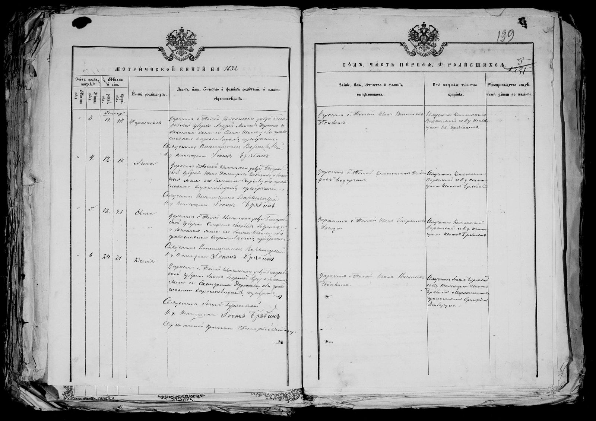

Examples: Tomai · Tomai 1882 · 14/33
Type a village name
Loading the index…
The index could not be loaded. Reload the page.
What a parish register is
Under Russian rule (1812-1918), then under Romanian rule, Bessarabia had no civil registry: births, marriages and deaths were recorded by the churches. Each parish kept a parish register (метрическая книга, metricheskaya kniga, “metrical book”), one book per year, in two copies: one stayed at the church, the other was sent to the diocese. Fond 211 of the National Archives holds the copies that survived.
A register has three parts: the first for births and baptisms, the second for marriages, the third for deaths. Each part numbers its acts from 1. From the 1830s the book is a printed form in Russian, divided into columns, which the priest fills in by hand, in Russian or, in the early years, in Romanian written in Cyrillic. An act is read column by column, as in the example below.
A double page from the births part of the register of Tomai (uezd of Izmail) for 1882 (ANRM 211-14/33, page 3 of the file): four baptisms of girls, numbers 3 to 6, in January. Hover a marker to see it on the page.
The double page

1 2 3 4 5 6 7 8 9- 1Printed heading: “Метрической книги на 1882 годъ, часть первая, о родившихся” (Metricheskoy knigi na 1882 god, chast pervaya, o rodivshikhsya): “Of the metrical book for the year 1882, part one, on those born”. The heading runs across the two pages: the year on the left, the rest on the right. The first part is the births.
- 2Act number: “Счётъ родившихся” (Schyot rodivshikhsya), the count of those born, in two sub-columns, one for boys and one for girls; the second is headed “женска пола” (zhenska pola), female sex. Each sex is counted separately. The four acts of this page are girls, numbers 3 to 6.
- 3Month and day: “Мѣсяцъ и день” (Mesyats i den), month and day, in two sub-columns: the day of birth, then the day of baptism. The month is written once, at the top of the column (“Генваря”, Genvarya, “of January”), and holds for the four acts.
- 4The child: “Имена родившихся” (Imena rodivshikhsya), the names of those born: a given name only, no surname.
- 5The parents: “Званіе, имя, отчество и фамилія родителей, и какого вѣроисповѣданія” (Zvanie, imya, otchestvo i familiya roditeley, i kakogo veroispovedaniya): rank, given name, patronymic and surname of the parents, and their confession. The text always follows the same order: rank and village, the father, “законная жена его” (zakonnaya zhena ego), “his lawful wife”, the mother, then the confession and whether it is a first marriage.
- 6The godparents: “Званіе, имя, отчество и фамилія воспріемниковъ” (Zvanie, imya, otchestvo i familiya vospriemnikov): rank, given name, patronymic and surname of the godparents. Act 4 names a single godparent, a man.
- 7Who baptised: “Кто совершалъ таинство крещенія” (Kto sovershal tainstvo kreshcheniya): who performed the sacrament of baptism, that is the priest and the psalm-reader. Their names are also written at the end of each act, on the left page.
- 8Witnesses’ signatures: “Рукоприкладство свидетелей” (Rukoprikladstvo svidetelei), the signatures of the witnesses. The column is empty here.
- 9Folio numbers: Added by hand, after the fact: 199 in red pencil at the top right, and a 3 in ink above it. Several numberings can coexist on a page: check which one the inventory follows.
Act 4, on the left page
- 1Act number: “4”, in the girls’ column: the fourth girl born in this part.
- 2Dates: 12 and 17: born on 12 January 1882, baptised on 17 January.
- 3The child: “Анна” (Anna): Anna.
- 4The parents: “Крестьянинъ с. Томай Измаильскаго уѣзда Бессарабской губерніи” (Krestyanin s. Tomai Izmailskago uyezda Bessarabskoy gubernii): “peasant of the village of Tomai, uezd of Izmail, government of Bessarabia”; then the father, “Иванъ Димитріевъ” (Ivan Dimitriev), Ivan son of Dimitrie, and his surname; then “законная жена его Елисавета Георгіева” (zakonnaya zhena ego Elisaveta Georgieva), “his lawful wife Elisaveta, daughter of Gheorghe”. The mother has no surname of her own here: the patronymic says whose daughter she is.
- 5Confession and marriage: “оба православнаго вѣроисповѣданія, первобрачные” (oba pravoslavnago veroispovedaniya, pervobrachnye): “both of the Orthodox confession, in their first marriage”.
- 6The clergy: “Священникъ … съ п. ч. псаломщикомъ …” (Svyashchennik … s p. ch. psalomshchikom …): “the priest … with the cleric, psalm-reader …”, followed by their names, written across the columns at the end of the act. “п. ч.” (p. ch.) stands for “причетникомъ” (prichetnikom), “cleric”.
The godparent and the priest of act 4, on the right page
- 1The godparent: “Крестьянинъ с. Томай Константинъ Θедоровъ” (Krestyanin s. Tomai Konstantin Feodorov): “peasant of the village of Tomai, Constantin son of Feodor”, followed by his surname. The patronymic is cut at the end of the line (“Θедо-”, Fedo-, the start of Feodorov, then “ровъ”, rov, its end). One godparent only, no godmother.
- 2Who baptised: The same priest and psalm-reader as at the end of the act, on the left page.
- 3Witnesses’ signatures: Empty for this act.
Scan of the register page, National Archives of the Republic of Moldova (ANRM), fond 211.
How to use this page
- You need a FamilySearch account. It is free.
- Type the name of a village. The inventory writes it in Romanian (Tomai); the reel is filed under its Russian name of the time, in Latin letters. Both spellings are searched. Cyrillic input works too (Томай, Tomai). Accents do not matter, and the first letters of the name are enough. You can add a year (Tomai 1882) or a file number (14/33).
- Narrow the list by uezd (the district), by church and by years. The church list gives, in brackets, the number of lines of each church.
- Read a result. Each line is one village in one file. At the top: the file reference (211-14/33), the village as the inventory writes it and, in smaller type, the name the film is filed under, when it differs. Then the years, the uezd, the church and the folios of the village in the file.
- Click the button. “Open” opens the image on FamilySearch at the first page of the village, give or take a few images. When the village could not be located on the film, there is no button but a plain link: “start of the file” opens the first image of the file, or a title image just before it; when the start of the file is not known either, “files on the reel” opens the list of files on the reel, where you pick the file by its reference. If you find the right image, “Suggest a link” lets you send its link.
- Then turn the pages. Read the folio number written on the page, compare it with the folios of the result, and go forward or back.
Folios, and the counter of FamilySearch
A file is cited as 211-opis/file: 211-14/33 is fond 211, inventory (opis) 14, file 33. For each village the inventory gives its folios (filele, листы, listy): the leaves of the original book, numbered by the archive, for example “folios 39-75”.
A folio is not an image. An image of the reel usually shows a double page, that is two folios side by side, and the same leaf is sometimes photographed twice. The folios of the inventory therefore tell where a village sits in the file and how long it is, not an image number.
A reel of microfilm carries several files one after the other, and the FamilySearch viewer opens one file at a time. The counter it shows (“955 of 1,182”) is the counter of the file, not of the reel: the image is the right one even when the number looks small.
Village names
Villages are written in Romanian, with the spelling of the Archives' inventory (Năvârneţ); the current spelling (Nevîrneț) is given next to it. FamilySearch has catalogued the films under the Russian name of the time, transcribed in Latin letters. The search accepts both, and also older spellings of the same village (Berezloghi for Berezlogi). When the two names differ, the line of the result shows both.
Many villages share the same name, in different uezds, and some villages have several churches, each with its own register. The church (its hram, that is its patron saint or feast: Sf. Nicolae, Adormirea) and the uezd tell them apart. Check both before opening an image. Church names are given as the inventory writes them, in Romanian (Sf. Nicolae, Adormirea Maicii Domnului).
Traps
- Years are missing. When a village has no line for a year, the register of that year may have been lost or never filmed, or the inventory may have been misread when this index was built. The index follows the inventory of the Archives, read by machine: a gap in the index does not prove that the register does not exist.
- A village can be in the file of a neighbouring parish. A village without a church was written in the register of the parish it belonged to, often under the name of that parish. Search for the neighbouring villages too.
- Dates follow the Julian calendar. The Russian Empire kept the old style: 12 days behind the Western calendar in the 19th century, 13 days in the 20th. A birth written on 12 January 1882 is 24 January in the Gregorian calendar.
- Names are written the Russian way. Given names take their Russian form (Иванъ, Ivan, for Ioan; Георгій, Georgiy, for Gheorghe), and a person is first identified by a patronymic: Георгіева (Georgieva) means “daughter of Gheorghe”, it is not a surname. The surname, when written, comes after.
- Links are accurate to a few images. The first page of a village is located on the film, not read page by page. Open it, read the folio written on the page, then go forward or back.
Full inventory: 4,493 archival files, 75,377 lines
The whole inventory as plain text, so that it can be read, printed, quoted and found by search engines. The search box above does the same job in one click; each file number below opens its own result.
- 211-1/1 · 1811Villages: s. Năvârneţ · s. Hînceşti · s. Copăceni (Copceni) · s. Albineţ · s. Oişeni · s. Pînzăreni · s. Drujineni · s. Şoltoaia · s. Călineşti · s. Scumpia · s. Sărata · târgul Bălţi · s. Pîrliţa · s. Recea · s. Singureni (Strâmba) · s. Slobozia Bălţilor (s. Bălţi) · s. Biliceni · s. Ciuciuieni · s. Iezereni · s. Zăbriceni · s. Glinjeni · s. Bogheni · s. Bobletici · s. Bursuceni · s. Coşcodeni · s. Dumbrăviţa · s. Hîrceşti · s. Mânzăteşti · s. Sineşti · s. Mirceşti · s. Corneşti · s. Bumbăta · s. Teşcureni · s. Măgurele · s. Măgura · s. Ciuciulea · s. Duşmani · s. Căldăruşa · s. Cuhneşti · s. Chetrişul · s. Chilia · s. Bisericanii de Luncă · s. Bisericanii de Câmp · s. Balotina · s. Vasileuţii Mici · s. Vasileuţii Mari · s. Buteşti · s. Cobani · s. Stavările · s. Glodeni · s. Duruitoarea · s. Mălăieşti · s. Zăicani (Zăhăicani) · s. Petruşeni · s. Gălăşeni · s. Hiliuţi · s. Camenca · s. Obreja · s. Limbeni · s. Mileşti · s. Bălăneşti · s. Pănăşeşti · s. Ciuteşti · s. Selişte · s. Vărzăreşti · s. Boldureşti · s. Brătuleni · s. Floriţoaia · s. Cetireni · s. Unţeşti · s. Vulpeşti · s. Mănoileşti · s. Rădeni · s. Rediul Mare · s. Hrănăuţi · s. Donduşeni · s. Scăieni · s. Fântâna Albă · s. Dângeni · s. Copăceni (Copăceanca) · Zgordeștî · Petriș · Ghirișenî · Sculianî
- 211-1/2 · 1812Villages: s. Şolcani · s. Rubleniţa · s. Cosăuţi · s. Zastînca · s. Trifăuţi · s. Vasilcţi · s. Racovăţ · s. Vărăncău · s. Soloneţ · s. Stoicani · s. Ciripcău · s. Dubna · s. Răduleni · s. Vădeni · s. Redi-Cereşnoveţ (Rădiul) · s. Voloave · s. Şepilova · s. Hristici · s. Tătăreuca Veche · s. Tătăreuca Nouă · s. Rogojeni · s. Ţîra (Vadul Ţîrii) · s. Bobuleşti · s. Gura Camencii · s. Floreşti · s. Lunga · s. Gura Căinarului · s. Alexăndreni · s. Cubolta (Gura Cuboltei) · s. Singureni · s. Hăsnăşeni · s. Sevirova · s. Cotiujeni · s. Izvoare · s. Căinarii Vechi · s. Heciul · s. Ţipleşti · s. Pravila · s. Băhrineşti · s. Drăgăneşti · s. Sînjerei · s. Pepeni · s. Răzălăi · s. Bălăşeşti · s. Brânzeni · s. Pistruieni · s. Ciutuleşti · s. Cenuşa · s. Stîrceni · Gheci Starîe
- 211-1/3 · 1812Villages: târgul Bălţi · s. Slobozia Bălţilor (Bălţile) · s. Singureni (Strâmba) · s. Recea · s. Pârliţa · s. Vălcineţ · s. Chişcăreni · s. Iezereni · s. Ciuciuieni · s. Glinjeni · s. (târgul) Pânzărenii de Jos · s. Călineşti · s. Dângeni · s. Albineţ · s. Sărata · s. Şoltoaia · s. Oişeni · s. Pînzăreni · s. Năvârneţ · s. Limbeni · s. Conceni · s. Hînceşti · s. Obreja · s. Valea Rusului · s. Iugani · s. Risipeni · s. Izvoare · s. Stolniceni · s. Stânjeni · s. Floreşti · s. Blindeşti · s. Sculeni · s. Gherman · s. Taxobeni · s. Vrăneşti · s. Unteni · s. Mirceşti · s. Semeni · s. Dănuţeni · s. Măcăreşti · s. Rediul Mare · s. Chetriş · s. Copăceni (Copăceanca) · s. Hrănăuţi · s. Branişte · s. Cobani · s. Vasileuţi · s. Balatino · s. Cuhneşti · s. Bisericanii de Câmp · s. Căldăruşa · s. Buteşti · s. Duruitoarea · s. Stângăceni · s. Fântâna Albă · s. Ciuciulea · s. Petruşeni · s. Mălăieşti · s. Gălăşeni · s. Camenca · s. Hiliuţi · s. Cucuieşi · s. Scăieni · s. Bisericanii de Luncă · s. Donduşeni · s. Zăicani (Zăhăicani) · s. Duşmani · s. Mileşti · s. Bălăneşti · s. Pănăşeşti · s. Ciuteşti · s. Selişte · s. Vărzăreşti · s. Trăisteni · s. Boldureşti · s. Brătuleni · s. Floriţoaia · s. Cetireni · s. Unţeşti · s. Vulpeşti (Hulpeşti) · s. Mănoileşti · s. Rădeni · s. Măgura · s. Măgurele · s. Bursuceni · s. Coşcodeni · s. Bobletici · s. Dumbrăviţa · s. Hîrceşti · s. Mânzăteşti · s. Sineşti · s. Bogheni · s. Teşcureni · s. Bumbăta · s. Corneşti · Vasileuţi · Dînjanî · Petriș
- 211-1/4 · 1813Villages: Făleşti · Albineţ · Năvârneţ · Pânzăreni · Obreja · Călineşti · Hînceşti · Drujineni · Sărata · Scumpia · Limbeni · Ciuciulea · Chetriş · Cuhneşti · Chilia · Bisericanii de Câmp · Bisericanii de Luncă · Balatina · Vasileuţi · Branişte · Duşmani · Cobani · Buteşti · Camenca · Petruşeni · Duruitoarea · Gălăşeni · Tălăieşti · Rediul Mare · Donduşeni · Scăieni · Dîngeni · Hrănăuţi · Fântâna Albă · Zăicani (Zăhăicani) · Stângăceni · Copăceni (Copăceanca) · Bălţi · Slobozia Bălţilor · Biliceni · Pârliţa · Strâmba · Recea · Ciuciuieni · Iezereni · Zăbriceni · Glinjeni · Măgura · Măgurele · Bursuceni · Coşcodeni · Bobletici · Dumbrăviţa · Hîrceşti · Mînzăteşti · Sineşti · Bogheni · Mileşti · Bălăneşti · Pănăşeşti · Ciuteşti · Rădeni · Corneşti · Bumbăta · Teşcureni · Mirceşti · Unţeşti · Hulpeşti (Vulpeşti) · Mănoileşti · Cetireni · Floriţoaia · Brătuleni · Boldureşti · Vărzăreşti · Buşila · Stolniceni · Măcăreşti · Frăsineşti · Dănuţeni · Bogdăneşti · Semeni · Blindeşti · Sculeni · Gherman · Trăisteni · Floreşti · Unteni · Vrăneşti · Taxobeni · Iugani · Valea Rusului · Risipeni · Izvoare · Copceni · Oişeni · s. Gîrbova · s. Briceni · s. Sauca · s. Verejeni · s. Lencăuţi · s. Mereşeuca · s. Codreni · târgul Otacii Movilăului · s. Călărăşeuca · s. Unguri · s. Arioneşti (Orăoneşti) · s. Rudii din Deal · s. Rudii din Vale · s. Iarova · s. Cremenciug · s. Voloviţa (Volovciniţa) · s. Cureşniţa · s. Cernoleuca · s. Corbul · s. Climăuţi · s. Braicău · s. Sudarca · s. Visoca · s. Mălcăuţi · s. Dărcăuţi · s. Bădiceni · s. Baxani · s. Bulboci · s. Măcăreuca · s. Mîndîc (Mîndîcul Vechi) · s. Mîndîcul Nou · s. Ghizdita · s. Tîrnova · s. Ţaul · s. Plop · Atachi · Gorodici
- 211-1/5 · 1813Villages: târgul Făleşti · s. Albineţ · s. Năvârneţ · s. Pânzăreni · s. Obreja · s. Călineşti · s. Hînceşti · s. Drujineni · s. Sărata · s. Scumpia · s. Şoltoaia · s. Limbeni · s. Ciuciulea · s. Căldăruşa · s. Chetriş · s. Cuhneşti · s. Chilia · s. Bisericanii de Câmp · s. Bisericanii de Luncă · s. Balatina · s. Vasileuţi · s. Branişte · s. Glodeni · s. Duşmani · s. Cobani · s. Buteşti · s. Camenca · s. Petruşeni · s. Duruitoarea · s. Gălăşeni · s. Tălăieşti · s. Cucuieţi · s. Rediul Mare · s. Donduşeni · s. Scăieni · s. Dîngeni · s. Hrănăuţi · s. Fântâna Albă · s. Zăicani (Zăhăicani) · s. Stângăceni · s. Hiliuţi · s. Copăceni (Copăceanca) · târgul Bălţi · s. Slobozia Bălţilor · s. Biliceni · s. Pârliţa · s. Strâmba · s. Recea · s. Ciuciuieni · s. Iezereni · s. Zăbriceni · s. Glinjeni · s. Măgura · s. Măgurele · s. Bursuceni · s. Coşcodeni · s. Bobletici · s. Dumbrăviţa · s. Hîrceşti · s. Mînzăteşti · s. Sineşti · s. Bogheni · s. Mileşti · s. Bălăneşti · s. Pănăşeşti · s. Ciuteşti · s. Rădeni · s. Corneşti · s. Bumbăta · s. Teşcureni · s. Mirceşti · s. Unţeşti · s. Hulpeşti (Vulpeşti) · s. Mănoileşti · s. Cetireni · s. Floriţoaia · s. Brătuleni · s. Boldureşti · s. Vărzăreşti · s. Buşila · s. Stolniceni · s. Măcăreşti · s. Frăsineşti · s. Dănuţeni · s. Bogdăneşti · s. Semeni · s. Blindeşti · s. Sculeni · s. Gherman · s. Trăisteni · s. Floreşti · s. Mirceşti (Mirceni) · s. Unteni · s. Vrăneşti · s. Taxobeni · s. Iugani · s. Valea Rusului · s. Risipeni · s. Izvoare · s. Copceni · s. Oişeni · Porciulianca · Seliște
- 211-1/6 · 1814Villages: târgul Teleneşti · târgul Bălţi · s. Biliceni · s. Ciuciuieni · s. Iezăreni · s. Chişcăreni · s. Coşcodeni · s. Bursuceni · s. Bobletici · s. Măgurele · s. Dumbrăviţa · s. Bălăneşti · s. Pănăşeşti · s. Ciuteşti · s. Selişte · s. Vărzăreşti · s. Boldureşti · s. Unţeşti · s. Vulpeşti (Hulpeşti) · s. Cetireni · s. Floriţoaia · s. Mileşti · s. Hîrceşti · s. Mânzăteşti · s. Sineşti · s. Bogheni · s. Mirceşti · s. Teşcureni · s. Corneşti · s. Rădeni · s. Bumbăta · s. Valea Trestieni · s. Frăsineşti · s. Măcăreşti · s. Brătuleni · s. Dănuţeni · s. Semeni · s. Mănoileşti · s. Bran · s. Floreşti · s. Buşila
- 211-1/7 · 1842Villages: s. Sculeni · s. Floriţoaia · s. Cetireni · s. Unţeşti · s. Vulpeşti · s. Rădeni · s. Hârceşti · s. Mînzăteşti · s. Sineşti · s. Bogheni · s. Mirceşti · s. Bobletici · s. Bursuceni · s. Măgurele · s. Măgura · s. Soci · s. Teşcureni · s. Corneşti · s. Bumbăta · s. Floreşti · s. Buciumeni · s. Gherman · s. Vrăneşti · s. Unteni · s. Mirceni · s. Iugani · s. Valea Rusului · s. Coiceni · s. Oişeni · s. Risipeni · s. Izvoare · s. Stolniceni · s. Scumpia · s. Sărata · s. Şoltoaia · s. Stînjeneni
- 211-1/8 · 1815Villages: târgul Soroca · s. Cosăuţi · s. Rubleniţa · s. Şepilova · s. Zastînca · s. Trifăuţi · s. Vasilcău · s. Vărăncău (Vărăncăul Nou) · s. Racovăţ · s. Soloneţ · s. Stoicani · s. Ciripcău · s. Dubna · s. Răduleni · s. Vădeni · s. Părcani (Părcanile) · s. Redi-Cereşnoveţ(Rădiul) · s. Voloave · s. Hristici · s. Şolcani · s. Cureşniţa · s. Voloviţa (Volovciniţa) · s. Cremenciug · s. Iarova · s. Tătărăuca Veche · s. Tătărăuca Nouă · s. Rudii din Deal · s. Rudii din Vale · s. Arioneşti · s. Unguri · s. Călărăşeuca · târgul Otacii Movilăului · s. Vălcineţ · s. Codreni · s. Sauca · s. Briceni · s. Mereşeuca · s. Lencăuţi · s. Verejeni · s. Gîrbova · s. Cernoleuca · s. Corbul · s. Climăuţi · s. Braicău · s. Sudarca · s. Visoca · s. Mărcăuţi · s. Dărcăuţi · s. Bădiceni · s. Băxani · s. Bulboci · s. Măcăreuca · s. Chetrosu · s. Mîndîc (Mîndîcul Vechi) · s. Mîndîcul Nou · s. Ghizdita · s. Tîrnova · s. Ţaul · s. Plopul · s. Singurenii Noi · s. Hăsnăşeni · s. Singurenii Vechi · s. Cubolta · s. Căinarii Vechi · s. Izvoare (Izvoarele) · s. Frumuşica · s. Sevirova · s. Alexăndreni · s. Gura Căinarului · s. Drojdieşti sau Lunga · s. Mărculeşti · s. Floreşti · s. Vozdul · s. Gura Camencii · s. Bobuleşti · s. Tîra (Vadul Ţîrii) · s. Domulgeni · s. Rogojeni · s. Heciul Nou · s. Heciul Vechi · s. Ţipleşti · s. Pravila · s. Băhrineşti · s. Sîngerei · s. Drăgăneşti · s. Stîrceni · s. Cenuşa · s. Ciutuleşti · s. Bălăşeşti · s. Pepeni · s. Răzălăi · s. Brînzeni · s. Pistruieni · s. Tîrşiţei · s. Răspopeni · s. Găuzeni · s. Chipeşca · s. Răceşti · s. Zahorna · s. Bodeşti · s. Pohoarna · s. Cotiujenii de Sus · s. Cotiujenii de Jos · s. Hîrtop · s. Coşerniţa · s. Ciorniţa · s. Unchiteşti · s. Cuhureştii de Sus · s. Cuhureştii de Jos · s. Poiana Cunicei · s. Cobîlea Nouă · s. Cobîlea Veche · s. Cuşmirca de Sus · s. Cuşmirca de Jos · s. Şestacii de Sus · s. _Şestacii de Jos · s. _Şipca · s. Mihuleni · s. Glunjeni · s. Mateuţi (Mătăuţi) · s. Solonceni · s. Tarasova · s. Curătura · s. Alcedar · s. Poiana de Jos · s. Socola · s. Raşcov · s. Salcia · s. Bursuc · s. Sănătăuca · s. Napadova · s. Vertiujeni · s. Văscăuţi · s. Temeleuţi · s. Zăluceni · s. Nimereuca · s. Cerlina · s. Vărăncăul Vechi · Soroca · Gorodici · Rașcov de Jos · Climauțî de Jos · Jabca
- 211-1/9 · 1915Villages: s. Alexăndreni · s. Alexeevca · s. Balan · s. Baraboi · s. Bleşteni (Bleşeneuţi) · s. Balatino · s. Boroseni · s. Brăneşti · s. Brătuşeni · s. Brânzeni · s. Buteşti · s. Văratic · s. Gălăşeni · s. Horodişte · s. Duruitoarea · s. Zăhăicani · s. Camenca · s. Chetroşica Nouă · s. Cobani · s. Corpaci · s. Costeşti · s. Cuconeşti · s. Cucuieţi · s. Mălăieşti · s. Mihăileni · s. Ochiul Alb · s. Parcovo · s. Petru_eni · s. Porciuleanca · s. Pociumbeni · s. Pociumbăuţi · s. Pârjota · localitatea Râşcani · s. Stolniceni · s. Stîngăceni · s. Terebna · s. Fântâna Albă · s. Fântâna Nouă · s. Hiliuţi · s. Şaptebani · s. Şofrîncani
- 211-1/10 · 1816Villages: târgul Soroca · s. Cosăuţi · s. Rubleniţa · s. Ţepilova · s. Zastânca · s. Trifăuţi · s. Vasilcău · s. Vărăncău (Vărăncăul Nou) · s. Vărăncăul Vechi · s. Nimereuca · s. Cerlina · s. Timileuţi · s. Văscăuţi · s. Racovăţ · s. Soloneţ · s. Stoicani · s. Ciripcău · s. Dubna · s. Răduleni · s. Vădeni · s. Parcani (Părcanile) · s. Redi-Cereşnovăţ (Rădiul) · s. Hristici · s. Şolcan · s. Cureşniţa · s. Voloviţa (Volovciniţa) · s. Cremenciug (Cremenciucul) · s. Iarova · s. Tătărăuca Veche · s. Tătărăuca Nouă · s. Rudii din Deal · s. Rudii din Vale · s. Arioneşti · s. Unguri · s. Călărăşeuca · târgul Otacii Movil_ului · s. Vălcineţ (ce-i zic Slubidca) · s. Codreni · s. Sauca · s. Briceni · s. Mereşeuca · s. Lincşuţi · s. Verejeni · s. Gîrbova · s. Cernoleuca · s. Corbul · s. Climăuţi · s. Braicău · s. Sudarca · s. Visoca · s. Mărcăuţi · s. Dărcăuţi · s. Bădiceni · s. Baxani · s. Bulboci · s. Măcăreuca · s. Chetrosu · s. Mîndîc (Mîndîcul Vechi) · s. Mîndîcul Nou · s. Ghizdita · s. Tîrnova · s. Ţaul · s. Plopul · s. Singurenii Noi · s. Singurenii Vechi · s. Hăsnăşeni · s. Cubolta · s. Căinarii Vechi · s. Izvoare (Izvoarele) · s. Frumuşica · s. Sevirova · s. Alexăndreni · s. Gura Căinarului · s. Lunga · s. Mărculeşti · s. Floreşti · s. Vozdul · s. Gura Camencii · s. Bobuleşti · s. Tîra · s. Domulgeni · s. Rogojeni · s. Heciul Nou · s. Heciul Vechi · s. Ţipleşti · s. Pravila · s. Băhrineşti · s. Stîrceni · s. Cenuşa · s. Ciutuleşti · s. Bălăşeşti · s. Răzălăi · s. Brînzeni · s. Pistruieni · Voloave (Voloavele) · Atachi
- 211-1/11 · 1816Villages: târgul Telenşti · s. Dumbrăviţa · s. Bobletici · s. Măgurele · s. Bursuceni · s. Coşcodeni · s. Chişcăreni · s. Iezăreni · s. Ciuciuieni · s. Biliceni · s. Hîrceşti · s. Mînzăteşti · s. Oineşti · s. Bogheni · s. Mirceşti · s. Teşcureni · s. Corneşti · s. Bumbăta · s. Rădeni · s. Mileşti · s. Unţăşti · s. Vulpeşti (Hulpeşti) · s. Cetireni · s. Mănoileşti · s. Floriţoaia · s. Boldureşti · s. Băăneşti · s. Pănăşeşti · s. Ciuteşti · s. Selişte · s. Vărzăreşti · s. Buşila · s. Floreşti · s. Ciolacu · s. Semeni · s. Zagorancea · s. Dănuţeni · s. Ungheni, biserică nu există · s. Măcăreşti · s. Frăsineşti · s. Trăisteni · s. Brătuleni · s. Bran
- 211-1/12 · 1816Villages: s. Bisericani · s. Duşmani · s. Călineşti · s. Albineţ · s. Cobani · s. Brăneşti · s. Petruşeni · s. Buteşti · s. Camenca · s. Tălăieşti · s. Mălăieşti · s. Duruitoarea · s. Stîngăceni · s. Hiliuţi · s. Cucuieţi · s. Zăicani (Zăhăicani) · s. Fântâna Albă · s. Scăieni · s. Donduşeni · s. Rediul Mare · s. Hrănăuţi · s. Dînjeni · s. Taxobeni · s. Iugani · s. Coiceni · s. Unteni · s. Vrăneşti · s. Căldăruşa · s. Hînceşti · s. Bisericani de Luncă · târgul Făleşti · târgul Bălţi · s. Limbeni · s. Obreja · s. Pînzăreni · s. Recea · s. Copăceni (Copăceanca) · s. Pîrliţa · s. Slobozia Bălţi · s. Strâmba · s. Glinjeni · s. Sculeni · s. Năvîrneţ · s. Stolniceni · s. Ciuciulea · s. Sărata · s. Scumpia · s. Vasileuţii Mici · s. Măgura · s. Izvoare · s. Şoltoaia · s. Chetriş · s. Valea Rusului · s. Glodeni · s. Drujineni · s. Balatina · s. Blindeşti · s. Chilia · s. Cuhneşti · s. Risipeni · s. Oişeni
- 211-1/13 · 1817Villages: târgul Soroca · s. Zăluceni · s. Vertiujeni (Vîrtijănii) · s. Napadova · s. Sănătăuca · s. Japca · s. Bursuc · s. Salcea · s. Climăuţi · s. Raşcovul de Sus · s. Raşcovul de Jos · s. Socola (Socul) · s. Poiana de Jos · s. Alcedar · s. Schitul Curăturii · s. Tarasova · s. Solonceni · s. Mateuţi (Mătăuţi) · s. Hligeni (Glijeni) · s. Mihuleni · s. Şipca · s. Şestacii de Sus · s. Şestacii de Jos · s. Cuşmirca de Jos · s. Cuşmirca de Sus · s. Cobîlea Veche · s. Cobîlea Nouă · s. Poiana Cunicei · s. Cuhureştii de Jos · s. Cuhureştii de Sus · s. Unchiteşti · s. Cerniţa (Ciorniţa) · s. Coşerniţa · s. Hârtopul · s. Cotiujenii de Sus, - · s. Cotiujenii de Jos · s. Pohoarna (Pohoarnile) · s. Bodeşti · s. Zahorna · s. Răceşti · s. Chipeşca · s. Tăuzănii · s. Răspopenii · s. Târşiţei
- 211-1/14 · 1817Villages: târgul Soroca · s. Cosăuţi · s. Rubleniţa · s. Ţepilova · s. Zastânca · s. Trifăuţi · s. Vasilcău · s. Vărăncău (Vărăncăul Nou) · s. Vărăncăul Vechi · s. Nimereuca · s. Cerlina · s. Timileuţi · s. Văscăuţi · s. Racovăţ · s. Soloneţ · s. Stoicani · s. Ciripcău · s. Dubna · s. Răduleni · s. Vădeni · s. Parcani · s. Redi-Cereşnovăţ (Rădiul) · s. Voloave · s. Hristici · s. Şolcan · s. Cureşniţa · s. Voloviţa · s. Cremenciug · s. Iarova · s. Tătărăuca Veche · s. Tătărăuca Nouă · s. Rudii din Deal · s. Rudii din Vale · s. Arioneşti · s. Unguri · s. Călărăşeuca · târgul Otacii Movilăului · s. Vălcineţ · s. Codreni · s. Sauca · s. Briceni · s. Mereşeuca · s. Verejeni · s. Gîrbova · s. Cernoleuca · s. Corbul · s. Climăuţi · s. Braicău · s. Sudarca · s. Visoca · s. Mărcăuţi · s. Dărcăuţi · s. Bădiceni · s. Baxani · s. Bulboci · s. Măcăreuca · s. Chetrosu · s. Mîndîc (Mîndîcul Vechi) · s. Mîndîcul Nou · s. Ghizdita · s. Tîrnova · s. Ţaul · s. Plopul · s. Singurenii Noi · s. Singurenii Vechi · s. Hăsnăşeni · s. Cubolta · s. Căinarii Vechi · s. Izvoare (Izvoarele) · s. Frumuşica · s. Sevirova · s. Alexăndreni · s. Gura Căinarului · s. Lunga · s. Mărculeşti · s. Floreşti · s. Vozdul · s. Gura Camencii · s. Bobuleşti · s. Ţîra (Vadul Ţîrii) · s. Domulgeni · s. Rogojeni · s. Heciul Nou · s. Heciul Vechi · s. Ţipleşti · s. Pravila · s. Băhrineşti · s. Stîrceni · s. Cenuşa · s. Ciutuleşti · s. Bălăşeşti · s. Răzălăi · s. Brînzeni · s. Pistruieni · târgul Bălţi · s. Sculeni · s. Copăceni · s. Unteni · s. Iugani · s. Blindeşti · s. Toxobeni · s. Vrăneşti · s. Mirceşti (Merceni) · s. Valea Rusului · s. Gherman · s. Limbeni · s. Pînzăreni · s. Glinjeni · s. Pîrliţa · s. Măgura · s. Singureni (Strâmba) · s. Slobozia Bălţi · s. Copăceni (Copăceanca) · s. Recea · s. Obreja · s. Chilia · s. Chetriş · s. Cobani · s. Branişte · s. Buteşti · s. Petruşeni · s. Duruitoarea · s. Camenca · s. Gălăşeni · s. Tălăieşti · s. Cucuieţi · s. Hiliuţi · s. Stângăceni · s. Zăicani (Zăhăicani) · s. Fântâna Albă · s. Rediul Mare · s. Hrănăuţi · s. Dînjeni · s. Scăieni · s. Donduşeni · s. Vasileuţi · s. Bisericani · s. Călineşti · s. Hânceşti · s. Drujineni · s. Albineţ · s. Năvârneţ · s. Ciuciulea · s. Căldăruşa · s. Duşmani · s. Glodeni · s. Şoltoaia · s. Sărata · s. Scumpia · s. Izvoare · s. Risipeni · s. Oişeni · s. Stolniceni · Cerepcovo · Atachi · Becsan · Gorodici
- 211-1/15Villages: Bălți · Sculianî · Copacenî · Untenî · Iugan · Blindeștî · Tacsoben · Vraneștî · Mirceșt · Valia-Rusului · Gherman · Limbenî · Pînzaren · Glinjenî · Pîrlița · Megura · Strîmba · Belțcaia Slobodzeia · Recia · Obreja · Chilia · Petriș · Coban · Braneștî · Buteștî · Petrușanî · Duruitoaria · Camenchi · Galașenî · Talaeștî · Cucueț · Hiliuțî · Stîngacenî · Zagaicanî · Rediu-Mare · Hrinouțî · Dînjanî · Scaianî · Dondiușanî · Vasileuțî Malîe · Bisericanî De Cîmp · Calineștî · Hîncești · Drujinenî · Albineț · Nevîrneț · Ciuciulia · Caldaruși · Dușman · Glodianî · Șoltoaia · Sarata · Scumpia · Izvoare · Risipen · Oișen · Stolnicenî
- 211-1/16 · 1919Villages: s. Tîrşiţei · s. Găuzeni · s. Receşti · s. Zahorna · s. Bodeşti · s. Pohoarna · s. Cotiujenii de Sus · s. Cotiujenii de Jos · s. Cobîlea Nouă · s. Cobîlea Veche · s. Şestacii de Sus · s. Şestacii de Jos · s. Socola · târgul Raşcov · s. Climăuţi · s. Salcia · s. Bursuc · s. Japca · s. Sănătăuca · s. Napadova · s. Vertiujeni · s. Zăluceni · s. Cerlina · s. Nimereuca · s. Vărăncăul Vechi · s. Slobozia Vărăncăului Nou · s. Temeleuţi · s. Văscăuţi · s. Soloneţ · s. Stoicani · s. Rediul · s. Parcani (Părcanile) · s. Bulboci · s. Căinarii Vechi · s. Izvoare · s. Frumuşica · s. Sevirova · s. Răduleni · s. Vădeni · s. Dubna · s. Ciripcău · s. Cerniţa · s. Coşerniţa · s. Hîrtop · s. Unchiteşti · s. Cuhureştii de Sus · s. Cuhureştii de Jos · s. Cunicea (Poiana Cunicei) · s. Cuşmirca de Sus · s. Cuşmirca de Jos · s. Ţîra · s. Bobuleşti · s. Gura Camencii · s. Zastînca · s. Rubleniţa · târgul Soroca · s. Vasilcău · s. Racovăţ · s. Măcăreuca · s. Dărcăuţi · s. Cremenciug · s. Mărcăuţi · s. Ţepilova · s. Voloviţa (Volovciniţa) · s. Cureşniţa · s. Cosăuţi · s. Hristici · s. Baxani · s. Bădiceni · s. Şolcani · s. Voloave · s. Trifăuţi · Raşcov · Voroncovo Novoe
- 211-1/17 · 1818Villages: târgul Soroca · s. Cosăuţi · s. Rubleniţa · s. Ţepilova · s. Zastânca · s. Trifăuţi · s. Vasilcău · s. Vărăncău (Vărăncăul Nou) · s. Vărăncăul Vechi · s. Nimereuca · s. Cerlina · s. Temeleuţi · s. Văscăuţi · s. Racovăţ · s. Soloneţ · s. Stoicani · s. Ciripcău · s. Dubna · s. Răduleni · s. Vădeni · s. Parcani · s. Redi-Cereşnovăţ (Rădiul) · s. Voloave · s. Hristici · s. Şolcani · s. Cureşniţa · s. Voloviţa (Volovciniţa) · s. Cremenciug · s. Iarova · s. Tătărăuca Veche · s. Tătărăuca Nouă · s. Rudii din Deal · s. Rudii din Vale · s. Arioneşti · s. Unguri · s. Călărăşeuca · târgul Otacii Movilăului · s. Vălcineţ · s. Codreni · s. Sauca · s. Briceni · s. Mereşeuca · s. Verejeni · s. Gîrbova · s. Cernoleuca · s. Corbul · s. Climăuţi · s. Braicău · s. Sudarca · s. Visoca · s. Mărcăuţi · s. Dărcăuţi · s. Bădiceni · s. Baxani · s. Bulboci · s. Măcăreuca · s. Chetrosu (Pietrosul) · s. Mîndîc (Mîndîcul Vechi) · s. Mîndîcul Nou · s. Tîrnova · s. Ţaul · s. Plopul · s. Singurenii Noi · s. Singurenii Vechi · s. Hăsnăşeni · s. Cubolta · s. Căinarii Vechi · s. Izvoare · s. Frumuşica · s. Sevirova · s. Alexăndreni · s. Gura Căinarului · s. Lunga · s. Mărculeşti · s. Floreşti · s. Vozdul · s. Gura Camencii · s. Bobuleşti · s. Tîra (Vadul Ţîrii) · s. Domulgeni (Domolojeni) · s. Rogojeni · s. Heciul Nou · s. Heciul Vechi · s. Ţipleşti · s. Pravila · s. Băhrineşti · s. Stîrceni · s. Cenuşa · s. Ciutuleşti · s. Bălăşeşti · s. Răzălăi · s. Brînzeni · s. Pistruieni
- 211-1/18 · 1818Villages: târgul Făleşti · s. Bobletici · s. Biliceni · s. Chişcăreni · s. Iezăreni · s. Ciuciuieni · s. Dumbrăviţa · s. Flămânzeni · s. Coşcodeni · s. Bursuceni · s. Hîrceşti · s. Mânzăteşti · s. Sineşti · s. Bogheni · s. Mirceşti · s. Măgurele · s. Teşcureni · s. Bumbăta · s. Corneşti · s. Unţeşti · s. Vulpeşti (Hulpeşti) · s. Mănoileşti · s. Cetireni · s. Floriţoaia · s. Brătuleni · s. Boldureşti · s. Costuleni · s. Dănuţeni · s. Zagarancea · s. Bogdăneşti · s. Simeni · s. Ciolacu · s. Pîrliţa · s. Floreşti · s. Buşila · s. Vărzăreşti · s. Ciutuleşti · s. Ciuteşti · s. Bălăneşti · s. Vânători · s. Mileşti · s. Rădeni · s. Trăisteni · s. Frăsineşti · s. Măcăreşti
- 211-1/19 · 1818Villages: s. Albineţ · târgul Bălţi · s. Bisericanii de Lunc] · s. Branişte · s. Buteşti · s. Tomeşti · s. Boroseni · s. Balatina · s. Blindeşti (Bîndeşti) · s. Slobozia Bălţilor · s. Vrăneşti · s. Valea Rusului · s. Vasileuşi · s. Gălăşeni · s. Gherman · s. Glinjeni · s. Glodeni · s. Duruitoarea · s. Dîngeni · s. Donduşeni · s. Duşmani · s. Drujineni · s. Zăicani (Zăhăicani) · s. Petruşeni · s. Izvoare · s. Călineşti · s. Chetriş · s. Cobani · s. Cucuieţi · s. Camenca · s. Cuhneşti · s. Chilia · s. Copăceni (Copăceanca) · s. Coiceni · s. Limbeni · s. Măgura · s. Mălăieşti · s. Mirceni · s. Năvârneţ · s. Oişeni · s. Obreja · s. Pînzăreni · s. Pîrliţa · s. Recea · s. Risipeni · s. Rediul Mare · s. Sculeni · s. Scăieni · s. Corlăteni · s. Stolniceni · s. Scumpia · s. Soci (Slobozia Socii) · s. Stîngăceni · s. Sărata · s. Taxobeni · s. Ustia · s. Unteni · s. Fântâna Albă · s. Hrineuţi (Hrăuţi) · s. Hiliuţi · s. Hînceşti · s. Ciuciulea · s. Şoltoaia · s. Iugani · Petriș · Strîmba
- 211-1/20 · 1819Villages: târgul Bălţi · s. Condrăteşti · s. Dumbrăviţa · s. Cucioaia · s. Biliceni · s. Băşeni · s. Mândreşti · s. Ciulucani · s. Mihălaşa · târgul Teleneşti · s. Teleneşti · s. Ineşti · s. Cozeşti (Slobozia lui Mărdare) · s. Zgărdeşti · s. Flămânzeni · s. Coşcodeni · s. Bursuceni · s. Bobletici · târgul Foleşti · s. Slobozia Bălţi · s. Pârliţa · s. Recea · s. Copăceni (Copăceanca) · s. Glinjeni · s. Iezăreni · s. Ciuciuieni · s. Zîmbrăuani · s. Corlăteni · s. Cubolta · s. Hăsnăşeni · s. Chetrosul · s. Ghizdita · s. Singurenii Noi · s. Singurenii Vechi · s. Putineşti · s. Gura Căinariului · s. Lunga · s. Mărculeşti · s. Floreşti · s. Heciul Nou · s. Heciul Vechi · s. Alexăndreni · s. Ţipleşti · s. Pravila · s. Băhrineşti · s. Stîrceni · s. Cenuşa · s. Ciutuleşti · s. Pistruieni · s. Brînzeni · s. Domulgeni · s. Rogojeni · s. Vadul-Leca · s. Căzăneşti · s. Negureni · s. Chiţcani · s. Verejenii de Sus · s. Verejeni · s. Băneşti · s. Prepeliţa · s. Pepeni · s. Răzălăi · s. Bălăşeşti · s. Copăceni · s. Sînjerei · s. Drăgăneşti · s. Scăieni · s. Mîndâcul Nou · s. Mîndîcul Vechi · s. Tîrnova · Strîmba
- 211-1/21 · 1812Villages: târgul Soroca · s. Vărăncău · s. Nimereuca · s. Cerlina · s. Zăluceni · s. Vertiujeni · s. Temeleuţi · s. Văscăuţi · s. Napadova · s. Sauca · s. Japca · s. Climăuţi · târgul Raşcov · s. Poiana de Jos · s. Alcedar · s. Curătura (Curăturile) · s. Tarasova · s. Solonceni · s. Mateuţi · s. Glinjeni · s. Mihuleni · s. Cerniţa · s. Coşerniţa · s. Unchiteşti · s. Cuhureştii de Sus · s. Cuhureştii de Jos · s. Cunicea (Poiana Cunicei) · s. Cuşmirca de Jos · s. Şipca · s. Şestaci · s. Cobîlea · s. Cotiujeni · s. Pohoarna · Rașcov de Jos · Bodeștî · Zagorna · Receștî · Chipeșca · Gauzenî · Raspopenî · Tîrșiței
- 211-1/22 · 1819Villages: s. Unţeşti · s. Hîrceşti · s. Petreşti · s. Bahmut · s. Sineşti · s. Mânzăteşti · s. Zagarancea · s. Mănoileşti · s. Floriţoaia · s. Cetireni · s. Corneşti · s. Teşcureni · s. Bumbăta · s. Vulpeşti · s. Bogheni · s. Mirceşti · s. Rădeni · s. Bogdăneşti · s. Semeni · s. Dănuţeni · s. Căldăruşa · s. Năvîrneţ · s. Duşmani · s. Chetriş · s. Cuhneşti · s. Glodeni · s. Chilia · s. Ustia, (biserică nu este) · s. Ciuciulea · s. Coiceni · s. Valea Rusului · s. Iugani · s. Mirceni · s. Unteni · s. Vrăneşti · s. Taxobeni · s. Sculeni · s. Ghernan · s. Blindeşti · s. Todireşti · s. Scumpia · s. Drujineni · s. Şoltoaia · s. Oişeni · s. Albineţ, (Frijeni) · s. Risipeni · s. Floreşti · s. Măgura · s. Pîrliţa · s. Măgurele · s. Sărata · s. Hînceşti · s. Stolniceni · s. Soci · s. Călineşti · s. Limbeni · s. Izvoare · s. Obreja · s. Pînzăreni · s. Buşila · s. Balatina · s. Bisericani de Câmp · s. Bisericani de Luncă · s. Vasileuţi · s. Cobani · s. Brăneşti · s. Buteşti · s. Duruitoarea · s. Petruşeni · s. Gălăşeni · s. Camenca · s. Mălăieşti · s. Cucuieşi · s. Hiliuţi · s. Zăicani (Zahaicani)
- 211-1/23 · 1820Villages: târgul Bălţi · s. Dumbrăviţa · s. Cucioaia · s. Biliceni · s. Beşeni · s. Mîndreşti · s. Ciulucani · s. Mihălaşa · s. Teleneşti · târgul Teleneşti · s. Ineşti · s. Cozeşti sau Slobizia lui Mărdare · s. Zgărdeşti · s. Flămânzeni · s. Coşcodeni · s. Bursuceni · s. Sineşti · s. Bobletici · s. Slobozia Bălţi · s. Pîrliţa · s. Recea · s. Copăceni (Copăceanca) · s. Glinjeni · s. Iezăreni · s. Ciuciuieni · s. Zimbrăuani · s. Boroseni · s. Strîmba · s. Cubolta · s. Hăsnăşeni · s. Chetrosu (Pietrosu) · s. Ghizdita · s. Drochia · s. Mîndîc · s. Tîrnova · s. Scăieni · s. Singurenii Noi · s. Singurenii Vechi · s. Gura Căinarului · s. Larga · s. Mărculeşti · s. Floreşti · s. Heciul Nou · s. Heciul Vechi · s. Alexăndreni · s. Ţipleşti · s. Putineşti · s. Pravila · s. Băhrineşti · s. Stîrceni · s. Cenuşa · s. Ciutuleşti · s. Băneşti · s. Prepeliţa · s. Pepeni · s. Răzălăi · s. Bălăşeşti · s. Copăceni · s. Sînjerei · s. Cotiujenii · s. Drăgăneşti · s. Dumbrăveni sau Cucoşeni · s. Pistruieni · s. Brînzeni · s. Domulgenii · s. Rogojeni · s. Vadul Lecăi · s. Căzăneşti · s. Negureni · s. Chiţcani · s. Verejeni de Sus · s. Verejeni de Jos · s. Căpreşti
- 211-1/24 · 1821Villages: târgul Bălţi · s. Slobozia Bălţi · s. Corlăteni · s. Singurenii Vechi · s. Singurenii Noi · s. Recea · s. Copăceni (Copăceanca) · s. Boroseni · s. Pîrliţa · s. Glinjeni · s. Zămbrăuoani · s. Iezăreni · s. Ciuciuieni · s. Biliceni · s. Flămânzeni · s. Heciul Nou · s. Heciul Vechi · s. Pravila · s. Băhrineşti · s. Stîrceni · s. Cenuşa · s. Bălăşeşti · s. Răzălăi · s. Pepeni · s. Băneşti · s. Prepeliţa · s. Copăceni · s. Sînjerei · s. Drăgăneşti · s. Cotiujenii Noi · s. Sineşti · s. Dumbrăviţa · s. Bobletici · s. Bursuceni · s. Coşcodeni · s. Mihălaşa · s. Cucioaia · s. Zgărdeşti · s. Cozeşti · s. Scăreşti · s. Beşeni · s. Ciulucani · târguţorul Teleneşti · s. Vadul-Leca · s. Rogojeni · s. Căpreşti · s. Domulgeni · s. Ciutuleşti · s. Pistruieni · s. Căzăneşti · s. Negureni · s. Chiţcani · s. Verejeni de Sus · s. Verejeni de Jos · s. Teleneştii Vechi · s. Ineşti · s. Brînzeni · s. Putineşti · s. Ţipleşti · s. Gura Căinarului · s. Lunga · s. Mărculeşti · s. Floreşti · s. Cubolta · s. Hăsnăşeni · s. Chetrosu · s. Ghizdita · s. Scăieni · s. Tîrnova · s. Mîndîcul Vechi · s. Drochia · s. Alexăndreni · Belțcaia Slobodzeia · Strîmba · Cotiujanî de Sus
- 211-1/25 · 1839Villages: colonia Comrat · c. Chirsova Nouă, (Anagje Başchioi) · c. Dezghingea (Dizghinje) · c. Beşalma · c. Tomai · c. Ferapontievca · c. Avdarma · c. Chiriet Lunga · c. Joltai (Djaltai) · c. Ciadîr-Lunga · c. Beşghioz (Noul Beşghioz) · c. Tvardiţa · c. Valea Perjei (Valea Perjului) · c. Baurci · c. Congaz · c. Cazaclia · c. Chiurutne · c. Taraclia · c. Copceac (Tatarcopceac) · c. Ciocmaidan, casa de rugăciuni · c. Başcalia · Gaidar
- 211-1/26 · 1821Villages: s. Unţeşti · s. Vulpeşti · s. Cetireni · s. Floriţoaia · s. Bahmut · s. Mirceşti · s. Corneşti · s. Hîrceşti · s. Mînzăteşti · s. Condrăteşti · s. Bumbăta · s. Teşcureni · s. Bogheni · s. Mănoileşti · s. Rădeni · s. Dănuţeni · s. Zagarancea · s. Bogdăneşti · s. Semeni · s. Blindeşti · s. Gherman · s. Taxobeni · s. Vrăneşti · s. Unteni · s. Mirceni · s. Iugani · s. Valea Rusului · s. Cuiceni · s. Petreşti · s. Sculeni · s. Cobani · s. Petruşeni · s. Zăicani (Zăhăicani) · s. Cucuieţi · s. Hiliuţi · s. Mălăieşti · s. Camenca · s. Balatina · s. Duruitoarea · s. Branişte · s. Vasileuţii Mici · s. Buteşti · s. Glodeni · s. Slobozia Hîrpeşii · s. Duşmani · s. Gălăşeni · s. Măgurele · s. Socii · s. Sărata · s. Frijeni · s. Măgura · s. Şoltoaia · s. Stînjăneni · s. Oişeni · s. Floreşti · s. Stolniceni · s. Scumpia · s. Izvoare · s. Pîrliţa · s. Todireşti · s. Risipeni · s. Chetriş · s. Bisericani de Câmp · s. Drujineni · s. Cuhneşti · s. Obreja · s. Pînzăreni · s. Căldăruşa · s. Ustie (Slobozie), biserică nu este · s. Limbeni · s. Ciuciulea · s. Bisericani de Luncă · s. Călineşti · s. Năvîrneţ · s. Chilia · s. Hînceşti · Albineț
- 211-1/27 · 1822Villages: s. Unţeşti · s. Cetireni · s. Mănoileşti · s. Vulpeşti · s. Rădeni · s. Corneşti · s. Bumbăta · s. Bahmut · s. Mirceşti · s. Teşcureni · s. Bogheni · s. Hîrceşti · s. Mînzăteşti · s. Condrăteşti · s. Floriţoaia · s. Dănuţeni · s. Zagorancea · s. Bogdăneşti · s. Semeni · s. Petreşti · s. Boldeşti · s. Sculeni · s. Gherman · s. Taxobeni · s. Vrăneşti · s. Unteni · s. Mirceni · s. Valea Rusului · s. Iugani · s. Coiceni · s. Ciuciuleni (Ciuciuleşti) · s. Cuhneşti · s. Obreja · s. Ustia, biserică nu este · s. Chetriţ · s. Pînzăreni · s. Călineşti · s. Bisericani de Luncă · s. Căldăruşa · s. Bisericani de Câmp · s. Limbeni · s. Drujineni · s. Năvîrneş · s. Hînceşti · s. Chilia · s. Floreşti · s. Stînjenei · s. Izvoare · s. Scumpia · s. Risipeni · s. Stolniceni · s. Todireşti · s. Pîrliţa · s. Măgurele · s. Sărata · s. Măgura · s. Şoltoaia · s. Soci · s. Albineţ · s. Oişeni · s. Branişte · s. Buteşti · s. Vasileuţii Mici · s. Cobani · s. Duşmani · s. Balatina · s. Glodeni · s. Mălăieşti · s. Gălăşeni · s. Zăicani (Zăhăicani) · s. Cucuieţi · s. Hiliuţi · s. Petruşeni · s. Duruitoarea · s. Camenca · Petriș
- 211-1/28 · 1822Villages: oraşul Bălţi · târgul Făleşti · s. Slobozia Bălţi · s. Singurenii Vechi · s. Singurenii Noi · s. Corlăteni (Strîmba) · s. Recea · s. Copăceni (Copăceanca) · s. Boroseni · s. Pîrliţa · s. Glinjeni · s. Zămbrăuani · s. Ciuciuieni · s. Biliceni · s. Flămânzeni · s. Heciul Nou · s. Heciul Vechi · s. Prajila (Pravila) · s. Băhrineşti · s. Stîrceni · s. Cenuşa · s. Bălăşeşti · s. Drăgăneşti · s. Rădoaia · s. Sînjerei · s. Copăceni · s. Prepeliţa · s. Cotiujenii Noi · s. Băneşti · s. Pepeni · s. Răzălăi · s. Iezăreni · s. Cozeşti · s. Zgărdeşti · s. Dumbrăviţa · s. Bobletici · s. Sineşti · s. Coşcodeni · s. Bursuceni · s. Cucioaia · s. Mîndreşti · s. Beşeni · s. Ciulucani · s. Mihălaşa · târgul Teleneşti · s. Vadul Lecăi · s. Ciutuleşti · s. Ordăşei · s. Pistruieni · s. Domulgeni · s. Rogojeni · s. Verejeni de Sus · s. Verejeni de Jos · s. Chiţcani · s. Negureni · s. Căpreşti · s. Brînzeni · s. Căzăneşti · s. Ineşti · s. Teleneştii Vechi · s. Putineşti · s. Floreşti · s. Mărculeşti · s. Lunga · s. Gura-Căinarului · s. Ţipleşti · s. Alexăndreni · s. Cubolta · s. Hăsnăşeni · s. Petrosu · s. Drochia · s. Mîndâcul Vechi · s. Ghizdita · s. Tîrnova · s. Scăieni · Cotiujanî de Sus
- 211-1/29 · 1823Villages: s. Unţeşti · târgul Făleşti · s. Ciuciulea · s. Obreja · s. Pînzăreni · s. Bisericani de Câmp · s. Drujineni · s. Căldăruşa · s. Chetriş · s. Chilia · s. Hînceşti · s. Călineşti · s. Ustia, biserică nu este · s. Năvîrneţ · s. Bisericani de Luncă · s. Cuhneşti · s. Limbeni · s. Scumpia · s. Şoltoaia · s. Măgura · s. Soci sau Burghelea · s. Măgurele · s. Izvoare · s. Risipeni · s. Sărata · s. Todireşti · s. Oişeni · s. Pîrliţa · s. Stânjenei · s. Floreşti şi s. Buciumeni şi Cioropcani · s. Albineţ · s. Stolniceni · s. Gălăşeni · s. Camenca · s. Vasileuţi · s. Duruitoarea · s. Glodeni · s. Cosăuţi · s. Balatina · s. Slobozia Cârpiţi, biserică nu este · s. Zăicani (Zăhăicani) · s. Hiliuţi · s. Duşmani · s. Cobani · s. Buteşti · s. Mălăieşti · s. Petruşeni · s. Brăneşti · s. Condrăteşti · s. Mînzăteşti · s. Rădeni · s. Hîrceţti · s. Corneţti · s. Teţcureni · s. Mînoileşti · s. Bumbăta · s. Vulpeşti · s. Cetireni · s. Florioaia · s. Mirceşti · s. Bahmut · s. Bogheni · s. Semeni · s. Blindeşti · s. Coiceni · s. Dănuţeni · s. Vrăneşti · s. Zagarancea · s. Unteni · s. Valea Rusului · s. Taxobeni · s. Bogdăneşti · s. Mirceni · s. Petreşti · s. Gherman · s. Iugani · s. Sculeni · Petriș
- 211-1/30 · 1823Villages: târgul Raşcov · s. Cuhureştii de Sus · s. Verejeni · s. Poiana Cunicei · s. Unchiteşti · s. Japca · s. Socola · s. Sănătăuca · s. Cuhureştii de Jos · s. Cerniţa · s. Coşerniţa · s. Bursuc · s. Hîrtop · s. Temeleţi · s. Climăuţi · s. Salcea · s. Văscăuţi · s. Napadova · s. Vasilcău · târgul Soroca · s. Cerlina · s. Soloneţ · s. Vărăncău · s. Zaluceni · s. Trifăuţi · s. Zastînca · s. Racovăţ · s. Dubna · s. Ciripcău · s. Slobozia Vărăncău · s. Stoicani · s. Nimereuca · s. Cuşmirca de Sus · s. Cuşmirca de Jos · s. Şestaci · s. Şestacii de Jos · s. Cotiujenii de Jos · s. Cotiujenii de Sus · s. Cobîlea de Jos · s. Cobîlea de Sus · s. Receşti · s. Tîrşiţei · s. Zahorna · s. Bodeşti · s. Găuzeni · s. Pohoarna · s. Izvoare · s. Gura Camencii · s. Gvozdova (Vozdu) · s. Bobuleşti · s. Redi · s. Voloave · s. Parcani · s. Vădeni · s. Căinarii Vechi · s. Frumuşica · s. Sevirova · s. Răduleni · s. Slobozia Bulboci · s. Bulboci · s. Cremenciug · s. Măcăreuca · s. Rubleniţa · s. Cureşniţa · s. Voloviţa (Volovciniţa) · s. Mălcăuţi · s. Bădiceni · s. Dărcăuţi · s. Ţepilova · s. Cosăuţi · s. Şolcani · s. Hristici · s. Băxani · Raşcov · Voroncovo Staroe · Cerepcovo · Voroncovo Novoe · Cobîlia Staraia · Cobîlia Novaia · Red-Cereșnoveț
- 211-1/31 · 1823Villages: târgul Bălţi · s. Slobozia Bălţi · s. Strîmba · s. Singurenii Vechi · s. Singurenii Noi · s. Teleneşti · s. Recea · s. Copanca · s. Boroseni · s. Pîrliţa · s. Glinjeni · s. Zămbrăuoani · s. Iezăreni · s. Ciuciuieni · s. Biliceni · s. Flămânzeni · s. Heciul Nou · s. Heciul Vechi · s. Prajila (Pravila) · s. Băhrineşti · s. Stîrceni · s. Cenuşa · s. Bălăşeşti · s. Răzălăi · s. Pepeni · s. Băneşti · s. Prepeliţa · s. Copăceni · s. Sîngerei · s. Drăgăneşti · s. Rădoaia · s. Cotiujenii Noi · s. Sineşti · s. Dumbrăviţa · s. Bobletici · s. Bursuceni · s. Coşcodeni · s. Mihălaşa · s. Cucioaia · s. Zgărdeşti · s. Cozeşti · s. Mîndreşti · s. Beşeni · s. Ciulucani · târgul Teleneşti · s. Vadul Leca · s. Rogojeni · s. Cîpreşti · s. Domulgeni · s. Ciutuleşti · s. Pistruieni · s. Ordăşei · s. Căzăneşti · s. Negureni · s. Verejeni de Sus · s. Verejeni de Jos · s. Chiţcani · s. Brînzeni · s. Ineşti · s. Putineşti, biserică nu este · s. Ţipleşti · s. Gura Căinarului · s. Lunga · s. Mărculeşti · s. Floreşti · s. Cubolta · s. Hăsnăşeni · s. Chetrosu · s. Ghizdita · s. Scăieni · s. Tîrnova · s. Mîndâcul Vechi · s. Drochia · s. Alexăndreni · Cotiujanî de Sus
- 211-1/32 · 1824Villages: oraşul Bălţi · s. Slobozia Bălţi · s. Singurenii Vechi · s. Singurenii Noi · s. Strîmba (Corlăteni) · s. Recea · s. Copăceanca · s. Boroseni · s. Pîrliţa · s. Glinjeni · s.Chişcăreni (Zămbrăuoani) · s. Ciuciuieni · s. Biliceni · s. Flămînzeni · s. Prajila (Pravila) · s. Heciul Nou · s. Heciul Vechi · s. Băhrineşti · s. Stîrceni · s. Cenuşa · s. Drăgăneşti · s. Rădoaia · s. Cotiujenii Noi · s. Bălăşeşti · s. Pepeni · s. Răzălşi · s. Băneşti · s. Prepeliţa · s. Copăceni · s. Sîngerei · s. Iezăreni · s. Cozeşti · s. Dumbrăviţa · s. Zgărdeşti · s. Bobletici · s. Sineşti · s. Coşcodeni · s. Bursuceni · s. Cucioaia · s. Mîndreşti · s. Beşeni · s. Ciulucani · s. Mihălaşa · târgul Teleneşti · s. Negureni · s. Ciutuleşti · s. Ordăşei · s. Pistruieni · s. Domulgeni · s. Rogojeni · s. Verejeni de Sus · s. Verejeni de Jos · s. Chiţcani · s. Căpreşti · s. Brînzeni · s. Căzăneşti · s. Ineşti · s. Teleneşti · s. Vadul Leca · s. Putineşti · s. Floreşti · s. Mărculeşti · s. Lunga · s. Gura Căinarului · s. Ţipleşti · s. Alexăndreni · s. Cubolta · s. Hăsnăşeni · s. Chetrosu · s. Drochia · s. Mîndîcul Vechi · s. Ghizdita · s. Tîrnova · s. Scăieni · Zîmbroane
- 211-1/33 · 1824Villages: s. Cetireni · târgul Făleşti · s. Teşcureni · s. Rădeni · s. Floriţoaia · s. Unţeşti · s. Bahmut · s. Vulpeşti · s. Hîrceşti · s. Mirceşti · s. Mănoileşti · s. Corneşti · s. Bogheni · s. Mînzăteşti · s. Bumbăta · s. Condrăteşti · s. Blindeşti · s. Valea Rusului · s. Coiceni · s. Iugani · s. Petreşti · s. Bogdăneşti · s. Zagarancea · s. Semeni · s. Dănuţeni · s. Sculeni · s. Taxobeni · s. Vrăneşti · s. Gherman · s. Unteni · s. Cuhneşti · s. Chilia · s. Năvîrneţ · s. Limbeni · s. Chetriş · s. Bisericani · s. Ciuciulea · s. Ustia, biserică nu este · s. Hînceşti · s. Drujineni · s. Căldăruşa · s. Pînzăreni · s. Călineşti · s. Obreja · s. Bisericani de Câmp · s. Duruitoarea · s. Cîrpişi, biserică nu este · s. Gălăşeni · s. Duşmani · s. Buteşti · s. Hiliuţi · s. Cucuieţi · s. Branişte · s. Camenca · s. Zăicani (Zăhăicani) · s. Vasileuţi · s. Cobani · s. Balatina · s. Mălăieşti · s. Petruşeni · s. Glodeni · s. Măgura · s. Măgurele · s. Soci · s. Sărata · s. Scumpia · s. Oişeni · s. Albineţ · s. Risipeni · s. Izvoare · s. Stolniceni · s. Floreşti · s. Buciumeni · s. Şoltoaia · s. Stînjeneni · s. Pîrliţa · s. Todireşti · Mircenî · Petriș
- 211-1/34 · 1824Villages: târgul Raşcov · s. Socola · s. Climăuţi · s. Salcea · s. Bursuc · s. Japca · s. Sănătăuca · s. Napadova · s. Vertiujeni · s. Temeleuţi · s. Văscăuţi · s. Cernişa · s. Coşerniţa · s. Hîrtop · s. Cuhureştii de Sus · s. Cuhureştii de Jos · s. Poiana Cunicei · s. Unchiteşti · s. Cuşmirca de Sus · s. Cuşmirca de Jos · s. Şestacii de Sus · s. Şestacii de Jos · s. Cobîlea Veche · s. Cobîlea Nouă · s. Cotiujenii de Sus · s. Cotiujenii de Jos · s. Pohoarna · s. Bodeşti · s. Zahorna · s. Găuzeni · s. Tîrşiţei · s. Receşti · s. Căinarii Vechi · s. Izvoare · s. Frumuşica · s. Sevirova · s. Răduleni · s. Vădeni · s. Parcani · s. Voloave · s. Redi · târgul Soroca · s. Zastînca · s. Trifăuţi · s. Vasilcău · s. Slobozia Vărăncău · s. Vărăncău · s. Nimereuca · s. Zăluceni · s. Dubna · s. Soloneţ · s. Racovăţ · s. Ciripcău · s. Cerlina · s. Bulboci · s. Slobozia Bulboci · s. Şepilova, şi Rubleniţa · s. Şolcani · s. Hristici · s. Cureşniţa · s. Volovciniţa · s. Cosăuţi · s. Ocolina · s. Băxani · s. Măcăreuca · s. Dărcăuţi · s. Cremenciug · s. Bădiceni · s. Gura Camencii · s. Bobuleşti · s. Gvozdova (Vozdul) · s. Ţîra · s. Stoicani · Raşcov · Soroca · Red-Cereșnoveț · Voroncovo Novoe · Voroncovo Staroe
- 211-1/35 · 1812-1825Villages: târgul Bălţi · s. Slobozia Bălţi · s. Singurenii Vechi · s. Corlăteni (Strîmba) · s. Singurenii Noi · s. Recea · s. Copăceanca · s. Pîrliţa · s. Biliceni · s. Boroseni · s. Glinjeni · s. Chişcăreni (Zămbrăuoani) · s. Ciuciuieni · s. Flămînzeni · s. Drăgăneşti · s. Rădoaia · s. Sîngerei · s. Pepeni · s. Răzălăi · s. Bălăşeşti · s. Copăceni · s. Cotiujenii Noi · s. Heciul Nou · s. Heciul Vechi · s. Prajila · s. Băhrineşti · s. Stîrceni · s. Cenuşa · s. Prepeliţa · s. Băneşti · s. Iezăreni · s. Coşcodeni · s. Sineşti · s. Dumbrăviţa · s. Bobletici · s. Bursuceni · s. Cozeşti · s. Zgărdeşti · s. Ghiliceni · s. Cucioaia · s. Beşeni · s. Ciulucani · s. Mîndreşti · s. Mihălaşa · tîrgul Teleneşti · s. Negureni · s. Ciutuleşti · s. Verejeni de Sus · s. Verejeni de Jos · s. Cîpreşti · s. Domulgeni · s. Rogojeni · s. Ordăşei · s. Pistruieni · s. Căzăneşti · s. Brînzeni · s. Chiţcani · s. Ieneşti · s. Teleneşti · s. Vadul Leca · s. Putineşti · s. Ţipleşti · s. Alexăndreni · s. Cubolta · s. Hăsnăşeni · s. Chetrosu · s. Scăieni · s. Ghizdita · s. Tîrnova · s. Mîndîc · s. Drochia · s. Gura Căinarului · s. Lunga · s. Mărculeşti · s. Floreşti · s. Corlăteni · s. Chişcăreni, sau Zimbrăoani · s. Flămânzeni · s. Sînjerei · s. Căpreşti · s. Căz ăneşti · s. Vadul-Leca · s. Ineşti · s. Chetrosul · Soroca · Vărăncău · Nimereuca · Cerlina · Zăluceni · Vertiujeni · Temeleuţi · Văscăuţi · Napadova · Sauca · Japca · Climăuţi · Raşcov · Poiana de Jos · Alcedar · Curătura (Curăturile) · Tarasova · Solonceni · Mateuţi · Mihuleni · Coşerniţa · Unchiteşti · Cuhureştii de Sus · Cuhureştii de Jos · Cunicea (Poiana Cunicei) · Cuşmirca de Jos · Şipca · Şestaci · Cobîlea · Pohoarna · Bodeşti · Zahorna · Răceşti · Chipeşca · Găuzeni · Răspopeni · Tîrşiţei · Belțcaia Slobodzeia · Zîmbroane · Rezelei
- 211-1/36 · 1825Villages: Bălţi · Slobozia Bălţi · Singurenii Vechi · Corlăteni · Singurenii Noi · Recea · Copăceanca · Pîrliţa · Biliceni · Boroseni · Glinjeni · Chişcăreni · Ciuciuieni · Flămânzeni · Drăgăneşti · Sînjerei · Răzălăi · Bălăşeşti · Copăceni · Cotiujenii Noi · Heciul Nou · Heciul Vechi · Prajila · Băhrineşti · Stîrceni · Cenuşa · Prepeliţa · Băneşti · Iezăreni · Coşcodeni · Sineşti · Dumbrăviţa · Bobletici · Bursuceni · Cozeşti · Zgărdeşti · Ghiliceni · Cucioaia · Beşeni · Ciulucani · Mîndreşti · Mihălaşa · Teleneşti · Negureni · Ciutuleşti · Verejeni de Sus · Verejeni de Jos · Căpreşti · Domulgeni · Rogojeni · Ordăşei · Pistruieni · Căz ăneşti · Brînzeni · Vadul-Leca · Chiţcani · Ineşti · Ţipleşti · Scăieni · Tîrnova · Ghizdita · Mîndîc · Drochia · Chetrosul · Hăsnăşeni · Cubolta · Alexăndreni · Gura Căinarului · Lunga · Mărculeşti
- 211-1/37 · 1825Villages: târguşorul Raşcov · s. Socola · s. Şestacii de Jos · s. Şestacii de Sus · s. Cobîlea Nouă · s. Cobîlea de Jos · s. Cuşmirca de Jos · s. Cuşmirca de Sus · s. Climăuţi · s. Salcia · s. Bursuc · s. Sănătăuca · s. Napadova · s. Japca · s. Poiana Cunicei · s. Cuhureştii de Jos · s. Cuhureştii de Sus · s. Unchiteşti · s. Coşerniţa · s. Cerniţa · târgul Soroca · s. Zastînca · s. Vasilcău · s. Vărăncăul Nou · s. Vărăncăul Vechi · s. Voloave · s. Parcani · s. Stoicani · s. Redi-Cereşnovăţ (Cereşnovăţ) · s. Dubna · s. Racoveţ · s. Temeleuţi · s. Văscăuţi · s. Zăluceni · s. Cerlina · s. Nimereuca · s. Trifăuţi · s. Soloneţ · s. Ciripcău · s. Vertiujeni · s. Cosăuţi · s. Cureşniţa · s. Volovciniţa · s. Cremenciug · s. Dărcăuţi · s. Mălcăuţi · s. Măcăreuca · s. Bădiceni · s. Şolcani · s. Rubleniţa · s. Şepilova · s. Hristici · s. Băxani · s. Bulboci · s. Căinarii Vechi · s. Izvoare · s. Frumuşica · s. Sevirova · s. Vădeni · s. Răduleni · s. Gvozdova (Vozdul) · s. Gura Camencii · s. Bobuleşti · s. Ţîra · s. Hîrtop · s. Cotiujenii de Sus · s. Cotiujenii de Jos · s. Pohoarna · s. Bodeşti · s. Zahorna · s. Receşti · s. Găuzeni · s. Tîrşiţei · Raşcov · Cobîlia Staraia
- 211-1/38 · 1825Villages: târguşorul Sculeni · târgul Făleşti · s. Cetireni · s. Unţeşti · s. Floriţoaia · s. Mănoileşti · s. Vulpeşti · s. Rădeni · s. Bahmut · s. Condrăteşti · s. Hîrceşti · s. Mînzăteşti · s. Bogheni · s. Mirceşti · s. Teşcureni · s. Bumbăta · s. Corneşti · s. Dănuţeni · s. Zagarancea · s. Bogdăneşti · s. Semeni · s. Petreşti · s. Blindeşti · s. Gherman · s. Taxobeni · s. Vrăneşti · s. Unteni · s. Mirceni · s. Iugani · s. Valea Rusului · s. Coiceni · s. Măgura · s. Buciumeni · s. Măgurele · s. Soci · s. Sărata · s. Şoltoaia · s. Scumpia · s. Stînjinei · s. Izvoare · s. Stolniceni · s. Floreşti · s. Oişeni · s. Todireşti · s. Risipeni · s. Pîrliţa · s. Albineţ · s. Căldăruşa · s. Cuhneşti · s. Bisericanii din Luncă · s. Bisericanii din Câmp · s. Chilia · s. Călineşti · s. Hînceşti · s. Drujineni · s. Năvîrneţ · s. Pînzăreni · s. Limbeni · s. Ustia, biserică nu este · s. Ciuciulea · s. Chetriş · s. Glodeni · s. Duşmani · s. Balatina · s. Vasileuţii Mici · s. Cobani · s. Brăneşti · s. Buteşti · s. Camenca · s. Petruşeni · s. Duruitoarea · s. Gălăşeni · s. Mălăieşti · s. Zăhăicani · s. Hiliuţi · s. Cucuieţi · s. Obreja
- 211-1/39 · 1826Villages: s. Sculeni · târgul Făleşti · s. Dănuţeni · s. Zagarancea · s. Bogdăneşti · s. Semeni · s. Petreşti · s. Blindeşti · s. Gherman · s. Taxobeni · s. Vrăneşti · s. Unteni · s. Mirceni · s. Iugani · s. Valea Rusului · s. Coiceni · s. Cetireni · s. Unţeşti · s. Floriţoaia · s. Mănoileşti · s. Vulpeşti · s. Rădeni · s. Bahmut · s. Condrăteşti · s. Mînzăteşti · s. Hîrceşti · s. Bogheni · s. Mirceşti · s. Teşcureni · s. Bumbăta · s. Corneşti · s. Măgura · s. Pîrliţa · s. Todireşti · s. Stînjinei · s. Buciumeni · s. Floreşti · s. Stolniceni · s. Izvoare · s. Risipeni · s. Oişeni · s. Scumpia · s. Şoltoaia · s. Sărata · s. Soci · s. Măgurele · s. Albineţ · s. Căldăruşa · s. Cuhneşti · s. Bisericanii din Câmp · s. Chilia · s. Călineşti · s. Hînceşti · s. Drujineni · s. Năvîrneţ · s. Bisericanii din Luncă · s. Pînzăreni · s. Obreja · s. Limbeni · s. Ustia · s. Ciuciulea · s. Chetriş · s. Duruitoarea · s. Duşmani · s. Balatina · s. Vasileuţii Mici · s. Cobani · s. Branişte · s. Buteşti · s. Camenca · s. Petruşeni · s. Glodeni · s. Gălăşeni · s. Mălăieşti · s. Zăhăicani · s. Hiliuţi · s. Cucuieţi · Petriș
- 211-1/40 · 1826Villages: târgul Raşcov · s. Socola · s. Şestacii de Jos · s. Şestacii de Sus · s. Cobîlea de Jos · s. Cobîlea de Sus · s. Cuşmirca de Jos · s. Cuşmirca de Sus · s. Climăuţi · s. Salcia · s. Bursuc · s. Japca · s. Sănătăuca · s. Napadova · s. Poiana Cunicei · s. Cuhureştii de Jos · s. Cuhureştii de Sus · s. Unchiteşti · s. Coşerniţa · s. Cerniţa · s. Vertiujeni · s. Văscăuţi · s. Temeleuţi · s. Zăluceni · s. Cerlina · s. Nimereuca · s. Trifăuţi · s. Vărăncul Vechi · s. Vărăncăul Nou · s. Racovăţ · s. Redi-Cereşnovăţ (Cereşnovăţ) · s. Dubna · s. Soloneţ · s. Ciripcău · s. Stoicani · s. Parcani · s. Voloave · s. Vasilcău · s. Zastînca · târgul Soroca · s. Schineni · s. Cosăuţi · s. Voloviţa (Volovciniţa) · s. Cureşniţa · s. Cremenciug · s. Dărcăuţi · s. Mălcăuţi · s. Măcăreuca · s. Bădiceni · s. Băxani · s. Şolcani · s. Rubleniţa · s. Ocolina · s. Hristici · s. Bulboci · s. Căinarii Vechi · s. Izvoare · s. Frumuşica · s. Sevirova · s. Vădeni · s. Răduleni · s. Gvozdova (Vozdul) · s. Gura Camencii · s. Bobuleşti · s. Ţîra · s. Hîrtop · s. Cotiujenii de Sus · s. Cotiujenii de Jos · s. Pohoarna · s. Bodeşti · s. Receşti · s. Zahorna · s. Găuzeni · s. Tîrşiţei · Raşcov · Cobîlia Novaia · Cobîlia Staraia
- 211-1/41 · 1826Villages: târgul Bălţi · s. Slobozia Bălţi · s. Strîmba · s. Ciuciuieni · s. Borosenii Noi · s. Biliceni · s. Flămînzeni · s. Copăceanca · s. Singurenii Vechi · s. Recea · s. Pîrliţa · s. Chişcăreni · s. Pelenia · s. Hlijeni (Glijeni) · s. Mărculeşti · s. Floreşti · s. Lunga · s. Gura Căinarului · s. Alexăndreni · s. Ţipleşti · s. Putineşti · s. Cubolta · s. Drochia · s. Chetrosu · s. Hăsnăşeni · s. Tîrnova · s. Ghizdita · s. Mîndîc · s. Scăieni · s. Drăgăneşti · s. Stîrceni · s. Sîngerei · s. Prepeliţa · s. Băneşti · s. Cotiujenii Noi · s. Pepeni · s. Răzălăi · s. Bălăşeşti · s. Băhrineşti · s. Prajila (Pravila) · s. Rădoaia · s. Heciul Nou · s. Heciul Vechi · s. Cenuşa · s. Copăceni · s. Ineşti · s. Pistruieni · s. Verejeni de Jos · s. Vadul-Leca · s. Rogojeni · s. Ordăşei · s. Căpreşti · s. Verejeni de Sus · s. Chiţcani · s. Teleneşti · s. Căzăneşti · s. Domulgeni · s. Ciutuleşti · s. Negureni · s. Brînzeni · s. Mîndreşti · s. Coşcodeni · s. Sineşti · s. Ciulucani · s. Bursuceni · s. Beşeni · s. Iezăreni · târgul Teleneşti · s. Ghiliceni · s. Cozeşti · s. Bobletici · s. Mihălaşa · s. Cucioaia · s. Dumbrăviţa · s. Zgărdeşti
- 211-1/42 · 1827Villages: târgul Raşcov · s. Socola · s. Şestacii de Sus · s. Şestacii de Jos · s. Cobîlea de Jos · s. Cobîlea de Sus · s. Cuşmirca de Jos · s. Cuşmirca de Sus · s. Climăuţi · s. Salcia · s. Bursuc · s. Japca · s. Sănătăuca · s. Napadova · s. Poiana Cunicei · s. Cuhureştii de Jos · s. Cuhureştii de Sus · s. Unchiteşti · s. Coşerniţa · s. Cerniţa · s. Vertiujeni · s. Văscăuţi · s. Temeleuţi · s. Zăluceni · s. Cerlina · s. Nimereuca · s. Trifăuţi · s. Vărăncăul Vechi · s. Vărăncăul Nou · s. Racovăţ · s.Redi-Cereşnovăţ (Cereşnovăţ) · s. Dubna · s. Soloneţ · s. Ciripcău · s. Stoicani · s. Parcani · s. Voloave · s. Vasilcău · s. Zastînca · târgul Soroca · s. Cosăuţi · s. Voloviţa (Volovciniţa) · s. Cureşniţa · s. Cremenciug · s. Dărcuţi · s. Mălcăuţi · s. Măcăreuca · s. Bădiceni · s. Băxani · s. Şolcani · s. Rubleniţa · s. Ocolina · s. Hristici · s. Bulboci · s. Căinarii Vechi · s. Izvoare · s. Frumuşica · s. Sevirova · s. Vădeni · s. Răduleni · s. Gvozdova (Vozdul) · s. Gura Camencii · s. Bobuleşti · s. Ţîra · s. Hîrtop · s. Cotiujenii de Sus · s. Cotiujenii de Jos · s. Pohoarna · s. Bodeşti · s. Receşti · s. Zahorna · s. Găuzeni · s. Tîrşiţei · s. Schineni · Raşcov · Cobîlia Novaia · Cobîlia Staraia
- 211-1/43 · 1828Villages: s. Sculeni · s. Foleşti · s. Dănuţeni · s. Bogdăneşti · s. Petreşti · s. Blindeşti şi s. Medeleni · s. Gherman · s. Taxobeni · s. Vrăneşti · s. Unteni · s. Mirceni · s. Iugani · s. Valea Rusului · s. Coiceni · s. Cetireni · s. Floriţoaia · s. Unţeşti · s. Vulpeşti · s. Mănoileşti · s. Rădeni · s. Bahmut · s. Condrăteşti · s. Hîrceşti · s. Mînzăteşti · s. Bogheni · s. Mirceşti · s. Teşcureni · s. Corneşti · s. Bumbăta · s. Măgura · s. Soci · s. Şoltoaia · s. Stînjenei · s. Sărata · s. Scumpia · s. Oişeni · s. Risipeni · s. Izvoare · s. Stolniceni · s. Floreşti · s. Buciumeni · s. Todireşti · s. Pîrliţa · s. Măgurele · s. Albineţ · s. Pînzăreni · s. Obreja · s. Limbeni · s. Ustia · s. Ciuciulea · s. Cuhneşti · s. Bisericanii din Câmp · s. Bisericanii din Luncă · s. Chilia · s. Chetriş · s. Călineşti · s. Hînceşti · s. Drujineni · s. Năvîrneţ · s. Glodeni · s. Duşmani · s. Balatina · s. Vasileuţii Mici · s. Cobani · s. Branişte · s. Buteăti · s. Camenca · s. Petruşeni · s. Duruitoarea · s. Gălăşeni · s. Mălăieşti · s. Zăhăicani · s. Hiliuţi · s. Cucuieţi · Petriș
- 211-1/44 · 1828Villages: târgul Raşcov · s. Socola · s. Şestacii de Jos · s. Şestacii de Sus · s. Cobîlea de Jos · s. Cobîlea Nouă · s. Cuşmirca de Jos · s. Cuşmirca de Sus · s. Climăuţi · s. Salcia · s. Bursuc · s. Japca · s. Sănătăuca · s. Napadova · s. Poiana Cunicei · s. Cuhureştii de Jos · s. Cuhureştii de Sus · s. Unchiteşti · s. Coşerniţa · s. Cerniţa · s. Vertiujeni · s. Văscăuţi · s. Temeleuţi · s. Zăluceni · s. Cerlina, biserică nu este · s. Nimereuca · s. Trifăuţi · s. Vărăncăul Vechi · s. Vărăncăul Nou · s. Racovăţ · s. Redi-Cereţnovăţ (Cereşnovăţ) · s. Dubna · s. Soloneţ · s. Ciripcău · s. Stoicani · s. Parcani · s. Voloave · s. Vasilcău · s. Zastînca · târgul Soroca · s. Bujereuca · s. Cosăuţi · s. Voloviţa (Volovciniţa) · s. Cureşniţa · s. Cremenciug · s. Dărcăuţi · s. Mălcăuţi · s. Măcăreuca · s. Bădiceni · s. Băxani · s. Şolcani · s. Rubleniţa · s. Ocolina · s. Hristici · s. Bulboci · s. Căinarii Vechi · s. Izvoare · s. Schineni · s. Frumuşica · s. Sevirova · s. Vădeni · s. Răduleni · s. Gvozdova (Vozdul) · s. Gura Camencii · s. Bobuleşti · s. Ţîra · s. Hîrtop · s. Cotiujenii de Sus · s. Cotiujenii de Jos · s. Pohoarna · s. Bodeşti · s. Receşti · s. Zahorna · s. Găuzeni · s. Tîrşiţei · Raşcov · Cobîlia Staraia
- 211-1/45 · 1828Villages: oraşul Bălţi · s. Slobozia Bălţi · s. Singurenii Vechi · s. Strîmba · s. Singurenii Noi · s. Recea · s. Copăceanca · s. Pîrliţa · s. Biliceni · s. Boroseni · s. Glinjeni · s. Chişcăreni · s. Ciuciuieni · s. Flămînzeni · s. Rogojeni · s. Drăgăneşti · s. Rădoaia · s. Sîngerei · s. Pepeni · s. Răzălăi · s. Bălăşeşti · s. Copăceni · s. Cotiujenii Noi · s. Heciul Nou · s. Heciul Vechi · s. Ţipleşti · s. Prajila (Pravila) · s. Stîrceni · s. Cenuşa · s. Prepeliţa · s. Iezăreni · s. Coşcodeni · s. Sineşti · s. Dumbrăviţa · s. Bobletici · s. Bursuceni · s. Cozeţti · s. Zgărdeşti · s. Ghiliceni · s. Cucioaia · s. Beşeni · s. Ciulucani · s. Mîndreşti · s. Mihălaşa · târguşorul Teleneşti · s. Negureni · s. Ciutuleşti · s. Verejenii de Sus · s. Verejeni de Jos · s. Căpreşti · s. Ordăşei · s. Pistruieni · s. Căzăneşti · s. Brînzeni · s. Chiţcani · s. Ineşti · s. Băneşti · s. Teleneştii Vechi · s. Vadul-Leca · s. Băhrineşti · s. Putineşti · s. Alexăndreni · s. Cubolta · s. Hăsnăşeni · s. Chetrosu · s. Scăieni · s. Ghizdita · s. Tîrnova · s. Mîndîc · s. Drochia · s. Gura Căinarului · s. Lunga · s. Mărculeşti · s. Floreşti
- 211-1/46 · 1829Villages: târguşorul Teleneşti · s. Cenuşa · s. Răzălăi · s. Prajila · s. Ţipleşti · s. Rădoaia · s. Stîrceni · s. Heciul Vechi · s. Prepeliţa · s. Pepeni · s. Copăceni · s. Bălăşeşti · s. Heciul Nou · s. Drăgăneşti · s. Ciutuleşti · s. Rogojeni · s. Cotiujenii Noi · s. Sîngerei · s. Vadul-Leca · s. Brînzeni · s. Ineşti · s. Chişcani · s. Căpreşti · s. Teleneştii Vechi · s. Verejenii de Jos · s. Căzăneşti, bi.s · s. Ordăşei · s. Negureni · s. Verejeni de Sus · s. Băneşti · s. Domulgeni · s. Pistruieni · s. Bobletici · s. Bursuceni · s. Coşcodeni · s. Ghiliceni · s. Dumbrăviţa · s. Cucioaia · s. Zgărdeşti · s. Sineşti · s. Ciulucani · s. Iezăreni · s. Mihălaşa · s. Cozeşti · s. Beşeni · s. Mîndreşti
- 211-1/47 · 1829Villages: târgul Raşcov · s. Socola · s. Şestacii de Jos · s. Şestacii de Sus · s. Cobîlea de Jos · s. Cobîlea de Sus · s. Cuşmirca de Jos · s. Cuşmirca de Sus · s. Salcia · s. Poiana Cunicei · s. Climăuţi · s. Bursuc · s. Sănătăuca · s. Japca · s. Napadova · s. Cuhureştii de Jos · s. Cuhureştii de Sus · s. Unchiteşti · s. Coşerniţa · s. Cerniţa · s. Temeleuşi · s. Văscăuţi · s. Vertiujeni · s. Zăluceni · s. Cerlina · s. Nimereuca · s. Vărăncăul Vechi · s. Vărăncăul Nou · s. Vasilcău · s. Trifăuţi · târgul Soroca · s. Bujereuca · s. Zastînca · s. Voloave · s. Redi-Cereşnovăţ (Cereşnovăţ) · s. Parcani · s. Racovăţ · s. Soloneţ · s. Stoicani · s. Dubna · s. Ciripcău · s. Cosăuţi · s. Cureşniţa · s. Voloviţa (Volovciniţa) · s. Cremenciug · s. Şolcani · s. Bădiceni · s. Dărcăuţi · s. Mălcăuţi · s. Măcăreuca · s. Băxani · s. Hristici · s. Rubleniţa · s. Ocolina · s. Schineni (Stineni) · s. Bulboci · s. Căinarii Vechi · s. Izvoare · s. Frumuşica · s. Sevirova · s. Vădeni · s. Răduleni · s. Gvozdova (Vozdul) · s. Gura Camencii · s. Bobuleşti · s. Ţira · s. Pohoarna · s. Bodeşti · s. Zahorna · s. Receşti · s. Găuzeni · s. Tîrşiţei · s. Cotiujenii de Sus · s. Cotiujenii de Jos · Cobîlia Staraia · Cobîlia Novaia · Cerepcovo
- 211-1/48 · 1829Villages: oraşul Bălţi · s. Slobozia Bălţilor · s. Recea · s. Hăsnăşeni · s. Cubolta · s. Scăieni · s. Drochia · s. Chetrosu (Pietrosu) · s. Ghizdita · s. Singurenii Noi · s. Singurenii Vechi · s. Tîrnova · s. Strîmba · s. Boroseni · s. Copăceni (Copăceanca) · s. Pîrliţa · s. Glinjeni · s. Flămînzeni · s. Chişcăreni · s. Biliceni · s. Ciuciuieni · s. Alexăndreni · s. Putineşti · s. Gura Căinarului · s. Lunga · s. Băhrineşti · s. Mărculeşti · s. Floreşti · s. Mîndîc
- 211-1/49 · 1829Villages: satul Sculeni · s. Dănuţeni · s. Bogdăneşti · s. Petreşti · s. Blindeşti şi s. Medeleni · s. Gherman · s. Taxobeni · s. Vrăneşti · s. Unteni · s. Mirceni · s. Iugani · s. Valea Rusului · s. Coiceni · s. Cetireni · s. Unţeşti · s. Floriţoaia · s. Mănoileşti · s. Vulpeşti · s. Rădeni · s. Bahmut · s. Condrăteşti · s. Hîrceşti · s. Mînzăteşti · s. Bogheni · s. Mirceşti · s. Teşcureni · s. Corneşti · s. Bumbăta · s. Măgura · s. Măgurele · s. Soci · târguşorul Făleşti · s. Oişeni · s. Risipeni · s. Izvoare · s. Scumpia · s. Sărata · s. Şoltoaia · s. Stînjenei · s. Stolniceni · s. Floreşti · s. Buciumeni · s. Todireşti · s. Pîrliţa · s. Albineţ · s. Pînzăreni · s. Obreja · s. Limbeni · s. Ustia · s. Ciuciulea · s. Cuhneşti · s. Bisericanii din Câmp · s. Bisericanii din Luncă · s. Chilia şi s. Movileni · s. Chetriş · s. Călineşti · s. Hînceşti · s. Drujineni · s. Năvîrneţ · s. Glodeni · s. Cucuieţi · s. Zăhăicani · s. Hiliuţi · s. Mălăieşti şi s. Stîncăuţi · s. Gălăşeni · s. Petruşeni · s. Duruitoarea · s. Branişte şi s. Slobozia Bute_ti · s. Vasileuţii Mici · s.Balatina şi s.Tomeşti · s. Cobani · s. Buteşti · s. Duşmani · s. Camenca
- 211-1/50 · 1830Villages: oraşul Bălţi · s. Slobozia Bălţi · s. Glinjeni · s. Singurenii Noi · s. Strîmba · s. Biliceni · s. Copăceni (Copăceanca) · s. Singurenii Vechi · s. Recea · s. Flămînzeni · s. Chişcăreni, sau Zămbrăoani · s. Ciuciuieni · s. Boroseni · s. Pîrliţa · s. Băhrineşti · s. Lunga · s. Putineşti · s. Cubolta · s. Alexăndreni · s. Chetrosu (Pietrosu) · s. Scăieni · s. Ghizdita · s. Tîrnova · s. Mîndîcul Vechi · s. Drochia · s. Gura Căinarului · s. Mărculeşti · s. Floreşti · s. Hăsnăşeni · s. Gvozdova (Vozdul) · s. Bobuleşti · s. Receşti · s. Bodeşti · s. Frumuşica · s. Gura Camencii · s. Tîrşiţei · s. Sevirova · s. Zahorna · s. Vădeni · s. Răduleni · s. Cotiujenii de Sus · s. Găuzeni · s. Cotiujenii de Jos · s. Tîra · s. Pohoarna · s. Vărăncăul Vechi · s. Temeleuţi · s. Trifăuţi · s. Soloneţ · s. Voloave · s. Zăluceni · s. Văscăuţi · s. Vasilcău · târgul Soroca · s. Stoicani · s. Parcani · s. Vărăncăul Nou · s. Nimereuca · s. Ciripcău · s. Cerlina · s. Dubna · s. Racovăţ · s. Redi-Cereşnovăţ · s. Zastînca · s. Vertiujeni · s. Bujereuca · târguşorul Raşcovul de Sus · s. Cobîlea Nouă · s. Sănătăuca · s. Salcia · s. Cerniţa · s. Unchiteşti · s. Socola · s. Coşerniţa · s. Bursuc · s. Climăuţi · s. Cuhureştii de Sus · s. Japca · s. Poiana Cunicei · s. Cobîlea de Jos · s. Cuhureştii de Jos · tîrguşorul Raşcovul de Jos · s. Năpadova · s. Cuşmirca de Sus · s. Şestacii de Sus · s. Şestacii de Jos · s. Cuşmirca de Jos · s. Hristici · s. Măcăreuca şi s. Cotova · s. Bădiceni · s. Schineni (Stineni) · s. Voloviţa (Volovciniţa) · s. Izvoare · s. Băxani · s. Bulboci · s. Cosăuţi · s. Dărcăuţi · s. Şolcani · s. Cureşniţa · s. Căinarii Vechi · s. Ocolina · s. Cremenciug · s. Rubleniţa · s. Mălcăuţi · Zîmbroane · Cobîlia Staraia · Becsan
- 211-1/51 · 1830Villages: s. Sculeni · s. Dănuţeni şi s. Ungheni · s. Bogdăneşti · s. Petreşti · s. Blindeşti şi s. Medeleni · s. Gherman · s. Taxobeni · s. Vrăneşti · s. Unteni · s. Iugani · s. Valea Rusului · s. Coiceni · s. Cetireni · s. Unţeşti · s. Floriţoaia · s. Mănoileşti · s. Vulpeşti · s. Rădeni · s. Bahmut · s. Condrăteşti · s. Hîrceşti · s. Mînzăteşti · s. Sineşti · s. Bogheni · s. Mirceşti · s. Teşcureni · s. Bumbăta · s. Corneşti · s. Măgura · s. Măgurele · s. Soci · tîrguşorul Făleşti · s. Oişeni · s. Risipeni · s. Izvoare · s. Scumpia · s. Sărata · s. Şoltoaia · s. Stînjenei · s. Stolniceni · s. Floreşti · s. Buciumeni · s. Todireşti · s. Pîrliţa · s. Iezăreni · s. Coşcodeni · s. Dumbrăviţa · s. Bobletici · s. Bursuceni · s. Cozeşti · s. Zgărdeşti · s. Ghiliceni · s. Cucioaia · s. Beşeni · s. Ciulucani · s. Mîndreşti · s. Mihălaşa · tîrguşorul Teleneşti · s. Negureni · s. Verejenii de Jos · s. Verejenii de Sus · s. Chiţcani · s. Căzăneşti · s. Brînzeni · s. Vadul - Leca · s. Pistruieni · s. Ordăşei · s. Căpreşti · s. Domulgeni · s. Ciutuleşti · s. Băneşti · s. Teleneştii Vechi · s. Ineşti · s. Rogojeni · s. Drăgăneşti · s. Sîngerei · s. Pepeni · s. Răzălăi · s. Bălăşeşti · s. Copăceni · s. Cotiujeni · s. Heciul Nou · s. Heciul Vechi · s. Ţipleşti · s. Prajila (Pravila) · s. Stîrceni · s. Cenuşa · s. Prepeliţa · s. Albineţ · s. Pînzăreni · s. Obreja · s. Limbeni · s. Ustia · s. Ciuciulea · s. Cuhneşti · s. Bisericanii din Câmp · s. Bisericanii din Luncă · s. Chilia · s. Chetriş · s. Călineşti · s. Hînceşti · s. Drujineni · s. Năvîrneţ · s. Glodeni · s. Cucuieţi · s. Zăhăicani · s. Hiliuţi · s. Mălăieşti · s. Gălăşeni · s. Petruşeni · s. Duruitoarea · s. Branişte · s. Vasileuţii Mici · s. Balatina · s. Cobani · s. Buteşti · s. Camenca · s. Duşmani · s. Mirceni · Petriș
- 211-1/52 · 1831Villages: oraşul Bălăi · s. Slobozia Bălăi · s. Ciuciuieni · s. Boroseni · s. Coiceni · s. Singurenii Noi · s. Strîmba · s. Flămînzeni · s. Recea · s. Chişcăreni · s. Singurenii Vechi · s. Biliceni · s. Hlijeni · s. Pîrliţa · s. Bulboci · s. Rubleniţa · s. Cureşniţa · s. Cremenciug · s. Măcăreuca · s. Hristici · s. Voloviţa (Volovciniţa) · s. Căinarii Vechi · s. Mălcăuţi · s. Băxani · s. Şolcani · s. Bădiceni · s. Ocolina · s. Stineni · s. Dărcăuţi · s. Cosăuţi · s. Izvoare · s. Băhrineşti · s. Scăieni · s. Ghizdita · s. Tîrnova · s. Chetrosu (Pietrosu) · s. Mîndîcul Vechi · s. Mîndîcul Nou · s. Hăsnăşeni · s. Cubolta · s. Alexăndreni · s. Gura Căinarului · s. Mărculeşti · s. Putineşti · s. Lunga · s. Floreşti · s. Gvozdova (Vozdul) · s. Gura Camencii · s. Răduleni · s. Seviriva · s. Găuzeni · s. Frumuşica · s. Bodeşti · s. Pohoarna · s. Receşti · s. Vădeni · s. Ţîra · s. Bobuleşti · s. Tîrşiţei · s. Zahorna · s. Cotiujenii de Sus · s. Cotiujenii de Jos · s. Cuşmirca de Jos · s. Cuşmirca de Sus · târgul Raşcovul de Sus · târgul Raşcovul de Jos · s. Cuhureştii de Sus · s. Cuhureştii de Jos · s. Şestacii de Sus · s. Şestacii de Jos · s. Cobîlea de Sus · s. Cobîlea de Jos · s. Climăuţi · s. Năpadova · s. Sănătăuca · s. Poiana (Poiana Cunicei) · s. Bursuc · s. Coşerniţa · s. Cerniţa · s. Salcia · s. Socola · s. Japca · s. Unchiteşti · s. Vărăncăul Vechi · s. Vărăncăul Nou · s. Nimereuca · s. Cerlina · s. Zăluceni · s. Vertiujeni · s. Temeleuţi · s. Văscăuţi · s. Soloneţ · s. Ciripcău · s. Stoicani · s. Dubna · s. Redi-Cereşnovăţ · s. Racovăţ · s. Parcani · s. Voloave · s. Zastînca · târgul Soroca · s. Vasilcşu · s. Trifăuţi · s. Bujereuca · Cobîlia Novaia · Cobîlia Staraia
- 211-1/53 · 1831Villages: s. Sculeni · s. Dănuţeni · s. Bogdăneşti · s. Petreşti · s. Blindeşti şi s. Medeleni · s. Gherman · s. Taxobeni · s. Vrăneşti · s. Unteni · s. Mirceşti (Mirceni) · s. Iugani · s. Valea Rusului · s. Coiceni · s. Unţeşti · s. Floriţoaia · s. Mănoileşti şi s. Slobozia Rezina · s. Vulpeşti · s. Rădeni · s. Bahmut · s. Condrăteşti · s. Hîrceşti · s. Mînzăteşti · s. Sineşti · s. Bogheni · s. Mirceşti · s. Teşcureni · s. Bumbăta · s. Corneşti · s. Măgura şi s. Slobozia Brădeniţi,Pietroasa · s. Măgurele · s. Soci · târguşorul Făleşti · s. Coşeni · s. Risipeni şi s. Bocşa · s. Izvoare · s. Scumpia · s. Sărata · s. Şoltoaia · s. Stînjineni · s. Stolniceni · s. Floreşti · s. Buciumeni · s. Todireşti · s. Pîrliţa Străjescului · s. Iezăreni · s. Coşcodeni · s. Dumbrăviţa · s. Bobletici · s. Bursuceni · s. Cozeşti · s. Zgărdeşti · s. Ghiliceni · s. Cucioaia · s. Beşeni · s. Mîndreşti · s. Ciulucani · s. Mihălaşa · târguşorul Teleneşti · s. Negureni · s. Verejeni de Jos · s. Verejeni de Sus · s. Chiţcani · s. Căzăneşti · s. Brînzeni · s. Vadul-Leca · s. Pistruieni · s. Ordăşei · s. Căpreşti · s. Domulgeni · s. Ciutuleşti · s. Băneşti · s. Teleneştii Vechi · s. Ineşti · s. Rogojeni · s. Pînzăreni · s. Obreja · s. Limbeni · s. Ustia · s. Ciuciulea · s. Cuhneşti · s. Tomeşti · s. Bisericani de Câmp · s. Chilia şi s. Movileni · s. Chetriş · s. Călineşti · s. Hînceşti · s. Drujineni · s. Năvîrneţ · s. Cetireni · s. Glodeni · s. Camenca · s. Cucuieţi · s. Zăhăicani · s. Hiliuţi · s. Mălăieşti · s. Gălăşeni · s. Petruşeni · s. Duruitoarea · s. Branişte · s. Vasileuţii Mici · s. Balatina · s. Cobani · s. Buteşti · s. Duşmani · Bisericanî De Lunce · Petriș
- 211-1/54 · 1832Villages: oraşul Bălţi · s. Slobozia Bălţi · s. Boroseni · s. Copăceanca · s. Recea · s. Pelinia · s. Strîmba · s. Singurenii Vechi · s. Pîrliţa · s. Biliceni · s. Ciuciuieni · s. Chişcăreni · s. Flămînzeni · s. Glinjeni · s. Băhrineşti · s. Floreşti · s. Mărculeşti · s. Lunga · s. Gura Căinarului · s. Putineşti · s. Alexăndreni · s. Cubolta · s. Hăsnăşeni · s. Chetrosu · s. Mîndîcul Nou · s. Mîndîcil Vechi · s. Ghizdita · s. Tîrnova · s. Scăieni · s. Bulboci · s. Stineni · s. Voloviţa (Volovciniţa) · s. Izvoare · s. Cureşniţa · s. Şolcani · s. Mălcăuţi · s. Bădiceni · s. Ocolina · s. Rubleniţa · s. Măcăreuca · s. Cosăuţi · s. Cremenciug · s. Dărcăuţi · s. Băxani · s. Hristici · s. Căinarii Vechi · s. Cotiujenii de Sus · s. Cotiujenii de Jos · s. Frumuşica · s. Sevirova · s. Răduleni · s. Vădeni · s. Gvozdova (Vozdul) · s. Gura Camencii · s. Bobuleşti · s. Ţîra · s. Pohoarna · s. Bodeşti · s. Receşti · s. Zahorna · s. Tîrşiţei · s. Găuzeni · s. Cerniţa · târguşorul Raşcovul de Sus · târguşorul Raşcovul de Jos · s. Socola · s. Cuşmirca de Sus · s. Cuşmirca de Jos · s. Şestacii de Sus · s. Şestacii de Jos · s. Cuhureştii de Sus · s. Cuhureştii de Jos · s. Poiana Cunicei · s. Năpadova · s. Japca · s. Sănătăuca · s. Climăuţii de Jos · s. Bursuc · s. Cobîlea de Sus · s. Cobîlea de Jos · s. Salcia · s. Unchiteşti · s. Coşerniţa · s. Vărăncăul Vechi · s. Vărăncăul Nou · târgul Soroca · s. Bujereuca · s. Zastînca · s. Cerlina · s. Vertiujeni · s. Zăluceni · s. Soloneţ · s. Nimereuca · s. Trifăuţi · s. Vasilcău · s. Ciripcău · s. Stoicani · s. Dubna · s. Redi-Cereşnovăţ (Cereşnovăţ) · s. Parcani · s. Racovăţ · s. Voloave (Voloviţa) · s. Temeleuţi · s. Văscăuţi · Cobîlia Novaia · Cobîlia Staraia
- 211-1/55 · 1832Villages: s. Sculeni · s. Gherman · s. Dănuţeni · s. Bogdăneşti · s. Semeni · s. Zagarancea · s. Petreşti · s. Blindeşti · s. Taxobeni · s. Vrăneşti · s. Unteni · s. Mirceni · s. Iugani · s. Valea Rusului · s. Coiceni · s. Cetireni · s. Unţeşti · s. Floriţoaia · s. Mănoileşti · s. Vulpeşti · s. Rădeni · s. Bahmut · s. Condrăteşti · s. Hîrceşti · s. Mînzăteşti · s. Sineşti · s. Bogheni · s. Mirceşti · s. Teşcureni · s. Bumbăta · s. Corneşti · s. Măgura · s. Măgurele · s. Soci · tîrguşorul Făleşti · s. Oişeni · s. Risipeni · s. Izvoare · s. Scumpia · s. Sărata · s. Şoltoaia · s. Stînjenei · s. Stolniceni · s. Floreşti · s. Buciumeni · s. Todireşti · s. Pîrliţa · s. Iezăreni · s. Coşcodeni · s. Dumbrăviţa · s. Bobletici · s. Bursuceni · s. Cozeşti · s. Zgărdeşti · s. Ghiliceni · s. Cucioaia · s. Beşeni · s. Ciulucani · s. Mîndreşti · s. Mihălaşa · tîrguşorul Teleneşti · s. Negureni · s. Verejenii de Jos · s. Verejenii de Sus · s. Chiţcani · s. Căzăneşti · s. Brînzeni · s. Vadul - Leca · s. Pistruieni · s. Ordăşei · s. Căpreşti · s. Domulgeni · s. Ciutuleşti · s. Băneşti · s. Teleneştii Vechi · s. Ineşti · s. Rogojeni · s. Drăgăneşti · s. Sînjerei · s. Pepeni · s. Răzălăi · s. Bălăşeşti · s. Copăceni · s. Cotiujenii Noi · s. Heciul Nou · s. Heciul Vechi · s. Ţipleşti · s. Prajila (Pravila) · s. Stîrceni · s. Cenuşa · s. Prepeliţa · s. Albineţ · s. Pînzăreni · s. Obreja · s. Limbeni · s. Ustia · s. Ciuciulea · s. Cuhneţti · s. Bisericanii de Câmp · s. Bisericanii de Luncă · s. Chilia · s. Chetriş · s. Călineşti · s. Hînceşti · s. Drujineni · s. Năvîrneţ · s. Gălăşeni · s. Glodeni · s. Camenca · s. Cucuieţi · s. Zăhăicani · s. Hiliuţi · s. Mălăieşti · s. Petruşeni · s. Duruitoarea · s. Branişte · s. Vasileuţii Mici · s. Balatina · s. Cobani · s. Buteşti · s. Duşmani · s. Căldăruşa
- 211-1/56 · 1832Villages: târgul Bălţi · s. Slobozia Bălţi · s. Boroseni · s. Copăceanca · s. Recea · s. Strîmba · s. Pelenia · s. Singurenii Vechi · s. Chişcăreni · s. Ciuciuieni · s. Glinjeni · s. Biliceni · s. Flămînzeni · s. Băhrineşti · s. Floreşti · s. Mărculeşti · s. Lunga · s. Gura Căinarului · s. Putineşti · s. Alexăndreni · s. Cubolta · s. Hăsnăşeni · s. Chetrosu · s. Mîndîcul Nou · s. Mîndîcul Vechi · s. Ghizdita · s. Tîrnova · s. Scăieni · s. Bulboci · s. Cosăuţi · s. Cremenciuc · s. Voloviţa (Volovciniţa) · s. Bădiceni · s. Măcăreuca · s. Şolcani · s. Mărcăuţi · s. Dărcăuţi · s. Ocolina · s. Rubleniţa · s. Cureşniţa · s. Bşxani · s. Schineni · s. Hristici · s. Căinarii Vechi · s. Izvoare · s. Cotiujenii de Sus · s. Cotiujenii de Jos · s. Receşti · s. Găuzeni · s. Zahorna · s. Bodeşti · s. Pohoarna · s. Tîrşiţei · s. Ţîra · s. Bobuleşti · s. Gura Camencii · s. Gvozdova (Vozdul) · s. Răduleni · s. Vădeni · s. Frumuşica · s. Sevirova · s. Cerniţa (Ciorniţa) · târgul Raşcovul de Sus · târgul Raşcovul de Jos · s. Bursuc · s. Climăuţi · s. Japca · s. Socola · s. Sănătăuca · s. Napadova · s. Salcea · s. Cuşmirca de Sus · s. Cuşmirca de Jos · s. Şestacii de Sus · s. Şestacii de Jos · s. Cobîlea de Sus · s. Cobîlea de Jos · s. Poiana Cunicei · s. Cuhureştii de Sus · s. Cuhureştii de Jos · s. Unchiteşti · s. Coşerniţa · s. Vărăncăul Vechi · târgul Soroca · s. Bujereuca · s. Zastînca · s. Vărăncăul Nou · s. Cerlina · s. Soloneţ · s. Ciripcău · s. Dubna · s. Stoicani · s. Vasilcău · s. Trifăuţi · s. Racoveţ · s. Voloave · s. Parcani · s. Redi-Cerşnovăţ (Cereşnovăţ) · s. Zăluceni · s. Vertiujeni · s. Nimereuca · s. Temeleuţi · s. Văscăuţi
- 211-1/57 · 1833Villages: s. Sculeni · s. Gherman · s. Dănuţeni · s. Bogdăneţti · s. Petreşti · s. Blindeşti · s. Taxobeni · s. Vrăneşti · s. Unteni · s. Mirceni · s. Iugani · s. Valea-Rusului · s. Coiceni · s. Cetireni · s. Unţeşti · s. Floriţoaia · s. Mănoileşti · s. Vulpeşti · s. Rădeni · s. Bahmut · s. Condrăteşti · s. Hîrceşti · s. Mînzăteşti · s. Sineşti · s. Bogheni · s. Mirceşti · s. Teşcureni · s. Bumbăta · s. Corneşti · s. Măgura · s. Măgurele · s. Soci · târguşorul Făleşti · s. Oişeni · s. Risipeni · s. Izvoare · s. Scumpia · s. Sărata · s. Şoltoaia · s. Stînjenei · s. Stolniceni · s. Floreşti · s. Buciumeni · s. Todireşti · s. Pîrliţa · s. Iezăreni · s. Coşcodeni · s. Dumbrăviţa · s. Bobletici · s. Bursuceni · s. Cozeşti · s. Zgărdeşti · s. Ghiliceni · s. Cucioaia · s. Beşeni · s. Ciulucani · s. Mîndreşti · s. Mihălaşa · târguşorul Teleneşti · s. Negureni · s. Verejeni de Jos · s. Verejeni de Sus · s. Chiţcani · s. Căzăneşti · s. Brînzeni · s. Vadul-Leca · s. Pistruieni · s. Ordăşei · s. Căpreşti · s. Domulgeni · s. Ciutuleşti · s. Băneşti · s. Teleneştii Vechi · s. Ineşti · s. Rogojeni · s. Drăgăneşti · s. Sîngerei · s. Pepeni · s. Răzălăi · s. Bălăşeşti · s. Copăceni · s. Cotiujenii Noi · s. Heciul Nou · s. Heciul Vechi · s. Ţipleşti · s. Prajila (Pravila) · s. Stîrceni · s. Cenuşa · s. Prepeliţa · s. Albineţ · s. Pînzăreni · s. Obreja · s. Limbeni · s. Ustia · s. Ciuciulea · s. Cuhneşti · s. Bisericani de Câmp şi s. Tomeşti · s. Bisericani de Luncă · s. Chilia · s. Chetriş · s. Călineşti · s. Hînceşti · s. Drujineni · s. Năvîrneţ · s. Glodeni · s. Camenca · s. Cucuieţi · s. Zăhăicani · s. Hiliuţi · s. Mălăieşti · s. Gălăşeni · s. Petruşeni · s. Duruitoarea · s. Branişte · s. Vasileuţi · s. Balatina · s. Cobani · s. Buteşti · s. Duşmani
- 211-1/58 · 1833Villages: s. Sculeni · s. Gherman · s. Dănuţeni · s. Bogdăneşti · s. Petreşti · s. Blindeşti · s. Taxobeni · s. Vrăneşti · s. Unteni · s. Mirceni · s. Iugani · s. Valea-Rusului · s. Coiceni · s. Cetireni · s. Unţeşti · s. Floriţoaia · s. Mănoileşti · s. Vulpeşti · s. Rădeni · s. Bahmut · s. Condrăteşti · s. Hîrceşti · s. Mînzăteşti · s. Sineşti · s. Bogheni · s. Mirceşti · s. Bumbăta · s. Corneşti · s. Teşcureni · s. Măgura · s. Măgurele · s. Soci · târguîorul Făleşti · s. Oişeni · s. Risipeni · s. Izvoare · s. Scumpia · s. Sărata · s. Şoltoaia · s. Stînjenei · s. Stolniceni · s. Floreşti · s. Buciumeni · s. Todireşti · s. Pîrliţa (Pîrliţa Prîjescului) · s. Iezăreni · s. Coşcodeni · s. Dumbrăviţa · s. Bobletici · s. Bursuceni · s. Cozeşti · s. Zgărdeşti · s. Ghiliceni · s. Cucioaia · s. Beşeni · s. Ciulucani · s. Mîndreşti · s. Mihălaşa · târguşorul Teleneşti · s. Negureni · s. Verejeni de Jos · s. Verejeni de Sus · s. Chiţcani · s. Căzăneşti · s. Brînzeni · s. Vadul-Leca · s. Pistruieni · s. Ordăşei · s. Căpreşti · s. Domulgeni · s. Ciutuleşti · s. Băneşti · s. Teleneştii Vechi · s. Ineşti · s. Rogojeni · s. Drăgăneşti · s. Sîngerei · s. Pepeni · s. Răzălăi · s. Bălţăeşti · s. Copăceni · s. Cotiujenii Noi · s. Heciul Nou · s. Heciul Vechi · s. Ţipleşti · s. Prajila (Pravila) · s. Stîrceni · s. Cenuşa · s. Prepeliţa · s. Albineţ · s. Pînzăreni · s. Obreja · s. Limbeni · s. Ustia · s. Ciuciulea · s. Cuhneşti · s. Bisericani de Câmp şi s. Tomeşti · s. Bisericani de Luncă · s. Chilia · s. Chetriş · s. Călineşti · s. Hînceşti · s. Drujineni · s. Năvîrneţ · s. Gălăşeni · s. Glodeni · s. Camenca · s. Cucuieţi · s. Zăhăicani · s. Hiliuţi · s. Mălăieşti · s. Petruşeni · s. Duruitoarea · s. Branişte · s. Vasileuţii Mici · s. Balatina · s. Cobani · s. Buteşti · s. Duşmani · Petriș
- 211-1/59 · 1833Villages: oraşul Bălţi · s. Slobozia Bălţi · s. Singurenii Vechi · s. Strîmba · s. Pelinia · s. Recea · s. Copăceanca · s. Boroseni · s. Pîrliţa · s. Glinjeni · s. Chişcăreni · s. Biliceni · s. Ciuciuieni · s. Flămînzeni · s. Frumuşica · s. Floreşti · s. Mărculeşti · s. Băhrineşti · s. Lunga · s. Putineşti · s. Gura-Căinarului · s. Alexăndreni · s. Cubolta · s. Hăsnăşeni · s. Chetrosu · s. Mîndîcul Nou · s. Ghizdita · s. Mîndîcul Vechi · s. Tîrnova · s. Scăieni · s. Bulboci · s. Izvoare · s. Stineni · s. Căinarii Vechi · s. Băxani · s. Şolcani · s. Cremenciug · s. Cureşniţa · s. Hristici · s. Rubleniţa · s. Bădiceni · s. Măcăreuca · s. Voloviţa (Volovciniţa) · s. Dărcăuţi · s. Ocolina · s. Mălcăuţi · s. Cosăuţi · s. Gvozdova (Vozdul) · s. Sevirova · s. Vădeni · s. Răduleni · s. Gura-Camencii · s. Bobuleşti · s. Ţîra · s. Cotiujenii de Sus · s. Cotiujenii de Jos · s. Pohoarna · s. Bodeşti · s. Zahorna · s. Receşti · s. Găuzeni · s. Tîrşiţei · s. Vărîncîul Vechi · s. Vărăncăul Nou · târgul Soroca · s. Bujereuca · s. Dubna · s. Zastînca · s. Trifăuţi · s. Zăluceni · s. Soloneţ · s. Vertiujeni · s. Vasilcău · s. Văscăuţi · s. Voloave · s. Parcani · s. Stoicani · s. Nimereuca · s. Racovăţ · s. Cerlina · s. Ciripcău · s. Redi-Cereţnovăţ · s. Temeleuţi · s. Ciorniţa · târguşorul Raşcovul de Sus · târguşorul Raşcovul de Jos · s. Cuhureştii de Sus · s. Cuhureştii de Jos · s. Japca · s. Coşerniţa · s. Unchiteşti · s. Salcia · s. Şestacii de Sus · s. Şestacii de Jos · s. Bursuc · s. Cuşmirca de Sus · s. Cuşmirca de Jos · s. Climăuţi · s. Socola · s. Cobîlea de Sus · s. Cobîlea de Jos · s. Poiana Cunicei · s. Sănătăuca · s. Năpadova · Cobîlia Novaia · Cobîlia Staraia
- 211-1/60 · 1834Villages: s. Sculeni · s. Gherman · s. Dănuţeni · s. Bogdăneşti · s. Petreşti · s. Blindeşti · s. Taxobeni · s. Vrăneşti · s. Unteni · s. Mirceni · s. Iugani · s. Valea-Rusului · s. Coiceni · s. Cetireni · s. Unţeşti · s. Floriţoaia · s. Mănoileşti · s. Vulpeşti · s. Rădeni · s. Bahmut · s. Condrăteşti · s. Hîrceşti · s. Mînzăteşti · s. Sineşti · s. Bogheni · s. Mirceşti · s. Bumbăta · s. Corneşti · s. Teşcureni · s. Măgura · s. Măgurele · s. Soci · târguşorul Făleşti · s. Oişeni · s. Risipeni · s. Izvoare · s. Scumpia · s. Sărata · s. Şoltoaia · s. Ştînjenei · s. Stolniceni · s. Floreşti · s. Buciumeni · s. Todireşti · s. Pîrliţa · s. Iezăreni · s. Coşcodeni · s. Dumbrăviţa · s. Bobletici · s. Bursuceni · s. Cozeşti · s. Zgărdeşti · s. Ghiliceni · s. Cucioaia · s. Beşeni · s. Ciulucani · s. Mîndreşti · s. Mihălaşa · târguşorul Teleneşti · s. Negureni · s. Verejeni de Jos · s. Verejeni de Sus · s. Chiţcani · s. Căzăneşti · s. Brînzeni · s. Vadul-Leca · s. Ordăţei · s. Pistruieni · s. Căpreşti · s. Domulgeni · s. Ciutuleşti · s. Băneşti · s. Teleneştii Vechi · s. Ineşti · s. Rogojeni · s. Drăgăneşti · s. Sîngerei · s. Pepeni · s. Răzălăi · s. Bălăşeşti · s. Copăceni · s. Cotiujenii Noi · s. Heciul Nou · s. Heciul Vechi · s. Ţipleşti · s. Pravila · s. Stîrceni · s. Cenuşa · s. Prepeliţa · s. Albineţ · s. Pînzăreni · s. Obreja · s. Limbeni · s. Ustia · s. Ciuciulea · s. Cuhneşti · s. Bisericani de Câmp · s. Bisericani de Luncă · s. Chilia · s. Chetriş · s. Călineţti · s. Hînceşti · s. Drujineni · s. Năvîrneţ · s. Gălăşeni · s. Glodeni · s. Camenca · s. Cucuieşi · s. Zăhăicani · s. Hiliuţi · s. Mălăieşti · s. Petruşeni · s. Duruitoarea · s. Branişte · s. Vasileuţii Mici · s. Balatina · s. Cobani · s. Buteşti · s. Duşmani · Petriș
- 211-1/61 · 1834Villages: oraşul Bălţi · s. Slobozia Bălţi · s. Strîmba · s. Singurenii Vechi · s. Pelinia · s. Recea · s. Copăceanca · s. Boroseni · s. Pîrliţa · s. Glinjeni · s. Chişcşreni · s. Flşmînzeni · s. Ciuciuieni · s. Biliceni · s. Frumuşica · s. Scăieni · s. Ghizdita · s. Tîrnova · s. Mîndîcul Vechi · s. Mîndîcul Nou · s. Chetrosu (Pietrosu) · s. Cubolta · s. Putineţti · s. Alexăndreni · s. Gura Căinarului · s. Lunga · s. Mărculeşti · s. Floreşti · s. Băhrineşti · s. Bulboci · s. Izvoare · s. Căinarii Vechi · s. Hristici · s. Stineni · s. Băxani · s. Şolcani · s. Bădiceni · s. Cureşniţa · s. Voloviţa (Volovciniţa) · s. Cosăuţi · s. Dărcăuţi · s. Ocolina · s. Rubleniţa · s. Cremenciug · s. Mălcăuţi · s. Măcăreuca · s. Vozdu · s. Gura Camencii · s. Tîrşiţei · s. Găuzeni · s. Sevirova · s. Zahorna · s. Vădeni · s. Bodeşti · s. Cotiujenii de Jos · s. Cotiujenii de Sus · s. Receşti · s. Răduleni · s. Ţîra · s. Hîrtop · s. Bobuleşti · s. Ciorniţa · s. Coşerniţa · s. Salcia · s. Unchiteţti · s. Climăuţi · s. Şestacii de Sus · s. Şestacii de Jos · s. Năpadova · s. Sănătăuca · s. Socola · s. Cuşmirca de Sus · s. Cuşmirca de Jos · s. Jabca · s. Cobîlea de Jos · s. Cobîlea de Sus · s. Poiana Cunicei · târguşorul Raşcovul de Sus · târguşorul Raşcovul de Jos · s. Cuhureştii de Sus · s. Cuhureştii de Jos · s. Bursuc · s. Vărăncăul Vechi · s. Vărăncăul Nou · s. Soloneţ · târguşorul Soroca · s. Stoicani · s. Redi-Cereţnovăţ · s. Zăluceni · s. Bujereuca · s. Vasilcău · s. Parcani · s. Vertiujeni · s. Zastînca · s. Trifăuţi · s. Voloave · s. Ciripcău, Sf. Mari Vv · s. Cerlina · s. Temeleuţi · s. Nimereuca · s. Dubna · s. Racovăţ · s. Văscăuţi · Cobîlia Novaia · Cobîlia Staraia
- 211-1/62 · 1834Villages: oraăul Akkerman · or. Akkerman · Păpuşoi-Colonie, casa de rugăciuni · Crivda-Colonie, casa de rugăciuni · or.Akkerman şi s.Seimeni,Roşia,Staro-Cazaci, Novopetrovca · s. Han-Câşla · s. Palancă · s. Tudorova · s. Corcmaz · s. Olăneşti · s. Purcari · s. Răscăieţi · s. Slobozia-Hăneşti · s. Cara-Hasan · s. Caplani · s. Tatar-Bunar · s. Cecimea · s. Taşlîc · s. Furmanca · s. Chitai · s. Cara-Mahmet · s. Drăgula · s. Neruşaia · s. Gălileşti · colonia Şaba · s. Divizia · s. Şaganov · s. Zolocari · colonia Acmanghit, casa de rugăciuni · s. Mihailovca · s. Cilighidiri · s. Vedensc, casă de rugăciuni · s. Ţariceanca, casa de rugăciuni · s. Ciobruci · s. Talmaz · s. Popovca · s. Ermaclia · s. Feşteliţa · s. Volontirovca · s. Copceac · s. Alexandrovca Nouă · s. Frumuşica · Pepușoi
- 211-1/63 · 1835Villages: oraşul Bălţi · s. Slobozia Bălţi · s. Boroseni · s. Copăceni (Copăceanca) · s. Recea · s. Strîmba · s. Pelinia · s. Singureni · s. Pîrliţa · s. Ciuciuieni · s. Glinjeni · s. Biliceni · s. Chişcăreni · s. Flămînzeni · s. Frumuşica · s. Băhrineşti · s. Floreşti · s. Mărculeşti · s. Lunga · s. Gura Cîinarului · s. Putineşti · s. Alexăndreni · s. Cubolta · s. Hăsnăşeni · s. Chetrosu · s. Mîndîcul Nou · s. Mîndîcul Vechi · s. Ghizdita · s. Tîrnova · s. Scăieni · s. Bulboci · s. Cosăuţi · s. Cremenciug · s. Voloviţa (Volovciniţa) · s. Bădiceni · s. Măcăreuca · s. Şolcani · s. Mălcăuţi · s. Dărcăuţi · s. Ocolina · s. Rubleniţa · s. Cureşniţa · s. Băxani · s. Stineni · s. Hristici · s. Căinarii Vechi · s. Izvoare · s. Gvozdova (Vozdu) · s. Cotiujenii de Sus · s. Cotiujenii de Jos · s. Receşti · s. Găuzeni · s. Zahorna · s. Bodeşti · s. Tîrşiţei · s. Ţîra · s. Bobuleşti · s. Gura Camencii · s. Răduleni · s. Vădeni · s. Sevirova · s. Hîrtop · s. Vărăncăul Vechi · s. Vărăncăul Nou · s. Nimereuca · s. Cerlina · s. Zăluceni · s. Vertiujeni · s. Temeleuţi · s. Vîscăuţi · s. Soloneţ · s. Ciripcău · s. Stoicani · s. Dubna · s. Parcani · s. Redi-Cereşnovăţ · s. Racovăţ · s. Voloave · s. Vasilcău · s. Trifăuţi · s. Zastînca · târgul Soroca · s. Bujereuca · s. Ciorniţa · târguşorul Raşcovul de Sus · târguşorul Raşcovul de Jos · s. Bursuc · s. Climăuţi · s. Socola · s. Sănătăuca · s. Japca · s. Năpadova · s. Salcia · s. Cuşmirca de Sus · s. Cuşmirca de Jos · s. Şestacii de Sus · s. Şestacii de Jos · s. Cobîlea de Sus · s. Cobîlea de Jos · s. Poiana Cunicei · s. Cuhureştii de Sus · s. Cuhureştii de Jos · s. Unchiteşti · s. Coşerniţa · Cobîlia Novaia · Cobîlia Staraia
- 211-1/64 · 1835Villages: s. Sculeni · s. Gherman · s. Dănuţeni · s. Bogdăneşti · s. Blindeşti · s. Taxobeni · s. Vrăneşti · s. Unteni · s. Mirceni · s. Iugani · s. Valea-Rusului · s. Coiceni · s. Unţeşti · s. Cetireni · s. Floriţoaia · s. Mănoileţti · s. Vulpeşti · s. Rădeni · s. Bahmut · s. Condrăteşti · s. Hîrceşti · s. Mînzăteşti · s. Sineşti · s. Bogheni · s. Mirceşti · s. Bumbăta · s. Corneşti · s. Floreşti · s. Teşcureni · s. Măgura · s. Măgurele · s. Soci · târguşorul Făleşti · s. Oişeni · s. Risipeni · s. Izvoare · s. Scumpia · s. Sşrata · s. Şoltoaia · s. Stînjenei · s. Stolniceni · s. Buciumeni · s. TodireŞti · s. Pîrliţa Străjescului · s. Dumbrăviţa · s. Iezăreni · s. Coşcodeni · s. Bobletici · s. Bursuceni · s. Cozeşti · s. Zgărdeşti · s. Ghiliceni · s. Cucioaia · s. Beşeni · s. Ciulucani · s. Mîndreşti · s. Mihălaşa · târguşorul Teleneşti · s. Negureni · s. Verejeni de Jos · s. Verejeni de Sus · s. Chiţcani · s. Căzăneşti · s. Brînzeni · s. Vadul-Leca · s. Ordăşei · s. Căpreşti · s. Domulgeni · s. Ciutuleşti · s. Băneşti · s. Teleneştii Vechi · s. Ineşti · s. Rogojeni · s. Drăgăneşti · s. Sîngerei · s. Pepeni · s. Răzălăi · s. Bălăşeşti · s. Copăceni · s. Cotiujenii Noi · s. Heciul Nou · s. Heciul Vechi · s. Ţipleşti · s. Pravila · s. Stîrceni · s. Cenuşa · s. Prepeliţa · s. Albineţ · s. Pînzăreni · s. Obreja · s. Limbeni · s. Ustia · s. Ciuciulea · s. Cuhneşti · s. Bisericani de Câmp · s. Bisericani de Luncă · s. Chilia · s. Chetriş · s. Călineşti · s. Hînceşti · s. Drujineni · s. Năvîrneţ · s. Gălăşeni · s. Glodeni · s. Camenca · s. Cucuieţi · s. Zăhăicani · s. Hiliuţi · s. Mălăieşti · s. Petruşeni · s. Duruitoarea · s. Branişte · s. Vasileuţii Mici · s. Balatina · s. Cobani · s. Buteşti · s. Duşmani · Petriș
- 211-1/65 · 1835Villages: târguţorul Briceni · s. Cotiujeni · s. Caracuşeni · s. Corjeuţi · s. Trinca · s. Feteşti · s. Burlăneşti · s. Viişoara · s. Bădragi · s. Brînzeni · s. Gordineşti · s. Tîrnova · s. Bălcăuţi · s. Colicăuţi · s. Tabani · s. Mărcăuţi · s. Hlinoaia · s. Rotunda · s. Hincăuţi · s. Cepeleuţi · s. Hădărăuţi · s. Clocuşna · s. Vozdova · s. Mîndîcăuţi · s. Bulboaca · s. Trebisăuţi · s. Vitreanca · s. Serbiceani · s. Romancăuţi · s. Văscăuţi · s. Grimăncăuţi · s. Rosoşani · s. Novoseliţa · s. Ianoveţ · s. Seliţa · s. Moldova · s. Cormanea · s. Şobutineţ · s. Culişovca · s. Belousovca · s. Mihalcova · s. Neporotova · s. Lomacineţ · s. Ojogova · s. Vasileuţi · s. Voloşcova · s. Naslavcea · s. Secureni · s. Cobâlceni · s. Ocniţa · s. Lipnic · s. Bîrnova · s. Mihălăueni · s. Grinăuţi · s. Bîrlădeni · s. Paladia · s. Ruseni · s. Edineţ · s. Cupcin · s. Parcova · s. Fântâna Albă · s. Rediul Mare · s. Donduşeni · s. Corbu · s. Dîngeni · s. Horodişte · s. Visoca · s. Tătărăuca Nouă · s. Tătărăuca Veche · s. Iarova · s. Rudii din Vale · s. Rudii din Deal · s. Arioneşti · s. Călărăşeuca · s. Unguri · s. Sudarca · s. Otaci · s. Lencăuţi · s. Verejeni · s. Gîrbova · s. Cernoleuca · s. Climăuţi · s. Horodca · s. Trestieni · s. Braicău · s. Sauca · s. Codreni · s. Corpaci · s. Cuconeţti · s. Şerbana · s. Costeşti · s. Văratic · s. Stîngăceni · s. Pociumbeni · s. Pociumbăuţi · s. Terebna · s. Porciuleanca · s. Bleşteni · Gorodișcie
- 211-1/66 · 1836Villages: oraşul Bălţi · s. Slobozia Bălţi · s. Boroseni · s. Copăceni (Copăceanca) · s. Recea · s. Strîmba · s. Pelinia · s. Singureni · s. Pîrliţa · s. Ciuciuieni · s. Alexăndreni · s. Glinjeni · s. Biliceni · s. Chişcăreni · s. Flămînzeni · s. Heciul Nou · s. Heciul Vechi · s. Sîngerei · s. Iezăreni · s. Cozeşti · s. Zgărdeşti · s. Mîndreşti · s. Ciulucani · s. Beşeni · s. Ghiliceni · s. Cucioaia · s. Dumbrăviţa · s. Năpădeni · s. Condrăteşti · s. Coşcodeni · s. Bleşteni (Bleşteneuţi) · s. Porciuleanca · s. Terebna · s. Pociumbăuţi · s. Pociumbeni · s. Stângăceni · s. Horodişte · s. Văratic · s. Costeşti · s. Şărbana · s. Cuconeşti · s. Corpaci · s. Cupcini (j. Iaşi) · s. Parcova (j. Hotin) · s. Fîntîna Albă (j. Iaşi) · s. Brînzeni (j. Hotin) · s. Mplăieşti, (j. Iaşi) · s. Duruitoarea, (j. Iaşi) · s. Cucuieşi (j. Iaşi) · s. Zăicani (Zăhăicani), (j. Iaşi) · s. Hiliuţi, (j. Iaşi) · s. Gălăşeni (j. Iaşi)
- 211-1/67 · 1837Villages: s. Sculeni · s. Dănuţeni · s. Bogdăneşti · s. Blindeşti · s. Gherman · s. Taxobeni · s. Vrăneşti · s. Unteni · s. Mirceni · s. Iugani · s. Valea-Rusului · s. Coiceni · s. Albineţ · s. Pînzăreni · s. Obreja · s. Limbeni · s. Ustia · s. Ciuciulea · s. Cuhneşti · s. Bisericani de Câmp · s. Bisericani de Luncă · s. Chetriş · s. Călineşti · s. Hînceşti · s. Drujineni · s. Năvîrneţ · s. Glodeni · s. Camenca · s. Petruşeni · s. Branişte · s. Balatina · s. Cobani · s. Buteşti · s. Duşmani · s. Floreşti · s. Todireşti · s. Pîrliţa · s. Stînjeneni · s. Teşcureni · s. Măgurele · s. Soci · s. Şoltoaia · s. Sărata · s. Oişeni · s. Măgura · s. Scumpia · s. Izvoare · s. Stolniceni · s. Buciumeni · s. Unţeşti · s. Cetireni · s. Floriţoaia · s. Mănoileşti · s. Vulpeşti · s. Rădeni · s. Bahmut · s. Hîrceşti · s. Mînzăteşti · s. Sineşti · s. Bogheni · s. Bobletici · s. Bursuceni · s. Mirceşti · s. Corneşti · s. Bumbăta · s. Vasileuţii Mici · târguşorul Făleşti · Petriș · Bălți · Belțcaia Slobodzeia · Borosen · Copacenî · Recia · Strîmba · Pelinia · Singurenî Starîe · Ciuciuenî · Glinjenî · Bilicenî · Chișcarenî · Flamînzen · Gheci Novîe · Gheci Starîe · Sînjerei · Iejeren
- 211-1/68 · 1837Villages: oraşul Bălţi · s. Slobozia Bălţi · s. Boroseni · s. Copăceni (Copăceanca) · s. Recea · s. Strîmba · s. Pelinia · s. Singureni · s. Pîrlişa · s. Ciuciuieni · s. Glinjeni · s. Biliceni · s. Chişcăreni · s. Flămînzeni · s. Heciul Nou · s. Heciul Vechi · s. Alexăndreni · s. Sîngerei · s. Iezăreni · s. Cozeşti · s. Zgărdeţti · s. Mîndreţti · s. Ciulucani · s. Beşeni · s. Ghiliceni · s. Cucioaia · s. Dumbrăviţa · s. Năpădeni · s. Condrăteşti · s. Coşcodeni · s. Bleşteni (Bleşteneuţi) · s. Porciuleanca · s. Terebna · s. Pociumbăuţi · s. Pociumbeni · s. Stângăceni · s. Horodişte · s. Văratic · s. Costeşti · s. Şărbana · s. Cuconeşti · s. Corpaci (j. Iaşi) · s. Cupcini (j. Iaşi) · s. Parcova (j. Hotin) · s. Fîntîna Albă (j. Iaşi) · s. Brînzeni (j. Iaşi) · s. Mălăieşti (j. Iaşi) · s. Duruitoarea (j. Iaşi) · s. Cucuieţi (j. Iaşi) · s. Zăicani (Zăhăicani), (j. Iaşi) · s. Hiliuţi, (j. Iaşi) · s. Gălăşeni (j. Iaşi)
- 211-1/69 · 1838Villages: oraşul Bălţi · s. Slobozia-Bălţi · s. Năpădeni · s. Boroseni · s. Copăceni (Copăceanca) · s. Recea · s. Strîmba · s. Pelinia · s. Singureni · s. Pîrliţa · s. Ciuciuieni · s. Glinjeni · s. Chişcăreni · s. Biliceni · s. Flămânzeni · s. Heciul-Nou · s. Heciul-Vechi · s. Alexăndreni · s. Sîngerei · s. Iezăreni · s. Cozeşti · s. Zgărdeşti · s. Mîndreşti · s. Ciulucani · s. Beşeni · s. Ghiliceni · s. Cucioaia · s. Dumbrăviţa · s. Condrăteşti · s. Coşcodeni · s. Bleşteneuţi · s. Porciuleanca · s. Terebna · s. Pociumbăuţi · s. Pociumbeni · s. Stîngăceni · s. Horodişte · s. Văratic · s. Costeşti · s. Şarbaca · s. Cuconeşti · s. Corpaci · s. Cupcini · s. Parcova · s. Fîntîna Albă · s. Brînzeni · s. Mălăieşti · s. Duruitoarea · s. Cucuieţi · s. Zăicani (Zăhăicani) · s. Hiliuţi · s. Gălăşeni · Mălăieşti
- 211-1/70 · 1838Villages: s. Sculeni · s. Dănuţeni · s. Bogdăneşti · s. Blindeşti · s. Gherman · s. Taxobeni · s. Vrăneşti · s. Unteni · s. Mirceni · s. Iugani · s. Valea Rusului · s. Copceni · s. Albineţ · s. Pînzăreni · s. Obreja · s. Limbeni · s. Ustia · s. Ciuciulea · s. Cuhneşti · s. Bisericani de Cîmp · s. Bisericani de Luncă · s. Chetriş · s. Iarova · s. Rudii din Deal · s. Rudii din Vale · s. Horodişte · s. Sudarca · s. Visoca · s. Dărcăuţi · s. Mălcăuşi · s. Bădiceni · s. Şolcani · s. Cremenciug · s. Voloviţa (Volovciniţa) · s. Cureşniţa · s. Donduşeni · s. Vozdul · s. Gura Camencii · s. Hîrtop · s. Receşti · s. Cotiujenii de Sus · s. Cotiujenii de Jos · s. Bodeşti · s. Zahorna · s. Ţîra · s. Bobuleşti · s. Coşerniţa · s. Unchiteşti · s. Ciripcău · s. Cuhureştii de Sus · s. Cuhureştii de Jos · s. Rogojeni · s. Răzălăi · s. Bălăşeşti · s. Tătărăuca Nouă · s. Tătărăuca Veche
- 211-1/71 · 1838Villages: s. Chetriş · s. Călineşti · s. Hînceşti · s. Drujineni · s. Năvîrneţ · s. Glodeni · s. Camenca · s. Petruşeni · s. Brăneşti · s. Balatina · s. Cobani · s. Buteşti · s. Duşmani · s. Floreşti · s. Todireşti · s. Pîrliţa · s. Stînjineni · s. Teşcureni · s. Măgurele · s. Măgura · s. Soci · s. Şoltoaia · s. Sîrata · târgul Foleşti · s. Oişeni · s. Scumpia · s. Risipeni · s. Izvoare · s. Stolniceni · s. Buciumeni · s. Unţeşti · s. Cetireni · s. Floriţoaia · s. Vulpeşti · s. Rădeni · s. Bahmut · s. Hîrceşti · s. Mînzăteşti · s. Sineşti · s. Bogheni · s. Bobletici · s. Bursuceni · s. Mirceşti · s. Bumbăta · s. Mănoileşti · s. Corneşti
- 211-1/72 · 1839Villages: târgul Bălţi · s. Slobozia Bălţi · s. Heciul Nou · s. Hăsnăşenii de Jos · s. Boroseni · s. Copăceni · s. Recea · s. Pelinia · s. Strâmba · s. Singurenii Vechi · s. Alexăndreni · s. Heciul Vechi · s. Sîngerei · s. Cozeşti · s. Biliceni · s. Năpădeni · s. Condrăteşti · s. Coşcodeni · s. Flămânzeni · s. Dumbrăviţa · s. Ghilicenii Vechi · s. Cucioaia · s. Băşeni · s. Ciulucani · s. Mândreşti · s. Zgărdeşti · s. Ciuciuieni · s. Iezăreni · s. Chişcăreni · s. Glinjeni · s. Pîrliţa · s. Cupcini · s. Parcova · s. Fântâna Albş · s. Brînzeni · s. Mălăieşti · s. Duruitoarea · s. Zăicani (Zăhăicani) · s. Cucuieţi · s. Hiliuţi · s. Gşlăşeni · s. Bleşeneuţi · s. Porciuleanca · s. Terebna · s. Pociumbăuţi · s. Stângăceni · s. Horodişte · s. Văratic · s. Costeşti · s. Târbana · s. Cuconeşti · s. Corpaci
- 211-1/73 · 1839Villages: s. Sculeni · s. Dănuţeni · s. Bogdăneşti · s. Blindeşti · s. Gherman · s. Taxobeni · s. Vrăneşti · s. Unteni · s. Mirceni · s. Iugani · s. Valea Rusului · s. Copceni · s. Albineţ · s. Pînzăreni · s. Obreja · s. Limbeni · s. Ustia · s. Ciuciulea · s. Cuhneşti · s. Bisericani de Cîmp · s. Bisericani de Luncă · s. Petreşti · s. Călineşti · s. Hînceşti · s. Drujineni · s. Năvîrneţ · s. Glodeni · s. Camenca · s. Petruşeni · s. Balatino · s. Cobani · s. Buteşti
- 211-1/74 · 1839Villages: s. Duşmani · s. Unţeşti · s. Cetireni · s. Floriţoaia · s. Vulpeşti · s. Rădeni · s. Bahmut · s. Hîrceşti · s. Mînzăteşti · s. Sineşti · s. Bogheni · s. Bobletici · s. Bursuceni · s. Mirceşti · s. Bumbăta · s. Floreţti · s. Todireşti · s. Pîrliţa · s. Stînjineni · s. Teşcureni · s. Măgurele · s. Măgura · s. Soci · s. Şoltoaia · s. Sărata · loc. Foleşti · s. Oişeni · s. Scumpia · s. Risipeni · s. Izvoare · s. Stolniceni · s. Buciumeni · s. Corneşti
- 211-1/75 · 1840Villages: oraşul Bălţi · s. Chişcăreni · s. Pîrliţa · s. Condrăteşti · s. Ciulucani · s. Beşeni · s. Zgărdeşti · s. Cozeşti · s. Năpădeni · s. Coşcodeni · s. Flămînzeni · s. Biliceni · s. Ghiliceni · s. Dumbrăviţa · s. Ciuciuieni · s. Mîndreşti · s. Iezăreni · s. Recea · s. Alexăndreni · s. Heciul-Vechi · s. Copăceanca · s. Slobozia-Bălţi · s. Heciul Nou · s. Strîmba · s. Singureni · s. Pelinia · s. Sîngerei · s. Cucioaia · s. Horodişte · s. Brînzeni · s. Terebna · s. Cuconeşti · s. Porciuleanca · s. Văratic · s. Pociumbăuţi · s. Costeşti · s. Bleşteni (Bleşteneuţi) · s. Corpaci · s. Mălăieşti · s. Hiliuţi · s. Cupcini · s. Pociumbeni · s. Parcova · s. Fîntîna Albă · s. Boroseni · s. Stîngăceni · s. Cucuieţi · s. Gălăşeni · s. Zăhăicani · s. Glinjeni
- 211-1/76 · 1840Villages: s. Balatina · s. Bisericanii din Câmp · s. Bisericanii din Luncă · s. Cuhneşti · s. Petriş · s. Călineşti · s. Hînceşti · s. Drujineni · s. Floreşti · s. Buciumeni · s. Gherman · s. Vrăneşti · s. Unteni · s. Mirceşti · s. Iugani · s. Valea Rusului · s. Coiceni · s. Oişeni · s. Risipeni · s. Izvoare · s. Stolniceni · s. Scumpia · s. Sărata · s. Şoltoaia · s. Stînjenei · s. Todireşti · s. Pîrliţa · s. Dănuţeni · s. Bogdăneşti · s. Blindeşti · s. Taxobeni
- 211-1/77 · 1840Villages: s. Sculeni · s. Floriţoaia · s. Cetireni · s. Unţeşti · s. Vulpeşti · s. Rădeni · s. Bumbăta · s. Mirceşti · s. Bogheni · s. Sineşti · s. Mînzăteşti · s. Bobletici · s. Hîrceşti · s. Bursuceni · s. Teşcureni · s. Măgurele · s. Măgura · s. Soci · s. Corneşti · s. Bahmut · s. Albineţ · târguşorul Făleşti · s. Pînzăreni · s. Obreja · s. Limbeni · s. Ustia · s. Năvîrneţ · s. Ciuciulea · s. Duşmani · s. Glodeni · s. Camenca · s. Petruşeni · s. Buteşti · s. Cobani
- 211-1/78 · 1841Villages: s. Sculeni · s. Floriţoaia · s. Cetireni · s. Unţeşti · s. Vulpeţti · s. Rădeni · s. Hîrceşti · s. Mînzăteţti · s. Sineşti · s. Bogheni · s. Mirceşti · s. Bobletici · s. Bursuceni · s. Măgurele · s. Măgura · s. Soci · s. Teşcureni · s. Corneşti · s. Bumbăta · s. Floreşti · s. Buciumeni · s. Gherman · s. Vrăneşti · s. Unteni · s. Mirceni · s. Iugani · s. Valea Rusului · s. Coiceni · s. Risipeni · s. Stolniceni · s. Scumpia · s. Sărata · s. Şoltoaia · s. Stînjeneni · s. Todireşti · s. Pîrliţa · s. Dănuţeni · s. Bogdăneşti · s. Blindeşti · s. Albineţ · tîrguşorul Făleşti · s. Pînzăreni · s. Obreja · s. Limbeni · s. Ustia · s. Năvîrneţ · s. Ciuciulea · s. Duşmani · s. Glodeni · s. Camenca · s. Petruşeni · s. Buteşti · s. Cobani · s. Balatina · s. Bisericanii din Câmp · s. Bisericanii din Luncă · s. Cuhneşti · s. Petriş · s. Călineşti · s. Hînceşti · s. Drujineni · s. Oişeni
- 211-1/79 · 1841Villages: oraşul Bălţi · s. Slobozia-Bălţi · s. Singureni · s. Recea · s. Pelinia · s. Copăceni (Copăceanca) · s. Alexăndreni · s. Heciul Vechi · s. Strîmba · s. Heciul Nou · s. Sîngerei · s. Biliceni · s. Cozeşti · s. Năpădeni · s. Ciuciuieni · s. Flămînzeni · s. Cucioaia · s. Ciulucani · s. Beşeni · s. Coşcodeni · s. Condrăteşti · s. Zgărdeşti · s. Ghiliceni · s. Iezăreni · s. Pîrliţa · s. Chişcăreni · s. Glinjeni · s. Dumbrăviţa · s. Mîndreşti · s. Cupcini · s. Fîntîna Albă · s. Boroseni · s. Duruitoarea · s. Zăhăicani · s. Parcova · s. Gălăşeni · s. Cucuieţi · s. Mălăieşti · s. Pociumbeni · s. Brînzeni · s. Stîngăceni · s. Porciuleanca · s. Pociumbăuţi · s. Cuconeşti · s. Costeşti · s. Terebna · s. Văratic · s. Horodişte · s. Bleşteneuţi · s. Corpaci
- 211-1/80 · 1842Villages: Raşcov · Socola · Şestacii de Jos · Şestacii de Sus · Cobîlea de Jos · Cobîlea de Sus · Cuşmirca de Jos · Cuşmirca de Sus · Salcia · Poiana Cunicei · Climăuţi · Bursuc · Sănătăuca · Japca · Cuhureştii de Jos · Cuhureştii de Sus · Unchiteşti · Coşerniţa · Cerniţa · Temeleuşi · Văscăuţi · Vertiujeni · Zăluceni · Cerlina · Nimereuca · Vărăncăul Vechi · Vărăncăul Nou · Vasilcău · Trifăuţi · Soroca · Bujereuca · Zastînca · Voloave · Redi-Cereşnovăţ (Cereşnovăţ) · Parcani · Racovăţ · Soloneţ · Stoicani · Dubna · Ciripcău · Cosăuţi · Cureşniţa · Voloviţa (Volovciniţa) · Cremenciug · Şolcani · Bădiceni · Dărcăuţi · Mălcăuţi · Măcăreuca · Băxani · Rubleniţa · Ocolina · Schineni (Stineni) · Bulboci · Căinarii Vechi · Izvoare · Frumuşica · Sevirova · Vădeni · Răduleni · Gvozdova (Vozdul) · Gura Camencii · Bobuleşti · Ţira · Pohoarna · Bodeşti · Zahorna · Receşti · Găuzeni · Tîrşiţei · Cotiujenii de Sus · Cotiujenii de Jos · Biliceni · Slobozia-Bălţi · Sîngerei · Alexăndreni · Singureni · Copăceni (Copăceanca) · Recea · Pelinia · Strîmba · Heciul Vechi · Cozeşti · Năpădeni · Mîndreşti · Zgărdeşti · Ciuciuieni · Iezăreni · Condrăteşti · Flămînzeni · Coşcodeni · Dumbrăviţa · Cucioaia · Beşeni · Ciulucani · Ghiliceni · Pîrliţa · Glinjeni · Parcova · Boroseni · Fîntâna Albă · Mălăieşti · Zăicani ( Zăhăicani ) · Pociumbeni · Hiliuţi · Cucuieşi · Gălăşeni · Duruitoarea · Cupcini · Horodişte · Brînzeni · Porciuleanca · Bleşteni (Bleşcinăuţi) · Corpaci · Pociumbăuţi · Cuconeşti · Văratic · Stîngăceni · Costeşti · Terebna · oraşul Bălţi · s. Heciul Nou
- 211-1/81 · 1842Villages: s. Pîrliţa · s. Dănuţeni · s. Bogdăneşti · s. Blindeşti · s. Albineţ · s. Făleţti · s. Pînzăreni · s. Obreja · s. Limbeni · s. Ustia · s. Năvîrneţ · s. Ciuciulea · s. Duămani · s. Glodeni · s. Camenca · s. Petruşeni · s. Buteşti · s. Cobani · s. Balatina · s. Bisericanii din Cîmp · s. Bisericanii din Luncă · s. Cuhneşti · s. Petreşti · s. Călineşti · s. Hînceşti · s. Drujineşti
- 211-1/82 · 1843Villages: s. Sculeni · s. Floriţoaia · s. Cetireni · s. Unteşti · s. Vulpeşti · s. Rădeni · s. Hînceşti · s. Mînzăteşti · s. Sineşti · s. Bogheni · s. Mirceşti · s. Bobletici · s. Bursuceni · s. Măgurele · s. Măgura · s. Soci · s. Teşcureni · s. Corneşti · s. Bumbăta · s. Floreşti · s. Buciumeni · s. Gherman · s. Brăneşti · s. Unteni · s. Mirceni · s. Iugani · s. Valea Rusului · s. Copăceni · s. Oişeni · s. Risipeni · s. Izvoare · s. Stolniceni · s. Scumpia · s. Sărata · s. Şoltoaia · s. Stînjeneni · s. Todireşti · s. Pîrliţa · s. Dănuţeni · s. Bogdăneşti
- 211-1/83 · 1843Villages: oraşul Bălţi · s. Slobozia Bălţi · s. Boroseni · s. Coşcodeni · s. Copăceanca · s. Recea · s. Strîmba · s. Heciul Vechi · s. Singurenii Vechi · s. Ciuciuieni · s. Pelinia · s. Chişcăreni · s. Heciul Nou · s. Biliceni · s. Beşeni · s. Zgărdeşti · s. Sîngerei · s. Ghiliceni · s. Dumbrăviţa · s. Condrăteşti · s. Cucioaia · s. Ciulucani · s. Cozeşti · s. Mîndreşti · s. Năpădeni · s. Glinjeni · s. Flămînzeni · s. Pîrliţa · s. Iezăreni · s. Cupcini · s. Mălăieşti · s. Pociumbeni · s. Parcova · s. Zăicani · s. Gălăşeni · s. Duruitoarea · s. Fîntîna Albă · s. Hiliuţin · s. Cucuieţi · s. Horodişte · s. Porciuleanca · s. Stîngăceni · s. Terebna · s. Brînzeni · s. Cuconeşti · s. Văratic · s. Costeşti · s. Bleşteni (Bleşteneuţi) · s. Pociumbăuţi · s. Corpaci
- 211-1/84 · 1844Villages: oraşul Bender, catd · s. Dubăsarii Vechi · s. Corjova · s. Cobusca Veche · s. Cobusca Nouă · s. Luţeni · s. Geamăna · s. Varniţa · s. Fîrlădeni · s. Gura Bîcului · s. Speia · s. Şerpeni · s. Puhăceni · s. Roşcani · s. Bilacău · s. Bulboaca · s. Teliţa · s. Troiţcoe, casă de rugăciuni · s. Tocuz · târguşorul Manzîr · s. Opaci · s. Sălcuţa · s. Taraclia · s. Batîr · s. Selemet · s. Sadaclia · târguşorul Cimişlia · s. Abaclia Şăbo · s. Cioara Murza
- 211-1/85 · 1844Villages: oraşul Bălţi · s. Boroseni · s. Slobozia Bălţi · s. Ciuciuieni · s. Strîmba · s. Glinjeni · s. Heciul Vechi · s. Heciul Nou · s. Iezăreni · s. Pîrliţa · s. Copăceanca · s. Recea · s. Pelinia · s. Brînzeni · s. Terebna · s. Cuconeşti · s. Coşcodeni · s. Singureni · s. Chişcăreni · s. Porciuleanca · s. Corpaci · s. Horodişte · s. Flămînzeni · s. Bleşteneuţi · s. Costeşti · s. Stîngăceni · s. Văratic · s. Pociumbăuţi · s. Cupcini · s. Cucuieţi · s. Pociumbeni · s. Parcova · s. Hiliuţi · s. Mălăieşti · s. Gălăşeni · s. Fîntîna Albă · s. Duruitoarea · s. Zăhăicani · s. Dumbrăvişa · s. Cucioaia · s. Biliceni · s. Ghiliceni · s. Mîndreşti · s. Zgărdeşti · s. Beşeni · s. Ciulucani · s. Condrăteşti · s. Cozeşti · s. Sîngerei · s. Năpădeni
- 211-1/86 · 1844Villages: s. Sculeni · s. Floriţoaia · s. Cetireni · s. Unţeşti · s. Vulpeşti · s. Rădeni · s. Hîrceşti · s. Mînzăteşti · s. Sineşti · s. Bogheni · s. Mirceşti · s. Bobletici · s. Bursuceni · s. Măgurele · s. Măgura · s. Soci · s. Teşcureni · s. Corneşti · s. Bumbăta · s. Floreşti · s. Buciumeni · s. Gherman · s. Vrăneşti · s. Unteni · s. Mirceni · s. Iugani · s. Valea Rusului · s. Coiceni · s. Oişeni · s. Risipeni · s. Izvoare · s. Stolniceni · s. Scumpia · s. Sărata · s. Şoltoaia
- 211-1/87 · 1844Villages: s. Todireşti · s. Pîrliţa · s. Dănuţeni · s. Bogdăneşti · s. Blindeşti · s. Albineţ · s. Făleşti · s. Pînzăreni · s. Obreja · s. Limbeni · s. Ustia · s. Năvîrneţ · s. Ciuciulea · s. Duşmani · s. Glodeni · s. Camenca · s. Petruşeni · s. Buteşti · s. Cobani · s. Balatina · s. Bisericanii din Câmp · s. Bisericanii din Luncă · s. Cuhneşti · s. Petreşti · s. Călineşti · s. Hînceşti · s. Drujineni
- 211-1/88 · 1845Villages: s. Năvârneţ · s. Ciuciulea · s. Duămani · s. Glodeni · s. Camenca · s. Petruşeni · s. Buteşti · s. Cobani · s. Balatina · s. Bisericanii din Câmp · s. Bisericanii din Luncă · s. Cuhneşti · s. Chetriş · s. Călineşti · s. Hînceşti · s. Drujineni · s. Floreşti · s. Buciumeni · s. Gherman · s. Vrăneşti · s. Unteni · s. Mirceni · s. Iugani · s. Valea Rusului · s. Coiceni · s. Risipeni · s. Izvoare · s. Stolniceni · s. Scumpia · s. Sărata · s. Şoltoaia · s. Stînjeneni · s. Todireşti · s. Pîrliţa · s. Dănuţeni · s. Bogdăneşti · s. Blindeşti
- 211-1/89 · 1845Villages: oraşul Bălţi · s. Boroseni · s. Slobozia-Bălţi · s. Recea · s. Singureni · s. Copăceanca · s. Strîmba · s. Pelinia · s. Chişcăreni · s. Coşcodeni · s. Flămînzeni · s. Pîrliţa · s. Glinjeni · s. Ciuciuieni · s. Heciul-Nou · s. Heciul-Vechi · s. Iezăreni · s. Costeşti · s. Cuconeşti
- 211-1/90 · 1845Villages: s. Pociumbăuţi · s. Stîngăceni · s. Porciuleanca · s. Bleşteni · s. Văratic · s. Terebna · s. Brînzeni · s. Horodişte · s. Corpaci · s. Biliceni · s. Beşeni · s. Dumbrăviţa · s. Zgărdeţti · s. Cozeşti · s. Condrăteşti · s. Cucioaia (Cucioi) · s. Mîndreşti · s. Ciulucani · s. Năpădeni · s. Sîngerei · s. Ghiliceni · s. Cucuieţi · s. Pociumbeni · s. Zăhăicani · s. Hiliuţi · s. Gălăşeni · s. Mălăieşti · s. Cupcini · s. Fîntîna Albă · s. Parcova · s. Duruitoarea
- 211-1/91 · 1845Villages: s. Sculeni · târguşorul Făleşti · s. Soci · s. Măgura · s. Măgurele · s. Bursuceni · s. Bobletici · s. Hîrceşti · s. Mînzăteşti · s. Sineşti · s. Bogheni · s. Mirceşti · s. Teşcureni · s. Corneşti · s. Bumbăta · s. Rădeni · s. Unţeşti · s. Cetireni · s. Floriţoaia · s. Vulpeşti · s. Oişeni · s. Albineţ · s. Pînzăreni · s. Obreja · s. Limbeni · s. Ustia
- 211-1/92 · 1846Villages: s. Sculeni · s. Floreşti · s. Buciumeni · s. Vrăneşti · s. Gherman · s. Mirceşti · s. Unteni · s. Iugani · s. Valea Rusului · s. Coiceni · s. Risipeni · s. Izvoare · s. Stolniceni · s. Scumpia · s. Sărata · s. Şoltoaia · s. Stînjeneni · s. Todireşti · s. Pîrliţa · s. Dănuţeni · s. Bogdăneşti · s. Blindeşti · târguşorul Făleşti · s. Oieni · s. Vulpeşti · s. Floriţoaia · s. Cetireni · s. Unţeşti · s. Rădeni · s. Corneşti · s. Bumbăta · s. Teşcureni · s. Bogheni · s. Sineşti · s. Mînzăteşti · s. Hîrceşti · s. Bobletici · s. Bursuceni · s. Măgurele · s. Măgura · s. Soci · s. Albineţ · s. Pînzăreni · s. Obreja · s. Limbeni · s. Ustia · s. Năvîrneţ · s. Ciuciulea · s. Duşmani · s. Glodeni · s. Camenca · s. Petruşeni · s. Buteşti · s. Cobani · s. Balatina · s. Bisericanii de Câmp · s. Bisericanii de Luncă · s. Cuhneşti · s. Petreşti · s. Călineşti · s. Hînceşti · s. Drujineni
- 211-1/93 · 1846Villages: oraşul Bălţi · s. Borosenii Noi · s. Copăceanca · s. Recea · s. Pelinia · s. Singureni · s. Strîmba · s. Slobozia Bălţi · s. Pîrliţa · s. Glinjeni · s. Coşcodeni · s. Flămînzeni · s. Chişcăreni · s. Iezăreni · s. Ciuciuieni · s. Heciul Vechi · s. Heciul Nou · s. Horodişte · s. Brînzeni · s. Pociumbăuţi · s. Stîngăceni · s. Terebna · s. Porciuleanca · s. Corpaci · s. Cuconeşti · s. Costeşti · s. Văratic · s. Bleşteni (Bleşteneuţi) · s. Cupcini · s. Mălăieşti · s. Gălăşeni · s. Duruitoarea · s. Pociumbeni · s. Cucuieţi · s. Hiliuţi · s. Zăhăicani · s. Fîntîna Albă · s. Parcova · s. Biliceni · s. Sîngerei · s. Condrăteşti · s. Cozeşti · s. Năpădeni · s. Ghiliceni · s. Dumbrăviţa · s. Beşeni · s. Zgărdeşti · s. Ciulucani · s. Cucioi · s. Mîndreşti
- 211-1/94 · 1847Villages: s. Sculeni · târguşorul Făleşti · s. Albineţ · s. Pînzăreni · s. Obreja · s. Limbeni · s. Ustia · s. Năvîrneţ · s. Ciuciulea · s. Duşmani · s. Glodeni · s. Camenca · s. Petruşeni · s. Buteşti · s. Cobani · s. Balatina · s. Bisericanii de Cîmp · s. Bisericanii de Luncă · s. Cuhneşti · s. Petreşti · s. Călineşti · s. Hînceşti · s. Drujineni · s. Floriţoaia · s. Vulpeşti · s. Cetireni · s. Unţeşti · s. Rădeni · s. Corneşti · s. Bumbăta · s. Teşcureni · s. Mirceşti · s. Bogheni · s. Sineşti · s. Mînzăteşti · s. Hîrceşti · s. Bobletici · s. Bursuceni · s. Măgurele · s. Măgura · s. Soci · s. Oişeni · s. Floreşti · s. Buciumeni · s. Gherman · s. Vrăneşti · s. Unteni · s. Mirceni · s. Iugani · s. Valea Rusului · s. Coiceni · s. Risipeni · s. Izvoare · s. Stolniceni · s. Scumpia · s. Sărata · s. Şoltoaia · s. Stînjeneni · s. Todireşti · s. Pîrliţa · s. Dănuţeni · s. Bogdăneşti · s. Blindeşti
- 211-1/95 · 1847Villages: oraşul Bălţi · s. Slobozia Bălţi · s. Boroseni · s. Copăceanca · s. Pîrliţa · s. Iezăreni · s. Chişcăreni · s. Coşcodeni · s. Heciul Nou · s. Heciul Vechi · s. Flămînzeni · s. Glinjeni · s. Ciuciuieni · s. Pelinia · s. Strîmba · s. Recea · s. Singureni · s. Biliceni · s. Ciulucani · s. Dumbrăviţa · s. Cucioi · s. Beşeni · s. Ghiliceni · s. Zgărdeşti · s. Condrăteşti · s. Sîngerei · s. Năpădeni · s. Mîndreşti · s. Cozeşti · s. Cupcini · s. Mălăieşti · s. Fîntîna Albă · s. Pociumbeni · s. Gălăşeni · s. Hiliuţi · s. Duruitoarea · s. Parcova · s. Zăicani (Zăhăicani) · s. Cucuieţi · s. Bleşteni (Bleşteneuţi) · s. Văratic · s. Brînzeni · s. Porciuleanca · s. Cuconeşti · s. Horodişte · s. Corpaci · s. Pociumbăuţi · s. Stîngăceni · s. Terebna · s. Costeşti
- 211-1/96 · 1848Villages: oraşul Bălţi · s. Boroseni · s. Heciul Nou · s. Slobozia Bălţi · s. Heciul Vechi · s. Ciuciuieni · s. Iezăreni · s. Chişcăreni · s. Flămînzeni · s. Coşcodeni · s. Glinjeni · s. Pîrliţa · s. Singureni · s. Strîmba · s. Copăceanca · s. Recea · s. Pelinia · s. Zăicani (Zăhăicani) · s. Pociumbeni
- 211-1/97 · 1848Villages: s. Cupcini · s. Parcova · s. Duruitoarea · s. Fîntîna Albă · s. Cucuieţi · s. Hiliuţi · s. Mălăieşti · s. Gălăşeni · s. Horodişte · s. Cuconeşti · s. Pociumbăuţi · s. Corpaci · s. Stîngăceni · s. Terebna · s. Brînzeni · s. Porciuleanca · s. Bleşteni (Bleşteneuţi) · s. Costeşti · s. Văratic · s. Biliceni · s. Ghiliceni · s. Cucioaia · s. Mîndreşti · s. Năpădeni · s. Condrăteşti · s. Ciulucani · s. Zgărdeşti · s. Beşeni · s. Cozeşti · s. Sîngerei · s. Dumbrăviţa
- 211-1/98 · 1848Villages: s. Floriţoaia · s. Vulpeşti · s. Cetireni · s. Unţeşti · s. Rădeni · s. Corneşti · s. Bumbăta · s. Teşcureni · s. Mirceşti · s. Bogheni · s. Sineşti · s. Mînzăteşti · s. Hîrceşti · s. Bobletici · s. Bursuceni · s. Măgurele · s. Măgura · s. Soci · s. Oişeni · s. Floreşti · s. Buciumeni · s. Gherman · s. Vrăneşti · s. Unteni · s. Mirceni · s. Iugani · s. Valea Rusului · s. Coiceni · s. Risipeni · s. Izvoare · s. Stolniceni · s. Scumpia · s. Sărata · s. Şoltoaia · s. Stînjeneni · s. Todireşti · s. Pîrliţa · s. Dănuţeni · s. Bogdăneşti · s. Blindeşti
- 211-1/99 · 1848Villages: Sculeni · Călineşti · Hînceşti · Drujineni · Albineţ · Făleşti · Pînzăreni · Obreja · Limbeni · Ustia · Năvîrneţ · Ciuciulea · Duşmani · Glodeni · Camenca · Petruşeni · Buteşti · Cobani · Balatina · Bisericanii de Câmp · Bisericanii de Luncă · Cuhneşti · Petriş · Branişte · Floreşti · Buciumeni · Gherman · Vrăneşti · Unteni · Mirceni · Iugani
- 211-1/100 · 1849Villages: s. Sculeni · s. Călineşti · s. Hînceşti · s. Drujineni · s. Albineţ · s. Pînzăreni · s. Obreja · s. Limbeni · s. Ustia · s. Năvîrneţ · s. Ciuciulea · s. Duşmani · s. Glodeni · s. Camenca · s. Petruşeni · s. Branişte · s. Buteşti · s. Cobani · s. Balatina · s. Bisericanii de Câmp · s. Bisericanii de Luncă · s. Cuhneşti · s. Petriş · s. Floreşti · s. Buciumeni · s. Gherman · s. Vrăneşti · s. Unteni · s. Mirceni · s. Iugani
- 211-1/101 · 1849Villages: oraşul Bălţi · s. Boroseni · s. Slobozia Bălţi · s. Copăceanca · s. Recea · s. Pelinia · s. Strîmba · s. Singureni · s. Pîrliţa · s. Glinjeni · s. Coşcodeni · s. Flămînzeni · s. Chişcăreni · s. Iezăreni · s. Ciuciuieni · s. Heciul Vechi · s. Heciul Nou · s. Terebna · s. Bleteni (Bleşteneuţi) · s. Pociumbăuţi · s. Porciuleanca · s. Stîngăceni · s. Corpaci · s. Văratic · s. Cuconeşti · s. Brînzeni · s. Horodişte · s. Costeşti · s. Cupcini · s. Parcova · s. Fîntîna Albă · s. Pociumbeni · s. Zăicani (Zăhăicani) · s. Cucuieţi · s. Mălăieşti · s. Hiliuţi · s. Gălăşeni · s. Duruitoarea · s. Bilicenii Noi · s. Bilicenii Vechi · s. Ghiliceni · s. Cozeşti · s. Condrăteşti · s. Cucioaia · s. Năpădeni · s. Beşeni · s. Ciulucani · s. Mîndreşti · s. Zgărdeşti · s. Dumbrăviţa
- 211-1/102 · 1849Villages: s. Valea Rusului · s. Coiceni · s. Risipeni · s. Izvoare · s. Stolniceni · s. Scumpia · s. Sărata · s. Şoltoaia · s. Stînjeneni · s. Todireşti · s. Pîrliţa · s. Dănuţeni · s. Bogdăneşti · s. Blindeşti · târguşorul Făleşti · s. Oişeni · s. Floriţoaia · s. Vulpeşti · s. Cetireni · s. Unţeşti · s. Rădeni · s. Corneşti · s. Bumbăta · s. Teşcureni · s. Mirceşti · s. Bogheni · s. Mînzăteşti · s. Hîrceşti · s. Bobletici · s. Bursuceni · s. Măgurele · s. Măgura · s. Soci
- 211-1/103 · 1850Villages: s. Risipeni · s. Izvoare · s. Stolniceni · s. Scumpia · s. Sărata · s. Şoltoaia · s. Stînjeneni · s. Todireşti · s. Pîrliţa · s. Dănuţeni · s. Bogdăneşti · s. Blindeşti · s. Unţeşti · s. Cetireni · s. Floriţoaia · s. Vulpeşti · s. Rădeni · s. Bumbăta · s. Corneşti · s. Teşcureni · s. Mirceşti · s. Bogheni · s. Sineşti · s. Mînzăteşti · s. Hîrceşti · s. Bobletici · s. Bursuceni · s. Măgurele · s. Măgura · s. Soci · târguşorul Făleşti · s. Oişeni · Făleşti
- 211-1/104 · 1850Villages: s. Sculeni · s. Călineşti · s. Hînceşti · s. Drujineni · s. Albineţ · s. Pînzăreni · s. Obreja · s. Limbeni · s. Ustia · s. Năvîrneţ · s. Ciuciulea · s. Duşmani · s. Glodeni · s. Camenca · s. Petruşeni · s. Branişte · s. Buteşti · s. Cobani · s. Balatina · s. Bisericanii de Câmp · s. Bisericanii de Luncă · s. Cuhneşti · s. Petreşti · s. Floreşti · s. Buciumeni · s. Gherman · s. Vrăneşti · s. Unteni · s. Mirceni · s. Iugani · s. Valea Rusului · s. Coiceni
- 211-1/105 · 1850Villages: oraşul Bălţi · s. Slobozia Bălţi · s. Heciul Vechi · s. Singureni · s. Strîmba · s. Copăceanca · s. Pîrliţa · s. Boroseni · s. Flămînzeni · s. Coşcodeni · s. Glinjeni · s. Heciul Nou · s. Recea · s. Pelinia · s. Iezăreni · s. Ciuciuieni · s. Chişcăreni · s. Biliceni · s. Zgărdeşti · s. Cucioi · s. Beşeni · s. Cozeşti · s. Condrăteşti · s. Sîngerei · s. Ciulucani · s. Ghiliceni · s. Dumbrăviţa · s. Năpădeni · s. Mîndreşti · s. Hiliuţi · s. Cupcini · s. Parcova · s. Zăhăicani · s. Cucuieţi · s. Mălăieşti · s. Gălăşeni · s. Pociumbeni · s. Fîntîna Albă · s. Duruitoarea · s. Terebna · s. Pociumbăuţi · s. Stîngăceni · s. Porciuleanca · s. Horodişte · s. Bleşteneuţi · s. Brînzeni · s. Corpaci · s. Văratic · s. Cuconeşti · s. Costeşti
- 211-1/106 · 1851Villages: s. Risipeni · s. Izvoare · s. Stolniceni · s. Scumpia · s. Sărata · s. Şoltoaia · s. Stînjeneni · s. Todireşti · s. Pîrliţa · s. Dănuţeni · s. Bogdăneşti · s. Blindeşti · s. Unţeşti · s. Cetireni · s. Floriţoaia · s. Vulpeşti · s. Rădeni · s. Bumbăta · s. Corneşti · s. Teşcureni · s. Mirceşti · s. Bogheni · s. Sineşti · s. Mînzăteşti · s. Hîrceşti · s. Bobletici · s. Bursuceni · s. Măgurele · s. Măgura · s. Soci · s. Oişeni · târguşorul Făleşti
- 211-1/107 · 1851Villages: s. Sculeni · s. Călineşti · s. Hînceşti · s. Drujineni · s. Albineţ · s. Pînzăreni · s. Obreja · s. Limbeni · s. Ustia · s. Năvîrneţ · s. Ciuciulea · s. Duşmani · s. Glodeni · s. Camenca · s. Petruşeni · s. Branişte · s. Buteşti · s. Cobani · s. Balatina · s. Bisericanii din Câmp · s. Bisericanii din Luncă · s. Cuhneşti · s. Petreşti · s. Floreşti · s. Buciumeni · s. Gherman · s. Vrăneşti · s. Unteni · s. Mirceşti · s. Iugani · s. Valea-Rusului · s. Coiceni
- 211-1/108 · 1851Villages: oraşul Bălţi · s. Slobozia Bălţi · s. Boroseni · s. Pelinia · s. Copăceanca · s. Recea
- 211-1/109 · 1851Villages: s. Corpaci · s. Cuconeşti · s. Văratic · s. Porciuleanca · s. Bleşteneuţi, (Bleşteni) · s. Pociumbăuţi · s. Costeşti · s. Terebna
- 211-1/110 · 1852Villages: oraşul Bălţi · s. Copăceanca · s. Boroseni · s. Recea · s. Pelinia · s. Strîmba · s. Singureni · s. Slobozia Bălţi · s. Pîrliţa · s. Glinjeni · s. Coşcodeni · s. Flămînzeni · s. Chişcăreni · s. Iezăreni · s. Ciuciuieni · s. Heciul Vechi · s. Heciul Nou · s. Zăhăicani · s. Parcova · s. Fântâna Albă · s. Cupcini · s. Pociumbeni · s. Gălăşeni · s. Hiliuţi · s. Duruitoarea · s. Cucuieţi · s. Mălăieşti · s. Cucioi · s. Ciulucani · s. Mîndreşti · s. Zgărdeşti · s. Cozeşti · s. Biliceni · s. Condrăteşti · s. Dumbrăviţa · s. Năpădeni · s. Beşeni · s. Ghiliceni · s. Sîngerei · s. Costeşti · s. Bleşteneuţi · s. Cuconeşti · s. Stîngăceni · s. Terebna · s. Horodişte · s. Porciuleanca · s. Corpaci · s. Văratic · s. Pociumbăuţi · s. Brînzeni
- 211-1/111 · 1852Villages: s. Sculeni · s. Călineşti · s. Hînceşti · s. Drujineni · s. Albineţ · s. Pînzăreni · s. Obreja · s. Limbeni · s. Ustia · s. Năvîrneţ · s. Ciuciulea · s. Duşmani · s. Glodeni · s. Camenca · s. Petruşeni · s. Branişte · s. Buteşti · s. Cobani · s. Balatina · s. Bisericanii de Câmp · s. Bisericanii de Luncă · s. Cuhneşti · s. Petreşti · s. Floreşti · s. Buciumeni · s. Gherman · s. Vrăneşti · s. Unteni · s. Mirceşti (Mirceni) · s. Iugani · s. Valea Rusului · s. Coiceni
- 211-1/112 · 1852Villages: s. Risipeni · s. Izvoare · s. Stolniceni · s. Scumpia · s. Sărata · s. Şoltoaia · s. Stînjeneni · s. Todireşti · s. Pîrliţa · s. Dănuţeni · s. Bogdăneşti · s. Blindeşti · s. Unţeşti · s. Cetireni · s. Floriţoaia · s. Vulpeşti · s. Rădeni · s. Bumbăta · s. Corneşti · s. Teşcureni · s. Mirceşti · s. Bogheni · s. Sineşti · s. Mînzăteşti · s. Hîrceşti · s. Bobletici · s. Bursuceni · s. Măgurele · s. Măgura · s. Soci · s. Oişeni · târguşorul Făleşti
- 211-1/113 · 1853Villages: s. Sculeni · s. Călineşti · s. Hînceşti · s. Drujineni · s. Albineţ · s. Pînzăreni · s. Obreja · s. Limbeni · s. Ustia · s. Năvîrneţ · s. Ciuciulea · s. Duşmani · s. Glodeni · s. Camenca · s. Petruşeni · s. Branişte · s. Buteşti · s. Cobani · s. Balatina · s. Bisericanii de Câmp · s. Bisericanii de Luncă · s. Cuhneşti · s. Chetriş (Petriş) · s. Unţeşti · s. târguşorul Făleşti · s. Floriţoaia · s. Vulpeşti · s. Cetireni · s. Rădeni · s. Bumbăta · s. Corneşti · s. Teşcureni
- 211-1/114 · 1853Villages: s. Mirceşti · s. Bogheni · s. Sineşti · s. Mînzăteşti · s. Hîrceşti · s. Bobletici · s. Bursuceni · s. Măgurele · s. Măgura · s. Soci · s. Oişeni · s. Floreşti · s. Buciumeni · s. Gherman · s. Vrăneşti · s. Unteni · s. Mirceşti (Mirceni) · s. Iugani · s. Valea Rusului · s. Coiceni · s. Risipeni · s. Izvoare · s. Stolniceni · s. Scumpia · s. Sărata · s. Şoltoaia · s. Stînjeneni · s. Todireşti · s. Pîrliţa · s. Dănuţeni · s. Bogdăneşti · s. Blindeşti
- 211-1/115 · 1853Villages: oraşul Bălţi · s. Copăceanca · s. Slobozia Bălţi · s. Boroseni · s. Recea · s. Pîrliţa · s. Strîmba · s. Pelinia · s. Singureni · s. Glinjeni · s. Flămînzeni · s. Coşcodeni · s. Iezăreni · s. Chişcăreni · s. Heciul Nou şi s. Rădoaia · s. Heciul Vechi · s. Ciuciuieni · s. Zăhăicani · s. Cupcini · s. Hiliuţi · s. Duruitoarea · s. Parcova · s. Pociumbeni · s. Cucuieţi · s. Fîntîna Albă · s. Gălăşeni · s. Mălăieşti · s. Terebna · s. Horodişte · s. Costeşti · s. Corpaci · s. Stîngăceni · s. Porciuleanca · s. Bleşteneuţi · s. Cuconeşti · s. Brînzeni · s. Văratic · s. Zgărdeşti · s. Mîndreşti · s. Sîngerei · s. Dumbrăviţa · s. Ciulucani · s. Cozeşti · s. Beşeni · s. Cucioi · s. Ghiliceni · s. Biliceni · s. Condrăteşti · s. Năpădeni
- 211-1/116 · 1854Villages: s. Petruşeni · s. Branişte · s. Buteşti · s. Cobani · s. Balatina · s. Bisericanii de Câmp · s. Bisericanii de Luncă · s. Cuhneşti · s. Chetriş (Petriş) · s. Unţeşti · s. Floreşti · s. Buciumeni · s. Gherman · s. Vrăneşti · s. Unteni · s. Mirceni · s. Iugani · s. Valea-Rusului · s. Coiceni
- 211-1/117 · 1854Villages: s. Risipeni · s. Izvoare · s. Stolniceni · s. Scumpia · s. Sărata · s. Şoltoaia · s. Stînjeneni · s. Todireşti · s. Pîrliţa · s. Dănuţeni · s. Bogdăneşti · s. Blindeşti · s. Unţeşti · s. Cetireni · s. Floriţoaia · s. Vulpeşti
- 211-1/118 · 1854Villages: s. Zgărdeşti · s. Mîndreşti · s. Ciulucani · s. Beşeni · s. Ghiliceni · s. Cucioaia · s. Năpădeni · s. Condrăteşti · s. Dumbrăviţa · s. Cupcini · s. Zăhăicani · s. Duruitoarea · s. Fîntâna Albă · s. Parcova · s. Gălăşeni · s. Pocimbeni · s. Mălăieşti · s. Hiliuţi · s. Cucuieţi · s. Terebna · s. Porciuleanca · s. Bleşteni (Bleşenăuţi) · s. Pociumbăuţi · s. Stîngăceni · s. Văratic · s. Costeşti · s. Cuconeşti · s. Corpaci · s. Brînzeni · s. Horodişte
- 211-1/119 · 1854Villages: s. Rădeni · s. Bumbăta · s. Corneşti · s. Teşcureni · s. Mirceşti · s. Bogheni · s. Sineşti · s. Mînzăteşti · s. Hîrceşti · s. Bobletici · s. Bursuceni · s. Măgurele · s. Măgura · s. Soci · s. Oişeni · târguşorul Făleşti · s. Sculeni
- 211-1/120 · 1854Villages: oraşul Bălţi · s. Slobozia Bălţi · s. Copăceanca · s. Boroseni · s. Recea · s. Pelinia · s. Strîmba · s. Singureni · s. Pîrliţa · s. Glinjeni · s. Coşcodeni · s. Flămînzeni · s. Chişcăreni · s. Iezăreni · s. Ciuciuieni · s. Heciul Vechi · s. Heciul Nou · s. Biliceni · s. Sîngerei · s. Cozeşti
- 211-1/121 · 1854Villages: s. Sculeni · s. Călineşti · s. Hînceşti · s. Drujineni · s. Albineţ · s. Pînzăreni · s. Obreja · s. Limbeni · s. Ustia · s. Năvîrneţ · s. Ciuciulea · s. Duşmani · s. Glodeni · s. Camenca
- 211-1/122 · 1855Villages: s. Sculeni · s. Călineşti · s. Hînceşti · s. Drujineni · s. Albineţ · s. Pînzăreni · s. Obreja · s. Limbeni · s. Ustia · s. Năvîrneţ · s. Ciuciulea · s. Duşmani · s. Glodeni · s. Camenca · s. Petruşeni · s. Branişte · s. Buteşti · s. Cobani · s. Balatina · s. Bisericanii de Câmp · s. Bisericanii de Luncă · s. Cuhneşti · s. Chetriş (Petriş) · s. Floreşti · s. Buciumeni · s. Gherman · s. Vrăneşti · s. Unteni · s. Mirceni · s. Iugani · s. Valea-Rusului · s. Coiceni
- 211-1/123 · 1855Villages: oraşul Bălţi · s. Slobozia Bălţi · s. Copăceanca · s. Boroseni · s. Recea · s. Pelinia · s. Strîmba · s. Singureni · s. Pîrliţa · s. Glinjeni · s. Iezăreni · s. Flămînzeni · s. Chişcăreni · s. Coşcodeni · s. Ciuciuieni · s. Heciul Vechi · s. Heciul Nou · s. Condrăteşti · s. Dumbrăviţa · s. Biliceni · s. Năpădeni · s. Ciulucani · s. Cucioi · s. Zgărdeşti · s. Beşeni · s. Cozeşti · s. Mîndreşti · s. Sîngerei · s. Ghiliceni · s. Terebna · s. Corpaci · s. Cuconeşti · s. Porciuleanca · s. Horodişte · s. Văratic · s. Pociumbăuţi · s. Brînzeni · s. Stîngăceni · s. Costeşti · s. Bleştenăuţi · s. Cupcini · s. Parcova · s. Pociumbeni · s. Zăhăicani · s. Hiliuţi · s. Cucuieţi · s. Fîntîna Albă · s. Duruitoarea · s. Gălăşeni · s. Mălăieşti
- 211-1/124 · 1856Villages: oraşul Bălţi · s. Slobozia Bălţilor · s. Copăceanca · s. Heciul Nou · s. Heciul Vechi · s. Eezăreni · s. Ciuciuleni · s. Chişcăreni · s. Flămînzeni · s. Glingeni · s. Coşcodeni · s. Pîrliţa · s. Singureni · s. Strîmba · s. Pelinia · s. Recea · s. Boroseni · s. Parcova · s. Gălăşeni · s. Mălăieşti · s. Hiliuţi · s. Zăhăicani · s. Cupcini · s. Pociumbeni · s. Duruitoarea · s. Cucuieţi · s. Fîntîna Albă · s. Zgărdeşti · s. Sîngerei · s. Cozeşti · s. Beşeni · s. Ghiliceni · s. Biliceni · s. Năpădeni · s. Dumbrăviţa · s. Cucioi · s. Mîndreşti · s. Condrăteşti · s. Ciulucani · s. Văratic · s. Pociumbăuţi · s. Cuconeşti · s. Stîngăceni · s. Corpaci · s. Brînzeni · s. Bleşteneuţi · s. Porciuleanca · s. Terebna · s. Costeşti
- 211-1/125 · 1856Villages: s. Sculeni · s. Călineşti · s. Hînceşti · s. Drujineni · s. Albineţi · s. Pînzăreni · s. Obreja · s. Limbeni · s. Ustia · s. Năvîrneţ · s. Ciuciulea · s. Duşmani · s. Glodeni · s. Camenca · s. Petruşeni · s. Braneşte · s. Buteşti · s. Cobani · s. Balatina · s. Bisericanii de Cîmpi · s. Bisericanii de Luncă · s. Cuhneşti · s. Petreşti · s. Floreşti · s. Buciumeni · s. Ghermani · s. Vrăneşti · s. Unteni · s. Mirceni · s. Iugani · s. Valea Rusului · s. Copceni
- 211-1/126 · 1856Villages: s. Risipeni · s. Izvoare · s. Stolniceni · s. Scumpia · s. Sărata · s. Şoltoaia · s. Stînjineni · s. Todireşti · s. Pîrliţa · s. Dănuţeni · s. Bogdăneşti · s. Blindeşti (Bîndeşti) · s. Unţeşti
- 211-1/127 · 1857Villages: s. Sculeni · s. Călineşti · s. Hînceşti · s. Drujineni · s. Albineţ · s. Pînzăreni · s. Obreja · s. Limbeni · s. Ustia · s. Năvîrneţ · s. Ciuciulea · s. Duşmani · s. Glodeni · s. Camenca · s. Petruşeni · s. Branişte · s. Buteşti · s. Cobani · s. Balatina · s. Bisericanii de Cîmp · s. Bisericanii de Luncă · s. Cuhneşti · s. Petreşti · s. Floreşti · s. Buciumeni · s. Ghermani · s. Vrăneşti · s. Unteni · s. Mirceni · s. Iugani · s. Valea Rusului · s. Coiceni
- 211-1/128 · 1857Villages: s. Risipeni · s. Izvoare · s. Stolniceni · s. Scumpia · s. Sărata · s. Şoltoaia · s. Stînjineni · s. Todireşti · s. Pîrliţa · s. Dănuţeni · s. Bogdăneşti · s. Blindeşti (Bendeşti) · s. Corneşti · s. Unţeşti · s. Cetireni · s. Floriţoaia · s. Vulpeşti · s. Rădeni · s. Bumbăta · s. Teşcureni · s. Mirceşti · s. Bogheni · s. Sineşti · s. Mânzăteşti · s. Hirceşti · s. Bobletici · s. Bursuceni · s. Măgurele · s. Măgura · s. Soci · s. Oişeni · localitatea Făleşti
- 211-1/129 · 1857Villages: oraşul Bălţi · s. Slobozia Bălţi · s. Cozeşti · s. Ciulucani · s. Năpădeni · s. Sângerei · s. Dumbrăviţa · s. Condrăteşti · s. Zgărdeşti · s. Cucioi · s. Biliceni · s. Beşeni · s. Mândreşti · s. Ghiliceni · s. Porciuleanca · s. Corpaci · s. Văratic · s. Stîngăceni · s. Pociumbăuţi · s. Brînzeni · s. Bleşteneuţi · s. Terebna · s. Costeşti · s. Cuconeşti · s. Pîrliţa · s. Flămînzeni · s. Pelinia · s. Strîmba · s. Iezăreni · s. Chişcăreni · s. Boroseni · s. Glinjeni · s. Ciuciuleni · s. Coşcodeni · s. Recea · s. Heciul Nou · s. Heciul Vechi · s. Singureni · s. Copăceanca · s. Cupcini · s. Fîntîna Albă · s. Parcova · s. Hiliuţi · s. Zăhăicani · s. Mălăieşti · s. Gălăşeni · s. Pociumbeni · s. Duruitoarea · s. Cucuieţi
- 211-1/130 · 1857Villages: s. Sculeni · s. Călineşti · s. Hînceşti · s. Drujineni · s. Albineţi · s. Pînzăreni · s. Obreja · s. Limbeni · s. Ustia · s. Năvîrneţi · s. Ciuciulea · s. Duşmani · s. Glodeni · s. Camenca · s. Petruşeni · s. Branişte · s. Buteşti · s. Cobani · s. Balatina · s. Bisericanii de Cîmp · s. Bisericanii de Luncă · s. Cuhneşti · s. Petreşti · s. Floreşti · s. Buciumeni · s. Ghermani · s. Vrăneşti · s. Unteni · s. Mirceni · s. Iugani · s. Valea Rusului · s. Coiceni
- 211-1/131 · 1858Villages: oraşul Bălţi · s. Pelinia · s. Copăcianca · s. Boroseni · s. Recea · s. Strîmba · s. Singureni · s. Pîrliţa · s. Glinjeni · s. Coşcodeni · s. Flămînzeni · s. Chişcăreni · s. Iezăreni · s. Ciuciuieni · s. Heciul Vechi · s. Heciul Nou · s. Ghiliceni · s. Sîngerei · s. Condrăteşti · s. Ciulucani · s. Băşeni, (Beşeni) · s. Cozeşti · s. Dumbrăviţa · s. Biliceni · s. Zgărdeşti · s. Mîndreşti · s. Cucioi · s. Năpădeni · s. Slobozia Bălţi · s. Cupcini · s. Hiliuţi · s. Gălăşeni · s. Pociumbeni · s. Mălăieşti · s. Zăhăicani · s. Parcova · s. Duruitoare · s. Cucuieţi · s. Fîntîna Albă · s. Porciuleanca · s. Terebna · s. Brînzeni · s. Corpaci · s. Cuconeşti · s. Costeşti · s. Bleşteneuţi · s. Pocimbăuţi · s. Văratic · s. Stîngăceni
- 211-1/132 · 1858Villages: s. Risipeni · s. Izvoare · s. Stolniceni · s. Scumpia · s. Sărata · s. Şoltoaia · s. Stînjeneni · s. Todireşti · s. Pîrliţa · s. Dănuţeni · s. Bogdăneşti · s. Blindeşti (Bîndeşti) · s. Corneşti · s. Unţeşti · s. Cetireni · s. Floriţoaia · s. Vulpeşti · s. Rădeni · s. Bumbăta · s. Teşcureni · s. Mirceşti · s. Bogheni · s. Sineşti · s. Mînzăteşti · s. Hîrceşti · s. Bobletici · s. Bursuceni · s. Măgurele · s. Măgura · s. Soci · s. Oişeni · localitatea Făleşti
- 211-1/133 · 1859Villages: s. Corneşti · s. Unţeşti · s. Vulpeşti · s. Floriţoaia · s. Cetireni · s. Rădeni · s. Bumbăta · s. Teşcureni · s. Mirceşti · s. Bogheni · s. Sineşti · s. Mînzăteşti · s. Hîrceşti · s. Bobletici · s. Bursuceni · s. Măgurele · s. Măgura · s. Soci · s. Floreşti · s. Buciumeni · s. Stolniceni · s. Şoltoaia · s. Stînjeneni · s. Todireşti · s. Pîrliţa · s. Dănuţeni · s. Bogdăneşti · s. Blindeşti (Bîndeşti)
- 211-1/134 · 1859Villages: oraşul Bălţi
- 211-1/135 · 1859Villages: s. Slobozia Bălţi · s. Recea · s. Pelinia · s. Strîmba · s. Singureni · s. Flămînzeni · s. Chişcăreni · s. Iezăreni · s. Ciuciuieni · s. Heciul Vechi · s. Heciul Nou · s. Pîrliţa · s. Glinjeni · s. Coşcodeni · s. Ciulucani · s. Condrăteşti · s. Sîngerei · s. Ghiliceni · s. Cucioi · s. Mîndreşti · s. Dumbrăviţa · s. Biliceni · s. Năpădeni · s. Zgărdeşti · s. Cozeşti · s. Băşeni (Beşeni)
- 211-1/136 · 1859Villages: s. Călineşti · s. Petreşti · s. Cuhneşti · s. Bisericanii de Luncă · s. Bisericanii de Cîmp · s. Glodeni · s. Duşmani · s. Ciuciulea · s. Năvîrneţ · s. Ustia · s. Limbeni · s. Obreja · s. Pînzăreni · s. Albineţi · s. Oişeni · localitatea Făleşti · s. Sărata · s. Scumpia · s. Risipeni · s. Izvoare · s. Sculeni · s. Gherman · s. Vrăneşti · s. Unteni · s. Mirceni · s. Iugani · s. Valea Rusului · s. Coiceni · s. Drujineni · s. Hînceşti
- 211-1/137 · 1859Villages: s. Copăcianca · s. Boroseni · s. Fîntîna Albă · s. Parcova · s. Cupcini · s. Porciuleanca · s. Bleşteneuţi · s. Terebna · s. Brînzeni · s. Corpaci · s. Cuconeşti · s. Costeşti · s. Duruitoare · s. Văratic · s. Stîngăceni · s. Pociumbeni · s. Pocimbăuţi · s. Zăhăicani · s. Hiliuţi · s. Mălăieşti · s. Gălăşeni · s. Petruşeni · s. Branişte · s. Balatina · s. Cobani · s. Budeşti · s. Camenca · s. Cucuieţi
- 211-1/138 · 1860Villages: s. Corneşti · s. Cetireni · s. Rădeni · s. Bumbăta · s. Teşcureni · s. Mirceşti · s. Bogheni · s. Sineşti · s. Mînzăteşti · s. Hîrceşti · s. Măgurele · s. Măgura · s. Soci · s. Floreşti · s. Buciumeni · s. Stolniceni · s. Şoltoaia · s. Stînjeneni · s. Todireşti · s. Pîrliţa · s. Dănuţeni · s. Bogdăneşti · s. Blindeşti (Bîndeşti)
- 211-1/139 · 1860Villages: s. Călineşti · s. Petreşti · s. Cuhneşti · s. Bisericanii de Luncă · s. Glodeni · s. Duşmani · s. Ciuciulea · s. Năvîrneţ · s. Ustia · s. Limbeni · s. Obreja · s. Pînzăreni · s. Albineţi · s. Oişeni · localitatea Făleşti · s. Sărata · s. Scumpia · s. Risipeni · s. Izvoare · s. Sculeni · s. Gherman · s. Vrăneşti · s. Unteni · s. Mirceni · s. Iugani · s. Valea Rusului · s. Coiceni · s. Drujineni · s. Hînceşti
- 211-1/140 · 1860Villages: s. Boroseni · s. Fîntîna Albă · s. Parcova · s. Cupcini · s. Porciuleanca · s. Brînzeni · s. Bleşteneuţi · s. Terebna · s. Corpaci · s. Cuconeşti · s. Costeşti · s. Duruitoarea · s. Văratic · s. Stîngăceni · s. Pociumbeni · s. Pociumbăuţi · s. Zăhăicani · s. Hiliuţi · s. Mălăieşti · s. Gălăşeni · s. Petruşeni · s. Branişte · s. Balatina · s. Cobani · s. Buteşti · s. Camenca · s. Cucuieţi · Bălţi
- 211-1/141 · 1860Villages: oraşul Bălţi
- 211-1/142 · 1860Villages: s. Biliceni · s. Sîngerei · s. Cozeşti · s. Condrăteşti · s. Zgărdeşti · s. Ciulucani · s. Ghiliceni · s. Dumbrăviţa · s. Năpădeni · s. Mîndreşti · s. Băşeni, (Beşeni) · s. Cucioi · s. Heciul Vechi · s. Singureni · s. Strîmba · s. Heciul Nou · s. Pelinia · s. Slobozia Bălţi · s. Recea · s. Ciuciuieni · s. Iezăreni · s. Flămînzeni · s. Chişcăreni · s. Glinjeni · s. Pîrliţa · s. Coşcodeni · s. Bursuceni · s. Bobletici
- 211-1/143 · 1861Villages: s. Slobozia Bălţi · s. Recea · s. Pelinia · s. Strîmba · s. Singureni · s. Flămînzeni · s. Chişcăreni · s. Iezăreni · s. Ciuciuieni · s. Heciul Vechi · s. Heciul Nou · s. Pîrliţa · s. Glinjeni · s. Coşcodeni · s. Ciulucani · s. Condrăteşti · s. Sîngerei · s. Ghilceni · s. Cucioi · s. Mîndreşti · s. Dumbrăviţa · s. Biliceni · s. Năpădeni · s. Zgărdeşti · s. Cozeşti · s. Băşeni, (Beşeni) · s. Bursuceni · s. Bobletici
- 211-1/144 · 1861Villages: s. Corneşti · s. Unţeşti · s. Vulpeşti · s. Floriţoaia · s. Cetireni · s. Rădeni · s. Bumbăta · s. Teşcureni · s. Mirceşti · s. Bogheni · s. Sineşti · s. Mînzăteşti · s. Hîrceşti · s. Măgurele · s. Măgura · s. Soci · s. Floreşti · s. Buciumeni · s. Stolniceni · s. Şoltoaia · s. Stînjeneni · s. Todireşti · s. Pîrliţa · s. Dănuţeni · s. Bogdăneşti · s. Blindeşti (Bîndeşti)
- 211-1/145 · 1861Villages: s. Copăcianca · s. Boroseni · s. Fîntîna Albă · s. Parcova · s. Cupcini · s. Porciuleanca · s. Brînzeni · s. Bleşteneuţi · s. Terebna · s. Corpaci · s. Cuconeşti · s. Costeşti · s. Duruitoare · s. Văratic · s. Stîngăceni · s. Pociumbeni · s. Pocimbăuţi · s. Zăhăicani · s. Hiliuţi · s. Mălăieşti · s. Gălăşeni · s. Petruşeni · s. Branişte · s. Balatina · s. Cobani · s. Budeşti · s. Camenca · s. Cucuieţi
- 211-1/146 · 1862Villages: s. Boroseni · s. Parcova · s. Cupcini · s. Porciuleanca · s. Bleşteneuţi · s. Brînzeni · s. Terebna · s. Corpaci · s. Cuconeşti · s. Costeşti · s. Duruitoare · s. Văratic · s. Stîngăceni · s. Pociumbeni · s. Pociumbăuţi · s. Zăhăicani · s. Hiliuţi · s. Mălăieşti · s. Gălăşeni · s. Petruşeni · s. Brăneşti · s. Balatina · s. Cobani · s. Buteşti · s. Camenca · s. Cucuieţi · Fîntîna-Albe
- 211-1/147 · 1862Villages: s. Călineşti · s. Petreşti · s. Cuhneşti · s. Bisericanii de Luncă · s. Glodeni · s. Glinjeni · s. Duşmani · s. Ciuciulea · s. Năvîrneţ · s. Ustia · s. Limbeni · s. Obreja · s. Pînzăreni · s. Albineţi · s. Oişeni · localitatea Făleşti · s. Sărata · s. Scumpia · s. Risipeni · s. Sculeni · s. Gherman · s. Vrăneşti · s. Unteni · s. Mirceni · s. Iugani · s. Valea Rusului · s. Coiceni · s. Drujineni · s. Hînceşti · Ghijdianî
- 211-1/148 · 1862Villages: s. Corneşti · s. Unţeşti · s. Vulpeşti · s. Floriţoaia · s. Cetireni · s. Rădeni · s. Bumbăta · s. Teşcureni · s. Mirceşti · s. Bogheni · s. Sineşti · s. Mînzăteşti · s. Hîrceşti · s. Măgurele · s. Măgura · s. Soci · s. Floreşti · s. Buciumeni · s. Stolniceni · s. Şoltoaia · s. Stînjineni · s. Todireşti · s. Pîrliţa · s. Dănuţeni · s. Bogdăneşti · s. Blindeşti (Bîndeşti)
- 211-1/149 · 1862Villages: oraşul Bălţi
- 211-1/150 · 1862Villages: s. Slobozia Bălţi · s. Recea · s. Pelinia · s. Strîmba · s. Singureni · s. Flămînzeni · s. Chişcăreni · s. Iezăreni · s. Ciuciuieni · s. Heciul Vechi · s. Heciul Nou · s. Pîrliţa · s. Glinjeni · s. Coşcodeni · s. Ciulucani · s. Condrăteşti · s. Sîngerei · s. Ghiliceni · s. Cucioi · s. Mîndreşti · s. Dumbrăviţa · s. Biliceni · s. Năpădeni · s. Zgărdeşti · s. Beşeni (Băşeni) · s. Bobletici · s. Bursuceni
- 211-1/151 · 1863Villages: s. Heciul Nou · s. Pelinia · s. Slobozia Bălţi · s. Recea · s. Ciuciuieni · s. Iezăreni · s. Flămînzeni · s. Chişcăreni · s. Glinjeni · s. Pîrliţa · s. Coşcodeni · s. Bobletici
- 211-1/152 · 1863Villages: s. Biliceni · s. Sîngerei · s. Condrăteşti · s. Zgărdeşti · s. Ciulucani · s. Ghiliceni · s. Dumbrăviţa · s. Năpădeni · s. Mîndreşti · s. Băşeni · s. Cucioi · s. Heciul Vechi · s. Singureni · s. Strîmba
- 211-1/153 · 1863Villages: localitatea Rîşcani (Rîşcanovca) · s. Boroseni · s. Fîntîna Albă · s. Parcova · s. Cupcini · s. Porciuleanca · s. Terebna · s. Bleşteneuţi · s. Brînzeni · s. Corpaci · s. Cuconeşti · s. Costeşti · s. Duruitoare · s. Văratic · s. Stîngăceni · s. Pociumbeni · s. Pocimbăuţi · s. Zăhăicani · s. Hiliuţi · s. Mălăieşti · s. Gălăşeni · s. Petruşeni · s. Branişte · s. Balatina · s. Cobani · s. Buteşti · s. Camenca · s. Cucuieţi
- 211-1/154 · 1863Villages: s. Corneşti · s. Unţeşti · s. Vulpeşti · s. Floriţoaia · s. Cetireni · s. Rădeni · s. Bumbăta · s. Teşcureni · s. Mirceşti · s. Bogheni · s. Sineşti · s. Mînzăteşti · s. Hîrceşti · s. Măgurele · s. Măgura · s. Soci · s. Floreşti · s. Buciumeni · s. Stolniceni · s. Şoltoaia · s. Stîngăceni · s. Todireşti · s. Pîrliţa · s. Dănuţeni · s. Bogdăneşti · s. Blindeşti · Stînjinenî
- 211-1/155 · 1863Villages: s. Călineşti · s. Peteşti · s. Cuhneşti · s. Bisericanii de Luncă · s. Glinjeni · s. Glodeni · s. Duşmani · s. Ciuciulea · s. Năvîrneţ · s. Ustia · s. Limbeni · Ghijdianî
- 211-1/156 · 1864Villages: s. Slobozia Bălţi · s. Recea · s. Pelinia · s. Strîmba · s. Singureni · s. Flămînzeni · s. Chişcăreni · s. Iezăreni · s. Ciuciuieni · s. Heciul Vechi · s. Heciul Nou · s. Pîrliţa · s. Glinjeni · s. Coşcodeni şi Bursuceni · s. Ciulucani · s. Condrăteşti · s. Sîngerei · s. Ghilceni · s. Cucioi · s. Mîndreşti · s. Dumbrăviţa · s. Biliceni · s. Năpădeni · s. Zgărdeşti · s. Beşeni, (Băşeni) · s. Bobletici
- 211-1/157Villages: Bălți
- 211-1/158 · 1864Villages: s. Corneşti · s. Unţeşti · s. Vulpeşti · s. Floriţoaia · s. Cetireni · s. Rădeni · s. Bumbăta · s. Teşcureni · s. Mirceşti · s. Bogheni · s. Sineşti · s. Mînzăteşti · s. Hîrceşti · s. Măgurele · s. Măgura · s. Soci · s. Chirileni · s. Şoltoaia · s. Floreşti · s. Buciumeni · s. Stînjeneni · s. Todireşti · s. Pîrliţa · s. Dănuţeni · s. Bogdăneşti · s. Blindeşti (Bîndeşti)
- 211-1/159 · 1864Villages: localitatea Rîşcani (Rîşcanovca) · s. Boroseni · s. Fîntîna Albă · s. Parcova · s. Cupcini · s. Porciuleanca · s. Terebna · s. Bleşteneuţi · s. Brînzeni · s. Corpaci · s. Cuconeşti · s. Costeşti · s. Duruitoarea · s. Văratic · s. Stîngăceni · s. Pociumbeni · s. Pociumbăuţi · s. Zăhăicani · s. Hiliuţi · s. Mălăieşti · s. Gălăşeni · s. Petruşeni · s. Branişte · s. Balatina · s. Cobani · s. Buteşti · s. Camenca · s. Cucuieţi
- 211-1/160 · 1865Villages: s. Călineşti · s. Petruşeni · s. Cuhneşti · s. Bisericanii de Luncă · s. Hîjdieni · s. Pîrjota · s. Glodeni · s. Duşmani · s. Ciuciulea · s. Năvîrneţ · s. Ustia · s. Limbeni · s. Obreja · s. Pînzăreni · s. Albineţ · s. Oişeni · localitatea Făleşti · s. Sărata · s. Scumpia · s. Risipeni · s. Sculeni · Batalionul de carantină Sculeni · s. Gherman · s. Vrăneşti · s. Unteni · s. Mirceni · s. Iugani · s. Valea Rusului · s. Coiceni · s. Drujineni · s. Hînceşti
- 211-1/161 · 1865Villages: s. Biliceni · s. Sîngerei · s. Pelinia · s. Condrăteşti · s. Ciuciuieni · s. Iezăreni · s. Beşeni (Băşeni) · s. Mîndreşti · s. Recea · s. Flămînzeni · s. Singureni · s. Strîmba · s. Năpădeni · s. Ciulucani · s. Pîrliţa · s. Heciul Nou · s. Ghiliceni · s. Slobozia Bălţi · s. Chişcăreni · s. Cucioi · s. Glinjeni · s. Dumbraviţa · s. Zgărdeşti · s. Heciul Vechi · s. Coşcodeni · s. Bobletici
- 211-1/162 · 1865Villages: s. Corneşti · s. Unţeşti · s. Vulpeşti · s. Floriţoaia · s. Cetireni · s. Rădeni · s. Bumbăta · s. Teşcureni · s. Mirceşti · s. Bogheni · s. Sineşti · s. Mînzăteşti · s. Hîrceşti · s. Măgurele · s. Măgura · s. Soci · s. Chirileni · s. Şoltoaia · s. Floreşti · s. Buciumeni · s. Stînjeneni · s. Todireşti · s. Pîrliţa · s. Dănuţeni · s. Bogdăneşti · s. Blindeşti (Bîndeşti)
- 211-1/163 · 1856Villages: s. Sărata
- 211-1/164 · 1866Villages: s. Călineşti · s. Petruşeni · s. Cuhneşti · s. Bisericanii de Luncă · s. Glinjeni · s. Pîrjota · s. Glodeni · s. Duşmani · s. Ciuciulea · s. Năvîrneţ · s. Ustia · s. Limbeni · s. Obreja · s. Pînzăreni · s. Albineţi · s. Oişeni · localitatea Făleşti · s. Sărata · s. Scumpia · s. Risipeni · s. Sculeni · Batalionul de carantină Sculeni · s. Gherman · s. Vrăneşti · s. Unteni · s. Iugani · s. Valea Rusului · s. Coiceni · s. Drujineni · s. Hînceşti · Ghijdianî
- 211-1/165 · 1866Villages: s. Slobozia Bălţi · s. Recea · s. Pelinia · s. Strîmba · s. Singureni · s. Flămînzeni · s. Chişcăreni · s. Ciuciuieni · s. Heciul Vechi · s. Iezăreni · s. Heciul Nou · s. Pîrliţa · s. Glinjeni · s. Coşcodeni · s. Ciulucani · s. Condrăteşti · s. Sîngerei · s. Ghilceni · s. Cucioi · s. Mîndreşti · s. Dumbrăviţa · s. Biliceni · s. Năpădeni · s. Zgărdeşti · s. Beşeni, (Băşeni) · s. Bobletici
- 211-1/166 · 1866Villages: localitatea Rîşcani (Rîşcanovca) · s. Boroseni · s. Fîntîna Albă · s. Parcova · s. Cupcini · s. Porciuleanca · s. Terebna · s. Bleşteneuţi · s. Brînzeni · s. Corpaci · s. Cuconeşti · s. Costeşti · s. Duruitoare · s. Văratic · s. Stîngăceni · s. Pociumbeni · s. Pocimbăuţi · s. Zăhăicani · s. Hiliuţi · s. Mălăieşti · s. Gălăşeni · s. Petruşeni · s. Branişte · s. Balatina · s. Cobani · s. Buteşti · s. Camenca · s. Cucuieţi · s. Măhăileni
- 211-1/167 · 1866Villages: s. Corneşti · s. Unţeşti · s. Vulpeşti · s. Floriţoaia · s. Cetireni · s. Rădeni · s. Bumbăta · s. Teşcureni · s. Mirceşti · s. Bogheni · s. Sineşti · s. Mînzăteşti · s. Hîrceşti · s. Măgurele · s. Măgura · s. Soci · s. Chirileni · s. Şoltoaia · s. Floreşti · s. Buciumeni · s. Stînjeneni · s. Todireşti · s. Pîrliţa · s. Dănuţeni · s. Bogdăneşti · s. Blindeşti (Bîndeşti) · Celacevchi
- 211-1/168 · 1867Villages: s. Călineşti · s. Petreşti · s. Cuhneşti · s. Bisericanii de Luncă · s. Glinjeni · s. Pîrjota · s. Glodeni · s. Duşmani · s. Ciuciulea · s. Năvîrneţ · s. Ustia · s. Limbeni · s. Obreja · s. Pînzăreni · s. Albineţ · s. Oişeni · localitatea Făleşti · s. Sărata · s. Scumpia · s. Risipeni · s. Sculeni · s. Gherman · s. Vrăneşti · s. Mirceni · s. Iugani · s. Valea Rusului · s. Coiceni · s. Drujineni · s. Hînceşti · Ghijdianî · Untenî
- 211-1/169 · 1867Villages: localitatea Rîşcani (Rîşcanovca) · s. Mihăileni · s. Boroseni · s. Şofrîncani · s. Parcova · s. Fîntîna Albă · s. Cupcini · s. Porciuleanca · s. Terebna · s. Bleşteneuţi · s. Brînzeni · s. Corpaci · s. Cuconeşti · s. Costeşti · s. Pociumbeni · s. Duruitoare · s. Văratic · s. Stîngăceni · s. Pocimbăuţi · s. Zăhăicani · s. Hiliuţi · s. Mălăieşti · s. Gălăşeni · s. Petruşeni · s. Branişte · s. Balatina · s. Cobani · s. Buteşti · s. Camenca · s. Cucuieţi
- 211-1/170 · 1867Villages: s. Corneşti · s. Unţeşti · s. Vulpeşti · s. Floriţoaia · s. Cetireni · s. Rădeni · s. Bumbăta · s. Teşcureni · s. Mirceşti · s. Bogheni · s. Sineşti · s. Mînzăteşti · s. Hîrceşti · s. Măgurele · s. Măgura · s. Soci · s. Chirileni · s. Ciolăceuca, fără bisiserică · s. Floreşti · s. Buciumeni · s. Stînjeneni · s. Todireşti · s. Pîrliţa · s. Dănuţeni · s. Bogdăneşti · s. Blindeşti (Bîndeşti)
- 211-1/171 · 1865Villages: s. Slobozia Bălţi · s. Recea · s. Pelinia · s. Strîmba · s. Singureni · s. Flămînzeni · s. Chişcăreni · s. Iezăreni · s. Ciulucani · s. Heciul Nou · s. Heciul Vechi · s. Pîrliţa · s. Glinjeni · s. Coşcodeni · s. Ciuciuieni · s. Condrăteşti · s. Sîngerei · s. Giliceni · s. Cucioi · s. Mîndreşti · s. Dumbrăviţa · s. Biliceni · s. Năpădeni · s. Zgărdeşti · s. Beşeni, (Băşeni) · s. Bobletici
- 211-1/172 · 1867Villages: oraşul Bălţi
- 211-1/173 · 1867Villages: s. Călineşti · s. Petruşeni · s. Cuhneşti · s. Bisericanii de Luncă · s. Glinjeni · s. Pîrjota · s. Glodeni · s. Duşmani · s. Ciuciulea · s. Năvîrneţ · s. Ustia · s. Limbeni · s. Obreja · s. Pînzăreni · s. Albineţ · s. Oişeni · localitatea Făleşti · s. Sărata · s. Scumpia · s. Risipeni · s. Sculeni · s. Gherman · s. Vrăneşti · s. Unteni · s. Iugani · s. Valea Rusului · s. Coiceni · s. Drujineni · s. Hînceşti · Ghijdianî
- 211-1/174 · 1868Villages: s. Corneşti · s. Unţeşti · s. Vulpeşti · s. Floriţoaia · s. Cetireni · s. Rădeni · s. Bumbăta · s. Teşcureni · s. Mirceşti · s. Bogheni · s. Sineşti · s. Mînzăteşti · s. Hîrceşti · s. Măgurele · s. Măgura · s. Soci · s. Chirileni · s. Ciolăceuca, fără bisiserică · s. Floreşti · s. Buciumeni · s. Stînjeneni · s. Todireşti · s. Pîrliţa · s. Dănuţeni · s. Bogdăneşti · s. Blindeşti (Bîndeşti)
- 211-1/175 · 1868Villages: s. Slobozia Bălţi · s. Recea · s. Pelinia · s. Strîmba · s. Singureni · s. Flămînzeni · s. Chişcăreni · s. Iezăreni · s. Ciulucani · s. Heciul Nou · s. Heciul Vechi · s. Pîrliţa · s. Glinjeni · s. Coşcodeni · s. Ciuciuieni · s. Condrăteşti · s. Sîngerei · s. Ghiliceni · s. Cucioi · s. Mîndreşti · s. Dumbrăviţa · s. Biliceni · s. Năpădeni · s. Zgărdeşti · s. Beşeni, (Băşeni) · s. Bobletici
- 211-1/176 · 1868Villages: s. Călineşti · s. Petriş · s. Cuhneşti · s. Bisericanii de Luncă · s. Hîjdieni · s. Pîrjota · s. Glodeni · s. Duşmani · s. Ciuciulea · s. Năvîrneţ · s. Ustia · s. Limbeni · s. Obreja · s. Pînzăreni · s. Albineţ · s. Oişeni · localitatea Făleşti · s. Sărata · s. Scumpia · s. Risipeni · s. Sculeni · s. Gherman · s. Vrăneşti · s. Unteni · s. Iugani · s. Valea Rusului · s. Coiceni · s. Drujineni · s. Hînceşti
- 211-1/177 · 1868Villages: tîrguşorul Rîşcani (Rîşcanovca) · s. Boroseni · s. Şofrîncani · s. Fîntîna Albă · s. Parcova · s. Cupcini · s. Porciuleanca · s. Terebna · s. Bleşteneuţi · s. Brînzeni · s. Corpaci · s. Cuconeşti · s. Costeşti · s. Duruitoare · s. Văratic · s. Stîngăceni · s. Pociumbeni · s. Pocimbăuţi · s. Zăhăicani · s. Hiliuţi · s. Mălăieşti · s. Gălăşeni · s. Petruşeni · s. Branişte · s. Balatina · s. Cobani · s. Buteşti · s. Camenca · s. Cucuieţi · s. Mihăileni
- 211-1/178 · 1869Villages: s. Corneşti · s. Unţeşti · s. Vulpeşti · s. Floriţoaia · s. Cetireni · s. Rădeni · s. Bumbăta · s. Teşcureni · s. Mirceşti · s. Bogheni · s. Sineşti · s. Mînzăteşti · s. Hîrceşti · s. Măgurele · s. Măgura · s. Soci · s. Chirileni · s. Ciolăceuca, fără bisiserică · s. Floreşti · s. Buciumeni · s. Stînjeneni · s. Todireşti · s. Pîrliţa · s. Dănuţeni · s. Bogdăneşti · s. Blindeşti (Bîndeşti)
- 211-1/179 · 1869Villages: s. Călineşti · s. Petriş · s. Cuhneşti · s. Bisericanii de Luncă · s. Hîjdieni · s. Glodeni · s. Duşmani · s. Ciuciulea · s. Năvîrneţ · s. Ustia · s. Limbenii Vechi · s. Limbenii Noi · s. Obreja · s. Pînzăreni · s. Albineţ · s. Oişeni · s. Sărata · s. Scumpia · s. Risipeni · s. Sculeni · s. Gherman · s. Vrăneşti · s. Unteni · s. Mirceni · s. Iugani · s. Valea Rusului · s. Coiceni · s. Drujineni · s. Hînceşti
- 211-1/180 · 1869Villages: tîrguşorul Rîşcani (Rîşcanovca) · s. Boroseni · s. Şofrîncani · s. Cupcini · s. Parcova · s. Fîntîna Albă · s. Porciuleanca · s. Terebna · s. Bleşteneuţi · s. Brînzeni · s. Corpaci · s. Cuconeşti · s. Costeşti · s. Duruitoarea · s. Văratic · s. Stîngăceni · s. Pociumbeni · s. Pociumbăuţi · s. Zăhăicani · s. Pîrjota · s. Hiliuţi · s. Mălăieşti · s. Gălăşeni · s. Petruşeni · s. Branişte · s. Balatina · s. Cobani · s. Buteşti · s. Cucuieţi · s. Mihăileni · s. Camenca
- 211-1/181 · 1869Villages: localitatea Făleşti · s. Slobozia Bălţi · s. Recea · s. Pelinia · s. Strîmba · s. Singureni · s. Flămînzeni · s. Chişcăreni · s. Ciuciuieni · s. Heciul Vechi · s. Heciul Nou · s. Pîrliţa · s. Glinjeni · s. Coşcodeni · s. Ciulucani · s. Condrăteşti · s. Sîngerei · s. Ghiliceni · s. Mîndreşti · s. Dumbrăviţa · s. Biliceni · s. Năpădeni · s. Zgărdeşti · s. Beşeni, (Băşeni) · s. Bobletici · s. Cucioi · s. Cozeşti · s. Sturzeni (Sturzeşti)
- 211-1/182 · 1870Villages: s. Călineşti · s. Petruşeni · s. Cuhneşti · s. Bisericanii de Luncă · s. Hîjdieni · s. Glodeni · s. Duşmani · s. Ciuciulea · s. Năvîrneţ · s. Ustia · s. Limbeni · s. Limbenii Noi · s. Obreja · s. Pînzăreni · s. Albineţ · s. Oişeni · s. Sărata · s. Scumpia · s. Risipeni · s. Sculeni · s. Gherman · s. Vrăneşti · s. Unteni · s. Mirceni · s. Iugani · s. Valea Rusului · s. Coiceni · s. Drujineni · s. Hînceşti
- 211-1/183 · 1870Villages: s. Corneşti · s. Unţeşti · s. Vulpeşti · s. Floriţoaia · s. Cetireni · s. Rădeni · s. Bumbăta · s. Teşcureni · s. Mirceşti · s. Bogheni · s. Sineşti · s. Mînzăteşti · s. Hîrceşti · s. Măgurele · s. Măgura · s. Soci · s. Chirileni · s. Ciolăceuca, fără bisiserică · s. Floreşti · s. Buciumeni · s. Stînjeneni · s. Todireşti · s. Pîrliţa · s. Dănuţeni · s. Bogdăneşti · s. Blindeşti (Bîndeşti)
- 211-1/184 · 1870Villages: tîrguşorul Rîşcani (Rîşcanovca) · s. Boroseni · s. Pîrjota · s. Şofrîncani · s. Cupcini · s. Parcova · s. Fîntîna Albă · s. Porciuleanca · s. Terebna · s. Bleşteneuţi · s. Brînzeni · s. Corpaci · s. Cuconeşti · s. Costeşti · s. Duruitoare · s. Văratic · s. Stîngăceni · s. Pociumbeni · s. Pociumbăuţi · s. Zăhăicani · s. Hiliuţi · s. Gălăşeni · s. Mălăieşti · s. Petruşeni · s. Branişte · s. Balatina · s. Cobani · s. Buteşti · s. Camenca · s. Cucuieţi · s. Mihăileni
- 211-1/185 · 1853Villages: s. Pînzăreni
- 211-1/186 · 1856-1857Villages: Pînzăreni
- 211-1/187 · 1867Villages: Unţeşti · Făleşti · Cetireni · Floriţoaia · Mănoileşti · Bahmut · Condrăteşti · Hîrceşti · Mînzăteşti · Bogheni · Mirceşti · Teşcureni · Floreşti · Bumbăta · Rădeni · Vulpeşti · Dănuţeni · Zagarancea · Bogdăneşti · Semeni · Petreşti · Blindeşti (Bîndeşti) · Sculeni · Todireşti · Taxobeni · Vrăneşti · Unteni · Mirceni · Iurceni · Valea Rusului · Coiceni · Cobani · Hiliuţi · Duşmani · Balatina · Glodeni · Buteşti · Petruşeni · Camenca · Gălăşeni · Mălăieşti · Cucuieţi · Zăhăicani · Duruitoarea · Căldăruşa · Ciuciulea · Chetriş · Chilia şi Movileni · Pînzăreni · Bisericanii Vechi · Năvîrneţ · Ustia · Obreja · Drujineni · Hînceşti · Cuhneşti · Călineşti · Bisericani de Luncă · Limbeni · Măgura · Albineţ · Izvoare · Ştefăneşti · Risipeni · Şoltoaia · Oneşti · Sofia · Sărata · Stolniceni · Scumpia · Măgurele · Pîrliţa · Stineni · Căinarii Vechi · Izvoreni · Gvozdova (Vozdul) · Cotiujenii de Sus · Cotiujenii de Jos · Receşti · Găuzeni · Zahorna · Bodeşti · Tîrşiţei · Ţîra · Bobletici · Gura Camencii · Răduleni · Vădeni · Sevirova · Vărăncăul Vechi · Vărăncăul Nou · Nimereuca · Cerlina · Zăluceni · Vertiujeni · Temeleuţi · Văscăuţi · Soloneţ · Ciripcău · Stoicani · Dubna · Parcani · Redi-Cereşnovăţ · Racoveş · Voloave · Vărăncău · Trifăuţi · Zastînca · Soroca · Bujereuca · Cerniţa · Raşcov · Bursuc · Climăuţi · Socola · Sănătăuca · Japca · Năpadova · Salcia · Cuşmirca de Sus · Cuşmirca de Jos · Şestacii de Sus · Şestacii de Jos · Cobîlea de Sus · Cobîlea de Jos · Poiana Cunicii · Cuhureştii de Sus · Cuhureştii de Jos · Unchiteşti · Coşerniţa
- 211-1/193 · 1823Villages: s. Unţeşti · localitatea Făleşti · s. Cetireni · s. Floriţoaia · s. Mănoileşti · s. Bahmut · s. Condrăteşti · s. Hîrceşti · s. Mînzăteşti · s. Bogheni · s. Mirceşti · s. Teşcureni · Florești · Bumbata · Reden · Vulpeștî · Danuțenî · Zagarancia · Bogdaneștî · Semenî · Petreșt · Blindeștî · Sculianî · Todoreștî · Tacsoben · Vraneștî · Untenî · Mircenî · Iurcen · Valia-Rusului · Coicen · Coban · Vasileuțî Malîe · Dușman · Bolotino · Glodianî · Buteștî · Hiliuțî · Camenca · Galașenî · Malaeștî · Cucueț · Zagaicanî · Duruitoaria · Caldaruși · Ciuciulia · Petriș · Chilia · Pînzaren · Bisericanî De Cîmp · Nevîrneț · Ustia · Obreja · Drujinenî · Hîncești · Cuhneștî · Calineștî · Bisericanî De Lunce · Limbenî · Megura · Albineț · Izvoare · Ștefaneștî · Risipen · Șoltoaia · Oneștî · Sofia · Sarata · Stolnicen · Scumpia · Megurenî · Pîrlița · Schinen · Hristici · Ceinarii-Vec · Izvorî · Vozdul · Cotiujanî de Sus · Cotiujanî de Jos · Receștî · Gauzenî · Zagorna · Bodeștî · Tîrșiței · Țîra · Bobuleștî · Gura-Camencii · Redulianî · Veden · Sevirova · Voroncovo Staroe · Voroncovo Novoe · Nemirovca · Cerlina · Zalucenî · Vertiujanî · Temeleuț · Vascauțî · Soloneț · Cerepcovo · Stoican · Dubna · Parcan · Red-Cereșnoveț · Racoveț · Volovo · Vasilcovo · Trifeuț · Zastînca · Soroca · Bujerovca · Cernița · Rașcov de Sus · Rașcov de Jos · Bursuc · Climeuț · Socol · Senatovca · Jabca · Napadova · Salcia · Cușmirca de Sus · Cușmirca de Jos · Șestaci de Sus · Șestaci de Jos · Cobîlia Novaia · Cobîlia Staraia · Poiana Cunicia · Cugureștî de Sus · Cugureștî de Jos · Unchiteștî · Coșernița
- 211-1/196 · 1837Villages: s. Sculeni · s. Dănuţeni · s. Bogdăneşti · s. Blindeşti (Bîndeşti) · s. Gherman · s. Taxobeni · s. Vrăneşti · s. Unteni · s. Mirceni · s. Iugani · s. Valea Rusului · s. Coiceni · s. Albineţ · s. Pînzăreni · s. Obreja · s. Limbeni · s. Ustia · s. Ciuciulea · s. Cuhneşti · s. Bisericanii de Cîmp · s. Bisericanii de Luncă · s. Chetriş (Petriş) · s. Călineşti · s. Năvîrneţ · s. Hînceşti · s. Drujineni · s. Glodeni · s. Camenca · s. Petruşeni · s. Branişte · s. Balatina · s. Cobani · s. Buteşti · s. Duşmani · s. Floreşti · s. Todireşti · s. Pîrliţa Străjescului · s. Stînjeneni · s. Teşcureni · s. Măgurele · s. Măgura · s. Soci · s. Şoltoaia · s. Sărata · localitatea Făleşti · s. Oişeni · s. Scumpia · s. Risipeni · s. Izvoare · s. Stolniceni · s. Buciumeni · s. Unţeşti · s. Cetireni · s. Floriţoaia · s. Mănoileşti · s. Vulpeşti · s. Rădeni · s. Bahmut · s. Hîrceşti · s. Mînzăteşti · s. Sineşti · s. Bogheni · s. Bobletici · s. Bursuceni · s. Mirceşti · s. Corneşti · s. Bumbăta
- 211-1/197 · 1859Villages: s. Slobozia Bălţi · s. Recea · s. Pelinia · s. Strîmba · s. Singureni · s. Flămînzeni · s. Chişcăreni · s. Iezăreni · s. Ciuciuieni · s. Heciul Nou · s. Heciul Vechi · s. Pîrliţa · s. Glinjeni · s. Coşcodeni · s. Ciulucani · s. Condrăteşti · s. Sîngerei · s. Ghiliceni · s. Cucioi · s. Mîndreşti · s. Dumbrăviţa · s. Biliceni · s. Năpădeni · s. Zgărdeşti · s. Cozeşti · s. Băcşeni (Băşeni)
- 211-1/198 · 1860Villages: s. Slobozia Bălţi · s. Recea · s. Pelinia · s. Strîmba · s. Singureni · s. Flămînzeni · s. Chişcăreni · s. Iezăreni · s. Ciuciuieni · s. Heciul Nou · s. Heciul Vechi · s. Pîrliţa · s. Glinjeni · s. Coşcodeni · s. Ciulucani · s. Condrăteşti · s. Sîngerei · s. Ghiliceni · s. Cucioi · s. Mîndreşti · s. Dumbrăviţa · s. Biliceni · s. Năpădeni · s. Zgărdeşti · s. Cozeşti · s. Beşeni, (Băşeni) · s. Bobletici · s. Bursuceni
- 211-1/199 · 1861Villages: s. Slobozia Bălţi · s. Recea · s. Pelinia · s. Strîmba · s. Singureni · s. Flămînzeni · s. Chişcăreni · s. Iezăreni · s. Ciuciuieni · s. Heciul Nou · s. Heciul Vechi · s. Pîrliţa · s. Glinjeni · s. Coşcodeni · s. Ciulucani · s. Condrăteşti · s. Sîngerei · s. Ghiliceni · s. Cucioi · s. Mîndreşti · s. Dumbrăviţa · s. Biliceni · s. Năpădeni · s. Zgărdeşti şi Cozeşti · s. Beşeni (Băşeni) · s. Bursuceni · s. Bobletici
- 211-1/200
- 211-1/201
- 211-1/209 · 1866-1876Villages: Ustia
- 211-1/210 · 1880Villages: oraşul Bălţi · s. Slobozia Bălţi · localitatea Făleşti · s. Pînzăreni · s. Băhrineşti · s. Prajila · s. Heciul Nou · s. Heciul Vechi · s. Ţîpleşti · s. Glinjeni · s. Mărăndeni · s. Dumbrăviţa · s. Chişcăreni · s. Coşcodeni · s. Bursuceni · s. Flămînzeni · s. Mîndreşti · s. Beşeni (Băşeni) · s. Ciulucani · s. Năpădeni · s. Condrăteşti · s. Pelinia · s. Sofia (Anfisovca) · s. Pîrliţa · s. Recea · s. Nicoreni · s. Strîmba, bs · s. Singureni · s. Sturzeni (Sturzovca) · s. Sîngerei · s. Biliceni · s. Copăceni · s. Ciuciuieni · s. Zgărdeşti
- 211-1/211 · 1881Villages: oraşul Bălţi · s. Slobozia Bălţi · localitatea Făleşti · s. Pînzăreni · s. Băhrineşti · s. Prajila · s. Heciul Nou · s. Heciul Vechi · s. Ţîpleşti · s. Glinjeni · s. Mărăndeni · s. Dumbrăviţa · s. Chişcăreni · s. Coşcodeni · s. Bursuceni · s. Flămînzeni · s. Mîndreşti · s. Beşeni · s. Ciulucani · s. Năpădeni · s. Condrăteşti · s. Pelinia · s. Sofa (Anfisovca) · s. Pîrliţa · s. Recea · s. Nicoreni · s. Strîmba · s. Singureni · s. Sturzeni · s. Sîngerei · s. Biliceni · s. Copăceni · s. Ciuciuieni · s. Zgărdeşti
- 211-1/212 · 1882Villages: oraşul Bălţi · s. Slobozia Bălţi · localitatea Făleşti · s. Pînzăreni · s. Băhrineşti · s. Prajila · s. Heciul Nou · s. Heciul Vechi · s. Ţîpleşti · s. Glinjeni · s. Mărăndeni · s. Dumbrăviţa · s. Chişcăreni · s. Coşcodeni · s. Bursuceni · s. Flămînzeni · s. Mîndreşti · s. Ciulucani · s. Beşeni · s. Năpădeni · s. Condrăteşti · s. Pelinia · s. Sofia (Anfisovca) · s. Pîrliţa · s. Recea · s. Nicoreni · s. Strîmba · s. Singureni · s. Sturzeni · s. Sîngerei · s. Biliceni · s. Copăceni · s. Ciuciuieni · s. Zgărdeşti
- 211-1/213 · 1883Villages: oraşul Bălţi · s. Slobozia Bălţi · localitatea Făleşti · s. Pînzăreni · s. Băhrineşti · s. Lunga · s. Prajila · s. Heciul Nou · s. Heciul Vechi · s. Ţîpleşti · s. Glinjeni · s. Mărăndeni · s. Dumbrăviţa · s. Chişcăreni · s. Coşcodeni · s. Bursuceni · s. Flămînzeni · s. Mîndreşti · s. Ciulucani · s. Băşeni (Beşeni) · s. Năpădeni · s. Condrăteşti · s. Pelinia · s. Sofia (Anfisovca) · s. Pîrliţa · s. Recea · s. Nicoreni · s. Strîmba · s. Singureni · s. Sturzovca · s. Sîngerei · s. Biliceni · s. Copăceni · s. Ciuciuieni · s. Zgărdeşti
- 211-1/214 · 1884Villages: oraşul Bălţi · s. Slobozia Bălţi · localitatea Făleşti · localitatea Pînzăreni · s. Băhrineşti · s. Lunga · s. Prajila · s. Heciul Nou · s. Heciul Vechi · s. Ţîpleşti · s. Glinjeni · s. Mărăndeni · s. Dumbrăviţa · s. Chişcăreni · s. Coşcodeni · s. Bursuceni · s. Flămînzeni · s. Mîndreşti · s. Ciulucani · s. Beşeni · s. Năpădeni · s. Condrăteşti · s. Pelinia · s. Sofia (Anfisovca) · s. Pîrliţa · s. Recea · s. Nicoreni · s. Strîmba · s. Singureni · s. Sturzeni · s. Sîngerei · s. Biliceni · s. Copăceni · s. Ciuciuieni · s. Zgărdeşti
- 211-1/215 · 1885Villages: oraşul Bălţi · s. Slobozia Bălţi · localitatea Făleşti · localitatea Pînzăreni · s. Băhrineşti · s. Lunga · s. Prajila · s. Heciul Nou · s. Heciul Vechi · s. Ţîpleşti · s. Glinjeni · s. Mărăndeni · s. Dumbrăviţa · s. Chişcăreni · s. Coşcodeni · s. Bursuceni · s. Flămînzeni · s. Mîndreşti · s. Ciulucani · s. Beşeni (Băşeni) · s. Năpădeni · s. Condrăteşti · s. Pelinia · s. Sofia (Anfisovca) · s. Pîrliţa · s. Recea · s. Nicoreni · s. Strîmba · s. Singureni · s. Sturzeni · s. Sîngerei · s. Biliceni · s. Copăceni · s. Ciuciuieni · s. Zgărdeşti · Alecsandrenî
- 211-1/216 · 1886Villages: oraşul Bălţi · localitatea Făleşti · s. Alexăndreni · s. Sofia (Anfisovca) · s. Slobozia Bălţi · s. Băhrineşti · s. Lunga · s. Biliceni · s. Bursuceni · s. Glinjeni · s. Heciul Nou · s. Rădoaia · s. Heciul Vechi · s. Dumbrăviţa · s. Zgărdeşti · s. Chişcăreni · s. Condrăteşti · s. Coşcodeni · s. Copăceni · s. Mîndreşti · s. Mărăndeni · s. Năpădeni · s. Nicoreni · s. Pelinia · s. Prajila · s. Pîrliţa · s. Pînzăreni · s. Recea · s. Strîmba · s. Singureni · s. Sturzeni · s. Sîngerei · s. Funduri · s. Flămînzeni · s. Ţîpleşti · s. Ciulucani · s. Beşeni (Băşeni) · s. Ciuciuieni · s. Cozeşti
- 211-1/217 · 1887Villages: oraşul Bălţi · localitatea Făleşti · s. Alexăndreni · s. Sofia (Anfisovca) · s. Slobozia Bălţi · s. Băhrineşti · s. Lunga · s. Biliceni · s. Bursuceni · s. Heciul Nou · s. Heciul Vechi · s. Glinjeni · s. Dumbrăviţa · s. Zgărdeşti · s. Chişcăreni · s. Coşcodeni · s. Condrăteşti · s. Copăceni · s. Mărăndeni · s. Mîndreşti · s. Năpădeni · s. Nicoreni · s. Pelinia · s. Pîrliţa · s. Prajila · s. Pînzăreni · s. Rădoaia · s. Recea · s. Strîmba · s. Singureni · s. Sîngerei · s. Sturzovca · s. Funduri · s. Flămînzeni · s. Ţipleşti · s. Ciulucani · s. Beşeni (Băşeni) · s. Ciuciuieni · s. Cozeşti
- 211-1/218 · 1888Villages: oraşul Bălţi · localitatea Făleşti · s. Alexăndreni · s. Sofia (Anfisovca) · s. Slobozia Bălţi · s. Băhrineşti · s. Lunga · s. Biliceni · s. Bursuceni · s. Heciul Nou · s. Heciul Vechi · s. Glinjeni · s. Dumbrăviţa · s. Zgărdeşti · s. Chişcăreni · s. Coşcodeni · s. Condrăteşti · s. Copăceni · s. Mărăndeni · s. Mîndreşti · s. Năpădeni · s. Nicoreni · s. Pelinia · s. Pîrliţa · s. Prajila · s. Pînzăreni · s. Rădoaia · s. Recea · s. Strîmba · s. Singureni · s. Sîngerei · s. Sturzeni · s. Funduri · s. Flămînzeni · s. Ţipleşti · s. Ciulucani · s. Beşeni (Băşeni) · s. Ciuciuieni · s. Cozeşti
- 211-1/219 · 1889Villages: oraşul Bălţi · localitatea Făleşti · s. Alexăndreni · s. Sofia (Anfisovca) · s. Slobozia Bălţi · s. Băhrineşti · s. Lunga · s. Biliceni · s. Bursuceni · s. Heciul Nou · s. Heciul Vechi · s. Glinjeni · s. Dumbrăviţa · s. Zgărdeşti · s. Chişcăreni · s. Coşcodeni · s. Condrăteşti · s. Copăceni
- 211-1/220 · 1889Villages: s. Mărăndeni · s. Mîndreşti · s. Năpădeni · s. Nicoreni · s. Pelinia · s. Pîrliţa · s. Prajila · s. Pînzăreni · s. Rădoaia · s. Recea · s. Strîmba · s. Singureni · s. Sîngerei · s. Sturzeni · s. Funduri · s. Flămînzeni · s. Ţipleşti · s. Ciulucani · s. Beşeni (Băşeni) · s. Ciuciuieni · s. Cozeşti
- 211-1/221 · 1890Villages: oraşul Bălţi · localitatea Făleşti · s. Alexăndreni · s. Sofia (Anfisovca) · s. Slobozia Bălţi · s. Băhrineşti · s. Lunga · s. Biliceni · s. Bursuceni · s. Heciul Nou · s. Heciul Vechi · s. Glinjeni · s. Dumbrăviţa · s. Zgărdeşti · s. Chişcăreni · s. Coşcodeni · s. Condrăteşti · s. Copăceni · s. Mărăndeni · s. Mîndreşti · s. Năpădeni · s. Nicoreni · s. Pelinia · s. Pîrliţa · s. Prajila · s. Pînzăreni · s. Rădoaia · s. Recea · s. Strîmba · s. Singureni · s. Sîngerei · s. Sturzeni · s. Funduri · s. Flămînzeni · s. Ţipleşti · s. Ciulucani · s. Beşeni(Băşeni) · s. Ciuciuieni · s. Cozeşti
- 211-1/222 · 1880Villages: s. Corneşti · s. Mirceşti · s. Bumbăta · s. Rădeni · s. Unţeşti · s. Vulpeşti · s. Cetireni · s. Floriţoaia · s. Dănuţeni · s. Bogdăneşti · s. Blindeşti (Bîndeşti) · s. Stînjeneni · s. Chirileni · s. Floreşti · s. Buciumeni · s. Todireşti · s. Pîrliţa · s. Măgura · s. Ciolăceuca · s. Soci · s. Măgurele · s. Teşcureni · s. Hîrceşti · s. Mînzăteşti · s. Sineşti · s. Bogheni
- 211-1/223 · 1881Villages: s. Corneşti · s. Mirceşti · s. Bumbăta · s. Rădeni · s. Unţeşti · s. Vulpeşti · s. Cetireni · s. Floriţoaia · s. Dănuţeni · s. Bogdăneşti · s. Blindeşti (Bîndeşti) · s. Stînjeneni · s. Chirileni · s. Floreşti · s. Buciumeni · s. Todireşti · s. Pîrliţa · s. Măgura · s. Ciolăceuca · s. Soci · s. Măgurele · s. Coşeni-Floceni · s. Teşcureni · s. Hîrceşti · s. Mînzăteşti · s. Sineşti · s. Bogheni
- 211-1/224 · 1882Villages: s. Corneşti · s. Mirceşti · s. Bumbăta · s. Rădeni · s. Unţeşti · s. Vulpeşti · s. Cetireni · s. Floriţoaia · s. Dănuţeni · s. Bogdăneşti · s. Blindeşti (Bîndeşti) · s. Stînjeneni · s. Chirileni · s. Floreşti · s. Buciumeni · s. Todireşti · s. Pîrliţa · s. Măgura · s. Ciolăceuca · s. Soci · s. Coşeni-Floceni · s. Măgurele · s. Teşcureni · s. Hîrceşti · s. Sineşti · s. Mînzăteşti · s. Bogheni
- 211-1/225 · 1883Villages: s. Corneşti · s. Mirceşti · s. Bumbăta · s. Rădeni · s. Unţeşti · s. Vulpeşti · s. Cetireni · s. Floriţoaia · s. Dănuţeni · s. Bogdăneşti · s. Blindeşti (Bîndeşti) · s. Stînjeneni · s. Chirileni · s. Floreşti · s. Buciumeni · s. Todireşti · s. Pîrliţa · s. Măgura · s. Ciolăceuca · s. Soci · s. Coşeni-Floceni · s. Măgurele · s. Teşcureni · s. Hîrceşti · s. Mînzăteşti · s. Sineşti · s. Bogheni
- 211-1/226 · 1884Villages: s. Corneşti · s. Mirceşti · s. Bumbăta · s. Rădeni · s. Unţeşti · s. Vulpeşti · s. Cetireni · s. Floriţoaia · s. Dănuţeni · s. Bogdăneşti · s. Blindeşti (Bîndeşti) · s. Stînjeneni · s. Chirileni · s. Floreşti · s. Buciumeni · s. Todireşti · s. Pîrliţa · s. Măgura · s. Ciolăceuca · s. Soci · s. Măgurele · s. Coşeni-Floceni · s. Teşcureni · s. Hîrceşti · s. Mînzăteşti · s. Sineşti · s. Bogheni
- 211-1/227 · 1885Villages: s. Corneşti · s. Mirceşti · s. Bumbăta · s. Rădeni · s. Unţeşti · s. Vulpeşti · s. Cetireni · s. Floriţoaia · s. Dănuţeni · s. Bogdăneşti · s. Blindeşti (Bîndeşti) · s. Stînjeneni · s. Chirileni · s. Floreşti · s. Buciumeni · s. Todireşti · s. Pîrliţa · s. Măgura · s. Ciolăceuca · s. Soci · s. Măgurele · s. Coşeni-Floceni · s. Teşcureni · s. Hîrceşti · s. Mînzăteşti · s. Sineşti · s. Bogheni
- 211-1/228 · 1886Villages: s. Corneşti · s. Mirceşti · s. Bumbăta · s. Rădeni · s. Unţeşti · s. Vulpeşti · s. Cetireni · s. Floriţoaia · s. Dănuţeni · s. Bogdăneşti · s. Blindeşti (Bîndeşti) · s. Stînjeneni · s. Chirileni · s. Floreşti · s. Buciumeni · s. Todireşti · s. Pîrliţa · s. Măgura · s. Ciolăceuca · s. Soci · s. Măgurele · s. Coşeni-Floceni · s. Teşcureni · s. Hîrceşti · s. Mînzăteşti · s. Sineşti · s. Bogheni
- 211-1/229 · 1887Villages: s. Corneşti · s. Mirceşti · s. Bumbăta · s. Rădeni · s. Unţeşti · s. Vulpeşti · s. Cetireni · s. Floriţoaia · s. Dănuţeni · s. Bogdăneşti · s. Blindeşti (Bîndeşti) · s. Stînjeneni · s. Chirileni · s. Floreşti · s. Buciumeni · s. Todireşti · s. Pîrliţa · s. Măgura · s. Ciolăceuca · s. Soci · s. Măgurele · s. Coşeni-Floceni · s. Teşcureni · s. Hîrceşti · s. Mînzăteşti · s. Sineşti · s. Bogheni · s. Bahmut
- 211-1/230 · 1888Villages: s. Corneşti · s. Mirceşti · s. Bumbăta · s. Rădeni · s. Unţeşti · s. Vulpeşti · s. Cetireni · s. Floriţoaia
- 211-1/231 · 1888Villages: s. Dănuţeni · s. Bogdăneşti · s. Blindeşti (Bîndeşti) · s. Stînjeneni · s. Chirileni · s. Floreşti · s. Buciumeni · s. Todireşti · s. Pîrliţa
- 211-1/232 · 1888Villages: s. Măgura · s. Ciolăceuca · s. Soci · s. Coşeni-Floceni · s. Măgurele · s. Teşcureni · s. Hîrceşti · s. Mînzăteşti · s. Sineşti · s. Bogheni · s. Bahmut
- 211-1/233 · 1889Villages: s. Corneşti · s. Mirceşti · s. Bumbăta · s. Rădeni · s. Unţeşti · s. Vulpeşti · s. Cetireni · s. Floriţoaia · s. Dănuţeni
- 211-1/234 · 1889Villages: s. Bogdăneşti · s. Blindeşti (Bîndeşti) şi s. Petreşti · s. Stînjeneni · s. Chirileni · s. Floreşti · s. Buciumeni · s. Todireşti · s. Pîrliţa · s. Măgura
- 211-1/235 · 1889Villages: s. Ciolăceuca · s. Soci · s. Coşeni-Floceni · s. Măgurele · s. Teşcureni · s. Hîrceşti · s. Mînzăteşti · s. Sineşti · s. Bogheni · s. Bahmut
- 211-1/236 · 1890Villages: s. Corneşti · s. Mirceşti · s. Bumbăta · s. Rădeni · s. Unţeşti · s. Vulpeşti · s. Cetireni · s. Floriţoaia · s. Dănuţeni · s. Bogdăneşti · s. Blindeşti (Bîndeşti) · s. Stînjeneni · s. Chirileni · s. Floreşti · s. Buciumeni · s. Todireşti · s. Pîrliţa · s. Măgura · s. Ciolăceuca · s. Soci · s. Măgurele · s. Coşeni-Floceni · s. Teşcureni · s. Hîrceşti · s. Mînzăteşti · s. Sineşti · s. Bogheni · s. Bahmut
- 211-1/237 · 1880Villages: s. Ciuciulea · s. Duşmani · s. Glodeni · s. Hîjdieni · s. Danu · s. Cuhneşti · s. Bisericani · s. Călineşti · s. Chetriş · s. Drujineni · s. Hînceşti · s. Năvîrneţ · s. Coiceni · s. Valea Rusului · s. Iugani · s. Mirceni · s. Risipeni · s. Vrăneşti · s. Sculeni · s. Gherman · s. Sărata · s. Scumpia · s. Albineţ · s. Oişeni · s. Obreja · s. Ustia · s. Limbenii Noi · s. Limbenii Vechi · s. Iabloana · Petriș
- 211-1/238 · 1881Villages: s. Ciuciulea · s. Duşmani · s. Glodeni · s. Hîjdieni · s. Danu · s. Cuhneşti · s. Bisericani · s. Călineşti · s. Chetriş · s. Drujineni · s. Hînceşti · s. Năvîrneţ · s. Coiceni · s. Valea Rusului · s. Iugani · s. Mirceni · s. Risipeni · s. Vrăneşti · s. Sculeni · s. Gherman · s. Sărata · s. Scumpia · s. Albineţ · s. Oişeni · s. Obreja · s. Ustia · s. Limbenii Noi · s. Limbenii Vechi · s. Iabloana · Petriș
- 211-1/239 · 1882Villages: s. Ciuciulea · s. Duşmani · s. Glodeni · s. Hîjdieni · s. Danu · s. Cuhneşti · s. Bisericani · s. Călineşti · s. Chetriş · s. Drujineni · s. Hînceşti · s. Năvîrneţ · s. Coiceni · s. Valea Rusului · s. Iugani · s. Mirceni · s. Risipeni · s. Vrăneşti · s. Sculeni · s. Gherman · s. Sărata · s. Scumpia · s. Albineţi · s. Oişeni · s. Obreja · s. Ustia · s. Limbenii Noi · s. Limbenii Vechi · s. Iabloana · Petriș
- 211-1/240 · 1883Villages: s. Ciuciulea · s. Duşmani · s. Cajba · s. Glodeni · s. Hîjdieni · s. Danu · s. Cuhneşti · s. Bisericani · s. Călineşti · s. Chetriş · s. Drujineni · s. Hînceşti · s. Năvîrneţ · s. Coiceni · s. Valea Rusului · s. Iugani · s. Mirceni · s. Risipeni · s. Vrăneşti · s. Sculeni · s. Gherman · s. Sărata · s. Scumpia · s. Albineţ · s. Oişeni · s. Obreja · s. Ustia · s. Limbenii Noi · s. Limbenii Vechi · s. Iabloana · Petriș
- 211-1/241 · 1884Villages: s. Ciuciulea · s. Duşmani · s. Cajba · s. Glodeni · s. Hîjdieni · s. Danu · s. Cuhneşti · s. Bisericani · s. Călineşti · s. Chetriş · s. Drujineni · s. Hînceşti · s. Năvîrneţ · s. Coiceni · s. Valea Rusului · s. Iugani · s. Mirceni · s. Risipeni · s. Vrăneşti · s. Sculeni · s. Gherman · s. Sărata · s. Scumpia · s. Albineţ · s. Oişeni · s. Obreja · s. Ustia · s. Limbenii Noi · s. Limbenii Vechi · s. Iabloana
- 211-1/242 · 1885Villages: s. Ciuciulea · s. Duşmani · s. Cajba · s. Glodeni · s. Hîjdieni · s. Danu · s. Cuhneşti · s. Bisericani · s. Călineşti · s. Pietriş · s. Drujineni · s. Hînceşti · s. Năvîrneţ · s. Coiceni · s. Valea Rusului · s. Iugani · s. Mirceni · s. Risipeni · s. Vrăneşti · s. Sculeni · s. Gherman · s. Sărata · s. Scumpia · s. Albineţ · s. Oişeni · s. Obreja · s. Ustia · s. Limbenii Noi · s. Limbenii Vechi · s. Iabloana
- 211-1/243 · 1886Villages: s. Ciuciulea · s. Duşmani · s. Cajba · s. Glodeni · s. Hîjdieni · s. Danu · s. Cuhneşti · s. Bisericani · s. Călineşti · s. Chetriş · s. Drujineni · s. Hînceşti · s. Năvîrneţ · s. Coiceni · s. Valea Rusului · s. Iugani · s. Mirceni · s. Risipeni · s. Vrăneşti · s. Sculeni · s. Gherman · s. Sărata · s. Scumpia · s. Albineţi · s. Oişeni · s. Obreja · s. Ustia · s. Limbenii Noi · s. Limbenii Vechi · s. Iabloana · Petriș
- 211-1/244 · 1887Villages: s. Ciuciulea · s. Duşmani · s. Cajba · s. Glodeni · s. Hîjdieni · s. Danu · s. Cuhneşti · s. Bisericani · s. Călineşti · s. Chetriş · s. Drujineni · s. Hînceşti · s. Năvîrneţ · s. Coiceni · s. Valea Rusului · s. Iugani · s. Mirceni · s. Risipeni · s. Vrăneşti · s. Sculeni · s. Gherman · s. Sărata · s. Scumpia · s. Albineţ · s. Oişeni · s. Obreja · s. Ustia · s. Limbenii Noi · s. Limbenii Vechi · s. Iabloana · Petriș
- 211-1/245 · 1888Villages: s. Ciuciulea · s. Duşmani · s. Cajba · s. Glodeni · s. Hîjdieni · s. Danu · s. Cuhneşti · s. Bisericani · s. Călineşti · s. Chetriş · s. Drujineni · s. Hînceşti · s. Năvîrneţ · s. Coiceni · s. Valea Rusului · s. Iugani · s. Mirceni · s. Risipeni · s. Vrăneşti · s. Sculeni · s. Gherman · s. Sărata · s. Scumpia · s. Albineţ · s. Oişeni · s. Obreja · s. Ustia · s. Limbenii Noi · s. Limbenii Vechi · s. Iabloana · Petriș
- 211-1/246 · 1889Villages: s. Ciuciulea · s. Duşmani · s. Cajba · s. Glodeni · s. Hîjdieni · s. Danu · s. Cuhneşti · s. Bisericani · s. Călineşti · s. Chetriş · s. Drujineni · s. Hînceşti · s. Năvîrneţ · s. Coiceni · s. Valea Rusului · s. Iugani · s. Mirceni · s. Risipeni · s. Vrăneşti · s. Sculeni · s. Gherman · s. Sărata · s. Scumpia · s. Albineţ · s. Oişeni · s. Obreja · s. Ustia · s. Limbenii Noi · s. Limbenii Vechi · s. Iabloana · Petriș
- 211-1/247 · 1890Villages: s. Ciuciulea · s. Duşmani · s. Cajba · s. Glodeni · s. Hîjdieni · s. Danu · s. Cuhneşti · s. Bisericani · s. Călineşti · s. Chetriş · s. Drujineni · s. Hînceşti · s. Năvîrneţ · s. Coiceni · s. Valea Rusului · s. Iugani · s. Mirceni · s. Risipeni · s. Vrăneşti · s. Sculeni · s. Gherman · s. Sărata · s. Scumpia · s. Albineţ · s. Oişeni · s. Obreja · s. Ustia · s. Limbenii Noi · s. Limbenii Vechi · s. Iabloana · Petriș · Bocșa
- 211-1/248 · 1880Villages: s. Parcova · s. Branişte · s. Ochiul Alb · s. Mălăieşti · s. Balatina · s. Corpaci · s. Rîşcani (Rîşcanovca) · s. Văratic · s. Costeşti · s. Hiliuţi · s. Brătuşeni · s. Boroseni · s. Duruitoare · s. Pîrjota · s. Zăhăicani · s. Porciuleanca · s. Petruşeni · s. Cuconeşti · s. Bleşteneuţi · s. Chetroşica Nouă · s. Cucuieţi · s. Pociumbăuţi · s. Terebna · s. Cobani · s. Şofrîncani · s. Gălăşeni · s. Buteşti · s. Stîngăceni · s. Camenca · s. Brînzeni, is
- 211-1/249 · 1881Villages: s. Parcova · s. Chetroşica Nouă · s. Brătuşeni · s. Şofrîncani · s. Bleşteneuţi · s. Porciuleanca · s. Terebna · s. Brînzeni · s. Corpaci · s. Cuconeşti · s. Costeşti · s. Duruitoare · s. Văratic · s. Stîngăceni · s. Pociumbăuţi · s. Zăhăicani · s. Pîrjota · s. Hiliuţi · s. Mălăieşti · s. Gălăşeni · s. Petruşeni · s. Brăneşti · s. Balatina · s. Cobani · s. Buteşti · s. Rîşcani (Rîşcanovca) · s. Ochiul Alb · s. Camenca · s. Cucuieţi · s. Boroseni
- 211-1/250 · 1882Villages: s. Stîngăceni · s. Văratic · s. Cuhureşti · s. Costeşti · s. Cuconeşti · s. Corpaci · s. Brînzeni · s. Bleşteneuţi · s. Terebna · s. Porciuleanca · s. Şofrîncani · s. Brătuşeni · s. Chetroşica Nouă · s. Parcova · s. Brăneşti · s. Cobani · s. Buteşti · s. Mălăieşti · s. Camenca · s. Petruşeni · s. Cucuieţi · s. Balatina · localitatea Rîşcani(Rîşcanovca) · s. Ochiul Alb · s. Boroseni · s. Pîrjota · s. Hiliuţi · s. Zăhăicani · s. Pociumbăuţi
- 211-1/251 · 1883Villages: s. Chetroşica · s. Brătuşeni · s. Şofrîncani · s. Porciuleanca · s. Bleşteneuţi · s. Terebna · s. Brînzeni · s. Corpaci · s. Cuconeşti · s. Costeşti · s. Duruitoare · s. Văratic · s. Stîngăceni · s. Pociumbăuţi · s. Zăhăicani · s. Pîrjota · s. Hiliuţi · s. Mălăieşti · s. Gălăşeni · s. Petruşeni · s. Brăneşti · s. Balatina · s. Cobani · s. Buteşti · s. Camenca · s. Boroseni · s. Ochiul Alb · s. Mihăileni · localitatea Rîşcani (Rîşcanovca) · s. Cucuieţi · s. Parcova
- 211-1/252 · 1884Villages: s. Parcova · s. Chetroşica · s. Brătuşeni · s. Şofrîncani · s. Porciuleanca · s. Bleşteneuţi · s. Brînzeni · s. Terebna · s. Corpaci · s. Cuconeşti · s. Costeşti · s. Duruitoare · s. Văratic · s. Stîngăceni · s. Brăneşti · s. Balatina · s. Cobani · s. Buteşti · s. Camenca · s. Petruşeni · s. Mălăieşti · s. Gălăşeni · s. Cucuieţi · localitatea Rîşcani (Rîşcanovca) · s. Mihăileni · s. Ochiul Alb · s. Boroseni · s. Pîrjota · s. Hiliuţi · s. Zăhăicani · s. Pociumbăuţi
- 211-1/253 · 1885Villages: s. Parcova · s. Şofrîncani · s. Pociumbăuţi şi Stolniceni · s. Stîngăceni şi Pociumbeni · s. Camenca · s. Petruşeni · s. Duruitoare · s. Văratic · s. Cucuieţi · s. Cobani · s. Balatina · s. Buteşti · s. Porciuleanca · s. Mălăieşti · s. Gălăşeni · s. Hiliuţi · s. Brînzeni · s. Costeşti · s. Pîrjota · localitatea Rîşcani (Rîşcanovca) · s. Mihăileni · s. Corpaci · s. Terebna · s. Boroseni · s. Cuconeşti · s. Bleşteneuţi · s. Balani · s. Brăneşti · s. Brătuşeni · s. Chetroşica · s. Zăhăicani · s. Ochiul Alb
- 211-1/254 · 1886Villages: s. Parcova · s. Brătuşeni · s. Chetroşica · s. Cucuieţi · s. Pîrjota · s. Cobani · s. Buteşti · s. Brînzeni · s. Balan · s. Zăhăicani · s. Pociumbăuţi · s. Stîngăceni şi Pociumbeni · s. Costeşti · s. Duruitoare · s. Văratic şi Proscureni · s. Cuconeşti · s. Corpaci · s. Terebna · s. Bleşteneuţi · s. Porciuleanca · s. Şofrîncani · s. Gălăşeni · s. Mălăieşti · s. Hiliuţi · s. Petruşeni · s. Brăneşti · s. Balatina · s. Camenca · s. Ochiul Alb · s. Boroseni · s. Mihăileni · localitatea Rîşcani (Rîşcanovca)
- 211-1/255 · 1887Villages: s. Parcova · s. Brînzeni · s. Porciuleanca · s. Brăneşti şi Avrameni · s. Balan · s. Cobani · s. Balatina · s. Buteşti · s. Chetroşica · s. Petruşeni · s. Pociumbăuţi · s. Văratic · s. Mihăileni · s. Pîrjota · s. Mălăieşti · s. Gălăşeni · s. Ochiul Alb · s. Terebna şi Mincăuţi · s. Corpaci · s. Cucuieţi · s. Stîngăceni · s. Stolniceni · s. Bleşteneuţi · s. Camenca · localitatea Rîşcani şi s. Slobozia Egorovca · s. Hiliuţi · s. Brătuşeni · s. Boroseni · s. Zăhăicani · s. Şofrîncani · s. Cuconeşti · s. Duruitoare şi s.Slobozia Prosciuleanca · s. Costeşti
- 211-1/256 · 1888Villages: s. Parcova · s. Chetroşica Nouă · s. Brătuşeni · s. Şofrîncani · s. Porciuleanca · s. Bleşteneuţi · s. Terebna · s. Brînzeni · s. Corpaci · s. Cuconeşti · s. Văratic · s. Duruitoare şi s. Proscureni · s. Balan · s. Costeşti · s. Stîngăceni şi s. Pociumbeni · s. Pociumbăuţi · s. Zăhăicani · s. Pîrjota şi s. Pociumbeni · s. Hiliuţi · s. Mălăieşti · s. Gălăşeni · s. Petruşeni · s. Brăneşti,s.Slobozia Avrameni şi s.Păscăuţi · s. Balatina · s. Cobani · s. Buteşti · s. Camenca · s. Cucuieţi · s. Boroseni · s. Ochiul Alb · s. Mihăileni · localitatea Rîşcani (Rîşcanovca) · s. Stolniceni
- 211-1/257 · 1889Villages: s. Parcova · s. Chetroşica Nouă · s. Porciuleanca · s. Pociumbăuţi · s. Gălăşeni · s. Stolniceni · s. Mălăieşti · s. Cobani · s. Fîntîna Nouă · s. Şofrîncani · s. Corpaci · s. Terebna · s. Brînzeni şi s. Hincăuţi · s. Buteşti · s. Costeşti · s. Văratic · s. Cuconeşti · s. Balan · s. Duruitoare · s. Cucuieţi · s. Petruşeni · s. Camenca · s. Ochiul Alb · s. Hiliuţi · s. Mihăileni · s. Brătuşeni · s. Boroseni · s. Stîngăceni şi s. Pociumbeni · s. Zăhăicani · localitatea Rîşcani (Rîşcanovca) · s. Balatina · s. Brăneşti, s. Buteşti şi s. Avrămeni · s. Pîrjota · s. Bleşteneuţi
- 211-1/258 · 1890Villages: s. Parcova · s. Fîntîna Nouă · s. Chetroşica Nouă · s. Brătuşeni · s. Şofrîncani · s. Porciuleanca · s. Bleşteneuţi · s. Terebna · s. Brînzeni · s. Corpaci · s. Cuconeşti · s. Văratic · s. Duruitoare şi s. Slobozia Proscureni · s. Costeşti · s. Stîngăceni şi s. Pociumbeni · s. Pociumbăuţi · s. Zăhăicani · s. Pîrjota · s. Hiliuţi · s. Mălăieşti · s. Gălăşeni · s. Petruşeni · s. Brăneşti, s. Slobozia Avrameni, Buteşti şi s. Păscăuţi · s. Balatina · s. Cobani · s. Buteşti · s. Camenca · s. Cucuieţi · s. Boroseni · s. Mihăileni · s. Ochiul Alb · localitatea Rîşcani (Rîşcanovca) şi s. Slobozia Egorovca · s. Balan · s. Stolniceni
- 211-1/272 · 1891Villages: or. Bălţi · localitatea Făleşti · s. Alexăndreni · s. Anfisovca · s. Slobozia Bălţi şi s. Elizavetovca · s. Băhrineşti · s. Lunga · s. Biliceni · s. Bursuceni · s. Heciul Nou · s. Heciul Vechi şi s. Slobozia Ţipleteşti · s. Glingeni · s. Dumbrăviţa · s. Zgărdeşti · s. Chişcăreni · s. Coşcodeni · s. Condrăteşti · s. Copăceni · s. Mărăndeni · s. Mîndreşti · s. Năpădeni · s. Nicoreni · s. Pelinia · s. Pîrliţa · s. Prajila · s. Pînzăreni · s. Rădoaia · s. Recea · s. Strîmba · s. Singureni · s. Sîngerei · s. Sturzeni (Sturzovca) · s. Funduri · s. Flămînzeni · s. Ţipleşti · s. Ciulucani · s. Băcşeni · s. Ciuciuieni · s. Cozeşti · s. Elenovca · s. Cucioaia
- 211-1/273 · 1892Villages: s. Mîndreşti · s. Năpădeni · s. Nicoreni · s. Pelinia · s. Pîrliţa · s. Prajila · s. Pînzăreni · s. Rădoaia · s. Recea · s. Strîmba · s. Singureni · s. Sîngerei · s. Sturzeni (Sturzovca) · s. Funduri · s. Flămînzeni · s. Ţipleşti · s. Ciulucani · s. Băcşeni · s. Ciuciuieni · s. Cozeşti · s. Elenovca · s. Cucioaia
- 211-1/274 · 1892Villages: or. Bălţi · localitatea Făleşti · s. Alexăndreni · s. Anfisovca · s. Slobozia Bălţi şi s. Elizavetovca · s. Băhrineşti · s. Lunga · s. Biliceni · s. Bursuceni · s. Heciul Nou · s. Heciul Vechi şi s. Slobozia Ţipleteşti · s. Glingeni · s. Dumbrăviţa · s. Zgărdeşti · s. Chişcăreni · s. Coşcodeni · s. Condrăteşti · s. Copăceni · s. Mărăndeni
- 211-1/275 · 1893Villages: or. Bălţi · localitatea Făleşti · s. Alexăndreni · s. Anfisovca · s. Slobozia Bălţi şi s. Elizavetovca · s. Băhrineşti · s. Lunga · s. Biliceni
- 211-1/276 · 1893Villages: s. Bursuceni · s. Heciul Nou · s. Heciul Vechi şi s. Slobozia Ţipleteşti · s. Glingeni · s. Dumbrăviţa · s. Zgărdeşti · s. Chişcăreni · s. Coşcodeni · s. Condrăteşti · s. Copăceni · s. Mărăndeni · s. Mîndreşti · s. Năpădeni · s. Nicoreni · s. Pelinia
- 211-1/277 · 1893Villages: s. Pîrliţa · s. Prajila · s. Pînzăreni şi s. Elenovca · s. Rădoaia · s. Recea · s. Strîmba · s. Singureni · s. Sîngerei · s. Sturzovca · s. Funduri · s. Flămînzeni · s. Ţipleşti · s. Ciulucani · s. Băcşeni · s. Ciuciuieni · s. Cozeşti · s. Elenovca · s. Cucioaia
- 211-1/278 · 1894Villages: or. Bălţi · localitatea Făleşti · s. Alexăndreni · s. Anfisovca · s. Slobozia Bălţi şi s. Elizavetovca · s. Băhrineşti · s. Lunga · s. Biliceni · s. Bursuceni · s. Heciul Nou · s. Heciul Vechi şi s. Slobozia Ţipleteşti · s. Glingeni · s. Dumbrăviţa · s. Zgărdeşti · s. Chişcăreni · s. Coşcodeni · s. Condrăteşti · s. Copăceni · s. Mărăndeni · s. Mîndreşti · s. Năpădeni · s. Nicoreni · s. Pelinia · s. Pîrliţa · s. Prajila · s. Pînzăreni · s. Rădoaia · s. Recea · s. Strîmba · s. Singureni · s. Sîngerei · s. Sturzeni (Sturzovca) · s. Funduri · s. Flămînzeni · s. Ţipleşti · s. Ciulucani · s. Băcşeni · s. Ciuciuieni · s. Cozeşti · s. Elenovca · s. Cucioaia
- 211-1/279 · 1895Villages: s. Cucioaia · or. Bălţi · localitatea Făleşti · s. Alexăndreni · s. Anfisovca · s. Slobozia Bălţi şi s. Elizavetovca
- 211-1/280 · 1895Villages: s. Băhrineşti · s. Lunga · s. Biliceni · s. Bursuceni · s. Heciul Nou · s. Heciul Vechi şi s. Slobozia Ţipleteşti · s. Glingeni · s. Dumbrăviţa · s. Zgărdeşti · s. Chişcăreni · s. Coşcodeni
- 211-1/281 · 1895Villages: s. Condrăteşti · s. Copăceni · s. Mărăndeni · s. Mîndreşti · s. Năpădeni · s. Nicoreni · s. Pelinia · s. Pîrliţa · s. Prajila · s. Pînzăreni
- 211-1/282 · 1895Villages: s. Rădoaia · s. Recea · s. Strîmba · s. Singureni · s. Sîngerei · s. Sturzovca · s. Funduri · s. Flămînzeni · s. Ţipleşti · s. Ciulucani · s. Băcşeni · s. Ciuciuieni · s. Cozeşti · s. Elenovca
- 211-1/283 · 1896Villages: or. Bălţi · localitatea Făleşti · s. Alexăndreni · s. Anfisovca · s. Slobozia Bălţi şi s. Elizavetovca · s. Băhrineşti · s. Lunga · s. Biliceni · s. Bursuceni · s. Coşcodeni · s. Heciul Nou · s. Rădoaia · s. Heciul Vechi şi s. Slobozia Ţipleteşti · s. Glingeni · s. Dumbrăviţa · s. Zgărdeşti · s. Chişcăreni · s. Condrăteşti · s. Copăceni · s. Cucioaia · s. Mîndreşti · s. Mărăndeni · s. Năpădeni · s. Nicoreni · s. Pelinia · s. Pîrliţa · s. Prajila · s. Pînzăreni · s. Elenovca · s. Recea · s. Sîngerei · s. Sturzeni (Sturzovca) · s. Strîmba · s. Singureni · s. Funduri · s. Flămînzeni · s. Ţipleşti · s. Ciulucani · s. Băcşeni · s. Ciuciuieni · s. Cozeşti
- 211-1/284 · 1897Villages: or. Bălţi · localitatea Făleşti · s. Alexăndreni · s. Anfisovca · s. Slobozia Bălţi şi s. Elizavetovca · s. Băhrineşti · s. Biliceni · s. Bursuceni · s. Băcşeni · s. Heciul Nou · s. Glingeni · s. Dumbrăviţa · s. Elenovca · s. Zgărdeşti · s. Chişcăreni · s. Coşcodeni · s. Condrăteşti · s. Copăceni · s. Cucioaia · s. Cozeşti · s. Lunga · s. Mărăndeni · s. Mîndreşti · s. Năpădeni · s. Nicoreni · s. Pelinia · s. Pîrliţa · s. Prajila · s. Pînzăreni · s. Rădoaia · s. Recea · s. Strîmba · s. Singureni · s. Sîngerei · s. Sturzeni (Sturzovca)şi s. Aluniş · s. Funduri · s. Flămînzeni · s. Ţipleşti · s. Ciulucani · s. Ciuciuieni · Gheci Starîe
- 211-1/285 · 1891Villages: s. Corneşti · s. Mirceşti · s. Bumbăta · s. Rădeni · s. Unţeşti · s. Vulpeşti · s. Cetireni · s. Floriţoaia · s. Dănuţeni · s. Bogdăneşti · s. Blindeşti şi s. Petreşti · s. Stînjeneni · s. Chirileni · s. Floreşti · s. Buciumeni · s. Todireşti · s. Pîrliţa · s. Măgura · s. Ciolăceuca şi s. Bocani · s. Soci · s. Măgurele · s. Coşeni-Floceni · s. Teşcureni · s. Hîrceşti · s. Mănzăteşti · s. Sineşti · s. Bogheni · s. Bahmut
- 211-1/286 · 1892Villages: s. Corneşti · s. Mirceşti · s. Bumbăta · s. Rădeni · s. Unţeşti · s. Vulpeşti · s. Cetireni · s. Floriţoaia · s. Dănuţeni · s. Bogdăneşti · s. Blindeşti şi s. Petrreşti · s. Stînjeneni · s. Chirileni · s. Floreşti · s. Buciumeni · s. Todireşti · s. Pîrliţa · s. Măgura · s. Ciolăceuca şi s. Bocani · s. Soci · s. Măgurele · s. Coşeni-Floceni · s. Teşcureni · s. Hîrceşti · s. Mănzăteşti · s. Sineşti · s. Bogheni · s. Bahmut
- 211-1/287 · 1893Villages: s. Corneşti · s. Mirceşti · s. Bumbăta · s. Rădeni · s. Unţeşti · s. Vulpeşti · s. Cetireni · s. Floriţoaia · s. Dănuţeni · s. Bogdăneşti · s. Petrreşti · s. Stînjeneni · s. Chirileni · s. Floreşti · s. Buciumeni · s. Todireşti · s. Pîrliţa · s. Măgura · s. Ciolăceuca · s. Bocani · s. Soci · s. Măgurele · s. Coşeni-Floceni · s. Teşcureni · s. Hîrceşti · s. MÎnzăteşti · s. Sineşti · s. Bogheni · s. Bahmut
- 211-1/288 · 1894Villages: s. Corneşti · s. Mirceşti · s. Bumbăta · s. Rădeni · s. Unţeşti · s. Vulpeşti · s. Cetireni · s. Floriţoaia · s. Dănuţeni · s. Bogdăneşti · s. Petreşti · s. Stînjeneni · s. Floreşti · s. Buciumeni · s. Todireşti · s. Pîrliţa · s. Măgura · s. Ciolăceuca · s. Bocani · s. Soci · s. Măgurele · s. Coşeni-Floceni · s. Teşcureni · s. Hîrceşti · s. Mînzăteşti · s. Sineşti · s. Bogheni · s. Bahmut · s. Chirileni
- 211-1/289 · 1895Villages: s. Corneşti · s. Mirceşti · s. Bumbăta · s. Rădeni · s. Unţeşti · s. Vulpeşti · s. Cetireni · s. Floriţoaia · s. Dănuţeni şi s. Ungheni
- 211-1/290 · 1895Villages: s. Bogdăneşti · s. Petrreşti · s. Stînjeneni · s. Chirileni · s. Floreşti · s. Buciumeni · s. Todireşti · s. Pîrliţa · s. Măgura · s. Ciolăceuca
- 211-1/291 · 1895Villages: s. Bocani · s. Soci · s. Măgurele · s. Coşeni-Floceni · s. Teşcureni · s. Hîrceşti · s. Mănzăteşti · s. Sineşti · s. Bogheni · s. Bahmut
- 211-1/292 · 1896Villages: s. Corneşti · s. Mirceşti · s. Bumbăta · s. Rădeni · s. Unţeşti · s. Vulpeşti · s. Cetireni · s. Floriţoaia · s. Dănuţeni şi s. Ungheni
- 211-1/293 · 1896Villages: s. Ciolăceuca · s. Bocani · s. Soci · s. Măgurele · s. Coşeni-Floceni · s. Teşcureni · s. Hîrceşti · s. Mănzăteşti · s. Sineşti · s. Bogheni · s. Bahmut
- 211-1/294 · 1896Villages: s. Bogdăneşti · s. Petreşti · s. Stînjeneni · s. Chirileni · s. Floreşti · s. Buciumeni · s. Todireşti · s. Pîrliţa · s. Măgura
- 211-1/295 · 1897Villages: s. Corneşti · s. Mirceşti · s. Bumbăta · s. Rădeni · s. Unţeşti · s. Vulpeşti · s. Cetireni · s. Floriţoaia · s. Dănuţeni
- 211-1/296 · 1897Villages: s. Bogdăneşti · s. Petreşti · s. Stînjeneni · s. Chirileni · s. Floreşti · s. Buciumeni · s. Todireşti · s. Pîrliţa · s. Măgura · s. Ciolăceuca
- 211-1/297 · 1897Villages: s. Bocani · s. Soci · s. Măgurele · s. Coşeni-Floceni · s. Teşcureni · s. Hîrceşti · s. Mînzăteşti · s. Sineşti · s. Bogheni · s. Bahmut
- 211-1/298 · 1891Villages: s. Ciuciulea · s. Duşmani · s. Cajba · s. Glodeni · s. Hîjdieni · s. Danu · s. Cuhneşti · s. Bisericani
- 211-1/299 · 1891Villages: s. Călineşti · s. Chetriş (Pietriş) · s. Drujineni · s. Hînceşti · s. Năvîrneţ · s. Coiceni · s. Valea Rusului · s. Iugani · s. Mirceni · s. Bocşa, s. Risipeni şi s. Izvoare · s. Vrăneşti
- 211-1/300 · 1891Villages: s. Sculeni · s. Gherman · s. Sărata · s. Scumpia · s. Albineţ · s. Oişeni · s. Obreja · s. Ustia · s. Limbenii Noi · s. Limbenii Vechi · s. Iabloana
- 211-1/301 · 1892Villages: s. Ciuciulea · s. Duşmani · s. Cajba · s. Glodeni · s. Hîjdieni · s. Danu · s. Cuhneşti · s. Bisericani şi s. Tomeşti
- 211-1/302 · 1892Villages: s. Călineşti · s. Chetriş (Petriş) · s. Drujineni · s. Hînceşti · s. Năvîrneţ · s. Coiceni · s. Valea Rusului · s. Iugani · s. Mirceni · s. Bocşa, s. Risipeni şi s. Izvoare · s. Vrăneşti · s. Sculeni
- 211-1/303 · 1892Villages: s. Gherman · s. Sărata Veche · s. Sărata Nouă · s. Scumpia · s. Albineţ · s. Oişeni · s. Obreja · s. Ustia · s. Limbenii Noi · s. Limbenii Vechi · s. Iaboana,(Nouă şi Veche)
- 211-1/304 · 1893Villages: s. Ciuciulea · s. Duşmani · s. Cajba · s. Glodeni · s. Hîjdieni · s. Danu · s. Cuhneşti · s. Bisericani · s. Călineşti · s. Chetriş (Petriş) · s. Drujineni · s. Hînceşti · s. Năvîrneţ · s. Coiceni · s. Valea Rusului · s. Iugani · s. Mirceni · s. Bocşa, s. Risipeni şi s. Izvoare · s. Vrăneşti · s. Sculeni · s. Gherman · s. Sărata Veche · s. Sărata Nouă · s. Scumpia · s. Albineţ · s. Oişeni · s. Obreja · s. Ustia · s. Limbenii Noi · s. Limbenii Vechi · s. Iabloana Nouă şi s. Iabloana Veche
- 211-1/305 · 1894Villages: s. Ciuciulea · s. Duşmani · s. Cajba · s. Glodeni · s. Hîjdieni · s. Danu · s. Cuhneşti · s. Bisericani · s. Călineşti · s. Chetriş (Petriş) · s. Drujineni · s. Hînceşti · s. Năvîrneţ · s. Coiceni · s. Valea Rusului · s. Iugani · s. Mirceni · s. Bocşa · s. Vrăneşti · s. Sculeni · s. Blimdeşti · s. Gherman · s. Sărata Veche · s. Sărata Nouă · s. Scumpia · s. Albineţ · s. Oişeni · s. Obreja · s. Ustia · s. Limbenii Noi · s. Limbenii Vechi · s. Iabloana Nouă şi s. Iabloana Veche
- 211-1/306 · 1895Villages: s. Ciuciulea · s. Duşmani · s. Cajba · s. Glodeni · s. Hîjdieni · s. Danu · s. Cuhneşti · s. Bisericani · s. Călineşti · s. Chetriş (Petriş) · s. Drujineni · s. Hînceşti · s. Năvîrneţ · s. Coiceni · s. Valea Rusului · s. Iugani · s. Mirceni · s. Bocşa · s. Vrăneşti · s. Sculeni · s. Blimdeşti · s. Gherman · s. Sărata Veche · s. Sărata Nouă · s. Scumpia · s. Albineţ · s. Oişeni · s. Obreja · s. Ustia · s. Limbenii Noi · s. Limbenii Vechi · s. Iabloana
- 211-1/307 · 1896Villages: s. Ciuciulea · s. Duşmani · s. Cajba · s. Glodeni · s. Hîjdieni · s. Danu
- 211-1/308 · 1896Villages: s. Cuhneşti · s. Bisericani · s. Călineşti · s. Chetriş (Petriş) · s. Drujineni · s. Hînceşti · s. Năvîrneţ · s. Coiceni · s. Valea Rusului · s. Iugani
- 211-1/309 · 1896Villages: s. Mirceni · s. Bocşa · s. Vrăneşti · s. Sculeni · s. Blindeşti · s. Gherman · s. Sărata Veche · s. Sărata Nouă · s. Scumpia
- 211-1/310 · 1896Villages: s. Albineţ · s. Oişeni · s. Obreja · s. Ustia · s. Limbenii Noi · s. Limbenii Vechi · s. Iabloana
- 211-1/311 · 1897Villages: s. Ciuciulea · s. Duşmani · s. Cajba · s. Glodeni · s. Hîjdieni
- 211-1/312 · 1897Villages: s. Danu · s. Cuhneşti · s. Bisericani · s. Călineşti · s. Chetriş · s. Drujineni
- 211-1/313 · 1897Villages: s. Hînceşti · s. Năvîrneţ · s. Coiceni · s. Iugani · s. Mirceni · s. Bocşa · s. Vrăneşti
- 211-1/314 · 1897Villages: s. Sculeni · s. Blindeşti · s. Gherman · s. Sărata Veche · s. Sărata Nouă · s. Scumpia · s. Albineţ · s. Oişeni
- 211-1/315 · 1897Villages: s. Obreja · s. Ustia · s. Limbenii Noi · s. Limbenii Vechi · s. Iabloana · s. Valea Rusului
- 211-1/316 · 1891Villages: s. Pîrjota · s. Hiliuţi · s. Mălăieşti · s. Gălăşeni · s. Petruşeni · s. Branişte · s. Balatina · s. Cobani · s. Buteşti · s. Camenca · s. Cucuieţi · s. Boroseni · s. Ochiul Alb · s. Mihăileni · s. Rîşcani (Rîşcanovca) · s. Balan · s. Stolniceni
- 211-1/317 · 1891Villages: s. Brătuşeni · s. Parcova · s. Chetroşica Nouă · s. Fîntîna Nouă · s. Şofrîncani · s. Porciuleanca · s. Bleşteneuţi · s. Terebna · s. Brînzeni · s. Corpaci · s. Cuconeşti · s. Văratic · s. Duruitoare · s. Costeşti · s. Stîngăceni · s. Pociumbăuţi · s. Zăhăicani
- 211-1/318 · 1892Villages: s. Brătuşeni · s. Costeşti · s. Terebna · s. Branişte, Slobozia Avrămeni şi Buteşti · s. Parcova · s. Gălăşeni · s. Văratic · s. Chetroşica Nouă · s. Brînzeni · s. Camenca · s. Fîntîna Nouă · s. Ochiul Alb · s. Zăhăicani · s. Stîngăceni · s. Petruşeni · s. Rîşcani, (Rîşcanovca) · s. Bleşteneuţi · s. Şofrîncani · s. Pîrjota · s. Corpaci · s. Mălăieşti · s. Balatina · s. Pociumbăuţi · s. Balan · s. Boroseni · s. Cuconeşti · s. Stolniceni · s. Cucuieţi · s. Duruitoarea · s. Mihăileni · s. Porciuleanca · s. Hiliuţi · s. Cobani · s. Buteşti
- 211-1/319 · 1893Villages: s. Brătuşeni · s. Baraboi · s. Branişte, s. Buteşti, s. Avrămeni şi s. Păscăuţi · s. Brînzeni · s. Buteşti · s. Balan · s. Boroseni · s. Bleşteni (Bleşteneuţi) · s. Balatina · s. Văratic, s. Horodişte · s. Gălăşeni · s. Duruitoarea, s. Proscureni · s. Zăicani (Zăhăicani) · s. Cuconeşti · s. Cobani · s. Cucuieţi şi s. Sturzeni · s. Camenca · s. Corpaci · s. Chetroşica Nouă · s. Costeşti · s. Mălăieşti · s. Mihăileni · s. Ochiul Alb · s. Petruşeni · s. Porciuleanca · s. Pociumbăuţi · s. Parcova · s. Pîrjota · tîrgul Rîşcani (Rîşcanovca) · s. Stîngăceni, s. Pociumbeni, s. Slobozia Egorovca · s. Stolniceni · s. Terebna · s. Fîntîna Nouă · s. Hiliuţi · s. Şofrîncani
- 211-1/320 · 1894Villages: s. Brătuşeni · s. Baraboi · s. Branişte, s. Buteşti, s. Avrămeni şi s. Păscăuţi · s. Brînzeni · s. Balatina · s. Buteşti · s. Boroseni · s. Balan · s. Bleşteni (Bleşteneuţi) · s. Văratic, s. Horodişte · s. Gălăşeni · s. Duruitoarea, s. Slobozia Proscureni · s. Zăicani (Zăhăicani) · s. Chetroşica Nouă · s. Cuconeşti · s. Corpaci · s. Costeşti · s. Cobani · s. Camenca · s. Cucuieţi, s. Sturzeni · s. Mălăieşti · s. Mihăileni · s. Ochiul Alb · s. Parcova · s. Porciuleanca, şi s. Zăbriceni · s. Petruşeni, s · s. Pîrjota · s. Pociumbeni · s. Pociumbăuţi · tîrgul Rîşcani (Rîşcanovca) · s. Stolniceni · s. Terebna · s. Fîntîna Nouă · s. Hiliuţi · s. Şofrîncani · Stîngacenî
- 211-1/321 · 1895Villages: s. Brătuşeni · s. Baraboi · s. Branişte, s. Buteşti, s. Avrămeni şi s. Păscăuţi · s. Brînzeni · s. Balatina
- 211-1/322 · 1895Villages: s. Buteşti · s. Boroseni · s. Balan · s. Bleşteni (Bleşteneuţi) · s. Văratic · s. Gălăşeni · s. Duruitoarea, s. Proscureni · s. Zăicani (Zăhăicani)
- 211-1/323 · 1895Villages: s. Chetroşica Nouă · s. Cuconeşti · s. Corpaci · s. Costeşti · s. Cobani · s. Camenca · s. Cucuieţi şi s. Sturzeni
- 211-1/324 · 1895Villages: s. Mălăieşti · s. Mihăileni · s. Ochiul Alb · s. Porciuleanca · s. Petruşeni şi s. Dămăşcani, s · s. Pîrjota · s. Pociumbăuţi · s. Pociumbeni
- 211-1/325 · 1895Villages: s. Parcova · tîrgul Rîşcani (Rîşcanovca) şi s. Slobozia Egorovca · s. Stîngăceni, bi s · s. Stolniceni · s. Terebna · s. Fîntîna Nouă · s. Hiliuţi · s. Şofrîncani
- 211-1/326 · 1896Villages: s. Brătuşeni · s. Baraboi · s. Branişte, s. Buteşti, s. Avrămeni şi s. Păscăuţi · s. Brînzeni · s. Balatina · s. Boroseni
- 211-1/327 · 1896Villages: s. Balan · s. Buteşti · s. Bleşteni (Bleşteneuţi) · s. Văratic · s. Gălăşeni · s. Duruitoarea · s. Zăicani (Zăhăicani)
- 211-1/328 · 1896Villages: s. Cucuieţi · s. Cobani · s. Cuconeşti · s. Camenca · s. Costeşti · s. Corpaci · s. Chetroşica Nouă
- 211-1/329 · 1896Villages: s. Rîşcani · s. Stîngăceni · s. Stolniceni · s. Terebna · s. Fîntîna Nouă · s. Hiliuţi · s. Şofricani
- 211-1/330 · 1896Villages: s. Mălăieşti · s. Mihăileni · s. Ochiul Alb · s. Porciuleanca · s. Parcova · s. Petruşeni · s. Pîrjota · s. Pociumbeni · s. Pociumbăuţi
- 211-1/331 · 1897Villages: s. Brătuşeni · s. Baraboi · s. Branişte · s. Brînzeni · s. Balatina · s. Buteşti · s. Boroseni · s. Balani · s. Bleşteni · s. Văratic · s. Gălăşeni · s. Duruitoarea · s. Zăicani · s. Chetroşica Nouă · s. Cuconeşti · s. Corpaci · s. Costeşti · s. Cobani
- 211-1/332 · 1897Villages: s. Camenca · s. Cucueţi · s. Mălăieşti · s. Mihăileni · s. Ochiul Alb · s. Parcova · s. Porciuleanca · s. Petruşeni · s. Pîrjota · s. Pociumbăuţi · s. Pociumbeni · s. Rîşcani · s. Stolniceni · s. Stîngăceni · s. Terebna · s. Fîntîna Nouă · s. Hiliuţi · s. Şofrîncani
- 211-1/333 · 1898Villages: or. Bălţi · s. Făleşti · s. Alexandreni · s. Anfisovca · s. Slobodzea-Bălţi · s. Băhrineşti · s. Biliceni · s. Bursuceni · s. Beşeni · s. Heciul Nou · s. Heciul Vechi · s. Glinjeni · s. Dumbrăviţa · s. Elenovca · s. Zgărdeşti · s. Chişcăreni · s. Coşcodeni · s. Condrăteşti · s. Copăceni · s. Cucioaia
- 211-1/335 · 1899Villages: or. Bălţi · s. Făleşti · s. Alexandreni · s. Anfisovca · s. Slobodzea-Bălţi · s. Băhrineşti · s. Biliceni · s. Bursuceni · s. Beşeni · s. Heciul Nou · s. Heciul Vechi
- 211-1/336 · 1899Villages: s. Glinjeni · s. Dumbrăviţa · s. Elenovca · s. Zgărdeşti · s. Chişcăreni · s. Coşcodeni · s. Condrăteşti · s. Copăceni · s. Cuciaoia · s. Cozeşti
- 211-1/337 · 1899Villages: s. Lunga · s. Mărăndeni · s. Mîndreşti · s. Năpădeni · s. Nicoreni · s. Pelinia · s. Pîrliţa · s. Prăjila · s. Pînzăreni
- 211-1/338 · 1899Villages: s. Rădoaia · s. Recea · s. Strîmba · s. Singureni · s. Sîngerei · s. Sturzovca · s. Fundurii · s. Flămînzeni · s. Ţipleşti · s. Ciulucani · s. Ciuciueni
- 211-1/339 · 1900Villages: or. Bălţi · s. Făleşti · s. Alexandreni · s. Anfisovca · s. Slobodzea-Bălţi · s. Băhrineşti · s. Biliceni · s. Bursuceni
- 211-1/340 · 1900Villages: s. Beşeni · s. Heciul Nou · s. Heciul Vechi · s. Glinjeni · s. Dumbrăviţa · s. Elenovca · s. Zgărdeşti · s. Chişcăreni · s. Coşcodeni · s. Condrăteşti · s. Copăceni · s. Cucioaia · s. Cozeşti
- 211-1/341 · 1900Villages: s. Lunga · s. Mărăndeni · s. Mîndreşti · s. Năpădeni · s. Nicoreni · s. Pelinia · s. Pîrliţa · s. Prajila · s. Pînzăreni · s. Rădoaia
- 211-1/342 · 1900Villages: s. Recea · s. Strîmba · s. Sîngureni · s. Sîngerei · s. Sturzovca · s. Fundurii · s. Flămînzeni · s. Ţîpleşti · s. Ciulucani · s. Ciuciuieni
- 211-1/343 · 1901Villages: or. Bălţi · s. Făleşti · s. Alexandreni · s. Anfisovca · s. Slobodzea-Bălţi · s. Băhrineşti · s. Biliceni · s. Bursuceni
- 211-1/344 · 1901Villages: s. Beşeni · s. Heciul Nou · s. Heciul Vechi · s. Glinjeni · s. Dumbrăviţa · s. Elenovca · s. Zgărdeşti · s. Chişcăreni · s. Coşcodeni · s. Condrăteşti · s. Copăceni · s. Cucioaia · s. Cozeşti · s. Lunga
- 211-1/345 · 1901Villages: s. Mărăndeni · s. Mîndreşti · s. Năpădeni · s. Nicoreni · s. Pelinia · s. Pîrliţa · s. Prăjila · s. Pînzăreni · s. Rădoaia
- 211-1/346 · 1901Villages: s. Recea · s. Strîmba · s. Singureni · s. Sîngerei · s. Sturzovca · s. Fundurii · s. Flămînzeni · s. Ţipleşti · s. Ciulucani · s. Ciuciuieni
- 211-1/347 · 1902Villages: or. Bălţi · s. Făleşti · s. Alexandreni
- 211-1/348 · 1902Villages: s.Anfisovca · s.Slobodzea Bălţi · s.Băhrineşti · s.Biliceni · s.Bursuceni · s.Beşeni · Gheci Novîe · Gheci Starîe · Glinjenî · Dumbravița · Elenovca · Zgardeștî · Chișcarenî · Coșcoden
- 211-1/350 · 1902Villages: s. Condrăteşti · s. Copăceni · s. Cucioaia · s. Cozeşti · s. Lunga · s. Mărăndeni
- 211-1/351 · 1902Villages: s. Mîndreşti · s. Năpădeni · s. Nicoreni · s Pelinia
- 211-1/352 · 1902Villages: s. Pîrliţa · s. Prăjila · s. Pînzăreni · s. Rădoaia · s. Recea · s. Strîmba · s. Sîngureni
- 211-1/353 · 1902Villages: s. Sîngerei · s. Sturzovca · s. Fundurii · s. Flămînzeni · s Ţipleşti · s. Ciulucani · s. Ciuciueni
- 211-1/354 · 1903Villages: or. Bălţi · s. Făleşti · s. Alexandreni · s. Anfisovca · s. Slobodzea Bălţi · s. Băhrineşti · s. Biliceni · s. Bursuceni · s. Heciul Nou · s. Heciul Vechi · s. Glinjeni
- 211-1/355 · 1903Villages: s. Dumbrăviţa · s. Elenovca · s. Zgărdeşti · s. Chişcăreni · s. Coşcodeni · s. Condrăteşti · s. Copăceni · s. Cucioaia · s. Cozeşti · s. Lunga · s. Mărăndeni · s. Mîndreşti · s. Năpădeni · s. Nicoreni · s. Pelinia
- 211-1/356 · 1903Villages: s. Pîrliţa · s. Prăjila · s. Pînzăreni · s. Rădoaia · s. Recea · s. Strîmba · s. Sîngureni · s. Sîngerei · s. Sturzovca · s. Fundurii · s. Flămînzeni · s. Ţipleşti · s. Ciulucani · s. Ciuciueni
- 211-1/357 · 1904Villages: or. Bălţi · s. Făleşti · s. Alexandreni · s. Anfisovca · s. Slobodzea Bălţi · s. Băhrineşti
- 211-1/358 · 1904Villages: s.Rădoaia · s.Recea · s.Strîmba · s.Sîngureni · s.Sîngerei · s.Sturzovca · s.Fundurii · s.Flămînzeni · s.Ţipleşti · s.Ciulucani · s.Ciuciueni
- 211-1/359 · 1904Villages: s. Biliceni · s. Bursuceni · s. Heciul Nou · s. Heciul Vechi · s. Glinjeni · s. Dumbrăviţa · s. Elenovca · s. Zgărdeşti · s. Chişcăreni · s. Coşcodeni · s. Condrăteşti · s. Copăceni · s. Cucioaia · s. Cozeşti · s. Lunga · s. Mărăndeni · s. Mîndreşti · s. Năpădeni · s. Nicoreni · s. Pelinia · s. Pîrliţa · s. Prăjila · s. Pînzăreni
- 211-1/360 · 1905Villages: or.Bălţi · s.Făleşti · s.Alexandreni · s.Anfisovca · s.Slobodzea Bălţi · s.Băhrineşti · s.Biliceni · s.Bursuceni · s.Heciul Nou · s.Heciul Vechi · s.Glinjeni · s.Dumbrăviţa · s.Elenovca · s.Zgărdeşti · s.Chişcăreni · s.Coşcodeni · s.Condrăteşti · s.Copăceni · s.Cucioaia · s.Cozeşti
- 211-1/361 · 1905Villages: s. Lunga · s. Mărăndeni · s. Mîndreşti · s. Năpădeni · s. Nicoreni · s. Pelinia · s. Pîrliţa · s. Prăjila · s. Pînzăreni · s. Rădoaia · s. Recea · s. Strîmba · s. Sîngureni · s. Sîngerei · s. Sturzovca · s. Fundurii · s. Flămînzeni · s. Ţipleşti · s. Ciulucani · s. Ciuciueni
- 211-1/362 · 1906Villages: or. Bălţi · s. Făleşti · s. Alexandreni · s. Anfisovca · s. Slobodzea Bălţi · s. Băhrineşti · s. Biliceni · s. Bursuceni · s. Heciul Noul · s. Heciul Vechi · s. Ghiliceni · s. Glinjeni · s. Dumbrăviţa · s. Elenovca · s. Zgărdeşti · s. Chişcăreni · s. Coşcodeni · s. Condrăteşti · s. Copăceni · s. Cucioaia · s. Cozeşti
- 211-1/363 · 1906Villages: s. Lunga · s. Mărăndeni · s. Mîndreşti · s. Năpădeni · s. Nicoreni · s. Pelinia · s. Pîrliţa · s. Prăjila · s. Pînzăreni · s. Rădoaia · s. Recea · s. Strîmba · s. Sîngureni · s. Sîngerei · s. Sturzovca · s. Fundurii · s. Flămînzeni · s. Ţipleşti · s. Ciulucani · s. Ciuciueni
- 211-1/364 · 1898Villages: s. Corneşti · s. Mirceşti · s. Bumbăta · s. Rădeni · s. Unţeşti · s. Vulpeşti · s. Cetireni · s. Floriţoaia · s. Dănuţeni
- 211-1/365 · 1898Villages: s. Bogdăneşti · s. Petreşti · s. Stînjineni · s. Chirileni · s. Floreşti · s. Buciumeni · s. Todireşti · s. Pîrliţa
- 211-1/366 · 1898Villages: s. Măgura · s. Ciolăceuca şi Bocani · s. Bocani · s. Soci · s. Măgurele · s. Coşeni-Floceni · s. Teşcureni · s. Hîrceşti · s. Mînzăteşti · s. Sineşti · s. Bogheni · s. Bahmut
- 211-1/367 · 1899Villages: s. Bahmut · s. Bogheni · s. Bogdăneşti · s. Bocani · s. Bumbăta · s. Buciumeni · s. Vulpeşti · s. Hîrceşti · s. Dănuţeni
- 211-1/368 · 1899Villages: s. Chirileni · s. Corneşti · s. Coşeni-Floceni · s. Măgura · s. Măgurele · s. Mirceşti · s. Mînzăteşti · s. Petreşti · s. Pîrliţa · s. Rădeni
- 211-1/369 · 1899Villages: s. Sineşti · s. Soci · s. Stînjineni · s. Teşcureni · s. Todireşti · s. Unţeşti · s. Floriţoaia · s. Floreşti · s. Ciolăceuca şi Bocani · s. Cetireni
- 211-1/370 · 1900Villages: s. Bahmut · s. Bogheni · s. Bogdăneşti · s. Bocani · s. Bumbăta · s. Buciumeni · s. Vulpeşti · s. Hîrceşti · s. Dănuţeni · s. Chirileni
- 211-1/371 · 1900Villages: s. Corneşti · s. Coşeni-Floceni · s. Măgura · s. Măgurele · s. Mirceşti · s. Mînzăteşti · s. Petreşti · s. Pîrliţa · s. Rădeni · s. Sineşti · s. Soci
- 211-1/372 · 1900Villages: s. Stînjineni · s. Teşcureni · s. Todireşti · s. Unţeşti · s. Floriţoaia · s. Floreşti · s. Ciolăceuca şi Bocani · s. Cetireni
- 211-1/373 · 1901Villages: s. Bahmut · s. Bogheni · s. Bogdăneşti · s. Bocani · s. Bumbăta · s. Buciumeni · s. Vulpeşti
- 211-1/374 · 1901Villages: s. Hîrceşti · s. Dănuţeni · s. Chirileni · s. Corneşti
- 211-1/375 · 1901Villages: s. Coşeni-Floceni · s. Măgura · s. Măgurele · s. Mirceşti · s. Mînzăteşti · s. Petreşti · s. Pîrliţa
- 211-1/376 · 1891Villages: s. Rădeni · s. Sineşti · s. Soci · s. Stînjineni · s. Teşcureni · s. Todireşti · s. Unţeşti · s. Floriţoaia · s. Floreşti · s. Ciolăceuca şi Bocani · s. Cetireni
- 211-1/377 · 1902Villages: s. Bahmut · s. Bogheni · s. Bogdăneşti · s. Bocani · s. Bumbăta · s. Buciumeni · s. Vulpeşti · s. Hîrceşti · s. Dănuţeni
- 211-1/378 · 1902Villages: s. Chirileni · s. Corneşti · s. Coşeni-Floceni · s. Măgura · s. Măgurele · s. Mirceşti · s. Mînzăteşti · s. Petreşti · s. Pîrliţa · s. Rădeni
- 211-1/379 · 1902Villages: s. Sineşti · s. Soci · s. Stînjineni · s. Teşcureni · s. Todireşti · s. Unţeşti · s. Floriţoaia · s. Floreşti · s. Ciolăceuca şi Bocani · s. Cetireni
- 211-1/380 · 1903Villages: s. Bahmut · s. Bogheni · s. Bogdăneşti · s. Bocani · s. Bumbăta · s. Buciumeni · s. Vulpeşti · s. Hîrceşti · s. Dănuţeni · s. Chirileni · s. Corneşti · s. Coşeni-Floceni · s. Măgura · s. Măgurele
- 211-1/381 · 1903Villages: s. Mînzăteşti · s. Petreşti · s. Pîrliţa · s. Rădeni · s. Sineşti · s. Soci · s. Stînjineni · s. Teşcureni · s. Todireşti · s. Unţeşti · s. Floriţoaia · s. Floreşti · s. Ciolăceuca şi Bocani · s. Cetireni
- 211-1/382 · 1904Villages: s. Bahmut · s. Bogdăneşti · s. Bogheni · s. Bocani · s. Bumbăta · s. Buciumeni · s. Vulpeşti · s. Hîrceşti · s. Dănuţeni · s. Chirileni · s. Corneşti · s. Coşeni-Floceni
- 211-1/383 · 1904Villages: s. Măgura · s. Măgurele · s. Mînzăteşti · s. Petreşti · s. Pîrliţa · s. Rădeni · s. Sineşti · s. Soci · s. Stînjineni · s. Teşcureni · s. Todireşti · s. Unţeşti · s. Floriţoaia · s. Floreşti · s. Ciolăceuca şi Bocani · s. Cetireni
- 211-1/384 · 1905Villages: s. Bahmut · s. Bogdăneşti · s. Bogheni · s. Bocani · s. Bumbăta · s. Buciumeni · s. Vulpeşti · s. Hîrceşti · s. Dănuţeni · s. Chirileni · s. Corneşti · s. Coşeni-Floceni · s. Măgura · s. Măgurele · s. Mînzăteşti
- 211-1/385 · 1905Villages: s. Petreşti · s. Pîrliţa · s. Rădeni · s. Sineşti · s. Soci · s. Stînjineni · s. Teşcureni · s. Todireşti · s. Unţeşti · s. Floreşti · s. Floriţoaia · s. Ciolăceuca şi Bocani · s. Cetireni
- 211-1/386 · 1906Villages: s. Bahmut · s. Bogdăneşti · s. Bogheni · s. Bocani · s. Bumbăta · s. Buciumeni · s. Vulpeşti · s. Hîrceşti · s. Dănuţeni · s. Chirileni
- 211-1/387 · 1906Villages: s. Corneşti · s. Coşeni-Floceni · s. Măgura · s. Măgurele · s. Mînzăteşti · s. Petreşti · s. Pîrliţa · s. Rădeni
- 211-1/388 · 1906Villages: s. Soci · s. Sineşti · s. Stînjineni · s. Teşcureni · s. Todireşti · s. Unţeşti · s. Floreşti · s. Floriţoaia · s. Ciolăceuca şi Bocani · s. Cetireni
- 211-1/389 · 1898Villages: s. Ciuciulea · s. Duşmani · s. Cajba · s. Glodeni · s. Hîjdieni · s. Danu · s. Cuhneşti · s. Bisericani · s. Călineşti · s. Chetriş (Petriş) · s. Drujineni · s. Hînceşti · s. Năvîrneţ · s. Coiceni · s. Valea Rusului · s. Iugani · s. Mirceni · s. Bocşa · s. Vrăneşti · s. Sculeni · s. Blindeşti · s. Gherman · s. Sărata Veche · s. Sărata Nouă · s. Scumpia · s. Albineţ · s. Oişeni · s. Obreja · s. Ustia · s. Limbenii Noi · s. Limbenii Vechi · s. Iabloana Nouă şi s. Iabloana Veche
- 211-1/390 · 1899Villages: s. Ciuciulea · s. Duşmani · s. Cajba · s. Glodeni · s. Hîjdieni · s. Danu
- 211-1/391 · 1899Villages: s. Cuhneşti · s. Bisericani · s. Călineşti · s. Chetriş (Petriş) · s. Drujineni · s. Hînceşti · s. Năvîrneţ · s. Coiceni · s. Valea Rusului
- 211-1/392 · 1899Villages: s. Iugani · s. Mirceni · s. Bocşa · s. Vrăneşti · s. Sculeni · s. Blindeşti · s. Gherman · s. Sărata Veche · s. Sărata Nouă · s. Scumpia
- 211-1/393 · 1899Villages: s. Albineţ · s. Oişeni · s. Obreja · s. Ustia · s. Limbenii Noi · s. Limbenii Vechi · s. Iabloana Nouă şi s. Iabloana Veche
- 211-1/394 · 1900Villages: s. Ciuciulea · s. Duşmani · s. Cajba · s. Glodeni · s. Hîjdieni · s. Danu · s. Cuhneşti
- 211-1/395 · 1900Villages: s. Bisericani · s. Călineşti · s. Chetriş (Petriş) · s. Drujineni · s. Hînceşti · s. Năvîrneţ · s. Coiceni · s. Valea Rusului · s. Iugani · s. Mirceni
- 211-1/396 · 1900Villages: s. Bocşa · s. Vrăneşti · s. Sculeni · s. Blindeşti · s. Gherman · s. Sărata Veche · s. Sărata Nouă · s. Scumpia
- 211-1/397 · 1900Villages: s. Albineţ · s. Oişeni · s. Obreja · s. Ustia · s. Limbenii Noi · s. Limbenii Vechi · s. Iabloana Nouă şi s. Iabloana Veche
- 211-1/398 · 1901Villages: s. Ciuciulea · s. Duşmani · s. Cajba · s. Glodeni · s. Hîjdieni · s. Danu
- 211-1/399 · 1901Villages: s. Cuhneşti · s. Bisericani · s. Călineşti · s. Chetriş (Petriş) · s. Drujineni · s. Hînceşti · s. Năvîrneţ · s. Coiceni · s. Valea Rusului · s. Iugani
- 211-1/400 · 1901Villages: s. Mirceni · s. Bocşa · s. Vrăneşti · s. Sculeni · s. Blindeşti · s. Gherman · s. Sărata Veche · s. Sărata Nouă · s. Scumpia
- 211-1/401 · 1901Villages: s. Scumpia · s. Albineţ · s. Oişeni · s. Obreja · s. Ustia · s. Limbenii Noi · s. Limbenii Vechi · s. Iabloana Nouă şi s. Iabloana Veche
- 211-1/402 · 1902Villages: s. Ciuciulea · s. Duşmani · s. Cajba · s. Glodeni · s. Hîjdieni · s. Danu
- 211-1/403 · 1902Villages: s. Cuhneşti · s. Bisericani · s. Călineşti · s. Chetriş (Petriş) · s. Drujineni · s. Hînceşti · s. Năvîrneţ
- 211-1/404 · 1902Villages: s. Albineţ · s. Oişeni · s. Obreja · s. Ustia · s. Limbenii Noi · s. Limbenii Vechi · s. Iabloana Nouă şi s. Iabloana Veche
- 211-1/405 · 1902Villages: s. Coiceni · s. Valea Rusului · s. Iugani · s. Mirceni · s. Bocşa · s. Vrăneşti · s. Sculeni · s. Blindeşti · s. Gherman · s. Sărata Veche · s. Sărata Nouă · s. Scumpia
- 211-1/406 · 1903Villages: s. Ciuciulea · s. Duşmani · s. Cajba · s. Glodeni · s. Hîjdieni · s. Danu · s. Cuhneşti · s. Bisericani · s. Călineşti · s. Chetriş (Petriş) · s. Drujineni · s. Hînceşti · s. Năvîrneţ · s. Coiceni · s. Valea Rusului · s. Iugani · s. Mirceni · s. Bocşa · s. Vrăneşti · s. Sculeni · s. Blindeşti · s. Gherman · s. Sărata Veche · s. Sărata Nouă · s. Scumpia · s. Albineţ · s. Oişeni · s. Obreja · s. Ustia · s. Limbenii Noi · s. Limbenii Vechi · s. Iabloana Nouă şi s. Iabloana Veche
- 211-1/407 · 1904Villages: s. Ciuciulea · s. Duşmani · s. Cajba · s. Glodeni · s. Hîjdieni · s. Danu · s. Cuhneşti · s. Bisericani
- 211-1/408 · 1904Villages: s. Călineşti · s. Chetriş (Petriş) · s. Drujineni · s. Hînceşti · s. Năvîrneţ · s. Coiceni · s. Valea Rusului · s. Iugani · s. Mirceni · s. Bocşa · s. Vrăneşti · s. Sculeni · s. Blindeşti · s. Gherman · s. Sărata Veche · s. Sărata Nouă · s. Scumpia
- 211-1/409 · 1904Villages: s. Albineţ · s. Oişeni · s. Obreja · s. Ustia · s. Limbenii Noi · s. Limbenii Vechi · s. Iabloana Nouă şi s. Iabloana Veche
- 211-1/410 · 1905Villages: s. Duşmani · s. Cajba · s. Glodeni · s. Hîjdieni · s. Danu · s. Cuhneşti · s. Bisericani · s. Călineşti · s. Chetriş (Petriş) · s. Drujineni · s. Hînceşti · s. Năvîrneţ · s. Coiceni · s. Valea Rusului
- 211-1/411 · 1905Villages: s. Limbenii Noi · s. Limbenii Vechi · s. Iabloana Nouă s. Iabloana Veche · s. Vrăneşti · s. Sculeni · s. Blindeşti · s. Gherman · s. Valea Rusului · s. Iugani · s. Mirceni · s. Bocşa · s. Ciuciulea
- 211-1/412 · 1905Villages: s. Sărata Nouă · s. Sărata Veche · s. Scumpia · s. Albineţ · s. Oişeni · s. Obreja · s. Ustia
- 211-1/413 · 1906Villages: s. Ciuciulea · s. Duşmani · s. Cajba · s. Glodeni · s. Hîjdieni · s. Danu · s. Cuhneşti · s. Bisericani · s. Călineşti · s. Chetriş (Petriş) · s. Drujineni · s. Hînceşti · s. Năvîrneţ · s. Coiceni · s. Valea Rusului
- 211-1/414 · 1906Villages: s. Iugani · s. Mirceni · s. Bocşa · s. Vrăneşti · s. Sculeni · s. Blindeşti · s. Gherman · s. Sărata Veche · s. Sărata Nouă · s. Scumpia · s. Albineţ · s. Oişeni · s. Obreja · s. Ustia · s. Limbenii Noi · s. Limbenii Vechi · s. Iabloana Nouă şi s. Iabloana Veche
- 211-1/415 · 1898Villages: s. Brătuşeni · s. Baraboi · s. Balani · s.s.Branişte, Buteşti, Avrameni şi Păscăuţi · s. Brînzeni
- 211-1/416 · 1898Villages: s. Boroseni · s. Balatina · s. Buteşti · s. Bleşteni (Bleşteneuţi) · s. Văratic, s. Horodişte · s. Gălăşeni · s. Duruitoarea, s.Proscureni
- 211-1/417 · 1898Villages: s. Zăicani (Zăhăicani) · s. Chetroşica Nouă · s. Cuconeşti · s. Camenca · s. Costeşti · s. Cobani · s. Corpaci
- 211-1/418 · 1898Villages: s. Cucuieţi, s. Sturzeni · s. Mălăieşti · s. Mihăileni · s. Ochiul Alb · s. Parcova · s. Porciuleanca · s. Petruşeni şi s. Dămăşcani, s · s. Pociumbăuţi · s. Pociumbeni · s. Pîrjota · s. Rîşcani · s. Stolniceni · s. Stîngăceni · s. Terebna · s. Fîntîna Nouă · s. Hiliuţi · s. Şofrîncani
- 211-1/419Villages: Porciulianca · Petrușanî · Pociumbauțî · Pociumbenî · Pîrjota · Rîșcanovca · Stolnicen · Stîngacenî · Terebnî · Fîntîna-Nou · Hiliuțî · Șofrîncanî
- 211-1/420 · 1899Villages: s. Brătuşeni · s. Baraboi · s. Branişte, s. Buteşti, s. Avrameni şi s. Păscăuţi · s. Balani
- 211-1/421 · 1899Villages: s. Boroseni · s. Balatina · s. Brînzeni · s. Bleşteni (Bleşteneuţi)
- 211-1/422 · 1899Villages: s. Buteşti · s. Văratic, s. Horodişte · s. Gălăşeni · s. Duruitoarea · s. Zăicani (Zăhăicani) · s. Cucuieţi, s.Sturzeni
- 211-1/423 · 1899Villages: s. Cuconeşti · s. Cobani · s. Camenca · s. Costeşti · s. Corpaci · s. Chetroşica Nouă · s. Mălăieşti
- 211-1/424 · 1899Villages: s. Mihăileni · s. Ochiul Alb · s. Porciuleanca · s. Parcova · s. Petruşeni · s. Pîrjota · s. Pociumbăuţi · s. Pociumbeni
- 211-1/425 · 1899Villages: s. Rîşcani · s. Stolniceni · s. Stîngăceni · s. Terebna · s. Fîntîna Nouă · s. Hiliuţi · s. Şofricani
- 211-1/426 · 1900Villages: s. Brătuşeni · s. Baraboi · s.s. Brăneşti, Buteşti, Avrameni şi Păscăuţi · s. Balan · s. Balatina · s. Brînzeni · s. Boroseni · s. Bleşteni (Bleşteneuţi) · s. Buteşti · s. Văratic · s. Gălăşeni · s. Duruitoarea, s. Proscureni
- 211-1/427 · 1900Villages: s. Zăicani (Zăhăicani) · s. Chetroşica Nouă · s. Cuconeşti · s. Camenca · s. Cobani · s. Costeşti · s. Corpaci · s. Cucuieţi, s.Sturzeni · s. Mălăieşti · s. Mihăileni · s. Ochiul Alb · Parcovo · Porciulianca · Petrușanî · Pociumbauțî · Pîrjota · Pociumbenî · Rîșcanovca · Stolnicen · Stîngacenî · Terebnî · Fîntîna-Nou · Hiliuțî · Șofrîncanî
- 211-1/429 · 1901Villages: s. Brătuşeni · s. Baraboi · s.s.Brăneşti, Buteşti, Avrameni şi Păscăuţi · s. Brînzeni · s. Balan · s. Boroseni · s. Balatina · s. Bleşteni (Bleşteneuţi)
- 211-1/430 · 1901Villages: s. Buteşti · s. Văratic · s. Gălăşeni · s. Duruitoarea, s. Proscureni · s. Zăicani (Zăhăicani) · s. Chetroşica Nouă · s. Cuconeşti
- 211-1/431 · 1901Villages: s. Cobani · s. Camenca · s. Costeşti · s. Corpaci · s. Cucuieţi, s.Sturzeni · s. Mălăieşti
- 211-1/432 · 1901Villages: s. Mihăileni · s. Ochiul Alb · s. Parcova · s. Porciuleanca · s. Petruşeni · s. Pociumbeni · s. Pîrjota · s. Pociumbăuţi
- 211-1/433 · 1901Villages: s. Rîşcani · s. Stolniceni · s. Stîngăceni · s. Terebna · s. Fîntîna Nouă · s. Hiliuţi · s. Şofricani
- 211-1/434 · 1902Villages: s. Brătuşeni · s. Baraboi · s. Brăneşti, s. Buteşti, s. Avrameni şi s. Păscăuţi · s. Balan · s. Balatina · s. Brînzeni
- 211-1/435 · 1902Villages: s. Cobani · s. Camenca · s. Cucuieţi, s.Sturzeni · s. Mălăieşti · s. Boroseni · s. Buteşti · s. Bleşteni (Bleşteneuţi) · s. Văratic · s. Gălăşeni · s. Duruitoarea, s. Proscureni
- 211-1/436 · 1902Villages: s. Mihăileni · s. Ochiul Alb · s. Parcova · s. Porciuleanca · s. Petruşeni · s. Pîrjota · s. Pociumbăuţi · s. Pociumbeni · s. Rîşcani
- 211-1/437 · 1902Villages: s. Stolniceni · s. Stîngăceni · s. Terebna · s. Fîntîna Nouă · s. Hiliuţi · s. Şofricani · s. Zăicani (Zăhăicani) · s. Chetroşica Nouă · s. Cuconeşti · s. Corpaci · s. Costeşti
- 211-1/438 · 1903Villages: s. Brătuşeni · s.s. Brăneşti,Buteşti, Avrameni şi Păscăuţi · s. Balan · s. Balatina · s. Brînzeni · s. Boroseni · s. Buteşti · s. Bleşteni (Bleşteneuţi)
- 211-1/439 · 1903Villages: s. Văratic · s. Gălăşeni · s. Duruitoarea, s. Proscureni · s. Zăicani (Zăhăicani) · s. Chetroşica Nouă · s. Cuconeşti · s. Corpaci · s. Costeşti · s. Baraboi
- 211-1/440 · 1903Villages: s. Cobani · s. Camenca · s. Cucuieţi, s.Sturzeni · s. Mălăieşti · s. Mihăileni · s. Ochiul Alb · s. Parcova · s. Porciuleanca · s. Petruşeni
- 211-1/441 · 1903Villages: s. Pîrjota · s. Pociumbăuţi · s. Pociumbeni · s. Rîşcani · s. Stolniceni · s. Stîngăceni · s. Terebna · s. Fîntîna Nouă · s. Hiliuţi · s. Şofricani
- 211-1/442 · 1904Villages: s. Brătuşeni · s. Baraboi · s. Brăneşti, s. Buteşti, s. Avrameni şi s. Păscăuţi · s. Balan · s. Balatina · s. Brînzeni · s. Buteşti · s. Bleşteni (Bleşteneuţi) · s. Boroseni
- 211-1/443 · 1904Villages: s. Văratic · s. Gălăşeni · s. Duruitoarea, s. Proscureni · s. Zăicani (Zăhăicani) · s. Chetroşica Nouă · s. Cuconeşti · s. Corpaci · s. Costeşti · s. Camenca
- 211-1/444 · 1904Villages: s. Cobani · s. Cucuieţi, s.Sturzeni · s. Mălăieşti · s. Mihăileni · s. Ochiul Alb · s. Parcova · s. Porciuleanca · s. Pîrjota
- 211-1/445 · 1904Villages: s. Petruşeni · s. Pociumbeni · s. Rîşcani · s. Stolniceni · s. Stîngăceni · s. Terebna · s. Fîntîna Nouă · s. Hiliuţi · s. Şofricani · Porciumbăuţi
- 211-1/446 · 1905Villages: s. Alexăndreni · s. Brătuşeni · s. Baraboi · s.s.Brăneşti, Buteşti, Avrameni şi Păscăuţi · s. Balan · s. Balatina · s. Brînzeni · s. Boroseni · s. Buteşti · s. Bleşteni (Bleşteneuţi) · s. Văratic · s. Gălăşeni · s. Duruitoarea, s. Proscureni
- 211-1/447 · 1905Villages: s. Zăicani (Zăhăicani) · s. Chetroşica Nouă · s. Cuconeşti · s. Corpaci · s. Costeşti · s. Cobani · s. Camenca · s. Cucuieţi, s.Sturzeni · s. Mălăieşti · s. Mihăileni · s. Ochiul Alb · s. Parcova
- 211-1/448 · 1905-1906Villages: s. Porciuleanca · s. Petruşeni · s. Pîrjota · s. Pociumbăuţi · s. Pociumbeni · s. Rîşcani · s. Stolniceni · s. Stîngăceni · s. Terebna · s. Fîntîna Nouă · s. Hiliuţi · s. Şofricani · s. Şaptebani · s. Parcova · s. Alexăndreni · s. Brătuşeni · s. Baraboi · s.s.Brăneşti, Buteşti, Avrameni şi Păscăuţi · s. Balan · s. Balatina · s. Brînzeni · s. Boroseni
- 211-1/449 · 1906Villages: s. Buteşti · s. Bleşteni (Bleşteneuţi) · s. Văratic · s. Gălăşeni · s. Duruitoarea, s. Proscureni · s. Zăicani (Zăhăicani) · s. Chetroşica Nouă · s. Cuconeşti · s. Corpaci · s. Costeşti · s. Cobani · Alecsandrenî · Bratușanî · Baraboi · Balan · Bolotino · Brînzenî · Borosen
- 211-1/450 · 1906Villages: s. Camenca · s. Cucuieţi, s.Sturzeni · s. Mălăieşti · s. Mihăileni · s. Ochiul Alb · s. Parcova · s. Porciuleanca · s. Petruşeni · Buteștî · Bleșenouțî · Varatic · Galașenî · Duruitoaria · Zagaicanî · Chetroșica · Corpaci · Costeștî · Coban
- 211-1/451 · 1906Villages: s. Pîrjota · s. Pociumbăuţi · s. Pociumbeni · s. Rîşcani · s. Stolniceni · s. Stîngăceni · s. Terebna · s. Fîntîna Nouă · s. Hiliuţi · s. Şofricani · s. Şaptebani · Camenca · Cucueț · Malaeștî · Mihailianî · Ochiul-Alb · Parcovo · Porciulianca · Petrușanî
- 211-1/452Villages: Pîrjota · Pociumbauțî · Pociumbenî · Rîșcanovca · Stolnicen
- 211-1/453 · 1907Villages: or. Bălţi · localitatea Făleşti · s. Alexăndreni · s. Anfisovca · s. Slobozia Bălţi şi s. Elizavetovca · s. Băhrineşti · s. Biliceni · s. Bursuceni · s. Heciul Nou · s. Heciul Vechi şi s. Slobozia Ţipleteşti · s. Ghiliceni · s. Glingeni · s. Dumbrăviţa · s. Elenovca · s. Zgărdeşti · s. Chişcăreni · s. Coşcodeni · s. Condrăteşti · s. Copăceni
- 211-1/454 · 1907Villages: s. Cucioaia · s. Cozeşti · s. Lunga · s. Mărăndeni · s. Mîndreşti · s. Năpădeni · s. Nicoreni · s. Pelinia · s. Pîrliţa · s. Prajila · s. Pînzăreni · s. Rădoaia · s. Recea · s. Strîmba · s. Singureni · s. Sîngerei · s. Sturzeni (Sturzovca) · s. Funduri · s. Flămînzeni · s. Ţipleşti · s. Ciulucani · s. Ciuciuieni
- 211-1/455 · 1908Villages: or. Bălţi · localitatea Făleşti · s. Alexăndreni · s. Anfisovca · s. Slobozia Bălţi şi s. Elizavetovca · s. Băhrineşti · s. Biliceni · s. Bursuceni · s. Heciul Nou · s. Heciul Vechi şi s. Slobozia Ţipleteşti · s. Ghiliceni · s. Glingeni · s. Dumbrăviţa · s. Elenovca · s. Zgărdeşti
- 211-1/456 · 1908Villages: s. Chişcăreni · s. Coşcodeni · s. Condrăteşti · s. Copăceni · s. Cucioaia · s. Cozeşti · s. Lunga · s. Mărăndeni · s. Mîndreşti · s. Năpădeni · s. Nicoreni
- 211-1/457 · 1908Villages: s. Pelinia · s. Pîrliţa · s. Prajila · s. Pînzăreni · s. Rădoaia · s. Recea · s. Strîmba · s. Singureni · s. Sîngerei · s. Sturzeni (Sturzovca) · s. Funduri · s. Flămînzeni · s. Ţipleşti · s. Ciulucani · Ciuciuenî
- 211-1/458 · 1909Villages: or. Bălţi · localitatea Făleşti · s. Alexăndreni · s. Anfisovca · s. Slobozia Bălţi şi s. Elizavetovca · s. Băhrineşti · s. Biliceni · s. Bursuceni · s. Heciul Nou · s. Heciul Vechi s.Slobozia Ţipleteşti · s. Ghiliceni
- 211-1/459 · 1909Villages: s. Glingeni · s. Dumbrăviţa · s. Elenovca · s. Zgărdeşti · s. Chişcăreni · s. Coşcodeni · s. Condrăteşti · s. Copăceni · s. Cucioaia · s. Cozeşti · s. Lunga · s. Mărăndeni · s. Mîndreşti · s. Năpădeni · s. Nicoreni
- 211-1/460 · 1909Villages: s. Pelinia · s. Pîrliţa · s. Prajila · s. Pînzăreni şi s. Elenovca · s. Rădoaia · s. Recea · s. Strîmba · s. Singureni · s. Sîngerei · s. Sturzovca · s. Funduri · s. Flămînzeni · s. Ţipleşti · s. Ciulucani · s. Ciuciuieni
- 211-1/461 · 1910Villages: or. Bălţi · localitatea Făleşti · s. Alexăndreni · s. Anfisovca · s. Slobozia Bălţi şi s. Elizavetovca · s. Băhrineşti · s. Biliceni · s. Bursuceni · s. Heciul Nou · s. Heciul Vechi şi s. Slobozia Ţipleteşti · s. Ghiliceni · s. Glingeni · s. Dumbrăviţa · s. Elenovca · s. Zgărdeşti · s. Chişcăreni · s. Coşcodeni · s. Condrăteşti · s. Copăceni
- 211-1/462 · 1910Villages: Cucioaia · Cozeşti · Lunga · Mărăndeni · Mîndreşti · Năpădeni · Nicoreni · Pelinia · Pîrliţa · Prajila · Pînzăreni · Rădoaia · Recea · Strîmba · Singureni · Sîngerei · Ciuciuieni · Sturzeni (Sturzovca) · Funduri · Flămînzeni · Ţipleşti · Ciulucani
- 211-1/463 · 1907Villages: s. Bahmut · s. Bogdăneşti · s. Bogheni · s. Bocani · s. Bumbăta · s. Buciumeni · s. Vulpeşti · s. Hîrceşti · s. Dănuţeni
- 211-1/464 · 1907Villages: s. Chirileni · s. Corneşti · s. Coşeni-Floceni · s. Măgura · s. Măgurele · s. Mînzăteşti · s. Petreşti · s. Pîrliţa · s. Rădeni
- 211-1/465 · 1907Villages: s. Sineşti · s. Soci · s. Stînjineni · s. Teşcureni · s. Todireşti · s. Unţeşti · s. Floreşti · s. Floriţoaia · s. Ciolăceuca şi Bocani · s. Cetireni
- 211-1/466 · 1908Villages: s. Bahmut · s. Bogdăneşti · s. Bogheni · s. Bocani · s. Bumbăta · s. Buciumeni
- 211-1/467 · 1908Villages: s. Vulpeşti · s. Hîrceşti · s. Dănuţeni · s. Chirileni · s. Corneşti · s. Coşeni-Floceni · s. Măgura · s. Măgurele · s. Mînzăteşti
- 211-1/468 · 1908Villages: s. Petreşti · s. Pîrliţa · s. Rădeni · s. Sineşti · s. Soci · s. Stînjineni
- 211-1/469 · 1908Villages: s. Teşcureni · s. Todireşti · s. Unţeşti · s. Floreşti · s. Floriţoaia · s. Ciolăceuca şi Bocani · s. Cetireni
- 211-1/470 · 1909Villages: s. Bahmut · s. Bogdăneşti · s. Bogheni · s. Bocani · s. Bumbăta · s. Buciumeni · s. Vulpeşti · s. Hîrceşti · s. Dănuţeni · s. Chirileni · s. Corneşti
- 211-1/471 · 1909Villages: s. Coşeni-Floceni · s. Măgura · s. Măgurele · s. Mînzăteşti · s. Petreşti · s. Pîrliţa · s. Rădeni · s. Sineşti · s. Soci · s. Stînjineni · s. Teşcureni
- 211-1/472 · 1909Villages: s. Todireşti · s. Unţeşti · s. Floreşti · s. Floriţoaia · s. Ciolăceuca şi Bocani · s. Cetireni
- 211-1/473 · 1910Villages: s. Bahmut · s. Bogdăneşti · s. Bogheni · s. Bocani · s. Bumbăta · s. Buciumeni · s. Vulpeşti
- 211-1/474 · 1910Villages: s. Hîrceşti · s. Dănuţeni · s. Chirileni · s. Corneşti · s. Coşeni-Floceni · s. Măgura
- 211-1/475 · 1910Villages: s. Măgurele · s. Mînzăteşti · s. Petreşti · s. Pîrliţa · s. Rădeni · s. Sineşti · s. Soci · s. Stînjineni
- 211-1/476 · 1910Villages: s. Teşcureni · s. Todireşti · s. Unţeşti · s. Floreşti · s. Floriţoaia · s. Ciolăceuca şi Bocani · s. Cetireni
- 211-1/477 · 1907Villages: s. Ciuciulea · s. Duşmani · s. Cajba · s. Glodeni · s. Hîjdieni · s. Danu
- 211-1/478 · 1907Villages: s. Cuhneşti · s. Bisericani · s. Călineşti · s. Chetriş (Petriş) · s. Drujineni · s. Hînceşti · s. Năvîrneţ · s. Coiceni · s. Valea Rusului · s. Iugani · s. Mirceni · s. Bocşa · s. Vrăneşti
- 211-1/479 · 1907Villages: s. Sculeni · s. Blindeşti · s. Gherman · s. Sărata Veche · s. Sărata Nouă · s. Scumpia
- 211-1/480 · 1907Villages: s. Albineţ · s. Oişeni · s. Obreja · s. Ustia · s. Limbenii Noi · s. Limbenii Vechi · s. Iabloana Nouă s.Iabloana Veche
- 211-1/481 · 1908Villages: s. Drujineni · s. Chetriş (Petriş) · s. Hînceşti · s. Năvîrneţ · s. Coiceni · s. Valea Rusului · s. Iugani · s. Mirceni · s. Bocşa · s. Vrăneşti · s. Sculeni · s. Blindeşti · s. Gherman · s. Sărata Veche · s. Sărata Nouă · s. Scumpia · s. Albineţ · s. Oişeni · s. Obreja · s. Ustia · s. Limbenii Noi · s. Limbenii Vechi · s. Iabloana Nouă şi s. Iabloana Veche
- 211-1/482 · 1908Villages: s. Ciuciulea · s. Duşmani · s. Cajba · s. Hîjdieni · s. Glodeni · s. Danu · s. Cuhneşti · s. Bisericani · s. Călineşti
- 211-1/483 · 1909Villages: s. Călineşti · s. Chetriş (Petriş) · s. Drujineni · s. Hînceşti · s. Năvîrneţ · s. Coiceni · s. Valea Rusului · s. Iugani · Concen
- 211-1/484 · 1909Villages: s. Ciuciulea · s. Duşmani · s. Cajba · s. Glodeni · s. Hîjdieni · s. Danu · s. Cuhneşti · s. Bisericani
- 211-1/485 · 1909Villages: s. Mirceni · s. Bocşa · s. Vrăneşti · s. Sculeni · s. Blindeşti · s. Gherman · s. Sărata Veche · s. Sărata Nouă · s. Scumpia · s. Albineţ · s. Oişeni · s. Obreja · s. Ustia · s. Limbenii Noi · s. Limbenii Vechi · s. Iabloana Nouă s.Iabloana Veche
- 211-1/486 · 1909Villages: s. Scumpia · s. Albineţ · s. Oişeni · s. Obreja · s. Ustia · s. Limbenii Noi · s. Limbenii Vechi · s. Iabloana Nouă s.Iabloana Veche · Iablona · Izvoare
- 211-1/487 · 1910Villages: s. Chetriş (Petriş) · s. Limbenii Vechi · s. Sărata Veche · s. Sculeni · s. Scumpia · s. Ustia · s. Hînceşti · s. Ciuciulea · s. Iugani · s. Iabloana Nouă s.Iabloana Veche · s.Albineţ · s. Bisericani · s. Blindeşti · s. Bocşa · s. Valea Rusului · - s. Vrăneşti · s. Gherman · s. Hîjdieni · s.Glodeni · s. Danu · s. Drujineni
- 211-1/488 · 1910Villages: s. Ustia · s. Hînceşti · s. Ciuciulea · s. Iugani · s. Iabloana Nouă s.Iabloana Veche
- 211-1/489 · 1910Villages: s.Albineţ · s. Bisericani · s. Blindeşti · s. Bocşa · s. Valea Rusului · s. Gherman · s. Hîjdieni · s.Glodeni · s. Danu · s. Drujineni · Vraneștî
- 211-1/490 · 1910Villages: s. Duşmani · s. Izvoare · s. Călineşti · s. Cajba · s. Coiceni · s. Cuhneşti · s. Mirceni · s. Năvîrneţ · s. Limbenii Noi · s. Sărata Nouă · s. Obreja · s. Oişeni
- 211-1/491 · 1907Villages: s. Alexăndreni · s. Balani · s. Baraboi · s. Bleşteni (Bleşteneuţi) · s. Balatina · s. Boroseni · s.s. Branişte, Buteşti, Avrameni şi Păscăuţi · s. Brătuşeni · s. Brînzeni
- 211-1/492 · 1907Villages: s. Văratic, s. Horodişte · s. Duruitoarea, s.Proscureni · s. Zăicani (Zăhăicani) · s. Camenca · s.Petruşeni şi s. Dămăşcani, s · s. Chetroşica Nouă · s. Cobani · s. Buteşti
- 211-1/493 · 1907Villages: s. Corpaci · s. Costeşti · s. Cucuieţi, s. Sturzeni · s. Cuconeşti · s. Mălăieşti · s. Gălăşeni · s. Şaptebani · s. Mihăileni
- 211-1/494 · 1898Villages: s. Ochiul Alb · s. Parcova · s. Porciuleanca · s. Pociumbeni · s. Stîngăceni · s. Pociumbăuţi · s. Pîrjota · s. Rîşcani · s. Stolniceni · s. Terebna · s. Fîntîna Nouă · s. Hiliuţi · s. Şofrîncani
- 211-1/495 · 1908Villages: s. Alexăndreni · s. Balani · s. Baraboi · s. Bleşteni (Bleşteneuţi) · s. Balatina · s. Boroseni · s. Branişte, s. Buteşti, s. Avrameni şi s. Păscăuţi · s. Brătuşeni · s. Brînzeni · s. Buteşti · s.Varatic
- 211-1/496 · 1908Villages: s. Găleşti · s. Duruitoare, s.Proscureni · s. Zăicani (Zăhăicani) · s. Camenca · s. Chetroşica Nouă · s. Cobani · s. Corpaci · s. Costeşti · s. Cuconeşti, s. Şarpac, s, Dumeni · s. Cucuieţi, s. Sturzeni · s. Mălăieşti · s. Mihăileni · s. Ochiul Alb · s. Parcova
- 211-1/497 · 1908Villages: s.Petruşeni şi s. Dămăşcani, s · s. Porciuleanca · s. Pociumbeni · s. Pociumbăuţi · s. Pîrjota · s. Rîşcani · s. Stolniceni · s. Stîngăceni · s. Terebna · s. Fîntîna Nouă · s. Hiliuţi · s. Şaptebani · s. Şofrîncani
- 211-1/498 · 1909Villages: s. Camenca · s. Chetroşica Nouă · s. Cobani · s. Corpaci · s. Costeşti · s. Cuconeşti, s. Şarpac, s, Dumeni · s. Cucuieţi, s. Sturzeni · s. Mălăieşti
- 211-1/499 · 1909Villages: s. Alexăndreni · s. Balani · s. Baraboi · s. Bleşteni (Bleşteneuţi) · s. Balatina · s. Boroseni · s. Branişte, s. Buteşti, s. Avrameni şi s. Păscăuţi
- 211-1/500 · 1909Villages: s. Rîşcani · s. Stolniceni · s. Stîngăceni · s. Terebna · s. Fîntîna Nouă · s. Hiliuţi · s. Şaptebani · s. Şofrîncani
- 211-1/501 · 1909Villages: s. Mihăileni · s. Ochiul Alb · s. Parcova · s.Petruşeni şi s. Dămăşcani, s · s. Porciuleanca · s. Pociumbeni · s. Pociumbăuţi · s. Pîrjota
- 211-1/502 · 1909Villages: s. Brătuşeni · s. Brînzeni · s. Buteşti · s.Varatic · s. Găleşti · s. Duruitoare, s.Proscureni · s. Zăicani (Zăhăicani)
- 211-1/503 · 1910Villages: s. Alexăndreni · s. Balani · s. Baraboi · s. Bleşteni (Bleşteneuţi) · s. Balatina · s. Boroseni · s. Branişte, s. Buteşti, s. Avrameni şi s. Păscăuţi · s. Brătuşeni · s. Buteşti · s. Brînzeni · s. Văratic, s. Horodişte · s. Găleşti · s. Duruitoarea, s.Proscureni · s. Zăicani (Zăhăicani) · s. Camenca · s. Cobani · s. Corpaci · s. Costeşti · s. Cuconeşti
- 211-1/504 · 1910Villages: s. Cucuieţi, s. Sturzeni · s. Mălăieşti · s. Mihăileni · s. Ochiul Alb · s. Parcova · s.Petruşeni şi s. Dămăşcani, s · s. Porciuleanca · s. Pociumbeni · s. Pociumbăuţi · s. Pîrjota · s. Rîşcani · s. Stolniceni · s. Stîngăceni · s. Terebna · s. Fîntîna Nouă · s. Hiliuţi · s. Şaptebani · s. Şofrîncani · s. Chetroşica Nouă
- 211-1/505 · 1916-1922Villages: Albineţi
- 211-1/506 · 1894-1902Villages: Blindeşti
- 211-1/507 · 1904-1913Villages: Blindeşti
- 211-1/508 · 1910-1915Villages: Bocani
- 211-1/509 · 1892-1920Villages: Bogheni
- 211-1/510 · 1834-1893Villages: Bogdăneşti
- 211-1/511 · 1910-1915Villages: Bogdăneşti
- 211-1/512 · 1885-1897Villages: Buciumeni
- 211-1/513 · 1898-1910Villages: Buciumeni
- 211-1/514 · 1871-1885Villages: Chirileni
- 211-1/515 · 1886-1893Villages: Chirileni
- 211-1/516 · 1894-1901Villages: Chirileni
- 211-1/517 · 1902-1908Villages: Chirileni
- 211-1/518 · 1909-1913Villages: Chirileni
- 211-1/519 · 1904-1911Villages: Chetriş
- 211-1/520 · 1914-1918Villages: Chirileni
- 211-1/521 · 1912-1921Villages: Chetriş
- 211-1/522 · 1881-1885Villages: Condrăteşti
- 211-1/523 · 1886-1890Villages: Condrăteşti
- 211-1/524 · 1891-1895Villages: Condrăteşti
- 211-1/525 · 1896-1900Villages: Condrăteşti
- 211-1/526 · 1901-1904Villages: Condrăteşti
- 211-1/527 · 1905-1908Villages: Condrăteşti
- 211-1/528 · 1909-1910Villages: Condrăteşti
- 211-1/529 · 1883-1886Villages: Corneşti
- 211-1/530 · 1887-1892Villages: Corneşti
- 211-1/531 · 1903-1908Villages: Corneşti
- 211-1/532 · 1909-1912Villages: Corneşti
- 211-1/534 · 1917-1920Villages: Corneşti
- 211-1/535 · 1899-1902Villages: Chişcăreni
- 211-1/536 · 1894-1896Villages: Chişcăreni
- 211-1/537 · 1899-1903Villages: Chişcăreni
- 211-1/538 · 1903-1905Villages: Chişcăreni
- 211-1/539 · 1905-1908Villages: Chişcăreni
- 211-1/540 · 1907-1910Villages: Chişcăreni
- 211-1/541 · 1909-1911Villages: Chişcăreni
- 211-1/542 · 1909-1913Villages: Chişcăreni
- 211-1/543 · 1858-1860Villages: Chişcăreni
- 211-1/544 · 1870-1874Villages: Chişcăreni
- 211-1/545 · 1878-1881Villages: Chişcăreni
- 211-1/546 · 1882-1887Villages: Chişcăreni
- 211-1/547 · 1887-1890Villages: Chişcăreni
- 211-1/548 · 1897-1918Villages: Chişcăreni
- 211-1/549 · 1903-1913Villages: Călineşti
- 211-1/550 · 1914-1916Villages: Călineşti
- 211-1/551 · 1917-1920Villages: Călineşti
- 211-1/552 · 1921Villages: Călineşti
- 211-1/553 · 1887-1894Villages: Dănuţeni · Corneștî
- 211-1/554 · 1902-1907Villages: Dănuţeni · Denuțenî
- 211-1/555 · 1909-1910Villages: Dănuţeni
- 211-1/556 · 1913-1918Villages: Dănuţeni
- 211-1/557 · 1904-1910Villages: Dumbrăviţa
- 211-1/558 · 1911-1919Villages: Dumbrăviţa
- 211-1/559 · 1909-1918Villages: Hînceşti
- 211-1/560 · 1901-1912Villages: Drujineni
- 211-1/561 · 1890-1899Villages: Coşeni- Floceni
- 211-1/562 · 1900-1907Villages: Coşeni- Floceni
- 211-1/563 · 1908-1914Villages: Coşeni- Floceni
- 211-1/564 · 1915-1920Villages: Coşeni- Floceni
- 211-1/565 · 1916-1922Villages: Duşmani
- 211-1/566 · 1908-1915Villages: Elenovca
- 211-1/567 · 1909-1918Villages: Izvoare
- 211-1/568 · 1920-1921Villages: Brătuşeni
- 211-1/569 · 1905-1910Villages: Bocşa
- 211-1/570 · 1906-1918Villages: Bocşa · Celaciovca( Ciolac ) · Celaciovca ( Ciolacu )
- 211-1/571Villages: Mircenî
- 211-1/572 · 1907-1911Villages: Celaciovca( Ciolac )
- 211-1/573 · 1912-1917Villages: Celaciovca ( Ciolacu )
- 211-1/574 · 1902Villages: Făleşti
- 211-1/575 · 1907Villages: Făleşti
- 211-1/576 · 1909Villages: Făleşti
- 211-1/577 · 1908Villages: Făleşti
- 211-1/578 · 1910Villages: Făleşti
- 211-1/579 · 1911Villages: Făleşti
- 211-1/580 · 1911-1914Villages: Făleşti
- 211-1/581 · 1912-1914Villages: Făleşti
- 211-1/582 · 1915-1916Villages: Făleşti
- 211-1/583 · 1917-1918Villages: Făleşti
- 211-1/584 · 1919-1920Villages: Făleşti
- 211-1/585 · 1921Villages: Făleşti
- 211-1/586 · 1922Villages: Făleşti
- 211-1/587 · 1882-1885Villages: Dumbrăviţa
- 211-1/588 · 1886-1890Villages: Dumbrăviţa
- 211-1/589 · 1891-1898Villages: Dumbrăviţa
- 211-1/590 · 1887-1898Villages: Floreşti
- 211-1/591 · 1917-1922Villages: Flotiţoaia
- 211-1/592 · 1909-1916Villages: Flotiţoaia
- 211-1/593 · 1880-1887Villages: Gherman
- 211-1/594 · 1891-1900Villages: Gherman
- 211-1/595 · 1901-1910Villages: Gherman
- 211-1/596 · 1905-1910Villages: Măgura
- 211-1/597 · 1912-1921Villages: Măgura
- 211-1/598 · 1888-1890Villages: Măgurele
- 211-1/599 · 1893-1903Villages: Măgurele
- 211-1/600 · 1905-1911Villages: Măgurele
- 211-1/601 · 1909-1911Villages: Năvîrneţ
- 211-1/602 · 1912-1921Villages: Năvîrneţ
- 211-1/603 · 1880-1884Villages: Năpădeni
- 211-1/604 · 1885-1889Villages: Năpădeni
- 211-1/605 · 1890-1895Villages: Năpădeni
- 211-1/606 · 1896-1900Villages: Năpădeni
- 211-1/607 · 1901-1905Villages: Năpădeni
- 211-1/608 · 1916-1920Villages: Năpădeni
- 211-1/609 · 1893-1895Villages: Corneşti
- 211-1/610 · 1896-1902Villages: Corneşti
- 211-1/611 · 1892-1898Villages: Bumbăta
- 211-1/612 · 1899-1901Villages: Bumbăta
- 211-1/613 · 1889-1897Villages: Floriţoaia
- 211-1/614 · 1911-1918Villages: Floreşti
- 211-1/615 · 1879-1891Villages: Pîrliţa
- 211-1/616 · 1906-1910Villages: Pîrliţa
- 211-1/617 · 1908-1915Villages: Pînzăreni
- 211-1/618 · 1916-1920Villages: Obreja
- 211-1/619 · 1882-1890Villages: Petreşti
- 211-1/620 · 1891-1895Villages: Petreşti · Bendeștî
- 211-1/621 · 1896-1899Villages: Petreşti
- 211-1/622 · 1900-1907Villages: Petreşti
- 211-1/623 · 1908-1911Villages: Petreşti
- 211-1/624 · 1912-1918Villages: Petreşti
- 211-1/625 · 1882-1893Villages: Rădeni
- 211-1/626 · 1894-1898Villages: Rădeni
- 211-1/627 · 1899-1903Villages: Rădeni
- 211-1/628 · 1904-1909Villages: Rădeni
- 211-1/629 · 1910-1914Villages: Rădeni
- 211-1/630 · 1915-1919Villages: Rădeni
- 211-1/631 · 1909-1914Villages: Sărata Nouă · Sărata Veche
- 211-1/632 · 1915-1920Villages: Sărata Veche
- 211-1/633 · 1893-1903Villages: Sculeni
- 211-1/634 · 1904-1913Villages: Sculeni
- 211-1/635 · 1914-1917Villages: Sculeni
- 211-1/636 · 1912-1917Villages: Scumpia
- 211-1/637 · 1904-1911Villages: Scumpia
- 211-1/638 · 1894-1897Villages: Cetireni
- 211-1/639 · 1899-1904Villages: Cetireni
- 211-1/640 · 1919-1921Villages: Cetireni
- 211-1/641 · 1888-1895Villages: Stînjenei
- 211-1/642 · 1896-1904Villages: Stînjenei
- 211-1/643 · 1905-1910Villages: Stînjenei
- 211-1/644 · 1882-1892Villages: Teşcureni
- 211-1/645 · 1893-1898Villages: Teşcureni
- 211-1/646 · 1899-1907Villages: Teşcureni
- 211-1/647 · 1908-1916Villages: Teşcureni
- 211-1/648 · 1885-1898Villages: Todoreşti
- 211-1/649 · 1810-1909Villages: Todoreşti
- 211-1/650 · 1911-1918Villages: Todoreşti
- 211-1/651 · 1871-1896Villages: Unţeşti
- 211-1/652 · 1893-1903Villages: Unţeşti
- 211-1/653 · 1911-1918Villages: Unţeşti
- 211-1/654 · 1870-1900Villages: Ţîpleşti
- 211-1/655 · 1884-1893Villages: Vulpeşti
- 211-1/656 · 1894-1910Villages: Vulpeşti
- 211-1/657 · 1889-1893Villages: Bălţi
- 211-1/658 · 1889Villages: Bălţi
- 211-1/659 · 1895-1896Villages: Bălţi
- 211-1/660 · 1897-1899Villages: Bălţi
- 211-1/661 · 1900Villages: Bălţi
- 211-1/662 · 1901-1903Villages: Bălţi
- 211-1/663 · 1907Villages: Bălţi
- 211-1/664 · 1908-1909Villages: Bălţi
- 211-1/665 · 1882-1886Villages: Slobozia Bălţi
- 211-1/666 · 1897-1900Villages: Slobozia Bălţi
- 211-1/667 · 1901-1902Villages: Slobozia Bălţi
- 211-1/668 · 1903-1905Villages: Slobozia Bălţi
- 211-1/669 · 1891-1909Villages: Slobozia Bălţi · Rabinatul oraşului Bălţi
- 211-1/689 · 1906Villages: Slobozia · Bălți
- 211-1/701 · 1896Villages: Slobozia · Bălți
- 211-1/718 · 1910-1911Villages: Bălţi
- 211-2/1 · 1812-1813Villages: or. Akkerman · s. Şabo · s. Hanchişla · s. Tudora · s. Corcmaz · s. Căplani · târg. Căuşeni · s. Purcari · s. Olăneşti · s. Răscăieţi · s. Cioburciu · s. Talmaza · s. Copanca · s. Slobozia Hanesa · s. Ermoclia · s. Popeasca (Popovca) · s. Cîrnăţeni · s. Opaci · s. Tocuz · s. Taraclia şi Baimaclia · s. Batîr · s. Cianacul · s. Dezghingea · s. Copceac · or. Bender · s. Gura Bîcului · s. Bulboaca · s. Hîrbovăţ · s. Hagimus · s. Teţcani · s. Chircăieşti · s. Fîrlădeni · s. Varniţa · s. Zaim · s. Sălcuţa · or. Tomarov · s. Brînza · s. Văleni · s. Colibaş · s. Vulcăneşti · s. Etulia · s. Fricăţei · s. Cişmichioi · s. Caragaz (Caragaci) · s. Puţita · s. Barta · s. Satul Nou · s. Cartal · or. Ismail · or. Ismail, mănăstirea · s. Dolicui · s. Ediburn · s. Taşbunar · s. Babin · s. Cubei · or. Chilia · s. Vîlcov · s. Galeleşti · s. Chitai · s. Chisliţa · s. Roşu · s. Ganchişla (Hanchişla) · s. Hasanspala · s. Dalicu · tîrgul Căuşeni · s. Ciobărciul(Ciobruci) · s. Tălmaza · s. Leuntea · s. Opaci ( Apaciul) şi s. Săiţi · s. Cimişlia · s. Cenac, s. Chiriet, s. Ţăgur · s. Taraclia · Ismail · Selemet
- 211-2/2 · 1817-1818Villages: Akkerman · Şabo · Roso (Roşia) · Hanchişla · Palanca · Tudora · Corcmaz · Căplani · Carahasani · Bender · Varniţa · Gura Bîcului · Bulboaca · Hîrbovăţ · Fîrlădeni · Hagimus · Chircăieşti · Chiţcani · Zaim · Sălcuţa · Chilia · Chitai · Cimişir · Hadjicurda · Gaianeţ · Chisliţa · Cicherlichitai · Taşlîc · Curmanca · Enichioi · Tatarbunar · Neruşaia · Hălileşti (Gălileşti) · Vîlcov · Căuşeni · Slobozia Hanesa Veche · Olăneşti · Purcari · Răscăieţi · Ciobruci (Cioburciu) · Tălmaza · Copanca · Cîrnăţeni · Popeasca (Popovca) · Feşteliţa · Ermoclia · Opaci ( Apaciul) · Tocuz · Copceac · Taraclia · Batîr · Selemet · Cimişlia · Ciucur-Mingir · Cenac · Dezghingea · Chiriet · Chirsova (Cărsău) · Cioc-Maidan · Congaz · Beşalma · Tomai · Baurci · Cioara Murza · Frumuşica · Gangura · Moleşti · Gura Galbenei · Caracui · Sărata · Orac · Manzîr · Pogăneşti · Codrul · Sărăţica · Gradişte · Săhărdan · Căinari · Coşcalia · Baccealia · Geamăna · Ţînţăreni (Luţeni) · Șichirli-Chitai · Javgur · Pogornicenî · Ialpujen · Carbun
- 211-2/3 · 1817-1836Villages: Selemet · Bender · Varniţa · Gura Bîcului · Bulboaca · Hîrbovăţ · Fîrlădeni · Hagimus · Chircăieşti · Zaim · Sălcuţa · Căinari · Cărbuna · Baccealia · Coşcalia · Geamăna · Ţînţăreni (Luţeni) · Dubăsarii Vechi · Corjova · Cobusca Veche · Cobusca Nouă · Gura Roşcani · Teliţa · Speia · Şerpeni · Puhăceni · Delacău · Sărăţica · Manzîr · Ialpugeni · Orac · Javgur · Gradişte · Caracui · Gura Galbenei · Sagaidac · Covurlui · Tomai · Cenac · Moleşti · Sărata · Pogăneşti · Tănătari · Gangura · Roșcana · Bilachev · Mingir
- 211-2/4 · 1819Villages: tîrgul Bender · s. Varniţa · s. Gura Bîcului · s. Bulboaca · s. Hîrbovăţ · s. Fîrlădeni · s. Hagimus · s. Chircăieşti · s. Zaim · s. Sălcuţa · s. Căinari · s. Baccealia · s. Coşcalia · s. Cărbuna · s. Gradişte · s. Ţînţăreni (Luţeni) · s. Sagaidac · s. Geamăna · s. Dubăsarii Vechi · s. Speia · s. Roşcani · s. Corjova · s. Delacău (Bilacheu) · s. Şerpeni · s. Teliţa · s. Puhăceni · s. Cobusca Nouă · s. Cobusca Veche · s. Sărăţica · tîrgul Gura Galbenei · s. Ialpugeni · s. Cenac · s. Moleşti · s. Corul · s. Orac · s. Caracui · s. Tomai · s. Manzîr · s. Pogăneşti · s. Sărata · s. Ţigur · s. Ceadîr · s. Gangura · Cugurlui · Mingir
- 211-2/5 · 1820Villages: or. Bender · s. Hîrbovăţ · s. Bulboaca · s. Coşcalia · s. Tănătari · s. Hagimus · s. Chircăieşti · s. Baccealia · s. Sălcuţa · s. Căinari · s. Zaim · s. Ţînţăreni (Luţeni) · s. Varniţa · s. Cărbuna · s. Geamăna · s. Fîrlădeni · s. Gura Bîcului · s. Dubăsarii Vechi · s. Roşcani · s. Corjova · s. Cobusca Nouă · s. Cobusca Veche · s. Teliţa · s. Speia · s. Puhăceni · s. Delacău (Bilacheu) · s. Şerpeni · s. Sărăţica · s. Javgur · s. Sagaidac · s. Ceadîr · s. Orac · s. Ialpugeni · s. Gradişte · s. Caracui · tîrgul Gura Galbenei · s. Corul · s. Pogăneşti · s. Moleşti · s. Sărata · s. Cenac · s. Tomai · s. Manzîr · s. Gangura · Cugurlui · Mingir
- 211-2/6 · 1821Villages: or. Bender · s. Hîrbovăţ · s. Bulboaca · s. Gura Bîcului · s. Fîrlădeni · s. Sălcuţa · s. Hagimus · s. Chircăieşti · s. Tănătari · s. Cărbuna · s. Coşcalia · s. Baccealia · s. Varniţa · s. Zaim · s. Ţînţăreni (Luţeni) · s. Căinari · s. Geamăna · s. Dubăsarii Vechi · s. Corjova · s. Cobusca Veche · s. Cobusca Nouă · s. Roşcani · s. Teliţa · s. Speia · s. Şerpeni · s. Puhăceni · s. Delacău (Bilacheu) · s. Sărăţica · s. Covurlui · s. Tomai · s. Pogăneşti · s. Manzîr · s. Sărata · s. Caracui · s. Moleşti · s. Sagaidac · s. Cenac · s. Javgur · s. Ialpugeni · s. Orac · s. Gradişte · tîrgul Gura Galbenei · s. Ceadîr · s. Gangura
- 211-2/7 · 1821Villages: tîrgul Leova · s. Hănăşenii Noi · s. Larga · s. Tigheci · s. Cociulia · s. Leca · s. Hănăşeni · s. Cazangic · s. Vitrisoaia · s. Toceni · s. Copcui · s. Capac · s. Boroseni · Taraclia · Seliște · Gioltai · Corjova · Ciucur-Mingir · Speia · Ialpujen · Cioc-Maidan · Avdarma
- 211-2/8 · 1822Villages: or. Bender · tîrgul Căuşeni · s. Cîrnăţeni · s. Opaci · s. Săiţi ,casă de rugăciuni · s. Tocuz · s. Hîrbovăţ · s. Bulboaca · s. Gura Bîcului · s. Fîrlădeni · s. Sălcuţa · s. Hagimus · s. Chircăieşti · s. Tănătari · s. Cărbuna · s. Coşcalia · s. Baccealia · s. Varniţa · s. Zaim · s. Ţînţăreni (Luţeni) · s. Căinari · s. Geamăna · s. Puhoi · s. Dubăsarii Vechi · s. Corjova · s. Cobusca Veche · s. Cobusca Nouă · s. Roşcani · s. Teliţa · s. Speia · s. Şerpeni · s. Puhăceni · s. Delacău (Bilacheu) · s. Chiţcani · s. Copanca · s. Leuntea · s. Taraclia şi Baimaclia · s. Abaclia (Abaclîjova) · s. Sadaclia · s. Cioara Murza · s. Cimişlia · s. Selemet · s. Ciuciur-Minjir · s. Batîr · s. Gangura · Bender
- 211-2/9 · 1822Villages: tîrgul Leova · s. Hănăşenii Noi · s. Căpreşti (Vitrisoaia) · s. Toceni · s. Leca · s. Cania · s. Larga · s. Hănăşenii Vechi · s. Capaclia · s. Cociulia · s. Borogani · s. Tigheci · s. Cazangic · s. Copcui · s. Sărăţica · s. Ialpugeni · s. Caracui · s. Sagaidac · s. Gradişte · s. Capac · s. Manzîr · tîrgul Gura Galbenei · s. Pogăneşti · s. Orac · s. Javgur · s. Moleşti · s. Ceadîr · s. Covurlui · s. Tomai · s. Sărata · Gîsca · Varnița
- 211-2/10 · 1823Villages: tîrgul Leova · s. Hănăşenii Noi · s. Toceni · s. Copcui · s. Leca · s. Căpreşti (Vitrisoaia) · s. Cania · s. Capaclia · s. Cazangic · s. Tigheci · s. Cociulia · s. Larga · s. Hănăşenii Vechi · s. Borogani · s. Manzîr · s. Sărata · s. Orac · s. Covurlui · s. Sagaidac · s. Moleşti · s. Cenac · s. Sărăţica · tîrgul Gura Galbenei · s. Caracui · s. Ialpugeni · s. Pogăneşti · s. Gradişte · s. Tomai · s. Javgur · s. Ceadîr · Fricaței · Tanatarî · Opacia · Zaim · Hagimus · Varnița · Gangura · Cioc-Maidan
- 211-2/11 · 1823Villages: or. Bender · s. Hîrbovăţ · s. Bulboaca · s. Gura Bîcului · s. Fîrlădeni · s. Sălcuţa · s. Hagimus · s. Chircăieşti · s. Tănătari · s. Cărbuna · s. Coşcalia · s. Baccealia · s. Varniţa · s. Zaim · s. Ţînţăreni (Luţeni) · s. Căinari · s. Geamăna · s. Puhoi · s. Dubăsarii Vechi · s. Corjova · s. Cobusca Veche · s. Cobusca Nouă · s. Roşcani · s. Teliţa · s. Speia · s. Şerpeni · s. Puhăceni · s. Delacău (Bilacheu) · tîrgul Căuşeni · s. Tocuz · s. Opaci · s. Cîrnăţeni · s. Săiţi · s. Chiţcani · s. Copanca · s. Leuntea · s. Taraclia şi Baimaclia · s. Ciucur-Mingir · s. Sadaclia · s. Cimişlia · s. Batîr · s. Abaclia (Abaclîjova) · s. Selemet · s. Cioara Murza · s. Gangura · Onoi · Leova
- 211-2/12 · 1824Villages: tîrgul Leova · s. Hănăşenii Noi · s. Căpreşti(Vitrisoaia) · s. Toceni · s. Leca · s. Larga · s. Hănăşenii Vechi · s. Capaclia · s. Cociulia · s. Borogani · s. Tigheci · s. Cazangic · s. Copcui · s. Sărăţica · s. Covurlui · s. Tomai · s. Pogăneşti · s. Manzîr · s. Ceadîr · s. Orac · s. Sărata · s. Caracui · tîrgul Gura Galbenei · s. Moleşti · s. Sagaidac · s. Gradişte · s. Cenac · s. Javgur · s. Ialpugeni · Mingir · Sarato Golban · Avdarma
- 211-2/13 · 1824Villages: tîrgul Leova · s. Leca · s. Toceni · s. Căpreşti(Vitrisoaia) · s. Cania · s. Tigheci · s. Hănăşenii Noi · s. Larga · s. Hănăşenii Vechi · s. Cociulia · s. Borogani · s. Capaclia · s. Cazangic · s. Copcui · s. Sărăţica · s. Orac · s. Caracui · s. Gradişte · s. Sagaidac · s. Tomai · s. Moleşti · s. Ceadîr · s. Sărata · s. Javgur · s. Covurlui · s. Manzîr · s. Cenac · tîrgul Gura Galbenei · s. Ialpugeni · s. Pogăneşti · Sarato Golban · Farladianî
- 211-2/14 · 1824Villages: or. Bender · s. Hîrbovăţ · s. Bulboaca · s. Gura Bîcului · s. Fîrlădeni · s. Hagimus · s. Chircăieşti · s. Coşcalia · s. Baccealia · s. Varniţa · s. Zaim · s. Ţînţăreni(Luţeni) · s. Căinari · s. Geamăna · s. Puhoi · s. Dubăsarii Vechi · s. Corjova · s. Cobusca Veche · s. Cobusca Nouă · s. Roşcani · s. Teliţa · s. Speia · s. Şerpeni · s. Puhăceni · s. Delacău(Bilacheu) · tîrgul Căuşeni · s. Tocuz · s. Opaci · s. Cîrnăţeni · s. Săiţi , casă de rugăciuni · s. Chiţcani · s. Copanca · s. Leuntea · s. Taraclia · s. Ciucur-Mingir · s. Sadaclia · tîrguşorul Cimişlia · s. Batîr · s. Abaclia Sabo(Abaclîjova) · s. Selemet · s. Cioara Murza · s. Gangura · Onoi · Salcuța · Tanatarî · Carbun · Leova
- 211-2/15 · 1825Villages: or. Bender · or. Bender, cated · s. Hîrbovăţ · s. Bulboaca · s. Gura Bîcului · s. Fîrlădeni · s. Sălcuţa · s. Hagimus · s. Chircăieşti · s. Tănătari · s. Cărbuna · s. Coşcalia · s. Baccealia · s. Varniţa · s. Zaim · s. Căinari · s. Geamăna · s. Puhoi · s. Dubăsarii Vechi · s. Corjova · s. Cobusca Veche · s. Cobusca Nouă · s. Roşcani · s. Teliţa · s. Speia · s. Şerpeni · s. Puhăceni · s. Delacău(Bilacheu) · s. Taraclia şi Baccealia · s. Ciucur-Mingir · s. Sadaclia · s. Cimişlia · s. Batîr · s. Abaclia(Abaclîjova) · s. Selemet · s. Cioara Murza · tîrgul Căuşeni · s. Tocuz · s. Cîrnăţeni · s. Opaci · s. Săiţi , casă de rugăciuni · s. Chiţcani · s. Copanca · s. Leuntea · s. Gangura · Onoi · Luțen · Leova
- 211-2/16 · 1825Villages: tîrgul Leova · s. Hănăşeni · s. Vitrioi · s. Toceni · s. Leca · s. Cania · s. Larga · s. Hănăşenii Vechi · s. Capaclia · s. Cociulia · s. Borogani · s. Tigheci · s. Coiceni · s. Cazangic · s. Sărăţica · s. Ialpugeni · s. Javgur · s. Cenac · s. Gradişte · s. Sagaidac · s. Moleşti · tîrgul Gura Galbenei · s. Caracui · s. Sărata · s. Orac · s. Ceadîr · s. Covurlui · s. Tomai · s. Manzîr · s. Pogăneşti · Pogocenî · Mingir
- 211-2/17 · 1822Villages: or. Bender · s. Hîrbovăţ · s. Bulboaca · s. Gura Bîcului · s. Fîrlădeni · s. Sălcuţa · s. Hagimus · s. Chircăieşti · s. Tănătari · s. Cărbuna · s. Coşcalia · s. Baccealia · s. Varniţa · s. Zaim · s. Ţînţăreni(Luţeni) · s. Căinari · s. Geamăna · s. Puhoi · s. Dubăsarii Vechi · s. Corjova · s. Cobusca Nouă · s. Cobusca Veche · s. Roşcani · s. Teliţa · s. Speia · s. Şerpeni · s. Puhăceni · s. Delacău(Bilacheu) · tîrgul Căuşeni · s. Tocuz · s. Opaci · s. Cîrnăţeni · s. Săiţi ,casă de rugăciuni · s. Chiţcani · s. Copanca · s. Leuntea · s. Taraclia · s. Ciucur-Minjir · s. Sadaclia · tîrguşorul Cimişlia · s. Batîr · s. Abaclia(Abaclîjova) · s. Selemet · s. Cioara Murza · s. Gangura · Leova · Cioc-Maidan
- 211-2/18 · 1826Villages: or. Bender · s. Hîrbovăţ · s. Bulboaca · s. Gura Bîcului · s. Fîrlădeni · s. Sălcuţa · s. Hagimus · s. Chircăieşti · s. Tănătari · s. Cărbuna · s. Coşcalia · s. Baccealia · s. Varniţa · s. Zaim · s. Ţînţăreni(Luţeni) · s. Căinari · s. Geamăna · s. Puhoi · s. Dubăsarii Vechi · s. Corjova · s. Cobusca Veche · s. Cobusca Nouă · s. Roşcani · s. Teliţa · s. Speia · s. Şerpeni · s. Puhăceni · s. Delacău(Bilacheu) · s. Taraclia · s. Baimaclia · s. Ciucur-Minjir · s. Sadaclia · tîrguşorul Cimişlia · s. Batîr · s. Abaclia Ceaba(Abaclîjova) · s. Selemet · s. Cioara Murza · tîrgul Căuşeni · s. Tocuz · s. Cîrnăţeni · s. Opaci · s. Săiţi ,casă de rugăciuni · s. Chiţcani · s. Gangura · Bender · Copanca · Leova
- 211-2/19 · 1827Villages: or. Bender · s. Hîrbovăţ · s. Bulboaca · s. Gura Bîcului · s. Fîrlădeni · s. Sălcuţa · s. Hagimus · s. Chircăieşti · s. Tănătari · s. Cărbuna · s. Coşcalia · s. Baccealia · s. Varniţa · s. Zaim · s. Ţînţăreni(Luţeni) · s. Căinari · s. Geamăna · s. Puhoi · s. Gangura · s. Dubăsarii Vechi · s. Corjova · s. Cobusca Veche · s. Cobusca Nouă · s. Roşcani · s. Teliţa · s. Speia · s. Şerpeni · s. Puhăceni · s. Delacău(Bilacheu) · s. Taraclia · s. Ciucur-Mingir · s. Sadaclia · tîrguşorul Cimişlia · s. Batîr · s. Abaclia Ceaba(Abaclîjova) · s. Selemet · s. Cioara Murza · tîrgul Căuşeni · s. Tocuz · s. Cîrnăţeni · s. Opaci · s. Săiţi ,casă de rugăciuni · s. Chiţcani · s. Copanca · s. Leuntea · Leova
- 211-2/20 · 1828Villages: or. Bender · s. Hîrbovăţ · s. Bulboaca · s. Gura Bîcului · s. Sălcuţa · s. Hagimus · s. Chircăieşti · s. Tănătari · s. Cărbuna · s. Coşcalia · s. Baccealia · s. Varniţa · s. Zaim · s. Ţînţăreni(Luţeni) · s. Căinari · s. Geamăna · s. Puhoi · s. Gangura · s. Taraclia · s. Baimaclia · s. Ciucur-Minjir · s. Sadaclia · tîrguşorul Cimişlia · s. Abaclia Ceaba(Abaclîjova) · s. Batîr · s. Selemet · s. Cioara Murza · tîrgul Căuşeni · s. Săiţi ,casă de rugăciuni · s. Tocuz · s. Cîrnăţeni · s. Opaci · s. Dubăsarii Vechi · s. Corjova · s. Cobusca Veche · s. Cobusca Nouă · s. Speia · s. Şerpeni · s. Roşcani · s. Puhăceni · s. Delacău(Bilacheu) · s. Teliţa · s. Chiţcani · s. Copanca · s. Leuntea · Farladianî
- 211-2/21 · 1828Villages: tîrgul Leova · s. Hănăşenii Noi · s. Căpreşti (Vitrizoaia) · s. Toceni · s. Leca · s. Cania · s. Larga · s. Capaclia · s. Cociulia · s. Borogani · s. Hănăşenii Vechi · s. Tigheci · s. Copcui · s. Cazangic · s. Sărăţica · s. Ialpugeni · s. Javgur · s. Cenac · s. Gradişte · s. Sagaidac · s. Moleşti · tîrgul Gura Galbenei · s. Caracui · s. Sărata · s. Orac · s. Ceadîr · s. Tomai · s. Covurlui · Tatar Copciac · Tvardița · Selemet · Pugoi · Pogocenî · Sturdzenî · Cobusca Staraia · Iserlia · Tanatarî · Sulioglo · Varnița · Batîr · Zaim · Dubossarî Starîe · Gaidar · Pandaclia · Tocuz · Chiriet-Lunga
- 211-2/22 · 1828Villages: or. Bender · s. Hîrbovăţ · s. Bulboaca · s. Gura Bîcului · s. Fîrlădeni · s. Sălcuţa · s. Hagimus · s. Chircăieşti · s. Tănătari · s. Cărbuna · s. Coşcalia · s. Baccealia · s. Varniţa · s. Ţînţăreni(Luţeni) · s. Căinari · s. Geamăna · s. Puhoi · s. Gangura · s. Dubăsarii Vechi · s. Corjova · s. Cobusca Veche · s. Cobusca Nouă · s. Roşcani · s. Teliţa · s. Speia · s. Şerpeni · s. Puhăceni · s. Delacău (Bilacheu) · s. Taraclia · s. Ciucur-Minjir · s. Sadaclia · tîrguşorul Cimişlia · s. Batîr · s. Abaclia Ceaba (Abaclîjova) · s. Selemet · s. Cioara Murza · tîrgul Căuşeni · s. Tocuz · s. Cîrnăţeni · s. Opaci · s. Săiţi ,casă de rugăciuni · s. Chiţcani · s. Copanca · s. Căuşenii Vechi · Zaim · Leova
- 211-2/23 · 1829Villages: or. Bender · s. Hîrbovăţ · s. Bulboaca · s. Gura Bîcului · s. Sălcuţa · s. Hagimus · s. Chircăieşti · s. Tănătari · s. Cărbuna · s. Coşcalia · s. Baccealia · s. Zaim · s. Ţînţăreni (Luţeni) · s. Căinari · s. Geamăna · s. Puhoi · s. Gangura · s. Dubăsarii Vechi · s. Corjova · s. Cobusca Veche · s. Cobusca Nouă · s. Teliţa · s. Speia · s. Şerpeni · s. Puhăceni · s. Delacău (Bilacheu) · s. Taraclia · s. Ciucur-Minjir · s. Sadaclia · tîrguşorul Cimişlia · s. Batîr · s. Abaclia Ceaba(Abaclîjova) · s. Selemet · s. Cioara Murza · s. Tocuz · s. Cîrnăţeni · s. Manzîr · s. Opaci · s. Săiţi ,casă de rugăciuni · s. Chiţcani · s. Copanca · s. Leuntea · s. Căuşenii Vechi · s. Varniţa · Farladianî · Caușanî Novîe
- 211-2/24 · 1830Villages: or. Bender · s. Hîrbovăţ · s. Bulboaca · s. Roşcani · s. Gura Bîcului · s. Fîrlădeni · s. Sălcuţa · s. Hagimus · s. Chircăieşti · s. Tănătari · s. Cărbuna · s. Coşcalia · s. Baccealia · s. Zaim · s. Ţînţăreni(Luţeni) · s. Căinari · s. Geamăna · s. Puhoi · s. Gangura · s. Dubăsarii Vechi · s. Corjova · s. Cobusca Veche · s. Cobusca Nouă · s. Teliţa · s. Speia · s. Şerpeni · s. Puhăceni · s. Delacău(Bilacheu) · s. Taraclia · s. Ciucur-Mingir · s. Sadaclia · tîrguşorul Cimişlia · s. Batîr · s. Abaclia Ceaba(Abaclîjova) · s. Selemet · s. Cioara Murza · tîrgul Căuşeni · s. Tocuz · s. Opaci · s. Manzîr · s. Săiţi ,casă de rugăciuni · s. Chiţcani · s. Copanca · s. Leuntea · s. Căuşenii Vechi · s. Cîrnăţeni · s. Varniţa · Leova
- 211-2/25 · 1831Villages: or. Bender · s. Hîrbovăţ · s. Bulboaca · s. Gura Bîcului · s. Fîrlădeni · s. Sălcuţa · s. Hagimus · s. Chircăieşti · s. Tănătari · s. Cărbuna · s. Coşcalia · s. Baccealia · s. Zaim · s. Ţînţăreni(Luţeni) · s. Căinari · s. Geamăna · s. Puhoi · s. Gangura · s. Dubăsarii Vechi · s. Corjova · s. Cobusca Veche · s. Cobusca Nouă · s. Teliţa · s. Speia · s. Şerpeni · s. Puhăceni · s. Delacău(Bilacheu) · s. Taraclia · s. Ciucur-Minjir · s. Sadaclia · tîrguşorul Cimişlia · s. Batîr · s. Abaclia Ceaba(Abaclîjova) · s. Selemet · s. Cioara Murza · tîrgul Căuşeni · s. Tocuz · s. Cîrnăţeni · s. Opaci · s. Manzîr · s. Chiţcani · s. Copanca · s. Leuntea · s. Căuşenii Vechi · s. Varniţa · s. Săiţi ,casă de rugăciuni · Onoi · Leova
- 211-2/26 · 1832Villages: or. Bender · s. Hîrbovăţ · s. Bulboaca · s. Gura Bîcului · s. Sălcuţa · s. Hagimus · s. Chircăieşti · s. Tănătari · s. Cărbuna · s. Coşcalia · s. Baccealia · s. Zaim · s. Ţînţăreni(Luţeni) · s. Căinari · s. Geamăna · s. Puhoi · s. Gangura · s. Dubăsarii Vechi · s. Corjova · s. Cobusca Veche · s. Cobusca Nouă · s. Teliţa · s. Speia · s. Şerpeni · s. Puhăceni · s. Delacău(Bilacheu) · s. Taraclia · s. Ciucur-Minjir · s. Sadaclia · tîrguşorul Cimişlia · s. Batîr · s. Abaclia Ceaba(Abaclîjova) · s. Selemet şi Mihailovca · s. Cioara Murza · tîrgul Căuşeni · s. Tocuz · s. Cîrnăţeni · s. Opaci · s. Manzîr · s. Chiţcani · s. Copanca · s. Căuşenii Vechi · s. Varniţa · Farladianî
- 211-2/27 · 1833Villages: or. Bender · s. Hîrbovăţ · s. Bulboaca · s. Gura Bîcului · s. Fîrlădeni · s. Sălcuţa · s. Hagimus · s. Chircăieşti · s. Tănătari · s. Cărbuna · s. Coşcalia · s. Zaim · s. Ţînţăreni(Luţeni) · s. Căinari · s. Geamăna · s. Puhoi · s. Gangura · s. Dubăsarii Vechi · s. Corjova · s. Baccealia · s. Cobusca Veche · s. Cobusca Nouă · s. Roşcani · s. Teliţa · s. Speia · s. Şerpeni · s. Puhăceni · s. Delacău(Bilacheu) · s. Taraclia · s. Sadaclia · tîrguşorul Cimişlia · s. Batîr · s. Abaclia Ceaba(Abaclîjova) · s. Selemet · s. Cioara Murza · tîrgul Căuşeni · s. Tocuz · s. Cîrnăţeni · s. Opaci · s. Manzîr · s. Chiţcani · s. Copanca · s. Căuşenii Vechi · s. Varniţa · s. Gura Galbenei · s. Moleşti · s. Gradişte · s. Sagaidac
- 211-2/28 · 1833Villages: or. Bender · s. Fîrlădeni · s. Gura Bîcului · s. Sălcuţa · s. Hagimus · s. Tănătari · s. Cărbuna · s. Zaim · s. Ţînţăreni (Luţeni) · s. Căinari · s. Geamăna · s. Puhoi · s. Gangura · s. Dubăsarii Vechi · s. Corjova · s. Cobusca Veche · s. Cobusca Nouă · s. Roşcani · s. Bulboaca · s. Hîrbovăţ · s. Chircăieşti · s. Teliţa · s. Speia · s. Şerpeni · s. Puhăceni · s. Delacău(Bilacheu) · s. Taraclia · s. Ciucur-Minjir · s. Sadaclia · tîrguşorul Cimişlia · s. Topal, Mîrza · s. Batîr · s. Abaclia Ceaba(Abaclîjova) · s. Selemet · s. Cioara Murza · tîrgul Căuşeni · s. Tocuz · s. Cîrnăţeni · s. Opaci · s. Manzîr · s. Chiţcani · s. Copanca · s. Căuşenii Vechi · s. Varniţa · Coșcalia
- 211-2/29 · 1835Villages: or. Bender · s. Hîrbovăţ · s. Bulboaca · s. Gura Bîcului · s. Fîrlădeni · s. Sălcuţa · s. Hagimus · s. Chircăieşti · s. Tănătari · s. Cărbuna · s. Coşcalia · s. Zaim · s. Ţînţăreni (Luţeni) · s. Căinari · s. Geamăna · s. Puhoi · s. Gangura · s. Dubăsarii Vechi · s. Corjova · s. Baccialia · s. Cobusca Veche · s. Cobusca Nouă · s. Roşcani · s. Teliţa · s. Speia · s. Şerpeni · s. Puhăceni · s. Delacău(Bilacheu) · s. Taraclia · s. Sadaclia · tîrguşorul Cimişlia · s. Batîr · s. Abaclia Ceaba(Abaclîjova) · s. Selemet · s. Cioara Murza · tîrgul Căuşeni · s. Tocuz · s. Cîrnăţeni · s. Opaci · s. Manzîr · s. Chiţcani · s. Copanca · s. Căuşenii Vechi · s. Varniţa · s. Gura Galbenei · s. Moleşti · s. Gradişte · s. Sagaidac
- 211-2/30 · 1834Villages: or. Bender · s. Hîrbovăţ · s. Bulboaca · s. Gura Bîcului · s. Fîrlădeni · s. Sălcuţa · s. Hagimus · s. Chircăieşti · s. Tănătari · s. Cărbuna · s. Coşcalia · s. Căinari · s. Ţînţăreni(Luţeni) · s. Zaim · s. Geamăna · s. Puhoi · s. Gangura · s. Dubăsarii Vechi · s. Corjova · s. Baccialia · s. Cobusca Veche · s. Cobusca Nouă · s. Roşcani · s. Teliţa · s. Speia · s. Şerpeni · s. Puhăceni · s. Delacău (Bilacheu) · s. Taraclia · s. Sadaclia · tîrguşorul Cimişlia · s. Batîr · s. Abaclia Ceaba(Abaclîjova) · s. Selemet · s. Cioara Murza · tîrgul Căuşeni · s. Tocuz · s. Cîrnăţeni · s. Opaci · s. Manzîr · s. Chiţcani · s. Copanca · s. Căuşenii Vechi · s. Varniţa · s. Gura Galbenei · s. Moleşti · s. Gradişte · s. Sagaidac
- 211-2/31 · 1836Villages: or. Bender · s. Hîrbovăţ · s. Bulboaca · s. Ţînţăreni(Luţeni) · s. Geamăna · s. Puhoi · s. Coşcalia · s. Baccialia · s. Fîrlădeni · s. Varniţa · s. Gura Bîcului · s. Roşcani · s. Cobusca Nouă · s. Cobusca Veche · s. Teliţa · s. Speia · s. Şerpeni · s. Puhăceni · s. Corjova · s. Delacău (Bilacheu) · s. Dubăsarii Vechi · s. Căinari · s. Gangura · s. Cărbuna · s. Moleşti · s. Gura Galbenei · s. Gradişte · s. Sagaidac · s. Tocuz · s. Opaci · s. Abaclia Ceaba(Abaclîjova) · s. Sălcuţa · s. Selemet · s. Cioara Murza · s. Batîr · s. Sadaclia · tîrguşorul Cimişlia · s. Taraclia · tîrgul Căuşeni · s. Căuşenii Vechi · s. Cîrnăţeni · s. Copanca · s. Chiţcani · s. Chircăieşti · s. Hagimus · s. Zaim · s. Tănătari · s. Manzîr
- 211-2/32 · 1837Villages: or. Bender · s. Hîrbovăţ · s. Bulboaca · s. Ţînţăreni(Luţeni) · s. Geamăna · s. Puhoi · s. Coşcalia · s. Baccialia · s. Fîrlădeni · s. Varniţa · s. Gura Bîcului · s. Teliţa · s. Speia · s. Şerpeni · s. Puhăceni · s. Delacău(Bilacheu) · s. Dubăsarii Vechi · s. Corjova · s. Cobusca Veche · s. Cobusca Nouă · s. Roşcani · s. Tocuz · s. Manzîr · s. Sadaclia · s. Selemet · s. Batîr · s. Opaci · s. Abaclia Ceaba(Abaclîjova) · s. Taraclia · s. Cioara Murza · s. Sălcuţa · tîrguşorul Cimişlia · s. Căinari · s. Moleşti · s. Cărbuna · s. Gangura · s. Sagaidac · s. Gura Galbenei · s. Gradişte · tîrgul Căuşeni · s. Căuşenii Vechi · s. Cîrnăţeni · s. Chircăieşti · s. Chiţcani · s. Copanca · s. Zaim · s. Tănătari · s. Hagimus
- 211-2/34 · 1838Villages: Bender · Ţînţăreni(Luţeni) · Baccealia · Bulboaca · Coşcalia · Hîrbovăţ · Fîrlădeni · Puhoi · Geamăna · Roşcani · Dubăsarii Vechi · Cobusca Nouă · Delacău(Bilacheu) · Teliţa · Şerpeni · Puhăceni · Varniţa · Cobusca Veche · Corjova · Gura Bîcului · Speia · Bolgrad · Satu Nou · Curchi · Împuţita · Bulbuoaca · Barta · Cartal · Caragaş · Etulia · Hagi Abdula · Vulcăneşti · Colibaşi · Brînza · Văleni · Slobozia şi Chizliţa · Giurgiuleşti · Anadolca · Fricăţei · Chişmichioi · Caracurt · Cişmivarunt · Babeli · Tabac · Doluchioi · Dermenji · Ărcderburn · Şichirlichitai · Enichioi · Delijeril · Burgudji · Culevci · Cod-Chitai · Samoglî · Zadunaevca · Troianul Vechi · Glavan · Devlet-Agaci · Ceişi · Troianul Nou · Işirlia · Ciumlechioi · Giulimen · Cubei · Pandaclia · Chirpicec · Ivanovca · Cuporani · Banovca · Dimitreuca · Alexandrovca · Hasan Batîr · Comrat · Cioc Maidan · Başcalia · Chirsova Nouă · Dezghingea · Beşalma · Tomai şi Feropontievca · Avdarma şi Donoltai · Chiriet Lunga · Gaidar · Ceadîr- Lunga · Bezghioznov · Tvardiţa · Valea Perjei · Baurci · Cazaclia · Chiriutnea · Congaz · Taraclia · Tatar- Copceac · Roșcanî Starîe
- 211-2/35 · 1839Villages: col. Bolgrad · col. Curchi · col. Împuţita · col. Bulbuoaca · col. Barta · col. Satu Nou · col. Cartal · col. Caragaş · col. Etulia · col. Hagi Abdula · col. Vulcăneşti · col. Colibaşi · col. Brînza · col. Văleni · col. Slobozia şi Chizliţa · col. Giurgiuleşti · col Anadolca · col. Fricăţei · col Chişmichioi · col Caracurt · col. Cişmivarunt · col. Babeli · col Tabac · col. Doluchioi · col Caraiclia, casă de rugăciuni · col. Dermenji, casă de rugăciuni · col. Ărcderburn · col. Şichirlichitai · col Galiţa · col. Enichioi · col. Delijeril · col. Burgudji · col Culevci · col. Cod-Chitai · col. Samoglî · col. Zadunaevca · col.Troianul Vechi · col.Glavan · col. Devlet-Agaci · col. Ceişi · col. Troianul Nou · col. Işirlia · col. Ciumlechioi · col. Giulimen · col. Cubei · col. Pandaclia · col. Chirpicec · col. Ivanovca · col Cuporani · col. Banovca · col. Dimitreuca · col. Alexandrovca, casă de rugăciuni · col Hasan Batîr, casă de rugăciuni · col. Comrat · col. Cioc Maidan · col. Başcalia · col.Chirsova Nouă · col. Dezghingea · col. Beşalma · col. Tomai şi Feropontievca · col. Avdarma şi Donoltai · col. Chiriet Lunga · col. Gaidar · col. Ceadîr- Lunga · col. Bezghioznov · col. Tvardiţa · col. Valea Perjei · col. Baurci · col. Cazaclia · col. Chiriutnea · col. Congaz · col. Taraclia · col. Tatar- Copceac · Tașbunar · Vaisala · Erdec-Burno · Camcic
- 211-2/36 · 1839Villages: s. Chircăieşti · s. Căinari · tîrgul Gura Galbenei · s. Gradişte · s. Cărbuna · s. Sagaidac · s. Gangura · s. Moleşti · s. Opaci · s. Cioara Murza · s. Selemet · s. Batîr · tîrguşorul Cimişlia · s. Sadaclia · s. Abaclia Ceaba(Abaclîjova) · s. Tocuz · s. Manzîr · s. Taraclia · s. Sălcuţa · s. Copanca · s. Cîrnăţeni · s. Căuşenii Vechi · tîrgul Căuşeni · s. Tănătari · s. Chiţcani · s. Hagimus · s. Hîrbovăţ · s. Zaim
- 211-2/37 · 1839Villages: or. Bender · s. Varniţa · s. Gura Bîcului · s. Teliţa · s. Speia · s. Şerpeni · s. Puhăceni · s. Delacău(Bilacheu) · s. Dubăsarii Vechi · s. Corjova · s. Cobusca Veche · s. Cobusca Nouă · s. Roşcani · s. Bulboaca · s. Ţînţăreni(Luţeni) · s. Coşcalia · s. Geamăna · s. Puhoi · s. Baccealia · s. Fîrlădeni
- 211-2/38 · 1840Villages: s. Căuşenii Vechi · tîrgul Căuşeni · s. Cîrnăţeni · s. Chiţcani · s. Copanca · s. Chircăieşti · s. Hagimus · s. Tănătari · s. Zaim · s. Hîrbovăţ · s. Fîrlădeni · s. Geamăna · s. Ţînţăreni(Luţeni) · s. Bulboaca · s. Roşcani · s. Cobusca Nouă · s. Cobusca Veche · s. Corjova · s. Dubăsarii Vechi · s. Delacău(Bilacheu) · s. Puhăceni · s. Şerpeni · s. Speia · s. Teliţa · s. Gura Bîcului · s. Varniţa · Tocuz · Abaclîgiabî · Taraclia · Cimișlia · Selemet · Sadaclia · Salcuța · Ciioramurza · Manzîr · Opacia · Cainarî · Gura Galbenei · Gradiște · Carbun · Gangura · Sagaidac · Moleștî
- 211-2/39 · 1840Villages: or. Bender · s. Tocuz · s. Opaci · s. Sălcuţa · s. Taraclia · s. Batîr · s. Selemet · tîrguşorul Cimişlia · s. Sadaclia · s. Abaclia Ceaba(Abaclîjova) · s. Cioara Murza · s. Manzîr · s. Puhoi · s. Baccealia · s. Coşcalia · s. Cărbuna · s. Gangura · s. Moleşti · tîrgul Gura Galbenei · s. Gradişte · s. Sagaidac · s. Căinari
- 211-2/40 · 1841Villages: or. Bender · tîrgul Căuşeni · s. Cîrnăţeni · s. Chiţcani · s. Căuşenii Vechi · s. Zaim · s. Tănătari · s. Chircăieşti · s. Hîrbovăţ · s. Hagimus · s. Copanca · s. Căinari · s. Cărbuna · s. Gangura · s. Moleşti · tîrgul Gura Galbenei · s. Gradişte · s. Sagaidac · s. Coşcalia · s. Baccealia · s. Puhoi
- 211-2/41 · 1841Villages: s. Gura Bîcului · s. Cobusca Nouă · s. Şerpeni · s. Corjova · s. Teliţa · s. Roşcani · s. Puhăceni · s. Ţînţăreni(Luţeni) · s. Speia · s. Fîrlădeni · s. Geamăna · s. Dubăsari · s. Varniţa · s. Bulboaca · s. Delacău(Bilacheu) · s. Cobusca Veche · s. Tocuz · s. Manzîr · s. Opaci · s. Sălcuţa · s. Taraclia · s. Batîr · s. Selemet · tîrguşorul Cimişlia · s. Sadaclia · s. Abaclia Ceaba(Abaclîjova) · s. Cioara Murza
- 211-2/42 · 1842Villages: or. Bender · s. Varniţa · s. Gura Bîcului · s. Teliţa · s. Şerpeni · s. Puhăceni · s. Delacău(Bilacheu) · s. Dubăsarii Vechi · s. Corjova · s. Cobusca Veche · s. Cobusca Nouă · s. Bulboaca · s. Roşcani · s. Ţînţăreni(Luţeni) · s. Geamăna · s. Abaclia Ceaba(Abaclîjova) · s. Sadaclia · tîrguşorul Cimişlia · s. Taraclia · s. Cioara Murza · s. Selemet · s. Baccealia · s. Moleşti · s. Puhoi · s. Gangura · s. Coşcalia · s. Sagaidac · tîrgul Gura Galbenei · s. Cărbuna · s. Gradişte · s. Căinari · s. Fîrlădeni · s. Batîr · s. Sălcuţa · s. Opaci · tîrgul Manzîr · s. Tocuz · s. Căuşeni · s. Cîrnăţeni · s. Căuşenii Vechi · s. Zaim · s. Tănătari · s. Chiţcani · s. Copanca · s. Hagimus · s. Hîrbovăţ · s. Chircăieşti · Speia
- 211-2/43 · 1842Villages: s. Varniţa · s. Ţînţăreni(Luţeni) · s. Coşcalia · s. Gradişte · s. Cărbuna · s. Baccealia · tîrgul Gura Galbenei · s. Moleşti · s. Sagaidac · s. Căinari · s. Puhoi · s. Gangura · s. Tocuz · tîrgul Manzîr · tîrguşorul Cimişlia · s. Taraclia · s. Cioara Murza · s. Opaci · s. Batîr · s. Selemet · s. Abaclia Ceaba(Abaclîjova) · s. Sălcuţa · s. Sadaclia
- 211-2/44 · 1842Villages: or. Bender · s. Sălcuţa · s. Opaci · s. Taraclia · s. Batîr · s. Selemet · tîrguşorul Cimişlia · s. Sadaclia · s. Abaclia Ceaba(Abaclîjova) · s. Cioara Murza · tîrgul Manzîr · s. Tocuz · s. Moleşti · s. Coşcalia · s. Sagaidac · s. Căinari · tîrgul Gura Galbenei · s. Gangura · s. Cărbuna · s. Baccealia · s. Gradişte · s. Puhoi · s. Căuşeni · s. Tănătari · s. Hîrbovăţ · s. Zaim · s. Căuşenii Vechi · s. Cîrnăţeni · s. Copanca · s. Chiţcani · s. Chircăieşti · s. Hagimus · s. Cobusca Veche · s. Geamăna · s. Teliţa · s. Ţînţăreni(Luţeni) · s. Delacău(Bilacheu) · s. Cobusca Nouă · s. Gura Bîcului · s. Dubăsarii Vechi · s. Şerpeni · s. Puhăceni · s. Varniţa · s. Roşcani · s. Speia · s. Fîrlădeni
- 211-2/45 · 1843Villages: s. Tocuz · tîrgul Manzîr · s. Opaci · s. Sălcuţa · s. Taraclia · s. Batîr · s. Selemet · tîrguşorul Cimişlia · s. Sadaclia · s. Abaclia Ceaba(Abaclîjova) · s. Cioara Murza · s. Căinari · s. Cărbuna · s. Gangura · s. Moleşti · tîrgul Gura Galbenei · s. Gradişte · s. Sagaidac · s. Coşcalia · s. Baccealia · s. Puhoi
- 211-2/46 · 1843Villages: or. Bender · s. Cobusca Veche · s. Cobusca Nouă · s. Corjova · s. Dubăsarii Vechi · s. Delacău(Bilacheu) · s. Puhăceni · s. Şerpeni · s. Speia · s. Gura Bîcului · s. Varniţa · s. Roşcani · s. Bulboaca · s. Geamăna · s. Ţînţăreni(Luţeni) · s. Fîrlădeni · s. Teliţa · tîrgul Căuşeni · s. Cîrnăţeni · s. Chiţcani · s. Zaim · s. Căuşenii Vechi · s. Hagimus · s. Tănătari · s. Hîrbovăţ · s. Copanca · s. Chircăieşti
- 211-2/47 · 1844Villages: tîrgul Căuşeni · s. Cîrnăţeni · s. Chiţcani · s. Zaim · s. Căuşenii Vechi · s. Tănătari · s. Hagimus · s. Hîrbovăţ · s. Copanca · s. Chircăieşti · s. Puhoi · s. Baccealia · s. Gradişte · s. Coşcalia · tîrgul Gura Galbenei · s. Sagaidac · s. Moleşti · s. Cărbuna · s. Căinari · s. Gangura
- 211-2/48 · 1845Villages: or. Bender · s. Varniţa · s. Speia · s. Teliţa · s. Delacău(Bilacheu) · s. Ţînţăreni,(Luţeni) · s. Dubăsarii Vechi · s. Corjova · s. Cobusca Nouă · s. Geamăna · s. Puhăceni · s. Şerpeni · s. Bulboaca · s. Fîrlădeni · s. Gura Bîcului · s. Roşcani · s. Cobusca Veche · s. Căinari · s. Gradişte · s. Cărbuna · s. Baccealia · s. Coşcalia · s. Moleşti · tîrgul Gura Galbenei · s. Puhoi · s. Gangura · s. Sagaidac · Zadunaevca · Opacia · Taraclia · Copanca
- 211-2/49 · 1845Villages: tîrgul Căuşeni · s. Căuşenii Vechi · s. Cîrnăţeni · s. Chiţcani · s. Hîrbovăţ · s. Zaim · s. Tănătari · s. Hagimus · s. Copanca · s. Chircăieşti · tîrgul Manzîr · s. Tocuz · s. Opaci · s. Sălcuţa · s. Petrovca · s. Taraclia şi Baimaclia · s. Batîr · s. Selemet · tîrguşorul Cimişlia · s. Sadaclia · s. Abaclia Ceaba(Abaclîjova) · s. Cioara Murza · s. Troiţa,casă de rugăciuni
- 211-2/50 · 1846Villages: or. Bender · s. Cobusca Veche · s. Cobusca Nouă · s. Geamăna · s. Corjova · s. Gura Bîcului · s. Ţînţăreni(Luţeni) · s. Speia · s. Fîrlădeni · s. Varniţa · s. Bulboaca · s. Şerpeni · s. Delacău(Bilacheu) · s. Puhăceni · s. Roşcani · s. Teliţa
- 211-2/51 · 1846Villages: tîrgul Manzîr · s. Tocuz · s. Cioara Murza · tîrguşorul Cimişlia · s. Opaci · s. Sălcuţa · s. Taraclia · s. Selemet · s. Batîr · s. Sadaclia · s. Abaclia Ceaba(Abaclîjova) · s. Petrovca · s. Troiţa,casă de rugăciuni
- 211-2/52 · 1846Villages: s. Dubăsarii Vechi · s. Chircăieşti · s. Hagimus · s. Copanca · s. Hîrbovăţ · s. Zaim · s. Tănătari · s. Chiţcani · s. Căuşenii Vechi · tîrgul Căuşeni · s. Cîrnăţeni · s. Gangura · s. Gradişte · s. Cărbuna · tîrgul Gura Galbenei · s. Sagaidac · s. Baccealia · s. Coşcalia · s. Moleşti · s. Puhoi · Corjova · Gaidar · Colibaș · Ciioramurza
- 211-2/53 · 1847Villages: or. Bender · tîrgul Căuşeni · s. Cîrnăţeni · s. Căuşenii Vechi · s. Chiţcani · s. Copanca · s. Tănătari · s. Zaim · s. Hîrbovăţ · s. Hagimus · s. Chircăieşti · s. Căinari · s. Cărbuna · s. Gangura · tîrgul Gura Galbenei · s. Moleşti · s. Gradişte · s. Sagaidac · s. Baccealia · s. Coşcalia · s. Puhoi
- 211-2/54 · 1847Villages: or. Bender · tîrgul Manzîr · s. Tocuz · s. Opaci · tîrguşorul Cimişlia · s. Sadaclia · s. Abaclia(Abaclîjova) · s. Selemet · s. Batîr · s. Taraclia · s. Cioara Murza · s. Sălcuţa · s. Petrovca · s. Troiţa,casă de rugăciuni · s. Căinari · s. Cărbuna · s. Gangura · s. Moleşti · tîrgul Gura Galbenei · s. Gradişte · s. Sagaidac · s. Baccealia · s. Coşcalia · s. Puhoi
- 211-2/55 · 1847Villages: s. Dubăsarii Vechi · s. Corjova · s. Fîrlădeni · s. Cobusca Veche · s. Cobusca Nouă · s. Speia · s. Delacău(Bilacheu) · s. Ţînţăreni(Luţeni) · s. Şerpeni · s. Varniţa · s. Gura Bîcului · s. Roşcani · s. Puhăceni · s. Teliţa · s. Geamăna · s. Bulboaca · tîrgul Căuşeni · s. Cîrnăţeni · s. Căuşenii Vechi · s. Zaim · s. Hîrbovăţ · s. Copanca · s. Tănătari · s. Chircăieşti · s. Hagimus · s. Chiţcani
- 211-2/56 · 1848Villages: or. Bender · tîrgul Căuşeni · s. Cîrnăţeni · s. Chiţcani · s. Zaim · s. Căuşenii Vechi · s. Hagimus · s. Tănătari · s. Hîrbovăţ · s. Copanca · s. Chircăieşti · s. Căinari · s. Cărbuna · s. Gangura · s. Moleşti · tîrgul Gura Galbenei · s. Gradişte · s. Coşcalia · s. Baccealia · s. Puhoi · s. Sagaidac
- 211-2/57 · 1848Villages: tîrguşorul Cimişlia · s. Sadaclia · s. Selemet · s. Batîr · s. Taraclia · s. Cioara Murza · s. Petrovca · s. Căinari · s. Cărbuna · tîrgul Gura Galbenei · s. Gradişte · s. Sagaidac · s. Gangura · s. Coşcalia · s. Puhoi · s. Ialpugeni · tîrgul Manzîr · s. Sturzeni · s.Tocuz · s. Mihailovca · s. Satul Nou · Troiţa
- 211-2/58 · 1848Villages: s. Dubăsarii Vechi · s. Corjova · s. Cobusca Veche · s. Cobusca Nouă · s. Ţînţăreni(Luţeni) · s. Geamăna · s. Fîrlădeni · s. Varniţa · s. Gura Bîcului · s. Speia · s. Şerpeni · s. Puhăceni · s. Delacău(Bilacheu) · s. Roşcani · s. Bulboaca · s. Teliţa · s. Tocuz · s. Opaci · tîrgul Manzîr · s. Sălcuţa · s. Taraclia · s. Batîr · s. Selemet · s. Sadaclia · tîrgul Cimişlia · s. Abaclia Ceaba (Abaclîjova) · s. Cioara Murza · s. Troiţa,casă de rugăciuni · s. Petrovca · Zadunaevca
- 211-2/59 · 1848Villages: or. Bender · s. Dubăsari · s. Varniţa · s. Roşcani · s. Geamăna · s. Cobusca Nouă · s. Bulboaca · s. Şerpeni · s. Speia · s. Corjova · s. Teliţa · s. Ţînţăreni(Luţeni) · s. Puhăceni · s. Gura Bîcului · s. Fîrlădeni · s. Delacău(Bilacheu) · s. Cobusca Veche · s. Cîrnăţeni · s. Chiţcani · s. Copanca · s. Hagimus · s. Hîrbovăţ · s. Chircăieşti · tîrgul Căuşeni · s. Căuşenii Vechi · s. Zaim · s. Tănătari · s. Tocuz · tîrgul Manzîr · s. Opaci · s. Sălcuţa · s. Taraclia · s. Batîr · s. Selemet · tîrgul Cimişlia · s. Sadaclia · s. Abaclia Ceaba (Abaclîjova) · s. Cioara Murza · s. Petrovca · s. Troiţa,casă de rugăciuni · s. Căinari · s. Sagaidac · s. Moleşti · s. Cărbuna · s. Gangura · s. Coşcalia · s. Baccealia · tîrgul Gura Galbenei · s. Gradişte · s. Puhoi
- 211-2/60 · 1848Villages: or. Bender · s. Delacău(Bilacheu) · s. Dubăsarii Vechi · s. Puhăceni · s. Şerpeni · s. Speia · s. Teliţa · s. Gura Bîcului · s. Varniţa · s. Roşcani · s. Bulboaca · s. Geamăna · s. Cobusca Veche · s. Ţînţăreni(Luţeni) · s. Cobusca Nouă · s. Fîrlădeni · s. Corjova · s. Hagimus · s. Zaim · s. Chircăieşti · s. Hîrbovăţ · s. Tănătari · s. Selemet · s. Căuşenii Vechi · s. Copanca · s. Cîrnăţeni
- 211-2/61 · 1849Villages: s. Sălcuţa · s. Abaclia Ceaba (Abaclîjova) · tîrgul Cimişlia · s. Batîr · s. Taraclia · s. Tocuz · tîrgul Manzîr · s. Petrovca · s. Sadaclia · s. Opaci · s. Cioara Murza · s. Troiţa,casă de rugăciuni · tîrgul Căuşeni · s. Chiţcani · s. Căinari · s. Coşcalia · s. Sagaidac · s. Gradişte · tîrgul Gura Galbenei · s. Gangura · s. Moleşti · s. Cărbuna · s. Baccealia · s. Puhoi
- 211-2/62 · 1850Villages: or. Bender · s. Dubăsarii Vechi · s. Varniţa · s. Bulboaca · s. Gura Bîcului · s. Fîrlădeni · s. Roşcani · s. Cobusca Nouă · s. Şerpeni · s. Ţînţăreni(Luţeni) · s. Cobusca Veche · s. Geamăna · s. Speia · s. Corjova · s. Delacău · s. Teliţa · s. Puhăceni · s. Opaci · s. Tocuz · tîrgul Manzîr · s. Sălcuţa · s. Taraclia · s. Batîr · s. Selemet · s. Cimişlia · s. Sadaclia · s. Abaclia(Abaclîjova) · s. Cioara Murza · s. Troiţcoe · tîrgul Petrovca · s. Sagaidac · s. Gradişte · s. Baccealia · tîrgul Gura Galbenei · s. Moleşti · s. Cărbuna · s. Căinari · s. Gangura · s. Puhoi · s. Coşcalia · tîrgul Căuşeni · s. Copanca · s. Căuşenii Vechi · s. Chircăieşti · s. Cîrnăţeni · s. Hîrbovăţ · s. Zaim · s. Chiţcani · s. Tănătari · s. Hagimus · Bilachev
- 211-2/63 · 1850Villages: s. Tocuz · tîrgul Manzîr · s. Opaci · s. Batîr · s. Taraclia · s. Selemet · s. Sălcuţa · s. Abaclia · s. Cioara Murza(Ceramurza) · tîrgul Cimişlia · s. Sadaclia · tîrgul Petrovca · s. Troiţcoe · s. Căinari · s. Cărbuna · s. Gangura · s. Moleşti · tîrgul Gura Galbenei · tîrguşorul Gura Galbenei · s. Gradişte · s. Sagaidac · s. Coşcalia · s. Baccealia · s. Puhoi
- 211-2/64 · 1850Villages: or. Bender · s. Dubăsarii Vechi · s. Cobusca Veche · s. Delacău · s. Corjova · s. Ţînţăreni(Luţeni) · s. Şerpeni · s. Puhăceni · s. Cobusca Nouă · s. Fîrlădeni · s. Speia · s. Geamăna · s. Roşcani · s. Gura Bîcului · s. Bulboaca · s. Varniţa · s. Teliţa · tîrgul Căuşeni · s. Cîrnăţeni · s. Chiţcani · s. Zaim · s. Căuşenii Vechi · s. Hagimus · s. Tănătari · s. Hîrbovăţ · s. Copanca · s. Chircăieşti · Bilachev
- 211-2/65 · 1851Villages: s. Cioara Murza(Ceramurza) · s. Abaclia · tîrgul Cimişlia · s. Selemet · s. Batîr · s. Taraclia · s. Sălcuţa · s. Opaci · s. Tocuz · s. Manzîr · tîrgul Petrovca
- 211-2/66 · 1851Villages: s. Căinari · s. Dubăsarii Vechi · s. Teliţa · s. Speia · s. Ţînţăreni(Luţeni) · s. Cobusca Veche · s. Gura Bîcului · s. Delacău · s. Varniţa · s. Puhăceni · s. Roşcani · s. Cobusca Nouă · s. Fîrlădeni · s. Bulboaca · s. Corjova · s. Şerpeni · s. Geamăna · Carbun
- 211-2/67 · 1852Villages: tîrgul Căuşeni · s. Cîrnăţeni · s. Chiţcani · s. Căuşenii Vechi · s. Zaim · s. Hagimus · s. Tănătari · s. Hîrbovăţ · s. Copanca · s. Chircăieşti · tîrgul Petrovca · tîrgul Manzîr · s. Tocuz · s. Opaci · s. Sălcuţa · s. Taraclia · s. Batîr · s. Selemet · tîrgul Cimişlia · s. Sadaclia · s. Abaclia(Abaclîjova) · s. Cioara Murza · s. Troiţcoe
- 211-2/68 · 1852Villages: or. Bender · s. Teliţa · s. Fîrlădeni · s. Varniţa · s. Delacău · s. Geamăna · s. Cobusca Veche · s. Corjova · s. Speia · s. Cobusca Nouă · s. Ţînţăreni(Luţeni) · s. Şerpeni · s. Gura Bîcului · s. Bulboaca · s. Roşcani · s. Dubăsarii Vechi · s. Puhăceni · s. Căinari · s. Cărbuna · s. Gangura · s. Moleşti · tîrgul Gura Galbenei · tîrguşorul Gura Galbenei · s. Gradişte · s. Sagaidac · s. Coşcalia · s. Baccealia · s. Puhoi · Bilachev
- 211-2/69 · 1852Villages: or. Bender · s. Cîrnăţeni · tîrgul Căuşeni · s. Căuşenii Vechi · s. Zaim · s. Tănătari · s. Chiţcani · s. Copanca · s. Hagimus · s. Hîrbovăţ · s. Chircăieşti · s. Căinari · s. Gangura · s. Moleşti · tîrgul Gura Galbenei · tîrguşorul Gura Galbenei · s. Gradişte · s. Cărbuna · s. Sagaidac · s. Coşcalia · s. Baccealia · s. Puhoi · tîrgul Petrovca · tîrgul Manzîr · s. Opaci · s. Tocuz · s. Sălcuţa · s. Batîr · s. Taraclia · s. Selemet · tîrgul Cimişlia · s. Sadaclia · s. Abaclia · s. Troiţcoe · s. Cioara Murza(Ceramurza) · s. Dubăsarii Vechi · s. Corjova · s. Cobusca Veche · s. Cobusca Nouă · s. Ţînţăreni(Luţeni) · s. Geamăna · s. Delacău · s. Puhăceni · s. Speia · s. Şerpeni · s. Teliţa · s. Roşcani · s. Bulboaca · s. Fîrlădeni · s. Gura Bîcului · s. Varniţa · Bilachev
- 211-2/70 · 1853Villages: or. Bender · s. Fîrlădeni · s. Geamăna · s. Bulboaca · s. Cobusca Veche · s. Cobusca Nouă · s. Roşcani · s. Varniţa · s. Gura Bîcului · s. Teliţa · s. Speia · s. Şerpeni · s. Puhăceni · s. Delacău · s. Dubăsarii Vechi · s. Corjova · s. Ţînţăreni(Luţeni) · s. Căinari · s. Cărbuna · s. Gangura · s. Moleşti · tîrgul Gura Galbenei · tîrguşorul Gura Galbenei · s. Gradişte · s. Sagaidac · s. Baccealia · s. Coşcalia · s. Puhoi · Bilachev
- 211-2/71 · 1853Villages: tîrguşorul Căuşeni · s. Căuşenii Vechi · s. Tănătari · s. Hagimus · s. Chircăieşti · s. Cîrnăţeni · s. Copanca · s. Zaim · s. Hîrbovăţ · s. Chiţcani · tîrgul Petrovca · s. Cioara Murza(Ceramurza) · s. Sadaclia · s. Abaclia · tîrgul Cimişlia · s. Selemet · s. Batîr · s. Troiţcoe · tîrgul Manzîr · s. Tocuz · s. Opaci · s. Sălcuţa · s. Taraclia
- 211-2/72 · 1854Villages: or. Bender · s. Hagimus · s. Chircăieşti · s. Chiţcani · s. Copanca · s. Cîrnăţeni · s. Căuşenii Vechi · tîrguşorul Căuşeni Noi · s. Zaim · s. Tănătari · s. Hîrbovăţ · s. Căinari · s. Cărbuna · s. Gangura · s. Moleşti · tîrgul Gura Galbenei · tîrguşorul Gura Galbenei · s. Gradişte · s. Sagaidac · s. Coşcalia · s. Baccealia · s. Puhoi
- 211-2/73 · 1854Villages: s. Soroca · s. Bujerovca · s. Trifăuţi · s. Vasilcău · s. Vărăncăul Nou · s. Vărăncăul Vechi · s. Nimereuca · s. Cerlina · s. Zăluceni · s. Soloneţ · s. Ciripcău · s. Dubna · s. Stoicani · s. Cosăuţi · s. Cinişeuţi · s. Zastînca · s. Racovăţ · tîrguşorul Otaci · s. Lipnic · s. Bîrnova · s. Naslavcea · s. Verejeni · s. Lencăuţi · s. Codreni · Novoe Voroncovo · Sorocia · Cerminoveț · Anac
- 211-2/74 · 1854Villages: tîrgul Petrovca · tîrgul Manzîr · s. Tocuz · s. Opaci · s. Sălcuţa · s. Taraclia · s. Batîr · s. Selemet · tîrgul Cimişlia · s. Sadaclia · s.Abaclia(Abaclîjova) · s. Cioara Murza(Ceramurza) · s. Troiţcoe · s. Fîrlădeni · s. Bulboaca · s. Roşcani · s. Varniţa · s. Gura Bîcului · s. Teliţa · s. Speia · s. Şerpeni · s. Puhăceni · s. Delacău · s. Dubăsarii Vechi · s. Corjova · s. Cobusca Veche · s. Cobusca Nouă · s. Ţînţăreni(Luţeni) · s. Geamăna · Bilachev
- 211-2/75 · 1855Villages: or. Bender · s. Hîrbovăţ · s. Delacău · s. Puhăceni · s. Dubăsarii Vechi · tîrguşorul Căuşeni Noi · s. Cîrnăţeni · s. Chiţcani · s. Zaim · tîrgul Gura Galbenei · s. Gangura · s. Sagaidac · s. Coşcalia · s. Puhoi · s. Copanca · s. Chircăieşti · s. Căinari · s. Fîrlădeni · s. Tănătari · s. Hagimus · s. Căuşenii Vechi · s. Teliţa · s. Speia · s. Gura Bîcului · s. Varniţa · s. Roşcani · Bilachev
- 211-2/76 · 1855Villages: tîrgul Manzîr · s. Bulboaca · tîrguşorul Gura Galbenei · tîrgul Petrovca · s. Şerpeni · s. Selemet · s. Sadaclia · s. Taraclia · s. Troiţcoe · s. Baccealia · s. Gradişte · s.Abaclia(Abaclîjova) · s. Cioara Murza(Ceramurza) · s. Batîr · s. Corjova · s. Cobusca Veche · s. Geamăna · s. Cărbuna · s. Ţînţăreni(Luţeni) · s. Moleşti · s. Sălcuţa · s. Tocuz · tîrgul Cimişlia · s. Opaci · Cobusca Novaia
- 211-2/77 · 1856Villages: tîrgul Gura Galbenei · s. Baccealia · s. Puhoi · tîrguşorul Gura Galbenei · s. Gradişte · s. Coşcalia · s. Gangura · s. Sagaidac · tîrgul Petrovca · s. Căinari · s. Cărbuna · s. Moleşti · tîrgul Manzîr · tîrgul Cimişlia · s.Abaclia(Abaclîjova) · s. Sadaclia · s. Selemet · s. Batîr · s. Troiţcoe · s. Taraclia · s. Cioara Murza(Ceramurza) · s. Tocuz · s. Sălcuţa · s. Opaci · Hagimus
- 211-2/78 · 1856Villages: or. Bender · s. Copanca · s. Chircăieşti · s. Hîrbovăţ · s. Tănătari · s. Hagimus · s. Căuşenii Vechi · s. Zaim · s. Chiţcani · s. Cîrnăţeni · tîrguşorul Căuşeni Noi · s. Puhăceni · s. Cobusca Veche · s. Dubăsarii Vechi · s. Corjova · s. Gura Bîcului · s. Teliţa · s. Ţînţăreni(Luţeni) · s. Bulboaca · s. Varniţa · s. Delacău · s. Geamăna · s. Roşcani · s. Şerpeni · s. Cobusca Nouă · s. Fîrlădeni · s. Speia · Bilachev
- 211-2/79 · 1857Villages: or. Bender · tîrguşorul Căuşeni Noi · s. Cîrnăţeni · s. Chiţcani · s. Zaim · s. Căuşenii Vechi · s. Hagimus · s. Tănătari · s. Hîrbovăţ · s. Copanca · s. Chircăieşti · tîrgul Manzîr · tîrgul Cimişlia · s.Abaclia(Abaclîjova) · s. Sadaclia · s. Selemet · s. Batîr · s. Troiţcoe · s. Taraclia şi Baimaclia · s. Sălcuţa · s. Opaci · s. Tocuz · s. Cioara Murza(Ceramurza)
- 211-2/80 · 1857Villages: colonia Tatar-Copeac,casă de rugăciuni · c. Cubei, casă de rugăciuni · c. Taraclia, casă de rugăciuni · c. Cazaclia, casă de rugăciuni · c. Ciişia, casă de rugăciuni · c. Ivanovca, casă de rugăciuni · c. Devlet Agaci, casă de rugăciuni · c. Cod-Chitai, casă de rugăciuni · c. Culevcea, casă de rugăciuni · c. Camcie, casă de rugăciuni · c. Selioglu, casă de rugăciuni · c. Diuliumeni, abatura la casa de rugăciuni din c. Devlet Agaci · c. Dimitrovca, casa de rugăciuni · c. Zadunaevca, casa de rugăciuni · c. Hasan Batîr, casa de rugăciuni · c. Glavan, abatura la casa de rugăciuni din c. Devlet Agaci · c. Cupărani, casa de rugăciuni · c. Ciumlechioi, casa de rugăciuni · c. Alexandrovca, casa de rugăciuni · c. Troian (Troianul Nou), casa de rugăciuni · c. Panadaclia, casa de rugăciuni · c. Galiţa, casa de rugăciuni · Gheorghe · c. Delgiler, clasată la casa de rugăciuni din c. Enichioi · Burdugi · Coșcalia · Ciulucan · Iserlia · Burgudon
- 211-2/81 · 1857Villages: colonia Comrat, soborul · c. Chirsova Nouă, casă de rugăciuni · c. Beşalma, casă de rugăciuni · c. Baurci · c. Valea Perjei · c. Ciadîr-Lunga · c. Gaidar · c. Tomai · c. Ferapontievca · c. Avdarma · c. Chiriet-Lunga · c. Dezghindea, bois · c. Tvardiţa · c. Chiriutnea · c. Beşghioz · c. Cioc Maidan · c. Başcalia · c. Javgur şi Beştamac · c. Cenac · c. Ciucur-Mingir · c. Ialpujeni
- 211-2/82 · 1857Villages: s. Puhoi · s. Căinari · s. Gradişte · s. Sagaidac · s. Troian (Troianul Nou) · s. Coşcalia · s. Gangura · Farladianî · Bilachev · Satul Nou
- 211-2/83 · 1857Villages: or. Bender · tîrguşorul Căuşeni Noi · s. Cîrnăţeni · s. Chiţcani · s. Zaim · s. Căuşenii Vechi · s. Hagimus · s. Tănătari · s. Hîrbovăţ · s. Copanca · s. Chircăieşti · s. Varniţa · s. Gura Bîcului · s. Teliţa · s. Roşcani · s. Bulboaca · s. Fîrlădeni · s. Geamăna · s. Ţînţăreni(Luţeni) · s. Cobusca Nouă · s. Cobusca Veche · s. Corjova · s. Dubăsarii Vechi · s. Delacău · s. Puhăceni · s. Şerpeni · s. Speia · s. Selemet · tîrgul Manzîr · s.Abaclia(Abaclîjova) · s. Sadaclia · s. Troiţcoe · s. Taraclia şi Baimaclia · s. Sălcuţa · s. Opaci · s. Cioara Murza(Ceramurza) · Bilachev · Moleștî
- 211-2/84 · 1857Villages: s. Fîrlădeni · s. Bulboaca · s. Roşcani · s. Varniţa · s. Gura Bîcului · s. Teliţa · s. Speia · s. Şerpeni · s. Puhăceni · s. Delacău · s. Dubăsarii Vechi · s. Corjova · s. Cobusca Veche · s. Cobusca Nouă · s. Ţînţăreni(Luţeni) · s. Geamăna · tîrgul Petrovca · s. Căinari · s. Cărbuna · tîrgul Gura Galbenei · s. Gradişte · s. Sagaidac · s. Satul Nou (Troian) · s. Gangura · s. Coşcalia · s. Baccealia · s. Puhoi · s. Moleşti · Bilachev · Troițcoe
- 211-2/85 · 1858Villages: or. Bender · s. Varniţa · s. Gura Bîcului · s. Teliţa · s. Speia · s. Şerpeni · s. Puhăceni · s. Delacău · s. Dubăsarii Vechi · s. Corjova · s. Cobusca Veche · s. Cobusca Nouă · s. Ţînţăreni(Luţeni) · s. Geamăna · s. Roşcani · s. Bulboaca · s. Fîrlădeni · s. Hagimus · s. Chircăieşti · s. Chiţcani · s. Copanca · s. Cîrnăţeni · s. Căuşenii Vechi · tîrgul Căuşenii Noi · s. Zaim · s. Tocuz · s. Cenac · Bilachev · Opacia
- 211-2/86 · 1858Villages: colonia Comrat, soborul · c. Beşalma, casă de rugăciuni · c. Baurci · c. Valea Perjei · c. Ciadîr-Lunga · c. Gaidar · c. Tomai · c. Ferapontievca · c. Avdarma · c. Chiriet-Lunga · c. Dezghingea, bois · c. Tvardiţa · c. Chiriutnea · c. Chirsova Nouă · c. Beşghioz · c. Cioc-Maidan · c. Baccealia · c. Cazaclia · c. Ciişia · c. Dimitrovca, casa de rugăciuni · c. Cuporani · c. Glavan · c. Cod-Chitai, casă de rugăciuni · c. Bugurdji · c. Cubei · c. Iserlia, casa de rugăciuni · c. Ciumlechioi · c. Tatar-Copeac · c. Delgiler · c. Camcie · c. Devlet Agaci · c. Culevcea · c. Diulmeni · c. Galiţa · c. Troian (Troianul Nou) · c. Zadunaevca · c. Panadaclia · c. Taraclia · c. Ivanovca · c. Alexandrovca · c. Selioglu · c. Hasan Batîr, casa de rugăciuni · Cenac
- 211-2/87 · 1858Villages: tîrguşorul Manzîr · s. Săiţi · s. Tănătari · s. Hîrbovăţ · s. Cimişlia · tîrgul Gura Galbenei · tîrgul Petrovca · s. Sadaclia · s. Abaclia(Abaclîjova) · s. Cioara Murza · s. Troiţcoe · s. Batîr · s. Selemet · s. Taraclia · s. Sălcuţa · s. Baccealia · s. Coşcalia · s. Puhoi · s. Gangura · s. Căinari · s. Cărbuna · s. Sagaidac · s. Satul Nou (Troian) · s. Moleşti · s. Gradişte · c. Ialpujeni · c. Javgur · c. Cenac · c. Ciucur-Mingir · Speia · Chițcanî
- 211-2/88 · 1859Villages: colonia Comrat, soborul · c. Cioc-Maidan, casa de rugăciuni · c. Başcalia · c. Beşalma · c. Chirsova Nouă · c. Baurci · c. Dezghingea, bois · c. Chirutnea · c. Tvardiţa · c. Chiriet-Lunga, casă de rugăciuni · c. Avdarma · c. Ferapontievca · c. Valea Perjei · c. Tomai · c. Gaidar · c. Ciadîr-Lunga · c. Beşghioz · c. Cazaclia · s. Abaclia · c. Javgur şi Beştamac · c. Ciucur-Mingir · c. Cenac
- 211-2/89 · 1859Villages: or. Bender · tîrgul Căuşeni · s. Cîrnăţeni · s. Chiţcani · s. Zaim · s. Căuşenii Vechi · s. Hagimus · s. Tănătari · s. Hîrbovăţ · s. Copanca · s. Chircăieşti · s. Fîrlădeni · s. Bulboaca · s. Roşcani · s. Varniţa · s. Gura Bîcului · s. Teliţa · s. Speia · s. Şerpeni · s. Puhăceni · s. Delacău · s. Corjova · s. Dubăsarii Vechi · s. Cobusca Nouă · s. Cobusca Veche · s. Ţînţăreni(Luţeni) · s. Geamăna · s. Săiţi · s. Opaci · s. Baccealia · Bilachev
- 211-2/90 · 1859Villages: tîrgul Cimişlia · s. Sadaclia · s. Selemet şi Mihailovca · s. Batîr · s. Troiţcoe · s. Taraclia · s. Sălcuţa · s. Cioara Murza · s. Petrovca · s. Căinari · s. Cărbuna · s. Moleşti · tîrgul Gura Galbenei · s. Gradişte · s. Sagaidac · s. Gangura · s. Coşcalia · s. Puhoi · s. Ialpugeni · tîrgul Manzîr · s. Sturzeni · s. Tocuz
- 211-2/91 · 1859Villages: colonia Comrat, soborul · c. Beşalma, casă de rugăciuni · c. Baurci · c. Valea Perjei · c. Ciadîr-Lunga · c. Gaidar · c. Tomai · c. Avdarma · c. Dezghingea, bois · c. Tvardiţa · c. Chiriutnea · c. Chirsova Nouă · c. Beşghioz · c. Cazaclia · c. Ferapontievca, casă de rugăciuni · c. Chiriet-Lunga · c. Cioc-Maidan · c. Başcalia, casă de rugăciuni · c. Abaclia Ceaba (Abaclîjova) · c. Javgur · c. Cenac · c. Ciucur Mingir
- 211-2/92 · 1860Villages: tîrgul Gura Galbenei · s. Gradişte · s. Sagaidac · s. Gangura · s. Coşcalia · s. Puhoi · s. Ialpugeni · tîrgul Manzîr · s. Sturzeni · s. Tocuz
- 211-2/93 · 1860Villages: tîrgul Cimişlia · s. Sadaclia · s. Selemet · s. Batîr · s. Troiţcoe · s. Taraclia · s. Săiţi · s. Cioara Murza · s. Petrovca · s. Căinari · s. Cărbuna · s. Moleşti · Mihailovca
- 211-2/94 · 1861Villages: colonia Comrat, soborul · c. Cioc-Maidan · c. Başcalia, casă de rugăciuni lăturată · c. Beşalma, casă de rugăciuni · c. Chirsova Nouă · c. Baurci · c. Dezghingea, bois · c. Chiriutnea · c. Tvardiţa · c. Avdarma · c. Ferapontievca, casă de rugăciuni · c. Tomai · c. Gaidar · c. Valea Perjei · c. Ciadîr-Lunga · c. Beşghioz · c. Cazaclia · s. Abaclia Ceaba (Abaclîjova) · c. Javgur · s. Cenac · s. Ciucur Mingir · Avdarma · Chiriet-Lunga
- 211-2/95 · 1870Villages: or. Bender · Tighina (Bender) · Ghisca
- 211-2/96 · 1852-1961Villages: Sadaclia
- 211-2/97 · 1861Villages: tîrgul Cimişlia · s. Sadaclia · s. Selemet · s. Batîr · s. Troiţcoe · s. Taraclia · s. Cioara Murza · s. Petrovca · s. Căinari · s. Cărbuna · s. Moleşti · tîrgul Gura Galbenei · s. Gradişte · s. Sagaidac · s. Gangura · s. Coşcalia · s. Puhoi · s. Ialpugeni · tîrgul Manzîr · s. Sturzeni · s. Tocuz · s. Săiţi
- 211-2/98 · 1862Villages: tîrgul Cimişlia · s. Sadaclia · s. Selemet · s. Batîr · s. Troiţcoe · s. Taraclia · s. Cioara Murza · s. Petrovca · s. Căinari · s. Cărbuna · tîrgul Gura Galbenei · s. Gradişte · s. Sagaidac · s. Gangura · s. Coşcalia · s. Puhoi · s. Ialpugeni · tîrgul Manzîr · s. Sturzeni · s. Tocuz · s. Săiţi
- 211-2/99 · 1862Villages: c. Beşalma, casă de rugăciuni · c. Baurci · c. Valea Perjei · c. Ciadîr-Lunga · c. Gaidar · c. Tomai · c. Avdarma · c. Dezghingea, bois · c. Tvardiţa · c. Chiriutnea · c. Chirsova Nouă · c. Beşghioz · c. Cazaclia · c. Ferapontievca, casă de rugăciuni · c. Chiriet-Lunga, casă de rugăciuni · c. Cioc-Maidan · c. Başcalia, casă de rugăciuni · s. Abaclia Ceaba (Abaclîjova) · c. Javgur · s. Cenac · s. Ciucur Mingir · Opacia
- 211-2/100 · 1863Villages: c. Beşalma, casă de rugăciuni · c. Baurci · c. Valea Perjei · c. Ciadîr-Lunga · c. Gaidar · c. Tomai · c. Avdarma · c. Dezghingea, bois · c. Tvardiţa · c. Chiriutnea · c. Chirsova Nouă · s. Cenac · s. Ciucur Mingir · c. Beşghioz · c. Cazaclia · c. Ferapontievca, casă de rugăciuni · c. Chiriet-Lunga, casă de rugăciuni · c. Cioc-Maidan · c. Başcalia, casă de rugăciuni · s. Djoltai · s. Abaclia Ceaba (Abaclîjova) · c. Javgur şi Beştemac
- 211-2/101 · 1863Villages: or. Bender · s. Gîsca, casă de rugăciuni
- 211-2/102 · 1863Villages: tîrgul Cimişlia · s. Sadaclia · s. Selemet · s. Batîr · s. Troiţcoe · s. Taraclia · s. Cioara Murza · s. Petrovca · s. Căinari · s. Cărbuna · tîrgul Gura Galbenei · s. Gradişte · s. Sagaidac · s. Gangura · s. Coşcalia · s. Puhoi · s. Ialpugeni · tîrgul Manzîr · s. Sturzeni · s. Tocuz · s. Săiţi
- 211-2/103 · 1863Villages: tîrgul Căuşenii Noi · s. Cîrnăţeni · s. Chiţcani · s. Zaim · s. Căuşenii Vechi · s. Hagimus · s. Tănătari · s. Hîrbovăţ · s. Copanca · s. Chircăieşti · s. Fîrlădeni · s. Bulboaca · s. Roşcani · s. Varniţa · s. Gura Bîcului · s. Teliţa · s. Speia · s. Şerpeni · s. Puhăceni · s. Delacău · s. Corjova · s. Dubăsarii Vechi · s. Cobusca Veche · s. Cobusca Nouă · s. Ţînţăreni(Luţeni) · s. Geamăna · s. Opaci · s. Baccealia · s. Sălcuţa · s. Calfa · Bilachev
- 211-2/104 · 1864Villages: c. Comrat · c. Beşalma, casă de rugăciuni · c. Baurci · c. Valea Perjei · c. Ciadîr-Lunga · c. Gaidar · c. Tomai · c. Avdarma · c. Dezghingea, bois
- 211-2/105 · 1864Villages: c. Tvardiţa · c. Chiriutnea · c. Chirsova Nouă · c. Beşghioz · c. Cazaclia · c. Ferapontievca · c. Chiriet-Lunga · c. Cioc-Maidan · c. Başcalia, casă de rugăciuni · c. Djoltai · s. Abaclia Ceaba (Abaclîjova) · c. Javgur · s. Cenac · s. Ciucur Mingir
- 211-2/106 · 1864Villages: tîrgul Cimişlia · s. Sadaclia · s. Selemet · s. Batîr · s. Troiţcoe · s. Iaraclia · s. Cioara Murza · s. Petrovca · s. Căinari · s. Cărbuna · tîrgul Gura Galbenei · s. Gradişte · s. Sadaclia şi Satul Nou · s. Gangura · s. Coşcalia · s. Puhoi · s. Ialpugeni · tîrgul Manzîr · s. Sturzeni · s. Tocuz · s. Săiţi
- 211-2/107 · 1865Villages: c. Comrat · c. Beşalma · c. Baurci · c. Valea Perjei · c. Ciadîr-Lunga · c. Gaidar · c. Tomai · c. Avdarma · c. Dezghingea, bois · c. Tvardiţa
- 211-2/108 · 1865Villages: tîrgul Căuşeni · s. Cîrnăţeni · s. Chiţcani · s. Zaim · s. Căuşenii Vechi · s. Hagimus · s. Tănătari · s. Hîrbovăţ · s. Copanca · s. Chircăieşti · s. Fîrlădeni · s. Bulboaca · s. Roşcani · s. Varniţa · s. Gura Bîcului · s. Teliţa · s. Speia · s. Şerpeni · s. Puhăceni · s. Delacău · s. Dubăsarii Vechi · s. Corjova · s. Cobusca Veche · s. Cobusca Nouă · s. Ţînţăreni (Luţeni) · s. Geamăna · s. Opaci · s. Baccealia · s. Sălcuţa · s. Săiţi · s. Calfa · Comrat · Beșalma · Baurci · Valia-Perjei · Ciadîr-Lunga · Gaidar · Tomai · Avdarma · Bașcalia · Gioltai · Abaclîgiabî
- 211-2/109 · 1866Villages: c. Comrat · c. Beşalma · c. Baurci · c. Valea Perjei · c. Ciadîr-Lunga · c. Gaidar · c. Tomai · c. Avdarma · c. Dezghingea, bois · c. Tvardiţa · c. Chiriutnea · c. Chirsova Nouă · c. Beşghioz · c. Cazaclia · c. Ferapontievca · c. Chiriet-Lunga · c. Cioc-Maidan · c. Başcalia, casă de rugăciuni · c. Djoltai · s. Abaclia Ceaba (Abaclîjova)
- 211-2/110 · 1866Villages: tîrgul Căuşeni · s. Săiţi · s. Opaci · s. Sălcuţa · s. Zaim · s. Baccealia · s. Geamăna · s. Ţînţăreni(Luţeni) · s. Cobusca Nouă · s. Cobusca Veche · s. Corjova · s. Dubăsarii Vechi · s. Delacău · s. Puhăceni · s. Şerpeni · s. Speia · s. Teliţa · s. Gura Bîcului · s. Varniţa · s. Calfa · s. Roşcani · s. Bulboaca · s. Hîrbovăţ · s. Fîrlădeni · s. Tănătari · s. Ursoaia · s. Hagimus · s. Chircăieşti · s. Copanca · s. Cîrnăţeni · s. Căuşenii Vechi
- 211-2/111 · 1867Villages: c. Comrat · c. Beşalma · c. Baurci · c. Valea Perjei · c. Ciadîr-Lunga · c. Gaidar · c. Tomai · c. Avdarma · c. Dezghingea, bois · c. Tvardiţa · c. Chiriutnea · c. Chirsova Nouă · c. Beşghioz · c. Cazaclia · c. Ferapontievca · c. Chiriet-Lunga · c. Cioc-Maidan · c. Başcalia, casă de rugăciuni · c. Djoltai · s. Abaclia Ceaba (Abaclîjova) · c. Javgur · s. Cenac · s. Ciucur Mingir · s. Beştemac
- 211-2/112 · 1867Villages: tîrgul Căuşeni · s. Săiţi · s. Opaci · s. Sălcuţa · s. Zaim · s. Baccealia · s. Geamăna · s. Ţînţăreni(Luţeni) · s. Cobusca Nouă · s. Cobusca Veche · s. Corjova · s. Dubăsarii Vechi · s. Delacău · s. Puhăceni · s. Şerpeni · s. Speia · s. Teliţa · s. Gura Bîcului · s. Calfa · s. Roşcani · s. Bulboaca · s. Hîrbovăţ · s. Fîrlădeni · s. Tănătari · s. Hagimus · s. Chircăieşti · s. Copanca · s. Cîrnăţeni · s. Căuşenii Vechi · Bilachev · Varnița
- 211-2/113 · 1867Villages: tîrgul Cimişlia · s. Sadaclia · s. Selemet · s. Batîr · s. Troiţcoe · s. Taraclia · s. Cioara Murza · s. Petrovca · s. Căinari
- 211-2/114 · 1867Villages: tîrgul Gura Galbenei · s. Gradişte · s. Sagaidac · s. Gangura · s. Coşcalia · s. Puhoi · s. Ialpugeni · tîrgul Manzîr · s. Sturzeni · s. Tocuz · s. Mihailovca · s. Satul Nou (Troian)
- 211-2/115 · 1868Villages: c. Comrat · c. Beşalma · c. Baurci · c. Valea Perjei · c. Ciadîr-Lunga · c. Gaidar · c. Tomai · c. Avdarma · c. Dezghingea, bois · c. Tvardiţa · c. Chiriutnea · c. Chirsova Nouă · c. Beşghioz · c. Cazaclia · c. Ferapontievca · c. Chiriet-Lunga · c. Cioc-Maidan · c. Başcalia, casă de rugăciuni · c. Djoltai, casă de rugăciuni · s. Abaclia · c. Javgur · s. Cenac · s. Ciucur Mingir · s. Beştemac
- 211-2/116 · 1868Villages: tîrgul Căuşeni · s. Săiţi · s. Opaci · s. Sălcuţa · s. Zaim · s. Baccealia · s. Geamăna · s. Ţînţăreni(Luţeni) · s. Cobusca Nouă · s. Cobusca Veche · s. Dubăsarii Vechi · s. Corjova · s. Delacău · s. Puhăceni · s. Şerpeni · s. Speia · s. Teliţa · s. Gura Bîcului · s. Varniţa · s. Calfa · s. Roşcani · s. Bulboaca · s. Hîrbovăţ · s. Fîrlădeni · s. Tănătari · s. Hagimus · s. Chircăieşti · s. Copanca · s. Cîrnăţeni · s. Căuşenii Vechi · Luțenga · Bilachev
- 211-2/117 · 1869Villages: c. Comrat · c. Beşalma · c. Baurci · c. Valea Perjei · c. Ciadîr-Lunga · c. Gaidar · c. Tomai · c. Avdarma · c. Tvardiţa · c. Chiriutnea · c. Chirsova Nouă · c. Beşghioz · c. Cazaclia · c. Ferapontievca · c. Chiriet-Lunga · c. Cioc-Maidan · c. Başcalia, casă de rugăciuni · c. Djoltai, casă de rugăciuni · s. Abaclia · c. Javgur · s. Cenac · s. Ciucur Mingir · s. Beştemac
- 211-2/118 · 1869Villages: tîrgul Căuşeni · s. Săiţi · s. Opaci · s. Sălcuţa · s. Zaim · s. Baccealia · s. Geamăna · s. Ţînţăreni(Luţeni) · s. Cobusca Nouă · s. Cobusca Veche · s. Dubăsarii Vechi · s. Delacău · s. Puhăceni · s. Şerpeni · s. Speia · s. Teliţa · s. Gura Bîcului · s. Varniţa · s. Calfa · s. Roşcani · s. Bulboaca · s. Hîrbovăţ · s. Fîrlădeni · s. Tănătari · s. Hagimus şi Cîrnăţeni · s. Chircăieşti · s. Copanca şi Chiţcani · s. Cîrnăţeni · s. Căuşenii Vechi · Corjova · Bilachev
- 211-2/119 · 1869Villages: tîrgul Cimişlia · s. Sadaclia · s. Selemet · s. Batîr · s. Troiţcoe · s. Taraclia · s. Cioara Murza · s. Petrovca · s. Căinari · s. Cărbuna · tîrgul Gura Galbenei · s. Gradişte · s. Sagaidac · s. Gangura · s. Coşcalia · s. Puhoi · s. Ialpugeni · tîrgul Manzîr · s. Sturzeni · s. Tocuz · s. Mihailovca · s. Satul Nou (Troian)
- 211-2/120 · 1870Villages: c. Comrat · c. Beşalma · c. Baurci · c. Valea Perjei · c. Gaidar · c. Tomai · c. Avdarma · c. Ciadîr-Lunga · c. Tvardiţa · c. Chirsova Nouă · c. Chiriutnea · c. Dezghingea, bois · c. Cazaclia · c. Ferapontievca · c. Beşghioz · c. Cioc-Maidan · c. Chiriet-Lunga · c. Başcalia, casă de rugăciuni · c. Djoltai, casă de rugăciuni · s. Abaclia · c. Javgur · s. Cenac · s. Ciucur Mingir · s. Beştemac
- 211-2/121 · 1870Villages: tîrgul Cimişlia · tîrgul Manzîr · s. Petrovca · tîrgul Gura Galbenei · s. Troiţcoe · s. Sadaclia · s. Selemet · s. Batîr · s. Taraclia · s. Tocuz · s. Cioara Murza · s. Puhoi · s. Căinari · s. Cărbuna · s. Gangura · s. Coşcalia · s. Sturzeni · s. Sagaidac · s. Gradişte · s. Ialpugeni · s. Mihailovca
- 211-2/122 · 1870Villages: tîrgul Căuşeni · s. Săiţi · s. Opaci · s. Sălcuţa · s. Zaim · s. Baccealia · s. Geamăna · s. Ţînţăreni(Luţeni) · s. Cobusca Nouă · s. Cobusca Veche · s. Corjova · s. Dubăsarii Vechi · s. Delacău · s. Puhăceni · s. Şerpeni · s. Speia · s. Teliţa · s. Gura Bîcului · s. Varniţa · s. Calfa · s. Roşcani · s. Bulboaca · s. Hîrbovăţ · s. Fîrlădeni · s. Tănătari · s. Hagimus · s. Chircăieşti · s. Copanca · s. Cîrnăţeni · s. Căuşenii Vechi · Bilachev
- 211-2/123 · 1818-1836Villages: Taraclia
- 211-2/124 · 1827Villages: s. Leova · s. Hănăsenii Noi · s. Vitrisoaia · s. Toceni · s. Leca · s. Cania · s. Larga · s. Hănăsenii Vechi · s. Tigheci · s. Capaclia · s. Cociulia · s. Borogani · s. Cazangic · s. Cupcui · s. Tomai · s. Cugurlui · s. Sărăţica · s. Cenac · s. Javgur · s. Ialpugeni · s. Gradişte · s. Sagaidac · s. Moleşti · s. Gura Galbenei · s. Caracui · s. Sărata · s. Orac · s. Manzîr · s. Pogăneşti
- 211-2/126 · 1845-1846Villages: Cimişlia
- 211-2/127 · 1844-1850Villages: oraşului Chişinău
- 211-2/128 · 1846-1851Villages: Sadaclia
- 211-2/129 · 1851-1860Villages: Dubăsarii Vechi
- 211-2/130 · 1859-1862Villages: Tomai
- 211-2/131 · 1862Villages: Bender
- 211-2/132 · 1863-1868Villages: Tomai
- 211-2/133 · 1866Villages: oraşului Bender
- 211-2/134 · 1868-1871Villages: Sadaclia
- 211-2/135 · 1868Villages: or. Bender · s. Gîsca, casă de rugăciuni
- 211-2/136 · 1869Villages: or. Bender · s. Gîsca, casă de rugăciuni
- 211-2/137 · 1869-1880Villages: Selemet
- 211-2/138 · 1870Villages: tîrgul Căuşeni
- 211-2/139 · 1863-1870Villages: Djoltai
- 211-2/140 · 1869-1871Villages: Domnului · col. Tomai · Săiţi
- 211-2/141 · 1868-1871Villages: Sturzeni
- 211-2/142 · 1872-1874Villages: Sadaclia
- 211-2/143 · 1872-1882Villages: Tomai
- 211-2/144 · 1873-1883Villages: Geamăna
- 211-2/148 · 1874-1877Villages: Tvardiţa
- 211-2/149 · 1872-1876Villages: Săiţi
- 211-2/150 · 1876Villages: Căuşeni
- 211-2/151 · 1871-1881Villages: Cenac
- 211-2/153 · 1875-1886Villages: Sadaclia
- 211-2/192 · 1862-1870Villages: Cenac
- 211-2/193 · 1865-1870Villages: Beşghioz
- 211-2/195 · 1879-1883Villages: Cugurlui
- 211-2/196 · 1880Villages: tîrgul Căuşeni · s. Săiţi · s. Opaci · s. Sălcuţa · s. Zaim · s. Djoltai · s. Ţînţăreni(Luţeni) · s. Cobusca Nouă · s. Cobusca Veche · s. Delacău · s. Puhăceni · s. Şerpeni · s. Teliţa · s. Gura Bîcului · s. Varniţa · s. Calfa · s. Bulboaca · s. Hîrbovăţ · s. Fîrlădeni · s. Tănătari şi Ursoaia · s. Gîsca · s. Hagimus · s. Chircăieşti · s. Copanca · s. Cîrnăţeni · s. Căuşenii Vechi · Giamana · Bilachev
- 211-2/197 · 1881Villages: s. Opaci · s. Bulboaca · s. Delacău · s. Varniţa · s. Gîsca · s. Hîrbovăţ · s. Gura Bîcului · s. Geamăna · s. Zaim · tîrgul Căuşeni · s. Căuşenii Vechi · s. Copanca şi Ursoaia · s. Cîrnăţeni · s. Chircăieşti · s. Calfa · s. Cobusca Nouă · s. Cobusca Veche · s. Puhăceni · s. Săiţi · s. Sălcuţa · s. Tănătari şi Ursoaia · s. Teliţa · s. Fîrlădeni · s. Hagimus · s. Ţînţăreni(Luţeni) · s. Şerpeni · Bilachev
- 211-2/198 · 1882Villages: s. Opaci · s. Baccealia · s. Bulboaca · s. Delacău · s. Varniţa · s. Gîsca · s. Hîrbovăţ · s. Gura Bîcului · s. Geamăna · s. Zaim · s. Căuşenii Noi · s. Căuşenii Vechi · s. Cîrnăţeni · s. Copanca · s. Chircăieşti · s. Calfa · s. Cobusca Veche · s. Cobusca Nouă · s. Puhăceni · s. Săiţi · s. Sălcuţa · s. Tănătari şi Ursoaia · s. Teliţa · s. Hagimus · s. Fîrlădeni · s. Ţînţăreni(Luţeni) · s. Şerpeni · Bilachev
- 211-2/200 · 1884Villages: s. Opaci · s. Baccealia · s. Delacău · s. Bulboaca · s. Varniţa · s. Gura Bîcului · s. Gîsca · s. Hîrbovăţ · s. Geamăna · s. Zaim · s. Căuşenii Noi · s. Căuşenii Vechi · s. Calfa · s. Cobusca Nouă · s. Cobusca Veche · s. Cîrnăţeni · s. Chircăieşti · s. Copanca · s. Puhăceni · s. Săiţi · s. Sălcuţa · s. Speia · s. Teliţa · s. Tănătari · s. Fîrlădeni · s. Hagimus · s. Ţînţăreni(Luţeni) · s. Şerpeni · Bilachev
- 211-2/201 · 1885Villages: s. Opaci · s. Delacău · s. Bulboaca · s. Baccealia · s. Varniţa · s. Gura Bîcului · s. Gîsca · s. Hîrbovăţ · s. Geamăna · s. Zaim · s. Căuşenii Noi · s. Căuşenii Vechi · s. Cobusca Nouă · s. Cobusca Veche · s. Calfa · s. Cîrnăţeni · s. Chircăieşti · s. Puhăceni · s. Roşcani · s. Copanca şi Chiţcani · s. Săiţi · s. Sălcuţa · s. Speia · s. Teliţa · s. Tănătari · s. Fîrlădeni · s. Hagimus · s. Ţînţăreni(Luţeni) · s. Şerpeni · Bilachev
- 211-2/202 · 1886Villages: s. Opaci · s. Baccealia · s. Delacău · s. Bulboaca · s. Varniţa · s. Gura Bîcului · s. Gîsca · s. Hîrbovăţ · s. Geamăna · s. Zaim · s. Căuşenii Noi · s. Căuşenii Vechi · s. Cobusca Nouă · s. Cobusca Veche · s. Calfa · s. Cîrnăţeni · s. Chircăieşti · s. Copanca · s. Puhăceni · s. Roşcani · s. Săiţi · s. Sălcuţa · s. Speia · s. Tănătari · s. Teliţa · s. Hagimus · s. Fîrlădeni · s. Ţînţăreni(Luţeni) · s. Şerpeni · Bilachev
- 211-2/203 · 1886-1887Villages: s. Opaci · s. Delacău · s. Baccealia · s. Varniţa · s. Gîsca · s. Hîrbovăţ · s. Gura Bîcului · s. Geamăna · s. Bulboaca · s. Zaim · s. Căuşenii Noi · s. Căuşenii Vechi · s. Copanca · tîrgul Petrovca · s. Sturzeni · s. Manzîr · s. Cîrnăţeni · s. Chircăieşti · s. Calfa · s. Cobusca Nouă · s. Cobusca Veche · s. Puhăceni · s. Roşcani · s. Săiţi · s. Sălcuţa · s. Tănătari · s. Teliţa · s. Ursoaia, biserică nou construită · s. Fîrlădeni · s. Hagimus · s. Ţînţăreni(Luţeni) · s. Şerpeni · s. Speia
- 211-2/204 · 1888Villages: s. Opaci · s. Baccealia · s. Delacău · s. Bulboaca · s. Varniţa · s. Gura Bîcului · s. Gîsca · s. Hîrbovăţ · s. Geamăna · s. Zaim · s. Căuşenii Noi · s. Căuşenii Vechi · s. Copanca şi Plop- Ştiubei · s. Cobusca Nouă · s. Cobusca Veche · s. Calfa · s. Cîrnăţeni, Plop-Ştiubei şi Leontievca · s. Chircăieşti · s. Puhăceni · s. Roşcani · s. Săiţi · s. Sălcuţa · s. Speia · s. Teliţa · s. Tănătari · s. Fîrlădeni · s. Hagimus · s. Ţînţăreni(Luţeni) · s. Şerpeni · s. Ursoaia
- 211-2/205 · 1889Villages: s. Opaci · s. Baccealia · s. Delacău · s. Bulboaca · s. Varniţa · s. Gura Bîcului · s. Gîsca · s. Hîrbovăţ · s. Geamăna · s. Zaim · s. Căuşenii Noi · s. Căuşenii Vechi · s. Cobusca Nouă · s. Cobusca Veche · s. Calfa · s. Cîrnăţeni · s. Chircăieşti · s. Puhăceni · s. Roşcani · s. Copanca şi Chiţcani · s. Săiţi · s. Sălcuţa · s. Speia · s. Teliţa · s. Tănătari · s. Fîrlădeni · s. Hagimus · s. Ţînţăreni(Luţeni) · s. Şerpeni · s. Ursoaia · Bilachev
- 211-2/206 · 1890Villages: s. Opaci · s. Baccealia · s. Bulboaca · s. Delacău · s. Varniţa · s. Gîsca · s. Gura Bîcului · s. Hîrbovăţ · s. Geamăna · s. Zaim · s. Căuşenii Noi · s. Căuşenii Vechi · s. Cobusca Veche · s. Calfa · s. Cîrnăţeni,Plop Ştiubei şi Leontevca · s. Chircăieşti · s. Copanca şi Chiţcani · s. Puhăceni · s. Roşcani · s. Săiţi · s. Sălcuţa · s. Speia · s. Tănătari · s. Teliţa · s. Fîrlădeni · s. Hagimus · s. Ţînţăreni(Luţeni) şi Tudoreşti · s. Şerpeni · s. Ursoaia · Bilachev
- 211-2/207 · 1880Villages: s. Taraclia · s. Petrovca · s. Sturzeni · tîrgul Manzîr · s. Tocuz · s. Troiţcoe · s. Cioara Murza · s. Batîr · s. Selemet · s. Mihailovca · s. Sagaidac · s. Satul Nou(Troian) · tîrgul Cimişlia · s. Gradişte · s. Ciucur Mingir · s. Beştemac · s. Javgur · s. Ialpugeni · tîrgul Gura Galbenei · s. Căinari · s. Cărbuna · s. Gangura · s. Coşcalia · s. Cazangic · s. Cupcui · s. Leova · s. Răducan · s. Tomai · s. Cugurlui
- 211-2/208 · 1881Villages: s. Taraclia · s. Petrovca · s. Sturzeni · tîrgul Manzîr · s. Tocuz · s. Troiţcoe · s. Cioara Murza
- 211-2/209 · 1881Villages: s. Batîr · s. Selemet · s. Mihailovca · s. Sagaidac · s. Satul Nou(Troian) · tîrgul Cimişlia · s. Gradişte · s. Ciucur Mingir
- 211-2/210 · 1881Villages: s. Beştemac · s. Javgur · s. Ialpugeni · tîrgul Gura Galbenei · s. Căinari · s. Cărbuna · s. Gangura · s. Coşcalia · s. Cazangic · s. Cupcui · s. Răducan · s. Tomai · s. Cugurlui
- 211-2/211 · 1882Villages: s. Taraclia · s. Petrovca · s. Sturzeni · tîrgul Manzîr · s. Tocuz · s. Troiţcoe · s. Cioara Murza · s. Batîr · s. Selemet · s. Mihailovca · s. Sagaidac · s. Satul Nou(Troian)
- 211-2/212 · 1882Villages: tîrgul Cimişlia · s. Gradişte · s. Ciucur Mingir · s. Beştemac · s. Javgur · s. Ialpugeni · tîrgul Gura Galbenei
- 211-2/213 · 1882Villages: s. Căinari · s. Cărbuna · s. Gangura · s. Coşcalia · s. Cazangic · s. Cupcui · s. Răducan · s. Tomai · s. Cugurlui
- 211-2/214 · 1883Villages: s. Taraclia · s. Petrovca · s. Sturzeni · tîrgul Manzîr · s. Tocuz · s. Troiţcoe · s. Cioara Murza
- 211-2/215 · 1883Villages: s. Batîr · s. Selemet · s. Mihailovca · s. Sagaidac · s. Satul Nou(Troian) · tîrgul Cimişlia
- 211-2/216 · 1883Villages: s. Gradişte · s. Ciucur Mingir · s. Beştemac · s. Javgur · s. Ialpugeni · tîrgul Gura Galbenei · s. Căinari · s. Cărbuna
- 211-2/217 · 1883Villages: s. Gangura · s. Coşcalia · s. Cazangic · s. Cupcui · s. Răducan · s. Tomai · s. Cugurlui · tîrgul Gura Galbenei
- 211-2/218 · 1884Villages: s. Taraclia · s. Petrovca · s. Sturzeni · tîrgul Manzîr · s. Tocuz · s. Troiţcoe · s. Cioara Murza · s. Batîr · s. Selemet · s. Mihailovca · s. Sagaidac · s. Satul Nou(Troian) · tîrgul Cimişlia · s. Gradişte · s. Ciucur Mingir · s. Beştemac · s. Javgur · s. Ialpugeni · tîrgul Gura Galbenei · s. Căinari · s. Cărbuna · s. Gangura · s. Coşcalia · s. Cazangic · s. Cupcui · s. Răducan · s. Tomai · s. Cugurlui
- 211-2/219 · 1885Villages: s. Taraclia · s. Petrovca · s. Sturzeni · tîrgul Manzîr · s. Tocuz · s. Troiţcoe
- 211-2/220 · 1885Villages: s. Cioara Murza · s. Batîr · s. Selemet · s. Mihailovca · s. Sagaidac · s. Satul Nou(Troian) · tîrgul Cimişlia
- 211-2/221 · 1885Villages: s. Gradişte · s. Ciucur Mingir · s. Beştemac · s. Javgur · s. Ialpugeni · tîrgul Gura Galbenei · s. Căinari · s. Cărbuna
- 211-2/222 · 1885Villages: s. Gangura · s. Coşcalia · s. Cazangic · s. Cupcui · s. Răducan · s. Tomai · s. Cugurlui · tîrgul Gura Galbenei
- 211-2/223 · 1886Villages: s. Taraclia · s. Petrovca · tîrgul Manzîr · s. Tocuz · s. Troiţcoe · s. Cioara Murza şi Alexeevca
- 211-2/224 · 1886Villages: s. Batîr · s. Selemet · s. Mihailovca · s. Sagaidac · s. Satul Nou(Troian) · tîrgul Cimişlia
- 211-2/225 · 1886Villages: s. Gradişte · s. Ciucur Mingir · s. Beştemac · s. Javgur · s. Ialpugeni · tîrgul Gura Galbenei · tîrgul Gura Galbenei
- 211-2/226 · 1886Villages: s. Căinari · s. Cărbuna · s. Gangura · s. Coşcalia · s. Cazangic · s. Cupcui · s. Răducan · s. Tomai · s. Cugurlui · Taraclia · Petrovca · Sturdzenî · Manzîr · Tocuz · Troițcoe
- 211-2/227 · 1887Villages: s. Taraclia · s. Petrovca · s. Sturzeni · tîrgul Manzîr · s. Tocuz · s. Troiţcoe · s. Cioara Murza şi Alexeevca
- 211-2/228 · 1887Villages: s. Batîr şi Ciufleşti · s. Selemet · s. Mihailovca · s. Sagaidac · s. Satul Nou(Troian) · tîrgul Cimişlia
- 211-2/229 · 1887Villages: s. Gradişte · s. Ciucur Mingir · s. Beştemac · s. Javgur · s. Ialpugeni · tîrgul Gura Galbenei · Cainarî
- 211-2/230 · 1887Villages: tîrgul Gura Galbenei · s. Căinari, Cărbuna · s. Gangura · s. Coşcalia · s. Cazangic · s. Cupcui · s. Răducan · s. Tomai · s. Cugurlui · Cobusca Staraia
- 211-2/231 · 1888Villages: s. Taraclia · s. Petrovca · s. Sturzeni · tîrgul Manzîr · s. Tocuz · s. Troiţcoe
- 211-2/232 · 1888Villages: s. Cioara Murza şi Alexeevca · s. Batîr şi Ciufleşti · s. Selemet · s. Mihailovca · s. Sagaidac · s. Satul Nou(Troian) · tîrgul Cimişlia
- 211-2/233 · 1888Villages: s. Gradişte · s. Ciucur Mingir · s. Beştemac · s. Javgur · s. Ialpugeni · tîrgul Gura Galbenei · tîrgul Gura Galbenei
- 211-2/234 · 1888Villages: s. Gangura · s. Coşcalia · s. Cazangic · s. Căinari, Cărbuna · s. Cupcui · s. Răducan · s. Tomai · s. Cugurlui
- 211-2/235 · 1889Villages: s. Mihailovca · s. Troiţcoe · s. Cioara Murza, Alexeevca şi Antonovca Nouă · s. Sturzeni, Căprioara şi Persianovca · tîrgul Manzîr · s. Tocuz
- 211-2/236 · 1889Villages: s. Petrovca · s. Taraclia · s. Coşcalia · s. Gangura · s. Căinari, Cărbuna
- 211-2/237 · 1889Villages: s. Selemet · s. Satul Nou(Troian) · s. Sagaidac · tîrgul Gura Galbenei · tîrgul Gura Galbenei · Batîr
- 211-2/238 · 1889Villages: s. Gradişte · tîrgul Cimişlia · s. Ciucur Mingir · s. Javgur · s. Ialpugeni · s. Beştemac · s. Cazangic · s. Cupcui · s. Răducan · s. Tomai · s. Cugurlui
- 211-2/239 · 1890Villages: s. Mihailovca · s. Troiţcoe · s. Cioara Murza · s. Sturzeni · tîrgul Manzîr · s. Tocuz · s. Petrovca
- 211-2/240 · 1890-1901Villages: Taraclia · Coşcalia · Gangura · Căinari · Batîr şi Ciufleşti · Selemet · Satul Nou(Troian) · Sagaidac · Bender
- 211-2/241 · 1890Villages: tîrgul Gura Galbenei · tîrgul Gura Galbenei · s. Gradişte · tîrgul Cimişlia · s. Ciucur Mingir · s. Javgur · s. Ialpugeni · s. Beştemac · s. Cazangic · s. Cupcui · s. Răducan · s. Tomai · s. Cugurlui
- 211-2/242 · 1880Villages: c. Beşghioz · c. Abaclia Ceaba (Abaclidjaba) · c. Cazaclia · c. Başcalia · c. Ciadîr-Lunga · c. Beşalma, casă de rugăciuni
- 211-2/243 · 1880Villages: c. Dezghingea · c. Chiriet-Lunga · c. Ferapontievca, casă de rugăciuni · c. Valea Perjei · c. Avdarma · c. Sadaclia · c. Cioc-Maidan · Ciadîr-Lunga
- 211-2/244 · 1880Villages: c. Tvardiţa · c. Tomai · c. Chiriutnea · c. Cenac · c. Gaidar · c. Baurci · c. Joltai · c. Chirsova
- 211-2/245 · 1881Villages: c. Chirsova · c. Beşalma · c. Baurci · c. Gaidar · c. Cazaclia · c. Chiriutnea · c. Ciadîr-Lunga · c. Beşghioz · c. Valea Perjei · c. Tvardiţa · c. Chiriet-Lunga · c. Avdarma · c. Djoltai · c. Cioc-Maidan · c. Başcalia · c. Tomai · c. Ferapontievca · c. Dezghingea · c. Cenac · c. Abaclia Ceaba (Abaclidjaba) · c. Sadaclia
- 211-2/246 · 1882Villages: c. Chirsova · c. Beşalma · c. Baurci · c. Gaidar · c. Cazaclia · c. Ciadîr-Lunga · c. Chiriutnea · c. Beşghioz · c. Tvardiţa · c. Valea Perjei · c. Chiriet-Lunga · c. Avdarma · c. Joltai · c. Cioc-Maidan · c. Başcalia · c. Tomai · c. Ferapontievca · c. Dezghingea · c. Cenac · c. Abaclia Ceaba (Abaclidjaba) · c. Sadaclia
- 211-2/247 · 1883Villages: c. Ciadîr-Lunga · c. Abaclia Ceaba (Abaclidjaba) · c. Başcalia · c. Avdarma · c. Baurci · c. Beşalma · c. Beşghioz · c. Valea Perjei · c. Gaidar · c. Joltai · c. Dezghingea · c. Chiriet-Lunga · c. Tvardiţa · c. Sadaclia · c. Chiriutnea · c. Chirsova · c. Cazaclia · c. Tomai · c. Cenac · c. Cioc-Maidan · c. Ferapontievca
- 211-2/248 · 1884Villages: c. Başcalia · c. Cenac · c. Dezghingea · c. Tomai · c. Beşghioz · c. Baurci · c. Cioc-Maidan · c. Sadaclia · c. Abaclia Ceaba (Abaclidjaba) · c. Gaidar · c. Chirsova · c. Ciadîr-Lunga · c. Chiriutnea · c. Joltai · c. Ferapontievca · c. Tvardiţa · c. Chiriet-Lunga · c. Avdarma · c. Beşalma · c. Cazaclia · c. Valea Perjei
- 211-2/249 · 1885Villages: c. Chirsova · c. Beşalma · c. Baurci · c. Gaidar · c. Cazaclia · c. Chiriutnea
- 211-2/250 · 1885Villages: c. Ciadîr-Lunga · c. Beşghioz · c. Valea Perjei · c. Tvardiţa · c. Chiriet-Lunga · c. Avdarma · c. Joltai · c. Cioc-Maidan · Cenac
- 211-2/251 · 1885Villages: c. Başcalia · c. Tomai · c. Ferapontievca · c. Dezghingea · c. Cenac · c. Abaclia Ceaba (Abaclidjaba) · c. Sadaclia
- 211-2/252 · 1885Villages: c. Cazaclia · c. Cenac · c. Joltai · c. Başcalia · c. Gaidar · c. Tomai · c. Chirsova Nouă · c. Beşghioz · c. Tvardiţa · c. Avdarma · c. Cioc-Maidan · c. Abaclia Ceaba (Abaclidjaba) · c. Chiriet-Lunga · c. Baurci · c. Chiriutnea · c. Valea Perjei · c. Sadaclia · c. Beşalma · c. Ferapontievca · c. Dezghingea · c. Ciadîr-Lunga
- 211-2/253 · 1887Villages: c. Ferapontievca · c. Tomai · c. Gaidar · c. Chiriet-Lunga · c. Ciadîr-Lunga · c. Sadaclia · c. Başcalia · c. Cazaclia · c. Dezghingea · c. Beşalma · c. Cenac
- 211-2/254 · 1887Villages: c. Baurci · c. Tvardiţa · c. Chiriutnea · c. Beşghioz · c. Abaclia Ceaba (Abaclidjaba) · c. Cioc-Maidan · c. Joltai · c. Avdarma · c. Valea Perjei · c. Chirsova
- 211-2/255 · 1888Villages: c. Chirsova Nouă · c. Beşalma · c. Baurci · c. Gaidar · c. Cazaclia · c. Chiriutnea · c. Ciadîr-Lunga · c. Beşghioz · c. Valea Perjei · c. Tvardiţa · c. Chiriet-Lunga · c. Avdarma · c. Joltai · c. Cioc-Maidan · c. Başcalia · c. Tomai · c. Ferapontievca · c. Dezghingea · c. Cenac · c. Abaclia Ceaba (Abaclidjaba) · c. Sadaclia
- 211-2/256 · 1889Villages: c. Avdarma · s. Cărpineni · c. Ferapontievca · c. Gaidar · c. Cenac · c. Beşghioz
- 211-2/257 · 1889Villages: c. Tomai · c. Cioc-Maidan · c. Chirsova · c. Valea Perjei · c. Joltai · c. Dezghingea · c. Chiriet-Lunga
- 211-2/258 · 1889Villages: c. Tvardiţa · c. Başcalia · c. Cazaclia · c. Baurci · c. Chiriutnea · c. Abaclia Ceaba (Abaclidjaba) · c. Beşalma
- 211-2/259 · 1890Villages: c. Chirsova · c. Beşalma · c. Baurci · c. Gaidar · c. Cazaclia · c. Chiriutnea · c. Ciadîr-Lunga · c. Beşghioz · c. Valea Perjei · c. Tvardiţa · c. Chiriet-Lunga · c. Avdarma · c. Joltai · c. Cioc-Maidan · c. Başcalia · c. Tomai · c. Ferapontievca · c. Cenac · c. Sadaclia · c. Abaclia Ceaba (Abaclidjaba) · c. Dezghingea
- 211-2/260 · 1880Villages: or. Bender
- 211-2/261 · 1881Villages: or. Bender
- 211-2/262 · 1882Villages: or. Bender
- 211-2/263 · 1883Villages: or. Bender
- 211-2/264 · 1884Villages: or. Bender
- 211-2/265 · 1885Villages: or. Bender
- 211-2/266 · 1886Villages: or. Bender
- 211-2/267 · 1887Villages: or. Bender
- 211-2/268 · 1888Villages: or. Bender · Tighina (Bender) · Sturdzenî · Gura Galbenei · Gradiște
- 211-2/269 · 1889Villages: or. Bender
- 211-2/270 · 1890Villages: or. Bender
- 211-2/277 · 1891Villages: s. Opaci · s. Baccialia · s. Delacău · s. Bulboaca · s. Varniţa · s. Gura Bîcului · s. Gîsca · s. Hîrbovăţ
- 211-2/278 · 1891Villages: s. Geamăna · s. Zaim · tîrgul Căuşeni · s. Căuşenii Vechi · s. Cobusca Nouă
- 211-2/279 · 1891Villages: s. Cobusca Veche · s. Calfa · s. Cîrnăţeni · s. Chircăieşti · s. Puhăceni · s. Copanca · s. Roşcani · s. Săiţi
- 211-2/280 · 1891Villages: s. Sălcuţa · s. Speia · s. Teliţa · s. Tănătari · s. Fîrlădeni · s. Hagimus · s. Ţînţăreni (Luţeni) şi Todireşti · s. Şerpeni · s. Ursoaia
- 211-2/281 · 1892Villages: s. Opaci · s. Baccialia · s. Delacău · s. Bulboaca · s. Varniţa · s. Gura Bîcului · s. Gîsca · s. Hîrbovăţ · s. Geamăna · s. Zaim · s. Căuşenii Noi · s. Căuşenii Vechi · s. Cobusca Nouă · s. Cobusca Veche · s. Calfa · s. Cîrnăţeni şi Plop Ştiubei · s. Chircăieşti · s. Copanca · s. Puhăceni · s. Roşcani · s. Săiţi · s. Sălcuţa · s. Speia · s. Teliţa · s. Tănătari · s. Ursoaia · s. Fîrlădeni · s. Hagimus · s. Ţînţăreni (Luţeni) · s. Şerpeni
- 211-2/282 · 1893Villages: s. Opaci · s. Baccialia · s. Delacău · s. Bulboaca · s. Varniţa · s. Gura Bîcului · s. Gîsca · s. Hîrbovăţ · s. Geamăna · s. Zaim · s. Căuşenii Noi · s. Căuşenii Vechi · s. Cobusca Nouă · s. Cobusca Veche · s. Calfa · s. Cîrnăţeni, Plop Ştiubei şi Leontievca · s. Chircăieşti · s. Copanca · s. Puhăceni · s. Roşcani · s. Săiţi · s. Sălcuţa · s. Speia · s. Teliţa · s. Tănătari · s. Fîrlădeni · s. Hagimus · s. Ţînţăreni (Luţeni) · s. Şerpeni · s. Ursoaia · Bilachev · Tighina (Bender)
- 211-2/283 · 1895Villages: s. Teliţa · s. Tănătari · s. Ursoaia · s. Fîrlădeni · s. Hagimus · s. Ţînţăreni (Luţeni) · s. Şerpeni · Opacia · Bilachev · Bolboc · Baccialia · Varnița · Gura-Bîcului · Ghisca · Gherboveț · Giamana · Zaim · Caușanî Novîe · Caușanî Starîe · Cobusca Novaia · Cobusca Staraia · Calfa · Chircaeștî · Chirnațen · Copanca · Pogocenî · Roșcanî Starîe · Saiț · Salcuța · Speia
- 211-2/284 · 1895Villages: s. Opaci · s. Baccialia · s. Delacău · s. Bulboaca · s. Varniţa · s. Gura Bîcului · s. Gîsca
- 211-2/285 · 1895Villages: s. Hîrbovăţ · s. Geamăna · s. Zaim · tîrgul Căuşeni · s. Căuşenii Vechi · s. Cobusca Nouă · s. Cobusca Veche · s. Calfa · s. Cîrnăţeni
- 211-2/286 · 1895Villages: s. Chircăieşti · s. Copanca · s. Puhăceni · s. Roşcanii Vechi · s. Săiţi · s. Sălcuţa · s. Speia
- 211-2/287 · 1896Villages: s. Gura Bîcului · s. Gîsca · s. Hîrbovăţ · s. Geamăna · s. Zaim
- 211-2/288 · 1896Villages: tîrgul Căuşeni · s. Căuşenii Vechi · s. Cobusca Nouă · s. Cobusca Veche · s. Calfa · s. Cîrnăţeni
- 211-2/289 · 1896Villages: s. Opaci · s. Baccialia · s. Delacău · s. Bulboaca · s. Varniţa
- 211-2/290 · 1896Villages: s. Speia · s. Teliţa · s. Tănătari · s. Ursoaia · s. Fîrlădeni · s. Hagimus · s. Ţînţăreni (Luţeni) · s. Şerpeni
- 211-2/291 · 1896Villages: s. Chircăieşti · s. Copanca · s. Puhăceni · s. Roşcanii Vechi · s. Săiţi · s. Sălcuţa
- 211-2/292 · 1897Villages: s. Opaci · s. Baccialia · s. Delacău · s. Bulboaca · s. Varniţa · s. Gura Bîcului · s. Gîsca · s. Hîrbovăţ · s. Geamăna · s. Zaim
- 211-2/293 · 1897Villages: s. Căuşeni · s. Căuşenii Vechi · s. Cobusca Nouă · s. Cobusca Veche · s. Calfa · s. Chircăieşti · s. Cîrnăţeni · s. Copanca şi Chiţcani · s. Puhăceni · s. Roşcanii Vechi · s. Săiţi
- 211-2/294 · 1897Villages: s. Sălcuţa · s. Speia · s. Tănătari · s. Teliţa · s. Ursoaia · s. Fîrlădeni · s. Hagimus · s. Ţînţăreni (Luţeni) · s. Şerpeni
- 211-2/295 · 1891Villages: s. Mihailovca · s. Troiţa · s. Cioara Murza · s. Sturzeni · tîrgul Manzîr · s. Tocuz · s. Petrovca · s. Taraclia · s. Coşcalia · s. Gangura · s. Căinari · s. Batîr · s. Selemet · s. Satul Nou Troian · s. Sagaidac · tîrgul Gura Galbenei · s. Gradişte · tîrgul Cimişlia · s. Ciucur Mingir · s. Javgur · s. Ialpugeni · s. Beştemac · s. Cazangic · s. Cupcui · s. Răducan · s. Tomai · s. Covurlui (Cugurlui)
- 211-2/296 · 1892Villages: s. Mihailovca · s. Troiţa · s. Cioara Murza · s. Sturzeni · tîrgul Manzîr · s. Tocuz · s. Petrovca · s. Taraclia · s. Coşcalia · s. Gangura · s. Căinari şi Cărbuna · s. Batîr şi Ciufleşti · s. Selemet · s. Satul Nou Troian · s. Sagaidac · tîrgul Gura Galbenei · s. Gradişte · tîrgul Cimişlia · s. Ciucur Mingir · s. Javgur · s. Ialpugeni · s. Beştemac · s. Cazangic · s. Cupcui · s. Răducan · s. Tomai · s. Covurlui (Cugurlui)
- 211-2/297 · 1893Villages: s. Batîr şi Ciufleşti · s. Beştemac · tîrgul Gura Galbenei · s. Gradişte · s. Gangura · s. Javgur · s. Coşcalia · s. Cazangic · s. Covurlui (Cugurlui) · s. Cupcui · tîrgul Manzîr · s. Petrovca · s. Răducan · s. Sturzeni, Căprioara şi Persianovca · s. Sagaidac · s. Selemet · s. Satul Nou Troian · s. Troiţa · s. Tocuz · s. Taraclia · s. Tomai · tîrgul Cimişlia · s. Ciucur Mingir · s. Cioara Murza · s. Ialpugeni · s. Căinari şi Cărbuna · s. Mihailovca
- 211-2/298 · 1894Villages: s. Beştemac · s. Batîr şi Ciufleşti · s. Gangura · s. Gradişte · tîrgul Gura Galbenei · s. Javgur · s. Cazangic · s. Căinari şi Cărbuna · s. Coşcalia · s. Cupcui · tîrgul Manzîr · s. Mihailovca · s. Răducan · s. Petrovca · s. Sturzeni, Căprioara şi Persianovca · s. Sagaidac · s. Satul Nou Troian · s. Selemet · s. Tocuz · s. Troiţa · s. Taraclia · s. Tomai · s. Cioara Murza · s. Ciucur Mingir · tîrgul Cimişlia · s. Ialpugeni · Salcuța · Tanatarî · Telița · Hagimus · Farladianî · Țînțaren (luțen) · Șerpenî
- 211-2/299 · 1895Villages: s. Batîr şi Ciufleşti · s. Beştemac · s. Gangura · tîrgul Gura Galbenei · s. Gradişte · s. Javgur · s. Cupcui · s. Căinari şi Cărbuna · s. Coşcalia · s. Cazangic · tîrgul Manzîr · s. Mihailovca · s. Petrovca · s. Răducan · s. Satul Nou Troian · s. Selemet · s. Sagaidac · s. Sturzeni · s. Taraclia · s. Tomai · s. Tocuz · s. Troiţa · s. Ciucur Mingir · s. Cioara Murza · tîrgul Cimişlia · s. Ialpugeni · Opacia · Bilachev · Bolboc · Baccialia · Varnița · Ghisca · Gherboveț · Gura-Bîcului · Giamana · Zaim · Caușanî Novîe · Caușanî Starîe · Copanca · Chircaeștî · Chirnațen · Calfa · Cobusca Novaia · Cobusca Staraia · Pogocenî · Saiț · Salcuța · Speia · Tanatarî · Farladianî · Hagimus · Țînțaren (luțen) · Șerpenî · Troițcoe
- 211-2/300 · 1896Villages: s. Beştemac · s. Batîr şi Ciufleşti · s. Gangura · tîrgul Gura Galbenei · s. Gradişte
- 211-2/301 · 1896Villages: s. Tocuz · s. Tomai · s Cioara Murza · s. Ciucur Mingir · tîrgul Cimişlia · s. Ialpugeni
- 211-2/302 · 1896Villages: s. Sturzeni · s. Selemet · s. Satul Nou Troian · s. Sagaidac · s. Troiţa · s. Taraclia
- 211-2/303 · 1896Villages: s. Mihailovca · s. Petrovca · s. Răducan · tîrgul Manzîr
- 211-2/304 · 1896Villages: s. Javgur · s. Coşcalia · s. Căinari · s. Cărbuna · s. Cupcui · s. Covurlui · s. Cazangic
- 211-2/305 · 1897Villages: s. Căinari · s. Cărbuna · s. Coşcalia · s. Cazangic · s. Covurlui · tîrgul Manzîr · s. Mihailovca · s. Petrovca
- 211-2/306 · 1897Villages: s. Răducan · s. Satul Nou Troian · s. Selemet · s. Sagaidac · s. Sturzeni,Căorioara şi Persianovca · s. Taraclia · s. Tomai
- 211-2/307 · 1897Villages: s. Tocuz · s. Troiţa · s. Ciucur Mingir · s. Cioara Murza · tîrgul Cimişlia · s. Ialpugeni · tîrgul Gura Galbenei
- 211-2/308 · 1897Villages: s. Batîr şi Ciufleşti · s. Beştemac · s. Gangura · tîrgul Gura Galbenei · s. Gradişte · s. Javgur · s. Cupcui
- 211-2/309 · 1891Villages: c. Chirsova · c. Beşalma · c. Baurci · c. Gaidar · c. Cazaclia · c. Chiriutnea · c. Ciadîr-Lunga · c. Beşghioz · c. Valea Perjei · c. Tvardiţa · c. Chiriet-Lunga · c. Avdarma · c. Joltai · c. Cioc-Maidan · c. Baccealia · c. Tomai · c. Ferapontievca · c. Dezghingea · c. Cenac · c. Abaclia Ceaba (Abaclidjaba) · c. Sadaclia
- 211-2/310 · 1892Villages: c. Valea Perjei · c. Beşghioz · c. Tvardiţa · c. Chiriet-Lunga · c. Avdarma · c. Abaclia Ceaba (Abaclidjaba)
- 211-2/311 · 1892Villages: c. Sadaclia · c. Cenac · c. Dezghingea · c. Chirsova · c. Beşalma · c. Baurci · c. Chiriutnea
- 211-2/312 · 1892Villages: c. Cazaclia · c. Gaidar · c. Tomai · c. Ferapontievca · c. Cioc-Maidan · c. Baccealia · c. Joltai
- 211-2/313 · 1893Villages: c. Avdarma · c. Baurci · c. Baccealia · c. Beşalma · c. Beşghioz · c. Chiriet –Lunga · c. Chiriutnea · c. Sadaclia · c. Tvardiţa · c. Tomai · c. Ferapontievca · c. Ciadîr-Lunga · c. Cenac · c. Cioc-Maidan · c. Beşghioz, (tabel de totalizare) · c. Valea Perjei · c. Gaidar · c. Dezghingea · c. Joltai · c. Cazaclia · c. Chirsova · Abaclîgiabî
- 211-2/314 · 1894Villages: c. Abaclia Ceaba (Abaclidjaba) · c. Avdarma · c. Baurci · c. Baccealia · c. Beşalma · c. Beşghioz · Valia-Perjei
- 211-2/315 · 1894Villages: c. Gaidar · c. Dezghingea · c. Joltai · c. Cazaclia · c. Chirsova · c. Chiriet-Lunga · c. Chiriutnea
- 211-2/316 · 1894Villages: c. Sadaclia · c. Tvardiţa · c. Tomai · c. Ciadîr-Lunga · c. Cenac · c. Cioc-Maidan · c. Ferapontievca
- 211-2/317 · 1893-1895Villages: c. Abaclia Ceaba (Abaclidjaba) · c. Avdarma · c.Baccealia · c. Baurci · c. Beşalma · c. Beşghioz · c. Valea Perjei · c. Gaidar · c. Dezghingea · c. Cazaclia · c. Chirsova · c. Chiriutnea · c. Chiriet –Lunga · c. Sadaclia · c. Tomai · c. Tvardiţa · c. Ferapontievca · c. Ciadîr-Lunga · c. Cioc-Maidan · c. Cenac · c. Joltai · Ciioramurza
- 211-2/318 · 1896Villages: c. Abaclia Ceaba (Abaclidjaba) · c. Avdarma · c. Baurci · c.Baccealia · c. Beşalma
- 211-2/319 · 1896Villages: c. Beşghioz · c. Valea Perjei · c. Gaidar · c. Dezghingea · c. Joltai · c. Cazaclia
- 211-2/320 · 1896Villages: c. Chirsova · c. Chiriutnea · c. Chiriet –Lunga · c. Sadaclia · c. Tvardiţa
- 211-2/321 · 1896Villages: c. Tomai · c. Ciadîr-Lunga · c. Cioc-Maidan · c. Cenac · c. Ferapontievca
- 211-2/322 · 1897Villages: c. Valea Perjei · c. Gaidar · c. Joltai · c. Dezghingea · c. Cazaclia · c. Chirsova · c. Chiriutnea · c. Chiriet –Lunga
- 211-2/323 · 1897Villages: c. Avdarma · c. Baurci · c.Baccealia · c. Beşalma · c. Beşghioz, (tabel de totalizare) · Abaclia Ceaba (Abaclidjaba)
- 211-2/324 · 1897Villages: c. Sadaclia · c. Tomai · c. Tvardiţa · c. Ferapontievca · c. Ciadîr-Lunga · c. Cioc Maidan · c. Cenac
- 211-2/325 · 1894Villages: or. Bender
- 211-2/326 · 1895Villages: or. Bender
- 211-2/327 · 1896Villages: or. Bender
- 211-2/328 · 1897Villages: or. Bender
- 211-2/329 · 1898Villages: s. Opaci · s. Baccealia · s. Delacău · s. Bulboaca · s. Varniţa
- 211-2/330 · 1898Villages: s. Gura Bîcului · s. Gîsca · s. Hîrbovăţ · s. Geamăna · s. Zaim · tîrgul Căuşeni
- 211-2/331 · 1898Villages: s. Căuşenii Vechi · s. Cobusca Nouă · s. Cobusca Veche · s. Calfa · s. Cîrnăţeni · s. Chircăieşti · s. Copanca
- 211-2/332 · 1898Villages: s. Puhăceni · s. Roşcani · s. Săiţi · s. Sălcuţa · s. Speia · s. Tănătari · Telița
- 211-2/333 · 1898Villages: s. Teliţa · s. Ursoaia · s. Fîrlădeni · s. Hagimus · s. Ţînţăreni(Luţeni) · s. Şerpeni
- 211-2/334 · 1899Villages: s. Opaci · s. Baccealia · s. Delacău · s. Bulboaca · s. Varniţa
- 211-2/335 · 1899Villages: s. Gura Bîcului · s. Gîsca · s. Hîrbovăţ · s. Geamăna · Varnița
- 211-2/336 · 1899Villages: s. Zaim · tîrgul Căuşeni · s. Căuşenii Vechi · s. Cobusca Nouă · s. Cobusca Veche · cătunul Floreşti · s. Calfa · s. Cîrnăţeni
- 211-2/337 · 1899Villages: s. Chircăieşti · s. Puhăceni · s. Roşcani · s. Copanca · s. Săiţi · s. Sălcuţa
- 211-2/338 · 1899Villages: s. Speia · s. Teliţa · s. Tănătari · s. Fîrlădeni · s. Hagimus · s. Ţînţăreni(Luţeni) · s. Şerpeni · s. Ursoaia
- 211-2/339 · 1900Villages: s. Opaci · s. Baccealia · s. Bulboaca · s. Delacău · s. Varniţa
- 211-2/340 · 1900Villages: s. Gura Bîcului · s. Hîrbovăţ · s. Gîsca · s. Geamăna
- 211-2/341 · 1900Villages: s. Zaim · tîrgul Căuşeni · s. Căuşenii Vechi · s. Cobusca Nouă · cătunul Salcia · s. Botnăreşti · s. Cobusca Veche · cătunul Floreşti · s. Calfa · s. Cîrnăţeni
- 211-2/342 · 1900Villages: s. Chircăieşti · s. Puhăceni · s. Roşcani · s. Copanca · s. Săiţi · s. Sălcuţa
- 211-2/343 · 1900Villages: s. Speia · s. Teliţa · s. Tănătari · s. Fîrlădeni · s. Hagimus · s. Ţînţăreni(Luţeni) · s. Şerpeni · s. Ursoaia
- 211-2/344 · 1901Villages: s. Opaci · s. Baccealia · s. Delacău · s. Bulboaca · s. Varniţa
- 211-2/345 · 1901Villages: s. Gura Bîcului · s. Gîsca · s. Hîrbovăţ · s. Geamăna · s. Zaim · tîrgul Căuşeni
- 211-2/346 · 1901Villages: s. Căuşenii Vechi · s. Cobusca Nouă · s. Cobusca Veche · cătunul Floreşti · s. Calfa · s. Cîrnăţeni · s. Chircăieşti · s. Puhăceni
- 211-2/347 · 1901Villages: s. Roşcani · s. Copanca · s. Săiţi · s. Sălcuţa · s. Speia · s. Teliţa
- 211-2/348 · 1901Villages: s. Tănătari · s. Fîrlădeni · s. Hagimus · s. Ţînţăreni(Luţeni) · s. Şerpeni · s. Ursoaia
- 211-2/349 · 1902Villages: s. Opaci · s. Baccealia · s. Delacău · s. Bulboaca · s. Varniţa · s. Gura Bîcului
- 211-2/350 · 1902Villages: s. Căuşenii Vechi · s. Cobusca Nouă · s. Cobusca Veche · cătunul Floreşti · s. Calfa · s. Cîrnăţeni · s. Chircăieşti · s. Puhăceni · s. Roşcani · s. Copanca
- 211-2/351 · 1902Villages: s. Gîsca, (suburb. Or. Bender ) · s. Hîrbovăţ · s. Geamăna · s. Zaim · tîrgul Căuşeni
- 211-2/352 · 1902Villages: s. Săiţi · s. Sălcuţa · s. Speia · s. Teliţa · s. Tănătari · s. Fîrlădeni · s. Hagimus · s. Ţînţăreni(Luţeni) · s. Şerpeni · s. Ursoaia
- 211-2/353 · 1903Villages: s. Opaci · s. Baccealia · s. Bulboaca · s. Brezoaia · s. Varniţa · s. Hîrbovăţ · s. Gîsca, (suburb. or. Bender ) · Gura-Bîcului
- 211-2/354 · 1903Villages: s. Gura Bîcului · s. Delacău · s. Geamăna · s. Zaim · s. Calfa · s. Căuşenii Noi · s. Cobusca Veche · s. Cîrnăţeni · s. Chircăieşti
- 211-2/355 · 1903Villages: s. Căuşenii Vechi · s. Cobusca Nouă · s. Cobusca Veche · s. Gîsca · s. Copanca · s. Puhăceni · s. Roşcani · s. Săiţi · s. Sălcuţa · s. Speia
- 211-2/356 · 1903Villages: s. Teliţa · s. Tănătari · s. Ursoaia · s. Fîrlădeni · s. Hagimus · s. Ţînţăreni(Luţeni) · s. Şerpeni
- 211-2/357 · 1904Villages: s. Opaci · s. Baccealia · s. Bulboaca · s. Brezoaia · s. Varniţa · s. Hîrbovăţ · s. Gîsca, (suburb. or. Bender )
- 211-2/358 · 1904Villages: s. Gura Bîcului · s. Delacău · s. Geamăna · s. Zaim · s. Calfa · s. Căuşenii Noi · s. Căuşenii Vechi
- 211-2/359 · 1904Villages: s. Cobusca Nouă · s. Cobusca Veche · cătunul Floreşti · s. Cîrnăţeni · s. Chircăieşti · s. Copanca · s. Puhăceni · s. Roşcani · cătunul Gălileşti · s. Săiţi
- 211-2/360 · 1904Villages: s. Sălcuţa · s. Speia · s. Teliţa · s. Tănătari · s. Ursoaia · s. Fîrlădeni · s. Hagimus · s. Ţînţăreni(Luţeni) · s. Şerpeni
- 211-2/361 · 1905Villages: s. Opaci · s. Baccealia · s. Bulboaca · s. Brezoaia · s. Varniţa
- 211-2/362 · 1905Villages: s. Hîrbovăţ · s. Gîsca, (suburb. or. Bender ) · s. Gura Bîcului · s. Delacău · s. Geamăna · s. Zaim
- 211-2/363 · 1905Villages: s. Calfa · s. Căuşenii Noi · s. Căuşenii Vechi · s. Cobusca Nouă · s. Cobusca Veche · cătunul Floreşti · s. Cîrnăţeni
- 211-2/364 · 1905Villages: s. Chircăieşti · s. Copanca · s. Puhăceni · s. Roşcanii Vechi · s. Săiţi · s. Sălcuţa · s. Speia
- 211-2/365 · 1905Villages: s. Teliţa · s. Tănătari · s. Ursoaia · s. Fîrlădeni · s. Hagimus, s.Ţînţăreni, s. Todireşti · căt.Creţoaia (Ţînîărenii Noi) · s. Şerpeni · Țînțaren (luțen)
- 211-2/366 · 1906Villages: s. Opaci · s. Baccealia · s. Bulboaca · s. Brezoaia · s. Varniţa · s. Hîrbovăţ · s. Gîsca, (suburb. or. Bender )
- 211-2/367 · 1906Villages: s. Căuşenii Vechi · s. Cobusca Nouă · s. Cobusca Veche · cătunul Floreşti · s. Cîrnăţeni · s. Gura Bîcului · s. Delacău · s. Geamăna · s. Zaim · s. Calfa · s. Căuşenii Noi
- 211-2/368 · 1906Villages: s. Chircăieşti · s. Copanca · s. Puhăceni · s. Roşcanii Vechi · s. Săiţi · s. Sălcuţa · s. Speia · s. Teliţa
- 211-2/369 · 1906Villages: s. Tănătari · s. Ursoaia · s. Fîrlădeni · s. Hagimus · s. Ţînţăreni · s. Todireşti · cătunul Creţoaia (Ţînîărenii Noi) · s. Şerpeni
- 211-2/370 · 1898Villages: s. Batîr · s. Beştemac · tîrgul Gura Galbenei · s. Gradişte · s. Javgur · s. Cupcui · s. Covurlui
- 211-2/371 · 1898Villages: s. Căinari · s. Cărbuna · s. Coşcalia · s. Cazangic · tîrgul Manzîr, cătunul Iurceni, căt. Elizavetovca · s. Mihailovca · s. Petrovca
- 211-2/372 · 1898Villages: s. Răducan · s. Satul Nou Troian · s. Suric · s. Sagaidac · s. Selemet · s. Sturzeni
- 211-2/373 · 1898Villages: s. Taraclia · s. Tomai · s. Tocuz · s. Troiţcoe · s Cioara Murza · s. Ciucur Mingir
- 211-2/374 · 1898Villages: tîrgul Cimişlia · s. Ialpugeni · s. Gangura · tîrgul Gura Galbenei
- 211-2/375 · 1899Villages: s. Batîr · s. Beştemac · s. Gradişte · tîrgul Gura Galbenei · s. Bozeni
- 211-2/376 · 1899Villages: s. Javgur · s. Coşcalia · s. Căinari · s. Cazangic · s. Cărbuna · s. Cupcui
- 211-2/377 · 1899Villages: s. Covurlui · s. Mihailovca · tîrgul Manzîr · s. Petrovca · s. Răducani · s. Selemet
- 211-2/378 · 1899Villages: s. Sturzeni · s. Satul Nou Troian s. Suric · s. Sagaidac · s. Taraclia · s. Tomai · s. Tocuz
- 211-2/379 · 1899Villages: s. Troiţcoe · s. Ciucur Mingir · s Cioara Murza · tîrgul Cimişlia, s. Bogdanovca · s. Ialpugeni · s. Gangura
- 211-2/380 · 1899Villages: s. Batîr · s. Beştemac · s. Gangura · s. Gradişte · tîrgul Gura Galbenei · s. Bozeni · s. Javgur · s. Coşcalia · s. Căinari · s. Cazangic · s. Cărbuna · s. Cupcui · s. Covurlui · tîrgul Manzîr · s. Petrovca · s. Răducani · s. Sturzeni · s. Selemet · s. Sagaidac · s. Satul Nou Troian · s. Tomai · s. Taraclia · s. Tocuz · s. Troiţcoe · s Cioara Murza · s. Ciucur Mingir · tîrgul Cimişlia · s. Ialpugeni · s. Mihailovca
- 211-2/381 · 1901Villages: s. Javgur · tîrgul Gura Galbenei · s. Bozeni · s. Gradişte · s. Gangura · s. Batîr · s. Beştemac · s. Cazangic · s. Cupcui · s. Căinari · s. Cărbuna · s. Coşcalia · s. Covurlui · tîrgul Manzîr · s. Iurievca · cătunul Elisavetovca · s. Mihailovca · s. Petrovca · s. Răducani · s. Sagaidac · s. Satul Nou Troian · s. Selemet · s. Sturzeni · s. Căprioara · s. Taraclia · s. Tocuz · s. Tomai · s. Troiţcoe · s Cioara Murza · tîrgul Cimişlia · s. Bogdanovca · s. Ciucur Mingir · s. Ialpugeni
- 211-2/382 · 1902Villages: s. Batîr · s. Ciufleşti · s. Beştemac · s. Gradişte · s. Gangura · tîrgul Gura Galbenei · s. Javgur · s. Căinari · s. Cazangic · s. Cărbuna
- 211-2/383 · 1902Villages: s. Coşcalia · s. Constantinovca · s. Covurlui · s. Cupcui · tîrgul Manzîr · s. Iurievca · cătunul Elisavetovca · s. Mihailovca · s. Petrovca · s. Selemet · s. Sturzeni · s. Răducani · s. Satul Nou Troian · s. Suric
- 211-2/384 · 1902Villages: s. Sagaidac · s. Taraclia · s. Tomai · s. Tocuz · s. Troiţcoe · s. Ciucur Mingir · s Cioara Murza · tîrgul Cimişlia · s. Ialpugeni
- 211-2/385 · 1903Villages: s. Beştemac · s. Batîr · s. Gangura · s. Gradişte · tîrgul Gura Galbenei · s. Bozeni · s. Javgur · s. Căinari
- 211-2/386 · 1903Villages: s. Cazangic · s. Cărbuna · s. Coşcalia · s. Constantinovca · s. Covurlui · s. Cupcui · s. Mihailovca · tîrgul Manzîr · s. Iurievca · cătunul Elisavetovca · s. Petrovca
- 211-2/387 · 1903Villages: s. Răducani · s. Sturzeni · s. Căprioara · s. Sagaidac · s. Satul Nou Troian · s. Suric · s. Selemet · s. Tocuz · s. Troiţcoe
- 211-2/388 · 1903Villages: s. Tomai · s. Taraclia · s Cioara Murza · s. Ciucur Mingir · tîrgul Cimişlia · s. Bogdanovca · s. Ialpugeni
- 211-2/389 · 1904Villages: tîrgul Gura Galbenei · s. Bozeni · s. Gradişte · s. Gangura · s. Javgur · s. Cazangic · s. Coşcalia · s. Constantinovca · s. Căinari · s. Cupcui · s. Covurlui · s. Cărbuna · s. Mihailovca · tîrgul Manzîr · s. Iurievca · cătunul Elisavetovca
- 211-2/390 · 1904Villages: s. Petrovca · s. Răducani · s. Sturzeni · s. Căprioara · s. Sagaidac · s. Satul Nou Troian · s. Suric · s. Selemet · s. Taraclia · s. Tomai · s. Tocuz
- 211-2/391 · 1904Villages: s. Troiţcoe · s. Ciucur Mingir · tîrgul Cimişlia · s. Bogdanovca · s Cioara Murza · s. Ialpugeni
- 211-2/392 · 1905Villages: tîrgul Gura Galbenei · s. Bozeni · s. Gradişte · s. Javgur · s. Cărbuna · s. Coşcalia · s. Constantinovca · s. Căinari · s. Cazangic · s. Cupcui · s. Covurlui
- 211-2/393 · 1905Villages: s. Mihailovca · tîrgul Manzîr · cătunul Elisavetovca · s. Iurievca · s. Petrovca · s. Răducani · s. Sagaidac · s. Satul Nou Troian · s. Suric · s. Sturzeni · s. Selemet
- 211-2/394 · 1905Villages: s. Taraclia · s. Tomai · s. Tocuz · s. Troiţcoe · s Cioara Murza · s. Ciucur Mingir · tîrgul Cimişlia · s. Cazangic · s. Cupcui · s. Ialpugeni · s. Beştemac · s. Batîr · s. Gangura
- 211-2/395 · 1906Villages: s. Beştemac · s. Batîr · s. Ciufleşti · s. Gangura · s. Gradişte · tîrgul Gura Galbenei · s. Javgur · s. Cazangic · s. Căinari · s. Cărbuna · s. Coşcalia · s. Constantinovca · s. Cupcui
- 211-2/396 · 1906Villages: s. Covurlui · tîrgul Manzîr · cătunul Elisavetovca · s. Iurievca · s. Mihailovca · s. Petrovca · s. Răducani · s. Sturzeni · s. Căprioara · s. Selemet · s. Satul Nou Troian · s. Suric · s. Sagaidac · s. Tomai
- 211-2/397 · 1906Villages: s. Tocuz · s. Troiţcoe · s. Taraclia · s Cioara Murza · s. Ciucur Mingir · tîrgul Cimişlia · s. Bogdanovca Nouă · s. Ialpugeni · tîrgul Gura Galbenei
- 211-2/398 · 1898Villages: c. Abaclia Ceaba (Abaclidjaba) · c. Avdarma · c. Baurci · c. Başcalia · c. Beşghioz · c. Beşalma · c. Valea Perjei
- 211-2/399 · 1898Villages: c. Gaidar · c. Dezghingea · c. Joltai · c. Cazaclia · c. Chirsova
- 211-2/400 · 1898Villages: c. Chiriutnea · c. Chiriet –Lunga · c. Sadaclia · c. Tvardiţa · c. Tomai
- 211-2/401 · 1898Villages: c. Ciadîr-Lunga · c. Cioc-Maidan · c. Cenac · c. Ferapontievca · s. Dîngeni · Tomai
- 211-2/402 · 1899Villages: c. Abaclia · c. Avdarma · c. Baurci · c. Başcalia · c. Beşalma · c. Beşghioz · c. Valea Perjei
- 211-2/403 · 1899Villages: c. Gaidar · c. Dezghingea · c. Joltai · c. Cazaclia · c. Chirsova · c. Chiriutnea · c. Chiriet-Lunga
- 211-2/404 · 1899Villages: c. Sadaclia · c. Tvardiţa · c. Tomai · c. Ciadîr-Lunga · c. Cioc-Maidan · c. Cenac
- 211-2/405 · 1900Villages: c. Abaclia · c. Avdarma · c. Baurci · c. Başcalia
- 211-2/406 · 1900Villages: c. Beşalma · c. Beşghioz · c. Valea Perjei · c. Gaidar · c. Dezghingea
- 211-2/407 · 1900Villages: c. Joltai · c. Cazaclia · c. Chiriutnea · c. Chirsova
- 211-2/408 · 1900Villages: c. Chiriet-Lunga · c. Sadaclia · c. Tvardiţa · c. Tomai
- 211-2/409 · 1900Villages: c. Ciadîr-Lunga · c. Cioc-Maidan · c. Cenac · c. Ferapontievca
- 211-2/410 · 1901Villages: c. Abaclia · c. Avdarma · c. Baurci · c. Başcalia · c. Beşalma · c. Beşghioz · c. Valea Perjei
- 211-2/411 · 1901Villages: c. Gaidar · c. Dezghingea · c. Joltai · c. Cazaclia · c. Chiriutnea · c. Chirsova · c. Chiriet-Lunga
- 211-2/412 · 1901Villages: c. Sadaclia · c. Tvardiţa · c. Tomai · c. Ciadîr-Lunga · c. Cioc-Maidan · c. Cenac · c. Ferapontievca
- 211-2/413 · 1902Villages: c. Abaclia · c. Avdarma · c. Başcalia · c. Baurci · c. Beşghioz · c. Beşalma · c. Valea Perjei · c. Gaidar
- 211-2/414 · 1902Villages: c. Joltai · c. Dezghingea · c. Cazaclia · c. Chiriutnea · c. Chirsova · c. Chiriet-Lunga · c. Sadaclia
- 211-2/415 · 1902Villages: c. Tvardiţa · c. Tomai · c. Ciadîr-Lunga · c. Cioc-Maidan · c. Cenac · c. Ferapontievca
- 211-2/416 · 1903Villages: c. Abaclia · c. Ferapontievca · c. Avdarma · c. Baurci · s. Gura Galbenă · c. Başcalia · c. Beşalma · c. Beşghioz · Valia-Perjei
- 211-2/417 · 1903Villages: c. Valea Perjei · c. Gaidar · c. Dezghingea · c. Joltai · c. Cazaclia · c. Chirsova
- 211-2/418 · 1903Villages: c. Chiriutnea · c. Chiriet-Lunga · c. Sadaclia · c. Tvardiţa · c. Tomai
- 211-2/419 · 1903Villages: c. Cenac · c. Ferapontievca · c. Ciadîr-Lunga · c. Cioc-Maidan · c. Beştemac · c. Batăr
- 211-2/420 · 1904Villages: c. Abaclia · c. Avdarma · c. Baurci · c. Başcalia · c. Beşalma · c. Beşghioz · c. Valea Perjei · c. Gaidar · c. Dezghingea
- 211-2/421 · 1904Villages: c. Joltai · c. Cazaclia · c. Chiriutnea · c. Chirsova · c. Chiriet-Lunga · c. Sadaclia · c. Tvardiţa
- 211-2/422 · 1904Villages: c. Tomai · c. Ciadîr-Lunga · c. Cioc-Maidan · c. Cenac · c. Ferapontievca · Sadaclia · Tvardița
- 211-2/423 · 1905Villages: c. Abaclia · c. Avdarma · c. Baurci · c. Başcalia · c. Beşalma · c. Beşghioz · c. Valea Perjei · c. Gaidar · c. Dezghingea
- 211-2/424 · 1905Villages: c. Joltai · c. Cazaclia · c. Chirsova · c. Chiriutnea · c. Chiriet-Lunga · c. Sadaclia
- 211-2/425 · 1905Villages: c. Tvardiţa · c. Tomai · c. Ciadîr-Lunga · c. Cioc-Maidan · c. Cenac · c. Ferapontievca · s. Chiriutnea
- 211-2/426 · 1906Villages: c. Abaclia · c. Avdarma · c. Baurci · c. Başcalia · c. Beşalma · c. Beşghioz · c. Valea Perjei · c. Gaidar · c. Joltai · c. Dezghingea
- 211-2/427 · 1906Villages: c. Cazaclia · c. Chiriutnea · c. Chirsova · c. Chiriet-Lunga · c. Comrat · c. Congaz · Valia-Perjei · Gioltai · Dizghinja
- 211-2/428 · 1906Villages: c. Sadaclia · c. Tvardiţa · c. Tomai · c. Ciadîr-Lunga · c. Cioc-Maidan · c. Cenac · c. Ferapontievca
- 211-2/429 · 1898Villages: or. Bender
- 211-2/430 · 1899Villages: or. Bender
- 211-2/431 · 1900Villages: or. Bender
- 211-2/432 · 1901Villages: or. Bender
- 211-2/433 · 1902Villages: or. Bender
- 211-2/434 · 1903Villages: or. Bender
- 211-2/435 · 1904Villages: or. Bender
- 211-2/436 · 1906Villages: or. Bender
- 211-2/437 · 1907Villages: s. Opaci · s. Baccealia · s. Bulboaca · s. Brezoaia · s. Varniţa · s. Hîrbovăţ · s. Gîsca · s. Gura Bîcului · s. Delacău · s. Geamăna · s. Zaim · s. Calfa · s. Căuşenii Noi · s. Căuşenii Vechi · s. Cobusca Veche · cătunul Floreşti
- 211-2/438 · 1907Villages: s. Cobusca Nouă · s. Cîrnăţeni · s. Chircăieşti · s. Copanca · s. Puhăceni · s. Roşcanii Vechi · s. Săiţi · s. Sălcuţa · s. Speia · s. Teliţa · s. Tănătari · s. Ursoaia · s. Fîrlădeni · s. Hagimus · s. Ţînţăreni(Luţeni) · s. Todireşti · s. Creţoaia · s. Şerpeni
- 211-2/439 · 1908Villages: s. Opaci · s. Baccealia · s. Bulboaca · s. Brezoaia · s. Varniţa
- 211-2/440 · 1908Villages: s. Hîrbovăţ · s. Gîsca · s. Gura Bîcului · s. Delacău · s. Geamăna
- 211-2/441 · 1908Villages: s. Zaim · s. Calfa · s. Căuşenii Noi · s. Căuşenii Vechi · cătunul Floreşti · s. Cobusca Nouă · s. Cîrnăţeni
- 211-2/442 · 1908Villages: s. Chircăieşti · s. Copanca · s. Puhăceni · s. Roşcanii Vechi · s. Săiţi · s. Sălcuţa
- 211-2/443 · 1908Villages: s. Speia · s. Teliţa · s. Tănătari · s. Ursoaia · s. Fîrlădeni · s. Hagimus · s. Ţînţăreni(Luţeni) · s. Todireşti · s. Creţoaia · s. Şerpeni
- 211-2/444 · 1909Villages: s. Opaci · s. Baccealia · s. Bulboaca · s. Brezoaia · s. Varniţa · s. Hîrbovăţ · s. Gîsca
- 211-2/445 · 1909Villages: s. Gura Bîcului · s. Delacău · s. Geamăna · s. Zaim · s. Căuşenii Noi · s. Căuşenii Vechi · s. Calfa · s. Cobusca Veche · cătunul Floreşti · s. Cobusca Nouă · Chirnațen · Chircaeștî · Copanca · Șerpenî · Țînțaren (luțen) · Hagimus
- 211-2/446 · 1909Villages: s. Cîrnăţeni · s. Chircăieşti · s. Copanca · s. Şerpeni · s. Ţînţăreni(Luţeni) · s. Todireşti · s. Creţoaia · s. Hagimus · Gura-Bîcului · Delacheu · Giamana · Zaim · Caușanî Novîe · Caușanî Starîe · Calfa · Cobusca Staraia · Cobusca Novaia
- 211-2/447 · 1909Villages: s. Fîrlădeni · s. Ursoaia · s. Tănătari · s. Teliţa · s. Speia · s. Sălcuţa · s. Săiţi · s. Roşcanii Vechi · s. Puhăceni
- 211-2/448 · 1910Villages: s. Cobusca Veche · cătunul Floreşti · s. Cobusca Nouă · s. Cîrnăţeni · s. Chircăieşti · s. Copanca · s. Puhăceni · s. Roşcanii Vechi · s. Săiţi · s. Sălcuţa · s. Speia · s. Teliţa · s. Tănătari · s. Ursoaia · s. Fîrlădeni · s. Hagimus · s. Ţînţăreni(Luţeni) · s. Todireşti · s. Creţoaia · s. Şerpeni
- 211-2/449 · 1910Villages: s. Delacău · s. Geamăna · s. Zaim · s. Calfa · s. Căuşenii Noi · s. Căuşenii Vechi · s. Opaci · s. Gîsca · s. Baccealia · s. Bulboaca · s. Brezoaia · s. Varniţa · s. Hîrbovăţ · s. Gura Bîcului
- 211-2/450 · 1907Villages: s. Beştemac · s. Batîr · s. Ciufleşti · s. Gangura · s. Gradişte · tîrgul Gura Galbenei · s. Javgur · s. Cărbuna · s. Căinari · s. Coşcalia · cătunul Constantinovca
- 211-2/451 · 1907Villages: s. Cazangic · s. Cupcui · s. Covurlui · s. Mihailovca · tîrgul Manzîr · s. Petrovca · s. Răducani · s. Sturzeni · cătunul Căprioara · s. Sagaidac · s. Satul- Nou Troian · s. Suric · s. Selemet · s. Tocuz
- 211-2/452 · 1907Villages: s. Troiţcoe · s. Taraclia · s. Tomai · s. Ialpugeni · s. Ciucur- Mingir · s. Cioara Murza · tîrgul Gura Galbenei · s. Bozeni · s. Cimişlia · s. Bogdanovca Nouă
- 211-2/453 · 1908Villages: s. Cărbuna · s. Coşcalia · cătunul Constantinovca · s. Cupcui · s. Covurlui · tîrgul Manzîr · s. Mihailovca · s. Petrovca · s. Răducani · s. Sagaidac · s. Satul- Nou Troian · s. Suric · s. Sturzeni · cătunul Căprioara
- 211-2/454 · 1908Villages: s. Selemet · s. Taraclia · s. Tomai · s. Tocuz · s. Troiţcoe · s. Cioara Murza · s. Ciucur- Mingir · s. Cimişlia · s. Ialpugeni · tîrgul Gura Galbenei
- 211-2/455 · 1908Villages: s. Batîr · s. Beştemac · s. Gangura · s. Gradişte · tîrgul Gura Galbenei · s. Javgur · s. Cazangic · s. Căinari
- 211-2/456 · 1909Villages: s. Batîr · s. Beştemac · tîrgul Gura Galbenei · s. Bozeni
- 211-2/457 · 1909Villages: s. Căinari · s. Cazangic · s. Coşcalia · cătunul Constantinovca · s. Cupcui · s. Covurlui
- 211-2/458 · 1909Villages: tîrgul Gura Galbenei · s. Gangura · s. Gradişte · s. Javgur · s. Cărbuna
- 211-2/459 · 1909Villages: tîrgul Manzîr · s. Mihailovca · s. Petrovca · s. Răducani · s. Sturzeni · cătunul Căprioara
- 211-2/460 · 1909Villages: s. Selemet · s. Sagaidac · s. Satul- Nou Troian · s. Suric · s. Troiţcoe · s. Tocuz
- 211-2/461 · 1909Villages: s. Taraclia · s. Tomai · s. Cioara Murza · s. Ciucur- Mingir
- 211-2/462 · 1909Villages: s. Cimişlia · s. Bogdanovca Nouă · s. Ialpugeni
- 211-2/463 · 1909Villages: s. Taraclia · s. Tomai · s. Cioara Murza · s. Ciucur- Mingir · s. Cimişlia · s. Bogdanovca Nouă · s. Ialpugeni · s. Mihailovca
- 211-2/464 · 1910Villages: s. Coşcalia · cătunul Constantinovca · s. Cureni · s. Covurlui · s. Cupcui · tîrgul Manzîr · s. Petrovca · s. Răducani · s. Sturzeni · cătunul Căprioara · s. Selemet · s. Sagaidac · s. Satul- Nou Troian · s. Suric · s. Troiţcoe · s. Tocuz
- 211-2/465 · 1910Villages: s. Batîr · s. Ciufleşti · s. Beştemac · tîrgul Gura Galbenei · s. Bozeni · s. Gangura · s. Gradişte · s. Javgur · s. Cărbuna · s. Căinari · s. Cazangic
- 211-2/466 · 1907Villages: c. Abaclia · c. Avdarma · c. Baurci · c. Başcalia · c. Beşalma · c. Beşghioz · c. Valea Perjei · c. Gaidar
- 211-2/467 · 1907Villages: c. Dezghingea · c. Joltai · c. Cazaclia · c. Chirsova · c. Chiriutnea
- 211-2/468 · 1907Villages: c. Chiriet-Lunga · c. Comrat · c. Congaz
- 211-2/469 · 1907Villages: c. Sadaclia · c. Bogdanovca · c. Carabetovca · c. Tvardiţa · c. Tomai · c. Ciadîr-Lunga · c. Cioc-Maidan · c. Cenac · c. Ferapontievca
- 211-2/470 · 1908Villages: c. Beşalma · c. Beşghioz · c. Valea Perjei · c. Gaidar
- 211-2/471 · 1908Villages: c. Congaz · c. Borceag · c. Alecseevca Nouă · c. Sadaclia · c. Bogdanovca · c. Carabetovca · c. Tvardiţa
- 211-2/472 · 1908Villages: c. Abaclia · c. Avdarma · c. Baurci · c. Başcalia · Tvardița
- 211-2/473 · 1908Villages: c. Tomai · c. Ciadîr-Lunga · c. Cioc-Maidan · c. Cenac
- 211-2/474 · 1908Villages: c. Dezghingea · c. Joltai · c. Cazaclia · c. Chiriet-Lunga · c. Chirsova · c. Chiriutnea · c. Comrat · c. Ferapontievca
- 211-2/475 · 1909Villages: c. Gaidar · c. Dezghingea · c. Joltai · c. Cazaclia · c. Chiriet-Lunga · c. Chirsova
- 211-2/476 · 1909Villages: c. Abaclia · c. Avdarma · c. Baurci · c. Başcalia · c. Beşalma · c. Beşghioz · c. Valea Perjei
- 211-2/477 · 1909Villages: c. Chiriutnea · c. Comrat · c. Congaz · c. Borceag · c. Alecseevca Nouă
- 211-2/478 · 1909Villages: c. Sadaclia · c. Bogdanovca · c. Carabetovca · c. Tvardiţa · c. Tomai · c. Ciadîr-Lunga · c. Cenac · c. Cioc-Maidan · c. Ferapontievca
- 211-2/479 · 1910Villages: c. Ciadîr-Lunga · c. Cenac · c. Cioc-Maidan · c. Ferapontievca
- 211-2/480 · 1910Villages: c. Congaz · c. Borceag · c. Alecseevca Nouă · c. Sadaclia · c. Bogdanovca · c. Carabetovca · c. Tvardiţa · c. Tomai · Bașcalia · Beșalma · Beșghioz · Valia-Perjei · Gaidar
- 211-2/481 · 1910Villages: s. Başcalia · s. Beşalma · s. Beşghioz · s. Valea Perjei · s. Gaidar · Chirsovo · Chiriutnia · Comrat
- 211-2/482 · 1910Villages: s. Chrsova · s. Chiriutnea · s. Comrat · Abaclîgiabî · Avdarma · Baurci
- 211-2/483 · 1910Villages: s. Abaclia · s. Avdarma · s. Baurci · Dizghinja · Gioltai · Cazaiaclia · Chiriet-Lunga
- 211-2/486 · 1892-1895Villages: Baurci
- 211-2/487 · 1912-1916Villages: Baurci
- 211-2/489 · 1892-1894Villages: Beşghioz
- 211-2/490 · 1899-1903Villages: Beşghioz
- 211-2/491 · 1928-1930Villages: Baimaclia
- 211-2/492 · 1910-1918Villages: Calfa
- 211-2/493 · 1919-1925Villages: Calfa
- 211-2/494Villages: Chirsovo
- 211-2/495Villages: Chirsovo
- 211-2/496 · 1907-1919Villages: Comrat
- 211-2/497 · 1915-1917Villages: Comrat
- 211-2/498 · 1902-1906Villages: Comrat
- 211-2/499 · 1905-1906Villages: Cazaclia
- 211-2/500 · 1911-1914Villages: Cazaclia
- 211-2/501 · 1918-1920Villages: Cazaclia
- 211-2/502 · 1895-1898Villages: Cimişlia
- 211-2/503 · 1905-1907Villages: Cimişlia
- 211-2/505 · 1908Villages: Cimişlia
- 211-2/506 · 1911-1912Villages: Cimişlia
- 211-2/507 · 1913-1914Villages: Cimişlia
- 211-2/508 · 1915-1916Villages: Cimişlia
- 211-2/509 · 1917-1918Villages: Cimişlia
- 211-2/510 · 1919-1920Villages: Cimişlia
- 211-2/511 · 1921-1922Villages: Cimişlia
- 211-2/512 · 1883-1886Villages: Chiriet- Lunga
- 211-2/513 · 1891-1899Villages: Chiriet- Lunga
- 211-2/514 · 1900-1905Villages: Chiriet- Lunga
- 211-2/515 · 1912-1917Villages: Chiriet- Lunga
- 211-2/516 · 1918-1922Villages: Chiriet- Lunga
- 211-2/518 · 1923-1927Villages: Chiriet- Lunga
- 211-2/519 · 1867-1869Villages: Cioc- Maidan
- 211-2/520 · 1884-1888Villages: Geamăna
- 211-2/521 · 1894-1897Villages: Geamăna
- 211-2/522 · 1910-1913Villages: Geamăna
- 211-2/523 · 1926Villages: Dezghingea
- 211-2/524 · 1927Villages: Dezghingea
- 211-2/525 · 1928Villages: Dezghingea
- 211-2/531 · 1908-1911Villages: Gaidar
- 211-2/532 · 1912-1916Villages: Gaidar
- 211-2/533 · 1917-1921Villages: Gaidar
- 211-2/534 · 1922-1929Villages: Gaidar
- 211-2/535 · 1887-1889Villages: Cimişlia
- 211-2/537 · 1925-1927Villages: Cimişlia
- 211-2/538 · 1917-1922Villages: Cimişlia
- 211-2/539 · 1923-1927Villages: Hîrtop
- 211-2/540 · 1870-1879Villages: Gradişte
- 211-2/541 · 1880-1888Villages: Gradişte
- 211-2/542 · 1915-1918Villages: Gradişte
- 211-2/543 · 1889-1899Villages: Gura Galbenei
- 211-2/544 · 1900-1904Villages: Gura Galbenei
- 211-2/545 · 1905-1909Villages: Gura Galbenei
- 211-2/546 · 1911-1918Villages: Gura Galbenei
- 211-2/548 · 1863-1872Villages: Gura Galbenei
- 211-2/549 · 1873-1882Villages: Gura Galbenei
- 211-2/550 · 1883-1890Villages: Gura Galbenei
- 211-2/551 · 1893-1902Villages: Gura Galbenei
- 211-2/552 · 1903-1913Villages: Gura Galbenei
- 211-2/553 · 1914-1917Villages: Gura Galbenei
- 211-2/554 · 1920-1929Villages: Gura Galbenei
- 211-2/555 · 1901-1904Villages: Ceadîr –Lunga
- 211-2/556 · 1905-1907Villages: Ceadîr –Lunga
- 211-2/557 · 1908-1910Villages: Ceadîr –Lunga
- 211-2/558 · 1911-1913Villages: Ceadîr –Lunga
- 211-2/559 · 1914-1916Villages: Ceadîr –Lunga
- 211-2/560 · 1917-1920Villages: Ceadîr –Lunga
- 211-2/561 · 1918-1920Villages: Ceadîr –Lunga
- 211-2/563 · 1921-1924Villages: Ceadîr –Lunga
- 211-2/564 · 1925-1928Villages: Ceadîr –Lunga
- 211-2/565 · 1925-1929Villages: Ceadîr –Lunga
- 211-2/566 · 1904-1907Villages: Beşghioz
- 211-2/569 · 1881-1890Villages: Djoltai
- 211-2/570 · 1912-1920Villages: Djoltai
- 211-2/571 · 1901-1903Villages: Hîrbovăţ
- 211-2/572 · 1904-1905Villages: Hîrbovăţ
- 211-2/573 · 1906-1907Villages: Hîrbovăţ
- 211-2/574 · 1908-1909Villages: Hîrbovăţ · Gura Galbenei
- 211-2/575 · 1910-1911Villages: Hîrbovăţ
- 211-2/576 · 1912-1913Villages: Hîrbovăţ
- 211-2/577 · 1914-1915Villages: Hîrbovăţ
- 211-2/578 · 1916-1918Villages: Hîrbovăţ
- 211-2/579 · 1919-1920Villages: Hîrbovăţ
- 211-2/580 · 1921-1922Villages: Hîrbovăţ
- 211-2/581 · 1923-1924Villages: Hîrbovăţ
- 211-2/582 · 1925-1926Villages: Hîrbovăţ
- 211-2/583 · 1927-1928Villages: Hîrbovăţ
- 211-2/584 · 1930-1931Villages: Hîrbovăţ
- 211-2/585 · 1888-1891Villages: Ciucur -Mingir
- 211-2/586 · 1904-1907Villages: Ciucur -Mingir
- 211-2/587 · 1896-1903Villages: Ialpujeni
- 211-2/588 · 1885Villages: satul Comrat
- 211-2/592 · 1890-1895Villages: Cenac
- 211-2/593 · 1881-1888Villages: Javgur
- 211-2/594 · 1889-1896Villages: Javgur
- 211-2/595 · 1897-1900Villages: Javgur
- 211-2/597 · 1904-1912Villages: Javgur
- 211-2/598 · 1901Villages: Javgur
- 211-2/599 · 1882-1884Villages: Mihailovca
- 211-2/600 · 1886-1890Villages: Mihailovca
- 211-2/601 · 1901-1905Villages: Mihailovca
- 211-2/602 · 1906-1910Villages: Mihailovca
- 211-2/603 · 1911-1914Villages: Mihailovca
- 211-2/604 · 1915-1918Villages: Mihailovca
- 211-2/605 · 1919-1922Villages: Mihailovca
- 211-2/606 · 1923-1930Villages: Mihailovca
- 211-2/607 · 1913-1924Villages: Romanovca
- 211-2/608 · 1921-1929Villages: Romanovca
- 211-2/609 · 1887-1893Villages: Sadaclia
- 211-2/610 · 1909-1912Villages: Sadaclia
- 211-2/611 · 1913-1916Villages: Sadaclia
- 211-2/612 · 1917-1920Villages: Sadaclia şi Carabetovca
- 211-2/613 · 1925-1929Villages: Sadaclia şi Carabetovca
- 211-2/614 · 1867-1868Villages: Mihailovca
- 211-2/615 · 1881-1884Villages: Selemet
- 211-2/616 · 1892-1900Villages: Selemet
- 211-2/617 · 1895-1907Villages: Selemet
- 211-2/618 · 1889-1893Villages: Sagaidac
- 211-2/619 · 1894-1898Villages: Sagaidac
- 211-2/620 · 1899-1903Villages: Sagaidac
- 211-2/621 · 1903-1913Villages: Sagaidac
- 211-2/622 · 1914-1918Villages: Sagaidac
- 211-2/623 · 1899-1903Villages: Sagaidac
- 211-2/624 · 1923-1926Villages: Sagaidac
- 211-2/625 · 1891-1900Villages: Mihailovca şi Cazanjic
- 211-2/626 · 1893-1902Villages: Batîr
- 211-2/627 · 1880Villages: Tatraclia
- 211-2/628 · 1893Villages: Taraclia
- 211-2/629 · 1883Villages: Taraclia
- 211-2/630 · 1883Villages: Taraclia
- 211-2/631 · 1884Villages: Taraclia
- 211-2/632 · 1885Villages: Taraclia
- 211-2/633 · 1886Villages: Taraclia
- 211-2/634 · 1887Villages: Taraclia
- 211-2/635 · 1889Villages: Taraclia
- 211-2/636 · 1892Villages: Taraclia
- 211-2/637 · 1894Villages: Taraclia
- 211-2/638 · 1895Villages: Taraclia
- 211-2/639 · 1896Villages: Taraclia
- 211-2/640 · 1897Villages: Taraclia
- 211-2/641 · 1899Villages: Taraclia
- 211-2/642 · 1900Villages: Tocuz
- 211-2/643 · 1900Villages: Taraclia
- 211-2/644 · 1902Villages: Taraclia şi Baimaclia
- 211-2/645 · 1904Villages: Taraclia
- 211-2/646 · 1905Villages: Taraclia
- 211-2/647 · 1906Villages: Taraclia
- 211-2/648 · 1907Villages: Taraclia
- 211-2/649 · 1908Villages: Taraclia
- 211-2/650 · 1907-1911Villages: Tomai
- 211-2/651 · 1885-1886Villages: Tvardiţa
- 211-2/652 · 1882-1900Villages: Tvardiţa
- 211-2/653 · 1891-1893Villages: Tvardiţa
- 211-2/654 · 1903-1905Villages: Tvardiţa
- 211-2/655 · 1902-1911Villages: Tvardiţa
- 211-2/656 · 1916-1917Villages: Tvardiţa
- 211-2/657 · 1911-1918Villages: Tvardiţa
- 211-2/658 · 1920-1927Villages: Tvardiţa
- 211-2/659 · 1921-1929Villages: Tvardiţa
- 211-2/660 · 1876Villages: Troiţa
- 211-2/661 · 1881Villages: Troiţa
- 211-2/662 · 1882Villages: Troiţa
- 211-2/663 · 1884Villages: Troiţa
- 211-2/664 · 1885Villages: Troiţa
- 211-2/665 · 1886Villages: Troiţa
- 211-2/666 · 1888-1889Villages: Troiţa · Batîr
- 211-2/667 · 1894Villages: Troiţa
- 211-2/668 · 1895Villages: Troiţa
- 211-2/669 · 1896Villages: Troiţa
- 211-2/670 · 1900Villages: Troiţa
- 211-2/671 · 1902Villages: Troiţa
- 211-2/672 · 1903Villages: Troiţa
- 211-2/673 · 1881-1912Villages: Troiţa
- 211-2/674 · 1913-1918Villages: Troiţa
- 211-2/675 · 1919-1924Villages: Troiţa
- 211-2/676 · 1925-1929Villages: Troiţa
- 211-2/677 · 1899-1901Villages: Valea Perjei
- 211-2/678 · 1902-1906Villages: Valea Perjei
- 211-2/679 · 1910-1912Villages: Valea Perjei
- 211-2/680 · 1913-1915Villages: Valea Perjei
- 211-2/681 · 1916-1920Villages: Valea Perjei
- 211-2/682 · 1919-1923Villages: Valea Perjei
- 211-2/683 · 1926-1929Villages: Valea Perjei
- 211-2/684 · 1898-1902Villages: Varniţa
- 211-2/685 · 1904-1908Villages: Varniţa
- 211-2/686 · 1907Villages: Bender
- 211-2/687 · 1908Villages: Bender
- 211-2/688 · 1909Villages: Bender
- 211-2/689 · 1891-1894Villages: Bender
- 211-2/690 · 1895-1897Villages: Bender
- 211-2/691 · 1898-1900Villages: Bender
- 211-2/693 · 1873-1881Villages: Bender
- 211-2/694 · 1901-1904Villages: Bender
- 211-2/695 · 1904-1907Villages: Bender
- 211-2/696 · 1883-1890Villages: Bender
- 211-2/697 · 1871-1880Villages: Bender
- 211-2/698 · 1910Villages: Bender
- 211-2/699 · 1876-1881Villages: Bender
- 211-2/700Villages: Bender
- 211-2/701Villages: Bender
- 211-2/702Villages: Bender
- 211-2/703Villages: Bender
- 211-3/1 · 1812Villages: or. Chişinău · s. Lozova · s. Curluceni · s. Truşeni · s. Pănăşeşti · s. Micleuşeni · s. Dolna · s. Păşcani · s. Iurceni · s. Nisporeni · s. Perni · s. Ciuciuleni · s. Cristeşti · s. Secureni · s. Boghceni · s. Străşeni · s. Vorniceni · s. Cojuşna · s. Munceşti · s. Zberoaia · s. Şişcani · s. Bujor · s. Popeşti · s. Bălăureşti · s. Cotul Morii · s. Tănjileşti · s. Bolţun
- 211-3/2 · 1818Villages: or. Chişinău
- 211-3/3 · 1819Villages: or. Chişinău
- 211-3/4 · 1820Villages: or. Chişinău
- 211-3/5 · 1821Villages: s. Unţeşti · s. Vulpeşti · s. Floriţoaia · s. Bahmut · s. Mînzăteşti · s.Teşcureni · s. Bumbăta · s. Rădeni · s. Hîrceşti · s. Mănoileşti · s. Boghiceni · s. Cetireni · s. Mirceşti · s. Corneşti · s. Condrăteşti · s. Bogdăneşti · s. Semeni · s. Zagorancea · s. Dănuţeni · s. Blindeşti · s. Sculeni · s. Gherman · s. Taxobeni · s. Vrăneşti · s. Unteni · s. Mirceni · s. Izvoare · s. Iugani · s. Valea Rusului · s. Coiuceni · s. Todireşti · s. Petreşti · s. Buşila · s. Floreşti · s. Stolniceni · s. Risipeni · s. Pîrliţa · s. Şoltoaia · s. Măgurele · s. Măgura · s. Socii · s. Sărata · s. Scumpia · s. Oişeni · s. Albineţ · s. Obreja · s. Căldăruşa · s. Ustia · s. Cuhneşti · s. Ciuciulea · s. Chetrişa · s. Drujineni · s. Bisericani · s. Pînzăeni · s. Chilieşti · s. Călineşti · s. Limbeni · s. Năvîrneţ · s. Hînceşti · s. Cubani · s. Balatina · s. Vasileuţii Mici · s. Buteşti · s. Branişte · s. Duruitoarea · s. Camenca · s. Petruşeni · s. Teleşeni · s. Mălăieşti · s. Cucuieţi · s. Hiliuţi · s. Zăhăicai · s. Glodeni · s. Duşmani · Chilia
- 211-3/6 · 1825Villages: or. Chişinău · s. Durleşti · s. Visterniceni · s. Coicana · s. Hruşova · s. Cricova · s. Boşcana · s. Hîrtopul Mic · s. Slobozia Doamnei · s. Ivancea · s. Hîrtopul Mare · s. Furceni · s. Raşcov · s. Brăneşti · s. Mana · s. Işnovăţ · s. Ohrincea · s. Jeloboc · s. Izbişte · s. Selişte · s. Cruglic · s. Teleşeu · s. Peresecina · s. Micleşti · s. Steţcani · s. Paşcani · s. Logăneşti · s. Micăuţi · s. Zamciogi · s. Rădeni · s. Bilieşti · s. Camencea · s. Stanca · s. Cobîlca · s. Ţigăneşti · s. Oneşti · s. Zubreşti · s. Voinova · s. Recea · s. Grebleşti · s. Pocşeşti · s. Dîşcova · s. Isacova · s. Morozeni · s. Breanova · s. Brăviceni · s. Tîrzieni · s. Ciocîlteni · s. Clişova · s. Zăhăicani · s. Sărăteni · s. Ţînţăreni · s. Îndărăpnici · s. Meleşeni · s. Bravicea · s. Săseni · s. Ţibirica · s. Hogineşti · s. Slobozia Hogineşti · s. Onişcani · s. Dereneu · s. Cornova · s. Hirişeni · s. Hirova · s. Năpădeni · s. Slobozia Hîrbovăţ · s. Palanca · s. Leuşeni · s. Văsieni · s. Crăsnăşeni · s. Budăi · s. Bogzeşti · s. Ghermăneşti · s. Coropceni · s. Suhuluceni · s. Puţintei · s. Vîprova · s. Hulboaca · s. Ghetlova · s. Păuleşti · s. Petricani · s. Ghidighici · s. Sireţ · s. Roşcani · s. Negreşti · s. Tătărăşti · s. Găleşti · s. Vărzăreşti · s. Nişcani · tîrguşorul Tuzara · s. Slobozia Tuzara · s. Călărăşeni · s. Sipoteni · s. Vălcineţ · s. Ciuteşti · s. Vînători · s. Bălăneşti · s. Mileşti · s. Boldureşti · s. Brătuleni · s. Costuleni · s. Măcăreşti · s. Frăsineşti · s. Străisteni · s. Găureni · s. Isăicani, (deteriorate)
- 211-3/7 · 1827-1828Villages: Buiucani · Nimoreni · Suruceni · Dănceni · Sociteni · Ialoveni · Mileşti · Negreşti · Băcioi · Sîngera · Ţipala · Budăi · Ulmul · Văsieni · Mănoileşti · Ruseşti · Bardar · Pojăreni · Costeşti · Hansca · Zîmbreni · Horeşti · Răzeni · Cigîrleni · Bogzeşti · Ghermăneşti · Suhuluceni · Coropceni · Puţintei · Vîprova · Hulboaca · Ghetlova · Meleşeni · Bravicea · Ţibirica · Hogineşti · Slobozia Hogineşti · Onişcani · Dereneu · Rădeni · Cornova · Hirişeni · Hirova · Slobozia Hîrbovăţ · Năpădeni · Vărzăreşti · Selişte · Ciuteşti · Vînători · Boldureşti · Brătuleni · Costuleni · Frăsineşti · Măcăreşti · Valea Trestieni · Găureni · Isăicani · Sadova · Malcoci · Scoreni · s. Gîrla
- 211-3/8 · 1828Villages: or. Chişinău · s. Durleşti · s. Camenca · s. Stanca · s. Cobîlca · s. Ţigăneşti · s. Oneşti · s. Voinova · s. Zubreşti · s. Recea · s. Grebleşti · s. Pocşeşti · s. Belieşti · s. Rădeni · s. Zamciogi · s. Micăuţi · s. Peresecina · s. Teleşeu · s. Dîşcova · s. Morozeni · s. Brăviceni · s. Tîrzieni · s. Ciocîlteni · s. Clişova · s. Zăhăicani · s. Sărăteni · s. Ţînţăreni · s. Înderăptnici · s. Leuşeni · s. Văsieni · s. Crăsnăşeni · s. Budăi · s. Bogzeşti · s. Ghermăneşti · s. Suhuluceni · s. Coropceni · s. Puţintei · s. Vîprova · s. Hulboaca · s. Ghetlova · s. Meleşeni · s. Bravicea · s. Ţibirica · s. Hogineşti · s. Slobozia Hogineşti · s. Onişcani · s. Dereneu · s. Cornova · s. Hirişeni · s. Hirova · s. Slobozia Hîrbovăţ · s. Năpădeni · s. Vărzăreşti · s. Selişte · s. Ciuteşti · s. Vînători · s. Mileşti · s. Boldureşti · s. Brătuleni · s. Costuleni · s. Frăsineşti · s. Măcăreşti · s. Valea Trestieni · s. Găureni · s. Isăicani · s. Sadova · s. Malcoci · s. Scoreni · s. Căpriana · s. Vorniceni · s. Lozova · s. Micleuşeni · s. Dolna · s. Cioreşti · s. Pîrjoleni · s. Buda · s. Horodişte · s. Găleşti · s. Petricani · s. Ghidighici · s. Siteţ · s. Roşcani · s. Negreşti · s. Tătăreşti · s. Păuleşti · s. Nişcani · s. Slobozia Tuzara · s. Călărăşeni · s. Sipoteni · s. Vălcineţ · s. Temeleuţi
- 211-3/9 · 1832Villages: s. Merşeni · s. Cărpineni · s. Lăpuşna · s. Spărieţi · s. Dahnovici · s. Drăguşeni · s. Stolniceni · s. Logăneşti · s. Hînceşti · s. Beţeni · s. Fundul Galbenei · s. Bolţun · s. Bujor · s. Şişcani · s. Marinici · s. Calmaţui · s. Grozeşti · s. Bărboieni · s. Bălăureşti · s. Cotul Morii · s. Hlăpeşti · s. Zberoaia · s. Boghiceni · s. Niporenii de Jos · s. Nisporenii de Sus · s. Rîşcani · s. Ciuciuleni · s. Iurceni · s. Secureni · s. Pereni · s. Pănăşeşti · s. Curluceni · s. Străşeni · s. Cojuşna · s. Truşeni · s. Mirceşti
- 211-3/10 · 1833Villages: or. Chişinău
- 211-3/11 · 1834Villages: or. Chişinău
- 211-3/12 · 1834Villages: s. Chipercenii de Jos · s. Chipercenii de Sus · tîrguşorul Orhei · tîrgul Orhei · tîrgul Orhei, b is · s. Păhărniceni · s. Piatra · s. Berezlogi · s. Măşcăuţi · s. Suslenii de Sus · s. Suslenii de Jos · s. Trebujeni · s. Molovata · s. Oxintea · s. Butuceni · s. Marcauţi · s. Holercani · s. Dîşcova · s. Brăviceni · s. Stanca · s. Tîrzieni · s. Morozeni · s. Ţînţăreni · s. Camencea · s. Îndărăpnici · s. Sărăteni · s. Ciocîlteni · s. Clişova · s. Zahaicani · s. Mereni · s. Cimişeni · s. Tohatina Mică · s. Vadul lui Vodă · s. Budeşti · s. Oniţcani · s. Slobozia Duşca · s. Ustia · s. Răculeşti · s. Jăvreni · s. Bălăşeşti · s. Bubuieci · tîrguşorul Criuleni · s. Vîşcăuţi · s. Jora de Jos · s. Jora de Mijloc · s. Jora de Sus · s. Lopatna · s. Stodolna · s. Lalova · s. Buciuşca · s. Saharna · s. Echimăuţi · s. Cenşăuţi · s. Izvoarele · s. Horodişte · s. Bălăieşti
- 211-3/13 · 1835Villages: s. Buiucani · s. Nimoreni · s. Suruceni · s. Dănceni · s. Sociteni · s. Ialoveni · s. Mileşti · s. Negreşti · s. Băcioi · s. Sîngera · s. Ţipala · s. Budăi · s. Văsieni · s. Ulmu · s. Mănoileşti · s. Ruseştii Vechi · s. Ruseştii Noi · s. Bardar · s. Pojăreni · s. Costeşti · s. Hirova · s. Hansa · s. Zîmbreni · s. Horeştii Vechi · s. Rezeni · s. Cigîrleni · s. Goian · s. Hruşova · s. Boşcana · s. Ohrincea · s. Criuleni · s. Izbişte · s. Hîrtopul Mare · s. Hîrtopul Mic · s. Brăneşti · s. Furceni · s. Jeloboc · s. Slobozia Doamnei · s. Selişte · s. Ivancea · s. Rîşcova · s. Teleşeu · s. Pocşeşti · s. Peresecina · s. Micăuţi · s. Zamciogi · s. Rădeni · s. Belieşti · s. Grebleşti · s. Recea · s. Zubreşti · s. Voinova · s. Oneşti · s. Ţigăneşti · s. Cobîlca · s. Mirceşti · s. Truşeni · s. Cojuşna · s. Străşeni · s. Vorniceni · s. Pănăşeşti · s. Bolţun · s. Iurceni · s. Paşcani · s. Vărzăreşti · s. Vînători · s. Găureni · s. Boldureşti · s. Brătuleni · s. Costuleni · s. Măcăreşti · s. Frăsineşti · s. Isăicani · s. Trăisteni · s. Nisporenii de Sus · s. Nisporenii de Jos · s. Boghiceni · s. Zberoaia · s. Nemţeni · s. Cotul Mare · s. Bălăureşti · s. Grozeşti şi s. Bărboieni · s. Calmaţui · s. Marinici · s. Şişcani · s. Bujor · s. Ciuciuleni · s. Pereni · s. Fundul –Galbenei, nis · s. Buţeni · s. Hînceşti · s. Logăneşti · s. Stolniceni · s. Drăguşeni · s. Dahnovici · s. Spărieţi · s. Lăpuşna · s. Cărpineni · s. Mereşeni · Seliște-Tuzara · Ciuteșt · Beleneșt · Berboen
- 211-3/14 · 1835Villages: or. Chişinău
- 211-3/15 · 1838Villages: or. Chişinău
- 211-3/16 · 1836Villages: or. Chişinău
- 211-3/19 · 1837Villages: s. Truşeni · s. Străşeni · s. Dănceni · s. Ghidighici · s. Nimoreni · s. Cojuşna · s. Roşcani · s. Ialoveni · s. Suruceni · s. Durleşti · s. Scoreni · s. Băcioi · s. Mileşti · s. Malcoci · s. Buiucani · s. Petricani · s. Goian · s. Micăuţi · s. Bilieşti · s. Rădeni · s. Zamciogi · s. Cricova · s. Buteşti · s. Bubuieci · s. Sîngera · s. Mereni · s. Cimişeni · s. Tohatina Mică · s. Vadul lui Vodă · s. Logăneşti · s. Recea · s. Pănăşeşti · s. Vorniceni · s. Lozova · s. Sadova · s. Dolna · s.s. Buda şi Peticeni · s. Slobozia Tuzara · s. Cioreşti · s. Micleuşeni · s. Pîrjoleni · s. Vălcineţ · s. Curluceni · s. Horodişte · s. Temeleuţi · s. Negreşti · s. Sipoteni · s. Căpriana
- 211-3/20 · 1838Villages: s. Truşeni · s. Visterniceni · s. Sireţ · s. Străşeni · s. Dănceni · s. Ghidighici · s. Nimoreni · s. Cojuşna · s. Negreşti · s. Roşcani · s. Ialoveni · s. Suruceni · s. Durleşti · s. Scoreni · s. Băcioi · s. Mileşti · s. Malcoci · s. Buiucani · s. Petricani · s. Ruseşti · s. Ciuciuleni · s. Ulmu · s. Lăpuşna · s. Căprineni · s. Pereni · s. Mănoileşti · s. Logăneşti · s. Drăguşeni · s. Spărieţi · s. Paşcani · s. Stolniceni · s. Dahnovici · s. Pănăşeşti · s. Lozova · s. Micleuşeni · s. Vălcineţ · s. Dolna · s. Pîrjoleni · s. Sipoteni · s. Slobozia Tuzara · s. Curluceni · s. Temeleuţi · s. Vorniceni · s. Cioreşti · s. Buda · s. Horodişte · s. Sadova · s. Căpriana
- 211-3/21 · 1838Villages: s. Recea · s. Goian · s. Mereni · s. Bubuieci · s. Vadul lui Vodă · s. Cimişeni · s. Rădeni · s. Micăuţi · s. Logăneşti · s. Cricova · s. Tohatina Mică · s. Budeşti · s. Sîngera · s. Zamciogi · s. Bilieşti · s. Bolţun · s. Bujor · s. Şişcani · s. Cotul Morii · s. Selişte · s. Hlăpeşti (Nemţeni) · s. Nisporenii de Sus · s. Iurceni · s. Secureni · s. Boghiceni · s. Nisporenii de Jos · s.s. Calmaţui, şi Leuşeni · s. Vărzăreşti · s. Marinici · s. Zberoia · s. Bălăureşti · s. Hînceşti · s. Fundul Galbenei · s. Sociteni · s. Costeşti · s. Hansca · s. Bardar · s. Răzeni · s. Zîmbreni · s. Cigîrleni · s. Mereşeni · s. Budăi · s. Gîrlea · s. Pojăreni · s. Buţeni · s. Horeşti · s. Ţîpala · s. Ciuteşti · s. Vînători · s. Găureni · s. Mileşti · s. Boldureşti · s. Frăsineşti · s. Brătuşeni · s. Valea-Traisteni · s. Isăicani · s. Costuleni · s. Bălăneşti · s. Bărboeni · s. Măcăreşti · s. Grozeşti
- 211-3/22 · 1838Villages: or. Chişinău
- 211-3/23 · 1838Villages: s. Ghidighici · s. Sireţ · s. Cioreşti · s. Cojuşna · s. Lozova · s. Străşeni · s. Negreşti · s. Scoreni · s. Truşeni · s. Vorniceni · s. Horodişte · s. Buiucani · s. Băcioi · s. Malcoci · s. Nimoreni · s. Visterniceni · s. Pîrjoleni · s. Micleuşeni · s. Buda · s. Curluceni · s. Ialoveni · s. Mileşti · s. Petricani · s. Suruceni · s. Dănceni · s. Sadova · s. Sipoteni · s. Durleşti · s. Vălcineţ · s. Dolna · s. Roşcani · s. Slobozia Tuzara · s. Temeleuţi
- 211-3/24 · 1839Villages: s. Căpriana · s. Pănăşeşti · s. Bolţun · s. Bujor · s. Călmăţui · s. Leuşeni · s. Zberoaia · s. Secureni · s. Nisporenii de Jos · s. Cotul Morii · s. Boghiceni · s. Marinici · s. Şişcani · s. Vărzăreşti · s. Iurceni · s. Selişte · s. Nisporenii de Sus · s. Nemţeni (Hlăpeşti) · s. Bălăureşti · s. Goian · s. Micăuţi · s. Bilieşti · s. Rădeni · s. Zamciogi · s. Cricova · s. Budeşti · s. Bubuieci · s. Sîngera · s. Mereni · s. Cimişeni · s. Tohatina Mică · s. Vadul lui Vodă · s. Logăneşti · s. Recea · tîrgul Hînceşti · s. Cigîrleni · s. Hansca · s. Răzeni · s. Ţîpala · s. Zîmbreni · s. Horeşti · s. Gîrlea · s. Costeşti · s. Pojăreni · s. Sociteni · s. Bardar · s. Fundul Galbenei · s. Mereşeni · s. Budăi · s. Buţeni · s. Ruseştii Noi
- 211-3/25 · 1839Villages: or. Chişinău
- 211-3/26 · 1839Villages: or. Chişinău
- 211-3/27 · 1839Villages: s. Dahnovici · s. Mănoileşti · s. Drăguşeni · s. Văsieni · s. Spărieţi · s. Ulmu · s. Stolniceni · s. Logăneşti · s. Paşcani · s. Lăpuşna · s. Pereni · s. Căprineni · s. Bălăneşti · s. Boldureşti · s. Mileşti · s. Isăicani · s. Costuleni · s. Grozeşti · s. Vînători · s. Bărboeni · s. Ciuteşti · s. Valea-Traisteni · s. Brătuşeni · s. Găureni · s. Frăsineşti · s. Măcăreşti · s. Ciuciuleni
- 211-3/28 · 1840Villages: s. Scoreni · s. Dolna · s. Pănăşeşti · s. Dănceni · s. Căpriana · s. Nimoreni · s. Micleuşeni · tîrgul Hînceşti · s. Răzeni · s. Băcioi · s. Horeştii Vechi · s. Ţîpala · s. Gîrlea · s. Fundul Galbenei · s. Mereşeni · s. Costeşti · s. Bardar · s. Buţeni · s. Hansca · s. Cigîrleni · s. Sîngera · s. Pojăreni · s. Zîmbreni · s. Sociteni
- 211-3/29 · 1840Villages: s. Vălcineţ · s. Cioreşti · s. Horodişte · s. Sireţ · s. Visterniceni · s. Sipoteni · s. Ghidighici · s. Sadova · s. Slobozia Tuzara · s. Petricani · s. Pîrjoleni · s. Buda · s. Roşcani · s. Temeleuţi · s. Negreşti · s. Recea · s. Budeşti · s. Bubuieci · s. Mereni · s. Tohatina Mică · s. Micăuţi · s. Rădeni · s. Goian · s. Bilieşti · s. Logăneşti · s. Cricova · s. Zamciogi · s. Cimişeni · s. Vadul lui Vodă · s. Bolţun · s. Bujor
- 211-3/30 · 1840Villages: s. Iurceni · s. Boghiceni · s. Şişcani · s. Grozeşti · s. Bărboieni · s. Leuşeni · s. Isăicani · s. Nemţeni (Hlăpeşti) · s. Marinici · s. Călmăţui · s. Bălăureşti · s. Cotul Morii · s. Valea Trestieni · s. Secureni · s. Zberoaia · s. Nisporenii de Sus · s. Nisporenii de Jos · s. Selişte · s. Mileşti · s. Boldureşti · s. Vărzăreşti · s. Găureni · s. Ciuteşti · s. Brătuleni · s. Măcăreşti · s. Frăsineşti · s. Bălăneşti · s. Vînători · s. Costuleni
- 211-3/31 · 1840Villages: s. Lăpuşna · s. Văsieni · s. Ciuciuleni · s. Ulmu · s. Ialoveni · s. Logăneşti · s. Căprineni · s. Ruseştii Noi · s. Paşcani · s. Drăguşeni · s. Spărieţi · s. Pereni · s. Stolniceni · s. Mănoileşti · s. Mileşti · s. Dahnovici · s. Străşeni · s. Lozova · s. Vorniceni · s. Cojuşna · s. Durleşti · s. Suruceni · s. Malcoci · s. Truşeni · s. Curluceni
- 211-3/32 · 1840Villages: or. Chişinău · Buiucanî
- 211-3/33 · 1840Villages: or. Hotin · or. Otaci · s. Prigorod · s. Raşcov · s. Rucşin · s. Capleuca · s. Percouţi · s. Varticăuţi · s. Nagoreni · s. Lencouţi · s. Voronoviţa · s. Moşineţi · s. Bîrnova · s. Şirăuţi · s. Nedibăuţi · s. Dolineni · s. Păşcăuţi · s. Dăncăuţi · s. Hîjdeu · s. Bilăuţi · s. Sînger · s. Cruglic · s. Stăuceni · s. Poleana · s. Clişcăuţi · s. Zarojani · s. Chelmineţ · s. Doljoc · s. Berestea · s. Dinăuţi · s. Sancăuţi · s. Malinţi · Ceponosî
- 211-3/34 · 1841Villages: s. Visterniceni · s. Petricani · s. Ghidighici · s. Sireţ · s. Roşcani · s. Negreşti · s. Pîrjoleni · s. Cioreşti · s. Temeleuţi · s. Vălcineţ · s. Horodişte · s. Sipoteni · s. Sadova · s. Buda · s. Slobozia Tuzara · s. Mereni · s. Budeşti · s. Vadul lui Vodă · s. Micăuţi · s. Goian · s. Zamciogi · s. Tohatina Mică · s. Rădeni · s. Recea · s. Logăneşti · s. Cricova · s. Cimişeni · s. Bilieşti · s. Bolţun · s. Zberoaia · s. Grozeşti · s. Leuşeni · s. Nemţeni (Hlăpeşti) · s. Isăicani · s. Marinici · s. Călmăţui · s. Bălăureşti · s. Şişcani · s. Bujor · s. Iurceni · s. Bărboieni · s. Secăreni · s. Cotul Morii · s. Valea Trestieni · s. Boghiceni · s. Nisporenii de Sus · s. Nisporenii de Jos · s. Vărzăreşti · s. Selişte · s. Boldureşti · s. Costuleni · s. Vînători · s. Bălăneşti · s. Mileşti · s. Găureni · s. Ciuteşti · s. Măcăreşti · s. Frăsineşti · s. Brătuleni · Bubueci
- 211-3/35 · 1841Villages: or. Chişinău
- 211-3/36 · 1841Villages: s. Durleşti · s. Truşeni · s. Cojuşna · s. Vorniceni · s. Lozova · s. Străşeni · s. Nimoreni · s. Dănceni · s. Micleuşeni · s. Scoreni · s. Suruceni · s. Curluceni · s. Malcoci · s. Dolna · s. Pănăşeşti · s. Căpriana · s. Lăpuşna · s. Căprineni · s. Ulmu · s. Ruseştii Noi · s. Ciuciuleni · s. Ialoveni · s. Logăneşti · s. Drăguşeni · s. Pereni · s. Mileşti · s. Paşcani · s. Mănoileşti · s. Dahnovici · s. Văsieni · s. Stolniceni · s. Spărieţi · tîrgul Hînceşti · s. Băcioi · s. Buţeni · s. Costeşti · s. Răzeni · s. Cigîrleni · s. Bardar · s. Zîmbreni · s. Sîngera · s. Budăi · s. Gîrlea · s. Hansca · s. Ţîpala · s. Sociteni · s. Mereşeni · s. Horeştii Vechi · s. Pojăreni · s. Fundul Galbenei
- 211-3/37 · 1841Villages: or. Chişinău
- 211-3/38 · 1842Villages: s. Micăuţi · s. Bilieşti · s. Rădeni · s. Budeşti · s. Logăneşti · s. Cimişeni · s. Recea · s. Goian · s. Zamciogi · s. Tohatina Mică · s. Vadul lui Vodă · s. Bubuieci · s. Mereni · s. Cricova · s. Băcioi · s. Sîngera · s. Horeştii Vechi · s. Costeşti · s. Răzeni · s. Buţeni · tîrgul Hînceşti · s. Ţîpala · s. Pojăreni · s. Hansca · s. Gîrlea · s. Zîmbreni · s. Mereşeni · s. Bardar · s. Sociteni · s. Fundul Galbenei · s. Cigîrleni
- 211-3/39 · 1842Villages: or. Chişinău · s. Buiucani
- 211-3/40 · 1842Villages: or. Chişinău
- 211-3/41 · 1843Villages: s. Lozova · s. Micleuşeni · s. Dolna · s. Malcoci · s. Căpriana · s. Nimoreni · s. Scoreni · s. Suruceni · s. Dănceni · s. Ialoveni · s. Mileşti · s. Ruseştii Noi · s. Ruseştii Vechi · s. Mănoileşti · s. Văsieni · s. Ulmu · s. Ciuciuleni · s. Drăguşenii Veci · s. Drăguşenii Noi · s. Dahnovici · s. Stolniceni · s. Logăneşti · s. Spărieţi · s. Căprineni · s. Lăpuşna · s. Paşcani · s. Visterniceni · s. Petricani · s. Ghidighici · s. Sireţ · s. Roşcani · s. Negreşti · s. Slobozia Tuzara · s. Sadova · s. Sipoteni · s. Vălcineţ · s. Temeleuţi · s. Buda · s. Pîrjoleni · s. Cioreşti · s. Horodişte · Perenî
- 211-3/42 · 1843Villages: s. Micăuţi · s. Cricova · s. Bilieşti · s. Rădeni · s. Budeşti · s. Logăneşti
- 211-3/43 · 1843Villages: or. Chişinău
- 211-3/45 · 1843Villages: s. Băcioi · s. Sîngera · s. Ţîpala · s. Răzeni · s. Horeşti · s. Zîmbreni · s. Gîrlea · s. Costeşti · s. Hansca · s. Ciuciuleni · s. Buţeni · tîrgul Hînceşti · s. Mereşeni · s. Bardar · s. Fundul Galbenei · s. Sociteni · s. Pojăreni · s. Bubuieci · s. Mereni · s. Cimişeni · s. Tohatina Mică · s. Vadul lui Vodă · s. Budeşti · s. Goian · s. Cricova · s. Recea · s. Rădeni · s. Bilieşti · s. Zamciogi · s. Micăuţi · s. Logăneşti
- 211-3/46 · 1844Villages: s. Sipoteni · s. Vălcineţ · s. Temeleuţi · s. Buda · s. Pîrjoleni · s. Horodişte · s. Cioreşti · s. Ialoveni · s. Mileşti · s. Ruseştii Vechi · s. Dahnovici · s. Spărieţi · s. Drăguşeni · s. Văsieni · s. Logăneşti · s. Lăpuşna · s. Mănoileşti · s. Ruseştii Noi · s. Ulmu · s. Ciuciuleni · s. Paşcani · s. Stolniceni · s. Drăguşenii Veci · s. Căprineni · s. Pereni
- 211-3/47 · 1844Villages: s. Truşeni · s. Cojuşna · s. Străşeni · s. Curluceni · s. Pănăşeşti · s. Vorniceni · s. Lozova · s. Micleuşeni · s. Dolna · s. Căpriana · s. Scoreni · s. Malcoci · s. Nimoreni · s. Suruceni · s. Dănceni · s. Durleşti · s. Visterniceni · s. Petricani · s. Ghidighici · s. Sireţi · s. Roşcani · s. Negreşti · s. Sadova · s. Slobozia Tuzara
- 211-3/48 · 1844Villages: or. Chişinău · s. Buiucani
- 211-3/50 · 1844Villages: or. Chişinău
- 211-3/51 · 1843Villages: or. Chişinău · s. Buiucani
- 211-3/52 · 1845Villages: or. Chişinău
- 211-3/53 · 1845Villages: or. Chişinău · s. Buiucani
- 211-3/54 · 1845Villages: tîrgul Hînceşti · s. Bujor · s. Călmăţui · s. Leuşeni · s. Iurceni · s. Şişcani · s. Boghiceni · s. Nemţeni (Hlăpeşti) · s. Cotul Morii · s. Bolţun · s. Zberoaia · s. Logăneşti · s. Căprineni
- 211-3/55 · 1845Villages: s. Nisporenii de Sus · s. Nisporenii de Jos · s. Vărzăreşti · s. Selişte · s. Ciuteşti · s. Vînători · s. Găureni · s. Bălăureşti · s. Mileşti · s. Boldureşti · s. Brătuleni · s. Isăicani · s. Valea Trestieni · s. Costuleni · s. Măcăreşti · s. Frăsineşti · s. Bărboieni · s. Grozeşti · s. Marinici · s. Dolna · s. Micleuşeni · s. Cioreşti · s. Pîrjoleni · s. Buda · s. Horodişte · s. Sipoteni · s. Vălcineţ · s. Temeleuţi · s. Tuzara
- 211-3/56 · 1845Villages: s. Bubuieci · s. Mereni · s. Cimişeni · s. Tohatina Mică · s. Vadul lui Vodă · s. Budeşti · s. Goian · s. Cricova · s. Logăneşti · s. Micăuţi · s. Zamciogi · s. Rădeni · s. Bilieşti · s. Recea · s. Ţîpala
- 211-3/58 · 1845Villages: s. Lăpuşna · s. Spărieţi · s. Pereni · s. Păşcani · s. Ciuciuleni · s. Drăguşenii Noi · s. Drăguşenii Vechi · s. Dahnovici · s. Stolniceni · s. Ulmu · s. Văsieni · s. Mănoileşti · s. Ruseştii Vechi · s. Ruseştii Noi
- 211-3/59 · 1846Villages: s. Sîngera · s. Mileşti · s. Băcioi · s. Ialovei · s. Dănceni · s. Suruceni · s. Durleşti · s. Truşeni · s. Cojuşna · s. Străşeni · s. Curlucen · s. Vorniceni · s. Pănăşeşti · s. Căpriana · s. Sadova · s. Lozova · s. Negreşti · s. Roşcani · s. Sireţi · s. Ghidighici · s. Petricani · s. Visterniceni
- 211-3/60 · 1846Villages: s. Nisporenii de Sus · s. Nisporenii de Jos · s. Vărzăreşti · s. Selişte · s. Ciuteşti · s. Vînători · s. Găureni · s. Bălăneşti · s. Mileşti · s. Boldureşti · s. Brătuleni · s. Costuleni · s. Măcăreşti · s. Bărboieni · s. Grozeşti · s. Bălăureşti · s. Marinici · s. Dolna · s. Micleuşeni · s. Cioreşti · s. Pîrjoleni · s. Buda · s. Horodişte · s. Sipoteni · s. Vălcineţ · s. Temeleuţi · s. Tuzara · s. Frăsineşti · Isaican · Valia Trestien
- 211-3/61 · 1846Villages: s. Dahnovici · s. Căprineni · s. Mereşeni · s. Călmăţui · s. Leuşeni · s. Cotul Morii · s. Nemţeni (Hlăpeşti) · s. Zberoaia · s. Şişcani · s. Bujor · s. Boghiceni · s. Iurceni · s. Bolţun · s. Pereni · s. Păşcani · s. Spărieţi · s. Lăpuşna · s. Ruseştii Vechi · s. Ruseştii Noi · s. Mănoileşti · s. Văsieni · s. Ulmu · s. Drăguşenii Noi · s. Ciuciuleni · s. Drăguşenii Vechi · s. Stolniceni · s. Logăneşti · tîrgul Hînceşti · Roșcana
- 211-3/62 · 1846Villages: s. Bubuieci · s. Mereni · s. Cimişeni · s. Tohatina Mică · s. Vadul lui Vodă · s. Budeşti · s. Goian · s. Cricova · s. Logăneşti · s. Micăuţi · s. Zamciogi · s. Rădeni · s. Bilieşti · s. Recea · s. Ţîpala · s. Novaci · s. Răzeni · s. Goreşti · s. Zîmbreni · s. Gîrlea · s. Costeşti · s. Hansca · s. Buţeni · s. Fundul Galbenei · s. Bardar · s. Pojăreni · s. Sociteni · s. Nimoreni · s. Malcoci · s. Scoreni · Malutugatenî · Serata-Rezen · Rezina
- 211-3/63 · 1846-1863Villages: or. Chişinău · Isăicani
- 211-3/64 · 1846Villages: or. Chişinău · s. Buiucani
- 211-3/65 · 1847Villages: tîrgul Floreşti · s. Gura Căinarului · s. Lunga · s. Mărculeşti · s. Sevirova · s. Răduleni · s. Vădeni · s. Dubna · s. Parcani · s. Cerşnovăţ · s. Vozdu · s. Gura Camencii · s. Bobuleşti · s. Ţîra · s. Rogojeni · s. Domulugeni · s. Căpreşti · s. Zahorna · s. Receşti · s. Cuhureştii de Sus · s. Cotiujenii de Jos · s. Hîrtop · s. Budeşti şi Pohoarna · s. Coşerniţa · s. Ciripcău · s. Cotiujenii de Sus · s. Cobîlea de Sus · s. Cobîlea de Jos · s. Şestacii de Jos · s. Şestacii de Sus · s. Socola · s. Raşcovul de Sus · s. Raşcovul de Jos · s. Climăuţi · s. Bursuc · s. Japca · s. Sănătăuca · s. Napadova · s. Poiana Cunici · s. Cuşmirca de Jos · s. Cuşmirca de Sus · s. Cuhureştii de Jos · Cobîlia Novaia · Cobîlia Staraia
- 211-3/66 · 1847Villages: s. Bubuieci · s. Mereni · s. Cimişeni · s. Tohatina Mică · s. Vadul lui Vodă · s. Budeşti · s. Goian · s. Cricova · s. Logăneşti · s. Micăuţi · s. Zamciogi · s. Rădeni · s. Bilieşti · s. Recea · s. Novaci · s. Ţîpala · s. Răzeni · s. Horeşti · s. Zîmbreni · s. Gîrlea · s. Costeşti · s. Hansca · s. Buţeni · s. Fundul Galbenei · s. Bardar · s. Pojăreni · s. Sociteni · s. Nimoreni · s. Malcoci · s. Scoreni · Serata-Rezen · Rezina · Sînjerei
- 211-3/67 · 1847Villages: s. Sîngera · s. Băcioi · s. Mileşti · s. Ialoveni · s. Dănceni · s. Suruceni · s. Durleşti · s. Truşeni · s. Cojuşna · s. Străşeni · s. Curluceni · s. Pănăşeşti · s. Căpriana · s. Vorniceni · s. Lozova · s. Sadova · s. Negreşti · s. Roşcani · s. Sireţi · s. Ghidighici · s. Petricani · s. Visterniceni
- 211-3/68 · 1847Villages: s. Nisporenii de Sus · s. Nisporenii de Jos · s. Vărzăreşti · s. Selişte · s. Ciuteşti · s. Vînători · s. Găureni · s. Bălăneşti · s. Mileşti · s. Boldureşti · s. Brătuleni · s. Isăicani · s. Valea Trăisteni · s. Costuleni · s. Măcăreşti · s. Frăsineşti · s. Bărboieni · s. Grozeşti · s. Bălăureşti · s. Marinici · s. Dolna · s. Micleuşeni · s. Cioreşti · s. Pîrjoleni · s. Buda · s. Horodişte · s. Sipoteni · s. Vălcineţ · s. Temeleuţi · s. Tuzara · col. Comrat · col. Chirsova Nouă · col. Dezghingea · col. Beşalma · col. Topal · col. Avdarma · col. Avdarma şi Chiriet-Lunga · col. Gaidar · col. Ceadîr-Lunga şi Beşghioz · col. Ceadîr-Lunga şi Tvardiţa · col. Valea Perjei · col. Baurci · col. Congaz · col. Cazaclia · col. Cazaclia şi Chiriutnea · col. Taraclia · col. Tatar-Copcac · col. Cioc- Maidan · col. Cioc-Maidan şi Başcalia
- 211-3/69 · 1838Villages: Comrat · Chirsova Nouă · Dezghingea · Beşalma · Topal · Avdarma · Gaidar · Ceadîr-Lunga şi Beşghioz · Ceadîr-Lunga şi Tvardiţa · Valea Perjei · Baurci · Congaz · Cazaclia · Cazaclia şi Chiriutnea · Taraclia · Tatar-Copcac · Cioc- Maidan · Cioc-Maidan şi Başcalia · Chiriet-Lunga · Beșghioz · Ciucur-Mingir
- 211-3/70 · 1847Villages: or.Chişinău · tîrgul Hînceşti · s. Mereşeni · s. Lăpuşna · s. Pereni · s. Mănoileşti · s. Spărieţi · s. Stolniceni · s. Drăguşenii Vechi · s. Logăneşti · s. Văsieni · s. Ciuciuleni · s. Ulmu · s. Ruseştii Noi · s. Dahnovici · s. Căprineni · s. Păşcani · s. Ruseştii Vechi · s. Drăguşenii Noi · s. Bolţun · s. Zberoaia · s. Cotul Morii · s. Nemţeni (Hlăpeşti) · s. Călmăţui · s. Bujor · s. Iurceni · s. Boghiceni · s. Şişcani · oraşul Chişinău, spitalul orăşenesc militar (deces) · Roșcana
- 211-3/71 · 1847Villages: Chişinău
- 211-3/72 · 1847Villages: or. Chişinău · s. Buiucani
- 211-3/73 · 1848Villages: tîrgul Hînceşti · s. Lăpuşna · s. Văsieni · s. Mănoileşti · s. Spărieţi · s. Stolniceni · s. Drăguşeni · s. Logăneşti · s. Ciuciuleni · s. Ulmu · s. Ruseşti · s. Dahnovici · s. Căprineni · s. Pereni · s. Ruseştii Vechi · s. Drăguşenii Noi · s. Mereşeni · s. Bolţun · s. Zberoaia · s. Cotul Morii · s. Nemţeni (Hlăpeşti) · s. Bujor · s. Iurceni · s. Boghiceni · s. Şişcani · s. Leuşeni
- 211-3/74 · 1848Villages: s. Sîngera · s. Băcioi · s. Mileşti · s. Ialoveni · s. Dănceni · s. Suruceni · s. Durleşti · s. Truşeni · s. Cojuşna · s. Străşeni · s. Curluceni · s. Pănăşeşti · s. Căpriana · s. Vorniceni · s. Lozova · s. Sadova · s. Negreşti · s. Roşcani · s. Sireţi · s. Ghidighici · s. Petricani · s. Visterniceni
- 211-3/75 · 1848Villages: s. Nisporenii de Sus · s. Nisporenii de Jos · s. Vărzăreşti · s. Selişte · s. Ciuteşti · s. Găureni · s. Vînători · s. Bălăneşti · s. Mileşti · s. Boldureşti · s. Brătuleni · s. Isăicani · s. Valea Trăisteni · s. Costuleni · s. Măcăreşti · s. Frăsineşti · s. Bărboieni · s. Grozeşti · s. Bălăureşti · s. Marinici · s. Dolna · s. Micleuşeni · s. Cioreşti · s. Pîrjoleni · s. Buda · s. Horodişte · s. Sipoteni · s. Vălcineţ · s. Temeleuţi · s. Tuzara
- 211-3/76 · 1848Villages: s. Bubuieci · s. Mereni · s. Cimişeni · s. Tohatina Mică · s. Vadul lui Vodă · s. Budeşti · s. Goian · s. Cricova · s. Logăneşti · s. Micăuţi · s. Zamciogi · s. Rădeni · s. Bilieşti · s. Recea · s. Novaci · s. Ţîpala · s. Răzeni · s. Horeşti · s. Zîmbreni · s. Gîrlea · s. Costeşti · s. Hansca · s. Buţeni · s. Fundul Galbenei · s. Bardar · s. Pojăreni · s. Sociteni · s. Nimoreni · s. Malcoci · s. Scoreni · Malutugatenî · Serata-Rezen · Rezina
- 211-3/77 · 1841-1844Villages: or. Chişinău
- 211-3/78 · 1848Villages: or. Chişinău · s. Buiucani
- 211-3/79 · 1849Villages: or. Chişinău · s. Buiucani
- 211-3/80 · 1849Villages: s. Bubuieci · s. Mereni · s. Cimişeni · s. Tohatina Mică · s. Vadul lui Vodă · s. Budeşti · s. Goian · s. Cricova · s. Logăneşti · s. Micăuţi · s. Zamciogi · s. Rădeni · s. Bilieşti · s. Recea · s. Novaci · s. Ţîpala · s. Răzeni · s. Horeşti · s. Zîmbreni · s. Gîrlea · s. Costeşti · s. Hansca · s. Buţeni · s. Fundul Galbenei · s. Bardar · s. Pojăreni · s. Sociteni · s. Nimoreni · s. Malcoci · s. Scoreni şi Căpriana · s. Căpriana · Malutugatenî · Serata-Rezen · Rezina · Neguren
- 211-3/81 · 1846-1859Villages: Zberoaia
- 211-3/82 · 1849Villages: tîrgul Hînceşti · s. Ruseştii Noi · s. Ruseştii Vechi · s. Mănoileşti · s. Văsieni · s. Ulmu · s. Drăguşenii Noi · s. Ciuciuleni · s. Drăguşenii Vechi · s. Dahnovici · s. Stolniceni · s. Logăneşti · s. Lăpuşna · s. Spărieţi · s. Păşcani · s. Bolţun · s. Iurceni · s. Boghiceni · s. Bujor · s. Şişcani · s. Zberoaia · s. Nemţeni (Hlăpeşti) · s. Cotul Morii · s. Leuşeni · s. Căprineni · s. Mereşeni · Roșcana
- 211-3/83 · 1849Villages: s. Nisporenii de Sus · s. Nisporenii de Jos · s. Vărzăreşti · s. Selişte · s. Ciuteşti · s. Vînători · s. Găureni · s. Bălăneşti · s. Mileşti · s. Boldureşti · s. Brătuleni · s. Isăicani · s. Valea Trăisteni · s. Costuleni · s. Măcăreşti · s. Frăsineşti · s. Bărboieni · s. Grozeşti · s. Bălăureşti · s. Marinici · s. Dolna · s. Micleuşeni · s. Cioreşti · s. Pîrjoleni · s. Buda · s. Horodişte · s. Sipoteni · s. Vălcineţ · s. Temeleuţi · s. Tuzara
- 211-3/84 · 1849Villages: s. Sîngera · s. Băcioi · s. Mileşti · s. Ialoveni · s. Dănceni · s. Suruceni · s. Durleşti · s. Truşeni · s. Cojuşna · s. Străşeni · s. Curluceni · s. Pănăşeşti · s. Vorniceni · s. Lozova · s. Sadova · s. Negreşti · s. Roşcani · s. Sireţi · s. Ghidighici · s. Petricani · s. Visterniceni
- 211-3/85 · 1850Villages: s. Bubuieci · s. Mereni · s. Cimişeni · s. Tohatina Mică · s. Vadul lui Vodă · s. Budeşti · s. Goian · s. Cricova · s. Logăneşti · s. Micăuţi · s. Zamciogi · s. Rădeni · s. Bilieşti · s. Recea · s. Novaci · s. Ţîpala · s. Răzeni · Serata-Rezen
- 211-3/86 · 1850Villages: or. Chişinău · s. Buiucani
- 211-3/87 · 1850Villages: tîrgul Hînceşti · s. Ruseştii Noi · s. Ruseştii Vechi · s. Mănoileşti · s. Văsieni · s. Drăguşenii Noi · s. Ciuciuleni · s. Drăguşenii Vechi · s. Dahnovici · s. Stolniceni · s. Logăneşti · s. Spărieţi · s. Lăpuşna · s. Păşcani · s. Bolţun · s. Iurceni · s. Boghiceni · s. Bujor · s. Şişcani · s. Zberoaia · s. Nemţeni (Hlăpeşti) · s. Cotul Morii · s. Leuşeni · s. Căprineni · s. Mereşeni · Roșcana
- 211-3/88 · 1850Villages: s. Nisporenii de Sus · s. Nisporenii de Jos · s. Vărzăreşti · s. Selişte · s. Ciuteşti · s. Vînători · s. Găureni · s. Bălăneşti · s. Mileşti · s. Boldureşti · s. Brătuleni · s. Isăicani · s. Valea Trăisteni · s. Costuleni · s. Măcăreşti · s. Frăsineşti · s. Bărboieni · s. Grozeşti · s. Bălăureşti · s. Marinici · s. Dolna · s. Micleuşeni · s. Cioreşti · s. Pîrjoleni · s. Buda · s. Horodişte · s. Sipoteni · s. Vălcineţ · s. Temeleuţi · s. Tuzara
- 211-3/89 · 1850Villages: s. Sîngera · s. Băcioi · s. Mileşti · s. Ialoveni · s. Dănceni · s. Suruceni · s. Durleşti · s. Truşeni · s. Cojuşna · s. Străşeni · s. Curluceni · s. Pănăşeşti · s. Ulmu · s. Vorniceni · s. Lozova · s. Sadova · s. Negreşti · s. Roşcani · s. Sireţi · s. Ghidighici · s. Petricani · s. Visterniceni
- 211-3/90 · 1850Villages: s. Horeşti · s. Zîmbreni · s. Gîrlea · s. Costeşti · s. Hansca · s. Buţeni · s. Fundul Galbenei · s. Bardar · s. Pojăreni · s. Sociteni · s. Nimoreni · s. Malcoci · s. Scoreni · s. Căpriana
- 211-3/91 · 1851Villages: tîrgul Hînceşti · s. Mereşeni · s. Căprineni · s. Leuşeni · s. Cotul Morii · s. Nemţeni (Hlăpeşti) · s. Zberoaia · s. Şişcani · s. Bujor · s. Boghiceni · s. Lăpuşna · s. Spărieţi · s. Iurceni · s. Bolţun · s. Ciuciuleni · s. Drăguşenii Noi · s. Drăguşenii Vechi · s. Dahnovici · s. Stolniceni · s. Văsieni · s. Mănoileşti · s. Logăneşti · s. Ruseştii Noi · s. Ruseştii Vechi
- 211-3/92 · 1851Villages: s. Sîngera · s. Băcioi · s. Mileşti · s. Ialoveni · s. Dănceni · s. Suruceni · s. Durleşti · s. Truşeni · s. Cojuşna · s. Străşeni · s. Curluceni · s. Pănăşeşti · s. Vorniceni · s. Lozova · s. Sadova · s. Negreşti · s. Roşcani · s. Sireţi · s. Ghidighici · s. Petricani · s. Visterniceni · s. Ulmu
- 211-3/93 · 1852Villages: s. Nisporenii de Sus · s. Nisporenii de Jos · s. Vărzăreşti · s. Selişte · s. Ciuteşti · s. Vînători · s. Găureni · s. Bălăneşti · s. Mileşti · s. Boldureşti · s. Brătuleni · s. Isăicani · s. Valea Trăisteni · s. Costuleni · s. Măcăreşti · s. Frăsineşti · s. Bărboieni · s. Grozeşti · s. Bălăureşti · s. Marinici · s. Dolna · s. Micleuşeni · s. Cioreşti · s. Pîrjoleni · s. Buda · s. Horodişte · s. Sipoteni · s. Vălcineţ · s. Temeleuţi · s. Tuzara · s. Novaci
- 211-3/94 · 1852Villages: s. Mileşti · s. Nisporenii de Sus · s. Nisporenii de Jos · s. Vărzăreşti · s. Selişte · s. Ciuteşti · s. Vînători · s. Găureni · s. Bălăneşti · s. Boldureşti · s. Brătuleni · s. Costuleni · s. Măcăreşti · s. Frăsineşti · s. Isăicani · s. Valea Trăisteni · s. Bărboieni · s. Grozeşti · s. Bălăureşti · s. Marinici · s. Dolna · s. Micleuşeni · s. Cioreşti · s. Pîrjoleni · s. Buda · s. Horodişte · s. Novaci · s. Tuzara · s. Sipoteni · s. Vălcineţ · s. Temeleuţi
- 211-3/95 · 1852Villages: s. Ruseştii Noi · s. Ruseştii Vechi · s. Mănoileşti · s. Văsieni · s. Drăguşenii Noi · s. Ciuciuleni · s. Drăguşenii Vechi · s. Dahnovici · s. Stolniceni · s. Logăneşti · tîrgul Hînceşti · s. Spărieţi · s. Lăpuşna · s. Păşcani · s. Bolţun · s. Iurceni · s. Boghiceni · s. Bujor · s. Şişcani · s. Zberoaia · s. Nemţeni (Hlăpeşti) · s. Cotul Morii · s. Leuşeni · s. Căprineni · s. Mereşeni · Roșcana
- 211-3/96 · 1852Villages: s. Sîngera · s. Băcioi · s. Mileşti · s. Ialoveni · s. Dănceni · s. Suruceni · s. Ulmu · s. Durleşti · s. Cojuşna · s. Truşeni · s. Străşeni · s. Curluceni · s. Pănăşeşti · s. Vorniceni · s. Lozova · s. Sadova · s. Negreşti · s. Roşcani · s. Sireţi · s. Ghidighici · s. Petricani · s. Visterniceni
- 211-3/97 · 1852Villages: s. Bubuieci · s. Mereni · s. Cimişeni · s. Tohatina Mică · s. Vadul lui Vodă · s. Budeşti · s. Goian · s. Logăneşti · s. Micăuţi · s. Zamciogi · s. Rădeni · s. Bilieşti · s. Recea · s. Novaci · s. Ţîpala · s. Răzeni · s. Horeşti · s. Zîmbreni · s. Gîrlea · s. Costeşti · s. Hansca · s. Buţeni · s. Fundul Galbenei · s. Bardar · s. Pojăreni · s. Sociteni · s. Nimoreni · s. Malcoci · s. Scoreni · Malutugatenî · Cricova · Serata-Rezen · Rezina
- 211-3/98 · 1853Villages: s. Mileşti · s. Nisporenii de Sus · s. Nisporenii de Jos · s. Vărzăreşti · s. Selişte · s. Ciuteşti · s. Vînători · s. Găureni · s. Bălăneşti · s. Boldureşti · s. Brătuleni · s. Isăicani · s. Valea Trăisteni · s. Costuleni · s. Măcăreşti · s. Frăsineşti · s. Bărboieni · s. Grozeşti · s. Bălăureşti · s. Marinici · s. Dolna · s. Micleuşeni · s. Cioreşti · s. Pîrjoleni · s. Buda · s. Horodişte · s. Novaci · s. Tuzara · s. Sipoteni · s. Vălcineţ · s. Temeleuţi
- 211-3/99 · 1853Villages: or. Chişinău · s. Buiucani · or. Chişinău, spitalul militar orăşenesc
- 211-3/100 · 1853Villages: s. Bubuieci · s. Mereni · s. Cimişeni · s. Tohatina Mică · s. Vadul lui Vodă · s. Budeşti · s. Goian · s. Cricova · s. Logăneşti · s. Micăuţi · s. Zamciogi · s. Rădeni · s. Bilieşti · s. Recea · s. Ţîpala · s. Răzeni · s. Horeşti · s. Zîmbreni · s. Gîrlea · s. Costeşti · s. Hansca · s. Buţeni · s. Fundul Galbenei · s. Bardar · s. Pojăreni · s. Sociteni · s. Malcoci · s. Scoreni · Malutugatenî · Serata-Rezen · Rezina · Nimorenî
- 211-3/101 · 1853Villages: s. Bubuieci · s. Mereni · s. Cimişeni · s. Tohatin · s. Vadul lui Vodă · s. Budeşti · s. Goian · s. Cricova · s. Logăneşti · s. Micăuţi · s. Zamciogi · s. Rădeni · s. Bilieşti · s. Recea · s. Ţîpala · s. Răzeni · s. Horeşti · s. Zîmbreni · s. Gîrlea · s. Costeşti · s. Buţeni · s. Hansca · s. Fundul Galbenei · s. Bardar · s. Pojăreni · s. Sociteni · s. Nimoreni · s. Malcoci · s. Scoreni · Ruseștî Novîe · Ruseștî Starîe · Manoileștî · Vasienî · Dragușenî Novîe · Ciuciulenî · Dragușenî Starîe · Dahnovici · Stolnicen · Sparieț · Lepușna · Roșcana · Bolțun · Iurcen · Boghicenî · Bujor · Zberoaia · Cotu Mare · Leușen · Carpinenî
- 211-3/103 · 1853Villages: s. Sîngera · s. Băcioi · s. Ialoveni · s. Mileşti · s. Dănceni · s. Suruceni · s. Ulmu · s. Durleşti · s. Truşeni · s. Cojuşna · s. Străşeni · s. Curluceni · s. Pănăşeşti · s. Vorniceni · s. Lozova · s. Sadova · s. Negreşti · s. Roşcani · s. Sireţi · s. Ghidighici · s. Petricani · s. Visterniceni
- 211-3/104 · 1854Villages: s. Mileşti · s. Nisporenii de Sus · s. Nisporenii de Jos · s. Vărzăreşti · s. Selişte · s. Ciuteşti · s. Vînători · s. Găureni · s. Bălăneşti · s. Boldureşti · s. Brătuleni · s. Costuleni · s.Măcăreşti · s. Frăsineşti · s. Isăicani · s. Valea Trăisteni · s. Bărboieni · s. Grozeşti · s. Bălăureşti · s. Marinici · s. Dolna · s. Micleuşeni · s. Cioreşti · s. Pîrjoleni · s. Buda · s. Horodişte · s. Novaci · s. Sipoteni · s. Vălcineţ · s. Temeleuţi · s. Tuzara
- 211-3/105 · 1854Villages: s. Bubuieci · s. Mereni · s. Cimişeni · s. Tohatin · s. Vadul lui Vodă · s. Budeşti · s. Goian · s. Cricova · s. Logăneşti · s. Răzeni · s. Micăuţi · s. Zamciogi · s. Rădeni · s. Bilieşti · s. Recea · s. Ţîpala · s. Horeşti · s. Zîmbreni · s. Gîrlea · s. Costeşti · s. Hansca · s. Buţeni · s. Fundul Galbenei · s. Bardar · s. Pojăreni · s. Sociteni · s. Nimoreni · s. Malcoci · s. Scoreni · Malutugatenî · Serata-Rezen
- 211-3/106 · 1854Villages: s. Hînceşti · s. Ruseştii Noi · s. Ruseştii Vechi · s. Mănoileşti · s. Văsieni · s. Drăgusenii Noi · s. Ciuciuleni · s. Drăgusenii Vechi · s. Dahnovici · s. Stolniceni · s. Logăneşti · s. Spărieţi · s. Lăpuşna · s. Paşcani · s. Bolţun · s. Iurceni · s. Boghiceni · s. Bujor · s. Şişcani · s. Zberoaia · s. Nemţeni ( Hlăpesti ) · s. Cotul Morii · s. Leuşeni · s. Cărpineni · s. Mereşeni · Roșcana
- 211-3/107 · 1854Villages: s. Hînceşti · s. Băcioi · s. Ialoveni · s. Mileşti · s. Dănceni · s. Suruceni · s. Ulmu · s. Durleşti · s. Truşeni · s. Cojuşna · s. Străşeni · s. Curluceni · s. Pănăşeşti · s. Vorniceni · s. Lozova · s. Sadova · s. Negreşti · s. Roşcani · s. Sireţi · s. Ghidighici · s. Visterniceni · Sînjerei
- 211-3/108 · 1854Villages: or. Chişinău, cat.sob · or. Chişinău · or. Chisinău · or. Chisinău, sub. Buiucani
- 211-3/109 · 1855Villages: s. Bubuieci · s. Mereni · s. Cimişeni · s. Tohatin · s. Vadul lui Vodă · s. Budeşti · s. Goian · s. Cricova · s. Logăneşti · s. Micăuţi · s. Zamciogi · s. Rădeni · s. Bilieşti · s. Recea · s. Ţîpala · s. Răzeni · s. Horeşti · s. Zîmbreni · s. Gîrlea · s. Costeşti · s. Hansca · s. Buţeni · s. Fundul Galbenei · s. Bardar · s. Pojăreni · s. Sociteni · s. Nimoreni · s. Malcoci · s. Scoreni · Malutugatenî · Serata-Rezen · Rezina
- 211-3/110 · 1855Villages: s. Pereni · s. Bolţun · s. Iurceni · s. Boghiceni · s. Bujor · s. Şişcani · s. Zberoaia · s. Nemţeni ( Hlăpesti ) · s. Cotul Morii · s. Leuşeni · s. Cărpineni · s. Mereşeni · Roșcana
- 211-3/111 · 1855Villages: s.Cotiujeni de Sus · s.Cobîlea de Sus · s.Cobîlea de Jos · s. Şestaci de Sus · s. Şestaci de Jos · s. Raşcov de Jos · s. Raşcov de Sus · s. Climăuţi · s. Bursuc · s. Japca · s. Sănătăuca · s. Napadova · s. Vertiujeni · s. Temeleuţi · s. Văscăuţi · s. Cuhureşti de Sus · s. Cuhureşti de Jos · s. Poiana Cunicii · s. Cuşmirca de Sus · s. Cuşmirca de Jos · s. Cotiujeni de Jos · s. Receşti · s. Zahorna · s. Budeşti · s. Hîrtop · s. Coşerniţa · s. Cerniţa · s. Gvozdova · Vogiovaț
- 211-3/112 · 1855Villages: s. Sîngera · s. Băcioi · s. Ialoveni · s. Mileşti · s. Dănceni · s. Suruceni · s. Ulmu · s. Durleşti · s. Truşeni · s. Cojuşna · s. Străşeni · s. Curluceni · s. Pănăşeşti · s. Vorniceni · s. Lozova · s. Negreşti · s. Sadova · s. Roşcani · s. Sireţi · s. Ghidighici · s. Petricani · s. Visterniceni
- 211-3/113 · 1855Villages: or. Chişinău, cat.sob
- 211-3/114 · 1855Villages: s. Mileşti · s. Nisporenii de Sus · s. Nisporenii de Jos · s. Vărzăreşti · s. Selişte · s. Ciuteşti · s. Vînători · s. Găureni · s. Bălăneşti · s. Boldureşti · s. Brătuleni · s. Costuleni · s.Măcăreşti · s. Frăsineşti · s. Isăicani · s. Valea Trăisteni · s. Bărboieni · s. Grozeşti · s. Bălăureşti · s. Marinici · s. Dolna · s. Micleuşeni · s. Cioreşti · s. Pîrjoleni · s. Buda · s. Horodişte · s. Novaci · s. Tuzara · s. Sipoteni · s. Vălcineţ · s. Temeleuţi · Stolnicen
- 211-3/115 · 1855Villages: or. Chişinău, cat.sob · or. Chişinău · or. Chisinău · or. Chisinău, sub. Buiucani
- 211-3/116 · 1855Villages: s. Hînceşti · s. Ruseştii Noi · s. Ruseştii Vechi · s. Mănoileşti · s. Văsieni · s. Drăgusenii Noi · s. Ciuciuleni · s. Drăgusenii Vechi · s. Dahnovici · s. Stolniceni · s. Logăneşti · s. Spărieţi · s. Lăpuşna
- 211-3/117 · 1856Villages: s. Mileşti · s. Nisporenii de Sus · s. Nisporenii de Jos · s. Vărzăreşti · s. Selişte · s. Ciuteşti · s. Vînători · s. Găureni · s. Bălăneşti · s. Boldureşti · s. Brătuleni · s. Costuleni · s. Măcăreşti · s. Frăsineşti · s. Isăicani · s. Valea Trăisteni · s. Bărboieni · s. Grozeşti · s. Bălăureşti · s. Marinici · s. Dolna · s. Micleuşeni · s. Cioreşti · s. Pîrjoleni · s. Buda · s. Horodişte · s. Novaci · s. Tuzara · s. Sipoteni · s. Vălcineţ · s. Temeleuţi · Stolnicen
- 211-3/118 · 1856Villages: col. Bolgrad · col. Tabac · col. Curci · col. Hagi-Abdul · col. Caragaci · col. Etulia · col. Vulcăneşti · col. Tatar-Copceac · col. Taraclia · col. Cazaclia · col. Cişmea Văruită · col. Caracurt · col. Taşbunar · col. Cubei · col. Ciişia · col. Ivanovca, casă de rug · col. Cuporani, casă de rug · col. Dimitrova, casă de rug · col. Iserlia , casă de rug · col. Alexandrovca, casă de rug · col. Traianul Nou, casă de rug · col. Pandaclia, casă de rug
- 211-3/119 · 1856Villages: s. Ulmu · s. Visterniceni · s. Petricani · s. Ghidighici · s. Sireţi · s. Roşcani · s. Negreşti · s. Sadova · s. Lozova · s. Vorniceni · s. Pănăşeşti · s. Curluceni · s. Străşeni · s. Cojuşna · s. Truşeni · s. Durleşti · s. Suruceni · s. Dănceni · s. Mileşti · s. Ialoveni · s. Băcioi · s. Sîngera
- 211-3/120 · 1856Villages: s. Hînceşti · s. Ruseştii Noi · s. Ruseştii Vechi · s. Văsieni · s. Drăgusenii Noi · s. Ciuciuleni · s. Drăgusenii Vechi · s. Dahnovici · s. Stolniceni · s. Logăneşti · s. Spărieţi · s. Lăpuşna · s. Pereni · s. Bolţun · s. Iurceni · s. Boghiceni · s. Bujor · s. Şişcani · s. Mănoileşti · s. Zberoaia · s. Nemţeni ( Hlăpesti ) · s. Cotul Morii · s. Leuşeni · s. Cărpineni · s. Mereşeni
- 211-3/121 · 1856Villages: or. Chişinău · or. Chişinău, cat.sob · or. Chisinău, sub. Buiucani
- 211-3/122 · 1857Villages: or. Chişinău, cat.sob · or. Chişinău · or. Chisinău · or. Chisinău, sub. Buiucani
- 211-3/123 · 1857Villages: s. Sîngera · s. Băcioi · s. Mileşti · s. Ialoveni · s. Dănceni · s. Suruceni · s. Ulmu · s. Durleşti · s. Truşeni · s. Sireţi · s. Ghidighici · s. Petricani · s. Visterniceni · s. Cojuşna · s. Străşeni · s. Curluceni · s. Pănăşeşti · s. Vorniceni · s. Lozova · s. Sadova · s. Negreşti · s. Roşcani
- 211-3/124 · 1857Villages: s. Bubuieci · s. Mereni · s. Tohatin · s. Cimişeni · s. Vadul lui Vodă · s. Budeşti · s. Goian · s. Cricova · s. Logăneşti · s. Micăuţi · s. Zamciogi · s. Rădeni · s. Bilieşti · s. Recea · s. Ţîpala · s. Răzeni · s. Horeşti · s. Zîmbreni · s. Gîrlea · s. Costeşti · s. Hansca · s. Buţeni · s. Fundul Galbenei · s. Bardar · s. Pojăreni · s. Sociteni · s. Nimoreni · s. Malcoci · s. Scoreni · Malutugatenî · Serata-Rezen · Rezina
- 211-3/125 · 1857Villages: or. Chişinău, cat.sob
- 211-3/126 · 1857Villages: s. Hînceşti · s. Ruseştii Noi · s. Ruseştii Vechi · s. Mănoileşti · s. Văsieni · s. Drăgusenii Noi · s. Ciuciuleni · s. Drăgusenii Vechi · s. Dahnovici · s. Stolniceni · s. Logăneşti · s. Spărieţi · s. Lăpuşna · s. Pereni · s. Bolţun · s. Iurceni · s. Boghiceni · s. Bujor · s. Şişcani · s. Zberoaia · s. Nemţeni ( Hlăpesti ) · s. Cărpineni · s. Mereşeni · s. Sărata Galbenă · s.Caracui · Marinici
- 211-3/127 · 1857Villages: s. Mileşti · s. Nisporenii de Sus · s. Nisporenii de Jos · s. Vărzăreşti · s. Selişte · s. Ciuteşti · s. Vînători · s. Găureni · s. Bălăneşti · s. Boldureşti · s. Brătuleni · s. Costuleni · s.Măcăreşti · s. Frăsineşti · s. Isăicani · s. Valea Trăisteni · s. Bărboieni · s. Grozeşti · s. Bălăureşti · s. Marinici · s. Dolna · s. Micleuşeni · s. Cioreşti · s. Pîrjoleni · s. Buda · s. Horodişte · s. Novaci · s. Selişte Tuzara · s. Sipoteni · s. Vălcineţ · s. Temeleuţi
- 211-3/128 · 1858Villages: s. Mileşti · s. Nisporenii de Sus · s. Nisporenii de Jos · s. Vărzăreşti · s. Selişte · s. Ciuteşti · s. Vînători · s. Găureni · s. Bălăneşti · s. Boldureşti · s. Brătuleni · s. Costuleni · s. Măcăreşti · s. Frăsineşti · s. Isăicani · s. Valea Trăisteni · s. Bărboieni · s. Grozeşti · s. Bălăureşti · s. Căţeleni · s. Marinici · s. Dolna · s. Micleuşeni · s. Cioreşti · s. Pîrjoleni · s. Buda · s. Horodişte · s. Novaci · s. Selişte Tuzara · s. Sipoteni · s. Vălcineţ · s. Temeleuţi
- 211-3/129 · 1858Villages: s. Bubuieci · s. Mereni · s. Cimişeni · s. Tohatin · s. Vadul lui Vodă · s. Budeşti · s. Goian · s. Cricova · s. Logăneşti · s. Micăuţi · s. Zamciogi · s. Rădeni · s. Bilieşti · s. Recea · s. Ţîpala · s. Răzeni · s. Horeşti · s. Zîmbreni · s. Gîrlea · s. Costeşti · s. Hansca · s. Buţeni · s. Fundul Galbenei · s. Bardar · s. Pojăreni · s. Sociteni · s. Nimoreni · s. Malcoci · s. Scoreni · Malutugatenî · Serata-Rezen · Rezina
- 211-3/130 · 1858Villages: s. Visterniceni · s. Petricani · s. Ghidighici · s. Sireţi · s. Roşcani · s. Negreşti · s. Sadova · s. Lozova · s. Vorniceni · s. Pănăşeşti · s. Curluceni · s. Străşeni · s. Cojuşna · s. Truşeni · s. Durleşti · s. Ulmu · s. Suruceni · s. Dănceni · s. Ialoveni · s. Mileşti · s. Băcioi · s. Sîngera
- 211-3/131 · 1858Villages: s. Hînceşti · s. Ruseştii Noi · s. Ruseştii Vechi · s. Mănoileşti · s. Văsieni · s. Logăneşti · s. Stolniceni · s. Dahnovici · s. Drăgusenii Vechi · s. Drăgusenii Noi · s. Ciuciuleni · s. Lăpuşna · s. Spărieţi · s. Pereni · s. Bolţun · s. Iurceni · s. Boghiceni · s. Bujor · s. Şişcani · s. Zberoaia · s. Nemţeni ( Hlăpesti ) · s. Cărpineni
- 211-3/132 · 1858Villages: or. Chişinău · or. Chisinău · or. Chisinău, sub. Buiucani · or.Chişinău
- 211-3/133 · 1859Villages: s. Hînceşti · s. Ruseştii Noi · s. Ruseştii Vechi · s. Mănoileşti · s. Văsieni · s. Logăneşti · s. Stolniceni · s. Dahnovici · s. Drăgusenii Vechi · s. Drăgusenii Noi · s. Ciuciuleni · s. Spărieţi · s. Lăpuşna · s. Pereni · s. Bolţun · s. Iurceni · s. Boghiceni · s. Bujor · s. Şişcani · s. Zberoaia · s. Nemţeni ( Hlăpesti ) · s. Cărpineni · s. Mereşeni · s. Sărata Galbenă · s. Caracui
- 211-3/134 · 1859Villages: or. Chişinău · or. Chisinău · or. Chisinău, sub. Buiucani
- 211-3/135 · 1859Villages: s. Visterniceni · s. Petricani · s. Ghidighici · s. Sireţi · s. Roşcani · s. Negreşti · s. Sadova · s. Lozova · s. Vorniceni · s. Pănăşeşti · s. Curluceni · s. Străşeni · s. Cojuşna · s. Truşeni · s. Durleşti · s. Sîngera · s. Băcioi · s. Mileşti · s. Ialoveni · s Dănceni · s. Suruceni · s. Ulmu
- 211-3/136 · 1859Villages: s. Mileşti · s. Nisporenii de Sus · s. Selişte · s. Ciuteşti · s. Vînători · s. Găureni · s. Bălăneşti · s. Boldureşti · s. Brătuleni · s. Costuleni · s. Măcăreşti · s. Frăsineşti · s. Isăicani · s. Valea Trăisteni · s. Bărboieni · s. Grozeşti · s. Bălăureşti · s. Marinici · s. Dolna · s. Micleuşeni · s. Cioreşti · s. Pîrjoleni · s. Buda · s. Horodişte · s. Novaci · s. Selişte Tuzara · s. Sipoteni · s. Vălcineţ · s. Temeleuţi · s. Căţeleni · Nisporenî de Jos
- 211-3/137 · 1859Villages: s. Bubuieci · s. Mereni · s. Cimişeni · s. Tohatin · s. Vadul lui Vodă · s. Budeşti · s. Goian · s. Cricova · s. Logăneşti · s. Micăuţi · s. Zamciogi · s. Rădeni · s. Bilieşti · s. Recea · s. Ţîpala · s. Răzeni · s. Horeşti · s. Zîmbreni · s. Gîrlea · s. Costeşti · s. Hansca · s. Buţeni · s. Fundul Galbenei · s. Bardar · s. Pojăreni · s. Sociteni · s. Nimoreni · s. Malcoci · s. Scoreni · Malutugatenî · Serata-Rezen · Rezina
- 211-3/138 · 1860Villages: s. Visterniceni · s. Sîngera · s. Băcioi · s. Mileşti · s. Ialoveni · s. Dănceni · s. Ulmu · s. Suruceni · s. Durleşti · s. Truşeni · s. Cojuşna · s. Străşeni · s. Curluceni · s. Pănăşeşti · s. Vorniceni · s. Lozova · s. Sadova · s. Negreşti · s. Roşcani · s. Sireţi · s. Ghidighici · s. Petricani
- 211-3/139 · 1860Villages: s. Mileşti · s. Nisporenii de Sus · s. Nisporenii de Jos · s. Vărzăreşti · s. Selişte · s. Ciuteşti · s. Vînători · s. Găureni · s. Bălăneşti · s. Boldureşti · s. Brătuleni · s. Costuleni · s. Măcăreşti · s. Frăsineşti · s. Isăicani · s. Valea Trăisteni · s. Bărboieni · s. Grozeşti · s. Bălăureşti · s. Marinici · s. Dolna · s. Micleuşeni · s. Cioreşti · s. Pîrjoleni · s. Buda · s. Horodişte · s. Novaci · s. Selişte Tuzara · s. Sipoteni · s. Vălcineţ · s. Temeleuţi · s. Căţeleni
- 211-3/140 · 1860Villages: or. Chişinău, cat.sob
- 211-3/141 · 1860Villages: or. Chişinău · or. Chisinău · or. Chisinău, sub. Buiucani
- 211-3/142 · 1860Villages: or. Chişinău, cat.sob
- 211-3/143 · 1860Villages: s. Bubuieci · s. Mereni · s. Cimişeni · s. Tohatin · s. Vadul lui Vodă · s. Budeşti · s. Goian · s. Logăneşti · s. Micăuţi · s. Zamciogi · s. Rădeni · s. Bilieşti · s. Recea · s. Ţîpala · s. Răzeni · s. Horeşti · s. Zîmbreni · s. Gîrlea · s. Costeşti · s. Hansca · s. Buţeni · s. Fundul Galbenei · s. Bardar · s. Pojăreni · s. Sociteni · s. Nimoreni · s. Malcoci · s. Scoreni · Malutugatenî · Serata-Rezen · Rezina
- 211-3/144 · 1861Villages: s. Sîngera · s. Băcioi · s. Mileşti · s. Ialoveni · s. Dănceni · s. Ulmu · s. Suruceni · s. Durleşti · s. Truşeni · s. Cojuşna · s. Străşeni · s. Curluceni · s. Pănăşeşti · s. Vorniceni · s. Lozova · s. Sadova · s. Negreşti · s. Roşcani · s. Sireţi · s. Ghidighici · s. Petricani · s. Visterniceni
- 211-3/145 · 1861Villages: s. Hînceşti · s. Ruseştii Noi · s. Mănoileşti · s. Văsieni · s. Logăneşti · s. Stolniceni · s. Dahnovici · s. Drăgusenii Vechi · s. Drăgusenii Noi · s. Ciuciuleni · s. Spărieţi · s. Lăpuşna · s. Pereni · s. Bolţun · s. Iurceni · s. Boghiceni · s. Bujor · s. Şişcani · s. Zberoaia · s. Nemţeni ( Hlăpesti ) · s. Cărpineni · s. Mereşeni · s. Sărata Galbenă
- 211-3/146 · 1851Villages: or. Chişinău, cat.sob · or. Chişinău · or. Chisinău · or. Chişinău, sub. Buiucani · Bubueci · Merenî · Cimișen · Malutugatenî · Vadul-Lui-Vode · Budeștî · Goianî · Loganeștî · Micauț · Zamciac · Serata-Rezen · Bilieșt · Recia · Țipala · Rezina · Goreșt · Zembrenî · Gîrlia · Costeștî · Hansca · Buțenî · Fundul-Galbenei · Bardar · Pojarenî · Socitenî · Nimorenî · Malcoci · Scorenî
- 211-3/148 · 1861Villages: or. Chişinău, cat.sob
- 211-3/149 · 1861Villages: or. Chişinău · or. Chisinău · or. Chisinău, sub. Buiucani
- 211-3/150 · 1862Villages: s. Bubuieci · s. Mereni · s. Cimişeni · s. Tohatin · s. Vadul lui Vodă · s. Budeşti · s. Goian · s. Logăneşti · s. Micăuţi · s. Zamciogi · s. Rădeni · s. Bilieşti · s. Recea · s. Ţîpala · s. Răzeni · s. Horeşti · s. Zîmbreni · s. Gîrlea · s. Costeşti · s. Hansca · s. Mileşti · s. Buţeni · s. Fundul Galbenei · s. Bardar · s. Pojăreni · s. Sociteni · s. Nimoreni · s. Malcoci · s. Scoreni · Malutugatenî · Serata-Rezen · Rezina
- 211-3/151 · 1862Villages: s. Mileşti · s. Nisporenii de Sus · s. Nisporenii de Jos · s. Vărzăreşti · s. Selişte · s. Ciuteşti · s. Vînători · s. Găureni · s. Bălăneşti · s. Boldureşti · s. Brătuleni · s. Costuleni · s. Măcăreşti · s. Frăsineşti · s. Isăicani · s. Valea Trăisteni · s. Bărboieni · s. Grozeşti · s. Bălăureşti · s. Marinici · s. Dolna · s. Micleuşeni · s. Cioreşti · s. Pîrjoleni · s. Buda · s. Horodişte · s. Novaci · s. Selişte Tuzara · s. Sipoteni · s. Vălcineţ · s. Temeleuţi · s. Căţeleni
- 211-3/152 · 1862Villages: s. Vorniceni · s. Hînceşti · s. Ruseştii Noi · s. Mănoileşti · s. Logăneşti · s. Stolniceni · s. Dahnovici · s. Drăgusenii Vechi · s. Drăgusenii Noi · s. Ciuciuleni · s. Spărieţi · s. Lăpuşna · s. Pereni · s. Bolţun · s. Iurceni · s. Boghiceni · s. Bujor · s. Şişcani · s. Zberoaia · s. Nemţeni ( Hlăpesti ) · s. Cărpineni · s. Mereşeni · s. Sărata Galbenă · s.Caracui · Vasienî
- 211-3/153 · 1862Villages: or. Chişinău, cat.sob
- 211-3/154 · 1862Villages: or. Chişinău, cat.sob
- 211-3/155 · 1862Villages: or. Chişinău · or. Chişinău, sub. Buiucani · or. Chisinău
- 211-3/156 · 1862Villages: s. Sîngera · s. Băcioi · s. Mileşti · s. Ialoveni · s. Văsieni · s. Ulmu · s. Dănceni · s. Suruceni · s. Durleşti · s. Truşeni · s. Cojuşna · s. Străşeni · s. Curluceni · s. Pănăşeşti · s. Lozova · s. Sadova · s. Negreşti · s. Roşcani · s. Sireţi · s. Ghidighici · s. Petricani · s. Visterniceni
- 211-3/157 · 1863Villages: s. Mileşti · s. Nisporenii de Sus · s. Nisporenii de Jos · s. Vărzăreşti · s. Selişte · s. Ciuteşti · s. Vînători · s. Găureni · s. Bălăneşti · s. Boldureşti · s. Brătuleni · s. Costuleni · s. Măcăreşti · s. Frăsineşti · s. Isăicani · s. Valea Trăisteni · s. Bărboieni · s. Grozeşti · s. Bălăureşti · s. Marinici · s. Dolna · s. Micleuşeni · s. Cioreşti · s. Pîrjoleni · s. Buda · s. Horodişte · s. Novaci · s. Selişte Tuzara · s. Sipoteni · s. Vălcineţ · s. Temeleuţi · s. Căţeleni
- 211-3/158 · 1863Villages: or. Chişinău, cat.sob
- 211-3/159 · 1862Villages: s. Bubuieci · s. Mereni · s. Cimişeni · s. Vadul lui Vodă · s. Budeşti · s. Goian · s. Logăneşti · s. Micăuţi · s. Zamciogi · s. Rădeni · s. Bilieşti · s. Recea · s. Ţîpala · s. Răzeni · s. Horeşti · s. Zîmbreni · s. Gîrlea · s. Costeşti · s. Hansca · s. Buţeni · s. Fundul Galbenei · s. Bardar · s. Pojăreni · s. Nimoreni · s. Malcoci · s. Scoreni · s.Căpriana · Serata-Rezen · Rezina · Malutugatenî
- 211-3/160 · 1863Villages: s. Hînceşti · s. Ruseştii Noi · s. Mănoileşti · s. Logăneşti · s. Stolniceni · s. Dahnovici · s. Drăgusenii Noi · s. Ciuciuleni · s. Spărieţi · s. Lăpuşna · s. Pereni · s. Bolţun · s. Iurceni · s. Boghiceni · s. Bujor · s. Şişcani · s. Zberoaia · s. Nemţeni ( Hlăpesti ) · s. Cărpineni · s. Mereşeni · s. Sărata Galbenă · s.Caracui · Dragușenî Starîe
- 211-3/161 · 1863Villages: or. Chişinău · or. Chisinău · or. Chişinău, sub. Buiucani
- 211-3/163 · 1867Villages: s. Ruseştii Noi · s. Mănoileşti · s. Logăneşti · s. Stolniceni · s. Drăgusenii Vechi · s. Drăgusenii Noi · s. Ciuciuleni · Dahnovici
- 211-3/164 · 1864Villages: s. Vorniceni · s. Hînceşti · s. Ruseştii Noi · s. Mănoileşti · s. Logăneşti · s. Stolniceni · s. Dahnovici · s. Drăgusenii Vechi · s. Drăgusenii Noi · s. Ciuciuleni · s. Spărieţi · s. Lăpuşna
- 211-3/165 · 1864Villages: s. Sîngera · s. Băcioi · s. Mileşti · s. Ialoveni · s. Dănceni · s. Sociteni · s. Văsieni · s. Ulmu · s. Suruceni · s. Durleşti · s. Truşeni · s. Cojuşna · s. Străşeni · s. Curluceni · s. Pănăşeşti · s. Lozova · s. Sadova · s. Negreşti · s. Roşcani · s. Sireţi · s. Ghidighici · s. Petricani · s. Visterniceni
- 211-3/166 · 1864Villages: s. Bubuieci · s. Mereni · s. Cimişeni · s. Vadul lui Vodă · s. Budeşti · s. Goian · s. Logăneşti · s. Micăuţi · s. Rădeni · s. Bilieşti · s. Recea · s. Ţîpala · s. Răzeni · s. Horeşti · s. Zîmbreni · s. Gîrlea · s. Costeşti · s. Hansca · s. Buţeni · s. Fundul Galbenei · s. Bardar · s. Pojăreni · s. Nimoreni · s. Malcoci · s. Scoreni · s.Căpriana · Serata-Rezen · Rezina · Malutugatenî
- 211-3/167 · 1864Villages: or. Chişinău · or. Chisinău · or. Chişinău, sub. Buiucani
- 211-3/168 · 1865Villages: or. Chişinău, cat.sob
- 211-3/169 · 1865Villages: s. Ruseştii Noi · s. Mănoileşti · s. Logăneşti · s. Stolniceni · s. Dahnovici · s. Drăgusenii Vechi · s. Drăgusenii Noi · s. Ciuciuleni · s. Spărieţi · s. Lăpuşna · s. Bălceana · s. Pereni · s. Bolţun · s. Iurceni · s. Boghiceni · s. Bujor · s. Şişcani · s. Zberoaia · s. Nemţeni ( Hlăpesti ) · s. Cărpineni · s. Mereşeni · s. Sărata Galbenă · s.Caracui
- 211-3/170 · 1865Villages: s. Visterniceni · s. Petricani · s. Ghidighici · s. Sireţi · s. Roşcani · s. Negreşti · s. Sadova · s. Lozova · s. Pănăşeşti · s. Curluceni · s. Străşeni · s. Cojuşna · s. Truşeni · s. Durleşti · s. Ulmu · s. Văsieni · s. Sociteni · s. Suruceni · s. Dănceni · s. Ialoveni · s. Mileşti · s. Băcioi · s. Sîngera
- 211-3/171 · 1865Villages: s. Bubuieci · s. Mereni · s. Cimişeni · s. Vadul lui Vodă · s. Budeşti · s. Goian · s. Logăneşti · s. Micăuţi · s. Rădeni · s. Bilieşti · s. Recea · s. Ţîpala · s. Răzeni · s. Horeşti · s. Zîmbreni · s. Gîrlea · s. Costeşti · s. Hansca · s. Moleşti · s. Buţeni · s. Fundul Galbenei · s. Bardar · s. Pojăreni · s. Nimoreni · s. Malcoci · s. Scoreni · s.Căpriana · Serata-Rezen · Rezina · Malutugatenî
- 211-3/172 · 1865Villages: s. Mileşti · s. Nisporenii de Sus · s. Nisporenii de Jos · s. Vărzăreşti · s. Selişte · s. Ciuteşti · s. Vînători · s. Găureni · s. Bălăneşti · s. Boldureşti · s. Brătuleni · s. Costuleni · s. Măcăreşti · s. Frăsineşti · s. Isăicani · s. Valea Trăisteni · s. Bărboieni · s. Grozeşti · s. Bălăureşti · s. Marinici · s. Dolna · s. Micleuşeni · s. Cioreşti · s. Pîrjoleni · s. Buda · s. Horodişte · s. Novaci · s. Sipoteni · s. Vălcineţ · s. Temeleuţi · s. Căţeleni
- 211-3/173 · 1865Villages: or. Chişinău · or. Chisinău · or. Chişinău, sub. Buiucani
- 211-3/174 · 1865Villages: or. Chişinău, cat.sob
- 211-3/175 · 1865Villages: s. Cimişlia · s. Sadaclia · s. Selemeţ · s. Batîr · s. Troiţcoe · s. Taraclia · s. Cioara Murza · s. Tocuz · s. Gura Galbenei · s. Manzîr · s. Petrovca · s. Sturzeni · s. Căinari · s. Coscalia · s. Puhoi · s. Gangura · s. Cărbuna · s. Sagaidac · s. Gradişte · s. Ialpugeni · Satul Nou
- 211-3/176 · 1865Villages: col.Chiriutnea · col.Chirsova Nouă · col.Beşgihoz · col.Cazaclia · col.Ferapontievca · col.Chiriet Lunga · col.Cioc Maidan · col.Başcalia · col.Joltai · col.Abaclia · col.Javgur · col.Cenac · col.Ciucur Mingir
- 211-3/177 · 1866-1870Villages: or. Chişinău
- 211-3/178 · 1866Villages: s. Curluceni · s. Văsieni · s. Dănceni · s. Suruceni · s. Durleşti · s. Băcioi · s. Sîngera · s. Ghidighici · s. Visterniceni · s. Pănăşeşti · s. Petricani · s. Sociteni · s. Mileşti · s. Truşeni · s. Roşcani · s. Cojuşna · s. Lozova · s. Străşeni · s. Ialoveni · s. Sireţi · s. Ulmu · s. Sadova
- 211-3/179 · 1866Villages: s. Bubuieci · s. Mereni · s. Cimişeni · s. Vadul lui Vodă · s. Budeşti · s. Goian · s. Logăneşti · s. Micăuţi · s. Rădeni · s. Bilieşti · s. Recea · s. Ţîpala · s. Răzeni · s. Horeşti · s. Zîmbreni · s. Gîrlea · s. Costeşti · s. Hansca · s. Buţeni · s. Hînceşti · s. Fundul Galbenei · s. Bardar · s. Pojăreni · s. Nimoreni · s. Malcoci · s. Scoreni · s.Căpriana · Serata-Rezen · Rezina · Malutugatenî
- 211-3/180 · 1866Villages: or. Chişinău · or. Chisinău · or. Chişinău, sub. Buiucani
- 211-3/181 · 1866Villages: s. Vorniceni · s. Ruseştii Noi · s. Mănoileşti · s. Logăneşti · s. Stolniceni · s. Dahnovici · s. Drăgusenii Vechi · s. Drăgusenii Noi · s. Ciuciuleni · s. Spărieţi · s. Lăpuşna · s. Bălceana · s. Pereni · s. Bolţun · s. Iurceni · s. Boghiceni · s. Bujor · s. Şişcani · s. Zberoaia · s. Nemţeni ( Hlăpesti ) · s. Cărpineni · s. Mereşeni · s. Sărata Galbenă · s. Caracui
- 211-3/182 · 1866Villages: s. Mileşti · s. Nisporenii de Sus · s. Nisporenii de Jos · s. Vărzăreşti · s. Selişte · s. Ciuteşti · s. Vînători · s. Găureni · s. Bălăneşti · s. Boldureşti · s. Brătuleni · s. Costuleni · s. Măcăreşti · s. Frăsineşti · s. Isăicani · s. Valea Trăisteni · s. Bărboieni · s. Grozeşti · s. Bălăureşti · s. Marinici · s. Dolna · s. Micleuşeni · s. Cioreşti · s. Pîrjoleni · s. Buda · s. Horodişte · s. Novaci · s. Sipoteni · s. Vălcineţ · s. Temeleuţi · s. Căţeleni
- 211-3/183 · 1866Villages: or. Chişinău, cat.sob
- 211-3/184 · 1866Villages: s. Grozeşti · s. Bălăureşti · s. Marinici · s. Dolna · s. Micleuşeni · s. Pîrjoleni · s. Buda · s. Horodişte · s. Novaci · s. Selişte Tuzara · s. Sipoteni · s. Vălcineţ · s. Temeleuţi · s. Căţeleni · s. Cioreşti
- 211-3/185 · 1867Villages: s. Bubuieci · s. Mereni · s. Cimişeni · s. Vadul lui Vodă · s. Budeşti · s. Goian · s. Logăneşti · s. Micăuţi · s. Rădeni · s. Bilieşti · s. Recea · s. Ţîpala · s. Răzeni · s. Horeşti · s. Zîmbreni · s. Gîrlea · s. Costeşti · s. Hansca · s. Buţeni · s. Hînceşti · s. Fundul Galbenei · s. Bardar · s. Pojăreni · s. Sociteni · s. Nimoreni · s. Malcoci · s. Scoreni · s.Căpriana · Serata-Rezen · Rezina
- 211-3/186 · 1867Villages: or. Chişinău · or. Chisinău · or. Chişinău, sub. Buiucani
- 211-3/187 · 1867Villages: s. Mileşti · s. Nisporenii de Sus · s. Nisporenii de Jos · s. Vărzăreşti · s. Selişte · s. Ciuteşti · s. Vînători · s. Găureni · s. Bălăneşti · s. Boldureşti · s. Brătuleni · s. Costuleni · s. Măcăreşti · s. Frăsineşti · s. Isăicani · s. Valea Trăisteni · s. Bărboieni
- 211-3/188 · 1867Villages: or. Chişinău, cat.sob
- 211-3/189 · 1867Villages: s. Ciuciuleni · s. Spărieţi · s. Lăpuşna · s. Bălceana · s. Pereni · s. Bolţun · s. Iurceni · s. Boghiceni · s. Bujor · s. Şişcani · s. Zberoaia · s. Nemţeni ( Hlăpesti ) · s. Cărpineni · s. Mereşeni · s. Sărata Galbenă · s. Caracui
- 211-3/190 · 1867Villages: s. Visterniceni · s. Petricani · s. Ghidighici · s. Sireţi · s. Roşcani · s. Negreşti · s. Sadova · s. Lozova · s. Pănăşeşti · s. Curluceni · s. Străşeni · s. Cojuşna · s. Truşeni · s. Durleşti · s. Suruceni · s. Ulmu · s. Văsieni · s. Dănceni · s. Ialoveni · s. Mileşti · s. Băcioi · s. Sîngera
- 211-3/191 · 1868Villages: or. Chişinău, cat.sob
- 211-3/192 · 1868Villages: or. Chişinău, cat.sob
- 211-3/193 · 1868Villages: s. Bubuieci · s. Mereni · s. Vălcineţ · s. Temeleuţi · s. Căţeleni · Mileșt
- 211-3/194 · 1868Villages: s. Cimişeni · s. Vadul lui Vodă · s. Budeşti · s. Goian · s. Micăuţi
- 211-3/195 · 1868Villages: s. Mileşti · s. Nisporenii de Sus · s. Nisporenii de Jos · s. Vărzăreşti · s. Selişte · s. Ciuteşti · s. Vînători · s. Găureni · s. Bălăneşti · s. Boldureşti · s. Brătuleni · s. Costuleni · s. Măcăreşti · s. Frăsineşti · s. Isăicani · s. Valea Trăisteni · s. Bărboieni · s. Grozeşti · s. Bălăureşti · s. Marinici · s. Dolna · s. Micleuşeni · s. Cioreşti · s. Pîrjoleni · s. Buda · s. Horodişte · s. Novaci · s. Selişte Tuzara · s. Sipoteni · s. Vălcineţ
- 211-3/196 · 1868Villages: s. Vorniceni · s. Ruseştii Noi · s. Mănoileşti · s. Logăneşti · s. Stolniceni · s. Drăgusenii Vechi · s. Drăgusenii Noi · s. Ciuciuleni · s. Spărieţi · s. Lăpuşna · s. Bălceana · s. Pereni · s. Bolţun · s. Iurceni · s. Boghiceni · s. Bujor · s. Şişcani · s. Zberoaia · s. Nemţeni ( Hlăpesti ) · s. Cărpineni · s. Mereşeni · s. Sărata Galbenă · s. Caracui
- 211-3/197 · 1868Villages: s. Străşeni · s. Cojuşna · s. Truşeni · s. Durleşti · s. Suruceni · s. Dănceni · s. Ulmu · s. Văsieni · s. Ialoveni · s. Mileşti · s. Băcioi · s. Sîngera · s. Visterniceni · s. Petricani · s. Ghidighici · s. Sireţi · s. Roşcani · s. Negreşti · s. Sadova · s. Lozova · s. Pănăşeşti · s. Curluceni
- 211-3/198 · 1868Villages: or. Chişinău · or. Chisinău · or. Chişinău, sub. Buiucani
- 211-3/199 · 1869Villages: s. Vorniceni · s. Ruseştii Noi · s. Mănoileşti · s. Logăneşti · s. Stolniceni · s. Dahnovici · s. Drăgusenii Vechi · s. Drăgusenii Noi · s. Ciuciuleni · s. Spărieţi · s. Lăpuşna · s. Bălceana · s. Pereni · s. Bolţun · s. Iurceni · s. Boghiceni · s. Bujor · s. Şişcani · s. Zberoaia · s. Nemţeni ( Hlăpesti ) · s. Cărpineni · s. Mereşeni · s. Sărata Galbenă · s. Caracui · s. Hirova
- 211-3/200 · 1869Villages: s. Bubuieci · s. Mereni · s. Cimişeni · s. Vadul lui Vodă · s. Budeşti · s. Goian · s. Micăuţi · s. Logăneşti · s. Rădeni · s. Recea · s. Ţîpala · s. Răzeni · s. Horeşti · s. Zîmbreni · s. Gîrlea · s. Costeşti · s. Hansca · s. Buţeni · s. Hînceşti · s. Fundul Galbenei · s. Bardar · s. Pojăreni · s. Sociteni · s. Nimoreni · s. Malcoci · s. Scoreni · s.Căpriana · Serata-Rezen · Rezina · Malutugatenî
- 211-3/201 · 1869Villages: s. Visterniceni · s. Petricani · s. Ghidighici · s. Sireţi · s. Roşcani · s. Negreşti · s. Sadova · s. Lozova · s. Curluceni · s. Străşeni · s. Cojuşna · s. Truşeni · s. Durleşti · s. Suruceni · s. Văsieni · s. Ulmu · s. Dănceni · s. Ialoveni · s. Mileşti · s. Băcioi · s. Sîngera · Panașeștî
- 211-3/202 · 1869Villages: s. Mileşti · s. Nisporeni de Sus · s. Nisporeni de Jos · s. Găureni · s. Bălăneşti · s. Boldureşti · s. Brătuleni · s. Costuleni · s. Măcăreşti · s. Frăsineşti · s. Isăicani · s. Valea Trăisteni · s. Bărboeni · s. Grozeşti · s. Bălăureşti · s. Marinici · s. Dolna · s. Micleuşeni · s. Cioreşti · s. Pîrgolteni · s. Buda · s. Horodişte · s. Novaci · s. Tuzara · s. Sipoteni · s. Vălcineţi · s. Temeleuţi · s. Căţeleni
- 211-3/203 · 1870Villages: s. Bubuieci · s. Mereni · s. Cimişeni · s. Vadul lui Vodă · s. Budeşti · s. Goian · s. Micăuţi · s. Rădeni · s. Recea · s. Ţîpala · s. Răzeni · s. Horeşti · s. Zîmbreni · s. Gîrlea · s. Costeşti · s. Hansca · s. Buţeni · s. Hînceşti · s. Fundul Galbenei · s. Bardar · s. Pojăreni · s. Sociteni · s. Nimoreni · s. Malcoci · s. Scoreni · s. Căpriana · Serata-Rezen · Rezina · Malutugatenî
- 211-3/204 · 1870Villages: s. Vorniceni · s. Ruseşti · s. Mănuileşti · s. Logăneşti · s. Stolniceni · s. Dahnovici · s. Drăgusenii Vechi · s. Ddrăgusenii Noi · s. Ciuciuleni · s. Spărieţi · s. Lăpuşna · s. Bălceana · s. Pereni · s. Iurceni · s. Boghiceni · s. Bujor · s. Sişcani · s. Nemţeni · s. Cărpineni · s. Mereşeni · s. Sărata Galbenă · s. Caracui · Hlopeștî
- 211-3/205 · 1870Villages: s. Srtăşeni · s. Durleşti · s. Văsieni · s. Sireţi · s. Visterniceni · s. Negreşti · s. Sîngera · s. Lozova · s. Ialoveni · s. Ghidighici · s. Suruceni · s. Curluceni · s. Ulmu · s. Dănceni · s. Pănăşeşti · s. Sadova · s. Petricani · s. Băcioi · s. Cojusna · s. Truşeni · s. Roşcani · s. Mileşti
- 211-3/206 · 1870Villages: s. Selişte · s. Boldureşti · s. Brătuleni · s. Costuleni · s. Măcăreşti · s. Frăsineşti · s. Isăicani · s. Valea Trăisteni · s. Bărboeni · s. Grozeşti · s. Zberoaea · s. Bălăureşti · s. Căţeleni · s. Marinici · s. Nisporeni de Jos · s. Nisporeni de Sus · s. Vărzăreşti
- 211-3/207 · 1870Villages: oraşul Chişinău
- 211-3/208 · 1870Villages: s. Micleuşeni · s. Dolna · s. Cioreşti · s. Pîrjolteni · s. Buda · s. Horodişte · s. Novaci · s. Tuzara · s. Sipoteni · s. Vălcineţi · s. Temeleuţi · s. Mileşti · s. Bălăneşti · s. Găureni · s. Vînători · s. Ciuteşti
- 211-3/209 · 1821-1829Villages: s. Marinici
- 211-3/210 · 1829Villages: oraşul Chişinău, Rabinat
- 211-3/212 · 1838Villages: oraşul Chişinău
- 211-3/213 · 1841Villages: or. Cahul, sobor · s. Manta · s. Baurci · s. Larga · s. Enichioi · s. Baimaclia Mare · s. Borceag · s. Hagichioi · s. Musait · s. Pelinei Moldoveni · s. Crihana · s.Vadul lui Isac · s. Tigheci · s. Leca · s. Chioselia Mica · s. Coştangalia · s. Tartaul · s. Pleşeni · s. Goteşti · s. Cania · s. Lărguţa · s. Toceni · s. Măcăreşti · s. Hănăsenii Vechi · s. Oracu · s. Leova · s. Copcui · s. Covurlui [Cugurlui] · s. Ciadîr · s. Caracui · s. Pogăneşti · s. Tomai · s. Sărata · s. Mingir · s. Cazangic · s. Sărăţica · s. Ialpugeni · s. Javgur · s. Cenac · s. Cecur Mingir · s. Borogani · s. Cociulia · s. Capaclia · s. Hănăseni Noi · Sarato Golban
- 211-3/214 · 1841Villages: col.Bolgrad · col.Caracurt · col.Cişma Văruit · col.Babeli · col.Tabani · col.Curci · col.Împuţita · col.Bulboaca · col.Barta · col.Satul Nou · col.Cartal · col.Caragaş · col.Etulia · col.Hagi Abdul · col.Vulcăneşti · col.Colibaş · col.Brînza · col.Văleni · col.Slobozia · col.Jurjuleşti, casă de rug · col.Anadol · col.Frecăţei · col.Cimichioi · col.Taşbunar · col.Başchiov (Chirsov) · col.Duluchioi · col.Cairaclia · col.Erdec-Burno · col.Şichirli Chitai · col.Goliţa · col.Enichioi · col.Delgiler · col.Burgugi · col.Camcic, la şi s. Mihailovca · col.Cod Chitai · col.Selioglo · col.Zadunaevca · col.Troian Vechi · col.Glavani · col.Devlet Agaci · col.Ciişia · col.Pandaclia · col.Troianul Nou · col.Isirlia · col.Cuporani · col.Cimlechioi · col.Diulmeni · col.Cubei · col.Cărniceni, casă.de rug · col.Pocrovca Nouă · col.Ivanovca,casă de rug · col.Dimitrieva · col.Dermendere · col.Hasan Batîr · col.Alexandrovca · col.Banovca,casa de rug · col.Comrat · col.Başchioi · col.Dezghingea · col.Beşalma · col.Tomai, b şi Ferapontievca · col.Avdarma · col.Chiriet Lunga · col.Gaidar · col.Ciadîr Lunga · col.Beşgihoz Nou · col.Tvardiţa · col.Valea Perjei · col.Baurci · col.Congaz · col.Cazaclia · col.Chiriutnea · col.Taraclia · col.Tatar Copceac · col.Cioc Maidan,casă de rug · col.Başcalia · col.Culevcea · Iapichioi
- 211-3/215 · 1851Villages: II · col.Bolgrad · col.Caracurt · col.Tabani · col.Cişma Văruit · col.Babeli · col.Cubei · col.Cod Chitai · col.Enichioi · col.Şichirli Chitai · col.Erdec-Burno · col.Duluchioi · col.Taşbunar · col.Banovca · col.Ivanovca · col.Cărniceni · col.Cairaclia · col.Devlet Agaci · col.Culevcea · col.Alexandrovca · col.Hasan Batîr · col.Dimitrovca · col.Dermendere · col.Vaisal · col.Isirlia · col.Glavani · col.Zadunaevca · col.Troian Vechi · col.Troian Nou · col.Dulumeni · col.Cimlechioi · col.Burgugi · col.Deligiler · col.Pandaclia · col.Cuporani · col.Goliţa · col.Selioglu · col.Camcic · Ciişia · Cubei
- 211-3/216 · 1846-1860Villages: s. Selişte
- 211-3/217 · 1846-1870Villages: s. Brătuleni
- 211-3/218 · 1846-1869Villages: s. Valea Trăisteni
- 211-3/219 · 1847-1856Villages: s. Bolţun
- 211-3/220 · 1847-1851Villages: s. Vărzăreşti
- 211-3/221Villages: s. Truşeni
- 211-3/222 · 1849Villages: or. Chişinău
- 211-3/223 · 1850Villages: oraşul Chişinău
- 211-3/224Villages: s. Sişcani · s. Şişcani
- 211-3/225 · 1853Villages: oraşul Chişinău
- 211-3/226 · 1853Villages: or. Chişinău, Rabinat
- 211-3/227 · 1854Villages: or. Chişinău,Rabinat
- 211-3/228 · 1855Villages: or. Chişinău,Rabinat
- 211-3/229Villages: s. Mileşti
- 211-3/230 · 1855-1861Villages: s. Bubuieci · s. Mereni · s. Cimişeni · s. Malotohatin · s. Vadul lui Vodă · s. Budeşti · s. Goian · s. Cricova · s. Logăneşti · s. Micăuţi · s. Zamciogi · s. Rădeni · s. Bilieşti · s. Recea · s. Ţîpala · s. Răzeni · s. Horeşti · s. Zîmbreni · s. Gîrlea · s. Costeşti · s. Hansca · s. Buţeni · s. Fundul Galbenei · s. Bardar · s. Pojăreni · s. Sociteni · s. Nimoreni · s. Malcoci · s. Truşeni · Serata-Rezen · Rezina
- 211-3/231 · 1854-1869Villages: s. Vărzăreşti · s. Bolţun · Iurcen
- 211-3/232 · 1857-1868Villages: s. Zîmbreni
- 211-3/233 · 1857-1863Villages: Chişinău
- 211-3/234 · 1858-1874Villages: s. Dolna · s. Micleuşeni
- 211-3/236 · 1860-1872Villages: s.Zberoaia · s. Zberoaia · s. Marinici
- 211-3/237Villages: s. Selişte
- 211-3/238 · 1862Villages: oraşul Chişinău
- 211-3/239 · 1861-1870Villages: s. Vadul lui Vodă
- 211-3/240 · 1861-1864Villages: s. Vărzăreşti
- 211-3/241 · 1861-1870Villages: s.Horeşti · s. Horeşti · s Horeşti · Goreșt
- 211-3/242 · 1863Villages: or. Chişinău,Rabinat
- 211-3/243 · 1864-1867Villages: s. Nisporeni de Jos
- 211-3/244 · 1864-1872Villages: s.Isăicani
- 211-3/245 · 1864Villages: oraşul Chişinău
- 211-3/246 · 1864Villages: or. Chişinău,Rabinat
- 211-3/247 · 1865Villages: or. Chişinău,Rabinat
- 211-3/249 · 1867Villages: or. Chişinău,Rabinat
- 211-3/250 · 1868Villages: or. Chişinău,Rabinat
- 211-3/251 · 1868-1870Villages: s. Nisporeni de Jos
- 211-3/252 · 1868-1875Villages: s.Iurceni
- 211-3/253 · 1869Villages: or. Chişinău,Rabinat · or.Chişinău · or.Chisinău · or.Chisinău, sub. Buiucani
- 211-3/254 · 1870-1895Villages: s.Valea Trăisteni
- 211-3/255 · 1870-1885Villages: s. Boldureşti
- 211-3/256 · 1870Villages: Bălceana
- 211-3/257 · 1870-1881Villages: s. Frăsineşti
- 211-3/258 · 1870-1879Villages: s. Ciuteşti · Bratulenî
- 211-3/260 · 1874-1877Villages: s. Nisporeni de Jos · Nimorenî
- 211-3/261 · 1874-1879Villages: s.Truşeni · s. Truşeni
- 211-3/262 · 1863Villages: or. Chişinău
- 211-3/263 · 1876-1881Villages: s. Dubăsari
- 211-3/264 · 1876Villages: or. Chişinău
- 211-3/265 · 1876-1882Villages: s.Iurceni
- 211-3/266 · 1876-1879Villages: s.Micleuşeni
- 211-3/267 · 1877Villages: or. Chişinău,Rabinat
- 211-3/268 · 1878-1883Villages: s. Nisporeni de Jos · Budeștî
- 211-3/269 · 1878-1882Villages: s. Budeşti
- 211-3/270 · 1878-1885Villages: s. Ţîpala · Exluse dosarele nr-
- 211-3/306 · 1832-1856Villages: s. Mereni · s. Cimişeni · s. Tohatin · s. Vadul lui Vodă · s. Budeşti · s. Oniţcani · s. Slobozia-Duşca · s. Criuleni · s. Ustia · s. Răculeşti · s. Jevreni · s. Bălăşeşti · s. Bubuieci · tîrg. Orhei · s. Păhărniceni · s. Piatra · s. Trebugeni · s. Butuceni · s. Măşcăuţi · s. Holercani · s. Mărcăuţi · s. Molovata · s. Ohentia · s. Vîscăuţi · s. Jora de Jos · s. Jora de Mijloc · s. Jora de Sus · s. Lopatna · s. Stodolna · s. Lalova · s. Horodişte · s. Echimăuţi · s.Cinişeuţi · s. Buciuşca · s. Saharna · s. Stohnoaia · s. Rezina · s. Ciorna · s. Păpăuţi, la mănăstirea · s. Lipceni · s. Parcani · s. Ţareuca · s. Ţăhnăuţi · s. Şoldăneşti · s. Sîrcova · s. Fuzăuca · s. Răspopeni · s. Chipeşca · s. Olişcani · s. Şipca · s. Mihuleni · s. Hligeni · s. Mateuţi · s. Solonceni · s. Alcedar · s. Tarasova · s. Poiana · s. Susleni de Sus · s.Berezlogi · s. Bulăeşti · s. Şercani · s. Izvoare · s. Pohrebeni · s. Voroteţ · s. Slobozia Hodorogea · s. Bieşti · s. Chiperceni de Jos · s. Chiperceni de Sus · s. Cucuruzeni · s. Zahoreni · s. Sirota · s. Curleni · s. Buşeuca · s. Minceni · s. Cuizăuca · s. Cogîlniceni · s. Trifeşti · s. Corneşti · s. Cuşelăuca · s. Scorţeni · s. Ghiduleni · s. Ineşti · s. Pereni · s. Pecişte · s. Samaşcani de Jos · s. Samaşcani de Sus · Olișcanî de Jos · Suslenî de Jos · Meșenî
- 211-3/307 · 1816Villages: Leova · Hănăseni Noi · Lărguţa · Caragaş · Măcreşti · Baimaclia · Enichioi · Borogani · Cişma · Capaclia · Hănăsenii Vechi · Tigheci · Cazangic · Cania · Cupcui · Toceni · Vetrişoi · Hagichioi · Tartaul pe Larga · Baurci Moldoveni · Larga · Goteşti · Zîrneşti · Frumuşica · Crihana · Manta · Vadul lui Isac · Pelinei Moldoveni · Pelinei · Ciumai · Musait · Coştangalia · Cazaclia · Albota · Borceag · Taraclia · Cîşla · Luceşti · Chioselia Mica · Tartaul şi Cecur-Mişi · or. Chişinău · s. Buiucani
- 211-3/308 · 1817-1828Villages: s. Sireţi · s Sireţi
- 211-3/309 · 1829-1839Villages: s. Sireţi
- 211-3/310 · 1837-1845Villages: s. Ciuciuleni
- 211-3/311 · 1834Villages: s. Călăraşi · s. Negreşti · s. Sipoteni · s. Vărzăreşti · s. Păuleşti · s. Slobozia Tuzara · s. Roşcani · s. Tuzara · s. Vălcineţ · s. Ghidighici · s. Petricani · s. Sireţi · s. Temeleuţi · s. Tătăreşti · s. Nişcani · s. Găleşti · s. Hirişeni · s. Năpădeni · s. Hirova · s. Onişcani · s. Slobozia Hogineşti · s. Hogineşti · s. Ţibirica · s. Bravicea · s. Rădeni · s. Săseni · s. Dereneu · s. Meleşeni · s. Cornova · s. Hulboaca · s. Bogzeşti · s. Suhuluceni · s. Crăsnăşeni · s. Leuşeni · s. Ghetlova · s. Coropceni · s. Puţintei · s. Vîprova · s. Ghermăneşti · s. Văsieni · s. Budăi · s. Visterniceni · s. Cricova · s. Tabăra · s. Vorniceni · s. Isacova · s. Paşcani · s. Breanova · s. Logăneşti · s. Micleşti · s. Steţcani · s. Durleşti · s. Işnovăţ · s. Scoreni · s. Micleuşeni · s. Horodişte · s. Sadova · s. Pîrjolteni · s. Dolna · s. Căpriana · s. Buda · s. Cioreşti · s. Lozova · s. Malcoci · s. Străşeni · s. Răciula
- 211-3/312 · 1839-1846Villages: s. Sireţi
- 211-3/314 · 1846-1876Villages: s. Negreşti
- 211-3/315 · 1843Villages: s. Blindeşti · s. Albineţi · s. Făleşti · s. Obreja · s. Limbeni · s. Ustia · s. Năvîrneţ · s. Ciuciulea · s. Duşmani · s. Glodeni · s. Camenca · s. Petruşeni · s. Buteşti · s. Cobani · s. Balatina · s. Bisericani de Cîmp · s. Bisericani de Luncă · s. Cuhneşti · s. Petreşti · s. Călineşti · s. Hînceşti · s. Drujineni · s. Pînzăreni
- 211-3/316 · 1845-1850Villages: satul Ciuciuleni anii · s. Ciuciuleni
- 211-3/317 · 1846-1856Villages: s. Lozova
- 211-3/318 · 1846-1853Villages: s. Pănăşeşti
- 211-3/319 · 1846Villages: or.Chişinău
- 211-3/320 · 1838-1854Villages: s. Găleşti
- 211-3/322 · 1846-1849Villages: s. Sireţi · Curlucenî
- 211-3/323 · 1848Villages: oraşul Chişinău
- 211-3/324 · 1846-1868Villages: s. Vorniceni
- 211-3/325 · 1849-1852Villages: oraşul Chişinău
- 211-3/326 · 1850-1852Villages: s. Sireţi
- 211-3/327 · 1851-1854Villages: s. Ciuciuleni
- 211-3/328 · 1853-1855Villages: s. Străşeni
- 211-3/329 · 1853-1858Villages: s. Sireţi
- 211-3/330 · 1854-1860Villages: s. Pănăşeşti
- 211-3/331 · 1855-1863Villages: s. Găleşti
- 211-3/332 · 1855-1861Villages: s. Curluceni
- 211-3/333 · 1855-1860Villages: s. Străşeni
- 211-3/334 · 1859-1862Villages: s. Sireţi
- 211-3/335 · 1860-1864Villages: s. Ciuciuleni
- 211-3/337 · 1860Villages: s. Camenîi Most · s. Chibabcea · s. Divizia · s. Culevcea · s. Plahteevca · s. Camcic · cătunul Mihailovca · s. Acmanghit · s. Tatarbunar · s. Gura Calighider · s. Vedensc · s. Frumuşica · s. Nicolaevca · s. Alexandrovca · s. Petropavlovca · s. Faraonovca · Nicolaevca Novorosiisc · Cair
- 211-3/338 · 1861-1868Villages: s. Drăguşeni · Drăguşeni
- 211-3/339 · 1861-1869Villages: s. Pănăşeşti
- 211-3/340 · 1861-1867Villages: s. Străşeni
- 211-3/341 · 1863-1868Villages: s. Sireţi
- 211-3/342Villages: s. Căpriana · sCăpriana
- 211-3/344 · 1867-1870Villages: s. Ciuciuleni · Lozova · Varnicenî
- 211-3/346 · 1869-1874Villages: s. Sireţi
- 211-3/347 · 1854-1860Villages: s. Drăguşeni
- 211-3/348 · 1869-1876Villages: s. Ciuciuleni
- 211-3/349 · 1869-1876Villages: s. Vorniceni
- 211-3/350 · 1871-1876Villages: s. Lozova
- 211-3/351 · 1869-1876Villages: s. Ciuciuleni · s. Străşeni
- 211-3/352 · 1878-1883Villages: s. Vorniceni
- 211-3/358 · 1880Villages: s. Durleşti · s. Truşeni · s. Cojuşna · s. Străşeni · s. Negreşti · s. Pănăşeşti · s. Curluceni · s. Vorniceni · s. Sadova · s. Lozova · s. Căpriana · s. Ulmu · s. Văsieni · s. Mănoileşţi · s. Suruceni · s. Nimoreni · s. Dănceni · s. Sociteni · s. Mileşti · s. Băcioi · s. Ghidighici · s. Sireţi · s. Ialoveni · s. Roşcani
- 211-3/359 · 1881Villages: s. Durleşti · s. Truşeni · s. Cojuşna · s. Străşeni · s. Negreşti · s. Pănăşeşti · s. Curluceni · s. Vorniceni · s. Sadova · s. Lozova · s. Căpriana · s. Ulmu · s. Văsieni · s. Mănoileşţi · s. Suruceni · s. Nimoreni · s. Dănceni · s. Ialoveni · s. Mileşti · s. Băcioi · s. Ghidighici · s. Sireţi · s. Roşcani · s. Sociteni
- 211-3/360 · 1882Villages: s. Ialoveni · s. Truşeni · s. Cojuşna · s. Străşeni · s. Negreşti · s. Pănăşeşti · s. Curluceni · s. Vorniceni · s. Sadova · s. Lozova · s. Căpriana · s. Ulmu · s. Văsieni · s. Mănoileşţi · s. Suruceni · s. Nimoreni · s. Dănceni · s. Mileşti · s. Băcioi · s. Ghidighici · s. Sireţi · s. Sociteni · s. Durleşti · s. Roşcani
- 211-3/361 · 1883Villages: s. Ialoveni · s. Sociteni · s. Durleşti · s. Truşeni · s. Ghidighici · s. Negreşti · s. Străşeni · s. Lozova · s. Dănceni · s. Nimoreni · s. Suruceni · s. Văsieni · s. Mănoileşţi · s. Vorniceni · s. Sadova · s. Băcioi · s. Cojuşna · s. Sireţi · s. Roşcani · s. Pănăşeşti · s. Curluceni · s. Mileşti · s. Ulmu · s. Căpriana
- 211-3/362 · 1884Villages: s. Lozova · s. Băcioi · s. Văsieni · s. Mănoileşţi · s. Truşeni · s. Sireţi · s. Roşcani · s. Ialoveni · s. Mileşti · s. Pănăşeşti · s. Curluceni · s. Durleşti · s. Ulmu · s. Căpriana · s. Cojuşna · s. Vorniceni · s. Sadova · s. Suruceni · s. Nimoreni · s. Dănceni · s. Sociteni · s. Ghidighici · s. Străşeni · s. Negreşti
- 211-3/363 · 1885Villages: s. Ialoveni · s. Durleşti · s. Truşeni · s. Cojuşna · s. Străşeni · s. Negreşti · s. Pănăşeşti · s. Curluceni · s. Vorniceni
- 211-3/364 · 1885Villages: s. Sadova · s. Căpriana · s. Văsieni · s. Mănoileţi · s. Suruceni · s. Dănceni · s. Sociteni · s. Nimoreni · s. Mileşti · s. Sireţi
- 211-3/365 · 1885Villages: s. Băcioi · s. Roşcani · s. Ghidighici · s. Lozova · s. Ulmu
- 211-3/366 · 1886Villages: s. Ialoveni · s. Lozova · s. Sadova · s. Vorniceni · s. Pănăşeşti · s. Curluceni · s. Căpriana · s. Străşeni
- 211-3/367 · 1886Villages: s. Roşcani · s. Sireţi · s. Ghidighici · s. Durleşti · s. Cojuşna · s. Truşeni
- 211-3/368 · 1886Villages: s. Negreşti · s. Băcioi · s. Mileşti · s. Sociteni · s. Dănceni · s. Suruceni
- 211-3/369 · 1886-1892Villages: s. Nimoreni · s. Mănoileşţi · s. Curluceni · s. Văsieni · s. Ulmu
- 211-3/370 · 1887Villages: s. Ialoveni · s. Durleşti · s. Truşeni · s. Cojuşna
- 211-3/371 · 1887Villages: s. Străşeni · s. Negreşti · s. Pănăşeşti · s. Curluceni · s. Căpriana · s. Vorniceni · s. Sadova · s. Lozova
- 211-3/372 · 1887Villages: s. Ulmu · s. Văsieni · s. Mănoileşţi · s. Suruceni · s. Nimoreni · s. Dănceni · s. Sociteni
- 211-3/373 · 1887Villages: s. Mileşti · s. Băcioi · s. Ghidighici · s. Sireţi · s. Roşcani
- 211-3/374 · 1888Villages: s. Ialoveni · s. Durleşti · s. Truşeni · s. Cojuşna
- 211-3/375 · 1888Villages: s. Străşeni · s. Negreşti · s. Pănăşeşti · s. Curluceni · s. Vorniceni · s. Sadova · s. Lozova · s. Căpriana · s. Ulmu · s. Văsieni
- 211-3/376 · 1887Villages: s. Mănoileşţi · s. Suruceni · s. Nimoreni · s. Dănceni · s. Sociteni · s. Mileşti · s. Băcioi · s. Ghidighici · s. Sireţi · s. Roşcani
- 211-3/377 · 1889Villages: s. Ialoveni · s. Mănoileşţi · s. Cojuşna · s. Ulmu · s. Suruceni · s. Lozova
- 211-3/378 · 1889Villages: s. Băcioi · s. Durleşti · s. Roşcani · s. Sireţi · s. Ghidighici · s. Căpriana · s. Văsieni · s. Sadova · s. Vorniceni · s. Negreşti
- 211-3/379 · 1889Villages: s. Străşeni · s. Truşeni · s. Sociteni · s. Mileşti · s. Dănceni · s. Nimoreni · s. Curluceni · s. Pănăşeşti
- 211-3/380 · 1890Villages: s. Ialoveni · s. Negreşti · s. Străşeni · s. Ulmu · s. Cojuşna · s. Băcioi · s. Curluceni · s. Văsieni · s. Vorniceni · s. Nimoreni · s. Sireţi · s. Lozova · s. Durleşti · s. Truşeni · s. Căpriana · s. Mănoileşţi · s. Dănceni · s. Roşcani · s. Suruceni · s. Sadova · s. Mileşti · s. Pănăşeşti · s. Sociteni · s. Ghidighici
- 211-3/381 · 1880Villages: s. Mereni · s. Bubuieci · s. Cimişeni · s. Dubăsari Vechi · s. Corjova · s. Vadul lui Vodă · s. Budeşti · s. Goian · s.Logăneşti · s. Micăuţi · s. Rădeni · s. Recea · s. Scoreni · s. Malcoci · s. Bardar · s. Pojăreni · s. Fundul Galbenei · s. Hînceşti · s. Buţeni · s. Hansca · s. Costeşti · s. Gîrlea · s. Horeşti · s. Zîmbreni · s. Răzeni · s. Ţîpala · s. Puhoi · Rezina
- 211-3/382 · 1881Villages: s. Bubuieci · s. Mereni · s. Cimişeni · s. Vadul lui Vodă · s. Budeşti · s. Dubăsari Vechi · s. Corjova · s. Goian · s. Micăuţi · s. Rădeni · s.Logăneşti · s. Recea · s. Puhoi · s. Ţîpala · s. Răzeni · s. Horeşti · s. Zîmbreni · s. Gîrlea · s. Costeşti · s. Hansca · s. Buţeni · s. Hînceşti · s. Fundul Galbenei · s. Bardar · s. Pojăreni · s. Malcoci · s. Scoreni · s. Sîngera · Ganceșt
- 211-3/383 · 1882Villages: s. Mereni · s. Bubuieci · s. Cimişeni · s. Dubăsari Vechi · s. Corjova · s. Budeşti · s. Vadul lui Vodă · s. Goian · s. Micăuţi · s. Rădeni · s.Logăneşti · s. Recea · s. Scoreni · s. Malcoci · s. Bardar · s. Pojăreni · s. Fundul Galbenei · s. Hînceşti · s. Buţeni · s. Fîrlădeni · s. Hansca · s. Costeşti · s. Gîrlea · s. Horeşti · s. Zîmbreni · s. Răzeni · s. Puhoi · s. Ţîpala · s. Sîngera · Corocheva · Rezina
- 211-3/384 · 1883Villages: s. Mereni · s. Bubuieci · s. Cimişeni · s. Dubăsari Vechi · s. Corjova · s. Vadul lui Vodă · s. Budeşti · s. Goian · s. Micăuţi · s. Rădeni · s.Logăneşti · s. Recea · s. Puhoi · s. Ţîpala · s. Sîngera · s. Răzeni · s. Horeşti · s. Zîmbreni · s. Gîrlea · s. Costeşti · s. Pojăreni · s. Hansca · s. Buţeni · s. Hînceşti · s. Fundul Galbenei · s. Bardar · s. Scoreni · s. Malcoci · Rezina
- 211-3/385 · 1884Villages: s. Mereni · s. Bubuieci · s. Cimişeni · s. Dubăsari Vechi · s. Corjova · s. Vadul lui Vodă · s. Budeşti · s. Goian · s. Micăuţi · s. Rădeni · s.Logăneşti · s. Recea · s. Scoreni · s. Malcoci · s. Ruseştii Noi · s. Bardar · s. Pojăreni · s. Fundul Galbenei · s. Hînceşti · s. Buţeni · s. Fîrlădeni · s. Bozieni · s. Hansca · s. Moleşti · s. Costeşti · s. Gîrlea · s. Horeşti · s. Zîmbreni · s. Răzeni · s. Ţîpala · s. Puhoi · s. Sîngera · Rezina
- 211-3/386 · 1885Villages: s. Bardar · s. Fundul Galbenei · s. Pojăreni · s. Hînceşti · s. Buţeni · s. Fîrlădeni · s. Bozieni · s. Hansca · s. Costeşti · s. Gîrlea · s. Zîmbreni · s. Horeşti · s. Mereni · s. Bubuieci · s. Cimişeni · s. Dubăsari Vechi · s. Corjova · s. Vadul lui Vodă
- 211-3/387 · 1885-1907Villages: s. Sîngera · s. Mereni · s. Răzeni · s. Ţîpala · s. Puhoi · s. Budeşti · s. Goian · s.Logăneşti · s. Micăuţi · s. Rădeni · s. Zamciogi · s. Recea · s. Scoreni · s. Malcoci · s. Ruseştii Noi · Rezina
- 211-3/388 · 1886Villages: s. Mereni · s. Puhoi · s. Bubuieci · s. Cimişeni · s. Dubăsari Vechi · s. Corjova · s. Vadul lui Vodă · s. Malotohatin · s. Budeşti · s. Logăneşti · s. Goian · s. Micăuţi · s. Rădeni · s. Zamciogi · s. Recea · s. Scoreni · s. Malcoci
- 211-3/389 · 1886Villages: s. Ruseştii Noi · s. Bardar · s. Pojăreni · s. Fundul Galbenei · s. Buţeni · s. Fîrlădeni · s. Bozieni · s. Hînceşti · s. Hansca · s. Moleşti · s. Costeşti · s. Gîrlea · s. Horeşti · s. Zîmbreni · s. Răzeni · s. Ţîpala · s. Puhoi · Rezina
- 211-3/390 · 1887Villages: s. Mereni · s. Bubuieci · s. Cimişeni · s. Dubăsari Vechi · s. Corjova · s. Vadul lui Vodă · s. Budeşti · s. Goian · s. Logăneşti · s. Drăsliceni · s. Paşcani · s. Micăuţi · s. Rădeni · s. Zamciogi · s. Recea · s. Scoreni · s. Malcoci · s. Ruseştii Noi
- 211-3/391 · 1887Villages: s. Bardar · s. Fundul Galbenei · s. Pojăreni · s. Hînceşti · s. Buţeni · s. Fîrlădeni · s. Bozieni · s. Hansca · s. Costeşti · s. Gîrlea · s. Horeşti · s. Zîmbreni · s. Răzeni · s. Ţîpala · s. Puhoi · s. Sîngera · Rezina
- 211-3/392 · 1888Villages: s. Fundul Galbenei · s. Mereni · s. Bubuieci · s. Cimişeni · s. Dubăsari Vechi · s. Corjova · s. Vadul lui Vodă · s. Malotohatin · s. Budeşti · s. Tohatin · s. Goian · s. Logăneşti · s. Recea · s. Scoreni · s. Malcoci · s. Ruseştii Noi · s. Bardar · s. Pojăreni · s. Hînceşti · s. Buţeni · s. Fîrlădeni · s. Bozieni · s. Hansca · s. Moleşti · s. Costeşti · s. Gîrlea · s. Zîmbreni · s. Horeşti · s. Răzeni · s. Ţîpala · s. Puhoi · s. Micăuţi · s. Rădeni · s. Sîngera · Rezina
- 211-3/393 · 1889Villages: s. Mereni · s. Bubuieci · s. Cimişeni · s. Dubăsari Vechi · s. Corjova · s. Vadul lui Vodă · s. Malotohatin · s. Budeşti · s. Logăneşti · s. Drăsliceni · s. Paşcani · s. Micăuţi · s. Rădeni · s. Recea · s. Malcoci · s. Scoreni · s. Ruseştii Noi · s. Bardar · s. Pojăreni · s. Fundul Galbenei · s. Hînceşti · s. Buţeni · s. Hansca · s. Moleşti · s. Cigîrleni · s. Costeşti · s. Gîrlea · s. Zîmbreni · s. Horeşti · s. Răzeni · s. Ţîpala · s. Puhoi · s. Sîngera · s. Goian · Rezina
- 211-3/394 · 1890Villages: s. Bubuieci · s. Mereni · s. Cimişeni · s. Dubăsari Vechi · s. Corjova · s. Vadul lui Vodă · s. Budeşti · s. Goian · s. Logăneşti · s. Drăsliceni · s. Paşcani · s. Micăuţi · s. Rădeni · s. Zamciogi · s. Recea · s. Scoreni · s. Malcoci · s. Ruseştii Noi · s. Bardar · s. Pojăreni · s. Fundul Galbenei · s. Hînceşti · s. Buţeni · s. Hansca · s. Costeşti · s. Gîrlea · s. Zîmbreni · s. Horeşti · s. Găureni · s. Răzeni · s. Ţîpala · s. Puhoi · s. Sîngera · Rezina
- 211-3/395 · 1880Villages: s. Mingir · s. Ruseştii Noi · s. Logăneşti · s. Stolniceni · s. Dahnovici · s. Drăguşenii Vechi · s. Drăguşenii Noi · s.Ciuciuleni
- 211-3/396 · 1880Villages: s. Pereni · s. Iurceni · s. Şişcani · s. Zberoaia · s. Bălăureşti · s. Nemţeni · s. Căţeleni · s. Bujor · s. Boghiceni · s. Spărieţi · s. Lăpuşna · Merenî · Belciana
- 211-3/397 · 1875-1880Villages: s. Bălceana · s. Cărpineni · s. Caracui · s. Sărata Galbenă · s. Mereşeni · s. Cotul Morii · s. Leuşeni · s. Călmăţui · s. Pogăneşti · s. Sărata Răzăşi · s. Voinescu · s. Ceadîr · s. Orac
- 211-3/398 · 1880Villages: s. Iurceni · s. Şişcani · s. Zberoaia · s. Bălăureşti · s. Nemţeni · s.Odaia Delaraiului · s. Căţeleni · s. Bujor · s. Boghiceni · s. Cărpineni · s. Lăpuşna · Beleneșt · Nisporeni · Belciana
- 211-3/399 · 1881Villages: s. Cărpineni · s.Ciuciuleni · s. Ruseştii Noi · s. Logăneşti · s. Stolniceni · s. Drăguşenii Vechi · s. Dahnovici · s. Drăguşenii Noi · Iurcen · Leușen · Sparieț
- 211-3/400 · 1881Villages: s. Cărpineni · s. Caracui · s. Sărata Galbenă · s. Bălceana · s. Mereşeni · s. Cotul Morii · s. Leuşeni · s. Pogăneşti · s. Sărata Răzăşi
- 211-3/401 · 1881Villages: s. Voinescu · s. Mingir · s. Ceadîr · s. Orac · tîrg Leova · s. Pereni · Lvov
- 211-3/402 · 1881Villages: s. Ruseştii Noi · s. Logăneşti · s. Stolniceni · s. Dahnovici · s. Drăguşenii Vechi · s. Spărieţi · s. Drăguşenii Noi · s.Ciuciuleni
- 211-3/403 · 1882Villages: s. Pereni · s. Iurceni · s. Şişcani · s. Zberoaia · s. Bălăureşti · s. Nemţeni · s. Căţeleni · s. Bujor · s. Boghiceni
- 211-3/404 · 1882Villages: s. Lăpuşna · s. Cărpineni · s. Caracui · s. Sărata Galbenă · s. Bălceana
- 211-3/405 · 1882Villages: s. Mereşeni · s. Cotul Morii · s. Leuşeni · s. Pogăneşti · s. Sărata Răzăşi · s. Voinescu · s. Mingir · s. Ceadîr · s. Orac · tîrg Leova · Lvov
- 211-3/406 · 1883-1889Villages: s. Iurceni · Ruseștî Novîe · Pogeneșt · Stolnicen · Dahnovici · Dragușenî Starîe · Sparieț · Dragușenî Novîe · Ciugulenî
- 211-3/407 · 1883Villages: s. Ruseştii Noi · s. Logăneşti · s. Stolniceni · s. Dahnovici · s. Drăguşenii Vechi · s. Spărieţi · s. Drăguşenii Noi · s.Ciuciuleni · Perenî · Iurcen · Șișcan · Zberoaia · Boldureșt · Nemțen · Bujor · Boghicenî
- 211-3/409 · 1883Villages: s. Lăpuşna · s. Cărpineni · s. Caracui · s. Sărata Galbenă · s. Bălceana · s. Mereşeni · s. Cotul Morii
- 211-3/410 · 1883Villages: s. Leuşeni şi Călmăţui · s. Pogăneşti · s. Sărata Răzăşi · s. Voinescu · s. Mingir · s. Ceadîr · s. Orac · tîrg Leova · Lvov
- 211-3/411 · 1884Villages: s. Logăneşti · s. Stolniceni · s. Dahnovici · s. Drăguşenii Vechi · s. Spărieţi · s. Drăguşenii Noi · s. Ciuciuleni · s. Pereni
- 211-3/412 · 1884Villages: s. Iurceni · s. Şişcani · s. Zberoaia · s. Bălăureşti · s. Nemţeni · s. Boghiceni · s. Bujor · s. Căţeleni · s. Lăpuşna
- 211-3/413 · 1884Villages: s. Cărpineni · s. Caracui · s. Sărata Galbenă · s. Mereşeni · s. Bălceana
- 211-3/414 · 1884Villages: s. Cotul Morii · s. Leuşeni · s. Călmăţui · s. Pogăneşti · s. Sărata Răzăşi · s. Voinescu · s. Mingir · s. Ceadîr · s. Orac · tîrg Leova · Lvov
- 211-3/415 · 1885Villages: s. Logăneşti · s. Stolniceni · s. Dahnovici · s. Drăguşenii Vechi · s. Spărieţi · s. Drăguşenii Noi · s. Ciuciuleni · s. Pereni · s. Iurceni · s. Şişcani · s. Zberoaia · s. Bălăureşti
- 211-3/416 · 1885Villages: s. Nemţeni · s. Căţeleni · s. Bujor · s. Boghiceni · s. Lăpuşna · s. Cărpineni
- 211-3/417 · 1885Villages: s. Caracui · s. Sărata Răzeşi · s. Mereşeni · s. Bălceana · s. Cotul Morii · s. Leuşeni · s. Pogăneşti · s. Sărata Răzăşi · s. Voinescu · s. Mingir · s. Ceadîr · s. Orac · Sarato Golban
- 211-3/418 · 1886Villages: s. Logăneşti · s. Stolniceni · s. Dahnovici · s. Drăguşenii Vechi · s. Spărieţi · s. Drăguşenii Noi · s. Ciuciuleni · s. Pereni · s. Iurceni · s. Şişcani · s. Zberoaia
- 211-3/419 · 1886Villages: s. Bălăureşti · s. Nemţeni · s. Căţeleni · s. Bujor · s. Boghiceni · s. Lăpuşna · s. Cărpineni
- 211-3/420 · 1886Villages: s. Caracui · s. Sărata Galbenă · s. Bălceana · s. Mereşeni · s. Cotul Morii · s. Leuşeni · s. Pogăneşti · s. Sărata Răzăşi · s. Voinescu · s. Mingir · s. Ceadîr · s. Orac
- 211-3/421 · 1887Villages: s. Logăneşti · s. Stolniceni · s. Dahnovici · s. Drăguşenii Vechi · s. Spărieţi · s. Drăguşenii Noi · s. Ciuciuleni · s. Pereni
- 211-3/422 · 1887Villages: s. Iurceni · s. Şişcani · s. Zberoaia · s. Bălăureşti · s. Nemţeni · s. Căţeleni · s. Bujor · s. Boghiceni · s. Lăpuşna
- 211-3/423 · 1887Villages: s. Cărpineni · s. Caracui · s. Sărata Galbenă · s. Mereşeni · s. Bălceana
- 211-3/424 · 1887Villages: s. Cotul Morii · s. Leuşeni · s. Pogăneşti · s. Sărata Răzăşi · s. Voinescu · s. Mingir · s. Ceadîr · s. Orac
- 211-3/425 · 1888Villages: s. Logăneşti · s. Stolniceni · s. Dahnovici · s. Drăguşenii Vechi · s. Spărieţi · s. Drăguşenii Noi · s. Ciuciuleni · s. Pereni · s. Iurceni · s. Şişcani · s. Zberoaia
- 211-3/426 · 1888Villages: s. Bălăureşti · s. Nemţeni · s. Căţeleni · s. Bujor · s. Boghiceni · s. Lăpuşna · s. Cărpineni
- 211-3/427 · 1888Villages: s. Caracui · s. Sărata Galbenă · s. Mereşeni · s. Bălceana · s. Cotul Morii · s. Leuşeni · s. Pogăneşti · s. Sărata Răzăşi · s. Voinescu · s. Mingir · s. Ceadîr · s. Orac
- 211-3/428 · 1889Villages: s. Ciuciuleni · s. Logăneşti · s. Stolniceni · s. Dahnovici · s. Drăguşenii Vechi · s. Spărieţi · s. Drăguşenii Noi · s. Pereni · s. Iurceni · s. Şişcani · s. Zberoaia · s. Bălăureşti · s. Nemţeni · s. Căţeleni
- 211-3/429 · 1889Villages: s. Bujor · s. Boghiceni · s. Lăpuşna · s. Caracui · s. Sărata Galbenă · s. Mereşeni · s. Bălceana · s. Cotul Morii · s. Leuşeni · s. Pogăneşti · s. Sărata Răzăşi · s. Voinescu · s. Mingir · s. Ceadîr · s. Orac
- 211-3/430 · 1890Villages: s. Logăneşti · s. Stolniceni · s. Dahnovici · s. Drăguşenii Vechi · s. Spărieţi · s. Drăguşenii Noi · s. Ciuciuleni · s. Pereni · s. Iurceni · s. Şişcani · s. Zberoaia · s. Bălăureşti · s. Nemţeni · s. Căţeleni · s. Bujor · s. Boghiceni · s. Lăpuşna · s. Cărpineni · s. Caracui · s. Sărata Galbenă · s. Mereşeni · s. Bălceana · s. Cotul Morii · s. Leuşeni · s. Pogăneşti · s. Sărata Răzăşi · s. Voinescu · s. Mingir · s. Orac · s. Ceadîr
- 211-3/431 · 1880Villages: s. Nisporenii de Sus · s. Bărboieni · s. Grozeşti · s. Valea Trăisteni · s. Selişte Tuzara · s. Novaci · s. Mileşti · s. Pîrjoleni · s. Horodişte · s. Buda · s. Vălcineţ · s. Ciuteşti · s. Boldureşti · s. Sipoteni
- 211-3/432 · 1880Villages: s. Bălăneşti · s. Vînători · s. Selişte · s. Cioreşti · s. Dolna · s. Vărzăreşti · s. Temeleuţi · s. Găureni · s. Frăsineşti · s. Nisporenii de Jos · s. Micleuşeni · s. Brătulehi · s. Măcăreşti · s. Costuleni
- 211-3/433 · 1881Villages: s. Mileşti · s. Găureni · s. Vînători · s. Bălăneşti · s. Selişte · s. Ciuteşti · s. Grozeşti · s. Bărboieni · s. Sipoteni · s. Boldureşti
- 211-3/434 · 1881Villages: s. Brătulehi · s. Nisporenii de Jos · s. Dolna · s. Micleuşeni · s. Vărzăreşti · s. Novaci · s. Tuzara · s. Măcăreşti · s. Costuleni · Fresineșt · Valia Trestien · Horodiște · Velcineț · Temeleuț · Nisporenî de Sus · Cioreșt · Pîrjolten · Buda
- 211-3/435 · 1881Villages: s. Frăsineşti · s. Valea Trăisteni · s. Horodişte · s. Vălcineţ · s. Temeleuţi · s. Nisporenii de Sus · s. Cioreşti · s. Pîrjoleni · s. Buda · Mileșt
- 211-3/436 · 1882Villages: s. Mileşti · s. Vălcineţ · s. Temeleuţi · s. Horodişte · s. Cioreşti · s. Nisporenii de Sus · s. Nisporenii de Jos
- 211-3/437 · 1882Villages: s. Micleuşeni · s. Dolna · s. Selişte · s. Vărzăreşti · s. Sipoteni · s. Novaci · s. Selişte Tuzara · s. Pîrjoleni
- 211-3/438 · 1882Villages: s. Ciuteşti · s. Grozeşti · s. Bărboieni · s. Boldureşti · s. Frăsineşti · s. Bălăneşti · s. Valea Trăisteni · s. Măcăreşti · s. Costuleni · s. Buda · s. Brătulehi · s. Găureni · s. Vînători
- 211-3/439 · 1882Villages: s. Găureni · s. Vînători · s. Pîrjoleni · s. Buda · s. Novaci · s. Selişte Tuzara · s. Vălcineţ · s. Temeleuţi · s. Boldureşti · s. Brătulehi · s. Dolna · Verzereșt
- 211-3/440 · 1883Villages: s. Micleuşeni · s. Horodişte · s. Nisporenii de Sus · s. Nisporenii de Jos · s. Selişte · s. Ciuteşti · s. Cioreşti · s. Frăsineşti · s.Vărzăreşti şi Şendreni
- 211-3/441 · 1883Villages: s. Măcăreşti · s. Sipoteni · s. Bălăneşti · s. Costuleni · s. Grozeşti · s. Bărboieni · s. Valea Trăisteni
- 211-3/442 · 1884Villages: s. Mileşti · s. Măcăreşti · s. Grozeşti · s. Nisporenii de Sus · s. Nisporenii de Jos · s. Frăsineşti · s. Dolna · s. Bălăneşti
- 211-3/443 · 1884Villages: s. Vălcineţ · s. Sipoteni · s. Boldureşti · s. Selişte · s. Cioreşti · s. Micleuşeni · s. Ciuteşti · s. Brătulehi · s. Găureni
- 211-3/444 · 1884Villages: s. Novaci · s. Pîrjoleni şi s. Buda · s. Costuleni · s. Temeleuţi · s. Vînători · s. Horodişte · s. Vărzăreşti şi Şendreni · s. Bărboieni · s. Valea Trăisteni
- 211-3/445 · 1884Villages: s. Boldureşti · s. Ciuteşti · s. Horodişte · s.Vărzăreşti şi Şendreni · s. Dolna · s. Nisporenii de Sus · s. Valea Trăisteni · s. Bărboieni · s. Grozeşti · s. Frăsineşti
- 211-3/446 · 1885Villages: s. Selişte · s. Brătulehi · s. Mileşti · s. Bălăneşti · s. Micleuşeni · s. Temeleuţi · s. Pîrjoleni şi s. Buda · s. Novaci · s. Nisporenii de Jos
- 211-3/447 · 1885Villages: s. Cioreşti · s. Măcăreşti · s. Sipoteni · s. Vălcineţ · s. Găureni · s. Vînători · s. Costuleni
- 211-3/448 · 1886Villages: s. Mileşti · s. Vălcineţ · s. Sipoteni · s. Vărzăreşti şi Şendreni · s. Selişte · s. Horodişte
- 211-3/449 · 1886Villages: s. Nisporenii de Jos · s. Nisporenii de Sus · s. Cioreşti · s. Boldureşti · s. Pîrjoleni şi s. Buda · s. Ciuteşti · s. Găureni · s. Frăsineşti · s. Vînători
- 211-3/450 · 1886Villages: s. Novaci · s. Bălăneşti · s. Costuleni · s. Brătulehi · s. Temeleuţi · s. Grozeşti · s. Bărboieni · s. Dolna · s. Micleuşeni · s. Valea Trăisteni · s. Măcăreşti
- 211-3/451 · 1887Villages: s. Mileşti · s. Vălcineţ · s. Temeleuţi · s. Novaci · s. Horodişte · s. Măcăreşti · s. Boldureşti · s. Cioreşti · Satul Nou
- 211-3/452 · 1887Villages: s. Pîrjoleni şi s. Buda · s. Selişte · s. Ciuteşti · s. Bălăneşti · s. Costuleni · s. Vărzăreşti şi Şendreni · s. Micleuşeni · s. Nisporenii de Sus · s. Nisporenii de Jos
- 211-3/453 · 1887Villages: s. Dolna · s. Grozeşti · s. Bărboieni · s. Valea Trăisteni · s. Frăsineşti · s. Brătulehi · s. Sipoteni · s. Găureni · s. Vînători
- 211-3/454 · 1888Villages: s. Vălcineţ · s. Pîrjoleni şi s. Buda · s. Mileşti · s. Grozeşti · s. Costuleni · s. Frăsineşti · s. Vărzăreşti şi Şendreni · s. Brătulehi · s. Valea Trăisteni · s. Măcăreşti · s. Bălăneşti · s. Novaci · s. Nisporenii de Sus · s. Nisporenii de Jos · s. Selişte · s. Cioreşti · s. Horodişte · s. Bărboieni · s. Dolna · s. Micleuşeni · s. Vînători · s. Sipoteni · s. Temeleuţi · s. Ciuteşti · s. Boldureşti · s. Găureni
- 211-3/455 · 1889Villages: s. Vărzăreşti şi Şendreni · s. Măcăreşti · s. Vălcineţ · s. Nisporenii de Jos · s. Sipoteni · s. Pîrjoleni şi s. Buda · s. Temeleuţi · s. Novaci · s. Selişte Tuzara · s. Horeşti · s. Micleuşeni · s. Dolna · s. Nisporenii de Sus · s. Selişte · s. Ciuteşti · s. Vînători · s. Găureni · s. Bălăneşti · s. Boldureşti · s. Brătulehi · s. Costuleni · s. Bărboieni · s. Valea Trăisteni · s. Grozeşti · s. Horodişte · s. Frăsineşti · s. Mileşti
- 211-3/456 · 1889Villages: s. Vălcineţ · s. Temeleuţi · s. Novaci · s. Sipoteni · s. Costuleni · s. Boldureşti · s. Selişte · s. Cioreşti · s. Brătulehi · s. Găureni · s. Vînători
- 211-3/457 · 1890Villages: s. Bălăneşti · s. Horodişte · s. Dolna · s. Micleuşeni · s. Măcăreşti · s. Ciuteşti · s. Frăsineşti · s. Nisporenii de Sus · s. Nisporenii de Jos
- 211-3/458 · 1890Villages: s. Pîrjoleni şi s. Buda · s. Vărzăreşti şi Şendreni · s. Grozeşti · s. Bărboieni · s. Valea Trăisteni · s. Selişte Tuzara · s. Mileşti
- 211-3/459 · 1891Villages: s. Ialoveni · s. Cojuşna · s. Curluceni · s. Pănăşeşti · s. Sociteni · s. Durleşti · s. Mileşti · s. Vorniceni · s. Căpriana · s. Ulmu · s. Dănceni · s. Negreşti · s. Străşeni · s. Paşcani · s. Sireţi · s. Văsieni · s. Sadova · s. Băcioi · s. Lozova · s. Nimoreni · s. Truşeni · s. Suruceni · s. Ghidighici · s. Mănoileşţi · Roșcana
- 211-3/460 · 1892Villages: s. Truşeni · s. Străşeni · s. Ghidighici · s. Suruceni · s. Căpriana · s. Vorniceni · s. Ialoveni · s. Văsieni · s. Lozova · s. Sadova · s. Durleşti · s. Mileşti
- 211-3/461 · 1892Villages: s. Sireţi · s. Băcioi · s. Ulmu · s. Cojuşna · s. Paşcani · s. Sociteni · s. Nimoreni · s. Mănoileşţi · s. Dănceni · s. Negreşti · s. Pănăşeşti · Roșcana
- 211-3/462 · 1893Villages: s. Sadova · s. Lozova · s. Căpriana · s. Ulmu · s. Văsieni · s. Mănoileşţi · s. Nimoreni · s. Suruceni · s. Dănceni · s. Sociteni
- 211-3/463Villages: Ialovenî · Mileștî · Bacioi · Ghidighici · Sireț · Roșcana
- 211-3/464 · 1893Villages: s. Ialoveni · s. Mileşti · s. Băcioi · s. Ghidighici şi Bulboaca · s. Sireţi · s. Roşcani · s. Cojuşna · s. Truşeni · s. Durleşti · s. Străşeni · s. Negreşti · s. Pănăşeşti · s. Curluceni · s. Vorniceni
- 211-3/465 · 1894Villages: s. Ialoveni · s. Durleşti · s. Truşeni · s. Cojuşna · s. Străşeni · s. Negreşti · s. Pănăşeşti · s. Curluceni · s. Vorniceni · s. Sadova · s. Lozova · s. Nimoreni · s. Căpriana · s. Ulmu · s. Văsieni · s. Mănoileşţi · s. Suruceni · s. Sociteni · s. Dănceni · s. Mileşti · s. Băcioi · s. Ghidighici · s. Sireţi · s. Roşcani
- 211-3/466 · 1895Villages: s. Ialoveni · s. Cojuşna · s. Pănăşeşti · s. Curluceni · s. Vorniceni · s. Străşeni · s. Negreşti · s. Sociteni · s. Văsieni · s. Mănoileşţi · s. Durleşti
- 211-3/467 · 1895Villages: s. Lozova · s. Nimoreni · s. Ghidighici · s. Dănceni · s. Băcioi · s. Truşeni · s. Sadova · s. Ulmu · s. Mileşti · s. Suruceni · s. Sireţi · s. Căpriana · s. Roşcani
- 211-3/468 · 1896Villages: s. Ialoveni · s. Cojuşna · s. Ghidighici · s. Vorniceni · s. Durleşti · s. Ulmu · s. Străşeni · s. Negreşti · s. Mileşti · s. Lozova · s. Sireţi · s. Roşcani · s. Văsieni · s. Truşeni · s. Căpriana · s. Pănăşeşti · s. Curluceni · s. Sadova · s. Mănoileşţi · s. Băcioi · s. Nimoreni · s. Sociteni · s. Suruceni · s. Dănceni
- 211-3/469 · 1897Villages: s. Roşcani · s. Căpriana · s. Străşeni · s. Negreşti · s. Curluceni · s. Sadova · Panașeștî · Vornicenî
- 211-3/470 · 1897Villages: s. Suruceni · s. Nimoreni · s. Dănceni · s. Sociteni · s. Mileşti · s. Băcioi · s. Ghidighici
- 211-3/471 · 1897Villages: s. Ialoveni · s. Durleşti · s. Cojuşna · s. Truşeni · s. Sireţi
- 211-3/472 · 1897Villages: s. Lozova · s. Ulmu · s. Văsieni · s. Mănoileşţi · Budeștî
- 211-3/473 · 1891Villages: s. Mereni · s. Bubuieci · s. Cimişeni · s. Dubăsari Vechi · s. Corjova · s. Vadul lui Vodă · s. Budeşti · s. Logăneşti · s. Bardar · s. Pojăreni · s. Goian · s. Micăuţi · s. Recea · s. Scoreni · s. Malcoci · s. Ruseştii Noi
- 211-3/474 · 1891Villages: s. Fundul Galbenei · s. Hînceşti · s. Buţeni · s. Hansca · s. Costeşti · s. Gîrlea · s. Zîmbreni · s. Horeşti · s. Răzeni · s. Ţîpala · s. Puhoi · s. Sîngera
- 211-3/475 · 1892Villages: s. Mereni · s. Bubuieci · s. Cimişeni · s. Dubăsari Vechi · s. Corjova · s. Vadul lui Vodă · s. Goian · s..Logăneşti · s. Micăuţi şi Rădeni
- 211-3/476 · 1892Villages: s. Pojăreni · s. Fundul Galbenei · s. Hînceşti · s. Buţeni · s. Hansca · s. Costeşti
- 211-3/477 · 1892Villages: s. Recea · s. Budeşti · s. Scoreni · s. Malcoci · s. Ruseştii Noi · s. Bardar
- 211-3/478 · 1892Villages: s. Gîrlea · s. Zîmbreni · s. Horeşti · s. Răzeni · s. Ţîpala · s. Puhoi · s. Sîngera
- 211-3/479 · 1893Villages: s. Costeşti · s. Gîrlea · s. Zîmbreni · s. Horeşti · s. Răzeni · s. Ţîpala · s. Puhoi · s. Sîngera
- 211-3/480 · 1893Villages: s. Bubuieci · s. Mereni · s. Cimişeni · s. Dubăsari Vechi · s. Corjova · s. Vadul lui Vodă
- 211-3/481 · 1893Villages: s. Ruseştii Noi · s. Bardar · s. Pojăreni · s. Fundul Galbenei · s. Hînceşti · s. Buţeni · s. Fîrlădeni · s. Hansca · Poganeștî
- 211-3/483 · 1894Villages: s. Mereni · s. Bubuieci · s. Cimişeni · s. Dubăsari Vechi · s. Corjova · s. Vadul lui Vodă · s. Budeşti · s. Goian · s..Logăneşti · s. Micăuţi şi Rădeni · s. Recea · s. Scoreni · s. Malcoci · s. Ruseştii Noi
- 211-3/484 · 1894Villages: s. Bardar · s. Pojăreni · s. Fundul Galbenei · s. Hînceşti · s. Buţeni · s. Fîrlădeni · s. Hansca şi Moleşti · s. Costeşti · s. Gîrlea · s. Zîmbreni · s. Horeşti · s. Răzeni · s. Ţîpala · s. Puhoi · s. Sîngera · Rezina
- 211-3/485 · 1895Villages: s. Goian · s..Logăneşti · s. Micăuţi şi Rădeni · s. Recea · s. Scoreni · s. Malcoci · s. Ruseştii Noi · s. Bardar · s. Pojăreni · s. Fundul Galbenei · s. Hînceşti · s. Vadul lui Vodă · s. Budeşti
- 211-3/486 · 1895Villages: s. Buţeni · s. Fîrlădeni · s. Hansca · s. Costeşti · s. Gîrlea · s. Zîmbreni · s. Horeşti · s. Răzeni · s. Ţîpala · s. Puhoi · s. Sîngera · s. Mereni · s. Bubuieci · s. Cimişeni · s. Corjova · s. Dubăsari Vechi
- 211-3/487 · 1896Villages: s. Mereni · s. Bubuieci · s. Cimişeni · s. Dubăsari Vechi · s. Corjova · s. Vadul lui Vodă
- 211-3/488 · 1896Villages: s. Budeşti · s. Goian · s..Logăneşti · s. Micăuţi şi Rădeni · s. Zamciogi · s. Recea · s. Scoreni · s. Malcoci
- 211-3/489 · 1896Villages: s. Scoreni · s. Malcoci · s. Ruseştii Noi · s. Bardar · s. Pojăreni · s. Fundul Galbenei · s. Hînceşti
- 211-3/490 · 1896Villages: s. Buţeni · s. Fîrlădeni · s. Hansca · s. Costeşti · s. Gîrlea · s. Zîmbreni · s. Horeşti · s. Răzeni · s. Ţîpala · s. Puhoi · s. Sîngera · Rezina
- 211-3/491 · 1897Villages: s. Bubuieci · s. Mereni · s. Cimişeni · s. Vadul lui Vodă · s. Dubăsari Vechi · s. Corjova
- 211-3/492 · 1897Villages: s. Budeşti · s. Goian · s..Logăneşti · s. Micăuţi şi Rădeni · s. Zamciogi · s. Recea
- 211-3/493 · 1897Villages: s. Horeşti · s. Răzeni · s. Ţîpala · s. Puhoi · s. Sîngera · s. Zîmbreni · Rezina
- 211-3/494 · 1897Villages: s. Scoreni · s. Malcoci · s. Ruseştii Noi · s. Bardar · s. Pojăreni · s. Fundul Galbenei
- 211-3/495 · 1897Villages: s. Hînceşti · s. Buţeni · s. Fîrlădeni · s. Hansca · s. Costeşti · s. Gîrlea
- 211-3/496 · 1891Villages: s. Logăneşti · s. Stolniceni · s. Dahnovici · s. Drăguşenii Vechi · s. Spărieţi · s. Drăguşenii Noi · s. Ciuciuleni · s. Pereni · s. Iurceni · s. Şişcani · s. Zberoaia · s. Marinici · s. Bălăureşti · s. Nemţeni · s. Căţeleni · s. Bujor · s. Boghiceni · s. Lăpuşna · s. Caracui · s. Sărata Galbenă · s. Mereşeni · s. Bălceana · s. Cotul Morii · s. Leuşeni · s. Pogăneşti · s. Sărata Răzăşi · s. Voinescu · s. Mingir · s. Ceadîr · s. Orac · s. Cărpineni
- 211-3/497 · 1892Villages: s. Logăneşti · s. Stolniceni · s. Dahnovici · s. Drăguşenii Vechi · s. Spărieţi · s. Drăguşenii Noi · s. Ciuciuleni · s. Pereni · s. Iurceni · s. Şişcani · s. Zberoaia · s. Marinici · Merenî
- 211-3/498 · 1892Villages: s. Bălăureşti · s. Nemţeni · s. Căţeleni · s. Bujor · s. Boghiceni · s. Lăpuşna · s. Cărpineni
- 211-3/499 · 1892Villages: s. Caracui · s. Sărata Galbenă · s. Mereşeni · s. Bălceana · s. Negria · s. Cotul Morii · s. Leuşeni · s. Pogăneşti · s. Sărata Răzăşi · s. Voinescu · s. Mingir · s. Ceadîr · s. Orac
- 211-3/500 · 1893Villages: s. Logăneşti · s. Lăpuşna · s. Marinici · s. Mereşeni · s. Mingir · s. Negria · s. Drăguşenii Noi · s. Nemţeni · s. Orac · s. Pereni · Merenî
- 211-3/501 · 1893Villages: s. Bălăureşti · s. Bălceana · s. Boghiceni · s. Bujor · s. Voinescu · s. Dahnovici · s. Zberoaia · s. Caracui · s. Cărpineni · s. Căţăleni · s. Cotul Morii · s. Leuşeni
- 211-3/502 · 1893Villages: s. Pogăneşti · s. Sărata Galbenă · s. Sărata Răzăşi · s. Spărieţi · s. Drăguşenii Vechi · s. Stolniceni · s. Ceadîr · s. Ciciuleni · s. Şişcani · s. Iurceni
- 211-3/503 · 1894Villages: s. Logăneşti · s. Stolniceni · s. Dahnovici · s. Drăguşenii Vechi · s. Spărieţi · s. Ciciuleni · s. Pereni · s. Şişcani · s. Iurceni · Dragușenî Novîe
- 211-3/504 · 1894Villages: s. Negria · s. Cotul Morii · s. Leuşeni · s. Sărata Răzăşi · s. Voinescu · s. Mingir · s. Ceadîr · s. Orac · s. Pogăneşti
- 211-3/505 · 1894Villages: s. Şişcani · s. Zberoaia · s. Marinici · s. Bălăureşti · s. Nemţeni · s. Căţăleni · s. Boghiceni · s. Bujor · s. Lăpuşna
- 211-3/506 · 1894Villages: s. Cărpineni · s. Sărata Galbenă · s. Mereşeni · s. Caracui · s. Bălceana
- 211-3/507 · 1895Villages: s. Cărpineni · s. Ciciuleni · s. Logăneşti · s. Stolniceni · s. Dahnovici · s. Drăguşenii Vechi
- 211-3/508 · 1895Villages: s. Spărieţi · s. Drăguşenii Noi · s. Pereni · s. Iurceni · s. Şişcani · s. Zberoaia · s. Marinici · s. Bălăureşti · s. Nemţeni
- 211-3/509 · 1895Villages: s. Căţăleni · s. Boghiceni · s. Bujor · s. Lăpuşna · s. Caracui · s. Sărata Galbenă · s. Mereşeni · s. Bălceana
- 211-3/510 · 1895Villages: s. Negria · s. Cotul Morii · s. Leuşeni · s. Pogăneşti · s. Sărata Răzăşi · s. Voinescu · s. Mingir · s. Ceadîr · s. Orac
- 211-3/511 · 1896Villages: s. Cărpineni · s. Logăneşti · s. Stolniceni · s. Dahnovici · s. Drăguşenii Vechi · s. Spărieţi · s. Drăguşenii Noi · s. Ciciuleni · s. Pereni · s. Iurceni · s. Şişcani · s. Zberoaia · s. Marinici · s. Bălăureşti · s. Nemţeni
- 211-3/512 · 1896Villages: s. Căţăleni · s. Bujor · s. Boghiceni · s. Lăpuşna · s. Caracui · s. Sărata Galbenă · s. Mereşeni · s. Bălceana · s. Negria · s. Cotul Morii · s. Leuşeni · s. Sărata Răzăşi · s. Pogăneşti · s. Mingir · s. Ceadîr · s. Orac · s. Voinescu
- 211-3/513 · 1897Villages: s. Cărpineni · s. Logăneşti · s. Stolniceni · s. Dahnovici · s. Drăguşenii Vechi · s. Spărieţi · s. Drăguşenii Noi
- 211-3/514 · 1897Villages: s. Ciciuleni · s. Pereni · s. Şişcani · s. Zberoaia · s. Marinici · s. Bălăureşti · s. Nemţeni · s. Căţăleni · s. Bujor · s. Boghiceni
- 211-3/515 · 1897Villages: s. Lăpuşna · s. Caracui · s. Sărata Galbenă · s. Mereşeni · s. Bălceana · s. Negria · s. Cotul Morii
- 211-3/516 · 1897Villages: s. Leuşeni · s. Pogăneşti · s. Voinescu · s. Sărata Răzăşi · s. Mingir · s. Ceadîr · s. Orac · s. Iurceni
- 211-3/517 · 1891Villages: s. Vălcineţi · s. Temeleuţi · s. Novaci · s. Sipoteni · s. Costuleni · s. Boldureşti · s. Selişte · s. Cioreşti · s. Brătuleni · s. Găureni · s. Vînători · s. Bălăneşti · s. Horodişte · s. Dolna · s. Micleuşeni · s. Măcăreşti · s. Ciuteşti · s. Frăsineşti · s. Nisporeni de Sus · s. Nisporeni de Jos · s. Buda · s. Vărzăreşti · s. Grozeşti · s. Bărboeni · s. Valea Trăisteni · s. Seliştea Tuzora · s. Mileşti
- 211-3/518 · 1892Villages: s. Grozeşti · s. Bărboeni · s. Valea Trăisteni · s. Seliştea Tuzora · s. Mileşti · s. Vălcineţ · s. Temeleuţi · s. Novaci · s. Sipoteni · Tuzara
- 211-3/519 · 1892Villages: s. Costuleni · s. Boldureşti · s. Selişte · s. Cioreşti · s. Brătuleni · s. Găureni · s. Vînători · s. Bălăneşti · s. Horodişte · s. Dolna · s. Micleuşeni · s. Măcăreşti
- 211-3/520 · 1892Villages: s. Ciuteşti · s. Frăsineşti · s. Buda · s. Nisporeni de Sus · s. Nisporeni de Jos · s. Pîrjolteni · s. Vărzăreşti
- 211-3/521 · 1893Villages: s. Horodişte · s. Dolna · s. Micleuşeni · s. Măcăreşti · s. Ciuteşti · s. Frăsineşti · s. Buda · s. Nisporeni de Sus · s. Nisporeni de Jos
- 211-3/522 · 1893Villages: s. Costuleni · s. Boldureşti · s. Selişte · s. Cioreşti · s. Brătuleni · s. Găureni · s. Vînători · s. Bălăneşti
- 211-3/523 · 1893Villages: s. Pîrjolteni · s. Vărzăreşti · s. Grozeşti · s. Bărboeni · s. Valea Trăisteni · s. Seliştea Tuzora · s. Mileşti · Tuzara
- 211-3/524 · 1893Villages: s. Vălcineţ · s. Temeleuţi · s. Novaci · s. Sipoteni · Mileșt
- 211-3/525 · 1894Villages: s. Bălăneşti · s. Bărboeni · s. Boldureşti · s. Brătuleni · s. Buda · s. Valea Trăisteni · s. Vărzăreşti · s. Vălcineţ
- 211-3/526 · 1894Villages: s. Vînători · s. Găureni · s. Horodişte · s. Grozeşti · s. Dolna · s. Costuleni · s. Măcăreşti · s. Micleuşeni · s. Mileşti
- 211-3/527 · 1894Villages: s. Nisporeni de Sus · s. Nisporeni de Jos · s. Novaci · s. Pîrjolteni · s. Selişte · s. Seliştea Tuzora
- 211-3/528 · 1894Villages: s. Sipoteni · s. Temeleuţi · s. Frăsineşti · s. Cioreşti · s. Ciuteşti
- 211-3/529 · 1895Villages: s. Bălăneşti · s. Bărboeni · s. Boldureşti · s. Brătuleni · s. Buda · s. Valea Trăisteni · s. Vărzăreşti
- 211-3/530 · 1895Villages: s. Pîrjolteni · s. Selişte · s. Seliştea Tuzora · s. Sipoteni · s. Temeleuţi · s. Frăsineşti · s. Cioreşti · s. Ciuteşti
- 211-3/531 · 1895Villages: s. Costuleni · s. Măcăreşti · s. Micleuşeni · s. Mileşti · s. Nisporeni de Sus · s. Nisporeni de Jos · s. Novaci
- 211-3/532 · 1895Villages: s. Vălcineţ · s. Vînători · s. Găureni · s. Horodişte · s. Grozeşti · s. Dolna
- 211-3/533 · 1896Villages: s. Nisporeni de Jos · s. Novaci · s. Pîrjolteni · s. Selişte · s. Seliştea Tuzora · s. Sipoteni · s. Temeleuţi · s. Frăsineşti · s. Cioreşti · s. Ciuteşti
- 211-3/534 · 1896Villages: s. Vînători · s. Găureni · s. Horodişte · s. Grozeşti · s. Dolna · s. Costuleni · s. Măcăreşti · s. Micleuşeni · s. Mileşti · s. Nisporeni de Sus
- 211-3/535 · 1895Villages: s. Bălăneşti · s. Bărboeni · s. Boldureşti · s. Brătuleni · s. Buda · s. Valea Trăisteni · s. Vărzăreşti · s. Vălcineţ · s. Vînători
- 211-3/536 · 1897Villages: s. Bălăneşti · s. Bărboeni · s. Boldureşti · s. Brătuleni · s. Buda · s. Valea Trăisteni · s. Vărzăreşti
- 211-3/537 · 1898Villages: s. Vălcineţi · s. Vînători · s. Găureni · s. Horodişte · s. Grozeşti · s. Dolna · s. Costuleni · s. Măcăreşti
- 211-3/538 · 1898Villages: s. Pîrjolteni · s. Selişte · s. Seliştea Tuzora · s. Sipoteni · s. Temeleuţi · s. Frăsineşti · s. Cioreşti · s. Ciuteşti
- 211-3/539 · 1898Villages: s. Micleuşeni · s. Mileşti · s. Nisporeni de Sus · s. Nisporeni de Jos · s. Novaci
- 211-3/542 · 1846-1852Villages: s. Văsieni
- 211-3/543 · 1853-1858Villages: s. Văsieni
- 211-3/545 · 1865-1870Villages: s. Văsieni
- 211-3/546 · 1871-1876Villages: s. Văsieni
- 211-3/547 · 1877-1882Villages: s. Văsieni
- 211-3/548 · 1851-1860Villages: s. Dănceni
- 211-3/549 · 1861-1870Villages: s. Dănceni
- 211-3/550 · 1881-1890Villages: s. Dănceni
- 211-3/551 · 1891-1899Villages: s. Dănceni
- 211-3/552 · 1870-1873Villages: s. Durleşti
- 211-3/553 · 1881-1887Villages: s. Durleşti
- 211-3/554 · 1871-1875Villages: s. Căpriana · s. Căpriana
- 211-3/555 · 1876-1880Villages: s. Căpriana
- 211-3/556 · 1881-1885Villages: s. Căpriana · s. Căpriana
- 211-3/557 · 1886-1890Villages: s. Căpriana
- 211-3/558 · 1891-1895Villages: s. Căpriana
- 211-3/559 · 1876-1885Villages: s. Cojuşna
- 211-3/560Villages: s. Curluceni · …
- 211-3/563 · 1857-1867Villages: s. Mănuileşti
- 211-3/564 · 1868-1874Villages: s. Mănuileşti
- 211-3/565 · 1875-1882Villages: s. Mănuileşti
- 211-3/566 · 1868-1875Villages: s. Mileşti
- 211-3/567 · 1875-1882Villages: s. Mileşti
- 211-3/568 · 1883-1893Villages: s. Negreşti
- 211-3/569 · 1870-1874Villages: s. Pănăşeşti
- 211-3/570 · 1875-1880Villages: s. Pănăşeşti
- 211-3/571 · 1881-1884Villages: s. Pănăşeşti
- 211-3/572 · 1885-1890Villages: s. Pănăşeşti
- 211-3/573 · 1891-1894Villages: s. Pănăşeşti
- 211-3/574 · 1875-1877Villages: s. Sireţi
- 211-3/575 · 1878-1879Villages: s. Sireţi
- 211-3/576 · 1880-1882Villages: s. Sireţi
- 211-3/577 · 1883-1884Villages: s. Sireţi
- 211-3/578Villages: Sireț
- 211-3/579 · 1883-1889Villages: s. Sireţi
- 211-3/581 · 1893-1894Villages: s. Sireţi
- 211-3/582 · 1874-1876Villages: s. Străşeni
- 211-3/583 · 1877-1879Villages: s. Străşeni
- 211-3/584 · 1879-1881Villages: s. Străşeni
- 211-3/585 · 1882-1883Villages: s. Străşeni
- 211-3/586 · 1884-1885Villages: s. Străşeni
- 211-3/587 · 1885-1886Villages: s. Străşeni
- 211-3/588 · 1886-1890Villages: s. Străşeni
- 211-3/589 · 1888-1896Villages: s. Străşeni
- 211-3/590 · 1866-1875Villages: s. Suruceni
- 211-3/591 · 1876-1882Villages: s. Suruceni
- 211-3/592 · 1883-1892Villages: s. Suruceni
- 211-3/593 · 1846-1852Villages: s. Ulmu
- 211-3/594 · 1853-1859Villages: s. Ulmu
- 211-3/595 · 1860-1870Villages: s. Ulmu
- 211-3/596 · 1875-1882Villages: s. Bardar · s an.. Bardar
- 211-3/597 · 1849-1857Villages: s. Buţeni
- 211-3/598 · 1846-1852Villages: s. Buţeni
- 211-3/599 · 1853-1864Villages: s. Buţeni
- 211-3/600 · 1865-1869Villages: s. Buţeni
- 211-3/601 · 1858-1870Villages: s. Buţeni
- 211-3/602 · 1873-1881Villages: s. Buţeni
- 211-3/603 · 1870-1874Villages: s. Buţeni
- 211-3/604 · 1875-1879Villages: s. Buţeni · Ganceșt
- 211-3/606 · 1838-1852Villages: s. Hînceşti
- 211-3/607 · 1853-1867Villages: s. Hînceşti
- 211-3/608 · 1858-1863Villages: s. Hînceşti
- 211-3/609 · 1863-1868Villages: s. Hînceşti
- 211-3/610 · 1869-1873Villages: s. Hînceşti
- 211-3/611 · 1874-1878Villages: s. Hînceşti
- 211-3/612 · 1846-1855Villages: s. Logăneşti
- 211-3/613 · 1856-1865Villages: s. Logăneşti
- 211-3/614 · 1866-1875Villages: s. Logăneşti · Logăneşti
- 211-3/615 · 1881-1887Villages: s. Logăneşti
- 211-3/616 · 1888-1896Villages: s. Logăneşti
- 211-3/617Villages: s. Zîmbreni
- 211-3/618 · 1846-1850Villages: s.Costeşti
- 211-3/619 · 1851-1855Villages: s.Costeşti
- 211-3/621 · 1861-1864Villages: s.Costeşti
- 211-3/622 · 1865-1868Villages: s.Costeşti
- 211-3/623 · 1869-1879Villages: s.Costeşti
- 211-3/624 · 1876-1881Villages: s.Costeşti
- 211-3/625 · 1891-1917Villages: s. Drăguşenii Noi · s. Micăuţi
- 211-3/626 · 1826-1873Villages: s.Pojăreni
- 211-3/627 · 1849-1881Villages: s.Pojăreni
- 211-3/628 · 1858-1868Villages: s. Răzeni
- 211-3/629 · 1869-1876Villages: s. Răzeni
- 211-3/630 · 1854-1862Villages: s. Caracui
- 211-3/631 · 1863-1871Villages: s. Caracui
- 211-3/632 · 1872-1880Villages: s. Caracui
- 211-3/633 · 1861-1872Villages: s. Merşeni · Durleștî
- 211-3/634 · 1873-1882Villages: s. Merşeni
- 211-3/636 · 1846Villages: s. Ruseştii Noi
- 211-3/637 · 1847-1855Villages: s. Ruseştii Noi
- 211-3/638 · 1856-1867Villages: s. Ruseştii Noi
- 211-3/639 · 1859-1865Villages: s. Ruseştii Noi
- 211-3/640 · 1868-1873Villages: s. Ruseştii Noi
- 211-3/641 · 1877-1880Villages: s. Ruseştii Noi
- 211-3/642Villages: s. Sărata
- 211-3/643Villages: s. Sărata
- 211-3/644Villages: s. Sărata
- 211-3/645Villages: s. Sărata · Serata-Galbene · Sarato Golban
- 211-3/646 · 1869-1876Villages: s. Drăguşeni
- 211-3/647 · 1846-1860Villages: s. Ruseştii Vechi
- 211-3/648 · 1866-1876Villages: s. Stolniceni
- 211-3/649 · 1877-1886Villages: s. Stolniceni
- 211-3/650 · 1842Villages: s. Budăi · s. Bolţun · s. Şişcani · s. Bujor · s. Iurceni · s. Isăicani · s. Leuşeni · s. Grozeşti · s. Cotul Morii · s. Secăreni · s. Boghiceni · s. Zberoaia · s. Valea Trăisteni · s. Bălăureşti · s. Bărboeni · s. Nemţeni · s. Marinici · s. Călmăţui · s. Nisporeni de Sus · s. Nisporeni de Jos · s. Vărzăreşti · s. Selişte · s. Boldureşti · s. Bălăneşti · s. Costuleni · s. Brătuleni · s. Găureni · s. Ciuteşti · s. Vînători · s. Măcăreşti · s. Frăsineşti · s. Mileşti · Novaci · Perenî
- 211-3/651Villages: s. Bălceana
- 211-3/652 · 1898Villages: s. Ulmu · s. Văsieni · s. Căpriana · s. Lozova · s. Sadova · s. Suruceni · s. Nimoreni
- 211-3/653 · 1898Villages: s. Mănuileşti · s. Dănceni · s. Sireţi · s. Ghidighici · s. Băcioi · s. Mileşti · s. Sociteni · s. Vorniceni
- 211-3/654 · 1898Villages: s. Curluceni · s. Pănăşeşti · s. Cojuşna · s. Truşeni · s. Durleşti
- 211-3/655 · 1898Villages: s. Ialoveni · s. Străşeni · s. Negreşti · s. Roşcani
- 211-3/656 · 1899Villages: s. Ghidighici · s. Mileşti · s. Vorniceni · s. Suruceni · s. Nimoreni · s. Ialoveni · s. Sociteni · s. Durleşti · s. Dănceni · s. Truşeni · s. Băcioi
- 211-3/657 · 1899Villages: s. Lozova · s. Roşcani · s. Sireţi · s. Mănuileşti · s. Cojuşna · s. Străşeni · s. Negreşti · s. Căpriana · s. Sadova · s. Văsieni · s. Ulmu · s. Curluceni · s. Pănăşeşti
- 211-3/658 · 1900Villages: s. Ialoveni · s. Căpriana · s. Sociteni · s. Ghidighici · s. Mileşti · s. Lozova · s. Pănăşeşti · s. Curluceni · s. Vorniceni · s. Suruceni · s. Sireţi · s. Roşcani · s. Durleşti · s. Văsieni · s. Sadova · s. Truşeni · s. Băcioi · s. Străşeni · s. Negreşti · s. Nimoreni · s. Dănceni · s. Mănuileşti · s. Ulmu · s. Cojuşna
- 211-3/659 · 1901Villages: s. Sireţi · s. Roşcani · s. Durleşti · s. Văsieni · s. Sadova · s. Truşeni · s. Băcioi · s. Străşeni · s. Negreşti · s. Nimoreni · s. Dănceni · s. Mănuileşti · s. Ulmu
- 211-3/660 · 1901Villages: s. Cojuşna · s. Ialoveni · s. Căpriana · s. Sociteni · s. Ghidighici · s. Mileşti · s. Lozova · s. Pănăşeşti · s. Curluceni · s. Vorniceni · s. Suruceni
- 211-3/661 · 1902Villages: s. Truşeni · s. Durleşti · s. Pănăşeşti · s. Cojuşna · s. Mileşti · s. Dănceni · s. Băcioi · s. Nimoreni · s. Ialoveni · s. Sociteni · s. Suruceni · s. Mănuileşti · s. Văsieni · s. Căpriana · s. Ulmu · s. Sadova · s. Vorniceni · s. Lozova · s. Curluceni · s. Negreşti · s. Străşeni · s. Sireţi · s. Roşcani · s. Ghidighici
- 211-3/662 · 1903Villages: s. Truşeni · s. Durleşti · s. Cojuşna · s. Străşeni · s. Negreşti · s. Pănăşeşti · s. Curluceni · s. Vorniceni · s. Sadova · s. Lozova · s. Căpriana · s. Văsieni
- 211-3/663 · 1903Villages: s. Mănuileşti · s. Ulmu · s. Suruceni · s. Nimoreni · s. Dănceni · s. Sociteni · s. Ialoveni · s. Mileşti · s. Băcioi · s. Ghidighici · s. Sireţi · s. Roşcani
- 211-3/664 · 1904Villages: s. Băcioi · s. Văsieni · s. Vorniceni · s. Ghidighici · s. Dănceni · s. Durleşti · s. Căpriana · s. Cojuşna · s. Curluceni · s. Lozova · s. Mănuileşti
- 211-3/665 · 1904Villages: s. Mileşti · s. Negreşti · s. Nimoreni · s. Pănăşeşti · s. Roşcani · s. Sadova · s. Sociteni · s. Sireţi · s. Străşeni · s. Suruceni · s. Truşeni · s. Ulmu · s. Ialoveni
- 211-3/666 · 1905Villages: s. Vorniceni · s. Văsieni · s. Băcioi · s. Ghidighici · s. Dănceni · s. Durleşti · s. Căpriana · s. Cojuşna · s. Sireţi · s. Suruceni · s. Străşeni · s. Truşeni · s. Sadova
- 211-3/667 · 1905Villages: s. Cojuşna · s. Curluceni · s. Lozova · s. Mănuileşti · s. Mileşti · s. Negreşti · s. Nimoreni · s. Pănăşeşti · s. Roşcani · s. Sadova
- 211-3/668 · 1905Villages: s. Sociteni · s. Sireţi · s. Străşeni · s. Suruceni · s. Truşeni · s. Ulmu · s. Ialoveni
- 211-3/669 · 1906Villages: s. Băcioi · s. Văsieni · s. Vorniceni · s. Ghidighici · s. Dănceni · s. Durleşti · s. Căpriana
- 211-3/670 · 1906Villages: s. Cojuşna · s. Curluceni · s. Lozova · s. Mănuileşti · s. Mileşti · s. Nimoreni · s. Pănăşeşti · s. Roşcani · s. Sadova · s. Negreşti
- 211-3/671 · 1906Villages: s. Sociteni · s. Sireţi · s. Străşeni · s. Suruceni · s. Truşeni · s. Ulmu · s. Ialoveni
- 211-3/672 · 1898Villages: s. Bubueci · s. Mereni · s. Cimişeni · s. Dubăsari Vechi · s. Corjova · s. Vadul lui Vodă · s. Budeşti · s. Goian · s. Logăneşti · s. Micăuţi · s. Recea · s. Scoreni · s. Malcoci · s. Ruseştii Noi
- 211-3/673 · 1898Villages: s. Bardar · s. Fundul Galbenei · s. Pojăreni · s. Hîncesti · s. Buţeni · s. Hansca · s. Costeşti · s. Gîrlea · s. Zîmbreni · s. Horeşti · s. Răzeni · s. Ţipala · s. Puhoi · s. Sîngera
- 211-3/674 · 1899Villages: s. Bubueci · s. Mereni · s. Cimişeni · s. Dubăsari Vechi · s. Corjova · s. Vadul lui Vodă · s. Budeşti · s. Goian · s. Logăneşti · s. Micăuţi · s. Recea · s. Scoreni · s. Malcoci
- 211-3/675 · 1899Villages: s. Ruseştii Noi · s. Bardar · s. Pojăreni · s. Fundul Galbenei · tîrg. Hîncesti · s. Buţeni · s. Hansca · s. Costeşti · s. Gîrlea · s. Zîmbreni · s. Horeşti · s. Răzeni · s. Ţipala · s. Puhoi · s. Sîngera · Rezina
- 211-3/676 · 1900Villages: s. Dubăsari Vechi · s. Corjova · s. Vadul lui Vodă · s. Budeşti · s. Goian · s. Logăneşti · s. Micăuţi · s. Recea · s. Mereni · s. Cimişeni
- 211-3/677 · 1900Villages: s. Malcoci · s. Scoreni · s. Ruseştii Noi · s. Bardar · s. Fundul Galbenei · tîrg. Hîncesti · s. Buţeni şi Fîrlădeni · s. Hansca · s. Costeşti · s. Gîrlea · s. Zîmbreni · s. Horeşti · s. Răzeni · s. Ţipala · s. Puhoi · Rezina
- 211-3/678 · 1901Villages: s. Mereni · s. Sîngera · s. Bubueci · s. Cimişeni · s. Dubăsari Vechi · s. Corjova · s. Budeşti · s. Vadul lui Vodă · s. Goian · s. Logăneşti · s. Micăuţi şi Rădeni · s. Recea şi Ghelăuza · s. Scoreni · s. Malcoci · s. Ruseştii Noi
- 211-3/679 · 1901Villages: s. Bardar · s. Fundul Galbenei · tîrg. Hîncesti · s. Buţeni · s. Hansca · s. Costeşti · s. Gîrlea · s. Zîmbreni · s. Horeşti · s. Răzeni · s. Ţipala · s. Puhoi · s. Sîngera
- 211-3/680 · 1902Villages: s. Bubueci · s. Mereni · s. Cimişeni · s. Dubăsari Vechi · s. Corjova
- 211-3/681 · 1902Villages: s. Vadul lui Vodă · s. Budeşti · s. Goian · s. Logăneşti · s. Micăuţi şi Rădeni · s. Recea · s. Scoreni
- 211-3/682 · 1902Villages: s. Malcoci · s. Ruseştii Noi · s. Bardar · s. Fundul Galbenei · tîrg. Hîncesti · s. Buţeni · s. Hansca · s. Costeşti · s. Gîrlea · s. Zîmbreni
- 211-3/683 · 1902Villages: s. Horeşti · s. Răzeni · s. Ţipala · s. Puhoi · s. Sîngera
- 211-3/684 · 1902Villages: s. Bubueci · s. Mereni · s. Cimişeni · s. Dubăsari Vechi · s. Corjova · s. Vadul lui Vodă
- 211-3/685 · 1903Villages: s. Budeşti · s. Goian · s. Logăneşti şi Paşcani,Drăsliceni · s. Micăuţi şi Rădeni · s. Recea şi Ghelăuza · s. Scoreni · s. Malcoci · s. Ruseştii Noi · s. Bardar
- 211-3/686 · 1903Villages: s. Fundul Galbenei · t. Hîncesti · s. Buţeni · s. Hansca şi Cigîrleni,Moleşti,Lipoveni · s. Costeşti · s. Gîrlea · s. Zîmbreni · s. Horeşti · s. Răzeni · s. Ţipala · s. Puhoi · s. Sîngera
- 211-3/687 · 1904Villages: s. Recea · s. Scoreni · s. Malcoci · s. Ruseştii Noi · s. Bardar · s. Fundul Galbenei · tîrg. Hîncesti · s. Buţeni · s. Hansca şi Moleşti · s. Costeşti · s. Gîrlea · s. Zîmbreni · s. Horeşti · s. Răzeni · s. Ţipala · s. Puhoi · s. Sîngera
- 211-3/688 · 1901-1905Villages: s. Budeşti
- 211-3/689 · 1905Villages: s. Bubueci · s. Mereni · s. Cimişeni · s. Dubăsari Vechi · s. Corjova · s. Vadul lui Vodă · s. Budeşti
- 211-3/690 · 1905Villages: s. Goian · s. Logăneşti şi Paşcani,Drăsliceni · s.Rădeni şi Micăuţi,Zamciogi · s. Recea · Rezina · Miheuț
- 211-3/691 · 1905Villages: s. Scoreni · s. Malcoci · s. Ruseştii Noi · s. Bardar · s. Fundul Galbenei
- 211-3/692 · 1905Villages: tîrg. Hîncesti · s. Buţeni · s. Hansca şi Moleşti · s. Costeşti · s. Gîrlea · s. Zîmbreni
- 211-3/693 · 1905Villages: s. Horeşti · s. Răzeni · s. Ţipala şi Budăi,Balţaţi · s. Puhoi · s. Sîngera
- 211-3/694 · 1906Villages: s. Sîngera · s. Puhoi · s. Ţipala · s. Răzeni · s. Horeşti · s. Zîmbreni · s. Gîrlea · s. Costeşti · s. Hansca · s. Buţeni · tîrg. Hîncesti · s. Fundul Galbenei · s. Bardar · Rezina
- 211-3/695 · 1906Villages: s. Ruseştii Noi · s. Malcoci · s. Scoreni · s. Recea · s. Micăuţi şi Rădeni · s. Logăneşti şi Paşcani,Drăsliceni · s. Goian · s. Budeşti · s. Vadul lui Vodă · s. Corjova · s. Dubăsari Vechi · s. Cimişeni · s. Mereni · s. Bubueci
- 211-3/696 · 1898Villages: s. Ciciuleni · s. Logăneşti · s. Stolniceni · s. Dahnovici · s. Drăguşenii Vechi · s. Spărieţi · s. Drăguşenii Noi · s. Pereni
- 211-3/697 · 1898Villages: s. Iurceni · s. Şişcani · s. Zberoaia · s. Marinici · s. Bălăureşti · s. Nemţeni · s. Căţăleni · s. Boghiceni
- 211-3/698 · 1898Villages: s. Bujor · s. Lăpuşna · s. Cărpineni · s. Caracui · s. Sărata Galbenă
- 211-3/699 · 1899Villages: s. Mereşeni · s. Bălceana · s. Negria · s. Cotul Morii · s. Leuşeni · s. Călmăţui · s. Sărata Răzăşi · s. Voinescu · s. Mingir · s. Ceadîr · s. Orac · s. Pogăneşti
- 211-3/700 · 1899Villages: s. Cărpineni · s. Logăneşti · s. Stolniceni · s. Dahnovici · s. Drăgusenii Vechi · s. Bobeică · s. Spărieţi · s. Drăgusenii Noi · s. Ciuciuleni · s. Pereni · s. Iurceni
- 211-3/701 · 1899Villages: s. Şişcani · s. Zberoaia · s. Marinici · s. Bălăureşti · s. Nemţeni ( Hlăpesti ) · s. Căţeleni · s. Bujor · s. Boghiceni · s. Lăpusna · s. Caracui
- 211-3/702 · 1899Villages: s. Sărata Galbenă · s. Mereşeni · s. Bălceana · s. Negria · s. Cotul Morii · s. Leuşeni · s. Călmăţui · s. Pogăneşti · s. Sărata Răzăşi · s. Voinescu · s. Mingir · s. Ceadîr · s. Orac
- 211-3/703 · 1899Villages: s. Cărpineni · s. Logăneşti · s. Stolniceni · s. Dahnovici · s. Drăgusenii Vechi · s. Bobeică · s. Spărieţi · s. Drăgusenii Noi · s. Pereni · s. Iurceni · s. Şişcani · s. Zberoaia · s. Marinici · s. Bălăureşti · s. Nemţeni ( Hlăpesti ) · s. Căţeleni · s. Boghiceni · s. Bujor · s. Lăpusna · s. Caracui · s. Sărata Galbenă · s. Mereşeni · s. Bălceana · s. Negrea · s. Cotul Morii · s. Leuşeni · s. Călmăţui şi Dancu · s. Pogăneşti · s. Sărata Răzăşi · s. Voinescu · s. Mingir · s. Ceadîr · s. Sărăţica Veche · s. Orac · s. Ciuciuleni
- 211-3/704 · 1899Villages: s. Cărpineni · s. Bălăureşti · s. Bălceana · s. Boghiceni · s. Bujor · s. Voinescu · s. Dahnovici · s. Zberoaia · s. Căţeleni · s. Călmăţui şi Dancu · s. Caracui · s. Cotul Morii
- 211-3/705 · 1901Villages: s. Lăpusna · s. Leuşeni · s. Logăneşti · s. Marinici · s. Mereşeni · s. Mingir · s. Negrea · s. Drăgusenii Noi · s. Nemţeni ( Hlăpesti ) · s. Orac · s. Pereni
- 211-3/706 · 1901Villages: s. Pogăneşti · s. Sărata Răzăşi · s. Sărata Galbenă · s. Spărieţi · s. Drăgusenii Vechi · s. Bobeică · s. Sărăţica Veche · s. Stolniceni · s. Ceadîr · s. Ciuciuleni · s. Şişcani · s. Iurceni
- 211-3/707 · 1902Villages: s. Logăneşti · s. Stolniceni · s. Dahnovici · s. Drăgusenii Vechi · s. Bobeică · s. Spărieţi · s. Drăgusenii Noi · s. Ciuciuleni · s. Pereni
- 211-3/708 · 1902Villages: s. Iurceni · s. Şişcani · s. Zberoaia · s. Marinici · s. Bălăureşti · s. Nemţeni ( Hlăpesti ) · s. Căţeleni · s. Boghiceni · s. Bujor
- 211-3/709 · 1902Villages: s. Lăpusna · s. Cărpineni · s. Orac
- 211-3/710 · 1902Villages: s. Caracui · s. Sărata Galbenă · s. Mereşeni · s. Bălceana · s. Negrea · s. Cotul Morii · s. Leuşeni · s. Călmăţui · s. Pogăneşti · s. Sărata Răzăşi · s. Voinescu · s. Mingir · s. Ceadîr · s. Sărăţica Veche · s. Orac
- 211-3/711 · 1903Villages: s. Bălăureşti · s. Bălceana · s. Boghiceni · s. Bujor · s. Voinescu · s. Dahnovici · s. Zberoaia · s. Călmăţui şi Dancu · s. Caracui · s. Cărpineni · s. Căţeleni · s. Cotul Morii · s. Lăpusna · s. Logăneşti · s. Leuşeni · s. Marinici · s. Mingir
- 211-3/712 · 1903Villages: s. Mereşeni · s. Drăgusenii Noi · s. Negrea · s. Nemţeni şi s. Obileni · s. Orac · s. Pereni · s. Pogăneşti · s. Sărata Galbenă · s. Sărata Răzăşi · s. Spărieţi · s. Drăgusenii Vechi · s. Bobeică · s. Sărăţica Veche · s. Stolniceni · s. Ceadîr · s. Ciuciuleni · s. Şişcani · s. Iurceni
- 211-3/713 · 1904Villages: s. Bălceana · s. Boghiceni · s. Bălăureşti · s. Bujor · s. Voinescu · s. Dahnovici · s. Zberoaia · s. Călmăţui şi Dancu şi Tălăşeşti · s. Caracui · s. Cărpineni · s. Căţeleni · s. Cotul Morii
- 211-3/714 · 1904Villages: s. Leuşeni · s. Logăneşti · s. Lăpusna · s. Marinici · s. Mingir · s. Negrea · s. Drăgusenii Noi · s. Nemţeni · s. Orac · Mereșenî
- 211-3/715 · 1904Villages: s. Pereni · s. Pogăneşti · s. Sărata Galbenă · s. Sărata Răzăşi · s. Spărieţi · s. Drăgusenii Vechi · s. Bobeică · s. Stolniceni · s. Sărăţica Veche · s. Ceadîr · s. Ciuciuleni · s. Şişcani · s. Iurceni
- 211-3/716 · 1905Villages: s. Bălăureşti · s. Bălceana · s. Bujor · s. Voinescu · s. Dahnovici · s. Zberoaia · s. Călmăţui şi Dancu · s. Caracui · s. Cărpineni · s. Căţeleni · s. Cotul Morii · s. Lăpusna · s. Logăneşti · s. Leuşeni · s. Marinici · s. Mingir · s. Mereşeni
- 211-3/717 · 1905Villages: s. Negrea · s. Drăgusenii Noi · s. Nemţeni · s. Orac · s. Pereni · s. Pogăneşti · s. Sărata Galbenă · s. Sărata Răzăşi · s. Spărieţi · s. Drăgusenii Vechi · s. Bobeică · s. Sărăţica Veche · s. Stolniceni · s. Ceadîr · s. Ciuciuleni · s. Şişcani · s. Iurceni · s. Boghiceni
- 211-3/718 · 1906Villages: s. Iurceni · s. Bălăureşti · s. Bălceana · s. Boghiceni · s. Bolţun · s. Bujor · s. Voinescu · s. Dahnovici · s. Zberoaia · s. Călmăţui şi Dancu · s. Caracui
- 211-3/719 · 1906Villages: s. Cărpineni · s. Căţeleni · s. Cotul Morii · s. Lăpusna · s. Logăneşti · s. Leuşeni · s. Marinici · s. Mingir
- 211-3/720 · 1906Villages: s. Mereşeni · s. Negrea · s. Drăgusenii Noi · s. Nemţeni · s. Orac · s. Pereni · s. Pogăneşti · s. Sărata Galbenă · s. Iurceni
- 211-3/721 · 1906Villages: s. Sărata Răzăşi · s. Spărieţi · s. Drăgusenii Vechi · s. Bobeică · s. Sărăţica Veche · s. Stolniceni · s. Ceadîr · s. Ciuciuleni · s. Şişcani · s. Pogăneşti
- 211-3/722 · 1898Villages: s. Bălăneşti · s. Bărboeni · s. Boldureşti · s. Brătuleni · s. Buda · s. Valea Trăisteni · s. Vărzăreşti şi Şendreni · s. Vălcineţ · s. Vînători · s. Găureni · s. Horodişte · s. Grozeşti · s. Dolna · s. Costuleni
- 211-3/723 · 1898Villages: s. Măcăreşti · s. Micleuşeni · s. Mileşti · s. Nisporeni de Sus · s. Nisporeni de Jos · s. Novaci · s. Pîrjolteni · s. Selişte · s. Seliştea Tuzora · s. Sipoteni şi Tochile · s. Temeleuţi · s. Frăsineşti · s. Cioreşti · s. Ciuteşti
- 211-3/724 · 1898Villages: s. Bălăneşti · s. Bărboeni · s. Boldureşti · s. Brătuleni · s. Buda · s. Valea Trăisteni · s. Vărzăreşti şi Şendreni · s. Vălcineţ
- 211-3/725 · 1899Villages: s. Vînători · s. Găureni · s. Horodişte · s. Grozeşti · s. Dolna · s. Costuleni · s. Măcăreşti · s. Micleuşeni · Velcineț
- 211-3/726 · 1899Villages: s. Mileşti · s. Nisporeni de Sus · s. Nisporeni de Jos · s. Novaci · s. Pîrjolteni · s. Selişte
- 211-3/727 · 1899Villages: s. Seliştea Tuzora · s. Sipoteni · s. Temeleuţi · s. Frăsineşti · s. Cioreşti · s. Ciuteşti
- 211-3/728 · 1900Villages: s. Bălăneşti · s. Bărboeni · s. Boldureşti · s. Brătuleni · s. Buda · s. Valea Trăisteni · s. Vărzăreşti şi Şendreni
- 211-3/729 · 1900Villages: s. Vălcineţ · s. Vînători · s. Găureni · s. Horodişte
- 211-3/730 · 1900Villages: s. Grozeşti · s. Dolna · s. Costuleni · s. Măcăreşti · s. Micleuşeni · s. Mileşti
- 211-3/731 · 1900Villages: s. Nisporeni de Sus · s. Nisporeni de Jos · s. Novaci · s. Pîrjolteni · s. Selişte · s. Seliştea Tuzora
- 211-3/732 · 1900Villages: s. Sipoteni şi Tochile · s. Temeleuţi · s. Frăsineşti · s. Cioreşti · s. Ciuteşti
- 211-3/733 · 1901Villages: s. Bălăneşti · s. Bărboeni şi Soltăneşti · s. Boldureşti · s. Valea Trăisteni · s. Buda · s. Brătuleni şi Corneşti · s. Vărzăreşti şi Şendreni · s. Vălcineţ
- 211-3/734 · 1901Villages: s. Vînători · s. Găureni · s. Horodişte · s. Dolna · s. Grozeşti · s. Costuleni · s. Măcăreşti · s. Micleuşeni
- 211-3/735 · 1901Villages: s. Mileşti · s. Nisporeni de Sus · s. Nisporeni de Jos · s. Novaci · s. Pîrjolteni · s. Selişte · s. Seliştea Tuzora
- 211-3/736 · 1901Villages: s. Sipoteni şi Tochile · s. Temeleuţi · s. Frăsineşti · s. Cioreşti · s. Ciuteşti
- 211-3/737 · 1902Villages: s. Bălăneşti · s. Bărboeni şi Soltăneşti · s. Boldureşti · s. Brătuleni şi Corneşti · s. Buda · s. Valea Trăisteni · s. Vărzăreşti şi Şendreni
- 211-3/738 · 1902Villages: s. Vălcineţ · s. Vînători · s. Găureni · s. Horodişte · s. Grozeşti
- 211-3/739 · 1902Villages: s. Dolna · s. Costuleni · s. Măcăreşti · s. Micleuşeni · s. Mileşti · s. Nisporeni de Sus · s. Nisporeni de Jos
- 211-3/740 · 1902Villages: s. Novaci · s. Pîrjolteni · s. Selişte · s. Seliştea Tuzora · s. Sipoteni şi Tochile · s. Temeleuţi · s. Frăsineşti · s. Cioreşti · s. Ciuteşti
- 211-3/741 · 1903Villages: s. Bălăneşti · s. Bărboeni şi Soltăneşti · s. Boldureşti · s. Brătuleni şi Corneşti · s. Buda · s. Valea Trăisteni · s. Vărzăreşti şi Şendreni · s. Vălcineţ · s. Vînători · s. Găureni
- 211-3/742 · 1903Villages: s. Horodişte · s. Dolna · s. Grozeşti · s. Costuleni · s. Măcăreşti · s. Micleuşeni · s. Mileşti · s. Nisporeni de Sus · s. Nisporeni de Jos
- 211-3/743 · 1903Villages: s. Novaci · s. Pîrjolteni · s. Selişte · s. Seliştea Tuzora · s. Sipoteni şi Tochile · s. Temeleuţi · s. Frăsineşti, b şi Băcşeni şi Isăicani · s. Cioreşti · s. Ciuteşti
- 211-3/744 · 1904Villages: s. Bălăneşti · s. Bărboeni şi Soltăneşti · s. Boldureşti · s. Brătuleni şi Corneşti · s. Buda · s. Valea Trăisteni · s. Vărzăreşti şi Şendreni · s. Vălcineţ · s. Vînători · s. Găureni · s. Horodişte · s. Grozeşti · s. Dolna · s. Costuleni
- 211-3/745 · 1904Villages: s. Măcăreşti · s. Micleuşeni · s. Mileşti · s. Nisporeni de Sus · s. Nisporeni de Jos · s. Novaci · s. Pîrjolteni · s. Selişte · s. Seliştea Tuzora · s. Sipoteni şi Tochile · s. Temeleuţi · s. Frăsineşti · s. Cioreşti · s. Ciuteşti
- 211-3/746 · 1905Villages: s. Bălăneşti · s. Bărboeni şi Soltăneşti · s. Boldureşti · s. Brătuleni şi Corneşti · s. Buda · s. Valea Trăisteni · s. Vărzăreşti şi Şendreni · s. Vălcineţ · s. Vînători · s. Găureni · s. Horodişte · s. Grozeşti · s. Dolna · s. Costuleni · s. Măcăreşti · s. Micleuşeni · s. Mileşti · s. Nisporeni de Sus · s. Nisporeni de Jos · s. Novaci · s. Pîrjolteni · s. Selişte · s. Seliştea Tuzora · s. Sipoteni şi Tochile · s. Temeleuţi · s. Frăsineşti · s. Cioreşti · s. Ciuteşti
- 211-3/747 · 1906Villages: s. Bărboeni şi Soltăneşti · s. Boldureşti · s. Brătuleni şi Corneşti · s. Buda · s. Valea Trăisteni · s. Vărzăreşti şi Şendreni · s. Vălcineţ · s. Vînători · s. Găureni · s. Horodişte · s. Grozeşti · s. Dolna · s. Costuleni · s. Măcăreşti · s. Micleuşeni · s. Mileşti · s. Nisporeni de Sus · s. Nisporeni de Jos · s. Novaci · s. Pîrjolteni · s. Selişte · s. Seliştea Tuzora · s. Sipoteni şi Tochile · s. Temeleuţi · s. Frăsineşti · s. Cioreşti · s. Ciuteşti · s. Bălăneşti
- 211-3/748 · 1907Villages: s. Durleşti · s. Truşeni · s. Cojuşna · s. Străşeni · s. Negreşti
- 211-3/749 · 1907Villages: s. Pănăşeşti · s. Curluceni · s. Vorniceni · s. Sadova · s. Lozova şi Cîrlani · s. Căpriana · s. Ulmu · s. Văsieni
- 211-3/750 · 1907Villages: s. Mănoileşţi · s. Suruceni · s. Nimoreni · s. Dănceni · s. Sociteni · s. Ialoveni · s. Mileşti · s. Băcioi · s. Ghidighici şi Hulboaca · s. Sireţi · s. Roşcani
- 211-3/751 · 1908Villages: s. Durleşti · s. Truşeni · s. Cojuşna · s. Străşeni · s. Negreşti · s. Pănăşeşti · s. Curluceni · s. Vorniceni · s. Sadova
- 211-3/752 · 1908Villages: s. Lozova · s. Căpriana · s. Ulmu · s. Mănoileşţi · s. Văsieni · s. Suruceni · s. Nimoreni · s. Dănceni
- 211-3/753 · 1908Villages: s. Sociteni · s. Ialoveni · s. Mileşti · s. Băcioi · s. Ghidighici · s. Sireţi · s. Roşcani
- 211-3/754 · 1909Villages: s. Durleşti · s. Truşeni · s. Cojuşna · s. Străşeni · s. Negreşti
- 211-3/755 · 1909Villages: s. Pănăşeşti · s. Curluceni · s. Vorniceni · s. Sadova · s. Lozova şi Cîrlani
- 211-3/756 · 1909Villages: s. Căpriana · s. Ulmu · s. Văsieni · s. Mănoileşţi · s. Suruceni · s. Nimoreni · s. Dănceni · s. Sociteni
- 211-3/757 · 1909Villages: s. Ialoveni · s. Mileşti · s. Băcioi · s. Ghidighici şi Hulboaca · s. Roşcani · s. Sireţi · Socitenî
- 211-3/758 · 1810Villages: s. Durleşti · s. Truşeni · s. Cojuşna
- 211-3/759 · 1910Villages: s. Străşeni · s. Negreşti · s. Curluceni · s. Pănăşeşti · s. Vorniceni · s. Sadova
- 211-3/760 · 1910Villages: s. Lozova · s. Căpriana · s. Ulmu · s. Mănoileşţi · s. Suruceni · s. Dănceni · s. Sociteni · s. Ialoveni
- 211-3/761 · 1910Villages: s. Mileşti · s. Băcioi · s. Ghidighici şi Hulboaca · s. Văsieni · s. Sireţi · s. Roşcani · s. Nimoreni
- 211-3/762 · 1907Villages: s. Bubuieci · s. Mereni · s. Cimişeni · s. Corjova · s. Dubăsari Vechi · s. Vadul lui Vodă · s. Malo tohatin · s. Budeşti · s. Goian · s. Logăneşti · s. Drăsliceni,Paşcani · s. Rădeni · s. Bilieşti, Zamciogi,Micăuţi · Rezina
- 211-3/763 · 1907Villages: s. Recea şi Ghelăuza · s. Scoreni · s. Malcoci · s. Ruseştii Noi şi s. Ruseştii Vechi · s. Bardar · s. Sîngera · s. Fundul Galbenei · s. Pojăreni · tîrg. Hîncesti · s. Buţeni · s. Hansca · s. Gîrlea · s. Zîmbreni · s. Horeşti · s. Răzeni · s. Ţipala şi s.Budăi, Bălţaţi · s. Puhoi · s. Costeşti · Rezina
- 211-3/764 · 1908Villages: s. Bardar · s. Fundul Galbenei · s. Pojăreni · tîrg. Hîncesti · s. Buţeni · s. Hansca · s. Costeşti · s. Gîrlea · s. Zîmbreni · s. Horeşti · s. Răzeni · s. Ţipala şi s.Budăi, Bălţaţi · s. Puhoi · s. Sîngera · Rezina
- 211-3/765 · 1908Villages: s. Bubuieci · s. Mereni · s. Cimişeni · s. Corjova · s. Dubăsari Vechi · s. Vadul lui Vodă · s. Malo tohatin · s. Budeşti · s. Goian · s. Cricova · s. Faureşti · s. Cioara Borta · s. Logăneşti · s. Drăsliceni · s. Paşcani · s. Rădeni · s. Recea şi Ghelăuza · s. Scoreni · s. Malcoci · s. Ruseştii Noi şi s. Ruseştii Vechi · Rezina
- 211-3/766 · 1909Villages: s. Bubuieci · s. Mereni · s. Cimişeni · s. Dubăsari Vechi · s. Corjova · s. Vadul lui Vodă · s. Malo tohatin · s. Budeşti · s. Goian · s. Logăneşti · s. Drăsliceni · s. Paşcani
- 211-3/767 · 1909Villages: s. Rădeni · s. Recea şi Ghelăuza · s. Scoreni · s. Malcoci · s. Ruseştii Noi şi s. Ruseştii Vechi · s. Bardar · s. Fundul Galbenei · s. Pojăreni · tîrg. Hîncesti · s. Buţeni
- 211-3/768 · 1909Villages: s. Hansca · s. Costeşti · s. Gîrlea · s. Zîmbreni · s. Horeşti · s. Răzeni · s. Ţipala şi s.Budăi, Bălţaţi · s. Puhoi · s. Sîngera
- 211-3/769 · 1910Villages: s. Bardar · s. Fundul Galbenei · s. Pojăreni · tîrg. Hîncesti · s. Buţeni · s. Hansca · s. Costeşti · s. Horeşti · s. Zîmbreni · s. Răzeni · s. Ţipala şi s.Budăi, Bălţaţi · s. Puhoi · s. Sîngera · s. Gîrlea · s. Dubăsari Vechi · Rezina
- 211-3/770 · 1910Villages: s. Bubuieci · s. Mereni · s. Cimişeni · s. Corjova · s. Budeşti · s. Vadul lui Vodă · s. Malo tohatin · s. Goian · s. Logăneşti · s. Drăsliceni · s. Paşcani · s. Rădeni · s. Recea şi Ghelăuza · s. Scoreni · s. Malcoci · s. Ruseştii Noi şi s. Ruseştii Vechi · Rezina
- 211-3/771 · 1907Villages: s. Bălăureşti · s. Bălceana · s. Boghiceni · s. Bolţun · s. Bujor · s. Voinescu · s. Dahnovici · s. Zberoaia · s. Călmăţui şi Dancu,Tălăeşti · s. Caracui
- 211-3/772 · 1907Villages: s. Cărpineni · s. Căţeleni · s. Cotul Morii · s. Lăpusna · s. Logăneşti · s. Leuşeni · s. Marinici · s. Mingir · s. Mereşeni · Chipriana
- 211-3/773 · 1907Villages: s. Negrea · s. Drăgusenii Noi · s. Nemţeni şi Obileni · s. Orac · s. Pereni · s. Sărata Galbenă · s. Sărata Răzăşi · s. Spărieţi · s. Drăgusenii Vechi · s. Bobeică
- 211-3/774 · 1907Villages: s. Sărăţica Veche · s. Stolniceni · s. Ceadîr · s. Ciuciuleni · s. Şişcani · s. Iurceni · s. Pogăneşti
- 211-3/775 · 1908Villages: s. Mereşeni · s. Negrea · s. Drăgusenii Noi · s. Nemţeni şi Obileni · s. Orac · s. Pereni · s. Pogăneşti · s. Sărata Galbenă · s. Spărieţi · s. Drăgusenii Vechi · s. Bobeică · s. Sărăţica Veche · s. Stolniceni
- 211-3/776 · 1908Villages: s. Cărpineni · s. Căţeleni · s. Cotul Morii · s. Lăpusna · s. Logăneşti · s. Leuşeni · s. Marinici · s. Mingir · s. Mereşeni · Chipriana
- 211-3/777 · 1908Villages: s. Bălceana · s. Ciuciuleni · s. Bălăureşti · s. Boghiceni · s. Bolţun · s. Bujor · s. Voinescu · s. Dahnovici · s. Zberoaia · s. Călmăţui şi Dancu,Tălăeşti · s. Caracui
- 211-3/778 · 1909Villages: s. Călmăţui şi Dancu,Tălăeşti · s. Caracui · s. Cărpineni · s. Căţeleni · s. Drojdieni · s. Călimăneşti · s. Ivanovca Nouă · s. Cotul Morii · Chipriana
- 211-3/779 · 1909Villages: s. Sărata Răzăşi · s. Sărăţica Veche · s. Drăgusenii Vechi · s. Bobeică · s. Spărieţi · s. Stolniceni · s. Ceadîr · s. Ciuciuleni · s. Şişcani · s. Iurceni
- 211-3/780 · 1909Villages: s. Negrea · s. Drăgusenii Noi · s. Nemţeni şi Obileni · s. Orac · s. Pereni · s. Pogăneşti · s. Sărata Galbenă
- 211-3/781 · 1909Villages: s. Leuşeni · s. Lăpusna · s. Logăneşti · s. Marinici · s. Mereşeni · s. Mingir
- 211-3/782 · 1909Villages: s. Bălăureşti · s. Bălceana · s. Boghiceni · s. Bolţun · s. Bujor · s. Voinescu · s. Dahnovici · s. Zberoaia
- 211-3/783 · 1910Villages: s. Bălăureşti · s. Bălceana · s. Boghiceni · s. Bolţun · s. Bujor · s. Voinescu · s. Dahnovici · s. Zberoaia
- 211-3/784 · 1910Villages: s. Orac · s. Pereni · s. Pogăneşti · s. Sărata Galbenă · s. Sărata Răzăşi · s. Spărieţi · s. Drăgusenii Vechi · s. Bobeică
- 211-3/785 · 1910Villages: s. Călmăţui şi Dancu,Tălăeşti · s. Caracui · s. Cărpineni · s. Căţeleni · s. Drojdieni · s. Călimăneşti · s. Ivanovca Nouă · s. Cotul Morii · s. Lăpusna
- 211-3/786 · 1910Villages: s. Sărăţica Veche · s. Stolniceni · s. Ceadîr · s. Ciuciuleni · s. Şişcani · s. Iurceni
- 211-3/787 · 1910Villages: s. Logăneşti · s. Leuşeni · s. Marinici · s. Mingir · s. Mereşeni · s. Negrea · s. Drăgusenii Noi · s. Nemţeni şi Obileni
- 211-3/788 · 1907Villages: s. Selişte · s. Seliştea Tuzora · s. Sipoteni şi Tochile · s. Temeleuţi · s. Frăsineşti · s. Cioreşti · s. Ciuteşti
- 211-3/789 · 1907Villages: s. Măcăreşti · s. Micleuşeni · s. Mileşti · s. Nisporeni de Sus · s. Nisporeni de Jos · s. Novaci · s. Pîrjolteni
- 211-3/790 · 1907Villages: Bălăneşti · Bărboeni · Boldureşti · Brătuleni · Corneşti · Buda · Valea Trăisteni · Vărzăreşti · Vălcineţ · Vînători · Găureni · Horodişte · Grozeşti · Dolna · Costuleni · s. Bărboeni şi Şoltăneşti · s. Vărzăreşti şi Şendreni
- 211-3/791 · 1907Villages: s. Vălcineţ · s. Vînători · s. Găureni · s. Horodişte · s. Grozeşti · s. Dolna · s. Costuleni
- 211-3/792 · 1908Villages: s. Novaci · s. Pîrjolteni · s. Selişte · s. Seliştea Tuzora · s. Sipoteni şi Tochile · s. Temeleuţi · s. Frăsineşti · s. Buda · s. Brătuleni · s. Corneşti · s. Valea Trăisteni · s. Vărzăreşti şi Şendreni · s. Vălcineţ
- 211-3/793 · 1908Villages: s. Boldureşti · s. Bălăneşti · s. Bărboeni şi Şoltăneşti · s. Cioreşti · s. Vînători · s. Găureni · s. Horodişte · s. Grozeşti · s. Dolna · s. Costuleni · s. Măcăreşti · s. Micleuşeni · s. Mileşti · s. Nisporeni de Sus · s. Nisporeni de Jos
- 211-3/794 · 1909Villages: s. Vînători · s. Găureni · s. Horodişte · s. Grozeşti · s. Dolna · s. Costuleni · s. Măcăreşti · s. Micleuşeni
- 211-3/795 · 1909Villages: s. Seliştea Tuzora · s. Sipoteni şi Tochile · s. Temeleuţi · s. Frăsineşti şi Isăicani,Băcşeni · s. Cioreşti · s. Ciuteşti
- 211-3/796 · 1909Villages: s. Bălăneşti · s. Bărboeni şi Şoltăneşti · s. Boldureşti · s. Brătuleni · s. Corneşti · s. Buda · s. Valea Trăisteni · s. Vărzăreşti şi Şendreni · s. Vălcineţ
- 211-3/797 · 1910Villages: s. Mileşti · s. Nisporeni de Sus · s. Nisporeni de Jos · s. Novaci · s. Pîrjolteni · s. Selişte
- 211-3/798 · 1910Villages: s. Nisporeni de Jos · s. Novaci · s. Pîrjolteni · s. Selişte · s. Seliştea Tuzora · s. Sipoteni şi Tochile · s. Temeleuţi · s. Frăsineşti şi Isăicani,Băcşeni · s. Cioreşti · s. Ciuteşti
- 211-3/799 · 1910Villages: s. Vălcineţ · s. Vînători · s. Găureni · s. Horodişte · s. Grozeşti · s. Dolna · s. Costuleni · s. Măcăreşti · s. Micleuşeni · s. Mileşti · s. Nisporeni de Sus
- 211-3/800 · 1910Villages: s. Bălăneşti · s. Bărboeni şi Şoltăneşti · s. Boldureşti · s. Brătuleni · s. Corneşti · s. Buda · s. Valea Trăisteni · s. Vărzăreşti şi Şendreni
- 211-3/801 · 1880-1888Villages: s. Bubuieci
- 211-3/802 · 1890-1897Villages: s. Bubuieci
- 211-3/803 · 1898-1904Villages: s. Bubuieci
- 211-3/804 · 1905-1912Villages: s. Bubuieci
- 211-3/813 · 1990-1998Villages: s. Caracui
- 211-3/814 · 1901-1999Villages: s. Caracui
- 211-3/815 · 1910-1913Villages: s. Caracui
- 211-3/816 · 1893-1899Villages: s. Costuleni
- 211-3/817 · 1900-1904Villages: s. Costuleni
- 211-3/818 · 1905-1908Villages: s. Costuleni
- 211-3/857 · 1908-1912Villages: s. Lăpuşna
- 211-3/858 · 1913-1915Villages: s. Lăpuşna
- 211-3/871 · 1895-1901Villages: s. Măcăreşti
- 211-3/872 · 1895-1901Villages: s. Măcăreşti
- 211-3/873 · 1911-1914Villages: s. Măcăreşti
- 211-3/874 · 1915-1919Villages: s. Măcăreşti
- 211-3/877 · 1895-1898Villages: s. Mereni
- 211-3/878 · 1881-1902Villages: Chişinău · s. Mereni · s. Merni
- 211-3/879 · 1903-1905Villages: s. Mereni
- 211-3/880 · 1906-1908Villages: s. Mereni
- 211-3/881 · 1909-1912Villages: s. Mereni
- 211-3/882 · 1913Villages: s. Mereni
- 211-3/883 · 1914-1915Villages: s. Mereni
- 211-3/902 · 1908-1911Villages: s. Sărata Galbenă
- 211-3/903 · 1912-1913Villages: s. Sărata Galbenă
- 211-3/904 · 1914-1915Villages: s. Sărata Galbenă
- 211-3/905 · 1916-1917Villages: s. Sărata Galbenă
- 211-3/918 · 1891-1900Villages: s. Sîngera ,s. Broasca şi s. Chetrosu · s. Sîngera · Sînjerei
- 211-3/919 · 1901-1910Villages: s. Sîngera
- 211-3/920 · 1911-1920Villages: s. Sîngera
- 211-3/923 · 1971-1978Villages: s. Nimoreni
- 211-3/3612
- 211-4/1 · 1828Villages: oraş. Reni · s. Vadul lui Isac · s. Manta · s. Crihana · s. Frumuşica · s. Zîrneşti · loc. Leova · s. Baurci Moldoveni · s. Borogani · s. Borceag · s. Vetrişoi · s. Hănăsenii Vechi · s. Hănăsenii Noi · s. Goteşti · s. Gradişte · s. Gura Galbenei · s. Enichioi · s. Javgur · s. Cazangic · s. Cania · s. Capaclia · s. Caracui · s. Cupcui · s. Cociulia · s. Coştangalia · s. Covurlui · s. Chioselia Mică · s. Lărguţa · s. Larga · s. Leca · s. Măcreşti · s. Mingir · s. Mileşti · s. Orac · s. Pelinei Moldoveni · s. Pogăneşti · s. Sărata · s. Sărăţica · s. Sagaidac · s. Tigheci · s. Tomai · s. Toceni · s. Tartaul · s. Hagichioi · s. Ceadîr · s. Cenac · s. Ciucur-Mingir · s. Ialpugeni
- 211-4/2 · 1837Villages: loc. Leova · s. Tigheci · s. Lărguţa · s. Hănăsenii Vechi · s. Toceni · s. Leca · s. Cania · s. Goteşti · s. Măcreşti · s. Tartaul · s. Chioselia Mică · s. Coştangalia · s. Orac · s. Sărata · s. Caracui · s. Cupcui · s. Ceadîr · s. Mingir · s. Tomai · s. Pogăneşti · s. Cazangic · s. Hănăsenii Noi · s. Sărăţica · s. Ialpugeni · s. Javgur · s. Covurlui · s. Cenac · s. Ciucur-Mingir · s. Borogani · s. Cociulia · s. Capaclia · s. Enichioi · s. Larga · s. Baurci Moldoveni · s. Musait · s. Borceag · s. Hagichioi · s. Frumuşica · s. Crihana · s. Manta · s. Vadul lui Isac · s. Pelinei Moldoveni · Sarato Golban · Iargara
- 211-4/3 · 1838Villages: loc. Cahul · s. Musait · s. Hagichioi · s. Pelinei Moldoveni · s. Borceag · s. Enichioi · s. Larga · s. Baurci Moldoveni · s. Crihana · s. Manta · s. Vadul lui Isac · s. Tigheci · s. Hănăsenii Vechi · s. Lărguţa · s. Măcreşti · s. Tartaul · s. Toceni · s. Leca · s. Cania · s. Goteşti · s. Chioselia Mică · s. Coştangalia · s. Cazangic · s. Sărăţica · s. Ialpugeni · s. Ciucur-Mingir · s. Cenac · s. Javgur · s. Borogani · s. Cociulia · s. Capaclia · s. Hănăsenii Noi · s. Orac · loc. Leova · s. Ceadîr · s. Cupcui · s. Mingir · s. Pogăneşti · s. Tomai · s. Caracui · s. Sărata · s. Covurlui · Sarato Golban
- 211-4/4 · 1839Villages: loc. Cahul · s. Musait · s. Pelinei Moldoveni · s. Hagichioi · s. Larga · s. Baurci Moldoveni · s. Crihana · s. Manta · s. Vadul lui Isac · s. Borceag · s. Enichioi · s. Baimaclia · s. Orac · loc. Leova · s. Covurlui · s. Sărata · s. Caracui · s. Ceadîr · s. Mingir · s. Tomai · s. Cupcui · s. Pogăneşti · s. Tigheci · s. Hănăsenii Vechi · s. Lărguţa · s. Măcreşti · s. Tartaul · s. Toceni · s. Goteşti · s. Coştangalia · s. Chioselia Mică · s. Leca · s. Cania · s. Cazangic · s. Cenac · s. Sărăţica · s. Ialpugeni · s. Javgur · s. Ciucur-Mingir · s. Borogani · s. Cociulia · s. Hănăsenii Noi · s. Capaclia · Sarato Golban
- 211-4/5 · 1840Villages: loc. Cahul · s. Hagichioi · s. Musait · s. Enichioi · s. Baimaclia · s. Crihana · s. Vadul lui Isac · s. Manta · s. Larga · s. Borceag · s. Pelinei Moldoveni · s. Baurci Moldoveni · s. Orac · loc. Leova · s. Sărata · s. Caracui · s. Mingir · s. Tomai · s. Ceadîr · s. Pogăneşti · s. Covurlui · s. Cupcui · s. Tigheci · s. Chioselia Mică · s. Pleşeni · s. Leca · s. Coştangalia · s. Goteşti · s. Hănăsenii Vechi · s. Tartaul · s. Lărguţa · s. Toceni · s. Măcreşti · s. Cania · s. Cazangic · s. Borogani · s. Javgur · s. Cenac · s. Hănăsenii Noi · s. Capaclia · s. Ciucur-Mingir · s. Cociulia · s. Ialpugeni · s. Sărăţica · Sarato Golban · Sagaidac
- 211-4/6 · 1847Villages: colonia Colibaş · colonia Etulia · colonia Impuţita · colonia Satul Nou · colonia Hagi Abdulî · colonia Văleni · colonia Slobozia şi Cîşliţa · colonia Anadolchi · colonia Curcei · colonia Vulcăneşti · colonia Bulboaca · colonia Cartal · colonia Ferapontievca · colonia Caragaci · colonia Cişmichioi · colonia Brînza · colonia Borta · colonia Frecăţei · colonia Jurjuleşti
- 211-4/7 · 1842Villages: loc. Cahul · s. Orac · loc. Leova · s. Tomai · s. Cupcui · s. Covurlui · s. Ceadîr · s. Mingir · s. Caracui · s. Sărata · s. Pogăneşti · s. Hagichioi · s. Musait · s. Larga · s. Manta · s. Crihana · s. Baimaclia · s. Vadul lui Isac · s. Baurci Moldoveni · s. Enichioi · s. Pelinei Moldoveni · s. Borceag · s. Tigheci · s. Măcreşti · s. Tartaul · s. Cania · s. Hănăsenii Vechi · s. Lărguţa · s. Coştangalia · s. Chioselia Mică · s. Toceni · s. Leca · s. Goteşti · s. Pleşeni · s. Cazangic · s. Hănăsenii Noi · s. Borogani · s. Cenac · s. Capaclia · s. Cociulia · s. Ialpugeni · s. Sărăţica · s. Javgur · s. Ciucur-Mingir · Sarato Golban · Sagaidac
- 211-4/8 · 1843Villages: loc. Cahul · s. Hagichioi · s. Musait · s. Pelinei Moldoveni · s. Enichioi · s. Crihana · s. Manta · s. Vadul lui Isac · s. Goteşti · s. Baurci Moldoveni · s. Larga · s. Borceag · s. Chioselia Mică · s. Coştangalia · s. Baimaclia · s. Tartaul · s. Măcreşti · s. Cania · s. Lărguţa · s. Leca · s. Orac · loc. Leova · s. Cazangic · s. Sărata · s. Tomai · s. Ceadîr · s. Cenac · s. Tigheci · s. Mingir · s. Hănăsenii Noi · s. Caracui · s. Ialpugeni · s. Sărăţica · s. Covurlui · s. Pogăneşti · s. Cupcui · s. Javgur · s. Borogani · s. Hănăsenii Vechi · s. Toceni · s. Pleşeni · s. Ciucur-Mingir · s. Cociulia · s. Capaclia · Sarato Golban
- 211-4/10 · 1845Villages: loc. Cahul · s. Măcreşti · s. Hagichioi · s. Musait · s. Borceag · s. Enichioi · s. Baimaclia · s. Larga · s. Baurci Moldoveni · s. Crihana · s. Manta · s. Vadul lui Isac · s. Pelinei Moldoveni · s. Cania · s. Tartaul · s. Coştangalia · s. Chioselia Mică · s. Goteşti · s. Leca · s. Covurlui · s. Lărguţa · s. Orac · loc. Leova · s. Caracui · s. Sărata · s. Ceadîr · s. Mingir · s. Cupcui · s. Pogăneşti · s. Tomai · s. Cazangic · s. Sărăţica · s. Ialpugeni · s. Javgur · s. Cenac · s. Ciucur-Mingir · s. Cociulia · s. Capaclia · s. Hănăsenii Noi · s. Tigheci · s. Pleşeni · s. Hănăsenii Vechi · s. Toceni · s. Borogani · Sarato Golban
- 211-4/11 · 1846Villages: loc. Cahul · s. Măcreşti · s. Hagichioi · s. Musait · s. Borceag · s. Enichioi · s. Baimaclia · s. Larga · s. Baurci Moldoveni · s. Crihana · s. Manta · s. Vadul lui Isac · s. Pelinei Moldoveni · s. Cania · s. Tartaul · s. Coştangalia · s. Chioselia Mică · s. Lărguţa · s. Goteşti
- 211-4/12 · 1846Villages: s. Leca · s. Covurlui · s. Orac · loc. Leova · s. Caracui · s. Sărata · s. Ceadîr · s. Mingir · s. Cupcui · s. Pogăneşti · s. Tomai · s. Cazangic · s. Sărăţica · s. Ialpugeni · s. Javgur · s. Cenac · s. Ciucur-Mingir · s. Cociulia · s. Capaclia · s. Hănăsenii Noi · s. Tigheci · s. Pleşeni · s. Hănăsenii Vechi · s. Toceni · s. Borogani · Sarato Golban
- 211-4/13 · 1847Villages: loc. Cahul · s. Măcreşti · s. Hagichioi · s. Musait · s. Pelinei Moldoveni · s. Coştangalia · s. Enichioi · s. Chioselia Mică · s. Baimaclia · s. Leca · s. Manta · s. Baurci Moldoveni · s. Borceag · s. Vadul lui Isac · s. Crihana · s. Goteşti · s. Cania · s. Larga · s. Tartaul · s. Lărguţa · s. Mingir · loc. Leova · s. Borogani · s. Pleşeni · s. Cazangic · s. Tomai · s. Covurlui · s. Orac · s. Hănăsenii Vechi · s. Cociulia · s. Capaclia · s. Tiheci · s. Hănăsenii Noi · s. Caracui · s. Sărata · s. Cupcui · s. Pogăneşti · s. Ceadîr · s. Ialpugeni · s. Javgur · s. Cenac · s. Ciucur-Mingir · s. Toceni · s. Sărăţica · Sarato Golban
- 211-4/14 · 1848Villages: loc. Cahul · s. Măcreşti · s. Hagichioi · s. Enichioi · s. Larga · s. Baurci Moldoveni · s. Musait · s. Pelinei Moldoveni · s. Baimaclia · s. Manta · s. Coştangalia · s. Goteşti · s. Chioselia Mică · s. Leca · s. Crihana · s. Lărguţa · s. Cania · s. Vadul lui Isac · s. Borceag · s. Tartaul · s. Mingir · s. Covurlui · s. Orac · s. Ceadîr · s. Cupcui · s. Tomai · s. Pogăneşti · loc. Leova · s. Hănăsenii Noi · s. Toceni · s. Hănăsenii Vechi · s. Pleşeni · s. Tigheci · s. Cociulia · s. Capaclia · s. Borogani · s. Cazangic · s. Caracui · s. Sărata · s. Sărăţica · s. Javgur · s. Ialpugeni · s. Cenac · s. Ciucur-Mingir · Sarato Golban
- 211-4/15 · 1849Villages: loc. Cahul · s. Măcreşti · s. Hagichioi · s. Musait · s. Borceag · s. Enichioi · s. Larga · s. Baurci Moldoveni · s. Crihana · s. Manta · s. Vadul lui Isac · s. Pelinei Moldoveni · s. Cania · s. Tartaul · s. Coştangalia · s. Chioselia Mică · s. Lărguţa · s. Goteşti · s. Leca
- 211-4/16 · 1850Villages: loc. Cahul · s. Crihana · s. Manta · s. Vadul lui Isac · s. Pelinei Moldoveni · s. Musait · s. Hagichioi · s. Borceag · s. Enichioi · s. Chioselia Mică · s. Coştangalia · s. Baurci Moldoveni · s. Larga · s. Goteşti · s. Leca · s. Cania · s. Lărguţa · s. Măcreşti · s. Tartaul
- 211-4/17 · 1850Villages: loc. Leova · s. Sărăţica · s. Covurlui · s. Orac · s. Caracui · s. Sărata · s. Ceadîr · s. Mingir · s. Cupcui · s. Pogăneşti · s. Tomai · s. Cazangic · s. Ialpugeni · s. Javgur · s. Cenac · s. Ciucur-Mingir · s. Cociulia · s. Capaclia · s. Hănăsenii Noi · s. Tigheci · s. Pleşeni · s. Hănăsenii Vechi · s. Toceni · s. Borogani · Sarato Golban
- 211-4/18 · 1851Villages: loc. Cahul · s. Măcreşti · s. Hagichioi · s. Musait · s. Borceag · s. Enichioi · s. Larga · s. Baurci Moldoveni · s. Crihana · s. Manta · s. Vadul lui Isac · s. Pelinei Moldoveni · s. Cania · s. Coştangalia · s. Chioselia Mică · s. Lărguţa · s. Goteşti · s. Tartaul · s. Leca · s. Baimaclia
- 211-4/19 · 1852Villages: loc. Cahul · s. Măcreşti · s. Hagichioi · s. Musait · s. Borceag · s. Enichioi · s. Baimaclia · s. Larga · s. Baurci Moldoveni · s. Crihana · s. Manta · s. Vadul lui Isac · s. Pelinei Moldoveni · s. Cania · s. Coştangalia · s. Chioselia Mică · s. Lărguţa · s. Goteşti · s. Tartaul · s. Leca
- 211-4/20 · 1852Villages: s. Covurlui · s. Sărăţica · s. Orac · loc. Leova · s. Caracui · s. Sărata · s. Ceadîr · s. Mingir · s. Cupcui · s. Pogăneşti · s. Tomai · s. Cazangic · s. Ialpugeni · s. Javgur · s. Cenac · s. Ciucur-Mingir · s. Cociulia · s. Capaclia · s. Hănăsenii Noi · s. Tigheci · s. Toceni · s. Pleşeni · s. Hănăsenii Vechi · s. Borogani · Sarato Golban
- 211-4/21 · 1853Villages: loc. Cahul · s. Măcreşti · s. Hagichioi · s. Musait · s. Borceag · s. Enichioi · s. Baimaclia · s. Larga · s. Baurci Moldoveni · s. Crihana · s. Manta · s. Pelinei Moldoveni · s. Vadul lui Isac · s. Cania · s. Coştangalia · s. Chioselia Mică · s. Lărguţa · s. Goteşti · s. Tartaul · s. Leca
- 211-4/22 · 1853Villages: s. Sărăţica · s. Covurlui · s. Orac · loc. Leova · s. Caracui · s. Sărata · s. Ceadîr · s. Mingir · s. Cupcui · s. Pogăneşti · s. Tomai · s. Cazangic · s. Ialpugeni · s. Javgur · s. Cenac · s. Ciucur-Mingir · s. Cociulia · s. Capaclia · s. Hănăsenii Noi · s. Tigheci · s. Pleşeni · s. Hănăsenii Vechi · s. Toceni · s. Borogani · Sarato Golban
- 211-4/23 · 1854Villages: loc. Cahul · s. Măcreşti · s. Hagichioi · s. Musait · s. Borceag · s. Enichioi · s. Baimaclia · s. Larga · s. Baurci Moldoveni · s. Crihana · s. Manta · s. Vadul lui Isac · s. Pelinei Moldoveni · s. Cania · s. Coştangalia · s. Chioselia Mică · s. Lărguţa · s. Goteşti · s. Tartaul · s. Leca
- 211-4/24 · 1854Villages: s. Sărăţica · s. Covurlui · s. Orac · loc. Leova · s. Caracui · s. Sărata · s. Ceadîr · s. Mingir · s. Cupcui · s. Pogăneşti · s. Tomai · s. Cazangic · s. Ialpugeni · s. Javgur · s. Cenac · s. Ciucur-Mingir · s. Cociulia · s. Capaclia · s. Hănăsenii Noi · s. Tigheci · s. Pleşeni · s. Hănăsenii Vechi · s. Toceni · s. Borogani · Sarato Golban
- 211-4/25 · 1855Villages: loc. Cahul · s. Măcreşti · s. Hagichioi · s. Musait · s. Borceag · s. Enichioi · s. Baimaclia · s. Larga · s. Baurci Moldoveni · s. Crihana · s. Manta · s. Vadul lui Isac · s. Pelinei Moldoveni · s. Cania
- 211-4/26 · 1830Villages: loc. Leova · s. Hănăsenii Noi · s. Vetrişoi · s. Toceni · s. Leca · s. Cania · s. Lărguţa · s. Capaclia · s. Cociulia · s. Borogani · s. Hănăsenii Vechi · s. Tigheci · s. Pleşeni · s. Cupcui · s. Tomai · s. Pogăneşti · s. Cazangic · s. Covurlui · s. Mingir · s. Ceadîr · s. Orac · s. Sărata · s. Caracui · s. Sărăţica · s. Gura Galbenă · s. Mileşti · s. Sagaidac · s. Gradişte · s. Cenac · s. Javgur · s. Ialpugeni · Chirgana · Sarato Golban
- 211-4/27 · 1836Villages: loc. Leova · s. Tigheci · s. Enichioi · s. Cociulia · s. Capaclia · s. Cenac · s. Javgur · s. Lărguţa · s. Ialpugeni · s. Borogani · s. Hănăsenii Vechi · s. Ciucur-Mingir · s. Chioselia Mică · s. Cîrpeşti · s. Leca · s. Cania · s. Orac · s. Cazangic · s. Sărata · s. Sărăţica · s. Ceadîr · s. Caracui · s. Covurlui · s. Mingir · s. Tomai · s. Cupcui · s. Hănăsenii Noi · s. Pogăneşti · s. Vadul lui Isac · s. Manta · s. Crihana · s. Frumuşica · s. Goteşti · s. Tartaul · s. Coştangalia · s. Borceag · s. Hagichioi · s. Baurci Moldoveni · s. Larga · s. Pelinei Moldoveni · s. Musait · Tocen · Sarato Golban · Pleșenî · Baimaclia
- 211-4/28 · 1849Villages: s. Sărăţica · s. Covurlui · s. Orac · loc. Leova · s. Caracui · s. Sărata · s. Ceadîr · s. Mingir · s. Cupcui · s. Pogăneşti · s. Tomai · s. Cazangic · s. Ialpugeni · s. Javgur · s. Cenac · s. Ciucur-Mingir · s. Cociulia · s. Capaclia · s. Hănăsenii Noi · s. Tigheci · s. Pleşeni · s. Hănăsenii Vechi · s. Toceni · s. Borogani · Sarato Golban
- 211-4/29 · 1855Villages: s. Sărăţica · s. Covurlui · s. Orac · loc. Leova · s. Caracui · s. Sărata · s. Ceadîr · s. Mingir · s. Cupcui · s. Pogăneşti · s. Tomai · s. Cazangic · s. Ialpugeni · s. Javgur · s. Cenac · s. Ciucur-Mingir · s. Cociulia · s. Capaclia · s. Hănăsenii Noi · s. Tigheci · s. Pleşeni · s. Hănăsenii Vechi · s. Toceni · s. Borogani · Sarato Golban
- 211-4/30 · 1850Villages: s. Ceadîr
- 211-4/31 · 1855Villages: s. Coştangalia · s. Chioselia Mică · s. Goteşti · s. Tartaul · s. Leca · Larguța
- 211-4/32 · 1854-1861Villages: s. Cenac
- 211-4/33 · 1854-1881Villages: s. Ialpugeni · Orac
- 211-4/35 · 1883Villages: oraşul Izmail, Rabinat
- 211-4/36 · 1851Villages: colonia Etulia · colonia Caragaci · colonia Cartal · colonia Ferapontievca · colonia Satul Nou · colonia Borta · colonia Bulboaca · colonia Impuţita · colonia Cişmichioi · colonia Vulcăneşti · colonia Colibaş · colonia Brînza · colonia Văleni · colonia Slobozia · colonia Jurjuleşti · colonia Curcei · colonia Anadolchi · colonia Frecăţei · colonia Hagi Abdulî
- 211-4/37 · 1851Villages: loc. Leova · s. Tomai · s. Cupcui · s. Orac · s. Caracui · s. Sărata · s. Ceadîr · s. Mingir · s. Pogăneşti · s. Cazangic · s. Sărăţica · s. Ialpugeni · s. Javgur · s. Cenac · s. Ciucur-Mingir · s. Cociulia · s. Capaclia · s. Hănăsenii Noi · s. Tigheci · s. Pleşeni · s. Hănăsenii Vechi · s. Toceni · s. Borogani · Sarato Golban
- 211-4/38 · 1854Villages: loc. Cahul · s. Măcreşti · s. Hagichioi · s. Musait · s. Borceag · s. Enichioi · s. Baimaclia · s. Larga · s. Baurci Moldoveni · s. Crihana · s. Manta · s. Vadul lui Isac · s. Pelinei Moldoveni · s. Cania · s. Coştangalia · s. Chioselia Mică · s. Lărguţa · s. Goteşti · s. Tartaul · s. Leca · s. Sărăţica · s. Covurlui · s. Orac · loc. Leova · s. Caracui · s. Sărata · s. Ceadîr · s. Mingir · s. Cupcui · s. Pogăneşti · s. Tomai · s. Cazangic · s. Ialpugeni · s. Javgur · s. Cenac · s. Ciucur-Mingir · s. Cociulia · s. Capaclia · s. Hănăsenii Noi · s. Tigheci · s. Pleşeni · s. Hănăsenii Vechi · s. Toceni · s. Borogani · Sarato Golban
- 211-4/39 · 1838Villages: or.Akkerman · colonia Şabo · colonia Roşa · colonia Ganchîşla · colonia Palanca · colonia Tudorova · colonia Corcmaz · Caplanî · Popovca
- 211-4/40 · 1851Villages: colonia Bolgrad · colonia Curci · colonia Împuţita · colonia Bulboaca · colonia Borta · colonia Satul Nou · colonia Cartal · colonia Caragaci · colonia Etulia · colonia Hagi Abdulî · colonia Vulcăneşti · colonia Colibaş · colonia Brînza · colonia Văleni · colonia Slobozia · colonia Jurjuleşti · colonia Frecăţei · colonia Cişmichioi · colonia Taban · colonia Caracurt · colonia Cişme Văruit · colonia, Babeli · colonia Taşbunar · colonia Vaisalî · colonia Duluchioi · colonia Cairaclia · colonia Ardecburn · colonia Şichirli Chitai · colonia Goliţa · colonia Enichioi · colonia Delijiler · colonia Burgugi · colonia Cod Chitai · colonia Selioglo · colonia Zadunaevca · colonia Troian vechi · colonia Glavan · colonia Devlet Agaci · colonia Ciişia · colonia Pandaclia · colonia Troian Nou · colonia Iserlia · colonia Cuporani · colonia Cemlichioi · colonia Dulumeni · colonia Cubei · colonia Chirpeceni,casă de rug · colonia Ivanovca,casă de rug · colonia Banovca,casă de rug · colonia Dimitrovca,casă de rug · colonia Dermindere,casă de rug · colonia Hasan Batîr · colonia Alexandrovca,casă de rug · colonia Comrat · colonia Chirsova Nouă · colonia Dezghingea · colonia Beşalma · colonia Tomai · colonia Avdarma · colonia Chiriet -Lunga · colonia Gaidar · colonia Ciadîr- Lunga · colonia Beşghioz · colonia Tvardiţa · colonia Valea Pergei · colonia Baurci · colonia Congaz · colonia Cazaclia · colonia Chiriutnea · colonia Taraclia · colonia Tatar Copceac · colonia Cioc Maidan · colonia Başcalia · Chirnicichi · Ciucur-Mingir
- 211-4/41 · 1838Villages: colonia Bolgrad · colonia Taban · colonia Caracurt · colonia Cişme Văruit · colonia Babeli · colonia Taşbunar · colonia Vaisalî · colonia Deluchioi · colonia Cairaclia · colonia Ardecburn · colonia Şichirli Chitai · colonia Goliţa · colonia Enichioi · colonia Delijiler · colonia Burgugi · colonia Cod Chitai · colonia Selioglo · colonia Zadunaevca · colonia Troian vechi · colonia Glavan · colonia Devlet Agaci · colonia Ciişia · colonia Pandaclia · colonia Troian Nou · colonia Iserlia · colonia Cuporani · colonia Cemlichioi · colonia Dulmeni · colonia Cubei · colonia Chirpecec,casă de rug · colonia Ivanovca,casă de rug · colonia Banovca,casă de rug · colonia Dimitreuca,casă de rug · colonia Dermindere,casă de rug · colonia Hasan Batîr · colonia Alexandrovca,casă de rug · colonia Culevcea · colonia Camcic
- 211-4/42 · 1840Villages: colonia Comrat · colonia Chirsova Nouă · colonia Dezghingea · colonia Beşalma · colonia, Ferapontievca · colonia Chiriet Lunga · colonia Djoltai · colonia Gaidar · colonia Ciadîr Lunga · colonia Beşghioz · colonia Tvardiţa · colonia Valea Pergei · colonia Baurci · colonia Congaz · colonia Cazaclia · colonia Chiriutnea · colonia Taraclia · colonia Tatar Copceac · colonia Cioc Maidan · Tomai · Avdarma
- 211-4/43 · 1844Villages: colonia Comrat · colonia Chirsova Nouă · colonia Descgingea · colonia Beşalma · colonia Tomai · colonia Avdarma · colonia Chiriet Lunga · colonia Gaidar · colonia Ciadîr Lunga · colonia Beşghioz · colonia Tvardiţa · colonia Valea Pergei · colonia Baurci · colonia Congaz · colonia Cazaclia · colonia Chiriutnea · colonia Taraclia · colonia Tatar Copceac · colonia Cioc Maidan, şi c.Başcalia
- 211-4/44 · 1836Villages: colonia Bolgrad · colonia Caracurt · colonia Cişme Văruită · colonia Babeli · colonia Taban · colonia Curci · colonia Impuţita · colonia Bulboaca · colonia Borta · colonia Satul Nou · colonia Cartal · colonia Etulia · colonia Hagi Abdulî · colonia Vulcăneşti · colonia Colibaş · colonia Brînza · colonia Văleni · colonia Slobozia · colonia Jurjuleşti · colonia Anadolca · colonia Frecăţei · colonia Cişmichioi · colonia Taşbunar · colonia Vaisalî · colonia Duluchioi · colonia Cairaclia · colonia Ardecburn · colonia Şichirli Chitai · colonia Goliţa · colonia Enichioi · colonia Delijiler · colonia Burgugi · colonia Culevcea · colonia Camcic · colonia Cod Chitai · colonia Selioglo · colonia Zadunaevca · colonia Troian vechi · colonia Glavan · colonia Devlet Agaci · colonia Ciişia · colonia Pandaclia · colonia Iserlia · colonia Cuporani · colonia Cubei · colonia Chirpecec · colonia Ivanovca,casă de rug · colonia Dimitrovca,casă de rug · colonia Dermindere,casă de rug · colonia Hasan Batîr · colonia Banovca,casă de rug · colonia Comrat · colonia Chirsova Nouă · colonia Dezghingea · colonia Beşalma · colonia Tomai · colonia Avdarma · colonia Chiriet Lunga · colonia Gaidar · colonia Ciadîr Lunga · colonia Djoltai · colonia Tvardiţa · colonia Valea Pergei · colonia Baurci · colonia Congaz · colonia Cazaclia · colonia Chiriutnea · colonia Taraclia · colonia Tatar Copceac · colonia Cioc Maidan · Mingir · Cheșrihleu · Mihailovca · Cicima · Traianî Novîe · Carpinenî · Cetlec · Diulmen · Novopocrovca · Alecsandrovca · Sarațica · Ciadîr · Ialpujen
- 211-4/45 · 1850Villages: colonia Comrat · colonia Chirsova Nouă · colonia Beşalma · colonia Congaz · colonia Baurci · colonia Cazaclia · colonia Taraclia · colonia Tatar Copceac · colonia Valea Pergei · colonia Ciadîr Lunga · colonia Beşghioz · colonia Gaidar · colonia Tomai · colonia Ferapontievca · colonia Avdarma · colonia Chiriet Lunga · colonia Dezghingea · colonia Cioc Maidan · colonia Başcalia · colonia Tvardiţa · colonia Chiriutnea
- 211-4/46 · 1850Villages: colonia Taban · colonia Caracurt · colonia Cişme Văruit · colonia, Babeli · colonia Cubei · colonia Ciişia · colonia Cod Chitai · colonia Enichioi · colonia, Şichirli Chitai · colonia Ardecburn · colonia Deluchioi · colonia Taşbunar · colonia Banovca,casă de rug · colonia Ivanovca,casă de rug · colonia Fîntîna Zînelor · colonia Cairaclia · colonia Devlet Agaci · colonia Culevcea · colonia Alexandrovca · colonia Dimitrovca · colonia Dermindere · colonia Hasan Batîr · colonia Vaisalî · colonia Iserlia · colonia Glavan · colonia Troian vechi · colonia Zadunaevca · colonia Troian Nou · colonia Cemlichioi · colonia Selioglo · colonia Burgugi · colonia Delijiler · colonia Pandaclia · colonia Cuporani · colonia Goliţa · colonia Camcic · Chirnicichi · Diulmen · Bolgrad · Curci · Hagi-Abdul · Etulia · Caragaci · Tatar Copciac · Volcaneșt · Taraclia · Cazaiaclia · Taghibunar
- 211-4/47 · 1852Villages: colonia Bolgrad · colonia Taban · colonia Curci · colonia Hagi Abdulî · colonia Etulia · colonia Caragaci · colonia Tatar Copceac · colonia Vulcăneşti · colonia Taraclia · colonia Cazaclia · colonia Cişme Văruit · colonia Caracurt · colonia Taşbunar · colonia Cubei · colonia Ciişia · colonia Ivanovca,casă de rug · colonia Dimitrovca · colonia Alexandrovca · colonia Pandaclia · colonia Troian Nou · colonia Iserlia · colonia Cuporani · Novotroian
- 211-4/1852Villages: Tartaul De Larga · Leca
- 211-5/1 · 1810Villages: s. Lalova · s. Stodolna · s. Jora de Joc · s. Jora de Mijloc · s. Echimăuţi · s. Holercani · s. Vîscăuţi · s. Olişcani de Sus · s. Olişcani de Jos · s. Stohnoaia · s. Păpăuţi · s. Saharna · s. Rezina · s. Cinişeuţi · s. Fuzăuca · s. Ciorna · s. Ţareuca · s. Ustia · s. Ţăhnăuţi · s. Şoldăneşti · s. Molovata · s. Sîrcova · s. Jora de Sus · s. Lopatna · s. Oxentia · s. Parcani · s. Lipceni · s. Marcăuţi · s. Buciuşca · s. Horodişte · s. Chiperceni de Sus · s. Şercani · s. Cogîlniceni · s. Cihoreni · s. Meşeni · s. Buşăuca · s. Sirota · s. Curleni · s. Trifeşti · s. Cucuruzeni de Jos · s. Cucuruzeni de Sus,nu este indicat · s. Voroteţ · s. Ignăţei · s. Sămăşcani de Sus · s. Slobozia Hodorogea · s. Pereni · s. Chiperceni de Jos · s. Susleni · s. Chiştelniţa · s. Minceni · s. Ghiduleni · s. Gordineşti · s. Pohrebeni · s. Berezlogi · s. Scorţeni · s. Pecişte · s. Sămăşcani de Jos · s. Cuizăuca · s. Bieşti · s. Clişova · s. Brăviceni · s. Breanova, nu este indicat · s. Ciocîlteni · s. Sărăteni · s. Înderepnici · s. Negureni · s. Căzăneşti · s. Vadul-Leca · s. Mîndreşti · s. Ciulucani · s. Mihalaşa · tîrg. Teleneşti · s. Teleneşti · s. Ineşti · s. Leuşeni · s. Verejeni de Sus · s. Verejeni de Jos · s. Chiţcani · s. Băneşti · s. Prepeliţa · s. Copăceni · s. Bogzeşti · s. Selişte · s. Slobozia Doamnei · s. Maşcăuţi · s. Orhei · s. Ivancea · s. Rîşcova · s. Păhărniceni · s. Piatra · s. Jeloboc · s. Răculeşti · s. Cruglic · s. Trebujeni · s. Brăneşti · s. Jevreni · s. Furceni · s. Horeşti · s. Oxentea · s. Izbişte · s. Ţigăneşti · s. Oneşti · s. Grebleşti · s. Pocşeşti · s. Zubreşti · s. Paşcani · s. Recea · s. Camencea · s. Teleşeu · s. Bilieşti · s. Cobîlea · s. Rădeni · s. Logăneşti · s. Voinova · s. Stanca · s. Işnovăt · s. Steţcani · s. Peresecina · s. Micleşti · s. Lencăuţi · s. Goian · s. Slobozia Duşca · s. Mereni · s. Vadul lui Vodă · s. Dubăsarii Vechi · s. Budeşti · s. Speia · s. Puhăceni · s. Şerpeni · s. Corjova · s. Oniţcani · s. Criuleni · s. Hruşova · s. Delacău · s. Cobusca ,nu este indicat · s. Teliţa · s. Boşcana · s. Tohatina Mică · s. Cricova
- 211-5/2 · 1812Villages: s. Sadova · s. Horodişte · s. Cioreşti · s. Pîrjolteni · s. Buda · s. Vălcineţ · s. Bahmut · s. Sipoteni · s. Călăraşi · s. Bărăiacul · s. Nişcani · s. Păuleşti · s. Vărzăreşti · s. Găleşti · s. Tătăreşti · s. Negreşti ,nu este indicat · s. Roşcani · s. Valea Trăisteni · s. Ghidighici · s. Micăuţi · s. Zubreşti · s. Voinova · s. Oneşti · s. Cobîlea · s. Grebleşti · s. Pocşeşti · s. Stanca · s. Camencea · s. Teleşeu · s. Recea · s. Bilieşti · s. Rădeni · s. Peresecina · s. Micleşti · s. Steţcani · s. Işnovăt · s. Logăneşti · s. Paşcani · s. Isacova · s. Morozeni · s. Dîşcova · s. Puţintei · s. Hulboaca · s. Săseni · s. Bravicea · s. Meleşeni · s. Ţibirica · s. Slobozia Hogineşti · s. Onişcani · s. Dereneu · s. Cornova · s. Năpădeni · s. Condrăteşti · s. Zgărdeşti · s. Copăceni · s. Prepeliţa · s. Băneşti · s. Chiţcani · s. Verejeni de Sus · s. Verejeni de Jos · s. Zăicani · s. Coropceni · s. Ineşti · s. Teleneşti · tîrg. Teleneşti · s. Mihalaşa · s. Ciulucani · s. Mîndreşti · s. Ghiliceni · s. Cucioaia · s. Beşenei · s. Hirova · s. Hirişeni · s. Budăi · s. Crăsnăşeni · s. Bogzeşti · s. Leuşeni · s. Văsieni · s. Ghermăneşti · s. Breanova · s. Brăviceni,nu este indicat · s. Ciocîlteni · s. Clişova · s. Sărăteni · s. Negureni · s. Vadul-Leca · s. Visterniceni
- 211-5/3 · 1812Villages: s. Mereni · s. Cobusca · s. Teliţa · s. Speia · s. Şerpeni · s. Puhăceni · s. Delacău · s. Dubăsarii Vechi · s. Corjova · s. Tohatina Mică · s. Cricova · s. Goian · s. Hruşova · s. Boşcana · s. Budeşti · s. Vadul lui Vodă · s. Oniţcani · s. Slobozia Duşca · s. Criuleni · s. Ustia · s. Holercani · s. Ohrencea · s. Jevreni · s. Răculeşti · s. Maşcăuţi · s. Trebujeni · s. Susleni de Jos · s. Susleni de Sus · s. Brăneşti · s. Piatra · s. Jeloboc · s. Furceni · s. Marcăuţi · s. Molovata · s. Oxentia · s. Vîscăuţi · s. Jora de Sus · s. Jora de Mijloc · s. Morozeni · s. Selişte · s. Slobozia Doamnei · tîrg.Orhei · s. Păhărniceni · s. Ivancea · s. Rîşcova · s. Hîrtopul · s. Izbişte · s. Cruglic · s. Şercani · s. Cihoreni · s. Voroteţ · s. Slobozia Hodorogea · s. Chiperceni de Sus · s. Bieşti · s. Berezlogi · s. Chiperceni de Jos · s. Minceni · s. Pohrebeni · s. Trifeşti · s. Cogîlniceni · s. Cuizăuca · s. Ghiduleni · s. Buşăuca · s. Curleni · s. Sirota · s. Cucuruzeni de Sus · s. Cucuruzeni de Jos · s. Olişcani de Sus · s. Olişcani de Jos · s. Sămăşcani de Jos · s. Sămăşcani de Sus · s. Pecişte · s. Ignăţei · s. Meşeni · s. Scorţeni · s. Pereni · s. Chiştelniţa · s. Lopatna · s. Stodolna · s. Lalova · s. Horodişte · s. Echimăuţi · s. Buciuşca · s. Saharna · s. Stohnoaia · s. Rezina · s. Ciorna · s. Păpăuţi · s. Lipceni · s. Parcani · s. Şoldăneşti · s. Ţareuca · s. Ţăhnăuţi · s. Sîrcova · s. Fuzăuca · s. Cinişeuţi · s. Gordineşti
- 211-5/4 · 1812Villages: s. Buiucani · s. Dănceni · s. Ialoveni · s. Mileşti · s. Negreşti · s. Băcioi · s. Sîngera · s. Budăi · s. Puhoi · s. Suruceni · s. Ruseşti · s. Bardar · s. Fundul Galbenei · s. Buţeni · s. Hînceşti · s. Cărpineni · s. Drăgusenii Vechi · s. Stolniceni · s. Lăpuşna · s. Logăneşti · s. Văsieni · s. Ulmu · s. Scoreni · s. Malcoci · s. Nimoreni · s. Horeşti · s. Găureni · s. Costeşti · s. Pojăreni
- 211-5/5 · 1813Villages: s. Mereni · s. Cobusca · s. Teliţa · s. Speia · s. Şerpeni · s. Puhăceni · s. Delacău · s. Dubăsarii Vechi · s. Corjova · s. Tohatina Mică · s. Vadul lui Vodă · s. Budeşti · s. Criuleni · s. Slobozia Duşca · s. Oniţcani · s. Boşcana · s. Hruşova · s. Goian · s. Cricova · s. Izbişte · s. Bălăşeşti · s. Hîrtop · s. Ohrencea · s. Jevreni · s. Piatra · s. Trebujeni · s. Mana · s. Selişte · tîrg.Orhei · s. Slobozia Doamnei · s. Brăneşti · s. Furceni · s. Răculeşti · s. Jeloboc · s. Ivancea · s. Rîşcova · s. Păhărniceni · s. Maşcăuţi · s. Cruglic · s. Hîrtopul · s. Ustia · s. Marcăuţi · s. Holercani · s. Molovata · s. Oxentia · s. Jora de Mijloc · s. Jora de Jos · s. Jora de Sus · s. Horeşti · s. Buciuşca · s. Lalova · s. Vîscăuţi · s. Stodolna · s. Lopatna · s. Cuizăuca · s. Buşeuca · s. Sirota · s. Voroteţ · s. Chiperceni de Sus · s. Minceni · s. Pohrebeni · s. Şercani · s. Curleni · s. Chiperceni de Jos · s. Berezlogi · s. Susleni de Jos · s. Slobozia Hodorogea · s. Cihoreni · s. Bieşti · s. Susleni de Sus · s. Cucuruzeni de Sus · s. Cucuruzeni de Jos · s. Păpăuţi · s. Ţareuca · s. Rezina · s. Fuzăuca · s. Ciorna · s. Stohnoaia · s. Lipceni · s. Saharna · s. Echimăuţi · s. Sîrcova · s. Ţăhnăuţi · s. Olişcani de Sus · s. Şoldăneşti · s. Parcani · s. Cinişeuţi · s. Cogîlniceni · s. Trifeşti · s. Gordineşti · s. Olişcani de Jos · s. Pecişte · s. Sămăşcani de Sus · s. Ignăţei · s. Meşeni · s. Scorţeni · s. Coşerniţa · s. Pereni · s. Ghiduleni · Samașcanî de Jos
- 211-5/6 · 1813Villages: s. Munceşti · s. Truşeni · s. Cojuşna · s. Străşeni · s. Curluceni · s. Pănăşeşti · s. Căpriana · s. Vornicenni · s. Lipceni · s. Cristeşti · s. Dolna · s. Ciuciuleni · s. Pereni · s. Nisporeni · s. Boghiceni · s. Paşcani · s. Micleuşeni · s. Iurceni · s. Secăreni · s. Zberoaia, biserică.nu este · s. Bălăureşti · s. Şişcani · s. Cotul Morii · s. Tîngeleşti · s. Bolţun · s. Bujor
- 211-5/7 · 1813Villages: s. Zubreşti · s. Recea · s. Steţcani · s. Oneşti · s. Cobusca · s. Bilieşti · s. Micleşti · s. Micăuţi · s. Zamciogi · s. Rădeni · s. Stanca · s. Peresecina · s. Camencea · s. Pocşeşti · s. Voinova · s. Grebleşti · s. Teleşeu · s. Paşcani · s. Logăneşti · s. Vălcineţ · s. Cioreşti · s. Buda · s. Sadova · s. Călăraşi · s. Tuzara · s. Nişcani · s. Păuleşti · s. Găleşti · s. Sireţi · s. Roşcani · s. Negreşti · s. Bahmut · s. Tătăreşti · s. Horodişte · s. Sipoteni · s. Ghidighici · s. Vărzăreşti · s. Pîrjolteni · s. Petricani · s. Visterniceni · s. Isacova · s. Morozeni · s. Dîşcova · s. Puţintei · s. Hulboaca · s. Ghetlova · s. Săseni · s. Bravicea · s. Meleşeni · s. Ţibirica · s. Slobozia Hogineşti · s. Dereneu · s. Cornova · s. Năpădeni · s. Codreşti · s. Cucioaia · s. Ghiliceni · s. Mîndreşti · s. Ciulucani · s. Mihalaşa · s. Teleneşti · s. Ineşti · s. Leuşeni · s. Dolna · s. Ghermăneşti de Sus · s. Ghermăneşti de Jos · s. Bogzeşti · s. Crăsnăşeni · s. Budăi · s. Beşenei · s. Hirişeni · s. Hirova · s. Zgărdeşti · s. Copăceni · s. Vadu Leca · s. Căzăneşti · s. Negureni · s. Chiţcani · s. Sărăteni · s. Zăicani · s. Îndărepnici · s. Verejeni de Jos · s. Verejeni de Sus · s. Băneşti · s. Prepeliţa · s. Brăviceni · s. Ciocîlteni · s. Clişova · s. Coropceni · s. Breanova
- 211-5/8 · 1814Villages: s. Buiucani · s. Scoreni · s. Nimoreni · s. Suruceni · s. Dănceni · s. Ialoveni · s. Mileşti · s. Negreşti · s. Băcioi · s. Sîngera · s. Puhoi · s. Budăi · s. Costeşti · s. Horeşti · s. Gîrlea · s. Pojăreni · s. Ruseşti · s. Văsieni · s. Ulmu · s. Bardar · s. Fundul Galbenei · s. Buţeni · s. Hînceşti · s. Cărpineni · s. Lăpuşna · s. Topor · s. Drăgusenii Vechi · s. Stolniceni · s. Logăneşti · Tatareștî
- 211-5/14 · 1816Villages: s. Munceşti · s. Truşeni · s. Cojuşna · s. Străşeni · s. Curluceni · s. Pănăşeşti · s. Căpriana · s. Vornicenni · s. Micleuşeni · s. Dolna · s. Nisporeni · s. Boghiceni · s. Ciuciuleni · s. Pereni · s. Iurceni · s. Cristeşti · s. Secăreni · s. Şişcani · s. Bălăureşti · s. Cotul Morii · s. Călmăţui · s. Marinici · s. Tîngeleşti · s. Zberoaia, biserică.nu este · s. Bolţun · s. Bujor · s. Lozova
- 211-5/15 · 1816Villages: s. Olişcani de Sus · s. Olişcani de Jos · s. Fuzăuca · s. Sîrcova · s. Şoldăneşti · s. Ţăhnăuţi · s. Ţareuca · s. Parcani · s. Lipceni · s. Păpăuţi · s. Ciorna · s. Rezina · s. Stohnoaia · s. Saharna · s. Buciuşca · s. Cinişeuţi · s. Echimăuţi · s. Horodişte · s. Lalova · s. Stodolna · s. Lopatna · s. Jora de Sus · s. Jora de Mijloc · s. Jora de Jos · s. Vîscăuţi · s. Oxentia · s. Molovata · s. Marcăuţi · s. Holercani · s. Ustia · s. Ocniţa · s. Cucuruzeni · s. Sirota · s. Curleni · s. Buşăuca · s. Minceni · s. Cuizăuca · s. Cogîlniceni · s. Pereni · s. Trifeşti · s. Gordineşti · s. Sămăşcani de Jos · s. Sămăşcani de Sus · s. Pecişte · s. Ignăţei · s. Ghiduleni · s. Meşeni · s. Scorţeni · s. Chiştelniţa · s. Chiperceni de Sus · s. Chiperceni de Jos · s. Bieşti · s. Cihoreni · s. Slobozia Hodorogea · s. Voroteţ · s. Pohrebeni · s. Şercani · s. Berezlogi · s. Susleni de Sus · s. Susleni de Jos · s. Mana · s. Selişte · s. Slobozia Doamnei · tîrg.Orhei · s. Păhărniceni · s. Piatra · s. Jeloboc · s. Furceni · s. Trebujeni · s. Maşcăuţi · s. Bălăşeşti · s. Răculeşti · s. Jevreni · s. Ohrencea · s. Cruglic · s. Izbişte · s. Hîrtop · s. Rîşcova · s. Ivancea · s. Brăneşti · s. Cricova · s. Goian · s. Hruşova · s. Budeşti · s. Mereni · s. Cobusca · s. Teliţa · s. Speia · s. Şerpeni · s. Puhăceni · s. Delacău · s. Dubăsarii Vechi · s. Corjova · s. Tohatina Mică · s. Vadul lui Vodă · s. Boşcana · s. Oniţcani · s. Slobozia Duşca · s. Criuleni
- 211-5/16 · 1817Villages: s. Nimoreni · s. Malcoci · s. Scoreni · s. Ulmu · s. Văsieni · s. Logăneşti · s. Stolniceni · s. Drăgusenii Vechi · s. Lăpuşna · s. Topor · s. Cărpineni · s. Hînceşti · s. Buţeni · s. Fundul Galbenei · s. Bardar · s. Pojăreni · s. Costeşti · s. Horeşti · s. Negureni · s. Budăi · s. Puhoi · s. Sîngera · s. Mileşti · s. Negreşti · s. Băcioi · s. Ialoveni · s. Dănceni · s. Suruceni · s. Buiucani · s. Durleşti
- 211-5/17 · 1817Villages: s. Olişcani de Sus · s. Olişcani de Jos · s. Fuzăuca · s. Sîrcova · s. Şoldăneşti · s. Parcani · s. Lipceni · s. Păpăuţi · s. Ciorna · s. Rezina · s. Saharna · s. Stohnoaia · s. Buciuşca · s. Ţareuca · s. Ţăhnăuţi · s. Cinişeuţi · s. Echimăuţi · s. Horodişte · s. Lalova · s. Stodolna · s. Lopatna · s. Jora de Sus · s. Jora de Mijloc · s. Jora de Jos · s. Oneşti · s. Cucuruzeni · s. Sirota · s. Curleni · s. Minceni · s. Cuizăuca · s. Cogîlniceni · s. Pereni · s. Trifeşti · s. Gordineşti · s. Sămăşcani de Jos · s. Sămăşcani de Sus · s. Pecişte · s. Ignăţei · s. Costuleni · s. Ghiduleni · s. Meşeni · s. Scorţeni · s. Chiştelniţa · s. Buşăuca · s. Chiperceni de Sus · s. Chiperceni de Jos · s. Bieşti · s. Cihoreni · s. Slobozia Hodorogea · s. Voroteţ · s. Pohrebeni · s. Şercani · s. Berezlogi · s. Susleni de Jos · s. Susleni de Sus · tîrg.Orhei · s. Păhărniceni · s. Piatra · s. Jeloboc · s. Furceni · s. Trebujeni · s. Maşcăuţi · s. Bălăşeşti · s. Jevreni · s. Răculeşti · s. Cruglic · s. Izb işte · s. Hîrtop · s. Ohrencea · s. Ustia · s. Holercani · s. Marcăuţi · s. Molovata · s. Oxentia · s. Vîscăuţi · s. Cricova · s. Goian · s. Hruşova · s. Budeşti · s. Mereni · s. Cobusca · s. Teliţa · s. Speia · s. Şerpeni · s. Delacău · s. Puhăceni · s. Dubăsarii Vechi · s. Corjova · s. Tohatina Mică · s. Vadul lui Vodă · s. Boşcana · s. Oniţcani · s. Slobozia Duşca · s. Criuleni · s. Munceşti · s. Truşeni · s. Cojuşna · s. Străşeni · s. Curluceni · s. Pănăşeşti · s. Căpriana · s. Vornicenni · s. Micleuşeni · s. Dolna · s. Nisporeni · s. Iurceni · s. Cristeşti · s. Secăreni · s. Ciuciuleni · s. Paşcani · s. Şişcani · s. Bujor · s. Tîngeleşti · s. Cotul Morii · s. Marinici · s. Bălăureşti · s. Pocşeşti · s. Călmăţui · s. Bolţun · s. Lozova
- 211-5/18 · 1818Villages: s. Işnovăţ · s. Peresecina · s. Micleşti · s. Steţcani · s. Teleşeu · s. Camencea · s. Stanca · s. Pocşeşti · s. Zamciogi · s. Rădeni · s. Bilieşti · s. Recea · s. Grebleşti · s. Zubreşti · s. Cobîlea · s. Ţigăneşti · s. Oneşti · s. Voinova · s. Nişcani · s. Tuzara · s. Călăraşi · s. Bahmut · s. Vălcineţ · s. Cioreşti · s. Pîrjolteni · s. Buda · s. Horodişte · s. Sadova · s. Păuleşti · s. Vărzăreşti · s. Găleşti · s. Tătăreşti · s. Negreşti · s. Hîrceşti · s. Sipoteni · s. Roşcani · s. Petricani · s. Cornova · s. Dereneu · s. Hirişeni · s. Hirova · s. Onişcani · s. Slobozia Hogineşti · s. Hogineşti · s. Ţibirica · s. Meleşeni · s. Bravicea · s. Săseni · s. Ghetlova · s. Cobusca · s. Vîprova · s. Puţintei · s. Morozeni · s. Breanova · s. Tîrzieni · s. Isacova · s. Dîşcova · s. Pereni · s. Zăicani · s. Chiţcani · s. Coropceni · s. Verejeni de Sus · s. Suhuluceni · s. Băneşti · s. Ţînţăreni · s. Vadu Leca · s. Clişova · s. Prepeliţa · s. Căzăneşti · s. Îndărepnici · s. Ciocîlteni · s. Brăviceni · s. Sărăteni · tîrg. Teleneşti · s. Visterniceni · s. Paşcani · s. Logăneşti · s. Micăuţi · s. Mana · s. Selişte · s. Slobozia Duşca · s. Slobozia Brăneşti · s. Ivancea · s. Rîşcova · s. Condrăteşti · s. Năpădeni · s. Cucioaia · s. Biliceni · s. Mîndreşti · s. Ciulucani · s. Mihalaşa · s. Ineşti · s. Leuşeni · s. Văsieni · s. Bogzeşti · s. Crăsnăşeni · s. Budăi · s. Beşenei · s. Zgărdeşti · s. Cozeşti · s. Sîngerei · s. Drăgăneşti · s. Copăceni
- 211-5/19 · 1818Villages: s. Munceşti · s. Truşeni · s. Cojuşna · s. Străşeni · s. Curluceni · s. Pănăşeşti · s. Căpriana · s. Vornicenni · s. Micleuşeni · s. Dolna · s. Cristeşti · s. Pereni · s. Bolţun · s. Secăreni · s. Iurceni · s. Boghiceni · s. Roşcani · s. Ciuciuleni · s. Nisporeni · s. Bujor · s. Tîngeleşti · s. Grozeşti · s. Şişcani · s. Bălăureşti · s. Cotul Morii · s. Zberoaia · s. Călmăţui · s. Marinici · s. Lozova
- 211-5/20 · 1818Villages: s. Gîrlea · s. Văsieni · s. Logăneşti · s. Stolniceni · s. Drăgusenii Vechi · s. Lăpuşna · s. Nimoreni · s. Malcoci · s. Scoreni · s. Puhoi · s. Buiucani · s. Ulmu · s. Ruseşti · s. Bardar · s. Fundul Galbenei · tîrg. Hînceşti · s. Pojăreni · s. Cărpineni · s. Buţeni · s. Costeşti · s. Horeşti · s. Negreşti · s. Suruceni · s. Dănceni · s. Ialoveni · s. Mileşti · s. Băcioi · s. Sîngera · s. Durleşti
- 211-5/21 · 1819Villages: s. Malcoci · s. Scoreni · s. Căpriana · s. Cioreşti · s. Pîrjolteni · s. Buda · s. Dolna · s. Sadova · s. Micleuşeni · s. Vorniceni
- 211-5/22 · 1819Villages: s. Buiucani · s. Nimoreni · s. Suruceni · s. Dănceni · s. Ialoveni · s. Mileşti · s. Negreşti · s. Băcioi · s. Sîngera · s. Budăi · s. Ulmu · s. Văsieni · s. Ruseşti · s. Bardar · s. Pojăreni · s. Costeşti · s. Gîrlea · s. Horeşti · s. Răzeni
- 211-5/23 · 1819Villages: s. Germănesti · s. Suhuluceni · s. Corăpceni · s. Leuşeni · s. Văsieni · s. Bogzeşti · s. Crăsnăşeni · s. Budăi · s. Hirova · s. Cornova · s. Năpădeni · s. Dîşcova · s. Ciocîlteni · s. Brăviceni · s. Tîrzieni · s. Sărăteni · s. Zăicani · s. Îndărepnici · s. Clişova · s. Isacova · s. Morozeni · s. Breanova · s. Puţintei · s. Vîprova · s. Hulboaca · s. Ghetlova · s. Săseni · s. Bravicea · s. Meleşeni · s. Ţibirica · s. Hogineşti · s. Onişcani · s. Dereneu · s. Rădeni · s. Selişte · s. Logăneşti · s. Visterniceni · s. Rîşcova · s. Ivancea · s. Brăneşti · s. Slobozia Doamnei · s. Micăuţi · s. Mana · s. Paşcani · s. Mileşti · s. Frăsineşti · s. Ciuteşti · s. Brătuleni · s. Vărzăreşti · s. Slobozia Găureni, biserică nu este · s. Vînători · s. Costuleni, biserică nu este · s. Trăisteni · s. Bălăneşti · s. Măcăreşti · s. Boldureşti, biserică nu este indicată · s. Durleşti · s. Recea · s. Steţcani · s. Micleşti · s. Peresecina · s. Işnovăţ · s. Teleşeu · s. Camencea · s. Pocşeşti · s. Stanca · s. Cobîlca · s. Ţigăneşti · s. Zamciogi · s. Bilieşti · s. Grebleşti · s. Zubreşti · s. Voinova · s. Oneşti · s. Vălcineţ · s. Sipoteni · s. Ghidighici · s. Roşcani · s. Petricani · s. Păuleşti · s. Tătăreşti · s. Sireţi · s. Găleşti · s. Călăraşi · s. Tuzora · s. Nişcani · s. Negreşti
- 211-5/24 · 1819Villages: s. Munceşti · s. Truşeni · s. Cojuşna · s. Străşeni · s. Curluceni · s. Pănăşeşti · s. Nisporeni · s. Ciuciuleni · s. Cristeşti · s. Secăreni · s. Bolţun · s. Iurceni · s. Boghiceni · s. Pereni · s. Paşcani · s. Şişcani · s. Bălăureşti · s. Bujor · s. Zberoaia · s. Cotul Morii · s. Marinici · s. Călmăţui · s. Grozeşti · s. Bărboeni · s. Căţăleni · s. Tîngeleşti
- 211-5/25 · 1819Villages: s. Mereni · s. Tohatina Mică · s. Vadul lui Vodă · s. Budeşti · s. Cricova · s. Goian · s. Hruşova · s. Boşcana · s. Oniţcani · s. Slobozia Duşca · s. Criuleni · s. Ohrencea · s. Cruglic · s. Izbişte · s. Hîrtop · s. Răculeşti · s. Ustia · s. Bălăşeşti · tîrg.Orhei · s. Păhărniceni · s. Piatra · s. Jeloboc · s. Furceni · s. Trebujeni · s. Maşcăuţi · s. Holercani · s. Marcăuţi · s. Molovata · s. Oxentia · s. Vîscăuţi · s. Jora de Jos · s. Jora de Mijloc · s. Jora de Sus · s. Lopatna · s. Stodolna · s. Lalova · s. Horodişte · s. Climăuţi · s. Cinişeuţi · s. Buciuşca · s. Saharna · s. Stohnoaia · s. Rezina · s. Ciorna · s. Păpăuţi · s. Lipceni · s. Parcani · s. Ţareuca · s. Ţăhnăuţi · s. Şoldăneşti · s. Sîrcova · s. Fuzăuca · s. Olişcani de Sus · s. Olişcani de Jos · s. Răspopeni · s. Chipeşca · s. Şipca · s. Mihuleni · s. Hligeni · s. Mateuţi · s. Solonceni · s. Tarasova · s. Alcedar · s. Poiana · s. Curături · s. Susleni de Jos · s. Susleni de Sus · s. Berezlogi · s. Şercani · s. Pohrebeni · s. Voroteţ · s. Slobozia Hodorogea · s. Cihoreni · s. Bieşti · s. Chiperceni de Jos · s. Chiperceni de Sus · s. Ocniţa · s. Cucuruzeni · s. Sirota · s. Curleni · s. Buşăuca · s. Minceni · s. Cuizăuca · s. Cogîlniceni · s. Trifeşti · s. Gordineşti · s. Chiştelniţa · s. Meşeni · s. Ghiduleni · s. Scorţeni · s. Pereni · s. Pripiceni · s. Ignăţei · s. Pecişte · s. Sămăşcani de Jos · s. Sămăşcani de Sus
- 211-5/26 · 1820Villages: s. Munceşti · s. Truşeni · s. Cojuşna · s. Străşeni · s. Curluceni · s. Pănăşeşti · s. Paşcani · s. Nisporeni · s. Bolţun · s. Pereni · s. Secăreni · s. Cristeşti · s. Boghiceni · s. Iurceni · s. Ciuciuleni · s. Călmăţui · s. Tîngileşti · s. Cotul Morii · s. Bujor · s. Şişcani · s. Bărboeni şi Grozeşti · s. Pecişte · s. Bălăureşti · s. Zberoaia · s. Marinici
- 211-5/27 · 1820Villages: s. Paşcani · s. Brăneşti · s. Logăneşti · s. Rîşcova · s. Mana · s. Selişte · s. Visterniceni · s. Ivancea · s. Slobozia Doamnei · s. Micăuţi · s. Recea · s. Stanca · s. Pocşeşti · s. Işnovăţ · s. Steţcani · s. Micleşti · s. Peresecina · s. Teleşeu · s. Camencea · s. Cobîlea · s. Grebleşti · s. Ţigăneşti · s. Oneşti · s. Voinova · s. Zubreşti · s. Bilieşti · s. Rădeni · s. Zamciogi · s. Vălcineţ · s. Sipoteni · s. Călăraşi · s. Tuzara · s. Nişcani · s. Păuleşti · s. Vărzăreşti · s. Găleşti · s. Tătăreşti · s. Negreşti · s. Roşcani · s. Sireţi · s. Ghidighici · s. Petricani · s. Durleşti · s. Măcăreşti · s. Vînători · s. Călineşti · s. Mileşti · s. Brătuleni · s. Boldureşti · s. Trăisteni · s. Frăsineşti · s. Ciuteşti · s. Costuleni · s. Găureni · s. Hirova · s. Hirişeni · s. Budăi · s. Crăsnăşeni · s. Bogzeşti · s. Văsieni · s. Leuşeni · s. Coropceni · s. Ghermăneşti, biserică nu este indicată,…… · s. Puţintei · s. Vîprova · s. Hulboaca · s. Ghetlova · s. Săseni · s. Bravicea · s. Meleşeni · s. Hogineşti · s. Slobozia Hogineşti · s. Onişcani · s. Dereneu · s. Cornova · s. Năpădeni · s. Ţînţăreni · s. Breanova · s. Sărăteni · s. Ciocîlteni · s. Brăviceni · s. Îndărepnici · s. Zăicani · s. Dîşcova · s. Clişova · s. Tîrzieni · s. Morozeni · s. Isacova · Sirota
- 211-5/28 · 1820Villages: s. Vorniceni · s. Lozova · s. Micleuşeni · s. Dolna · s. Cioreşti · s. Pîrjolteni · s. Buda · s. Horodişte · s. Sadova · s. Căpriana · s. Scoreni · s. Malcoci
- 211-5/29 · 1820Villages: s. Dănceni · s. Suruceni · s. Nimoreni · s. Ulmu · s. Văsieni · s. Ruseşti · s. Bardar · s. Hînceşti · s. Buţeni · s. Fundul Galbenei · s. Pojăreni · s. Buiucani · s. Ialoveni · s. Teleşeu · s. Negreşti · s. Băcioi · s. Sîngera · s. Puhoi · s. Budăi · s. Logăneşti · s. Stolniceni · s. Drăguşeni · s. Dahnovici · s. Lăpuşna · s. Spărieţi · s. Topor · s. Şerpeni · s. Horeşti · s. Zîmbreni · s. Gîrlea · s. Costeşti
- 211-5/30 · 1821Villages: or. Chişinău · or. Chisinău · s. Logăneşti · s. Micăuţi · s. Peresecina · s. Selişte · s. Mana · s. Slobozia Doamnei · s. Brăneşti · s. Rîşcova · s. Ivancea · s. Işnovăţ · s. Steţcani · s. Micleşti · s. Paşcani · s. Petricani · s. Ghidighici · s. Sireţi · s. Roşcani · s. Negreşti · s. Tătăreşti · s. Găleşti · s. Vărzăreşti · s. Păuleşti · s. Nişcani · s. Tuzara · s. Slobozia Tuzara · s. Călăraşi · s. Sipoteni · s. Vălcineţ · s. Teleşeu · s. Oneşti · s. Ţigăneşti · s. Cobîlea · s. Stanca · s. Zubreşti · s. Camencea · s. Recea · s. Rădeni · s. Grebleşti · s. Zamciogi · s. Bilieşti · s. Voinova · s. Pocşeşti · s. Isacova · s. Clişova · s. Breanova · s. Morozeni · s. Tîrzieni · s. Brăviceni · s. Zăicani · s. Dîşcova · s. Sărăteni · s. Indărepnici · s. Ţînţăreni · s. Ciocîlteni · s. Bravicea · s. Hulboaca · s. Puţintei · s. Vîprova · s. Săseni · s. Ghetlova · s. Meleşeni · s. Ţibirica · s. Hogineşti · s. Slobozia Hogineşti · s. Onişcani · s. Dereneu · s. Cornova · s. Năpădeni · s. Hirova · s. Hirişeni · s. Budăi · s. Crăsnăşeni · s. Bogzeşti · s. Văsieni · s. Leuşeni · s. Coropceni · s. Suhuluceni · s. Romîneşti · s. Ciuteşti · s. Vînători · s. Bălăneşti · s. Mileşti · s. Boldureşti · s. Costuleni · s. Măcăreşti · s. Frăsineşti · s. Găureni · s. Brătuleni · s. Trăisteni · Durleștî · Visternicenî
- 211-5/31 · 1821Villages: s. Buiucani · s. Nimoreni · s. Suruceni · s. Dănceni · s. Ialoveni · s. Mileşti · s. Negreşti · s. Băcioi · s. Sîngera · s. Puhoi · s. Budăi · s. Ţîpala · s. Răzeni · s. Cigîrleni · s. Horeşti · s. Zîmbreni · s. Gîrlea · s. Costeşti · s. Pojăreni · s. Bardar · s. Ruseşti · s. Văsieni · s. Ulmu · s. Fundul Galbenei · s. Hînceşti · s. Logăneşti · s. Stolniceni · s. Drăguşeni · s. Buţeni · s. Spărieţi · s. Cărpineni · s. Topor · s. Lăpuşna
- 211-5/32 · 1822Villages: tîrg.Orhei · s. Păhărniceni · s. Piatra · s. Jeloboc · s. Furceni · s. Trebujeni · s. Maşcăuţi · s. Holercani · s. Marcăuţi · s. Molovata · s. Oxentia · s. Vîscăuţi · s. Jora de Jos · s. Jora de Mijloc · s. Jora de Sus · s. Lopatna · s. Stodolna · s. Lalova · s. Horodişte · s. Echimăuţi · s. Cinişeuţi · s. Buciuşca · s. Saharna · s. Mereni · s. Tohatina Mică · s. Vadul lui Vodă · s. Budeşti · s. Cricova · s. Goian · s. Hruşova · s. Boşcana · s. Oniţcani · s. Slobozia Duşca · s. Criuleni · s. Ohrencea · s. Cruglic · s. Izbişte · s. Hîrtop · s. Răculeşti · s. Jevreni · s. Ustia · s. Bălăşeşti · s. Stohnoaia · s. Rezina · s. Ciorna · s. Păpăuţi · s. Lipceni · s. Parcani · s. Ţareuca · s. Ţăhnăuţi · s. Şoldăneşti · s. Sîrcova · s. Fuzăuca · s. Olişcani de Sus · s. Olişcani de Jos · s. Răspopeni · s. Chipeşca · s. Şipca · s. Mihuleni · s. Hligeni · s. Mateuţi · s. Solonceni · s. Tarasova · s. Alcedar · s. Poiana · s. Curături · s. Susleni de Jos · s. Susleni de Sus · s. Berezlogi · s. Şercani · s. Pohrebeni · s. Voroteţ · s. Slobozia Hodorogea · s. Cihoreni · s. Bieşti · s. Chiperceni de Sus · s. Chiperceni de Jos · s. Ocniţa · s. Sirota · s. Curleni · s. Buşăuca · s. Minceni · s. Cuizăuca · s. Cogîlniceni · s. Trifeşti · s. Gordineşti · s. Chiştelniţa · s. Meşeni · s. Ghiduleni · s. Scorţeni · s. Pereni · s. Pripiceni · s. Ignăţei · s. Pecişte · s. Sămăşcani de Jos · s. Sămăşcani de Sus · s. Bulăeşti · s. Munceşti · s. Truşeni · s. Cojuşna · s. Străşeni · s. Curluceni · s. Pănăşeşti · s. Nisporeni · s. Iurceni · s. Cristeşti · s. Bolţun · s. Boghiceni · s. Ciuciuleni · s. Secăreni · s. Paşcani · s. Şişcani · s. Tîngeleşti · s. Bujor · s. Marinici · s. Bălăureşti · s. Cotul Morii · s. Zberoaia · s. Călmăţui · s. Bărboeni
- 211-5/33 · 1822Villages: or. Chişinău · or. Chisinău · s. Durleşti · s. Visterniceni · s. Micăuţi · s. Paşcani · s. Logăneşti · s. Micleşti · s. Peresecina · s. Teleşeu · s. Zamciogi · s. Rădeni · s. Bilieşti · s. Recea · s. Zubreşti · s. Voinova · s. Oneşti · s. Ţigăneşti · s. Cobîlea · s. Grebleşti · s. Pocşeşti · s. Stanca · s. Camencea · s. Isacova · s. Morozeni · s. Dîşcova · s. Breanova · s. Brăviceni · s. Tîrzieni · s. Ciocîlteni · s. Clişova · s. Zăicani · s. Sărăteni · s. Ţînţăreni · s. Îndărepnici · s. Bravicea · s. Săseni · s. Meleşeni · s. Ţibirica · s. Hogineşti · s. Slobozia Hogineşti · s. Onişcani · s. Dereneu · s. Cornova · s. Hirişeni · s. Hirova · s. Năpădeni · mănăstirea Hîrbovăţ · s. Leuşeni · s. Văsieni · s. Crăsnăşeni · s. Budăi · s. Bogzeşti · s. Ghermăneşti · s. Coropceni · s. Suruceni · s. Puţintei · s. Vîprova · s. Hulboaca · s. Ghetlova · s. Păuleşti · s. Petricani · s. Ghidighici · s. Sireţi · s. Roşcani · s. Negreşti · s. Tătăreşti · s. Vărzăreşti · s. Nişcani · s. Tuzara · s. Călăraşi · s. Sipoteni · s. Vălcineţ · s. Selişte · s. Ciuteşti · s. Vînători · s. Bălăneşti · s. Mileşti · s. Boldureşti · s. Brătuşeni · s. Costuleni, biserică nu este · s. Măcăreşti · s. Frăsineşti · s. Trăisteni · s. Găureni · Galeștî · Slobozia Tuzara
- 211-5/34 · 1822Villages: s. Munceşti · s. Truşeni · s. Cojuşna · s. Străşeni · s. Curluceni · s. Pănăşeşti · s. Nisporeni · s. Iurceni · s. Cristeşti · s. Bolţun · s. Pereni · s. Ciuciuleni · s. Paşcani · s. Călmăţui · s. Zberoaia · s. Cotul Morii · s. Bălăureşti · s. Nemţeni · s. Bărboeni · s. Marinici · s. Tîngeleşti · s. Bujor · s. Şişcani
- 211-5/35 · 1822Villages: s. Steţcani · s. Işnovăţ · s. Rîşcova · s. Ivancea · s. Mana · s. Selişte · s. Slobozia Doamnei · s. Jeloboc · s. Furceni · s. Brăneşti · s. Hîrtop · s. Izbişte · s. Cruglic · s. Ohrencea · s. Boşcana · s. Hruşova · s. Goian · s. Cricova
- 211-5/36 · 1822Villages: s. Buiucani · s. Nimoreni · s. Suruceni · s. Dănceni · s. Ialoveni · s. Mileşti · s. Negreşti · s. Băcioi · s. Sîngera · s. Budăi · s. Ţîpala · s. Răzeni · s. Cigîrleni · s. Horeşti · s. Zîmbreni · s. Gîrlea · s. Fundul Galbenei · s. Logăneşti · s. Stolniceni · s. Drăgusenii · s. Spărieţi · s. Costeşti · s. Pojăreni · s. Bardar · s. Ruseşti · s. Văsieni · s. Ulmu · s. Buţeni · tîrg. Hînceşti · s. Lăpuşna · s. Cărpineni · s. Topor
- 211-5/37 · 1823Villages: s. Munceşti · s. Truşeni · s. Cojuşna · s. Străşeni · s. Curluceni · s. Pănăşeşti · s. Nisporeni · s. Iurceni · s. Secăreni · s. Cristeşti · s. Boghiceni · s. Bolţun · s. Pereni · s. Ciuciuleni · s. Paşcani · s. Tîngeleşti · s. Bărboeni · s. Zberoaia şi Pocşeşti · s. Bălăureşti · s. Cotul Morii · s. Şişcani · s. Bujor · s. Marinici · s. Călmăţui · s. Fundul Galbenei · s. Buţeni · tîrg. Hînceşti · s. Logăneşti · s. Stolniceni · s. Drăguseni · s. Dahnovici · s. Spărieţi · s. Lăpuşna · s. Cărpineni · s. Topor · s. Buiucani · s. Nimoreni · s. Suruceni · s. Dănceni · s. Ialoveni · s. Mileşti · s. Negreşti · s. Băcioi · s. Sîngera · s. Ţîpala · s. Budăi · s. Răzeni · s. Cigîrleni · s. Horeşti · s. Zîmbreni · s. Gîrlea şi Hansca · s. Costeşti · s. Pojăreni · s. Bardar · s. Ruseşti · s. Văsieni · s. Ulmu
- 211-5/38 · 1823Villages: s. Mereni · s. Tohatina Mică · s. Vadul lui Vodă · s. Budeşti · s. Oniţcani · s. Slobozia Duşca · s. Criuleni · s. Răculeşti · s. Jevreni · s. Ustia · s. Bălăşeşti · s. Bubueci · tîrg.Orhei · s. Păhărniceni · s. Trebujeni · s. Maşcăuţi · s. Holercani · s. Marcăuţi · s. Molovata · s. Oxentia · s. Vîscăuţi · s. Jora de Jos · s. Jora de Mijloc · s. Jora de Sus · s. Lopatna · s. Lalova · s. Stodolna · s. Horodişte · s. Echimăuţi · s. Cinişeuţi · s. Buciuşca · s. Saharna · s. Butuceni · s. Stohnoaia · s. Rezina · s. Ciorna · s. Păpăuţi · s. Lipceni · s. Parcani · s. Ţareuca · s. Ţăhnăuţi · s. Şoldăneşti · s. Sîrcova · s. Fuzăuca · s. Olişcani de Jos · s. Olişcani de Sus · s. Răspopeni · s. Chipeşca · s. Şipca · s. Mihuleni · s. Hligeni · s. Mateuţi · s. Solonceni · s. Tarasova · s. Alcedar · s. Poiana · s. Curături · s. Susleni de Jos · s. Susleni de Sus · s. Berezlogi · s. Şercani · s. Pohrebeni · s. Voroteţ · s. Slobozia Hodorogea · s. Cihoreni · s. Bieşti · s. Chiperceni de Jos · s. Chiperceni de Sus · s. Ocniţa · s. Cucuruzeni · s. Sirota · s. Curleni · s. Buşăuca · s. Minceni · s. Cuizăuca · s. Cogîlniceni · s. Trifeşti · s. Gordineşti · s. Chiştelniţa · s. Meşeni · s. Ghiduleni · s. Scorţeni · s. Pereni · s. Ignăţei · s. Pecişte · s. Sămăşcani de Jos · s. Sămăşcani de Sus · s. Bulăeşti
- 211-5/39 · 1824Villages: s. Munceşti · s. Cojuşna · s. Străşeni · s. Truşeni · s. Curluceni · s. Pănăşeşti · s. Nisporeni · s. Iurceni · s. Cristeşti · s. Secăreni · s. Boghiceni · s. Bolţun · s. Pereni · s. Ciuciuleni · s. Paşcani · s. Tîngeleşti · s. Bărboeni · s. Zberoaia şi Pocşeşti · s. Bălăureşti · s. Cotul Morii · s. Şişcani · s. Bujor · s. Marinici · s. Călmăţui · s. Buţeni · s. Fundul Galbenei · tîrg. Hînceşti · s. Logăneşti · s. Stolniceni · s. Dahnovici · s. Drăguşeni · s. Spărieţi · s. Lăpuşna · s. Cărpineni · s. Topor · s. Mereşeni
- 211-5/40 · 1824Villages: or.Chişinău · or.Chisinău · s. Teleşeu · s. Durleşti · s. Visterniceni · s. Logăneşti · s. Micăuţi · s. Micleşti · s. Paşcani · s. Peresecina · s. Zamciogi · s. Rădeni · s. Bilieşti · s. Zubreşti · s. Recea · s. Voinova · s. Ţigăneşti · s. Oneşti · s. Cobîlea · s. Pocşeşti · s. Grebleşti · s. Stanca · s. Camencea · s. Dîşcova · s. Isacova · s. Breanova · s. Morozeni · s. Tîrzieni · s. Brăviceni · s. Ciocîlteni · s. Clişova · s. Zăicani · s. Sărăteni · s. Ţînţăreni · s. Indărepnici · s. Leuşeni · s. Văsieni · s. Budăi · s. Crăsnăşeni · s. Bogzeşti · s. Ghermăneşti · s. Coropceni · s. Suhuluceni · s. Puţintei · s. Vîprova · s. Hulboaca · s. Ghetlova · s. Bravicea · s. Săseni · s. Meleşeni · s. Ţibirica · s. Dereneu · s. Onişcani · s. Cornova · s. Hirişeni · s. Hirova · s. Slobozia · s. Slobozia Hogineşti · s. Hogineşti · s. Năpădeni · s. Păuleşti · s. Petricani · s. Ghidighici · s. Sireţi · s. Roşcani · s. Negreşti · s. Tătăreşti · s. Găleşti · s. Vărzăreşti · s. Nişcani · s. Tuzara · s. Slobozia Tuzara · s. Călăraşi · s. Sipoteni · s. Vălcineţ · s. Vînători · s. Ciuteşti · s. Bălăneşti · s. Mileşti · s. Boldureşti · s. Brătuleni · s. Selişte · s. Costuleni · s. Măcăreşti · s. Frăsineşti · s. Găureni · s. Valea Trăisteni
- 211-5/41 · 1825Villages: s. Mereni · s. Tohatina Mică · s. Vadul lui Vodă · s. Budeşti · s. Oniţcani · s. Slobozia Duşca · s. Criuleni · s. Răculeşti · s. Jevreni · s. Ustia · s. Bălăşeşti · s. Bubueci · tîrg.Orhei · s. Păhărniceni · s. Trebujeni · s. Maşcăuţi · s. Butuceni · s. Holercani · s. Marcăuţi · s. Molovata · s. Oxentia · s. Vîscăuţi · s. Jora de Jos · s. Jora de Mijloc · s. Jora de Sus · s. Lopatna · s. Stodolna · s. Lalova · s. Horodişte · s. Echimăuţi · s. Cinişeuţi · s. Buciuşca · s. Saharna · s. Stohnoaia · s. Rezina · s. Ciorna · s. Păpăuţi · s. Lipceni · s. Parcani · s. Ţareuca · s. Ţăhnăuţi · s. Şoldăneşti · s. Fuzăuca · s. Sîrcova · s. Olişcani de Jos · s. Olişcani de Sus · s. Răspopeni · s. Chipeşca · s. Şipca · s. Mihuleni · s. Hligeni · s. Mateuţi · s. Solonceni · s. Tarasova · s. Alcedar · s. Poiana · s. Curături · s. Susleni de Jos · s. Susleni de Sus · s. Berezlogi · s. Topor · s. Şercani · s. Pohrebeni · s. Voroteţ · s. Slobozia Hodorogea · s. Cihoreni · s. Bieşti · s. Chiperceni de Jos · s. Chiperceni de Sus · s. Cucuruzeni · s. Sirota · s. Curleni · s. Buşăuca · s. Minceni · s. Cuizăuca · s. Cogîlniceni · s. Trifeşti · s. Gordineşti · s. Chiştelniţa · s. Scorţeni · s. Ghiduleni · s. Meşeni · s. Ignăţei · s. Pereni · s. Pecişte · s. Sămăşcani de Jos · s. Sămăşcani de Sus · Piatra · Bulaeștî
- 211-5/42 · 1825Villages: s. Buiucani · s. Nimoreni · s. Suruceni · s. Dănceni · s. Sociteni · s. Ialoveni · s. Mileşti · s. Negreşti · s. Băcioi · s. Sîngera · s. Ţîpala · s. Budăi · s. Ulmu · s. Văsieni · s. Ruseşti · s. Bardar · s. Pojăreni · s. Costeşti · s. Gîrlea · s. Hansca · s. Horeşti · s. Zîmbreni · s. Cigîrleni · Rezen
- 211-5/43 · 1826Villages: s. Munceşti · s. Truşeni · s. Cojuşna · s. Străşeni · s. Curluceni · s. Pănăşeşti · s. Nisporeni de Sus · s. Nisporeni de Jos · s. Iurceni · s. Cristeşti · s. Secăreni · s. Boghiceni · s. Pereni · s. Ciuciuleni · s. Paşcani · s. Tîngeleşti · s. Bărboeni · s. Zberoaia · s. Pocşeşti · s. Bălăureşti · s. Cotul Morii · s. Călmăţui · s. Şişcani · s. Bujor · s. Marinici · s. Fundul Galbenei · s. Buţeni · tîrg. Hînceşti · s. Logăneşti · s. Stolniceni · s. Dahnovici · s. Drăgusenii · s. Spărieţi · s. Lăpuşna · s. Cărpineni · s. Topor · s. Mereşeni · s. Bolţun
- 211-5/44 · 1826Villages: s. Buiucani · s. Nimoreni · s. Suruceni · s. Dănceni · s. Sociteni · s. Ialoveni · s. Mileşti · s. Negreşti · s. Băcioi · s. Sîngera · s. Ţîpala · s. Budăi · s. Ulmu · s. Văsieni · s. Mănuileşti · s. Ruseşti · s. Bardar · s. Pojăreni · s. Costeşti · s. Gîrlea · s. Hansca · s. Zîmbreni · s. Horeşti · s. Răzeni · s. Cigîrleni
- 211-5/45 · 1826Villages: s. Lozova · s. Micleuşeni · s. Dolna · s. Cioreşti · s. Pîrjolteni · s. Buda · s. Horodişte · s. Sadova · s. Vorniceni · s. Căpriana · s. Scoreni · s. Malcoci
- 211-5/46 · 1826Villages: s. Mereni · s. Cimişeni · s. Tohatina Mică · s. Vadul lui Vodă · s. Budeşti · s. Oniţcani · s. Slobozia Duşca · s. Criuleni · s. Răculeşti · s. Jevreni · s. Ustia · s. Bălăşeşti · s. Bubueci · tîrg.Orhei · s. Păhărniceni · s. Piatra · s. Trebujeni · s. Maşcăuţi · s. Butuceni · s. Holercani · s. Marcăuţi · s. Molovata · s. Oxentia · s. Vîscăuţi · s. Jora de Jos · s. Jora de Mijloc · s. Jora de Sus · s. Lopatna · s. Stodolna · s. Lalova · s. Horodişte · s. Echimăuţi · s. Cinişeuţi · s. Buciuşca · s. Saharna · s. Stohnoaia · s. Rezina · s. Ciorna · s. Păpăuţi · s. Lipceni · s. Parcani · s. Ţareuca · s. Ţăhnăuţi · s. Şoldăneşti · s. Sîrcova · s. Fuzăuca · s. Olişcani de Jos · s. Olişcani de Sus · s. Răspopeni · s. Chipeşca · s. Şipca · s. Mihuleni · s. Hligeni · s. Mateuţi · s. Solonceni · s. Tarasova · s. Alcedar · s. Poiana · s. Susleni de Jos · s. Susleni de Sus · s. Berezlogi · s. Şercani · s. Pohrebeni · s. Voroteţ · s. Slobozia Hodorogea · s. Cihoreni · s. Bieşti · s. Chiperceni de Jos · s. Chiperceni de Sus · s. Cucuruzeni · s. Curleni · s. Buşăuca · s. Minceni · s. Cuizăuca · s. Cogîlniceni · s. Trifeşti · s. Gordineşti · s. Scorţeni · s. Ghiduleni · s. Meşeni · s. Ignăţei · s. Pereni · s. Pecişte · s. Sămăşcani de Jos · s. Sămăşcani de Sus · Bulaeștî · Chiștelnița
- 211-5/47 · 1826Villages: or. Chişinău · or. Chisinău · s. Durleşti · s. Visterniceni · s. Cricova · s. Goian · s. Hruşova · s. Boşcana · s. Işnovăţ · s. Hîrtop Mare · s. Hîrtop Mic · s. Izbişte · s. Jeloboc · s. Brăneşti · s. Ivancea · s. Rîşcova · s. Mana · s. Ohrencea · s. Slobozia Doamnei · s. Cruglic · s. Furceni · s. Selişte · s. Teleşeu · s. Peresecina · s. Micleşti · s. Steţcani · s. Paşcani · s. Logăneşti · s. Micăuţi · s. Zamciogi · s. Rădeni · s. Bilieşti · s. Camencea · s. Stanca · s. Cobîlea · s. Ţigăneşti · s. Oneşti · s. Voinova · s. Zubreşti · s. Recea · s. Grebleşti · s. Pocşeşti · s. Dîşcova · s. Isacova · s. Morozeni · s. Breanova · s. Brăviceni · s. Tîrzieni · s. Ciocîlteni · s. Clişova · s. Zăicani · s. Sărăteni · s. Ţînţăreni · s. Indărepnici · s. Leuşeni · s. Văsieni · s. Crăsnăşeni · s. Budăi · s. Bogzeşti · s. Ghermăneşti · s. Coropceni · s. Suhuluceni · s. Puţintei · s. Vîprova · s. Hulboaca · s. Ghetlova · s. Meleşeni · s. Bravicea · s. Săseni · s. Ţibirica · s. Hogineşti · s. Slobozia Hogineşti · s. Onişcani · s. Dereneu · s. Cornova · s. Hirişeni · s. Hirova · s. Slobozia Hîrbovăţ · s. Năpădeni · s. Vărzăreşti · s. Ciuteşti · s. Vînători · s. Bălăneşti · s. Mileşti · s. Boldureşti · s. Brătuleni · s. Costuleni · s. Măcăreşti · s. Frăsineşti · s. Valea Trăisteni · s. Găureni · s. Isăicani · s. Păuleşti · s. Petricani · s. Ghidighici · s. Sireţi · s. Roşcani · s. Negreşti · s. Tătăreşti · s. Găleşti · s. Nişcani · s. Tuzara · s. Slobozia Tuzara · s. Călăraşi · s. Sipoteni · s. Vălcineţ
- 211-5/48 · 1827Villages: s. Mereni · s. Cimişeni · s. Tohatina Mică · s. Vadul lui Vodă · s. Budeşti · s. Oniţcani · s. Slobozia Duşca · s. Criuleni · s. Răculeşti · s. Jevreni · s. Ustia · s. Bălăşeşti · s. Bubueci · tîrg.Orhei · s. Păhărniceni · s. Piatra · s. Trebujeni · s. Maşcăuţi · s. Butuceni · s. Holercani · s. Marcăuţi · s. Molovata · s. Oxentia · s. Vîscăuţi · s. Jora de Jos · s. Jora de Mijloc · s. Jora de Sus · s. Lopatna · s. Stodolna · s. Lalova · s. Horodişte · s. Echimăuţi · s. Cinişeuţi · s. Buciuşca · s. Saharna · s. Stohnoaia · s. Rezina · s. Ciorna · s. Păpăuţi · s. Lipceni · s. Parcani · s. Ţareuca · s. Ţăhnăuţi · s. Şoldăneşti · s. Sîrcova · s. Fuzăuca · s. Olişcani de Jos · s. Olişcani de Sus · s. Răspopeni · s. Chipeşca · s. Şipca · s. Mihuleni · s. Hligeni · s. Mateuţi · s. Solonceni · s. Tarasova · s. Alcedar · s. Poiana · s. Curături · s. Susleni de Jos · s. Susleni de Sus · s. Berezlogi · s. Bulăeşti · s. Şercani · s. Izvoare · s. Pohrebeni · s. Voroteţ · s. Slobozia Hodorogea · s. Cihoreni · s. Bieşti · s. Chiperceni de Jos · s. Chiperceni de Sus · s. Cucuruzeni · s. Curleni · s. Buşăuca · s. Minceni · s. Cuizăuca · s. Cogîlniceni · s. Trifeşti · s. Gordineşti · s. Scorţeni · s. Ghiduleni · s. Meşeni · s. Ignăţei · s. Pereni · s. Pecişte · s. Sămăşcani de Jos · s. Sămăşcani de Sus · Chiștelnița
- 211-5/49 · 1827Villages: s. Munceşti · s. Truşeni · s. Cojuşna · s. Străşeni · s. Curluceni · s. Pănăşeşti · s. Nisporeni de Sus · s. Nisporeni de Jos · s. Iurceni · s. Cristeşti · s. Secăreni · s. Boghiceni · s. Pereni · s. Ciuciuleni · s. Paşcani · s. Tîngeleşti · s. Bărboeni · s. Zberoaia · s. Pocşeşti · s. Bălăureşti · s. Cotul Morii · s. Nemţeni · s. Bolţun · s. Şişcani · s. Bujor · s. Marinici · s. Fundul Galbenei · s. Buţeni · tîrg. Hînceşti · s. Logăneşti · s. Stolniceni · s. Dahnovici · s. Drăgusenii · s. Spărieţi · s. Lăpuşna · s. Cărpineni · s. Topor · s. Călmăţui · s. Mereşeni
- 211-5/50 · 1827Villages: or. Chişinău · or. Chisinău · s. Durleşti · s. Visterniceni · s. Cricova · s. Goian · s. Hruşova · s. Boşcana · s. Işnovăţ · s. Hîrtop Mare · s. Hîrtop Mic · s. Izbişte · s. Jeloboc · s. Brăneşti · s. Ivancea · s. Rîşcova · s. Ohrencea · s. Slobozia Doamnei · s. Cruglic · s. Furceni · s. Selişte · s. Teleşeu · s. Peresecina · s. Micleşti · s. Steţcani · s. Paşcani · s. Logăneşti · s. Micăuţi · s. Zamciogi · s. Rădeni · s. Bilieşti · s. Camencea · s. Stanca · s. Cobîlea · s. Ţigăneşti · s. Oneşti · s. Voinova · s. Zubreşti · s. Recea · s. Grebleşti · s. Pocşeşti · s. Dîşcova · s. Isacova · s. Morozeni · s. Breanova · s. Tîrzieni · s. Brăviceni · s. Ciocîlteni · s. Zăicani · s. Sărăteni · s. Ţînţăreni · s. Indărepnici · s. Leuşeni · s. Văsieni · s. Crăsnăşeni · s. Budăi · s. Bogzeşti · s. Ghermăneşti · s. Coropceni · s. Suhuluceni · s. Puţintei · s. Vîprova · s. Hulboaca · s. Ghetlova · s. Meleşeni · s. Bravicea · s. Săseni · s. Ţibirica · s. Hogineşti · s. Slobozia Hogineşti · s. Onişcani · s. Dereneu · s. Cornova · s. Hirişeni · s. Hirova · s. Slobozia Hîrbovăţ · s. Năpădeni · s. Vărzăreşti · s. Ciuteşti · s. Vînători · s. Bălăneşti · s. Mileşti · s. Boldureşti · s. Brătuleni · s. Costuleni · s. Măcăreşti · s. Frăsineşti · s. Valea Trăisteni · s. Găureni · s. Isăicani · s. Temeleuţi · s. Petricani · s. Păuleşti · s. Ghidighici · s. Sireţi · s. Roşcani · s. Negreşti · s. Tătăreşti · s. Găleşti · s. Nişcani · s. Tuzara · s. Slobozia Tuzara · s. Călăraşi · s. Sipoteni · s. Vălcineţ · s. Lozova · s. Micleuşeni · s. Dolna · s. Cioreşti · s. Pîrjolteni · s. Buda · s. Horodişte · s. Sadova · s. Vorniceni · s. Căpriana · s. Scoreni · s. Malcoci · Clișovo
- 211-5/51 · 1828Villages: s. Hîrtop Mare · s. Visterniceni · s. Goian · s. Logăneşti · s. Paşcani · s. Boşcana · s. Selişte · s. Hîrtop Mic · s. Jeloboc · s. Brăneşti · s. Steţcani · s. Breanova · s. Ohrencea · s. Cricova · s. Izbişte · s. Isacova · s. Hruşova · s. Slobozia Doamnei · s. Ivancea · s. Micleşti · s. Işnovăţ · Iurcen · Furcen · Rîșcovo
- 211-5/52 · 1828Villages: s. Munceşti · s. Truşeni · s. Cojuşna · s. Străşeni · s. Curluceni · s. Pănăşeşti · s. Nisporeni de Sus · s. Nisporeni de Jos · s. Iurceni · s. Secăreni · s. Boghiceni · s. Pereni · s. Ciuciuleni · s. Paşcani · s. Bărboeni · s. Zberoaia · s. Pocşeşti · s. Bălăureşti · s. Cotul Morii · s. Nemţeni · s. Călmăţui · s. Bolţun · s. Şişcani · s. Bujor · s. Marinici · s. Fundul Galbenei · s. Buţeni · tîrg. Hînceşti · s. Logăneşti · s. Stolniceni · s. Dahnovici · s. Drăguşeni · s. Spărieţi · s. Lăpuşna · s. Cărpineni · s. Topor · s. Mereşeni
- 211-5/53 · 1828Villages: s. Buiucani · s. Nimoreni · s. Suruceni · s. Dănceni · s. Sociteni · s. Ialoveni · s. Mileşti · s. Negreşti · s. Băcioi · s. Sîngera · s. Ţîpala · s. Budăi · s. Ulmu · s. Văsieni · s. Mănuileşti · s. Ruseşti · s. Bardar · s. Pojăreni · s. Costeşti · s. Gîrlea · s. Hansca · s. Zîmbreni · s. Horeşti · s. Răzeni · s. Cigîrleni
- 211-5/54 · 1828Villages: s. Mereni · s. Cimişeni · s. Tohatina Mică · s. Vadul lui Vodă · s. Budeşti · s. Oniţcani · s. Slobozia Duşca · s. Criuleni · s. Răculeşti · s. Jevreni · s. Ustia · s. Bălăşeşti · s. Bubueci · tîrg.Orhei · s. Păhărniceni · s. Piatra · s. Trebujeni · s. Maşcăuţi · s. Butuceni · s. Holercani · s. Marcăuţi · s. Molovata · s. Oxentia · s. Vîscăuţi · s. Jora de Jos · s. Jora de Mijloc · s. Jora de Sus · s. Lopatna · s. Stodolna · s. Lalova · s. Horodişte · s. Echimăuţi · s. Cinişeuţi · s. Buciuşca · s. Saharna · s. Stohnoaia · s. Rezina · s. Ciorna · s. Păpăuţi · s. Lipceni · s. Parcani · s. Ţareuca · s. Ţăhnăuţi · s. Şoldăneşti · s. Fuzăuca · s. Sîrcova · s. Olişcani de Jos · s. Olişcani de Sus · s. Răspopeni · s. Chipeşca · s. Şipca · s. Mihuleni · s. Hligeni · s. Mateuţi · s. Solonceni · s. Tarasova · s. Alcedar · s. Poiana · s. Calaturi · s. Susleni de Jos · s. Susleni de Sus · s. Berezlogi · s. Bulăeşti · s. Şercani · s. Izvoare · s. Pohrebeni · s. Voroteţ · s. Slobozia Hodorogea · s. Cihoreni · s. Bieşti · s. Chiperceni de Jos · s. Chiperceni de Sus · s. Cucuruzeni · s. Zahoreni · s. Sirota · s. Curleni · s. Buşăuca · s. Cogîlniceni · s. Trifeşti · s. Gordineşti · s. Chiştelniţa · s. Minceni · s. Cuizăuca · s. Scorţeni · s. Ghiduleni · s. Meşeni · s. Ignăţei · s. Pereni · s. Pecişte · s. Sămăşcani de Jos · s. Sămăşcani de Sus · Curetura
- 211-5/55 · 1829Villages: s. Mereni · s. Cimişeni · s. Tohatina Mică · s. Vadul lui Vodă · s. Budeşti · s. Oniţcani · s. Slobozia Duşca · s. Criuleni · s. Răculeşti · s. Jevreni · s. Ustia · s. Bălăşeşti · s. Bubueci · tîrg.Orhei · s. Păhărniceni · s. Piatra · s. Trebujeni · s. Maşcăuţi · s. Butuceni · s. Holercani · s. Marcăuţi · s. Molovata · s. Oxentia · s. Vîscăuţi · s. Jora de Jos · s. Jora de Mijloc · s. Jora de Sus · s. Lopatna · s. Stodolna · s. Lalova · s. Horodişte · s. Echimăuţi · s. Cinişeuţi · s. Buciuşca · s. Saharna · s. Stohnoaia · s. Rezina · s. Ciorna · s. Păpăuţi · s. Lipceni · s. Parcani · s. Ţareuca · s. Ţăhnăuţi · s. Şoldăneşti · s. Sîrcova · s. Fuzăuca · s. Olişcani de Jos · s. Olişcani de Sus · s. Răspopeni · s. Chipeşca · s. Şipca · s. Mihuleni · s. Hligeni · s. Mateuţi · s. Solonceni · s. Tarasova · s. Alcedar · s. Poiana · s. Susleni de Jos · s. Susleni de Sus · s. Berezlogi · s. Şercani · s. Bulăeşti · s. Izvoare · s. Pohrebeni · s. Voroteţ · s. Slobozia Hodorogea · s. Cihoreni · s. Bieşti · s. Chiperceni de Jos · s. Chiperceni de Sus · s. Cucuruzeni · s. Zahoreni · s. Sirota · s. Curleni · s. Buşăuca · s. Minceni · s. Cuizăuca · s. Cogîlniceni · s. Trifeşti · s. Gordineşti · s. Chiştelniţa · s. Scorţeni · s. Ghiduleni · s. Meşeni · s. Ignăţei · s. Pereni · s. Pecişte · s. Sămăşcani de Jos · s. Sămăşcani de Sus
- 211-5/56 · 1829Villages: or. Chişinău · or. Chisinău · s. Durleşti · s. Camencea · s. Stanca · s. Cobîlea · s. Ţigăneşti · s. Oneşti · s. Voinova · s. Zubreşti · s. Recea · s. Grebleşti · s. Pocşeşti · s. Bilieşti · s. Rădeni · s. Zamciogi · s. Micăuţi · s. Peresecina · s. Teleşeu · s. Dîşcova · s. Morozeni · s. Brăviceni · s. Tîrzieni · s. Ciocîlteni · s. Clişova · s. Zăicani · s. Sărăteni · s. Ţînţăreni · s. Indărepnici · s. Leuşeni · s. Văsieni · s. Crăsnăşeni · s. Budăi · s. Bogzeşti · s. Ghermăneşti · s. Suhuluceni · s. Coropceni · s. Puţintei · s. Vîprova · s. Hulboaca · s. Ghetlova · s. Meleşeni · s. Bravicea · s. Săseni · s. Ţibirica · s. Hogineşti · s. Slobozia Hogineşti · s. Onişcani · s. Dereneu · s. Cornova · s. Năpădeni · s. Hirişeni · s. Slobozia Hîrbovăţ · s. Hirova · s. Vărzăreşti · s. Selişte · s. Ciuteşti · s. Vînători · s. Găureni · s. Bălăneşti · s. Mileşti · s. Boldureşti · s. Brătuleni · s. Costuleni · s. Măcăreşti · s. Frăsineşti · s. Isăicani · s. Valea Trăisteni · s. Sadova · s. Malcoci · s. Scoreni · s. Căpriana · s. Vorniceni · s. Lozova · s. Micleuşeni · s. Dolna · s. Cioreşti · s. Pîrjolteni · s. Buda · s. Horodişte · s. Găleşti · s. Petricani · s. Ghidighici · s. Sireţi · s. Roşcani · s. Negreşti · s. Tătăreşti · s. Păuleşti · s. Nişcani · s. Tuzara · s. Slobozia Tuzara · s. Călăraşi · s. Sipoteni · s. Vălcineţ · s. Temeleuţi
- 211-5/57 · 1829Villages: s. Munceşti · s. Truşeni · s. Cojuşna · s. Străşeni · s. Curluceni · s. Pănăşeşti · s. Nisporeni de Sus · s. Nisporeni de Jos · s. Iurceni · s. Secăreni · s. Boghiceni · s. Pereni · s. Ciuciuleni · s. Paşcani · s. Bărboeni · s. Pocşeşti · s. Zberoaia · s. Bălăureşti · s. Cotul Morii · s. Nemţeni · s. Călmăţui · s. Bolţun · s. Şişcani · s. Bujor · s. Marinici · s. Fundul Galbenei · s. Buţeni · tîrg. Hînceşti · s. Logăneşti · s. Stolniceni · s. Dahnovici · s. Drăgusenii · s. Spărieţi · s. Cărpineni · s. Topor · s. Mereşeni · Lepușna
- 211-5/58 · 1829Villages: s. Goian · s. Hruşova · s. Boşcana · s. Ohrencea · s. Cruglic · s. Izbişte · s. Hîrtop Mare · s. Hîrtop Mic · s. Brăneşti · s. Furceni · s. Jeloboc · s. Slobozia Doamnei · s. Breanova · s. Isacova · s. Selişte · s. Ivancea · s. Rîşcova · s. Işnovăţ · s. Steţcani · s. Micleşti · s. Logăneşti · s. Paşcani · s. Cricova · s. Visterniceni
- 211-5/59 · 1829Villages: s. Buiucani · s. Nimoreni · s. Suruceni · s. Dănceni · s. Sociteni · s. Ialoveni · s. Mileşti · s. Negreşti · s. Băcioi · s. Sîngera · s. Ţîpala · s. Budăi · s. Ulmu · s. Văsieni · s. Mănuileşti · s. Ruseşti · s. Bardar · s. Pojăreni · s. Costeşti · s. Gîrlea · s. Hansca · s. Zîmbreni · s. Horeşti · s. Răzeni · s. Cigîrleni
- 211-5/60 · 1830Villages: s. Buiucani · s. Nimoreni · s. Suruceni · s. Dănceni · s. Sociteni · s. Ialoveni · s. Mileşti · s. Negreşti · s. Băcioi · s. Sîngera · s. Ţîpala · s. Budăi · s. Ulmu · s. Văsieni · s. Mănuileşti · s. Ruseşti Noi · s. RuseştiVechi · s. Bardar · s. Pojăreni · s. Costeşti · s. Gîrlea · s. Hansca · s. Zîmbreni · s. Horeşti · s. Răzeni · s. Cigîrleni
- 211-5/61 · 1830Villages: s. Mereşeni · s. Cărpineni · s. Topor · s. Lăpuşna · s. Spărieţi · s. Drăguseni · s. Dahnovici · s. Stolniceni · s. Logăneşti · tîrg. Hînceşti · s. Buţeni · s. Fundul Galbenei · s. Bujor · s. Şişcani · s. Bolţun · s. Călmăţui · s. Marinici · s. Bălăureşti · s. Cotul Morii · s. Nemţeni · s. Zberoaia · s. Bărboeni · s. Grozeşti · s. Paşcani · s. Ciuciuleni · s. Iurceni · s. Secăreni · s. Boghiceni · s. Nisporeni de Sus · s. Nisporeni de Jos · s. Pereni · s. Pănăşeşti · s. Curluceni · s. Străşeni · s. Cojuşna · s. Truşeni · s. Munceşti
- 211-5/62 · 1830Villages: s. Mereşeni · s. Cărpineni · s. Topor · s. Lăpuşna · s. Drăgusenii · s. Dahnovici · s. Stolniceni · s. Logăneşti · tîrg. Hînceşti · s. Buţeni · s. Fundul Galbenei · s. Bujor · s. Şişcani · s. Bolţun · s. Călmăţui · s. Bălăureşti · s. Cotul Morii · s. Nemţeni · s. Zberoaia · s. Bărboeni · s. Paşcani · s. Ciuciuleni · s. Iurceni · s. Secăreni · s. Boghiceni · s. Pereni · s. Pănăşeşti · s. Nisporeni de Sus · s. Nisporeni de Jos · s. Curluceni · s. Străşeni · s. Cojuşna · s. Truşeni · s. Munceşti · Sparieț · Marinici
- 211-5/63 · 1830Villages: s. Durleşti · s. Goian · s. Visterniceni · s. Cricova · s. Paşcani · s. Logăneşti · s. Hruşova · s. Boşcana · s. Hîrtop Mare · s. Hîrtop Mic · s. Işnovăţ · s. Steţcani · s. Micleşti · s. Isacova · s. Selişte · s. Ivancea · s. Rîşcova · s. Slobozia Doamnei · s. Jeloboc · s. Furceni · s. Brăneşti · s. Izbişte · s. Cruglic · s. Ohrencea · s. Camencea · s. Stanca · s. Cobîlea · s. Ţigăneşti · s. Oneşti · s. Voinova · s. Zubreşti · s. Recea · s. Grebleşti · s. Pocşeşti · s. Bilieşti · s. Rădeni · s. Zamciogi · s. Micăuţi · s. Peresecina · s. Teleşeu · s. Dîşcova · s. Morozeni · s. Brăviceni · s. Tîrzieni · s. Ciocîlteni · s. Clişova · s. Zăicani · s. Sărăteni · s. Ţînţăreni · s. Indărepnici · s. Leuşeni · s. Văsieni · s. Crăsnăşeni · s. Budăi · s. Bogzeşti · s. Ghermăneşti · s. Suhuluceni · s. Coropceni · s. Puţintei · s. Vîprova · s. Hulboaca · s. Ghetlova · s. Meleşeni · s. Bravicea · s. Săseni · s. Ţibirica · s. Hogineşti · s. Slobozia Hogineşti · s. Onişcani · s. Dereneu · s. Cornova · s. Năpădeni · s. Hirişeni · s. Hirova · s. Vărzăreşti · s. Ciuteşti · s. Vînători · s. Găureni · s. Bălăneşti · s. Mileşti · s. Boldureşti · s. Brătuleni · s. Costuleni · s. Măcăreşti · s. Frăsineşti · s. Isăicani · s. Valea Trăisteni · s. Vorniceni · s. Căpriana · s. Malcoci · s. Scoreni · s. Lozova · s. Horodişte · s. Sadova · s. Pîrjolteni · s. Micleuşeni · s. Cioreşti · s. Buda · s. Dolna · s. Găleşti · s. Păuleşti · s. Nişcani · s. Tuzara · s. Călăraşi · s. Slobozia Tuzara · s. Sipoteni · s. Vălcineţ · s. Temeleuţi · s. Tătăreşti · s. Roşcani · s. Negreşti · s. Sireţi · s. Ghidighici · s. Petricani
- 211-5/64 · 1830Villages: s. Mereni · s. Cimişeni · s. Tohatina Mică · s. Vadul lui Vodă · s. Budeşti · s. Oniţcani · s. Slobozia Duşca · tîrg.Criuleni · s. Ustia · s. Răculeşti · s. Jevreni · s. Bălăşeşti · s. Bubueci · tîrg.Orhei · s. Păhărniceni · s. Piatra · s. Trebujeni · s. Butuceni · s. Maşcăuţi · s. Holercani · s. Marcăuţi · s. Molovata · s. Oxentia · s. Vîscăuţi · s. Jora de Jos · s. Jora de Mijloc · s. Jora de Sus · s. Lopatna · s. Stodolna · s. Lalova · s. Horodişte · s. Echimăuţi · s. Cinişeuţi · s. Buciuşca · s. Saharna · s. Stohnoaia · s. Rezina · s. Ciorna · s. Păpăuţi · s. Lipceni · s. Parcani · s. Ţareuca · s. Ţăhnăuţi · s. Şoldăneşti · s. Sîrcova · s. Fuzăuca · s. Olişcani de Jos · s. Olişcani de Sus · s. Răspopeni · s. Chipeşca · s. Şipca · s. Mihuleni · s. Hligeni · s. Mateuţi · s. Solonceni · s. Tarasova · s. Alcedar · s. Poiana · s. Susleni de Jos · s. Susleni de Sus · s. Berezlogi · s. Bulăeşti · s. Şercani · s. Izvoare · s. Pohrebeni · s. Voroteţ · s. Slobozia Hodorogea · s. Cihoreni · s. Bieşti · s. Chiperceni de Jos · s. Chiperceni de Sus · s. Cucuruzeni · s. Zahoreni · s. Sirota · s. Curleni · s. Buşăuca · s. Minceni · s. Cuizăuca · s. Cogîlniceni · s. Trifeşti · s. Gordineşti · s. Chiştelniţa · s. Scorţeni · s. Ghiduleni · s. Meşeni · s. Ignăţei · s. Pereni · s. Pecişte · s. Sămăşcani de Jos · s. Sămăşcani de Sus
- 211-5/65 · 1831-1845Villages: s. Mereni · s. Cimişeni · s. Tohatina Mică · s. Vadul lui Vodă · s. Budeşti · s. Oniţcani · s. Slobozia Duşca · tîrg.Criuleni · s. Ustia · s. Răculeşti · s. Jevreni · s. Bălăşeşti · s. Bubueci · tîrg.Orhei · s. Păhărniceni · s. Piatra · s. Trebujeni · s. Butuceni · s. Maşcăuţi · s. Holercani · s. Marcăuţi · s. Molovata · s. Oxentia · s. Vîscăuţi · s. Jora de Jos · s. Jora de Mijloc · s. Jora de Sus · s. Lopatna · s. Stodolna · s. Lalova · s. Horodişte · s. Echimăuţi · s. Cinişeuţi · s. Buciuşca · s. Saharna · s. Stohnoaia · s. Rezina · s. Ciorna · s. Păpăuţi · s. Lipceni · s. Parcani · s. Ţareuca · s. Ţăhnăuţi · s. Şoldăneşti · s. Sîrcova · s. Fuzăuca · s. Olişcani de Jos · s. Olişcani de Sus · s. Răspopeni · s. Chipeşca · s. Şipca · s. Mihuleni · s. Hligeni · s. Mateuţi · s. Solonceni · s. Tarasova · s. Alcedar · s. Poiana · s. Susleni de Jos · s. Susleni de Sus · s. Berezlogi · s. Bulăeşti · s. Sercani · s. Izvoare · s. Pohrebeni · s. Voroteţ · s. Slobozia Hodorogea · s. Cihoreni · s. Bieşti · s. Chiperceni de Jos · s. Chiperceni de Sus · s. Cucuruzeni · s. Zahoreni · s. Sirota · s. Curleni · s. Buşăuca · s. Minceni · s. Cuizăuca · s. Cogîlniceni · s. Trifeşti · s. Gordineşti · s. Chiştelniţa · s. Scorţeni · s. Ghiduleni · s. Meşeni · s. Ignăţei · s. Pereni · s. Pecişte · s. Sămăşcani de Jos · s. Sămăşcani de Sus · s. Izbişte · s. Izbşte
- 211-5/66 · 1831Villages: s. Buiucani · s. Nimoreni · s. Suruceni · s. Dănceni · s. Sociteni · s. Ialoveni · s. Mileşti · s. Negreşti · s. Băcioi · s. Sîngera · s. Ţîpala · s. Budăi · s. Ulmu · s. Văsieni · s. Mănuileşti · s. Ruseşti Noi · s. RuseştiVechi · s. Bardar · s. Pojăreni · s. Costeşti · s. Gîrlea · s. Hansca · s. Zîmbreni · s. Horeşti · s. Răzeni · s. Cigîrleni
- 211-5/67 · 1831Villages: s. Mereşeni · s. Topor · s. Cărpineni · s. Lăpuşna · s. Spărieţi · s. Dahnovici · s. Drăguseni · s. Stolniceni · s. Logăneşti · tîrg. Hînceşti · s. Buţeni · s. Fundul Galbenei · s. Bujor · s. Şişcani · s. Marinici · s. Călmăţui · s. Grozeşti · s. Bărboeni · s. Bălăureşti · s. Cotul Morii · s. Nemţeni · s. Zberoaia · s. Boghiceni · s. Nisporeni de Jos · s. Paşcani · s. Ciuciuleni · s. Iurceni · s. Secăreni · s. Pereni · s. Pănăşeşti · s. Curluceni · s. Străşeni · s. Cojuşna · s. Truşeni · s. Munceşti · Bolțun · Nisporenî de Sus
- 211-5/68 · 1832Villages: s. Buiucani · s. Nimoreni · s. Suruceni · s. Dănceni · s. Sociteni · s. Ialoveni · s. Mileşti · s. Negreşti · s. Băcioi · s. Sîngera · s. Ţîpala · s. Budăi · s. Ulmu · s. Văsieni · s. Mănuileşti · s. Ruseşti Noi · s. RuseştiVechi · s. Bardar · s. Pojăreni · s. Costeşti · s. Gîrlea · s. Hansca · s. Zîmbreni · s. Horeşti · s. Răzeni · s. Cigîrleni
- 211-5/69 · 1832Villages: s. Mereni · s. Cimişeni · s. Tohatina Mică · s. Vadul lui Vodă · s. Budeşti · s. Oniţcani · s. Slobozia Duşca · tîrg.Criuleni · s. Ustia · s. Răculeşti · s. Jevreni · s. Bălăşeşti · s. Bubueci · tîrg.Orhei · s. Păhărniceni · s. Piatra · s. Trebujeni · s. Butuceni · s. Maşcăuţi · s. Holercani · s. Marcăuţi · s. Molovata · s. Oxentia · s. Vîscăuţi · s. Jora de Jos · s. Jora de Mijloc · s. Jora de Sus · s. Lopatna · s. Stodolna · s. Lalova · s. Horodişte · s. Echimăuţi · s. Cinişeuţi · s. Buciuşca · s. Saharna · s. Stohnoaia · s. Rezina · s. Ciorna · s. Păpăuţi · s. Lipceni · s. Parcani · s. Ţareuca · s. Ţăhnăuţi · s. Şoldăneşti · s. Sîrcova · s. Fuzăuca · s. Răspopeni · s. Chipeşca · s. Olişcani de Jos · s. Olişcani de Sus · s. Şipca · s. Mihuleni · s. Hligeni · s. Mateuţi · s. Solonceni · s. Alcedar · s. Tarasova · s. Poiana · s. Susleni de Jos · s. Susleni de Sus · s. Berezlogi · s. Bulăeşti · s. Şercani · s. Izvoare · s. Pohrebeni · s. Voroteţ · s. Slobozia Hodorogea · s. Cihoreni · s. Bieşti · s. Chiperceni de Jos · s. Chiperceni de Sus · s. Cucuruzeni · s. Zahoreni · s. Sirota · s. Curleni · s. Buşeuca · s. Minceni · s. Cuizăuca · s. Cogîlniceni · s. Trifeşti · s. Gordineşti · s. Chiştelniţa · s. Scorţeni · s. Ghiduleni · s. Meşeni · s. Ignăţei · s. Pereni · s. Pecişte · s. Sămăşcani de Jos · s. Sămăşcani de Sus
- 211-5/70 · 1833Villages: s. Mereşeni · s. Cărpineni · s. Lăpuşna · s. Spărieţi · s. Dahnovici · s. Drăguseni · s. Stolniceni · s. Logăneşti · tîrg. Hînceşti · s. Buţeni · s. Fundul Galbenei · s. Bolţun · s. Ciuciuleni · s. Bujor · s. Şişcani · s. Marinici · s. Călmăţui · s. Bărboeni · s. Grozeşti · s. Bălăureşti · s. Cotul Morii · s. Nemţeni · s. Zberoaia · s. Boghiceni · s. Nisporeni de Jos · s. Paşcani · s. Iurceni · s. Secăreni · s. Pereni · s. Pănăşeşti · s. Curluceni · s. Străşeni · s. Cojuşna · s. Truşeni · s. Munceşti · Nisporenî de Sus
- 211-5/71 · 1833Villages: s. Buiucani · s. Nimoreni · s. Suruceni · s. Dănceni · s. Ialoveni · s. Mileşti · s. Negreşti · s. Băcioi · s. Sîngera · s. Ţîpala · s. Budăi · s. Ulmu · s. Văsieni · s. Mănuileşti · s. Ruseşti Noi · s. Ruseşti Vechi · s. Bardar · s. Pojăreni · s. Costeşti · s. Gîrlea · s. Hansca · s. Zîmbreni · s. Horeşti · s. Răzeni · s. Cigîrleni · Socitenî
- 211-5/72 · 1833Villages: s. Olişcani de Jos · s. Olişcani de Sus · s. Şoldăneşti · s. Parcani · s. Minceni · s. Păpăuţi · s. Rezina · s. Stohnoaia · s. Şipca · s. Alcedar · s. Poiana · s. Tarasova · s. Solonceni · s. Hligeni · s. Mateuţi · s. Mihuleni · s. Ciorna · s. Răspopeni · s. Chipeşca · s. Pecişte · s. Fuzăuca · s. Sîrcova · s. Ţăhnăuţi · s. Ţareuca · s. Scorţeni · s. Meşeni · s. Ignăţei · s. Sămăşcani de Jos · s. Sămăşcani de Sus · s. Cuizăuca · s. Buşeuca · s. Sirota · s. Curleni · s. Chiperceni de Jos · s. Chiperceni de Sus · s. Bieşti · s. Slobozia Hodorogea · s. Cihoreni · s. Voroteţ · s. Şercani · s. Pohrebeni · s. Cogîlniceni · s. Pereni · s. Trifeşti · s. Gordineşti · s. Ghiduleni · s. Zahoreni · s. Chiştelniţa · s. Cucuruzeni
- 211-5/73 · 1833Villages: s. Goian · s. Hruşova · s. Boşcana · s. Hîrtop Mare · s. Hîrtop Mic · s. Izbişte · s. Cruglic · s. Ohrencea · s. Brăneşti · s. Furceni · s. Jeloboc · s. Slobozia Doamnei · s. Selişte · s. Ivancea · s. Rîşcova · s. Indărepnici · s. Ţînţăreni · s. Sărăteni · s. Zăicani · s. Clişova · s. Ciocîlteni · s. Tîrzieni · s. Brăviceni · s. Morozeni · s. Dîşcova · s. Camencea · s. Stanca · s. Hulboaca · s. Vîprova · s. Puţintei · s. Coropceni · s. Ghermăneşti · s. Bogzeşti · s. Budăi · s. Crăsnăşeni · s. Văsieni · s. Leuşeni · s. Suhuluceni · s. Ghetlova · s. Vărzăreşti · s. Găureni · s. Vînători · s. Bălăneşti · s. Mileşti · s. Valea Trăisteni · s. Boldureşti · s. Brătuleni · s. Măcăreşti · s. Costuleni · s. Isăicani · s. Ciuteşti · s. Vorniceni · s. Dolna · s. Buda · s. Cioreşti · s. Pîrjolteni · s. Meleşeni · s. Horodişte · s. Sadova · s. Lozova · s. Scoreni · s. Malcoci · s. Căpriana · s. Petricani · s. Ghidighici · s. Sireţi · s. Roşcani · s. Tătăreşti · s. Negreşti · s. Temeleuţi · s. Sipoteni · s. Slobozia Tuzara · s. Vălcineţ · s. Călăraşi · s. Tuzara · s. Nişcani · s. Păuleşti · s. Găleşti · s. Teleşeu · s. Peresecina · s. Micăuţi · s. Zamciogi · s. Rădeni · s. Bilieşti · s. Pocşeşti · s. Grebleşti · s. Recea · s. Zubreşti · s. Voinova · s. Oneşti · s. Ţigăneşti · s. Copanca · s. Visterniceni · s. Logăneşti · s. Cricova · s. Paşcani · s. Micleşti · s. Işnovăţ · s. Steţcani · s. Isacova · s. Durleşti · s. Răciula schit · s. Hirova · s. Hirişeni · s. Cornova · s. Onişcani · s. Slobozia Hogineşti · s. Hogineşti · s. Săseni · s. Bravicea · Brianovo · Napadenî · Țibirica · Perenî
- 211-5/74 · 1834Villages: s. Munceşti · s. Truşeni · s. Cojuşna · s. Curluceni · s. Pănăşeşti · s. Bolţun · s. Secăreni · s. Iurceni · s. Paşcani · s. Vărzăreşti · s. Selişte · s. Ciuteşti · s. Vînători · s. Găureni · s. Bălăneşti · s. Mileşti · s. Boldureşti · s. Brătuleni · s. Costuleni · s. Măcăreşti · s. Frăsineşti · s. Isăicani · s. Valea Trăisteni · s. Nisporeni de Sus · s. Nisporeni de Jos · s. Boghiceni · s. Zberoaia · s. Nemţeni · s. Cotul Morii · s. Bălăureşti · s. Grozeşti · s. Bărboeni · s. Călmăţui · s. Marinici · s. Şişcani · s. Bujor · s. Ciuciuleni · s. Pereni · s. Fundul Galbenei · s. Buţeni · tîrg. Hînceşti · s. Logăneşti · s. Stolniceni · s. Drăguseni · s. Dahnovici · s. Spărieţi · s. Lăpuşna · s. Cărpineni · s. Mereşeni
- 211-5/75 · 1834Villages: s. Cuizăuca · s. Buşăuca · s. Curleni · s. Sirota · s. Bieşti · s. Slobozia Hodorogea · s. Cihoreni · s. Voroteţ · s. Şercani · s. Păhărniceni · s. Minceni · s. Cogîlniceni · s. Pereni · s. Pîrjolteni · s. Gordineşti · s. Ghiduleni · s. Zahoreni · s. Chiştelniţa · s. Scorţeni · s. Răspopeni · s. Chipeşca · s. Fuzăuca · s. Sîrcova · s. Ţăhnăuţi · s. Ţareuca · s. Meşeni · s. Ignăţei · s. Pecişte · s. Sămăşcani de Jos · s. Sămăşcani de Sus · s. Popăuţi · s. Solonceni · s. Mihuleni · s. Ciorna · s. Stohnoaia · s. Parcani · s. Olişcani de Jos · s. Olişcani de Sus · s. Şoldăneşti · s. Lipceni · s. Rezina · s. Şipca · s. Alcedar · s. Poiana · s. Tarasova · s. Hligeni · s. Mateuţi
- 211-5/76 · 1835Villages: s. Fuzăuca · s. Pecişte · s. Ignăţei · s. Răspopeni · s. Sămăşcani de Sus · s. Ţareuca · s. Sămăşcani de Jos · s. Chipeşca · s. Scorţeni · s. Sîrcova · s. Ţăhnăuţi · s. Meşeni · s. Poiana · s. Alcedar · s. Mihuleni · s. Mateuţi · s. Parcani · s. Stohnoaia · s. Olişcani de Sus · s. Şoldăneşti · s. Şipca · s. Ciorna · s. Rezina · s. Solonceni · s. Lipceni · s. Popăuţi · s. Tarasova · s. Hligeni · s. Sirota · s. Sercani · s. Bieşti · s. Buşăuca · s. Voroteţ · s. Zahoreni · s. Cucuruzeni · s. Minceni · s. Slobozia Hodorogea · s. Curleni · s. Chiştelniţa · s. Gordineşti · s. Ghiduleni · s. Pereni · s. Trifeşti · s. Pohrebeni · s. Cihoreni · s. Cogîlniceni · s. Cuizăuca · Olișcanî de Jos
- 211-5/77 · 1835Villages: s. Chiperceni de Jos · s. Chiperceni de Sus · tîrg.Orhei · s. Păhărniceni · s. Piatra · s. Berezlogi · s. Maşcăuţi · s. Susleni de Sus · s. Susleni de Jos · s. Trebujeni · s. Butuceni · s. Molovata · s. Oxentia · s. Marcăuţi · s. Holercani · s. Sărăteni · s. Ciocîlteni · s. Morozeni · s. Zăicani · s. Ţînţăreni · s. Clişova · s. Brăviceni · s. Stanca · s. Indărepnici · s. Dîşcova · s. Tîrzieni · s. Camencea · s. Mereni · s. Cimişeni · s. Tohatina Mică · s. Vadul lui Vodă · s. Budeşti · s. Oniţcani · s. Slobozia Duşca · s. Ustia · s. Răculeşti · s. Jevreni · s. Bălăşeşti · s. Bubueci · s. Criuleni · s. Vîscăuţi · s. Jora de Jos · s. Jora de Mijloc · s. Jora de Sus · s. Lopatna · s. Stodolna · s. Lalova · s. Buciuşca · s. Izvoare · s. Horodişte · s. Saharna · s. Echimăuţi · s. Cinişeuţi · s. Bulăeşti
- 211-5/78 · 1835Villages: s. Durleşti · s. Visterniceni · s. Cricova · s. Logăneşti · s. Micleşti · s. Steţcani · s. Işnovăţ · s. Mana · s. Isacova · s. Breanova · s. Găleşti · s. Vărzăreşti · s. Păuleşti · s. Nişcani · s. Tuzara · s. Slobozia Tuzara · s. Călăraşi · s. Sipoteni · s. Vălcineţ · s. Temeleuţi · s. Tătăreşti · s. Negreşti · s. Roşcani · s. Sireţi · s. Ghidighici · s. Petricani · s. Pîrjolteni · s. Sadova · s. Horodişte · s. Buda · s. Cioreşti · s. Dolna · s. Micleuşeni · s. Lozova · s. Vorniceni · s. Căpriana · s. Scoreni · s. Malcoci · s. Mileşti · s. Cornova · s. Săseni · s. Dereneu · s. Rădeni · s. Bravicea · s. Ţibirica · s. Hogineşti · s. Slobozia Hogineşti · s. Onişcani · s. Hirova · s. Năpădeni · s. Hirişeni · s. Suhuluceni · s. Coropceni · s. Leuşeni · s. Văsieni · s. Ghermăneşti · s. Budăi · s. Crăsnăşeni · s. Bogzeşti · s. Ghetlova · s. Vîprova · s. Hulboaca · s. Puţintei · s. Răciula schit · s. Tabora
- 211-5/79 · 1836Villages: s. Sculeni · s. Măgura · s. Floreşti · s. Teşcureni · s. Măgurele · s. Socii · tîrg. Făleşti · s. Oişeni · s. Risipeni · s. Izvoare · s. Scumpia · s. Sarata · s. Şoltoaia · s. Stîngineni · s. Stolniceni · s. Buciumeni · s. Todireşti · s. Pîrliţa · s. Gherman · s. Dănuţeni · s. Bogdăneşti · s. Blindeşti · s. Taxobeni · s. Vrăneşti · s. Unteni · s. Mirceni · s. Iugani · s. Valea Rusului · s. Coiceni · s. Albineţ · s. Pînzăreni · s. Obreja · s. Limbeni · s. Ustia · s. Ciuciulea · s. Cuhneşti · s. Bisericani · s. Chetriş · s. Călineşti · s. Hînceşti · s. Drujineni · s. Năvîrneţ · s. Glodeni · s. Camenca · s. Petruşeni · s. Branişte · s. Vasileuţi · s. Balatina · s. Cobani · s. Buteşti · s. Duşmana · s. Unteşti · s. Cetireni · s. Manoileşti · s. Vulpeşti · s. Rădeni · s. Bahmut · s. Hîrceşti · s. Mînzăteşti · s. Sineşti · s. Bogheni · s. Bobletici · s. Bursuceni · s. Mirceşti · s. Bumbăta · s. Corneşti · s. Visterniceni · s. Ghidighici · s. Petricani · s. Sireţi · s. Dănceni · s. Truşeni · s. Străşeni · s. Cojuşna · s. Buiucani · s. Durleşti · s. Ialoveni · s. Băcioi · s. Malcoci · s. Scoreni · s. Nimoreni · s. Suruceni · s. Munceşti · s. Roşcani · s. Mileşti · s. Goian · s. Vadul lui Vodă · s. Tohatina Mică · s. Cimişeni · s. Mereni · s. Sîngera · s. Bubueci · s. Budeşti · s. Cricova · s. Logăneşti · s. Micăuţi · s. Zamciogi · s. Bilieşti · s. Recea · s. Negreşti · s. Pîrjolteni · s. Buda · s. Căpriana · s. Curluceni · s. Pănăşeşti · s. Vorniceni · s. Lozova · s. Micleuşeni · s. Sadova · s. Horodişte · s. Tuzara · s. Dolna · s. Ciorna · s. Vălcineţ · s. Temeleuţi · s. Sipoteni · s. Ulmu · s. Văsieni · s. Mănuileşti · s. Ruseşti · s. Budăi · s. Ţîpala · s. Pojăreni · s. Costeşti · s. Gîrlea · s. Hansca · s. Zîmbreni · s. Horeşti · s. Răzeni · s. Cigîrleni · s. Sociteni · s. Bardar · s. Fundul Galbenei · s. Buţeni · s. Dahnovici · s. Drăguseni · s. Ciuciuleni · s. Pereni · s. Paşcani · s. Spărieţi · s. Lăpuşna · s. Cărpineni · s. Mirişeni · s. Bolţun · s. Secăreni · s. Iurceni · s. Selişte · s. Nisporeni · s. Vărzăreşti · s. Şişcani · s. Boghiceni · s. Bujor · s. Marinici · s. Bălăureşti · s. Nemţeni · Petriș · Florițoaia
- 211-5/80 · 1836Villages: s. Izvoare · s. Berezlogi · s. Susleni de Jos · s. Susleni de Sus · s. Chipeşca · s. Răspopeni · s. Meşeni · s. Ignăţei · s. Chiştelniţa · s. Pecişte · s. Sămăşcani de Sus · s. Sămăşcani de Jos · s. Fuzăuca · s. Sîrcova · s. Ţăhnăuţi · s. Olişcani de Sus · s. Olişcani de Jos · s. Ţareuca · s. Cucuruzeni · s. Ialoveni · s. Scorţeni · s. Sărăteni · s. Ţînţăreni · s. Indărătnici · s. Zăicani · s. Clişova · s. Coropceni · s. Tîrzieni · s. Bravicea · s. Ciocîlteni · s. Bîrnova · s. Ghermăneşti · s. Tuzara · s. Călăraşi · s. Nişcani · s. Păuleşti · s. Vărzăreşti · s. Găleşti · s. Tătăreşti · s. Voinova · s. Zubreşti · s. Oneşti · s. Grebleşti · s. Pocşeşti · s. Ţigăneşti · s. Vîscăuţi · s. Oxentea · s. Holercani · s. Molovata · s. Marcăuţi · s. Ustea · s. Criuleni · s. Slobozia Duşca · s. Răculeşti · s. Oniţcani · s. Bălăşeşti · s. Butuceni · s. Boşcana · s. Hruşova · s. Cruglic · s. Ohrencea · s. Brăneşti · s. Furceni · s. Jeloboc · s. Piatra · s. Păhărniceni · s. Ivancea · s. Trebujeni · s. Slobozia Doamnei · s. Jevreni · s. Stanca · s. Camencea · s. Maşcăuţi · s. Hîrtop Mic · s. Hîrtop Mare · s. Teleşeu · s. Steţcani · s. Işnovăţ · s. Rîşcova · s. Micleşti · s. Izbişte · s. Cobîlea · s. Selişte · s. Peresecina · tîrg.Orhei · Suhulucen · Pogornicenî · Teleșevo · Rîșcovo · Pereseceno · Visternicenî · Ghidighici · Petricanî · Sireț · Dancenî · Trușenî · Strașenî · Cojușna · Buiucanî · Durleștî · Bacioi · Malcoci · Scorenî · Nimorenî · Surucenî · Munceștî · Roșcana · Mileștî · Goianî · Vadul-Lui-Vode · Togatino · Cimișen · Merenî · Sînjerei · Bubueci · Budeștî · Loganeștî · Micauț · Zamciac · Reden · Bilieșt · Recia · Negreștî · Pîrjolten · Buda · Chipriana · Curlucenî · Panașeștî · Vornicenî · Lozova · Micleușen · Sadova · Horodiște · Slobozia Tuzara · Dolna · Ciorna · Velcineț · Sipoten · Ulma · Vasien · Manoileștî · Ruseștî Starîe · Ruseștî Novîe · Budei · Țipala · Pojarenî · Costeștî · Gîrlia · Hansca · Zîmbren · Horeșt · Rezen · Cigîrlen · Socitenî · Bardar · Fundul-Galbenei · Buțenî · Hîncești · Stolnicen · Dahnovici · Dragușenî · Ciuciulenî · Perenî · Pașcan · Sparieț · Lepușna · Carpinenî · Bolțun · Securianî · Iurcen · Nisporenî de Sus · Nisporenî de Jos · Șișcan · Boghicenî · Bujor · Marinici · Balaureștî · Nemțen
- 211-5/81 · 1836Villages: s. Bogzeşti · s. Budăi · s. Crăsnăşeni · s. Leuşeni · s. Dîşcova · s. Ghetlova · s. Văsieni · s. Vîprova · s. Morozeni · s. Puţintei · s. Hulboaca · s. Mana · s. Isacova · s. Alcedar · s. Poiana · s. Găuzeni · s. Tîrşiţei · s. Ordăşei · s. Brînzeni · s. Vadul Leca · s. Căzăneşti · s. Chiţcani · s. Negureni · s. Băneşti · s. Verejeni de Sus · s. Verejeni de Jos · s. Tarasova · s. Şipca · s. Mihuleni · s. Hligeni · s. Popăuţi · s. Solonceni · s. Şoldăneşti · s. Parcani · s. Lipceni · s. Mateuţi · s. Ciorna · s. Rezina · s. Stohnoaia · s. Cornova · s. Rădeni · s. Dereneu · s. Onişcani · s. Slobozia Hogineşti · s. Hogineşti · s. Ţibirica · s. Meleşeni · s. Hirişeni · s. Hirova · s. Mihalaşa · tîrg. Teleneşti · s. Bravicea · s. Săseni · s. Ineşti · s. Gordineşti · s. Pereni · s. Cogîniceni · s. Minceni · s. Cuizăuca · s. Horodişte · s. Cinişeuţi · s. Echimăuţi · s. Buciuşca · s. Saharna · s. Lalova · s. Stodolna · s. Lopatna · s. Jora de Sus · s. Jora de Mijloc · s. Jora de Jos · s. Sitrota · s. Curleni · s. Ghiduleni · s. Buşăuca · s. Chiperceni de Jos · s. Chiperceni de Sus · s. Bieşti · s. Slobozia Hodorogea · s. Ciuhureni · s. Voroteţ · s. Pohrebeni · s. Şercani · s. Bulăeşti · Trifeștî
- 211-5/82 · 1837Villages: tîrg.Orhei · s. Tuzara · s. Călăraşi · s. Nişcani · s Păuleşti · s. Vărzăreşti · s. Găleşti · s. Tătăreşti · s. Voinova · s. Zubreşti · s. Oneşti · s. Grebleşti · s. Pocşeşti · s. Ţigăneşti · s. Cornova · s. Rădeni · s. Dereneu · s. Onişcani · s. Hogineşti · s. Slobozia Hogineşti · s. Ţibirica · s. Meleşeni · s. Hirova · s. Mihalaşa · s. Hirişeni · s. Teleneşti · s. Bravicea · s. Săseni · s. Ineşti · s. Sărăteni · s. Ţînţăreni · s. Îndărepnici · s. Zăicani · s. Clişova · s. Suhuluceni · s. Coropceni · s. Tîrzieni · s. Brăviceni · s. Ciocîlteni · s. Ghermăneşti · s. Leuşeni · s. Văsieni · s. Budăi · s. Bogzeşti · s. Crăsnăşeni · s. Ghetlova · s. Hulboaca · s. Vîprova · s. Puţîntei · s. Dîşcova · s. Morozeni · s. Isacova · s. Mana · s. Verejeni de Jos · s. Verejeni de Sus · s. Băneşti · s. Negureni · s. Chiţcani · s. Căzăneşti · s. Vadul Leca · s. Brînzeni · s. Ordăşei · s. Tîrşiţei · s. Găuzeni · s. Chipeşca · s. Răspopeni · s. Meşeni · s. Ignăţei · s. Chiştelniţa · s. Scorţeni · s. Pecişte · s. Sămăşcani de Sus · s. Sămăşcani de Jos · s. Fuzăuca · s. Sîrcova · s. Ţăhnăuţi · s. Olişcani de Sus · s. Olişcani de Jos
- 211-5/83 · 1837Villages: s. Ţareuca · s. Zahoreni · s. Cucuruzeni · s. Poiana · s. Alcedar · s. Tarasova · s. Şipca · s. Mihuleni · s. Hligeni · s. Popăuţi · s. Solonceni · s. Şoldăneşti · s. Parcani · s. Lipceni · s. Mateuţi · s. Ciorna · s. Rezina · s. Stohnoaia · s. Sirota · s. Curleni · s. Ghiduleni · s. Buşăuca · s. Chiperceni de Jos · s. Chiperceni de Sus · s. Bieşti · s. Slobozia Hodorogea · s. Cihoreni · s. Voroteţi · s. Pohrebeni · s. Şercani · s. Bulăeşti · s. Izvoare · s. Berezlogi · s. Susleni de Jos · s. Susleni de Sus · s. Gordineşti · s. Pereni · s. Trifeşti · s. Cogîlniceni · s. Minceni · s. Cuizăuca · s. Horodişte · s. Cinişeuţi · s. Echimăuţi · s. Buciuşca · s. Saharna · s. Lalova · s. Stodolna · s. Lopatna · s. Jora de Sus · s. Jora de Mijloc · s. Jora deJos · s. Vîscăuţi · s. Oxentea · s. Holercani · s. Molovata · s. Marcăuţi · s. Ustea · s. Criuleni · s. Slobozia Duşca · s. Oniţcani · s. Răculeşti · s. Jevreni · s. Butuceni · s. Bălăşeşti · s. Boşcana · s. Hruşova · s. Cruglic · s. Ohrencea · s. Brăneşti · s. Furceni · s. Jeloboc · s. Piatra · s. Păhărniceni · s. Ivancea · s. Slobozia Doamnei · s. Trebujeni · s. Camencea · s. Teleşeu · s. Peresecina · s. Micleşti · s. Steţcani · s. Işnovăţ · s. Rîşcova · s. Hîrtop Mare · s. Hîrtop Mic · s. Izbişte · s. Maşcăuţi · s. Selişte · s. Cobîlea · s. Tabora · Stanca
- 211-5/84 · 1838Villages: tîrg.Orhei · tîrg. Tuzara · s. Călăraşi · s. Nişcani · s Păuleşti · s. Vărzăreşti · s. Găleşti · s. Tătăreşti · s. Voinova · s. Zubreşti · s. Oneşti · s. Grebleşti · s. Ţigăneşti · s. Cornova · s. Rădeni · s.Dereneu · s. Onişcani · s. Hogineşti · s. Slobozia Hogineşti · s. Ţibirica · s. Meleşeni · s. Hirova · s. Hirişeni · s. Mihalaşa · tîrg. Teleneşti · s. Bravicea · s. Săseni · s. Ineşti · s. Teleneşti · s. Sirota · s. Curleni · s. Ghiduleni · s. Buşăuca · s. Chiperceni de Jos · s. Chiperceni de Sus · s. Bieşti · s. Slobozia Hodorogea · s. Cihoreni · s. Voroteţ · s. Pohrebeni · s. Şercani · s. Bulăeşti · s. Izvoare · s. Berezlogi · s. Susleni de Sus · s. Susleni de Jos · s. Gordineşti · s. Pereni · s. Trifeşti · s. Cogîlniceni · s. Minceni · s. Cuizăuca · s. Horodişte · s. Cinişeuţi · s. Echimăuţi · s. Buciuşca · s. Saharna · s. Lalova · s. Stodolna · s. Lopatna · s. Jora de Sus · s. Jora de Mijloc · s. Jora deJos · s. Poiana · s. Alcedar · s. Tarasova · s. Şipca · s. Mihuleni · s. Hligeni · s. Păpăuţi · s. Solonceni · s. Şoldăneşti · s. Parcani · s. Lipceni · s. Mateuţi · s. Rezina · s. Stohnoaia · s. Leuşeni · s. Văsieni · s. Budăi · s. Crăsnăşeni · s. Hulboaca · s. Ghetlova · s. Bogzeşti · Ciorna
- 211-5/85 · 1838Villages: s. Morozeni · s. Dîşcova · s. Puţîntei · s. Vîprova · s. Mana · s. Isacova · s. Zahoreni · s. Cucuruzeni · s. Ţareuca · s. Olişcani de Sus · s. Olişcani de Jos · s. Ţăhnăuţi · s. Sîrcova · s. Fuzăuca · s. Sămăşcani de Sus · s. Sămăşcani de Jos · s. Pecişte · s. Scorţeni · s. Chiştelniţa · s. Ignăţei · s. Meşeni · s. Răspopeni · s. Chipeşca · s. Sărăteni · s. Ţînţăreni · s. Îndărepnici · s. Zăicani · s. Clişova · s. Suhuluceni · s. Coropceni · s. Tîrzieni · s. Brăviceni · s. Ciocîlteni · s. Ghermăneşti · s. Verejeni de Jos · s. Verejeni de Sus · s. Băneşti · s. Negureni · s. Chiţcani · s. Căzăneşti · s. Vadul Leca · s. Brînzeni · s. Ordăşei · s. Tîrşiţei · s. Găuzeni · s. Stanca · s. Camencea · s. Teleşeu · s. Peresecina · s. Micleşti · s. Steţcani · s. Işnovăţ · s. Rîşcova · s. Selişte · s. Maşcăuţi · s. Păhărniceni · s. Ivancea · s. Cobîlea · s. Slobozia Doamnei · s. Oniţcani · s. Butuceni · s. Molovata · s. Marcăuţi · s. Oxentea · s. Bălăşeşti · s. Ustea · s. Răculeşti · s. Vîscăuţi · s. Criuleni · s. Slobozia Duşca · s. Holercani · s. Izbeşte · s. Hruşova · s. Jeloboc · s. Furceni · s. Brăneşti · s. Boşcana · s. Ohrencea · s. Cruglic · s. Jevreni · s. Hîrtop Mic · s. Trebujeni · s. Piatra · s. Hîrtop Mare
- 211-5/86 · 1838Villages: tîrg.Orhei · s. Călăraşi · s. Nişcani · s. Tuzara · s Păuleşti · s. Vărzăreşti · s. Găleşti · s. Tătăreşti · s. Voinova · s. Zubreşti · s. Oneşti · s. Ţigăneşti · s. Cornova · s. Rădeni · s. Dereneu · s. Onişcani · s. Hogineşti · s. Ţibirica · s. Meleşeni · s. Hirova · s. Hirişeni · s. Mihalaşa · s. Teleneşti · s. Bravicea · s. Săseni · s. Ineşti · s. Sirota · s. Curleni · s. Ghiduleni · s. Buşeuca · s. Chiperceni de Jos · s. Chiperceni de Sus · s. Bieşti · s. Slobozia Hodorogea · s. Cihoreni · s. Voroteţ · s. Pohrebeni · s. Şercani · s. Bulăeşti · s. Izvoare · s. Berezlogi · s. Susleni de Sus · s. Susleni de Jos · s. Gordineşti · s. Pereni · s. Trifeşti · s. Cogîlniceni · s. Cuizăuca · s. Minceni · s. Cinişeuţi · s. Echimăuţi · s. Buciuşca · s. Saharna · s. Lalova · s. Stodolna · s. Lopatna · s. Jora de Sus · s. Jora de Mijloc · s. Jora deJos · s. Poiana · s. Alcedar · s. Tarasova · s. Şipca · s. Mihuleni · s. Hligeni · s. Păpăuţi · s. Solonceni · s. Şoldăneşti · s. Parcani · s. Lipceni · s. Mateuţi · s. Ciorna · s. Rezina · s. Stohnoaia · s. Leuşeni · s. Văsieni · s. Budăi · s. Bogzeşti · s. Crăsnăşeni · s. Ghetlova · s. Hulboaca · s. Vîprova · s. Dîşcova · s. Puţintei · s. Morozeni · s. Isacova · s. Mana · s. Chipeşca · s. Răspopeni · s. Meşeni · s. Ignăţei · s. Chiştelniţa · s. Scorţeni · s. Pecişte · s. Sămăşcani de Sus · s. Sămăşcani de Jos · s. Fuzăuca · s. Sîrcova · s. Ţăhnăuţi · s. Olişcani de Sus · s. Olişcani de Jos · s. Ţareuca · s. Zahoreni · s. Cucuruzeni · s. Sărăteni · s. Ţînţăreni · s. Îndărepnici · s. Zăicani · s. Clişova · s. Suhuluceni · s. Coropceni · s. Tîrzieni · s. Brăviceni · s. Ciocîlteni · s. Ghermăneşti · s. Verejeni de Jos · s. Verejeni de Sus · s. Băneşti · s. Negureni · s. Chiţcani · s. Căzăneşti · s. Vadul Leca · s. Brînzeni · s. Ordăşei · s. Tîrşiţei · s. Găuzeni · s. Peresecina · s. Micleşti · s. Steţcani · s. Işnovăţ · s. Rîşcova · s. Selişte · s. Maşcăuţi · s. Păhărniceni · s. Ivancea · s. Cobîlea · s. Slobozia Doamnei · s. Teleşeu · s. Camencea · s. Oniţcani · s. Butuceni · s. Molovata · s. Marcăuţi · s. Oxentea · s. Bălăşeşti · s. Ustea · s. Răculeşti · s. Vîscăuţi · s. Criuleni · s. Slobozia Duşca · s. Holercani · s. Izbişte · s. Hruşova · s. Furceni · s. Brăneşti · s. Boşcana · s. Ohrencea · s. Cruglic · s. Hîrtop Mic · s. Trebujeni · s. Piatra · s. Hîrtop Mare · schit Tabora · Grebleștî · Slobodzia-Hogineșt · Horodiște · Stanca · Jeloboc · Javrenî
- 211-5/87 · 1839Villages: s. Suhuluceni · s. Coropceni · s. Căzăneşti · s. Ciocîlteni · s. Ghermăneşti · s. Îndărepnici · s. Ţînţăreni · s. Zăicani · s. Clişova · s. Chiţcani · s. Negureni · s. Vadul Leca · s. Verejeni de Sus · s. Tîrzieni · s. Găuzeni · s. Brînzeni · s. Verejeni de Jos · s. Ordăşei · s. Brăviceni · s. Băneşti · s. Sărăteni · s. Tîrşiţei · s. Mihuleni · s. Parcani · s. Poiana · s. Hligeni · s. Stohnoaia · s. Solonceni · s. Tarasova · s. Lipceni · s. Rezina · s. Şoldăneşti · s. Alcedar · s. Ciorna · s. Păpăuţi · s. Mateuţi · s. Şipca · s. Isacova · s. Văleni Isacova · s. Mana · s. Bogzeşti · s. Morozeni · s. Dîşcova · s. Puţintei · s. Vîprova · s. Hulboaca · s. Ghetlova · s. Crăsnăşeni · s. Budăi · s. Leuşeni · s. Văsieni · s. Molovata · s. Oniţcani
- 211-5/88 · 1839Villages: tîrg.Orhei · tîrg. Tuzara · s. Călăraşi · s Păuleşti · s. Nişcani · s. Găleşti · s. Vărzăreşti · s. Zubreşti · s. Voinova · s. Tătăreşti · s. Oneşti · s. Ţigăneşti · s. Grebleşti · tîrg. Teleneşti · s. Bravicea · s. Teleneşti · s. Ţibirica · s. Cornova · s. Hirova · s. Dereneu · s. Ineşti · s. Onişcani · s. Meleşeni · s. Rădeni · s. Slobozia Hogineşti · s. Săseni · s. Hirişeni · s. Mihalaşa · s. Hogineşti · s. Cinişeuţi · s. Jora de Sus · s. Jora de Mijloc · s. Stodolna
- 211-5/89 · 1839Villages: tîrg.Orhei · s. Cuizăuca · s. Minceni · s. Cinişeuţi · s. Buciuşca · s. Lopatna · s. Horodişte · s. Jora de Mijloc · s. Cogîlniceni · s. Saharna · s. Stodolna · s. Echimăuţi · s. Jora de Jos · s. Trifeşti · s. Gordineşti · s. Lalova · s. Jora de Sus · s. Pereni · s. Zăicani · s. Băneşti · s. Vadul Leca · s. Ciocîlteni · s. Tîrşiţei · s. Căzăneşti · s. Clişova · s. Ţînţăreni · s. Tîrzieni · s. Brăviceni · s. Găuzeni · s. Îndărepnici · s. Suhuluceni · s. Brînzeni · s. Verejeni de Jos · s. Ghermăneşti · s. Coropceni · s. Ordăşei · s. Chiţcani · s. Verejeni de Sus · s. Sărăteni · s. Negureni · s. Şipca · s. Ciorna · s. Păpăuţi · s. Parcani · s. Rezina · s. Alcedar · s. Şoldăneşti · s. Mateuţi · s. Solonceni · s. Lipceni · s. Mihuleni · s. Tarasova · s. Hligeni · s. Poiana · s. Stohnoaia · s. Răspopeni · s. Scorţeni · s. Chiştelniţa · s. Zahoreni · s. Olişcani de Sus · s. Sîrcova · s. Ţareuca · s. Ignăţei · s. Cucuruzeni · s. Sămăşcani de Sus · s. Chipeşca · s. Olişcani de Jos · s. Fuzăuca · s. Sămăşcani de Jos · s. Pecişte · s. Ţăhnăuţi · s. Meşeni · s. Isacova · s. Văleni Isacova · s. Mana · s. Leuşeni · s. Vîprova · s. Morozeni · s. Dîşcova · s. Bogzeşti · s. Budăi · s. Ghetlova · s. Văsieni · s. Hulboaca · s. Puţintei · s. Crăsnăşeni · s. Maşcăuţi · s. Paşcani · s. Păhărniceni · s. Stanca · s. Micleşti · s. Steţcani · s. Cobîlea · s. Ivancea · s. Camencea · s. Selişte · s. Işnovăţ · s. Slobozia Doamnei · s. Teleşeu · s. Rîşcova · s. Peresecina · s. Jeloboc · s. Hîrtop Mare · s. Piatra · s. Izbişte · s. Trebujeni · s. Cruglic · s. Hruşova · s. Jevreni · s. Brăneşti · s. Hîrtop Mic · s. Ohrencea · s. Boşcana · s. Furceni · s. Butuceni · s. Criuleni · s. Oniţcani · s. Răculeşti · s. Bălăşeşti · s. Ustea · s. Slobozia Duşca · s. Holercani · s. Oxentea · s. Vîscăuţi · s. Marcăuţi · s. Molovata · s. Chiperceni de Jos · s. Slobozia Hodorogea · s. Susleni de Jos · s. Susleni de Sus · s. Izvoare · s. Ghiduleni · s. Şercani · s. Buşăuca · s. Bulăeşti · s. Berezlogi · s. Sirota · s. Cihoreni · s. Voroteţ · s. Pohrebeni · s. Bieşti · s. Curleni · s. Chiprceni de Sus · s. Grebleşti · s. Tătăreşti · s. Zubreşti · s. Voinova · s. Ţigăneşti · s. Păuleşti · s. Nişcani · s. Călăraşi · s. Vărzăreşti · s. Tuzora · s. Oneşti · s. Găleşti · s. Bravicea · s. Slobozia Hogineşti · s. Ţibirica · s. Ineşti · s. Dereneu · s. Hogineşti · s. Hirova · s. Mihalaşa · s. Onişcani · s. Rădeni · s. Cornova · tîrg. Teleneşti · s. Hirişeni · s. Săseni · s. Teleneşti
- 211-5/90 · 1839Villages: s. Marcăuţi · s. Butuceni · s. Vîscăuţi · s. Oxentea · s. Răculeşti · s. Slobozia Duşca · s. Ustea · tîrg. Criuleni · s. Holercani · s. Bălăşeşti · s. Piatra · s. Hruşova · s. Boşcana · s. Brăneşti · s. Izbişte · s. Ohrencea · s. Furceni · s. Jeloboc · s. Hîrtop Mare · s. Cruglic · s. Jevreni · s. Hîrtop Mic · s. Trebujeni · s. Maşcăuţi · s. Selişte · s. Slobozia Doamnei · s. Păhărniceni · s. Micleşti · s. Cobîlea · s. Işnovăţ · s. Peresecina · s. Steţcani · s. Camencea · s. Stanca · s. Ivancea · s. Teleşeu · s. Paşcani · s. Rîşcova · măn. Hîrjauca · Palanca · Mîndra · schit.Răciula · schit.Tabora · s. Bravicea · Reciula
- 211-5/91 · 1840Villages: tîrg.Orhei · s. Chiperceni de Jos · s. Bieşti · s. Pohrebeni · s. Hodorojea · s. Cihoreni · s. Buşăuca · s. Susleni de Jos · s. Sarata · s. Chiperceni de Sus · s. Ghiduleni · s. Izvoare · s. Voroteţ · s. Şercani · s. Berezlogi · s. Susleni de Sus · s. Bulăeşti · s. Curleni · s. Scorţeni · s. Ignăţei · s. Pecişte · s. Chiştelhiţa · s. Ţareuca · s. Oniţcani · s. Chipeşca · s. Sîrcova · s. Cucuruzeni · s. Sămăşcani de Jos · s. Fuzăuca · s. Olişcani de Jos · s. Zahoreni · s. Răspopeni · s. Meşeni · s. Sămăşcani de Sus · s. Ţăhnăuţi · s. Coropceni · s. Ghermăneşti · s. Zăicani · s. Chiţcani · s. Băneşti · s. Tîrşiţei · s. Negureni · s. Clişova · s. Tîrzieni · s. Brînzeni · s. Verejeni de Sus
- 211-5/92 · 1840Villages: s. Isacova · s. Puţîntei · s. Vîprova · s. Văsieni · s. Ghetlova · s. Budăi · s. Bogzeşti · s. Mana · s. Dîşcova · s. Leuşeni · s. Hîrtop Mic · s. Vîscăuţi · s. Marcăuţi · tîrg. Criuleni · s. Bălăşeşti · s. Slobozia Duşca · s. Răculeşti · s. Butuceni · s. Ustea · s. Oxentea · s. Holercani · s. Oniţcani · s. Molovata · s. Izbişte · s. Brăneşti · s. Furceni · s. Hruşova · s. Jeloboc · s. Cruglic · s. Trebujeni · s. Boşcana · s. Ohrencea · s. Piatra · s. Hîrtop Mare · s. Jevreni · Slobozia Răciula · Mîndra, măn. Hîrjauca · Palanca · schit.Tabora · Morozenî · Valen-Isacovo · Ghirova
- 211-5/93 · 1840Villages: s. Rîşcova · s. Teleşeu · s. Ivancea · s. Cobîlea · s. Micleşti · s. Peresecina · s. Paşcani · s. Camencea · s. Steţcani · s. Păhărniceni · s. Işnovăţ · s. Slobozia Doamnei · s. Stînca · s. Maşcăuţi · s. Selişte · s. Slobozia Hogineşti · s. Hogineşti · s. Meleşeni · s. Ţibirica · s. Hirova · s. Hirişeni · s. Ineşti · s. Teleneşti · s. Mihalaşa · s. Susleni · s. Cornova · s. Dereneu · s. Rădeni · s. Onişcani · s. Bravicea · tîrg. Teleneşti · s. Păpăuţi · s. Parcani · s. Poiana · s. Şipca · s. Tarasova · s. Solonceni · s. Mateuţi · s. Lipceni · s. Hligeni · s. Mihuleni · s. Stohnoaia · s. Ciorna · s. Alcedar · s. Rezina · s. Şoldăneşti · s. Crăsnăşeni · s. Hulboaca
- 211-5/94 · 1840Villages: s. Brăviceni · s. Ţînţăreni · s. Îndărepnici · s. Ordăşei · s. Ciocîlteni · s. Căzăneşti · s. Verejeni de Jos · s. Vadul Leca · s. Sărăteni · s. Suhuluceni · s. Zubreşti · s. Păuleşti · s. Oneşti · s. Grebleşti · s. Călăraşi · s. Tătăreşti · s. Ţigăneşti · s. Vărzăreşti · s. Voinova · s. Tuzara · s. Nişcani · s. Găleşti · s. Cuizăuca · s. Cinişeuţi · s. Echimăuţi · s. Saharna · s. Horodişte · s. Jora de Sus · s. Stodolna · s. Lalova · s. Buciuşca · s. Lopatna · s. Cogîlniceni · s. Jora de Mijloc · s. Gordineşti · s. Minceni · s. Trifeşti · s. Pereni · s. Mîrzeşti · s. Jora de Jos · Gauzenî
- 211-5/95 · 1841Villages: s. Buciuşca · s. Cuizăuca · s. Horodişte · s. Stodolna · s. Teleneşti Vechi · s. Slobozia Hogineşti · s. Hirişeni · s. Săseni · s. Meleşeni · s. Cornova · tîrg. Teleneşti · s. Onişcani · s. Rădeni · s. Mihalaşa · s. Ineşti · s. Hirova · s. Hogineşti · s. Ţibirica · s. Bravicea · s. Dereneu · s. Tîrşiţei · s. Băneşti · s. Negureni · s. Chiţcani · s. Ordăşei · s. Găuzeni · s. Brînzeni · s. Ghermăneşti · s. Ciocîlteni · s. Suhuluceni · s. Ţînţăreni · s. Tîrzieni · s. Coropceni · s. Sărăteni · s. Clişova · s. Zăicani · s. Brăviceni · s. Vadul Leca · s. Verejeni de Sus · Cazaneștî · Verejenî de Jos · Inderepnici
- 211-5/96 · 1841Villages: tîrg.Orhei · s. Ţigăneşti · s. Grebleşti · s. Oneşti · s. Nişcani · s. Călăraşi · tîrg. Tuzara · s Păuleşti · s. Vărzăreşti · s. Zubreşti · s. Tătăreşti · s. Voinova · s. Găleşti · s. Chiperceni de Jos · s. Ghiduleni · s. Pohrebeni · s. Susleni de Sus · s. Chiperceni de Sus · s. Buşăuca · s. Sirota · s. Slobozia Hodorogea · s. Cihoreni · s. Voroteţ · s. Bulăeşti · s. Bieşti · s. Susleni de Jos · s. Izvoare · s. Berezlogi · s. Curleni · s. Minceni · s. Cogîlniceni · s. Pereni · s. Lopatna · s. Jora de Sus · s. Echimăuţi · s. Mirzeşti · s. Saharna · s. Gordineşti · s. Cinişeuţi · s. Trifeşti · s. Jora de Jos · s. Lalova · Șercan · Jora de Mijloc
- 211-5/97 · 1839Villages: s. Jora de Jos · s. Buciuşca · s. Lalova · s. Pereni · s. Minceni · s. Trifeşti · s. Horodişte · s. Gordineşti · s. Lopatna · s. Echimăuţi · s. Cogîlniceni · s. Cuizăuca · s. Saharna · s. Chiprceni de Jos · s. Chiprceni de Sus · s. Cihoreni · s. Voroteţ · s. Pohrebeni · s. Buşăuca · s. Sirota · s. Bulăeşti · s. Curleni · s. Susleni de Sus · s. Şercani · s. Berezlogi · s. Ghiduleni · s. Slobozia Hodorogea · s. Bieşti · s. Izvoare · s. Susleni de Jos · s. Scorţeni · s. Chiştelhiţa · s. Ignăţei · s. Olişcani de Sus · s. Ţareuca · s. Răspopeni · s. Sîrcova · s. Fuzăuca · s. Meşeni · s. Sămăşcani de Jos · s. Ţăhnăuţi · s. Olişcani de Jos · s. Cucuruzeni · s. Chipeşca · s. Sămăşcani de Sus · s. Zahoreni · s. Pecişte · Oneștî
- 211-5/98 · 1841Villages: s. Ciorna · s. Lipceni · s. Mateuţi · s. Popăuţi · s. Hligeni · s. Alcedar · s. Solonceni · s. Poiana · s. Rezina · s. Stohnoaia · s. Parcani · s. Şipca · s. Şoldăneşti · s. Tarasova · s. Puţintei · s. Hulboaca · s. Vîprova · s. Isacova · s. Ghetlova · s. Budăi · s. Leuşeni · s. Dîşcova · s. Mana · s. Bogzeşti · s. Crăsnăşeni · s. Morozeni · s. Văsieni · s. Văleni Isacova · s. Ţăhnăuţi · s. Răspopeni · s. Ţareuca · s. Meşeni · s. Olişcani de Jos · s. Sîrcova · s. Fuzăuca · s. Chipeşca · s. Sămăşcani de Jos · s. Scorţeni · s. Zahoreni · s. Sămăşcani de Sus · s. Ignăţei · s. Cucuruzeni · s. Pecişte · s. Chiştelhiţa · s. Olişcani de Sus · Izbeștî
- 211-5/99 · 1841Villages: măn. Hîrjauca · Mîndra, la măn. Hîrjauca · Răciula · s. Butuceni · tîrg. Criuleni · s. Oniţcani · s. Răculeşti · s. Bălăşeşti · s. Ustea · s. Slobozia Duşca · s. Holercani · s. Oxentea · s. Marcăuţi · s. Vîscăuţi · s. Molovata · s. Păhărniceni · s. Teleşeu · s. Işnovăţ · s. Micleşti · s. Steţcani · s. Selişte · s. Camencea · s. Ivancea · s. Stanca · s. Cobîlea · s. Slobozia Doamnei · s. Maşcăuţi · s. Paşcani · s. Rîşcova · s. Peresecina · s. Boşcana · s. Ohrencea · s. Furceni · s. Brăneşti · s. Jevreni · s. Hruşova · s. Cruglic · s. Trebujeni · s. Izbişte · s. Piatra · s. Hîrtop Mare · s. Jeloboc · s. Mihuleni · Ghirișen · Palanca · Mincenî · Peciștia · Rezina · Ghertop Mic
- 211-5/100 · 1841Villages: tîrg.Orhei · s. Găleşti · s. Grebleşti · s. Tătăreşti · s. Zubreşti · s. Nişcani · s. Ţigăneşti · s Păuleşti · tîrg. Tuzara · s. Oneşti · s. Călăraşi · s. Vărzăreşti · tîrg. Teleneşti · s. Brînzeni · s. Teleneşti Vechi · s. Mihalaşa · s. Ineşti · s. Suhuluceni · s. Coropceni · s. Ghermăneşti · s. Zăicani · s. Tîrzieni · s. Brăviceni · s. Ciocîlteni · s. Sărăteni · s. Ţînţăreni · s. Îndărepnici · s. Tîrşiţei · s. Găuzeni · s. Ordăşei · s. Vadul Leca · s. Căzăneşti · s. Negureni · Voinova · Clișovo
- 211-5/101 · 1842Villages: tîrg.Orhei · s. Zubreşti · s. Vărzăreşti · s. Voinova · s. Ţigăneşti · s. Tătăreşti · s. Găleşti · s. Oneşti · s Păuleşti · s. Călăraşi · s. Grebleşti · tîrg. Tuzara · s. Nişcani · s. Meleşeni · s. Rădeni · s. Hirova · s. Cornova · s. Bravicea · s. Săseni · tîrg. Teleneşti · s. Ţibirica · s. Ineşti · s. Mihalaşa · s. Onişcani · s. Hirişeni · s. Hogineşti · s. Slobozia Hogineşti · s. Dereneu · s. Teleneşti Vechi · s. Ghetlova · s. Leuşeni · s. Puţintei · Terșiței · Soloncenî · Mincenî · Rezina · Pogrebenî · Mana · Slobodzeia
- 211-5/102 · 1842Villages: s. Crăsnăşeni · s. Vîprova · s. Hulboaca · s. Budăi · s. Mana · s. Bogzeşti · s. Văsieni · s. Dîşcova · s. Morozeni · s. Isacova · s. Văleni Isacova · s. Cuizăuca · s. Minceni · s. Horodişte · s. Jora de Sus · s. Cogîlniceni · s. Jora de Jos · s. Jora de Mijloc · s. Stodolna · s. Saharna · s. Gordineşti · s. Buciuşca · s. Cinişeuţi · s. Pereni · s. Lopatna · s. Echimăuţi · s. Lalova · s. Trifeşti · s. Mîrzeşti · s. Chiperceni de Jos · s. Curleni · s. Chiperceni de Sus · s. Cihoreni · s. Ghiduleni · s. Sirota · s. Pohrebeni · s. Voroteţ · s. Buşăuca · s. Şercani · s. Bieşti · s. Slobozia Hodorogea · s. Berezlogi · s. Susleni de Jos · s. Susleni de Sus · s. Bulăeşti · s. Izvoare · Parcanî
- 211-5/103 · 1842Villages: s. Răspopeni · s. Ţăhnăuţi · s. Scorţeni · s. Chipeşca · s. Olişcani de Sus · s. Pecişte · s. Fuzăuca · s. Sămăşcani de Sus · s. Chiştelhiţa · s. Sîrcova · s. Sămăşcani de Jos · s. Olişcani de Jos · s. Zahoreni · s. Meşeni · s. Ignăţei · s. Cucuruzeni · s. Trebujeni · s. Hîrtop Mic · s. Cruglic · s. Hruşova · s. Brăneşti · s. Jevreni · s. Piatra · s. Jeloboc · s. Izbişte · s. Boşcana · s. Ohrencea · s. Hîrtop Mare · s. Furceni · s. Tarasova · s. Ţareuca · s. Stohnoaia · s. Rezina · s. Poiana · s. Hligeni · s. Şipca · s. Şoldăneşti · s. Mateuţi · s. Lipceni · s. Mihuleni · s. Parcani · s. Solonceni · s. Ciorna · s. Alcedar · s. Păpăuţi · s. Cobîlea · s. Peresecina · s. Slobozia Doamnei · s. Selişte · s. Ivancea · Ciogorenî
- 211-5/104 · 1842Villages: s. Maşcăuţi · s. Camencea · s. Steţcani · s. Rîşcova · s. Teleşeu · s. Stanca · s. Işnovăţ · s. Micleşti · s. Păhărniceni · s. Paşcani · s. Tîrzieni · s. Chiţcani · s. Verejeni de Jos · s. Ordăşei · s. Clişova · s. Verejeni de Sus · s. Găuzeni · s. Îndărepnici · s. Tîrşiţei · s. Ciocîlteni · s. Ghermăneşti · s. Sărăteni · s. Negureni · s. Ţînţăreni · s. Băneşti · s. Vadul Leca · s. Căzăneşti · s. Brînzeni · s. Zăicani · s. Brăviceni · s. Coropceni · s. Suhuluceni · s. Oniţcani · s. Marcăuţi · s. Butuceni · s. Molovata · s. Bălăşeşti · s. Ustea · s. Vîscăuţi · s. Oxentea · s. Holercani · s. Răculeşti · s. Slobozia Duşca · s. Criuleni · Palanca şi măn. Hîrjauca · Mîndra şi măn. Hîrjauca · Răciula · Sîrcovo · Hrușova
- 211-5/105 · 1843Villages: s. Isacova · s. Vîprova · s. Văleni Isacova · s. Bravicea · s. Leuşeni · s. Văsieni · s. Bogzeşti · s. Săseni · s. Ghetlova · s. Puţintei · s. Dîşcova · s. Hulboaca · s. Morozeni · s. Crăsnăşeni · s. Meleşeni · s. Budăi · s. Ţibirica · s. Hirova · s. Hirişeni · s. Slobozia Hogineşti · s. Onişcani · s. Dereneu · s. Rădeni · s. Cornova · s. Maşcăuţi · s. Hîrtop Mic · s. Boşcana · s. Hîrtop Mare · s. Furceni · s. Izbişte · s. Brăneşti · s. Hruşova · s. Jevreni · s. Cruglic · s. Ohrencea · s. Ustia · s. Piatra · s. Holercani · s. Slobozia Duşca · Rezina
- 211-5/106 · 1843Villages: tîrg.Orhei · s. Curleni · s. Şercani · s. Slobozia Hodorogea · s. Cihoreni · s. Bieşti · s. Chiperceni de Jos · s. Pohrebeni · s. Sirota · s. Buşăuca · s. Ghiduleni · s. Chiperceni de Sus · s. Berezlogi · s. Izvoare · s. Bulăeşti · s. Susleni de Jos · s. Susleni de Sus · s. Voroteţ · s. Călăraşi · s. Voinova · s. Tuzara · s. Tătăreşti · s. Grebleşti · s. Zubreşti · s. Găleşti · s. Oneşti · s. Vărzăreşti · s Păuleşti · s. Nişcani · s. Ţigăneşti · s. Sîrcova · s. Chipeşca · s. Chiştelniţa · s. Pecişte · s. Ţăhnăuţi · s. Scorţeni · s. Răspopeni · s. Sămăşcani de Jos · s. Sămăşcani de Sus · s. Olişcani de Sus · s. Olişcani de Jos
- 211-5/107 · 1843Villages: s. Răculeşti · s. Criuleni · s. Bălăşeşti · s. Oniţcani · s. Molovata · s. Marcăuţi · s. Vîscăuţi · s. Trebujeni · s. Jeloboc · s. Oxentea · s. Butuceni · s. Păpăuţi · s. Parcani · s. Mihuleni · s. Ciorna · s. Mateuţi · s. Lipceni · s. Şipca · s. Şoldăneşti · s. Poiana · s. Tarasova · s. Solonceni · s. Hligeni · s. Rezina · s. Peresecina · s. Cobîlea · s. Slobozia Doamnei · s. Mana · s. Paşcani · s. Micleşti · s. Teleşeu · s. Işnovăţ · s. Rîşcova · s. Ivancea · s. Stanca · s. Camencea · s. Steţcani · s. Selişte · Răciula · măn. Hîrjauca · Țariovca · Alcedar · Mîndra
- 211-5/108 · 1843Villages: s. Ignăţei · s. Zahoreni · s. Fuzăuca · s. Cucuruzeni · s. Meşeni · s. Cinişeuţi · s. Lopatna · s. Jora de Sus · s. Saharna · s. Trifeşti · s. Stodolna · s. Gordineşti · s. Cogîlniceni · s. Cuizăuca · s. Lalova · s. Minceni · s. Pereni · s. Horodişte · s. Buciuşca · s. Mîrzeşti · s. Echimăuţi · s. Jora de Jos · tîrg. Teleneşti · s. Ciocîlteni · s. Ghermăneşti · s. Căzăneşti · s. Brînzeni · s. Suhuluceni · s. Ineşti · s. Tîrzîeni · s. Ordăşei · s. Tîrşiţei · s. Mihalaşa · s. Îndărepnici · s. Verejeni de Jos · s. Chiţcani · s. Zăicani · s. Clisova · s. Coropceni · s. Verejeni de Sus · s. Găuzeni · s. Vadul Leca · s. Ţînţăreni · s. Brăviceni · s. Negureni · s. Teleneşti Vechi · s. Sărăteni · Braneștî
- 211-5/109 · 1843Villages: s. Parcani · s. Ţareuca · s. Lipceni · s. Stohnoaia · s. Mihuleni · s. Solonceni · s. Şoldăneşti · s. Hligeni · s. Mateuţi · s. Poiana · s. Şipca · s. Rezina · s. Ciorna · s. Tarasova · s. Criuleni · s. Răculeşti · s. Oxentea · s. Ustea · s. Vîscăuţi · s. Marcăuţi · s. Holercani · s. Slobozia Duşca · s. Piatra · s. Butuceni · s. Trebujeni · s. Oniţcani · s. Molovata · s. Jeloboc · s. Bălăşeşti · s. Răspopeni · s. Sîrcova · s. Chiştelhiţa · s. Meşeni · s. Sămăşcani de Jos · s. Sămăşcani de Sus · s. Olişcani de Sus · s. Zahoreni · s. Pecişte · s. Ţăhnăuţi · s. Cucuruzeni · s. Scorţeni · s. Olişcani de Jos · Slobozia · Voroteț · Boșcana · Tîrzienî · Cogîlnicenî · Bogzeștî
- 211-5/110 · 1844Villages: s. Peresecina · s. Slobozia Doamnei · s. Mana · s. Steţcani · s. Cobîlea · s. Micleşti · s. Selişte · s. Stanca · s. Ivancea · s. Rîşcova · s. Paşcani · s. Işnovăţ · s. Păhărniceni · s. Teleşeu · s. Camencea · s. Ohrencea · s. Hîrtop Mare · s. Brăneşti · s. Cruglic · s. Hruşova · s. Jevreni · s. Furceni · s. Izbişte · s. Hîrtop Mic · s. Boşcana · s. Maşcăuţi · s. Cuizăuca · s. Minceni · s. Cinişeuţi · s. Gordineşti · s. Buciuşca · s. Pereni · s. Jora de Sus · s. Trifeşti · s. Horodişte · s. Echimăuţi · s. Cogîlniceni · s. Saharna · s. Mirzeşti · s. Lalova · s. Jora de Jos · s. Lopatna · s. Stodolna · s. Păpăuţi · s. Alcedar
- 211-5/111 · 1844Villages: s. Morozeni · s. Puţintei · s. Vîprova · s. Hulboaca · s. Ghetlova · s. Săseni · s. Bravicea · s. Crăsnăşeni · s. Bogzeşti · s. Văsieni · s. Leuşeni · s. Budăi · s. Hirişeni · s. Hirova · s. Căzăneşti · tîrg. Teleneşti · s. Teleneşti Vechi · s. Băneşti · s. Mihalaşa · s. Ineşti · s. Verejeni de Jos · s. Brînzeni · s. Zăicani · s. Negureni · s. Chiţcani · s. Găuzeni · s. Îndărepnici · s. Tîrşiţei · s. Ordăşei · s. Tîrzîeni · s. Ciocîlteni · s. Sărăteni · s. Ţînţăreni · s. Brăviceni · s. Coropceni · s. Suhuluceni · s. Clisova · s. Verejeni de Sus · s. Vadul Leca · s. Ghermăneşti
- 211-5/112 · 1844Villages: tîrg.Orhei · s. Bulăeşti · s. Berezlogi · s. Chiperceni de Sus · s. Chiperceni de Jos · s. Sirota · s. Curleni · s. Buşăuca · s. Susleni de Jos · s. Susleni de Sus · s. Şercani · s. Ghiduleni · s. Bieşti · s. Cihoreni · s. Voroteţ · s. Pohrebeni · s. Slobozia Hodorogea · s. Izvoare · s. Găleşti · s. Vărzăreşti · s Păuleşti · s. Ţigăneşti · s. Nişcani · s. Călăraşi · s. Tătăreşti · tîrg. Tuzara · s. Grebleşti · s. Voinova · s. Zubreşti · s. Oneşti · s. Meleşeni · s. Isacova · s. Văleni Isacova · s. Cornova · s. Rădeni · s. Dereneu · s. Onişcani · s. Slobozia Hogineşti · s. Ţibirica · s. Rîşcova · Rezina · Hogineșt · Bravicia · Sosen* · Hirova · Ghirișen · Dîșcovo · Leușen · Bogzeștî · Vîprovo · Ghetlovo · Morozenî · Puțintei · Teleneștî Starîe · Mihelașa · Ineșt · Suhulucen · Coropcen · Zeicana · Clișovo · Teleneștî Novîe · Bravicenî · Ciocîlten · Saratenî · Brînzenî · Inderepnici · Terșiței · Gauzenî · Ordeșei · Vadul-Leca · Cazaneștî · Neguren · Chițcanî · Braneștî · Verejenî de Jos · Verejenî de Sus
- 211-5/114 · 1845Villages: s. Gordineşti · s. Minceni · s. Horodişte · s. Saharna · s. Stodolna · s. Lalova · s. Cogîlniceni · s. Echimăuţi · s. Cinişeuţi · s. Buciuşca · s. Jora de Jos · s. Jora de Sus · s. Cuizăuca · s. Trifeşti · s. Pereni · s. Mirzeşti · s. Ţăhnăuţi · s. Sîrcova · s. Chiştelhiţa · s. Sămăşcani de Jos · s. Olişcani de Jos · s. Olişcani de Sus · s. Răspopeni · s. Ignăţei · s. Pecişte · s. Chipeşca · s. Meşeni · s. Fuzăuca · s. Sămăşcani de Sus · s. Zahoreni · s. Cucuruzeni · s. Scorţeni · s. Rezina · s. Ţareuca · s. Stohnoaia · s. Tarasova · s. Poiana · s. Alcedar · s. Mihuleni · s. Şipca · s. Şoldăneşti · s. Parcani · s. Lipceni · s. Păpăuţi · s. Hligeni · s. Mateuţi · s. Solonceni · s. Ciorna · s.Vîscăuţi · tîrg. Criuleni · s. Marcăuţi · s. Ustia
- 211-5/115 · 1845Villages: s. Răzeni · s. Horeşti · s. Zîmbreni · s. Hansca · s. Gîrlea · s. Costeşti · s. Buţeni · s. Bardar · s. Fundul Galbenei · s. Sociteni · s. Pojăreni · s. Nimoreni · s. Malcoci · s. Scoreni · s. Cigîrleni · Rezina
- 211-5/116 · 1845Villages: tîrg.Orhei · s. Cihoreni · s. Bulăeşti · s. Bieşti · s. Sirota · s. Izvoare · s. Buşăuca · s. Ghiduleni · s. Pohrebeni · s. Curleni · s. Chiperceni de Jos · s. Chiperceni de Sus · s. Slobozia Hodorogea · s. Susleni de Sus · s. Voroteţ · s. Berezlogi · s. Şercani · s. Găleşti · s. Vărzăreşti · s. Tuzara · s Păuleşti · s. Călăraşi · s. Tătăreşti · s. Zubreşti · s. Oneşti · s. Ţigăneşti · s. Grebleşti · s. Voinova · s. Nişcani · s. Budăi · s. Hulboaca · s. Văleni Isacova · s. Crăsnăşeni · s. Isacova · s. Văsieni · Suslenî de Jos
- 211-5/117 · 1845Villages: s. Răculeşti · s. Slobozia Duşca · s. Oxentea · s. Bălăşeşti · s. Molovata · s. Holercani · s. Oniţcani · s. Butuceni · s. Piatra · s. Trebujeni · s. Jeloboc · s. Hruşova · s. Boşcana · s. Brăneşti · s. Jevreni · s. Hîrtop Mic · s. Hîrtop Mare · s. Cruglic · s. Izbişte · s. Ohrencea · s. Furceni · s. Maşcăuţi · s. Teleşeu · s. Slobozia Doamnei · s. Işnovăţ · s. Rîşcova · s. Peresecina · s. Camencea · s. Cobîlea · s. Steţcani · s. Stanca · s. Ivancea · s. Selişte · s. Micleşti · s. Paşcani · s. Păhărniceni · s. Mana · Palanca, la măn. Hîrjauca · Mîndra, la măn. Hîrjauca · măn. Hîrjauca · s. Tabora · Dîșcovo · Beleneșt · Sîrcovo
- 211-5/118 · 1846Villages: s. Criuleni · s. Slobozia Duşca · s. Oniţcani · s. Ustea · s. Butuceni · s. Holercani · s. Marcăuţi · s. Molovata · s. Oxentea · s. Vîscăuţi · s. Piatra · s. Jeloboc · s. Bălăşeşti · s. Trebujeni · s. Răculeşti · s. Scorţeni · s. Chiştelhiţa · s. Sîrcova · s. Sămăşcani de Jos · s. Chipeşca · s. Meşeni · s. Cucuruzeni · s. Olişcani de Sus · s. Ignăţei · s. Răspopeni · s. Zahoreni · s. Pecişte · s. Olişcani de Jos · s. Ţăhnăuţi · s. Sămăşcani de Sus · s. Fuzăuca · s. Meleşeni · s. Ţibirica · s. Isacova · s. Văleni Isacova · s. Rădeni · s. Văsieni · s. Leuşeni · s. Hirişeni · s. Vîprova · Camencia · Rezina
- 211-5/119 · 1846Villages: s. Puţintei · s. Bogzeşti · s. Morozeni · s. Ghetlova · s. Hogineşti · s. Crăsnăşeni · s. Săseni · s. Budăi · s. Hirova · s. Oniţcani · s. Hulboaca · s. Dîşcova · s. Dereneu · s. Slobozia Hogineşti · s. Bravicea · s. Cornova · s. Hruşova · s. Maşcăuţi · s. Hîrtop Mare · s. Boşcana · s. Jevreni · s. Furceni · s. Izbişte · s. Hîrtop Mic · s. Cruglic · s. Ohrencea · s. Brăneşti · s. Mateuţi · s. Mihuleni · s. Şipca · s. Şoldăneşti · s. Parcani · s. Lipceni · s. Stohnoaia · s. Alcedar · s. Solonceni · s. Tarasova · s. Păpăuţi · s. Ciorna · s. Ţareuca · s. Rezina · s. Hligeni · s. Poiana
- 211-5/120 · 1846Villages: s. Brînzeni · s. Vadul Leca · s. Căzăneşti · s. Negureni · s. Chiţcani · s. Verejeni de Jos · s. Băneşti · s. Selişte · s. Teleşeu · s. Camencea · s. Ivancea · s. Mana · s. Işnovăţ · s. Steţcani · s. Stanca · s. Rîşcova · s. Peresecina · s. Paşcani · s. Cobîlea · s. Slobozia Doamnei · s. Păhărniceni · s. Micleşti · s. Cinişeuţi · s. Echimăuţi · s. Mirzeşti · s. Buciuşca · s. Stodolna · s. Cogîlniceni · s. Trifeşti · s. Gordineşti · s. Saharna · s. Pereni · s. Lalova · s. Cuizăuca · s. Jora de Sus · s. Jora de Jos · s. Horodişte · s. Minceni · măn. Hîrjauca · Verejenî de Sus · Ghetlovo
- 211-5/121 · 1847Villages: tîrg.Orhei · s. Zubreşti · s. Vărzăreşti · s Păuleşti · s. Nişcani · s. Tuzara · s. Călăraşi · s. Palanca · s. Tătăreşti · s. Voinova · s. Oneşti · s. Ţigăneşti · s. Grebleşti · s. Scorţeni · s. Meşeni · s. Sămăşcani de Sus · s. Ţăhnăuţi · s. Zahoreni · s. Sămăşcani de Jos · s. Ignăţei · s. Sîrcova · s. Cucuruzeni · s. Răspopeni · s. Pecişte · s. Olişcani de Sus · s. Fuzăuca · s. Olişcani de Jos · s. Chiştelniţa · s. Chipeşca · s. Teleneşti · s. Mihalaşa · s. Ineşti · s. Suhuluceni · s. Coropceni · s. Zăicani · s. Clişova · s. Tîrzieni · s. Brăviceni · s. Ciocîlteni · s. Sărăteni · s. Ţînţăreni · s. Îndărepnici · s. Tîrşiţei · s. Ordăşei · s. Brînzeni · s. Vadul Leca · s. Negureni · s. Chiţcani · s. Băneşti · s. Verejeni de Jos · s. Verejeni de Sus · s. Căzăneşti · s. Ghermăneşti · s. Găuzeni · s. Cinişeuţi · s. Echimăuţi · s. Mirzeşti · s. Trifeşti · s. Cogîlniceni · s. Saharna · s. Pereni · s. Jora de Sus · s. Horodişte · s. Gordineşti · s. Buciuşca · s. Stodolna · s. Minceni · s. Cuizăuca · s. Lalova · s. Jora de Jos · s. Chiperceni de Jos · s. Chiperceni de Sus · s. Bieşti · s. Voroteţ · s. Bulăeşti · s. Pohrebeni · s. Susleni de Jos · s. Susleni de Sus · s. Izvoare · s. Slobozia Hodorogea · s. Sirota · s. Curleni · s. Ghiduleni · s. Şercani · s. Buşăuca · s. Berezlogi · s. Cihoreni · s. Ţareuca · s. Şipca · s. Păpăuţi · s. Lipceni · s. Hligeni · s. Parcani · s. Mihuleni · s. Mateuţi · s. Rezina · s. Şoldăneşti · s. Solonceni · s. Poiana · s. Alcedar · s. Tarasova · s. Ciorna · s. Stohnoaia · s. Criuleni · s. Slobozia Duşca · s. Piatra · s. Oxentea · s. Holercani · s. Marcăuţi · s. Răculeşti · s. Butuceni · s. Jeloboc · s. Vîscăuţi · s. Bălăşeşti · s. Ustea · s. Oniţcani · s. Trebujeni · s. Molovata · s. Ohrencea · s. Brăneşti · s. Izbişte · s. Cruglic · s. Hruşova · s. Jevreni · s. Maşcăuţi · s. Hîrtop Mic · s. Hîrtop Mare · s. Boşcana · s. Furceni · s. Ţibirica · s. Hirişeni · s. Hirova · s. Cornova · s. Bravicea · s. Văleni Isacova · s. Slobozia Hogineşti · s. Ghetlova · s. Morozeni · s. Vîprova · s. Săseni · s. Puţîntei · s. Leuşeni · s. Dîşcova · s. Meleşeni · s. Hulboaca · s. Budăi · s. Crăsnăşeni · s. Hogineşti · s. Onişcani · s. Dereneu · s. Văsieni · s. Rădeni · s. Bogzeşti · s. Isacova · s. Cobîlea · s. Peresecina · s. Păhărniceni · s. Selişte · s. Paşcani · s. Steţcani · s. Ivancea · s. Mana · s. Slobozia Doamnei · s. Micleşti · s. Teleşeu · s. Rîşcova · s. Işnovăţ · s. Camencea · s. Stanca · Răciula · schit Tabora · măn. Hirova · Galeștî · Tabur
- 211-5/122 · 1847Villages: s. Chiţcani · s. Băneşti · s. Verejeni de Jos · s. Verejeni de Sus · s. Ghiduleni · s. Susleni de Jos · s. Susleni de Sus · s. Pohrebeni · s. Bulăeşti · s. Buşăuca · s. Voroteţ · s. Chiperceni de Jos · s. Curleni · s. Sirota · s. Chiperceni de Sus · s. Izvoare · s. Şercani · s. Berezlogi · s. Cihoreni · s. Bieşti · s. Slobozia Hodorogea · s. Mateuţi · s. Şipca · s. Păpăuţi · s. Hligeni · s. Ciorna · s. Solonceni · s. Ţareuca · s. Alcedar · s. Mihuleni · s. Lipceni · s. Parcani · s. Şoldăneşti · s. Stohnoaia · s. Rezina · s. Tarasova · s. Poiana · s. Pecişte · s. Chipeşca · s. Cucuruzeni · s. Chiştelniţa · s. Ţăhnăuţi · s. Fuzăuca · s. Sămăşcani de Jos · s. Sămăşcani de Sus · s. Olişcani de Sus · s. Olişcani de Jos · s. Sîrcova · s. Scorţeni · s. Răspopeni · s. Zahoreni · s. Meşeni · s. Ignăţei
- 211-5/123 · 1847Villages: s. Ţibirica · s. Hogineşti · s. Meleşeni · s. Cornova · s. Dereneu · s. Hirişeni · s. Rădeni · s. Onişcani · s. Slobozia Hodorogea · s. Hirova · s. Budăi · s. Leuşeni · s. Văsieni · s. Crăsnăşeni · s. Bogzeşti · s. Bravicea · s. Săseni · s. Ghetlova · s. Hulboaca · s. Vîprova · s. Puţîntei · s. Dîşcova · s. Morozeni · s. Văleni Isacova · s. Isacova · s. Ohrencea · s. Maşcăuţi · s. Hîrtop Mare · s. Brăneşti · s. Jevreni · s. Hîrtop Mic · s. Furceni · s. Izbişte · s. Cruglic · s. Boşcana · s. Cinişeuţi · s. Gordineşti · s. Cuizăuca · s. Stodolna · s. Lalova · s. Buciuşca · s. Saharna · s. Echimăuţi · s. Horodişte · s. Minceni · s. Mîrzeşti · s. Pereni · s. Jora de Sus · s. Jora de Jos · s. Trifeşti · s. Piatra · s. Oxentea · s. Răculeşti · s. Holercani · s. Bălăşeşti · s. Marcăuţi · s. Butuceni · s. Trebujeni · s. Criuleni · s. Molovata · s. Vîscăuţi · s. Oniţcani · s. Ustea · s. Slobozia Duşca · s. Jeloboc · s. Cobîlea · s. Peresecina · s. Slobozia Doamnei · s. Ivancea · s. Işnovăţ · s. Mana · s. Camencea · s. Teleşeu · s. Stanca · s. Steţcani · s. Selişte · s. Micleşti · s. Rîşcova · s. Paşcani · Teleșevo · Rezina · Șercan · Lipcenî · Hrușova · Parcanî · Mateuțî · Cogîlnicenî · Bulaeștî · Bușovca · Sosen* · Pogornicenî · Sirota
- 211-5/124 · 1848Villages: tîrg.Orhei · s. Tarasova · s. Păpăuţi · s. Ţareuca · s. Alcedar · s. Poiana · s. Şoldăneşti · s. Şipca · s. Parcani · s. Lipceni · s. Mihuleni · s. Hligeni · s. Mateuţi · s. Solonceni · s. Ciorna · s. Rezina · s. Stohnoaia · s. Minceni · s. Pereni · s. Buciuşca · s. Trifeşti · s. Jora de Sus · s. Saharna · s. Lalova · s. Cinişeuţi · s. Cogîlniceni · s. Stodolna · s. Cuizăuca · s. Mîrzeşti · s. Echimăuţi · s. Jora de Jos · s. Gordineşti · s. Horodişte · s. Oneşti · s. Păuleşti · s. Tuzora · s. Călăraşi · s. Ţigăneşti · s. Nişcani · s. Găleşti · s. Palanca · s. Tătăreşti · s. Voinova · s. Zubreşti · s. Pituşca · s. Grebleşti
- 211-5/125 · 1848Villages: s. Vărzăreşti · s. Meleşeni · s. Săseni · s. Bravicea · s. Puţîntei · s. Dîşcova · s. Hirova · s. Slobozia Hogineşti · s. Onişcani · s. Vîprova · s. Hulboaca · s. Dereneu · s. Morozeni · s. Rădeni · s. Hogineşti · s. Ţibirica · s. Crăsnăşeni · s. Leuşeni · s. Isacova · s. Văsieni · s. Budăi · s. Bogzeşti · s. Ghetlova · s. Văleni Isacova · s. Hirişeni · s. Cornova · s. Ignăţei · s. Cucuruzeni · s. Chiştelniţa · s. Sămăşcani de Sus · s. Meşeni · s. Răspopeni · s. Olişcani de Sus · s. Sămăşcani de Jos · s. Chipeşca · s. Olişcani de Jos · s. Fuzăuca · s. Pecişte · s. Scorţeni · s. Sîrcova · s. Zahoreni · s. Ţăhnăuţi · Rezina
- 211-5/126 · 1848Villages: s. Selişte · s. Păhărniceni · s. Chiperceni de Jos · s. Chiperceni de Sus · s. Berezlogi · s. Voroteţ · s. Şercani · s. Izvoare · s. Bieşti · s. Slobozia Hodorogea · s. Pohrebeni · s. Cihoreni · s. Bulăeşti · s. Curleni · s. Peresecina · s. Susleni de Jos · s. Susleni de Sus · s. Sirota · s. Mana · s. Buşăuca · s. Ivancea · s. Slobozia Doamnei · s. Tîrşiţei · s. Îndărepnici · s. Ţînţăreni · s. Sărăteni · s. Ciocîlteni · s. Brăviceni · s. Găuzeni · s. Căzăneşti · s. Negureni · s. Băneşti · s. Ciţcani · s. Verejeni de Jos · s. Verejeni de Sus · s. Vadul Leca · s. Brînzeni · s. Ordăşei · tîrg. Teleneşti · s. Teleneşti · s. Mihalaşa · s. Ineşti · s. Suhuluceni · s. Coropceni · s. Ghermăneşti · s. Zăicani · s. Clişova · s. Tîrzieni · s. Paşcani · s. Rîşcova · s. Micleşti · s. Jevreni · s. Ohrencea · s. Maşcăuţi · s. Izbişte · s. Hîrtop Mic · s. Işnovăţ · s. Furceni · s. Cobîlea · s. Camencea · s. Hruşova · s. Cruglic · s. Stanca · s. Boşcana · s. Brăneşti · s. Teleşeu · s. Hîrtop Mare · s. Steţcani · s. Răculeşti · s. Molovata · s. Holercani · s. Marcăuţi · s. Criuleni · s. Oxentea · s. Slobozia Duşca · s. Vîscăuţi · s. Trebujeni · s. Piatra · s. Oniţcani · s. Ustea · s. Jeloboc · s. Butuceni · Ghidulenî · Beleneșt
- 211-5/127 · 1849Villages: tîrg.Orhei · s. Cinişeuţi · s. Minceni · s. Gordineşti · s. Cuizăuca · s. Horodişte · s. Echimăuţi · s. Lalova · s. Mîrzeşti · s. Buciuşca · s. Saharna · s. Jora de Sus · s. Jora de Jos · s. Stodolna · s. Pereni · s. Cogîlniceni · s. Trifeşti · s. Stohnoaia · s. Lipceni · s. Parcani · s. Şoldăneşti · s. Ciorna · s. Păpăuţi · s. Solonceni · s. Tarasova · s. Alcedar · s. Poiana · s. Hligeni · s. Ţareuca · s. Şipca · s. Rezina · s. Mihuleni · s. Mateuţi · s. Teleneşti · s. Mihalaşa · s. Ineşti · s. Suhuluceni · s. Coropceni · s. Ghermăneşti · s. Zăicani · s. Clişova · s. Tîrzieni · s. Brăviceni · s. Sărăteni · s. Ţînţăreni · s. Îndărepnici · s. Tîrşiţei
- 211-5/128 · 1849Villages: s. Găuzeni · s. Ciocîlteni · s. Ordăşei · s. Brînzeni · s. Vadul Leca · s. Băneşti · s. Chiţcani · s. Căzăneşti · s. Negureni · s. Verejeni de Sus · s. Verejeni de Jos · s. Leuşeni · s. Bogzeşti · s. Crăsnăşeni · s. Budăi · s. Hirişeni · s. Hirova · s. Dereneu · s. Cornova · s. Onişcani · s. Slobozia Hogineşti · s. Hogineşti · s. Ţibirica · s. Meleşeni · s. Bravicea · s. Săseni · s. Ghetlova · s. Hulboaca · s. Vîprova, bs · s. Puţintei · s. Dîşcova · s. Morozeni · s. Isacova · s. Rădeni · s. Văleni Isacova · s. Văsieni · Rezina
- 211-5/129 · 1849Villages: s. Slobozia Doamnei · s. Şercani · s. Sirota · s. Curleni · s. Ghiduleni · s. Pohrebeni · s. Chiperceni de Sus · s. Bieşti · s. Susleni de Jos · s. Susleni de Sus · s. Cihoreni · s. Buşăuca · s. Slobozia Hodorogea · s. Chiperceni de Jos · s. Bulăeşti · s. Izvoare · s. Berezlogi · s. Voroteţ · s. Păhărniceni · s. Fuzăuca · s. Sămăşcani de Jos · s. Ţăhnăuţi · s. Sămăşcani de Sus · s. Olişcani de Sus · s. Meşeni · s. Zahoreni · s. Olişcani de Jos · s. Sîrcova · s. Ignăţei · s. Răspopeni · s. Chiştelniţa · s. Scorţeni · s. Chipeşca · s. Cucuruzeni · s. Pecişte · s. Vîscăuţi · s. Criuleni · s. Marcăuţi · s. Ustea · s. Răculeşti · s. Slobozia Duşca · s. Oxentea · s. Bălăşeşti · s. Molovata · s. Holercani · s. Oniţcani · s. Butuceni · s. Piatra · s. Jeloboc · s. Trebujeni
- 211-5/130 · 1849Villages: s. Găleşti · s. Vărzăreşti · s. Pituşca · s Păuleşti · s. Nişcani · tîrg. Tuzara · s. Călăraşi · s. Palanca · s. Tătăreşti · s. Zubreşti · s. Voinova · s. Oneşti · s. Ţigăneşti · s. Grebleşti · s. Hîrtopul Mare · s. Izbişte · s. Işnovăţ · s. Rîşcova · s. Cobîlea · s. Furceni · s. Ohrencea · s. Stanca · s. Brăneşti · s. Paşcani · s. Jevreni · s. Hruşova · s. Teleşeu · s. Camencea · s. Steţcani · s. Maşcăuţi · s. Micleşti · s. Hîrtopul Mic · s. Boşcana · s. Cruglic · s. Persecina · s. Ivancea · s. Selişte · s. Măna
- 211-5/131 · 1850Villages: tîrg.Orhei · s. Cuizăuca · s. Minceni · s. Jora de Sus · s. Cogilniceni · s. Pereni · s. Horodişte · s. Jora de Jos · s. Buciuşca · s. Saharna · s. Cinişeuţi · s. Mîrzeşti · s. Echimăuţi · s. Şipca · s. Ciorna · s. Poiana · s. Stohnoaia · s. Parcani · s. Hligeni · s. Gordineşti · s. Lalova · s. Trifeşti · s. Stodolna · s. Păpăuţi · s. Mihuleni · s. Mateuţi · s. Tarasova · s. Şoldăneşti · s. Rezina · s. Lipceni · s. Solonceni · s. Alcedar · s. Ţareuca · s. Păhărniceni · s. Măna · s. Cihoreni · s. Slobozia Doamnei · s. Selişte · s. Bulăeşti · s. Ghiduleni · s. Buşăuca · s. Susleni de Sus · s. Ivancea · s. Voroteţ · s. Şercani · s. Sirota · s. Chiperceni de Sus · s. Slobozia Hodorogea · s. Chiperceni de Jos · s. Bieşti · s. Pohrebeni · s. Curleni · s. Susleni de Jos · s. Peresecina · s. Izvoare · s. Berezlogi
- 211-5/132 · 1850Villages: s. Ţînţăreni · s. Îndărepnici · s. Tîrşiţei · s. Găuzeni · s. Ordăşei · s. Brînzeni · s. Vadul Leca · s. Căzăneşti · s. Negureni · s. Chiţcani · s. Băneşti · s. Verejeni de Sus · s. Verejeni de Jos · s. Teleneşti · s. Mihalaşa · s. Ineşti · s. Suhuluceni · s. Coropceni · s. Ghermăneşti · s. Zăicani · s. Clişova · s. Tîrzieni · s. Brăviceni · s. Ciocîlteni · s. Sărăteni · s. Cornova · s. Onişcani · s. Puţintei · s. Crăsnăşeni · s. Hulboaca · s. Vîprova · s. Rădeni · s. Slobozia Hogineşti · s. Dereneu · s. Hogineşti · s. Ţibirica · s. Meleşeni · s. Bravicea · s. Văleni Isacova · s. Ghetlova · s. Săseni · s. Hirova · s. Hirişeni · s. Budăi · s. Dîşcova · s. Bogzeşti · s Văsieni · s. Leuşeni · s. Morozeni · s. Isacova · Rezina
- 211-5/133 · 1850Villages: s. Păuleşti · s. Pituşca · s. Oneşti · s. Ţigăneşti · s. Grebleşti · s. Piatra · s. Jeloboc · s. Butuceni · s. Bălăşeşti · s. Răculeşti · s. Ustea · s. Criuleni · s. Slobozia Duşca · s. Oniţcani · s. Holercani · s. Marcăuţi · s. Molovata · s. Oxentea · s. Vîscăuţi · s. Jevreni · s. Brăneşti · s. Micleşti · s. Hîrtopul Mare · s. Ohrencea · s. Cobîlea · s. Paşcani · s. Cruglic · s. Izbişte · s. Furceni · s. Hruşova · s. Rîşcova · s. Maşcăuţi · s. Teleşeu · s. Boşcana · s. Işnovăţ · s. Camencea · s. Bezina · s. Steţcani · s. Hîrtopul Mic · s. Scorţeni · s. Cucuruzeni · s. Zahoreni · s. Sămăşcani de Sus · s. Meşeni · s. Chipeşca · s. Pecişte · s. Răspopeni · s. Olişcani de Sus · s. Olişcani de Jos · s. Sămăşcani de Jos · s. Chiştelniţa · s. Sîrcova · s. Fuzăuca · s. Ţăhnăuţi · Trebujenî · Dîșcovo
- 211-5/134 · 1851Villages: s. Voinova · s. Oneşti · s. Grebleşti · s. Meleşeni · s. Bravicea · s. Săseni · s. Ţibirica · s. Hogineşti · s. Slobozia Hogineşti · s. Onişcani · s. Dereneu · s. Rădeni · s. Cornova · s. Hirova · s. Hirişeni · s. Dîşcova · s. Leuşeni · s. Bogzeşti · s. Vîprova · s. Puţintei · s. Văsieni · s. Isacova · s. Crăsnăşeni · s. Văleni Isacova · s. Hulboaca · s. Budăi · s. Vîscăuţi · s. Criuleni · s. Marcăuţi · s. Ustea · s. Răculeşti · s. Slobozia Duşca · s. Oxentea · s. Bălăşeşti · s. Molovata · s. Holercani · s. Oniţcani · s. Butuceni · s. Piatra · s. Trebujeni · s. Jeloboc · Rezina
- 211-5/135 · 1851Villages: s. Teleneşti · s. Mihalaşa · s. Ineşti · s. Suhuluceni · s. Coropceni · s. Ghermăneşti · s. Zăicani · s. Clişova · s. Tîrzieni · s. Brăviceni · s. Ciocîlteni · s. Sărăteni · s. Ţînţăreni · s. Îndărepnici · s. Tîrşiţei · s. Găuzeni · s. Ordăşei · s. Brînzeni · s. Vadul Leca · s. Căzăneşti · s. Negureni · s. Chiţcani · s. Băneşti · s. Verejeni de Sus · s. Verejeni de Jos · s. Cihoreni · s. Curleni · s. Chiperceni de Sus · s. Ghiduleni · s. Sirota · s. Şercani · s. Buşăuca · s. Susleni de Sus · s. Izvoare · s. Chiperceni de Jos · s. Bieşti · s. Slobozia Hodorogea · s. Berezlogi · s. Bulăeşti · s. Susleni de Jos · s. Pohrebeni · s. Voroteţ · s. Slobozia Doamnei
- 211-5/136 · 1851Villages: tîrg.Orhei · s. Ghetlova · s. Morozeni · s. Gordineşti · s. Minceni · s. Horodişte · s. Saharna · s. Lalova · s. Stodolna · s. Cogîlniceni · s. Echimăuţi · s. Cinişeuţi · s. Jora de Jos · s. Jora de Sus · s. Cuizăuca · s. Trifeşti · s. Pereni · s. Mîrzeşti · s. Buciuşca · s. Rezina · s. Stohnoaia · s. Ciorna · s. Tarasova · s. Alcedar · s. Poiana · s. Mihuleni · s. Şipca · s. Şoldăneşti · s. Parcani · s. Lipceni · s. Păpăuţi · s. Hligeni · s. Mateuţi · s. Solonceni · s. Ţigăneşti · s. Găleşti · s. Vărzăreşti · s. Pituşca · s Păuleşti · s. Nişcani · tîrg. Tuzara · s. Călăraşi · s. Palanca · s. Tătăreşti · s. Zubreşti
- 211-5/137 · 1851Villages: s. Peresecina · s. Ivancea · s. Selişte · s. Mana · s. Păhărniceni · s. Ţăhnăuţi · s. Sîrcova · s. Chiştelniţa · s. Sămăşcani de Jos · s. Olişcani de Jos · s. Olişcani de Sus · s. Răspopeni · s. Ignăţei · s. Pecişte · s. Chipeşca · s. Meşeni · s. Fuzăuca · s. Sămăşcani de Sus · s. Zahoreni · s. Cucuruzeni · s. Scorţeni · s. Ţareuca · s. Hruşova · s. Boşcana · s. Brăneşti · s. Jevreni · s. Hîrtopul Mic · s. Cruglic · s. Hîrtopul Mare · s. Izbişte · s. Ohrencea · s. Furceni · s. Maşcăuţi · s. Işnovăţ · s. Rîşcova · s. Micleşti · s. Steţcani · s. Paşcani · s. Cobîlea · s. Bezina · s. Camencea · s. Teleşeu · Dîșcovo · Șipca
- 211-5/138 · 1852Villages: tîrg.Orhei · s. Minceni · s. Horodişte · s. Saharna · s. Lalova · s. Echimăuţi · s. Cinişeuţi · s. Jora de Jos · s. Jora de Sus · s. Cuizăuca · s. Mîrzeşti · s. Buciuşca · s. Rezina · s. Stohnoaia · s. Şercani · s. Susleni de Sus · s. Izvoare · s. Berezlogi · s. Bulăeşti · s. Susleni de Jos · s. Pohrebeni · s. Vîscăuţi · s. Marcăuţi · s. Ustea · s. Răculeşti · s. Oxentea · s. Bălăşeşti · s. Molovata · s. Holercani · s. Butuceni · s. Piatra · s. Trebujeni · s. Jeloboc · s. Curleni · s. Sirota · s. Zahoreni · s. Ghiduleni · s. Buşăuca · s. Cogîlniceni · s. Pereni · s. Trifeşti · s. Gordineşti · s. Mihuleni · s. Şoldăneşti · Chipercenî de Sus
- 211-5/139 · 1852Villages: s. Hligeni · s. Mateuţi · s. Solonceni · s. Ciorna · s. Păpăuţi · s. Ţareuca · s. Lipceni · s. Parcani · s. Ţăhnăuţi · s. Voroteţ · s. Bieşti · s. Cihoreni · s. Slobozia Hodorogea · s. Cucuruzeni · s. Chiştelniţa · s. Scorţeni · s. Meşeni · s. Pecişte · s. Sămăşcani de Sus · s. Ignăţei · s. Sămăşcani de Jos · s. Fuzăuca · s. Sîrcova · s. Olişcani de Sus · s. Olişcani de Jos · s. Chipeşca · s. Răspopeni · s. Găuzeni · s. Tîrşiţei · s. Îndărepnici · s. Ordăşei · s. Căzăneşti · s. Negureni · s. Ţînţăreni · s. Sărăteni · s. Ciocîlteni · s. Brăviceni · s. Şipca · s. Poiana · s. Alcedar · s. Tarasova
- 211-5/140 · 1852Villages: s. Slobozia Hogineşti · s. Hirova · s. Hogineşti · s. Onişcani · s. Dereneu · s. Rădeni · s. Cornova · s. Hirişeni · s. Budăi · s. Palanca · s. Teleneşti · s. Mihalaşa · s. Ineşti · s. Brînzeni · s. Vadul Leca · s. Chiţcani · s. Băneşti · s. Verejeni de Sus · s. Verejeni de Jos · s. Meleşeni · s. Bravicea · s. Săseni · s. Ţibirica · s. Dîşcova · s. Leuşeni · s. Bogzeşti · s. Vîprova · s. Ghetlova · s. Morozeni · s. Puţîntei · s. Văsieni · s. Isacova · s. Crăsnăşeni · s. Văleni Isacova · s. Hulboaca · s. Suhuluceni · s. Coropceni · s. Ghermăneşti · s. Clişova · s. Zăicani · s. Tîrzieni · s. Chiperceni de Jos · s. Slobozia Doamnei · s. Mana · s. Teleşeu · s. Bezina · s. Camencea
- 211-5/141 · 1852Villages: s. Selişte · s. Cobîlea · s. Oneşti · s. Zubreşti · s. Ţigăneşti · s. Grebleşti · s. Voinova · s. Tătăreşti · s. Găleşti · s. Vărzăreşti · s. Pituşca · s Păuleşti · s. Nişcani · tîrg. Tuzara · s. Călăraşi · s. Hruşova · s. Boşcana · s. Brăneşti · s. Jevreni · s. Hîrtopul Mic · s. Hîrtopul Mare · s. Cruglic · s. Izbişte · s. Ohrencea · s. Furceni · s. Maşcăuţi · s. Işnovăţ · s. Rîşcova · s. Micleşti · s. Steţcani · s. Paşcani · s. Oniţcani · s. Slobozia Duşca · s. Criuleni · s. Păhărniceni · s. Ivancea · s. Peresecina
- 211-5/142 · 1853Villages: tîrg.Orhei · s. Rezina · s. Stohnoaia · s. Saharna · s. Buciuşca · s. Horodişte · s. Minceni · s. Cuizăuca · s. Pohrebeni · s. Izvoare · s. Mîrzeşti · s. Lalova · s. Susleni de Sus · s. Susleni de Jos · s. Berezlogi · s. Şercani · s. Bulăeşti · s. Jora de Jos · s. Jora de Sus · s. Oxentea · s. Holercani · s. Marcăuţi · s. Molovata · s. Ustea · s. Răculeşti · s. Bălăşeşti · s. Butuceni · s. Echimăuţi · s. Cinişeuţi · s. Piatra · s. Vîscăuţi · s. Jeloboc · s. Trebujeni · s. Alcedar · s. Ţînţăreni · s. Ciocîlteni · s. Chiştelniţa · s. Căzăneşti · s. Brăviceni
- 211-5/143 · 1853Villages: s. Budăi · s. Vadul Leca · s. Hirova · s. Verejeni de Jos · s. Teleneşti · s. Onişcani · s. Rădeni · s. Chiţcani · s. Hogineşti · s. Hirişeni · s. Cornova · s. Verejeni de Sus · s. Dereneu · s. Ineşti · s. Mihalaşa · s. Brînzeni · s. Băneşti · s. Slobozia Hogineşti · s. Palanca · s. Isacova · s. Coropceni · s. Meleşeni · s. Bravicea · s. Săseni · s. Ţibirica · s. Dîşcova · s. Leuşeni · s. Bogzeşti · s. Vîprova · s. Ghetlova · s. Morozeni · s. Puţintei · s. Văsieni · s. Crăsnăşeni · s. Văleni Isacova · s. Hulboaca · s. Suhuluceni · s. Ghermăneşti · s. Clişova · s. Zăicani · s. Selişte · s. Oneşti · s. Voinova · s. Chiperceni de Jos · s. Slobozia Doamnei · s. Mana · s. Bezina · s. Camencea
- 211-5/144 · 1853Villages: s. Şipca · s. Pecişte · s. Tarasova · s. Ordăşei · s. Sămăşcani de Sus · s. Negureni · s. Fuzăuca · s. Sîrcova · s. Găuzeni · s. Ignăţei · s. Sărăteni · s. Olişcani de Sus · s. Olişcani de Jos · s. Meşeni · s. Chipeşca · s. Răspopeni · s. Tîrşiţei · s. Sămăşcani de Jos · s. Cucuruzeni · s. Îndărepnici · s. Scorţeni · s. Poiana · s. Pereni · s. Gordineşti · s. Ghiduleni · s. Buşăuca · s. Zahoreni · s. Curleni · s. Lipceni · s. Parcani · s. Ţareuca · s. Ţăhnăuţi · s. Cogîlniceni · s. Trifeşti · s. Mihuleni · s. Hligeni · s. Mateuţi · s. Solonceni · s. Ciorna · s. Păpăuţi · s. Sirota · s. Voroteţ · s. Şoldăneşti · s. Slobozia Hodorogea · s. Bieşti · s. Chiperceni de Sus · s. Cihoreni
- 211-5/145 · 1853Villages: s. Teleşeu · s. Cobîlea · s. Ţigăneşti · s. Zubreşti · s. Tătăreşti · s. Grebleşti · s. Găleşti · s. Pituşca · s. Vărzăreşti · s Păuleşti · s. Nişcani · tîrg. Tuzara · s. Călăraşi · s. Furceni · s. Păhărniceni · s. Steţcani · s. Micleşti · s. Hruşova · s. Ivancea · s. Rîşcova · s. Jevreni · s. Boşcana · s. Criuleni · s. Slobozia Duşca · s. Paşcani · s. Ohrencea · s. Peresecina · s. Brăneşti · s. Hîrtopul Mic · s. Hîrtopul Mare · s. Izbişte · s. Oniţcani · s. Işnovăţ · s. Cruglic · s. Maşcăuţi · Bușovca · Oneștî · Voinova · Rezina · Slobodzeia
- 211-5/147 · 1854Villages: s. Dereneu · s. Teleneşti · s. Cornova · s. Hirişeni · s. Onişcani · s. Slobozia Hogineşti · s. Băneşti · s. Chiţcani · s. Mihalaşa · s. Vadul Leca · s. Verejeni de Sus · s. Brînzeni · s. Budăi · s. Hirova · s. Hogineşti · s. Palanca · s. Ineşti · s. Rădeni · s. Verejeni de Jos · s. Meleşeni · s. Bravicea · s. Săseni · s. Dîşcova · s. Ţibirica · s. Leuşeni · s. Bogzeşti · s. Ghetlova · s. Puţintei · s. Vîprova · s. Morozeni · s. Văsieni · s. Isacova · s. Crăsnăşeni · s. Hulboaca · s. Văleni Isacova · s. Suhuluceni · s. Coropceni · s. Ghermăneşti · s. Clişova · s. Zăicani · s. Chiperceni de Jos · s. Slobozia Doamnei · s. Camencea · s. Selişte · s. Mana · s. Cobîlea · Rezina
- 211-5/148 · 1854Villages: tîrg.Orhei · s. Minceni · s. Horodişte · s. Saharna · s. Lalova · s. Echimăuţi · s. Cinişeuţi · s. Jora de Jos · s. Jora de Sus · s. Cuizăuca · s. Mîrzeşti · s. Rezina · s. Stohnoaia · s. Şercani · s. Susleni de Sus · s. Izvoare · s. Berezlogi · s. Bulăeşti · s. Susleni de Jos · s. Pohrebeni · s. Vîscăuţi · s. Marcăuţi · s. Ustea · s. Răculeşti · s. Oxentea · s. Bălăşeşti · s. Molovata · s. Holercani · s. Butuceni · s. Piatra · s. Trebujeni · s. Jeloboc · s. Buciuşca · s. Cogîlniceni · s. Trifeşti · s. Gordineşti
- 211-5/149 · 1854Villages: s. Jevreni · s. Şoldăneşti · s. Parcani · s. Mihuleni · s. Hligeni · s. Mateuţi · s. Solonceni · s. Ciorna · s. Păpăuţi · s. Lipceni · s. Ţareuca · s. Ţăhnăuţi · s. Zahoreni · s. Chiperceni de Sus · s. Curleni · s. Sirota · s. Ghiduleni · s. Buşăuca · s. Voroteţ · s. Bieşti · s. Cihoreni · s. Slobozia Hodorogea · s. Scorţeni · s. Chiştelniţa · s. Ignăţei · s. Meşeni · s. Pecişte · s. Sîrcova · s. Fuzăuca · s. Olişcani de Jos · s. Olişcani de Sus · s. Sămăşcani de Sus · s. Sămăşcani de Jos · s. Răspopeni · s. Cucuruzeni · s. Chipeşca · s. Tîrşiţei · s. Ordăşei · s. Îndărepnici · s. Ţînţăreni · s. Sărăteni · s. Ciocîlteni · s. Brăviceni · s. Negureni · s. Căzăneşti · s. Găuzeni · s. Şipca · s. Alcedar · s. Tarasova · s. Poiana · Pereni
- 211-5/150 · 1855Villages: s. Teleneşti · s. Dereneu · s. Cornova · s. Rădeni · s. Onişcani · s. Hirova · s. Palanca · s. Hogineşti · s. Slobozia Hogineşti · s. Hirişeni · s. Budăi · s. Mihalaşa · s. Ineşti · s. Băneşti · s. Vadul Leca · s. Chiţcani · s. Verejeni de Jos · s. Verejeni de Sus · s. Brînzeni · s. Bravicea · s. Meleşeni · s. Săseni · s. Ţibirica · s. Dîşcova · s. Leuşeni · s. Bogzeşti · s. Vîprova · s. Ghetlova · s. Morozeni · s. Puţintei · s. Văsieni · s. Isacova · s. Crăsnăşeni · s. Văleni Isacova · s. Hulboaca · s. Suhuluceni · s. Ghermăneşti · s. Coropceni · s. Clişova · s. Zăicani · s. Nişcani · s. Călăraşi · s. Tuzara · s Păuleşti · s. Pituşca · s. Vărzăreşti · Rezina
- 211-5/151 · 1855Villages: s. Risipeni · s. Izvoare · s. Stolniceni · s. Scumpia · s. Sarata · s. Şoltoaia · s. Stînjineni · s. Todireşti · s. Pîrliţa · s. Dănuţeni · s. Bogdăneşti · s. Blindeşti · s. Unteni · s. Cetîreni · s. Floriţoaia · s. Vulpeşti · s. Rădeni · s. Bumbăta · s. Corneşti · s. Teşcureni · s. Mirceşti · s Bogheni · s. Sineşti · s. Mînzăteşti · s. Hîrceşti · s. Bobletici · s. Bursuceni · s. Măgurele · s. Măgura · s. Soci · s. Oişeni · s. Făleşti · Stîngacenî* · Rezina
- 211-5/152 · 1855Villages: tîrg.Orhei · s. Cuizăuca · s. Cinişeuţi · s. Echimăuţi · s. Rezina · s. Stohnoaia · s. Saharna · s. Buciuşca · s. Horodişte · s. Lalova · s. Mîrzeşti · s. Jora de Sus · s. Jora de Jos · s. Vîscăuţi · s. Oxentea · s. Molovata · s. Marcăuţi · s. Holercani · s. Ustea · s. Răculeşti · s. Bălăşeşti · s. Butuceni · s. Trebujeni · s. Piatra · s. Berezlogi · s. Susleni de Jos · s. Susleni de Sus · s. Bulăeşti · s. Izvoare · s. Pohrebeni · s. Şercani · s. Jeloboc · s. Minceni · s. Chiperceni de Sus · s. Cihoreni
- 211-5/153 · 1855Villages: s. Găleşti · s. Tătăreşti · s. Zubreşti · s. Voinova · s. Oneşti · s. Ţigăneşti · s. Cobîlea · s. Grebleşti · s. Bezina · s. Camencea · s. Teleşeu · s. Mana · s. Selişte · s. Slobozia Doamnei · s. Chiperceni de Jos · s. Peresecina · s. Hruşova · s. Boşcana · s. Brăneşti · s. Jevreni · s. Hîrtopul Mic · s. Hîrtopul Mare · s. Izbişte · s. Cruglic · s. Ohrincea · s. Furceni · s. Maşcăuţi · s. Rîşcova · s. Păhărniceni · s. Oniţcani · s. Ivancea · s. Slobozia Duşca · s. Criuleni · s. Micleşti · s. Steţcani · s. Paşcani · s. Işnovăţ
- 211-5/154 · 1855Villages: s. Slobozia Hodorogea · s. Bieşti · s. Voroteţ · s. Curleni · s. Zahoreni · s. Sirota · s. Buşăuca · s. Pereni · s. Ghiduleni · s. Cogîlniceni · s. Trifeşti · s. Gordineşti · s. Ţăhnăuţi · s. Ţareuca · s. Parcani · s. Şoldăneşti · s. Mihuleni · s. Hligeni · s. Mateuţi · s. Lipceni · s. Păpăuţi · s. Solonceni · s. Ciorna · s. Scorţeni · s. Cucuruzeni · s. Ignăţei · s. Meşeni · s. Sămăşcani de Sus · s. Sămăşcani de Jos · s. Olişcani de Jos · s. Olişcani de Sus · s. Pecişte · s. Chipeşca · s. Răspopeni · s. Chiştelniţa · s. Ţînţăreni · s. Sărăteni · s. Brăviceni · s. Îndărepnici · s. Căzăneşti · s. Ordăşei · s. Găuzeni · s. Negureni · s. Ciocîlteni · s. Tîrşiţei · s. Fuzăuca · s. Sîrcova · s. Şipca · s. Poiana · s. Alcedar · s. Tarasova
- 211-5/155 · 1856Villages: s. Buşăuca · s. Mateuţi · s. Sirota · s. Gordineşti · s. Ţareuca · s. Şoldăneşti · s. Ciorna · s. Curleni · s. Chiperceni · s. Bieşti · s. Cogîlniceni · s. Cihoreni · s. Trifeşti · s. Solonceni · s. Ghiduleni · s. Chiperceni de Jos · s. Pereni · s. Lipceni · s. Hligeni · s. Parcani · s. Zahoreni · s. Voroteţ · s. Brăviceni · s. Scorţeni · s. Negureni · s. Tarasova · s. Alcedar · s. Poiana · s. Şipca · s. Ţînţăreni · s. Sărăteni · s. Meşeni · s. Ciocîlteni · s. Chipeşca · s. Olişcani de Jos · s. Pecişte · s. Sămăşcani de Sus · s. Fuzăuca · s. Olişcani de Sus · s. Sămăşcani de Jos · s. Ignăţei · s. Îndărepnici · s. Ordăşei · s. Tîrşiţei · s. Răspopeni · s. Găuzeni · s. Sîrcova · s. Căzăneşti · s. Chiştelniţa · s. Cucuruzeni · Teleneștî Novîe · Teleneștî Starîe · Ineșt · Onișcan · Derenev · Hogineșt · Braneștî · Budei · Ghirișen · Mihulen · Rezina · Chițcanî · Brînzenî · Vadul-Leca · Verejenî de Jos · Verejenî de Sus · Morozenî · Puțintei · Vasien · Valen-Isacovo · Ghetlovo · Suhulucen · Bulboaca · Crasnoșen · Vîprovo · Bogzeștî · Leușen · Dîșcovo · Țîbîrica · Isacovo · Clișovo · Zeicana · Nișcan · Seliște · Slobozia · Mana · Teleșevo · Camencia · Grebleștî · Cobîlca
- 211-5/156 · 1856Villages: s. Teleneşti · s. Ineşti · s. Onişcani · s. Dereneu · s. Hogineşti · s. Băneşti · s. Budăi · s. Hirişeni · s. Mihalaşa · s. Hirova · s. Cornova · s. Rădeni · s. Chiţcani · s. Brînzeni · s. Vadul Leca · s. Verejeni de Jos · s. Verejeni de Sus · s. Palanca · s. Bravicea · s. Morozeni · s. Puţintei · s. Văsieni · s. Văleni Isacova · s. Ghetlova · s. Ghermăneşti · s. Coropceni · s. Suhuluceni · s. Hulboaca · s. Crăsnăşeni · s. Vîprova · s. Bogzeşti · s. Leuşeni · s. Dîşcova · s. Ţibirica · s. Săseni · s. Meleşeni · s. Isacova · s. Clişova · s. Zăicani · s. Nişcani · s. Selişte · s. Slobozia Doamnei · s. Mana · s. Teleşeu · s. Bezina (Stînca) · s. Camencea · s. Grebleşti · s. Cobîlea · Mașcauțî · Sirota · Țariovca · Șoldaneștî · Curlenî · Chipercenî de Sus · Bieștî · Cogîlnicenî · Ciogorenî · Trifeștî · Soloncenî · Ghidulenî · Chipercenî de Jos · Pereni · Lipcenî · Glinjenî · Parcanî · Zagorenî · Voroteț · Scorțenî · Neguren · Tarasovo · Alcedar · Șipca · Țînțarenî · Ciocîlten · Chipeșca · Olișcanî de Jos · Peciștia · Fuzovca · Olișcanî de Sus · Semeșcanî de Jos · Ignaței · Inderepnici · Ordeșei · Terșiței · Gauzenî · Sîrcovo · Cazaneștî · Chiștelnița · Cacarazen
- 211-5/157 · 1856Villages: s. Oneşti · s. Zubreşti · s. Ţigăneşti · s. Tătăreşti · s. Voinova · s. Găleşti · s. Vărzăreşti · s. Pituşca · s Păuleşti · s. Tuzara · s. Călăraşi · s. Peresecina · s. Maşcăuţi · s. Criuleni · s. Hruşova · s. Boşcana · s. Brăneşti · s. Jevreni · s. Hîrtopul Mic · s. Hîrtopul Mare · s. Cruglic · s. Izbişte · s. Ohrincea · s. Furceni · s. Işnovăţ · s. Micleşti · s. Paşcani · s. Steţcani · s. Oniţcani · s. Slobozia Duşca · s. Ivancea · s. Păhărniceni
- 211-5/158 · 1856Villages: tîrg.Orhei · s. Cuizăuca · s. Echimăuţi · s. Rezina · s. Stohnoaia · s. Saharna · s. Buciuşca · s. Cinişeuţi · s. Horodişte · s. Lalova · s. Jora de Sus · s. Jora de Jos · s. Vîscăuţi · s. Oxentea · s. Molovata · s. Marcăuţi · s. Holercani · s. Ustea · s. Răculeşti · s. Bălăşeşti · s. Butuceni · s. Trebujeni · s. Piatra · s. Susleni de Jos · s. Susleni de Sus · s. Bulăeşti · s. Mîrzeşti · s. Izvoare · s. Pohrebeni · s. Şercani · s. Berezlogi · s. Minceni · s. Jeloboc · s. Păpăuţi · s. Slobozia Hodorogea · s. Ţăhnăuţi · s. Mihuleni · Parcanî
- 211-5/159 · 1857Villages: s. Ţigăneşti · s. Grebleşti · s. Oneşti · s. Camencea · s. Bezina · s. Teleşeu · s. Mana · s. Călăraşi · s. Peresecina · s. Hruşova · s. Boşcana · s. Brăneşti · s. Jevreni · s. Hîrtopul Mic · s. Hîrtopul Mare · s. Cruglic · s. Izbişte · s. Ohrincea · s. Furceni · s. Maşcăuţi · s. Işnovăţ · s. Micleşti · s. Steţcani · s. Paşcani · s. Oniţcani · s. Slobozia Duşca · s. Criuleni · s. Păhărniceni · s. Ivancea · Țahnouțî
- 211-5/160 · 1857Villages: tîrg.Orhei · s. Minceni · s. Horodişte · s. Saharna · s. Lalova · s. Echimăuţi · s. Cineişeuţi · s. Jora de Sus · s. Jora de Jos · s. Cuizăuca · s. Mirzeşti · s. Rezina · s. Stohnoaia · s. Şercani · s. Susleni de Sus · s. Izvoare · s. Berezlogi · s. Bulăeşti · s. Susleni de Jos · s. Pohrebeni · s. Vîscăuţi · s. Marcăuţi · s. Ustia · s. Răculeşti · s. Oxentea · s. Bălăşeşti · s. Holercani · s. Molovata · s. Butuceni · s. Piatra · s. Trebujeni · s. Jeloboc · s. Buciuşca · tîrg. Teleneşti · s. Băneşti · s. Chiţcani · s. Brînzeni · s. Ineşti · s. Mihalaşa · s. Palanca · s. Budăi · s. Hirişeni · s. Cornova · s. Rădeni · s. Dereneu · s. Onişcani · s. Hogineşti · s. Hirova · s. Slobozia Hogineşti · s. Vadul Leca · s. Verejeni de Sus · s. Verejeni de Jos · Beleneșt
- 211-5/161 · 1857Villages: s. Cihoreni · s. Slobozia Hodorogea · s. Bieşti · s. Zahoreni · s. Ghiduleni · s. Buşăuca · s. Cogîlniceni · s. Gordineşti · s. Lipceni · s. Şoldăneşti · s. Parcani · s. Mihuleni · s. Hligeni · s. Ciorna · s. Mateuţi · s. Păpăuţi · s. Solonceni · s. Ţareuca · s. Ţăhnăuţi · s. Trifeşti · s. Pereni · s. Voroteţ · s. Curleni · s. Sirota · s. Chiperceni · s. Chiperceni de Jos · s. Chiştelniţa · s. Cucuruzeni · s. Scorţeni · s. Meşeni · s. Ignăţei · s. Pecişte · s. Sămăşcani de Sus · s. Sămăşcani de Jos · s. Fuzăuca · s. Sîrcova · s. Olişcani de Sus · s. Olişcani de Jos · s. Chipeşca · s. Răspopeni · s. Găuzeni · s. Tîrşiţei · s. Îndărepnici · s. Ordăşei · s. Căzăneşti · s. Negureni · s. Ţînţăreni · s. Sărăteni · s. Ciocîlteni · s. Brăviceni · s. Şipca · s. Poiana · s. Tarasova · Alcedar
- 211-5/162 · 1857Villages: s. Meleşeni · s. Bravicea · s. Săseni · s. Ţibirica · s. Dîşcova · s. Leuşeni · s. Bogzeşti · s. Vîprova · s. Ghetlova · s. Morozeni · s. Puţintei · s. Văsieni · s. Isacova · s. Crăsnăşeni · s. Văleni Isacova · s. Hulboaca · s. Suhuluceni · s. Coropceni · s. Ghermăneşti · s. Clişova · s. Nişcani · s. Selişte · s. Cobîlea · s. Slobozia Doamnei · s. Vărzăreşti · s. Tuzara · s. Pituşca · s. Voinova · s. Tătăreşti · s. Găleşti · s Păuleşti · s. Zubreşti
- 211-5/163 · 1858Villages: s. Mihuleni · s. Hligeni · s. Mateuţi · s. Solonceni · s. Ciorna · s. Păpăuţi · s. Minceni · s. Ţareuca · s. Ţăhnăuţi · s. Zahoreni · s. Chiperceni de Sus · s. Curleni · s. Sirota · s. Ghiduleni · s. Buşăuca · s. Voroteţ · s. Bieşti · s. Cihoreni · s. Slobozia Hodorogea · s. Chiperceni de Jos · s. Cucuruzeni · s. Chiştelniţa · s. Scorţeni · s. Meşeni · s. Ignăţei · s. Pecişte · s. Sămăşcani de Sus · s. Fuzăuca · s. Sîrcova · s. Olişcani de Sus · s. Olişcani de Jos · s. Chipeşca · s. Răspopeni · s. Brăviceni · s. Ciocîlteni · s. Sărăteni · s. Ţînţăreni · s. Îndărepnici · s. Tîrşiţei · s. Ordăşei · s. Negureni · s. Tarasova · s. Alcedar · s. Poiana · s. Şipca · s. Căzăneşti · s. Găuzeni · s. Sămăşcani de Jos · Lipcenî
- 211-5/164 · 1858Villages: tîrg.Orhei · s. Minceni · s. Horodişte · s. Saharna · s. Lalova · s. Echimăuţi · s. Cinişeuţi · s. Jora de Jos · s. Jora de Sus · s. Cuizăuca · s. Tîrşiţei · s. Rezina · s. Stohnoaia · s. Şercani · s. Susleni de Sus · s. Izvoare · s. Berezlogi · s. Bulăeşti · s. Susleni de Jos · s. Pohrebeni · s.Vîscăuţi · s. Marcăuţi · s. Ustia · s. Răculeşti · s. Oxentea · s. Bălăşeşti · s. Molovata · s. Holercani · s. Butuceni · s. Piatra · s. Trebujeni · s. Jeloboc · s. Buciuşca · s. Cogîlniceni · s. Trifeşti · s. Gordineşti · s. Pereni · s. Şoldăneşti · s. Parcani · Mîrzeștî
- 211-5/165 · 1858Villages: s. Bezina · s. Camencea · s. Cobîlea · s. Oneşti · s. Zubreşti · s. Ţigăneşti · s. Grebleşti · s. Voinova · s. Tătăreşti · s. Găleşti · s. Vărzăreşti · s. Pituşca · s Păuleşti · s. Nişcani · s. Tuzara · s. Călăraşi · s. Hruşova · s. Boşcana · s. Brăneşti · s. Jevreni · s. Hîrtopul Mic · s. Hîrtopul Mare · s. Cruglic · s. Izbişte · s. Ohrincea · s. Furceni · s. Maşcăuţi · s. Işnovăţ · s. Micleşti · s. Steţcani · s. Paşcani · s. Oniţcani · s. Slobozia Duşca · s. Criuleni · s. Păhărniceni · s. Ivancea · s. Peresecina
- 211-5/166 · 1858Villages: s. Slobozia Hogineşti · s. Hirova · s. Hogineşti · s. Onişcani · s. Dereneu · s. Rădeni · s. Cornova · s. Hirişeni · s. Budăi · s. Palanca · s. Teleneşti · s. Mihalaşa · s. Ineşti · s. Brînzeni · s. Vadul Leca · s. Chiţcani · s. Băneşti · s. Verejeni de Jos · s. Verejeni de Sus · s. Meleşeni · s. Bravicea · s. Săseni · s. Ţibirica · s. Dîşcova · s. Leuşeni · s. Bogzeşti · s. Vîprova · s. Ghetlova · s. Morozeni · s. Puţîntei · s. Văsieni · s. Isacova · s. Crăsnăşeni · s. Văleni Isacova · s. Hulboaca · s. Suhuluceni · s. Coropceni · s. Ghermăneşti · s. Clişova · s. Slobozia Doamnei · s. Selişte · s. Mana · s. Teleşeu · Rezina
- 211-5/167 · 1859Villages: s. Dereneu · s. Cornova · s. Hirişeni · s. Slobozia Hogineşti · s. Hirova · s. Hogineşti · s. Rădeni · s. Bogzeşti · s. Morozeni · s. Onişcani · s. Palanca · s. Meleşeni · s. Bravicea · s. Săseni · s. Ţibirica · s. Vîprova · s. Ghetlova · s. Puţîntei · s. Hulboaca · s. Nişcani · s. Grebleşti · s. Cobîlea · s. Ţigăneşti · s. Tătăreşti · s. Găleşti · s. Voinova · s. Oneşti · s. Vărzăreşti · s. Pituşca · s. Zubreşti · s Păuleşti · s. Tuzara · s. Călăraşi · s. Bezina (Stînca)
- 211-5/168 · 1859Villages: s. Cuizăuca · s. Mihuleni · s. Slobozia Hodorogea · s. Găuzeni · s. Buşăuca · s. Gordineşti · s. Pecişte · s. Şoldăneşti · s. Cogîlniceni · s. Lipceni · s. Chiperceni de Jos · s. Cihoreni · s. Cinişeuţi · s. Răspopeni · s. Sămăşcani de Sus · s. Parcani · s. Voroteţ · s. Mateuţi · s. Olişcani de Jos · s. Pereni · s. Chipeşca · s. Trifeşti · s. Ţareuca · s. Alcedar · s. Hligeni · s. Şipca · s. Sîrcova · s. Fuzăuca · s. Bieşti · s. Chiperceni de Sus · s. Păpăuţi · s. Ţăhnăuţi · s. Olişcani de Sus
- 211-5/169 · 1859Villages: tîrg.Orhei
- 211-5/170 · 1859Villages: s. Ustia · s. Răculeşti · s. Bălăşeşti · s. Holercani · s. Butuceni · s. Piatra · s. Trebujeni · s. Jeloboc · s. Ivancea · s. Hruşova · s. Boşcana · s. Slobozia Doamnei · s. Brăneşti · s. Jevreni · s. Hîrtopul Mic · s. Hîrtopul Mare · s. Cruglic · s. Criuleni · s. Izbişte · s. Ohrincea · s. Furceni · s. Maşcăuţi · s. Işnovăţ · s. Steţcani · s. Oniţcani · s. Slobozia Duşca · s. Selişte · s. Mana · s. Teleşeu · s. Camencea · s. Peresecina · s. Paşcani · s. Micleşti
- 211-5/171 · 1859Villages: s.Vîscăuţi · s. Marcăuţi · s. Oxentea · s. Molovata · s. Păhărniceni · s. Minceni · s. Horodişte · s. Jora de Sus · s. Jora de Jos · s. Mîrzeşti · s. Şercani · s. Susleni de Sus · s. Izvoare · s. Berezlogi · s. Bulăeşti · s. Susleni de Jos · s. Pohrebeni · s. Buciuşca · s. Solonceni · s. Tarasova · s. Poiana · s. Cucuruzeni · s. Brăviceni · s. Lalova · s. Saharna · s. Echimăuţi · s. Rezina · s. Stohnoaia · s. Ciorna · s. Dîşcova · s. Isacova · s. Văleni Isacova · Parcanî
- 211-5/172 · 1859Villages: s. Teleneşti · s. Curleni · s. Ghiduleni · s. Zahoreni · s. Scorţeni · s. Ciocîlteni · s. Chiştelniţa · s. Sirota · s. Meşeni · s. Tîrşiţei · s. Ignăţei · s. Sărăteni · s. Îndărepnici · s. Căzăneşti · s. Ţînţăreni · s. Ordăşei · s. Negureni · s. Băneşti · s. Chiţcani · s. Mihalaşa · s. Vadul Leca · s. Verejeni de Sus · s. Brînzeni · s. Budăi · s. Ineşti · s. Verejeni de Jos · s. Leuşeni · s. Văsieni · s. Crăsnăşeni · s. Suhuluceni · s. Coropceni · s. Ghermăneşti · s. Clişova
- 211-5/173 · 1860Villages: s. Chiperceni de Jos · s. Chiperceni de Sus · s. Cihoreni · s. Slobozia Hodorogea · s. Bieşti · s. Voroteţ · s. Buşăuca · s. Cuizăuca · s. Cogîlniceni · s. Pereni · s. Trifeşti · s. Gordineşti · s. Cinişeuţi · s. Ţăhnăuţi · s. Sîrcova · s. Fuzăuca · s. Pecişte · s. Răspopeni · s. Chipeşca · s. Găuzeni · s. Sămăşcani · s. Olişcani de Jos · s. Olişcani de Sus · s. Şoldăneşti · s. Şipca · s. Alcedar · s. Mateuţi · s. Hligeni · s. Mihuleni · s. Parcani · s. Lipceni · s. Păpăuţi · s. Ţareuca
- 211-5/174 · 1860Villages: s. Teleneşti · s. Curleni · s. Ghiduleni · s. Zahoreni · s. Scorţeni · s. Ciocîlteni · s. Chiştelniţa · s. Sirota · s. Meşeni · s. Tîrşiţei · s. Ignăţei · s. Sărăteni · s. Îndărepnici · s. Căzăneşti · s. Ţînţăreni · s. Ordăşei · s. Negureni · s. Băneşti · s. Chiţcani · s. Mihalaşa · s. Vadul Leca · s. Verejeni de Sus · s. Brînzeni · s. Budăi · s. Ineşti · s. Verejeni de Jos · s. Leuşeni · s. Văsieni · s. Crăsnăşeni · s. Suhuluceni · s. Coropceni · s. Ghermăneşti · s. Clişova
- 211-5/175 · 1860Villages: s. Dereneu · s. Cornova · s. Hirişeni · s. Slobozia Hogineşti · s. Hirova · s. Hogineşti · s. Rădeni · s. Onişcani · s. Bogzeşti · s. Morozeni · s. Palanca · s. Meleşeni · s. Bravicea · s. Săseni · s. Ţibirica · s. Vîprova · s. Ghetlova · s. Puţintei · s. Hulboaca · s. Nişcani · s. Grebleşti · s. Cobîlea · s. Ţigăneşti · s. Tătăreşti · s. Găleşti · s. Voinova · s. Slobozia Chirianca · s. Oneşti · s. Vărzăreşti · s. Pituşca · s. Zubreşti · s Păuleşti · s. Tuzara · s. Călăraşi · s. Bezina (Stînca)
- 211-5/176 · 1860Villages: s. Minceni · s. Horodişte · s. Saharna · s. Lalova · s. Echimăuţi · s. Jora de Jos · s. Jora de Sus · s. Mîrzeşti · s. Rezina · s. Stohnoaia · s. Şercani · s. Susleni de Sus · s. Izvoare · s. Berezlogi · s. Bulăeşti · s. Susleni de Jos · s. Pohrebeni · s. Vîscăuţi · s. Marcăuţi · s. Oxentea · s. Molovata · s. Buciuşca · s. Solonceni · s. Ciorna · s. Păhărniceni · s. Dîşcova · s. Isacova · s. Văleni Isacova · s. Cucuruzeni · s. Brăviceni · s. Tarasova · s. Poiana · Parcanî
- 211-5/177 · 1860Villages: s. Hruşova · s. Boşcana · s. Brăneşti · s. Jevreni · s. Maşcăuţi · s. Işnovăţ · s. Micleşti · s. Steţcani · s. Paşcani · s. Hîrtopul Mic · s. Hîrtopul Mare · s. Cruglic · s. Izbişte · s. Ohrincea · s. Furceni · s. Oniţcani · s. Slobozia Duşca · s. Criuleni · s. Ivancea · s. Peresecina · s. Ustia · s. Răculeşti · s. Bălăşeşti · s. Holercani · s. Butuceni · s. Piatra · s. Trebujeni · s. Jeloboc · s. Slobozia Doamnei · s. Selişte · s. Mana · s. Teleşeu · s. Camencea
- 211-5/178 · 1861Villages: s. Teleneşti · s. Curleni · s. Ghiduleni · s. Zahoreni · s. Scorţeni · s. Ciocîlteni · s. Chiştelniţa · s. Sirota · s. Meşeni · s. Tîrşiţei · s. Ignăţei · s. Sărăteni · s. Îndărepnici · s. Căzăneşti · s. Ţînţăreni · s. Ordăşei · s. Negureni · s. Băneşti · s. Chiţcani · s. Vadul Leca · s. Verejeni de Sus · s. Brînzeni · s. Budăi · s. Ineşti · s. Leuşeni · s. Văsieni · s. Crăsnăşeni · s. Suhuluceni · s. Ghermăneşti · s. Clişova
- 211-5/179 · 1861Villages: s. Vîscăuţi · s. Marcăuţi · s. Oxentea · s. Păhărniceni · s. Molovata · s. Minceni · s. Horodişte · s. Jora de Sus · s. Jora de Jos · s. Mîrzeşti · s. Şercani · s. Susleni de Sus · s. Izvoare · s. Berezlogi · s. Bulăeşti · s. Susleni de Jos · s. Pohrebeni · s. Buciuşca · s. Ciorna · s. Poiana · s. Solonceni · s. Tarasova · s. Cucuruzeni · s. Brăviceni · s. Lalova · s. Saharna · s. Echimăuţi · s. Rezina · s. Stohnoaia · s. Dîşcova · s. Isacova · s. Văleni Isacova · Parcanî
- 211-5/180 · 1861Villages: s. Slobozia Hogineşti · s. Hirova · s. Hogineşti · s. Onişcani · s. Dereneu · s. Rădeni · s. Cornova · s. Hirişeni · s. Palanca · s. Meleşeni · s. Bravicea · s. Săseni · s. Ţibirica · s. Bogzeşti · s. Vîprova · s. Ghetlova · s. Morozeni · s. Puţintei · s. Hulboaca · s. Cobîlea · s. Oneşti · s. Zubreşti · s. Ţigăneşti · s. Grebleşti · s. Voinova · s. Tătăreşti · s. Găleşti · s. Vărzăreşti · s. Pituşca · s Păuleşti · s. Nişcani · s. Tuzara · s. Călăraşi · Rezina
- 211-5/181 · 1861Villages: s. Chiperceni de Jos · s. Bieşti · s. Păpăuţi · s. Cuizăuca · s. Chiperceni de Sus · s. Găuzeni · s. Cogîlniceni · s. Răspopeni · s. Ţăhnăuţi · s. Şoldăneşti · s. Olişcani de Sus · s. Hligeni · s. Cihoreni · s. Sămăşcani · s. Fuzăuca · s. Pereni · s. Pecişte · s. Sîrcova · s. Voroteţ · s. Ţareuca · s. Şipca · s. Olişcani de Jos · s. Buşăuca · s. Chipeşca · s. Gordineşti · s. Alcedar · s. Mihuleni · s. Mateuţi · s. Trifeşti · s. Lipceni · s. Parcani · s. Cinişeuţi · s. Slobozia Hodorogea
- 211-5/182 · 1861Villages: s. Hruşova · s. Boşcana · s. Brăneşti · s. Jevreni · s. Hîrtopul Mic · s. Hîrtopul Mare · s. Cruglic · s. Izbişte · s. Ohrincea · s. Furceni · s. Maşcăuţi · s. Işnovăţ · s. Micleşti · s. Steţcani · s. Paşcani · s. Oniţcani · s. Criuleni · s. Ivancea · s. Peresecina · s. Ustia · s. Răculeşti · s. Bălăşeşti · s. Holercani · s. Butuceni · s. Piatra · s. Trebujeni · s. Jeloboc · s. Slobozia Doamnei · s. Selişte · s. Mana · s. Teleşeu · s. Camencea · s. Bezina (Stînca)
- 211-5/183 · 1862Villages: s. Teleneşti · s. Curleni · s. Ghiduleni · s. Zahoreni · s. Scorţeni · s. Ciocîlteni · s. Chiştelniţa · s. Sirota · s. Meşeni · s. Tîrşiţei · s. Ignăţei · s. Sărăteni · s. Îndărepnici · s. Căzăneşti · s. Ţînţăreni · s. Ordăşei · s. Negureni · s. Băneşti · s. Chiţcani · s. Vadul Leca · s. Verejeni de Sus · s. Brînzeni · s. Budăi · s. Ineşti · s. Leuşeni · s. Văsieni · s. Crăsnăşeni · s. Suhuluceni · s. Ghermăneşti · s. Clişova
- 211-5/184 · 1862Villages: s. Bulăeşti · s. Solonceni · s. Ciorna · s. Minceni · s. Susleni de Sus · s. Berezlogi · s. Tarasova · s. Saharna · s. Pohrebeni · s. Şercani · s. Echimăuţi · s. Susleni de Jos · s. Isacova · s. Rezina · s. Cucuruzeni · s. Păhărniceni · s. Horodişte · s. Vîscăuţi · s. Poiana · s. Dîşcova · s. Lalova · s. Buciuşca · s. Brăviceni · s. Stohnoaia · s. Văleni Isacova · s. Jora de Sus · s. Jora de Jos · s. Marcăuţi · s. Izvoare · s. Oxentea · s. Maşcăuţi · s. Mîrzeşti · Parcanî
- 211-5/185 · 1862Villages: s. Bogzeşti · s. Bravicea · s. Vărzăreşti · s. Vîprova · s. Voinova · s. Găleşti · s. Ghetlova · s. Hirişeni · s. Hirova · s. Hogineşti · s. Grebleşti · s. Hulboaca · s. Dereneu · s. Zubreşti · s. Călăraşi · s. Cobîlea · s. Cornova · s. Meleşeni · s. Morozeni · s. Tuzara · s. Nişcani · s. Oneşti · s. Onişcani · s. Palanca · s. Pituşca · s Păuleşti · s. Puţintei · s. Rădeni · s. Săseni · s. Slobozia Hogineşti · s. Tătăreşti · s. Ţibirica · s. Ţigăneşti · Rezina
- 211-5/186 · 1862Villages: tîrg.Orhei · s. Hruşova · s. Boşcana · s. Brăneşti · s. Jevreni · s. Hîrtopul Mic · s. Hîrtopul Mare · s. Cruglic · s. Izbişte · s. Ohrincea · s. Furceni · s. Molovata · s. Işnovăţ · s. Micleşti · s. Steţcani · s. Paşcani · s. Oniţcani · s. Criuleni · s. Ivancea · s. Peresecina · s. Ustia · s. Răculeşti · s. Bălăşeşti · s. Holercani · s. Butuceni · s. Piatra · s. Trebujeni · s. Jeloboc · s. Slobozia Doamnei · s. Selişte · s. Mana · s. Teleşeu · s. Camencea
- 211-5/187 · 1862Villages: s. Chiperceni de Jos · s. Chiperceni de Sus · s. Bieşti · s. Slobozia Hodorogea · s. Cihoreni · s. Voroteţ · s. Buşăuca · s. Cuizăuca · s. Cogîlniceni · s. Pereni · s. Trifeşti · s. Gordineşti · s. Ţareuca · s. Cinişeuţi · s. Sîrcova · s. Fuzăuca · s. Pecişte · s. Răspopeni · s. Găuzeni · s. Chipeşca · s. Sămăşcani · s. Olişcani de Jos · s. Olişcani de Sus · s. Şoldăneşti · s. Şipca · s. Alcedar · s. Mateuţi · s. Hligeni · s. Mihuleni · s. Parcani · s. Lipceni · s. Păpăuţi · s. Ţăhnăuţi · Țarevca
- 211-5/188 · 1863Villages: s. Teleneşti · s. Curleni · s. Ghiduleni · s. Zahoreni · s. Scorţeni · s. Ciocîlteni · s. Chiştelniţa · s. Sirota · s. Meşeni · s. Tîrşiţei · s. Ignăţei · s. Sărăteni · s. Îndărepnici · s. Căzăneşti · s. Ţînţăreni · s. Ordăşei · s. Negureni · s. Băneşti · s. Chiţcani · s. Vadul Leca · s. Verejeni de Sus · s. Brînzeni · s. Budăi · s. Ineşti · s. Leuşeni · s. Văsieni · s. Crăsnăşeni · s. Suhuluceni · s. Ghermăneşti · s. Clişova
- 211-5/189 · 1863Villages: tîrg.Orhei · s. Hruşova · s. Zăicani · s. Răculeşti · s. Boşcana · s. Brăneşti · s. Jevreni · s. Hîrtopul Mic · s. Hîrtopul Mare · s. Cruglic · s. Izbişte · s. Ohrincea · s. Furceni · s. Işnovăţ · s. Micleşti · s. Steţcani · s. Paşcani · s. Oniţcani · s. Criuleni · s. Ivancea · s. Peresecina · s. Ustia · s. Bălăşeşti · s. Holercani · s. Butuceni · s. Piatra · s. Trebujeni · s. Selişte · s. Mana · s. Teleşeu · s. Camencea · s. Slobozia Doamnei · s. Molovata · Rîșcovo
- 211-5/190 · 1863Villages: s. Slobozia Hogineşti · s. Hirova · s. Hogineşti · s. Onişcani · s. Dereneu · s. Rădeni · s. Cornova · s. Hirişeni · s. Palanca · s. Meleşeni · s. Bravicea · s. Săseni · s. Ţibirica · s. Bogzeşti · s. Vîprova · s. Ghetlova · s. Morozeni · s. Puţintei · s. Hulboaca · s. Cobîlea · s. Oneşti · s. Zubreşti · s. Grebleşti · s. Voinova · s. Tătăreşti · s. Găleşti · s. Vărzăreşti · s. Pituşca · s Păuleşti · s. Nişcani · s. Tuzara · s. Călăraşi · Rezina
- 211-5/191 · 1865Villages: s. Teleneşti · s. Curleni · s. Ghiduleni · s. Zahoreni · s. Scorţeni · s. Ciocîlteni · s. Chiştelniţa · s. Sirota · s. Meşeni · s. Tîrşiţei · s. Ignăţei · s. Sărăteni · s. Îndărepnici · s. Căzăneşti · s. Ţînţăreni · s. Ordăşei · s. Negureni · s. Băneşti · s. Chiţcani · s. Vadul Leca · s. Verejeni · s. Brînzeni · s. Budăi · s. Ineşti · s. Leuşeni · s. Văsieni · s. Crăsnăşeni · s. Suhuluceni · s. Ghermăneşti · s. Clişova
- 211-5/192 · 1863Villages: s. Chiperceni de Jos · s. Cuizăuca · s. Cinişeuţi · s. Sîrcova · s. Bieşti · s. Răspopeni · s. Pecişte · s. Găuzeni · s. Voroteţ · s. Olişcani de Sus · s. Olişcani de Jos · s. Cihoreni · s. Chiperceni de Sus · s. Sămăşcani · s. Slobozia Hodorogea · s. Gordineşti · s. Fuzăuca · s. Parcani · s. Şoldăneşti · s. Mateuţi · s. Hligeni · s. Ţareuca · s. Chipeşca · s. Pereni · s. Buşăuca · s. Lipceni · s. Alcedar · s. Păpăuţi · s. Trifeşti · s. Ţăhnăuţi · s. Şipca · s. Cogîlniceni · s. Mihuleni
- 211-5/193 · 1863Villages: s. Minceni · s. Horodişte · s. Saharna · s. Lalova · s. Echimăuţi · s. Jora de Jos · s. Jora de Sus · s. Mîrzeşti · s. Rezina · s. Stohnoaia · s. Şercani · s. Susleni de Sus · s. Izvoare · s. Berezlogi · s. Bulăeşti · s. Susleni de Jos · s. Pohrebeni · s.Vîscăuţi · s. Marcăuţi · s. Oxentea · s. Buciuşca · s. Solonceni · s. Ciorna · s. Păhărniceni · s. Dîşcova · s. Cucuruzeni · s. Brăviceni · s. Tarasova · s. Poiana · s. Maşcăuţi · s. Isacova · s. Văleni Isacova
- 211-5/194 · 1864Villages: s. Cornova · s. Hirişeni · s. Palanca · s. Meleşeni · s. Bravicea · s. Săseni · s. Ţibirica · s. Bogzeşti · s. Vîprova · s. Ghetlova · s. Morozeni · s. Puţintei · s. Hulboaca · s. Cobîlea · s. Oneşti · s. Zubreşti · s. Grebleşti · s. Voinova · s. Tătăreşti · s. Găleşti · s. Vărzăreşti · s. Pituşca · s. Nişcani · s. Tuzara · s. Călăraşi · s. Slobozia Hogineşti · s. Hirova · s. Hogineşti · s. Onişcani · s. Dereneu · s. Rădeni · Rezina
- 211-5/195 · 1864Villages: s. Teleneşti · s. Curleni · s. Ghiduleni · s. Zahoreni · s. Scorţeni · s. Ciocîlteni · s. Chiştelniţa · s. Sirota · s. Meşeni · s. Tîrşiţei · s. Ignăţei · s. Sărăteni · s. Îndărepnici · s. Căzăneşti · s. Ţînţăreni · s. Ordăşei · s. Negureni · s. Băneşti · s. Chiţcani · s. Vadul Leca · s. Verejeni · s. Brînzeni · s. Budăi · s. Ineşti · s. Leuşeni · s. Văsieni · s. Crăsnăşeni · s. Suhuluceni · s. Ghermăneşti · s. Clişova
- 211-5/196 · 1864Villages: s. Hruşova · s. Boşcana · s. Brăneşti · s. Jevreni · s. Hîrtopul Mic · s. Hîrtopul Mare · s. Cruglic · s. Izbişte · s. Ohrincea · s. Furceni · s. Işnovăţ · s. Micleşti · s. Steţcani · s. Oniţcani · s. Criuleni · s. Ivancea · s. Peresecina · s. Răculeşti · s. Ustia · s. Bălăşeşti · s. Holercani · s. Butuceni · s. Piatra · s. Trebujeni · s. Slobozia Doamnei · s. Selişte · s. Mana · s. Teleşeu · s. Camencea · s. Molovata
- 211-5/197 · 1864Villages: s. Vîscăuţi · s. Marcăuţi · s. Oxentea · s. Maşcăuţi · s. Minceni · s. Horodişte · s. Jora de Jos · s. Jora de Sus · s. Mîrzeşti · s. Susleni de Sus · s. Izvoare · s. Berezlogi · s. Bulăeşti · s. Susleni de Jos · s. Pohrebeni · s. Buciuşca · s. Poiana · s. Solonceni · s. Tarasova · s. Cucuruzeni · s. Brăviceni · s. Lalova · s. Saharna · s. Echimăuţi · s. Rezina · s. Stohnoaia · s. Ciorna · s. Dîşcova · s. Isacova · s. Văleni Isacova · s. Păhărniceni
- 211-5/198 · 1864Villages: s. Cuizăuca · s. Chiperceni de Jos · s. Cinişeuţi · s. Bieşti · s. Cihoreni · s. Fuzăuca · s. Olişcani de Sus · s. Parcani · s. Mihuleni · s. Păpăuţi · s. Ţareuca · s. Voroteţ · s. Şoldăneşti · s. Cogîlniceni · s. Pecişte · s. Răspopeni · s. Mateuţi · s. Şipca · s. Buşăuca · s. Alcedar · s. Lipceni · s. Găuzeni · s. Olişcani de Jos · s. Hligeni · s. Gordineşti · s. Chipeşca · s. Sîrcova · s. Trifeşti · s. Sămăşcani · s. Pereni · s. Slobozia Hodorogea · s. Chiperceni de Sus · s. Ţăhnăuţi
- 211-5/199 · 1865Villages: s. Vîscăuţi · s. Marcăuţi · s. Oxentea · s. Maşcăuţi · s. Păhărniceni · s. Minceni · s. Jora de Jos · s. Jora de Sus · s. Susleni de Sus · s. Izvoare · s. Berezlogi · s. Bulăeşti · s. Susleni de Jos · s. Pohrebeni · s. Buciuşca · s. Poiana · s. Isacova · s. Tarasova · s. Brăviceni · s. Lalova · s. Saharna · s. Echimăuţi · s. Rezina · s. Stohnoaia · s. Dîşcova · s. Ciorna · s. Solonceni · s. Văleni Isacova · s. Mîrzeşti · s. Cucuruzeni · s. Horodişte
- 211-5/200 · 1865Villages: s. Vîprova · s. Slobozia Taberei, …… · s. Morozeni · s. Puţintei · s. Hulboaca · s. Oneşti · s. Zubreşti · s. Grebleşti · s. Voinova · s. Tătăreşti · s. Găleşti · s. Vărzăreşti · s. Pituşca · s. Nişcani · s. Tuzara · s. Călăraşi · s. SelişteTuzara · Tuzora
- 211-5/201 · 1865Villages: tîrg.Orhei
- 211-5/202 · 1865Villages: s. Ghetlova · s. Slobozia Hogineşti · s. Hirova · s. Hogineşti · s. Onişcani · s. Dereneu · s. Rădeni · s. Cornova · s. Hirişeni · s. Palanca · s. Meleşeni · s. Bravicea · s. Săseni · s. Ţibirica · s. Bogzeşti
- 211-5/203 · 1865Villages: s. Chiperceni de Jos · s. Cuizăuca · s. Bieşti · s. Răspopeni · s. Sămăşcani · s. Fuzăuca · s. Chipeşca · s. Gordineşti · s. Cinişeuţi · s. Olişcani de Jos · s. Cihoreni · s. Chiperceni de Sus · s. Olişcani de Sus · s. Buşăuca · s. Pecişte · s. Mihuleni · s. Pereni · s. Parcani · s. Mateuţi · s. Păpăuţi · s. Găuzeni · s. Lipceni · s. Trifeşti · s. Sîrcova · s. Şoldăneşti · s. Ţareuca · s. Ţăhnăuţi · s. Voroteţ · s. Alcedar · s. Slobozia Hodorogea · s. Şipca · s. Hligeni · s. Cogîlniceni
- 211-5/204 · 1865Villages: s. Hruşova · s. Boşcana · s. Brăneşti · s. Jevreni · s. Hîrtopul Mic · s. Hîrtopul Mare · s. Cruglic · s. Izbişte · s. Ohrincea · s. Furceni · s. Işnovăţ · s. Micleşti · s. Steţcani · s. Oniţcani · s. Criuleni · s. Ivancea · s. Peresecina · s. Răculeşti · s. Ustia · s. Bălăşeşti · s. Holercani · s. Butuceni · s. Piatra · s. Trebujeni · s. Slobozia Doamnei · s. Selişte · s. Mana · s. Teleşeu · s. Camencea · s. Molovata · s. Cobîlea
- 211-5/205 · 1866Villages: tîrg.Orhei
- 211-5/206 · 1865-1880Villages: s. Lalova · s. Stodolna
- 211-5/207 · 1866Villages: s. Chiperceni de Jos · s. Cinişeuţi · s. Cuizăuca · s. Bieşti · s. Cihoreni · s. Slobozia Hodorogea · s. Buşăuca · s. Voroteţ · s. Trifeşti · s. Pereni · s. Gordineşti · s. Sîrcova · s. Sămăşcani · s. Olişcani de Jos · s. Pecişte · s. Răspopeni · s. Fuzăuca · s. Chipeşca · s. Ţareuca · s. Olişcani de Sus · s. Mateuţi · s. Tîrşiţei · s. Hligeni · s. Păpăuţi · s. Alcedar · s. Şoldăneşti · s. Lipceni · s. Găuzeni · s. Mihuleni · s. Ţăhnăuţi · s. Parcani · s. Şipca · s. Cogîlniceni
- 211-5/208 · 1866Villages: s. Teleneşti · s. Curleni · s. Ghiduleni · s. Zahoreni · s. Scorţeni · s. Ciocîlteni · s. Chiştelniţa · s. Sirota · s. Meşeni · s. Ignăţei · s. Sărăteni · s. Îndărepnici · s. Căzăneşti · s. Ţînţăreni · s. Ordăşei · s. Negureni · s. Băneşti · s. Chiţcani · s. Vadul Leca · s. Verejeni · s. Brînzeni · s. Budăi · s. Ineşti · s. Leuşeni · s. Văsieni · s. Crăsnăşeni · s. Suhuluceni · s. Ghermăneşti · s. Clişova · s. Chiperceni de Sus · s. Hirova
- 211-5/209 · 1866Villages: s. Slobozia Hogineşti · s. Hogineşti · s. Onişcani · s. Dereneu · s. Rădeni · s. Cornova · s. Hirişeni · s. Palanca · s. Meleşeni · s. Bravicea · s. Săseni · s. Ţibirica · s. Bogzeşti · s. Vîprova · s. Ghetlova · s. Morozeni · s. Puţintei · s. Hulboaca · s. Oneşti · s. Zubreşti · s. Grebleşti · s. Voinova · s. Tătăreşti · s. Găleşti · s. Vărzăreşti · s. Pituşca · s. Nişcani · s. Tuzara · s. Călăraşi · s. SelişteTuzara · s. Slobozia Taberei · Rezina · Tuzora
- 211-5/210 · 1867Villages: s. Minceni · s. Horodişte · s. Saharna · s. Lalova · s. Echimăuţi · s. Jora de Jos · s. Jora de Sus · s. Rezina · s. Stohnoaia · s. Susleni de Sus · s. Izvoare · s. Mîrzeşti · s. Berezlogi · s. Bulăeşti · s. Susleni de Jos · s. Pohrebeni · s. Vîscăuţi · s. Marcăuţi · s. Oxentea · s. Buciuşca · s. Solonceni · s. Ciorna · s. Păhărniceni · s. Dîşcova · s. Isacova · s. Văleni Isacova · s. Cucuruzeni · s. Brăviceni · s. Tarasova · s. Poiana · s. Maşcăuţi · s. Morozeni
- 211-5/211 · 1867Villages: s. Chiperceni de Jos · s. Cinişeuţi · s. Cuizăuca · s. Bieşti · s. Pecişte · s. Sîrcova · s. Ţareuca · s. Gordineşti · s. Olişcani de Sus · s. Olişcani de Jos · s. Chipeşca · s. Sămăşcani · s. Răspopeni · s. Păpăuţi · s. Alcedar · s. Buşăuca · s. Cihoreni · s. Trifeşti · s. Slobozia Hodorogea · s. Tîrşiţei · s. Lipceni · s. Voroteţ · s. Hligeni · s. Fuzăuca · s. Mateuţi · s. Găuzeni · s. Cogîlniceni · s. Parcani · s. Mihuleni · s. Pereni · s. Ţăhnăuţi · s. Şipca · s. Şoldăneşti · s. Pripiceni
- 211-5/212 · 1867Villages: s. Teleneşti · s. Curleni · s. Ghiduleni · s. Zahoreni · s. Scorţeni · s. Ciocîlteni · s. Chiştelniţa · s. Sirota · s. Meşeni · s. Ignăţei · s. Sărăteni · s. Îndărepnici · s. Căzăneşti · s. Ţînţăreni · s. Ordăşei · s. Negureni · s. Băneşti · s. Chiţcani · s. Vadul Leca · s. Verejeni · s. Brînzeni · s. Budăi · s. Ineşti · s. Leuşeni · s. Văsieni · s. Crăsnăşeni · s. Suhuluceni · s. Ghermăneşti · s. Clişova · s. Chiperceni de Sus · s. Hirova
- 211-5/213 · 1867Villages: s. Slobozia Hogineşti · s. Hogineşti · s. Onişcani · s. Dereneu · s. Rădeni · s. Cornova · s. Hirişeni · s. Palanca · s. Meleşeni · s. Bravicea · s. Săseni · s. Ţibirica · s. Bogzeşti · s. Vîprova · s. Slobozia Taberei · s. Ghetlova · s. Puţintei · s. Hulboaca · s. Oneşti · s. Zubreşti · s. Grebleşti · s. Voinova · s. Tătăreşti · s. Găleşti · s. Vărzăreşti · s. Pituşca · s. Nişcani · s. Tuzara · s. Călăraşi
- 211-5/214 · 1868Villages: s. Teleneşti · s. Curleni · s. Ghiduleni · s. Zahoreni · s. Scorţeni · s. Ciocîlteni · s. Chiştelniţa · s. Sirota · s. Meşeni · s. Ignăţei · s. Sărăteni · s. Îndărepnici · s. Căzăneşti · s. Brînzeni · s. Ţînţăreni · s. Ordăşei · s. Negureni · s. Băneşti · s. Chiţcani · s. Verejeni
- 211-5/215 · 1868Villages: s. Chiperceni de Jos · s. Cinişeuţi · s. Cuizăuca · s. Ţareuca · s. Gordineşti · s. Bieşti · s. Răspopeni · s. Sămăşcani · s. Olişcani de Sus · s. Chipeşca · s. Olişcani de Jos · s. Mateuţi · s. Pecişte · s. Cihoreni · s. Fuzăuca · s. Buşăuca · s. Păpăuţi · s. Sîrcova · s. Lipceni · s. Tîrşiţei · s. Slobozia Hodorogea · s. Voroteţ · s. Trifeşti · s. Alcedar · s. Ţăhnăuţi · s. Parcani · s. Hligeni · s. Pripiceni · s. Pereni · s. Şipca · s. Şoldăneşti · s. Mihuleni · s. Cogîlniceni
- 211-5/216 · 1868Villages: s. Slobozia Hogineşti · s. Hogineşti · s. Onişcani · s. Dereneu · s. Rădeni · s. Cornova · s. Hirişeni · s. Palanca · s. Meleşeni · s. Bravicea · s. Săseni · s. Ţibirica · s. Bogzeşti · s. Vîprova · s. Slobozia Taberei · s. Ghetlova · s. Puţintei · s. Hulboaca · s. Oneşti · s. Zubreşti · s. Grebleşti · s. Voinova · s. Tătăreşti · s. Găleşti · s. Vărzăreşti · s. Pituşca · s. Nişcani · s. Tuzara · s. Călăraşi
- 211-5/217 · 1869Villages: tîrg.Orhei · s. Chiperceni de Jos · s. Răspopeni · s. Olişcani de Jos · s. Bieşti · s. Chipeşca · s. Gordineşti · s. Cinişeuţi · s. Olişcani de Sus · s. Pecişte · s. Ţareuca · s. Fuzăuca · s. Sămăşcani · s. Sîrcova · s. Păpăuţi · s. Cihoreni · s. Mateuţi · s. Hligeni · s. Trifeşti · s. Alcedar · s. Ţăhnăuţi · s. Chiperceni de Sus · s. Slobozia Hodorogea · s. Tîrşiţei · s. Voroteţ · s. Pereni · s. Şipca · s. Buşăuca · s. Lipceni · s. Parcani · s. Cogîlniceni · s. Şoldăneşti · s. Mihuleni · s. Pripiceni Răzeşi
- 211-5/218 · 1869Villages: s. Zahoreni · s. Ghiduleni · s. Curleni · s. Teleneşti · s. Scorţeni · s. Ciocîlteni · s. Chiştelniţa · s. Sirota · s. Meşeni · s. Ignăţei · s. Sărăteni · s. Îndărepnici · s. Căzăneşti · s. Ţînţăreni · s. Ordăşei · s. Negureni · s. Băneşti · s. Chiţcani · s. Verejeni · s. Brînzeni · s. Budăi · s. Ineşti · s. Leuşeni · s. Văsieni · s. Crăsnăşeni · s. Suhuluceni · s. Ghermăneşti · s. Clişova · s. Cuizăuca
- 211-5/219 · 1869Villages: s. Minceni · s. Horodişte · s. Saharna · s. Lalova · s. Echimăuţi · s. Jora de Jos · s. Jora de Sus · s. Rezina · s. Stohnoaia · s. Mîrzeşti · s. Susleni de Sus · s. Izvoare · s. Berezlogi · s. Bulăeşti · s. Susleni de Jos · s. Pohrebeni · s. Vîscăuţi · s. Marcăuţi · s. Solonceni · s. Ciorna · s. Păhărniceni · s. Dîşcova · s. Isacova · s. Văleni Isacova · s. Cucuruzeni · s. Brăviceni · s. Tarasova · s. Poiana · s. Maşcăuţi · s. Morozeni · s. Oxentea
- 211-5/220 · 1869Villages: s. Hruşova · s. Boşcana · s. Brăneşti · s. Jevreni · s. Hîrtopul Mic · s. Hîrtopul Mare · s. Cruglic · s. Izbişte · s. Ohrincea · s. Furceni · s. Işnovăţ · s. Micleşti · s. Steţcani · s. Oniţcani · s. Criuleni · s. Ivancea · s. Peresecina · s. Răculeşti · s. Ustia · s. Bălăşeşti · s. Holercani · s. Butuceni · s. Piatra · s. Slobozia Doamnei · s. Selişte · s. Mana · s. Teleşeu · s. Camencea · s. Molovata · s. Cobîlea · s. Zăicani · s. Trebujeni
- 211-5/221 · 1869Villages: s. Slobozia Hogineşti · s. Hogineşti · s. Onişcani · s. Dereneu · s. Rădeni · s. Cornova · s. Hirişeni · s. Palanca · s. Meleşeni · s. Bravicea · s. Săseni · s. Ţibirica · s. Bogzeşti · s. Vîprova · s. Ghetlova · s. Puţintei · s. Hulboaca · s. Oneşti · s. Zubreşti · s. Grebleşti · s. Voinova · s. Tătăreşti · s. Găleşti · s. Vărzăreşti · s. Pituşca · s. Nişcani · s. Tuzara · s. Călăraşi
- 211-5/222 · 1870Villages: tîrg.Orhei · s. Chiperceni de Jos · s. Cinişeuţi · s. Bieşti · s. Olişcani de Sus · s. Sămăşcani · s. Răspopeni · s. Ţareuca · s. Gordineşti · s. Sîrcova · s. Olişcani de Jos · s. Buşăuca · s. Tîrşiţei · s. Pecişte · s. Cihoreni · s. Chipeşca · s. Fuzăuca · s. Alcedar · s. Chiperceni de Sus · s. Hligeni · s. Pereni · s. Trifeşti · s. Parcani · s. Lipceni · s. Slobozia Hodorogea · s. Voroteţ · s. Ţăhnăuţi · s. Mateuţi · s. Pripiceni Răzeşi · s. Păpăuţi · s. Mihuleni · s. Şipca · s. Cogîlniceni · s. Şoldăneşti
- 211-5/223 · 1870Villages: s. Teleneşti · s. Curleni · s. Ghiduleni · s. Zahoreni · s. Scorţeni · s. Ciocîlteni · s. Chiştelniţa · s. Sirota · s. Meşeni · s. Ignăţei · s. Sărăteni · s. Îndărepnici · s. Căzăneşti · s. Ţînţăreni · s. Ordăşei · s. Negureni · s. Băneşti · s. Chiţcani · s. Verejeni · s. Brînzeni · s. Budăi · s. Ineşti · s. Leuşeni · s. Văsieni · s. Crăsnăşeni · s. Suhuluceni · s. Ghermăneşti · s. Cuizăuca · s. Clişova
- 211-5/224 · 1870Villages: s. Hruşova · s. Boşcana · s. Brăneşti · s. Jevreni · s. Hîrtopul Mic · s. Hîrtopul Mare · s. Cruglic · s. Izbişte · s. Ohrincea · s. Furceni · s. Işnovăţ · s. Micleşti · s. Steţcani · s. Oniţcani · s. Criuleni · s. Ivancea · s. Peresecina · s. Răculeşti · s. Ustia · s. Bălăşeşti · s. Holercani · s. Butuceni · s. Piatra · s. Slobozia Doamnei · s. Selişte · s. Mana · s. Teleşeu · s. Camencea · s. Molovata · s. Cobîlea · s. Zăicani · s. Trebujeni · s. Paşcani
- 211-5/225 · 1870Villages: s. Dereneu · s. Rădeni · s. Cornova · s. Hirişeni · s. Palanca · s. Meleşeni · s. Bravicea · s. Săseni · s. Ţibirica · s. Bogzeşti · s. Vîprova · s. Ghetlova · s. Puţintei · s. Hulboaca · s. Oneşti · s. Zubreşti · s. Grebleşti · s. Voinova · s. Tătăreşti · s. Găleşti · s. Vărzăreşti · s. Pituşca · s. Nişcani · s. Tuzara · s. Călăraşi
- 211-5/226 · 1870Villages: s. Minceni · s. Horodişte · s. Saharna · s. Lalova · s. Echimăuţi · s. Jora de Jos · s. Jora de Sus · s. Mîrzeşti · s. Rezina · s. Stohnoaia · s. Susleni de Sus · s. Berezlogi · s. Bulăeşti · s. Susleni de Jos · s. Pohrebeni · s. Vîscăuţi · s. Marcăuţi · s. Oxentea · s. Solonceni · s. Ciorna · s. Dîşcova · s. Isacova · s. Văleni Isacova · s. Cucuruzeni · s. Brăviceni · s. Tarasova · s. Poiana
- 211-5/227 · 1872Villages: s. Teleneşti şi Mihalaşa · s. Ghiduleni · s. Zahoreni · s. Scorţeni şi Meşeni · s. Ciocîlteni · s. Chiştelniţa · s. Ignăţei · s. Sărăteni · s. Îndărepnici · s. Căzăneşti · s. Ţînţăreni · s. Ordăşei · s. Băneşti · s. Chiţcani · s. Verejeni şi Zăicani · s. Brînzeni · s. Budăi · s. Ineşti · s. Teleneşti · s. Leuşeni · s. Văsieni · s. Crăsnăşeni · s. Suhuluceni · s. Ghermăneşti · s. Coropceni · s. Clişova · s. Cuizăuca · s. Cogîlniceni · s. Ylobozia Otaci · s. Cucuruzeni · s. Brăviceni · s. Ocniţa · s. Bălăşeşti · s. Bogzeşti · s. Ciutuleşti · s. Prepeliţa · s. Pepeni · s. Răzălăi · s. Brăviceni şi s. Mălăeşti, s. Tîrzieni · Suslenî de Jos · Pogrebenî · Vîșcauțî · Mașcauțî · Soloncenî · Morozenî · Isacovo · Valen-Isacovo · Tarasovo · Poiana
- 211-5/228 · 1812Villages: s. Tomai · s. Mingir · s. Ceadîr · s. Cărbuna · s. Coşcalia · s. Moleşti · s. Baccialia · s. Jeamăna · s. Unţeni · s. Sagaidac · s. Grădeşti · s. Ialpugeni · s. Sărăţica · s. Carlîcu · s. Oracu · s. Sarata · s. Căinari · s. Gura Galbenă · s. Gangura · s. Caracui
- 211-5/229 · 1822Villages: s. Mereni · s. Tohatina Mică · s. Vadul lui Vodă · s. Budeşti · s. Oniţcani · s. Slobozia Duşca · tîrg.Criuleni · s. Răculeşti · s. Jevreni · s. Ustia · s. Bălăşeşti · tîrg.Orhei · s. Păhărniceni · s. Piatra · s. Trebujeni · s. Maşcăuţi · s. Holercani · s. Marcăuţi · s. Molovata · s. Oxentia · s. Vîscăuţi · s. Jora de Jos · s. Jora de Sus · s. Lopatna · s. Stodolna · s. Lalova · s. Horodişte · s. Echimăuţi · s. Cinişeuţi · s. Buciuşca · s. Saharna · s. Butuceni · s. Stohnoaia · s. Rezina · s. Ciorna · s. Păpăuţi · s. Lipceni · s. Parcani · s. Ţareuca · s. Ţăhnăuţi · s. Şoldăneşti · s. Sîrcova · s. Fuzăuca · s. Olişcani de Jos · s. Olişcani de Sus · s. Răspopeni · s. Chipeşca · s. Şipca · s. Mihuleni · s. Hligeni · s. Mateuţi · s. Solonceni · s. Tarasova · s. Alcedar · s. Poiana · s. Susleni de Jos · s. Susleni de Sus · s. Berezlogi · s. Şercani · s. Pohrebeni · s. Voroteţ · s. Slobozia Hodorogea · s. Cihoreni · s. Bieşti · s. Chiperceni de Jos · s. Chiperceni de Sus · s. Ocniţa · s. Cucuruzeni · s. Sirota · s. Curleni · s. Buşeuca · s. Minceni · s. Cuizăuca · s. Cogîlniceni · s. Trifeşti · s. Gordineşti · s. Chiştelniţa · s. Meşeni · s. Scorţeni · s. Pereni · s. Pripiceni-Răzeşi · s. Ignăţei · s. Pecişte · s. Sămăşcani de Jos · s. Sămăşcani de Sus · s. Bulăeşti · s. Călături · Ghidulenei
- 211-5/230 · 1867Villages: tîrg.Orhei
- 211-5/231 · 1823Villages: s. Hruşova · s. Izbişte · s. Cricova · s. Brăneşti · s. Boşcana · s. Ohrincea · s. Ivancea · s. Jeloboc · s. Furceni · s. Mana · s. Hîrtopul Mic · s. Işnovăţ · s. Selişte · s. Hîrtopul Mare · s. Steţcani · s. Rîşcova · s. Goian · s. Cruglic · s. Slobozia Doamnei · Vîșcauțî
- 211-5/232 · 1831Villages: s. Suhuluceni · s. Leuşeni · s. Văsieni · s. Crăsnăşeni · s. Budăi · s. Bogzeşti · s. Coropceni · s. Puţintei · s. Vîprova · s. Hulboaca · s. Ghetlova · s. Meleşeni · s. Bravicea · s. Săseni · s. Ţibirica · s. Hogineşti · s. Slobozia Hogineşti · s. Onişcani · s. Dereneu · s. Rădeni · s. Cornova · s. Năpădeni · s. Hirişeni · s. Hirova · s. Vărzăreşti · s. Selişte · s. Vînători · s. Găureni · s. Bălăneşti · s. Mileşti · s. Ciutetieşti · s. Boldureşti · s. Brătuleni · s. Costuleni · s. Măcăreşti · s. Frăsineşti · s. Isăicani · s. Valea Trăisteni · s. Vorniceni · s. Căpriana · s. Malcoci · s. Scoreni · s. Lozova · s. Horodişte · s. Sadova · s. Pîrjolteni · s. Micleuşeni · s. Cioreşti · s. Dolna · s. Găleşti · s. Păuleşti · s. Nişcani · s. Tuzara · s. Călăraşi · s. Slobozia Tuzara · s. Sipoteni · s. Vălcineţ · s. Temeleuţi · s. Tătăreşti · s. Roşcani · s. Negreşti · s. Sireţi · s. Ghidighici · s. Petricani · Ghermaneșt · Tuzora
- 211-5/233 · 1831Villages: s. Paşcani · s. Cricova · s. Micleşti · s. Steţcani · s. Işnovăţ · s. Isacova · s. Goian · s. Hruşova · s. Boşcana · s. Hîrtop Mare · s. Hîrtop Mic · s. Cruglic · s. Ohrencea · s. Brăneşti · s. Furceni · s. Jeloboc · s. Slobozia Doamnei · s. Selişte · s. Ivancea · s. Rîşcova · s. Camencea · s. Stanca · s. Cobîlea · s. Ţigăneşti · s. Oneşti · s. Voinova · s. Zubreşti · s. Recea · s. Grebleşti · s. Bilieşti · s. Rădeni · s. Zamciogi · s. Peresecina · s. Teleşeu · s. Dîşcova · s. Morozeni · s. Cucuruşeni · s. Tîrzieni · s. Ciocîlteni · s. Clişova · s. Zăicani · s. Sărăteni · s. Ţînţăreni · s. Înderepnici · Brianovo · Țînțîren
- 211-5/234 · 1833Villages: s. Mereni · s. Cimişeni · s. Tohatina Mică · s. Vadul lui Vodă · s. Bubueci · s. Budeşti · s. Oniţcani · s. Slobozia Duşca · tîrg.Criuleni · s. Ustia · s. Răculeşti · s. Jevreni · s. Bălăşeşti · tîrg.Orhei · s. Păhărniceni · s. Piatra · s. Trebujeni · s. Butuceni · s. Maşcăuţi · s. Holercani · s. Marcăuţi · s. Molovata · s. Oxentia · s. Susleni de Jos · s. Susleni de Sus · s. Berezlogi · s. Topor · s. Vîscăuţi · s. Jora de Jos · s. Jora de Mijloc · s. Jora de Sus · s. Lopatna · s. Stodolna · s. Lalova · s. Izvoare · s. Horodişte · s. Echimăuţi · s. Cinişeuţi · s. Buciuşca · s. Saharna · Iurcen
- 211-5/235 · 1846-1857Villages: s. Iurceni
- 211-5/236 · 1860Villages: tîrg.Orhei
- 211-5/237 · 1860-1872Villages: s. Tătăreşti
- 211-5/238 · 1864Villages: tîrg.Orhei
- 211-5/244 · 1908-1917Villages: s. Chiperceni de Jos · s. Chiperceni deJos · Chiperceni deJos
- 211-5/245 · 1910-1922Villages: s. Stodolna
- 211-5/255 · 1862-1881Villages: s. Chiperceni de Sus
- 211-5/256 · 1864-1873Villages: s. Găleşti
- 211-5/257 · 1866Villages: s. Minceni · s. Horodişte · s. Saharna · s. Lalova · s. Echimăuţi · s. Jora de Jos · s. Jora de Sus · s. Mîrzeşti · s. Rezina · s. Stohnoaia · s. Susleni de Sus · s. Izvoare · s. Berezlogi · s. Bulăeşti · s. Susleni de Jos · s. Pohrebeni · s. Vîscăuţi · s. Marcăuţi · s. Oxentea · s. Buciuşca · s. Solonceni · s. Ciorna · s. Păhărniceni · s. Dîşcova · s. Isacova · s. Văleni Isacova · s. Cucuruzeni · s. Brăviceni · s. Tarasova · s. Poiana · s. Maşcăuţi
- 211-5/258 · 1871-1875Villages: s. Butuceni
- 211-5/290 · 1880Villages: tîrg.Orhei · s. Peresecina · s. Hîrtopul Mare · s. Hîrtopul Mic · s. Maşcăuţi · s. Oniţcani · s. Izbişte · s. Cruglic · s. Ohrencea · s. Criuleni · s. Răculeşti · s. Jevreni · s. Zăicani · s. Hruşova · s. Boşcana · s. Selişte · s. Ivancea · s. Mana · s. Camencea · s. Teleşeu · s. Işnovăţ · s. Micleşti · s. Rîşcova · s. Steţcani · s. Ustia · s. Holercani · s. Furceni · s. Păhărniceni · s. Slobozia Doamnei
- 211-5/291 · 1881Villages: tîrg.Orhei · s. Slobozia Doamnei · s. Peresecina · s. Maşcăuţi · s. Hîrtopul Mare · s. Hîrtopul Mic · s. Răculeşti · s. Jevreni · s. Zăicani · s. Hruşova · s. Boşcana · s. Izbişte · s. Cruglic · s. Ohrencea · s. Criuleni · s. Işnovăţ · s. Micleşti · s. Rîşcova · s. Steţcani · s. Camencea · s. Teleşeu · s. Ustia · s. Holercani · s. Oniţcani · s. Selişte · s. Mana · s. Ivancea · s. Furceni · s. Păhărniceni
- 211-5/292 · 1882Villages: tîrg.Orhei · s. Peresecina · s. Maşcăuţi · s. Hîrtopul Mare · s. Răculeşti · s. Jevreni · s. Izbişte · s. Criuleni · s. Oniţcani · s. Teleşeu · s. Slobozia Doamnei · s. Selişte · s. Mana · s. Camencea · s. Zăicani · s. Hruşova · s. Boşcana · s. Cruglic · s. Ohrencea · s. Holercani · s. Ivancea · s. Furceni · s. Păhărniceni · s. Işnovăţ · s. Rîşcova · s. Micleşti · s. Steţcani · s. Ustia · s. Hîrtopul Mic
- 211-5/293 · 1883Villages: tîrg.Orhei · s. Peresecina · s. Maşcăuţi · s. Hîrtopul Mare · s. Hîrtopul Mic · s. Oniţcani · s. Criuleni · s. Izbişte · s. Cruglic · s. Ohrencea · s. Răculeşti · s. Jevreni · s. Ustia · s. Holercani · s. Zăicani · s. Hruşova · s. Boşcana · s. Camencea · s. Teleşeu · s. Işnovăţ · s. Rîşcova · s. Micleşti · s. Steţcani · s. Furceni · s. Păhărniceni · s. Selişte · s. Ivancea · s. Slobozia Doamnei · s. Mana
- 211-5/294 · 1884Villages: tîrg.Orhei · s. Cruglic · s. Hîrtopul Mic · s. Izbişte · s. Maşcăuţi · s. Selişte · s. Jevreni · s. Păhărniceni · s. Furceni · s. Mana · s. Slobozia Doamnei · s. Ohrencea · s. Hruşova
- 211-5/295 · 1884Villages: s. Oniţcani · s. Steţcani · s. Zăicani · s. Ivancea · s. Rîşcova · s. Camencea · s. Işnovăţ · s. Micleşti · s. Teleşeu · s. Peresecina · s. Hîrtopul Mare · s. Răculeşti · s. Holercani · s. Criuleni · s. Ustia · s. Boşcana
- 211-5/296 · 1885Villages: tîrg.Orhei · s. Peresecina · s. Maşcăuţi · s. Hîrtopul Mare · s. Hîrtopul Mic · s. Oniţcani · s. Răculeşti · s. Jevreni · s. Izbişte
- 211-5/297 · 1885Villages: s. Cruglic · s. Ohrencea · s. Criuleni · s. Zăicani · s. Hruşova · s. Boşcana · s. Ustia · s. Holercani · s. Teleşeu · s. Camencea · s. Işnovăţ · s. Rîşcova · s. Micleşti · s. Steţcani · s. Furceni · s. Păhărniceni · s. Selişte · s. Ivancea · s. Mana · s. Slobozia Doamnei
- 211-5/298Villages: Orhei · Ivancia · Furcen · Pogornicenî · Sloboda-Domna · Seliște · Mana · Camencia · Teleșevo · Pereseceno · Micleștî · Stețcanî · Ișnoveț · Rîșcovo · Ghertop Mic · Ghertop Mare · Zagaicanî · Grușevo · Boșcana · Onițcanî · Criulianî · Ustia · Golercanî · Raculeștî · Javrenî · Mașcauțî · Izbeștî · Cruglic · Ogrincia
- 211-5/299 · 1886Villages: tîrg.Orhei · s. Ivancea · s. Furceni · s. Păhărniceni · s. Slobozia Doamnei · s. Selişte · s. Mana · s. Camencea · s. Teleşeu · s. Peresecina · s. Micleşti · s. Steţcani · s. Işnovăţ · s. Rîşcova · s. Hîrtopul Mic · s. Hîrtopul Mare · s. Zăicani · s. Hruşova · s. Boşcana · s. Oniţcani · s. Criuleni · s. Ustia · s. Holercani · s. Răculeşti · s. Jevreni · s. Maşcăuţi · s. Izbişte · s. Cruglic · s. Ohrencea
- 211-5/300 · 1888Villages: tîrg.Orhei · s. Hruşova · s. Boşcana · s. Jevreni · s. Hîrtopul Mic · s. Hîrtopul Mare · s. Maşcăuţi · s. Păhărniceni · s. Cruglic
- 211-5/301 · 1888Villages: s. Izbişte · s. Ohrencea · s. Furceni · s. Işnovăţ · s. Micleşti · s. Steţcani · s. Oniţcani · s. Criuleni · s. Ivancea
- 211-5/302 · 1888Villages: s. Peresecina · s. Răculeşti · s. Slobozia Doamnei · s. Selişte · s. Mana · s. Teleşeu · s. Camencea · s. Zăicani · s. Rîşcova · s. Ustia · s. Holercani
- 211-5/303 · 1889Villages: s. Holercani · s. Ustia · s. Maşcăuţi · s. Teleşeu · s. Selişte · s. Cruglic · s. Mana · s. Ohrencea · s. Camencea · s. Jevreni · s. Furceni · s. Păhărniceni · s. Oniţcani · s. Rîşcova · s. Hîrtopul Mare
- 211-5/304 · 1889Villages: tîrg.Orhei · s. Răculeşti · s. Boşcana · s. Izbişte · s. Micleşti · s. Steţcani · s. Hîrtopul Mic · s. Ivancea · s. Zăicani · s. Criuleni · s. Hruşova · s. Peresecina · s. Işnovăţ · s. Holercani · s. Slobozia Doamnei
- 211-5/305 · 1890Villages: tîrg.Orhei · s. Oniţcani · s. Hruşova · s. Boşcana · s. Jevreni · s. Hîrtopul Mic · s. Maşcăuţi · s. Hîrtopul Mare · s. Păhărniceni · s. Cruglic · s. Izbişte · s. Ohrencea
- 211-5/306 · 1890Villages: s. Furceni · s. Işnovăţ · s. Micleşti · s. Steţcani · s. Criuleni · s. Ivancea · s. Peresecina · s. Răculeşti · s. Slobozia Doamnei · s. Selişte · s. Mana · s. Teleşeu · s. Camencea · s. Zăicani · s. Rîşcova · s. Ustia · s. Holercani
- 211-5/307 · 1881Villages: s. Minceni · s. Horodişte · s. Lalova · s. Echimăuţi · s. Saharna · s. Jora de Jos · s. Jora de Sus · s. Jora de Mijloc · s. Mîrzeşti · s. Rezina · s. Stohnoaia · s. Susleni de Sus · s. Izvoare · s. Berezlogi · s. Piatra · s. Jeloboc · s. Vîscăuţi · s. Marcăuţi · s. Oxentea · s. Trebujeni · s. Butuceni · s. Solonceni · s. Tarasova · s. Ciorna · s. Molovata · s. Alcedar · s. Poiana · s. Bulăeşti
- 211-5/308 · 1882Villages: s. Mîrzeşti · s. Minceni · s. Horodişte · s. Echimăuţi · s. Saharna · s. Lalova · s. Stodolna · s. Jora de Jos · s. Jora de Sus · s. Jora de Mijloc · s. Rezina · s. Stohnoaia · s. Susleni de Sus · s. Susleni de Jos · s. Izvoare · s. Berezlogi · s. Bulăeşti · s. Vîscăuţi · s. Marcăuţi · s. Oxentea · s. Butuceni · s. Solonceni · s. Tarasova · s. Ciorna · s. Alcedar · s. Poiana · s. Piatra · s. Jeloboc · s. Trebujeni · s. Molovata · s. Cuizăuca,Cogîlniceni
- 211-5/309 · 1883Villages: s. Mîrzeşti · s. Minceni · s. Horodişte · s. Echimăuţi · s. Saharna · s. Lalova · s. Stodolna · s. Jora de Jos · s. Jora de Sus · s. Jora de Mijloc · s. Rezina · s. Stohnoaia · s. Susleni de Jos · s. Susleni de Sus · s. Berezlogi · s. Izvoare · s. Bulăeşti · s. Vîscăuţi · s. Marcăuţi · s. Oxentea · s. Butuceni · s. Solonceni · s. Tarasova · s. Ciorna · s. Alcedar · s. Poiana · s. Jeloboc · s. Piatra · s. Trebujeni · s. Molovata · s. Cuizăuca,Cogîlniceni
- 211-5/310 · 1884Villages: s. Mîrzeşti · s. Minceni · s. Horodişte · s. Echimăuţi · s. Saharna · s. Lalova · s. Stodolna · s. Jora de Jos · s. Jora de Sus · s. Jora de Mijloc · s. Rezina · s. Stohnoaia · s. Susleni de Sus · s. Susleni de Jos · s. Izvoare · s. Berezlogi · s. Bulăeşti · s. Vîscăuţi · s. Marcăuţi · s. Oxentea · s. Butuceni · s. Solonceni · s. Tarasova · s. Ciorna · s. Alcedar · s. Poiana · s. Piatra · s. Jeloboc · s. Trebujeni · s. Molovata · s. Cuizăuca,Cogîlniceni
- 211-5/311 · 1885Villages: s. Minceni · s. Horodişte · s. Echimăuţi · s. Saharna · s. Lalova · s. Stodolna · s. Jora de Jos · s. Jora de Sus · s. Jora de Mijloc · s. Mîrzeşti · s. Rezina · s. Stohnoaia · s. Susleni de Sus · s. Susleni de Jos · s. Izvoare · s. Berezlogi · s. Bulăeşti · s. Vîscăuţi · s. Marcăuţi · s. Oxentea · s. Butuceni · s. Solonceni · s. Tarasova · s. Ciorna · s. Alcedar · s. Poiana · s. Piatra · s. Jeloboc · s. Trebujeni · s. Molovata · s. Cuizăuca · s. Cogîlniceni
- 211-5/312 · 1886Villages: s. Bulăeşti · s. Mîrzeşti · s. Berezlogi · s. Jora de Jos · s. Jora de Sus · s. Jora de Mijloc · s. Vîscăuţi · s. Molovata · s. Oxentea · s. Marcăuţi · s. Trebujeni · s. Butuceni · s. Susleni de Sus · s. Susleni de Jos · s. Piatra · s. Jeloboc · s. Lalova · s. Stodolna · s. Izvoare · s. Horodişte · s. Minceni · s. Echimăuţi · s. Saharna · s. Rezina · s. Stohnoaia · s. Ciorna · s. Alcedar · s. Poiana · s. Solonceni · s. Tarasova · s. Cuizăuca · s. Cogîlniceni
- 211-5/313 · 1887Villages: s. Mîrzeşti · s. Minceni · s. Horodişte · s. Echimăuţi · s. Saharna · s. Lalova · s. Stodolna · s. Jora de Jos · s. Jora de Sus şi s. Jora de Mijloc · s. Rezina · s. Stohnoaia · s. Susleni de Sus · s. Susleni de Jos · s. Izvoare · s. Berezlogi · s. Bulăeşti · s. Vîscăuţi · s. Marcăuţi · s. Oxentea · s. Solonceni · s. Tarasova · s. Ciorna · s. Alcedar · s. Poiana · s. Butuceni · s. Piatra · s. Jeloboc · s. Trebujeni · s. Molovata · s. Cuizăuca · s. Cogîlniceni
- 211-5/314 · 1888Villages: s. Mîrzeşti · s. Minceni · s. Horodişte · s. Echimăuţi · s. Saharna · s. Lalova · s. Stodolna · s. Jora de Jos · s. Jora de Sus şi s. Jora de Mijloc · s. Rezina · s. Stohnoaia · s. Susleni de Sus · s. Susleni de Jos · s. Izvoare
- 211-5/315 · 1888Villages: s. Berezlogi · s. Bulăeşti · s. Vîscăuţi · s. Marcăuţi · s. Oxentea · s. Solonceni · s. Tarasova · s. Ciorna · s. Alcedar · s. Poiana · s. Butuceni · s. Piatra · s. Jeloboc · s. Trebujeni · s. Molovata · s. Cuizăuca · s. Cogîlniceni
- 211-5/316 · 1889Villages: s. Molovata · s. Marcăuţi · s. Butuceni · s. Trebujeni · s. Piatra · s. Jeloboc · s. Berezlogi · s. Susleni de Sus · s. Susleni de Jos · s. Bulăeşti · s. Mîrzeşti · s. Oxentea · s. Vîscăuţi · s. Jora de Jos · s. Jora de Sus · s. Jora de Mijloc · s. Lalova · s. Stodolna · s. Izvoare · s. Horodişte · s. Cuizăuca · s. Cogîlniceni · s. Minceni · s. Echimăuţi · s. Saharna · s. Rezina · s. Stohnoaia · s. Ciorna · s. Solonceni · s. Tarasova · s. Alcedar · s. Poiana
- 211-5/317 · 1890Villages: s. Molovata · s. Marcăuţi · s. Butuceni · s. Trebujeni · s. Piatra · s. Jeloboc · s. Berezlogi · s. Susleni de Su s · s. Susleni de Jos · s. Bulăeşti · s. Mîrzeşti · s. Oxentea · s. Vîscăuţi · s. Jora de Jos · s. Jora de Sus · s. Jora de Mijloc · s. Lalova · s. Stodolna · s. Izvoare · s. Horodişte · s. Cuizăuca · s. Cogîlniceni · s. Minceni · s. Echimăuţi · s. Saharna · s. Rezina · s. Stohnoaia · s. Ciorna · s. Solonceni · s. Tarasova · s. Poiana · s. Alcedar
- 211-5/318 · 1880Villages: s. Cinişeuţi · s. Chiperceni de Jos · s. Gordineşti · s. Ţareuca · s. Pecişte · s. Bieşti · s. Olişcani de Jos · s. Olişcani de Sus · s. Sîrcova · s. Cihoreni · s. Păpăuţi · s. Buşăuca · s. Pohrebeni · s. Mateuţi · s. Răspopeni · s. Fuzăuca · s. Chipeşca · s. Sămăşcani · s. Chiperceni de Sus · s. Parcani · s. Slobozia Hodorogea · s. Hligeni · s. Ţăhnăuţi · s. Curleni · s. Pripiceni Răzeşi · s. Mihuleni · s. Pereni · s. Trifeşti · s. Lipceni · s. Tîrşiţei · s. Voroteţ · s. Şipca · s. Sirota
- 211-5/319 · 1881Villages: s. Cinişeuţi · s. Chiperceni de Jos · s. Ţareuca · s. Bieşti · s. Pecişte · s. Chipeşca · s. Olişcani de Jos · s. Sîrcova · s. Gordineşti · s. Răspopeni · s. Olişcani de Sus · s. Buşăuca · s. Mateuţi · s. Păpăuţi · s. Cihoreni · s. Fuzăuca · s. Sămăşcani · s. Parcani · s. Chiperceni de Sus · s. Slobozia Hodorogea · s. Trifeşti · s. Curleni · s. Hligeni · s. Lipceni · s. Pripiceni Răzeşi · s. Tîrşiţei · s. Ţăhnăuţi · s. Pereni · s. Mihuleni · s. Şipca · s. Voroteţ · s. Sirota · s. Pohrebeni
- 211-5/320 · 1882Villages: s. Cinişeuţi · s. Chiperceni de Jos · s. Bieşti · s. Ţareuca · s. Gordineşti · s. Pecişte · s. Sîrcova · s. Răspopeni · s. Buşăuca · s. Chipeşca · s. Parcani · s. Mateuţi · s. Olişcani de Sus · s. Olişcani de Jos · s. Cihoreni · s. Păpăuţi · s. Hligeni · s. Pohrebeni · s. Slobozia Hodorogea · s. Chiperceni de Sus · s. Tîrşiţei · s. Curleni · s. Ţăhnăuţi · s. Lipceni · s. Pereni · s. Fuzăuca · s. Pripiceni Răzeşi · s. Trifeşti · s. Sămăşcani · s. Voroteţ · s. Mihuleni · s. Şipca · s. Sirota
- 211-5/321 · 1883Villages: s. Chiperceni de Jos · s. Cinişeuţi · s. Gordineşti · s. Ţareuca · s. Pecişte · s. Bieşti · s. Buşăuca · s. Sîrcova · s. Cihoreni · s. Pohrebeni · s. Răspopeni · s. Chipeşca · s. Olişcani de Jos · s. Olişcani de Sus · s. Parcani · s. Mateuţi · s. Păpăuţi · s. Sămăşcani · s. Chiperceni de Sus · s. Fuzăuca · s. Ţăhnăuţi · s. Lipceni · s. Tîrşiţei · s. Pereni · s. Slobozia Hodorogea · s. Pripiceni Răzeşi · s. Voroteţ · s. Mihuleni · s. Hligeni · s. Trifeşti · s. Curleni · s. Şipca · s. Sirota
- 211-5/322 · 1884Villages: s. Cinişeuţi · s. Chiperceni de Jos · s. Bieşti · s. Ţareuca · s. Olişcani de Jos · s. Pecişte · s. Chipeşca · s. Olişcani de Sus · s. Răspopeni · s. Gordineşti · s. Sîrcova · s. Buşăuca · s. Pohrebeni · s. Păpăuţi · s. Mateuţi · s. Ţăhnăuţi · s. Cihoreni · s. Hligeni · s. Parcani · s. Sămăşcani · s. Lipceni · s. Slobozia Hodorogea · s. Fuzăuca · s. Pripiceni Răzeşi · s. Chiperceni de Sus · s. Pereni · s. Trifeşti · s. Curleni · s. Tîrşiţei · s. Mihuleni · s. Voroteţ · s. Şipca · s. Sirota
- 211-5/323 · 1885Villages: s. Cinişeuţi · s. Chiperceni de Jos · s. Bieşti · s. Ţareuca · s. Olişcani de Jos · s. Olişcani de Sus · s. Buşăuca · s. Cihoreni · s. Chipeşca · s. Gordineşti · s. Sîrcova · s. Pohrebeni · s. Pecişte · s. Răspopeni · s. Mateuţi · s. Slobozia Hodorogea · s. Parcani · s. Lipceni · s. Hligeni · s. Sămăşcani · s. Fuzăuca · s. Păpăuţi · s. Ţăhnăuţi · s. Curleni · s. Chiperceni de Sus · s. Tîrşiţei · s. Pereni · s. Pripiceni Răzeşi · s. Trifeşti · s. Voroteţ · s. Mihuleni · s. Şipca · s. Sirota
- 211-5/324 · 1886Villages: s. Cinişeuţi · s. Chiperceni de Jos · s. Olişcani de Jos · s. Ţareuca · s. Olişcani de Sus · s. Bieşti · s. Pecişte · s. Chipeşca · s. Gordineşti · s. Sîrcova · s. Răspopeni · s. Cihoreni · s. Ţăhnăuţi · s. Fuzăuca · s. Pohrebeni · s. Păpăuţi · s. Chiperceni de Sus · s. Trifeşti · s. Buşăuca · s. Curleni · s. Slobozia Hodorogea · s. Sămăşcani · s. Mateuţi · s. Lipceni · s. Pripiceni Răzeşi · s. Hligeni · s. Parcani · s. Pereni · s. Tîrşiţei · s. Mihuleni · s. Voroteţ · s. Şipca · s. Sirota
- 211-5/325 · 1887Villages: s. Chiperceni de Jos · s. Ţareuca · s. Tîrşiţei · s. Sămăşcani · s. Trifeşti · s. Răspopeni · s. Gordineşti · s. Slobozia Hodorogea · s. Cihoreni · s. Lipceni · s. Cinişeuţi · s. Buşăuca · s. Mihuleni · s. Parcani · s. Mateuţi · s. Olişcani de Sus · s. Pereni · s. Pripiceni Răzeşi · s. Şoldăneşti · s. Ţăhnăuţi · s. Chipeşca · s. Fuzăuca · s. Hligeni · s. Sîrcova · s. Olişcani de Jos · s. Păpăuţi · s. Sirota · s. Chiperceni de Sus · s. Pohrebeni · s. Voroteţ · s. Pecişte · s. Şipca · s. Curleni · s. Bieşti
- 211-5/326 · 1888Villages: s. Chiperceni de Jos · s. Cinişeuţi · s. Ţareuca · s. Olişcani de Jos · s. Bieşti · s. Pecişte · s. Gordineşti · s. Olişcani de Sus · s. Chipeşca · s. Răspopeni · s. Cihoreni · s. Mateuţi · s. Pohrebeni · s. Buşăuca · s. Sîrcova · s. Fuzăuca · s. Sămăşcani · s. Chiperceni de Sus · s. Tîrşiţei · s. Parcani · s. Lipceni · s. Păpăuţi · s. Curleni · s. Ţăhnăuţi · s. Hligeni · s. Slobozia Hodorogea · s. Trifeşti · s. Pripiceni Răzeşi · s. Pereni · s. Mihuleni · s. Voroteţ · s. Şoldăneşti · s. Şipca · s. Sirota
- 211-5/327 · 1889Villages: s. Chiperceni de Jos · s. Cinişeuţi · s. Ţareuca · s. Bieşti · s. Olişcani de Jos · s. Răspopeni · s. Olişcani de Sus · s. Gordineşti · s. Pecişte · s. Chipeşca · s. Sîrcova · s. Pohrebeni · s. Buşăuca · s. Fuzăuca · s. Cihoreni · s. Mateuţi · s. Hligeni · s. Pereni · s. Chiperceni de Sus · s. Curleni · s. Pripiceni Răzeşi · s. Ţăhnăuţi · s. Păpăuţi · s. Parcani · s. Slobozia Hodorogea · s. Sămăşcani · s. Tîrşiţei · s. Lipceni · s. Trifeşti · s. Mihuleni · s. Voroteţ · s. Şoldăneşti · s. Şipca · s. Sirota
- 211-5/328 · 1890Villages: s. Chiperceni de Jos · s. Cinişeuţi · s. Bieşti · s. Ţareuca · s. Gordineşti · s. Răspopeni · s. Chipeşca · s. Pecişte · s. Buşăuca · s. Olişcani de Jos · s. Olişcani de Sus · s. Sîrcova · s. Cihoreni · s. Mateuţi · s. Păpăuţi · s. Lipceni · s. Fuzăuca · s. Slobozia Hodorogea · s. Ţăhnăuţi · s. Tîrşiţei · s. Pereni · s. Pripiceni Răzeşi · s. Trifeşti · s. Hligeni · s. Pohrebeni · s. Chiperceni de Sus · s. Sămăşcani · s. Curleni · s. Parcani · s. Mihuleni · s. Voroteţ · s. Şipca · s. Şoldăneşti · s. Sirota
- 211-5/329 · 1880Villages: s. Pepeni · s. Chiţcani · s. Sărăteni · s. Ineşti · s. Văsieni · s. Băneşti · s. Îndărepnici · s. Brăviceni · s. Budăi · s. Negureni · s. Ciocîlteni · s. Cotiujeni Noi · s. Verejeni de Sus · s. Crăsnăşeni şi s.Bogzeşti · s. Ghiduleni şi Zahoreni · s. Caşunca · s. Clişova · s. Scorţeni · s. Brînzeni · s. Teleneşti · s. Ţînţăreni · s. Ordăşei · s. Ciutuleşti · s. Prepeliţa · s. Drăgăneşti · s. Leuşeni · s. Ignăţei · s. Căzăneşti · s. Vadul Leca · s. Suhuluceni · s. Ghermăneşti · s. Chiştelniţa · s. Cucuruzeni · s. Cuizăuca şi Cogîlniceni
- 211-5/330 · 1881Villages: s. Pepeni · s. Negureni · s. Cuizăuca şi Cogîlniceni · s. Ţînţăreni · s. Scorţeni · s. Chiştelniţa · s. Teleneşti · s. Verejeni · s. Prepeliţa · s. Ştefăneşti · s. Cucuruzeni · s. Chiţcani · s. Suhuluceni · s. Ghermăneşti · s. Brînzeni · s. Crăsnăşeni şi s.Bogzeşti · s. Ciocîlteni · s. Ordăşei · s. Ignăţei · s. Zahoreni · s. Căzăneşti · s. Vadul Leca · s. Clişova · s. Brăviceni · s. Cotiujeni Noi · s. Budăi · s. Ineşti · s. Băneşti · s. Văsieni · s. Ciutuleşti · s. Îndărepnici · s. Drăgăneşti · s. Leuşeni · s. Sărăteni · Beleneșt
- 211-5/331 · 1882Villages: s. Pepeni · s. Teleneşti · s. Ciocîlteni · s. Budăi · s. Cotiujeni Noi · s. Drăgăneşti · s. Ţînţăreni · s. Brăviceni · s. Suhuluceni · s. Ghermăneşti · s. Ciutuleşti şi Caşunca · s. Băneşti · s. Căzăneşti · s. Vadul Leca · s. Ordăşei · s. Îndărepnici · s. Negureni · s. Chiţcani · s. Brînzeni · s. Ştefăneşti · s. Scorţeni · s. Ignăţei · s. Chiştelniţa · s. Ineşti · s. Leuşeni · s. Ghiduleni şi Zahoreni · s. Sărăteni · s. Verejeni · s. Cucuruzeni · s. Crăsnăşeni şi s.Bogzeşti · s. Văsieni · s. Prepeliţa · s. Clişova · Teleneștî Novîe
- 211-5/332 · 1883Villages: s. Pepeni · s. Brăviceni · s. Negureni · s. Ţînţăreni · s. Scorţeni · s. Chiştelniţa · s. Verejeni · s. Chiţcani · s. Ignăţei · s. Ineşti · s. Prepeliţa · s. Ghiduleni şi Zahoreni · s. Ciocîlteni · s. Ordăşei · s. Cotiujeni Noi · s. Îndărepnici · s. Ciutuleşti şi Caşunca · s. Cucuruzeni · s. Suhuluceni · s. Ghermăneşti · s. Băneşti · s. Căzăneşti · s. Vadul Leca · s. Văsieni · s. Leuşeni · s. Orgăneşti · s. Clişova · s. Brînzeni · s. Teleneşti · s. Budăi · s. Crăsnăşeni şi s.Bogzeşti · s. Ştefăneşti · s. Sărăteni · Beleneșt
- 211-5/333 · 1884Villages: s. Pepeni · s. Sărăteni · s. Brăviceni · s. Ineşti · s. Cotiujeni Noi · s. Clişova · s. Crăsnăşeni şi s.Bogzeşti · s. Suhuluceni · s. Ghermăneşti · s. Văsieni · s. Budăi · s. Teleneşti · s. Leuşeni · s. Chiţcani · s. Ciocîlteni · s. Îndărepnici · s. Scorţeni · s. Ţînţăreni · s. Cucuruzeni · s. Chiştelniţa · s. Negureni · s. Brînzeni · s. Ghiduleni şi Zahoreni · s. Băneşti · s. Ignăţei · s. Ordăşei · s. Prepeliţa · s. Drăgăneşti · s. Ştefăneşti · s. Verejeni · s. Căzăneşti · s. Vadul Leca · s. Ciutuleşti şi Caşunca · s. Zahoreni · Beleneșt
- 211-5/334 · 1882Villages: s. Pepeni · s. Cotiujeni Noi · s. Drăgăneşti · s. Ciutuleşti şi Caşunca · s. Ştefăneşti · s. Ordăşei · s. Brînzeni · s. Căzăneşti · s. Vadul Leca · s. Chiţcani · s. Negureni · s. Ţînţăreni · s. Îndărepnici · s. Scorţeni · s. Ignăţei · s. Ghiduleni · s. Zahoreni · s. Chiştelniţa · s. Cucuruzeni · s. Brăviceni · s. Ciocîlteni · s. Sărăteni · s. Verejeni · s. Clişova · s. Suhuluceni · s. Leuşeni · s. Văsieni · s. Crăsnăşeni şi s.Bogzeşti · s. Budăi · tîrg. Teleneşti · s. Ineşti · s. Băneşti · s. Prepeliţa · Beleneșt
- 211-5/335 · 1885Villages: s. Pepeni şi s. Bălăşeşti · s. Cotiujeni Noi · s. Căzăneşti · s. Vadul Leca · s. Clişova · s. Sărăteni · s. Suhuluceni · s. Ghermăneşti · s. Budăi · s. Ciocîlteni · s. Leuşeni · s. Brăviceni · s. Ciutuleşti şi Caşunca · s. Ineşti · s. Chiţcani · s. Zahoreni · Beleneșt
- 211-5/336 · 1886Villages: s. Ştefăneşti · s. Verejeni · s. Băneşti · s. Văsieni · s. Brînzeni · s. Ordăşei · s. Prepeliţa · s. Îndărepnici · s. Scorţeni · s. Negureni · s. Ghiduleni · tîrg. Teleneşti · s. Cucuruzeni · s. Ţînţăreni · s. Drăgăneşti · s. Ignăţei · s. Chiştelniţa · s. Crăsnăşeni şi s.Bogzeşti
- 211-5/337 · 1887Villages: s. Pepeni · s. Ordăşei · s. Îndărepnici · tîrg. Teleneşti · s. Ţînţăreni · s. Scorţeni · s. Drăgăneşti · s. Crăsnăşeni şi s.Bogzeşti · s. Văsieni · s. Clişova · s. Cotiujeni Noi · s. Verejeni · s. Brînzeni · s. Prepeliţa · s. Sărăteni · s. Cucuruzeni · s. Ineşti
- 211-5/338 · 1887Villages: s. Leuşeni · s. Brăviceni · s. Negureni · s. Suhuluceni · s. Ghermăneşti · s. Chiţcani · s. Ignăţei · s. Zahoreni · s. Ciutuleşti şi Caşunca · s. Băneşti · s. Ciocîlteni · s. Căzăneşti · s. Vadul Leca · s. Chiştelniţa · s. Ghiduleni · s. Budăi · s. Ştefăneşti
- 211-5/339 · 1888Villages: s. Pepeni · s. Bălăşeşti · s. Leuşeni · s. Văsieni · s. Zăicani · s. Verejeni · s. Brînzeni · s. Ciocîlteni · s. Caşunca · s. Îndărepnici · s. Ţînţăreni · s. Negureni · s. Ineşti · s. Cucuruzeni · s. Ordăşei · s. Prepeliţa · s. Chiştelniţa · s. Clişova · s. Ghermăneşti · s. Suhuluceni · s. Bogzeşti · s. Ciutuleşti · s. Băneşti · tîrg. Teleneşti · s. Meşeni · s. Ignăţei · s. Ghiduleni · s. Căzăneşti · s. Zahoreni · s. Scorţeni · s. Ştefăneşti · s. Sărăteni · s. Chiţcani · s. Drăgăneşti · s. Budăi · s. Cotiujeni Noi · s. Brăviceni
- 211-5/340 · 1889Villages: s. Pepeni · s. Bălăşeşti · s. Brăviceni · s. Negureni · s. Cucuruzeni · s. Căzăneşti · s. Ţînţăreni · s. Îndărepnici · s. Prepeliţa · s. Băneşti · s. Sărăteni · s. Verejeni · s. Zăicani · tîrg. Teleneşti · s. Ştefăneşti · s. Caşunca · s. Chiştelniţa · s. Văsieni
- 211-5/341 · 1889Villages: s. Leuşeni · s. Crăsnăşeni şi s.Bogzeşti · s. Brînzeni · s. Ciutuleşti · s. Ordăşei · s. Budăi · s. Cotiujeni Noi · s. Drăgăneşti · s. Ghermăneşti · s. Suhuluceni · s. Ghiduleni · s. Chiţcani · s. Zahoreni · s. Scorţeni · s. Ignăţei · s. Meşeni · s. Clişova · s. Ciocîlteni · s. Ineşti
- 211-5/342 · 1890Villages: s. Pepeni · s. Bălăşeşti · s. Ineşti · s. Ciutuleşti · s. Căzăneşti · s. Ordăşei · s. Sărăteni · s. Bogzeşti şi s. Crăsnăşeni · s. Leuşeni · s. Văsieni · s. Verejeni · s. Zăicani · s. Ţînţăreni · s. Îndărepnici · s. Zahoreni · s. Suhuluceni · s. Ghermăneşti · s. Clişova · s. Brînzeni · s. Negureni · s. Chiştelniţa · tîrg. Teleneşti · s. Ignăţei · s. Meşeni · s. Ghiduleni · s. Chiţcani · s. Caşunca · s. Ştefăneşti · s. Brăviceni · s. Drăgăneşti · s. Cotiujeni Noi · s. Băneşti · s. Ciocîlteni · s. Budăi · s. Cucuruzeni · s. Scorţeni · s. Prepeliţa
- 211-5/343 · 1880Villages: s. Bravicea · s. Meleşeni · s. Ţibirica · s. Hogineşti · s. Slobozia Hogineşti · s. Onişcani · s. Hirova · s. Hirişeni · s. Dereneu · s. Rădeni · s. Cornova · s. Palanca · s. Călăraşi · s. Tuzara · s. Nişcani şi Păuleşti · s.Răciula · s. Pituşca · s. Vărzăreşti · s. Găleşti · s. Tătăreşti · s. Zubreşti · s. Voinova · s. Oneşti · s. Cobîlea şi s.Grebleşti,s.Martineşti · s. Isacova · s. Văleni Isacova · s. Dîşcova şi s. Morozeni · s. Puţintei · s. Vîprova · s. Hulboaca · s. Ghetlova · s. Săseni
- 211-5/344 · 1881Villages: s. Bravicea · s. Meleşeni · s. Ţibirica · s. Hogineşti · s. Slobozia Hogineşti · s. Onişcani · s. Hirova · s. Hirişeni · s. Dereneu · s. Rădeni · s. Cornova · s. Palanca · s. Călăraşi · s. Tuzara · s. Nişcani şi Păuleşti · s.Răciula · s. Pituşca · s. Vărzăreşti · s. Găleşti · s. Tătăreşti · s. Zubreşti · s. Voinova · s. Oneşti · s. Cobîlea şi s.Grebleşti,s.Martineşti · s. Isacova · s. Văleni Isacova · s. Dîşcova · s. Puţintei · s. Vîprova · s. Hulboaca · s. Ghetlova · s. Săseni · Rezina
- 211-5/345 · 1882Villages: s. Bravicea · s. Meleşeni · s. Ţibirica · s. Hogineşti · s. Slobozia Hogineşti · s. Onişcani şi s. Hîrbovăţ · s. Hirova · s. Hirişeni · s. Dereneu · s. Rădeni · s. Cornova · s. Palanca · s. Călăraşi · s. Tuzara · s. Nişcani şi Păuleşti · s.Răciula · s. Pituşca · s. Vărzăreşti · s. Găleşti · s. Tătăreşti · s. Zubreşti · s. Voinova · s. Oneşti · s. Cobîlea şi s.Grebleşti,s.Martineşti · s. Isacova · s. Văleni Isacova · s. Dîşcova şi s. Morozeni · s. Puţintei · s. Vîprova · s. Hulboaca · s. Ghetlova · s. Săseni
- 211-5/346 · 1883Villages: s. Bravicea · s. Meleşeni · s. Ţibirica · s. Hogineşti · s. Slobozia Hogineşti · s. Onişcani şi s. Hîrbovăţ · s. Hirova · s. Hirişeni · s. Dereneu · s. Rădeni · s. Cornova · s. Palanca · s. Călăraşi · s. Tuzara · s. Nişcani şi Păuleşti · s.Răciula · s. Pituşca · s. Vărzăreşti · s. Găleşti · s. Tătăreşti · s. Zubreşti · s. Voinova · s. Oneşti · s. Cobîlea şi s.Grebleşti,s.Martineşti · s. Isacova · s. Văleni Isacova · s. Dîşcova şi s. Morozeni · s. Puţintei · s. Vîprova · s. Hulboaca · s. Ghetlova · s. Săseni · Rezina
- 211-5/347 · 1884Villages: s. Bravicea · s. Meleşeni · s. Ţibirica · s. Hogineşti · s. Slobozia Hogineşti · s. Onişcani
- 211-5/348 · 1884Villages: s. Hirova · s. Hirişeni · s. Dereneu · s. Rădeni · s. Cornova · s. Palanca · s. Călăraşi
- 211-5/349 · 1884Villages: s. Tuzara · s. Selişte Tuzara · s. Nişcani · s. Pituşca · s. Vărzăreşti · s. Găleşti · s. Tătăreşti · Tuzora
- 211-5/350 · 1884Villages: s. Zubreşti · s. Voinova · s. Oneşti · s. Cobîlea şi s.Grebleşti,s.Martineşti · s. Isacova · s. Văleni Isacova
- 211-5/351 · 1884Villages: s. Dîşcova · s. Puţintei · s. Vîprova · s. Hulboaca · s. Ghetlova · s. Săseni
- 211-5/352 · 1885Villages: s. Bravicea · s. Meleşeni · s. Ţibirica · s. Hogineşti · s. Slobozia Hogineşti · s. Onişcani · s. Hirova · s. Hirişeni · s. Dereneu · s. Rădeni · s. Cornova · s. Palanca · s. Călăraşi · s. Tuzara · s. Selişte Tuzara · s. Nişcani şi Păuleşti · Răciula · s. Pituşca · s. Vărzăreşti · s. Găleşti · s. Tătăreşti · s. Zubreşti · s. Voinova · s. Oneşti · s. Cobîlea şi s.Grebleşti,s.Martineşti · s. Isacova · s. Văleni Isacova · s. Dîşcova · s. Puţintei · s. Vîprova · s. Hulboaca · s. Ghetlova · s. Săseni · Tuzora
- 211-5/353 · 1886Villages: s. Bravicea · s. Meleşeni · s. Ţibirica · s. Hogineşti · s. Slobozia Hogineşti · s. Onişcani
- 211-5/354 · 1886Villages: s. Hirova · s. Hirişeni · s. Dereneu · s. Rădeni · s. Cornova · s. Palanca · Călărași · Tuzora · Tuzara · Nișcan · Reciula
- 211-5/356 · 1886Villages: s. Pituşca · s. Vărzăreşti · s. Găleşti · s. Tătăreşti · s. Zubreşti · s. Voinova
- 211-5/357 · 1886Villages: s. Oneşti · s. Cobîlea şi s.Grebleşti,s.Martineşti · s. Isacova · s. Văleni Isacova
- 211-5/358 · 1886Villages: s. Morozeni · s. Dîşcova · s. Puţintei · s. Vîprova · s. Hulboaca · s. Ghetlova · s. Săseni
- 211-5/359 · 1887Villages: s. Bravicea · s. Meleşeni · s. Ţibirica · s. Hogineşti · s. Slobozia Hogineşti · s. Onişcani · s. Hirova · s. Hirişeni · s. Dereneu · s. Rădeni · s. Cornova · s. Palanca · s. Călăraşi · s. Tuzara · s. Selişte Tuzara · s. Nişcani · Răciula · Tuzora
- 211-5/360 · 1887Villages: s. Pituşca · s. Vărzăreşti · s. Găleşti · s. Tătăreşti · s. Zubreşti · s. Voinova · s. Oneşti · s. Cobîlea şi s.Grebleşti,s.Martineşti · s. Isacova · s. Văleni Isacova · s. Morozeni · s. Dîşcova · s. Puţintei · s. Vîprova · s. Hulboaca · s. Ghetlova · s. Săseni
- 211-5/361 · 1888Villages: s. Bravicea · s. Meleşeni · s. Ţibirica · s. Hogineşti · s. Slobozia Hogineşti · s. Onişcani · s. Hirova · s. Hirişeni · s. Dereneu · s. Rădeni · s. Cornova · s. Palanca · s. Călăraşi · s. Tuzara · s. Selişte Tuzara · s. Nişcani · Răciula · s. Pituşca · s. Vărzăreşti · s. Găleşti · s. Tătăreşti · s. Zubreşti · s. Voinova · s. Oneşti · s. Cobîlea şi s.Grebleşti,s.Martineşti · s. Isacova · s. Văleni Isacova · s. Morozeni · s. Dîşcova · s. Puţintei · s. Vîprova · s. Hulboaca · s. Ghetlova · s. Săseni · Tuzora
- 211-5/362 · 1889Villages: s. Ţibirica · s. Hogineşti · s. Slobozia Hogineşti · s. Onişcani · s. Hirova · s. Hirişeni · s. Dereneu · s. Rădeni · s. Cornova · s. Palanca
- 211-5/363 · 1889Villages: s. Călăraşi · s. Tuzara · s. Nişcani şi Păuleşti · Răciula · s. Pituşca · s. Vărzăreşti · s. Găleşti · s. Tătăreşti · s. Zubreşti · s. Voinova şi s. Chirianca · s. Oneşti
- 211-5/364 · 1889Villages: s. Oneşti · s. Cobîlea · s. Călăraşi · s. Pituşca · s. Isacova · s. Văleni Isacova · s. Morozeni · s. Dîşcova · s. Puţintei · s. Vîprova · s. Hulboaca · s. Ghetlova · s. Săseni
- 211-5/365 · 1890Villages: s. Bravicea · s. Meleşeni · s. Ţibirica · s. Hogineşti · s. Slobozia Hogineşti · s. Hirova · Onișcan
- 211-5/366 · 1890Villages: s. Hirişeni · s. Dereneu · s. Rădeni · s. Cornova · s. Palanca · s. Călăraşi · s. Tuzara · s. Nişcani şi Păuleşti · Răciula
- 211-5/367 · 1890Villages: s. Pituşca · s. Vărzăreşti · s. Găleşti · s. Tătăreşti · s. Zubreşti · s. Voinova · s. Oneşti · s. Cobîlea
- 211-5/368 · 1890Villages: s. Isacova · s. Văleni Isacova · s. Morozeni şi s. Breanova · s. Dîşcova · s. Puţintei · s. Vîprova · s. Hulboaca · s. Ghetlova · s. Săseni
- 211-5/369 · 1891Villages: s. Oniţcani · s. Boşcana · s. Furceni · s. Ohrincea · s. Izbişte · s. Cruglic · s. Păhărniceni · s. Hîrtopul Mare · s. Hîrtopul Mic · s. Hruşova · s. Holercani · s. Jevreni · s. Işnovăţ · s. Criuleni · s. Ivancea · s. Peresecina · s. Ustia · s. Rîşcova · s. Teleşeu · s. Camencea · s. Răculeşti · s. Mana · s. Selişte · s. Zăicani · s. Maşcăuţi · s. Steţcani · s. Micleşti · tîrg.Orhei · s. Slobozia Doamnei
- 211-5/370 · 1892Villages: tîrg.Orhei · s. Slobozia Doamnei · s. Peresecina · s. Hîrtopul Mare · s. Selişte · s. Ivancea · s. Camencea · s. Boşcana · s. Rîşcova · s. Işnovăţ · s. Micleşti · s. Steţcani · s. Zăicani · s. Hruşova · s. Ustia · s. Mana · s. Criuleni · s. Hîrtopul Mic · s. Răculeşti · s. Maşcăuţi · s. Ohrencea · s. Cruglic · s. Teleşeu · s. Furceni · s. Păhărniceni · s. Jevreni · s. Izbişte · s. Holercani · s. Oniţcani
- 211-5/371 · 1893Villages: tîrg.Orhei · s. Oniţcani · s. Boşcana · s. Furceni · s. Ohrencea · s. Izbişte · s. Cruglic
- 211-5/372 · 1893Villages: s. Ivancea · s. Peresecina · s. Ustia · s. Rîşcova · s. Teleşeu · s. Camencea · s. Răculeşti
- 211-5/373 · 1893Villages: s. Mana · s. Selişte · s. Zăicani · s. Maşcăuţi · s. Steţcani · s. Micleşti · s. Slobozia Doamnei
- 211-5/374 · 1893Villages: s. Păhărniceni · s. Hîrtopul Mare · s. Hîrtopul Mic · s. Hruşova · s. Holercani · s. Jevreni · s. Işnovăţ · s. Criuleni
- 211-5/375 · 1894Villages: s. Hîrtopul Mare · s. Hîrtopul Mic · s. Hruşova · s. Holercani · s. Jevreni
- 211-5/376 · 1894Villages: s. Işnovăţ · s. Criuleni · s. Ivancea · s. Ustia · s. Rîşcova · s. Teleşeu · s. Camencea
- 211-5/377 · 1894Villages: s. Oniţcani · s. Boşcana · s. Furceni · s. Ohrencea · s. Izbişte · s. Cruglic · s. Păhărniceni
- 211-5/378 · 1894Villages: s. Răculeşti · s. Mana · s. Selişte · s. Zăicani · s. Maşcăuţi · s. Steţcani · s. Micleşti
- 211-5/379 · 1894Villages: tîrg.Orhei · s. Slobozia Doamnei · s. Peresecina
- 211-5/380 · 1895Villages: s. Oniţcani · s. Boşcana · s. Furceni · s. Ohrencea · s. Izbişte · s. Cruglic · s. Păhărniceni
- 211-5/381 · 1895Villages: tîrg.Orhei · s. Slobozia Doamnei · s. Peresecina · s. Holercani
- 211-5/382 · 1895Villages: s. Mana · s. Selişte · s. Zăicani · s. Maşcăuţi · s. Steţcani · s. Micleşti
- 211-5/383 · 1895Villages: s. Işnovăţ · s. Criuleni · s. Ivancea · s. Ustia · s. Rîşcova · s. Teleşeu · s. Camencea · s. Răculeşti
- 211-5/384 · 1895Villages: s. Hîrtopul Mare · s. Hîrtopul Mic · s. Hruşova · s. Jevreni
- 211-5/385 · 1896Villages: s. Oniţcani · s. Criuleni · s. Ustia · s. Holercani · s. Răculeşti · s. Jevreni · s. Maşcăuţi · s. Ivancea · s. Furceni · s. Păhărniceni · s. Slobozia Doamnei · tîrg.Orhei · s. Selişte · s. Mana · s. Camencea · s. Teleşeu şi s.Sămănanca · s. Peresecina · s. Micleşti · s. Steţcani · s. Işnovăţ · s. Rîşcova · s. Hîrtopul Mic · s. Hîrtopul Mare · s. Izbişte · s. Cruglic · s. Ohrencea · s. Zăicani · s. Hruşova · s. Boşcana
- 211-5/386 · 1897Villages: s. Oniţcani · s. Criuleni · s. Ustia · s. Holercani · s. Răculeşti · s. Jevreni · s. Maşcăuţi · s. Ivancea · s. Furceni · s. Păhărniceni · s. Slobozia Doamnei
- 211-5/387 · 1897Villages: tîrg.Orhei · s. Selişte · s. Mana · s. Camencea · s. Teleşeu şi s.Sămănanca · s. Peresecina
- 211-5/388 · 1897Villages: s. Micleşti · s. Steţcani · s. Işnovăţ · s. Rîşcova · s. Hîrtopul Mic · s. Hîrtopul Mare · s. Izbişte · s. Cruglic · s. Ohrencea · s. Zăicani · s. Hruşova · s. Boşcana
- 211-5/389 · 1891Villages: s. Molovata · s. Marcăuţi · s. Butuceni · s. Trebujeni · s. Jeloboc · s. Piatra · s. Berezlogi · s. Susleni de Sus · s. Susleni de Jos · s. Bulăeşti · s. Mîrzeşti şi s.Mîrzaci · s. Oxentea · s. Vîscăuţi · s. Jora de Jos · s. Jora de Sus · s. Jora de Mijloc · s. Lalova · s. Stodolna · s. Izvoare · s. Horodişte · s. Cuizăuca · s. Cogîlniceni · s. Minceni · s. Echimăuţi · s. Saharna · s. Rezina şi s. Stohnoaia · s. Ciorna · s. Solonceni · s. Tarasova · s. Poiana · s. Alcedar
- 211-5/390 · 1893Villages: s. Molovata · s. Marcăuţi · s. Butuceni · s. Trebujeni · s. Jeloboc · s. Piatra · s. Berezlogi · s. Susleni de Sus · s. Susleni de Jos · s. Bulăeşti · s. Mîrzaci · s. Mîrzeşti · s. Oxentea · s. Vîscăuţi · s. Jora de Jos · s. Jora de Sus · s. Jora de Mijloc · s. Lalova · s. Stodolna · s. Izvoare · s. Horodişte · s. Cuizăuca · s. Cogîlniceni · s. Minceni · s. Echimăuţi · s. Saharna · s. Stohnaia · s. Rezina · s. Ciorna · s. Solonceni · s. Tarasova · s. Poiana · s. Alcedar
- 211-5/391 · 1894Villages: s. Molovata · s. Marcăuţi · s. Butuceni · s. Trebujeni · s. Jeloboc · s. Piatra · s. Berezlogi · s. Susleni de Sus · s. Susleni de Jos · s. Bulăeşti · s. Mîrzeşti · s. Mîrzaci · s. Oxentea · s. Vîscăuţi · s. Jora de Jos · s. Jora de Sus · s. Jora de Mijloc · s. Lalova · s. Stodolna · s. Izvoare · s. Horodişte · s. Cuizăuca · s. Cogîlniceni · s. Minceni · s. Echimăuţi · s. Saharna · s. Rezina · s. Stohnaia · s. Ciorna · s. Solonceni · s. Tarasova · s. Poiana · s. Alcedar
- 211-5/392 · 1895Villages: s. Molovata · s. Marcăuţi · s. Butuceni · s. Trebujeni · s. Jeloboc · s. Piatra · s. Berezlogi · s. Susleni de Sus · s. Susleni de Jos · s. Bulăeşti · s. Mîrzeşti · s. Mîrzaci · s. Oxentea · s. Vîscăuţi · s. Jora de Jos · s. Jora de Sus · s. Jora de Mijloc · s. Lalova · s. Stodolna · s. Izvoare · s. Horodişte · s. Cuizăuca · s. Cogîlniceni · s. Minceni · s. Echimăuţi · s. Saharna · s. Rezina · s. Stohnaia · s. Ciorna · s. Solonceni · s. Tarasova · s. Poiana · s. Alcedar
- 211-5/393 · 1896Villages: s. Molovata · s. Marcăuţi · s. Butuceni · s. Trebujeni · s. Jeloboc · s. Piatra · s. Berezlogi · s. Susleni de Sus · s. Susleni de Jos · s. Bulăeşti · s. Mîrzeşti · s. Mîrzaci · s. Oxentea · s. Vîscăuţi
- 211-5/394 · 1896Villages: s. Jora de Jos · s. Jora de Sus · s. Jora de Mijloc · s. Lalova · s. Stodolna · s. Izvoare · s. Horodişte · s. Cuizăuca · s. Cogîlniceni
- 211-5/395 · 1896Villages: s. Minceni · s. Echimăuţi · s. Saharna · s. Rezina · s. Stohnaia · s. Ciorna · s. Solonceni · s. Tarasova · s. Poiana · s. Alcedar
- 211-5/396 · 1897Villages: s. Molovata · s. Marcăuţi · s. Butuceni · s. Trebujeni · s. Jeloboc · s. Piatra · s. Berezlogi · s. Susleni de Sus · s. Susleni de Jos
- 211-5/397 · 1897Villages: s. Bulăeşti · s. Mîrzeşti şi s. Lopatna · s. Mîrzaci · s. Oxentea · s. Vîscăuţi · s. Jora de Jos · s. Jora de Sus · s. Jora de Mijloc · s. Lalova · s. Stodolna · s. Izvoare
- 211-5/398 · 1887-1909Villages: s. Horodişte · s. Cuizăuca · s. Cogîlniceni · s. Minceni · s. Echimăuţi · s. Saharna · s. Rezina · s. Stohnaia · s. Ciorna · s. Solonceni · s. Tarasova · s. Poiana · s. Alcedar · s. Lalova · s. Stodolna
- 211-5/399 · 1891Villages: s. Pripiceni Răzeşi · s. Chiperceni de Sus · s. Trifeşti · s. Pohrebeni · s. Cinişeuţi · s. Curleni · s. Sirota · s. Olişcani de Jos · s. Fuzăuca · s. Chipeşca · s. Ţăhnăuţi · s. Ţareuca
- 211-5/400 · 1891Villages: s. Răspopeni · s. Chiperceni · s. Voroteţ · s. Gordineşti · s. Păpăuţi · s. Sîrcova · s. Tîrşiţei · s. Mateuţi · s. Mihuleni · s. Hligeni · s. Bieşti · s. Olişcani de Sus · s. Cihoreni · s. Slobozia Hodorogea · s. Lipceni · s. Parcani · s. Şipca · s. Buşăuca · s. Şoldăneşti · s. Pecişte · s. Sămăşcani · s. Pereni
- 211-5/401 · 1892Villages: s. Chiperceni de Jos · s. Bieşti · s. Ţareuca · s. Gordineşti · s. Pohrebeni · s. Olişcani de Jos · s. Olişcani de Sus · s. Sîrcova · s. Pecişte · s. Cihoreni · s. Răspopeni · s. Mateuţi · s. Ţăhnăuţi · s. Păpăuţi · s. Lipceni · s. Chipeşca · s. Tîrşiţei · s. Sămăşcani · s. Fuzăuca · s. Chiperceni de Sus · s. Trifeşti · s. Pripiceni Răzeşi · s. Pereni · s. Parcani · s. Buşăuca · s. Slobozia Hodorogea · s. Curleni · s. Şoldăneşti · s. Voroteţ · s. Găuzeni · s. Hligeni · s. Mihuleni · s. Sirota · s. Şipca · s. Cinişeuţi
- 211-5/402 · 1893Villages: s. Bieşti · s. Buşăuca · s. Voroteţ · s. Găuzeni · s. Gordineşti · s. Hligeni · s. Slobozia Hodorogea · s. Chiperceni de Sus · s. Chiperceni de Jos · s. Chipeşca · s. Curleni · s. Lipceni · s. Mateuţi · s. Mihuleni · s. Olişcani de Sus · s. Olişcani de Jos · s. Pohrebeni · s. Parcani · s. Pereni · s. Pripiceni Răzeşi · s. Pecişte · s. Păpăuţi · s. Răspopeni · s. Sămăşcani · s. Sîrcova · s. Sirota · s. Trifeşti · s. Tîrşiţei · s. Fuzăuca · s. Ţareuca · s. Ţăhnăuţi · s. Cihoreni · s. Cinişeuţi · s. Şipca · s. Şoldăneşti
- 211-5/403 · 1894Villages: s. Bieşti · s. Cinişeuţi · s. Ţareuca · s. Chiperceni de Jos · s. Olişcani de Jos · s. Olişcani de Sus · s. Răspopeni · s. Pecişte · s. Sîrcova · s. Fuzăuca · s. Gordineşti · s. Buşăuca · s. Sămăşcani · s. Hligeni · s. Mateuţi · s. Ţăhnăuţi · s. Pohrebeni · s. Cihoreni · s. Chiperceni de Sus · s. Pripiceni Răzeşi · s. Trifeşti · s. Tîrşiţei · s. Păpăuţi · s. Pereni · s. Voroteţ · s. Curleni · s. Mihuleni · s. Chipeşca · s. Lipceni · s. Şipca · s. Şoldăneşti · s. Găuzeni · s. Parcani · s. Slobozia Hodorogea · s. Sirota
- 211-5/404 · 1895Villages: s. Bieşti · s. Cinişeuţi · s. Chiperceni de Jos · s. Ţareuca · s. Sîrcova · s. Răspopeni · s. Chipeşca · s. Olişcani de Sus
- 211-5/405 · 1895Villages: s. Olişcani de Jos · s. Pohrebeni · s. Buşăuca · s. Gordineşti · s. Cihoreni · s. Curleni · s. Chiperceni de Sus · s. Mateuţi · s. Lipceni · s. Hligeni · s. Păpăuţi · s. Ţăhnăuţi · s. Sămăşcani
- 211-5/406 · 1895Villages: s. Pecişte · s. Tîrşiţei · s. Şipca · s. Şoldăneşti · s. Găuzeni · s. Parcani · s. Voroteţ · s. Pereni · s. Pripiceni Răzeşi · s. Hodorogea · s. Mihuleni · s. Trifeşti · s. Fuzăuca · s. Sirota · Sloboda-Godoroja
- 211-5/407 · 1896Villages: s. Bieşti · s. Cinişeuţi · s. Chiperceni de Jos · s. Olişcani de Jos · s. Ţareuca · s. Chipeşca · s. Cihoreni · s. Gordineşti · s. Răspopeni · s. Buşăuca · s. Pohrebeni · s. Sîrcova · s. Mateuţi · s. Olişcani de Sus · s. Păpăuţi · s. Chiperceni de Sus · s. Fuzăuca
- 211-5/408 · 1896Villages: s. Pecişte · s. Lipceni · s. Ţăhnăuţi · s. Slobozia Hodorogea · s. Curleni · s. Şipca · s. Şoldăneşti · s. Pereni · s. Sămăşcani · s. Parcani · s. Trifeşti · s. Hligeni · s. Tîrşiţei · s. Voroteţ · s. Mihuleni · s. Găuzeni · s. Sirota · Pripicenî-Rezeș
- 211-5/409 · 1897Villages: s. Bieşti · s. Cinişeuţi · s. Chiperceni de Jos · s. Ţareuca · s. Sîrcova
- 211-5/410 · 1897Villages: s. Gordineşti · s. Olişcani de Sus · s. Olişcani de Jos · s. Răspopeni · s. Chipeşca · s. Pecişte · s. Pohrebeni · s. Mateuţi
- 211-5/411 · 1897Villages: s. Păpăuţi · s. Cihoreni · s. Buşăuca · s. Curleni · s. Chiperceni de Sus · s. Lipceni · s. Hligeni · s. Parcani · s. Şipca · s. Şoldăneşti
- 211-5/412 · 1897Villages: s. Mihuleni · s. Ţăhnăuţi · s. Tîrşiţei · s. Găuzeni · s. Pripiceni Răzeşi · s. Pereni · s. Fuzăuca · s. Sămăşcani · s. Voroteţ · s. Slobozia Hodorogea · s. Trifeşti · s. Sirota
- 211-5/413 · 1891Villages: s. Pepeni · s. Bălăşeşti · s. Ciocîlteni · s. Ţînţăreni · s. Ciutuleşti · s. Caşunca · s. Ştefăneşti · s. Căzăneşti · s. Zahoreni · s. Băneşti
- 211-5/414 · 1891Villages: s. Ineşti · s. Îndărepnici · s. Negureni · s. Budăi · s. Meşeni · s. Ignăţei · s. Ghiduleni · s. Bogzeşti şi s.Crăsnăşeni · s. Prepeliţa · s. Chiţcani · s. Clişova · s. Cotiujeni · s. Drăgăneşti
- 211-5/415 · 1891Villages: s. Ordăşei şi s. Pistrueni · s. Leuşeni · s. Văsieni · s. Scorţeni · s. Zăicani · s. Brînzeni · s. Sărăteni · tîrg. Teleneşti · s. Verejeni · s. Ghermăneşti · s. Suhuluceni · s. Chiştelniţa · s. Brăviceni · s. Cucuruzeni
- 211-5/416 · 1892Villages: s. Pepeni · s. Bălăşeşti · s. Chiţcani · s. Ordăşei şi s. Pistrueni · s. Îndărepnici · s. Căzăneşti şi s. Vadul Leca · s. Prepeliţa · s. Băneşti · s. Crăsnăşeni · s. Cucuruzeni · s. Clişova · tîrg. Teleneşti · s. Negureni · s. Brînzeni · s. Chiştelniţa · s. Brăviceni · s. Ignăţei · s. Drăgăneşti
- 211-5/417 · 1892Villages: s. Ghiduleni · s. Cotiujeni · s. Zahoreni · s. Ştefăneşti · tîrg. Teleneşti · s. Ineşti · s. Ţînţăreni · s. Ciutuleşti · s. Caşunca · s. Scorţeni · s. Văsieni · s. Zăicani · s. Verejeni · s. Budăi · s. Ghermăneşti · s. Leuşeni · s. Sărăteni · s. Meşeni · s. Ciocîlteni · s. Suhuluceni
- 211-5/418 · 1893Villages: s. Bălăşeşti · s. Băneşti · s. Brăviceni · s. Brînzeni · s. Budăi · s. Bogzeşti şi s.Crăsnăşeni · s. Văsieni · s. Verejeni · s. Ghermăneşti · s. Ghiduleni · s. Drăgăneşti · s. Zăicani · s. Zahoreni · s. Ignăţei · s. Ineşti · s. Îndărepnici · s. Căzăneşti · s. Cucuruzeni · s. Caşunca · s. Chiţcani · s. Chiştelniţa · s. Clişova · s. Leuşeni · s. Meşeni · s. Negureni · s. Cotiujenii Noi · s. Ordăşei · s. Pepeni · s. Prepeliţa · s. Sărăteni · s. Scorţeni · tîrg. Teleneşti · s. Ştefăneşti · s. Suhuluceni · s. Ţînţăreni · s. Ciocîlteni · s. Ciutuleşti
- 211-5/419 · 1894Villages: s. Pepeni · s. Bălăşeşti · s. Clişova · s. Ghiduleni · s. Ignăţei · s. Meşeni · s. Căzăneşti · s. Chiţcani · s. Ţînţăreni · s. Negureni · s. Ordăşei · s. Prepeliţa · s. Budăi · s. Drăgăneşti · s. Ştefăneşti · s. Bogzeşti şi s.Crăsnăşeni · s. Brînzeni · s. Cotiujenii Noi · s. Ciutuleşti · s. Îndărepnici · s. Caşunca · s. Scorţeni · s. Suhuluceni · s. Ghermăneşti · s. Brăviceni · s. Leuşeni · s. Văsieni · s. Ineşti · tîrg. Teleneşti · s. Zahoreni · s. Chiştelniţa · s. Băneşti · s. Sărăteni · s. Ciocîlteni · s. Cucuruzeni · s. Verejeni · s. Zăicani
- 211-5/420 · 1895Villages: s. Pepeni · s. Bălăşeşti · s. Sărăteni · s. Ciocîlteni · s. Cucuruzeni · s. Chiştelniţa
- 211-5/421 · 1895Villages: s. Ciutuleşti · s. Verejeni · s. Zăicani · s. Ghiduleni · s. Scorţeni · s. Ignăţei · s. Meşeni · s. Îndărepnici · s. Chiţcani · s. Leuşeni · s. Drăgăneşti · s. Cotiujenii Noi · s. Ordăşei
- 211-5/422 · 1895Villages: s. Ştefăneşti · s. Văsieni · tîrg. Teleneşti · s. Bogzeşti · s. Prepeliţa · s. Crăsnăşeni · s. Băneşti · s. Ineşti · s. Caşunca · s. Brăviceni · s. Suhuluceni · s. Ghermăneşti · s. Clişova · s. Budăi · s. Zahoreni · s. Căzăneşti · s. Brînzeni · s. Ţînţăreni · s. Negureni
- 211-5/423 · 1895Villages: s. Pepeni · s. Bălăşeşti · s. Cotiujenii Noi · s. Drăgăneşti · s. Ciutuleşti · s. Caşunca · s. Ştefăneşti · s. Ordăşei · s. Brînzeni · s. Căzăneşti · s. Chiţcani · s. Negureni · s. Ţînţăreni · s. Îndărepnici · s. Scorţeni · s. Meşeni · s. Ignăţei · s. Ghiduleni · s. Zahoreni · s. Chiştelniţa
- 211-5/424 · 1896Villages: s. Cucuruzeni · s. Brăviceni · s. Ciocîlteni · s. Sărăteni · s. Verejeni · s. Zăicani · s. Clişova · s. Suhuluceni · s. Ghermăneşti · s. Leuşeni · s. Văsieni · s. Bogzeşti · s. Crăsnăşeni · s. Budăi · tîrg. Teleneşti · s. Ineşti · s. Băneşti · s. Prepeliţa
- 211-5/425 · 1897Villages: s. Pepeni · s. Bălăşeşti · s. Cotiujenii Noi · s. Drăgăneşti · s. Caşunca · s. Ciutuleşti · s. Ştefăneşti · s. Ordăşei
- 211-5/426 · 1897Villages: s. Brînzeni · s. Vadul Leca · s. Căzăneşti · s. Chiţcani · s. Negureni · s. Ţînţăreni · s. Îndărepnici · s. Scorţeni · s. Meşeni · s. Ignăţei · s. Ghiduleni
- 211-5/427 · 1897Villages: s. Clişova · s. Suhuluceni · s. Ghermăneşti · s. Leuşeni · s. Văsieni · s. Bogzeşti · s. Crăsnăşeni · s. Budăi · tîrg. Teleneşti · s. Ineşti · s. Băneşti · s. Prepeliţa
- 211-5/428 · 1891Villages: s. Bravicea · s. Meleşeni · s. Hogineşti · s. Slobozia Hogineşti · s. Onişcani · s. Hirova · s. Hirişeni · s. Dereneu · s. Rădeni
- 211-5/429 · 1891Villages: s. Cornova · s. Palanca · s. Călăraşi · s. Tuzara · s. Nişcani şi Păuleşti · s. Răciula · s. Pituşca · s. Vărzăreşti · s. Găleşti · s. Ţibirica · Șișcala
- 211-5/430 · 1891Villages: s. Tătăreşti · s. Zubreşti · s. Voinova şi s. Chirianca · s. Oneşti · s. Cobîlea · s. Isacova · s. Văleni Isacova · s. Morozeni şi s. Breanova · s. Dîşcova · s. Puţintei · s. Vîprova · s. Hulboaca · s. Ghetlova · s. Săseni
- 211-5/431 · 1892Villages: s. Bravicea · s. Meleşeni · s. Ţibirica · s. Hogineşti · s. Slobozia Hogineşti · s. Onişcani · s. Hirova · s. Hirişeni
- 211-5/432 · 1892Villages: s. Dereneu · s. Rădeni · s. Cornova · s. Palanca · s. Călăraşi · s. Tuzara · s. Nişcani · Șișcala
- 211-5/433 · 1892Villages: s. Răciula · s. Pituşca · s. Vărzăreşti · s. Găleşti · s. Tătăreşti · s. Zubreşti
- 211-5/434 · 1892Villages: s. Voinova · s. Oneşti · s. Cobîlea şi s.Lupa recea,s.Grebleşti, Tabora · s. Isacova · s. Văleni Isacova · s. Morozeni · s. Săseni · s. Dîşcova · s. Puţintei · s. Vîprova · s. Hulboaca · s. Ghetlova
- 211-5/435 · 1893Villages: s. Bravicea · s. Meleşeni · s. Ţibirica · s. Hogineşti · s. Slobozia Hogineşti · s. Onişcani · s. Hirova · s. Hirişeni · s. Dereneu · s. Rădeni · s. Cornova · s. Palanca · s. Călăraşi · s. Tuzara · s. Nişcani · Șișcala
- 211-5/436 · 1893Villages: s. Păuleşti · s. Răciula · s. Pituşca · s. Vărzăreşti · s. Găleşti · s. Tătăreşti · s. Zubreşti · s. Voinova · s. Oneşti · s. Cobîlea · s. Isacova · s. Văleni Isacova · s. Morozeni · s. Dîşcova · s. Puţintei · s. Vîprova · s. Hulboaca · s. Ghetlova · s. Săseni
- 211-5/437 · 1894Villages: s. Bravicea · s. Meleşeni · s. Ţibirica · s. Hogineşti · s. Slobozia Hogineşti · s. Onişcani
- 211-5/438 · 1894Villages: s. Călăraşi · s. Tuzara · s. Nişcani · s. Răciula · s. Păuleşti · Șișcala
- 211-5/439 · 1894Villages: s. Hirova · s. Hirişeni · s. Dereneu · s. Rădeni · s. Cornova · s. Palanca
- 211-5/440 · 1894Villages: s. Pituşca · s. Vărzăreşti · s. Găleşti · s. Tătăreşti · s. Zubreşti · s. Voinova · s. Oneşti · s. Cobîlea
- 211-5/441 · 1894Villages: s. Isacova · s. Văleni Isacova · s. Morozeni · s. Dîşcova · s. Puţintei · s. Vîprova · s. Hulboaca · s. Ghetlova · s. Săseni
- 211-5/442 · 1895Villages: s. Bravicea · s. Meleşeni · s. Ţibirica · s. Hogineşti · s. Slobozia Hogineşti · s. Onişcani · s. Hirova
- 211-5/443 · 1895Villages: s. Hirişeni · s. Dereneu · s. Rădeni · s. Cornova · s. Palanca · s. Călăraşi · s. Tuzara
- 211-5/444 · 1895Villages: s. Nişcani · s. Răciula · s. Păuleşti · s. Pituşca · s. Vărzăreşti · s. Găleşti · s. Tătăreşti · Șișcala
- 211-5/445 · 1895Villages: s. Zubreşti · s. Voinova şi s. Chirianca · s. Oneşti şi s. Ţigăneşti · s. Cobîlea · s. Isacova · s. Văleni Isacova
- 211-5/446 · 1895Villages: s. Morozeni şi s. Breanova · s. Dîşcova · s. Puţintei · s. Vîprova · s. Hulboaca · s. Ghetlova · s. Săseni
- 211-5/447 · 1896Villages: s. Bravicea · s. Păuleşti · s. Răciula · s. Pituşca · s. Vărzăreşti
- 211-5/448 · 1896Villages: s. Meleşeni · s. Ţibirica · s. Hogineşti · s. Slobozia Hogineşti · s. Onişcani · s. Hirova · s. Hirişeni
- 211-5/449 · 1896Villages: s. Dereneu · s. Rădeni · s. Cornova · s. Palanca · s. Călăraşi · s. Nişcani
- 211-5/450 · 1896Villages: s. Găleşti · s. Tătăreşti · s. Zubreşti · s. Voinova şi s. Ţigăneşti · s. Oneşti · s. Cobîlea
- 211-5/451 · 1896Villages: s. Isacova · s. Văleni Isacova · s. Morozeni şi s. Breanova · s. Dîşcova · s. Puţintei · s. Vîprova · s. Hulboaca · s. Ghetlova · s. Săseni
- 211-5/452 · 1897Villages: s. Păuleşti · s. Pituşca · s. Vărzăreşti · s. Găleşti · s. Tătăreşti · s. Zubreşti · s. Voinova · s. Oneşti · s. Cobîlea · s. Isacova · s. Văleni Isacova · s. Morozeni · s. Dîşcova · s. Puţintei · s. Vîprova · s. Hulboaca · s. Ghetlova · s. Săseni
- 211-5/453 · 1897Villages: s. Bravicea · s. Meleşeni · s. Ţibirica · s. Hogineşti · s. Slobozia Hogineşti · s. Onişcani · s. Hirova · s. Hirişeni · s. Dereneu · s. Rădeni · s. Cornova · s. Palanca · s. Călăraşi · s.Tuzara · s. Nişcani · s. Răciula
- 211-5/454 · 1898Villages: s. Oniţcani · s. Criuleni · s. Ustia · s. Holercani · s. Răculeşti · s. Jevreni · s. Maşcăuţi · s. Ivancea · s. Furceni
- 211-5/455 · 1898Villages: s. Păhărniceni · s. Slobozia Doamnei · tîrg.Orhei · s. Selişte · s. Mana · s. Camencea · s. Teleşeu · s. Peresecina
- 211-5/456 · 1898Villages: s. Micleşti · s. Steţcani · s. Işnovăţ · s. Rîşcova · s. Hîrtopul Mic · s. Hîrtopul Mare · s. Izbişte · s. Cruglic · s. Boşcana · s. Ohrencea · s. Zăicani · s. Hruşova
- 211-5/457 · 1899Villages: tîrg.Orhei · s. Oniţcani · s. Criuleni · s. Ustia · s. Holercani · s. Răculeşti · s. Jevreni · s. Maşcăuţi
- 211-5/458 · 1899Villages: s. Ivancea şi s. Brăneşti · s. Furceni · s. Păhărniceni · s. Slobozia Doamnei · s. Selişte · s. Mana · s. Camencea · s. Teleşeu · s. Peresecina · s. Micleşti · s. Steţcani · s. Işnovăţ · s. Rîşcova · s. Hîrtopul Mic
- 211-5/459 · 1899Villages: s. Hîrtopul Mare · s. Izbişte · s. Cruglic · s. Ohrencea · s. Zăicani · s. Hruşova · s. Boşcana
- 211-5/460 · 1900Villages: s. Oniţcani · s. Criuleni · s. Ustia · s. Holercani · s. Răculeşti · s. Jevreni · s. Maşcăuţi
- 211-5/461 · 1900Villages: s. Ivancea · s. Furceni · s. Păhărniceni · s. Slobozia Doamnei · tîrg.Orhei
- 211-5/462 · 1900Villages: tîrg.Orhei · s. Selişte · s. Mana · s. Camencea · s. Teleşeu
- 211-5/463 · 1900Villages: s. Peresecina · s. Micleşti · s. Steţcani · s. Işnovăţ · s. Rîşcova · s. Hîrtopul Mic
- 211-5/464 · 1900Villages: s. Hîrtopul Mare · s. Izbişte · s. Cruglic · s. Ohrencea · s. Zăicani · s. Hruşova · s. Boşcana · s. Coşerniţa
- 211-5/465 · 1901Villages: s. Oniţcani · s. Criuleni · s. Ustia · s. Holercani · s. Răculeşti · s. Jevreni · s. Maşcăuţi · s. Ivancea şi s. Brăneşti · s. Furceni · s. Păhărniceni
- 211-5/466 · 1901Villages: tîrg.Orhei · s. Slobozia Doamnei · s. Selişte · s. Mana · s. Camencea · s. Teleşeu şi s.Sămănanca · s. Peresecina
- 211-5/467 · 1901Villages: s. Micleşti · s. Steţcani · s. Rîşcova · s. Işnovăţ · s. Hîrtopul Mic · s. Hîrtopul Mare · s. Izbişte · s. Cruglic · s. Ohrencea · s. Zăicani · s. Hruşova şi s. Ciopleni · s. Boşcana · s. Coşerniţa
- 211-5/468 · 1902Villages: s. Oniţcani · s. Criuleni · s. Ustia · s. Holercani · s. Răculeşti · s. Jevreni · s. Maşcăuţi · s. Ivancea şi s. Brăneşti · s. Furceni · s. Păhărniceni · tîrg.Orhei · s. Slobozia Doamnei
- 211-5/469 · 1902Villages: s. Slobozia Doamnei · s. Selişte · s. Mana · s. Camencea · s. Teleşeu · s. Peresecina · s. Micleşti · s. Steţcani · s. Işnovăţ · s. Rîşcova · Onițcanî
- 211-5/470 · 1902Villages: s. Hîrtopul Mic · s. Hîrtopul Mare · s. Izbişte · s. Cruglic · s. Ohrencea · s. Zăicani · s. Hruşova · s. Boşcana · s. Coşerniţa
- 211-5/471 · 1903Villages: s. Oniţcani · s. Criuleni · s. Ustia · s. Holercani · s. Răculeşti · s. Jevreni · s. Maşcăuţi · s. Ivancea şi s. Brăneşti · s. Furceni · s. Păhărniceni · s. Slobozia Doamnei · tîrg.Orhei
- 211-5/472 · 1903Villages: tîrg.Orhei · s. Selişte · s. Mana · s. Camencea · s. Teleşeu şi s.Sămănanca · s. Peresecina · s. Micleşti · s. Steţcani · s. Rîşcova · s. Işnovăţ
- 211-5/473 · 1903Villages: s. Hîrtopul Mic · s. Hîrtopul Mare · s. Izbişte · s. Cruglic · s. Ohrencea · s. Zăicani · s. Hruşova · s. Boşcana · s. Coşerniţa
- 211-5/474 · 1904Villages: s. Criuleni · s. Ustia · s. Holercani · s. Oniţcani · s. Răculeşti · s. Jevreni · s. Maşcăuţi · s. Ivancea şi s. Brăneşti · s. Furceni · s. Păhărniceni · s. Slobozia Doamnei
- 211-5/475 · 1904Villages: tîrg.Orhei · s. Selişte · s. Mana · s. Camencea · s. Teleşeu · s. Peresecina · s. Micleşti · s. Steţcani · s. Rîşcova · s. Işnovăţ · s. Hîrtopul Mic
- 211-5/476 · 1904Villages: s. Hîrtopul Mare · s. Izbişte · s. Cruglic · s. Ohrencea · s. Zăicani · s. Hruşova · s. Boşcana · s. Coşerniţa
- 211-5/477 · 1905Villages: s. Peresecina · s. Cruglic · s. Ohrencea · s. Oniţcani · s. Işnovăţ · s. Rîşcova
- 211-5/478 · 1905Villages: s. Izbişte · s. Camencea · s. Boşcana · s. Steţcani · s. Micleşti · s. Hîrtopul Mare · s. Criuleni
- 211-5/479 · 1905Villages: tîrg.Orhei · s. Hruşova · s. Selişte · s. Hîrtopul Mic · s. Coşerniţa · s. Teleşeu
- 211-5/480 · 1905Villages: s. Maşcăuţi · s. Ustia · s. Mana · s. Ivancea şi s. Brăneşti · s. Zăicani
- 211-5/481 · 1905Villages: s. Holercani · s. Răculeşti · s. Furceni · s. Păhărniceni · tîrg.Orhei şi s. Mitoc · s. Jevreni · s. Slobozia Doamnei
- 211-5/482 · 1906Villages: s. Izbişte · s. Ohrencea · s. Cruglic · s. Zăicani · s. Hîrtopul Mare · s. Hruşova · s. Ustia · s. Steţcani · s. Micleşti · s. Criuleni · s. Mana · s. Rîşcova · s. Peresecina · s. Ivancea şi s. Brăneşti · s. Boşcana · s. Jevreni
- 211-5/483 · 1906Villages: s. Răculeşti · s. Maşcăuţi · s. Holercani · s. Oniţcani · s. Hîrtopul Mic · s. Păhărniceni · s. Furceni · s. Işnovăţ · tîrg.Orhei · s. Camencea · s. Slobozia Doamnei · s. Coşerniţa · s. Selişte · s. Teleşeu
- 211-5/484 · 1898Villages: s. Molovata · s. Marcăuţi · s. Butuceni · s. Trebujeni · s. Jeloboc · s. Piatra · s. Berezlogi · s.Susleni de Sus · s. Susleni de Jos · s. Mîrzaci · Bulaeștî
- 211-5/485 · 1898Villages: s. Mîrzeşti · s. Oxentea · s. Vîscăuţi · s. Jora de Jos · s. Jora de Mijloc · s. Jora de Sus · s. Stodolna · s. Lalova · s. Izvoare · s. Horodişte
- 211-5/486 · 1898Villages: s. Cuizăuca · s. Cogîlniceni · s. Minceni · s. Echimăuţi · s. Saharna · s. Stohnoaia · s. Rezina · s. Ciorna · s. Solonceni · s. Tarasova · s. Alcedar · s. Poiana
- 211-5/487 · 1899Villages: s. Molovata · s. Marcăuţi · s. Butuceni · s. Trebujeni · s. Jeloboc · s. Piatra · s. Berezlogi · s. Susleni de Ss · s. Susleni de Sus · s. Bulăeşti · s. Mîrzeşti şi s. Lopatna · s. Mîrzaci · s. Oxentea · s. Vîscăuţi · s. Jora de Jos · s. Jora de Mijloc · s. Jora de Sus · s. Lalova · s. Stodolna · s. Izvoare · s. Horodişte · s. Cuizăuca · s. Cogîlniceni · s. Minceni · s. Echimăuţi · s. Saharna · s. Rezina · s. Stohnoaia · s. Ciorna · s. Solonceni · s. Tarasova · s. Poiana · s. Alcedar · Suslenî de Jos
- 211-5/488 · 1900Villages: s. Molovata · s. Marcăuţi · s. Butuceni · s. Trebujeni · s. Jeloboc · s. Piatra · s. Berezlogi · s. Susleni de Jos · s. Susleni de Sus · s. Bulăeşti · s. Mîrzeşti şi s. Lopatna · s. Mîrzaci · s. Oxentea · s. Vîscăuţi · s. Jora de Jos · s. Jora de Mijloc · s. Jora de Sus · s. Lalova · s. Stodolna · s. Izvoare · s. Horodişte · s. Cuizăuca · s. Cogîlniceni · s. Minceni · s. Echimăuţi · s. Saharna · s. Rezina · s. Stohnoaia · s. Ciorna · s. Solonceni · s. Tarasova · s. Poiana · s. Alcedar
- 211-5/489 · 1901Villages: s. Molovata · s. Marcăuţi · s. Butuceni · s. Trebujeni · s. Jeloboc · s. Piatra · s. Berezlogi · s. Susleni de Jos · s. Susleni de Sus · s. Bulăeşti · s. Mîrzeşti · s. Mîrzaci · s. Oxentea · s. Vîscăuţi · s. Jora de Jos
- 211-5/490 · 1901Villages: s. Jora de Sus · s. Jora de Mijloc · s. Lalova · s. Stodolna · s. Izvoare · s. Horodişte · s. Cuizăuca · s. Cogîlniceni · s. Minceni
- 211-5/491Villages: Echimouțî · Saharna · Rezina · Stohnaia · Cerna · Soloncenî · Tarasovo · Poiana · Alcedar
- 211-5/492 · 1901Villages: s. Molovata · s. Marcăuţi · s. Butuceni · s. Trebujeni · s. Jeloboc · s. Piatra · s. Berezlogi · s. Susleni de Jos · s. Susleni de Sus · s. Bulăeşti · s. Mîrzaci · s. Mîrzeşti · s. Oxentea · s. Vîscăuţi · s. Jora de Jos · s. Jora de Mijloc
- 211-5/493 · 1901Villages: s. Echimăuţi · s. Saharna · s. Rezina · s. Stohnoaia · s. Ciorna · s. Solonceni · s. Tarasova · s. Poiana · s. Alcedar · s. Jora de Sus · s. Lalova · s. Stodolna · s. Izvoare · s. Horodişte · s. Cuizăuca · s. Cogîlniceni · s. Minceni · -s. Alcedar
- 211-5/494 · 1903Villages: s. Molovata · s. Marcăuţi · s. Butuceni · s. Trebujeni · s. Jeloboc · s. Piatra · s. Berezlogi · s. Susleni de Jos · s. Susleni de Sus · s. Bulăeşti · s. Mîrzaci · s. Mîrzeşti · s. Lopatna · s. Oxentea · s. Vîscăuţi · s. Jora de Jos · s. Jora de Mijloc · s. Jora de Sus · s. Stodolna
- 211-5/495 · 1903Villages: s. Lalova · s. Izvoare · s. Horodişte · s. Cuizăuca · s. Cogîlniceni · s. Minceni · s. Echimăuţi · s. Saharna · s. Stohnoaia · s. Rezina · s. Ciorna · s. Solonceni · s. Tarasova · s. Poiana · -s. Alcedar
- 211-5/496 · 1904Villages: s. Molovata · s. Marcăuţi · s. Butuceni · s. Trebujeni · s. Jeloboc · s. Piatra · s. Berezlogi · s. Susleni de Jos · s. Susleni de Sus · s. Bulăeşti · s. Mîrzaci · s. Mîrzeşti · s. Lopatna · s. Oxentea · s. Vîscăuţi · s. Jora de Jos · s. Jora de Mijloc · s. Jora de Sus · s. Stodolna
- 211-5/497 · 1904Villages: s. Lalova · s. Izvoare · s. Horodişte · s. Cuizăuca · s. Cogîlniceni · s. Minceni · s. Echimăuţi · s. Saharna · s. Stohnoaia · s. Rezina · s. Solonceni · s. Ciorna · s. Tarasova · s. Poiana · -s. Alcedar
- 211-5/498 · 1905Villages: s. Molovata · s. Marcăuţi · s. Butuceni · s. Trebujeni · s. Jeloboc · s. Piatra · s. Berezlogi · s. Susleni de Jos · s. Susleni de Sus · s. Bulăeşti · s. Mîrzaci · s. Mîrzeşti
- 211-5/499 · 1905Villages: s. Lopatna · s. Oxentea · s. Vîscăuţi · s. Jora de Jos · s. Jora de Mijloc · s. Jora de Sus · s. Stodolna · s. Lalova · s. Izvoare · s. Horodişte · s. Cuizăuca
- 211-5/500 · 1905Villages: s. Cogîlniceni · s. Minceni · s. Echimăuţi · s. Saharna · s. Saharna schitul · s. Stohnoaia · s. Rezina · s. Ciorna · s. Solonceni · s. Tarasova · s. Poiana · s. Alcedar
- 211-5/501 · 1906Villages: s. Jora de Jos · s. Vîscăuţi · s. Oxentea · s. Molovata · s. Marcăuţi · s. Butuceni · s. Trebujeni · s. Jeloboc · s. Piatra · s. Berezlogi · s. Susleni de Jos · s. Susleni de Sus · s. Bulăeşti · s. Mîrzaci · s. Mîrzeşti · s. Jora de Mijloc
- 211-5/502 · 1906Villages: s. Jora de Sus · s. Stodolna · s. Lalova · s. Izvoare · s. Horodişte · s. Slobozia Horodişte · s. Cuizăuca · s. Cogîlniceni · s. Minceni · s. Echimăuţi · s. Saharna · s. Saharna schitul · s. Stohnoaia · s. Rezina · s. Ciorna · s. Solonceni · s. Tarasova · s. Poiana · s. Alcedar · s. Lopatna
- 211-5/503 · 1898Villages: s. Cinişeuţi · s. Bieşti · s. Chiperceni de Jos · s. Sîrcova · s. Gordineşti · s. Pripiceni -Curchi · s. Pecişte · s. Olişcani de Jos · s. Olişcani de Sus
- 211-5/504 · 1898Villages: s. Răspopeni · s. Ţareuca · s. Mateuţi · s. Chipeşca · s. Buşăuca · s. Pohrebeni
- 211-5/505 · 1898Villages: s. Fuzăuca · s. Cihoreni · s. Trifeşti · s. Slobozia Hodorogea · s. Şoldăneşti · s. Pereni · s. Parcani · s. Curleni · s. Mihuleni · s. Hligeni · s. Tîrşiţei · s. Şipca
- 211-5/506 · 1898Villages: s. Pripiceni -Răzeşi · s. Chiperceni de Sus · s. Lipceni · s. Sămăşcani · s. Păpăuţi · s. Ţăhnăuţi · s. Găuzeni · s. Voroteţ · s. Sirota
- 211-5/507 · 1899Villages: s. Răspopeni · s. Tîrşiţei · s. Găuzeni · s. Chipeşca · s. Sămăşcani · s. Fuzăuca · s. Slobozia Hodorogea · s. Cinişeuţi · s. Gordineşti · s. Curchi
- 211-5/508 · 1899Villages: s. Olişcani de Jos · s. Olişcani de Sus · s. Şipca · s. Mihuleni · s. Hligeni · s. Şoldăneşti · s. Mateuţi · s. Păpăuţi · s. Ţăhnăuţi · s. Lipceni · s. Parcani · s. Ţareuca · s. Voroteţ · s. Pecişte · s. Pereni · s. Pripiceni Răzeşi
- 211-5/509 · 1899Villages: s. Trifeşti · s. Buşăuca · s. Curleni · s. Sirota · s. Chiperceni de Sus · s. Chiperceni de Jos · s. Bieşti · s. Cihoreni · s. Sîrcova · s. Pohrebeni · s. Voroteţ
- 211-5/510 · 1900Villages: s. Ţareuca · s. Ţăhnăuţi · s. Cinişeuţi · s. Gordineşti · s. Pripiceni Curchi · s. Trifeşti · s. Pereni · s. Pripiceni Răzeşi · s. Pecişte · s. Buşăuca · s. Răspopeni · s. Chipeşca · s. Tîrşiţei
- 211-5/511 · 1900Villages: s. Curleni · s. Sirota · s. Chiperceni de Sus · s. Chiperceni de Jos · s. Bieşti · s. Cihoreni · s. Slobozia Hodorogea · s. Voroteţ · s. Pohrebeni · s. Sîrcova · s. Fuzăuca
- 211-5/512 · 1902Villages: s. Şipca · s. Mihuleni · s. Hligeni · s. Şoldăneşti · s. Mateuţi · s. Păpăuţi · s. Ţăhnăuţi · s. Lipceni · s. Parcani · s. Ţareuca · s. Cinişeuţi · s. Gordineşti · s. Pripiceni Curchi · s. Trifeşti
- 211-5/513 · 1901Villages: s. Ţareuca · s. Răspopeni · s. Tîrşiţei · s. Găuzeni · s. Chipeşca · s. Sămăşcani
- 211-5/514 · 1901Villages: s. Fuzăuca · s. Sîrcova · s. Olişcani de Sus · s. Olişcani de Jos · s. Şoldăneşti · s. Mihuleni · s. Hligeni · s. Mateuţi · s. Păpăuţi · s. Ţăhnăuţi · s. Lipceni
- 211-5/515 · 1901Villages: s. Parcani · s. Cinişeuţi · s. Gordineşti · s. Pripiceni Curchi · s. Trifeşti · s. Buşăuca · s. Curleni
- 211-5/516 · 1901Villages: s. Sirota · s. Chiperceni de Sus · s. Chiperceni de Jos · s. Bieşti · s. Cihoreni · s. Slobozia Hodorogea · s. Pohrebeni · s. Voroteţ · s. Pecişte · s. Pereni · s. Pripiceni-Răzeşi · s. Şipca
- 211-5/517 · 1902Villages: s. Tîrşiţei · s. Găuzeni · s. Chipeşca · s. Sămăşcani · s. Răspopeni · s. Fuzăuca · s. Sîrcova · s. Olişcani de Jos · s. Olişcani de Sus
- 211-5/518 · 1900Villages: s. Sămăşcani · s. Olişcani de Sus · s. Olişcani de Jos · s. Şoldăneşti · s. Şipca · s. Mihuleni · s. Hligeni · s. Mateuţi · s. Păpăuţi · s. Lipceni · s. Parcani · s. Răspopeni · s. Chipeşca · s. Găuzeni · s. Tîrşiţei
- 211-5/519 · 1902Villages: s. Buşăuca · s. Curleni · s. Sirota · s. Chiperceni de Sus · s. Chiperceni de Jos · s. Bieşti · s. Cihoreni · s. Slobozia Hodorogea · s. Pohrebeni · s. Voroteţ · s. Pecişte · s. Pereni · s. Pripiceni-Răzeşi
- 211-5/520 · 1903Villages: s. Ţareuca · s. Ţăhnăuţi · s. Cinişeuţi · s. Voroteţ · s. Pohrebeni · s. Cihoreni · s. Slobozia Hodorogea · s. Bieşti · s. Chiperceni de Jos · s. Chiperceni de Sus · s. Mateuţi · s. Sirota · s. Curleni · s. Buşăuca · s. Trifeşti · s. Gordineşti · s. Pripiceni Curchi · s. Pereni · s. Pripiceni-Răzeşi
- 211-5/521 · 1903Villages: s. Pecişte · s. Tîrşiţei · s. Răspopeni · s. Găuzeni · s. Chipeşca · s. Slobozia Dobruşa · s. Sămăşcani · s. Fuzăuca · s. Sîrcova · s. Olişcani de Jos · s. Olişcani de Sus · s. Şoldăneşti · s. Mihuleni · s. Hligeni · s. Şipca · s. Lipceni · s. Păpăuţi · s. Parcani
- 211-5/522 · 1904Villages: s. Pecişte · s. Răspopeni · s. Tîrşiţei · s. Găuzeni · s. Chipeşca · s. Slobozia Dobruşa · s. Sămăşcani · s. Olişcani de Jos · s. Olişcani de Sus · s. Şipca
- 211-5/523 · 1904Villages: s. Şoldăneşti · s. Mihuleni · s. Hligeni · s. Mateuţi · s. Păpăuţi · s. Lipceni · s. Parcani · s. Ţareuca · s. Ţăhnăuţi · s. Cinişeuţi
- 211-5/524 · 1904Villages: s. Fuzăuca · s. Sîrcova · s. Gordineşti · s. Pripiceni Curchi · s. Trifeşti · s. Buşăuca · s. Curleni · s. Sirota
- 211-5/525 · 1904Villages: s. Chiperceni de Jos · s. Chiperceni de Sus · s. Bieşti · s. Cihoreni · s. Slobozia Hodorogea · s. Pohrebeni · s. Voroteţ · s. Pripiceni-Răzeşi · s. Pereni
- 211-5/526 · 1905Villages: s. Pecişte · s. Răspopeni · s. Tîrşiţei · s. Găuzeni · s. Chipeşca · s. Slobozia Dobruşa · s. Sămăşcani · s. Olişcani de Jos · s. Olişcani de Sus
- 211-5/527 · 1905Villages: s. Şipca · s. Şoldăneşti · s. Mihuleni · s. Hligeni · s. Mateuţi · s. Păpăuţi · s. Lipceni · s. Parcani · s. Ţareuca · s. Ţăhnăuţi
- 211-5/528 · 1905Villages: s. Cinişeuţi · s. Fuzăuca · s. Sîrcova · s. Gordineşti · s. Pripiceni Curchi · s. Trifeşti · s. Buşăuca · s. Curleni · s. Sirota
- 211-5/529 · 1905Villages: s. Chiperceni de Jos · s. Chiperceni de Sus · s. Bieşti · s. Cihoreni · s. Slobozia Hodorogea · s. Pohrebeni · s. Voroteţ · s. Pripiceni-Răzeşi · s. Pereni
- 211-5/530 · 1906Villages: s. Curleni · s. Sirota · s. Chiperceni de Jos · s. Chiperceni de Sus · s. Bieşti · s. Slobozia Hodorogea · s. Cihoreni · s. Pohrebeni · s. Voroteţ · s. Cinişeuţi · s. Ţăhnăuţi · s. Ţareuca · s. Parcani · s. Lipceni · s. Păpăuţi · s. Mateuţi · s. Hligeni · s. Mihuleni · s. Şipca · s. Şoldăneşti · s. Olişcani de Jos · s. Olişcani de Sus · s. Sămăşcani · s. Chipeşca · s. Slobozia Dobruşa · s. Găuzeni · s. Tîrşiţei · s. Răspopeni · s. Pecişte · s. Fuzăuca · s. Sîrcova · s. Gordineşti · s. Pripiceni Curchi · s. Trifeşti · s. Pripiceni-Răzeşi · s. Pereni · s. Buşăuca
- 211-5/532 · 1898Villages: s. Pepeni · s. Răzălăi · s. Bălăşeşti · s. Cotiujeni · s. Drăgăneşti · s. Ciutuleşti · s. Caşunca · s. Ştefăneşti · s. Prodăneşti · s. Ordăşei · s. Pistrueni · s. Brînzeni · s. Vadul Leca · s. Căzăneşti · s. Chiţcani · s. Negureni · s. Ţînţăreni · s. Îndărepnici · s. Scorţeni · s. Meşeni · s. Ignăţei
- 211-5/533 · 1898Villages: s. Văsieni · s. Crăsnăşeni · s. Bogzeşti · s. Budăi · tîrg. Teleneşti · s. Ineşti · s. Zăicani · s. Verejeni · s. Băneşti · s. Prepeliţa · s. Ghiduleni · s. Zahoreni · s. Chiştelniţa · s. Cucuruzeni · s. Brăviceni · s. Ciocîlteni · s. Sărăteni · s. Clişova · s. Suhuluceni · s. Coropceni · s. Ghermăneşti · s. Leuşeni
- 211-5/534 · 1899Villages: s. Pepeni · s. Bălăşeşti · s. Cotiujeni · s. Drăgăneşti · s. Ciutuleşti · s. Caşunca · s. Ştefăneşti · s. Prodăneşti · s. Ordăşei · s. Pistrueni · s. Brînzeni · s. Căzăneşti · s. Vadul Leca
- 211-5/535 · 1899Villages: s. Chiţcani · s. Negureni · s. Ţînţăreni · s. Îndărepnici · s. Scorţeni · s. Meşeni · s. Ignăţei · s. Ghiduleni · s. Zahoreni · s. Chiştelniţa
- 211-5/536 · 1899Villages: s. Cucuruzeni · s. Brăviceni · s. Ciocîlteni · s. Sărăteni · s. Verejeni · s. Zăicani · s. Clişova · s. Suhuluceni · s. Coropceni · s. Leuşeni · s. Văsieni
- 211-5/537 · 1899Villages: s. Crăsnăşeni · s. Bogzeşti · s. Budăi · tîrg. Teleneşti · s. Ineşti · s. Băneşti · s. Prepeliţa · s. Ghermăneşti
- 211-5/538 · 1900Villages: s. Pepeni · s. Bălăşeşti · s. Cotiujeni · s. Drăgăneşti · s. Ciutuleşti · s. Caşunca · s. Ştefăneşti · s. Prodăneşti · s. Ordăşei · s. Pistrueni · s. Brînzeni
- 211-5/539 · 1900Villages: s. Căzăneşti · s. Chiţcani · s. Negureni · s. Ţînţăreni · s. Îndărepnici · s. Scorţeni · s. Meşeni · s. Ignăţei · s. Ghiduleni
- 211-5/540 · 1900Villages: s. Zahoreni · s. Chiştelniţa · s. Cucuruzeni · s. Brăviceni · s. Ciocîlteni · s. Sărăteni · s. Verejeni · s. Zăicani · s. Clişova · s. Suhuluceni · s. Coropceni · s. Ghermăneşti · s. Leuşeni
- 211-5/541 · 1900Villages: s. Văsieni · s. Crăsnăşeni · s. Bogzeşti · s. Budăi · tîrg. Teleneşti · s. Mihalaşa · s. Ineşti · s. Băneşti · s. Prepeliţa · Vadul-Leca
- 211-5/542 · 1901Villages: s. Negureni · s. Pepeni · s. Bălăşeşti · s. Caşunca · s. Leuşeni · tîrg. Teleneşti · s. Ordăşei · s. Pistrueni · s. Vadul Leca · s. Chiştelniţa · s. Suhuluceni · s. Coropceni · s. Cotiujeni Noi · s. Clişova · s. Bogzeşti · s. Crăsnăşeni · s. Văsieni · s. Drăgăneşti · s. Chiţcani · s. Băneşti · s. Brăviceni · s. Scorţeni
- 211-5/543 · 1901Villages: s. Ştefăneşti · s. Prodăneşti · s. Ţînţăreni · s. Ghermăneşti · s. Zăicani · s. Verejeni · s. Îndărepnici · s. Ignăţei · tîrg. Teleneşti · s. Ineşti · s. Budăi · s. Cucuruzeni · s. Zahoreni · s. Sărăteni · s. Căzăneşti · s. Ciutuleşti · s. Ghiduleni · s. Meşeni · s. Prepeliţa · s. Brînzeni · s. Ciocîlteni · s. Negureni · s. Chiştelniţa
- 211-5/544 · 1902Villages: s. Pepeni · s. Bălăşeşti · s. Cotiujeni Noi · s. Drăgăneşti · s. Ciutuleşti · s. Caşunca · s. Ştefăneşti · s. Prodăneşti · s. Ordăşei · s. Pistrueni · s. Brînzeni · s. Căzăneşti · s. Vadul Leca
- 211-5/545 · 1902Villages: s. Chiţcani · s. Negureni · s. Ţînţăreni · s. Îndărepnici · s. Scorţeni · s. Meşeni · s. Ignăţei · s. Ghiduleni · s. Zahoreni · s. Chiştelniţa · Cocorozen · Bravicenî · Ciocîlten · Saratenî · Verejenî · Zagaicanî · Clișovo · Suhulucen · Ghermaneșt
- 211-5/547 · 1902Villages: s. Leuşeni · s. Văsieni · s. Crăsnăşeni · s. Bogzeşti · s. Budăi · tîrg. Teleneşti · s. Mihalaşa · s. Ineşti · s. Băneşti · s. Prepeliţa
- 211-5/548 · 1903Villages: s. Pepeni · s. Bălăşeşti · s. Drăgăneşti · s. Cotiujeni Noi · s. Alexeevca · s. Ciutuleşti
- 211-5/549 · 1903Villages: s. Caşunca · s. Ştefăneşti · s. Ordăşei · s. Pistrueni · s. Căzăneşti · s. Vadul Leca · s. Chiţcani · s. Ţînţăreni · s. Îndărepnici
- 211-5/550 · 1903Villages: s. Scorţeni · s. Meşeni · s. Ignăţei · s. Ghiduleni · s. Zahoreni · s. Chiştelniţa
- 211-5/551 · 1903Villages: s. Cucuruzeni · s. Brăviceni · s. Ciocîlteni · s. Sărăteni · s. Suhuluceni · s. Coropceni · s. Ghermăneşti · s. Leuşeni
- 211-5/552 · 1903Villages: s. Văsieni · s. Crăsnăşeni · s. Bogzeşti · s. Budăi · tîrg. Teleneşti · s. Ineşti
- 211-5/553 · 1903Villages: s. Verejeni · s. Zăicani · s. Băneşti · s. Prepeliţa · s. Brînzeni · s. Negureni · s. Clişova · Pepenî · Beleneșt · Teleneștî Starîe · Bravicenî · Ghermaneșt · Suhulucen · Ineșt · Budei · Ghidulenî · Zagorenî · Meșenî
- 211-5/555 · 1904Villages: s. Îndărepnici · s. Ţînţăreni · s. Crăsnăşeni · s. Brînzeni · s. Ştefăneşti · s. Prodăneşti · s. Chiţcani · s. Caşunca · s. Drăgăneşti · s. Sărăteni · s. Bogzeşti · s. Negureni
- 211-5/556 · 1904Villages: s. Leuşeni · s. Prepeliţa · s. Ciutuleşti · s. Ordăşei · s. Pistrueni · s. Scorţeni · s. Zăicani · s. Verejeni · s. Căzăneşti · s. Vadul Leca · s. Cotiujeni Noi · s. Alexeevca · s. Clişova · s. Ignăţei · s. Cucuruzeni
- 211-5/557 · 1905Villages: s. Bălăşeşti · s. Pepeni · s. Răzălăi · s. Ciutuleşti · s. Căzăneşti · s. Vadul Leca · tîrg. Teleneşti · s. Mihalaşa · s. Îndărepnici · s. Suhuluceni · s. Coropceni · s. Ghermăneşti · s. Drăgăneşti · s. Meşeni
- 211-5/558 · 1905Villages: s. Ciocîlteni · s. Ţînţăreni · s. Crăsnăşeni · s. Bogzeşti · s. Scorţeni · s. Chiţcani · s. Brînzeni · s. Negureni
- 211-5/559 · 1905Villages: s. Zahoreni · s. Prepeliţa · s. Cotiujeni Noi · s. Alexeevca · s. Leuşeni · s. Sărăteni · s. Ordăşei · s. Pistrueni · s. Meşeni · Teleneștî Starîe
- 211-5/560 · 1904-1905Villages: s. Chiştelniţa · s. Pepeni · s. Văsieni · s. Ignăţei · s. Caşunca · s. Verejeni · s. Zăicani · s. Cucuruzeni · s. Drăgăneşti · s. Nicolaevca · s. Băneşti · s. Brăviceni · s. Budăi · s. Meşeni · s. Ghiduleni · s. Ştefăneşti · s. Prodăneşti · s. Ineşti · tîrg. Teleneşti · s. Ciocîlteni · s. Clişova
- 211-5/561 · 1906Villages: s. Ghermăneşti · s. Suhuluceni · s. Ignăţei · s. Ştefăneşti · s. Prodăneşti · s. Negureni · s. Ineşti · s. Caşunca · s. Vadul Leca · s. Căzăneşti · s. Chiţcani · s. Drăgăneşti · s. Brăviceni · s. Zahoreni · s. Cotiujeni Noi · s. Alexeevca · s. Prepeliţa · s. Chiştelniţa · s. Zăicani · s. Băneşti · s. Leuşeni · s. Cucuruzeni
- 211-5/562 · 1906Villages: tîrg. Teleneşti · s. Verejeni · s. Sărăteni · s. Scorţeni · s. Ciocîlteni · s. Ţînţăreni · s. Bălăşeşti · s. Pepeni · s. Răzălăi · s. Bogzeşti · s. Văsieni · s. Ordăşei · s. Pistrueni · s. Budăi · s. Ghiduleni · s. Crăsnăşeni · s. Meşeni · s. Mihalaşa · s. Ciutuleşti · s. Îndărepnici · s. Clişova · s. Brînzeni
- 211-5/563 · 1898Villages: s. Bravicea · s. Meleşeni · s. Ţibirica · s. Hogineşti · s. Slobozia Hogineşti · s. Onişcani · s. Hîrbovăţ · s. Hirova
- 211-5/564 · 1898Villages: s. Nişcani · s. Păuleşti · s. Răciula · s. Pituşca · s. Vărzăreşti · s. Găleşti
- 211-5/565 · 1898Villages: s. Tătăreşti · s. Zubreşti · s. Voinova · s. Oneşti · s. Cobîlea
- 211-5/566 · 1898Villages: s. Hirişeni · s. Dereneu · s. Rădeni · s. Cornova · s. Palanca · s. Călăraşi · s. Tuzara
- 211-5/567 · 1898Villages: s. Isacova · s. Văleni Isacova · s. Morozeni · s. Dîşcova · s. Puţintei · s. Vîprova · s. Hulboaca · s. Ghetlova · s. Săseni
- 211-5/568 · 1899Villages: s. Meleşeni · s. Bravicea · s. Ţibirica · s. Hogineşti · s. Slobozia Hogineşti · s. Onişcani · s. Hîrbovăţ · s. Hirova
- 211-5/569 · 1899Villages: s. Hirişeni · s. Dereneu · s. Rădeni · s. Cornova · s. Palanca · s. Călăraşi · s. Tuzara · Rezina
- 211-5/570 · 1899Villages: s. Nişcani · s. Răciula · s. Păuleşti · s. Pituşca · s. Vărzăreşti · s. Găleşti · s. Tătăreşti · s. Zubreşti · s. Voinova şi Chirianca · s. Oneşti · s. Ţigăneşti
- 211-5/571 · 1899Villages: s. Cobîlea · s. Isacova · s. Văleni Isacova · s. Morozeni · s Breanova · s. Dîşcova · s. Puţintei · s. Vîprova · s. Hulboaca · s. Ghetlova · s. Săseni
- 211-5/572 · 1900Villages: s. Bravicea · s. Meleşeni · s. Ţibirica · s. Hogineşti · s. Slobozia Hogineşti · s. Onişcani · s. Hirova
- 211-5/573 · 1900Villages: s. Hirişeni · s. Dereneu · s. Rădeni · s. Cornova · s. Palanca · s. Călăraşi · s. Tuzara
- 211-5/574 · 1900Villages: s. Nişcani · s. Răciula · s. Păuleşti · s. Pituşca · s. Vărzăreşti · s. Găleşti · s. Tătăreşti
- 211-5/575 · 1900Villages: s. Zubreşti · s. Voinova şi Chirianca · s. Oneşti · s. Ţigăneşti · s. Cobîlea · s. Isacova · s. Văleni Isacova
- 211-5/576 · 1900Villages: s. Morozeni · s Breanova · s. Dîşcova · s. Puţintei · s. Vîprova · s. Hulboaca · s. Ghetlova · s. Săseni
- 211-5/577 · 1901Villages: s. Bravicea · s. Meleşeni · s. Ţibirica · s. Hogineşti · s. Slobozia Hogineşti · s. Onişcani · s. Hîrbovăţ · s. Hirova · s. Hirişeni · s. Dereneu
- 211-5/578 · 1901Villages: s. Rădeni · s. Cornova · s. Palanca · s. Călăraşi · s. Tuzara · s. Nişcani
- 211-5/579 · 1901Villages: s. Răciula · s. Păuleşti · s. Pituşca · s. Vărzăreşti · s. Găleşti · s. Tătăreşti · s. Zubreşti · s. Voinova şi Chirianca · s. Oneşti · s. Ţigăneşti
- 211-5/580 · 1901Villages: s. Cobîlea · s. Isacova · s. Văleni Isacova · s. Morozeni · s Breanova · s. Dîşcova · s. Puţintei · s. Vîprova · s. Hulboaca · s. Ghetlova · s. Săseni
- 211-5/581 · 1902Villages: s. Bravicea · s. Meleşeni · s. Ţibirica · s. Hogineşti · s. Slobozia Hogineşti · s. Onişcani · s. Hirova · s. Hirişeni · Derenev · Rezina · Cornova · Palanca · Călărași · Tuzora · Nișcan · Reciula
- 211-5/583 · 1902Villages: s. Păuleşti · s. Pituşca · s. Vărzăreşti · s. Găleşti · s. Tătăreşti · s. Zubreşti · s. Voinova · s. Oneşti · s. Ţigăneşti · s. Cobîlea
- 211-5/584 · 1902Villages: s. Isacova · s. Văleni Isacova · s. Morozeni · s Breanova · s. Dîşcova · s. Puţintei · s. Vîprova · s. Hulboaca · s. Ghetlova · s. Săseni
- 211-5/585 · 1903Villages: s. Onişcani · s. Hirova · s. Hirişeni · s. Dereneu · s. Rădeni · s. Cornova · s. Palanca
- 211-5/586 · 1903Villages: s. Bravicea · s. Meleşeni · s. Ţibirica · s. Hogineşti · s. Slobozia Hogineşti
- 211-5/587 · 1891-1903Villages: s. Călăraşi · s. Tuzara · s. Nişcani · s. Răciula · s. Păuleşti · tîrg Cahul
- 211-5/588 · 1903Villages: s. Pituşca · s. Vărzăreşti · s. Găleşti · s. Tătăreşti · s. Zubreşti · s. Voinova şi Chirianca · s. Oneşti · s. Ţigăneşti · s. Cobîlea · s. Isacova · s. Văleni Isacova · s. Morozeni · s Breanova · s. Dîşcova · s. Puţintei · s. Vîprova · s. Hulboaca · s. Ghetlova · s. Săseni şi Valea Popii
- 211-5/589 · 1904Villages: s. Dereneu · s. Rădeni · s. Cornova · s. Palanca · s. Călăraşi · s. Tuzara · s. Nişcani · s. Răciula
- 211-5/590 · 1904Villages: s. Bravicea şi s.Frumoasa · s. Meleşeni · s. Ţibirica · s. Hogineşti · s. Slobozia Hogineşti · s. Onişcani · s. Hirova · s. Hirişeni
- 211-5/591 · 1904Villages: s. Păuleşti · s. Pituşca · s. Vărzăreşti · s. Găleşti · s. Tătăreşti · s. Zubreşti · s. Voinova · s. Oneşti · s. Ţigăneşti · s. Cobîlea · s. Isacova · s. Văleni Isacova · s. Morozeni · s Breanova · s. Dîşcova · s. Puţintei · s. Vîprova · s. Hulboaca · s. Ghetlova · s. Săseni şi Valea Popii
- 211-5/592 · 1905Villages: s. Bravicea · s. Meleşeni · s. Ţibirica · s. Hogineşti · s. Slobozia Hogineşti · s. Onişcani · s. Hîrbovăţ · s. Hirova · s. Hirişeni · s. Dereneu · s. Rădeni · s. Cornova · s. Palanca · s. Călăraşi · s. Tuzara · s. Nişcani · s. Răciula · Rezina
- 211-5/593 · 1905Villages: s. Păuleşti · s. Pituşca · s. Vărzăreşti · s. Găleşti · s. Tătăreşti · s. Zubreşti · s. Voinova · s. Oneşti · s. Ţigăneşti · s. Cobîlea · s. Isacova · s. Văleni Isacova · s. Morozeni · s Breanova · s. Dîşcova · s. Puţintei · s. Vîprova · s. Hulboaca · s. Ghetlova · s. Săseni şi Valea Popii
- 211-5/594 · 1906Villages: s. Bravicea şi s.Frumoasa · s. Meleşeni · s. Ţibirica · s. Hogineşti · s. Slobozia Hogineşti · s. Onişcani · s. Hîrbovăţ · s. Hirova · s. Hirişeni
- 211-5/595 · 1906Villages: s. Dereneu · s. Rădeni · s. Cornova · s. Palanca · s. Călăraşi · s. Tuzara · s. Nişcani · s. Răciula · Rezina
- 211-5/596 · 1906Villages: s. Păuleşti · s. Pituşca · s. Vărzăreşti · s. Găleşti · s. Tătăreşti · s. Zubreşti · s. Voinova · s. Oneşti · s. Ţigăneşti
- 211-5/597 · 1906Villages: s. Cobîlea · s. Isacova · s. Văleni Isacova · s. Morozeni · s Breanova · s. Dîşcova · s. Puţintei · s. Vîprova · s. Hulboaca · s. Ghetlova · s. Săseni
- 211-5/598 · 1907Villages: s. Peresecina · s. Hîrtopul Mic · s. Coşerniţa · s. Teleşeu şi s. Sămănanca · s. Boşcana · s. Ivancea şi s. Brăneşti · s. Ohrencea · s. Camencea · s. Furceni · s. Mana · s. Steţcani · s. Micleşti
- 211-5/599 · 1907Villages: s. Jevreni · s. Răculeşti · s. Holercani · s. Hruşova · s. Rîşcova · s. Işnovăţ · s. Oniţcani · s. Maşcăuţi · s. Ustia
- 211-5/600 · 1907Villages: s. Izbişte · s. Hîrtopul Mare · s. Slobozia Doamnei · s. Selişte · tîrg.Orhei · s. Cruglic · s. Criuleni · s. Zăicani
- 211-5/601 · 1908Villages: s. Peresecina · s. Micleşti · s. Răculeşti · s. Steţcani · s. Ivancea şi s. Brăneşti · s. Hruşova · s. Hîrtopul Mare · s. Camencea · s. Işnovăţ · s. Rîşcova · s. Oniţcani
- 211-5/602 · 1908Villages: s. Holercani · s. Izbişte · s. Coşerniţa · s. Ustia · s. Criuleni · s. Maşcăuţi · tîrg.Orhei · s. Slobozia Doamnei · s. Hîrtopul Mic
- 211-5/603 · 1908Villages: s. Furceni · s. Jevreni · s. Boşcana · s. Teleşeu şi s. Sămănanca · s. Mana · s. Selişte · s. Cruglic · s. Zăicani · s. Peresecina
- 211-5/604 · 1909Villages: s. Maşcăuţi · s. Izbişte · s. Jevreni · s. Răculeşti · s. Holercani · s. Ustia · s. Ohrencea · s. Cruglic · s. Criuleni · s. Hruşova · s. Zăicani · s. Hîrtopul Mare · s. Peresecina
- 211-5/605 · 1909Villages: s. Boşcana · s. Coşerniţa · s. Ivancea şi s. Brăneşti · s. Işnovăţ · s. Furceni · s. Oniţcani · s. Micleşti · s. Teleşeu şi s. Sămănanca · s. Steţcani · s. Rîşcova · s. Hîrtopul Mic · s. Camencea · tîrg.Orhei · s. Selişte · s. Slobozia Doamnei · s. Mana
- 211-5/606 · 1910Villages: s. Oniţcani · tîrg.Orhei · s. Hruşova · s. Mana · s. Ohrencea · s. Slobozia Doamnei · s. Hîrtopul Mic · s. Cruglic · s. Mitoc · s. Selişte · s. Rîşcova · s. Işnovăţ · s. Camencea · s. Ustia · s. Boşcana · s. Coşerniţa · Sf. Nicolae · din Orhei · Sf. Dumitru din Orhei
- 211-5/607 · 1910Villages: s. Teleşeu şi s. Sămănanca · s. Micleşti · s. Steţcani · s. Ivancea şi s. Brăneşti · s. Hîrtopul Mare · s. Zăicani · s. Furceni · s. Criuleni · s. Jevreni · s. Răculeşti · s. Izbişte · s. Holercani · s. Maşcăuţi
- 211-5/608 · 1907Villages: s. Jora de Jos · s. Molovata · s. Butuceni · s. Marcăuţi · s. Trebujeni · s. Jeloboc · s. Berezlogi · s. Susleni de Sus · s. Susleni de Jos · Piatra
- 211-5/609 · 1907Villages: s. Bulăeşti · s. Mîrzeşti · s. Lopatna · s. Mîrzaci · s. Oxentea · s. Vîscăuţi · s. Jora de Mijloc · s. Jora de Sus · s. Lalova · s. Stodolna · s. Izvoare
- 211-5/610 · 1907Villages: s. Horodişte · s. Cuizăuca · s. Cogîlniceni · s. Minceni · s. Echimăuţi · s. Saharna · s. Stohnoaia · s. Rezina · s. Ciorna · s. Solonceni · s. Tarasova · s. Poiana · s. Păhărniceni · s. Alcedar
- 211-5/611 · 1908Villages: s. Jora de Jos · s. Molovata · s. Marcăuţi · s. Butuceni · s. Trebujeni · s. Jeloboc · s. Piatra · s. Berezlogi · s. Susleni de Sus · s. Susleni de Jos · s. Bulăeşti
- 211-5/612 · 1908Villages: s. Mîrzaci · s. Mîrzeşti · s. Lopatna · s. Oxentea · s. Vîscăuţi · s. Jora de Mijloc · s. Jora de Sus · s. Stodolna · s. Lalova · s. Izvoare · s. Horodişte · s. Slobozia Horodişte,s. Buciuşca
- 211-5/613 · 1908Villages: s. Cuizăuca · s. Cogîlniceni · s. Minceni · s. Echimăuţi · s. Stohnoaia · s. Rezina · s. Ciorna · s. Solonceni · s. Tarasova · s. Poiana · s. Alcedar · s. Păhărniceni · s. Saharna
- 211-5/614 · 1909Villages: s. Jora de Jos · s. Marcăuţi · s. Butuceni · s. Trebujeni · s. Jeloboc · s. Piatra · s. Berezlogi · s. Susleni de Sus · s. Susleni de Jos · s. Bulăeşti · s. Mîrzaci · s. Mîrzeşti · s. Lopatna · s. Oxentea · s. Vîscăuţi
- 211-5/615 · 1909Villages: s. Ciorna · s. Solonceni · s. Tarasova · s. Alcedar · s. Molovata · s. Păhărniceni · s. Saharna · s. Poiana
- 211-5/616 · 1909Villages: s. Jora de Mijloc · s. Jora de Sus · s. Stodolna · s. Lalova · s. Izvoare · s. Horodişte · s. Cuizăuca · s. Cogîlniceni · s. Minceni · s. Echimăuţi · s. Stohnoaia · s. Rezina
- 211-5/617 · 1910Villages: s. Mîrzeşti · s. Susleni de Jos · s. Lopatna · s. Mîrzaci · s. Bulăeşti · s. Poiana · s. Ciorna · s. Minceni · s. Horodişte · s. Stodolna · s. Lalova · s. Trebujeni
- 211-5/618 · 1910Villages: s. Jora de Jos · s. Stohnoaia · s. Alcedar · s. Rezina · s. Jora de Sus · s. Jora de Mijloc · s. Oxentea · s. Molovata · s. Berezlogi · s. Vîscăuţi · s. Susleni de Sus
- 211-5/619Villages: Cuizovca · Butucen · Cogîlnicenî · Izvorî · Echimouțî · Soloncenî · Tarasovo · Saharna · Joloboc · Pogornicenî · Piatra · Marcauțî
- 211-5/620Villages: Chipeșca · Mihulen · Raspopenî · Sloboda-Godoroja · Pogrebenî · Voroteț · Țariovca · Parcanî
- 211-5/621Villages: Lipcenî · Curlenî · Sirota · Șipca · Trifeștî · Mateuțî · Perenî · Pripicenî-Rezeș · Glinjenî · Gordinești · Cegorenî · Gauzenî · Olișcanî de Sus
- 211-5/622Villages: Olișcanî de Jos · Bieștî · Chipercenî de Jos · Chipercenî de Sus · Țahnouțî · Sîrcovo · Peciștia · Bușovca · Fuzovca
- 211-5/623Villages: Cinișeuțî · Tîrșiței · Șoldaneștî · Popouțî · Samașcanî
- 211-5/624Villages: Țariovca · Fuzovca · Șoldaneștî · Bieștî · Sloboda-Godoroja · Chipercenî de Sus · Chipercenî de Jos · Lipcenî · Sîrcovo
- 211-5/625Villages: Gauzenî · Samașcanî · Voroteț · Chipeșca · Curlenî · Sirota · Olișcanî de Sus · Cegorenî · Raspopenî · Popouțî · Trifeștî · Tîrșiței
- 211-5/626Villages: Peciștia · Olișcanî de Jos · Șipca · Perenî · Țahnouțî · Pripicenî-Rezeș · Glinjenî · Parcanî · Cinișeuțî · Mateuțî · Bușovca · Gordinești · Pogrebenî
- 211-5/627Villages: Curlenî · Sirota · Chipercenî de Sus · Chipercenî de Jos · Bieștî · Sloboda-Godoroja · Cegorenî · Pogrebenî · Voroteț · Cinișeuțî
- 211-5/628Villages: Țahnouțî · Țariovca · Parcanî · Lipcenî · Popouțî · Glinjenî · Mihulen · Șipca · Șoldaneștî · Olișcanî de Jos · Olișcanî de Sus · Samașcanî · Chipeșca
- 211-5/629Villages: Gauzenî · Tîrșiței · Raspopenî · Peciștia · Fuzovca · Sîrcovo · Gordinești · Trifeștî · Pripicenî-Rezeș · Perenî · Bușovca · Mateuțî
- 211-5/630Villages: Curlenî · Sirota · Chipercenî de Sus · Chipercenî de Jos · Bieștî · Sloboda-Godoroja · Cegorenî · Pogrebenî · Voroteț · Țahnouțî · Țariovca · Parcanî · Lipcenî · Popouțî · Mateuțî · Glinjenî · Mihulen · Șipca
- 211-5/631 · 1910Villages: Olișcani de Sus · Olișcani de Jos · Sămășcani · Chipeșca · Găuzeni · Târșiței · Răspopeni · Făzovca · Sârcova · Gordinesti · Trifești · Pripiceni-Rezeși · Pereni · Bușăuca · Soldănești · Perniștea · Cinișeuți
- 211-5/632 · 1907Villages: Clișova · Suhuluceni · Ghermănești · Leușeni · Tântăreni · Inderepnici · Sărăteni · Scorțeni · Meșeni · Ignăței · Ghiduleni · Zagoreni · Cucuruzeni · Brăvicieni · Vasieni
- 211-5/633 · 1907Villages: Telenesti-Târg · Telenesti-Vechi · Inești · Vereșeni · Zăgăicani · Bănești · Frepelita · Pepeni · Bălășești · Ciocălteni · Zeicana
- 211-5/634 · 1907Villages: Drăgănești · Cotiujenii-Noi · Ciutulești · Casovca · Ștefănești · Ordășei · Brânzeni · Rădu-leni · Căzănești · Negureni · Chițcani · Chișteiinița · Crăsnășeni · Bogzești · Budăi · Vadul-Leca
- 211-5/635 · 1908Villages: Tântăreni · Chițcani · Zahoreni · Cotiujenii-Noi · Drăgănești · Pepeni · Bălășești · Inești · Ciutulești · Telenesti-Vechi · Casovca
- 211-5/636 · 1908Villages: Telenesti-Tîrg · Ștefănești · Ordășei · Brânzeni
- 211-5/637 · 1908Villages: Brăvicieni · Meșeni · Cucuruzeni · Negureni · Chișteiinița
- 211-5/638Villages: Inderepnici · Cazaneștî · Vadul-Leca · Prepelița · Budei · Braneștî · Saratenî
- 211-5/639Villages: Scorțenî · Verejenî · Ignaței · Ghidulenî · Crasnoșen · Bogzeștî · Vasien
- 211-5/640Villages: Clișovo · Zeicana · Suhulucen · Ciocîlten · Ghermaneșt · Leușen
- 211-5/641Villages: Saratenî · Țînțarenî · Chițcanî · Ciocîlten · Meșenî · Ghidulenî · Inderepnici · Bravicenî · Ignaței · Neguren · Brînzenî · Cazaneștî · Vadul-Leca · Ordeșei · Clișovo · Zagorenî
- 211-5/642Villages: Draganeșt · Novo-Cotiugan · Ciutuleștî · Scorțenî · Prepelița · Pepenî · Beleneșt · Cocorozen · Cassovca · Ineșt
- 211-5/643Villages: Teleneștî Starîe · Braneștî · Teleneștî Novîe · Bogzeștî · Crasnoșen · Verejenî · Zeicana · Leușen · Budei · Stefaneștî · Ghermaneșt · Suhulucen · Vasien · Chiștelnița
- 211-5/644Villages: Budei · Vadul-Leca · Vasien · Verejenî · Ghermaneșt · Ghidulenî
- 211-5/645Villages: Draganeșt · Zeicana · Zagorenî · Ignaței · Inderepnici · Ineșt · Cazaneștî · Cassovca · Chițcanî
- 211-5/646 · 1910Villages: Meșeni · Negu- reni · Cotiujenii-Noi · Ordășei · Popeni; Prepelita · Pepenî · Chiștelnița · Clișovo · Cocorozen · Crasnoșen · Ciutuleștî · Leușen
- 211-5/647 · 1910Villages: Suhuluceni · Sărăteni · Scorțeni · Telenesți-Bechi · Telenesți-Târg · Beleneșt · Braneștî · Bogzeștî · Bravicenî · Brînzenî
- 211-5/648 · 1910Villages: Țântăreni · Ciocălteni · Ștefănești
- 211-5/649 · 1907Villages: Bravicea · Meleșeni · Țibirica · Moginești · Slobozia-Hoginești · Onișcani · Hirova · Ghirișeni · Dereneu · Redeni · Cornova · Palanca · Călărași · Rezina
- 211-5/650 · 1907Villages: Tuzara · Nișcani · Reciula · Păulești · Pitușca · Vârzăreștii-Noi · Gălești · Tătărești · Zubrești · Voinova · Onești
- 211-5/651 · 1907Villages: Căbălca · Isacova · Țăleni-Isacova · Morozeni · Putuntei · Văprava · Dășcova · Hulboaca · Ghețova · Seseni
- 211-5/652 · 1908Villages: Pitușca · Tuzara · Nișcani · Reciula · Păulești · Seseni · Bravicea · Meleșeni · Țibirica
- 211-5/653 · 1908Villages: Redeni · Cornova · Palanca · Dereneu · Țibirica · Hoginești · Sl.-Hoginești · Onișcani · Călărași · Hirova · Ghirișeni · Rezina
- 211-5/654 · 1908Villages: Călărași · Vârzăreștii-Noi · Gălești · Tătărești · Zubrești · Voinova · Chirianca · Onești · Cobâlca
- 211-5/655 · 1908Villages: Isacova · V-Isacova · Morozeni · Dăscova · Puțuntei · Văprava · Hulboaca · Ghețlova · Seseni
- 211-5/656 · 1909Villages: Bravicea · Meleșeni · Țibirica · Hoginești · Sl.-Hoginești · Onișcani · Hirova · Ghirișeni · Dereneu · Redeni · Cornova · Palanca · Călărași · Tuzara · Seseni · Rezina
- 211-5/657 · 1909Villages: Reciula · Nișcani · Păulești · Pitușca · Vârzăreștii-Noi · Gălești · Tătărești · Zubrești · Voinova · Chirianca · Onești · Cobâlca · Isacova · V-Isacova · Morozeni · Dăscova · Puțuntei · Văprava · Hulboaca · Ghetlova · Vîprovo
- 211-5/658 · 1910Villages: Bravicea · Meleșeni · Țibirica · Hoginești · Sl.Hoginești · Onișcani · Hirova · Ghirișeni · Dereneu · Redeni · Cornova · Palanca · Călărași · Tuzara · Nișcani · Reciula · Păulești · Rezina
- 211-5/659 · 1910Villages: Pitușca · Vârzăreștii-Noi · Gălești · Tătărești · Zubrești · Voinova · Chirianca · Onești · Cobâlca · Tabăra · Isacova · Văleni-Isacova · Morozeni · Dăscova · Puțuntei · Văprava · Hulboaca · Ghetlova · Seseni
- 211-5/660 · 1904Villages: Bravicea
- 211-5/675 · 1895-1904Villages: Cuigăuca
- 211-5/676Villages: Cuizovca
- 211-5/677Villages: Cuizovca
- 211-5/680 · 1893-1911Villages: Cucuruzeni
- 211-5/681 · 1898-1909Villages: Brăviceni
- 211-5/686 · 1899-1915Villages: Cihoreni
- 211-5/687 · 1885-1887Villages: Ghiduleni
- 211-5/688Villages: Ghidulenî
- 211-5/689Villages: Ghidulenî
- 211-5/690Villages: Ghidulenî
- 211-5/694Villages: Bieștî
- 211-5/695 · 1882-1886Villages: Horodiște
- 211-5/696Villages: Gorodișt
- 211-5/697Villages: Gorodișt
- 211-5/698Villages: Gorodișt
- 211-5/725 · 1909Villages: Mihulani
- 211-5/731Villages: Olișcanî de Sus
- 211-5/732Villages: Olișcanî de Sus
- 211-5/733Villages: Olișcanî de Sus
- 211-5/739Villages: Olișcanî de Jos
- 211-5/740Villages: Olișcanî de Jos
- 211-5/741Villages: Olișcanî de Jos
- 211-5/751Villages: Peciștia
- 211-5/752Villages: Peciștia
- 211-5/753Villages: Peciștia
- 211-5/757 · 1902-1906Villages: Peresecina
- 211-5/782 · 1883-1891Villages: Sârcova
- 211-5/783Villages: Sîrcovo
- 211-5/784 · 1903-1910Villages: Curleni
- 211-5/823 · 1912-1918Villages: Mălcăuți (căsătorie)
- 211-5/824 · 1911-1922Villages: Hulboaca (căsătorie)
- 211-5/825 · 1902-1909Villages: Berzălogi
- 211-5/826 · 1910-1915Villages: Seliște
- 211-5/827Villages: Seliște
- 211-5/828 · 1888-1897Villages: Sămășcani
- 211-5/829 · 1898-1904Villages: Sămășcani
- 211-5/856 · 1902-1911Villages: Jora de Jos
- 211-5/857 · 1900-1903Villages: Țibirica
- 211-5/858Villages: Țibirica
- 211-5/859Villages: Țibirica
- 211-5/860Villages: Țibirica
- 211-5/869 · 1904-1910Villages: Hoginești
- 211-5/870Villages: Gogineșt
- 211-5/871Villages: Gogineșt
- 211-5/893 · 1913-1918Villages: Horodiște
- 211-5/894Villages: Gorodișt · Isacovo · Loganeștî
- 211-5/896 · 1891-1895Villages: Cornova
- 211-5/897Villages: Cornova
- 211-5/898 · 1897-1899Villages: Sârcova
- 211-5/899Villages: Sîrcovo
- 211-6/1 · 1818Villages: oraş. Soroca · s. Zăluceni · s.Vertiujeni · s. Năpadova · s. Sănătăuca · s. Japca · s. Bursuc · s. Salcea · s. Climăuţi · s. Raşcovul de Sus · s. Raşcovul de Jos · s. Socola · s. Poiana de Jos · s. Alcedar · s. Curături · s.Tarasova · s. Solonceni · s. Mateuţi · s. Glingeni · s. Mihuleni · s.Ciorniţa · s.Coşerniţa · s. Hîrtop · s. Unchiteşti · s. Cuhureştii de Sus · s. Cuhureştii de Jos · s. Poiana Cunicii · s. Cuşmirca de Sus · s. Cuşmirca deJos · s. Şipca · s. Şestacii de Jos · s. Şestacii de Sus · s. Cobîlnea Veche · s. Cobîlnea Nouă · s. Cotiujenii de Jos · s. Cotiujenii de Sus · s. Pohoarna · s. Bodeşti · s. Zahorna · s. Receşti · s. Găuzeni · s. Chipeşca · s. Răspopeni · s. Tîrşiţei · or. Leova · s..Moldoveni · s. Borogani · s. Borceag · s.Vadul lui Isac · s. Hănăsănii Vechi · s. Hănăsănii Noi · s. Goteşti · s. Gradişte · s.Gura Galbenei · s.Enichioi · s. Javgur · s. Cazangic · s. Cania · s. Capaclia · s. Caracui · s. Crihana · s. Cupcui · s.Cociulia · s. Coştangalia · s. Covurlui · s.Chioselia Mică · s. Larga · s.Lărguţa · s.Leca · s.Măcreşti · s.Manta · s.Mingir · s.Orac · s.Pelinii Moldoveni · s.Pogăneşti · s.Sărata · s.Sărăţica · s.Sagaidac · s.Tartaul · s.Tigheci · s.Tomai · s.Toceni · s.Frumoasa · s.Hajichioi · s.Ciadîr · s.Cemac · s.Ialpujeni · s.Cicurmişi · Cobîlia de Sus · Cobîlia de Jos · Moleștî · Frumușica
- 211-6/1a · 1823Villages: Leova · Borogani · Borceag · Vadul lui Isac · Hănăsănii Vechi · Hănăsănii Noi · Goteşti · Gradişte · Gura Galbenei · Enichioi · Javgur · Cazangic · Cania · Capaclia · Caracui · Crihana · Cupcui · Cociulia · Coştangalia · Covurlui · Chioselia Mică · Larga · Lărguţa · Leca · Măcreşti · Manta · Mingir · Orac · Pelinii Moldoveni · Pogăneşti · Sărata · Sărăţica · Sagaidac · Tartaul · Tigheci · Tomai · Toceni · Frumoasa · Hajichioi · Ciadîr · Cemac · Ialpujeni · Cicurmişi · Moleștî · Frumușica · Ciocarmiși
- 211-6/2 · 1834Villages: s.Buicani · s.Mimoreni · s.Suruceni · s.Dănceni · s.Sociteni · or.Ialoveni · s. Mileşti · s. Negreşti · s.Băcioi · s.Sîngera · s.Ţîpala · s.Budăi · s.Văsieni · s.Ulmu · s.Mănoileşti · s.Ruseştii Vechi · s.Ruseştii Noi · s.Bardar · s.Pojăreni · s.Costeşti · s.Gîrlea · s.Hansca · s.Zîmbreni · s.Horeştii Vechi · s.Răzeni · s.Cigîrleni · s.Goian · s.Hruşova · s.Boşcana · s.Ohrincea · s.Cruglic · s.Izbişte · s.Hîrtopul Mare · s.Hîrtopul Mic · s.Brăneşti · s.Furceni · s.Jeloboc · s.Slobozia Doamnei · s.Selişte · s.Ivancea · s.Rîşcova · s.Teleşeu · s.Pocşeşti · s.Peresecina · s.Micăuţi · s.Zamciogi · s.Rădeni · s.Bilieşti · s.Grebleşti · s.Recea · s.Zubreşti · s.Voinova · s.Oneşti · s.Ţigăneşti · s.Cobîlnea · Rașcov de Sus
- 211-6/3 · 1821Villages: s.Raşcov · s .Raşcov · s.Socola · s.Climăuţi · s.Salcea · s.Bursuc · s.Japca · s.Sănătăuca · s.Napadova · s.Vertiugeni · s.Temeleuţi · s.Vasileuţi · s.Ciorniţa · s.Hîrtop · s.Unchiteşti · s.Cuhureştii de Sus · s.Cuhureştii de Jos · s.Poiana Cunicea · s.Cuşmirc de Jos · s.Cuşmirca de Sus · s.Şestoci de Sus · s.Şestoci de Jos · s.Cobîlea de Jos · s.Cobîlea de Sus · s.Cotiujani de Sus · s.Cotiujani de Jos · s.Pohoarna · s.Budeşti · s.Saharna · s.Receşti · s.Găuzeni · s.Tîrşiţei · s.Zăluceni · s.Cerlina · s.Nimereuca · s.Vărăncău · s.Slobozia Vărăncău · s.Vasilcău · s.Racovăţ · s.Soloneţ · s.Ciripcău · s.Stoicani · s.Dubna · s.Rediu · s.Parcani · s.Valoave · s.Căinarii Vechi · s.Vădeni · s.Răduleni · s.Izvoarele · s.Frumuşica · s.Sevirova · s.Gvozdova · s.Gura Camencii · s.Bogzeşti · s.Ţîra · s.Hristici · s.Ţepilova · s.Zastînca · s.Trifăuţi · s.Bulboci · s.Măcăreuca · s.Dărcăuţi · s.f · s.Mălcăuţi · s.Băxani · s.Şolcani · s.Cureşniţa · s.Holoşniţa · s.Rubleniţa · s.Cosăuţi · or.Soroca · s.Cremenciug · Coșernița · Voroncovo Staroe · Voroncovo Novoe
- 211-6/4 · 1837Villages: or.Soroca · s.Vărăncău Vechi · s.Vărăncău Nou · s.Vasilcău · s.Trifăuţi · s.Dubna · s.Racovăţ · s.Stoicani · s.Temeleuţi · s.Văscăuţi · s.Cuhureştii de Sus · s.Nimireuca · s.Cerlina · s.Zăluceni · s.Vertiugeni · s.Năpadova · s.Gvozdova(Vozdu) · s.Gura Camencii · s.Ciripcău · s.Hîrtop · s.Soloneţ · s.Receşti · s.Cotiujenii de Sus · s.Cotiujenii de Jos · s.Bodeşti · s.Saharna · s.Vădeni · s.Ţîra · s.Bobuleşti · s.Ciorniţa · s.Coşerniţa · s.Unchiteşti · s.Şestoci de Sus · s.Şestocii de Jos · s.Raşcov de Jos · s.Raşcov de Sus · s.Poiana Cunicii · s.Cuşmirca de Sus · s.Cuşmirca de Jos · s.Cuhureştii de Jos · s. Cobîlea de Jos · s.Cobîlea de SuS · s.Salcea · s.Sănătăuca · s.Bursuc · s.Japca · s.Climăuţi · s.Socola · s.Rogogeni · s.Domulgeni · s.Cenuşa · s.Stîrceni · s.Prepeliţa · s.Drăgăneşti · s.Pravila · s.Ţîpleşti · s.Pepeni · s.Răzălăi · s.Cotiujenii Noi · s.Bălăşeşti · s.Copăceni · s.Căpreşti · s.Ciutuleşti · s.Frumuşica · s.Sevirova · s.Floreşti · s.Gura Căinari · s.Bahrineşti · s.Mărculeşti · s.Răduleni · s.Pietrosu · s.Putineşti · s.Căinarii Vechi · s.Mîndîcul Vechi · s.Hăsnăscui · s. Cubolta · s.Mîndîcul Nou · s.Lunga · s.Izvoare · s.Schineni · s.Băxani · s.Şolcani · s.Hristici · s.Ocolina · s.Zastînca · s.Parcani · s.Cirişnovăţ · s.Voloave(Voloavile) · s.Cernoleuca · s.Dîngeni · s.Gîrbova · s.Sauca · s.Veregeni · s.Grimăuţi (Hrinăuţi) · s.Corbu · s.Trăisteni · s.Rediul Mare · s.Lipcăuţi · s.Codreni · s.Tîrgul Otaci · s.Călărărăşăuca · s.Briceni · s.Tătărăuca Nouă · s.Tătăreuca Veche · s.Iarova · s.Horodişte · s.Sudarca · s.Unguri · s.Horodiciul · s.Tîrnova · s.Ghizdiţa · s.Donduşeni · s.Braicău · s.Arioneşti · s.Vîsoca · s.Rudi în Deal · s.Rudi în Vale · s.Scăieni · s.Bulboci · s.Măcăreuca · s.Mălcăuţi · s.Dărcăuţi · s.Bădiceni · s.Holoşniţa (Volovaniţa) · s.Cremenciug · s.Cureşniţa · s.Cosăuţi · s.Rubleniţa · s.Bujereuca · s.Raşcovul de Jos · s.Şestaci · s.Cobîlea de Jos · s.Cobîlea de Sus
- 211-6/5 · 1838Villages: or. Soroca,sobor · s.Izvoarele · s.Rubleniţa · s.Măcăreuca · s.Parcani · s.Cereşnovăţ · s.Voloave · s.Ocolina · s.Hristici · s.Schineni · s.Băxani · s.Zastînca · s.Frumuşica · s.Sevirova · s.Cubolta · s.Hăsnăseni · s.Pietrosu · s.Căinarii Vechi · s.Bulboci · s.Băhrineşti · s.Dubna · s.Vădeni · s.Răduleni · s.Gura Căinarului · s.Lunga · s.Mărculeşti · s.Floreşti · s.Bujăreuca · s.Cosăuţi · s.Stoicani · s.Ciorniţa · s.Soloneţ · s.Văscăuţi · s.Trifeşti · s.Vasilcău · s.Vărăncăul Nou · s.Vărăncăul Vechi · s.Nimereuca · s.Cerlina · s.Zăluceni · s.Vertiugeni · s.Racovăţ · s.Temeleuţi · s.Tîrgul Otaci · s.Veregeni · s.Lencăuţi · s.Codreni · s.Sauca · s.Călărăşăuca · s.Unguri · s.Arioneşti · s.Briceni · s.Gîrbova · s.Naslavcea · s.Cernoleuca · s.Dîngeni · s.Climăuţi · s.Corbu · s.Rediu Mare · s.Grinăuţi · s.Horodişte · s.Braicău · s.Trăisteni · s.Tîrnova · s.Scăeni · s.Ghizdiţa · s.Mîndîcul Nou · s.Mîndîcul Vechi · s.Ruseni · s.Lipnic · s.Bîrnova
- 211-6/6 · 1839Villages: s.Tătărăuca Nouă · s.Tătărăuca Veche · s.Iarova · s.Rudi de Sus · s.Horodişte (Gorodişte ) · s.Sudarca · s.Vîsoca · s.Dărcăuţi · s.Bădiceni · s.Şolcani · s.Cremenciug · s.Holoşniţa (Volovciuţî) · s.Cureşniţa · s.Donduşeni · s.Gvozdova (Vozdu ) · s.Gura Camencii · s.Hîrtop · s.Receşti · s.Cotiujenii de Sus · s.Cotiujenii de Jos · s.Budeşti · s.Saharna · s.Ţîra · s.Bobuleşti · s.Coşerniţa · s.Ciripcău · s.Cuhureştii de Sus · Unchiteștî · Cerepcovo
- 211-6/7 · 1839Villages: s.Cuhureştii de Jos · s.Rogojeni · s.Cenuşa · s.Putineşti · s.Stîrceni · s.Prajila · s.Ţîpleşti · s.Copăceni · s.Prepeliţa · s.Pepeni · s.Răzălăi · s.Bălăşeşti · s.Cotiujenii Noi · s.Drăgăneşti · s.Ciutuleşti · s.Căpreşti · s.Domuljeni · s.Raşcovul de Jos · s.Raşcovul de Sus · s.Şestaci de Sus · s.Şestaci de Jos · s.Cobîlea de Jos · s.Cobîlea de Sus · s.Socola · s.Climăuţi · s.Bursuc · s.Sănătăuca · s.Japca · s.Cuşmirca de Jos · s.Cuşmirca de Sus · s.Poiana Cunicii · s.Năpadova · s.Salcea
- 211-6/8 · 1839Villages: or.Soroca · s.Izvoare · s.Rubleniţa · s.Măcăreuca · s.Parcani · s.Cereşnovăţ · s.Voloave · s.Ocolina · s.Hristici · s.Schineni · s.Băxani · s.Zastînca · s.Frumuşica · s.Sevirova · s.Cubolta · s.Hăsnăseni · s.Pietrosu · s.Căinarii Vechi · s.Bulboci · s.Bahrineşti · s.Dubna · s.Vădeni · s.Răduleni · s.Gura Căinarului · s.Lunga · s.Mărculeşti · s.Floreşti · s.Bujăreuca · s.Cosăuţi · s.Stoicani · s.Ciorniţa · s.Soloneţ · s.Văscăuţi · s.Trifăuţi · s.Vasilcău · s.Vărăncăul Nou · s.Vărăncăul Vechi · s.Nemirovca · s.Cerlina · s.Zăluceni · s.Vertiujeni · s.Răcovăţ
- 211-6/9 · 1840Villages: s.Tătărăuca Nouă · s.Tătărăuca Veche · s.Iarova · s.Rudiul de Sus · s.Horodişte · s.Sudarca · s.Vîsoca · s.Dărcăuţi · s.Bădiceni · s.Şolcani · s.Cremenciug · s.Volovcineţ · s.Cureşniţa · s.Trăisteni · s.Gvozdova (Vozdu ) · s.Gura Camencii · s.Hîrtop · s.Recişte · s.Cotiujenii de Sus · s.Cotiujenii de Jos · s.Bodeşti · s.Saharna · s.Ţîra · s.Bobuleşti · s.Coşerniţa · s.Unchiteşti · s.Ciripcău · s.Cuhureştii de Sus · s.Cuhureştii de Jos · s.Rogojeni · s.Putineşti · s.Cenuşa · s.Stîrceni · s.Prajila · s.Ţîpleşti · s.Copăceni · s.Prepeliţa · s.Pepeni · s.Răzălăi · s.Bălăşeşti · s.Cotiujenii Noi · s.Drăgăneşti · s.Ciutuleşti · s.Căpreşti · s.Domulgeni · s.Raşcovul de Sus · s.Raşcovul de Jos · s.Şestaci de Sus · s.Şestaci de Jos · s.Cobîlea de Jos · s.Cobîlea de Sus · s.Socola · s.Climăuţi · s.Bursuc · s.Sănătăuca · s.Japca · s.Cuşmirca de Jos · s.Cuşmirca de Sus · s.Poiana Cunicii · s.Năpadova
- 211-6/10 · 1840Villages: or.Soroca · s.Izvoare · s.Rubleniţa · s.Măcăreuca · s.Parcani · s.Cereşnovăţ · s.Voloave · s.Ocolina · s.Hristici · s.Schineni · s.Băxani · s.Zastînca · s.Frumuşica · s.Sevirova · s.Cubolta · s.Hăsnăseni · s.Pietrosu · s.Căinarii Vechi · s.Bulboci · s.Băhtineşti · s.Dubna · s.Vădeni · s.Răduleni · s.Gura Căinarului · s.Lunga · s.Mărculeşti · or.Floreşti · s.Bujăreuca · s.Cosăuţi · s.Stoicani · s.Ciorniţa · s.Soloneţ · s.Văscăuţi · s.Trifăuţi · s.Vasilcău · s.Vărăncăul Nou · s.Vărăncău · s.Nimereuca
- 211-6/11 · 1840Villages: Cerlina · Zăluceni · Vertiujeni · Racovăţ · Timeleuţi · Otaci · Verejeni · Lincăuţi · Codreni · Sauca · Călărăşăuca · Unguri · Arioneşti · Briceni · Gîrbova · Naslavcea · Cernoleuca · Dînjeni · Climăuţi · Corbu · Rediul Mare · Grinăuţi · Horodişte · Braicova · Donduşeni · Tîrnova · Scăieni · Ghizdiţa · Mîndîcul Nou · Mîndîcul Vechi · Lipnic · Bîrnova · Ruseni · Soroca · Izvoare · Rubleniţa · Măcăreuca · Parcani · Cereşnovăţ · Voloave · Ocolina · Hristici · Stineni · Băxani · Zastînca · Frumuşica · Sevirova · Cubolta · Hăsnăseni · Pietrosu · Căinarii Vechi · Bulboci · Băhrineşti · Vădeni · Răduleni · Gura · Lunga · Mărculeşti · Dubna · Floreşti · Bujereuca · Cosăuţi · Stoicani · Ciorniţa · Soloneţ · Văscăuţi · Trifăuţi · Vasilcău · Vărăncăul Nou · Vărăncăul Vechi · Nimereuca
- 211-6/12 · 1841Villages: or.Soroca · s.Izvoare · s.Rubleniţa · s.Măcăreuca · s.Parcani · s.Cereşnovăţ · s.Voloave · s.Ocolina · s.Hristici · s.Stineni · s.Băxani · s.Zastînca · s.Frumuşica · s.Sevirova · s.Cubolta · s.Hăsnăseni · s.Pietrosu · s.Căinarii Vechi · s.Bulboci · s.Băhrineşti · s.Vădeni · s.Răduleni · s.Gura Căinarului · s.Lunga · s.Mărculeşti · s.Dubna · or.Floreşti · s.Bujereuca · s.Cosăuţi · s.Stoicani · s.Ciorniţa · s.Soloneţ · s.Văscăuţi · s.Trifăuţi · s.Vasilcău · s.Vărăncăul Nou · s.Vărăncăul Vechi · s.Nimereuca
- 211-6/13 · 1841Villages: s.Tătăreuca Nouă · s.Tătăreuca Veche · s.Iarova · s.Rudii de Sus · s.Horodişte · s.Sudarca · s.Vîsoca · s.Dărcuţi · s.Bădiceni · s.Şolcani · s.Cremenciug · s.Volovcineţ · s.Cureşniţa · s.Trăisteni · s.Gvozdova (Vosdu ) · s.Gura Camencii · s.Hîrtop · s.Receşti · s.Cotiugenii de Sus · s.Cotiujenii de Jos · s.Bodeşti · s.Saharna · s.Ţîra · s.Bobuleşti · s.Coşerniţa · s.Unchiteşti · s.Ciripcău · s.Cuhureştii de Sus · s.Cuhureştii de Jos · s.Rogojeni · s.Putineşti · s.Cenuşa · s.Stîrceni · s.Pravila · s.Ţîpleşti · s.Copăceni · s.Prepeliţa · s.Pepeni · s.Răzălăi · s.Bălăşeşti · s.Cotiujenii Noi · s.Drăgăneşti · s.Ciutuleşti · s.Căpreşti · s.Domulgeni · s.Raşcovul de Sus · s.Raşcovul de Jos · s.Şestacii de Sus · s.Şestacii de Jos · s.Cobîlea de Jos · s.Cobîlea de Sus · s.Socola · s.Climăuţi · s.Bursuc · s.Sănătăuca · s.Japca · s.Cuşmirca de Jos · s.Cuşmirca de Sus · s.Poiana Cunicii · s.Năpadava
- 211-6/14 · 1841Villages: s.Cerlina · s.Zăluceni · s.Vertiujeni · s.Racovăţ · s.Temeleuţi · s.Tîrgul Otaci · s.Verejeni · s.Lincăuţi · s.Codreni · s.Sauca · s.Călărăşăuca · s.Unguri · s.Arioneşti · s.Briceni · s.Gîrbova · s.Naslavcea · s.Bîrnova · s.Cernoleuca · s.Dînjeni · s.Climăuţi · s.Corbu · s.Rediu Mare · s.Grinăuţi · s.Horodişte · s.Braicău · or. Donduşeni · s.Tîrnova · s.Scăeni · s.Ghizdiţa · s.Mîndîcul Nou · s.Mîndîcul Vechi · s.Lipnic · s.Ruseni
- 211-6/15 · 1842Villages: or. Soroca · s.Izvoare · s.Rubleniţa · s.Măcăreuca · s.Parcani · s.Cereşnovăţ · s.Voloavele · s.Ocolina · s.Hristici · s.Stineni · s.Băxani · s.Zastînca · s.Frumuşica · s.Sevirova · s.Cubolta · s.Hăsnăseni · s.Pietrosu · s.Căinarii Vechi · s.Bulboci · s.Bahrineşti · s.Dubna · s.Vădeni · s.Răduleni · s.Gura Căiarului · s.Lunga · s.Mărculeşti · s.Floreşti · s.Bujăreuca · s.Cosăuţi · s.Stoicani · s.Ciorniţa · s.Soloneţ · s.Văscăuţi · s.Trifăuţi · s.Vasilcău · s.Vărăncăul Nou · s.Vărăncăul Vechi · s.Nimereuca · s.Cerlina · s.Zăluceni · s.Vertiugeni · s.Rocovăţ · Chetrosu
- 211-6/16 · 1842Villages: s.Rudi în deal · s.Horodişte · s.Sudarca · s.Vîsoca · s.Dărcăuţi · s.Bădiceni · s.Şolcani · s.Cremenciug · s.Volovcineţ · s.Cureşniţa · s.Trăisteni · s.Gvozdova (Vozdu ) · s.Hîrtop · s.Receşti · s.Cotiujenii de Sus · s.Cotiujenii de Jos · s.Budeşti · s.Saharna · s.Ţîra · s.Bobuleşti · s.Rogojeni şi Roşietici · s.Putineşti · s.Cenuşa · s.Stîrceni · s.Pravila · s.Ţîpleşti · s.Copăceni · s.Pîrliţa · s.Pepeni · s.Răzălăi · s.Bălăşeşti · s.Copăcenii Noi · s.Drăgăneşti · s.Ciutuleşti · s.Căpreşti · s.Tîrgul Raşcov · s.Cobîlea de Sus · s.Cobîlea de Jos · s.Şestaci · s.Socola · s.Climăuţi · s.Bursuc · s.Sănătăuca · s.Japca · s.Napadova · s.Poiana Cunicii · s.Coşelăuca de Sus · s.Coşelăuca · Gura-Camencii · Domuljanî · Rașcov de Sus · Rașcov de Jos · Șestaci de Jos
- 211-6/17 · 1842Villages: s.Temeleuţi · s.Otaci · s.Verejeni · s.Lincăuţi · s.Codreni · s.Sauca · s.Călărăşeuca · s.Unguri · s.Arioneşti · s.Briceni · s.Hîrbova · s.Naslavcea · s.Bîrnova · s.Cernoleuca · s.Dînjeni · s.Climăuţi · s.Corbula · s.Rediul Mare · s.Grinăuţi · s.Gorodici · s.Braicău · s.Donduşeni · s.Tîrnova · s.Scăeni · s.Ghizdiţa · s.Mîndîcul Nou · s.Mîndîcul Vechi · s.Lipnic · s.Ruseni · s.Coşerniţa · s.Ciripcău · s.Cuhureştii de Sus · s.Cuhureştii de Jos
- 211-6/18 · 1843Villages: s.Tîrgul Otaci · s.Verejeni · s.Lincăuţi · s.Codreni · s.Sauca · s.Călărăşăuca · s.Unguri · s.Arioneşti · s.Briceni · s.Hîrbova · s.Naslavcea · s.Bîrnova · s.Ciornoleuca · s.Dînjeni · s.Climăuţi · s.Corbul · s.Rediu Mare · s.Grinăuţi · s.Gorodici · s.Braicova · s.Donduşeni · s.Tîrnova · s.Scăeni · s.Ghizdiţa · s.Mîndîcul Nou · s.Mîndîcul Vechi · s.Lipnic · s.Ruseni · s.Tătăreuca Nouă · s.Tătăreuca Veche · s.Iarova · s.Rudii de Sus · s.Horodişte · s.Sudarca · s.Vîsoca · s.Dărcăuţi · s.Bădiceni · s.Şolcani · s.Cremenciug · s.Volovciniţa · s.Cuşerniţa · s.Trăisteni
- 211-6/19 · 1868Villages: s.Vădeni · s.Parcani · s.Voloave · s.Ocolina · s.Hristici · s.Băxani · s.Schineni · s.Mîndîcul Vechi · s.Maramonovca · s.Vîsoca · s.Dărcăuţi · s.Bădiceni · s. Solcani · s.Rubleniţa · s.Cureşniţa · s.Volovciniţa · s.Zastînca · s.Cosăuţi · s.Cremenciug · s.Tătăreuca Veche · s.Iarova · s.Bujăreuca · s.Pietrosu · s.Bulboci · s.Cotova · s.Hăsnăseni · s.Căinarii Vechi · s.Izvoare · s.Mîndîcul Nou · s.Popeşti · s.Măcăreuca · s.Tîrnova · s.Ghizdiţa · s.Ţarigrad · s.Sevirova · s.Frumuşica · Chetrosu
- 211-6/20 · 1843Villages: or.Soroca · s.Izvoare · s.Rubleniţa · s.Macareuca · s.Parcani · s.Cereşnovăţ · s.Voloave · s.Ocolina · s.Hristici · s.Stineni · s.Baxani · s.Zastînca · s.Frumuşica · s.Sevirova · s.Cubolta · s.Hăsnăseni · s.Pietrosu · s.Căinarii Vechi · s.Bulboci · s.Băhrineşti · s.Dubna · s.Vădeni · s.Răduleni · s.Gura Căinarului · s.Lunga · s.Mărculeşti · s.Floreşti · s.Bujereuca · s.Cosăuţi · s.Stoicani · s.Cerniţa · s.Soloneţ · s.Văscăuţi · s.Trifăuţi · s.Vasilcău · s.Vărăncăul Nou · s.Vărăncăul Vechi · s.Nimereuca · s.Cerlina · s.Zăluceni · s.Vertiujeni · s.Racovăţ · s.Temeleuţi · s.Otaci · s.Verejeni · s.Lincăuţi · s.Codreni · s.Sauca · s.Călărăşăuca · s.Unguri · s.Arioneşti · s.Briceni · s.Hîrbova · s.Naslavcea · s.Bîrnova · s.Cernoleuca · s.Dînjeni · s.Climăuţi · s.Corbu · s.Rediu Mare · s.Grinăuţi · s.Gorodici · s.Braicău · s.Donduşeni · s.Tîrnova · s.Scăeni · s.Ghizdiţa · s.Mîndîcul Nou · s.Mîndîcul Vechi · s.Linpic · s.Ruseni · s.Tătăreuca Nouă · s.Tătăreuca Veche · s.Iarova · s.Rudi · s.Sudarca · s.Vîsoca · s.Dărcăuţi · s.Şolcani · s.Cremenciuc · s.Volovciniţa · s.Cureşniţa · s.Trăisteni · s.Gvozdova (Vozdu ) · s.Gura Camencii · s.Hîrtop · s.Receşti · s.Cotiujenii de Sus · s.Cotiujenii de Jos · s.Bodeşti · s.Saharna · s.Ţîra · s.Bobuleşti · s.Coşerniţa · s.Ciripcău · s.Cuhureştii de Sus · s.Cuhureştii de Jos · s.Rogojeni · s.Putineşti · s.Cenuşa · s.Stîrceni · s.Pravila · s.Ţîpleşti · s.Copăceni · s.Prepeliţa · s.Pepeni · s.Răzălăi · s.Bălăşeşti · s.Cotiujenii Noi · s.Drăgăneşti · s.Ciutuleşti · s.Căpreşti · s.Domuljeni · s.Cobîlea de Sus ,Cobîlea de Jos · s.Şestacii de Sus · s.Şestacii de Jos · s.Socola · s.Raşcovul de Jos · s.Raşcovul de Sus · s.Bursuc · s.Sănătăuca · s.Japca · s.Napadova · s.Poiana Cunicii · s.Cuşmirca de Sus · s.Cuşmirca de Jos · Schitul Coşeleuca · Horodiște · Badicianî · Cobîlia de Jos
- 211-6/21 · 1849Villages: s. Gvozdova · s.Gura Camencii · s.Hîrtop · s.Receşti · s.Cotiujenii de Sus · s.Cotiujenii de Jos · s.Bodeşti · s.Saharna · s.Ţîra · s.Bobuleşti · s.Coşerniţa · s.Ciripcău · s.Cuhureştii de Sus · s.Cuhureştii de Jos · s.Rogojenii · s.Putineşti · s.Cenuşa · s.Stîrceni · s.Pravila · s.Ţîpleşti · s.Copăceni · s.Prepeliţa · s.Pepeni · s.Răzălăi · s.Bălăşeşti · s.Cotiujenii Noi · s.Drăgăneşti · s.Ciutuleşti · s.Căpreşti · s.Domulgeni · s.Cobîlea de Sus · s.Cobîlea de Jos · s.Şestacii de Sus · s.Şestacii de Jos · s.Socola · Tîrgul Raşcovul de Jos · s.Raşcovul de Sus · s.Climăuţi · s.Bursuc · s.Sănătăuca · s.Japca · s.Napadova · s.Poiana Cunicii · s.Cuşmirca de Sus · s.Cuşmirca de Jos · Vozdul
- 211-6/22 · 1844Villages: s.Gvozdova · s.Gura Camencii · s.Hîrtop · s.Receşti · s.Cotiujenii de Sus · s.Cotiujenii de Jos · s.Bodeşti · s. Saharna · s.Ţîra · s.Bobuleşti · s.Coşerniţa · s.Ciripcău · s.Cuhureştii de Sus · s.Rogojeni · s.Putineşti · s.Cenuşa · s.Stîrceni · s.Pravila · s.Ţîpleşti · s.Copăceni · s.Prepeliţa · s.Pepeni · s.Răzălăi · s.Bălăşeşti · s.Cotiujenii Noi · s.Drăgăneşti · s.Ciutuleşti · s.Căpreşti · s.Domulgeni · s.Cobîlea de Sus · s.Cobîlea de Jos · s.Şestacii de Sus · s.Şestacii de Jos · s.Socola · Tîrgul Raşcovul de Jos · s.Raşcovul de Sus · s.Climăuţi · s.Bursuc · s.Sănătăuca · s.Japca · s.Napadova · s.Poiana Cunicii · s.Cuhureştii de Jos · s.Cuşmirca de Jos · s.Cuşmirca de Sus · Vozdul
- 211-6/23 · 1844Villages: or.Soroca · s.Izvoare · s.Rubleniţa · s.Macareuca · s.Parcani · s.Cerişnovăţ · s.Voloave · s.Ocalina · s.Hristici · s.Stineni · s.Baxani · s.Zastînca · s.Frumuşica · s.Sevirova · s.Cubolta · s.Hăsnăseni · s.Pietrosu · s.Căinarii Vechi · s.Bulboci · s.Bahrineşti · s.Dubna · s.Vădeni · s.Răduleni · s.Gura Căinarului · s.Lunga · s.Mărculeşti · s.Floreşti · s.Bujereuca · s.Cosăuţi · s.Stoicani · s.Ciorniţa · s.Văscăuţi · s.Soloneţ · s.Trifăuţi · s.Vasilcău · s.Vărăncăul Nou · s.Vărăncăul Vechi · s.Nimereuca · s.Cerlina · s.Zăluceni · s.Vertiujeni · s.Racovăţ · s.Temeleuţi
- 211-6/24 · 1844Villages: s.Otaci · s.Verejeni · s.Lincăuţi · s.Codreni · s.Sauca · s.Călărăşăuca · s.Unguri · s.Arioneşti · s.Briceni · s.Gîrbova · s.Naslavcea · s.Bîrnova · s.Ciornoleuca · s.Dîngeni · s.Climăuţi · s.Corbu · s.Rediu Mare · s.Grinăuţi · s.Gorodici · s.Braicău · s.Donduşeni · s.Tîrnova · s.Scăieni · s.Ghizdiţa · s.Mîndîcul Nou · s.Mîndîcul Vechi · s.Lipnic · s.Ruseni · s.Tătăreuca Nouă · s.Tătăreuca Veche · s.Iarova · s.Rudi · s.Horodişte · s.Sudarca · s.Vîsoca · s.Dărcăuţi · s.Bădiceni · s.Şolcani · s.Cremenciuc · s.Volovciniţa · s.Cureşniţa · s.Trăisteni
- 211-6/25 · 1845Villages: s.Frumuşica · s.Cubolta · s.Hăsnăseni · s.Pietrosu · s.Mîndîcul Nou · s.Mîndîcul Vechi · s.Ghizdiţa · s.Tîrnova · s.Scăieni · s.Rediu Mare · s.Donduşeni · s.Gorodici · s.Cernoleuca · s.Climăuţi · s.Braicău · s.Corbul · s.Ruseni · s.Grimăuţi · s.Dîngeni · s.Bîrnova · s.Naslavcea
- 211-6/26 · 1845Villages: s.Verejeni · s.Codreni · s.Lincăuţi · s.Lipnic · s.Tătăreuca Nouă · s.Trăisteni · s.Sudarca · s.Horidişte · s.Gîrbova · s.Briceni · s.Sauca · s.Otaci · s.Călărăşăuca · s.Unguri · s.Arioneşti · s.Rudi · s.Tătăreuca · s.Iarova · s.Cremenciuc · s.Volovciniţa · s.Cureşniţa · s.Vîsoca · s.Dărcăuţi
- 211-6/27 · 1845Villages: or.Floreşti · s.Gura Căinarului · s.Lunga · s.Mărculeşti · s.Răduleni · s.Vădeni · s.Dubna · s.Ciripcău · s.Sevirova · s.Parcani · s.Cerişnovăţ · s.Voloave · s.Putineşti · s.Ţîpleşti · s.Pravila · s.Bahrineşti · s.Stîrceni · s.Cenuşa · s.Ciutuleşti · s.Drăgăneşti · s.Cotiujenii Noi · s.Bălăşeşti · s.Răzălăi · s.Pepeni · s.Prepeliţa · s.Copăceni · s.Izvoare · s.Căinarii Vechi · s.Bulboci · s.Stineni · s.Măcăreuca · s.Băxani · s.Hristici · s.Bădiceni · s.Şolcani · s.Rubleniţa · s.Ocolina · s.Zastînca · or.Soroca · s.Bujereuca · s.Cosăuţi · s.Stoicani · s.Soloneţ · s.Ciorniţa · s.Văscăuţi · s.Temeleuţi · s.Vertiujeni · s.Zăluceni · s.Cerlina · s.Nimereuca · s.Vărăncăul Vechi · s.Vărăncăul Nou · s.Vasilcău · s.Racovăţ · s.Trifăuţi · s.Cobîlea de Sus · s.Cobîlea de Jos · s.Şestacii de Jos · s.Şestacii de Sus · s.Socola · s.Raşcovul de Jos · s.Raşcovul de Sus · s.Climăuţi · s.Bursuc · s.Japca · s.Sănătăuca · s.Năpadova · s.Poiana Cunicii · s.Cuşmirca de Sus · s.Cuşmirca de Jos · s.Cuhureştii de Jos · s.Gvozdova · s.Gura Camencii · s.Bobuleşti · s.Ţîra · s.Rogojeni · s.Domulgeni · s.Căpreşti · s. Saharna · s.Receşti · s.Cotiujenii de Jos · s.Cotiujenii de Sus · s.Hîrtop · s.Bodeşti · s.Cuhureştii de Sus · s.Coşerniţa · s.Tătăreuca Nouă · s.Cremenciug · s.Iarova · s.Tătăreuca Veche · s.Arioneşti · s.Rudi · s.Unguri · s.Călărăşăuca · s.Otaci · s.Codreni · s.Lincăuţi · s.Veregeni · s.Sauca · s.Briceni · s.Trăisteni · s.Horodişte · s.Sudarca · or. Soroca,sobor · s. Cosăuţi · s.Cureşniţa · s.Volovciniţa · s.Vîsoca · s.Dărcăuţi · s.Bujăreuca · s.Vertiugeni · s.Cernoleuca · s.Braicău · s.Corbu · s.Gîrbova · s.Donduşeni · s.Rediul Mare · s.Tîrnova · s.Scăieni · s.Ruseni · s.Grinăuţi · s.Dînjeni · s.Lipnic · s.Bîrnova · s.Naslavcea · s.Gorodici · s.Frumuşica · s.Căinarii Vechi · s.Cubolta · s.Hăsnăseni · s.Pietrosu · s.Mîndîcul Nou · s.Mîndîcul Vechi · s.Ghizdiţa · s.Verejeni · s Unguri · s.Tătărăuca Nouă · s.Tătărăuca Veche · s.Gvozdova(Vozdu) · s.Gura Camencii · s.Saharna · s.Cuhureşti · s.Cobîlea de Jos · s.Raşcov de Jos · s.Napadova · s.Tătăreuca Nouă · Rezelei · Becsan
- 211-6/28 · 1845Villages: Soroca · Bujereuca · Cosăuţi · Stoicani · Soloneţ · Ciorniţa · Văscăuţi · Temeleuţi · Vertiujeni · Zăluceni · Cerlina · Nimereuca · Vărăncăul Vechi · Vărăncăul Nou · Vasilcău · Racovăţ · Trifăuţi · Cobîlea de Sus · Cobîlea de Jos · Şestacii de Jos · Şestacii de Sus · Socola · Raşcovul de Jos · Raşcovul de Sus · Climăuţi · Bursuc · Japca · Sănătăuca · Năpadova · Poiana Cunicii · Cuşmirca de Sus · Cuşmirca de Jos · Cuhureştii de Jos · Gvozdova · Gura · Bobuleşti · Ţîra · Rogojeni · Domulgeni · Căpreşti · Saharna · Receşti · Cotiujenii de Jos · Cotiujenii de Sus · Hîrtop · Bodeşti · Cuhureştii de Sus · Coşerniţa · Vozdul · Gura-Camencii
- 211-6/29 · 1846Villages: Ciorniţa · Soloneţ · Stoicani · Tătăreuca · Cremenciug · Iarova · Tătăreuca Veche · Arioneşti · Rudi · Unguri · Călărăşăuca · Otaci · Codreni · Lincăuţi · Veregeni · Sauca · Briceni · Trăisteni · Horodişte · Sudarca
- 211-6/30 · 1846Villages: Soroca · Cosăuţi · Cureşniţa · Volovciniţa · Vîsoca · Dărcăuţi · Bădiceni · Şolcani · Rubleniţa · Băxani · Măcăreuca · Stineni · Bulboci · Hristici · Ocolina · Zastînca · Racovăţ · Bujăreuca · Trifăuţi · Vasilcău · Vărăncăul Nou · Vărăncăul Vechi · Nimereuca · Cerlina · Zăluceni · Vertiugeni · Temeleuţi · Văscăuţi
- 211-6/31 · 1846Villages: Cernoleuca · Climăuţi · Braicău · Corbu · Gîrbova · Donduşeni · Rediul Mare · Tîrnova · Scăieni · Ruseni · Grinăuţi · Dînjeni · Lipnic · Bîrnova · Naslavcea · Gorodici · Căinarii · Izvoare · Sevirova · Cubolta · Hăsnăseni · Pietrosu · Mîndîcul Nou · Mîndîcul Vechi · Ghizdiţa · Putineşti · Ţîpleşti · Pravila · Bahrineşti · Stîrceni · Cenuşa · Ciutuleşti · Drăgăneşti · Cotiujenii Noi · Bălăşeşti · Răzălăi · Prepeliţa · Pepeni · Copăceni · Frumușica · Chetrosu
- 211-6/32 · 1846Villages: Verejeni · Cernoleuca · Braicău · Corbu · Gîrbova · Donduşeni · Rediul Mare · Tîrnova · Ruseni · Grinăuţi · Dînjeni · Lipnic · Bîrnova · Gorodici · Climăuţi · Frumuşica · Căinarii · Izvoare · Bulboci · Cubolta · Hăsnăseni · Pietrosu · Mîndîcul Nou · Mîndîcul Vechi · Ghizdiţa · Putineşti · Ţîpleşti · Pravila · Bahrineşti · Stîrceni · Cenuşa · Ciutuleşti · Cotiujenii Noi · Drăgăneşti · Bălăşeşti · Prepeliţa · Pepeni · Copăceni · Scaianî · Naslavcia · Chetrosu · Rezelei
- 211-6/33 · 1840Villages: Soroca · Cosăuţi · Cureşniţa · Volovciniţa · Vîsoca · Dărcăuţi · Bădiceni · Şolcani · Rubleniţa · Băxani · Măcăreuca · Stineni · Hristici · Ocolina · Zastînca · Voloave · Racovăţ · Bujăreuca · Trifăuţi · Vasilcău · Vărăncăul Nou · Vărăncăul Vechi
- 211-6/34 · 1847Villages: Nimereuca · Cerlina · Zăluceni · Vertiugeni · Văscăuţi · Ciorniţa · Soloneţ · Stoicani · Tătăreuca · Cremenciug · Iarova · Tătăreuca Veche · Rudi · Arioneşti · Unguri · Călărăşăuca · Otaci · Codreni · Lincăuţi · Sauca · Briceni · Trăisteni · Horodişte · Sudarca · Temeleuț
- 211-6/35 · 1848Villages: Soroca · Cosăuţi · Cureşniţa · Volovciniţa · Vîsoca · Dărcăuţi · Bădiceni · Şolcani · Rubleniţa · Băxani · Măcăreuca · Stineni · Hristici · Ocolina · Zastînca · Voloave · Racovăţ · Bujăreuca · Trifăuţi · Vasilcău · Vărăncăul Nou · Vărăncăul Vechi · Nimereuca · Cerlina · Zăluceni · Vertiugeni · Ciorniţa · Soloneţ · Stoicani · Temeleuț · Vascauțî
- 211-6/36 · 1848Villages: Putineşti · Ţîpleşti · Pravila · Bahrineşti · Stîrceni · Cenuşa · Ciutuleşti · Drăgăneşti · Cotiujenii Noi · Bălăşeşti · Răzălăi · Prepeliţa · Pepeni · Copăceni · Cubolta · Hăsnăseni · Pietrosu · Mîndîcul Nou · Mîndîcul Vechi · Ghizdiţa · Floreşti · Gura Căinarului · Lunga · Mărculeşti · Sevirova · Răduleni · Vădeni · Dubna · Parcani · Cerişnovăţ · Frumuşica · Căinarii Vechi · Izvoare · Bulboci
- 211-6/37 · 1848Villages: s.Tătărăuca Nouă · s.Cremenciug · s.Iarova · s.Tătărăuca Veche · s.Arioneşti · s.Rudi · s.Unguri · s.Călărăşăuca · s.Otaci · s.Codreni · s.Lincăuţi · s.Sauca · s.Briceni · s.Trăisteni · s.Horodişte · s.Sudarca · s.Verejeni · s.Cernoleuca · s.Braicău · s.Corbu · s.Gîrbova · s.Bădiceni · s.Rediul Mare · s.Tîrnova · s.Scăieni · s.Ruseni · s.Grinăuţi · s.Dînjeni · s.Lipnic · s.Bîrnova · s.Naslavcea · s.Gorodici · s.Climăuţi · Donduşeni
- 211-6/38 · 1848Villages: s.Gvozdova (Vozdu) · s.Gura Camencii · s.Bobuleşti · s.Ţîra · s.Rogojeni · s.Domulgeni · s.Căpreşti · s.Saharna · s.Receşti · s.Cotiujenii de Jos · s.Hîrtop · s.Bodeşti · s.Cuhureşti · s.Coşerniţa · s.Ciripcău · s.Cotiujenii de Sus · s.Cobîlea de Sus · s.Cobîlea de Jos · s.Şestacii de Jos · s.Şestacii de Sus · s.Socola · s.Raşcov de Jos · s.Climăuţi · s.Bursuc · s.Japca · s.Sănătăuca · s.Napadova · s.Cuşmirca de Jos · s.Cuşmirca de Sus · s.Poiana Cunicii · Rașcov de Sus · Cugureștî de Jos
- 211-6/39 · 1849Villages: Tătăreuca Nouă · Cremenciug · Iarova · Tătărăuca Veche · Rudi · Arioneşti · Unguri · Călărăşăuca · Otaci · Codreni · Sauca · Briceni · Trăisteni · Horodişte · Sudarca · Verejeni · Cernoleuca · Braicău · Corbu · Gîrbova · Donduşeni · Rediul Mare · Tîrnova · Scăieni · Ruseni · Grinăuţi · Dînjeni · Lipnic · Bîrnova · Naslavcea · Gorodici · Climăuţi · Lincăuţi
- 211-6/40 · 1849Villages: Gvozdova(Vozdu) · Gura Camencii · Bobuleşti · Ţîra · Rogojeni · Domulgeni · Căpreşti · Saharna · Receşti · Cotiujenii de Jos · Hîrtop · Bodeşti · Cuhureştii de Sus · Coşerniţa · Ciripcău · Cotiujenii de Sus · Cobîlea de · Şestacii de Jos · Şestacii de Sus · Socola · Raşcovul de Sus · Raşcov de Jos · Climăuţi · Bursuc · Japca · Sănătăuca · Napadova · Poiana Cunicii · Cuşmirca de Jos · Cuşmirca de Sus · Cuhureştii de Jos · Cobîlia de Sus
- 211-6/41 · 1849Villages: Soroca · Cosăuţi · Cureşniţa · Volovciniţa · Vîsoca · Dărcăuţi · Bădiceni · Şolcani · Rubleniţa · Băxani · Măcăreuca · Stineni · Hristici · Ocolina · Zastînca · Voloave · Racovăţ · Bujăreuca · Trifăuţi · Vasilcău · Vărăncăul Nou · Vărăncăul Vechi · Nimereuca · Cerlina · Zăluceni · Vertiugeni · Ciorniţa · Soloneţ · Stoicani · Dărcuţi · Bujereuca · Vărăncăul · Vertiujeni · Temeleuţi · Văscăuţi · Becsan
- 211-6/42 · 1850Villages: s. Trăisteni · s.Tătăreuca Nouă · s.Cremenciug · s.Iarova · s.Tătărăuca Veche · s.Arioneşti · s.Unguri · s.Călărăşăuca · s.Otaci · s.Codreni · s.Sauca · s.Briceni · s.Horodişte · s.Sudarca · s.Verejeni · s.Cernoleuca · s.Braicău · s.Corbu · s.Gîrbova · s.Donduşeni · s.Rediul Mare · s.Tîrnova · s.Scăieni · s.Ruseni · s.Grinăuţi · s.Dînjeni · s.Lipnic · s.Bîrnova · s.Naslavcea · s.Gorodici · s.Climăuţi · s.Lincăuţi · Rud
- 211-6/43 · 1850Villages: s.Putineşti · s.Ţîpleşti · s.Pravila · s.Bahrineşti · s.Stîrceni · s.Cenuşa · s.Ciutuleşti · s.Drăgăneşti · s.Cotiujenii Noi · s.Bălăşeşti · s.Răzălăi · s.Prepeliţa · s.Pepeni · s.Copăceni · s.Cubolta · s.Hăsnăseni · s.Pietrosu · s.Mîndîcul Nou · s.Mîndîcul Vechi · s.Ghizdiţa · or.Floreşti · s.Gura Căinarului · s.Lunga · s.Mărculeşti · s.Sevirova · s.Răduleni · s.Vădeni · s.Dubna · s.Parcani · s.Cereşnovăţ · s.Frumuşica · s.Căinarii Vechi · s.Izvoare · s.Bulboci
- 211-6/44 · 1850Villages: s.Gvozdova(Vozdu) · s.Gura Camencii · s.Bobuleşti · s.Ţîra · s.Rogojeni · s.Domulgeni · s.Căpreşti · s.Saharna · s.Receşti · s.Cotiujenii de Jos · s.Hîrtop · s.Bodeşti · s.Cuhureştii de Sus · s.Coşerniţa · s.Ciripcău · s.Cotiujenii de Sus · s.Cobîlea de Sus · s.Cobîlea de Jos · s.Şestacii de Jos · s.Şestacii de Sus · s.Socola · Tîrgul Raşcov de Sus · Tîrgul Raşcov de Jos · s.Climăuţi · s.Bursuc · s.Japca · s.Sănătăuca · s.Napadova · s.Poiana Cunicii · s.Cuşmirca de Sus · s.Cuşmirca de Jos · s.Cuhureştii de Jos
- 211-6/45 · 1850Villages: or.Soroca · s.Cosăuţi · s.Cureşniţa · s.Volovciniţa · s.Vîsoca · s.Dărcuţi · s.Bădiceni · s.Şolcani · s.Rubleniţa · s.Băxani · s.Măcăreuca · s.Stineni · s.Hristici · s.Ocolina · s.Zastînca · s.Voloave · s.Racovăţ · s.Bujereuca · s.Trifăuţi · s.Vasilcău · s.Vărăncăul Nou · s.Vărăncăul Vechi · s.Nimereuca · s.Cerlina · s.Zăluceni · s.Vertiujeni · s.Temeleuţi · s.Văscăuţi · s.Ciorniţa · s.Soloneţ · s.Stoicani
- 211-6/46 · 1850Villages: s. Trăisteni · s.Cremenciug · s.Iarova · s.Tătăreuca Nouă · s.Tătărăuca Veche · s.Rudi · s.Arioneşti · s.Unguri · s.Călărăşăuca · s.Otaci · s.Codreni · s.Sauca · s.Briceni · s.Horodişte · s.Sudarca · s.Verejeni · s.Cernoleuca · s.Braicău · s.Corbu · s.Gîrbova · s.Donduşeni · s.Rediul Mare · s.Tîrnova · s.Scăieni · s.Ruseni · s.Grinăuţi · s.Dînjeni · s.Lipnic · s.Bîrnova · s.Naslavcea · s.Gorodici · s.Climăuţi · s.Lincăuţi
- 211-6/47 · 1851Villages: s.Putineşti · s.Ţîpleşti · s.Pravila · s.Bahrineşti · s.Stîrceni · s.Cenuşa · s.Ciutuleşti · s.Drăgăneşti · s.Cotiujenii Noi · s.Bălăşeşti · s.Răzălăi · s.Prepeliţa · s.Pepeni · s.Copăceni · s.Cubolta · s.Hăsnăseni · s.Pietrosu · s.Mîndîcul Nou · s.Mîndîcul Vechi · s.Ghizdiţa · or.Floreşti · s.Gura Căinarului · s.Lunga · s.Mărculeşti · s.Sevirova · s.Răduleni · s.Vădeni · s.Dubna · s.Parcani · s.Cerişnovăţ · s.Frumuşica · s.Căinarii Vechi · s.Izvoare · Chetrosu · Savca
- 211-6/48 · 1851Villages: s.Gvozdova(Vozdu) · s.Gura Camencii · s.Bobuleşti · s.Ţîra · s.Rogojeni · s.Domulgeni · s.Căpreşti · s.Saharna · s.Receşti · s.Cotiujenii de Jos · s.Hîrtop · s.Bodeşti · s.Cuhureştii de Sus · s.Coşerniţa · s.Ciripcău · s.Cotiujenii de Sus · s.Cobîlea de Jos · s.Şestacii de Jos · s.Şestacii de Sus · Tîrgul Raşcov de Sus · Tîrgul Raşcov de Jos · s.Climăuţi · s.Bursuc · s.Japca · s.Sănătăuca · s.Napadova · s.Poiana Cunicii · s.Cuşmirca de Sus · s.Cuşmirca de Jos · s.Cuhureştii de Jos · Cobîlia de Sus
- 211-6/49 · 1851Villages: or.Soroca · s.Bulboci · s.Cosăuţi · s.Cureşniţa · s.Volovciniţa · s.Vîsoca · s.Dărcuţi · s.Bădiceni · s.Şolcani · s.Rubleniţa · s.Băxani · s.Cotova · s.Stineni · s.Hristici · s.Ocolina · s.Zastînca · s.Voloave · s.Racovăţ · s.Bujereuca · s.Trifăuţi · s.Vasilcău · s.Vărăncăul Nou · s.Vărăncăul Vechi · s.Nimereuca · s.Cerlina · s.Zăluceni · s.Vertiujeni · s.Temeleuţi · s.Văscăuţi · s.Ciorniţa · s.Soloneţ · s.Stoicani · s. Trăisteni · s.Cremenciug · s.Iarova · s.Tătăreuca Nouă · s.Tătărăuca Veche · s.Rudi · s.Arioneşti · s.Unguri · s.Călărăşăuca · s.Otaci · s.Codreni · s.Sauca · s.Briceni · s.Horodişte · s.Sudarca · s.Verejeni · s.Cernoleuca · s.Braicău · s.Corbu · s.Gîrbova · s.Donduşeni · s.Rediul Mare · s.Tîrnova · s.Scăieni · s.Ruseni · s.Grinăuţi · s.Dînjeni · s.Lipnic · s.Bîrnova · s.Naslavcea · s.Gorodici · s.Climăuţi · s.Lencăuţi · s.Putineşti · s.Ţîpleşti · s.Pravila · s.Băhrineşti · s.Stîrceni · s.Cenuşa · s.Ciutuleşti · s.Drăgăneşti · s.Cotiujenii Noi · s.Bălăşeşti · s.Răzălăi · s.Prepeliţa · s.Pepeni · s.Copăceni · s.Cubolta · s.Hăsnăseni · s.Pietrosu · s.Mîndîcul Nou · s.Mîndîcul Vechi · s.Ghizdiţa · or.Floreşti · s.Gura Căinarului · s.Lunga · s.Mărculeşti · s.Sevirova · s.Răduleni · s.Vădeni · s.Dubna · s.Parcani · s.Cerişnovăţ · s.Frumuşica · s.Căinarii Vechi · s.Izvoare · s.Gvozdova(Vozdu) · s.Gura Camencii · s.Bobuleşti · s.Ţîra · s.Rogojeni · s.Domulgeni · s.Căpreşti · s.Saharna · s.Receşti · s.Cotiujenii de Jos · s.Hîrtop · s.Bodeşti · s.Cuhureştii de Sus · s.Coşerniţa · s.Ciripcău · s.Cotiujenii de Sus · s.Cobîlea de Sus · s.Cobîlea de Jos · s.Şestacii de Jos · s.Şestacii de Sus · Tîrgul Raşcov de Sus · Tîrgul Raşcov de Jos · s.Bursuc · s.Japca · s.Sănătăuca · s.Napadova · s.Poiana Cunicii · s.Cuşmirca de Sus · s.Cuşmirca de Jos · `- s.Cuhureştii de Jos
- 211-6/50 · 1851Villages: or.Soroca · s.Bulboci · s.Cosăuţi · s.Cureşniţa · s.Volovciniţa · s.Vîsoca · s.Dărcuţi · s.Bădiceni · s.Şolcani · s.Rubleniţa · s.Băxani · s.Cotova şi Măcăreuca · s.Stineni · s.Hristici · s.Ocolina · s.Zastînca · s.Voloave · s.Racovăţ · s.Bujereuca · s.Trifăuţi · s.Vasilcău · s.Vărăncăul Nou · s.Vărăncăul Vechi · s.Nimereuca · s.Cerlina · s.Zăluceni · s.Vertiujeni · s.Temeleuţi · s.Văscăuţi · s.Ciorniţa · s.Soloneţ · s.Stoicani
- 211-6/51 · 1852Villages: Tîrgul Floreşti · s.Gura Căinarului · s.Lunga · s.Mărculeşti · s.Sevirova · s.Răduleni · s.Vădeni · s.Dubna · s.Parcani · s.Cerişnovăţ · s.Frumuşica · s.Căinarii Vechi · s.Izvoare · s.Cotiujenii de Sus · s.Cotiujenii de Jos · s.Cobîlea de Sus · s.Cobîlea de Jos · s.Şestacii de Jos · s.Şestacii de Sus · Tîrgul Raşcov de Sus · Tîrgul Raşcov de Jos · s.Climăuţi · s.Bursuc · s.Japca · s.Sănătăuca · s.Napadova · s.Poiana Cunicii · s.Cuşmirca de Sus · s.Cuşmirca de Jos · `- s.Cuhureştii de Jos · s.Gvozdova(Vozdu) · s.Gura Camencii · s.Bobuleşti · s.Ţîra · s.Rogojeni · s.Domulgeni · s.Căpreşti · s.Saharna · Zagorna · Receștî · Hîrtop · Budeștî · Cugureștî de Sus · Coșernița · Cerepcovo
- 211-6/52Villages: Otaci · Verejenî · Cernolevca · Braicovo · Corbu · Gîrbovo · Dondiușanî · Rediu-Mare · Tîrnovo · Scaianî · Rusen · Dînjanî · Grinauțî · Lipnic · Bîrnovo · Naslavcia · Gorodici · Climouțî · Lencauțî · Putineștî · Țipleștî · Prajila · Bagrineștî · Stîrcenî · Cenușa · Ciutuleștî · Draganeștî · Cotiujanî de Sus · Balașeștî · Rezelei · Prepelița · Pepenî · Copacenî · Cubolta · Hesneșenii · Chetrosu · Mîndîc Novîi · Mîndîc Starîi · Ghizdita
- 211-6/53 · 1852Villages: or.Soroca · s.Bulboci · s.Cosăuţi · s.Cureşniţa · s.Volovciniţa · s.Vîsoca · s.Dărcuţi · s.Bădiceni · s.Şolcani · s.Rubleniţa · s.Băxani · s.Cotova · s.Măcăreuca · s.Stineni · s.Hristici · s.Ocolina · s.Zastînca · s.Voloave · s.Racovăţ · s.Bujereuca · s.Trifăuţi · s.Vasilcău · s.Vărăncăul Nou · s.Vărăncăul Vechi · s.Nimereuca · s.Cerlina · s.Zăluceni · s.Vertiujeni · s.Temeleuţi · s.Văscăuţi · s.Ciorniţa · s.Soloneţ · s.Stoicani · s. Trăisteni · s.Tătăreuca Nouă · s.Cremenciug · s.Iarova · s.Tătărăuca Veche · s.Rudi · s.Arioneşti · s.Unguri · s.Călărăşăuca · s.Codreni · s.Sauca · s.Briceni · s.Horodişte · s.Sudarca
- 211-6/54 · 1853Villages: s.Putineşti · s.Ţîpleşti · s.Pravila · s.Bahrineşti · s.Stîrceni · s.Cenuşa · s.Ciutuleşti · s.Drăgăneşti · s.Bălăşeşti · s.Răzălăi · s.Prepeliţa · s.Pepeni · s.Copăceni · s.Cubolta · s.Hăsnăseni · s.Pietrosu · s.Mîndîcul Nou · s.Mîndîcul Vechi · s.Ghizdiţa · or.Floreşti · s.Gura Căinarului · s.Lunga · s.Mărculeşti · s.Sevirova · s.Răduleni · s.Vădeni · s.Dubna · s.Parcani · s.Cerişnovăţ · s.Frumuşica · s.Căinarii Vechi · s.Izvoare · Cotiujanî de Sus · Chetrosu
- 211-6/55 · 1853Villages: s.Cotiujenii de Sus · s.Cotiujenii de Jos · s.Gvozdova(Vozdu) · s.Gura Camencii · s.Bobuleşti · s.Ţîra · s.Rogojeni · s.Domulgeni · s.Căpreşti · s.Saharna · s.Receşti · s.Hîrtop · s.Bodeşti · s.Cuhureştii de Sus · s.Coşerniţa · s.Ciripcău · s.Cobîlea de Sus · s.Cobîlea de Jos · s.Şestacii de Jos · s.Şestacii de Sus · Tîrgul Raşcov de Sus · Tîrgul Raşcov de Jos · s.Climăuţi · s.Bursuc · s.Japca · s.Sănătăuca · s.Napadova · s.Poiana Cunicii · s.Cuşmirca de Sus · s.Cuşmirca de Jos · `- s.Cuhureştii de Jos
- 211-6/56 · 1855Villages: or.Soroca · s.Bulboci · s.Cosăuţi · s.Cureşniţa · s.Volovciniţa · s.Vîsoca · s.Dărcuţi · s.Bădiceni · s.Şolcani · s.Rubleniţa · s.Băxani · s.Cotova · s.Măcăreuca · s.Stineni · s.Hristici · s.Ocolina · s.Zastînca · s.Voloave · s.Racovăţ · s.Bujereuca · s.Stoicani · s.Soloneţ · s.Ciorniţa · s.Văscăuţi · s.Temeleuţi · s.Vertiujeni · s.Zăluceni · s.Nimereuca · s.Cerlina · s.Vărăncăul Vechi · s.Vărăncăul Nou · s.Vasilcău · s.Trifăuţi
- 211-6/57 · 1853Villages: or.Soroca · s.Bulboci · s.Cosăuţi · s.Cureşniţa · s.Volovciniţa · s.Vîsoca · s.Dărcuţi · s.Bădiceni · s.Şolcani · s.Rubleniţa · s.Băxani · s.Cotova · s.Măcăreuca · s.Stineni · s.Hristici · s.Ocolina · s.Zastînca · s.Voloave · s.Racovăţ · s.Bujereuca · s.Stoicani · s.Soloneţ · s.Ciorniţa · s.Văscăuţi · s.Temeleuţi · s.Vertiujeni · s.Zăluceni · s.Cerlina · s.Nimereuca · s.Vărăncăul Vechi · s.Vărăncăul Nou · s.Vasilcău · s.Trifăuţi · s. Trăisteni · s.Tătăreuca Nouă · s.Cremenciug · s.Iarova · s.Tătărăuca Veche · s.Rudi · s.Arioneşti · s.Unguri · s.Călărăşăuca · s.Codreni · s.Sauca · s.Briceni · s.Horodişte · s.Sudarca · s.Criciccăuţi · s.Otaci · s.Verejeni · s.Cernoleuca · s.Braicău · s.Corbu · s.Gîrbova · s.Donduşeni · s.Rediul Mare · s.Tîrnova · s.Scăieni · s.Ruseni · s.Grinăuţi · s.Dînjeni · s.Lipnic · s.Bîrnova · s.Naslavcea · s.Gorodici · s.Climăuţi · s.Lincăuţi · s.Putineşti · s.Ţîpleşti · s.Pravila · s.Bahrineşti · s.Stîrceni · s.Cenuşa · s.Ciutuleşti · s.Drăgăneşti · s.Cotiujenii Noi · s.Bălăşeşti · s.Răzălăi · s.Prepeliţa · s.Pepeni · s.Copăceni · s.Cubolta · s.Hăsnăseni · s.Pietrosu · s.Mîndîcul Nou · s.Mîndîcul Vechi · s.Ghizdiţa · or.Floreşti · s.Gura Căinarului · s.Lunga · s.Mărculeşti · s.Sevirova · s.Răduleni · s.Vădeni · s.Dubna · s.Parcani · s.Cerişnovăţ · s.Frumuşica · s.Căinarii Vechi · s.Izvoare · s.Cotiujenii de Sus · s.Cotiujenii de Jos · s.Gvozdova(Vozdu) · s.Gura Camencii · s.Bobuleşti · s.Ţîra · s.Rogojeni · s.Domulgeni · s.Căpreşti · s.Saharna · s.Receşti · s.Hîrtop · s.Bodeşti · s.Cuhureştii de Sus · s.Coşerniţa · s.Ciripcău · s.Cobîlea de Sus · s.Şestacii de Jos · s.Şestacii de Sus · Tîrgul Raşcov de Sus · Tîrgul Raşcov de Jos · s.Bursuc · s.Japca · s.Sănătăuca · s.Napadova · s.Poiana Cunicii · s.Cuşmirca de Sus · s.Cuşmirca de Jos · `- s.Cuhureştii de Jos · Cobîlia de Jos
- 211-6/58 · 1854Villages: s. Trăisteni · s.Horodişte · s.Sudarca · s.Criciccăuţi · s.Vîsoca · s.Dărcuţi · s.Bădiceni · s.Şolcani · s.Rubleniţa · s.Cureşniţa · s.Volovciniţa · s.Cremenciug · s.Iarova · s.Tătărăuca Veche · s.Tătăreuca Nouă · s.Bulboci · s.Măcăreuca · s.Cotova · s.Mîndîcul Nou · s.Hăsnăseni · s.Frumuşica · s.Căinarii Vechi · s.Izvoare · s.Sevirova · s.Răduleni · s.Vădeni · s.Parcani · s.Voloave · s.Ocolina · s.Hristici · s.Băxani · s.Stineni · Chetrosu
- 211-6/59 · 1854Villages: s.Briceni · s.Sauca · s.Călărăşăuca · s.Unguri · s.Arioneşti · s.Rudi · s.Gîrbova · s.Cernoleuca · s.Dînjeni · s.Grinăuţi · s.Rugeniţa · s.Ruseni · s.Rediul Mare · s.Scăieni · s.Ghizdiţa · s.Tîrnova · s.Mîndîcul Vechi · s.Gorodici · s.Donduşeni · s.Corbu · s.Braicău · s.Climăuţi
- 211-6/60 · 1855Villages: s. Trăisteni · s.Tătăreuca Nouă · s.Cremenciug · s.Tătărăuca Veche · s.Rudi · s.Arioneşti · s.Unguri · s.Călărăşăuca · s.Codreni · s.Sauca · s.Briceni · s.Horodişte · s.Sudarca · s.Criciccăuţi · s.Otaci · s.Verejeni · s.Cernoleuca · s.Braicău · s.Corbu · s.Gîrbova · s.Donduşeni · s.Rediul Mare · s.Tîrnova · s.Scăieni · s.Ruseni · s.Grinăuţi · s.Dînjeni · s.Lipnic · s.Bîrnova · s.Naslavcea · s.Gorodici · s.Climăuţi · s.Lincăuţi · Iarova
- 211-6/61 · 1855Villages: s.Briceni · s.Sauca · s.Călărăşăuca · s.Unguri · s.Arioneşti · s.Rudi · s.Gîrbova · s.Cernoleuca · s.Dînjeni · s.Grinăuţi · s.Rugeniţa · s.Ruseni · s.Rediul Mare · s.Scăieni · s.Ghizdiţa · s.Tîrnova · s.Mîndîcul Vechi · s.Gorodici · s.Donduşeni · s.Corbu · s.Braicău · s.Climăuţi · Macarovca · Cotovo · Mîndîc Novîi · Bulboci · Hesneșenii · Frumușica · Cainarii-Vec · Izvorî · Sevirova · Redulianî · Veden · Parcan · Volovo · Ocolinî · Hristici · Becsan · Schinen · Popeștî
- 211-6/62 · 1855Villages: s. Trăisteni · s.Horodişte · s.Sudarca · s.Criciccăuţi · s.Vîsoca · s.Dărcuţi · s.Bădiceni · s.Şolcani · s.Rubleniţa · s.Cureşniţa · s.Volovciniţa · s.Cremenciug · s.Iarova · s.Tătărăuca Veche · s.Tătăreuca Nouă · s.Pietrosu
- 211-6/63 · 1855Villages: s.Putineşti · s.Ţîpleşti · s.Copăceni · s.Prepeliţa · s.Pepeni · s.Răzălăi · s.Bălăşeşti · s.Drăgăneşti · s.Pravila · s.Bahrineşti · s.Stîrceni · s.Cenuşa · s.Căpreşti · s.Domulgeni · s.Rogojeni · s.Ţîra · s.Bobuleşti · s.Gura Camencii · or.Floreşti · s.Mărculeşti · s.Lunga · s.Cubolta · s.Ciutuleşti · s.Gura Căinarului · Cotiujanî de Sus
- 211-6/64 · 1855Villages: or.Soroca · s.Bujereuca · s.Trifăuţi · s.Vasilcău · s.Vărăncăul Nou · s.Vărăncăul Vechi · s.Nimereuca · s.Cerlina · s.Zăluceni · s.Soloneţ · s.Ciripcău · s.Dubna · s.Stoicani · s.Cosăuţi · s.Cerişnovăţ · s.Zastînca · s.Racovăţ · s.Otaci · s.Lipnic · s.Bîrnova · s.Verejeni · s.Lincăuţi · s.Codreni · Naslavcia
- 211-6/65 · 1865Villages: s.Pietrosu · s.Bulboci · s.Băxani · s.Căinarii Vechi · s.Ghizdiţa · s.Mîndîcul Vechi · s.Hristici · s.Zastînca · s.Rubleniţa · s.Vădeni · s.Bujereuca · s.Dărcuţi · s.Voloave · s.Parcani · s.Măcăreuca · s.Tîrnova · s.Şolcani · s.Ocolina · s.Popeşti · s.Vîsoca · s.Hăsnăseni · s.Cotova · s.Sevirova · s.Frumuşica · s.Cremenciug · s.Cosăuţi · s.Cureşniţa · Chetrosu
- 211-6/66 · 1856Villages: s. Trăisteni · s.Horodişte · s.Sudarca · s.Criciccăuţi · s.Vîsoca · s.Dărcuţi · s.Bădiceni · s.Şolcani · s.Rubleniţa · s.Cureşniţa · s.Volovciniţa · s.Cremenciug · s.Iarova · s.Tătărăuca Veche · s.Tătăreuca Nouă · s.Pietrosu · s.Măcăreuca · s.Cotova · s.Mîndîcul Nou · s.Bulboci · s.Hăsnăseni · s.Frumuşica · s.Căinarii Vechi · s.Izvoare · s.Sevirova · s.Răduleni · s.Vădeni · s.Parcani · s.Voloave · s.Ocolina · s.Hristici · s.Băxani · s.Stineni · s.Popeşti
- 211-6/67 · 1856Villages: s.Putineşti · s.Ţîpleşti · s.Copăceni · s.Prepeliţa · s.Pepeni · s.Răzălăi · s.Bălăşeşti · s.Cotiujenii Noi · s.Drăgăneşti · s.Pravila · s.Bahrineşti · s.Stîrceni · s.Cenuşa · s.Căpreşti · s.Domulgeni · s.Rogojeni · s.Ţîra · s.Bobuleşti · s.Gura Camencii · or.Floreşti · s.Mărculeşti · s.Lunga · s.Cubolta · s.Ciutuleşti · s.Gura Căinarului · s.Cobîlea de Sus · s.Cobîlea de Jos · s.Şestacii de Sus · s.Şestacii de Jos · Tîrgul Raşcov de Sus · Tîrgul Raşcov de Jos · s.Climăuţi · s.Bursuc · s.Japca · s.Sănătăuca · s.Napadova · s.Vertiujeni · s.Temeleuţi · s.Văscăuţi · s.Cuhureştii de Sus · s.Cuhureştii de Jos · s.Poiana Cunicii · s.Cuşmirca de Sus · s.Cuşmirca de Jos · s.Cotiujenii de Jos · s.Receşti · s.Saharna · s.Bodeşti · s.Hîrtop · s.Coşerniţa · s.Ciorniţa · s.Gvozdova(Vozdu)
- 211-6/68 · 1856Villages: s.Braicău
- 211-6/69 · 1856Villages: or.Soroca · s.Bujereuca · s.Trifăuţi · s.Vasilcău · s.Vărăncăul Nou · s.Vărăncăul Vechi · s.Nimereuca · s.Cerlina · s.Zăluceni · s.Soloneţ · s.Ciripcău · s.Dubna · s.Stoicani · s.Cosăuţi · s.Cereşnovăţ · s.Zastînca · s.Racovăţ · s.Otaci · s.Lipnic · s.Bîrnova · s.Verejeni · s. Naslavcea
- 211-6/71 · 1856Villages: s.Floriţoaia · s.Vulpeşti · s.Rădeni · s.Bumbăta · s.Corneşti · s.Tescureni · s.Mirceşti · s.Bogheni · s.Sineşti · s.Mînzeşti · s.Hîrceşti · s.Bobletici · s.Măgurele · s.Bursuceni · s.Măgura · s.Oişeni · s.Fălceşti · Soci
- 211-6/72 · 1856Villages: s.Lincăuţi · s.Codreni · s.Briceni · s.Sauca · s.Călărăşăuca · s.Unguri · s.Arioneşti · s.Rudi · s.Gîrbova · s.Cernoleuca · s.Dînjeni · s.Grinăuţi · s.Rugeniţa · s.Ruseni · s.Rediul Mare · s.Scăieni · s.Ghizdiţa · s.Tîrnova · s.Mîndîcul Vechi · s.Gorodici · s.Donduşeni · s.Corbu · s.Braicău · s.Climăuţi
- 211-6/73 · 1856Villages: s.Arioneşti · s.Rudi · s.Gîrbova · s.Cernoleuca · s.Dînjeni · s.Grinăuţi · s.Rugeniţa · s.Ruseni · s.Rediul Mare · s.Scăieni · s.Ghizdiţa · s.Tîrnova · s.Mîndîcul Vechi · s.Gorodici · s.Donduşeni · s.Corbu · s.Braicău · s.Climăuţi
- 211-6/74 · 1857Villages: s. Trăisteni · s.Horodişte · s.Sudarca · s.Criciccăuţi · s.Vîsoca · s.Dărcuţi · s.Bădiceni · s.Şolcani · s.Rubleniţa · s.Cureşniţa · s.Volovciniţa · s.Cremenciug · s.Iarova · s.Tătărăuca Veche · s.Pietrosu · s.Măcăreuca · s.Cotova · s.Mîndîcul Nou · s.Hăsnăseni · s.Frumuşica · s.Căinarii Vechi · s.Izvoare · s.Sevirova · s.Răduleni · s.Vădeni · s.Parcani · s.Voloave · s.Ocolina · s.Hristici · s.Băxani · s.Stineni · s.Popeşti · Chetrosu · Bulboci
- 211-6/75 · 1857Villages: or.Soroca · s.Bujereuca · s.Trifeşti · s.Vasilcău · s.Vărăncăul Nou · s.Vărăncăul Vechi · s.Nimereuca · s.Cerlina · s.Zăluceni · s.Soloneţ · s.Ciripcău · s.Dubna · s.Stoicani · s.Cosăuţi · s.Cereşnovăţ · s.Zastînca · s.Racovăţ · s.Tătăreuca Nouă · s.Otaci · s.Lipnic · s.Bîrnova · s.Verejeni · s.Naslavcea · s.Lincăuţi · s.Codreni · s.Briceni · s.Sauca · s.Călărăşăuca · s.Unguri
- 211-6/76 · 1858Villages: s.Cernoleuca · s.Dînjeni · s.Grinăuţi · s.Rugeniţa · s.Ruseni · s.Rediul Mare · s.Scăieni · s.Ghizdiţa · s.Tîrnova · s.Mîndîcul Vechi · s.Gorodici · s.Donduşeni · s.Corbu · s.Braicău · s.Climăuţi · s. Trăisteni · s.Horodişte · s.Sudarca · s.Criciccăuţi · s.Vîsoca · s.Dărcuţi · s.Bădiceni · s.Şolcani · s.Rubleniţa · s.Cureşniţa · s.Volovciniţa · s.Cremenciug · s.Iarova · s.Tătărăuca Veche · s.Pietrosu · s.Măcăreuca · s.Cotova · s.Mîndîcul Nou · s.Bulboci · s.Hăsnăseni · s.Căinarii Vechi · s.Izvoare · s.Sevirova · s.Răduleni · s.Vădeni · s.Parcani · s.Voloave · s.Ocolina · s.Hristici · s.Băxani · s.Stineni · s.Popeşti
- 211-6/77 · 1858Villages: s.Ciutuleşti · s.Gura Căinarului · s.Cotiujenii Sus · s.Cobîlea de Sus · s.Cobîlea de Jos · s.Şestacii de Sus · s.Şestacii de Jos · Tîrgul Raşcov de Sus · Tîrgul Raşcov de Jos · s.Climăuţi · s.Bursuc · s.Japca · s.Sănătăuca · s.Napadova · s.Vertiujeni · s.Temeleuţi · s.Văscăuţi · s.Cuhureştii de Sus · s.Cuhureştii de Jos · s.Poiana Cunicii · s.Cuşmirca de Sus · s.Cotiujenii de Jos · s.Receşti · s.Saharna · s.Bodeşti · s.Hîrtop · s.Coşerniţa · s.Ciorniţa · s.Gvozdova(Vozdu) · Cușmirca de Jos
- 211-6/78 · 1858Villages: or.Soroca · s.Frumuşica · s.Bujereuca · s.Trifăuţi · s.Vasilcău · s.Vărăncăul Nou · s.Vărăncăul Vechi · s.Nimereuca · s.Cerlina · s.Zăluceni · s.Soloneţ · s.Ciripcău · s.Dubna · s.Stoicani · s.Cosăuţi · s.Cerişnovăţ · s.Zastînca · s.Racovăţ · s.Tătăreuca Nouă · s.Otaci · s.Lipnic · s.Bîrnova · s.Verejeni · s.Naslavcea · s.Lincăuţi · s.Codreni · s.Briceni · s.Sauca · s.Călărăşăuca · s.Unguri · s.Arioneşti · s.Rudi · s.Gîrbova
- 211-6/79 · 1858Villages: s.Putineşti · s.Ţîpleşti · s.Copăceni · s.Prepeliţa · s.Pepeni · s.Rădeni · s.Bălăşeşti · s.Cotiujenii Noi · s.Drăgăneşti · s.Pravila · s.Bahrineşti · s.Cenuşa · s.Căpreşti · s.Domulgeni · s.Rogojeni · s.Ţîra · s.Bobuleşti · s.Gura Camencii · or.Floreşti · s.Lunga · s.Cubolta
- 211-6/80 · 1859Villages: s.Pietrosu · s.Cosăuţi · s.Ghizdiţa · s.Tîrnova · s.Mîndîcul Vechi · s.Dărcuţi · s.Bădiceni · s.Şolcani · s.Rubleniţa · s.Cureşniţa · s.Volovciniţa · s.Vîsoca · s.Scăieni · s.Măcăreuca · s.Cotova · s.Mîndîcul Nou · s.Bulboci · s.Hăsnăseni · s.Căinarii Vechi · s.Izvoare · s.Voloave · s.Ocolina · s.Vădeni · s.Hristici · s.Băxani · s.Stineni · s.Popeşti · s.Cereşnovăţ · s.Zastînca · s.Parcani · Chetrosu
- 211-6/81 · 1859Villages: or.Soroca · s.Cubolta · s.Putineşti · s.Ţîpleşti · s.Copăceni · s.Prepeliţa · s.Pepeni · s.Răzălăi · s.Bălăşeşti · s.Cotiujenii Noi · s.Drăgăneşti · s.Ciutuleşti · s.Cenuşa · s.Bahrineşti · s.Pravila · s.Gura Căinarului · s.Frumuşica · s.Sevirova · s.Lunga · s.Răduleni · s.Gvozdova(Vozdu) · s.Gura Camencii · s.Bobuleşti · s.Ţîra · s.Rogojeni · s.Domulgeni · s.Căpreşti · s.Saharna · s.Bodeşti · s.Hîrtop · s.Ciripcău · s.Stoicani · s.Dubna · or.Floreşti
- 211-6/82 · 1859Villages: s.Cobîlea de Jos · s.Bujereuca · s.Cotiujenii Sus · s.Trifăuţi · s.Vasilcău · s.Vărăncăul Nou · s.Vărăncăul Vechi · s.Nimereuca · s.Cerlina · s.Zăluceni · s.Soloneţ · s.Racovăţ · s.Cubolta · s.Şestacii de Sus · s.Şestacii de Jos · s.Climăuţi · s.Bursuc · s.Japca · s.Sănătăuca · s.Napadova · s.Vertiujeni · s.Temeleuţi · s.Văscăuţi · s.Cuhureştii de Sus · Tîrgul Raşcov de Sus · Tîrgul Raşcov de Jos · s.Cuhureştii de Jos · s.Poiana Cunicii · s.Cuşmirca de Sus · s.Cuşmirca de Jos · s.Cotiujenii de Jos · s.Receşti · s.Coşerniţa · s.Ciorniţa
- 211-6/83 · 1859Villages: s.Tătăreuca Nouă · s.Lipnic · s.Otaci · s.Bîrnova · s.Verejeni · s.Naslavcea · s.Lincăuţi · s.Codreni · s.Briceni, Sauca · s.Călărăşăuca · s.Unguri · s.Arioneşti · s.Rudi · s.Gîrbova · s.Cernoleuca · s.Dînjeni · s.Grinăuţi · s.Rugeniţa · s.Ruseni · s.Rediul Mare · s.Cremenciug · s.Gorodici · s.Donduşeni · s.Corbu · s.Braicău · s.Climăuţi · s. Trăisteni · s.Horodişte · s.Sudarca · s.Criciccăuţi · s.Iarova · s.Tătărăuca Veche · Savca
- 211-6/84 · 1860Villages: s.Cernoleuca · s.Dînjeni · s.Grinăuţi · s.Ruseni · s.Gorodici · s.Donduşeni · s.Rediul Mare · s.Corbu · s.Climăuţi · s.Braicău · s.Rugeniţa · s.Trăisteni · s.Horodişte · s.Criciccăuţi · s.Tătăreuca Nouă · s.Otaci · s.Lipnic · s.Lincăuţi · s.Codreni · s.Briceni · s.Sauca · s.Gîrbova · s.Călărăşăuca · s.Unguri · s.Arioneşti · s.Dubna · s.Naslavcea · s.Bîrnova · s.Verejeni · s.Scăieni · Sudarca
- 211-6/85 · 1860Villages: s.Pietrosu · s.Bulboci · s.Cotova · s.Hăsnăseni · s.Căinarii Vechi · s.Izvoare · s.Mîndîcul Nou · s.Popeşti · s.Măcăreuca · s.Tîrnova · s.Ghizdiţa · s.Copăceni · s.Prepeliţa · s.Răzălăi · s.Bălăşeşti · s.Cotiujenii Noi · s.Drăgăneşti · s.Prajila · s.Cenuşa · s.Ciutuleşti · or.Floreşti · s.Lunga · s.Gura Căinarului · s.Cubolta · s. Bahrineşti · s.Ţîpleşti · s.Pepeni · s.Sevirova · s.Frumuşica
- 211-6/86 · 1860Villages: s.Cobîlea de Jos · s.Şestacii de Sus · s.Şestacii de Jos · Tîrgul Raşcov de Jos · Tîrgul Raşcov de Sus · s.Climăuţi · s.Bursuc · s.Japca · s.Sănătăuca · s.Napadova · s.Vertiujeni · s.Zăluceni · s.Cerlina · s.Temeleuţi · s.Văscăuţi · s.Cuhureştii de Sus · s.Cuhureştii de Jos · s.Poiana Cunicii · s.Cuşmirca de Sus · s.Cuşmirca de Jos · s.Cobîlea de Sus · s.Cotiujenii Sus · s.Cotiujenii de Jos · s.Receşti · s.Saharna · s.Căpreşti · s.Domulgeni · s.Rogojeni · s.Ţîra · s.Bobuleşti · s.Gura Camencii · s.Gvozdova(Vozdu) · s.Hîrtop · s.Bodeşti · s.Bujereuca
- 211-6/87 · 1861Villages: s.Cernoleuca · s.Dînjeni · s.Grinăuţi · s.Ruseni · s.Gorodici · s.Donduşeni · s.Rediul Mare · s.Corbu · s.Climăuţi · s.Braicău · s.Rubleniţa · s.Trăisteni · s.Horodişte · s.Criciccăuţi · s.Tătăreuca Nouă · s.Otaci · s.Lipnic · s.Bîrnova · s.Naslavcea · s.Lincăuţi · s.Codreni · s.Briceni · s.Sauca · s.Gîrbova · s.Călărăşăuca · s.Unguri · s.Arioneşti · s.Rudi · s.Verejeni · s.Scăieni · Sudarca
- 211-6/88 · 1861Villages: s.Cobîlea de Jos · s.Şestacii de Sus · s.Şestacii de Jos · Tîrgul Raşcov de Sus · Tîrgul Raşcov de Jos · s.Climăuţi · s.Bursuc · s.Japca · s.Sănătăuca · s.Napadova · s.Vertiujeni · s.Zăluceni · s.Cerlina · s.Temeleuţi · s.Văscăuţi · s.Cuhureştii de Sus · s.Cuhureştii de Jos · s.Poiana Cunicii
- 211-6/89 · 1861Villages: or.Soroca · s.Putineşti · s.Bujereuca · s.Cosăuţi · s.Cureşniţa · s.Volovciniţa · s.Cremenciug · s.Iarova · s.Tătărăuca Veche · s.Vîsoca · s.Dărcuţi · s.Mîndîcul Vechi · s.Bădiceni · s.Şolcani · s.Rubleniţa · s.Hristici · s.Băxani · s.Stineni · s.Ocolina · s.Zastînca · s.Trifăuţi · s.Racovăţ · s.Vasilcău · s.Vărăncăul Nou · s.Nimereuca · s.Soloneţ · s.Ciorniţa · s.Coşerniţa · s.Stoicani · s.Dubna · s.Ciripcău · s.Răduleni · s.Vădeni · s.Parcani · s.Cereşnovăţ · s.Voloave
- 211-6/90 · 1861Villages: s.Pietrosu · s.Bulboci · s.Cotova · s.Hăsnăseni · s.Căinarii Vechi · s.Izvoare · s.Mîndîcul Nou · s.Popeşti · s.Măcăreuca · s.Tîrnova · s.Ghizdiţa · s.Copăceni · s.Prepeliţa · s.Răzălăi · s.Bălăşeşti · s.Cotiujenii Noi · s.Drăgăneşti · s.Prajila · s.Cenuşa · s.Ciutuleşti · or.Floreşti · s.Lunga · s.Gura Căinarului · s.Cubolta · s. Bahrineşti · s.Ţîpleşti · s.Pepeni · s.Sevirova · s.Frumuşica
- 211-6/91 · 1862Villages: s.Copăceni · s.Prepeliţa · s.Răzălăi şi Pepeni · s.Bălăşeşti · s.Cotiujenii Noi · s.Drăgăneşti · s.Prajila · s.Cenuşa şi Stîrceni · s.Ciutuleşti · or.Floreşti · s.Lunga · s.Gura Căinarului · s.Cubolta · s. Bahrineşti · s.Ţîpleşti · s.Putineşti · s.Ciripcău · s.Stoicani · s.Dubna · s.Răduleni · s.Cereşnovăţ · s.Trifăuţi · s.Vasilcău · s.Vărăncăul Nou · s.Vărăncăul Vechi · s.Nimereuca · s.Soloneţ · s.Racovăţ · s.Coşerniţa · s.Ciorniţa
- 211-6/92 · 1862Villages: s.Cotiujenii Sus · s.Cotiujenii de Jos · s.Bodeşti · s.Receşti · s.Cobîlea de Sus · s.Cobîlea de Jos · s. Şestacii de Sus · s.Şestacii de Jos · s.Cuşmirca de Sus · s.Cuşmirca de Jos · s.Socola · Tîrgul Raşcov de Sus · Tîrgul Raşcov de Jos · s.Climăuţi · s.Bursuc · s.Japca · s.Sănătăuca · s.Napadova · s.Vertiujeni · s.Zăluceni · s.Cerlina · s.Temeleuţi · s.Văscăuţi · s.Cuhureştii de Sus · s.Cuhureştii de Jos · s.Poiana Cunicii · s.Hîrtop · s.Gvozdova(Vozdu) · s.Gura Camencii · s.Bobuleşti · s.Ţîra · s.Rogojeni · s.Domulgeni · s.Căpreşti · s.Saharna
- 211-6/93 · 1862Villages: s.Pietrosu · s.Bulboci · s.Cotova · s.Hăsnăseni · s.Căinarii Vechi · s.Izvoare · s.Mîndîcul Nou · s.Măcăreuca · s.Popeşti · s.Tîrnova · s.Ghizdiţa · s.Sevirova · s.Frumuşica · s.Cosăuţi · s.Cureşniţa · s.Volovciniţa · s.Cremenciug · s.Iarova · s.Tătărăuca Veche · s.Vîsoca · s.Mîndîcul Vechi · s.Dărcuţi · s.Bădiceni · s.Rubleniţa · s.Şolcani · s.Băxani · s.Stineni · s.Hristici · s.Ocolina · s.Voloave · s.Parcani · s.Vădeni · s.Zastînca · s.Bujereuca
- 211-6/95 · 1862Villages: s.Cernoleuca · s.Dînjeni · s.Grinăuţi · s.Ruseni · s.Gorodici · s.Donduşeni · s.Rediul Mare · s.Corbu · s.Climăuţi · s.Braicău · s.Rubleniţa · s.Trăisteni · s.Horodişte · s.Sudarca · s.Criciccăuţi · s.Tătăreuca Nouă · s.Otaci · s.Lipnic · s.Bîrnova · s.Naslavcea · s.Lincăuţi · s.Codreni · s.Briceni · s.Sauca · s.Gîrbova · s.Călărăşăuca · s.Unguri · s.Arioneşti · s.Rudi · s.Verejeni · s.Scăieni
- 211-6/96 · 1863Villages: s.Cernoleuca · s.Dînjeni · s.Grinăuţi · s.Ruseni · s.Gorodici · s.Donduşeni · s.Rediul Mare · s.Corbu · s.Climăuţi · s.Braicău · s.Rujniţa · s.Trăisteni · s.Horodişte · s.Sudarca · s.Criciccăuţi · s.Tătăreuca Nouă · s.Otaci · s.Lipnic · s.Bîrnova · s.Naslavcea · s.Lincăuţi · s.Codreni · s.Briceni · s.Sauca · s.Gîrbova · s.Călărăşăuca · s.Unguri · s.Arioneşti · s.Rudi · s.Verejeni · s.Scăieni
- 211-6/97 · 1863Villages: s.Pietrosu · s.Bulboci · s.Cotova · s.Hăsnăseni · s.Căinarii Vechi · s.Izvoare · s.Mîndîcul Nou · s.Popeşti · s.Măcăreuca · s.Tîrnova · s.Ghizdiţa · s.Sevirova · s.Frumuşica · s.Cosăuţi · s.Cureşniţa · s.Volovciniţa · s.Cremenciug · s.Iarova · s.Tătărăuca Veche · s.Vîsoca · s.Mîndîcul Vechi · s.Dărcuţi · s.Bădiceni · s.Rubleniţa · s.Şolcani · s.Băxani · s.Stineni · s.Hristici · s.Ocolina · s.Voloave · s.Parcani · s.Vădeni · s.Zastînca · s.Bujereuca
- 211-6/100 · 1864Villages: s.Pietrosu · s.Mîndîcul Vechi · s.Cotova · s.Mîndîcul Nou · s.Tîrnova · s.Bujereuca · s.Cremenciug · s.Ghizdiţa · s.Vîsoca · s.Şolcani · s.Parcani · s.Frumuşica · s.Hristici · s.Rubleniţa · s.Zastînca · s.Popeşti · s.Stineni · s.Măcăreuca · s.Căinarii Vechi · s.Vădeni · s.Cosăuţi · s.Ocolina · s.Dărcuţi · s.Voloave · s.Izvoare · s.Bulboci · s.Tătărăuca Veche · s.Sevirova · s.Iarova · s.Bădiceni · s.Băxani · s.Hăsnăseni · s.Volovciniţa · s.Cureşniţa
- 211-6/101 · 1864Villages: s.Trăisteni · s.Cernoleuca · s.Dînjeni · s.Grinăuţi · s.Ruseni · s.Gorodici · s.Donduşeni · s.Rediul Mare · s.Corbu · s.Climăuţi · s.Braicău · s.Rujniţa · s.Horodişte · s.Sudarca · s.Criciccăuţi · s.Tătăreuca Nouă · s.Otaci · s.Lipnic · s.Bîrnova · s.Naslavcea · s.Lincăuţi · s.Codreni · s.Briceni · s.Sauca · s.Gîrbova · s.Călărăşăuca · s.Unguri · s.Arioneşti · s.Rudi · s.Verejeni · s.Scăieni
- 211-6/102 · 1864Villages: s.Poiana Cunicii · s.Hîrtop · s.Gvozdova(Vozdu) · s.Gura Camencii · s.Bobuleşti · s.Ţîra · s.Rogojeni · s.Domulgeni · s.Căpreşti · s.Salcea · s.Japca · s.Sănătăuca · s.Napadova · s.Vertiujeni · s.Zăluceni · s.Cerlina · s.Temeleuţi · s.Văscăuţi · s.Cuhureştii de Sus · s.Cotiujenii Sus · s.Cotiujenii de Jos · s.Bodeşti · s.Receşti · s.Cobîlea de Sus · s.Cobîlea de Jos · s.Şestacii de Jos · s.Cuşmirca de Sus · s.Cuşmirca de Jos · Tîrgul Raşcov de Sus · Tîrgul Raşcov de Jos · Cugureștî de Jos
- 211-6/103 · 1864Villages: s.Putineşti · s.Copăceni · s.Prepeliţa · s.Pepeni, şi Răzălăi · s.Bălăşeşti · s.Cotiujenii Noi · s.Drăgăneşti · s.Cenuşa şi Stîrceni · s.Prajila · s.Ciutuleşti · or.Floreşti · s.Lunga · s.Gura Căinarului · s.Cubolta, şi Hăsnăsenii Mici · s. Bahrineşti · s.Ţîpleşti · s.Ciripcău · s.Stoicani · s.Dubna · s.Răduleni · s.Cereşnovăţ · s.Trifăuţi · s.Vasilcău · s.Vărăncăul Nou, Vărăncăul Vechi · s.Soloneţ · s.Racovăţ · s.Coşerniţa · s.Ciorniţa · Voroncovo Novoe · Nemirovca
- 211-6/104 · 1864Villages: s.Cotiujenii Sus · s.Cotiujenii de Jos · s.Bodeşti · s.Receşti · s.Cobîlea de Sus · s.Cobîlea de Jos · s. Şestacii de Sus · s.Cuşmirca de Sus · s.Cuşmirca de Jos · Tîrgul Raşcov de Sus · Tîrgul Raşcov de Jos · s.Salcea · s.Japca · s.Sănătăuca · s.Napadova · s.Vertiujeni · s.Zăluceni · s.Cerlina · s.Nimereuca · s.Temeleuţi · s.Văscăuţi · s.Cuhureştii de Sus · s.Cuhureştii de Jos · s.Poiana Cunicii · s.Hîrtop · s.Gvozdova(Vozdu) · s.Gura Camencii · s.Bobuleşti · s.Ţîra · s.Rogojeni · s.Domulgeni · s.Căpreşti
- 211-6/105 · 1865Villages: s.Putineşti · s.Copăceni · s.Prepeliţa · s.Pepeni şi Răzălăi · s.Bălăşeşti · s.Cotiujenii Noi · s.Drăgăneşti · s.Stîrceni,şi Cenuşa · s.Prajila · s.Ciutuleşti · or.Floreşti · s.Lunga · s.Gura Căinarului · s.Cubolta · s. Bahrineşti · s.Ţîpleşti · s.Ciripcău · s.Stoicani · s.Dubna · s.Răduleni · s.Cereşnovăţ · s.Trifăuţi · s.Vasilcău · s.Vărăncăul Nou · s.Vărăncăul Vechi · s.Soloneţ · s.Racovăţ · s.Coşerniţa · s.Ciorniţa
- 211-6/106 · 1865Villages: s.Trăisteni · s.Cernoleuca · s.Dînjeni · s.Grinăuţi · s.Ruseni · s.Gorodici · s.Donduşeni · s.Rediul Mare · s.Corbu · s.Climăuţi · s.Braicău · s.Rujniţa · s.Horodişte · s.Sudarca · s.Criciccăuţi · s.Tătăreuca Nouă · s.Otaci · s.Lipnic · s.Bîrnova · s.Naslavcea · s.Lincăuţi · s.Codreni · s.Briceni · s.Sauca · s.Gîrbova · s.Călărăşăuca · s.Unguri · s.Arioneşti · s.Rudi · s.Verejeni · s.Scăieni
- 211-6/107 · 1865Villages: s.Cotiujenii Sus · s.Cotiujenii de Jos · s.Bodeşti · s.Receşti · s.Cobîlea de Sus · s.Cobîlea de Jos
- 211-6/108 · 1865Villages: s.Volovciniţa · s.Iarova · s.Stineni · s.Izvoare · s.Mîndîcul Nou · Tatarovca Staraia
- 211-6/110 · 1865Villages: or.Floreşti · s.Ciutuleşti · s.Putineşti · s.Copăceni · s.Prepeliţa · s.Pepeni şi Răzălăi · s.Bălăşeşti · s.Cotiujenii Noi · s.Drăgăneşti · s.Prajila · s.Stîrceni,şi Cenuşa · s.Cubolta · s.Lunga · s.Gura Căinarului · s. Bahrineşti · s.Ţîpleşti · s.Ciripcău · s.Stoicani · s.Dubna · s.Răduleni · s.Cereşnovăţ · s.Trifăuţi · s.Vasilcău · s.Vărăncăul Nou · s.Vărăncăul Vechi · s.Soloneţ · s.Racovăţ · s.Coşerniţa · s.Ciorniţa
- 211-6/111 · 1866Villages: s.Trăisteni · s.Cernoleuca · s.Dînjeni · s.Grinăuţi · s.Ruseni · s.Gorodici · s.Donduşeni · s.Rediul Mare · s.Corbu · s.Climăuţi · s.Braicău · s.Rujniţa · s.Horodişte · s.Sudarca · s.Criciccăuţi · s.Tătăreuca Nouă · s.Otaci · s.Lipnic · s.Bîrnova · s.Naslavcea · s.Lincăuţi · s.Codreni · s.Briceni · s.Sauca · s.Gîrbova · s.Călărăşăuca · s.Unguri · s.Arioneşti · s.Rudi · s.Verejeni · s.Scăieni
- 211-6/112 · 1866Villages: s.Pietrosu · s.Vădeni · s.Parcani · s.Voloave · s.Hristici · s.Băxani · s.Stineni · s.Mîndîcul Vechi · s.Vîsoca · s.Ocolina · s.Dărcuţi · s.Bădiceni · s.Şolcani · s.Rubleniţa · s.Cureşniţa · s.Volovciniţa · s.Zastînca · s.Cosăuţi · s.Cremenciug · s.Tătărăuca Veche · s.Iarova · s.Bujereuca · s.Bulboci · s.Cotova · s.Hăsnăseni · s.Căinarii Vechi · s.Izvoare · s.Mîndîcul Nou · s.Popeşti · s.Măcăreuca · s.Tîrnova · s.Ghizdiţa · s.Sevirova · s.Frumuşica · s.Maramonovca · Chetrosu
- 211-6/113 · 1867Villages: s.Trăisteni · s.Cernoleuca · s.Dînjeni · s.Grinăuţi · s.Ruseni · s.Gorodici · s.Donduşeni · s.Rediul Mare · s.Corbu · s.Climăuţi · s.Braicău · s.Rujniţa · s.Horodişte · s.Sudarca · s.Criciccăuţi · s.Tătăreuca Nouă · s.Otaci · s.Lipnic · s.Bîrnova · s.Naslavcea · s.Lincăuţi · s.Codreni · s.Briceni · s.Sauca · s.Gîrbova · s.Călărăşăuca · s.Unguri · s.Arioneşti · s.Rudi · s.Verejeni · s.Scăieni
- 211-6/114 · 1867Villages: s.Pietrosu · s.Vădeni · s.Parcani · s.Voloave · s.Ocolina · s.Hristici · s.Băxani · s.Stineni · s.Mîndîcul Vechi · s.Vîsoca · s.Dărcuţi · s.Bădiceni · s.Şolcani · s.Rubleniţa · s.Cureşniţa · s.Volovciniţa · s.Zastînca · s.Cosăuţi · s.Cremenciug · s.Tătărăuca Veche · s.Iarova · s.Bujereuca · s.Bulboci · s.Cotova · s.Hăsnăseni · s.Căinarii Vechi · s.Izvoare · s.Mîndîcul Nou · s.Popeşti · s.Măcăreuca · s.Tîrnova · s.Ghizdiţa · s.Sevirova · s.Frumuşica · s.Maramonovca · Chetrosu
- 211-6/115 · 1867Villages: s.Coşerniţa · Tîrgul Floreşti · s.Putineşti · s.Ciutuleşti · s.Copăceni · s.Prepeliţa · s.Pepeni, şi Răzălăi · s.Bălăşeşti · s.Cotiujenii Noi · s.Drăgăneşti · s.Prajila · s.Cenuşa şi Stîrceni · s.Cubolta · s.Lunga · s.Gura Căinarului · s. Bahrineşti · s.Ţîpleşti · s.Ciripcău · s.Stoicani · s.Ciorniţa · s.Racovăţ · s.Soloneţ · s.Vărăncăul Vechi · s.Vărăncăul Nou · s.Vasilcău · s.Trifăuţi · s.Cereşnovăţ · s.Răduleni · s.Dubna
- 211-6/116 · 1868Villages: s.Cotiujenii Sus · s.Cotiujenii de Jos · s.Bodeşti · s.Receşti · s.Cobîlea de Sus · s.Cobîlea de Jos · s. Şestacii de Sus · s.Cuşmirca de Sus · s.Cuşmirca de Jos · Tîrgul Raşcov de Sus · Tîrgul Raşcov de Jos · s.Salcea · s.Japca · s.Sănătăuca · s.Napadova · s.Vertiujeni · s.Zăluceni · s.Cerlina · s.Nimereuca · s.Temeleuţi · s.Văscăuţi · s.Cuhureştii de Sus · s.Cuhureştii de Jos · s.Poiana Cunicii · s.Hîrtop · s.Gvozdova(Vozdu) · s.Gura Camencii · s.Bobuleşti · s.Ţîra · s.Rogojeni · s.Domulgeni · s.Căpreşti
- 211-6/117 · 1868Villages: s.Trăisteni · s.Cernoleuca · s.Dînjeni · s.Grinăuţi · s.Ruseni · s.Gorodici · s.Donduşeni · s.Rediul Mare · s.Corbu · s.Climăuţi · s.Braicău · s.Rujniţa · s.Horodişte · s.Sudarca · s.Criciccăuţi · s.Tătăreuca Nouă · s.Otaci · s.Lipnic · s.Bîrnova · s.Naslavcea · s.Lincăuţi · s.Codreni · s.Briceni · s.Sauca · s.Gîrbova · s.Călărăşăuca · s.Unguri · s.Arioneşti · s.Rudi · s.Verejeni · s.Scăieni
- 211-6/118 · 1868Villages: s.Coşerniţa · Tîrgul Floreşti, şi Mărculeşti · s.Putineşti · s.Ciutuleşti · s.Copăceni · s.Prepeliţa · s.Pepeni, şi Răzălăi · s.Bălăşeşti · s.Cotiujenii Noi · s.Drăgăneşti · s.Prajila · s.Cenuşa şi Stîrceni · s.Cubolta · s.Lunga · s.Gura Căinarului · s. Bahrineşti · s.Ţîpleşti · s.Ciripcău · s.Stoicani · s.Dubna · s.Răduleni · s.Cereşnovăţ · s.Trifăuţi · s.Vasilcău · s.Vărăncăul Nou · s.Vărăncăul Vechi · s.Soloneţ · s.Racovăţ · s.Ciorniţa
- 211-6/119 · 1869Villages: s.Cotiujenii Sus · s.Cotiujenii de Jos · s.Bodeşti · s.Receşti · s.Cobîlea de Sus · s.Cobîlea de Jos · s. Şestacii de Sus · s.Cuşmirca de Sus · s.Cuşmirca de Jos · Tîrgul Raşcov de Sus · Tîrgul Raşcov de Jos · s.Salcea · s.Japca · s.Sănătăuca · s.Napadova · s.Vertiujeni · s.Zăluceni · s.Cerlina · s.Nimereuca · s.Temeleuţi · s.Văscăuţi · s.Cuhureştii de Sus · s.Cuhureştii de Jos · s.Poiana Cunicii · s.Hîrtop · s.Gvozdova(Vozdu) · s.Gura Camencii · s.Bobuleşti · s.Ţîra · s.Rogojeni · s.Domulgeni · s.Căpreşti
- 211-6/120 · 1869Villages: s.Coşerniţa · Tîrgul Floreşti, şi Mărculeşti · s.Putineşti · s.Ciutuleşti · s.Copăceni · s.Prepeliţa · s.Pepeni, şi Răzălăi · s.Bălăşeşti · s.Cotiujenii Noi · s.Drăgăneşti · s.Prajila · s.Cenuşa şi Stîrceni · s.Cubolta · s.Lunga · s.Gura Căinarului · s. Bahrineşti · s.Ţîpleşti · s.Ciripcău · s.Stoicani · s.Dubna · s.Răduleni · s.Cereşnovăţ · s.Trifăuţi · s.Vasilcău · s.Vărăncăul Nou · s.Vărăncăul Vechi · s.Soloneţ · s.Racovăţ · s.Ciorniţa
- 211-6/121 · 1870Villages: s.Cotiujenii Sus · s.Cotiujenii de Jos · s.Bodeşti · s.Receşti · s.Cobîlea de Sus · s.Cobîlea de Jos · s. Şestacii de Sus · s.Cuşmirca de Sus · - s.Cuşmirca de Jos · Tîrgul Raşcov de Sus · Tîrgul Raşcov de Jos · s.Salcea · s.Japca · s.Sănătăuca · s.Napadova · s.Vertiujeni · s.Zăluceni · s.Cerlina · s.Nimereuca · s.Temeleuţi · s.Văscăuţi · s.Cuhureştii de Sus · s.Cuhureştii de Jos · s.Poiana Cunicii · s.Hîrtop · s.Gvozdova(Vozdu) · s.Gura Camencii · s.Bobuleşti · s.Ţîra · s.Rogojeni · s.Domulgeni · s.Căpreşti
- 211-6/122 · 1870Villages: s.Coşerniţa · Tîrgul Floreşti, şi Mărculeşti · s.Putineşti · s.Ciutuleşti · s.Copăceni · s.Prepeliţa · s.Pepeni, şi Răzălăi · s.Bălăşeşti · s.Cotiujenii Noi · s.Drăgăneşti · s.Prajila · s.Cenuşa şi Stîrceni · s.Cubolta · s.Lunga · s.Gura Căinarului · s. Bahrineşti · s.Ţîpleşti · s.Ciripcău · s.Stoicani · s.Dubna · s.Răduleni · s.Cereşnovăţ · s.Trifăuţi · s.Vasilcău · s.Vărăncăul Nou · s.Vărăncăul Vechi · s.Soloneţ · s.Racovăţ · s.Ciorniţa
- 211-6/123 · 1870Villages: or.Soroca
- 211-6/124 · 1870Villages: s.Trăisteni · s.Cernoleuca · s.Dînjeni · s.Grinăuţi · s.Ruseni · s.Gorodici · s.Rediul Mare · s.Corbu · s.Climăuţi · s.Braicău · s.Rujniţa · s.Horodişte · s.Sudarca · s.Criciccăuţi · s.Tătăreuca Nouă · s.Otaci · s.Lipnic · s.Bîrnova · s.Naslavcea · s.Lincăuţi · s.Codreni · s.Briceni · s.Sauca · s.Gîrbova · s.Călărăşăuca · s.Unguri · s.Arioneşti · s.Rudi · s.Verejeni · s.Scăieni · s.Paladea · s.Bîrlădeni · Dondiușanî
- 211-6/125 · 1870Villages: s.Vădeni · s.Parcani · s.Voloave · s.Ocolina · s.Hristici · s.Băxani · s.Stineni · s.Mîndîcul Vechi · s.Maramonovca · s.Vîsoca · s.Dărcuţi · s.Bădiceni · s.Şolcani · s.Rubleniţa · s.Cureşniţa · s.Volovciniţa · s.Zastînca · s.Cosăuţi · s.Cremenciug · s.Tătărăuca Veche · s.Iarova · s.Bujereuca · s.Pietrosu · s.Năduşita · s.Bulboci · s.Cotova · s.Hăsnăseni · s.Căinarii Vechi · s.Izvoare · s.Mîndîcul Nou · s.Popeşti · s.Măcăreuca · s.Tîrnova · s.Ghizdiţa · s.Ţarigrad · s.Sevirova · s.Frumuşica
- 211-6/126 · 1836Villages: or.Soroca · s.Vărăncăul Nou · s.Bujereuca · s.Vărăncăul Vechi · s.Nimereuca · s.Văscăuţi · s.Zăluceni · s.Temeleuţi · s.Stoicani · s.Vertiujeni · s.Dubna · s.Vasilcău · s.Trifăuţi · s.Voloave · s.Cereşnovăţ · s.Zastînca · s.Parcani · s.Racovăţ · s.Ciripcău · s.Soloneţ · s.Cerlina · s.Gvozdova(Vozdu) · s.Vădeni · s.Gura Camencii · s.Receşti · s.Ţîra · s.Hîrtop · s.Sevirova · s.Cotiujenii de Sus · s.Răduleni · s.Bobuleşti · s.Cotiujenii de Jos · s.Bodeşti · s.Saharna · s.Şestacii de Sus · s.Climăuţi · s.Socola · s.Sănătăuca · s.Bursuc · s.Şestacii de Jos · Tîrgul Raşcov de Sus · Tîrgul Raşcov de Jos · s.Japca · s.Cobîlea de Sus · s.Cobîlea de Jos · s.Rogojeni · s.Cenuşa · s.Stîrceni · s.Copăceni · s. Pepeni · s.Bălăşeşti · s.Cotiujenii Noi · s.Răzălăi · s.Drăgăneşti · s.Ciutuleşti · s.Domulgeni · s.Căpreşti · s.Prajila · s.Ţîpleşti · s.Frumuşica · s.Tîrnova · s.Ghizdiţa · s.Mîndîcul Vechi · s.Mîndîcul Nou · s.Pietrosu · s.Cubolta · s.Putineşti · s.Gura Căinarului · s.Lunga · s.Mărculeşti · s.Bahrineşti · or.Floreşti · s.Scăieni · s.Hăsnăseni · s.Bulboci · s.Stineni · s.Bădiceni · s.Cosăuţi · s.Mălcăuţi · s.Ocolina · s.Rubleniţa · s.Măcăreuca · s.Dărcuţi · s.Volovciniţa · s.Hristici · s.Cureşniţa · s.Căinarii Vechi · s.Izvoare · s.Cremenciug · s.Şolcani · s.Băxani · s.Cernoleuca · s.Grinăuţi · s.Gorodici · s.Donduşeni · s.Corbu · s.Sauca · s.Braicău · s.Codreni · s.Otaci · s.Lincăuţi · s.Verejeni · s.Gîrbova · s.Rediul Mare · s.Trăisteni · s.Dînjeni · s.Tătărăuca Nouă · s.Vîsoca · s.Horodişte · s.Sudarca · s.Călărăşăuca · s.Unguri · s.Arioneşti · s.Rudii de Sus ,Rudii de Jos · s.Criciccăuţi · s.Tătărăuca Veche · s.Iarova · s.Ciorniţa · s.Poiana Cunicii · s.Cuşmirca de Sus · s.Salcea · s.Cuşmirca de Jos · s.Napadova · s.Cuhureştii de Jos · s.Cuhureştii de Sus · s.Coşerniţa · s.Unchiteşti · Prepelița · Rud Din Vale · Rud Din Deal
- 211-6/127 · 1846Villages: or.Floreşti · s.Gura Căinarului · s.Lunga · s.Mărculeşti · s.Răduleni · s.Vădeni · s.Dubna · s.Parcani · s.Cerişnovăţ · s.Voloave · s.Gvozdova(Vozdu) · s.Gura Camencii · s.Bobuleşti · s.Ţîra · s.Rogojeni · s.Domulgeni · s.Căpreşti · s.Saharna · s.Receşti · s.Cotiujenii de Jos · s.Cotiujenii de Sus · s.Hîrtop · s.Bodeşti · s.Cuhureştii de Sus · s.Coşerniţa · s.Ciripcău · s.Cobîlea de Sus · s.Cobîlea de Jos · s.Şestacii de Jos · s. Şestacii de Sus · s.Socola · Tîrgul Raşcov de Sus · Tîrgul Raşcov de Jos · s.Climăuţi · s.Bursuc · s.Japca · s.Sănătăuca · s.Napadova · s.Poiana Cunicii · s.Cuşmirca de Jos · s.Cuşmirca de Sus · s.Cuhureştii de Jos
- 211-6/128 · 1857Villages: s.Ciutuleşti · s.Gura Căinarului · s.Cotiujenii de Sus · s.Cobîlea de Sus · s.Cobîlea de Jos · s. Şestacii de Sus · s.Şestacii de Jos · Tîrgul Raşcov de Sus · Tîrgul Raşcov de Jos · s.Climăuţi · s.Bursuc, Salcea · s.Japca · s.Sănătăuca · s.Napadova · s.Vertiujeni · s.Temeleuţi · s.Văscăuţi · s.Cuhureştii de Sus · s.Cuhureştii de Jos · s.Poiana Cunicii · s.Cuşmirca de Sus · s.Cuşmirca de Jos · s.Cotiujenii de Jos · s.Receşti · s.Saharna · s.Bodeşti · s.Hîrtop · s.Coşerniţa · s.Ciorniţa · s.Gvozdova(Vozdu)
- 211-6/129 · 1857Villages: s.Putineşti · s.Ţîpleşti · s.Copăceni · s.Prepeliţa · s.Pepeni · s.Răzălăi · s.Bălăşeşti · s.Cotiujenii Noi · s.Drăgăneşti · s.Pravila · s.Bahrineşti · s.Stîrceni · s.Cenuşa · s.Căpreşti · s.Domulgeni · s.Rogojeni · s.Bobuleşti · s.Gura Camencii · or.Floreşti · s.Mărculeşti · s.Lunga · s.Cubolta · Țîra
- 211-6/131 · 1846-1859Villages: s.Şolcani
- 211-6/132 · 1846-1857Villages: s.Vădeni
- 211-6/133 · 1859-1877Villages: s.Dubna
- 211-6/134 · 1863Villages: or. Soroca
- 211-6/135 · 1865Villages: Raşcov de Sus · Raşcov de Jos · s.Salcea · s.Japca · s.Sănătăuca · s.Napadova · s.Vertiujeni · s.Zăluceni · s.Cerlina · s.Nimereuca · s.Temeleuţi · s.Văscăuţi · s.Cuhureştii de Sus · s.Cuhureştii de Jos · s.Poiana Cunicii · s.Hîrtop · s.Gvozdova(Vozdu) · s.Gura Camencii · s.Bobuleşti · s.Ţîra · s.Rogojeni · s.Domulgeni · s.Căpreşti
- 211-6/136 · 1867Villages: or. Soroca
- 211-6/137 · 1868Villages: or. Soroca
- 211-6/138 · 1869Villages: or. Soroca
- 211-6/139 · 1869-1874Villages: Tîrgul Otaci
- 211-6/145 · 1840Villages: or.Soroca · s.Izvoare · s.Rubleniţa · s.Măcăreuca · s.Parcani · s.Cereşnovăţ · s.Voloave · s.Ocolina · s.Hristici · s.Schineni · s.Băxani · s.Zastînca · s.Frumuşica · s.Sevirova · s.Cubolta · s.Hăsnăseni · s.Pietrosu · s.Căinarii Vechi · s.Bulboci · s.Bahrineşti · s.Dubna · s.Vădeni · s.Răduleni · s.Lunga · s.Mărculeşti · or.Floreşti · s.Bujereuca · s.Cosăuţi · s.Stoicani · s.Ciorniţa · s.Soloneţ · s.Văscăuţi · s.Trifăuţi · s.Vasilcău · s.Vărăncăul Nou · s.Vărăncăul Vechi · s.Nimereuca · s.Cerlina · s.Zăluceni · s.Vertiujeni · s.Racovăţ · s.Temeleuţi · s.Otaci · s.Verejeni · s.Lincăuţi · s.Codreni · s.Sauca · s.Călărăşăuca · s.Unguri · s.Arioneşti · s.Briceni · s.Gîrbova · s.Naslavcea · s.Cernoleuca · s.Dînjeni · s.Climăuţi · s.Corbu · s.Rediul Mare · s.Grinăuţi · s.Horodişte · s.Braicău · s.Trăisteni · s.Rogojeni · s.Putineşti · s.Cenuşa · s.Stîrceni · s.Pravila · s.Ţîpleşti · s.Copăceni · s.Prepeliţa · s.Pepeni · s.Răzălăi · s.Bălăşeşti · s.Cotiujenii Noi · s.Drăgăneşti · s.Ciutuleşti · s.Căpreşti · s.Domulgeni · Tîrgul Raşcov de Sus · Tîrgul Raşcov de Jos · s. Şestacii de Sus · s.Şestacii de Jos · s.Cobîlea de Jos · s.Cobîlea de Sus · s.Socola · s.Bursuc · s.Sănătăuca · s.Japca · s.Cuşmirca de Jos · s.Cuşmirca de Sus · s.Poiana Cunicii · s.Napadova · schitul Coşălăuca · s.Tîrnova · s.Scăieni · s.Ghizdita · s.Mîndîcul Nou · s.Mîndîcul Vechi · s.Lipnic · s.Bîrnova · s.Ruseni · s.Tătăreuca Nouă · s.Tătărăuca Veche · s.Iarova · s.Rudii de Sus · s.Rudii de Jos · s.Sudarca · s.Vîsoca · s.Dărcuţi · s.Bădiceni · s.Şolcani · s.Cremenciug · s.Volovciniţa · s.Cureşniţa · s.Donduşeni · s.Gvozdova(Vozdu) · s.Gura Camencii · s.Hîrtop · s.Receşti · s.Cotiujenii de Jos · s.Cotiujenii de Sus · s.Bodeşti · s.Saharna · s.Ţîra · s.Bobuleşti · s.Coşerniţa · s.Unchiteşti · s.Ciripcău · s.Cuhureştii de Sus · s.Cuhureştii de Jos · Gura-Cainarului · Rud Din Deal · Rud Din Vale · Gorodișcie
- 211-6/146 · 1843Villages: or. Soroca · s.Izvoare · s.Rubleniţa · s.Măcăreuca · s.Parcani · s.Cereşnovăţ · s.Voloave · s.Ocolina · s.Hristici · s.Stineni · s.Băxani · s.Zastînca · s.Frumuşica · s.Sevirova · s.Cubolta · s.Hăsnăseni · s.Pietrosu · s.Căinarii Vechi · s.Bulboci · s.Bahrineşti · s.Dubna · s.Vădeni · s.Răduleni · s.Gura Căinarului · s.Lunga · s.Mărculeşti · or.Floreşti · s.Bujereuca · s.Cosăuţi · s.Stoicani · s.Ciorniţa · s.Soloneţ · s.Văscăuţi · s.Trifăuţi · s.Vasilcău · s.Vărăncăul Nou · s.Vărăncăul Vechi · s.Nimereuca · s.Cerlina · s.Zăluceni · s.Vertiujeni · s.Racovăţ · s.Temeleuţi
- 211-6/147 · 1849Villages: s.Putineşti · s.Ţîpleşti · s.Pravila · s.Bahrineşti · s.Stîrceni · s.Cenuşa · s.Ciutuleşti · s.Drăgăneşti · s.Cotiujenii Noi · s.Bălăşeşti · s.Răzălăi · s.Prepeliţa · s.Pepeni · s.Copăceni · s.Cubolta · s.Hăsnăseni · s.Pietrosu · s.Mîndîcul Nou · s.Mîndîcul Vechi · s.Ghizdiţa · or.Floreşti · s.Gura Căinarului · s.Lunga · s.Mărculeşti · s.Sevirova · s.Răduleni · s.Vădeni · s.Dubna · s.Parcani · s.Cereşnovăţ · s.Frumuşica · s.Căinarii Vechi · s.Izvoare · s.Bulboci · Chetrosu
- 211-6/148 · 1854Villages: s.Cotiujenii de Sus · - s.Cobîlea de Sus · s.Cobîlea de Jos · s. Şestacii de Sus · s.Şestacii de Jos · Tîrgul Raşcov de Jos · s.Climăuţi · s.Bursuc · s.Japca · s.Sănătăuca · s.Napadova · s.Vertiujeni · s.Temeleuţi · - s.Văscăuţi · s.Cuhureştii de Sus · s.Cuhureştii de Jos · s.Poiana Cunicii · s.Cuşmirca de Sus · s.Cuşmirca de Jos · s.Cotiujenii de Jos · s.Receşti · s.Saharna · s.Bodeşti · s.Hîrtop · s.Coşerniţa · s.Ciorniţa · s.Gvozdova(Vozdu) · Putineștî · Rașcov de Sus
- 211-6/149 · 1854Villages: s.Putineşti · s.Ţîpleşti · s.Copăceni · s.Prepeliţa · s.Pepeni · s.Răzălăi · s.Bălăşeşti · s.Cotiujenii Noi · s.Drăgăneşti · s.Pravila · s.Bahrineşti · s.Stîrceni · s.Cenuşa · s.Ciutuleşti · s.Căpreşti · s.Domulgeni · s.Rogojeni · s.Ţîra · s.Bobuleşti · s.Gura Camencii · or.Floreşti · s.Mărculeşti · s.Lunga · s.Gura Căinarului · s.Cubolta
- 211-6/156 · 1865Villages: or.Soroca
- 211-6/161 · 1892Villages: s.Sabca · s.Dobruşa · s.Călărăşăuca · s.Saharna · s.Coşelăuca · Zagorna
- 211-6/165 · 1880Villages: or.Soroca · s.Bujereuca · s.Rubleniţa · s.Cosăuţi · s.Volovciniţa · s.Cureşniţa · s.Cremenciug · s.Iarova · s.Vîsoca · s.Dărcuţi · s.Bădiceni · s.Şolcani · s.Hristici · s.Băxani · s.Popeşti · s.Schineni · s.Bulboci · s.Cotova · s.Măcăreuca · s.Ocolina · s.Zastînca · s.Voloave · s.Parcani · s.Stoicani · s.Dubna · s.Cereşnovăţ · s.Vasilcău · s.Trifăuţi · s.Racovăţ · s.Vărăncăul Nou · s.Vărăncăul Vechi · s.Nimereuca
- 211-6/166 · 1881Villages: or.Soroca · s.Rubleniţa · s.Zastînca · s.Popeşti · s.Bujereuca, Căinarii Vechi · s.Cosăuţi · s.Volovciniţa · s.Cureşniţa · s.Cremenciug · s.Iarova · s.Vîsoca · s.Dărcuţi · s.Bădiceni · s.Şolcani · s.Hristici · s.Băxani · s.Schineni · s.Bulboci · s.Cotova · s.Măcăreuca · s.Ocolina · s.Voloave · s.Parcani · s.Stoicani · s.Dubna · s.Cereşnovăţ · s.Vasilcău · s.Trifăuţi · s.Racovăţ · s.Vărăncăul Vechi · s.Vărăncăul Nou · s.Nimereuca
- 211-6/167 · 1882Villages: or.Soroca · s.Bădiceni · s.Bujereuca · s.Volovciniţa · s.Cremenciug · s.Iarova · s.Vîsoca · s.Vărăncăul Nou · s.Hristici · s.Popeşti · s.Schineni · s.Cotova · s.Ocolina · s.Voloave · s.Stoicani · s.Vasilcău · s.Vărăncăul Vechi · s.Rubleniţa · s.Cosăuţi · s.Cureşniţa · s.Dărcuţi · s.Şolcani · s.Bulboci · s.Măcăreuca · s.Zastînca · s.Parcani · s.Dubna · s.Băxani · s.Cereşnovăţ · s.Trifăuţi · s.Racovăţ · s.Nimereuca · s.Zgura · s.Şeptelici
- 211-6/168 · 1883Villages: s.Bădiceni · s.Bujereuca · s.Volovciniţa · s.Cremenciug · s.Iarova · s.Vîsoca · s.Vărăncăul Nou · s.Hristici · or.Soroca · s.Popeşti · s.Schineni · s.Cotova · s.Ocolina · s.Voloave · s.Stoicani · s.Vasilcău · s.Vărăncăul Vechi · s.Rubleniţa · s.Cosăuţi · s.Cureşniţa · s.Dărcuţi · s.Şolcani · s.Bulboci · s.Măcăreuca · s.Zastînca · s.Parcani · s.Dubna · s.Băxani · s.Cereşnovăţ · s.Trifăuţi · s.Racovăţ · s.Nimereuca · s.Zgura · s.Şeptelici
- 211-6/169 · 1884Villages: or.Soroca · s.Bădiceni · s.Bujereuca · s.Volovciniţa · s.Cremenciug · s.Iarova · s.Vîsoca · s.Vărăncăul Nou · s.Hristici · s.Popeşti · s.Schineni · s.Cotova · s.Ocolina · s.Voloave · s.Stoicani · s.Vasilcău · s.Vărăncăul Vechi · s.Rubleniţa · s.Cosăuţi · s.Cureşniţa · s.Dărcuţi · s.Şolcani · s.Bulboci · s.Măcăreuca · s.Zastînca · s.Parcani · s.Dubna · s.Băxani · s.Cereşnovăţ · s.Trifăuţi · s.Racovăţ · s.Nimereuca · s.Zgura · s.Şeptelici
- 211-6/170 · 1885Villages: or.Soroca · s.Cosăuţi · s.Bujereuca · s.Rubleniţa · s.Volovciniţa · s.Cureşniţa · s.Cremenciug · s.Iarova · s.Vîsoca · s.Dărcuţi · s.Bădiceni · s.Şolcani · s.Hristici · s.Băxani · s.Popeşti · s.Schineni · s.Bulboci · s.Parcani · s.Cotova · s.Măcăreuca · s.Ocolina · s.Zastînca · s.Voloave · s.Dubna · s.Stoicani · s.Cereşnovăţ · s.Vasilcău · s.Trifăuţi · s.Racovăţ · s.Vărăncăul Nou · s.Vărăncăul Vechi · s.Nimereuca · s.Zgura · s.Şeptelici
- 211-6/171 · 1886Villages: s.Bujereuca · s.Cosăuţi · s.Volovciniţa · s.Cremenciug · s.Cureşniţa · s.Iarova · s.Vîsoca · s.Dărcuţi · s.Bădiceni · s.Şolcani · s.Hristici · s.Băxani · s.Popeşti · s.Cotova · s.Măcăreuca · s.Ocolina · s.Rubleniţa · s.Voloave · s.Parcani · s.Dubna · s.Stoicani · s.Zastînca · s.Cereşnovăţ · s.Vasilcău · s.Trifăuţi · s.Racovăţ · s.Vărăncăul Nou · s.Vărăncăul Vechi · s.Nimereuca · s.Schineni · s.Zgura · s.Bulboci · s.Şeptelici
- 211-6/172 · 1886Villages: or.Soroca
- 211-6/173 · 1887Villages: or.Soroca · s.Cosăuţi · s.Bujereuca · s.Rubleniţa · s.Volovciniţa · s.Cureşniţa · s.Cremenciug · s.Iarova · s.Vîsoca · s.Dărcuţi · s.Bădiceni · s.Şolcani · s.Hristici · s.Vînţîna · s.Băxani · s.Popeşti · s.Schineni · s.Bulboci · s.Cotova · s.Ocolina · s.Zastînca · s.Voloave · s.Parcani · s.Dubna · s.Stoicani · s.Cereşnovăţ · s.Vasilcău · s.Trifăuţi · s.Racovăţ · s.Vărăncăul Nou · s.Vărăncăul Vechi · s.Nimereuca · s.Zgura · s.Şeptelici · s.Măcăreuca · Becsan
- 211-6/174 · 1888Villages: or.Soroca · s.Cosăuţi · s.Bujereuca · s.Rubleniţa · s.Volovciniţa · s.Cureşniţa · s.Cremenciug · s.Iarova · s.Vîsoca · s.Dărcuţi · s.Bădiceni · s.Şolcani · s.Hristici · s.Băxani · s.Schineni · s.Bulboci · s.Cotova · s.Măcăreuca · s.Ocolina · s.Zastînca · s.Voloave · s.Parcani · s.Stoicani · s.Dubna · s.Cereşnovăţ · s.Vasilcău · s.Trifăuţi · s.Racovăţ · s.Vărăncăul Nou · s.Vărăncăul Vechi · s.Popeşti · s.Zgura · s.Nimereuca · s.Şeptelici
- 211-6/175 · 1889Villages: or.Soroca
- 211-6/176 · 1889Villages: s.Bujereuca · s.Volovciniţa · s.Cremenciug · s.Vîsoca · s.Dărcuţi · s.Cosăuţi · s.Cureşniţa · s.Iarova · s.Rubleniţa · s.Bădiceni · s.Şolcani · s.Hristici · s.Băxani · s.Popeşti · s.Schineni · s.Bulboci · s.Cotova · s.Măcăreuca · s.Ocolina, Ţepilova, Pol Ţepilova,Pîrliţa · s.Zastînca · s.Voloave · s.Parcani · s.Dubna · s.Stoicani · s.Cereşnovăţ · s.Vasilcău · s.Trifăuţi · s.Racovăţ · s.Vărăncăul Nou · s.Vărăncăul Vechi · s.Nimereuca · s.Zgura · s.Şeptelici
- 211-6/177 · 1889Villages: s.Bujereuca · s.Volovciniţa · s.Cremenciug · s.Vîsoca · s.Dărcuţi · s.Cosăuţi · s.Cureşniţa · s.Iarova · s.Rubleniţa · s.Bădiceni · s.Şolcani · s.Hristici · s.Băxani · s.Popeşti · s.Schineni · s.Bulboci · s.Cotova · s.Măcăreuca · s.Ocolina, Ţepilova, Pol Ţepilova,Pîrliţa · s.Zastînca · s.Voloave · s.Parcani · s.Dubna · s.Stoicani · s.Cereşnovăţ · s.Vasilcău · s.Trifăuţi · s.Racovăţ · s.Vărăncăul Nou · s.Vărăncăul Vechi · s.Nimereuca · s.Zgura · s.Şeptelici · or.Soroca · s.Vînţîna · s.Ocolina · Becsan
- 211-6/178 · 1880Villages: s. Trăisteni (Plopi) · s.Cernoleuca · s.Dînjeni · s.Gorodici (Ţaul) · s.Donduşeni · s.Rediul Mare · s.Corbu · s.Climăuţi · s.Braicău · s.Horodişte · s.Sudarca · s.Criciccăuţi · s.Tătăreuca Nouă · s.Otaci · s.Lipnic · s.Bîrnova · s.Lencăuţi · s.Codreni · s.Briceni · s.Sauca · s.Călărăşăuca · s.Unguri · s.Arioneşti · s.Rudi · s.Verejeni · s.Scăieni · s.Baraboi · s.Tîrnova · s.Ghizdiţa · s.Maramonovca · s.Tătărăuca Veche · s.Gîrbova · s.Rujniţa · s.Bîrlădeni · s.Paladea · s.Grinăuţi
- 211-6/179 · 1881Villages: s.Otaci · s.Codreni · s.Mereşeuca, Lencăuţi · s.Verejeni · s.Bîrnova · s.Gîrbova · s.Lipnic · s.Dînjeni · s.Rujniţa · s.Bîrlădeni · s.Grinăuţi · s.Scăieni · s.Tîrnova · s.Ghizdiţa · s.Baraboi · s.Gorodici (Ţaul) · s.Donduşeni
- 211-6/180 · 1881Villages: s. Trăisteni (Plopi) · s.Braicău · s.Corbu · s.Rediul Mare · s.Cernoleuca · s.Climăuţi · s.Maramonovca,Şalviri · s.Sudarca · s.Horodişte · s.Criciccăuţi · s.Tătărăuca · s.Rudi · s.Arioneşti · s.Unguri · s.Călărăşăuca · s.Sauca · s.Briceni · Tatarovca Staraia
- 211-6/181 · 1882Villages: s.Otaci · s.Codreni · s.Mereşeuca, Lencăuţi · s.Verejeni · s.Bîrnova · s.Gîrbova · s.Lipnic · s.Dînjeni · s.Rujniţa · s.Bîrlădeni
- 211-6/182 · 1882Villages: s.Grinăuţi · s.Scăieni · s.Tîrnova · s.Ghizdiţa · s.Baraboi · s.Gorodici (Ţaul) · s.Donduşeni · s.Trăisteni (Plopi)
- 211-6/183 · 1882Villages: s.Braicău · s.Corbu · s.Rediul Mare · s.Cernoleuca · s.Climăuţi · s.Maramonovca · s.Sudarca · s.Horodişte
- 211-6/184 · 1882Villages: s.Criciccăuţi · s.Tătărăuca Nouă · s.Tătărăuca Veche · s.Rudi · s.Arioneşti · s.Unguri · s.Călărăşăuca · s.Sauca · s.Briceni
- 211-6/185 · 1883Villages: s.Otaci · s.Codreni · s.Mereşeuca, Lencăuţi · s.Verejeni · s.Bîrnova · s.Gîrbova · s.Lipnic · s.Dînjeni · s.Rujniţa · s.Bîrlădeni, Paladea · s.Grinăuţi · s.Scăieni · s.Tîrnova · s.Ghizdiţa · s.Baraboi · s.Gorodici (Ţaul) · s.Donduşeni · s. Trăisteni (Plopi) · s.Braicău · s.Corbu · s.Rediul Mare · s.Cernoleuca · s.Climăuţi · s.Maramonovca · s.Sudarca · s.Horodişte · s.Criciccăuţi · s.Tătărăuca Nouă · s.Tătărăuca Veche · s.Rudi · s.Arioneşti · s.Unguri · s.Călărăşăuca · s.Sauca · s.Briceni
- 211-6/186 · 1884Villages: s.Otaci · s.Codreni · s.Mereşeuca, Lencăuţi · s.Verejeni · s.Bîrnova · s.Gîrbova · s.Lipnic · s.Dînjeni · s.Rujniţa · s.Bîrlădeni, Paladea · s.Grinăuţi · s.Scăieni · s.Tîrnova · s.Ghizdiţa · s.Baraboi · s.Gorodici (Ţaul) · s.Donduşeni · s.Trăisteni (Plopi) · s.Braicău · s.Corbu · s.Rediul Mare · s.Cernoleuca · s.Climăuţi · s.Maramonovca · s.Sudarca · s.Horodişte · s.Criciccăuţi · s.Tătărăuca Nouă · s.Tătărăuca Veche · s.Rudi · s.Arioneşti · s.Unguri · s.Călărăşăuca · s.Sauca · s.Briceni
- 211-6/187 · 1885Villages: s.Otaci(Ataci,Atachi) · s.Codreni · s.Mereşeuca, Lencăuţi · s.Verejeni · s.Bîrnova · s.Gîrbova · s.Lipnic · s.Dînjeni · s.Rujniţa · s.Bîrlădeni, Paladea · s.Grinăuţi · s.Scăieni · s.Tîrnova · s.Ghizdiţa · s.Baraboi · s.Gorodici (Ţaul) · s.Donduşeni · s.Trăisteni (Plopi) · s.Braicău, Moşani (Moşana),Boroşeni · s.Corbu · s.Rediul Mare · s.Cernoleuca · s.Climăuţi · Tabelul s. Climăuţi · s.Maramonovca · s.Sudarca · s.Horodişte · s.Criciccăuţi · s.Tătărăuca Nouă · s.Tătărăuca Veche · s.Rudi · s.Arioneşti · s.Unguri · s.Călărăşăuca · s.Sauca · s.Briceni
- 211-6/188 · 1886Villages: s.Otaci(Ataci,Atachi) · s.Codreni · s.Mereşeuca, Lencăuţi · s.Verejeni · s.Bîrnova · s.Gîrbova · s.Lipnic · s.Dînjeni · s.Rujniţa · s.Bîrlădeni, Paladea · s.Grinăuţi · s.Scăieni · s.Tîrnova · s.Ghizdiţa · s.Baraboi · s.Gorodici (Ţaul) · s.Donduşeni · s.Trăisteni (Plopi) · s.Braicău, Moşani (Moşana),Boroşeni · s.Corbu · s.Rediul Mare · s.Cernoleuca · s.Climăuţi · s.Maramonovca, Slobozia ,Şalviri · s.Sudarca · s.Horodişte · s.Criciccăuţi · s.Tătărăuca Nouă · s.Tătărăuca Veche · s.Rudi · s.Arioneşti · s.Unguri · s.Călărăşăuca · s.Sauca · s.Briceni
- 211-6/189 · 1887Villages: s.Otaci(Ataci,Atachi) · s.Codreni · s. Lencăuţi · s.Verejeni · s.Bîrnova · s.Gîrbova · s.Lipnic · s.Dînjeni · s.Rujniţa · s.Bîrlădeni, Paladea · s.Grinăuţi · s.Scăieni · s.Tîrnova · s.Ghizdiţa · s.Baraboi · s.Gorodici (Ţaul) · s.Donduşeni · s.Trăisteni (Plopi) · s.Braicău, Moşani (Moşana),Boroşeni · s.Corbu · s.Rediul Mare · s.Cernoleuca · s.Climăuţi · s.Maramonovca · s.Sudarca · s.Horodişte · s.Criciccăuţi · s.Tătărăuca · s.Rudi · s.Arioneşti · s.Unguri · s.Călărăşăuca · s.Sauca · s.Briceni · Tatarovca Staraia
- 211-6/190 · 1888Villages: s.Otaci(Ataci,Atachi) · s.Codreni · s. Lencăuţi · s.Verejeni · s.Bîrnova · s.Gîrbova · s.Lipnic · s.Dînjeni · s.Rujniţa
- 211-6/191 · 1888Villages: s.Bîrlădeni, Paladea · s.Grinăuţi · s.Scăieni · s.Tîrnova · s.Ghizdiţa · s.Baraboi · s.Gorodici (Ţaul) · s.Donduşeni
- 211-6/192 · 1888Villages: s.Trăisteni (Plopi) · s.Braicău,Boroşeni · s.Moşeni (Moşana) · s.Corbu · s.Rediul Mare · s.Cernoleuca · s.Climăuţi · s.Maramonovca · s.Sudarca
- 211-6/193 · 1888Villages: s.Horodişte · s.Criciccăuţi · s.Tătărăuca Nouă · s.TătărăucaVeche · s.Rudi · s.Arioneşti · s.Unguri · s.Călărăşăuca · s.Sauca · s.Briceni
- 211-6/194 · 1889Villages: s.Otaci(Ataci,Atachi) · s.Codreni · s. Lencăuţi,Mereşeuca · s.Verejeni · s.Bîrnova · s.Gîrbova · s.Lipnic · s.Dînjeni · s.Rujniţa · s.Bîrlădeni, Paladea · s.Grinăuţi · s.Scăieni · s.Tîrnova · s.Ghizdiţa · s.Baraboi · s.Gorodici (Ţaul) · s.Donduşeni · s.Trăisteni (Plopi) · s.Braicău,Boroseni · s.Moşeni (Moşana) · s.Corbu · s.Rediul Mare · s.Cernoleuca · s.Climăuţi · s.Maramonovca · s.Sudarca · s.Horodişte · s.Crişcăuţi · s.Tătărăuca Nouă · s.TătărăucaVeche · s.Rudi · s.Arioneşti · s.Unguri · s.Călărăşăuca · s.Sauca · s.Briceni
- 211-6/195 · 1890Villages: s.Otaci(Ataci,Atachi) · s.Codreni · s. Lencăuţi, Mereşeuca · s.Verejeni · s.Bîrnova · s.Gîrbova · s.Lipnic · s.Dînjeni · s.Rujniţa · s.Bîrlădeni, Paladea · s.Grinăuţi · s.Scăieni · s.Tîrnova · s.Ghizdiţa · s.Baraboi · s.Gorodici (Ţaul) · s.Donduşeni · s.Trăisteni (Plopi) · s.Braicău,Boroseni · s.Moşeni (Moşana) · s.Corbu · s.Rediul Mare · s.Cernoleuca · s.Climăuţi · s.Maramonovca · s.Sudarca · s.Horodişte · s.Crişcăuţi · s.Tătărăuca Nouă · s.TătărăucaVeche · s.Rudi · s.Arioneşti · s.Unguri · s.Călărăşăuca · s.Sauca · s.Briceni
- 211-6/196 · 1881Villages: or.Floreşti · s.Lunga · s.Gura Căinarului · s.Putineşti · s.Cubolta · s.Asnăşeni (Petreni) · s.Năduşita (Buianca) · s.Chetrosu (Pietrosu) · s.Şuri, Mîndîcul Nou · s.Mîndîcul Vechi · s.Ţarigrad · s.Frumuşica · s.Sevirova · s.Căinarii Vechi · s.Izvoare · s.Răduleni · s.Vădeni · s.Soloneţ · s.Ciripcău
- 211-6/197 · 1882Villages: or.Floreşti · s.Lunga · s.Gura Căinarului · s.Putineşti · s.Cubolta · s.Asnăşeni (Petreni) · s.Năduşita (Buianca) · s.Chetrosu (Pietrosu) · s.Şuri,(Mîndîcul Nou) · s.Ţarigrad · s.Mîndîcul Vechi · s.Căinarii Vechi · s.Izvoare · s.Frumuşica · s.Sevirova · s.Vădeni · s.Răduleni · s.Ciripcău · s.Soloneţ
- 211-6/198 · 1883Villages: or.Floreşti · s.Gura Căinarului · s.Putineşti · s.Cubolta · s.Asnăşeni (Petreni) · s.Năduşita (Buianca) · s.Chetrosu (Pietrosu) · s.Şuri,(Mîndîcul Nou) · s.Mîndîcul Vechi · s.Ţarigrad · s.Frumuşica · s.Sevirova · s.Izvoare · s.Căinarii Vechi · s.Vădeni · s.Răduleni · s.Ciripcău · s.Soloneţ
- 211-6/199 · 1884Villages: s.Mîndîcul Vechi,Drochia · s.Ţarigrad · s.Şuri,(Mîndîcul Nou) · s.Chetrosu (Pietrosu) · s.Năduşita (Buianca) · s.Asnăşeni (Petreni) · s.Cubolta · s.Putineşti · s.Gura Căinarului · or.Floreşti · s.Soloneţ · s.Ciripcău · s.Răduleni · s.Vădeni · s.Sevirova · s.Frumuşica · s.Izvoare · s.Căinarii Vechi
- 211-6/200 · 1885Villages: s.Mîndîcul Vechi · s.Ţarigrad · s.Şuri,(Mîndîcul Nou) · s.Chetrosu (Pietrosu) · s.Năduşita (Buianca) · s.Asnăşeni (Petreni) · s.Cubolta · s.Putineşti · s.Gura Căinarului · or.Floreşti · s.Soloneţ · s.Ciripcău · s.Răduleni · s.Vădeni · s.Sevirova · s.Frumuşica · s.Izvoare · s.Căinarii Vechi
- 211-6/201 · 1886Villages: s.Mîndîcul Vechi · s.Ţarigrad · s.Şuri,(Mîndîcul Nou) · s.Chetrosu (Pietrosu) · s.Năduşita (Buianca) · s.Asnăşeni (Petreni) · s.Cubolta · s.Putineşti · s.Gura Căinarului · or.Floreşti · s.Mărculeşti, Vărvăreuca · s.Soloneţ · s.Ciripcău · s.Răduleni · s.Vădeni · s.Sevirova · s.Frumuşica · s.Izvoare · s.Căinarii Vechi
- 211-6/202 · 1887Villages: s.Mîndîc · or.Drochia · s.Ţarigrad · s.Şuri,(Mîndîcul Nou) · s.Chetrosu (Pietrosu) · s.Năduşita (Buianca) · s.Asnăşeni (Petreni) · s.Cubolta
- 211-6/203 · 1887Villages: s.Putineşti · s.Gura Căinarului · or.Floreşti, Mărculeşti, Vărvăreuca · s.Soloneţ · s.Ciripcău · s.Răduleni · s.Vădeni · s.Sevirova · s.Frumuşica · s.Izvoare · s.Căinarii Vechi
- 211-6/204 · 1888Villages: or.Drochia · s.Ţarigrad · s.Mîndîc · s.Şuri,(Mîndîcul Nou) · s.Chetrosu (Pietrosu) · s.Năduşita (Buianca) · s.Asnăşeni (Petreni) · s.Cubolta · s.Putineşti · s.Gura Căinarului · or.Floreşti, Mărculeşti, Slobozia Vărvăreuca · s.Soloneţ · s.Ciripcău · s.Răduleni · s.Slobozia Dumitrovca · s.Vădeni · s.Sevirova · s.Frumuşica · s.Izvoare · s.Căinarii Vechi
- 211-6/205 · 1890Villages: s.Mîndîc · or.Drochia · s.Ţarigrad · s.Şuri,(Mîndîcul Nou) · s.Chetrosu (Pietrosu) · s.Năduşita (Buianca) · s.Asnăşeni (Petreni) · s.Cubolta · s.Putineşti · s.Gura Căinarului · or.Floreşti, Mărculeşti,Slobozia Vărvăreuca · s.Soloneţ · s.Ciripcău · s.Răduleni · s.Slobozia Dumitrovca · s.Vădeni · s.Sevirova · s.Frumuşica · s.Izvoare · s.Căinarii Vechi
- 211-6/206 · 1880Villages: s.Cobîlea(Cobîlnea) · s.Cotiujenii de Sus · s.Cotiujenii de Jos · s.Bodeşti · s.Receşti · s. Şestaci · s.Cuşmirca · Raşcov de Sus · Raşcov de Jos · s.Salcea · s.Japca · s.Sănătăuca · s.Napadova · s.Zăluceni · s.Cerlina · s.Temeleuţi · s.Văscăuţi · s.Cerniţa · s.Coşerniţa · s.Cuhureştii de Sus · s.Cuhureştii de Jos · s.Poiana Cunicii · s.Hîrtop · s.Gvozdova(Vozdu) · s.Gura Camencii · s.Cenuşa , Stîrceni · s.Ţîra · s.Rogojeni · s.Domulgeni
- 211-6/207 · 1881Villages: s.Cobîlea(Cobîlnea) · s.Cotiujenii de Sus · s.Cotiujenii de Jos · s.Bodeşti, Harbuţcani,Pohoarna-Serghie, Pohoarna-Răzeşi · s.Receşti · s.Şestaci · s.Cuşmirca · Raşcov de Sus, Climăuţi, Socola · Raşcov de Jos · s.Salcea · s.Japca · s.Sănătăuca · s.Napadova · s.Zăluceni · s.Cerlina · s.Temeleuţi · s.Văscăuţi · s.Ciorniţa · s.Coşerniţa · s.Cuhureştii de Sus · s.Cuhureştii de Jos · s.Poiana Cunicii · s.Hîrtop · s.Gvozdova(Vozdu) · s.Gura Camencii · s.Bobuleşti · s.Cenuşa , Stîrceni · s.Ţîra · s.Rogojeni · s.Domulgeni
- 211-6/208 · 1882Villages: s.Cobîlea(Cobîlnea) · s.Cotiujenii de Sus · s.Cotiujenii de Jos · s.Bodeşti, Harbuţcani,Pohoarna-Serghie, Pohoarna-Răzeşi · s.Receşti · s.Şestaci · s.Cuşmirca · Raşcov de Sus, Climăuţi, Socola · Raşcov de Jos · s.Salcea · s.Japca · s.Sănătăuca · s.Napadova · s.Zăluceni · s.Cerlina · s.Temeleuţi · s.Văscăuţi · s.Ciorniţa · s.Coşerniţa · s.Cuhureştii de Sus · s.Cuhureştii de Jos · s.Poiana Cunicii · s.Hîrtop · s.Gvozdova(Vozdu) · s.Gura Camencii, Bobuleşti · s.Cenuşa , Stîrceni · s.Ţîra · s.Rogojeni · s.Domulgeni
- 211-6/209 · 1884Villages: s.Cobîlea(Cobîlnea) · s.Cotiujenii de Sus · s.Cotiujenii de Jos · s.Bodeşti, Harbuţcani,Pohoarna-Serghie, Pohoarna-Răzeşi · s.Receşti · s.Şestaci · s.Cuşmirca · Raşcov de Sus, Climăuţi, Socola · Raşcov de Jos · s.Salcea · s.Japca · s.Sănătăuca · s.Napadova · s.Zăluceni · s.Cerlina · s.Temeleuţi · s.Văscăuţi · s.Ciorniţa · s.Coşerniţa · s.Cuhureştii de Sus · s.Cuhureştii de Jos · s.Poiana Cunicii · s.Hîrtop · s.Gvozdova(Vozdu) · s.Gura Camencii, Bobuleşti · s.Cenuşa , Stîrceni · s.Ţîra · s.Rogojeni · s.Domulgeni
- 211-6/210 · 1884Villages: s.Cobîlea(Cobîlnea) · s.Cotiujenii de Sus · s.Cotiujenii de Jos · s.Bodeşti, Harbuţcani,Pohoarna-Serghie, Pohoarna-Răzeşi · s.Receşti · s.Şestaci · s.Cuşmirca · Raşcov de Sus, Climăuţi, Socola · Raşcov de Jos · s.Salcea · s.Japca · s.Sănătăuca · s.Napadova · s.Zăluceni · s.Cerlina · s.Temeleuţi · s.Văscăuţi · s.Ciorniţa · s.Coşerniţa · s.Cuhureştii de Sus · s.Cuhureştii de Jos · s.Poiana Cunicii · s.Hîrtop · s.Gvozdova(Vozdu) · s.Gura Camencii, Bobuleşti · s.Cenuşa , Stîrceni · s.Ţîra · s.Rogojeni,Roşietici · s.Domulgeni,Căpreşti
- 211-6/211 · 1885Villages: s.Cobîlea(Cobîlnea) · s.Cotiujenii de Sus · s.Cotiujenii de Jos · s.Bodeşti, Harbuţcani,Pohoarna-Serghie, Pohoarna-Răzeşi · s.Receşti · s.Şestaci · s.Cuşmirca · Raşcov de Sus · Raşcov de Jos · s.Salcea · s.Japca · s.Sănătăuca · s.Napadova · s.Zăluceni · s.Cerlina · s.Temeleuţi · s.Văscăuţi · s.Ciorniţa · s.Coşerniţa · s.Cuhureştii de Sus · s.Cuhureştii de Jos · s.Poiana Cunicii · s.Hîrtop · s.Gvozdova(Vozdu) · s.Gura Camencii, Bobuleşti · s.Cenuşa , Stîrceni · s.Ţîra · s.Rogojeni,Roşietici · s.Domulgeni,Căpreşti
- 211-6/212 · 1886Villages: s.Cobîlea(Cobîlnea) · s.Cotiujenii de Sus · s.Cotiujenii de Jos · s.Bodeşti, Harbuţcani,Pohoarna-Serghie, Pohoarna-Răzeşi · s.Receşti · s.Şestaci · s.Cuşmirca · Raşcov de Sus, Climăuţi, Socola · s.Salcea, Bursuc,Cot · s.Japca · s.Sănătăuca · s.Napadova · s.Vertiujeni · s.Zăluceni · s.Cerlina · s.Temeleuţi · s.Văscăuţi · s.Ciorniţa · s.Coşerniţa · s.Cuhureştii de Sus · s.Cuhureştii de Jos · s.Poiana Cunicii · s.Hîrtop · s.Gvozdova(Vozdu) · s.Gura Camencii, Bobuleşti · s.Cenuşa , Stîrceni · s.Ţîra · s.Rogojeni,Roşietici · s.Domulgeni,Căpreşti · Rașcov de Jos
- 211-6/213 · 1887Villages: s.Cobîlea(Cobîlnea) · s.Cotiujenii de Sus · s.Cotiujenii de Jos · s.Bodeşti, Harbuţcani,Pohoarna-Serghie, Pohoarna-Răzeşi · s.Receşti · s.Şestaci · s.Cuşmirca · Raşcov de Sus · Raşcov de Jos · s.Salcea · s.Japca · s.Sănătăuca · s.Napadova · s.Vertiujeni · s.Zăluceni · s.Cerlina · s.Temeleuţi · s.Văscăuţi · s.Ciorniţa · s.Coşerniţa · s.Cuhureştii de Sus · s.Cuhureştii de Jos · s.Poiana Cunicii · s.Hîrtop · s.Gvozdova(Vozdu) · s.Gura Camencii, Bobuleşti · s.Cenuşa , Stîrceni · s.Ţîra · s.Rogojeni,Roşietici · s.Domulgeni,Căpreşti
- 211-6/214 · 1888Villages: s.Cobîlea(Cobîlnea) · s.Cotiujenii de Sus · s.Cotiujenii de Jos · s.Bodeşti, Harbuţcani,Pohoarna-Serghie, Pohoarna-Răzeşi · s.Receşti · s.Şestaci · s.Cuşmirca · Raşcov de Sus, Climăuţi, Socola · s.Salcea, Bursuc,Cot · s.Japca · s.Sănătăuca · s.Napadova · s.Vertiujeni · s.Zăluceni · s.Cerlina · s.Temeleuţi · s.Văscăuţi · s.Ciorniţa · s.Coşerniţa · s.Cuhureştii de Sus · s.Cuhureştii de Jos · s.Poiana Cunicii · s.Hîrtop · s.Gvozdova(Vozdu) · s.Gura Camencii, Bobuleşti · s.Cenuşa , Stîrceni · s.Ţîra · s.Rogojeni,Roşietici · s.Domulgeni,Căpreşti · Rașcov de Jos
- 211-6/215 · 1889Villages: s.Cobîlea(Cobîlnea) · s.Cotiujenii de Sus · s.Cotiujenii de Jos · s.Bodeşti, Harbuţcani,Pohoarna-Serghie, Pohoarna-Răzeşi · s.Receşti · s.Şestaci · s.Cuşmirca · Raşcov de Sus, Climăuţi, Socola · s.Salcea, Bursuc,Cot · s.Japca · s.Sănătăuca · s.Napadova · s.Vertiujeni · s.Zăluceni · s.Cerlina · s.Temeleuţi · s.Văscăuţi · s.Ciorniţa · s.Coşerniţa · s.Cuhureştii de Sus · s.Cuhureştii de Jos · s.Poiana Cunicii · s.Hîrtop · s.Gvozdova(Vozdu) · s.Gura Camencii, Bobuleşti · s.Cenuşa , Stîrceni · s.Ţîra · s.Rogojeni,Roşietici · s.Domulgeni,Căpreşti · Rașcov de Jos
- 211-6/216 · 1890Villages: s.Cobîlea(Cobîlnea) · s.Cotiujenii de Sus · s.Cotiujenii de Jos · s.Bodeşti, Harbuţcani,Pohoarna-Serghie, Pohoarna-Răzeşi · s.Receşti · s.Şestaci · s.Cuşmirca · Raşcov de Sus · Raşcov de Jos · s.Salcea · s.Japca · s.Sănătăuca · s.Napadova · s.Vertiujeni · s.Zăluceni · s.Cerlina · s.Temeleuţi · s.Văscăuţi · s.Ciorniţa · s.Coşerniţa · s.Cuhureştii de Sus · s.Cuhureştii de Jos · s.Poiana Cunicii · s.Hîrtop · s.Gvozdova(Vozdu) · s.Gura Camencii, Bobuleşti · s.Cenuşa , Stîrceni · s.Ţîra · s.Rogojeni,Roşietici · s.Domulgeni,Căpreşti
- 211-6/217 · 1891Villages: or.Soroca · s.Bujereuca · s.Cosăuţi · s.Rubleniţa · s.Volovciniţa · s.Cureşniţa · s.Cremenciug, Sobari · s.Iarova · s.Vîsoca · s.Dărcuţi · s.Bădiceni · s.Şolcani · s.Şeptelici · s.Hristici, Vanţina · s.Băxani · s.Popeşti · s.Schineni · s.Bulboci · s.Cotova · s.Măcăreuca · s.Zgura · s.Zastînca · s.Ocolina, Ţepilova, Pol Ţepilova,Pîrliţa · s.Voloave · s.Parcani · s.Dubna · s.Stoicani · s.Cereşnovăţ · s.Vasilcău · s.Trifăuţi · s.Racovăţ · s.Vărăncăul Nou · s.Vărăncăul Vechi · s.Nimereuca
- 211-6/218 · 1892Villages: s.Bujereuca · s.Cosăuţi · s.Rubleniţa · s.Volovciniţa · s.Cureşniţa · s.Cremenciug, Sobari · s.Iarova · s.Vîsoca · s.Dărcuţi · s.Bădiceni · s.Şolcani · s.Şeptelici · s.Hristici, Vanţina · s.Băxani · s.Popeşti · s.Schineni · s.Bulboci · s.Cotova · s.Măcăreuca · s.Zgura · s.Ocolina, Ţepilova, Pol Ţepilova,Pîrliţa · s.Zastînca · s.Voloave · s.Parcani · s.Stoicani · s.Dubna · s.Cereşnovăţ · s.Vasilcău · s.Trifăuţi · s.Racovăţ · s.Vărăncăul Nou · s.Vărăncăul Vechi · s.Nimereuca
- 211-6/219 · 1893Villages: or.Soroca · s.Bujereuca · s.Cosăuţi · s.Rubleniţa · s.Volovciniţa · s.Cureşniţa
- 211-6/220 · 1893Villages: s.Cremenciug, Sobari · s.Iarova · s.Vîsoca · s.Dărcuţi · s.Bădiceni · s.Şolcani · s.Şeptelici · s.Hristici, Vanţina · s.Băxani
- 211-6/221 · 1893Villages: s.Popeşti · s.Schineni · s.Bulboci · s.Zastînca · s.Cotova · s.Măcăreuca · s.Zgura · s.Ocolina, Ţepilova, Pol Ţepilova,Pîrliţa
- 211-6/222 · 1893Villages: s.Voloave · s.Parcani · s.Dubna · s.Stoicani · s.Cereşnovăţ · s.Vasilcău · s.Trifăuţi · s.Racovăţ · s.Vărăncăul Nou · s.Vărăncăul Vechi · s.Nimereuca
- 211-6/223 · 1894Villages: or.Soroca · s.Bujereuca · s.Cosăuţi · s.Rubleniţa · s.Volovciniţa · s.Cureşniţa · s.Cremenciug, Sobari · s.Iarova · s.Vîsoca · s.Dărcuţi · s.Bădiceni · s.Şolcani · s.Şeptelici · s.Hristici · s.Băxani · s.Popeşti · s.Schineni · s.Bulboci · s.Cotova · s.Măcăreuca · s.Zgura · s.Zastînca · s.Ocolina · s.Voloave · s.Parcani · s.Dubna · s.Stoicani · s.Cereşnovăţ · s.Vasilcău · s.Trifăuţi · s.Racovăţ · s.Vărăncăul Nou · s.Vărăncăul Vechi · s.Nimereuca
- 211-6/224 · 1895Villages: or.Soroca · s.Bujereuca · s.Cosăuţi · s.Rubleniţa · s.Volovciniţa · s.Cureşniţa · s.Cremenciug, Sobari · s.Iarova · s.Vîsoca · s.Dărcuţi · s.Bădiceni · s.Şolcani · s.Şeptelici · s.Hristici, Vanţina · s.Băxani
- 211-6/225 · 1895Villages: s.Popeşti · s.Schineni · s.Bulboci · s.Cotova · s.Măcăreuca · s.Zgura · s.Zastînca · s.Ocolina · s.Voloave,Voloviţa · s.Parcani · s.Dubna · s.Stoicani · s.Cereşnovăţ · s.Vasilcău · s.Trifăuţi · s.Racovăţ · s.Vărăncăul Nou · s.Vărăncăul Vechi · s.Nimereuca
- 211-6/226 · 1896Villages: or.Soroca · s.Bujereuca · s.Volovciniţa · s.Zastînca · s.Bădiceni
- 211-6/227 · 1896Villages: s.Bulboci · s.Rubleniţa · s.Zgura · s.Cereşnovăţ · s.Şolcani · s.Şeptelici · s.Cosăuţi · s.Schineni · s.Dărcuţi
- 211-6/228 · 1896Villages: s.Dubna · s.Voloave,Voloviţa · s.Băxani · s.Vîsoca · s.Popeşti · s.Ocolina · s.Vasilcău · s.Cureşniţa · s.Iarova · s.Cremenciug, Sobari
- 211-6/229 · 1896Villages: s.Stoicani · s.Hristici, Vanţina · s.Racovăţ · s.Vărăncăul Nou · s.Vărăncăul Vechi · s.Parcani · s.Cotova · s.Nimereuca · s.Trifăuţi · s.Măcăreuca
- 211-6/230 · 1897Villages: or.Soroca · s.Bujereuca · s.Cosăuţi · s.Rubleniţa · s.Volovcineţ · s.Cureşniţa · s.Cremenciug, Sobari · s.Iarova · s.Vîsoca · s.Dărcuţi
- 211-6/231 · 1897Villages: s.Bădiceni · s.Şolcani · s.Şeptelici · s.Hristici, Vanţina · s.Băxani · s.Popeşti · s.Schineni · s.Bulboci · s.Cotova · s.Măcăreuca · s.Zgura · s.Zastînca
- 211-6/232 · 1897Villages: s.Ocolina · s.Voloave,Voloviţa · s.Parcani · s.Dubna · s.Stoicani · s.Cereşnovăţ · s.Vasilcău · s.Trifăuţi · s.Racovăţ · s.Vărăncăul Nou · s.Vărăncăul Vechi · s.Nimereuca
- 211-6/233 · 1891Villages: s.Otaci(Ataci,Atachi) · s.Codreni · s. Lencăuţi, Mereşeuca · s.Verejeni · s.Bîrnova · s.Gîrbova · s.Lipnic · s.Dînjeni · s.Rujniţa · s.Bîrlădeni, Paladea · s.Grinăuţi · s.Scăieni · s.Tîrnova · s.Ghizdiţa · s.Baraboi · s.Gorodici (Ţaul) · s.Donduşeni · s.Trăisteni (Plopi) · s.Braicău,Boroşeni · s.Moşeni (Moşana) · s.Corbu · s.Rediul Mare · s.Cernoleuca · s.Climăuţi · s.Maramonovca · s.Sudarca · s.Horodişte · s.Crişcăuţi · s.Tătărăuca Nouă · s.TătărăucaVeche · s.Rudi · s.Arioneşti · s.Unguri · s.Călărăşăuca · s.Sauca · s.Briceni
- 211-6/234 · 1892Villages: s.Otaci(Ataci,Atachi) · s.Codreni · s. Lencăuţi, Mereşeuca · s.Verejeni · s.Gîrbova · s.Lipnic · s.Dînjeni · s.Rujniţa · s.Bîrlădeni, Paladea · s.Grinăuţi · s.Scăieni · s.Frasin · s.Tîrnova · s.Ghizdiţa · s.Baraboi · s.Gorodici (Ţaul)
- 211-6/235 · 1892Villages: s.Donduşeni · s.Trăisteni (Plopi) · s.Braicău,Boroseni · s.Moşeni (Moşana) · s.Corbu · s.Rediul Mare · s.Cernoleuca · s.Climăuţi · s.Maramonovca · s.Sudarca · s.Horodişte · s.Crişcăuţi · s.Tătărăuca Nouă · s.TătărăucaVeche · s.Rudi · s.Arioneşti · s.Unguri · s.Călărăşăuca · s.Sauca · s.Briceni
- 211-6/236 · 1893Villages: s.Otaci(Ataci,Atachi) · s.Arioneşti · s.Bîrlădeni, Paladea · s.Braicău · s.Briceni · s.Verejeni · s.Gîrbova · s.Ghizdiţa · s.Grinăuţi
- 211-6/237 · 1893Villages: s.Horodişte · s.Gorodici (Ţaul) · s.Donduşeni · s.Dînjeni · s.Călărăşăuca · s.Codreni · s.Corbu · s.Climăuţi
- 211-6/238 · 1893Villages: s.Crişcăuţi · s. Lencăuţi, Mereşeuca · s.Lipnic · s.Maramonovca · s.Moşeni (Moşana) · s.Rediul Mare · s.Rujniţa · s.Rudi
- 211-6/239 · 1893Villages: s.Sauca · s.Scăieni · s.Sudarca · s.Tătărăuca Nouă · s.TătărăucaVeche · s.Trăisteni (Plopi) · s.Tîrnova · s.Unguri · s.Frasin · s.Cernoleuca
- 211-6/240 · 1894Villages: s.Crişcăuţi · s. Lencăuţi, Mereşeuca · s.Lipnic · s.Maramonovca · s.Moşeni (Moşana) · s.Rediul Mare · s.Rujniţa · s.Rudi · s.Sauca
- 211-6/241 · 1894Villages: s.Horodişte · s.Gorodici (Ţaul) · s.Donduşeni · s.Dînjeni · s.Călărăşăuca · s.Codreni · s.Corbu · s.Climăuţi
- 211-6/242 · 1894Villages: s.Otaci(Ataci,Atachi) · s.Arioneşti · s.Bîrlădeni, Paladea · s.Briceni · s.Braicău,Boroseni · s.Verejeni · s.Gîrbova · s.Ghizdiţa · s.Grinăuţi
- 211-6/243 · 1894Villages: s.Scăieni · s.Sudarca · s.Tătărăuca Nouă · s.TătărăucaVeche · s.Trăisteni (Plopi) · s.Tîrnova · s.Unguri · s.Frasin · s.Cernoleuca
- 211-6/244 · 1895Villages: s.Otaci(Ataci,Atachi) · s.Arioneşti · s.Bîrlădeni, Paladea · s.Braicău · s.Briceni · s.Verejeni · s.Gîrbova · s.Ghizdiţa · s.Grinăuţi · s.Horodişte · s.Gorodici (Ţaul) · s.Donduşeni
- 211-6/245 · 1895Villages: s.Dînjeni · s.Călărăşăuca · s.Codreni · s.Corbu · s.Climăuţi · s.Crişcăuţi · s. Lencăuţi,( Mereşeuca) · s.Lipnic · s.Maramonovca
- 211-6/246 · 1895Villages: s.Moşeni (Moşana) · s.Rediul Mare · s.Rujniţa · s.Rudi · s.Sauca · s.Scăieni · s.Sudarca · s.Tătărăuca Nouă · s.TătărăucaVeche · s.Trăisteni (Plopi) · s.Cernoleuca · s.Tîrnova · s.Unguri · s.Frasin
- 211-6/247 · 1896Villages: s.Otaci(Ataci,Atachi) · s.Arioneşti · s.Bîrlădeni, Paladea · s.Braicău,Boroseni · s.Briceni · s.Verejeni · s.Gîrbova · s.Ghizdiţa
- 211-6/248 · 1896Villages: s.Grinăuţi · s.Horodişte · s.Gorodici (Ţaul) · s.Donduşeni · s.Dînjeni · s.Călărăşăuca · s.Codreni · s.Corbu · s.Climăuţi
- 211-6/249 · 1896Villages: s.Crişcăuţi · s. Lencăuţi,( Mereşeuca) · s.Lipnic,Paustova · s.Maramonovca · s.Moşeni (Moşana) · s.Rediul Mare · s.Rujniţa · s.Rudi · s.Sauca
- 211-6/250 · 1896Villages: s.Scăieni · s.Sudarca · s.Tătărăuca Nouă · s.TătărăucaVeche · s.Trăisteni (Plopi) · s.Tîrnova · s.Unguri · s.Frasin · s.Cernoleuca
- 211-6/251 · 1897Villages: s.Otaci(Ataci,Atachi) · s.Arioneşti · s.Bîrlădeni, Paladea · s.Braicău · s.Briceni · s.Verejeni · s.Gîrbova · s.Ghizdiţa · s.Grinăuţi · s.Horodişte · s.Gorodici (Ţaul) · s.Donduşeni · s.Dînjeni · s.Călărăşăuca
- 211-6/252 · 1897Villages: s.Codreni · s.Corbu · s.Climăuţi · s.Crişcăuţi · s. Lencăuţi,( Mereşeuca) · s.Lipnic · s.Maramonovca · s.Moşeni (Moşana) · s.Rediul Mare · s.Rujniţa · s.Rudi
- 211-6/253 · 1897Villages: s.Sauca · s.Scăieni · s.Sudarca · s.Tătărăuca Nouă · s.TătărăucaVeche · s.Trăisteni (Plopi) · s.Tîrnova · s.Unguri · s.Frasin · s.Cernoleuca
- 211-6/254 · 1891Villages: s.Mîndîc · s.Drochia · s.Ţarigrad · s.Şuri,(Mîndîcul Nou) · s.Chetrosu (Pietrosu) · s.Năduşita , Barancea · s.Asnăşeni (Petreni) · s.Cubolta · s.Putineşti · s.Gura Căinarului · or.Floreşti, Mărculeşti, Vărvăreuca · s.Soloneţ · s.Ciripcău · s.Răduleni,Slobozia Dumitrovca · s.Vădeni · s.Sevirova · s.Frumuşica · s.Izvoare · s.Căinarii Vechi
- 211-6/255 · 1892Villages: s.Mîndîc · s.Drochia · s.Ţarigrad · s.Şuri,(Mîndîcul Nou) · s.Chetrosu (Pietrosu) · s.Năduşita · s.Asnăşeni (Petreni) · s.Cubolta · s.Putineşti · s.Gura Căinarului · or.Floreşti, Mărculeşti, Vărvăreuca · s.Soloneţ · s.Ciripcău · s.Răduleni,Slobozia Dumitrovca · s.Vădeni · s.Sevirova · s.Frumuşica · s.Izvoare · s.Căinarii Vechi
- 211-6/256 · 1893Villages: s.Asnăşeni (Petreni) · s.Vădeni · s.Gura Căinarului · s.Drochia · s.Izvoare · s.Cubolta · s.Căinarii Vechi · s.Mîndîc · s.Năduşita · s.Putineşti · s.Chetrosu (Pietrosu) · s.Răduleni,Slobozia Dumitrovca · s.Soloneţ · s.Sevirova · or.Floreşti, Mărculeşti, Vărvăreuca · s.Frumuşica · s.Ţarigrad · s.Ciripcău · s.Şuri,(Mîndîcul Nou)
- 211-6/257 · 1894Villages: s.Asnăşeni (Petreni) · s.Vădeni · s.Gura Căinarului · s.Drochia · s.Izvoare · s.Căinarii Vechi · s.Cubolta · s.Mîndîc · s.Năduşita ,Barancea · s.Chetrosu (Pietrosu) · s.Putineşti · s.Răduleni,Slobozia Dumitrovca · s.Soloneţ · s.Sevirova · or.Floreşti, Mărculeşti, Vărvăreuca · s.Frumuşica · s.Ţarigrad · s.Ciripcău · s.Şuri,(Mîndîcul Nou)
- 211-6/258 · 1895Villages: s.Asnăşeni (Petreni) · s.Vădeni · s.Gura Căinarului · s.Drochia · s.Izvoare · s.Căinarii Vechi · s.Cubolta · s.Mîndîc · s.Năduşita ,Barancea · s.Chetrosu (Pietrosu) · s.Putineşti · s.Răduleni,Slobozia Dumitrovca · s.Soloneţ · s.Sevirova · or.Floreşti, Mărculeşti, Vărvăreuca · s.Frumuşica · s.Ţarigrad · s.Ciripcău · s.Şuri,(Mîndîcul Nou)
- 211-6/259 · 1896Villages: s.Vădeni · s.Asnăşeni (Petreni) · s.Gura Căinarului · s.Drochia · s.Izvoare · s.Căinarii Vechi · s.Mîndîc
- 211-6/260 · 1896Villages: s.Năduşita ,Barancea · s.Chetrosu (Pietrosu) · s.Putineşti · s.Cubolta
- 211-6/261 · 1896Villages: s.Răduleni,Slobozia Dumitrovca · s.Sevirova · s.Soloneţ · or.Floreşti, Mărculeşti, Vărvăreuca · s.Frumuşica · s.Ţarigrad · s.Ciripcău · s.Şuri,(Mîndîcul Nou)
- 211-6/262 · 1897Villages: s.Asnăşeni (Petreni) · s.Vădeni · s.Gura Căinarului · s.Drochia · s.Izvoare · s.Căinarii Vechi
- 211-6/263 · 1897Villages: s.Cubolta · s.Mîndîc · s.Năduşita ,Barancea · s.Putineşti · s.Chetrosu (Pietrosu) · s.Sevirova
- 211-6/264 · 1897Villages: s.Răduleni, Dumitrovca · s.Soloneţ · s.Frumuşica · or.Floreşti, Mărculeşti, Vărvăreuca · s.Ţarigrad · s.Ciripcău · s.Şuri,(Mîndîcul Nou)
- 211-6/265 · 1891Villages: s.Climăuţi,Vadul-Cot · s.Salcea · s.Japca · s.Sănătăuca · s.Napadova · s.Vertiujeni · s.Zăluceni · s.Cerlina · s.Temeleuţi · s.Văscăuţi · s.Ciorniţa · s.Coşerniţa
- 211-6/266 · 1891Villages: s.Cobîlnea · s.Cotiujenii de Sus · s.Cotiujenii de Jos · s.Bodeşti, Hărbuţcani,Pohoarna-Serghie, Pohoarna-Răzeşi · s.Receşti · s.Şestaci · s.Cuşmirca · Raşcov de Sus · Raşcov de Jos
- 211-6/267 · 1891Villages: s.Cuhureştii de Sus · s.Cuhureştii de Jos · s.Poiana Cunicii · s.Hîrtop · s.Gvozdova(Vozdu) · s.Gura Camencii, Bobuleşti · s.Cenuşa , .Stîrceni · s.Ţîra · s.Rogojeni,Roşietici · s.Domulgeni
- 211-6/268 · 1892Villages: s.Cobîlnea · s.Cotiujenii de Sus · s.Cotiujenii de Jos · s.Bodeşti, Hărbuţcani,Pohoarna-Răzeşi, Pohoarna-Serghie · s.Receşti · s.Şestaci · s.Cuşmirca · Raşcov de Sus · Raşcov de Jos · s.Climăuţi,Vadul-Cot · s.Salcea, Bursuc · s.Japca · s.Sănătăuca · s.Napadova · s.Vertiujeni · s.Zăluceni · s.Cerlina · s.Temeleuţi · s.Văscăuţi · s.Ciorniţa · s.Coşerniţa · s.Cuhureştii de Sus · s.Cuhureştii de Jos · s.Poiana Cunicii · s.Hîrtop · s.Gvozdova(Vozdu) · s.Gura Camencii, Bobuleşti · s.Cenuşa , .Stîrceni · s.Ţîra · s.Rogojeni,Roşietici · s.Domulgeni,Căpreşti
- 211-6/269 · 1893Villages: s.Cobîlnea · s.Cotiujenii de Sus · s.Cotiujenii de Jos · s.Bodeşti, Hărbuţcani,Pohoarna-Răzeşi, Pohoarna-Serghie · s.Receşti · s.Şestaci · s.Cuşmirca · Raşcov de Sus, Socola · Raşcov de Jos · s.Climăuţi,Vadul-Cot · s.Salcea, Bursuc · s.Japca · s.Sănătăuca · s.Napadova · s.Vertiujeni · s.Zăluceni · s.Cerlina · s.Temeleuţi · s.Văscăuţi · s.Ciorniţa · s.Coşerniţa · s.Cuhureştii de Sus · s.Cuhureştii de Jos · s.Poiana Cunicii · s.Hîrtop · s.Gvozdova(Vozdu) · s.Gura Camencii, Bobuleşti · s.Cenuşa , .Stîrceni · s.Ţîra · s.Rogojeni · s.Domulgeni,Căpreşti
- 211-6/270 · 1894Villages: s.Cobîlnea · s.Cotiujenii de Sus · s.Cotiujenii de Jos · s.Bodeşti · s.Receşti · s.Şestaci · s.Cuşmirca · Raşcov de Sus · Raşcov de Jos · s.Climăuţi,Vadul-Cot · s.Salcea · s.Japca · s.Sănătăuca · s.Napadova · s.Vertiujeni · s.Zăluceni · s.Cerlina · s.Temeleuţi · s.Văscăuţi · s.Ciorniţa · s.Coşerniţa · s.Cuhureştii de Sus · s.Cuhureştii de Jos · s.Poiana Cunicii · s.Hîrtop · s.Gvozdova(Vozdu) · s.Gura Camencii, Bobuleşti · s.Cenuşa , .Stîrceni · s.Ţîra · s.Rogojeni,Roşietici · s.Domulgeni,Căpreşti
- 211-6/271 · 1895Villages: s.Cobîlnea · s.Cotiujenii de Sus · s.Cotiujenii de Jos · s.Bodeşti, Hărbuţcani,Pohoarna-Răzeşi, Pohoarna-Serghie · s.Receşti · s.Şestaci · s.Cuşmirca · Raşcov de Sus · Raşcov de Jos · s.Climăuţi,Vadul-Cot · s.Salcea · s.Japca · s.Sănătăuca · s.Napadova · s.Vertiujeni · s.Zăluceni · s.Cerlina · s.Temeleuţi · s.Văscăuţi · s.Ciorniţa · s.Coşerniţa · s.Cuhureştii de Sus · s.Cuhureştii de Jos · s.Poiana Cunicii · s.Hîrtop · s.Gvozdova(Vozdu) · s.Gura Camencii, Bobuleşti · s.Cenuşa , .Stîrceni · s.Ţîra · s.Rogojeni,Roşietici · s.Domulgeni,Căpreşti
- 211-6/272 · 1896Villages: s.Cuhureştii de Sus · s.Cuhureştii de Jos · s.Poiana Cunicii · s.Hîrtop · s.Gvozdova(Vozdu) · s.Gura Camencii, Bobuleşti · s.Cenuşa , .Stîrceni · s.Ţîra · s.Rogojeni · s.Domulgeni
- 211-6/273 · 1896Villages: Raşcov de Sus, Socala · Raşcov de Jos · s.Climăuţi,Vadul-Cot · s.Salcea · s.Japca · s.Sănătăuca · s.Napadova · s.Vertiujeni · s.Zăluceni · s.Cerlina · s.Temeleuţi · s.Văscăuţi · s.Ciorniţa · s.Coşerniţa
- 211-6/274 · 1896Villages: s.Cobîlnea · s.Cotiujenii de Sus · s.Cotiujenii de Jos · s.Bodeşti, Hărbuţcani,Pohoarna-Răzeşi, Pohoarna-Serghie · s.Receşti · s.Şestaci · s.Cuşmirca
- 211-6/275 · 1897Villages: s.Cobîlnea · s.Cotiujenii de Sus · s.Cotiujenii de Jos · s.Bodeşti · s.Receşti,Saharna · s.Şestaci · s.Cuşmirca · Raşcov de Sus, Socala · Raşcov de Jos
- 211-6/276 · 1897Villages: s.Climăuţi,Vadul-Cot · s.Salcea · s.Japca · s.Sănătăuca · s.Napadova · s.Vertiujeni · s.Zăluceni · s.Cerlina · s.Temeleuţi · s.Văscăuţi · s.Ciorniţa · s.Coşerniţa
- 211-6/277 · 1897Villages: s.Cuhureştii de Sus · s.Cuhureştii de Jos · s.Poiana Cunicii · s.Hîrtop · s.Gvozdova(Vozdu) · s.Gura Camencii, Bobuleşti · s.Cenuşa , .Stîrceni · s.Ţîra · s.Rogojeni, Roşietici de Sus · s.Domulgeni
- 211-6/278 · 1898Villages: or.Soroca · s.Bujereuca · s.Cosăuţi · s.Rubleniţa · s.Cureşniţa · s.Volovcineţ · s.Cremenciug, Sobari · s.Iarova · s.Vîsoca · s.Dărcuţi
- 211-6/279 · 1898Villages: s.Bădiceni · s.Şolcani · s.Şeptelici · s.Hristici, Vanţina · s.Băxani · s.Popeşti · s.Schineni · s.Bulboci · s.Cotova · s.Măcăreuca · s.Zgura
- 211-6/280 · 1898Villages: s.Zastînca · s.Ocolina · s.Voloave,Voloviţa · s.Parcani · s.Dubna · s.Stoicani · s.Cereşnovăţ · s.Vasilcău · s.Trifăuţi · s.Racovăţ · s.Vărăncăul Nou · s.Vărăncăul Vechi · s.Nimereuca
- 211-6/281 · 1899Villages: or.Soroca · s.Bujereuca,Egorovca · s.Cosăuţi · s.Rubleniţa · s.Volovcineţ · s.Cureşniţa · s.Cremenciug, Sobari · s.Iarova · s.Vîsoca
- 211-6/282 · 1899Villages: s.Dărcuţi · s.Bădiceni · s.Şolcani · s.Şeptelici · s.Hristici, Vanţina · s.Băxani · s.Popeşti · s.Schineni · s.Bulboci · s.Cotova · s.Măcăreuca
- 211-6/283 · 1899Villages: s.Zgura · s.Zastînca · s.Ocolina · s.Voloave,Voloviţa · s.Parcani · s.Dubna · s.Stoicani · s.Cereşnovăţ · s.Vasilcău · s.Trifăuţi · s.Racovăţ · s.Vărăncăul Nou · s.Vărăncăul Vechi · s.Nimereuca · Vîsoca · Derceuț · Badicianî · Șeptelici · Hristici · Becsan · Popeștî
- 211-6/284 · 1900Villages: or.Soroca · s.Bujereuca,Egorovca · s.Cosăuţi · s.Rubleniţa · s.Volovcineţ · s.Cureşniţa · s.Cremenciug, Sobari · s.Iarova
- 211-6/285 · 1900Villages: s.Vîsoca · s.Dărcuţi · s.Bădiceni · s.Şolcani · s.Şeptelici · s.Hristici, Vanţina · s.Băxani · s.Popeşti · Zgura · Zastînca · Ocolinî · Volovo · Parcan · Dubna · Cereșnoveț · Vasilcovo · Trifeuț · Racoveț · Voroncovo Novoe · Voroncovo Staroe · Nemirovca
- 211-6/286 · 1900Villages: s.Schineni · s.Bulboci · s.Cotova · s.Măcăreuca · s.Zgura · s.Zastînca · s.Ocolina · s.Voloave,Voloviţa
- 211-6/287 · 1900Villages: s.Parcani · s.Dubna · s.Stoicani,Cremeni · s.Cereşnovăţ · s.Vasilcău · s.Trifăuţi · s.Racovăţ · s.Vărăncăul Nou · s.Vărăncăul Vechi · s.Nimereuca
- 211-6/288 · 1901Villages: or.Soroca · s.Bujereuca,Egorovca · s.Cosăuţi · s.Rubleniţa · s.Volovcineţ · s.Cureşniţa · s.Cremenciug, Sobari · s.Iarova · s.Vîsoca · s.Dărcuţi
- 211-6/289 · 1901Villages: s.Bădiceni · s.Şolcani · s.Şeptelici · s.Hristici, Vanţina · s.Băxani · s.Popeşti · s.Schineni · s.Bulboci · s.Cotova · s.Măcăreuca · s.Zgura, Nicureşti,Zguriţa · s.Zastînca
- 211-6/290 · 1901Villages: s.Ocolina · s.Voloave,Voloviţa · s.Parcani · s.Dubna · s.Stoicani · s.Cereşnovăţ · s.Vasilcău · s.Trifăuţi · s.Racovăţ · s.Vărăncăul Nou · s.Vărăncăul Vechi · s.Nimereuca
- 211-6/291 · 1902Villages: or.Soroca · s.Bujereuca,Egorovca · s.Cosăuţi · s.Rubleniţa · s.Volovcineţ · s.Cureşniţa · s.Cremenciug · s.Iarova
- 211-6/292 · 1902Villages: s.Vîsoca · s.Dărcuţi · s.Bădiceni · s.Şolcani · s.Şeptelici · s.Hristici, Vanţina · s.Băxani · s.Popeşti · s.Schineni · s.Bulboci · s.Cotova · s.Măcăreuca · s.Zgura, Nicureşti,Zguriţa
- 211-6/293 · 1902Villages: s.Zastînca · s.Ocolina · s.Voloave,Voloviţa · s.Parcani · s.Cereşnovăţ · s.Dubna · s.Stoicani · s.Cremeni · s.Vasilcău · s.Trifăuţi · s.Racovăţ · s.Vărăncăul Nou · s.Vărăncăul Vechi · s.Nimereuca
- 211-6/294 · 1903Villages: or.Soroca · s.Bujereuca,Egorovca · s.Cosăuţi · s.Rubleniţa · s.Volovcineţ · s.Cureşniţa · s.Cremenciug · s.Iarova · s.Vîsoca · s.Dărcuţi
- 211-6/295 · 1903Villages: s.Bădiceni · s.Şolcani · s.Şeptelici · s.Hristici, Vanţina · s.Băxani · s.Popeşti · s.Schineni · s.Bulboci · s.Cotova · s.Măcăreuca · s.Zgura, Nicureşti,Zguriţa
- 211-6/296 · 1903Villages: s.Zastînca · s.Ocolina · s.Voloave,Voloviţa, Zastînca II · s.Parcani · s.Dubna · s.Stoicani · s.Cereşnovăţ · s.Vasilcău · s.Trifăuţi · s.Racovăţ · s.Vărăncăul Nou · s.Vărăncăul Vechi · s.Nimereuca · s.Cremeni
- 211-6/297 · 1904Villages: or.Soroca · s.Bujereuca,Egorovca · s.Cosăuţi · s.Rubleniţa · s.Volovcineţ · s.Cureşniţa
- 211-6/298 · 1904Villages: s.Cremenciug · s.Iarova · s.Vîsoca · s.Dărcuţi · s.Bădiceni · s.Şolcani · s.Şeptelici · s.Băxani · s.Hristici, Vanţina · s.Popeşti · s.Schineni · s.Bulboci
- 211-6/299 · 1904Villages: s.Cotova · s.Măcăreuca · s.Zgura, Nicureşti,Zguriţa · s.Zastînca · s.Ocolina · s.Voloave · s.Voloviţa · s.Parcani · s.Cereşnovăţ · s.Dubna
- 211-6/300 · 1904Villages: s.Stoicani · s.Cremeni · s.Vasilcău · s.Trifăuţi · s.Racovăţ · s.Vărăncăul Nou · s.Vărăncăul Vechi · s.Nimereuca
- 211-6/301 · 1905Villages: or.Soroca · s.Bujereuca,Egorovca · s.Cosăuţi · s.Rubleniţa · s.Volovcineţ · s.Cureşniţa · s.Cremenciug · s.Iarova
- 211-6/302 · 1905Villages: s.Vîsoca · s.Dărcuţi · s.Bădiceni · s.Şolcani · s.Şeptelici · s.Hristici, Vanţina · s.Popeşti
- 211-6/303 · 1905Villages: s.Băxani · s.Schineni · s.Bulboci · s.Cotova · s.Măcăreuca · s.Zgura, Nicureşti,Zguriţa
- 211-6/304 · 1905Villages: s.Zastînca · s.Ocolina · s.Voloave · s.Parcani · s.Dubna · s.Stoicani · s.Cereşnovăţ · s.Vasilcău · s.Trifăuţi · s.Racovăţ · s.Vărăncăul Nou · s.Vărăncăul Vechi · s.Nimereuca · s.Cremeni · s.Voloviţa
- 211-6/305 · 1906Villages: or.Soroca · s.Bădiceni · s.Băxani · s.Bulboci · s.Bujereuca,Egorovca · s.Vasilcău · s.Voloave · s.Voloviţa · s.Volovcineţ
- 211-6/306 · 1906Villages: s.Vîsoca · s.Dărcuţi · s.Dubna · s.Zastînca · s.Zgura, Nicureşti,Zguriţa · s.Cosăuţi · s.Cotova · s.Cremeni
- 211-6/307 · 1906Villages: s.Cremenciug, Sobari, Oclanda · s.Cureşniţa · s.Măcăreuca · s.Nimereuca · s.Vărăncăul Nou · s.Ocolina, Ţepilova, Pol Ţepilova,Pîrliţi · s.Parcani · s.Popeşti
- 211-6/308 · 1906Villages: s.Racovăţ · s.Rubleniţa,Iorjniţa · s.Schineni · s.Vărăncăul Vechi · s.Stoicani · s.Trifăuţi · s.Hristici, Vanţina · s.Cereşnovăţ · s.Şeptelici · s.Şolcani · s.Iarova
- 211-6/309 · 1898Villages: s.Otaci(Ataci,Atachi) · s.Arioneşti · s.Bîrlădeni, Paladea · s.Braicău · s.Briceni · s.Verejeni · s.Gîrbova · s.Ghizdiţa · s.Grinăuţi
- 211-6/310 · 1898Villages: s.Horodişte · s.Gorodici (Ţaul) · s.Donduşeni · s.Dînjeni · s.Călărăşăuca · s.Codreni · s.Corbu · s.Climăuţi · s.Crişcăuţi
- 211-6/311 · 1898Villages: s. Lencăuţi,Mereşeuca · s.Lipnic · s.Maramonovca · s.Moşeni (Moşana) · s.Rediul Mare · s.Rujniţa · s.Rudi · s.Sauca
- 211-6/312 · 1898Villages: s.Scăieni · s.Sudarca · s.Tătărăuca Nouă · s.TătărăucaVeche · s.Tîrnova · s.Trăisteni (Plopi) · s.Unguri · s.Frasin · s.Cernoleuca
- 211-6/313 · 1899Villages: s.Otaci(Ataci,Atachi) · s.Arioneşti · s.Bîrlădeni · s.Braicău · s.Briceni · s.Verejeni · s.Gîrbova
- 211-6/314 · 1899Villages: s.Ghizdiţa · s.Grinăuţi · s.Horodişte · s.Gorodici (Ţaul) · s.Donduşeni · s.Dînjeni · s.Călărăşăuca · s.Codreni · s.Corbu
- 211-6/315 · 1899Villages: s.Climăuţi · s.Crişcăuţi · s.Lipnic · s. Lencăuţi · s.Maramonovca · s.Moşeni (Moşana) · s.Rediul Mare · s.Rujniţa · s.Rudi · s.Sauca
- 211-6/316 · 1899Villages: s.Scăieni · s.Sudarca · s.Tătărăuca Nouă · s.TătărăucaVeche · s.Trăisteni (Plopi) · s.Tîrnova · s.Unguri · s.Frasin · s.Cernoleuca
- 211-6/317 · 1900Villages: s.Otaci(Ataci,Atachi) · s.Arioneşti · s.Bîrlădeni, Paladea · s.Briceni · s.Braicău · s.Verejeni · s.Gîrbova · s.Ghizdiţa · s.Grinăuţi · s.Horodişte · s.Gorodici (Ţaul) · s.Donduşeni · s.Dînjeni
- 211-6/318 · 1900Villages: s.Călărăşăuca · s.Codreni · s.Corbu · s.Climăuţi · s.Crişcăuţi · s. Lencăuţi, Mereşeuca · s.Lipnic · s.Maramonovca · s.Moşeni (Moşana) · s.Rediul Mare · s.Rujniţa · s.Rudi
- 211-6/319 · 1900Villages: s.Sauca · s.Scăieni · s.Sudarca · s.Tătărăuca Nouă · s.TătărăucaVeche · s.Trăisteni (Plopi) · s.Tîrnova · s.Unguri · s.Frasin · s.Cernoleuca
- 211-6/320 · 1901Villages: s.Otaci(Ataci,Atachi) · s.Arioneşti · s.Bîrlădeni, Paladea · s.Braicău · s.Briceni · s.Verejeni · s.Gîrbova · s.Ghizdiţa,Antonovca · s.Grinăuţi · s.Horodişte · s.Gorodici (Ţaul) · s.Donduşeni
- 211-6/321 · 1901Villages: s.Dînjeni · s.Călărăşăuca · s.Codreni · s.Corbu · s.Climăuţi · s.Crişcăuţi · s. Lencăuţi · s.Lipnic · s.Maramonovca · s.Moşeni (Moşana)
- 211-6/322 · 1901Villages: s.Rediul Mare · s.Rujniţa · s.Rudi · s.Sauca · s.Scăieni · s.Sudarca · s.Tătărăuca Nouă · s.TătărăucaVeche · s.Trăisteni (Plopi) · s.Tîrnova · s.Unguri · s.Frasin · s.Cernoleuca
- 211-6/323 · 1902Villages: s.Otaci(Ataci,Atachi) · s.Cernoleuca · s.Arioneşti · s.Bîrlădeni, Paladea · s.Braicău · s.Briceni · s.Verejeni · s.Gîrbova · s.Ghizdiţa · s.Grinăuţi · s.Horodişte · s.Gorodici (Ţaul) · s.Donduşeni
- 211-6/324 · 1902Villages: s.Dînjeni · s.Călărăşăuca · s.Codreni · s.Corbu · s.Climăuţi · s.Crişcăuţi · s. Lencăuţi, Mereşeuca · s.Lipnic · s.Maramonovca
- 211-6/325 · 1902Villages: s.Moşeni (Moşana) · s.Rediul Mare · s.Rujniţa · s.Rudi · s.Sauca · s.Scăieni · s.Sudarca · s.Tătărăuca Nouă · s.TătărăucaVeche · s.Trăisteni (Plopi) · s.Tîrnova · s.Unguri · s.Frasin · s.Cernoleuca
- 211-6/326 · 1903Villages: s.Otaci(Ataci,Atachi) · s.Arioneşti · s.Bîrlădeni, Paladea · s.Braicău,Boroseni · s.Briceni · s.Verejeni · s.Gîrbova · s.Ghizdiţa · s.Antoneuca,Caetanovca · s.Grinăuţi · s.Horodişte · s.Gorodici (Ţaul) · s.Donduşeni · s.Dînjeni · s.Călărăşăuca · s.Codreni · s.Corbu · s.Climăuţi · s.Crişcăuţi · s. Lencăuţi, Mereşeuca
- 211-6/327 · 1903Villages: s.Lipnic · s.Maramonovca · s.Moşeni (Moşana) · s.Rediul Mare · s.Rujniţa · s.Rudi · s.Sauca · s.Scăieni · s.Sudarca · s.Tătărăuca Nouă · s.TătărăucaVeche · s.Trăisteni (Plopi) · s.Tîrnova · s.Unguri · s.Frasin · s.Cernoleuca
- 211-6/328 · 1904Villages: s.Otaci(Ataci,Atachi) · s.Arioneşti · s.Bîrlădeni, Paladea · s.Braicău · s.Briceni · s.Verejeni · s.Gîrbova · s.Ghizdiţa · s.Antoneuca,Caetanovca · s.Grinăuţi · s.Horodişte
- 211-6/329 · 1904Villages: s.Horodişte · s.Donduşeni · s.Dînjeni · s.Călărăşăuca · s.Codreni · s.Corbu · s.Climăuţi · s.Crişcăuţi · s. Lencăuţi, Mereşeuca · s.Lipnic · s.Maramonovca · s.Moşeni (Moşana) · s.Rediul Mare
- 211-6/330 · 1904Villages: s.Rujniţa · s.Rudi · s.Sauca · s.Scăieni · s.Sudarca · s.Tătărăuca Nouă · s.TătărăucaVeche · s.Trăisteni (Plopi) · s.Tîrnova · s.Unguri · s.Frasin · s.Cernoleuca
- 211-6/331 · 1905Villages: s.Otaci(Ataci,Atachi) · s.Arioneşti · s.Bîrlădeni, Paladea · s.Braicău,Boroseni · s.Briceni · s.Verejeni · s.Gîrbova · s.Ghizdiţa · s.Antoneuca,Caetanovca · s.Grinăuţi · s.Horodişte · s.Donduşeni · s.Dînjeni · s.Călărăşăuca · Gorodici
- 211-6/332 · 1905Villages: s.Codreni · s.Corbu · s.Climăuţi · s.Crişcăuţi · s. Lencăuţi, Mereşeuca · s.Lipnic · s.Maramonovca · s.Moşeni (Moşana) · s.Rediul Mare · s.Rujniţa
- 211-6/333 · 1906Villages: s.Rudi,Sănătăuca · s.Sauca · s.Scăieni · s.Sudarca · s.Tătărăuca Nouă · s.TătărăucaVeche · s.Trăisteni (Plopi) · s.Tîrnova · s.Unguri · s.Frasin · s.Cernoleuca
- 211-6/334 · 1906Villages: s.Otaci(Ataci,Atachi) · s.Frasin · s.Cernoleuca · s.Unguri · s.Tîrnova · s.Trăisteni (Plopi) · s.TătărăucaVeche · s.Tătărăuca Nouă · s.Crişcăuţi
- 211-6/335 · 1906Villages: s. Lencăuţi, Mereşeuca · s.Corbu · s.Climăuţi · s.Codreni · s.Călărăşăuca · s.Donduşeni · s.Dînjeni · s.Gorodici (Ţaul) · s.Sudarca
- 211-6/336 · 1906Villages: s.Scăieni · s.Sauca · s.Rudi · s.Rujniţa · s.Moşeni (Moşana) · s.Rediul Mare · s.Maramonovca · s.Lipnic
- 211-6/337 · 1898Villages: s.Soloneţ · s.Ciripcău · s.Ţarigrad · s.Putineşti · s.Sevirova · s.Petreni · s.Răduleni,Dumitrovca · s.Izvoare
- 211-6/338 · 1898Villages: or.Floreşti, Mărculeşti, Vărvăreuca · s.Gura Căinarului · s.Şuri · s.Căinarii Vechi · s.Chetrosu · s.Drochia
- 211-6/339 · 1898Villages: s.Vădeni · s.Mîndîc · s.Cubolta · s.Năduşita , Barancea · s.Frumuşica
- 211-6/340 · 1899Villages: s.Petreni · s.Cubolta · s.Năduşita , Barancea · s.Drochia
- 211-6/341 · 1899Villages: s.Chetrosu · s.Şuri · s.Mîndîc · or.Floreşti, Mărculeşti, Vărvăreuca · s.Putineşti · s.Gura Căinarului · s.Sevirova
- 211-6/342 · 1899Villages: s.Frumuşica · s.Izvoare · s.Căinarii Vechi · s.Răduleni, Dumitrovca · s.Vădeni · s.Ciripcău · s.Soloneţ · s.Ţarigrad
- 211-6/343 · 1900Villages: or.Floreşti, Mărculeşti, Vărvăreuca · s.Răduleni, Dumitrovca, Chirilovca · s.Ciripcău · s.Soloneţ · s.Vădeni · s.Căinarii Vechi · s.Izvoare
- 211-6/344 · 1900Villages: s.Frumuşica · s.Sevirova · s.Gura Căinarului · s.Putineşti · s.Cubolta · s.Petreni
- 211-6/345 · 1900Villages: s.Năduşita ,Barancea · s.Chetrosu (Pietrosu) · s.Şuri · s.Drochia · s.Mîndîc · s.Ţarigrad
- 211-6/346 · 1901Villages: or.Floreşti, Mărculeşti, Vărvăreuca · s.Răduleni, Dumitrovca,Chiritovca · s.Ciripcău · s.Soloneţ · s.Vădeni · s.Căinarii Vechi · s.Izvoare
- 211-6/347 · 1901Villages: s.Frumuşica · s.Sevirova · s.Gura Căinarului · s.Putineşti · s.Cubolta · s.Petreni
- 211-6/348 · 1901Villages: s.Năduşita ,Barancea · s.Chetrosu (Pietrosu) · s.Şuri · s.Drochia · s.Mîndîc · s.Ţarigrad
- 211-6/349 · 1902Villages: or.Floreşti, Mărculeşti, Vărvăreuca,Alexeevca · s.Răduleni, Dumitrovca,Chiritovca · s.Ciripcău · s.Soloneţ · s.Vădeni · s.Căinarii Vechi · s.Izvoare · s.Frumuşica · s.Sevirova · s.Gura Căinarului · s.Putineşti
- 211-6/350 · 1902Villages: s.Cubolta · s.Petreni,Dementăuca · s.Năduşita · s.Chetrosu (Pietrosu) · s.Şuri · s.Drochia · s.Mîndîc · s.Ţarigrad
- 211-6/351 · 1902Villages: or.Floreşti, Mărculeşti, Vărvăreuca,Alexeevca · s.Răduleni, Dumitrovca · s.Ciripcău · s.Soloneţ · s.Vădeni · s.Căinarii Vechi · s.Izvoare · s.Frumuşica
- 211-6/352 · 1903Villages: s.Sevirova · s.Gura Căinarului · s.Putineşti · s.Cubolta · s.Petreni · s.Năduşita
- 211-6/353 · 1903Villages: s.Chetrosu (Pietrosu) · s.Şuri · s.Drochia · s.Mîndîc · s.Ţarigrad
- 211-6/354 · 1904Villages: or.Floreşti, Mărculeşti, Vărvăreuca,Alexeevca · s.Răduleni, Dumitrovca · s.Ciripcău · s.Soloneţ · s.Vădeni · s.Căinarii Vechi · s.Izvoare
- 211-6/355 · 1904Villages: s.Frumuşica · s.Sevirova · s.Gura Căinarului · s.Putineşti · s.Cubolta · s.Petreni · s.Năduşita
- 211-6/356 · 1904Villages: s.Chetrosu (Pietrosu) · s.Şuri · s.Drochia · s.Mîndîc · s.Ţarigrad
- 211-6/357 · 1905Villages: or.Floreşti, Mărculeşti, Vărvăreuca,Alexeevca · s.Răduleni, Dumitrovca · s.Ciripcău · s.Soloneţ · s.Vădeni · s.Căinarii Vechi · s.Izvoare · s.Frumuşica · s.Sevirova · s.Gura Căinarului · s.Putineşti
- 211-6/358 · 1905Villages: s.Cubolta,Asnăşanii Mici, Ştefăneşti · s.Petreşti · s.Năduşita, Barancea · s.Chetrosu (Pietrosu) · s.Şuri · s.Drochia · s.Mîndîc · s.Ţarigrad
- 211-6/359 · 1906Villages: or.Floreşti, Mărculeşti, Vărvăreuca,Alexeevca · s.Răduleni, Dumitrovca · s.Ciripcău · s.Soloneţ · s.Vădeni · s.Căinarii Vechi · s.Izvoare · s.Frumuşica · s.Sevirova · s.Gura Căinarului · s.Putineşti
- 211-6/360 · 1906Villages: s.Cubolta,Asnăşanii Mici, Ştefăneşti · s. Petreni · s.Năduşita · s.Chetrosu (Pietrosu) · s.Şuri · s.Drochia · s.Mîndîc · s.Ţarigrad
- 211-6/361 · 1898Villages: s.Cobîlea(Cobîlnea) · s.Cotiujenii de Sus · s.Cotiujenii de Jos · s.Bodeşti · s.Receşti · s.Şestaci · s.Cuşmirca · Raşcov de Sus
- 211-6/362 · 1898Villages: Raşcov de Jos · s.Climăuţi,Slobozia Cot · s.Salcea · s.Japca · s.Sănătăuca · s.Napadova · s.Vertiujeni · s.Zăluceni · s.Cerlina · s.Temeleuţi · s.Văscăuţi · s.Cerniţa · s.Coşerniţa
- 211-6/363 · 1898Villages: s.Cuhureştii de Sus · s.Cuhureştii de Jos · s.Poiana Cunicii · s.Hîrtop · s.Gvozdova(Vozdu) · s.Gura Camencii · s.Cenuşa , Stîrceni · s.Ţîra · s.Rogojeni,Roşietici · s.Domulgeni
- 211-6/364 · 1899Villages: s.Cobîlea(Cobîlnea) · s.Cotiujenii de Sus · s.Cotiujenii de Jos · s.Bodeşti, Harbuţcani,Pohoarna-Serghie, Pohoarna-Răzeşi · s.Receşti, Saharna
- 211-6/365 · 1899Villages: s.Şestaci · s.Cuşmirca · Raşcov de Sus, Socola · Raşcov de Jos · s.Climăuţi,Slobozia Cot · s.Salcea · s.Japca
- 211-6/366 · 1899Villages: s.Sănătăuca · s.Napadova · s.Vertiujeni · s.Zăluceni · s.Cerlina · s.Temeleuţi · s.Văscăuţi · s.Cerniţa · s.Coşerniţa
- 211-6/367 · 1899Villages: s.Cuhureştii de Sus · s.Cuhureştii de Jos · s.Poiana Cunicii · s.Hîrtop · s.Gvozdova(Vozdu) · s.Gura Camencii, Bobuleşti · s.Cenuşa , Stîrceni · s.Ţîra · s.Rogojeni, Rogojeni de Sus, Rogojeni de Jos,C/F Rogojeni, Moşia Rogojeni · s.Domulgeni
- 211-6/368 · 1900Villages: s.Cobîlea(Cobîlnea) · s.Cotiujenii de Sus · s.Cotiujenii de Jos · s.Bodeşti · s.Receşti, Saharna
- 211-6/369 · 1900Villages: s.Şestaci · s.Cuşmirca · Raşcov de Sus, Socola · Raşcov de Jos · s.Climăuţi,Slobozia Cot · s.Salcea · s.Japca · s.Sănătăuca
- 211-6/370 · 1900Villages: s.Napadova · s.Vertiujeni · s.Zăluceni · s.Cerlina · s.Temeleuţi · s.Văscăuţi · s.Cerniţa · s.Coşerniţa · s.Cuhureştii de Sus · s.Cuhureştii de Jos
- 211-6/371 · 1900Villages: s.Poiana Cunicii · s.Hîrtop · s.Gvozdova(Vozdu) · s.Gura Camencii, Bobuleşti · s.Cenuşa , Stîrceni · s.Ţîra · s.Rogojeni, Rogojeni Noi, Rogojeni Vechi,C/F Rogojeni, Moşia Rogojeni · s.Domulgeni
- 211-6/372 · 1901Villages: s.Cobîlea(Cobîlnea) · s.Cotiujenii de Sus · s.Cotiujenii de Jos · s.Bodeşti, Harbuţcani,Pohoarna-Serghie, Pohoarna-Răzeşi · s.Receşti, Saharna · s.Şestaci · s.Cuşmirca
- 211-6/373 · 1901Villages: Raşcov de Sus, Socola · Raşcov de Jos · s.Climăuţi,Slobozia Cot · s.Salcea, Namalova · s.Japca · s.Sănătăuca · s.Napadova · s.Vertiujeni · s.Zăluceni · s.Cerlina · s.Temeleuţi · s.Vîşcăuţi
- 211-6/374 · 1901Villages: s.Cerniţa · s.Coşerniţa · s.Cuhureştii de Sus · s.Cuhureştii de Jos · s.Poiana Cunicii · s.Hîrtop · s.Gvozdova(Vozdu) · s.Gura Camencii, Bobuleşti · s.Cenuşa , Stîrceni · s.Ţîra · s.Rogojeni, Rogojeni de Sus, Rogojeni de Jos,C/F Rogojeni, Moşia Rogojeni · s.Domulgeni
- 211-6/375 · 1902Villages: s.Cobîlea(Cobîlnea) · s.Cotiujenii de Sus · s.Cotiujenii de Jos · s.Bodeşti, Harbuţcani,Pohoarna-Serghie, Pohoarna-Răzeşi · s.Receşti · s.Şestaci · s.Cuşmirca · Raşcov de Sus
- 211-6/376 · 1902Villages: Raşcov de Jos · s.Climăuţi,Slobozia Cot · s.Salcea,Namalova · s.Japca · s.Sănătăuca · s.Napadova · s.Vertiujeni · s.Zăluceni · s.Cerlina · s.Temeleuţi · s.Vîşcăuţi · s.Cerniţa · s.Coşerniţa
- 211-6/377 · 1902Villages: s.Cuhureştii de Sus · s.Cuhureştii de Jos · s.Poiana Cunicii · s.Hîrtop · s.Gvozdova(Vozdu) · s.Gura Camencii · s.Cenuşa , Stîrceni · s.Ţîra · s.Rogojeni, Rogojeni Noi, Rogojeni Vechi,C/F Rogojeni, Moşia Rogojeni · s. Domulgeni, Căpreşti,Prodăneşti Noi
- 211-6/378 · 1903Villages: s.Cobîlea(Cobîlnea) · s.Cotiujenii de Sus · s.Cotiujenii de Jos · s.Bodeşti, Harbuţcani,Pohoarna-Serghie, Pohoarna-Răzeşi · s.Receşti, Saharna · s.Şestaci · s.Cuşmirca · Raşcov de Sus · Raşcov de Jos
- 211-6/379 · 1903Villages: s.Climăuţi,Slobozia Cot · s.Salcea · s.Japca · s.Sănătăuca · s.Napadova · s.Vertiujeni · s.Zăluceni · s.Cerlina · s.Temeleuţi · s.Vîşcăuţi · s.Cerniţa · s.Coşerniţa · s.Cuhureştii de Sus · s.Cuhureştii de Jos
- 211-6/380 · 1903Villages: s.Poiana Cunicii · s.Hîrtop · s.Gvozdova(Vozdu) · s.Gura Camencii, Bobuleştibis · s.Cenuşa , Stîrceni · s.Ţîra · s.Rogojeni, Rogojeni Noi, Rogojeni Vechi,C/F Rogojeni, Moşia Rogojeni · s. Domulgeni
- 211-6/381 · 1904Villages: s.Cobîlea(Cobîlnea) · s.Cotiujenii de Sus · s.Cotiujenii de Jos · s.Bodeşti, Harbuţcani,Pohoarna-Serghie, Pohoarna-Răzeşi · s.Receşti, Saharna · s.Şestaci · s.Cuşmirca · s.Climăuţi
- 211-6/382 · 1904Villages: Raşcov de Sus,Socola · Raşcov de Jos · s.Salcea · s.Japca · s.Sănătăuca · s.Napadova · s.Vertiujeni · s.Zăluceni · s.Cerlina · s.Temeleuţi · s.Vîşcăuţi
- 211-6/383 · 1904Villages: s.Cerniţa · s.Coşerniţa · s.Cuhureştii de Sus · s.Cuhureştii de Jos · s.Poiana Cunicii · s.Hîrtop · s.Gvozdova(Vozdu) · s.Gura Camencii, Bobuleştibis · s.Cenuşa , Stîrceni · s.Ţîra · s.Rogojeni, Rogojeni Noi, Rogojeni Vechi,C/F Rogojeni, Moşia Rogojeni · s. Domulgeni
- 211-6/384 · 1905Villages: s.Cobîlea(Cobîlnea) · s.Cotiujenii de Sus · s.Cotiujenii de Jos · s.Bodeşti, Harbuţcani,Pohoarna-Serghie, Pohoarna-Răzeşi · s.Receşti, Saharna · s.Şestaci · s.Cuşmirca · Vadul Raşcov de Sus · s.Socola · Vadul Raşcov de Jos
- 211-6/385 · 1905Villages: s.Climăuţi,Slobozia Cot · s.Salcea · s.Japca · s.Sănătăuca · s.Napadova · s.Vertiujeni · s.Zăluceni · s.Cerlina · s.Temeleuţi · s.Vîşcăuţi
- 211-6/386 · 1905Villages: s.Cerniţa · s.Coşerniţa · s.Cuhureştii de Sus · s.Cuhureştii de Jos · s.Poiana Cunicii · s.Hîrtop · s.Gvozdova(Vozdu) · s.Gura Camencii, Bobuleştibis · s.Cenuşa , Stîrceni · s.Ţîra · s.Rogojeni, Rogojeni Noi, Rogojeni Vechi,C/F Rogojeni, Moşia Rogojeni · s. Domulgeni, Căpreşti · Florești
- 211-6/387 · 1906Villages: s.Cobîlea(Cobîlnea) · s.Cotiujenii de Sus · s.Cotiujenii de Jos · s.Bodeşti, Harbuţcani,Pohoarna-Serghie, Pohoarna-Răzeşi · s.Receşti, Saharna · s.Şestaci · s.Cuşmirca · Vadul Raşcov de Sus, Socola · Vadul Raşcov de Jos · s.Climăuţi,Slobozia Cot
- 211-6/388 · 1906Villages: s.Salcea · s.Japca · s.Sănătăuca · s.Napadova · s.Vertiujeni · s.Zăluceni · s.Cerlina · s.Temeleuţi · s.Vîşcăuţi · s.Cerniţa
- 211-6/389 · 1906Villages: s.Coşerniţa · s.Cuhureştii de Sus · s.Cuhureştii de Jos · s.Poiana Cunicii · s.Hîrtop · s.Gvozdova(Vozdu) · s.Gura Camencii · s.Cenuşa , Stîrceni · s.Ţîra · s.Rogojeni, Rogojeni Noi, Rogojeni Vechi,C/F Rogojeni, Moşia Rogojeni · s. Domulgeni, Căpreşti
- 211-6/390 · 1907Villages: or.Soroca · s.Bujereuca,Egorovca · s.Rubleniţa · s.Cosăuţi · s.Volovcineţ · s.Cureşniţa · s.Cremenciug · s.Iarova
- 211-6/391 · 1907Villages: s.Vîsoca · s.Dărcuţi · s.Bădiceni · s.Şolcani · s.Şeptelici · s.Hristici, Vanţina · s.Băxani · s.Popeşti
- 211-6/392 · 1907Villages: s.Schineni · s.Bulboci · s.Cotova · s.Măcăreuca · s.Zgura, Nicureşti,Zguriţa · s.Zastînca · s.Ocolina, Ţepilova, Pol Ţepilova,Pîrliţa · s.Voloave
- 211-6/393 · 1907Villages: s.Parcani · s.Dubna · s.Stoicani · s.Cereşnovăţ · s.Vasilcău · s.Trifăuţi · s.Racovăţ · s.Vărăncăul Nou · s.Vărăncăul Vechi · s.Nimereuca · s.Cremeni · s.Voloviţa
- 211-6/394 · 1908Villages: or.Soroca · s.Bujereuca,Egorovca · s.Cosăuţi · s.Rubleniţa · s.Volovcineţ · s.Cureşniţa · s.Cremenciug · s.Iarova
- 211-6/395 · 1908Villages: s.Vîsoca · s.Dărcuţi · s.Bădiceni · s.Şolcani · s.Şeptelici · s.Hristici · s.Băxani · s.Popeşti
- 211-6/396 · 1908Villages: s.Schineni · s.Bulboci · s.Cotova · s.Măcăreuca · s.Zgura · s.Zastînca · s.Ocolina, Ţepilova, Pol Ţepilova,Pîrliţa · s.Voloave, Zastînca II · s.Parcani · s.Dubna
- 211-6/397 · 1908Villages: s.Stoicani · s.Cereşnovăţ · s.Vasilcău · s.Trifăuţi · s.Racovăţ · s.Vărăncăul Nou · s.Vărăncăul Vechi · s.Nimereuca · s.Cremeni · s.Voloviţa
- 211-6/398 · 1909Villages: or.Soroca · s.Bujereuca,Egorovca · s.Cosăuţi · s.Rubleniţa · s.Volovcineţ · s.Cureşniţa · s.Cremenciug, ,Sobari,Oclanda
- 211-6/399 · 1909Villages: s.Iarova · s.Vîsoca · s.Dărcuţi · s.Bădiceni · s.Şolcani · s.Şeptelici · s.Hristici,Vanţîna · s.Băxani
- 211-6/400 · 1909Villages: s.Stoicani · s.Cereşnovăţ · s.Vasilcău · s.Trifăuţi · s.Racovăţ · s.Vărăncăul Nou · s.Vărăncăul Vechi · s.Nimereuca · s.Cremeni · s.Voloviţa
- 211-6/401 · 1909Villages: s.Popeşti · s.Schineni · s.Bulboci · s.Cotova · s.Măcăreuca · s.Zgura · s.Zastînca · s.Ocolina, Ţepilova, Pol Ţepilova,Pîrliţa · s.Voloave, Zastînca II · s.Parcani · s.Dubna
- 211-6/402 · 1910Villages: or.Soroca · s.Bujereuca,Egorovca · s.Cosăuţi · s.Rubleniţa · s.Volovcineţ · s.Cureşniţa · s.Cremenciug, ,Sobari,Oclanda · s.Iarova · s.Vîsoca
- 211-6/403 · 1910Villages: s.Dărcuţi · s.Bădiceni · s.Şolcani · s.Şeptelici · s.Hristici,Vanţîna · s.Băxani
- 211-6/404 · 1910Villages: s.Popeşti · s.Schineni · s.Bulboci · s.Cotova · s.Măcăreuca · s.Zgura · s.Zastînca · s.Ocolina, Ţepilova, Pol Ţepilova,Pîrliţa · s.Voloave, Zastînca II · s.Parcani · s.Dubna
- 211-6/405 · 1910Villages: s.Stoicani · s.Cereşnovăţ · s.Vasilcău · s.Trifăuţi · s.Racovăţ · s.Vărăncăul Nou · s.Vărăncăul Vechi · s.Nimereuca · s.Cremeni · s.Voloviţa
- 211-6/406 · 1906Villages: s.Horodişte · s.Grinăuţi · s.Ghizdiţa, Antoneuca,Caetanovca · s.Gribova · s.Verejeni · s.Briceni · s.Braicău,Boroseni · s.Bîrlădeni, Paladea · s.Arioneşti
- 211-6/407 · 1906Villages: s.Cernoleuca · s.Maramonovca · s.Moşeni (Moşana) · s.Rediul Mare · s.Rujniţa · s.Rudi ,Sănătăuca · s.Sauca
- 211-6/408 · 1907Villages: s.Scăieni · s.Sudarca · s.Tătărăuca Nouă · s.TătărăucaVeche · s.Trăisteni (Plopi) · s.Tîrnova · s.Unguri · s.Frasin · s.Cernoleuca
- 211-6/409 · 1907Villages: s.Donduşeni · s.Dînjeni · s.Călărăşăuca · s.Codreni · s.Corbu · s.Climăuţi · s.Crişcăuţi · s. Lencăuţi, Mereşeuca · s.Lipnic · s.Maramonovca
- 211-6/410 · 1907Villages: s.Otaci(Ataci,Atachi) · s.Arioneşti · s.Bîrlădeni, Paladea · s.Braicău,Boroseni · s.Briceni · s.Verejeni · s.Gîrbova · s.Ghizdiţa, Antoneuca,Caetanovca · s.Grinăuţi · s.Ţaul · s.Horodişte
- 211-6/411 · 1908Villages: s.Otaci(Ataci,Atachi) · s.Arioneşti · s.Bîrlădeni, Paladea · s.Braicău · s.Briceni · s.Verejeni · s.Gîrbova · s.Ghizdiţa, Antoneuca,Caetanovca · s.Grinăuţi · s.Horodişte · s.Ţaul · Gorodici
- 211-6/412 · 1908Villages: s.Donduşeni · s.Dînjeni · s.Călărăşăuca · s.Codreni · s.Corbu · s.Climăuţi · s.Crişcăuţi · s. Lencăuţi, Mereşeuca · s.Lipnic · s.Maramonovca · s.Moşeni (Moşana)
- 211-6/413 · 1908Villages: s.Rediul Mare · s.Rujniţa · s.Rudi ,Sănătăuca · s.Sauca · s.Scăieni · s.Sudarca · s.Tătărăuca Nouă · s.TătărăucaVeche · s.Trăisteni (Plopi) · s.Tîrnova · s.Unguri · s.Frasin · s.Cernoleuca
- 211-6/414 · 1909Villages: s.Otaci(Ataci,Atachi) · s.Arioneşti · s.Bîrlădeni, Paladea · s.Braicău,Boroseni · s.Briceni · s.Verejeni · s.Gîrbova
- 211-6/415 · 1909Villages: s.Ghizdiţa, Antoneuca,Caetanovca · s.Grinăuţi · s.Horodişte · s.Ţaul · s.Donduşeni · s.Dînjeni
- 211-6/416 · 1909Villages: s.Călărăşăuca · s.Codreni · s.Corbu · s.Climăuţi · s.Crişcăuţi · s.Lencăuţi, Mereşeuca
- 211-6/417 · 1909Villages: s.Lipnic · s.Maramonovca · s.Moşeni (Moşana) · s.Rediul Mare
- 211-6/418 · 1909Villages: s.Rujniţa · s.Rudi · s.Sauca · s.Scăieni · s.Sudarca · s.Tătărăuca Nouă
- 211-6/419 · 1909Villages: s.TătărăucaVeche · s.Trăisteni (Plopi) · s.Tîrnova · s.Unguri · s.Frasin · s.Cernoleuca
- 211-6/420 · 1910Villages: s.Otaci(Ataci,Atachi) · s.Arioneşti · s.Bîrlădeni, Paladea · s.Braicău,Boroseni · s.Briceni · s.Verejeni · s.Gîrbova · s.Ghizdiţa · s.Grinăuţi
- 211-6/421 · 1910Villages: s.Horodişte · s.Ţaul · s.Donduşeni · s.Dînjeni · s.Călărăşăuca · s.Codreni · s.Corbu · s.Climăuţi · s.Crişcăuţi · s.Lencăuţi, Mereşeuca · s.Lipnic · s.Maramonovca · s.Moşeni (Moşana)
- 211-6/422 · 1910Villages: s.Rediul Mare · s.Rujniţa · s.Rudi · s.Sauca · s.Scăieni · s.Sudarca · s.Tătărăuca Nouă · s.TătărăucaVeche · s.Trăisteni (Plopi) · s.Tîrnova · s.Unguri · s.Frasin · s.Cernoleuca
- 211-6/423 · 1907Villages: s.Sevirova · s.Gura Căinarului,Ivanova · s.Putineşti · s.Cubolta · s.Petreni · s.Năduşita
- 211-6/424 · 1907Villages: or.Floreşti, Mărculeşti, Vărvăreuca,Alexeevca · s.Răduleni, Dumitrovca · s.Ciripcău · s.Soloneţ · s.Vădeni · s.Căinarii Vechi · s.Izvoare · s.Frumuşica
- 211-6/425 · 1907Villages: s.Chetrosu (Pietrosu) · s.Şuri · s.Drochia · s.Mîndîc · s.Ţarigrad
- 211-6/426 · 1908Villages: or.Floreşti, Mărculeşti, Vărvăreuca,Alexeevca · s.Răduleni, Dumitrovca · s.Ciripcău · s.Soloneţ · s.Vădeni · s.Căinarii Vechi · s.Izvoare · s.Frumuşica · s.Sevirova · s.Gura Căinarului · s.Putineşti
- 211-6/427 · 1908Villages: s.Cubolta · s.Petreni · s.Năduşita · s.Chetrosu (Pietrosu) · s.Şuri · s.Drochia · s.Mîndîc · s.Ţarigrad
- 211-6/428 · 1909Villages: s.Putineşti · s.Cubolta,Asnăşanii Mici, Ştefăneşti · s.Petreni · s.Năduşita, Barancea · s.Chetrosu (Pietrosu) · s.Şuri · s.Drochia · s.Mîndîc · s.Ţarigrad
- 211-6/429 · 1909Villages: or.Floreşti · s.Răduleni, Dumitrovca · s.Ciripcău · s.Soloneţ · s.Vădeni · s.Căinarii Vechi · s.Izvoare · s.Frumuşica · s.Sevirova · s.Gura Căinarului, Ivanova
- 211-6/430 · 1910Villages: or.Floreşti, Mărculeşti, Vărvăreuca,Alexeevca · s.Răduleni, Dumitrovca · s.Ciripcău · s.Vădeni · s.Căinarii Vechi · s.Izvoare
- 211-6/431 · 1910Villages: s.Frumuşica · s.Sevirova · s.Gura Căinarului · s.Putineşti · s.Cubolta · s.Petreni
- 211-6/432 · 1910Villages: s.Năduşita,Barancea · s.Chetrosu (Pietrosu) · s.Şuri · s.Drochia · s.Mîndîc · s.Ţarigrad
- 211-6/433 · 1907Villages: s.Cobîlea(Cobîlnea) · s.Cotiujenii de Sus · s.Cotiujenii de Jos · s.Bodeşti, Harbuţcani,Pohoarna-Serghie, Pohoarna-Răzeşi · s.Receşti, Saharna · s.Şestaci · s.Cuşmirca · Vadul Raşcov de Sus
- 211-6/434 · 1907Villages: Vadul Raşcov de Jos · s.Climăuţi,Slobozia Cot · s.Salcea · s.Japca · s.Sănătăuca · s.Napadova · s.Vertiujeni · s.Zăluceni · s.Cerlina · s.Temeleuţi · s.Vîşcăuţi
- 211-6/435 · 1907Villages: s.Cerniţa · s.Coşerniţa · s.Cuhureştii de Sus ,Unchiteşti · s.Cuhureştii de Jos · s.Poiana Cunicii · s.Hîrtop · s.Gvozdova(Vozdu) · s.Gura Camencii · s.Cenuşa , Stîrceni · s.Ţîra · s.Rogojeni, Rogojeni Noi, Rogojeni Vechi,C/F Rogojeni, Moşia Rogojeni · s. Domulgeni, Căpreşti,Colonia Căpreşti
- 211-6/436 · 1908Villages: s.Cobîlea(Cobîlnea) · s.Cotiujenii de Sus · s.Cotiujenii de Jos · s.Bodeşti, Harbuţcani,Pohoarna-Serghie, Pohoarna-Răzeşi · s.Receşti, Saharna · s.Şestaci · s.Cuşmirca · Vadul Raşcov de Sus,Socola · Vadul Raşcov de Jos · s.Climăuţi,Slobozia Cot · s.Salcea,Bursuc
- 211-6/437 · 1908Villages: s.Japca · s.Sănătăuca · s.Napadova · s.Vertiujeni · s.Zăluceni · s.Cerlina · s.Temeleuţi · s.Vîşcăuţi · s.Cerniţa · s.Coşerniţa · s.Cuhureştii de Sus ,Unchiteşti · s.Cuhureştii de Jos · s.Poiana Cunicii · s.Gvozdova(Vozdu) · s.Rogojeni, Rogojeni Noi, Rogojeni Vechi,C/F Rogojeni · s.Hîrtop · s.Cenuşa,Stîrceni,Ghindeşti · s.Ţîra · s. Domulgeni, Căpreşti
- 211-6/438 · 1909Villages: s.Coşerniţa · s.Cuhureştii de Sus ,Unchiteşti · s.Cuhureştii de Jos · s.Poiana Cunicii · s.Hîrtop · s.Gvozdova(Vozdu) · s.Gura Camencii, Bobuleştibis · s.Cenuşa , Stîrceni · s.Ţîra · s.Rogojeni, Rogojeni Noi, Rogojeni Vechi,C/F Rogojeni · s. Domulgeni
- 211-6/439 · 1909Villages: Vadul Raşcov de Jos · s.Climăuţi,Cot · s.Salcea,Bursuc · s.Japca · s.Sănătăuca · s.Napadova · s.Vertiujeni · s.Zăluceni · s.Cerlina · s.Temeleuţi · s.Vîşcăuţi · s.Cerniţa
- 211-6/440 · 1909Villages: s.Cobîlea(Cobîlnea) · s.Cotiujenii de Sus · s.Cotiujenii de Jos · s.Bodeşti, Harbuţcani,Pohoarna-Serghie, Pohoarna-Răzeşi · s.Receşti, Saharna · s.Şestaci · s.Cuşmirca · Vadul Raşcov de Sus,Socola
- 211-6/441 · 1910Villages: s.Cobîlea(Cobîlnea) · s.Cotiujenii de Sus · s.Cotiujenii de Jos · s.Bodeşti, Harbuţcani,Pohoarna-Serghie, Pohoarna-Răzeşi · s.Receşti, Saharna · s.Şestaci
- 211-6/442 · 1910Villages: s.Cuşmirca · Vadul Raşcov de Sus,Socola · Vadul Raşcov de Jos · s.Climăuţi,Vadul Cot · s.Salcea,Bursuc · s.Japca · s.Sănătăuca · s.Napadova
- 211-6/443 · 1910Villages: s.Vertiujeni · s.Zăluceni · s.Cerlina · s.Temeleuţi · s.Vîşcăuţi · s.Cerniţa · s.Coşerniţa · s.Cuhureştii de Sus ,Unchiteşti
- 211-6/444 · 1910Villages: s.Cuhureştii de Jos · s.Poiana Cunicii · s.Hîrtop · s.Gvozdova(Vozdu) · s.Gura Camencii · s.Cenuşa,Stîrceni,Ghindeşti · s.Ţîra · s.Rogojeni, Rogojeni Noi, Rogojeni Vechi · s. Domulgeni
- 211-6/445 · 1901-1910Villages: s.Bîrlădeni,Paladea
- 211-6/446 · 1906-1911Villages: s.Bodeşti,Harbuţcani, Pohoarna-Serghie, Pohoarna-Răzeşi
- 211-6/450 · 1879-1883Villages: s.Chetrosu
- 211-6/451 · 1884-1888Villages: s.Chetrosu
- 211-6/452 · 1891-1893Villages: s.Chetrosu
- 211-6/453 · 1894-1898Villages: s.Chetrosu
- 211-6/454 · 1899-1906Villages: s.Chetrosu
- 211-6/455 · 1907-1913Villages: s.Chetrosu
- 211-6/456 · 1886-1903Villages: s.Cobîlea
- 211-6/457 · 1902-1906Villages: s.Cotiujenii de Sus · Lista enoriaşilor ai satului Cotiujenii de Sus
- 211-6/458 · 1898-1906Villages: s.Cotiujenii de Sus · s.Bodeşti · s.Bodeşti,Harbuţcani, Pohoarna-Serghie, Pohoarna-Răzeşi
- 211-6/459 · 1901-1910Villages: s.s.Climăuţi,Cot
- 211-6/462 · 1891-1899Villages: s.Cotova
- 211-6/464 · 1906-1910Villages: s.Cuhureştii de Sus · s.Cuhureştii de Sus,Unchiteşti
- 211-6/465 · 1897-1905Villages: s.Cuhureştii de Sus · s.Cuhureştii de Sus,Unchiteşti
- 211-6/466 · 1900Villages: s.Cuhureştii de Jos
- 211-6/467 · 1881-1910Villages: s.Cuhureştii de Jos
- 211-6/468 · 1897-1903Villages: s.Dînjeni
- 211-6/469 · 1887-1890Villages: s.Drochia
- 211-6/470 · 1891-1895Villages: s.Drochia
- 211-6/471 · 1896-1900Villages: s.Drochia
- 211-6/472 · 1901-1905Villages: s.Drochia
- 211-6/473 · 1906-1910Villages: s.Drochia
- 211-6/474 · 1899-1906Villages: s.Gîrbova
- 211-6/477 · 1898-1910Villages: s.Japca
- 211-6/480 · 1892-1900Villages: s.Mereşeuca, Lencăuţi
- 211-6/482 · 1885-1897Villages: s.Năduşita,(Gribov)
- 211-6/483 · 1894-1898Villages: s.Năduşita,(Gribov)
- 211-6/484 · 1899-1903Villages: s.Gribov,(Năduşita) · s.Gribov,(Năduşita),Barancea · Nadușita
- 211-6/485 · 1887-1909Villages: s.Gribov,(Năduşita),Barancea · Formularul bisericii Sf.I. Nicolae · Paşaportul · Lista servitorilor şi văduvelor · Nadușita
- 211-6/488 · 1901-1905Villages: s.Poiana Cunicii
- 211-6/491 · 1906-1910Villages: s.Popeşti
- 211-6/494 · 1899-1909Villages: s.Cotiujenii de Jos
- 211-6/495 · 1880-1886Villages: s.Ruseni
- 211-6/496 · 1887-1895Villages: s.Ruseni
- 211-6/498 · 1896-1903Villages: s.Ruseni
- 211-6/499 · 1904-1910Villages: s.Ruseni
- 211-6/500 · 1895-1900Villages: s.Rujniţa
- 211-6/501 · 1909-1910Villages: s.Rujniţa
- 211-6/504 · 1891-1907Villages: s.Sănătăuca
- 211-6/507 · 1909-1913Villages: s.Şuri
- 211-6/509 · 1902-1909Villages: s.Ţarigrad
- 211-6/514 · 1900-1907Villages: s.Văscăuţi · s.Vîşcăuţi
- 211-6/515 · 1908-1914Villages: s.Văscăuţi
- 211-6/516 · 1900-1905Villages: s.Vertiujeni
- 211-6/517 · 1906-1911Villages: s.Vertiujeni
- 211-6/518 · 1892-1900Villages: s.Verejeni
- 211-6/519 · 1901-1906Villages: s.Verejeni
- 211-6/520 · 1907-1910Villages: s.Verejeni
- 211-6/521 · 1882-1897Villages: s.Zgura
- 211-6/522 · 1898-1902Villages: s.Zgura
- 211-6/523 · 1903-1908Villages: s.Zgura,Nicoreni,Colonia Zguriţa · s.Zgura
- 211-6/524 · 1901-1903Villages: s.Naslavcea
- 211-6/525 · 1904-1905Villages: s.Naslavcea
- 211-6/526 · 1905-1906Villages: s.Naslavcea
- 211-6/527 · 1907-1908Villages: s.Naslavcea
- 211-6/528 · 1909-1910Villages: s.Naslavcea
- 211-6/529Villages: Rașcov de Sus
- 211-6/530Villages: Rașcov de Sus
- 211-6/531Villages: Rașcov de Jos
- 211-6/532Villages: Cugureștî de Jos
- 211-6/533Villages: Draganeștî
- 211-6/534Villages: Zalucenî
- 211-6/535Villages: Gîrbovo
- 211-6/536Villages: Bursuc
- 211-6/537Villages: Zagorna
- 211-11/1 · 1830-1835Villages: or. Chişinău
- 211-11/2 · 1841-1845Villages: or. Chişinău
- 211-11/3 · 1842-1843Villages: or. Chişinău
- 211-11/4 · 1843-1847Villages: or. Bolgrad · s. Recea · s. Goian · s. Zamciogi · s. Tohatina Mică · s. Vadul lui Vodă · s. Bubuieci · s. Mereni · s. Băcioi · s. Sîngera · s. Horeşti Vechi · s. Costeşti · s. Răzeni · s. Buţeni · s. Hînceşti · s. Pojăreni · s. Ţipala · s. Gîrlea · s. Zîmbreni · s. Mereşeni · s. Bardar · s. Fundul Galbenei · s. Cigîrleni · s. Bolţun · s. Şişcani · s. Luţeni · s. Grozeşti · s. Cotul Morii · s. Secăreni · s. Boghiceni · s. Zberoaia · s. Valea Trăisteni · s. Bălăureşti · s. Bărboieni · s. Nemţeni · s. Marinici · s. Călmăţui · s. Nisporeni de Sus · s. Nisporeni de Jos · s. Vărzăreşti · s. Selişte · s. Mileşti · s. Boldureşti · s. Bălăneşti · s. Costuleni · s. Brătuleni · s. Găureni · s. Ciuteşti · s. Vînători · s. Măcăreşti · s. Frăsineşti · Socitenî · Bujor
- 211-11/5 · 1823-1875Villages: or. Chişinău
- 211-11/6 · 1853-1856Villages: or. Chişinău
- 211-11/7 · 1864-1865Villages: or. Chişinău
- 211-11/8 · 1870-1880Villages: or. Chişinău
- 211-11/9 · 1871-1877Villages: s. Budeşti
- 211-11/10 · 1871Villages: s. Boldureşti · s. Costuleni · s. Selişte · s. Vînători · s. Ciuteşti · s. Găureni · s. Bălăneşti · s. Mileşti · s. Temeleuţi · s. Vălcineţi · s. Sipoteni · s. Tuzara · s. Novaci · s. Horodişte · s. Buda · s. Pîrgolteni · s. Cioreşti
- 211-11/11 · 1871Villages: s. Micleuşeni · s. Dolna · s. Vărzăreşti · s. Nisporeni de Sus · s. Nisporeni de Jos · s. Marinici · s. Căţeleni · s. Bălăureşti · s. Zberoaia · s. Grozeşti · s. Bărboeni · s. Frăsineşti · s. Isăicani · s. Valea Trăisteni · s. Măcăreşti
- 211-11/12 · 1871Villages: or. Chişinău · or. Chişinău, sub. Buiucani
- 211-11/13 · 1871Villages: s. Lăpuşna · s. Ruseşti · s. Mănuileşti · s. Logăneşti · s. Stolniceni · s. Dahnovici · s. Drăgusenii Vechi · s. Drăgusenii Noi · s. Ciuciuleni · s. Spărieţi · s. Bălceana · s. Pereni · s. Iurceni · s. Boghiceni · s. Bujor · s. Sişcani · s. Nemţeni · s. Cărpineni · s. Mereşeni · s. Sărata Galbenă · s. Caracui · s. Isăicani · s. Valea Trăisteni · s. Bărboeni · s. Grozeşti · s. Bălăureşti · s. Marinici · s. Dolna · s. Micleuşeni · s. Cioreşti · s. Pîrgolteni · s. Buda · s. Horodişte · s. Novaci · s. Tuzara · s. Sipoteni · s. Vălcineţi · s. Temeleuţi · s. Căţeleni
- 211-11/14 · 1871Villages: s. Bubuieci · s. Mereni · s. Cimişeni · s. Vadul lui Vodă · s. Budeşti · s. Goian · s. Micăuţi · s. Rădeni · s. Recea · s. Ţîpala · s. Răzeni · s. Horeşti · s. Zîmbreni · s. Gîrlea · s. Costeşti · s. Hansca · s. Buţeni · s. Hînceşti · s. Fundul Galbenei · s. Bardar · s. Pojăreni · s. Sociteni · s. Nimoreni · s. Malcoci · s. Scoreni · s. Căpriana
- 211-11/15 · 1872Villages: s. Horodişte · s. Novaci · s. Tuzara · s. Sipoteni · s. Vălcineţi · s. Temeleuţi · s. Buda · s. Pîrgolteni · s. Cioreşti · s. Selişte · s. Ciuteşti · s. Bălăneşti · s. Mileşti · s. Boldureşti · s. Brătuleni · s. Frăsineşti · s. Isăicani · s. Valea Trăisteni · s. Bărboeni · s. Grozeşti · s. Nisporeni de Jos · s. Dolna · s. Micleuşeni · s. Vînători · s. Găureni · s. Măcăreşti · s. Costuleni · s. Nisporeni de Sus · s. Vărzăreşti · Beleneșt
- 211-11/16 · 1872Villages: s. Ruseşti Noi · s. Logăneşti · s. Dahnovici · s. Stolniceni · s. Drăguşenii Vechi · s. Iurceni · s. Sişcani · s. Bujor · s. Boghiceni · s. Spărieţi · s. Lăpuşna · s. Marinici · s. Cărpineni · s. Căţeleni · s. Ciuciuleni · s. Drăguşenii Noi · s. Bălăureşti · s. Caracui · s. Nemţeni · s. Pereni · s. Bălceana · s. Mereşeni · s. Sărata Galbenă · s. Zberoaia · Hlopeștî
- 211-11/17 · 1871Villages: s. Bubuieci · s. Mereni · s. Cimişeni · s. Vadul lui Vodă · s. Budeşti · s. Dubăsarii Vechi · s. Corjova · s. Goian · s. Rădeni · s. Logăneşti · s. Paşcani · s. Recea · s. Puhoi · s. Ţîpala · s. Sîngera · s. Răzeni · s. Horeşti · s. Zîmbreni · s. Gîrlea · s. Costeşti · s. Hansca · s. Buţeni · s. Hînceşti · s. Fundul Galbenei · s. Bardar · s. Pojăreni · s. Malcoci · s. Scoreni · Micauț · Serata-Rezen · Roșcana
- 211-11/18 · 1872Villages: or. Chişinău · or. Chisinău · or. Chişinău, sub. Buiucani · or. Chişinău, s.Visterniceni · or. Chişinău, s. Petricani · or. Bender · s. Gîsca, casă de rugăciuni, suburbia or. Bender
- 211-11/19 · 1872-1880Villages: or. Chişinău
- 211-11/20 · 1872Villages: s. Pănăşeşti · s. Ulmu · s. Suruceni · s. Ghidighici · s. Băcioi · s. Negreşti · s. Ialoveni · s. Mănuileşti · s. Căpriana · s. Vorniceni · s. Roşcani · s. Sociteni · s. Mileşti · s. Curluceni · s. Sireţi · s. Lozova · s. Văsieni · s. Cojuşna
- 211-11/21 · 1873Villages: s. Truşeni · s. Cojuşna · s. Străşeni · s. Curluceni · s. Căpriana · s. Pănăşeşti · s. Vorniceni · s. Sadova · s. Lozova · s. Ulmu · s. Văsieni · s. Mănoileşţi · s. Suruceni · s. Durleşti · s. Nimoreni · s. Dănceni · s. Sociteni · s. Ialoveni · s. Mileşti · s. Băcioi · s. Ghidighici · s. Sireţi · s. Roşcani
- 211-11/22 · 1873Villages: s. Novaci · s. Tuzara · s. Horodişte · s. Sipoteni · s. Vălcineţi · s. Temeleuţi · s. Bălăneşti · s. Găureni · s. Vînători · s. Ciuteşti · s. Selişte · s. Cioreşti · s. Pîrgolteni · s. Buda · s. Dolna · s. Micleuşeni · s. Vărzăreşti · s. Nisporeni de Sus · s. Nisporeni de Jos · s. Grozeşti · s. Valea Trăisteni · s. Bărboeni · s. Boldureşti · s. Brătuleni · s. Frăsineşti · s. Mileşti · s. Măcăreşti · s. Costuleni
- 211-11/23 · 1873Villages: s. Ciuciuleni · s. Drăguşenii Vechi · s. Drăguşenii Noi · s. Spărieţi · s. Ruseşti Noi · s. Sărata Galbenă · s. Caracui · s. Mereşeni · s. Cărpineni · s. Lăpuşna · s. Bălceana · s. Stolniceni · s. Dahnovici · s. Logăneşti · s. Bujor · s. Sişcani · s. Boghiceni · s. Nemţeni · s. Pereni · s. Iurceni · s. Căţeleni · s. Bălăureşti · s. Marinici
- 211-11/24 · 1873Villages: or. Chişinău · or. Chişinău, casă de rugăciuni · or. Chişinău, sub. Buiucani · or. Chişinău, s.Visterniceni · or. Chişinău, s. Petricani · or. Bender · s. Gîsca, casă de rugăciuni, suburbia or. Bender
- 211-11/25 · 1873-1882Villages: s. Malcoci
- 211-11/26 · 1873Villages: s. Bubuieci · s. Mereni · s. Cimişeni · s. Vadul lui Vodă · s. Budeşti · s. Dubăsarii Vechi · s. Corjova · s. Goian · s. Paşcani · s. Logăneşti · s. Micăuţi · s. Rădeni · s. Recea · s. Puhoi · s. Sîngera · s. Ţîpala · s. Răzeni · s. Horeşti · s. Zîmbreni · s. Gîrlea · s. Costeşti · s. Hansca · s. Buţeni · s. Hînceşti · s. Fundul Galbenei · s. Pojăreni · s. Bardar · s. Malcoci · s. Scoreni
- 211-11/27 · 1874Villages: or. Chişinău · or. Chişinău, sub. Buiucani · or. Chişinău, s.Visterniceni · or. Chişinău, s. Petricani · or. Bender
- 211-11/28 · 1874Villages: s. Parcova · s. Cupcini · s. Şofrîcani · s. Bleştenăuţi · s. Porciuleanca · s. Terebna · s. Brînzeni · s. Corpaci · s. Cuconeşti · s. Costeşti · s. Duruitoarea · s. Varatic · s. Pociumbăuţi · s. Zăhăicani · s. Pîrjota · s. Hiliuţi · s. Mălăeşti · s. Gălăşeni · s. Petruşeni · s. Brăneşti · s. Balatina · s. Cobani · s. Buteşti · s. Camenca · s. Boroseni · tîrg Rîşcani · s. Mihăileni · s. Chetroşica Nouă · s. Stîngăceni · s. Cucueţi
- 211-11/29 · 1874Villages: s. Ruseşti Noi · s. Logăneşti · s. Stolniceni · s. Dahnovici · s. Drăguşenii Vechi · s. Drăguşenii Noi · s. Ciuciuleni · s. Pereni · s. Iurceni · s. Sişcani · s. Marinici · s. Bălăureşti · s. Nemţeni · s. Căţeleni · s. Bujor · s. Boghiceni · s. Spărieţi · s. Lăpuşna · s. Bălceana · s. Cărpineni · s. Caracui · s. Sărata Galbenă · s. Mereşeni
- 211-11/30 · 1874Villages: s. Cojuşna · s. Ghidighici · s. Sireţi · s. Roşcani · s. Străşeni · s. Negreşti · s. Curluceni · s. Pănăşeşti · s. Căpriana · s. Vorniceni · s. Sadova · s. Lozova · s. Ulmu · s. Văsieni · s. Mănoileşţi · s. Suruceni · s. Dănceni · s. Nimoreni · s. Sociteni · s. Ialoveni · s. Mileşti · s. Băcioi · s. Durleşti
- 211-11/31 · 1874Villages: s. Bubuieci · s. Mereni · s. Cimişeni · s. Budeşti · s. Vadul lui Vodă · s. Corjova · s. Dubăsarii Vechi · s. Goian · s. Micăuţi · s. Logăneşti · s. Rădeni · s. Recea · s. Puhoi · s. Ţîpala · s. Răzeni · s. Horeşti · s. Zîmbreni · s. Gîrlea · s. Costeşti · s. Hansca · s. Buţeni · s. Hînceşti · s. Fundul Galbenei · s. Bardar · s. Pojăreni · s. Malcoci · s. Scoreni
- 211-11/32 · 1875Villages: s. Ruseşti Noi · s. Logăneşti · s. Stolniceni · s. Dahnovici · s. Drăguşenii Vechi · s. Drăguşenii Noi · s. Ciuciuleni · s. Pereni · s. Iurceni · s. Sişcani · s. Marinici · s. Bălăureşti · s. Nemţeni · s. Căţeleni · s. Bujor · s. Boghiceni · s. Spărieţi · s. Lăpuşna · s. Bălceana · s. Cărpineni · s. Caracui · s. Sărata Galbenă · s. Mereşeni
- 211-11/33 · 1875Villages: s. Mileşti · s. Selişte · s. Vînători · s. Frăsineşti · s. Boldureşti · s. Brătuleni · s. Grozeşti · s. Bărboeni · s. Pîrgolteni · s. Horodişte · s. Novaci · s. Tuzara · s. Temeleuţi · s. Vălcineţi · s. Buda · s. Cioreşti · s. Ciuteşti · s. Valea Trăisteni · s. Bălăneşti · s. Dolna · s. Micleuşeni · s. Vărzăreşti · s. Nisporeni de Sus · s. Nisporeni de Jos · s. Găureni · s. Măcăreşti · s. Costuleni · s. Sipoteni
- 211-11/34 · 1875Villages: s. Bubuieci · s. Mereni · s. Cimişeni · s. Budeşti · s. Vadul lui Vodă · s. Dubăsarii Vechi · s. Corjova · s. Goian · s. Logăneşti · s. Micăuţi · s. Rădeni · s. Recea · s. Puhoi · s. Ţîpala · s. Răzeni · s. Horeşti · s. Zîmbreni · s. Gîrlea · s. Costeşti · s. Hansca · s. Buţeni · tîrg Hînceşti · s. Fundul Galbenei · s. Pojăreni · s. Bardar · s. Scoreni · s. Malcoci
- 211-11/35 · 1875Villages: or. Chişinău · or. Chişinău, sub. Buiucani · or. Chişinău, s.Visterniceni · or. Chişinău, s. Petricani
- 211-11/36 · 1875Villages: s. Ghidighici · s. Negreşti · s. Sociteni · s. Cojuşna · s. Suruceni · s. Durleşti · s. Dănceni · s. Băcioi · s. Mileşti · s. Truşeni · s. Străşeni · s. Căpriana · s. Sireţi · s. Roşcani · s. Ialoveni · s. Sadova · s. Vorniceni · s. Lozova · s. Curluceni · s. Pănăşeşti · s. Mănoileşţi · s. Ulmu · s. Văsieni
- 211-11/37 · 1876Villages: or. Chişinău · or. Chisinău · or. Chişinău, s.Visterniceni · or. Chişinău, sub. Buiucani
- 211-11/38 · 1876Villages: s. Ruseşti Noi · s. Logăneşti · s. Stolniceni · s. Dahnovici · s. Drăguşenii Vechi · s. Drăguşenii Noi · s. Ciuciuleni · s. Pereni · s. Iurceni · s. Sişcani · s. Marinici · s. Bălăureşti · s. Nemţeni · s. Căţeleni · s. Bujor · s. Boghiceni · s. Spărieţi · s. Lăpuşna · s. Bălceana · s. Cărpineni · s. Caracui · s. Sărata Galbenă · s. Mereşeni
- 211-11/39 · 1876Villages: s. Vălcineţi · s. Novaci · s. Tuzara · s. Horodişte · s. Pîrgolteni · s. Buda · s. Cioreşti · s. Selişte · s. Vărzăreşti · s. Ciuteşti · s. Vînători · s. Găureni · s. Sipoteni · s. Mileşti · s. Nisporeni de Sus · s. Nisporeni de Jos · s. Boldureşti · s. Brătuleni · s. Grozeşti · s. Bărboeni · s. Frăsineşti · s. Valea Trăisteni · s. Dolna · s. Micleuşeni · s. Bălăneşti · s. Temeleuţi · s. Măcăreşti · s. Costuleni
- 211-11/40 · 1876Villages: s. Lozova · s. Căpriana · s. Ulmu · s. Văsieni · s. Mănoileşţi · s. Suruceni · s. Dănceni · s. Nimoreni · s. Sociteni · s. Ialoveni · s. Mileşti · s. Băcioi
- 211-11/41 · 1876Villages: s. Durleşti · s. Ghidighici · s. Sireţi · s. Roşcani · s. Truşeni · s. Cojuşna · s. Străşeni · s. Negreşti · s. Pănăşeşti · s. Curluceni · s. Vorniceni · s. Sadova
- 211-11/42 · 1876Villages: s. Bubuieci · s. Mereni · s. Cimişeni · s. Vadul lui Vodă · s. Budeşti · s. Dubăsarii Vechi · s. Corjova · s. Goian · s. Logăneşti · s. Micăuţi · s. Rădeni · s. Recea · s. Puhoi · s. Ţîpala · s. Răzeni · s. Horeşti · s. Zîmbreni · s. Gîrlea · s. Costeşti · s. Hansca · s. Buţeni · tîrg Hînceşti · s. Fundul Galbenei · s. Bardar · s. Pojăreni · s. Malcoci · s. Scoreni · Ganceșt
- 211-11/43 · 1877Villages: s. Ruseşti Noi · s. Logăneşti · s. Stolniceni · s. Dahnovici · s. Drăguşenii Vechi · s. Drăguşenii Noi · s. Ciuciuleni · s. Pereni · s. Iurceni · s. Marinici · s. Sişcani · s. Bălăureşti · s. Nemţeni · s. Căţeleni · s. Bujor · s. Boghiceni · s. Spărieţi · s. Lăpuşna · s. Bălceana · s. Cărpineni · s. Caracui · s. Sărata Galbenă · s. Mereşeni
- 211-11/44 · 1877Villages: s. Ialoveni · s. Durleşti · s. Truşeni · s. Cojuşna · s. Străşeni · s. Negreşti · s. Pănăşeşti · s. Curluceni · s. Vorniceni · s. Sadova · s. Lozova · s. Căpriana · s. Ulmu · s. Văsieni · s. Mănoileşţi · s. Suruceni · s. Nimoreni · s. Dănceni · s. Sociteni · s. Mileşti · s. Băcioi · s. Ghidighici · s. Sireţi · s. Roşcani
- 211-11/45 · 1877Villages: s. Novaci · s. Tuzara · s. Horodişte · s. Vălcineţi · s. Temeleuţi · s. Găureni · s. Vînători · s. Bălăneşti · s. Selişte · s. Ciuteşti · s. Cioreşti · s. Pîrgolteni · s. Buda · s. Dolna · s. Micleuşeni · s. Vărzăreşti · s. Nisporeni de Sus · s. Nisporeni de Jos · s. Grozeşti · s. Bărboeni · s. Frăsineşti · s. Valea Trăisteni · s. Măcăreşti · s. Costuleni · s. Boldureşti · s. Brătuleni · s. Sipoteni · s. Mileşti
- 211-11/46 · 1877Villages: or. Chişinău · or. Chişinău, s.Visterniceni · or. Chişinău, sub. Buiucani
- 211-11/47 · 1878Villages: s. Mileşti · s. Boldureşti · s. Brătuleni · s. Vălcineţi · s. Vînători · s. Găureni · s. Frăsineşti · s. Cioreşti · s. Bărboeni · s. Grozeşti · s. Buda · s. Bălăneşti · s. Pîrgolteni · s. Sipoteni · s. Nisporeni de Sus · s. Ciuteşti · s. Selişte · s. Nisporeni de Jos · s. Micleuşeni · s. Dolna · s. Horodişte · s. Novaci · s. Tuzara · s. Vărzăreşti · s. Temeleuţi · s. Măcăreşti · s. Costuleni · s. Valea Trăisteni
- 211-11/48 · 1878Villages: s. Mereni · s. Bubuieci · s. Cimişeni · s. Dubăsarii Vechi · s. Corjova · s. Vadul lui Vodă · s. Budeşti · s. Goian · s. Micăuţi · s. Rădeni · s. Logăneşti · s. Recea · s. Puhoi · s. Ţîpala · s. Răzeni · s. Horeşti · s. Zîmbreni · s. Costeşti · s. Gîrlea · s. Hansca · s. Buţeni · tîrg Hînceşti · s. Bardar · s. Fundul Galbenei · s. Pojăreni · s. Scoreni · s. Malcoci
- 211-11/49 · 1878Villages: s. Ruseşti Noi · s. Logăneşti · s. Stolniceni · s. Dahnovici · s. Drăguşenii Vechi · s. Drăguşenii Noi · s. Ciuciuleni · s. Pereni · s. Iurceni · s. Sişcani · s. Zberoaia · s. Bălăureşti · s. Nemţeni · s. Căţeleni · s. Bujor · s. Boghiceni · s. Spărieţi · s. Lăpuşna · s. Bălceana · s. Cărpineni · s. Caracui · s. Sărata Galbenă · s. Mereşeni
- 211-11/50 · 1878Villages: s. Ialoveni · s. Durleşti · s. Truşeni · s. Cojuşna · s. Străşeni · s. Pănăşeşti · s. Curluceni · s. Vorniceni · s. Sadova · s. Lozova · s. Căpriana · s. Ulmu · s. Văsieni · s. Mănoileşţi · s. Suruceni · s. Nimoreni · s. Dănceni · s. Sociteni · s. Mileşti · s. Băcioi · s. Ghidighici · s. Sireţi · s. Roşcani
- 211-11/51 · 1892-1993Villages: or. Chişinău
- 211-11/52 · 1871Villages: or. Chişinău
- 211-11/53 · 1871Villages: or. Chişinău
- 211-11/54 · 1872Villages: or. Chişinău
- 211-11/55 · 1875Villages: or. Chişinău
- 211-11/56 · 1876Villages: or. Chişinău
- 211-11/57 · 1877Villages: or. Chişinău
- 211-11/58 · 1878Villages: or. Chişinău · or. Chişinău, s.Visterniceni · or. Chişinău, sub. Buiucani
- 211-11/59 · 1858Villages: or. Chişinău, Rabinat, decese
- 211-11/60 · 1860Villages: or. Chişinău, Rabinat, decese
- 211-11/61 · 1867Villages: or. Chisinău, Rabinat, decese
- 211-11/62 · 1869-1871Villages: or. Chişinău
- 211-11/63 · 1866-1877Villages: or. Chişinău, sub. Buiucani
- 211-11/64 · 1872Villages: or. Chişinău
- 211-11/65 · 1873Villages: or. Chişinău
- 211-11/66 · 1874Villages: or. Chişinău
- 211-11/67 · 1873-1875Villages: or. Chişinău
- 211-11/68 · 1873-1876Villages: or. Chişinău
- 211-11/69 · 1876Villages: or. Chişinău
- 211-11/70 · 1877Villages: or. Chişinău
- 211-11/71 · 1877Villages: or. Chişinău
- 211-11/72 · 1879Villages: or. Chişinău, Rabinat, divorţuri
- 211-11/73 · 1879Villages: or. Chişinău · or. Chişinău, s.Visterniceni · or. Chişinău, sub. Buiucani
- 211-11/74 · 1878-1879Villages: or. Chişinău
- 211-11/75 · 1879Villages: s. Novaci · s. Tuzara · s. Horodişte · s. Sipoteni · s. Vălcineţi · s. Temeleuţi · s. Bălăneşti · s. Găureni · s. Vînători
- 211-11/76 · 1879Villages: s. Ruseşti Noi · s. Logăneşti · s. Stolniceni · s. Dahnovici · s. Drăguşenii Vechi · s. Drăguşenii Noi · s. Ciuciuleni · s. Pereni · s. Iurceni · s. Sişcani · s. Marinici · s. Bălăureşti · s. Nemţeni · s. Căţeleni · s. Bujor · s. Boghiceni · s. Spărieţi · s. Lăpuşna · s. Bălceana · s. Cărpineni · s. Caracui · s. Sărata Galbenă · s. Mereşeni · s. Cotul Morii · s. Pogăneşti · s. Leuşeni · s. Sărata Răzăşi · s. Voinescu · s. Mingir · s. Ceadîr · s. Orac
- 211-11/77 · 1879Villages: s. Durleşti · s. Truşeni · s. Cojuşna · s. Străşeni · s. Curluceni · s. Pănăşeşti · s. Vorniceni · s. Sadova · s. Lozova · s. Căpriana · s. Ulmu · s. Văsieni · s. Mănuileşti · s. Suruceni · s. Nimoreni · s. Dănceni · s. Sociteni · s. Ialoveni · s. Mileşti · s. Băcioi · s. Ghidighici · s. Sireţi · s. Roşcani
- 211-11/78 · 1829-1857Villages: or. Chişinău, Rabinat, decese, anii
- 211-11/79 · 1871Villages: or. Chişinău
- 211-11/80 · 1878Villages: or. Chişinău
- 211-11/81 · 1879Villages: or. Chişinău
- 211-11/82 · 1879Villages: or. Chişinău
- 211-11/83 · 1879Villages: s. Nisporeni de Sus · s. Nisporeni de Jos · s. Grozeşti · s. Valea Trăisteni · s. Bărboeni · s. Boldureşti · s. Brătuleni · s. Frăsineşti · s. Mileşti · s. Măcăreşti · s. Costuleni
- 211-11/84 · 1879Villages: s. Selişte · s. Ciuteşti · s. Cioreşti · s. Pîrgolteni · s. Buda · s. Micleuşeni · s. Vărzăreşti · Dolna
- 211-11/85 · 1879Villages: s. Mereni · s. Bubuieci · s. Cimişeni · s. Dubăsarii Vechi · s. Corjova · s. Vadul lui Vodă · s. Budeşti · s. Goian · s. Logăneşti · s. Micăuţi · s. Rădeni · s. Recea · s. Puhoi · s. Ţîpala · s. Răzeni · s. Horeşti · s. Zîmbreni · s. Costeşti · s. Gîrlea · s. Hansca · s. Buţeni · tîrg Hînceşti · s. Bardar · s. Fundul Galbenei · s. Pojăreni · s. Scoreni · s. Malcoci
- 211-11/86 · 1880Villages: or. Chişinău · or. Chisinău · or. Chisinău, sub. Buiucani · or. Chişinău, s.Visterniceni
- 211-11/87 · 1881Villages: or. Chişinău · or. Chişinău, s.Visterniceni
- 211-11/88 · 1878-1910Villages: or. Chişinău · or. Chişinău, sub. Buiucani · s. Iurceni
- 211-11/89 · 1882Villages: or. Chişinău · or. Chişinău imitir · or. Chişinău, s.Visterniceni · or. Chişinău, sub. Buiucani
- 211-11/90 · 1883Villages: or. Chişinău · or. Chişinău, sub. Buiucani · or. Chişinău, s.Visterniceni · or. Chişinău imitir
- 211-11/91 · 1884Villages: or. Chişinău · or. Chişinău imitir · or. Chişinău, sub. Buiucani · or. Chişinău, s.Visterniceni
- 211-11/92 · 1885Villages: or. Chişinău · or. Chişinău, sub. Buiucani · or. Chişinău, s.Visterniceni
- 211-11/93 · 1886Villages: or. Chişinău · or. Chişinău, sub. Buiucani · or. Chişinău, s.Visterniceni · s. Sîngera
- 211-11/94 · 1887Villages: or. Chişinău · or. Chişinău, sub. Buiucani · or. Chişinău, s.Visterniceni
- 211-11/95 · 1888-1890Villages: Chişinău
- 211-11/96 · 1888Villages: or. Chişinău
- 211-11/97 · 1888-1898Villages: or. Chişinău · or. Chişinău, sub. Buiucani · or. Chişinău, s.Visterniceni · Biserică fără denumire, decese
- 211-11/98 · 1889Villages: or. Chişinău
- 211-11/99 · 1889Villages: or. Chişinău
- 211-11/100 · 1890Villages: or. Chişinău · or. Chişinău, sub. Buiucani · or. Chişinău, s.Visterniceni
- 211-11/101 · 1880-1881Villages: or. Chişinău
- 211-11/102 · 1882Villages: or. Chişinău
- 211-11/103 · 1883Villages: or. Chişinău
- 211-11/104 · 1884-1885Villages: or. Chişinău
- 211-11/105Villages: Chișinău
- 211-11/106 · 1888Villages: or. Chişinău
- 211-11/107 · 1887-1889Villages: or. Chişinău
- 211-11/108 · 1890Villages: or. Chişinău
- 211-11/109 · 1878-1884Villages: or. Chişinău, sub. Buiucani
- 211-11/110 · 1885-1890Villages: or. Chişinău, sub. Buiucani
- 211-11/111 · 1889Villages: or. Chişinău, sub. Buiucani
- 211-11/112 · 1880Villages: or. Chişinău
- 211-11/113 · 1881Villages: or. Chisinău
- 211-11/114 · 1882Villages: or. Chişnău · or. Chişinău
- 211-11/115 · 1883Villages: or. Chişinău
- 211-11/116 · 1884Villages: or. Chişinău
- 211-11/117 · 1885Villages: or. Chişinău
- 211-11/118 · 1886Villages: or. Chişinău
- 211-11/119 · 1887Villages: or. Chişinău
- 211-11/120 · 1889Villages: or. Chişinău
- 211-11/121 · 1889Villages: or. Chişinău
- 211-11/122 · 1890Villages: or. Chişinău
- 211-11/123 · 1878-1881Villages: or. Chişinău
- 211-11/124 · 1882-1884Villages: or. Chişinău
- 211-11/125 · 1885-1888Villages: or. Chişinău
- 211-11/126 · 1889Villages: or. Chişinău
- 211-11/127 · 1878-1880Villages: or. Chişinău
- 211-11/128 · 1881-1883Villages: or. Chişinău
- 211-11/129 · 1884-1886Villages: or. Chişinău
- 211-11/130 · 1887-1889Villages: or. Chişinău
- 211-11/132 · 1878-1884Villages: or. Chişinău
- 211-11/133 · 1884Villages: or. Chişinău
- 211-11/134 · 1881Villages: or. Chişinău
- 211-11/135 · 1882Villages: or. Chişinău
- 211-11/136 · 1882-1885Villages: or. Chişinău
- 211-11/137 · 1883Villages: or. Chişinău
- 211-11/138 · 1882-1884Villages: or. Chişinău
- 211-11/139 · 1882-1885Villages: or. Chişinău
- 211-11/140 · 1885-1888Villages: or. Chişinău
- 211-11/141 · 1886Villages: or. Chişinău
- 211-11/142 · 1887Villages: or. Chişinău
- 211-11/143 · 1888Villages: or. Chişinău
- 211-11/144 · 1889Villages: or. Chişinău
- 211-11/145 · 1889Villages: or. Chişinău
- 211-11/146 · 1890Villages: or. Chişinău
- 211-11/147 · 1876-1888Villages: or. Chişinău
- 211-11/148 · 1881Villages: or. Chişinău
- 211-11/149 · 1884-1886Villages: or. Chişinău
- 211-11/150 · 1889Villages: or. Chişinău
- 211-11/153 · 1881-1890Villages: or. Chisinău · or. Chişinău · or. Chişinău, s.Visterniceni · Visternicenî
- 211-11/154 · 1871-1888Villages: or. Chişinău, Rabinat, lista alfabetică, născuţi, anii · or. Chişinău, Rabinat, născuţi
- 211-11/155 · 1879Villages: or. Chişinău, Rabinat, născuţi
- 211-11/156 · 1880Villages: or. Chişinău, Rabinat, născuţi
- 211-11/157 · 1881Villages: or. Chişinău, Rabinat, născuţi
- 211-11/158 · 1881Villages: or. Chişinău, Rabinat, născuţi
- 211-11/159 · 1883Villages: or. Chişinău, Rabinat, născuţi
- 211-11/160 · 1884Villages: or. Chisinău, Rabinat, născuţi
- 211-11/161 · 1886Villages: or. Chişinău, Rabinat, născuţi
- 211-11/162 · 1880Villages: or. Chişinău, Rabinat, căsătoriţi
- 211-11/163 · 1881Villages: or. Chişinău, Rabinat, căsătoriţi
- 211-11/164 · 1882Villages: or. Chişinău, Rabinat, căsătoriţi
- 211-11/165 · 1884Villages: or. Chişinău, Rabinat, căsătoriţi
- 211-11/166 · 1885Villages: or. Chişinău, Rabinat, căsătoriţi
- 211-11/167 · 1885Villages: or. Chişinău, Rabinat, căsătoriţi
- 211-11/168 · 1887Villages: or. Chişinău, Rabinat, căsătoriţi
- 211-11/169 · 1888Villages: or. Chişinău, Rabinat, căsătoriţi
- 211-11/170 · 1889Villages: or. Chişinău, Rabinat, căsătoriţi
- 211-11/171 · 1880Villages: or. Chişinău, Rabinat, divorţuri
- 211-11/172 · 1882Villages: or. Chisinău, Rabinat, divorţuri
- 211-11/173 · 1885Villages: or. Chişinău, Rabinat, divorţuri
- 211-11/174 · 1886Villages: or. Chişinău, Rabinat, divorţuri
- 211-11/175 · 1888-1899Villages: or. Chişinău, Rabinat, divorţuri
- 211-11/176 · 1890Villages: or. Chişinău, Rabinat, divorţuri
- 211-11/177 · 1889-1891Villages: or. Chişinău
- 211-11/178 · 1892-1893Villages: or. Chişinău
- 211-11/179 · 1891-1893Villages: or. Chişinău
- 211-11/180 · 1894-1895Villages: or. Chişinău
- 211-11/181 · 1894-1895Villages: or. Chişinău
- 211-11/182Villages: Chișinău
- 211-11/183Villages: Chișinău
- 211-11/186 · 1885-1889Villages: or. Chişinău
- 211-11/187 · 1889-1892Villages: or. Chişinău
- 211-11/188 · 1891Villages: or. Chişinău
- 211-11/189 · 1892Villages: or. Chişinău
- 211-11/190 · 1892-1895Villages: or. Chişinău
- 211-11/191 · 1894Villages: or. Chişinău
- 211-11/192 · 1895Villages: or. Chişinău
- 211-11/193 · 1896Villages: or. Chişinău
- 211-11/194 · 1897Villages: or. Chişinău
- 211-11/195 · 1891-1892Villages: or. Chişinău
- 211-11/196 · 1893Villages: or. Chişinău
- 211-11/197 · 1894Villages: or. Chişinău
- 211-11/198 · 1895Villages: or. Chişinău
- 211-11/199 · 1896Villages: or. Chişinău
- 211-11/200 · 1897Villages: or. Chişinău
- 211-11/201 · 1888-1890Villages: or. Chişinău
- 211-11/202 · 1891Villages: or. Chişinău
- 211-11/203 · 1892Villages: or. Chişinău
- 211-11/204 · 1893Villages: or. Chişinău
- 211-11/205 · 1894Villages: or. Chişinău
- 211-11/206 · 1895Villages: or. Chişinău
- 211-11/207 · 1893-1894Villages: or. Chişinău
- 211-11/209 · 1897Villages: or. Chişinău
- 211-11/210 · 1893-1895Villages: or. Chişinău
- 211-11/211 · 1896-1898Villages: or. Chişinău
- 211-11/213Villages: Chișinău
- 211-11/214 · 1863-1897Villages: or. Chişinău
- 211-11/215 · 1891Villages: or. Chişinău · or. Chisinău · or. Chişinău, sub. Buiucani · or. Chişinău, s.Visterniceni
- 211-11/216 · 1892Villages: or. Chişinău · or. Chişinău, s.Visterniceni · or. Chişinău, sub. Buiucani
- 211-11/217 · 1892Villages: or. Chişinău
- 211-11/218 · 1892Villages: or. Chişinău · or. Chisinău, sub. Buiucani
- 211-11/219 · 1892Villages: or. Chişinău
- 211-11/220 · 1893Villages: or. Chişinău · or. Chişinău, s.Visterniceni · or. Chişinău, sub. Buiucani
- 211-11/221 · 1894Villages: or. Chişinău, s.Visterniceni · or. Chişinău · or. Chişinău, sub. Buiucani
- 211-11/222 · 1894Villages: or. Chişinău
- 211-11/223 · 1894-1898Villages: or. Chişinău · or. Chisinău
- 211-11/224 · 1895Villages: or. Chişinău · or. Chisinău · or. Chişinău, s.Visterniceni · or. Chişinău, sub. Buiucani
- 211-11/225 · 1896Villages: or. Chişinău · or. Chişinău, s.Visterniceni · or. Chişinău, sub. Buiucani · or. Chisinău
- 211-11/226 · 1897Villages: or. Chişinău
- 211-11/227 · 1897Villages: or. Chişinău, s.Visterniceni · or. Chişinău, sub. Buiucani · or. Chişinău
- 211-11/228 · 1897Villages: or. Chişinău
- 211-11/229 · 1822-1886Villages: or. Chişinău
- 211-11/230 · 1876-1893Villages: or. Chişinău
- 211-11/231 · 1889-1896Villages: or. Chişinău
- 211-11/232 · 1890Villages: or. Chişinău, Rabinat, născuţi
- 211-11/233 · 1891Villages: or. Chişinău, Rabinat, născuţi
- 211-11/234 · 1891Villages: or. Chişinău, Rabinat, căsătoriţi
- 211-11/235 · 1893Villages: or. Chişinău, Rabinat, născuţi
- 211-11/236 · 1893Villages: or. Chişinău, Rabinat, divorţuri
- 211-11/237 · 1894Villages: or. Chişinău, Rabinat, căsătoriţi
- 211-11/238 · 1894Villages: or. Chişinău, Rabinat, căsătoriţi
- 211-11/239 · 1896Villages: or. Chişinău, Rabinat, căsătoriţi
- 211-11/242 · 1844-1848Villages: or. Chişinău, sub. Buiucani
- 211-11/243 · 1841-1843Villages: or. Chişinău, sub. Buiucani
- 211-11/244 · 1846-1850Villages: or. Chişinău, sub. Buiucani
- 211-11/245 · 1851-1856Villages: or. Chişinău, sub. Buiucani
- 211-11/246 · 1857-1858Villages: or. Chişinău, sub. Buiucani
- 211-11/247 · 1859-1865Villages: or. Chişinău, sub. Buiucani
- 211-11/248 · 1846-1849Villages: or. Chişinău
- 211-11/249 · 1861-1863Villages: or. Chişinău
- 211-11/250 · 1864-1867Villages: or. Chişinău
- 211-11/251 · 1868-1873Villages: or. Chişinău
- 211-11/252 · 1874-1877Villages: or. Chişinău
- 211-11/253 · 1879-1881Villages: or. Chişinău
- 211-11/254 · 1829-1837Villages: or. Chişinău
- 211-11/255 · 1831-1837Villages: or. Chişinău
- 211-11/256 · 1838Villages: or. Chişinău
- 211-11/257 · 1839Villages: or. Chişinău
- 211-11/258 · 1840Villages: or. Chişinău
- 211-11/259 · 1842Villages: or. Chişinău
- 211-11/260 · 1843Villages: or. Chişinău
- 211-11/261 · 1844Villages: or. Chişinău
- 211-11/262 · 1845Villages: or. Chişinău
- 211-11/263 · 1846Villages: or. Chişinău
- 211-11/264 · 1847Villages: or. Chişinău
- 211-11/265 · 1848Villages: or. Chişinău
- 211-11/266 · 1849-1850Villages: or. Chişinău
- 211-11/267 · 1851-1853Villages: or. Chişinău
- 211-11/268 · 1853Villages: or. Chişinău
- 211-11/269 · 1854-1855Villages: or. Chişinău
- 211-11/270 · 1855Villages: or. Chişinău
- 211-11/271 · 1856Villages: or. Chişinău
- 211-11/272 · 1857Villages: or. Chişinău
- 211-11/273 · 1858Villages: or. Chişinău
- 211-11/274 · 1859Villages: or. Chişinău
- 211-11/275 · 1860Villages: or. Chişinău
- 211-11/276 · 1861Villages: or. Chişinău
- 211-11/277 · 1862Villages: or. Chişinău
- 211-11/278 · 1863Villages: or. Chişinău
- 211-11/279 · 1864Villages: or. Chişinău
- 211-11/280 · 1865Villages: or. Chişinău
- 211-11/281 · 1866Villages: or. Chişinău
- 211-11/282 · 1867Villages: or. Chişinău
- 211-11/283 · 1868Villages: or. Chişinău
- 211-11/284 · 1869Villages: or. Chişinău
- 211-11/285 · 1870Villages: or. Chişinău
- 211-11/286 · 1871-1873Villages: or. Chişinău
- 211-11/287 · 1874-1875Villages: or. Chişinău
- 211-11/290 · 1821-1837Villages: or. Chişinău
- 211-11/292 · 1867-1870Villages: or. Chişinău
- 211-11/293 · 1876-1877Villages: or. Chişinău
- 211-11/294 · 1898Villages: or. Chişinău
- 211-11/295 · 1898Villages: or. Chişinău · or. Chişinău, s.Visterniceni · or. Chişinău, sub. Buiucani
- 211-11/296 · 1899Villages: or. Chişinău
- 211-11/297 · 1899Villages: or. Chişinău · or. Chişinău, s.Visterniceni · or. Chişinău, sub. Buiucani
- 211-11/298 · 1899Villages: or. Chişinău
- 211-11/299 · 1900Villages: or. Chişinău
- 211-11/300 · 1900Villages: or. Chişinău
- 211-11/301 · 1900Villages: or. Chişinău, s.Visterniceni · or. Chişinău, sub. Buiucani · or. Chişinău
- 211-11/302 · 1901Villages: or. Chişinău
- 211-11/303 · 1901Villages: or. Chişinău · Visternicenî
- 211-11/304 · 1901Villages: or. Chişinău · or. Chişinău, s.Visterniceni · or. Chişinău, sub. Buiucani
- 211-11/305 · 1902Villages: or. Chişinău
- 211-11/306 · 1902Villages: or. Chişinău
- 211-11/307 · 1902Villages: or. Chişinău · or. Chişinău, s.Visterniceni · or. Chişinău, sub. Buiucani
- 211-11/308 · 1902Villages: or. Chişinău · Visternicenî
- 211-11/309 · 1903Villages: or. Chişinău · or. Chişinău, s.Visterniceni
- 211-11/310 · 1903Villages: or. Chişinău
- 211-11/311 · 1903Villages: or. Chişinău, sub. Buiucani · or. Chişinău · or. Chişinău, s.Visterniceni
- 211-11/312 · 1903Villages: or. Chişinău
- 211-11/313 · 1904Villages: or. Chişinău
- 211-11/314 · 1904Villages: or. Chişinău · or. Chişinău, s.Visterniceni
- 211-11/315 · 1904Villages: or. Chişinău · or. Chişinău, sub. Buiucani
- 211-11/316 · 1905Villages: or. Chişinău
- 211-11/317 · 1905Villages: or. Chişinău · or. Chişinău, s.Visterniceni
- 211-11/318 · 1905Villages: or. Chişinău, sub. Buiucani · or. Chişinău · Visternicenî
- 211-11/319 · 1906Villages: or. Chişinău · or. Chişinău, s.Visterniceni · or. Chişinău, sub. Buiucani
- 211-11/321 · 1907Villages: or. Chişinău · or. Chişinău, s.Visterniceni · or. Chişinău, sub. Buiucani
- 211-11/322 · 1907Villages: or. Chişinău
- 211-11/323 · 1907Villages: or. Chişinău
- 211-11/324 · 1908Villages: or. Chişinău
- 211-11/325 · 1908Villages: or. Chişinău · or. Chişinău, sub. Buiucani · or. Chişinău, s.Visterniceni
- 211-11/326 · 1903Villages: or. Chişinău
- 211-11/327 · 1909Villages: or. Chişinău
- 211-11/328 · 1909Villages: or. Chişinău
- 211-11/329 · 1909Villages: or. Chişinău
- 211-11/330 · 1909Villages: or. Chişinău · or. Chişinău, s.Visterniceni
- 211-11/331 · 1910Villages: or. Chişinău
- 211-11/332 · 1910Villages: or. Chişinău
- 211-11/333 · 1910Villages: or. Chişinău · or. Chişinău, sub. Buiucani · or. Chişinău, s.Visterniceni
- 211-11/334 · 1904-1907Villages: or. Chişinău
- 211-11/335 · 1898-1900Villages: or. Chişinău
- 211-11/336 · 1905-1909Villages: or. Chişinău
- 211-11/337 · 1897-1905Villages: or. Chişinău, sub. Buiucani
- 211-11/338 · 1906-1911Villages: or. Chişinău, sub. Buiucani
- 211-11/346 · 1892-1914Villages: or. Chişinău
- 211-11/347 · 1890-1899Villages: or.Chişinău, b. Comun. de credinţă a tuturor îndureraţ
- 211-11/348 · 1900-1906Villages: or.Chişinău, b. Comun. de credinţă a tuturor îndureraţ
- 211-11/351 · 1907-1910Villages: or. Chişinău
- 211-11/352 · 1906-1908Villages: or. Chişinău
- 211-11/353 · 1910Villages: or. Chişinău
- 211-11/354 · 1895-1898Villages: or. Chişinău
- 211-11/355 · 1904-1907Villages: or. Chişinău
- 211-11/356 · 1908-1909Villages: or. Chişinău
- 211-11/357 · 1898Villages: or. Chişinău
- 211-11/358 · 1902Villages: or. Chişinău
- 211-11/359 · 1907Villages: or. Chişinău
- 211-11/360 · 1908Villages: or. Chişinău
- 211-11/361 · 1909Villages: or. Chişinău
- 211-11/362 · 1910Villages: or. Chişinău
- 211-11/363 · 1906-1907Villages: or. Chişinău
- 211-11/364 · 1908Villages: or. Chişinău
- 211-11/365 · 1909Villages: or. Chişinău
- 211-11/366Villages: Chișinău
- 211-11/367 · 1896-1910Villages: or. Chişinău
- 211-11/368 · 1906-1908Villages: or. Chişinău
- 211-11/369 · 1909-1910Villages: or. Chişinău
- 211-11/370 · 1881-1903Villages: or. Chişinău
- 211-11/371 · 1894-1901Villages: or. Chişinău, Rabinat, Lista alfabetică a celor născuţi, literele A-I · or. Chişinău, Rabinat, Lista alfabetică a celor născuţi, literele K-R · or. Chişinău, Rabinat, Lista alfabetică a celor născuţi, literele S-IA,……
- 211-11/372 · 1904-1908Villages: or. Chişinău, Rabinat, Lista celor născuţi
- 211-11/373 · 1899Villages: or. Chişinău, Rabinat, Lista celor născuţi
- 211-11/375 · 1908Villages: or. Chişinău, Rabinat, Lista celor născuţi
- 211-11/376 · 1910Villages: or. Chişinău, Rabinat, Lista celor născuţi
- 211-11/377 · 1881Villages: or. Chişinău, Rabinat, Lista celor decedaţi
- 211-11/378 · 1891Villages: or. Chişinău, Rabinat, Lista celor decedaţi
- 211-11/379 · 1894Villages: or. Chişinău, Rabinat, Lista celor decedaţi
- 211-11/380 · 1897Villages: or. Chişinău, Rabinat, Lista celor decedaţi
- 211-11/381 · 1891Villages: or. Chişinău, Rabinat, Lista celor decedaţi
- 211-11/382 · 1900Villages: or. Chişinău, Rabinat, Lista celor decedaţi
- 211-11/383 · 1901Villages: or. Chişinău, Rabinat, Lista celor decedaţi
- 211-11/389 · 1883Villages: or. Chişinău, Rabinat, Lista celor decedaţi
- 211-11/393 · 1904Villages: or. Chişinău, Rabinat, Lista celor decedaţi
- 211-11/396 · 1909Villages: or. Chişinău, Rabinat, Lista celor decedaţi
- 211-11/399 · 1901-1915Villages: or. Chişinău, Rabinat, Lista alfabetică a căsătoriilor
- 211-11/404 · 1906Villages: or. Chişinău, Rabinat, Lista căsătoriilor
- 211-11/413 · 1905Villages: or. Chişinău, Rabinat, Lista de divorţuri
- 211-11/418 · 1907Villages: or. Chişinău
- 211-11/419 · 1909Villages: or. Chişinău
- 211-11/420 · 1887-1903Villages: or. Chişinău
- 211-11/421 · 1893-1910Villages: or. Chişinău
- 211-12/1 · 1840-1843Villages: târgul Făleşti
- 211-12/2 · 1841-1850Villages: Glinjeni
- 211-12/3 · 1843-1848Villages: Sculeni · s.Sculeni
- 211-12/4 · 1844-1847Villages: Făleşti · tîrgul Făleşti
- 211-12/5 · 1844-1858Villages: s. Corneşti · s. Ciulucani
- 211-12/6 · 1846-1859Villages: s. Mîndreşti · Mîndreşti
- 211-12/7 · 1847-1862Villages: Iugani
- 211-12/8 · 1851-1854Villages: Mîndreşti
- 211-12/9Villages: Teşcureni
- 211-12/10 · 1847-1860Villages: s. Beşeni · s. Dănuţeni
- 211-12/11 · 1848-1862Villages: s Buciumeni
- 211-12/12 · 1849-1852Villages: tîrgul Făleşti
- 211-12/13 · 1849-1860Villages: s.Şoltoaia · s. Condrăteşti
- 211-12/14 · 1851-1855Villages: s. Glingeni
- 211-12/15 · 1857-1876Villages: s. Duruitoarea
- 211-12/16 · 1852-1856Villages: s. Călineşti
- 211-12/17 · 1853-1856Villages: tîrgul Făleşti
- 211-12/18 · 1854-1863Villages: s. Scumpia
- 211-12/19 · 1856-1860Villages: s. Pinzăreni
- 211-12/20 · 1856-1862Villages: s. Soci
- 211-12/21 · 1856-1860Villages: s. Glingeni
- 211-12/22 · 1857-1860Villages: tîrgul Făleşti
- 211-12/23 · 1858-1863Villages: s. Pînzăreni
- 211-12/24 · 1859-1874Villages: s. Teşcureni · s. Stînjineni
- 211-12/25 · 1860-1869Villages: s. Năpădeni
- 211-12/26Villages: Nepeden
- 211-12/27 · 1861-1872Villages: s. Beşeni
- 211-12/28 · 1861-1873Villages: s. Hînceşti
- 211-12/29 · 1861-1865Villages: s. Glinjeni
- 211-12/30 · 1861-1864Villages: tîrgul Făleşti
- 211-12/31 · 1861-1866Villages: s. Călineşti
- 211-12/32 · 1861-1872Villages: s. Cucioaia · s. Risipeni
- 211-12/33 · 1863-1870Villages: s. Albineţ
- 211-12/34 · 1864-1872Villages: s. Pînzăreni
- 211-12/35 · 1864-1877Villages: Camenca
- 211-12/36 · 1865-1867Villages: s. Floreşti
- 211-12/37 · 1865-1875Villages: s. Măgurele
- 211-12/38 · 1866-1870Villages: s. Glingeni · Tîrgul Făleşti
- 211-12/39Villages: Faleștî
- 211-12/40 · 1868-1875Villages: s. Costeşti
- 211-12/41 · 1869-1877Villages: s. Limbenii Noi · Limbenii-Noi
- 211-12/42 · 1871Villages: s.Călineşti · s. Pietriş · s. Cuhneşti · s. Bisericanii de Luncă · s. Hîjdieni · s. Glodeni · s. Duşmani · s. Ciuciulea · s. Năvîrneţ · s. Ustia · s.Limbeni · s. Limbenii Noi · s. Obreja
- 211-12/43 · 1871Villages: s.Mălăieşti · s. Gălăşeni · s. Petruşeni · s. Branişte · s. Balatina · s. Cobani · s. Buteşti · s. Camenca · s. Cucuieţi · t. Rîşcani · s. Boroseni · s. Mihăileni · s.Parcova · s. Cupcini · s. Bleşteni · s. Porciuleanca · s. Terebna · s. Brînzeni · s. Corpaci · s. Cuhneşti · s. Costeşti · s. Duruitoarea · Șofrîncanî · Varatic · Stîngacenî
- 211-12/44 · 1871-1875Villages: tîrgul Făleşti
- 211-12/45 · 1871Villages: s.Corneşti · s. Unţeşti · s.Vulpeşti · s. Floriţoaia · s. Nicoreni · s. Rădeni · s. Bumbăta · s. Teşcureni · s. Mirceşti · s. Bogheni · s. Sineşti · s. Mînzăteşti · s. Hîrceşti · s. Măgurele · s.Măgura · s. Soci · s. Chirileni · s. Ciolăceauca · s. Floreşti · s. Buciumeni · s. Pîrliţa · s. Dănuţeni · s. Todireşti · s. Bogdăneşti · Cetîren · Stînjinenî
- 211-12/46 · 1871-1875Villages: s. Dumbrăviţa
- 211-12/47 · 1871-1878Villages: s. Cetireni
- 211-12/48 · 1871Villages: tîrgul Făleşti · s. Sîngerei · s.Condrăteşti · s. Zgărdeşti · s. Ghiliceni · s. Dumbrăviţa · s. Mîndreşti · s. Beşeni · s. Heciul Vechi · s. Singureni · s. Strîmba · s. Heciul Nou · s. Pelinia · s. Slobozia Bălţi · s. Recea · s.Ciuciuieni · s. Chişcăreni · s. Pîrliţa · s.Coşcodeni · s. Bursuceni · s. Cozeşti · s. Sturzovca, (în stadiu de construcţie) · s. Bobletici · Bilicenî · Ciulucanî · Napadenî · Cucioaia · Flemînzenî · Glinjenî
- 211-12/49 · 1872Villages: or. Bălţi · t. Făleşti · s. Biliceni · s. Sîngerei · s.Condrăteşti · s. Zgărdeşti · s. Ciulucani · s. Ghiliceni · s. Dumbrăviţa · s. Năpădeni · s. Mîndreşti · s. Beşeni · s. Cucioaia · s. Heciul Vechi · s. Singureni · s. Strîmba · s. Heciul Nou · s. Pelinia · s. Slobozia Bălţi · s. Recea · s. Ciuciuieni · s. Flămînzeni · s. Chişcăreni · s. Glingeni · s. Pîrliţa · s.Coşcodeni · s. Bursuceni · s. Cozeşti · s. Ţipleşti · s. Băhrineşti · s. Prajila · s. Drăgăneştii Noi · Sturzovca
- 211-12/50 · 1872Villages: s.Călineşti · s. Petreşti · s. Cuhneşti · s. Bisericanii de Luncă · s. Hîjdieni · s. Glodeni · s.Iabloana · s. Duşmani · s. Ciuciulea · s. Năvîrneţ · s. Ustia · s.Limbeni · s. Limbenii Noi · s. Obreja · s. Albineţ · s. Oişeni · s. Sărata · s. Scumpia · s. Risipeni · s. Sculeni · s. Gherman · s. Vrăneşti · s. Unteni · s. Mirceni · s. Iugani · s. Valea Rusului · s. Coiuceni · s. Drujineni · s. Hînceşti
- 211-12/51 · 1872Villages: s. Pîrjota · s.s. Mălăieşti şi Stîncăuţi · s. Gălăşeni · s. Petruşeni · s. Branişte · s. Balatina · s. Cobani · s. Cucuieţi · s. Camenca · s. Buteşti · s. Boroseni · t. Rîşcani · s. Mihăileni · s. Zăicani · s.Parcova · s. Cupcini · s. Şofrîncani · s. Bleşteni · s. Porciuleanca · s.s. Terebna şi Slob. Hîncăuţi · s. Brînzeni · s. Corpaci · s. Cuconeşti · s. Costeşti · s. Duruitoarea · s. Văratic · s. Stîngăceni · s. Pociumbăuţi · s. Hiliuţi
- 211-12/52 · 1872Villages: s.Corneşti · s. Unţeşti · s.Vulpeşti · s. Floriţoaia · s. Cetireni · s. Rădeni · s. Bumbăta · s. Teşcureni · s. Mirceşti · s. Bogheni · s. Sineşti · s. Mînzăteşti · s. Hîrceşti · s. Măgurele · s.Măgura · s. Soci · s. Chirileni · s. Ciolăceauca · s. Floreşti · s. Buciumeni · s. Stînjineni · s. Todireşti · s. Pîrliţa · s. Dănuţeni · s. Bogdăneşti · s. Blindeşti
- 211-12/53 · 1873Villages: or. Bălţi · s. Slobozia Bălţi · t. Făleşti · s. Pînzăreni · s. Sturzeni · s. Pîrliţa · s. Recea · s. Pelinia · s. Strîmba · s. Glingeni · s. Singureni · s. Heciul Nou · s. Heciul Vechi · s. Ţipleşti · s. Chişcăreni · s. Sîngerei · s. Biliceni · s. Copăceni · s. Ciuciuieni · s. Cozeşti · s. Zgărdeşti · s. Mîndreşti · s. Ciulucani · s. Beşeni · s. Năpădeni · s. Condrăteşti · s. Dumbrăviţa · s. Coşcodeni · s. Bursuceni · s. Flămînzeni · s. Băhrineşti · s. Prajila · s. Cotiujenii Noi · s. Drăgăneşti
- 211-12/54 · 1873Villages: s.Corneşti · s. Unţeşti · s.Vulpeşti · s. Floriţoaia · s. Cetireni · s. Rădeni · s. Bumbăta · s. Teşcureni · s. Mirceşti · s. Bogheni · s. Sineşti · s. Mînzăteşti · s. Hîrceşti · s. Măgurele · s.Măgura · s. Soci · s. Chirileni · s. Ciolăceauca · s. Floreşti · s. Buciumeni · s. Stînjineni · s. Todireşti · s. Pîrliţa · s. Dănuţeni · s. Bogdăneşti · s. Blindeşti
- 211-12/55 · 1873Villages: s.Parcova · s.s. Fîntîna Albă şi Chetroşica · s.s. Cupcini şi Brătuşeni · s. Şofrîncani · s. Bleşinăuţi şi Alexăndreni · s.s. Porciuleanca şi Zăbriceni · s.Terebna · s. Brînzeni · s. Costeşti · s. Duruitoarea · s. Văratic · s. Stîngăceni · s. Pociumbăuţi · s. Zăhăicani · s. Pîrjota · s. Hiliuţi · s. Mileşti · s. Gălăşeni · s. Petruşeni · s. Branişte · s. Balatina · s. Cobani · s. Cucuieţi · s. Boroseni · t. Rîşcani · s. Mihăileni · Corpaci · Cuconeștî · Buteștî · Camenchi
- 211-12/56 · 1873Villages: s.Ciuciulea · s.Duşmani · s. Glodeni · s. Hîjdieni · s. Cuhneşti · s.Bisericani · s. Călineşti · s. Pietriş · s. Drujineni · s. Hînceşti · s. Năvîrneţ · s. Coiuceni · s. Valea Rusului · s. Iugani · s. Mirceni · s.s. Risipeni şi Izvoare · s Unteni · s. Vrăneşti · s. Sculeni · s. Gherman · s. Sărata · s. Scumpia · s. Albineţ · s. Oişeni · s. Obreja · s. Ustia · s. Limbenii Noi · s. Limbenii Vechi · s. Iabloana
- 211-12/57 · 1874Villages: s.Ciuciulea · s. Duşmani · s. Glodeni · s. Hîjdieni · s. Cuhneşti · s. Bisericanii de Luncă · s. Călineşti · s. Pietriş · s. Drujineni · s. Hînceşti · s. Năvîrneţ · s. Coiuceni · s. Iugani · s. Mirceni · s.s. Risipeni şi Izvoare · s. Vrăneşti · s. Sculeni · s. Gherman · s. Sărata · s. Scumpia · s. Albineţ · s. Oişeni · s. Obreja · s. Ustia · s.Limbenii Noi · s. Limbenii Vechi · s. Iabloana · s. Valea Rusului
- 211-12/58 · 1874Villages: s. Bălăneşti · s. Frăsineşti · s. Valea Trăisteni · s. Bărboieni · s. Horodişte · s. Cioreşti · s. Vălcineţ · s. Selişte · s. Ciuteşti · s. Novaci · s. Tuzara · s. Pîrjolteni · s. Buda · s.Grozeşti · s. Brătuleni · s. Nisporenii de Jos · s. Boldureşti · s. Nisporenii de Sus · s. Costuleni · s. Măcăreşti · s. Mileşti · s. Sipoteni · s. Dolna · s. Micleuşeni · s. Temeleuţi · s. Găureni · s. Vînători · s. Vărzăreşti
- 211-12/59 · 1874Villages: s.Corneşti · s. Unţeşti · s.Vulpeşti · s. Floriţoaia · s. Cetireni · s. Rădeni · s. Bumbăta · s. Teşcureni · s. Mirceşti · s. Bogheni · s. Sineşti · s. Mînzăteşti · s. Hîrceşti · s. Măgurele · s.Măgura · s. Soci · s. Chirileni · s. Ciolăceauca · s. Floreşti · s. Buciumeni · s. Stînjineni · s. Todireşti · s. Pîrliţa · s. Dănuţeni · s. Bogdăneşti · s. Blindeşti
- 211-12/60 · 1875-1887Villages: Stînjineni
- 211-12/61 · 1875Villages: s.s.Corneşti şi Mirceşti · s. Unţeşti · s.Vulpeşti · s. Floriţoaia · s. Cetireni · s. Rădeni · s. Bumbăta · s. Teşcureni · s. Bogheni · s. Sineşti · s. Mînzăteşti · s. Hîrceşti · s. Măgurele · s.Măgura · s. Soci · s. Chirileni · s. Ciolăceauca · s. Floreşti · s. Buciumeni · s. Stînjineni · s. Todireşti · s. Pîrliţa · s. Dănuţeni · s. Bogdăneşti · s. Blindeşti
- 211-12/62 · 1875Villages: or. Bălţi · s. Slobozia Bălţi · t. Făleşti · s. Pînzăreni · s. Pîrliţa · s. Sturzeni · s.s. Recea şi Nicoreni · s. Pelinia · s. Anfisovca · s. Strîmba · s. Singureni · s. Heciul Nou · s. Heciul Vechi · s. Ţipleşti · s. Băhrineşti · s. Prajila · s. Sîngerei · s. Biliceni · s. Copăceni · s. Glingeni · s. Chişcăreni · s. Ciuciuieni · s. Zgărdeşti · s. Mîndreşti · s. Ciulucani · s. Beşeni · s. Năpădeni · s. Condrăteşti · s. Dumbrăviţa · s. Coşcodeni · s. Flămănzeni · s. Bursuceni
- 211-12/63 · 1875Villages: s.Ciuciulea · s. Duşmani · s. Glodeni · s. Hîjdieni · s. Cuhneşti · s. Bisericani · s. Călineşti · s. Pietriş · s. Drujineni · s. Hînceşti · s. Năvîrneţ · s. Coiuceni · s.Valea Rusului · s. Iugani · s. Mirceni · s.s. Risipeni şi Izvoare · s. Vrăneşti · s. Sculeni · s. Gherman · s. Sărata · s. Scumpia · s. Albineţ · s. Oişeni · s. Obreja · s. Ustia · s.Limbenii Noi · s. Limbenii Vechi · s. Iabloana
- 211-12/64 · 1875Villages: s.Parcova · s.Chetroşica · s.Brătuşeni · s. Şofrîncani · s. Porciuleanca · s.s.Terebna şi Sloboz.Hincăuţi · s. Bleşinăuţi · s. Brînzeni · s. Corpaci · s. Cuconeşti · s. Duruitoarea · s. Văratic · s. Stîngăceni · s. Pociumbeni · s. Zăhăicani · s. Pîrjota · s. Hiliuţi · s.s.Mălăieşti şi Ochiul Alb · s. Gălăşeni · s. Petruşeni · s. Branişte · s. Balatina · s. Cobani · s. Buteşti · s. Camenca · s.s. Cucuieţi şi Balan · s. Boroseni · t. Rîşcani · s. Mihăileni · Costeștî
- 211-12/65 · 1876Villages: s.Parcova · s.Chetroşica Nouă · s.Brătuşeni · s. Porciulenca · s. Şofrîncani · s.Terebna · s. Brînzeni · s. Corpaci · s. Cuconeşti · s.s. Bleşteni şi Volodeni · s. Costeşti · s. Duruitoarea · s. Văratic · s. Stîngăceni · s. Pociumbăuţi · s. Zăhăicani · s. Branişte · s. Cobani · s. Buteşti · s. Camenca · s. Balatina · s.s. Cucuieţi şi Balan · s. Pîrjota · s. Mălăieşti · s. Gălăşeni · s. Petruşeni şi Hiliuţi · s. Boroseni · s. Mihăileni · t. Rîşcani · Petrușanî
- 211-12/66 · 1876Villages: or. Bălţi · t. Făleşti · s. Biliceni · s. Sîngerei · s.Condrăteşti · s. Zgărdeşti · s. Ciulucani · s. Dumbrăviţa · s. Mîndreşti · s. Beşeni · s. Năpădeni · s. Heciul Nou · s. Singureni · s. Strîmba · s. Heciul Vechi · s. Pelinia · s. Slobozia Bălţi · s Ciuciuieni · s. Flămînzeni · s. Chişcăreni · s. Glingeni · s. Pîrliţa · s.Coşcodeni · s. Bursuceni · s. Ţipleşti · s. Copăceni · s. Sturzovca · s. Pînzăreni · s. Anfisovca · s. Băhrineşti · s. Prajila · s.s. Recea, Nicoreni şi Aluniş
- 211-12/67 · 1876Villages: s.Corneşti · s. Unţeşti · s.Vulpeşti · s. Floriţoaia · s. Cetireni · s. Rădeni · s. Bumbăta · s. Teşcureni · s. Bogheni · s. Sineşti · s. Mînzăteşti · s. Hîrceşti · s. Măgurele · s.Măgura · s. Chirileni · s. Ciolăceauca · s. Floreşti · s. Buciumeni · s. Stînjineni · s. Todireşti · s. Pîrliţa · s. Dănuţeni · s. Bogdăneşti · s. Blindeşti · Soci
- 211-12/68 · 1876Villages: s.Ciuciulea · s. Duşmani · s. Glodeni · s. Hîjdieni · s. Cuhneşti · s.Bisericani · s. Călineşti · s. Pietriş · s. Drujineni · s. Hînceşti · s. Năvîrneţ · s. Coiuceni · s. Valea Rusului · s. Iugani · s. Mirceni · s.s. Risipeni şi Izvoare · s. Vrăneşti · s. Sculeni · s. Gherman · s. Sărata · s. Scumpia · s. Albineţ · s. Oişeni · s. Obreja · s. Ustia · s. Limbenii Noi · s. Limbenii Vechi · s. Iabloana
- 211-12/69 · 1877-1882Villages: s. Ustia
- 211-12/70 · 1877-1891Villages: s. Duruitoarea
- 211-12/71 · 1877Villages: s.Ciuciulea · s. Duşmani · s. Glodeni · s. Danu · s. Hîjdieni · s. Cuhneşti · s.Bisericani · s. Călineşti · s. Pietriş · s. Drujineni · s. Hînceşti · s. Năvîrneţ · s. Coiuceni · s. Valea Rusului · s. Iugani · s. Mirceni · s. Vrăneşti · s. Risipeni · s. Sculeni · s. Gherman · s. Sărata · s. Scumpia · s. Albineţ · s. Oişeni · s. Obreja · s. Ustia · s. Limbenii Noi · s. Limbenii Vechi · s. Iabloana
- 211-12/72 · 1877Villages: or. Bălţi · s. Slobozia Bălţi · t. Făleşti · s. Pînzăreni · s. Pîrliţa · s..Recea · s. Nicoreni · s. Pelinia · s. Anfisovca · s. Strîmba · s. Singureni · s.s. Heciul Nou şi Heciul Vechi · s. Ţipleşti · s. Băhrineşti · s. Prajila · s. Sîngerei · s. Biliceni · s. Copăceni · s. Glingeni · s. Chişcăreni · s. Ciuciuieni · s. Zgărdeşti · s. Mîndreşti · s. Ciulucani · s. Beşeni · s. Năpădeni · s. Condrăteşti · s. Dumbrăviţa · s. Coşcodeni · s. Flămănzeni · s. Bursuceni · Sturzovca · Gheci Novîe
- 211-12/73 · 1877Villages: s.Corneşti · s. Unţeşti · s.Vulpeşti · s. Floriţoaia · s. Cetireni · s. Rădeni · s. Bumbăta · s. Teşcureni · s. Mirceşti · s. Bogheni · s. Sineşti · s. Mînzăteşti · s. Hîrceşti · s. Măgurele · s.Măgura · s. Soci · s. Ciolăceauca · s. Floreşti · s. Buciumeni · s. Stînjineni · s. Todireşti · s. Pîrliţa · s. s. Dănuţeni şi Ungheni · s. Bogdăneşti · s.s. Blindeşti şi Petreşti · Ciolăceauca · Chirilenî
- 211-12/74 · 1878Villages: s.Parcova · s.Chetroşica · s.Brătuşeni · s. Şofrîncani · s. Cuconeşti · s. Porciuleanca · s.s. Bleşteni şi Volodeni · s. Brînzeni · s. Corpaci · s.Terebna · s. Costeşti · s. Duruitoarea · s. Branişte · s. Văratic · s. Stîngăceni · s. Balatina · s. Gălăşeni · s. Pîrjota · s. Hiliuţi · s.s. Cucuieţi şi Balan · s. Boroseni · t. Rîşcani · s. Ochiul Alb · s. Zăhăicani · s. Mălăieşti · s. Cobani · s. Camenca · s. Petruşeni · Pociumbauțî · Buteștî
- 211-12/75 · 1878Villages: or. Bălţi · s. Slobozia Bălţi · t. Făleşti · s. Pînzăreni · s. Pîrliţa · s. Sturzovca · s. Recea · s. Nicoreni · s. Pelinia · s. Anfisovca · s. Strîmba · s. Singureni · s. Heciul Nou · s. Heciul Vechi · s. Ţipleşti · s. Băhrineşti · s. Prajila · s. Sîngerei · s. Biliceni · s. Copăceni · s. Glingeni · s. Chişcăreni · s. Ciuciuieni · s. Zgărdeşti · s. Mîndreşti · s. Ciulucani · s. Beşeni · s. Năpădeni · s. Condrăteşti · s.s. Ghiliceni, Dumbrăviţa şi Cucioaia · s. Coşcodeni · s.Ciuciulea · s. Duşmani · s. Glodeni · s. Hîjdieni · s. Cuhneşti · s.Bisericani · s. Călineşti · s. Pietriş · s. Drujineni · s. Hînceşti · s. Năvîrneţ · s. Coiuceni · s. Valea Rusului · s. Iugani · s. Mirceni · s. Risipeni · s. Vrăneşti · s. Sculeni · s. Gherman · s. Sărata · s. Scumpia · s. Albineţ · s. Oişeni · s. Obreja · s. Ustia · s.Limbenii Noi · s. Limbenii Vechi · s. Iabloana · Belțcaia Slobodzeia · Flamînzen · Bursucen
- 211-12/76Villages: Ciuciulia · Dușman · Glodianî · Ghijdianî · Cuhneștî · Biserican · Calineștî · Petriș · Drujinenî · Hîncești · Nevîrneț · Coicen · Valia-Rusului · Iugan · Mircenî · Risipen · Vraneștî · Sculianî · Gherman · Sarata · Scumpia · Albineț · Oișen · Obreja · Ustia · Limbenii-Noi · Limbenii-Vec · Iablona
- 211-12/77 · 1878Villages: s.Corneşti · s. Mirceşti · s. Bumbăta · s. Rădeni · s. Unţeşti · s.Vulpeşti · s. Cetireni · s. Floriţoaia · s.s. Dănuţeni şi Ungheni · s. Bogdăneşti · s.s. Blindeşti şi Petreşti · s. Stînjineni · s. Chirileni · s.Floreşti · s. Buciumeni · s. Todireşti · s. Pîrliţa · s. Măgura · s. Ciolăceauca · s. Soci · s.Măgurele · s. Teşcureni · s. Hîrceşti · s. Mînzăteşti · s. Sineşti · s. Bogheni
- 211-12/78 · 1879Villages: or. Bălţi · s. Slobozia Bălţi · t. Făleşti · s. Pînzăreni · s. Băhrineşti · s. Prajila · s. Heciul Nou · s. Heciul Vechi · s. Glingeni · s. Mărăndeni · s. Dumbrăviţa · s. Chişcăreni · s. Coşcodeni · s. Flămînzeni · s. Mîndreşti · s. Beşeni · s. Năpădeni · s. Condrăteşti · s. Pelinia · s. Anfisovca · s. Pîrliţa · s. Recea · s. Nicoreni · s. Strîmba · s. Singureni · s. Sturzovca · s. Sîngerei · s. Biliceni · s.Copăceni · s. Zgărdeşti · Țipleștî · Bursucen · Ciulucanî · Ciuciuenî
- 211-12/79 · 1879Villages: s.Parcova · s.Chetroşica · s.Brătuşeni · s. Şofrîncani · s. Porciuleanca · s.s. Bleşteni şi Volodeni · s. Brînzeni · s.s.Terebna şi Sloboz. Hîncăuţi · Corpaci · s. Cuhneşti · s. Costeşti · s. Duruitoarea · s.s. Branişte şi Sloboz. Păscăuţi · s. Camenca · s. Petruşeni · s. Mălăieşti · s. Gălăşeni · s. Cucuieţi · s. Pîrjota · s. Hiliuţi · s. Boroseni · s. Pociumbăuţi · s. Rîşcani · s. Zăhăicani · s. Ochiul Alb · s. Văratic · s. Stăngăceni · s. Cobani · s. Balatina · s. Buteşti
- 211-12/80 · 1880-1892Villages: Sculeni · Buciumenî
- 211-13/1 · 1829-1847Villages: Orhei
- 211-13/2 · 1846-1853Villages: Brînzeni
- 211-13/3 · 1845-1849Villages: s. Meleşeni
- 211-13/4 · 1846-1865Villages: Furceni
- 211-13/5 · 1846-1852Villages: s. Slobozia Hogineşti
- 211-13/6 · 1846-1861Villages: Ţibirica
- 211-13/7 · 1846-1880Villages: Camencea
- 211-13/8 · 1846-1857Villages: s. Cobîlea
- 211-13/9 · 1846-1854Villages: s. Jora de Jos
- 211-13/10 · 1847-1860Villages: s. Sămăşcani
- 211-13/11 · 1848-1859Villages: Săseni
- 211-13/12 · 1851-1860Villages: Berezlogi
- 211-13/13 · 1851-1861Villages: Meleşeni
- 211-13/14 · 1853-1862Villages: Slobozia · Slobozia Hogineşti
- 211-13/15 · 1854-1873Villages: Ordăşei
- 211-13/16 · 1854-1860Villages: Brînzeni
- 211-13/17 · 1854-1868Villages: Pecişte
- 211-13/18 · 1856-1866Villages: Dereneu · Șoldaneștî
- 211-13/20 · 1858-1874Villages: Cobîlea · Boşcana
- 211-13/21 · 1859-1874Villages: Boșcana
- 211-13/22 · 1860-1871Villages: Bravicea
- 211-13/23 · 1860-1869Villages: Săseni
- 211-13/24 · 1860-1870Villages: Voinova
- 211-13/25 · 1860-1869Villages: Jora de Sus · Jora de
- 211-13/26 · 1860-1870Villages: Olişcanii de Sus · Olişcanii de
- 211-13/27 · 1860-1870Villages: Cornova
- 211-13/28 · 1861-1863Villages: Izbişte
- 211-13/29 · 1861-1870Villages: Cuizăuca
- 211-13/30 · 1861-1864Villages: Jora de Jos · Jora de
- 211-13/31 · 1851-1873Villages: s. Berezlogi · s. Meleşeni · s. Slobozia Hogineşti · s. Ordăşei · s. Brînzeni · s. Pecişte · s. Dereneu · s. Şoldăneşti · s. Cobîlea · s. Boşcana · s. Bravicea · s. Săseni · s. Voinova · s. Jora de Sus · s. Olişcanii de Sus · s. Cornova
- 211-13/32 · 1862-1877Villages: Ţibirica
- 211-13/33 · 1861-1874Villages: Camencea · Selişte
- 211-13/34Villages: Seliște
- 211-13/35 · 1863-1869Villages: Horodişte
- 211-13/36 · 1864-1872Villages: Ordăşei
- 211-13/37 · 1865-1871Villages: Chiştelniţa
- 211-13/38 · 1865-1870Villages: Onişcani
- 211-13/39 · 1866Villages: Hruşova · Boşcana · Oniţcani · Criuleni · Ustia · Holercani · Molovata · Răculeşti · Bălăşeşti · Jevreni · Ohrincea · Cruglic · Izbişte · Hîrtopul Mare · Hîrtopul Mic · Ivancea · Brăneşti · Trebujeni · Butuceni · Furceni · Piatra · Slobozia Doamnei · Selişte · Mana · Cobîlea · Camencea · Teleşeu · Peresecina · Micleşti · Steţcani · Işnovăţ · Zăhăicani · Zeicana
- 211-13/40 · 1866-1872Villages: Criuleni · Zeicana
- 211-13/42 · 1867Villages: Selişte · Mana · Holercani · Işnovăţ · Hruşova · Răculeşti · Ivancea · Micleşti · Branişte · Criuleni · Butuceni · Furceni · Hîrtopul Mare · Hîrtopul Mic · Bălăşeşti · Teleşeu · Ustia · Trebujeni · Zăicani · Slobozia Doamnei · Camencea · Steţcani · Molovata · Cobîlea · Jevreni · Ohrincea · Boşcana · Peresecina · Cruglic · Piatra · Izbiste · Onițcani și Slobozia Dușca
- 211-13/43 · 1867-1873Villages: Oneşti
- 211-13/44 · 1868Villages: Zăhăicani · Molovata · Trebujeni · Jevreni · Hîrtopul Mic · Boşcana · Hîrtopul Mare · Steţcani · Răculeşti · Bălăşeşti · Criuleni · Logăneşti · Teleşeu · Cruglic · Hruşova · Izbişte · Camencea · Ohrincea · Peresecina · Ivancea · Işnovăţ · Selişte · Mana · Slobozia Doamnei · Holercani · Cobîlea · Furceni · Butuceni · Brăneşti · Ustia · Micleşti · Piatra · Onițcani și Sloboz · Zeicana
- 211-13/45 · 1868-1878Villages: Ghetlova
- 211-13/46 · 1861-1870Villages: Berezlogi
- 211-13/47 · 1869-1879Villages: Cobîlea
- 211-13/48 · 1870-1881Villages: Horodişte
- 211-13/49 · 1870-1879Villages: Văleni
- 211-13/50 · 1870-1878Villages: Săseni
- 211-13/51 · 1870-1883Villages: Curleni
- 211-13/52 · 1871Villages: Pînzăreni · Albineţ · Oişeni · Sărata · Scumpia · Sculeni · Gherman · Vrăneşti · Unteni · Mirceni · Iugani · Valea Rusului · Coiuceni · Drujineni · Hînceşti · Risipeni și Izvoare
- 211-13/53 · 1871-1876Villages: Vîprova
- 211-13/54 · 1871-1880Villages: Voinova
- 211-13/55 · 1871-1874Villages: Onişcani
- 211-13/56 · 1871Villages: Slobozia Hogineşti · Hogineşti · Onişcani · Dereneu · Rădeni · Cornova · Hirişeni · Palanca · Meleşeni · Bravicea · Săseni · Ţibirica · Bogzeşti · Vîprova · Ghetlova · Puţintei · Hulboaca · Grebleşti · Voinova · Tătăreşti · Găleşti · Vărzăreşti · Pituşca · Nişcani · Tuzara · Călăraşi · Hirova · Țiprova · Onești și Țigănești · Rezina · Zubreștî
- 211-13/57 · 1871-1885Villages: Brînzeni · Minceni · Horodiște · Saharna · Lalova · Echimăuți · Jora de Jos · Jora de Sus · Mîrzești · Rezina · Stohnoaia · Suslenii de Sus · Izvoare · Berezlogi · Bulăești · Suslenii de Jos · Pohrebeni · Vișcăuți · Marcăuți · Oxentea · Solonceni · Ciorna · Păhărniceni · Dișcova și Morozeni · Isacova · Văleni Isacova · Cucuruzeni · Brăvicieni · Tarasova · Poiana
- 211-13/58 · 1871-1884Villages: s.s.Cuizăuca şi Coghîlniceni
- 211-13/59 · 1871Villages: Minceni · Horodişte · Saharna · Lalova · Echimăuţi · Jora de Jos · Jora de Sus · Mîrzeşti · Rezina · Stohnoaia · Suslenii de Sus · Izvoare · Berezlogi · Bulăeşti · Suslenii de Jos · Pohrebeni · Vîşcăuţi · Marcăuţi · Oxentea · Solonceni · Ciorna · Păhărniceni · Isacova · Văleni Isacova · Cucuruzeni · Brăviceni · Tarasova · Poiana · Morozenî · Mașcauțî
- 211-13/60 · 1871-1885Villages: Cucuruzeni
- 211-13/61 · 1871-1880Villages: Berezlogi
- 211-13/62 · 1871Villages: Orhei · Cinişeuţi · Chiprcenii de Jos · Hordineşti · Pecişte · Ţareuca · Bieşti · Chipeşca · Sîrcova · Olişcanii de Jos · Răspopeni · Olişcanii de Sus · Sămăşcani · Alcedar · Mateuţi · Fuzăuca · Cihoreni · Buşăuca · Slobozia Hodorogea · Hligeni · Popăuţi · Vororeţ · Pripiceni · Trifeşti · Chipercenii de Sus · Ţahnăuţi · Tărşiţei · Mihuleni · Şipca · Parcani · Pereni · Şoldăneşti · Coghîlniceni · Lipcenî
- 211-13/63 · 1871Villages: Hruşova · Boşcana · Brăneşti · Hîrtopul Mic · Hîrtopul Mare · Cruglic · Izbişte · Ohrincea · Furceni · Işnovăţ · Micleşti · Steţcani · Oniţcani · Criuleni · Ivancea · Peresecina · Jevreni
- 211-13/64 · 1871-1881Villages: Sîrcova
- 211-13/66 · 1871Villages: Teleneşti · Curleni · Ghiduleni · Zahoreni · Scorţeni · Chiştelniţa · Sirota · Ignăţei · Sărăteni · Îndărăpnici · Ţînţăreni · Ordăşei · Băneşti · Chiţcani · Verejeni · Brînzeni · Budăi · Ineşti · Teleneştii Vechi · Leuşeni · Văsieni · Crăsnăşeni · Suhuluceni · Clişova · Cuizăuca · Ciocîlteni · Căzănești și Vadul-Leca
- 211-13/67 · 1871Villages: Răculeşti · Ustia · Bălăşeşti · Holercani · Butuceni · Piatra · Slobozia Doamnei · Mana · Teleşeu · Camencea · Molovata · Cobîlea · Zăicani · Trebujeni · Paşcani · Seliște și Lucașeuca
- 211-13/69 · 1872-1878Villages: Bravicea
- 211-13/70 · 1872-1880Villages: Chiştelniţa
- 211-13/71 · 1872Villages: Cinişeuţi · Chipercenii de Jos · Ţareuca · Hordineşti · Bieşti · Pecişte · Răspopeni · Chipeşca · Cihoreni · Mateuţi · Sămăşcani · Olişcanii de Jos · Olişcanii de Sus · Păpăuţi · Buşăuca · Sîrcova · Fuzăuca · Curleni · Lipceni · Hligeni · Ţahnăuţi · Şipca · Pripiceni · Chipercenii de Sus · Voroteţ · Pohrebeni · Pereni · Trifeşti · Mihuleni · Hodorogea · Sirota · Parcani și Șoldănești · Tîrșiței · Sloboda-Godoroja
- 211-13/72 · 1872Villages: Bravicea · Meleşeni · Ţibirica · Hogineşti · Slobozia Hogineşti · Onişcani · Hirova · Hirişeni · Dereneu · Rădeni · Cornova · Palanca · Călăraşi · Tuzara · Nişcani · Pituşca · Vărzăreşti · Găleşti · Tătăreşti · Zubreşti · Voinova · Vîprova · Puţintei · Hulboaca · Ghetlova · Săseni · Cobîlca · Văleni Isacova · Isacova · Grebleşti · Onești și Țigănești · Rișcova și Morozeni
- 211-13/73 · 1873-1880Villages: Criuleni
- 211-13/74 · 1873Villages: Minceni · Horodişte · Jora de Jos · Jora de Sus · Mîrzeşti · Rezina · Stohnaia · Suslenii de Sus · Izvoare · Berezlogi · Bulăieşti · Suslenii de Jos · Piatra · Vîşcăuţi · Marcăuţi · Oxentea · Trebujeni · Butuceni · Solonceni · Ciorna · Ustia · Holercani · Molovata · Alcedar · Tarasova · Poiana · Lalova și Stodolna · Echimăuți și Saharna
- 211-13/75 · 1861-1885Villages: s. Cuizăuca · s. Jora de Jos · s. Cobîlea · s. Ţibirica · s. Camencea · s. Selişte · s. Horodişte · s. Ordăşei · s. Chiştelniţa · s. Onişcani · s.Hruşova · s.Boşcana · s.Oniţcani · t.Criuleni · s.Ustia · s.Holercani · s.Molovata · s.Răculeşti · s.Bălăşeşti · s.Jevreni · s.Ohrincea · s.Cruglic · s.Izbişte · s.Hîrtopul Mare · s.Hîrtopul Mic · s.Ivancea · s.Brăneşti · s.Trebujeni · s.Butuceni · s.Furceni · s.Piatra · s.Slobozia Doamnei · s. Selişte · s.Mana · s. Cobîlea · s.Camencea · s.Teleşeu · s.Peresecina · s.Micleşti · s.Steţcani · s.Işnovăţ · s.Zăhăicani · s. Criuleni · s. Zăhăicani · s. Mana · s. Işnovăţ · s. Hruşova · s. Răculeşti · s. Ivancea · s. Micleşti · s. Izbişte · s. Branişte · s. Butuceni · s. Furceni · s. Hîrtopul Mare · s.s. Oniţcani şi Slobozia Duşca · s. Hîrtopul Mic · s. Bălăşeşti · s.Zăicani · s. Steţcani · s. Molovata · s. Jevreni · s. Peresecina · s. Cruglic · s. Oneşti · s.Logăneşti · s Selişte · s.s.Oniţcani şi Sloboz. Duşca · s. Ghetlova · s. Berezlogi · s.s.Văleni, Isacova şi Morozeni · s.Săseni · s.Curleni · s. Pînzăreni · s.Albineţ · s.Oişeni · s.Sărata · s.Scumpia · s.s.Risipeni şi Izvoare · s.Sculeni · s. Gherman · s. Vrăneşti · s.Unteni · s. Mirceni · s.Iugani · s.Valea Rusului · s.Coiuceni · s.Drujineni · s.Hînceşti · s.Vîprova · s.Voinova · s.Onişcani · s.Slobozia Hogineşti · s.Hogineşti · s.Dereneu · s.Rădeni · s.Cornova · s.Hirişeni · s.Palanca · s.Meleşeni · s.Bravicea · s.Ţibirica · s.Bogzeşti · s.Ghetlova · s.Puţintei · s.Hulboaca · s.s.Oneşti şi Ţigăneşti · s.Zubreşti · s.Grebleşti · s.Tătăreşti · s.Găleşti · s.Vărzăreşti · s.Pituşca · s.Nişcani · t.Tuzara · s.Călăraşi · s.Hirova · s.Brînzeni · s.s.Cuizăuca şi Coghîlniceni · s.Minceni · s.Horodişte · s.Saharna · s.Lalova · s.Echimăuţi · s.Jora de Jos · s.Jora de Sus · s.Mîrzeşti · s.Rezina · s.Stohnoaia · s.Suslenii de Sus · s.Izvoare · s.Berezlogi · s.Bulăeşti · s.Suslenii de Jos · s.Pohrebeni · s.Vîşcăuţi · s.Marcăuţi · s.Oxentea · s.Solonceni · s.Ciorna · s.Păhărniceni · s.s.Dîşcova şi Morozeni · s.Isacova · s.Văleni Isacova · s.Cucuruzeni · s.Brăviceni · s.Tarasova · s.Poiana · s..Maşcăuţi · or. Orhei · s.Cinişeuţi · s.Chiprcenii de Jos · s.Hordineşti · s.Pecişte · s.Ţareuca · s.Bieşti · s.Chipeşca · s.Sîrcova · s.Olişcanii de Jos · s.Răspopeni · s.Olişcanii de Sus · s.Sămăşcani · s.Alcedar · s.Mateuţi · s.Fuzăuca · s.Cihoreni · s.Buşăuca · s.Slobozia Hodorogea · s.Hligeni · s.Popăuţi · s.Vororeţ · s.Pripiceni · s.Trifeşti · s.Chipercenii de Sus · s.Ţahnăuţi · s.Tărşiţei · s.Mihuleni · s.Şipca · s.Parcani · s.Pereni · s.Şoldăneşti · s.Coghîlniceni · t.Teleneşti · s.Ghiduleni · s.Zahoreni · s.Scorţeni · s.Ciocîlteni · s.Chiştelniţa · s.Sirota · s.Ignăţei · s.Sărăteni · s.Îndărăpnici · s.s.Căzăneşti şi Vadul-Leca · s.Ţînţăreni · s.Ordăşei · s.Băneşti · s.Chiţcani · s.Verejeni · s.Budăi · s.Ineşti · s.Teleneştii Vechi · s.Leuşeni · s.Văsieni · s.Crăsnăşeni · s.Suhuluceni · s.Clişova · s.Cuizăuca · s.s.Selişte şi Lucaşeuca · Teleşeu · s.Cobîlea · s.Paşcani · ! · s.Chipercenii de Jos · s.Păpăuţi · s.Lipceni · s.s.Parcani şi Şoldăneşti · s.Voroteţ · s.Hodorogea · s.Horddineşti · s.Tîrşiţei
- 211-13/76 · 1873Villages: or.Orhei · s.Hruşova · s.Boşcana · s.Brăneşti · s.Jevreni · s.Hîrtopul Mic · s.Hîrtopul Mare · s.Maşcăuţi · s.Păhărniceni · s.Cruglic · s.Izbiţte · s.Ohrincea · s.Furceni · s.Işnovăţ · s.Micleşti · s.Steţcani · Vs.s.Oniţcani, Sloboz. Duşca şi Coşerniţa · t.Criuleni · s.Ivancea · s.Peresecina · s.Răculeşti · s.Slobozia Doamnei · s.s.Selişte şi Lucaşeuca · s.Mana · s.Teleşeu · s.Camencea · s.Zăicani · Onițcanî · Rîșcovo
- 211-13/77 · 1873Villages: t.Teleneşti · s.Ghiduleni · s.Zahoreni · s.s.Scorţeni şi Meşeni · s.Ciocîlteni · s.Chiştelniţa · s.Ignăţei · s.Sărăteni · s.s.Căzăneşti şi Vadul-Leca · s.Îndărăpnici · s.Ţînţăteni · s.Negureni · s.Ordăşei · s.Băneşti · s.Chiţcani · s.Verejeni · s.Brînzeni · s.Budăi · s.Ineşti · s.Teleneştii Vechi · s.Leuşeni · s.Văsieni · s.Crăsnăşeni · s.s.Suhuluceni şi Ghermăneşti · s.Clişova · s.Cuizăuca · s.Cucuruzeni · s.Brăviceni · s.Coghîlniceni
- 211-13/78 · 1873Villages: s.Bravicea · s.Meleşeni · s.Ţibirica · s.Hogineşti · s.Slobozia Hogineşti · s.Onişcani · s.Tuzara şi s.Hirova · s.Hirişeni · s.Dereneu · s.Rădeni · s.Cornova · s.Palanca · t.Călăraşi · s. Tuzara · s.s.Nişcani şi Păuleşti · s.Pituşca · s.Vărzăreşti · s.Găleşti · s.Tătăreşti · s.Zubreşti · s.Voinova · s.s.Ţîgăneşti şi Oneşti · s.Dîşcova · s.Puţintei · s.Vîprova · s.Hulboaca · s.Ghetlova · s.Săseni · s.s.Văleni Isacova şi Morozeni · s.Isacova · s.Cobîlea · s.Grebleşti
- 211-13/79 · 1874-1883Villages: s.Ordăşei
- 211-13/80 · 1874Villages: s.Minceni · s.Horodişte · s.s.Lalova şi Stodolna · s.s.Echimăuţi şi Saharna · s.Jora de Jos · s.Jora de Sus · s.Mîrzeşti · s.Rezina · s.Stohnaia · s.Suslenii de Sus · s.Izvoare · s.Berezlogi · s.Bulăieşti · s.Suslenii de Jos · s.s.Piatra şi Jeloboc · s.Vîşcăuţi · s.Marcăuţi · s.Oxentea · s.Trebujeni · s.Butuceni · s.Solonceni · s.Ciorna · s.Ustia · s.Holercani · s.Molovata · s.Alcedar · s.Tarasova
- 211-13/81 · 1874Villages: or.Orhei · s.Peresecina · s.Hîrtopul Mare · s.Maşcăuţi · s.Onişcani · s.Mana · s.Brăneşti · s.Selişte · s.Păhărniceni · s.Furceni · s.Boşcana · s.Slobozia Doamnei · s.Zăicani · s.Hruşova · s.Ivancea · s.Ohrincea · s.Cruglic · s.Teleşeu · s.Camencea · s.Rîşcova · s.Micleşti · s.Işnovăţ · s.Steţcani · t.Criuleni · s.Izbiţte · s.Răculeşti · s.Jevreni · s.Hîrtopul Mic
- 211-13/82 · 1874Villages: s.Poiana · s.Bravicea · s.Meleşeni · s.Ţibirica · s.Hogineşti · s.Slobozia Hogineşti · s.Onişcani · s.Hirova · s.Hirişeni · s.Dereneu · s.Rădeni · s.Cornova · s.Palanca · t.Călăraşi · s.Tuzara · s.Nişcani · s.Pituşca · s.Vărzăreşti · s.Găleşti · s.Tătăreşti · s.Zubreşti · s.Oneşti · s.Cobîlea · s.Grebleşti · s.Isacova · s.Văleni Isacova · s.Dîşcova · s.Puţintei · s.Vîprova · s.Voinova · s.Hulboaca · s.Ghetlova · s.Săseni
- 211-13/83 · 1874Villages: t.Teleneşti · s.Zahoreni · s.Ghiduleni · s.s.Scorţeni şi Meşeni · s.Ciocîlteni · s.Chiştelniţa · s.Ignăţei · s.Sărăteni · s.Îndărăpnici · s.Căzăneşti · s.Ţînţăreni · Ordăşei · s.Băneşti · s.Negureni · s.Chiţcani · s.Verejeni · s.Brînzeni · s.Budăi · s.Ineşti · s.Teleneştii Vechi · s.Leuşeni · s.Văsieni · s.Crăsnăşeni · s.Suhuluceni · s.Clişova · s.s.Cuizăuca şi Coghîlniceni · s.Cucuruzeni · s.Brăviceni · s.Bogzeşti · s.Ciutuleşti · s.Prepeliţa · s.s.Pepeni şi Răzălăi · s.Bălăşeşti · s.Cotiujenii Noi · s.Drăgăneşti
- 211-13/84 · 1874Villages: s.Cinişeuţi · s.Chipercenii de Jos · s.Bieşti · s.Ţareuca · s.Răspopeni · s.Horddineşti · s.Sîrcova · s.Buşăuca · s.Pecişte · s.Chipeşca · s.Sămăşcani · s.Olişcanii de Sus · s.Olişcanii de Jos · s.Cihoreni · s.Mateuţi · s.Hligeni · s.Fuzăuca · s.Pohrebeni · s.Slobozia Hodorogea · s.Curleni · s.Păpăuţi · s.Ţahnăuţi · s.Lipceni · s.Parcani · s.Mihuleni · s.Tîrşiţei · s.Pripiceni · s.Trifeşti · s.Pereni · s.Chipercenii de Sus
- 211-13/85 · 1875Villages: t.Teleneşti · s.Ghiduleni · s.Zahoreni · s.s.Scorţeni şi Meşeni · s.Ciocîlteni · s.Chiştelniţa · s.Ignăţei · s.Sărăteni · s.Îndărăpnici · s.Căzăneşti · s.Ţînţăreni · s.Ordăşei · s.Băneşti · s.s.Chiţcani şi Negureni · s.Verejeni · s.Brînzeni · s.Budăi · s.Ineşti · s.Teleneştii Vechi · s.Leuşeni · s.Văsieni · s.s.Crăsnăşeni şi Bogzeşti · s.s.Suhuluceni şi Ghermăneşti · s.Clişova · s.s.Cuizăuca şi Coghîlniceni · s.Cucuruzeni · s.Brăviceni · s.Ciutuleşti · s.Prepeliţa · s.s.Pepeni şi Răzălăi · s.s.Bălăşeşti, Frăteşti şi Slovianca · s.Drăgăneşti · s.Cotiujenii Noi
- 211-13/86 · 1875Villages: s.Bravicea · s.Meleşeni · s.Ţibirica · s.Hogineşti · s.Slobozia Hogineşti · s.Onişcani · s.Hirova · s.Hirişeni · s.Dereneu · s.Rădeni · s.Cornova · s. Palanca · t.Călăraşi · s.Tuzara · s.Nişcani · s.Pituşca · s.Vărzăreşti · s.Găleşti · s.Tătăreşti · s.Zubreşti · s.Voinova · s.Oneşti · s.Cobîlea · s.Isacova · s.Văleni Isacova · s.Puţintei · s.Vîprova · s.Hulboaca · s.Săseni · Dîșcovo · Ghetlovo
- 211-13/87 · 1875Villages: s.Minceni · s.Horodişte · s.s.Lalova şi Stodolna · s.s.Echimăuţi şi Saharna · s.Jora de Jos · s.Jora de Sus · s.Mîrzeşti · s.Rezina · s.Stohnaia · s.Suslenii de Sus · s.Bulăieşti · s.Suslenii de Jos · s.s.Piatra şi Jeloboc · s.Vîşcăuţi · s.Marcăuţi · s.Oxentea · s.Trebujeni · s.Butuceni · s.Solonceni · s.Ciorna · s.Ustia · s.Holercani · s.Molovata · s.Alcedar · s.Tarasova · s.Poiana · Izvorî · Berezloj
- 211-13/88 · 1875-1881Villages: s. Hulboaca
- 211-13/89 · 1875Villages: s. Troiţa
- 211-13/90 · 1875-1884Villages: Fuzăuca
- 211-13/91 · 1875Villages: Piatra · s.Piatra şi s.Jeloboc
- 211-13/92Villages: Selişte
- 211-13/93 · 1875Villages: s.Cinişeuţi · s.Chipercenii de Jos · s.Ţareuca · s.Pecişte · s.Horddineşti · s.Răspopeni · s.Bieşti · s.Olişcanii de Sus · s.Cihoreni · s.Mateuţi · s.Chipeşca · s.Buşăuca · s.Fuzăuca · s.Lipceni · s.Slobozia Hodorogea · s.Sămăşcani · s.Curleni · s.Păpăuţi · s.Sîrcova · s.Parcani · s.Olişcanii de Jos · s.Chipercenii de Sus · s.Tîrşiţei · s.Pereni · s.Pripiceni · s.Hligeni · s.Pohrebeni · s.Trifeşti · s.Ţahnăuţi · s.Voroteţ · s.Şipca · s.Mihuleni · s.Sirota
- 211-13/94 · 1876Villages: s.Bravicea · s.Meleşeni · s.Ţibirica · s.Hogineşti · s.Slobozia Hogineşti · s.Onişcani · s.Hirova · s.Hirişeni · s.Dereneu · s.Rădeni · s.Cornova · s. Palanca · t.Călăraşi · s.Tuzara · s.Nişcani · s.Pituşca · s.Vărzăreşti · s.Găleşti · s.Oneşti · s.Zubreşti · s.Tătăreşti · s.Voinova · s.Cobîlea
- 211-13/95 · 1876Villages: s.Hîrtopul Mare · s.Maşcăuţi · s.Hîrtopul Mic · s.Răculeşti · s.Oniţcani · s.Ivancea · s.Işnovăţ · s.Rîşcova · s.Jevreni · s.Teleşeu · s.Slobozia Doamnei · s.Păhărniceni · t.Criuleni · s.Mana · s.Camencea · s.Zăicani · s.Hruşova · s.Ohrincea · s.Steţcani · s.Micleşti · s.Boşcana · s.Cruglic · s.sSelişte şi Lucaşeuca · s.Izbiţte · Gordinești · Raspopenî · Olișcanî de Sus · Bieștî · Chipeșca · Peciștia · Sîrcovo · Mateuțî · Olișcanî de Jos · Samașcanî · Pogrebenî · Chipercenî de Sus · Cegorenî · Bușovca · Sloboda-Godoroja · Fuzovca · Popouțî · Parcanî · Mihulen · Curlenî · Tîrșiței · Glinjenî · Trifeștî · Țahnouțî · Perenî · Pripicenî-Rezeș · Lipcenî · Voroteț · Sirota · Șipca · Furcen
- 211-13/96 · 1876Villages: s.Cinişeuţi · s.Chipercenii de Jos · s.Ţareuca · s.Horddineşti · s.Răspopeni · s.Olişcanii de Sus · s.Bieşti · s.Chipeşca · s.Pecişte · s.Sîrcova · s.Mateuţi · s.Olişcanii de Jos · s.Sămăşcani · s.Buşăuca · s.Pohrebeni · s.Chipercenii de Sus · s.Cihoreni · s.Hodorogea · s.Fuzăuca · s.Păpăuţi · s.s.Parcani şi Şoldăneşti · s.Mihuleni · s.Curleni · s.Tîrşiţei · s.Hligeni · s.Trifeşti · s.Ţahnăuţi · s.Pereni · s.Pripiceni · s.Lipceni · s.Voroteţ · s.Sirota · s.Şipca · Grușevo · Ogrincia · Stețcanî · Micleștî · Cruglic · Seliște · Izbeștî
- 211-13/97 · 1876Villages: t.Teleneşti · s.Ghiduleni · s.Zahoreni · s.s.Scorţeni şi Meşeni · s.Ciocîlteni · s.Chiştelniţa · s.Ignăţei · s.Sărăteni · s.Îndărăpnici · s.Căzăneşti · s.Ţînţăreni · s.Ordăşei · s.Băneşti · s.s.Chiţcani şi Negureni · s.Verejeni · s.Brînzeni · s.Budăi · s.Ineşti · s.Teleneştii Vechi · s.Leuşeni · s.Văsieni · s.s.Crăsnăşeni şi Bogzeşti · s.s.Suhuluceni şi Ghermăneşti · s.Clişova · s.s.Cuizăuca şi Coghîlniceni · s.Cucuruzeni · s.Brăviceni · s.Ciutuleşti · s.Prepeliţa · s.s.Pepeni şi Răzălăi · s.Bălăşeşti · s.Drăgăneşti · s.Cotiujenii Noi
- 211-13/98 · 1876Villages: s.Mîrzeşti · s.Minceni · s.Horodişte · s.s.Echimăuţi şi Saharna · s.s.Lalova şi Stodolna · s.Jora de Jos · s.Jora de Sus · s.s.Rezina şi Stohnaia · s.Suslenii de Sus · s.Izvoare · s-Berezlogi · s.Bulăieşti · s.Suslenii de Jos · s.Vîşcăuţi · s.Marcăuţi · s.Oxentea · s.s.Solonceni şi Tarasova · s.Ciorna · s.Poiana · s.Ustia · s.Holercani · s.s.Piatra şi Jeloboc · s.Trebujeni · s.Molovata · s.Butuceni · Alcedar
- 211-13/99 · 1876Villages: or.Orhei · s.Peresecina · s.Hîrtopul Mare · s.Maşcăuţi · s.Hîrtopul Mic · s.Oniţcani · t.Criuleni · s.Izbiţte · s.Hruşova · s.Zăicani · s.Camencea · s.Cruglic · s.Teleşeu · s.Ivancea · s.sSelişte şi Lucaşeuca · s.Steţcani · s.Ohrincea · s.Slobozia Doamnei · s.Işnovăţ · s. Rîşcova · s.Micleşti · s.Păhărniceni · s.Furceni · s.Boşcana · s.Jevreni · s.Răculeşti · s.Mana · s.Brăneşti
- 211-13/100 · 1877Villages: s.s.Pepeni şi Bălăşeşti · s.Brînzeni · s.Budăi · s.Ţînţăreni · s.Chiştelniţa · s.Căzăneşti · s.s.Crăsnăşeni şi Bogzeşti · s.Băneşti · s.Leuşeni · s.Drăgăneşti · s.s.Suhuluceni şi Ghermăneşti · s.Prepeliţa · s.Verejeni · s.Brăviceni · t.Teleneşti · s.Sărăteni · s.s.Scorţeni şi Meşeni · s.Cotiujenii Noi · s.Ignăţei · s.Cucuruzeni · s.Ineşti · s.Ordăşei · s.Ghiduleni · s.Teleneştii Vechi · s.Îndărăpnici · s.Clişova · s.Chiţcani · s.Ciocîlteni · s.Negureni · s.Văsieni · s.Ciutuleşti · s.Casovca · s.s.Cuizăuca şi Coghîlniceni · s.Zahoreni · Pitușca · Vârzărești · Gălești · Tătărești · Zubrești · Voinova · Onești · Cobîlea · Isacova · Văleni Isacova și Morozeni · Dișcova · Puțintei · Vîprova · Hulboaca · Ghetlova · Săseni
- 211-13/101 · 1877Villages: s.Bravicea · s.Meleşeni · s.Ţibirica · s.Hogineşti · s.Slobozia Hogineşti · s.s.Onişcani şi Hîrbovăţ · s.Hirova · s.Hirişeni · s.Dereneu · s.Rădeni · s.Cornova · s. Palanca · t.Călăraşi · s.Tuzara · s.Nişcani · s.Pituşca · s.Vărzăreşti · s.Găleşti · s.Tătăreşti · s.Zubreşti · s.Voinova · s.Oneşti · s.Cobîlea · s.Isacova · s.s.Văleni Isacova şi Morozeni · s.Dîşcova · s.Puţintei · s.Vîprova · s.Hulboaca · s.Ghetlova · s.Săseni
- 211-13/102 · 1877Villages: s.Hîrtopul Mare · s.Maşcăuţi · t.Criuleni · s.Hîrtopul Mic · s.Oniţcani · s.Cruglic · s.Ohrincea · s.Răculeşti · s.sSelişte şi Lucaşeuca · s.Furceni · s.Mana · s.Steţcani · s.Micleşti · s.Boşcana · s.Jevreni · s.Păhărniceni · s.Hruşova · s.Ustia · s.Slobozia Doamnei · s.Camencea · s.Zăicani · s.Işnovăţ · s.Teleşeu · s.Dîşcova · s.Holercani · s.Ivancea · s.Izbiţte
- 211-13/103 · 1877-1884Villages: s. Vîprova
- 211-13/104 · 1877Villages: s.Cinişeuţi · s.Chipercenii de Sus · s.Chipercenii de Jos · s.Sirota · s.Horddineşti · s.Ţareuca · s.Păpăuţi · s.Ţahnăuţi · s.Răspopeni · s.Tîrşiţei · s.Cihoreni · s.Bieşti · s.Slobozia Hodorogea · s.Buşăuca · s.Curleni · s. Chipeşca · s.Hligeni · s.Lipceni · s.Mateuţi · s.Mihuleni · s.Parcani · s.Şipca · s.Pecişte · s.Sămăşcani · s.Sîrcova · s.Fuzăuca · s.Olişcanii de Sus · s.Olişcanii de Jos · s.Pohrebeni · s.Voroteţ · s.Pereni · s.Pripiceni · s.Trifeşti
- 211-13/105 · 1877Villages: s.Minceni · s.Horodişte · ss.Lalova şi Stodolna · s.s.Echimăuţi şi Saharna · s.Jora de Jos · s.Jora de Sus · s.Mîrzeşti · s.s.Rezina şi Stohnaia · s.Suslenii de Sus · s.Izvoare · s.Berezlogi · s.Bulăieşti · s.Suslenii de Jos · s.s.Piatra şi Jeloboc · s.Vîşcăuţi · s.Marcăuţi · s.Oxentea · s.Trebujeni · s.Butuceni · s.s.Solonceni şi Tarasova · s.Ciorna · s.Molovata · s.Alcedar · s.Poiana
- 211-13/106 · 1878Villages: or.Orhei · s.Peresecina · s.Hîrtopul Mare · s.Maşcăuţi · s.Hîrtopul Mic · s.Oniţcani · s.Izbiţte · t.Criuleni · s.Teleşeu · s.Răculeşti · s.Ivancea · s.Holercani · s.Jevreni · s.Slobozia Doamnei · s.Zăicani · s.Hruşova · s.Camencea · s.Cruglic · s.Ohrincea · s.Furceni · s.Mana · s.Păhărniceni · s.Micleşti · s.Steţcani · s.Boşcana · s.Selişte · s.Işnovăţ · s. Rîşcova · s.Ustia
- 211-13/107 · 1878Villages: s.Bravicea · s.Meleşeni · s.Ţibirica · s.Hogineşti · s.Slobozia Hogineşti · s.Onişcani · s.Hirova · s.Hirişeni · s.Dereneu · s.Rădeni · s.Cornova · s. Palanca · t.Călăraşi · s.Tuzara · s.Nişcani · s.Pituşca · s.Vărzăreşti · s.Găleşti · s.Tătăreşti · s.Zubreşti · s.Voinova · s.Oneşti · s.Cobîlea · s.Isacova · s.Văleni Isacova · s.Dîşcova · s.Puţintei · s.Vîprova · s.Hulboaca · s.Ghetlova · s.Săseni · Rezina
- 211-13/108 · 1878Villages: s.Minceni · s.Horodişte · ss.Lalova şi Stodolna · s.s.Echimăuţi şi Saharna · s.Jora de Jos · ss.Jora de Sus şi Jora de Mijloc · s.s.Rezina şi Stohnaia · s.sSuslenii de Sus şi Suslenii de Jos · s.Mîrzeşti · s.Izvoare · s.Berezlogi · s.Bulăieşti · s.s.Piatra şi Jeloboc · s.Vîşcăuţi · s.Marcăuţi · s.Oxentea · s.Trebujeni · s.Butuceni · s.s.Solonceni şi Tarasova · s.Ciorna · s.Molovata · s.Alcedar · s.Poiana
- 211-13/109 · 1878Villages: s.Cinişeuţi · s.Chipercenii de Sus · s.Ţareuca · s.Bieşti · s.Olişcanii de Sus · s.Horddineşti · s.Pecişte · s.Răspopeni · s.Olişcanii de Jos · ss. Chipeşca şi Găuzeni · s.Cihoreni · s.Buşăuca · s.Păpăuţi · s.Sîrcova · s.Fuzăuca · s.Ţahnăuţi · s.Sămăşcani · ss.Parcani şi Şoldăneşti · s.Pohrebeni · s.Mateuţi · s.Lipceni · s.Slobozia Hodorogea · s.Curleni · s.Hligeni · s.Mihuleni · s.Tîrşiţei · s.Pereni · s.Pripiceni · s.Trifeşti · s.Voroteţ · s.Şipca · s.Sirota · Chipercenî de Jos
- 211-13/110 · 1878Villages: t.Teleneşti · s.sZahoreni şi Ghiduleni · s.s.Scorţeni şi Meşeni · s.Ciocîlteni · s.Chiştelniţa · s.Ignăţei · s.Sărăteni · s.Îndărăpnici · s.sCăzăneşti şi Vadul-Leca · s.Ţînţăreni · Ordăşei · s.Băneşti · s.Chiţcani · s.Negureni · s.Verejeni · s.Brînzeni · s.Budăi · s.Ineşti · s.Teleneştii Vechi · s.Leuşeni · s.Văsieni · s.sCrăsnăşeni şi Bogzeşti · s.sSuhuluceni şi Ghermăneşti · s.Clişova · s.sCuizăuca şi Cogîlniceni · s.Cucuruzeni · s.Brăviceni · s.Ciutuleşti · s.Casovca · s.Prepeliţa · s.sPepeni şi Bălăneşti · s.Cotiujenii Noi · s.Drăgăneşti
- 211-13/111 · 1881-1887Villages: s. Sămăşcani
- 211-13/112 · 1881-1894Villages: s. Rădeni
- 211-13/113 · 1884-1890Villages: s. Oneşti
- 211-13/114 · 1872-1881Villages: Slobozia Hogineşti · Sloboda-Gogineșt
- 211-13/115 · 1863-1867Villages: s. Meleşeni
- 211-13/116 · 1870-1879Villages: s. Jora de Sus
- 211-13/117 · 1871-1879Villages: s. Sămăşcani
- 211-13/118 · 1872-1873Villages: s. Buşăuca
- 211-13/119 · 1879Villages: s.Chipercenii de Jos · s.Ţareuca · s.Bieşti · s.Olişcanii de Jos · s.Pecişte · s.Sîrcova · s.Răspopeni · s.Chipeşca · s.Cihoreni · s.Buşăuca · s.Pohrebeni · s.Horddineşti · s.Olişcanii de Sus · s.Sămăşcani · s.Păpăuţi · s.Mateuţi · s.Parcani · s.Fuzăuca · s.Lipceni · s.Hligeni · s.Ţahnăuţi · s.Curleni · s.Tîrşiţei · s.Pripiceni · s.Pereni · s.Mihuleni · s.Voroteţ · s.Chipercenii de Sus · s.Slobozia Hodorogea · s.Trifeşti · s.Şipca · s.Sirota
- 211-13/120 · 1879Villages: or.Orhei · s.Peresecina · s.Hîrtopul Mare · s.Maşcăuţi · s.Hîrtopul Mic · s.Oniţcani · s.Izbiţte · s.Răculeşti · s.Jevreni · s.Holercani · s.Selişte · t.Criuleni · s.Furceni · s.Micleşti · s.Steţcani · s.Ustia · s.Işnovăţ · s. Rîşcova · s.Păhărniceni · s.Slobozia Doamnei · s.Boşcana · s.Hruşova · s.Zăicani · s.Ohrincea · s.Cruglic · s.Mana · s.Camencea · s.Ivancea · s.Teleşeu
- 211-13/121 · 1879Villages: s.Mîrzeşti · s.Minceni · s.Trebujeni · ss.Trebujeni şi Saharna · ss.Lalova şi Stodolna · s.Jora de Jos · ss.Jora de Sus şi Jora de Mijloc · s.s.Rezina şi Stohnaia · s.sSuslenii de Sus şi Suslenii de Jos · s.Izvoare · s.Berezlogi · s.Vîşcăuţi · s.Marcăuţi · s.Oxentea · s.s.Solonceni şi Tarasova · s.Butuceni · s.Ciorna · s.Poiana · s.Alcedar · s.s.Piatra şi Jeloboc · s.Horodişte · s.Molovata · s.Bulăieşti
- 211-13/122 · 1879Villages: s.Bravicea · s.Meleşeni · s.Ţibirica · s.Hogineşti · s.Slobozia Hogineşti · s.Onişcani · s.Hirova · s.Hirişeni · s.Dereneu · s.Rădeni · s.Cornova · s. Palanca · t.Călăraşi · s.Tuzara · ss.Nişcani, Răciula şi Păuleşti · s.Pituşca · s.Vărzăreşti · s.Găleşti · s.Tătăreşti · s.Zubreşti · s.Voinova · ss.Oneşti şi Ţigăneşti · s.Cobîlea · s.Isacova · s.Văleni Isacova · s.Dîşcova · s.Puţintei · s.Vîprova · s.Hulboaca · s.Ghetlova · s.Săseni
- 211-13/123 · 1879-1881Villages: t. Bravicea
- 211-13/124 · 1879Villages: s.Ineşti · s.Sărăteni · s.Îndărăpnici · s.sZahoreni şi Ghiduleni · s.Clişova · s.sCuizăuca şi Cogîlniceni · ss.Căzăneşti şi Vadul-Leca · s.Chiştelniţa · s.sPepeni şi Bălăneşti · s.Leuşeni · s.Brînzeni · s.Chiţcani · s.Ţînţăreni · s.Budăi · s.sCrăsnăşeni şi Bogzeşti · s.sSuhuluceni şi Ghermăneşti · s.Văsieni · s.Cotiujenii Noi · s.Drăgăneşti · s.Cucuruzeni · s.Ciutuleşti · s.Brăviceni · s.Ciocîlteni · s.Ignăţei · s.Casovca · s.Prepeliţa · ss.Scorţeni şi Meşeni · s.Ordăşei · t.Teleneşti · s.Teleneştii Vechi · s.Verejeni · s.Negureni · Braneștî
- 211-13/125 · 1874-1876Villages: s.Zubreşti
- 211-13/126 · 1877-1878Villages: s.Zubreşti
- 211-13/127 · 1879-1882Villages: s.Zubreşti
- 211-13/128 · 1873-1879Villages: s.Tătăreşti
- 211-13/129 · 1880-1884Villages: s.Tătăreşti
- 211-13/130 · 1885-1889Villages: s.Tătăreşti
- 211-14/1 · 1847-1849Villages: col.Chiriet-Lunga pe lîngă · Chiriet-Lunga pe lîngă · Ciadîr-Lunga
- 211-14/2 · 1848-1851Villages: s.Cimişlia · or.Bender · s.Sagaidac · s.Grădeşti · s.Baccealia · s.Coşcalia · t.Gura Galbenei · s.Moleşti · s.Gangura · s.Puhoi · s.Căinari
- 211-14/3 · 1858-1859Villages: s.Troiţcoe · Troița
- 211-14/4 · 1858-1871Villages: s.Ciucur- Mingir
- 211-14/5 · 1866-1871Villages: s.Ceadăr-Lunga
- 211-14/6 · 1867Villages: s.Troiţcoe
- 211-14/7 · 1871Villages: t.Căuşeni · s.Săiţi · s.Opaci · s. Sălcuţa · s.Zaim · s.Baccealia · s.Geamăna · s.Luţeni · s.Cobusca Nouă · s.Cobusca Veche · s.Corjova · s.Dubăsarii Vechi · s.Delacău · s.Puhăceni · s.Şerpeni · s.Speia · s.Teliţa · s.Gura Bîcului · s.Varniţa · s.Calfa · s.Roşcani · s.Bulboaca · s.Hîrbovăţ · s.Fîrlădeni · s.Tănătari · s.Hagimus · s.Chircăieşti · s.Copanca · s.Cîrnăţeni · s.Căuşenii Vechi · or.Akkerman
- 211-14/8 · 1871Villages: or.Comrat · s.Beşalma · s.Baurci · s.Valea Perjei · s.Ceadăr-Lunga · s.Gaidar · s.Tomai · s.Avdarma · s.Dezghingea · s.Tvardiţa · s.Chiriutnea · s.Chirsova Nouă · s.Beşghioz · s.Cazaclia · s.Ferapontievca · s.Chiriet- Lunga · s.Cioc-Maidan · s.Joltai · s.Abaclia · s.Javgur · s.Cenac · s.Ciucur- Mingir · s.Beţtemac
- 211-14/9 · 1871Villages: s.Cimişlia · s.Sadaclia · s.Selemet · s.Batîr · s.Troiţcoe · s.Taraclia · s.Tocuz · s.Gura Galbenei · s.Petrovca · s.Manzîr · s.Sturzeni · s.Puhoi · s.Mihailovca · s.Cioara Murza · s.Căinari · s.Coşcalia · s.Gangura · s.Cărbuna · s.Gradişte · s.Ialpujeni · ss.Sagaidac şi Satul Nou Traian
- 211-14/10 · 1872Villages: s.Cimişlia · s.Sadaclia · s.Selemet · s.Batîr · s.Troiţcoe · s.Taraclia · s.Cioara Murza · s. Petrovca · s.Căinari · s.Cărbuna · s.Gura Galbenei · s.Gradişte · ss.Sagaidac şi Satul Nou Traian · s.Gangura · s.Coşcalia · s.Ialpujeni · s.Manzîr · s.Sturzeni · s.Tocuz · s.Mihailovca · s.Abaclia · s.Ciucur- Mingir · s.Javgur · s.Beţtemac
- 211-14/11 · 1872Villages: t.Căuşeni · s.Săiţi · s.Opaci · s. Sălcuţa · s.Zaim · s.Baccealia · s.Geamăna · s.Ţînţăreni (Luţeni) · s.Cobusca Nouă · s.Cobusca Veche · s.Delacău · s.Puhăceni · s.Şerpeni · s.Speia · s.Teliţa · s.Gura Bîcului · s.Varniţa · s.Calfa · s.Roşcani · s.Bulboaca · s.Hîrbovăţ · s.Fîrlădeni · s.Tănătari · s.Hagimus · s.Chircăieşti · s.Copanca · s.Cîrnăţeni · s.Căuşenii Vechi
- 211-14/12 · 1872Villages: or.Comrat · s.Beşalma · s.Baurci · s.Valea Perjei · s.Ceadăr-Lunga · s.Gaidar · s.Tomai · s.Avdarma · s.Dezghingea · s.Tvardiţa · s.Chiriutnea · s.Chirsova Nouă · s.Beşghioz · s.Cazaclia · s.Ferapontievca · s.Chiriet- Lunga · s.Cioc-Maidan · s.Joltai · s.Cenac
- 211-14/13 · 1873-1879Villages: s.Baurci
- 211-14/14 · 1873Villages: or.Comrat · s.Beşalma · s.Baurci · s.Valea Perjei · s.Ceadăr-Lunga · s.Gaidar · s.Tomai · s.Avdarma · s.Dezghingea · s.Tvardiţa · s.Chiriutnea · s.Chirsova Nouă · s.Beşghioz · s.Cazaclia · s.Ferapontievca · s.Chiriet- Lunga · s.Cioc-Maidan · s.Joltai · s.Cenac
- 211-14/15 · 1873Villages: s.Selemet · s.Cimişlia · s.Sadaclia · s.Batîr · s.Troiţcoe · s.Taraclia · s.Cioara Murza · s. Petrovca · s.Căinari · s.Cărbuna · s.Gangura · s.Coşcalia · s.Mihailovca · s.Abaclia (Abaclîdjaba) · s.Ciucur- Mingir · s.Gura Galbenei · t.Gura Galbenei · s.Manzîr · s.Sturzeni · ss.Sagaidac şi Satul Nou Traian · s.Tocuz · s.Ialpujeni · s.Gradişte · s.Javgur · s.Beţtemac
- 211-14/16 · 1873Villages: t.Căuşeni · s.Săiţi · s.Opaci · s. Sălcuţa · s.Zaim · s.Baccealia · s.Geamăna · s.Ţînţăreni (Luţeni) · s.Cobusca Nouă · s.Cobusca Veche · s.Delacău · s.Puhăceni · s.Şerpeni · s.Speia · s.Teliţa · s.Gura Bîcului · s.Varniţa · s.Calfa · s.Roşcani · s.Bulboaca · s.Hîrbovăţ · s.Fîrlădeni · s.Tănătari · s.Hagimus · s.Chircăieşti · s.Copanca · s.Cîrnăţeni · s.Căuşenii Vechi
- 211-14/17 · 1874Villages: t.Căuşeni · s.Săiţi · s.Opaci · s. Sălcuţa · s.Zaim · s.Geamăna · s.Ţînţăreni (Luţeni) · s.Cobusca Nouă · s.Cobusca Veche · s.Delacău · s.Puhăceni · s.Şerpeni · s.Speia · s.Teliţa · s.Gura Bîcului · s.Varniţa · s.Calfa · s.Roşcani · s.Bulboaca · s.Hîrbovăţ · s.Fîrlădeni · s.Gîsca (sub. or. Bender) · s.Tănătari · s.Hagimus · s.Chircăieşti · s.Copanca · ss.Cîrnăţeni şi Leontievca · s.Căuşenii Vechi
- 211-14/18 · 1874Villages: or.Comrat · s.Chirsova Nouă · s.Beşalma · s.Baurci · s.Gaidar · s.Cazaclia · s.Ceadăr-Lunga · s.Beşghioz · s.Valea Perjei · s.Tvardiţa · s.Chiriet- Lunga · s.Joltai · s.Avdarma · s.Cioc-Maidan · s.Başcalia · s.Tomai · s.Ferapontievca · s.Dezghingea · s.Cenac · s.Chiriutnea
- 211-14/19 · 1874Villages: s.Selemet · s.Cimişlia · s.Sadaclia · s.Batîr · s.Troiţcoe · s.Taraclia · s.Tocuz · s.Cioara Murza · s.Gura Galbenei · t.Gura Galbenei · s.Manzîr · s.Sturzeni · s. Petrovca · s.Căinari · s.Coşcalia · s.Cărbuna · s.Gradişte · s.Ialpujeni · ss.Sagaidac şi Satul Nou Traian · s.Mihailovca · s.Beţtemac · s.Javgur · s.Ciucur- Mingir · s.Abaclia (Abaclîdjaba) · Gangura
- 211-14/20 · 1875Villages: s.Selemet · t.Cimişlia · s.Taraclia · s.Batîr · s.Troiţcoe · s.Tocuz · s.Cioara Murza · s.Gura Galbenei · t.Gura Galbenei · s.Manzîr · s.Sturzeni · s. Petrovca · s.Căinari · s.Coşcalia · s.Gangura · s.Cărbuna · s.Gradişte · s.Ialpujeni · ss.Sagaidac şi Satul Nou Traian · s.Mihailovca · s.Beţtemac · s.Javgur · s.Ciucur- Mingir
- 211-14/21 · 1875Villages: or.Comrat,catedr · or.Comrat · s.Chirsova Nouă · s.Beşalma · s.Baurci · s.Gaidar · s.Cazaclia · s.Chiriutnea · s.Ceadăr-Lunga · s.Beşghioz · s.Valea Perjei · s.Tvardiţa · s.Chiriet- Lunga · s.Avdarma · s.Cioc-Maidan · s.Başcalia · s.Tomai · s.Ferapontievca · s.Dezghingea · s.Cenac · s.Abaclia · s.Sadaclia
- 211-14/22 · 1875Villages: t.Căuşeni · s.Săiţi · s.Opaci · s. Sălcuţa · s.Zaim · s.Geamăna · s.Ţînţăreni (Luţeni) · s.Cobusca Nouă · s.Cobusca Veche · s.Delacău · s.Puhăceni · s.Şerpeni · s.Speia · s.Teliţa · s.Gura Bîcului · s.Varniţa · s.Calfa · s.Bulboaca · s.Hîrbovăţ · s.Fîrlădeni · s.Tănătari · s.Gîsca (sub. or. Bender) · s.Hagimus · s.Chircăieşti · s.Copanca · ss.Cîrnăţeni şi Leontievca · s.Căuşenii Vechi
- 211-14/23 · 1876Villages: or.Comrat · s.Chirsova · s.Beşalma · s.Baurci · s.Gaidar · s.Cazaclia · s.Chiriutnea · s.Ceadîr-Lunga · s.Beşghioz · s.Valea Perjei · s.Tvardiţa · s.Chiriet- Lunga · s.Avdarma · s.Joltai · s.Cioc-Maidan · s.Başcalia · s.Tomai · s.Ferapontievca · s.Dezghingea · s.Cenac · s.Abaclia · s.Sadaclia
- 211-14/24 · 1876Villages: t.Căuşeni · s.Săiţi · s.Opaci · s. Sălcuţa · s.Zaim · s.Geamăna · s.Ţînţăreni (Luţeni) · s.Cobusca Nouă · s.Cobusca Veche · s.Delacău · s.Puhăceni · s.Şerpeni · s.Speia · s.Teliţa · s.Gura Bîcului · s.Varniţa · s.Calfa · s.Bulboaca · s.Hîrbovăţ · s.Fîrlădeni · s.Tănătari · s.Gîsca (sub. or. Bender) · s.Hagimus · s.Chircăieşti · s.Copanca · s.Cîrnăţeni · s.Căuşenii Vechi · Bilachev
- 211-14/25 · 1876Villages: s.Taraclia · s.Selemet · t.Cimişlia · s.Batîr · s.Troiţcoe · s.Cioara Murza · s.Tocuz · t.Manzîr · s. Petrovca · s.Sturzeni · s.Căinari · s.Coşcalia · s.Gangura · s.Cărbuna · ss.Sagaidac şi Satul Nou Traian · s.Gradişte · tg. Gura Galbenei · s. Gura Galbenei · s. Ialpujeni · s.Javgur · s. Beţtemac · s. Ciucur- Mingir · s. Mihailovca
- 211-14/26 · 1877Villages: or. Comrat,catedr · s. Chirsova · s. Beşalma · s. Gaidar · s. Baurci · s.Cazaclia · s.Beşghioz · s.Ceadîr-Lunga · s.Chiriutnea · s.Tvardiţa · s.Valea Perjei · s.Avdarma · s.Joltai · s.Cioc-Maidan · s.Başcalia · s.Tomai · s.Ferapontievca · s.Dezghingea · s.Cenac · s.Abaclia · s.Sadaclia · Chiriet-Lunga
- 211-14/27 · 1877Villages: s.Taraclia · s. Petrovca · s.Sturzeni · t.Manzîr · s.Tocuz · s.Troiţcoe · s.Cioara Murza · s.Batîr · s.Selemet · s.Mihailovca · ss.Sagaidac şi Satul Nou Traian · t.Cimişlia · s.Gradişte · s.Ciucur- Mingir · s.Beţtemac · s.Javgur · s.Ialpujeni · t.Gura Galbenei · s.Gura Galbenei · s.Căinari · s.Cărbuna · s.Gangura · s.Coşcalia
- 211-14/28 · 1877Villages: t.Căuşeni · s.Săiţi · s.Opaci · s. Sălcuţa · s.Zaim · s.Baccealia · s.Geamăna · s.Ţînţăreni (Luţeni) · s.Cobusca Nouă · s.Cobusca Veche · s.Delacău · s.Puhăceni · s.Şerpeni · s.Speia · s.Teliţa · s.Gura Bîcului · s.Varniţa · s.Calfa · s.Bulboaca · s.Hîrbovăţ · s.Fîrlădeni · s.Tănătari · s.Gîsca (sub. or. Bender) · s.Hagimus · s.Chircăieşti · s.Copanca · s.Cîrnăţeni · s.Căuşenii Vechi
- 211-14/29 · 1878Villages: s.Şerpeni · s.Teliţa · s.Gura Bîcului · s.Varniţa · s.Calfa · s.Bulboaca · s.Hîrbovăţ · s.Fîrlădeni · s.Tănătari · s.Gîsca (sub. or. Bender) · s.Hagimus · s.Chircăieşti · s.Copanca · s.Cîrnăţeni · s.Căuşenii Vechi
- 211-14/30 · 1878Villages: s.Taraclia · s. Petrovca · s.Sturzeni · s.Tocuz · t.Manzîr · s.Troiţcoe · s.Cioara Murza · s.Batîr · s.Selemet · s.Mihailovca · s.Satul Nou Traian · s.Sagaidac · t.Cimişlia · s.Gradişte · s.Ciucur- Mingir · s.Beştemac · s.Javgur · s.Ialpujeni · t.Gura Galbenei · s.Gura Galbenei · s.Căinari · s.Cărbuna · s.Gangura · s.Coşcalia
- 211-14/31 · 1878Villages: or.Comrat,catedr · s.Chirsova · s.Beşalma · s.Baurci · s.Gaidar · s.Cazaclia · s.Chiriutnea · s.Ceadîr-Lunga · s.Beşghioz · s.Valea Perjei · s.Tvardiţa · s.Chiriet-Lunga · s.Avdarma · s.Joltai · s.Cioc-Maidan · s.Başcalia · s.Tomai · s.Ferapontievca · s.Dezghingea · s.Cenac · s.Abaclia · s.Sadaclia
- 211-14/32 · 1878Villages: t.Căuşeni · s.Săiţi · s.Opaci · s. Sălcuţa · s.Zaim · s.Geamăna · s.Ţînţăreni (Luţeni) · s.Cobusca Nouă · s.Cobusca Veche · s.Delacău · s.Puhăceni
- 211-14/33 · 1879-1884Villages: Tomai
- 211-14/34 · 1871Villages: or.Bender,catedr · s.Gîsca (sub. or. Bender)
- 211-14/35 · 1875Villages: or.Bender,catedr
- 211-14/36 · 1876Villages: or.Bender,catedr
- 211-14/37 · 1877Villages: or.Bender,catedr
- 211-14/38 · 1878Villages: or.Bender,catedr
- 211-14/39 · 1879Villages: or.Bender,catedr
- 211-14/40 · 1866-1873Villages: Chiriutnea
- 211-14/41 · 1879Villages: t.Căuşeni · s.Săiţi · s.Opaci · s. Sălcuţa · s.Zaim · s.Geamăna · s.Ţînţăreni (Luţeni) · s.Cobusca Nouă · s.Cobusca Veche · s.Delacău · s.Puhăceni · s.Şerpeni · s.Teliţa · s.Varniţa · s.Calfa · s.Bulboaca · s.Hîrbovăţ · s.Fîrlădeni · s.Tănătari · s.Gîsca (sub. or. Bender) · s.Hagimus · s.Chircăieşti · s.Copanca · s.Cîrnăţeni · s.Căuşenii Vechi · s.Chiriutnea · Gura-Bîcului
- 211-14/42 · 1879Villages: s.Taraclia · s. Petrovca · s.Sturzeni · t.Manzîr · s.Tocuz · s.Troiţcoe · s.Cioara Murza · s.Batîr · s.Selemet · s.Mihailovca · s.Sagaidac · s.Satul Nou Traian · t.Cimişlia · s.Gradişte · s.Ciucur- Mingir · s.Beştemac · s.Javgur · s.Ialpujeni · t.Gura Galbenei · s.Gura Galbenei · s.Căinari · s.Cărbuna · s.Gangura · s.Coşcalia · s.Cazangic · s.Cupcui · t.Leova · s.Răducani · s.Tomai · s.Covurlui
- 211-14/43 · 1879Villages: s.Chirsova · s.Beşalma · s.Baurci · s.Gaidar · s.Cazaclia · s.Chiriutnea · s.Ceadîr-Lunga · s.Beşghioz · s.Valea Perjei · s.Tvardiţa · s.Chiriet-Lunga · s.Avdarma · s.Joltai · s.Cioc-Maidan · s.Başcalia · s.Tomai · s.Ferapontievca · s.Dezghingea · s.Cenac · s.Abaclia · s.Sadaclia
- 211-14/44 · 1866-1874Villages: s. Cazaclia
- 211-14/45 · 1874-1880Villages: Chiriutnea
- 211-14/46 · 1915-1917Villages: s.Ceadîr-Lunga · Ceadîr-Lunga
- 211-14/47 · 1861Villages: or.Bender,catedr
- 211-14/48 · 1861Villages: t.Căuşenii Noi · s.Cîrnăţeni · s.Chiţcani · s.Zaim · s.Căuşenii Vechi · s.Hagimus · s.Tănătari · s.Hîrbovăţ · s.Copanca · s.Chircăieşti · s.Fîrlădeni · s.Bulboaca
- 211-14/49 · 1861Villages: s.Roşcani · s.Varniţa · s.Gura Bîcului · s.Teliţa · s.Speia · s.Şerpeni · s.Puhăceni · s.Delacău · s.Dubăsari · s.Corjova · s.Cobusca Veche · s.Cobusca Nouă · s.Ţînţăreni (Luţeni) · s.Geamăna · s.Opaci · s.Baccealia · s. Sălcuţa · Bilachev · Dubossarî Starîe
- 211-14/50 · 1894Villages: s.Valea Perjei · s.Beşghioz · s.Başcalia · s.Baurci şi s.Abaclia · s.Ceadîr-Lunga · s.Tomai · s.Tvardiţa şi s.Sadaclia · s.Chiriutnea · s.Chiriet-Lunga · s.Chirsova Nouă · s.Cazaclia · s.Joltai · s.Dezghingea · s.Gaidar · Beşalma · Abaclîgiabî · Cioc-Maidan · Cenac · Sadaclia
- 211-15/1 · 1860Villages: or.Soroca · s.Putineşti · s.Cosăuţi · s.Cureşniţa · s.Volovcineţi · s.Cremenciug · s.Iarova · s.Tătărăuca Veche · s.Vîsoca · s.Dărcuţi · s.Mînducul Vechi · s.Bădiceni · s.Şolcani · s.Rubleniţa · s.Hristici · s.Băxani · s.Schineni · s.Ocolina · s.Zastînca · s.Trifăuţi · s.Racovăţ · s.Vasilcău · s.Vărăncăul Nou · s.Vărăncăul Vechi · s.Nimereuca · s.Soloneţ · s.Ciorniţa · s.Coşerniţa · s.Stoicani · s.Dubna · s.Ciripcău · s.Răduleni · s.Vădeni · s.Parcani · s.Cereşnovăţ · s.Volova · Lista enoriaşilor s.Lipnic
- 211-15/2 · 1871Villages: s.Vădeni · s.Parcani · s.Volova · s.Ocolina · s. Hristici · s.Băxani · s.Schineni · s.Mînducul Vechi · s.Vîsoca · s.Dărcuţi · s.Bădiceni · s.Şolcani · s.Rubleniţa · s.Cureşniţa · s.Volovcineţi · s.Zastînca · s.Cosăuţi · s.Cremenciug · s.Tătărăuca Veche · s.Iarova · s.Bujerovca · s.Chetrosu (Pietrosu) · s.Năduşita · s.Bulboci · s.Cotova · s.Asnăşeni · s.Căinarii Vechi · s.Izvoare · s.Mîndîcul Nou · s.Popeşti · s.Măcăreuca · s.Tîrnova · s.Ghizdiţa · s.Ţarigrad · s.Sevirova · s.Frumuşica · s.Maramonovca
- 211-15/3 · 1871Villages: s.Trăisteni · s.Cernoleuca · s.Dînjeni · s.Grinăuţi · s.Ruseni · s.Gorodici · s.Donduşeni · s.Rediul Mare · s.Corbu · s.Climăuţi · s.Braicău · s.Rujniţa · s.Horodişte · s.Sudarca · s.Crişcăuţi · s.Tătărăuca Nouă · s.Tîrgul Otaci · s.Lipnic · s.Bîrnova · s.Naslavcea · s.Lencăuţi · s.Codreni · s.Sauca · s.Briceni · s.Gîrbova · s.Călărăşăuca · s.Unguri · s.Arioneşti · s.Rudi · s.Verejeni · s.Scăieni · s.Bîrlădeni · s.Paladea
- 211-15/4 · 1871Villages: Tîrgul Floreşti · s.Coşerniţa · s.Putineşti · s.Ciutuleşti · s.Prepeliţa · s.s.Pepeni,Răzălăi · s.Bălăşeşti · s.Cotiujenii Noi · s.Drăgăneşti · s.Prajila · s.Cubolta · s.Lunga · s.Gura Căinarului · s.Băhrineşti · s.Ţîpleşti · s.Ciripcău · s.Stoicani · s.Dubna · s.Răduleni · s.Cereşnovăţ · s.Trifăuţi · s.Vasilcău · s.Vărăncăul Nou · s.Vărăncăul Vechi · s.Soloneţ · s.Racovăţ · s.Cerniţa · s.s.Cenuşa,Stîrceni · s.Copăceni
- 211-15/5 · 1872Villages: s.Bujerovca · s.Rubleniţa · s.Cosăuţi · s.Volovcineţi · s.Cureşniţa · s.Cremenciug · s.Iarova · s.Vîsoca · s.s.Dărcuţi,Mălcăuţi · s.Bădiceni · s.Şolcani · s.Hristici · s.Băxani · s.Popeşti · s.Schineni · s.Bulboci · s.Cotova · s.Măcăreuca · s.Ocolina · s.Zastînca · s.Volova · s.Parcani · s.Stoicani · s.Dubna · s.Cereşnovăţ · s.Vasilcău · s.Trifăuţi · s.Racovăţ · s.Vărăncăul Nou · s.Vărăncăul Vechi · s.Nimereuca
- 211-15/6 · 1872Villages: s.Cotiujenii de Sus · s.Cotiujenii de Jos · s.Bodeşti · s.Receşti · s.Cobîlea de Sus · s.Cobîlea de Jos · s.Şestaci · s.Cuşmirca de Sus · s.Cuşmirca de Jos · Raşcov de Sus · Raşcov de Jos · s.Salcea · s.Japca · s.Sănătăuca · s.Napadova · s.Vertiujeni · s.Zăluceni · s.Cerlina · s.Temeleuţi · s.Cerniţa · s.Coşerniţa · s.Văscăuţi · s.Cuhureştii de Sus · s.Cuhureştii de Jos · s.Poiana Cunicii · s.Hîrtop · s.Gvozdova · s.Gura Camencii · s.s.Cenuşa,Stîrceni · s.Ţîra · s.Rogojeni · s.Domulgeni
- 211-15/7 · 1872Villages: s.Cubolta · s.Putineşti · s.Gura Căinarului · Tîrgul Floreşti · s.Lunga · s.Ciripcău · s.Soloneţ · s.Răduleni · s.Ţarigrad · s.Vădeni · s.Asnăşeni (Petreni) · s.Chetrosu (Pietrosu) · s.Năduşita (Buianca) · s.Mîndîcul Vechi · s.Izvoare · s.Căinarii Vechi · s.Sevirova · s.Mîndîcul Nou · s.Frumuşica
- 211-15/8 · 1872Villages: s.Trăisteni · s.Cernoleuca · s.Gorodici · s.Donduşeni · s.Rediul Mare · s.Corbu · s.Climăuţi · s.Braicău · s.Horodişte · s.Sudarca · s.Crişcăuţi · s.Tătărăuca Nouă · s.Tîrgul Otaci · s.Lipnic · s.Bîrnova · s.Lencăuţi · s.Codreni · s.Briceni · s.Sauca · s.Gîrbova · s.Călărăşăuca · s.Unguri · s.Arioneşti · s.Rudi · s.Verejeni · s.Scăieni · s.Tîrnova · s.Ghizdiţa · s.Tătărăuca Veche · s.Maramonovca · Denșan · Soloneț
- 211-15/9 · 1873Villages: or.Soroca · s.Bujerovca · s.Rubleniţa · s.Cosăuţi · s.Volovcineţi · s.Cureşniţa · s.Cremenciug · s.Iarova · s.Vîsoca · s.Mălcuţi · s.Bădiceni · s.Şolcani · s.Hristici · s.Băxani · s.Popeşti · s.Schineni · s.Bulboci · s.Cotova · s.Măcăreuca · s.Ocolina · s.Zastînca · s.Volova · s.Parcani · s.Stoicani · s.Dubna · s.Cereşnovăţ · s.Vasilcău · s.Trifăuţi · s.Racovăţ · s.Vărăncăul Nou · s.Vărăncăul Vechi · s.Nimereuca · Novoe Voroncovo
- 211-15/10 · 1873Villages: s.Frumuşica · s.Mîndîcul Nou · s.Sevirova · s.Izvoare · s.Mîndîcul Vechi · s.Năduşita (Buianca) · s. Pietrosu,(Chetrosu) · s.Asnăşeni (Petreni) · s.Vădeni · s.Ţarigrad · s.Răduleni · s.Soloneţ · s.Ciripcău · s.Lunga · Tîrgul Floreşti · s.Gura Căinarului · s.Putineşti · s.Cubolta · Cainarii-Vec
- 211-15/11 · 1873Villages: s.Trăisteni · s.Cernoleuca · s.Dînjeni · s.Gorodici · s.Donduşeni · s.Rediul Mare · s.Corbu · s.Climăuţi · s.Braicău · s.Horodişte · s.Sudarca · s.Crişcăuţi · s.Tătărăuca Nouă · s.Tîrgul Otaci · s.Lipnic · s.Bîrnova · s.Lencăuţi · s.Codreni · s.Briceni · s.Sauca · s.Gîrbova · s.Călărăşăuca · s.Unguri · s.Arioneşti · s.Rudi · s.Verejeni · s.Scăieni · s.Baraboi · s.Tîrnova · s.Ghizdiţa · s.Maramonovca
- 211-15/12 · 1873Villages: s.Cobîlnea · s.Cotiujenii de Sus · s.Cotiujenii de Jos · s.Bodeşti · s.Receşti · s.Şestaci · s.Cuşmirca · s.Raşcov de Sus · s.Salcea · s.Raşcov de Jos · s.Japca · s.Sănătăuca · s.Napadova · s.Vertiujeni · s.Zăluceni · s.Cerlina · s.Temeleuţi · s.Cerniţa · s.Coşerniţa · s.Văscăuţi · s.Cuhureştii de Sus · s.Cuhureştii de Jos · s.Poiana Cunicii · s.Hîrtop · s.Gvozdova · s.Gura Camencii · s.s.Cenuşa,Stîrceni · s.Ţîra · s.Rogojeni · s.Domulgeni
- 211-15/13 · 1874Villages: or.Soroca · s.Bujerovca · s.Rubleniţa · s.Cosăuţi · s.Volovcineţi · s.Cureşniţa · s.Cremenciug · s.Iarova · s.Vîsoca · s.Mălcuţi · s.Bădiceni · s.Şolcani · s.Hristici · s.Băxani · s.Popeşti · s.Schineni · s.Bulboci · s.Cotova · s.Măcăreuca · s.Ocolina · s.Zastînca · s.Volova · s.Parcani · s.Stoicani · s.Dubna · s.Cereşnovăţ · s.Vasilcău · s.Trifăuţi · s.Racovăţ · s.Vărăncăul Nou · s.Vărăncăul Vechi · s.Nimereuca
- 211-15/14 · 1874Villages: s.Trăisteni · s.Cernoleuca · s.Dînjeni · s.Gorodici · s.Donduşeni · s.Rediul Mare · s.Corbu · s.Climăuţi · s.Braicău · s.Horodişte · s.Sudarca · s.Crişcăuţi · s.Tătărăuca Nouă · s.Tîrgul Otaci · s.Lipnic · s.Bîrnova · s.Lencăuţi · s.Codreni · s.Briceni · s.Sauca · s.Gîrbova · s.Călărăşăuca · s.Unguri · s.Arioneşti · s.Rudi · s.Verejeni · s.Scăieni · s.Baraboi · s.Tîrnova · s.Ghizdiţa · s.Maramonovca · s.Tătărăuca Veche
- 211-15/15 · 1874Villages: s.Cubolta · s.Putineşti · s.Gura Căinarului · Tîrgul Floreşti · s.Lunga · s.Ciripcău · s.Soloneţ · s.Răduleni · s.Ţarigrad · s.Vădeni · s.Asnăşeni (Petreni) · s.Chetrosu (Pietrosu) · s.Năduşita (Buianca) · s.Mîndîcul Vechi · s.Izvoare · s.Căinarii Vechi · s.Sevirova · s. s.s.Mîndîcul Nou, Şuri,Drochia · s.Frumuşica
- 211-15/16 · 1874Villages: s.Cobîlnea · s.Cotiujenii de Sus · s.Cotiujenii de Jos · s.Bodeşti · s.Receşti · s.Şestaci · s.Cuşmirca · s.Raşcov de Sus · s.Salcea · s.Raşcov de Jos · s.Japca · s.Sănătăuca · s.Napadova · s.Vertiujeni · s.Zăluceni · s.Cerlina · s.Cerniţa · s.Coşerniţa · s.Văscăuţi · s.Cuhureştii de Sus · s.Cuhureştii de Jos · s.Poiana Cunicii · s.Hîrtop · s.Gura Camencii · s.s.Cenuşa,Stîrceni · s.Ţîra · s.Rogojeni · s.Domulgeni · s.Gvozdova
- 211-15/17 · 1875Villages: s.Cubolta · s.Putineşti · s.Gura Căinarului · s.Lunga · Tîrgul Floreşti · s.Răduleni · s.Ciripcău · s.Soloneţ · s.Vădeni · s.Sevirova · s.Izvoare · s.Frumuşica · s.Căinarii Vechi · s.Mîndîcul Vechi · s. s.s.Mîndîcul Nou, Şuri,Drochia · s.Chetrosu (Pietrosu) · s.Ţarigrad · s.Năduşita (Buianca) · s.Asnăşeni (Petreni)
- 211-15/18 · 1875Villages: s.Cobîlnea · s.Cotiujenii de Sus · s.Cotiujenii de Jos · s.Bodeşti · s.Receşti · s.s.Şestacii de Sus, Şestacii de Jos · s.Cuşmirca · s.Raşcov de Sus · s.Raşcov de Jos · s.Japca · s.Sănătăuca · s.Salcea · s.Napadova · s.s.Zăluceni,Vertiujeni · s.Cerlina · s.Temeleuţi · s.Cerniţa · s.Coşerniţa · s.Văscăuţi · s.Cuhureştii de Sus · s.Cuhureştii de Jos · s.Poiana Cunicii · s.Hîrtop · s.Gura Camencii · s.s.Cenuşa,Stîrceni · s.Ţîra · s.Rogojeni · s.Domulgeni · s.Gvozdova
- 211-15/19 · 1875Villages: s.Trăisteni · s.Cernoleuca · s.Dînjeni · s.Gorodici · s.Donduşeni · s.Rediul Mare · s.Corbu · s.Climăuţi · s.Braicău · s.Horodişte · s.Sudarca · s.Crişcăuţi · s.Tătărăuca Nouă · s.Tîrgul Otaci · s.Lipnic · s.Bîrnova · s.Lencăuţi · s.Codreni · s.Briceni · s.Sauca · s.Gîrbova · s.Călărăşăuca · s.Unguri · s.Arioneşti · s.Rudi · s.Verejeni · s.Scăieni · s.Baraboi · s.Tîrnova · s.Ghizdiţa · s.Maramonovca · s.Tătărăuca Veche · s.Rujniţa · s.Bîrlădeni · s.Paladea
- 211-15/20 · 1875Villages: or.Soroca · s.Bujerovca · s.Rubleniţa · s.Cosăuţi · s.Volovcineţi · s.Cureşniţa · s.Cremenciug · s.Iarova · s.Vîsoca · s.Mălcuţi · s.Bădiceni · s.Şolcani · s.Hristici · s.Băxani · s.Popeşti · s.Schineni · s.Bulboci · s.Cotova · s.Măcăreuca · s.Ocolina · s.Zastînca · s.Volova · s.Parcani · s.Stoicani · s.Dubna · s.Cereşnovăţ · s.Vasilcău · s.Trifăuţi · s.Racovăţ · s.Vărăncăul Nou · s.Vărăncăul Vechi · s.Nimereuca
- 211-15/21 · 1876Villages: s.Trăisteni · s.Cernoleuca · s.Dînjeni · s.Gorodici · s.Donduşeni · s.Rediul Mare · s.Corbu · s.Braicău · s.Horodişte · s.Climăuţi · s.Sudarca · s.Crişcăuţi · s.Tătărăuca Nouă · s.Tîrgul Otaci · s.Lipnic · s.Bîrnova · s.Lencăuţi · s.Codreni · s.Briceni · s.Sauca · s.Gîrbova · s.Călărăşăuca · s.Unguri · s.Arioneşti · s.Rudi · s.Verejeni · s.Scăieni · s.Baraboi · s.Tîrnova · s.Ghizdiţa · s.Maramonovca · s.Tătărăuca Veche · s.Rujniţa · s.Bîrlădeni · s.Paladea
- 211-15/22 · 1876Villages: or.Soroca · s.Bujerovca · s.Rubleniţa · s.Cosăuţi · s.Volovcineţi · s.Cureşniţa · s.Cremenciug · s.Iarova · s.Vîsoca · s.Mălcuţi · s.Bădiceni · s.Şolcani · s.Hristici · s.Băxani · s.Popeşti · s.Schineni · s.Bulboci · s.Cotova · s.Măcăreuca · s.Volova · s.Parcani · s.Stoicani · s.Dubna · s.Cereşnovăţ · s.Vasilcău · s.Trifăuţi · s.Racovăţ · s.Vărăncăul Nou · s.Vărăncăul Vechi · s.Nimereuca · s.Ocolina · s.Zastînca
- 211-15/23 · 1876Villages: s.Cobîlnea · s.Cotiujenii de Sus · s.Cotiujenii de Jos · s.Bodeşti · s.Receşti · s.s.Şestacii de Sus, Şestacii de Jos · s.Cuşmirca · s.Raşcov de Sus · s.Salcea · s.Raşcov de Jos · s.Japca · s.Sănătăuca · s.Napadova · s.s.Zăluceni,Vertiujeni · s.Cerlina · s.Temeleuţi · s.Cerniţa · s.Coşerniţa · s.Văscăuţi · s.Cuhureştii de Sus · s.Cuhureştii de Jos · s.Poiana Cunicii · s.Hîrtop · s.Gvozdova · s.Gura Camencii · s.s.Cenuşa,Stîrceni · s.Ţîra · s.Rogojeni · s.Domulgeni
- 211-15/24 · 1876Villages: s.Năduşita (Buianca) · s.Gura Căinarului · s.Ciripcău · s.Răduleni · s.Izvoare · s.Asnăşeni (Petreni) · s.Vădeni · s.Sevirova · s.s.s.Mîndîcul Nou, Şuri,Drochia · s.Frumuşica · s.Ţarigrad · s.Cubolta · s.Chetrosu (Pietrosu) · s.Căinarii Vechi · s.s.Mîndîcul Vechi, Mîndîc · s.Putineşti · Tîrgul Floreşti · s.Lunga · s.Soloneţ
- 211-15/25 · 1877Villages: s.Cobîlnea · s.Cotiujenii de Sus · s.Cotiujenii de Jos · s.Bodeşti · s.Receşti · s.s.Şestacii de Sus, Şestacii de Jos · s.Cuşmirca · s.Raşcov de Sus · s.Salcea · s.Raşcov de Jos · s.Japca · s.Sănătăuca · s.Napadova · s.s.Zăluceni,Vertiujeni · s.Cerlina · s.Temeleuţi · s.Cerniţa · s.Coşerniţa · s.Văscăuţi · s.Cuhureştii de Sus · s.Cuhureştii de Jos · s.Poiana Cunicii · s.Hîrtop · s.Gura Camencii · s.Gvozdova · s.s.Cenuşa,Stîrceni · s.Ţîra · s.Rogojeni · s.Domulgeni
- 211-15/26 · 1877Villages: or.Soroca · s.Bujerovca · s.Rubleniţa · s.Cosăuţi · s.Volovcineţi · s.Cureşniţa · s.Cremenciug · s.Iarova · s.Vîsoca · s.s.Mălcuţi,Dărcăuţi · s.Bădiceni · s.Şolcani · s.Hristici · s.Băxani · s.Popeşti · s.Schineni · s.Bulboci · s.Cotova · s.Măcăreuca · s.Ocolina · s.Zastînca · s.Volova · s.Parcani · s.Stoicani · s.Dubna · s.Cereşnovăţ · s.Vasilcău · s.Trifăuţi · s.Racovăţ · s.Vărăncăul Nou · s.Vărăncăul Vechi · s.Nimereuca
- 211-15/27 · 1877Villages: Tîrgul Floreşti · s.Frumuşica · s.Izvoare · s.Căinarii Vechi · s.Asnăşeni (Petreni) · s.Sevirova · s.Vădeni · s.Răduleni · s.Lunga · s.Năduşita (Buianca) · s. Pietrosu,(Chetrosu) · s.Gura Căinarului · s.Ciripcău · s.Cubolta · s.Putineşti · s.Mîndîcul Nou, Şuri,Drochia · s.Ţarigrad · s.Soloneţ · Staro-Mîndîc
- 211-15/28 · 1877Villages: s.Trăisteni · s.Cernoleuca · s.Dînjeni · s.Gorodici · s.Donduşeni · s.Rediul Mare · s.Corbu · s.Climăuţi · s.Braicău · s.Horodişte · s.Sudarca · s.Crişcăuţi · s.Tătărăuca Nouă · s.Tîrgul Otaci · s.Lipnic · s.Bîrnova · s.Lencăuţi · s.Codreni · s.Briceni · s.Sauca · s.Gîrbova · s.Călărăşăuca · s.Unguri · s.Arioneşti · s.Rudi · s.Verejeni · s.Scăieni · s.Baraboi · s.Tîrnova · s.Ghizdiţa · s.Maramonovca · s.Tătărăuca Veche · s.Rujniţa · s.Bîrlădeni · s.Paladea
- 211-15/29 · 1878Villages: or.Soroca · s.Bujerovca · s.Rubleniţa · s.Cosăuţi · s.Volovcineţi · s.Cureşniţa · s.Cremenciug · s.Iarova · s.Vîsoca · s.Dărcăuţi · s.Bădiceni · s.Şolcani · s.Hristici · s.Băxani · s.Popeşti · s.Schineni · s.Bulboci · s.Cotova · s.Măcăreuca · s.Ocolina · s.Zastînca · s.Volova · s.Parcani · s.Stoicani · s.Dubna · s.Cereşnovăţ · s.Vasilcău · s.Trifăuţi · s.Racovăţ · s.Vărăncăul Nou · s.Vărăncăul Vechi · Nemirovca
- 211-15/30 · 1878Villages: s.Cotiujenii de Sus · s.Cotiujenii de Jos · s.Cuşmirca · s.Cobîlnea · s.Şestaci · s.Bodeşti · s.Receşti · s.Hîrtop · s.Raşcov de Sus · s.Raşcov de Jos · s.Salcea · s.Sănătăuca · s.Napadova · s.Japca · s.s.Zăluceni,Vertiujeni · s.Cerlina · s.Văscăuţi · s.Temeleuţi · s.Coşerniţa · s.Cerniţa · s.Poiana Cunicii · s.Cuhureştii de Jos · s.Cuhureştii de Sus · s.Gura Camencii · s.Gvozdova · s.s.Cenuşa,Stîrceni · s.Ţîra · s.Domulgeni · s.Rogojeni
- 211-15/31 · 1878Villages: s.Trăisteni · s.Cernoleuca · s.Dînjeni · s.Gorodici · s.Donduşeni · s.Rediul Mare · s.Corbu · s.Climăuţi · s.Braicău · s.Horodişte · s.Sudarca · s.Crişcăuţi · s.Tătărăuca Nouă · s.Tîrgul Otaci · s.Lipnic · s.Bîrnova · s.Lencăuţi · s.Codreni · s.Briceni · s.Sauca · s.Gîrbova · s.Călărăşăuca · s.Unguri · s.Arioneşti · s.Rudi · s.Verejeni · s.Scăieni · s.Baraboi · s.Tîrnova · s.Ghizdiţa · s.Maramonovca · s.Tătărăuca Veche · s.Rujniţa · s.Bîrlădeni · s.Paladea · s.Grinăuţi
- 211-15/32 · 1871Villages: or.Soroca
- 211-15/33 · 1872Villages: or.Soroca
- 211-15/34 · 1879Villages: or.Soroca · s.Bujerovca · s.Rubleniţa · s.Cosăuţi · s.Volovcineţi · s.Cureşniţa · s.Cremenciug · s.Iarova · s.Vîsoca · s.Dărcăuţi · s.Bădiceni · s.Şolcani · s.Hristici · s.Băxani · s.Popeşti · s.Schineni · s.Bulboci · s.Cotova · s.Măcăreuca · s.Ocolina · s.Zastînca · s.Volova · s.Parcani · s.Stoicani · s.Dubna · s.Cereşnovăţ · s.Vasilcău · s.Trifăuţi · s.Racovăţ · s.Vărăncăul Nou · s.Vărăncăul Vechi · s.Nimereuca
- 211-15/35 · 1879Villages: Tîrgul Floreşti · s.Lunga · s.Gura Căinarului · s.Putineşti · s.Cubolta · s.Năduşita (Buianca) · s. Pietrosu,(Chetrosu) · s.Mîndîcul Nou, Şuri,Drochia · s.Frumuşica · s.Sevirova · s.Izvoare · s.Căinarii Vechi · s.Vădeni · s.Răduleni · s.Ciripcău · s.Asnăşeni (Petreni) · s.Ţarigrad · s.Mîndîcul Vechi · s.Soloneţ
- 211-15/36 · 1879Villages: s.Cobîlnea · s.Cotiujenii de Sus · s.Cotiujenii de Jos · s.Bodeşti · s.Receşti · s.Şestaci · s.Cuşmirca · s.Raşcov de Sus · s.Raşcov de Jos · s.Salcea · s.Japca · s.Sănătăuca · s.Napadova · s.s.Zăluceni,Vertiujeni · s.Cerlina · s.Temeleuţi · s.Văscăuţi · s.Cerniţa · s.Coşerniţa · s.Cuhureştii de Sus · s.Cuhureştii de Jos · s.Poiana Cunicii · s.Gvozdova · s.Gura Camencii · s.s.Cenuşa,Stîrceni · s.Ţîra · s.Rogojeni · s.Domulgeni · Ghertop
- 211-15/37 · 1879Villages: s.Trăisteni · s.Cernoleuca · s.Dînjeni · s.Gorodici · s.Donduşeni · s.Rediul Mare · s.Corbu · s.Climăuţi · s.Braicău · s.Horodişte · s.Sudarca · s.Crişcăuţi · s.Tătărăuca Nouă · s.Tîrgul Otaci · s.Lipnic · s.Bîrnova · s.Lencăuţi · s.Codreni · s.Briceni · s.Sauca · s.Gîrbova · s.Călărăşăuca · s.Unguri · s.Arioneşti · s.Rudi · s.Verejeni · s.Scăieni · s.Baraboi · s.Tîrnova · s.Ghizdiţa · s.Maramonovca · s.Tătărăuca Veche · s.Rujniţa · s.Bîrlădeni · s.Paladea · s.Grinăuţi
- 211-15/38 · 1857-1871Villages: Otaci
- 211-16/1 · 1827Villages: or. Bălţi · suburbia or. Bălţi, Slobozia Bălţilor · s.Sîngurenii Vechi · s.Strîmba,(Corlăteni) · s.Sîngurenii Noi · s.Recea · s.Copîceanca,(Rîşcani) · s.Pîrliţa · s.Biliceni · s.Boroseni · s.Glingeni · s.Zimbroveni (Chişcăreni) · s.Ciuciuleni · s.Flămînzeni · s.Drăgăneşti · s.Rădoaia · s.Sîngerei · s.Pepeni · s.Răzălăi · s.Bălăşeşti · s.Copăceni · s.Cotiujenii Noi · s.Heciul Nou · s.Heciul Vechi · s.Prajila · s.Băhrineşti · s.Stîrceni · s.Cenuşa · s.Prepeliţa · s.Băneşti · s.Iezăreni · s.Coşcodeni · s.Sineşti · s.Dumbrăviţa · s.Bobletici · s.Bursuceni · s.Cozeşti · s.Zgărdeşti · s.Ghiliceni · s.Cucioaia · s.Beşeni · s.Ciulucani · s.Mîndreşti · s.Mihălaşa · Tîrgul Teleneşti · s.Negureni · s.Ciutuleşti · s.Verejeni de Sus · s.Verejeni de Jos · s.Căpreşti · s.Domulgeni · s.Rogojeni · s.Ordăşei · s.Pistruieni · s.Căzăneşti · s.Brînzeni · s.Chiţcani · s.Eneşti (Ineşti) · s.Teleneşti · s.Vadul-Leca · s.Putineşti · s.Ţîpleşti · s.Alexăndreni · s.Cubolta · s.Hăsnăşeni · s.Pietrosu (Chetrosu) · s.Scăieni · s.Ghizdiţa · s.Tîrnova · s.Mîndîc · s.Drochia · s.Gura Căinarului · s.Lunga · s.Mărculeşti · or.Floreşti
- 211-16/2 · 1850-1856Villages: Bălți
- 211-16/3 · 1855-1859Villages: Corneștî
- 211-16/4 · 1874Villages: or. Bălţi · s. Slobozia Bălţilor · Tîrgul Făleşti · s.Pînzăreni · s.Sturzovca · s.Pîrliţa · s.Recea · s.Pelinia · s.Anfisovca,(Sofia) · s.Strîmba,(Corlăteni) · s.Sîngureni · s.Heciul Nou · s.Heciul Vechi · s.Ţîpleşti · s.Glingeni · s.Chişcăreni · s.Sîngerei · s.Biliceni · s.Copăceni · s.Ciuciuieni · s.Cozeşti · s.Zgărdeşti · s.Mîndreşti · s.Ciulucani · s.Beşeni · s.Năpădeni · s.Condrăteşti · s.Dumbrăviţa · s.Coşcodeni · s.Bursuceni · s.Flămînzeni · s.Băhrineşti · s.Prajila
- 211-16/17 · 1845-1879Villages: s.Cuhneşti · Cuhneşti
- 211-16/18 · 1867-1875Villages: Slobozia Bălţilor
- 211-16/19 · 1877Villages: or. Bălţi
- 211-16/20 · 1870-1879Villages: Năpădeni
- 211-16/21 · 1879Villages: s.Ciuciulea · s.Duşmani · s.Glodeni · s.Hîjdieni · s.Danu · s.Cuhneşti · s.Bisericani · s.Călineşti · s.Petriş (Chetriş) · s.Drujineni, ) · s.Hînceşti · s.Năvîrneţ · s.Coiceni · s.Valea Rusului · s.Iugani(Alexăndreni) · s.Mirceni (Hăreşti,Goreşti) · s.Risipeni · s.Vrăneşti · s.Sculeni · s.Gherman · s.Sărata · s.Scumpia · s.Albineţ · s.Oişeni,(Musteaţa) · s.Obreja · s.Ustia · s.Limbenii Noi · s.Limbenii Vechi · s.Iabloana
- 211-16/40 · 1878Villages: Bălţi
- 211-16/41 · 1879Villages: Bălţi
- 211-16/42 · 1879Villages: Bălţi
- 211-16/43 · 1858Villages: Bălţi
- 211-16/44 · 1863Villages: Bălţi
- 211-16/45 · 1867Villages: Bălţi
- 211-16/46 · 1868Villages: Bălţi
- 211-16/47 · 1874Villages: Bălţi
- 211-17/1 · 1833-1857Villages: s.Ciucur Mingir · Ciucur Mingir · Născuţi
- 211-17/2 · 1843-1845Villages: or.Cahul · Cahul
- 211-17/3 · 1848-1849Villages: Cahul
- 211-17/4 · 1851-1852Villages: or.Cahul
- 211-17/5 · 1856-1857Villages: or.Cahul
- 211-17/6 · 1858-1860Villages: Cahul · Coştangalia · Cociulia · Lărguţa · Cîrpeşti · Mingir
- 211-17/7Villages: s.Coştangalia
- 211-17/8 · 1870Villages: s.Cociulia · s.Lărguţa · Cojdangalî
- 211-17/9 · 1870Villages: s.Cîrpeşti · Larguța
- 211-17/10 · 1871Villages: s.Lărguţa
- 211-17/11 · 1875Villages: s.Mingir
- 211-17/12 · 1873Villages: s., Lărguţa
- 211-17/13 · 1875Villages: s.Mingir · Larguța
- 211-17/14 · 1856Villages: s.Javgur · s.Cenac · s.Cociulia · s.Capaclia · s.Hănăşenii Noi · s.Tigheci · s.Pleşeni · s.Hănăşenii Vechi · s.Toceni · s.Borogani · Ciucur-Mingir
- 211-17/15 · 1856Villages: or.Cahul · s.Măcreşti · s.Hagichioi · s.Musait · s.Borceag · s.Enichioi · s.Baimaclia Mare · s.Larga · s.Baurci Moldoveni · s.Chircani · s.Manta · s.Vadul lui Isac · s.Pelinei Moldoveni · s.Cania · s.Coştangalia · s.Chioselia Mică · s.Lărguţa · s.Goteşti · s.Tartaul · s.Leca
- 211-17/16 · 1856Villages: s.Sărăţica · s.Covurlui · s.Orac · tîrgul Leova · s.Caracui · s.Sărata · s.Ceadîr · s.Mingir · s.Cupcui · s.Pogăneşti · s.Tomai · s.Cazangic · s.Ialpugeni
- 211-18/1 · 1860Villages: suburbia Turlac
- 211-18/2 · 1860Villages: or. Akkerman
- 211-18/3 · 1876Villages: s.Palanca · s.Crocmaz, Tudora · s.Olăneşti · s.Purcari · s.Cioburciu · s.Răscăieţi · s.Tălmaza · s.Ermoclia · s.Popovca · s.Feşteliţa · s.Carahasani · s.Slobozia Hăneşti · s.Căplani
- 211-18/4 · 1864-1868Villages: Tatar Copceac şi as · Tatar Copceac · Staniţa Volintiri ( născuţi )
- 211-18/5 · 1866-1880Villages: Cairaclia
- 211-18/6 · 1866-1880Villages: Cairaclia
- 211-18/7 · 1872-1874Villages: s. Dumitrovca
- 211-18/8 · 1875Villages: s.Tatar-Copceac · s.Taraclia
- 211-18/9 · 1877-1879Villages: Tatar-Copceac
- 211-18/10 · 1875Villages: s.Volontiri · s.Olăneşti · s.Gura Celighider · s. Tatar-Copceac
- 211-18/11 · 1875Villages: s. Palanca · s.Crocmaz, Tudora · s. Purcari · s. Răscăieţi · s. Cioburciu · s. Tălmaza · s. Ermoclia · s.Popovca · s.Feşteliţa · s.Carahasani · s.Slobozia Hăneşti · s.Căplani
- 211-18/12 · 1876Villages: s. Volontiri · s. Gura Celighider · s. Copceac
- 211-18/13 · 1877Villages: s. Palanca · s. Crocmaz · s. Tudora · s.Olăneşti · s. Purcari · s. Cioburciu · s. Răscăieţi · s. Tălmaza · s. Ermoclia · s.Popovca · s.Feşteliţa · s.Carahasani · s.Slobozia Hăneşti · s.Căplani
- 211-18/14 · 1877Villages: s. Gura Celighider · s. Volontiri · s. Copceac
- 211-18/15 · 1878Villages: s. Tatar-Copceac · s.Taraclia
- 211-18/16 · 1878Villages: s. Crocmaz · s. Tudora · s.Olăneşti · s. Purcari · s. Cioburciu · s. Răscăieţi · s. Tălmaza · s. Ermoclia · s.Popovca · s.Feşteliţa · s.Carahasani · s.Slobozia Hăneşti · s.Căplani
- 211-18/17 · 1879Villages: s. Volontiri · s. Copceac · s. Gura Celighider
- 211-18/18 · 1879Villages: s. Tatar-Copceac · s.Taraclia
- 211-18/19 · 1879Villages: s. Palanca · s. Crocmaz · s. Tudora · s.Olăneşti · s. Purcari · s. Cioburciu · s. Răscăieţi · s. Tălmaza
- 211-18/20 · 1879Villages: s. Ermoclia · s. Popovca · s. Feşteliţa · s. Carahasani · s. Slobozia Hăneşti · s. Căplani
- 211-18/21 · 1880Villages: s. Palanca · s. Crocmaz · s. Tudora · s.Olăneşti · s. Purcari · s. Cioburciu · s. Răscăieţi
- 211-18/22 · 1880-1882Villages: s. Volontiri · s. Copceac
- 211-18/23 · 1880Villages: s. Tălmaza · s. Ermoclia · s.Popovca · s.Feşteliţa · s.Carahasani · s.Slobozia Hăneşti · s.Căplani
- 211-18/24 · 1881Villages: s. Crocmaz · s. Tudora · s.Olăneşti · s. Purcari · s. Cioburciu · s. Răscăieţi
- 211-18/25 · 1882Villages: s. Tălmaza · s. Ermoclia · s.Popovca · s.Feşteliţa · s.Carahasani · s.Slobozia Hăneşti · s.Căplani
- 211-18/26 · 1882Villages: s. Palanca · s. Crocmaz · s. Tudora · s.Olăneşti · s. Purcari · s. Cioburciu · s. Răscăieţi
- 211-18/27 · 1883Villages: s. Răscăieţi · s.Carahasani · s.Slobozia Hăneşti · s.Căplani
- 211-18/28 · 1883-1891Villages: Semionovca
- 211-18/29 · 1883Villages: s. Palanca · s. Crocmaz · s. Tudora · s.Olăneşti · s. Purcari · s. Cioburciu
- 211-18/30 · 1883Villages: s. Tălmaza · s. Ermoclia · s.Popovca · s.Feşteliţa
- 211-18/31 · 1884Villages: s. Palanca · s. Crocmaz · s. Tudora · s.Olăneşti · s. Purcari · s. Cioburciu · s. Răscăieţi
- 211-18/32 · 1884Villages: s.Carahasani · s.Slobozia Hăneşti · s.Căplani
- 211-18/33 · 1884-1886Villages: s. Volontiri · s. Copceac
- 211-18/34 · 1884-1886Villages: s. Tălmaza · s. Ermoclia · s.Popovca · s.Feşteliţa
- 211-18/35 · 1885Villages: s. Răscăieţi · s. Palanca · s. Crocmaz · s. Tudora · s.Olăneşti · s. Purcari · s. Cioburciu · s.Căplani
- 211-18/36 · 1885Villages: s. Ermoclia,(căsătoriţi şi decedaţi) · s.Popovca · s.Feşteliţa · s.Carahasani · s.Slobozia Hăneşti · s.Căplani
- 211-18/37 · 1886Villages: s. Palanca · s. Crocmaz · s. Tudora · s.Olăneşti · s. Purcari, Antoneuca
- 211-18/38 · 1886Villages: s. Cioburciu · s. Răscăieţi · s.Carahasani · s.Slobozia Hăneşti · s.Căplani
- 211-18/39 · 1887Villages: s. Crocmaz · s. Tudora · s.Olăneşti · s. Purcari
- 211-18/40 · 1887Villages: s. Cioburciu · s. Răscăieţi · s. Volontiri · s.Popovca
- 211-18/41 · 1887Villages: s. Copceac · s.Feşteliţa · s.Carahasani · s.Căplani
- 211-18/42 · 1888Villages: s. Volontiri · s. Copceac · s. Tălmaza · s. Ermoclia · s.Popovca · s.Feşteliţa · s.Carahasani · s.Slobozia Hăneşti · s.Căplani
- 211-18/43 · 1888Villages: s. Palanca · s. Crocmaz · s. Tudora · s.Olăneşti · s. Purcari, Antoneuca · s. Cioburciu · s. Răscăieţi
- 211-18/44 · 1889Villages: s. Tălmaza · s. Ermoclia · s.Popovca · s.Feşteliţa · s.Carahasani · s.Slobozia Hăneşti · s.Căplani
- 211-18/45 · 1889Villages: s. Palanca · s. Crocmaz · s. Tudora · s.Olăneşti · s. Purcari, Antoneuca · s. Cioburciu · s. Răscăieţi
- 211-18/46 · 1890Villages: s. Palanca · s. Crocmaz · s. Tudora · s.Olăneşti · s. Purcari, Antoneuca · s. Cioburciu · s. Răscăieţi · s. Tălmaza · s. Ermoclia
- 211-18/47 · 1890Villages: s.Feşteliţa · s. Volontiri · s. Copceac · s.Carahasani · s.Slobozia Hăneşti, Stefanovca · s.Căplani
- 211-18/48 · 1891Villages: s. Palanca · s. Crocmaz · s. Tudora · s.Olăneşti · s. Purcari · s. Cioburciu · s. Răscăieţi · s. Tălmaza · Ermoclia
- 211-18/49 · 1891Villages: s. Ermoclia · s. Popovca · s .Feşteliţa · s. Volontiri · s. Copceac
- 211-18/50 · 1892Villages: s. Tălmaza · s. Ermoclia · s.Popovca · s.Feşteliţa · s.Carahasani · s.Slobozia Hăneşti · s.Căplani
- 211-18/51 · 1892Villages: s. Palanca · s. Crocmaz · s. Tudora · s.Olăneşti · s. Purcari · s. Cioburciu · s. Răscăieţi
- 211-18/52 · 1893Villages: s. Palanca · s. Crocmaz · s. Tudora · s.Olăneşti · s. Purcari · s. Cioburciu · s. Răscăieţi
- 211-18/53 · 1893Villages: s. Tălmaza · s. Ermoclia · s.Popovca · s.Feşteliţa · s.Carahasani · s.Slobozia Hăneşti · s.Căplani
- 211-18/54 · 1894Villages: s. Palanca · s. Crocmaz · s. Tudora · s.Olăneşti · s. Purcari · s. Cioburciu · s. Răscăieţi
- 211-18/55 · 1894Villages: s. Tălmaza · s. Ermoclia · s.Popovca · s.Feşteliţa · s.Carahasani · s.Slobozia Hăneşti · s.Căplani · s. Copceac
- 211-18/56 · 1895Villages: s. Palanca · s. Crocmaz · s. Tudora · s.Olăneşti · s. Purcari · s. Cioburciu · s. Răscăieţi
- 211-18/57 · 1895Villages: s. Tălmaza · s. Ermoclia · s.Popovca · s.Feşteliţa
- 211-18/58 · 1895Villages: s.Carahasani · s.Slobozia Hăneşti, Stefanovca · s.Căplani
- 211-18/59 · 1896Villages: s. Palanca · s. Crocmaz · s. Tudora · s.Olăneşti · s. Purcari · s. Cioburciu · s. Răscăieţi
- 211-18/60 · 1896Villages: s. Tălmaza · s. Ermoclia · s.Popovca · s.Feşteliţa
- 211-18/61Villages: Palanca · Corcmaz · Tudorovca · Olaneștî · Purcar · Ciobruci · Resceeț · Talmaz
- 211-18/65 · 1897Villages: s.Carahasani · s.Slobozia Hăneşti · s.Căplani · s. Ermoclia · s.Popovca · s.Feşteliţa
- 211-18/66 · 1898Villages: s. Palanca · s. Crocmaz · s. Tudora · s.Olăneşti
- 211-18/67 · 1898Villages: s. Purcari, Antoneuca · s. Cioburciu · s. Răscăieţi
- 211-18/68 · 1898Villages: s. Tălmaza · s. Ermoclia · s.Popovca · s.Feşteliţa · s.Carahasani · s.Slobozia Hăneşti · s.Căplani
- 211-18/69 · 1899Villages: s. Palanca · s. Crocmaz · s. Tudora · s.Olăneşti
- 211-18/70 · 1899Villages: s. Răscăieţi · s. Tălmaza · s. Ermoclia · s.Popovca
- 211-18/71 · 1899Villages: s.Feşteliţa · s.Carahasani · s.Slobozia Hăneşti · s.Căplani
- 211-18/72 · 1899Villages: s. Cioburciu · s. Purcari, Antoneuca
- 211-18/73 · 1894-1900Villages: Volintiri
- 211-18/74 · 1901-1903Villages: Volintiri
- 211-18/75 · 1904-1907Villages: Volintiri
- 211-18/76 · 1908-1915Villages: Volintiri
- 211-18/77 · 1900Villages: s. Antoneuca · s. Palanca · s. Crocmaz · s. Tudora · s.Olăneşti · s. Purcari
- 211-18/78 · 1900Villages: s. Cioburciu · s. Răscăieţi · s. Copceac · s.Popovca · s.Feşteliţa · s. Tălmaza · s. Ermoclia · s. Tudora · s.Carahasani · s.Slobozia Hăneşti · s.Căplani
- 211-18/79 · 1901Villages: s. Palanca · s. Crocmaz · s. Tudora · s.Olăneşti · s. Purcari · s. Răscăieţi
- 211-18/80 · 1901Villages: s.Carahasani · s.Slobozia Hăneşti · s.Căplani · s. Antoneuca · s. Cioburciu
- 211-18/81 · 1901Villages: s. Tălmaza · s. Ermoclia · s.Popovca · s.Feşteliţa
- 211-18/82 · 1902Villages: s. Palanca · s. Tudora · s.Olăneşti · s. Purcari · s. Cioburciu · s. Răscăieţi · s. Tălmaza · s.Carahasani · s.Slobozia Hăneşti · s.Căplani · s. Crocmaz
- 211-18/83 · 1903Villages: s. Palanca · s. Crocmaz · s. Tudora · s.Olăneşti · s. Purcari · s. Cioburciu
- 211-18/84 · 1903Villages: s. Răscăieţi · s. Tălmaza · s. Ermoclia · s.Popovca · s.Feşteliţa
- 211-18/85 · 1903Villages: s.Carahasani · s.Slobozia Hăneşti · s.Căplani · s. Antoneuca
- 211-18/86 · 1904Villages: s. Palanca · s. Crocmaz · s. Tudora · s.Olăneşti · s. Purcari · s. Cioburciu · s. Răscăieţi · s. Tălmaza
- 211-18/87 · 1904Villages: s. Ermoclia · s.Popovca · s.Feşteliţa · s.Carahasani · s.Slobozia Hăneşti · s.Căplani · s. Antoneuca
- 211-18/88 · 1905Villages: s. Palanca · s. Tudora · s.Olăneşti · s. Purcari
- 211-18/89 · 1905Villages: s. Cioburciu · s. Răscăieţi · s. Tălmaza · s. Ermoclia · Palanca · Corcmaz · Tudorovca · Olaneștî · Purcar
- 211-18/90 · 1905Villages: s.Popovca · s.Feşteliţa · s.Carahasani · s.Slobozia Hăneşti,Stefanovca · s.Căplani · s. Crocmaz
- 211-18/91 · 1901-1906Villages: Semionovca
- 211-18/92 · 1906Villages: s. Palanca · s. Crocmaz · s. Tudora · s.Olăneşti · s. Purcari
- 211-18/93 · 1906Villages: s. Cioburciu · s. Răscăieţi · s. Tălmaza · s. Ermoclia · s.Popovca · s.Feşteliţa · s.Carahasani · s.Slobozia Hăneşti · s.Căplani
- 211-18/94 · 1907Villages: s.Olăneşti · s. Purcari · s. Căplani · s. Cioburciu · s. Răscăieţi · s. Tălmaza · s.Carahasani
- 211-18/95 · 1907Villages: s. Crocmaz · s. Tudora · s. Palanca · s. Ermoclia · s. Popovca · s. Feşteliţa
- 211-18/96 · 1907-1912Villages: Semionovca
- 211-18/97 · 1908Villages: s. Antoneuca · s. Purcari · s.Carahasani · s.Slobozia Hăneşti · s.Căplani · s. Crocmaz
- 211-18/98 · 1908Villages: s. Olăneşti · s. Tudora · s. Palanca · s. Cioburciu · s. Răscăieţi · s. Petrovca , (căsătoriţi şi decedaţi)
- 211-18/99 · 1908-1910Villages: Tălmaza
- 211-18/100 · 1909Villages: s.Olăneşti · s.Crocmaz · s. Feşteliţa · s. Ermoclia · s.Popovca · s. Tudora
- 211-18/101 · 1909Villages: s.Căplani · s.Slobozia Hăneşti · s.Carahasani · s. Palanca · s. Răscăieţi · s. Cioburciu · s. Purcari
- 211-18/102 · 1910Villages: s. Purcari · s. Cioburciu · s. Răscăieţi · s.Căplani · s.Slobozia Hăneşti,Stefanovca
- 211-18/103 · 1910Villages: Palanca · Tudora · Olăneşti · Carahasani · Cairaclia · Caraiclia · Taraclia · Taraclia al bisericii · s. Crocmaz
- 211-18/104 · 1880Villages: s.Cairaclia
- 211-18/105 · 1881-1882Villages: Cairaclia
- 211-18/106 · 1883-1884Villages: Cairaclia
- 211-18/107 · 1886-1887Villages: Cairaclia
- 211-18/108 · 1866-1890Villages: Cairaclia
- 211-18/109 · 1881-1892Villages: Cairaclia
- 211-18/110 · 1891-1900Villages: Cairaclia
- 211-18/111 · 1892-1893Villages: Cairaclia
- 211-18/112 · 1894-1895Villages: Cairaclia
- 211-18/113 · 1896-1897Villages: Cairaclia
- 211-18/114 · 1898Villages: s. Caraiclia
- 211-18/115 · 1899Villages: s. Caraiclia
- 211-18/116 · 1900Villages: s. Caraiclia
- 211-18/117 · 1901-1902Villages: Cairaclia
- 211-18/118 · 1903-1904Villages: Cairaclia
- 211-18/119 · 1901-1910Villages: Cairaclia
- 211-18/120 · 1891-1910Villages: Cairaclia
- 211-18/121 · 1905-1906Villages: Cairaclia
- 211-18/122 · 1907-1908Villages: Cairaclia
- 211-18/123 · 1909Villages: s. Cairaclia
- 211-18/124 · 1918-1919Villages: s. Cairaclia
- 211-18/125 · 1920Villages: s. Cairaclia
- 211-18/126 · 1921Villages: s. Cairaclia
- 211-18/127 · 1922Villages: s. Cairaclia
- 211-18/128 · 1923Villages: s. Cairaclia
- 211-18/129 · 1924Villages: s. Cairaclia
- 211-18/130 · 1926Villages: s. Cairaclia
- 211-18/131 · 1927Villages: s. Cairaclia
- 211-18/132 · 1928Villages: s. Cairaclia
- 211-18/133 · 1880-1881Villages: s.Taraclia
- 211-18/134 · 1886-1887Villages: s.Taraclia
- 211-18/135 · 1889-1891Villages: Taraclia
- 211-18/136 · 1892-1894Villages: Taraclia
- 211-18/137 · 1895-1899Villages: Taraclia
- 211-18/138 · 1900-1904Villages: Taraclia
- 211-18/139 · 1905-1907Villages: Taraclia
- 211-18/140 · 1908-1909Villages: Taraclia
- 211-18/141 · 1905Villages: Taraclia
- 211-18/142 · 1919-1920Villages: Taraclia
- 211-18/143 · 1880Villages: s. Tatar-Copceac · s.Taraclia
- 211-18/144 · 1881Villages: s. Tatar-Copceac
- 211-18/145 · 1884-1888Villages: Tatar-Copceac · s.Taraclia
- 211-18/146 · 1884-1888Villages: Tatar-Copceac · Taraclia
- 211-18/147 · 1889-1891Villages: Tatar-Copceac
- 211-18/148 · 1892-1893Villages: Tatar-Copceac
- 211-18/149 · 1894-1895Villages: Tatar-Copceac
- 211-18/150 · 1896-1898Villages: Tatar-Copceac
- 211-18/151 · 1900-1901Villages: Tatar-Copceac
- 211-18/152 · 1902-1906Villages: Tatar-Copceac
- 211-18/153 · 1907Villages: Tatar-Copceac
- 211-18/154 · 1908Villages: Tatar-Copceac
- 211-18/155Villages: Tatar Copciac
- 211-18/156 · 1910Villages: Tatar-Copceac
- 211-18/157 · 1911Villages: s. Palanca · s.Tarutino
- 211-19/1 · 1829-1842Villages: s. Edineţ
- 211-19/2 · 1842-1849Villages: s. Edineţ
- 211-19/3 · 1850-1856Villages: s. Edineţ
- 211-19/4 · 1861-1874Villages: s. Edineţ
- 211-19/5 · 1861-1873Villages: s. Burlăneşti
- 211-19/6 · 1871Villages: or. Hotin
- 211-19/7 · 1869Villages: s. Mihălăşeni · s. Rotunda · s. Hincăuţi · s. Hădărăuţi · s. Ocniţa · s. Clocuşna · s. Mărcăuţi · s. Trebisăuţi · s. Bulboaca · s. Corestăuţi · s. Cepeleuţi · s. Gliujeni · s. Edineţ · s. Bălcăuţi de jos
- 211-19/8 · 1873Villages: s. Edineţ · s. Hlinaia · s. Rotunda · s. Hîncăuţi · s. Cepeleuţi · s. Bălcăuţi · s. Mărcăuţi · s. Corestăuţi · s. Trebisăuţi · s. Bulboaca · s. Naslavcea · s. Clocuşna · s. Hădărăuţi · s. Ocniţa · s. Mihălăşeni · s. Grinăuţi · s. Ruşeni · s. Bîrlădeni · s. Paladea
- 211-19/9 · 1873Villages: s. Vancicăuţi · s. Stăuceni · s. Chirstineţ · s. Coteala · s. Săncăuţi
- 211-19/10 · 1873Villages: s. Hîjdieni (Hîjdeva) · s. Stalineşti · s. Criva · s. Drepcăuţi · s. Lipcani · s. Şirăuţi de jos · s. Medveja · s. Larga · s. Cotiujeni · s. Tabani · s. Caracuşeni · s. Trinca · s. Pererîta · s. Bălăsineşti · s. Corjeuţi · s. Teţcani · s. Viişoara · s. Bedroja · s. Burlăneşti · s. Feteşti · s. Gordineşti · s. Tîrnova · s. Ghilavăţi
- 211-19/11 · 1874Villages: s. Bîrnova
- 211-19/12 · 1874Villages: s. Rîngaci · s. Bocicăuţi · s. Stăuceni · s. Coteala · s. Sancouţi
- 211-19/13 · 1874Villages: s. Edineţ · s. Hlinaia · s. Rotunda · s. Hîncăuţi · s. Cepeleuţi · s. Bălcăuţi · s. Mărcăuţi · s. Corestăuţi · s. Trebisăuţi · s. Bulboaca · s. Naslavcea · s. Clocuşna · s. Hădărăuţi · s. Ocniţa · s. Mihălăşeni · s. Grinăuţi · s. Bîrlădeni · s. Paladea · s. Ruseni
- 211-19/14 · 1874Villages: s. Hîjdieni · s. Stălineşti · s. Criva · s. Drepcăuţi · s. Lipcani · s. Şirăuţi · s. Medveja · s. Larga · s. Cotiujeni · s. Tabani · s. Caracuşeni · s. Trinca · s. Pererîta · s. Bălăsineşti · s. Corjeuţi · s. Teţcnia · s. Viişoara · s. Bădragii · s. Burlăneşti · s. Feteşti · s. Gordineşti · s. Tîrnova · s. Ghelavet · s. Coteleu
- 211-19/15 · 1875Villages: s. Vancicăuţi · s. Sancouţi · s. Rîngaci
- 211-19/16 · 1875Villages: s. Edineţ · s. Hlinaia · s. Rotunda · s. Hîncăuţi · s. Cepeleuţi · s. Bălcăuţi · s. Corestăuţi · s. Marcăuţi · s. Trebisăuţi · s. Bulboaca · s. Naslavcea · s. Clocuşna · s. Hădărăuţi · s. Ocniţa · s. Mihălăşeni · s. Grinăuţi · s. Ruseni
- 211-19/17 · 1875Villages: s. Hîjdieni · s. Stălineşti · s. Criva · s. Drepcăuţi · s. Lipcani · s. Şirăuţi · s. Medveja · s. Larga · s. Cotiujeni · s. Tabani · s. Caracuşeni · s. Pererîta · s. Bălăsineşti · s. Corjeuţi · s. Teţcani · s. Viişoara · s. Bedroja · s. Burlăneşti · s. Gordineşti · s. Tîrnova · s. Ghilavăţi · s. Cotelea · s. Feteşti
- 211-19/18 · 1876Villages: s. Vancicăuţi · Stavcianî
- 211-19/19 · 1876Villages: s. Edineţ · s. Hlinaia · s. Rotunda · s. Hincăuţi · s. Cepeleuţi · s. Bălcăuţi · s. Mărcăuţi · s. Corestăuţi · s. Trebisăuţi · s. Bulboaca · s. Naslavcea · s. Clocuşna · s. Hădărăuţi · s. Ocniţa · s. Mihălăşeni · s. Grinăuţi · s. Ruseni
- 211-19/20 · 1876Villages: s. Hîjdieni (Hîjdeva) · s. Stalineşti · s. Criva · s. Drepcăuţi · s. Lipcani · s. Şirăuţi de jos · s. Medveja · s. Larga · s. Tabani · s. Caracuşeni · s. Trinca · s. Pererîta · s. Bălăsineşti · s. Corjeuţi · s. Teţcani · s. Bedroja · s. Burlăneşti · s. Feteşti · s. Gordineşti · s. Tîrnova · s. Ghilavăţi · Catiujanî · Viișorî
- 211-19/21 · 1876Villages: s. Săncăuţi · s. Rîngaci · s. Stăuceni
- 211-19/22 · 1877Villages: s. Edineţ · s. Hlinaia · s. Cepeleuţi · s. Hincăuţi · s. Rotunda · s. Mărcăuţi · s. Bălcăuţi · s. Corestăuţi · s. Hădărăuţi · s. Trebisăuţi · s. Colicăuţi · s. Clocuşna · s. Ocniţa · s. Mihălăşeni · s. Ruseni · s. Grinăuţi · s. Bîrnova
- 211-19/23 · 1877Villages: s. Hîjdieni (Hîjdeva) · s. Stalineşti · s. Criva · s. Drepcăuţi · s. Lipcani · s. Şirăuţi de jos · s. Medveja · s. Larga · s. Cotiujeni · s. Tabani · s. Caracuşeni · s. Feteşti · s. Pererîta · s. Corjeuţi · s. Teţcani · s. Viişoara · s. Burlăneşti · s. Gordineşti · s. Tîrnova · s. Ghilavăţi şi Gromăzeni · s. Coteala · Balasineștî · Badraji
- 211-19/24 · 1878Villages: s. Sancouţi · s. Văncicăuţi · s. Cerlina Mare · Rîngaci · Stavcianî
- 211-19/25 · 1878Villages: s. Edineţ · s. Rotunda · s. Hlinaia · s. Hincăuţi · s. Cepeleuţi · s. Bălcăuţi · s. Mărcăuţi · s. Corestăuţi · s. Trebisăuţi · s. Naslavcea · s. Clocuşna · s. Hădărăuţi · s. Ocniţa · s. Mihălăşeni · Rusianî
- 211-19/26 · 1878Villages: s. Hîjdieni (Hîjdeva) · s. Stalineşti · s. Criva · s. Drepcăuţi · s. Lipcani · s. Şirăuţi · s. Medveja · s. Larga · s. Cotiujeni · s. Tabani · s. Caracuşeni · s. Trinca · s. Pererîta · s. Bălăsineşti · s. Corjeuţi · s. Teţcani · s. Viişoara · s. Burlăneşti · s. Gordineşti · s. Tîrnova · s. Ghilavăţi · Tîțcanî · Badraji
- 211-19/27 · 1879Villages: s. Sancouţi · s. Rîngaci · s. Cristineţ · s. Văncicăuţi · s. Coteala · s. Stăuceni
- 211-19/28 · 1875Villages: s. Edineţ · s. Alexandreni · s. Hlinaia · s. Hincăuţi · s. Cepeleuţi · s. Bălcăuţi · s. Mărcăuţi · s. Corestăuţi · s. Trebisăuţi · s. Bulboaca · s. Naslavcea · s. Clocuşna · s. Ocniţa · s. Hădărăuţi · s. Mihălăşeni · s. Ruseni · Rotunda
- 211-19/29 · 1879Villages: s. Hîjdieni (Hîjdeva) · s. Stalineşti · s. Criva · s. Drepcăuţi · s. Lipcani · s. Şirăuţi · s. Medveja · s. Larga · s. Cotiujeni · s. Tabani · s. Caracuşeni · s. Trinca · s. Pererîta · s. Bălăsineşti · s. Corjeuţi · s. Teţcani · s. Viişoara · s. Badragii · s. Burlăneşti · s. Gordineşti · s. Tîrnova · s. Coteala
- 211-19/30 · 1901-1915Villages: s. Trinca
- 211-19/31 · 1882Villages: s. Grozniţa · s. Bocicăuţi · s. Şincovăţ · s. Malineţ · s. Colincăuţi · s. Rochitna · s. Rîncaci · s. Revcăuţi · s. Sancouţi · s. Dinăuţi · s. Malineşti · s. Berestea · s. Cristineţi · s. Stăuceni · s. Dolineni · s. Cerlina Mare · s. Coteala · s. Beloveţi · s. Sînjera · s. Forosnoi · s. Şerbineţi · s. Novoseliţa · s. Stroeşti · s. Marsineţi · s. Tarosăuţi · s. Costiceni · s. Vancicăuţi
- 211-19/32 · 1887-1895Villages: s. Badragii
- 211-19/33 · 1896-1899Villages: s. Badragii · Burlaneștî
- 211-19/34 · 1900-1902Villages: s. Badragii · s. Burlăneşti
- 211-19/35 · 1903-1908Villages: s. Badragii
- 211-19/36 · 1904-1907Villages: s. Badragii
- 211-19/37 · 1909-1914Villages: s. Badragii
- 211-19/38 · 1880-1889Villages: s. Bălăsineşti
- 211-19/39 · 1890-1899Villages: s. Bălăsineşti
- 211-19/40 · 1900-1910Villages: s. Bălăsineşti
- 211-19/41 · 1880-1885Villages: s. Bălcăuţi
- 211-19/42 · 1886-1895Villages: s. Bălcăuţi
- 211-19/43 · 1896-1900Villages: s. Bălcăuţi
- 211-19/44 · 1901-1908Villages: s. Bălcăuţi
- 211-19/45 · 1880-1886Villages: s. Ghilavăţ
- 211-19/46 · 1887-1891Villages: s. Ghilavăţ
- 211-19/47 · 1892-1899Villages: s. Ghilavăţ · Ghiloveț, Berlințî
- 211-19/48 · 1901-1910Villages: s. Ghilavăţ
- 211-19/49 · 1880-1889Villages: tîrg. Briceni
- 211-19/50 · 1890-1898Villages: tîrg. Briceni
- 211-19/51 · 1899-1902Villages: tîrg. Briceni
- 211-19/52 · 1903-1906Villages: tîrg. Briceni
- 211-19/53 · 1907-1909Villages: tîrg. Briceni
- 211-19/54 · 1910-1912Villages: tîrg. Briceni
- 211-19/55 · 1889-1892Villages: s. Celepeuţi
- 211-19/56 · 1893-1896Villages: s. Celepeuţi
- 211-19/57 · 1897-1900Villages: s. Celepeuţi
- 211-19/58 · 1901-1904Villages: s. Celepeuţi
- 211-19/59 · 1905-1906Villages: s. Celepeuţi
- 211-19/60 · 1907-1910Villages: s. Celepeuţi
- 211-19/61 · 1880-1884Villages: s. Colicăuţi
- 211-19/62 · 1885-1889Villages: s. Colicăuţi
- 211-19/63 · 1890-1894Villages: s. Colicăuţi
- 211-19/64 · 1895-1899Villages: s. Colicăuţi
- 211-19/65 · 1900-1904Villages: s. Colicăuţi
- 211-19/66 · 1900-1905Villages: s. Colicăuţi
- 211-19/67 · 1905-1909Villages: s. Colicăuţi
- 211-19/68 · 1910-1914Villages: s. Colicăuţi
- 211-19/69 · 1891-1893Villages: s. Coristăuţi
- 211-19/70 · 1900-1910Villages: s. Coristăuţi
- 211-19/71 · 1880-1889Villages: s. Caracuşeni
- 211-19/72 · 1890-1899Villages: s. Caracuşeni
- 211-19/73 · 1900-1910Villages: s. Caracuşeni
- 211-19/74 · 1880-1889Villages: s. Cotiujeni
- 211-19/75 · 1890-1896Villages: s. Cotiujeni
- 211-19/76 · 1897-1906Villages: s. Cotiujeni
- 211-19/77 · 1907-1910Villages: s. Cotiujeni
- 211-19/78 · 1882-1889Villages: s. Cotelea
- 211-19/79 · 1891-1899Villages: s. Cotelea
- 211-19/80 · 1901-1910Villages: s. Cotelea
- 211-19/81 · 1882-1895Villages: s. Clocuşna
- 211-19/82 · 1897-1900Villages: s. Clocuşna
- 211-19/83 · 1901-1906Villages: s. Clocuşna
- 211-19/84 · 1907-1910Villages: s. Clocuşna
- 211-19/85 · 1880-1888Villages: s. Criva
- 211-19/86 · 1889-1894Villages: s. Criva
- 211-19/87 · 1895-1900Villages: s. Criva
- 211-19/88 · 1901-1910Villages: s. Criva
- 211-19/89 · 1880-1889Villages: s. Drepcăuţi
- 211-19/90 · 1890-1899Villages: s. Drepcăuţi
- 211-19/91 · 1900-1910Villages: s. Drepcăuţi
- 211-19/92 · 1896-1905Villages: s. Edineţ
- 211-19/93 · 1906-1910Villages: s. Edineţ
- 211-19/94 · 1896-1910Villages: s. Feteşti
- 211-19/95 · 1889-1893Villages: s. Hincăuţi
- 211-19/96 · 1894-1898Villages: s. Hincăuţi
- 211-19/97 · 1894-1898Villages: s. Hincăuţi
- 211-19/98 · 1905-1910Villages: s. Hincăuţi
- 211-19/99 · 1895-1906Villages: s. Gordineşti
- 211-19/100 · 1907-1910Villages: s. Gordineşti
- 211-19/101 · 1896-1898Villages: s. Hlinaia
- 211-19/102 · 1900-1904Villages: s. Hlinaia
- 211-19/103 · 1904-1907Villages: s. Hlinaia
- 211-19/104 · 1908Villages: s. Hlinaia
- 211-19/105 · 1909Villages: s. Hlinaia
- 211-19/106 · 1910Villages: s. Hlinaia
- 211-19/107 · 1880-1989Villages: s. Grimăncăuţi
- 211-19/108 · 1890-1899Villages: s. Grimăncăuţi
- 211-19/109 · 1900-1906Villages: s. Grimăncăuţi
- 211-19/110 · 1907-1914Villages: s. Grimăncăuţi
- 211-19/111 · 1900-1906Villages: s. Hodărăuţi
- 211-19/112 · 1907-1911Villages: s. Hodărăuţi
- 211-19/113 · 1880-1889Villages: s. Larga
- 211-19/114 · 1890-1896Villages: s. Larga
- 211-19/115 · 1897-1899Villages: s. Larga
- 211-19/116 · 1901-1905Villages: s. Larga
- 211-19/117 · 1901-1909Villages: s. Larga
- 211-19/118 · 1880-1885Villages: s. Lipcani
- 211-19/119 · 1886-1889Villages: s. Lipcani
- 211-19/120 · 1890-1894Villages: s. Lipcani
- 211-19/121 · 1895-1899Villages: s. Lipcani
- 211-19/122 · 1900-1906Villages: s. Lipcani
- 211-19/123 · 1907-1909Villages: s. Lipcani
- 211-19/124 · 1910Villages: s. Lipcani
- 211-19/125 · 1880-1889Villages: s. Mărcăuţi · Mărcăuţi
- 211-19/126 · 1890-1899Villages: s. Mărcăuţi
- 211-19/127 · 1900-1906Villages: s. Mărcăuţi
- 211-19/128 · 1904-1906Villages: s. Mărcăuţi
- 211-19/129 · 1907-1910Villages: s. Mărcăuţi
- 211-19/130 · 1880-1894Villages: s. Medveja
- 211-19/131 · 1895-1910Villages: s. Medveja
- 211-19/132 · 1892-1900Villages: s. Mihălăşeni
- 211-19/133 · 1901-1906Villages: s. Mihălăşeni
- 211-19/134 · 1907-1909Villages: s. Mihălăşeni
- 211-19/135 · 1896-1900Villages: s. Ocniţa
- 211-19/136 · 1901-1902Villages: s. Ocniţa
- 211-19/137 · 1903-1904Villages: s. Ocniţa
- 211-19/138 · 1905-1906Villages: s. Ocniţa
- 211-19/139 · 1907-1908Villages: s. Ocniţa
- 211-19/140 · 1880-1890Villages: s. Pererîta
- 211-19/141 · 1890-1900Villages: s. Pererîta
- 211-19/142 · 1901-1908Villages: s. Pererîta
- 211-19/143 · 1909-1910Villages: s. Pererîta
- 211-19/144 · 1880-1889Villages: s. Rotunda
- 211-19/145 · 1891-1898Villages: s. Rotunda
- 211-19/146 · 1900-1908Villages: s. Rotunda
- 211-19/147 · 1910Villages: s. Rotunda
- 211-19/148 · 1880-1887Villages: s. Şirăuţi
- 211-19/149 · 1888-1899Villages: s. Şirăuţi
- 211-19/150 · 1900-1910Villages: s. Şirăuţi
- 211-19/151 · 1888-1895Villages: s. Tîrnova
- 211-19/152 · 1896-1900Villages: s. Tîrnova
- 211-19/153 · 1901-1909Villages: s. Tîrnova
- 211-19/154 · 1880-1885Villages: s. Teţcani
- 211-19/155 · 1886-1890Villages: s. Teţcani
- 211-19/156 · 1891-1895Villages: s. Teţcani
- 211-19/157 · 1896-1899Villages: s. Teţcani
- 211-19/158 · 1900-1906Villages: s. Teţcani · s. Grimeşti
- 211-19/159 · 1907-1910Villages: s. Teţcani
- 211-19/160 · 1880-1890Villages: s. Tabani
- 211-19/162 · 1901-1910Villages: s. Tabani
- 211-19/163 · 1880-1886Villages: s. Bulboaca · s. Serdiceni · s. Trebisăuţi şi Bulboaca
- 211-19/164 · 1880-1889Villages: s. Trebisăuţi
- 211-19/166 · 1891-1898Villages: s. Trebisăuţi şi Bulboaca
- 211-19/167 · 1904-1908Villages: s. Trebisăuţi şi Bulboaca
- 211-19/171 · 1896-1911Villages: s. Trinca
- 211-19/172 · 1882-1899Villages: s. Viişoara
- 211-19/173 · 1900-1904Villages: s. Viişoara
- 211-19/174 · 1907-1909Villages: s. Viişoara
- 211-19/175 · 1884-1895Villages: s. Burlăneşti
- 211-19/176 · 1896-1910Villages: s. Burlăneşti
- 211-19/177 · 1880-1889Villages: s. Corjeuţi
- 211-19/178 · 1890-1899Villages: s. Corjeuţi
- 211-19/179 · 1900-1910Villages: s. Corjeuţi
- 211-19/180 · 1895-1904Villages: s. Alexandreni
- 211-19/181 · 1895-1918Villages: s. Alexandreni
- 211-19/182 · 1921Villages: s. Şendreni
- 211-19/183 · 1903Villages: s. Hriaţca · s. Romancăuţi · Hriațca Romancauțî
- 211-20/1 · 1871Villages: or. Bolgrad
- 211-20/2 · 1874Villages: or.Ismail · s.Chîşliţa · s.Chişliţa · or.Reni · s.Şagani · s.Zolocari · s.Draculea · s.Broasca · suburbia Broasca · or.Chilia · suburbia Sofiana · s.Hagi-Curdî · s.Ceamaşir · tîrgul Tuzla · s.Gălileşti · s.Cişmele · s.Chitai · tîrgul Vilcov · s.Baccelia · s.Caramahmet · s.Vasilievca · Ghisen · Nicoi · Malaia Tugla · Cicima · Gara Mahmena
- 211-20/3 · 1879Villages: or.Cahul · s.Comrat · s.Borogani · s.Cociulia · s.Tigheci · s.Pleşeni · s.Hănăşenii Noi · s.Toceni · s.Leca · s.Lărguţa · s.Cîrpeşti · s.Măcreşti · s.Capaclia Răzeşi · s.Capaclia Nouă · s.Congaz · s.Enichioi · s.Baimaclia · s.Tartaul de Larga · s.Ciobalaccia de Larga · s.Ţiganca · s.Goteşti · s. Larga · s.Baurci-Moldoveni · s.Zîrneşti · s.Crihana (Cîrgani) · s.Manta · s.Vadul lui Isac · s.Borceag · s.Chioselia Mică · s.Coştangalia · s.Tartaul de Salcie · s.Aluatul · s.Hagichioi · s.Musaitul · s.Carbalia · s.Pelinei Moldoveni · s.Găvănoasa
- 211-20/4 · 1894-1898Villages: Pleşeni · Satul Nou · Cotul Mării · Colibaş · Congaz · Leova (declaraţii relative la căsătorie )
- 211-20/5 · 1879Villages: s. Satul Nou
- 211-20/6 · 1868Villages: s.Congaz,(căsătoriţi şi morţi) · s.Cotul Mării
- 211-20/7 · 1870Villages: s. Colibaş
- 211-20/8 · 1870Villages: s. Congaz
- 211-20/9 · 1871Villages: s. Colibaş · s.Leova, (declaraţii relative la căsătorie )
- 211-20/12 · 1879-1881Villages: s. Manta
- 211-20/13 · 1879-1881Villages: s.Vadul lui Isac
- 211-20/14 · 1880Villages: or. Bolgrad · s.Barta · s.Satul Nou · s.Etulia · s.Hagi-Abdul · s.Cişmichioi · s.Frecăţei · s.Anadol (Ahadalca) · s.Giurgiuleşti · s.Cîşliţa · s.Slobozia · s.Văleni · s.Brînza · s.Colibaşi · s.Vulcăneşti
- 211-20/15 · 1881Villages: s.Tabac · s.Etulia · s.Hagi-Abdul · s.Cişmichioi · s.Frecăţei · s.Anadol (Ahadalca) · s.Giurgiuleşti · s.Cîşliţa · s.Slobozia · s.Văleni · s.Brînza · s.Colibaşi · s.Vulcăneşti
- 211-20/16 · 1882Villages: s.Împuţita · s.Cartal · s.Caragaci · s.Etulia · s.Hagi-Abdul · s.Cişmichioi · s.Frecăţei · s.Anadol (Ahadalca) · s.Giurgiuleşti · s.Cîşliţa · s.Slobozia · s.Văleni · s.Brînza · s.Colibaşi · s.Vulcăneşti
- 211-20/17 · 1883Villages: s.Satul Nou · s.Cartal · s.Caragaci · s.Etulia · s.Hagi-Abdul · s.Cişmichioi · s.Frecăţei · s.Anadol (Ahadalca) · s.Giurgiuleşti · s.Cîşliţa · s.Slobozia · s.Văleni · s.Brînza · s.Colibaşi · s.Vulcăneşti
- 211-20/18 · 1885Villages: s.Vulcăneşti · s.Cişmichioi · s.Frecăţei · s.Anadol (Ahadalca) · s.Giurgiuleşti · s.Cîşliţa · s.Slobozia · s.Văleni · s.Brînza · s.Colibaşi
- 211-20/19 · 1886Villages: or. Bolgrad · s.Bulboaca · s.Cartal · s.Caragaci · s.Etulia · s.Hagi-Abdul · s.Cişmichioi · s.Frecăţei · s.Anadol (Ahadalca) · s.Giurgiuleşti · s.Cîşliţa · s.Slobozia · s.Văleni · s.Brînza · s.Colibaşi · s.Vulcăneşti
- 211-20/20 · 1887Villages: s.Satul Nou · s.Cartal · s.Caragaci · s.Hagi-Abdul · s.Cişmichioi · s.Frecăţei · s.Anadol (Ahadalca) · s.Giurgiuleşti · s.Cîşliţa · s.Slobozia · s.Văleni · s.Brînza · s.Colibaşi · s.Vulcăneşti
- 211-20/21 · 1889Villages: s.Slobozia · s.Cîşliţa · s.Hagi-Abdul · s.Cişmichioi · s.Frecăţei · s.Anadol (Ahadalca) · s.Giurgiuleşti · s.Văleni · s.Brînza · s.Colibaşi
- 211-20/22 · 1890Villages: s.Hagi-Abdul · s.Etulia · s.Cişmichioi · or.Reni · s.Slobozia · s.Giurgiuleşti · s.Văleni · s.Brînza · s.Colibaşi · s.Vulcăneşti
- 211-20/23 · 1880Villages: or.Cahul · s.Comrat · s.Borogani · s.Cociulia · s.Tigheci · s.Pleşeni · s.Hănăşenii Noi · s.Toceni · s.Leca · s.Lărguţa · s.Cîrpeşti · s.Capaclia Răzeşi · s.Capaclia Nouă · s.Congaz · s.Enichioi · s.Baimaclia · s.Tartaul de Larga · s.Ciobalaccia de Larga · s.Ţiganca · s.Goteşti · s. Larga · s.Baurci-Moldoveni · s.Zîrneşti · s.Crihana (Cîrgani) · s.Manta · s.Vadul lui Isac · s.Pelinei Moldoveni · s.Găvănoasă · s.Musaitul · s.Carbalia, Cătunul Moscovei, Cătunul Conştangalia Bejenari · s.Aluatul · s.Hagichioi · s.Tartaul de Salcie · s.Coştangalia · s.Chioselia Mică
- 211-20/24 · 1881Villages: or.Cahul · s.Comrat · s.Borogani · s.Cociulia · s.Tigheci · s.Pleşeni · s.Hănăşenii Noi · s.Toceni · s.Leca · s.Lărguţa · s.Cîrpeşti · s.Capaclia Răzeşi · s.Capaclia Nouă · s.Congaz · s.Enichioi · s.Baimaclia · s.Tartaul de Larga · s.Ciobalaccia · s.Ţiganca · s.Goteşti · s. Larga · s.Baurci-Moldoveni · s.Zîrneşti · s.Crihana (Cîrgani) · s.Manta · s.Vadul lui Isac · s.Pelinei Moldoveni · s.Găvănoasă · s.Musaitul · s.Carbalia, Cătunul Moscovei · s.Aluatul · s.Hagichioi · s.Tartaul de Salcie · s.Coştangalia · s.Chioselia Mică
- 211-20/25 · 1882Villages: or.Cahul · s.Comrat · s.Borogani · s.Cociulia · s.Tigheci · s.Pleşeni · s.Hănăşenii Noi · s.Toceni · s.Leca · s.Lărguţa · s.Cîrpeşti · s.Capaclia Răzeşi · s.Capaclia Nouă · s.Congaz · s.Enichioi · s.Baimaclia · s.Tartaul de Larga · s.Ciobalaccia · s.Ţiganca · s.Goteşti, cătunul Flămînda, cătunul Ghioltosu, cătunul Constantinovca · s. Larga · s.Baurci-Moldoveni · s.Zîrneşti · s.Crihana (Cîrgani) · s.Manta · s.Vadul lui Isac · s.Pelinei Moldoveni · s.Găvănoasă · s.Musaitul · s.Carbalia, Cătunul Moscovei, Cătunul Budăi · s.Aluatul · s.Hagichioi · s.Tartaul de Salcie · s.Coştangalia · s.Chioselia Mică · Roș
- 211-20/26 · 1883Villages: or.Cahul · s.Comrat · s.Borogani · s.Cociulia · s.Tigheci · s.Pleşeni · s.Hănăşenii Noi · s.Toceni · s.Leca · s.Lărguţa · s.Cîrpeşti · s.Capaclia Răzeşi · s.Capaclia Nouă · s.Congaz · s.Enichioi · s.Baimaclia · s.Ciobalaccia · s.Ţiganca · s.Goteşti, cătunul Flămînda, cătunul Ghioltosu, cătunul Constantinovca · s. Larga · s.Baurci-Moldoveni · s.Zîrneşti · s.Roşu · s.Crihana (Cîrgani) · s.Manta · s.Vadul lui Isac · s.Pelinei Moldoveni · s.Găvănoasă · s.Musaitul · s.Carbalia, Cătunul Moscovei, Cătunul Budăi · s.Aluatul · s.Hagichioi · s.Tartaul de Salcie · s.Coştangalia · s.Chioselia Mică
- 211-20/27 · 1884Villages: or.Cahul · s.Comrat · s.Borogani · s.Cociulia · s.Tigheci · s.Pleşeni · s.Hănăşenii Noi · s.Toceni · s.Leca · s.Lărguţa · s.Cîrpeşti · s.Capaclia Răzeşi · s.Capaclia Nouă · s.Congaz · s.Baimaclia · s.Enichioi · s.Ciobalaccia,Tartaul, Tutovanu · s.Ţiganca · s.Goteşti, cătunul Flămînda, cătunul Ghioltosu, cătunul Constantinovca · s. Larga · s.Baurci-Moldoveni · s.Zîrneşti · s.Roşu · s.Crihana (Cîrgani) · s.Manta · s.Vadul lui Isac · s.Pelinei Moldoveni · s.Găvănoasă · s.Musaitul · s.Carbalia, Moscovei, Cătunul Conştangalia Bejenari · s.Aluatul · s.Hagichioi · s.Tartaul de Salcie · s.Coştangalia · s.Chioselia Mică
- 211-20/28 · 1885Villages: s.Comrat · t. Leova, mah. Sl. Leova (Sîrma) · tîrgul Leova · s.Borogani · s.Cociulia · s.Tigheci · s.Pleşeni · s.Hănăşenii Noi · s.Toceni · s.Leca · s.Lărguţa · s.Cîrpeşti · s.Capaclia · s.Capaclia Nouă · s.Congaz · s.Enichioi · s.Baimaclia · s.Ciobalaccia · s.Ţiganca · s.s.s.Goteşti, Flămînda, Ghioltosu, Constantinovca · s. Larga · s.Baurci-Moldoveni · s.Zîrneşti · s.Roşu · s.Crihana (Cîrgani) · s.Manta · s.Vadul lui Isac · s.Pelinei Moldoveni · s.Găvănoasă · s.Musaitul · s.Carbalia, Moscovei, Cătunul Conştangalia Bejenari · s.Aluatul · s.Hagichioi · s.Tartaul de Salcie · s.Coştangalia · s.Chioselia Mică
- 211-20/29 · 1886Villages: or.Cahul · s.Comrat · tîrgul Leova, mahalaua Slobozia Leova (Sîrma) · tîrgul Leova · s.Borogani · s.Cociulia · s.Tigheci · s.Pleşeni · s.Hănăşenii Noi · s.Toceni · s.Leca · s.Lărguţa · s.Cîrpeşti · s.Capaclia Răzeşi · s.Capaclia Nouă · s.Congaz · s.Enichioi · s.Baimaclia · s.s.s.Ciobalaccia, Tartaul de Larga, Tutovanul de Larga · s.Ţiganca · s.s.s.Goteşti, Flămînda, Ghioltosu, Constantinovca · s. Larga · s.Baurci-Moldoveni · s.Zîrneşti · s.Roşu · s.Crihana (Cîrgani) · s.Manta · s.Vadul lui Isac · s.Pelinei Moldoveni · s.Găvănoasă · s.Musaitul · s.Carbalia · s.Aluatul · s.Hagichioi · s.Tartaul de Salcie · s.Coştangalia · s.Chioselia Mică
- 211-20/30 · 1887Villages: or.Cahul · s.Comrat · tîrgul Leova · s.Borogani · s.Cociulia · s.Tigheci · s.Pleşeni · s.Hănăşenii Noi · s.Toceni · s.Leca · s.Lărguţa · s.Cîrpeşti · s.Capaclia Răzeşi · s.Capaclia Nouă · s.Congaz · s.Enichioi · s.Baimaclia · s.s.s.Ciobalaccia, Tartaul de Larga, Tutovanul de Larga · s.Ţiganca · s.s.s.Goteşti, Flămînda, Ghioltosu, Constantinovca · s. Larga · s.Baurci-Moldoveni · s.Zîrneşti · s.Roşu · s.Crihana (Cîrgani) · s.Manta · s.Vadul lui Isac · s.Pelinei Moldoveni · s.Găvănoasă · s.Musaitu · s.Carbalia · s.Aluatul · s.Hagichioi · s.Tartaul de Salcie · s.Coştangalia · s.Chioselia Mică
- 211-20/31 · 1888Villages: or.Cahul · s.Comrat · tîrgul Leova · s.Borogani · s.Cociulia · s.Tigheci · s.Pleşeni · s.Hănăşenii Noi · s.Toceni · s.Leca · s.Lărguţa · s.Cîrpeşti · s.Capaclia Răzeşi · s.Capaclia Nouă · s.Congaz · s.Enichioi · s.Baimaclia · s.s.s.Ciobalaccia, Tartaul de Larga, Tutovanul de Larga · s.Ţiganca · s.s.s.Goteşti, Flămînda, Ghioltosu, Constantinovca · s. Larga · s.Baurci-Moldoveni · s.Zîrneşti · s.Roşu · s.Crihana (Cîrgani) · s.Manta · s.Vadul lui Isac · s.Pelinei Moldoveni · s.Găvănoasă · s.Musaitu · s.Carbalia · s.Aluatul · s.Hagichioi · s.Tartaul de Salcie · s.Coştangalia · s.Chioselia Mică
- 211-20/32 · 1889Villages: or.Cahul · s.Comrat · tîrgul Leova · s.Borogani · s.Cociulia
- 211-20/33 · 1889Villages: s.Tigheci · s.Pleşeni · s.Hănăşenii Noi · s.Toceni · s.Leca · s.Lărguţa · s.Cîrpeşti · s.Capaclia Răzeşi · s.Capaclia Nouă
- 211-20/34 · 1889Villages: s.Congaz · s.Enichioi · s.Baimaclia · s.s.s.Ciobalaccia, Tartaul de Larga, Tutovanul de Larga · s.Ţiganca · s.s.s.Goteşti, Flămînda, Ghioltosu, Constantinovca · s. Larga
- 211-20/35 · 1889Villages: s.Baurci-Moldoveni · s.Zîrneşti · s.Roşu · s.Crihana (Cîrgani) · s.Manta · s.Vadul lui Isac · s.Pelinei Moldoveni · s.Găvănoasă · s.Musaitu · s.Carbalia · s.Aluatu · s.Hagichioi · s.Tartaul de Salcie · s.Coştangalia · s.Chioselia Mică
- 211-20/36 · 1890Villages: or.Cahul · s.Comrat · tîrgul Leova · s.Borogani · s.Cociulia
- 211-20/37 · 1890Villages: s.Tigheci · s.Pleşeni · s.Hănăşenii Noi · s.Toceni · s.Leca · s.Lărguţa · s.Cîrpeşti · s.Capaclia Răzeşi · s.Capaclia Nouă · s.Congaz
- 211-20/38 · 1890Villages: s.Enichioi · s.Baimaclia · s.s.s.Ciobalaccia, Tartaul de Larga, Tutovanul de Larga · s.Ţiganca · s.s.s.Goteşti, Flămînda, Ghioltosu, Constantinovca · s. Larga · s.Baurci-Moldoveni · s.Zîrneşti · s.Roşu
- 211-20/39 · 1890Villages: s.Crihana (Cîrgani) · s.Manta · s.Vadul lui Isac · s.Pelinei Moldoveni · s.Găvănoasă · s.Musaitu · s.s.Carbalia, Moscovei, Cătunul Dermenji, Cătunul Răzeşi, Cătunul Coştangalia Bejenari · Alaluat · Gagichioi · Tartaul-De-Salce · Cojdangalî · Chiselia-Mice
- 211-20/40 · 1891Villages: s.Slobozia · s.Văleni · s.Brînza · s.Colibaşi · s.Vulcăneşti · s.Cîşliţa · s.Bulgaria
- 211-20/41 · 1892Villages: s.Barta · s.Satul Nou · s.Etulia · s.Hagi-Abdul · s.Cişmichioi · s.Giurgiuleşti · s.Văleni · s.Brînza · s.Colibaşi · s.Vulcăneşti · or. Bolgrad
- 211-20/42 · 1893Villages: s.Satul Nou · s.Brînza · s.Văleni · s.Vulcăneşti · s.Giurgiuleşti · s.Hagi-Abdul · s.Cişmichioi · s.Etulia
- 211-20/43 · 1894Villages: s.Brînza · s.Văleni · s.Vulcăneşti · s.Giurgiuleşti · s.Cîşliţa · s.Colibaşi · s.Satul Nou · s.Slobozia · s.Frecăţei · s.Hagi-Abdul · s.Cişmichioi · s.Etulia
- 211-20/44 · 1895Villages: s.Slobozia · s.Hagi-Abdul · s.Etulia
- 211-20/45 · 1896Villages: s.Etulia · s.Brînza · s.Văleni · s.Vulcăneşti · s.Giurgiuleşti · s.Hagi-Abdul
- 211-20/46 · 1896Villages: s.Satul Nou · s.Slobozia · s.Frecăţei · s.Hagi-Abdul · s.Cişmichioi · s.Etulia
- 211-20/47 · 1897Villages: s.Anadol (Ahadalca) · s.Colibaşi · s.Slobozia · s.Hagi-Abdul · s.Cişmichioi · s.Etulia
- 211-20/48 · 1897Villages: s.Brînza · s.Văleni · s.Vulcăneşti · s.Giurgiuleşti · Etulia
- 211-20/49 · 1891Villages: ? - or.Cahul · s.Comrat · tîrgul Leova · s.Borogani · s.Cociulia · s.Tigheci · s.Pleşeni · s.Hănăşenii Noi · s.Toceni · s.Leca · s.Lărguţa · s.Cîrpeşti · s.Capaclia Răzeşi · s.Capaclia Nouă · s.Congaz · s.Enichioi · s.Baimaclia · s.s.s.Ciobalaccia, Tartaul de Larga, Tutovanul de Larga · s.Ţiganca · s.s.s.Goteşti, Flămînda, Ghioltosu, Constantinovca · s. Larga · s.Baurci-Moldoveni · s.Zîrneşti · s.Roşu · s.Crihana (Cîrgani) · s.Manta · s.Vadul lui Isac · s.Pelinei · s.Găvănoasă · s.Musaitu · s.Carbalia · s.Aluatul · s.Hagichioi · s.Tartaul de Salcie · s.Coştangalia · s.Chioselia Mică · Pelinei Moldovan
- 211-20/50 · 1892Villages: or.Cahul · s.Comrat · tîrgul Leova · s.Borogani · s.Cociulia
- 211-20/51 · 1892Villages: s.Tigheci · s.Pleşeni · s.Hănăşenii Noi · s.Toceni · s.Leca · s.Lărguţa · s.Cîrpeşti · s.Capaclia Răzeşi · s.Capaclia Nouă · s.Congaz · s.Enichioi · s.Baimaclia · s.s.s.Ciobalaccia, Tartaul de Larga, Tutovanul · s.s.Ţiganca, Epureni · s.s.s.Goteşti, Flămînda, Ghioltosu, Constantinovca · s. Larga · s.Baurci-Moldoveni · s.Zîrneşti · s.Roşu
- 211-20/52Villages: Congaz · Enichioi · Baimaclia · Ciobalaccia · Țîganca · Goteștî · Larga · Baurci-Moldoven · Zerneștî · Roș
- 211-20/53 · 1892Villages: s.Crihana (Cîrgani) · s.Manta · s.Vadul lui Isac · s.Pelinei Moldoveni · s.Găvănoasă · s.Musaitu · s.Carbalia · s.Aluatu · s.Hagichioi · s.Tartaul de Salcie · s.Coştangalia · s.Chioselia Mică
- 211-20/54 · 1893Villages: or.Cahul · s.Comrat · tîrgul Leova · s.Borogani · s.Cociulia
- 211-20/55 · 1893Villages: s.Tigheci · s.Pleşeni · s.Hănăşenii Noi · s.Toceni · s.Lărguţa · s.Cîrpeşti · s.Capaclia Răzeşi · s.s.Capaclia Nouă, Sadîc · s.Congaz · s.Enichioi
- 211-20/56 · 1893Villages: s.Baimaclia · s.s.s.Ciobalaccia, Tartaul de Larga, Tutovanul · s.s.Ţiganca, Epureni · s.s.s.Goteşti, Flămînda, Ghioltosu, Constantinovca · s. Larga · s.Baurci-Moldoveni · s.Zîrneşti · s.Roşu
- 211-20/57 · 1893Villages: s.Crihana (Cîrgani) · s.Manta · s.Vadul lui Isac · s.Pelinei Moldoveni · s.Musaitu · s.Găvănoasă · s.Carbalia · s.Aluatu · s.Hagichioi · s.Tartaul de Salcie · s.Coştangalia · s.Chioselia Mică · s.Leca
- 211-20/58 · 1894Villages: or.Cahul · s.Comrat · tîrgul Leova
- 211-20/59 · 1894Villages: tîrgul Leova · s.Borogani · s.Tigheci · s.Pleşeni · s.Hănăşenii Noi · s.Toceni · s.Leca · s.Lărguţa · s.Cîrpeşti · s.Capaclia Răzeşi · s.Capaclia Nouă
- 211-20/60 · 1894Villages: s.Congaz · s.Enichioi · s.Baimaclia · s.s.s.Ciobalaccia, Tartaul de Larga, Tutovanul · s.s.Ţiganca, Epureni · s.s.s.Goteşti, Flămînda, Ghioltosu, Constantinovca · s. Larga · s.Baurci-Moldoveni · s.Zîrneşti · s.Roşu · s.Crihana (Cîrgani) · s.Manta
- 211-20/61 · 1894Villages: s.Vadul lui Isac · s.Pelinei Moldoveni · s.Găvănoasă · s.Musaitu · s.Carbalia · s.Aluatu · s.s.s.s.Hagichioi, Ciucur-Miş, Gigălboaia, Bisericuţa · s.Tartaul de Salcie · s.Coştangalia · s.Chioselia Mică · s.Cociulia
- 211-20/62 · 1895Villages: s.Aluatul · s.Baimaclia · s.Borogani · s.Baurci-Moldoveni · s.Vadul lui Isac · s.Găvănoasă · s.s.s.s.Goteşti, Flămînda, Ghioltosu, Constantinovca · s.Hănăşenii Noi · s.Enichioi · s.Zîrneşti
- 211-20/63 · 1895Villages: or.Cahul · s.Comrat · s.Cociulia · s.Cîrpeşti · s.Capaclia Răzeşi · s.Capaclia Nouă
- 211-20/64 · 1895Villages: s.Congaz · s.Crihana (Cîrgani) · s.Carbalia · s.Coştangalia · s.Chioselia Mică · tîrgul Leova · s.Leca
- 211-20/65 · 1895Villages: s.Lărguţa · s. Larga · s.Manta · s.Musaitul · s.Pleşeni · s.Pelinei Moldoveni · s.Roşu · s.Tigheci · s.Toceni · s.s.s.Tartaul de Salcie, Taraclia, Trifeşti · s.s.s.s.Hagichioi, Ciucur-Miş, Gigălboaia, Bisericuţa · s.s.Ţiganca, Epureni · s.s.s.Ciobalaccia, Tartaul de Larga, Tutovanul
- 211-20/66 · 1896Villages: s.Aluatul · s.Baimaclia · s.Borogani · s.Baurci-Moldoveni · s.Vadul lui Isac · s.Găvănoasă · s.s.s.s.Goteşti, Flămînda, Ghioltosu, Constantinovca · s.Hănăşenii Noi · s.Enichioi · s.Zîrneşti · or.Cahul · s.Comrat · s.Cociulia · s.Cîrpeşti · s.s.Capaclia Nouă, Sadîc · s.Capaclia Răzeşi · s.Colibaşi
- 211-20/67 · 1896Villages: s.Congaz · s.Crihana (Cîrgani) · s.Carbalia · s.Coştangalia · s.Chioselia Mică · tîrgul Leova · s.Leca · s.Lărguţa · s. Larga · s.Manta · s.Musaitul · s.Pleşeni · s.Pelinei Moldoveni · s.Roşu · s.Tigheci · s.Toceni · s.s.s.Tartaul de Salcie, Taraclia, Trifeşti · s.s.s.s.Hagichioi, Ciucur-Miş, Gigălboaia, Bisericuţa · s.s.Ţiganca, Epureni · s.Ciobalaccia
- 211-20/68 · 1897Villages: s.Aluatul · s.Baimaclia · s.Borogani · s.Baurci-Moldoveni · s.Vadul lui Isac · s.Găvănoasă · s.s.s.s.Goteşti, Flămînda, Ghioltosu, Constantinovca · s.Hănăşenii Noi · s.Enichioi · s.Zîrneşti · or.Cahul · s.Comrat · s.Cociulia · s.Cîrpeşti · s.s.Capaclia Nouă, Sadîc · s.Capaclia Răzeşi · s. Congaz
- 211-20/69 · 1897Villages: s.Crihana (Cîrgani) · s.Carbalia · s.Coştangalia · s.Chioselia Mică · tîrgul Leova · s.Leca · s.Lărguţa · s. Larga · s.Manta · s.Musaitul · s.Pleşeni · s.Pelinei Moldoveni · s.Roşu · s.Tigheci · s.Toceni · s.s.s.Tartaul de Salcie, Taraclia, Trifeşti · s.s.s.s.Hagichioi, Ciucur-Miş · s.s.Ţiganca, Epureni, cătunul Hîrtop · s.Ciobalaccia
- 211-20/70 · 1898Villages: s.Anadol (Ahadalca) · s.Colibaşi · s.Brînza · s.Văleni · s.Vulcăneşti · s.Giurgiuleşti · s.Frecăţei · s.Hagi-Abdul · s.Cişmichioi · s.Etulia · s.Satul Nou · s.Slobozia
- 211-20/71 · 1899Villages: or. Bolgrad · s.Brînza · s.Văleni · s.Vulcăneşti · s.Giurgiuleşti · s.Cîşliţa · s.Colibaşi · s.Anadol (Ahadalca)
- 211-20/72 · 1899Villages: s.Satul Nou · s.Slobozia · s.Frecăţei · s.Hagi-Abdul · s.Cişmichioi · s.Etulia
- 211-20/73 · 1900Villages: s.Anadol (Ahadalca) · s.Brînza · s.Văleni · s.Vulcăneşti · s.Giurgiuleşti · s.Frecăţei · s.Hagi-Abdul · s.Cişmichioi · s.Etulia
- 211-20/74 · 1900Villages: s.Cîşliţa · s.Colibaşi · s.Satul Nou · s.Slobozia
- 211-20/75 · 1901-1902Villages: s.Cîşliţa · s.Anadol (Ahadalca) · s.Brînza · s.Văleni · s.Vulcăneşti · s.Giurgiuleşti · s.Etulia · s.Colibaşi · s.Curci · or. Bolgrad
- 211-20/76 · 1901Villages: s.Colibaşi · s.Satul Nou · s.Frecăţei · s.Hagi-Abdul · s.Cişmichioi · s.Etulia
- 211-20/77 · 1903Villages: s.Satul Nou · s.Slobozia · s.Frecăţei · s.Hagi-Abdul · s.Cişmichioi · s.Etulia
- 211-20/78 · 1903Villages: s.Brînza · s.Văleni · s.Vulcăneşti · s.Giurgiuleşti · s.Cîşliţa · s.Colibaşi · s.Slobozia · s.Frecăţei · s.Hagi-Abdul · s.Cişmichioi · s.Etulia · s.Anadol (Ahadalca) · Caragaci
- 211-20/79 · 1904Villages: s.Brînza · s.Văleni · s.Vulcăneşti · s.Giurgiuleşti
- 211-20/80 · 1904Villages: s.Cîşliţa · s.Colibaşi · or.Reni · s.Satul Nou · s.Slobozia · s.Tabac · s.Frecăţei · s.Hagi-Abdul · s.Cişmichioi · s.Etulia
- 211-20/81 · 1905Villages: s.Anadol (Ahadalca) · s.Brînza · s.Văleni · s.Vulcăneşti · s.Giurgiuleşti · s.Cîşliţa · s.Colibaşi · s.Satul Nou · s.Slobozia · s.Frecăţei · s.Hagi-Abdul · s.Cişmichioi · s.Etulia
- 211-20/82 · 1898Villages: s.Aluatul · s.Baimaclia · s.Borogani · s.s.Baurci-Moldoveni, Andruşul de Sus, cătunul Ghibanu, cătunul Burievca,cătunul Stoianovca · s.Vadul lui Isac · s.Găvănoasa · s.Goteşti
- 211-20/83 · 1898Villages: s.Cociulia · s.Cîrpeşti · s.s.Capaclia Nouă, Sadîc · s.Capaclia Răzeşi
- 211-20/84 · 1898Villages: s.Hănăşenii Noi · s.Enichioi · s.Zîrneşti · or.Cahul · s.Comrat
- 211-20/85 · 1898Villages: s.Crihana (Cîrgani) · s.Carbalia · s.Coştangalia · s.Chioselia Mică · tîrgul Leova · tîrgul Leova, Filipeni
- 211-20/86 · 1898Villages: s.Leca · s.Lărguţa · s.s.s.s.s. Larga, Badicul Moldovenesc, Badicul rusesc, Novograd, Chircani, Luceşti · s.Manta · s.Musaitu · s.Pleşeni · s.Pelinei Moldoveni
- 211-20/87 · 1898Villages: s.Roşu · s.Tigheci · s.Toceni · s.s.s.s.s.s.Tartaul de Salcie, Taraclia de Salcie Trifeşti, Moscovei, Tatar-Baurci,Ciucur-Miş · s.Hagichioi · s.s.Ţiganca, Epureni, cătunul Hîrtop · s.Ciobalaccia · s.Congaz
- 211-20/88 · 1899Villages: s.Aluatul · s.Baimaclia · s.Borogani · s.Baurci-Moldoveni · s.Vadul lui Isac · s.Găvănoasă · s.Goteşti, cătunul Flămînda, cătunul Ghioltosu, cătunul Constantinovca · s.Hănăşenii Noi · s.Enichioi · s.Zîrneşti · or.Cahul · s.Comrat · s.Cociulia · s.Cîrpeşti · s.s.Capaclia Nouă, Sadîc · s.Capaclia Răzeşi
- 211-20/89 · 1899Villages: s.Congaz · s.Crihana (Cîrgani) · s.Carbalia · s.Coştangalia · s.Chioselia Mică · tîrgul Leova · tîrgul Leova, Filipeni · s.Leca · s.Lărguţa · s.s.s.s.s. Larga, Badicul Moldovenesc, Badicul rusesc, Novograd, Chircani, Luceşti · s.Manta · s.Musaitu · s.Pleşeni · s.Pelinei Moldoveni · s.Roşu · s.Tigheci · s.Toceni · s.s.s.s.s.s.Tartaul de Salcie, Taraclia de Salcie Trifeşti, Moscovei, Tatar-Baurci,Ciucur-Miş, Gigălboaia · s.Hagichioi · s.s.Ţiganca, Epureni · s.Ciobalaccia
- 211-20/90 · 1900Villages: s.Aluatul · s.Baimaclia · s.Borogani · s.Baurci-Moldoveni · s.Vadul lui Isac · s.Găvănoasă · s.Goteşti, cătunul Flămînda, cătunul Ghioltosu, cătunul Constantinovca · s.Hănăşenii Noi · s.Enichioi · s.Zîrneşti · s.s.Ţiganca · Balaban
- 211-20/91 · 1900Villages: or.Cahul · s.Comrat
- 211-20/92 · 1900Villages: s.Cociulia · s.s.s. Cîrpeşti, Măcreşti, Butuceni · s.s.Capaclia Nouă, Sadîc · s.Capaclia Răzeşi · s.Congaz · s.Crihana (Cîrgani) · s.Carbalia · s.Coştangalia · s.Chioselia Mică · tîrgul Leova
- 211-20/93 · 1900Villages: tîrgul Leova, Filipeni · s.Leca · s.Lărguţa · s.Larga · s.Manta · s.s.Musaitu,Budei · s.Pleşeni · s.Pelinei Moldoveni · s.Roşu · s.Tigheci · s.Toceni · s.s.s.s.s.s.Tartaul de Salcie, Taraclia de Salcie Trifeşti, Moscovei, Tatar-Baurci,Ciucur-Miş · s.Hagichioi · s.s.Ţiganca, Epureni, cătunul Hîrtop · s.Ciobalaccia · Carbalia · Cojdangalî · Chiselia-Mice
- 211-20/94 · 1901Villages: s.Congaz · s.Crihana (Cîrgani) · s.Baimaclia · s.Borogani · s.Baurci-Moldoveni · s.Vadul lui Isac · s.Găvănoasă · s.Goteşti, cătunul Flămînda, cătunul Ghioltosu, cătunul Constantinovca · s.Hănăşenii Noi · s.Enichioi · s.Zîrneşti · or.Cahul · s.Comrat · s.Aluatul
- 211-20/95 · 1901Villages: s.Comrat · s.Cociulia · s.s.s. Cîrpeşti, Măcreşti, Butuceni · s.s.Capaclia Nouă, Sadîc · s.Capaclia Răzeşi · s.Carbalia · s.Coştangalia · s.Chioselia Mică · tîrgul Leova · tîrgul Leova, Filipeni · s.Leca · s.Lărguţa · s.s.s.s.s. Larga, Badicul Moldovenesc, Badicul rusesc, Novograd, Chircani, Luceşti · s.Manta · s.Musaitu · s.Pleşeni · s.Pelinei Moldoveni · s.Roşu · s.Tigheci · s.Toceni · s.s.s.s.s.s.Tartaul de Salcie, Taraclia de Salcie Trifeşti, Moscovei, Tatar-Baurci,Ciucur-Miş · s.Hagichioi · s.Ţiganca · s.Ciobalaccia
- 211-20/96 · 1902Villages: s.Aluatul · s.Baimaclia · s.Borogani · s.Baurci-Moldoveni · s.Vadul lui Isac · s.Găvănoasă · s.Goteşti, cătunul Flămînda, cătunul Ghioltosu, cătunul Constantinovca · s.Hănăşenii Noi · s.Enichioi · s.Zîrneşti · or.Cahul · s.Comrat · s.Cociulia · s.s.s. Cîrpeşti, Măcreşti, Butuceni · s.s.Capaclia Nouă, Sadîc · s.Capaclia Răzeşi · s.Congaz
- 211-20/97 · 1902Villages: s.Crihana (Cîrgani) · s.Carbalia · s.Coştangalia · s.Chioselia Mică · tîrgul Leova · tîrgul Leova, Filipeni · s.s.s.Leca, Cania, Porumbeşti · s.Lărguţa · s.s.s.s.s. Larga, Badicul Moldovenesc, Badicul rusesc, Novograd,Chircani, Luceşti · s.Manta · s.Musaitu, Cătunul Budăi · s.Pleşeni · s.Pelinei Moldoveni · s.s.s.Roşu, Andruşul de Jos,Cotihana · s.Tigheci · s.Toceni · s.Tartaul de Salcie · s.s.s.Hagichioi, Ciucur-Miş, Gigălboaia · s.Ţiganca · s.Ciobalaccia
- 211-20/98 · 1903Villages: s.Aluatul · s.Baimaclia · s.Borogani · s.Baurci-Moldoveni · s.Vadul lui Isac · s.Găvănoasă · s.s.s.s.Goteşti, Flămînda,Ghioltosu, Constantinovca · s.Hănăşenii Noi · s.Enichioi · s.Zîrneşti · or.Cahul · s.Comrat · s.Cociulia · s.s.s. Cîrpeşti, Măcreşti, Butuceni · s.s.Capaclia Nouă, Sadîc · s.Capaclia Răzeşi
- 211-20/99 · 1903Villages: s.s.Congaz,Borceag · s.Crihana (Cîrgani) · s.Carbalia · s.Coştangalia · s.Chioselia Mică · tîrgul Leova · tîrgul Leova, Filipeni · s.s.s.Leca, Cania, Porumbeşti · s.Lărguţa · s. Larga · s.Manta · s.s.Musaitu, Budăi · s.Pleşeni · s.Pelinei Moldoveni · s.s.s.Roşu, Andruşul,Cotihana · s.Tigheci · s.Toceni · s.Tartaul de Salcie · s.Ţiganca · s.Ciobalaccia · or.Cahul
- 211-20/100 · 1904Villages: s.Aluatul · s.Baimaclia · s.Borogani · s.s.s.s.s.Baurci-Moldoveni, Andruşul de Sus,Ghibanu, Burievca, Paicu · s.Vadul lui Isac · s.Găvănoasa · s.s.s.s.Goteşti, Flămînda,Ghioltosu, Constantinovca · s.Hănăşenii Noi · s.Enichioi · s.Zîrneşti · or.Cahul · s.Comrat · s.Cociulia · s.Cîrpeşti · s.s.Capaclia Nouă, Sadîc · s.Capaclia Răzeşi · s.s.Congaz,Borceag
- 211-20/101 · 1904Villages: s.Crihana (Cîrgani) · s.s.Carbalia,Moscovei · s.Coştangalia · s.s.s.Chioselia Mică,Cîietu, Chioselia Mare · tîrgul Leova · tîrgul Leova, Filipeni · s.s.s.Leca, Cania, Porumbeşti · s.Lărguţa · s. Larga · s.Manta · s.Musaitu,Cătunul Budăi · s.Pleşeni · s.Pelinei Moldoveni · s.Roşu · s.Tigheci · s.Toceni · s.s.s.s.s.s.Tartaul de Salcie, Taraclia de Salcie Trifeşti, Hagichioi,Ciucur-Miş, Gigălboaia · s.Ţiganca · s.Ciobalaccia · or.Cahul · Tartaul-De-Salce
- 211-20/102 · 1905Villages: s.Aluatul · s.Baimaclia · s.Borogani · s.Baurci-Moldoveni · s.Vadul lui Isac · s.Găvănoasa · s.s.s.s.Goteşti, Flămînda,Ghioltosu, Constantinovca · s.Hănăşenii Noi · s.Enichioi · s.Zîrneşti · or.Cahul · s.Comrat · s.Cociulia · s.s.s. Cîrpeşti, Măcreşti, Butuceni · s.s.Capaclia Nouă, Sadîc · s.Capaclia Răzeşi · s.s.Congaz,Borceag
- 211-20/103 · 1905Villages: s.Crihana (Cîrgani) · s.s.Carbalia,Moscovei · s.Coştangalia · s.Chioselia Mică · tîrgul Leova · tîrgul Leova, Filipeni · s.Leca · s.Lărguţa · s. Larga · s.Manta · s.Musaitu,Cătunul Budăi · s.Pleşeni · s.Pelinei Moldoveni · s.s.s.Roşu, Andruşul de Jos, Cotihana · s.Tigheci · s.Toceni · s.Tartaul de Salcie · s.Hagichioi · s.Ţiganca · s.s.s.Ciobalaccia,Tartaul de Larga,Tutovanul · or.Cahul
- 211-20/104 · 1906Villages: s.Aluatul · s.Baimaclia · s.Baurci-Moldoveni · s.Borogani · s.Vadul lui Isac · s.Găvănoasa · s.Hănăşenii Noi · s.s.s.s.Goteşti, Flămînda,Ghioltosu, Constantinovca · s.Enichioi · s.Zîrneşti · or.Cahul · s.s.Carbalia,Moscovei · s.s.Capaclia Nouă, Sadîc · s.Capaclia Răzeşi · s.Cîrpeşti · s.Ţiganca · Taraclia · Gaidar
- 211-20/105 · 1906Villages: s.Crihana (Cîrgani) · s.Chioselia Mică · s.Cociulia · s.Coştangalia · s. Larga · s.Lărguţa · s.Leca · tîrgul Leova, Filipeni,Tighiceanca · tîrgul Leova · s.Manta · s.Musaitu,Cătunul Budăi · s.Pelinei Moldoveni · s.Pleşeni · s.Roşu · s.s.s.s.s.s.Tartaul de Salcie,Taraclia de Salcie,Trifeşti, Hagichioi,Ciucur-Miş,Gigălboaia · s.Tigheci · s.Toceni · s.Ciobalaccia
- 211-20/106 · 1905-1909Villages: Hagi-Abdul
- 211-20/107 · 1906Villages: s. Hagi-Abdul · s.Cişmichioi · s.Văleni · s.Vulcăneşti · s.Giurgiuleşti · s.Împuţita · s.Colibaşi · s.Curci · s.Slobozia · s.Tabac · s.Brînza · s.Etulia
- 211-20/108 · 1907Villages: s.Anadol (Ahadalca) · s.Brînza · s.Văleni · s.Vulcăneşti · s.Giurgiuleşti
- 211-20/109 · 1907Villages: s.Cîşliţa · s.Colibaşi · s.Slobozia · s.Satul Nou
- 211-20/110 · 1907Villages: s.Frecăţei · s. Hagi-Abdul · s.Cişmichioi · s.Etulia
- 211-20/111 · 1907Villages: s.Aluatul · s.Baimaclia · s.Borogani · s.Baurci-Moldoveni · s.Vadul lui Isac · s.Găvănoasă · s.s.s.s.Goteşti, Flămînda, Ghioltosu, Constantinovca · s.Hănăşenii Noi
- 211-20/112 · 1907Villages: s.Enichioi · s.Zîrneşti · or.Cahul · s.Cociulia
- 211-20/113 · 1907Villages: s.s.s. Cîrpeşti, Măcreşti, Butuceni · s.s.Capaclia Nouă, Sadîc · s.Capaclia Răzeşi · s.Crihana (Cîrgani) · s.s.Carbalia,Moscovei · s.Manta · s.Musaitul, Cătunul Budăi
- 211-20/114 · 1907Villages: s.Pleşeni · s.Pelinei Moldoveni · s.Roşu · s.Tigheci · s.Toceni · s.s.s.s.s.s.Tartaul de Salcie, Taraclia de Salcie, Trifeşti, Hagichioi, Ciucur-Miş, Gigălboaia · s.Ţiganca · s.Ciobalaccia · Cahul
- 211-20/115 · 1907Villages: s.Coştangalia · s.s.s.Chioselia Mică,Cîietu, Chioselia Mare · tîrgul Leova · tîrgul Leova, Filipeni · s.s.s.Leca, Cania, Porumbeşti · s.Lărguţa · s. Larga
- 211-20/116 · 1908Villages: s.Aluatul · s.Baimaclia · s.Borogani · s.Baurci-Moldoveni · s.Vadul lui Isac · s.Găvănoasă · s.s.s.s.Goteşti, Flămînda, Ghioltosu, Constantinovca
- 211-20/117 · 1908Villages: s.Pleşeni · s.Pelinei Moldoveni · s.Roşu · s.Tigheci · s.Toceni · s.s.s.s.Tartaul de Salcie, Taraclia de Salcie, Trifeşti, Ciucur-Miş · s.Ţiganca · s.Ciobalaccia
- 211-20/118 · 1908Villages: s.Satul Nou · s.Slobozia · s.Tabac · s.Frecăţei · s.Hagi-Abdul · s.Cişmichioi · s.Etulia
- 211-20/119 · 1908Villages: s.Giurgiuleşti · s.Brînza · s.Văleni · s.Vulcăneşti · s.Cîşliţa · s.Colibaşi
- 211-20/120 · 1908Villages: s.Hănăsenii Noi · s.Enichioi · s.Zîrneşti · or.Cahul · s.Cociulia · s.Cîrpeşti
- 211-20/121 · 1908Villages: s.s.Capaclia Nouă, Sadîc · s.Capaclia Răzeşi · s.Crihana (Cîrgani) · s.s.s.s.Carbalia,Moscovei, Hagichioi,Gigălboaia, cătunul Dermengi · s.Coştangalia · s.Chioselia Mică
- 211-20/122 · 1908Villages: tîrgul Leova · tîrgul Leova, Filipeni · s.s.s.Leca, Cania, Porumbeşti · s.s.Lărguţa,Haragîş · s. Larga · s.Manta · s.Musaitul, Cătunul Budăi
- 211-20/123 · 1909Villages: s.Capaclia Răzeşi · s.Crihana (Cîrgani) · s.Carbalia · s.Coştangalia · s.Chioselia Mică · tîrgul Leova,Sîrma · tîrgul Leova, Filipeni · s.Leca · s.s.Lărguţa,Haragîş · s. Larga · s.Manta · s.Musaitul · s.s.Pleşeni,Hănăşenii de Pădure · s.Pelinei Moldoveni · s.Roşu · s.Tigheci · s.Toceni · s.s.s.s.s.Tartaul de Salcie, Taraclia de Salcie, Trifeşti, Ciucur-Miş, Moscovei · s.Ţiganca · s.Ciobalaccia
- 211-20/124 · 1909Villages: s.Aluatul · s.Baimaclia · s.Borogani · s.Baurci-Moldoveni · s.Vadul lui Isac · s.Găvănoasă · s.s.s.s.Goteşti, Flămînda, Ghioltosu, Constantinovca · s.Hănăşenii Noi · s.Enichioi · s.Zîrneşti · or.Cahul · s.Cociulia · s.Cîrpeşti · s.s.Capaclia Nouă, Sadîc
- 211-20/125 · 1909Villages: s.Satul Nou · s.Slobozia
- 211-20/126 · 1910Villages: s.Aluatul · s.Baimaclia · s.Borogani · s.Baurci-Moldoveni · s.Vadul lui Isac · s.Găvănoasă
- 211-20/127 · 1910Villages: s.Cociulia · s.Cîrpeşti · s.s.Capaclia Nouă, Sadîc · s.Capaclia Răzeşi · s.Crihana (Cîrgani) · s.Carbalia,Moscovei, Hagichioi,Gigălboaia, cătunul Dermengi · s.Coştangalia · s.Chioselia Mică
- 211-20/128 · 1910Villages: s.s.s.s.Goteşti, Flămînda, Ghioltosu, Constantinovca · s.Hănăşenii Noi · s.Enichioi · s.Zîrneşti · or.Cahul
- 211-20/129 · 1910Villages: tîrgul Leova, Filipeni · tîrgul Leova · s.Leca · s.Lărguţa
- 211-20/130 · 1910Villages: s.Roşu · s.Tigheci · s.Toceni · s.s.s.s.s.Tartaul de Salcie, Taraclia de Salcie, Trifeşti, Ciucur-Miş, Moscovei · s.Ţiganca · s.Ciobalaccia
- 211-20/131 · 1910Villages: Larga · Manta · Musaitul · Pleşeni · Pelinei Moldoveni · Canul · Cahul · Cahul în anii · Cahul al catedralei
- 211-20/132 · 1885Villages: or.Cahul
- 211-20/134 · 1861-1906Villages: Cahul · Mihail · or.Cahul
- 211-20/135 · 1849-1918Villages: Cahul al · Cahul · Cahul catedrala Sf · Cahul (căsătoriţi) · Cotul Morii · Crihana (Chirgani) · Sf. Arh Mihail din or. Cahul
- 211-20/136 · 1880-1881Villages: Cahul
- 211-20/137 · 1883-1886Villages: Cahul
- 211-20/138 · 1900-1903Villages: Cahul
- 211-20/139 · 1892-1896Villages: Cahul
- 211-20/140 · 1853-1855Villages: Cahul
- 211-20/141 · 1879Villages: Cahul
- 211-20/142 · 1896-1900Villages: Cahul
- 211-20/143 · 1889-1892Villages: Cahul
- 211-20/144 · 1851-1852Villages: Cahul
- 211-20/145 · 1849-1851Villages: Cahul
- 211-20/146 · 1908-1918Villages: Cahul
- 211-20/147 · 1906-1908Villages: Cahul
- 211-20/148 · 1903-1906Villages: Cahul
- 211-20/149 · 1868Villages: or. Cahul (morţi) · or. Cahul (căsătoriţi)
- 211-20/150 · 1864-1882Villages: Cahul
- 211-20/151 · 1883-1906Villages: Cahul
- 211-20/152 · 1849-1858Villages: Cotul Morii
- 211-20/153 · 1894-1899Villages: Crihana
- 211-20/154 · 1894-1897Villages: Pelinei-Moldoveni
- 211-20/155 · 1908-1911Villages: Baurci · Baurci-Moldoven
- 211-20/156 · 1909-1911Villages: s.Brînza · Brînza
- 211-20/157 · 1899-1902Villages: s.Aluatu · Aluatu
- 211-20/158 · 1903-1906Villages: s.Aluatu · Aluatu · Cîşliţa
- 211-20/159 · 1905Villages: s.Cîşliţa
- 211-20/160 · 1907-1909Villages: Etulia
- 211-20/161 · 1909-1910Villages: s.Etulia · Etulia
- 211-20/162 · 1909-1910Villages: s.Giurgiuleşti · s.Cîşliţa · Hagi-Abdul · Impuțíta
- 211-20/163Villages: s. Hagi-Abdul
- 211-20/164 · 1910Villages: s. Hagi-Abdul · Gagichioi
- 211-20/166 · 1883-1884Villages: Manta
- 211-20/167 · 1885-1886Villages: Manta
- 211-20/168 · 1900-1901Villages: Manta
- 211-20/169 · 1902-1903Villages: Manta
- 211-20/170 · 1904-1906Villages: Manta
- 211-20/171 · 1907-1908Villages: Manta
- 211-20/172 · 1905-1906Villages: Pelinei-Moldoveni
- 211-20/173 · 1909-1911Villages: s.Văleni · Văleni
- 211-20/174 · 1907-1908Villages: Vadul lui · Vulcăneşti
- 211-20/175 · 1907Villages: s.Vulcăneşti
- 211-20/176 · 1908Villages: s.Vulcăneşti
- 211-20/177 · 1909Villages: s.Vulcăneşti
- 211-20/178 · 1910Villages: s.Vulcăneşti
- 211-20/179 · 1910-1918Villages: Vulcăneşti · Slobozia
- 211-20/180 · 1910Villages: s.Slobozia
- 211-20/181 · 1879-1883Villages: Tartaul de
- 211-20/182 · 1894-1896Villages: s.s.s.Tartaul de Salcie,Taraclia,Trifeşti · Tartaul de
- 211-20/183 · 1897-1900Villages: s.s.s.Tartaul de Salcie,Taraclia,Trifeşti · s.s.s.s.s.s.Tartaul de Salcie, Taraclia de Salcie Trifeşti, Moscovei, Tatar-Baurci,Ciucur-Miş · s.s.s.s.s.s.Tartaul de Salcie, Taraclia de Salcie, Trifeşti, Moscovei,Ciucur-Miş, Gigălboaia · s.s.s.s.s.s.Tartaul de Salcie,Taraclia de Salcie,Trifeşti, Moscovei, Tatar-Baurci,Ciucur-Miş
- 211-21/2Villages: Bolgrad · Cubei · Caracurt · Ciișia · Dolucoia · Erdec-Burno · Tașbunar · Fîntîna Dzinilor · Șichirli-Chitai · Babel · Taraclia · Congaz · Ceșma-Varuita · Valia-Perjei · Chirsovo · Cod-Chitai · Baurci · Dizghinja · Avdarma · Comrat · Traianî Novîe · Cazaiaclia · Gasan-Batîr · Enichioi · Ciadîr-Lunga · Tatar Copciac · Tomai · Curci · Hagi-Abdul · Caragaci · Dmitrovca · Satul Nou · Barta · Cartal · Bolbóca · Impuțíta · Etulia · Beșalma · Anadol · Brînza · Colibaș · Slobodzeia · Bojorca* · Volcaneșt · Cișmechioi · Valenî · Fricaței · Chirnicichi · Glavan · Sulioglo · Devlet-Agaci · Ivanovca · Troianî Starîe · Iserlia · Cairaclia · Dermendere · Zadunaevca · Alecsandrovca · Pandaclia · Diulmen · Cuporan · Banovca · Vaisala · Crinicioc · Golița · Burgudon · Delopeler · Baimaclia · Dragodan* · Cioc-Maidan · Bașcalia · Ferapontevca · Gioltai · Chiriet-Lunga · Gaidar · Beșghioz · Tvardița · Chiriutnia · Giurjuleștî · Culevcia
- 211-21/3Villages: Leova · Baurci-Moldoven · Boroganî · Borciac · Vadul-Lui-Isac · Vetreșoia · Ganasenî Starîe · Ganasenî Novîe · Goteștî · Enichioi · Javgur · Cazangic · Cania · Capaclia-Rezeș · Caracui · Chirgana · Copcui · Cociulia · Cojdangalî · Cugurlui · Chiselia-Mice · Larga · Larguța · Leca · Manta · Mingir · Musait · Orac · Pelinei Moldovan · Pogeneșt · Sarato Golban · Sarațica · Tartaul De Larga · Tigheci · Tomai · Tocen · Frumușica · Hagichioi · Ciadîr · Cenac · Ciucur-Mingir
- 211-21/4Villages: Leova · Baurci-Moldoven · Boroganî · Borciac · Vadul-Lui-Isac · Vetreșoia · Ganasenî Starîe · Ganasenî Novîe · Goteștî · Enichioi · Javgur · Cazangic · Cania · Capaclia-Rezeș · Caracui · Chirgana · Copcui · Cociulia · Cojdangalî · Cugurlui · Chiselia-Mice · Larga · Larguța · Leca · Manta · Mingir · Musait · Orac · Pelinei Moldovan · Pogeneșt · Sarato Golban · Sarațica · Tartaul De Larga · Tigheci · Tomai · Tocen · Frumușica · Hagichioi · Ciadîr · Cenac · Ciucur-Mingir · Ialpujen
- 211-21/5Villages: Leova · Tigheci · Ganasenî Starîe · Pogeneșt · Larguța · Cociulia · Cenac · Tomai · Javgur · Capaclia-Rezeș · Boroganî · Sarațica · Ciucur-Mingir · Copcui · Cazangic · Orac · Sarato Golban · Caracui · Ialpujen · Ciadîr · Cugurlui · Mingir · Leca · Cania · Tocen · Manta · Chirgana · Goteștî · Frumușica · Vetreșoia · Vadul-Lui-Isac · Enichioi · Chiselia-Mice · Pelinei Moldovan · Mecereșt · Cojdangalî · Larga · Tartaul De Larga · Hagichioi · Baurci-Moldoven · Borciac · Musait
- 211-21/6Villages: Bolgrad · Caracurt · Ceșma-Varuita · Babel · Tabac · Curci · Impuțíta · Bolbóca · Barta · Satul Nou · Caragaci · Etulia · Hagi-Abdul · Volcaneșt · Colibaș · Brînza · Valenî · Slobodzeia · Giurjuleștî · Anadol · Fricaței · Cișmechioi · Tașbunar · Beșalma · Dolucoia · Cairaclia · Erdec-Burno · Șichirli-Chitai · Golița · Enichioi · Iapichioi · Burgudon · Culevcia · Camcic · Cod-Chitai · Sulioglo · Zadunaevca · Troianî Starîe · Glavan · Devlet-Agaci · Ciișia · Pandaclia · Traianî Novîe · Iserlia · Ivanovca · Diulmen · Cubei · Chirpicec · Nopopocrovca · Dimitrievca · Dermendere · Gasan-Batîr · Alecsandrovca · Banovca · Comrat · Chirsovo · Dizghinja · Tomai · Avdarma · Gaidar · Ciadîr-Lunga · Beșghioz · Joltai · Tvardița · Valia-Perjei · Baurci · Congaz · Cazaiaclia · Chiriutnia · Taraclia · Tatar Copciac · Cioc-Maidan · Bașcalia
- 211-21/8Villages: Beșghioz (ciadîr Lunga)
- 211-21/9Villages: Caracurt · Ceșma-Varuita · Babel · Tabac · Tașbunar · Vaisala · Dolucoia · Cairaclia · Dermendere · Erdec-Burno · Șichirli-Chitai · Enichioi · Deljiler · Burgudon · Camcic · Culevcia · Larguța · Cod-Chitai · Sulioglo · Zadunaevca · Troianî Starîe · Gasan-Batîr · Devlet-Agaci · Glavan · Ciișia · Alecsandrovca · Dmitrovca · Traianî Novîe · Cetlec · Diulmen · Cubei · Pandaclia · Chirnicichi · Ivanovca · Iserlia · Banovca
- 211-21/10Villages: Cod-Chitai · Sulioglo · Gradiște · Zadunaevca · Troianî Starîe · Gasan-Batîr · Devlet-Agaci
- 211-21/11Villages: Comrat · Chirsovo · Dizghinja · Beșalma · Tomai · Avdarma · Chiriet-Lunga · Gaidar · Ciadîr-Lunga · Beșghioz · Tvardița · Valia-Perjei · Baurci · Congaz · Cazaiaclia · Chiriutnia · Taraclia · Tatar Copciac · Cioc-Maidan
- 211-21/12Villages: Comrat · Chirsovo · Dizghinja · Beșalma · Tomai · Avdarma · Chiriet-Lunga · Gaidar · Ciadîr-Lunga · Beșghioz · Tvardița · Valia-Perjei · Baurci · Congaz · Cazaiaclia · Chiriutnia · Taraclia · Tatar Copciac · Cioc-Maidan
- 211-21/13Villages: Bolgrad · Ferapontevca · Curci · Impuțíta · Bolbóca · Barta · Satul Nou · Cartal · Caragaci · Etulia · Hagi-Abdul · Volcaneșt · Colibaș · Brînza · Valenî · Chislițî · Anadol · Fricaței · Cișmechioi · Giurjuleștî
- 211-21/14Villages: Caracurt · Cilipivaruit · Babel · Tabac · Tașbunar · Vaisala · Dolucoia · Cairaclia · Dermendere · Erdec-Burno · Șichirli-Chitai · Enichioi · Delopeler · Burgudon · Culevcia · Cod-Chitai · Sulioglo · Zadunaevca · Troianî Starîe · Gasan-Batîr · Devlet-Agaci · Ciișia · Dmitrovca · Alecsandrovca · Traianî Novîe · Ciumlechioi · Diulmen · Cubei · Pandaclia · Chirnicenî · Ivanovca · Iserlia · Banovca
- 211-21/15Villages: Bolgrad · Ferapontevca · Curci · Impuțíta · Bolbóca · Barta · Satul Nou · Cartal · Caragaci · Etulia · Hagi-Abdul · Volcaneșt · Colibaș · Brînza · Valenî · Slobodzeia · Anadol · Fricaței · Cișmechioi · Giurjuleștî
- 211-21/16Villages: Caracurt · Cilipivaruit · Babel · Tabac · Tașbunar · Vaisala · Dolucoia · Cairaclia · Dermendere · Erdec-Burno · Șichirli-Chitai · Enichioi · Burgudon · Delopeler · Culevcia · Cod-Chitai
- 211-21/17Villages: Comrat · Chirsovo · Dizghinja · Beșalma · Tomai · Avdarma · Chiriet-Lunga · Gaidar · Ciadîr-Lunga · Beșghioz · Tvardița · Valia-Perjei · Baurci · Congaz · Cazaiaclia · Chiriutnia · Taraclia · Tatar Copciac · Cioc-Maidan · Bașcalia
- 211-21/18Villages: Sulioglo · Zadunaevca · Troianî Starîe · Gasan-Batîr · Devlet-Agaci · Glavan · Ciișia · Dmitrovca · Alecsandrovca · Traianî Novîe · Ciumlechioi · Diulmen · Cubei · Pandaclia · Chirnicenî · Ivanovca · Cuporan · Iserlia · Banovca · Golița
- 211-21/19Villages: Bolgrad · Ferapontevca · Curci · Impuțíta · Bolbóca · Barta · Satul Nou · Cartal · Caragaci · Etulia · Hagi-Abdul · Volcaneșt · Colibaș · Brînza · Valenî · Slobodzeia · Anadol · Fricaței · Cișmechioi · Giurjuleștî
- 211-21/20Villages: Comrat · Bolgrad
- 211-21/21Villages: Chirsovo · Dizghinja · Beșalma · Tomai · Avdarma · Gaidar · Ciadîr-Lunga · Tvardița · Valia-Perjei · Baurci · Congaz · Cazaiaclia · Chiriutnia · Taraclia · Tatar Copciac · Cioc-Maidan · Bașcalia · Chiriet-Lunga · Beșghioz
- 211-21/22Villages: Golița · Cuporan · Pandaclia · Culevcia · Delopeler · Burgudon · Sulioglo · Ciumlechioi · Diulmen · Troianî Starîe · Zadunaevca · Glavan · Iserlia · Dmitrovca · Gasan-Batîr · Alecsandrovca · Devlet-Agaci · Chirnicichi · Ivanovca · Banovca · Șichirli-Chitai · Enichioi · Cod-Chitai
- 211-21/23Villages: Bolgrad · Tatar Copciac · Taraclia · Tabac · Caracurt · Cilipivaruit · Babel · Cubei · Ciișia · Erdec-Burno · Dolucoia · Tașbunar · Cairaclia · Dermendere · Vaisala · Traianî Novîe
- 211-21/24Villages: Comrat · Congaz · Dizghinja · Chirsovo · Avdarma · Tvardița · Beșalma · Tomai · Ciadîr-Lunga · Gaidar · Baurci · Valia-Perjei · Chiriutnia · Cazaiaclia
- 211-21/25Villages: Bolgrad · Curci · Impuțíta · Bolbóca · Barta · Satul Nou · Ferapontevca · Cartal · Caragaci · Etulia · Hagi-Abdul · Cișmechioi · Fricaței · Anadol · Giurjuleștî · Slobodzeia · Valenî · Colibaș · Volcaneșt
- 211-21/26Villages: Comrat · Chirsovo · Beșalma · Congaz · Baurci · Cazaiaclia · Valia-Perjei · Ciadîr-Lunga · Beșghioz · Gaidar · Tomai · Ferapontevca · Avdarma · Chiriet-Lunga · Dizghinja · Cioc-Maidan · Bașcalia · Tvardița · Chiriutnia · Taraclia · Tatar Copciac
- 211-21/27Villages: Comrat · Chirsovo · Beșalma · Congaz · Baurci · Cazaiaclia · Taraclia · Tatar Copciac · Valia-Perjei · Ciadîr-Lunga · Gaidar · Tomai · Avdarma · Dizghinja · Cioc-Maidan · Tvardița · Chiriutnia · Bașcalia · Chiriet-Lunga · Beșghioz · Ferapontevca
- 211-21/28Villages: Comrat · Chirsovo · Beșalma · Congaz · Baurci · Cazaiaclia · Taraclia · Tatar Copciac · Valia-Perjei · Ciadîr-Lunga · Beșghioz · Gaidar · Tomai · Ferapontevca · Avdarma · Chiriet-Lunga · Dizghinja · Cioc-Maidan · Bașcalia · Tvardița · Chiriutnia
- 211-21/29Villages: Comrat · Beșalma · Chirsovo · Congaz · Baurci · Valia-Perjei · Ciadîr-Lunga · Beșghioz · Gaidar · Tomai · Ferapontevca · Avdarma · Chiriet-Lunga · Dizghinja · Cioc-Maidan · Bașcalia · Tvardița · Chiriutnia
- 211-21/30Villages: Babel · Dolucoia · Cairaclia · Șichirli-Chitai · Erdec-Burno · Cod-Chitai · Enichioi · Banovca · Chirnicichi · Devlet-Agaci · Culevcia · Dermendere · Selioglo · Troianî Starîe · Zadunaevca · Gasan-Batîr · Burgudon · Delopeler · Vaisala · Golița · Glavan · Diulmen · Ciumlechioi · Camcic · Cișmechioi · Fricaței · Anadol · Giurjuleștî · Chislițî · Slobodzeia · Valenî · Brînza · Colibaș · Impuțíta · Bolbóca · Barta · Satul Nou · Tomai · Cartal
- 211-21/31Villages: Comrat · Beșalma · Chirsovo · Congaz · Baurci · Valia-Perjei · Ciadîr-Lunga · Beșghioz · Gaidar · Tomai · Ferapontevca · Avdarma · Chiriet-Lunga · Dizghinja · Cioc-Maidan · Bașcalia · Tvardița · Chiriutnia · Cișmechioi · Fricaței · Anadol · Giurjuleștî · Slobodzeia · Chislițî · Valenî · Brînza · Colibaș · Impuțíta · Bolbóca · Barta · Satul Nou · Cartal
- 211-21/32Villages: Tomai
- 211-21/33Villages: Bolgrad · Tabac · Curci · Hagi-Abdul · Etulia · Caragaci · Volcaneșt · Tatar Copciac · Taraclia · Cazaiaclia · Cilipivaruit · Caracurt · Tașbunar · Cubei · Ciișia · Ivanovca · Dmitrovca · Alecsandrovca · Iserlia · Cuporan · Pandaclia · Traianî Novîe
- 211-21/34Villages: Babel · Dolucoia · Cairaclia · Șichirli-Chitai · Erdec-Burno · Cod-Chitai · Enichioi · Banovca · Chirnicichi · Devlet-Agaci · Culevcia · Dermendere · Selioglo · Troianî Starîe · Gasan-Batîr · Zadunaevca · Delopeler · Burgudon · Camcic · Vaisala
- 211-22/5
- 211-22/29Villages: Chișinău
- 211-22/30Villages: Chișinău
- 211-22/31Villages: Baimaclia
- 211-22/34Villages: Chișinău
- 211-22/44
- 211-22/45
- 211-23/1 · 1879Villages: s. Dubăsari · s. Grigoriopol · s. Delacău · s. Şipca · s. Pavlovca
- 211-23/2 · 1881-1882Villages: s. Şipca · s. Dubăsari · s. Delacău
- 211-23/3 · 1884Villages: s. Dubăsari · s. Grigoriopol · s. Şipca · s. Pavlovca
- 211-23/4 · 1885Villages: s.Grigoriopol
- 211-23/5 · 1886-1896Villages: s. Grigoriopol · s. Şipca
- 211-23/6 · 1894Villages: s. Delacău · s. Şipca · s. Grigoriopol · s. Coşarca
- 211-23/7 · 1888Villages: s. Grigoriopol · s. Dubăsari · s. Delacău · s. Şipca · s. Pavlovca · Soșe-Ostrovscoe
- 211-23/8 · 1891-1892Villages: s. Grigoriopol · s. Şipca · s. Dubăsari · s. Delacău · Tiraspol
- 211-23/9 · 1887Villages: s. Grigoriopol · s. Delacău · s. Şipca
- 211-23/10 · 1895Villages: s. Dubăsari · s. Grigoriopol
- 211-23/11 · 1895Villages: s. Şipca · s. Coşarca · s. Reimarovca · Feloscova
- 211-23/12 · 1885-1896Villages: s.Grigoriopol · s.Delacău · Delicov
- 211-23/13 · 1898-1899Villages: s. Delacău · s. Şipca · s.Grigoriopol
- 211-23/14 · 1900Villages: s.Grigoriopol · s. Delacău · s. Şipca
- 211-23/15 · 1901Villages: s.Grigoriopol · s. Şipca · s. Bujor · s. Taşlîc · s. Grigoriopol
- 211-23/16 · 1902Villages: s.Grigoriopol · s. Delacău · s. Şipca · Delicov
- 211-23/17 · 1904Villages: s. Dubăsari · s. Grigoriopol · s. Delacău · s. Şipca · s. Vasilevca
- 211-23/18 · 1905Villages: s. Şipca · s. Delacău
- 211-23/19 · 1906Villages: s. Grigoriopol · s. Şipca · s. Taşlîc
- 211-23/20 · 1907Villages: s.Grigoriopol · s. Delacău · s. Şipca
- 211-23/21 · 1908Villages: s. Taşlîc · s. Bujor
- 211-23/22 · 1907-1909Villages: s. Şipca · s. Grigoriopol · s. Taşlîc
- 211-23/23 · 1910Villages: s. Grigoriopol · s. Delacău · s. Şipca · s. Pavlovca
- 211-23/24 · 1910Villages: s. Taşlîc · s. Brăviceni · s. Ialoveni · s. Topor · or. Chişinău · s. Călmăţui · s. Minceni · s. Costuleni · s. Măcăreşti · s. Şişcani · s. Dolna · s. Tuzara · s. Cimişeni · s. Zîmbreni · s. Hansca · s. Scoreni · s. Nemţeni · s. Cotul Morii · s. Pereni · s. Buda · s. Vadul lui Vodă · s. Solonceni · s. Tarasova